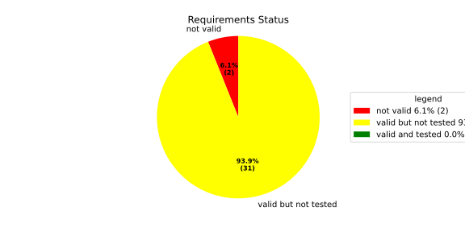
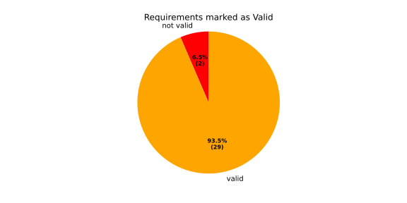
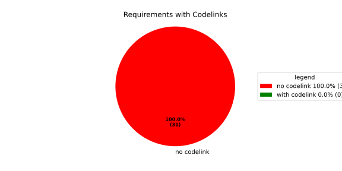
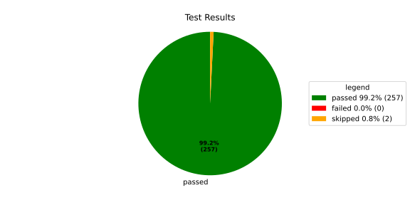
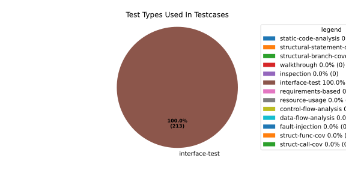
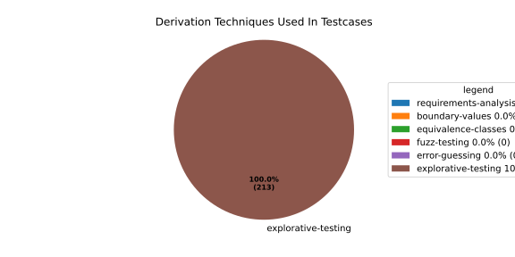

Verification Statistics#
Overview#

In Detail#



Failed Tests
Hint: This table should be empty. Before a PR can be merged all tests have to be successful.
No needs passed the filters
Skipped / Disabled Tests
testcase |
Result |
Fully Verifies |
Partially Verifies |
Test Type |
Derivation Technique |
link |
|---|---|---|---|---|---|---|
ValidateRangeTest/4__RejectsValueAboveMax |
skipped |
interface-test |
explorative-testing |
|||
ValidateRangeTest/4__RejectsValueBelowMin |
skipped |
interface-test |
explorative-testing |
All passed Tests#
testcase |
Result |
Fully Verifies |
Partially Verifies |
Test Type |
Derivation Technique |
link |
|---|---|---|---|---|---|---|
AliveImplTest__DoesNotThrowWhenInterfacePathEnvVarIsSet |
passed |
interface-test |
explorative-testing |
testcase__AliveImplTest__DoesNotThrowWhenInterfacePathEnvVarIsSet_xpewu |
||
AliveImplTest__ReportCheckpointSafeWhenNotConnected |
passed |
interface-test |
explorative-testing |
testcase__AliveImplTest__ReportCheckpointSafeWhenNotConnected_ppvuc |
||
AliveImplTest__ThrowsWhenInterfacePathEnvVarIsNotSet |
passed |
interface-test |
explorative-testing |
testcase__AliveImplTest__ThrowsWhenInterfacePathEnvVarIsNotSet_ekxfw |
||
AliveSupervisionTest__AliveDebouncesThroughFailedBeforeExpired |
passed |
interface-test |
explorative-testing |
testcase__AliveSupervisionTest__AliveDebouncesThroughFailedBeforeExpired_mlnbe |
||
AliveSupervisionTest__AliveReportsEnqueueFailureWhenRingBufferFull |
passed |
interface-test |
explorative-testing |
testcase__AliveSupervisionTest__AliveReportsEnqueueFailureWhenRingBufferFull_byhrd |
||
AliveSupervisionTest__AliveStaysOkWithCorrectHeartbeats |
passed |
interface-test |
explorative-testing |
testcase__AliveSupervisionTest__AliveStaysOkWithCorrectHeartbeats_vekof |
||
AliveSupervisionTest__AliveTransitionsOkToExpiredOnMissingHeartbeat |
passed |
interface-test |
explorative-testing |
testcase__AliveSupervisionTest__AliveTransitionsOkToExpiredOnMissingHeartbeat_jymxo |
||
AliveSupervisionTest__DeactivatesOnProcessCrash |
passed |
interface-test |
explorative-testing |
testcase__AliveSupervisionTest__DeactivatesOnProcessCrash_ypejs |
||
AliveSupervisionTest__DeactivatesOnProcessSigterm |
passed |
interface-test |
explorative-testing |
testcase__AliveSupervisionTest__DeactivatesOnProcessSigterm_hzaal |
||
AliveSupervisionTest__IgnoresIrrelevantProcessStates |
passed |
interface-test |
explorative-testing |
testcase__AliveSupervisionTest__IgnoresIrrelevantProcessStates_aolvb |
||
AliveSupervisionTest__MaxIndicationViolationExpires |
passed |
interface-test |
explorative-testing |
testcase__AliveSupervisionTest__MaxIndicationViolationExpires_whhhi |
||
AliveSupervisionTest__ReactivatesAfterCrash |
passed |
interface-test |
explorative-testing |
|||
ApplicationTypes/ApplicationTypeTest__ConvertsToExpectedValue/Native |
passed |
interface-test |
explorative-testing |
testcase__ApplicationTypes/ApplicationTypeTest__ConvertsToExpectedValue/Native_yxxcz |
||
ApplicationTypes/ApplicationTypeTest__ConvertsToExpectedValue/Reporting |
passed |
interface-test |
explorative-testing |
testcase__ApplicationTypes/ApplicationTypeTest__ConvertsToExpectedValue/Reporting_wcfwr |
||
ApplicationTypes/ApplicationTypeTest__ConvertsToExpectedValue/ReportingAndSupervised |
passed |
interface-test |
explorative-testing |
testcase__ApplicationTypes/ApplicationTypeTest__ConvertsToExpectedValue/ReportingAndSupervised_yxgad |
||
ApplicationTypes/ApplicationTypeTest__ConvertsToExpectedValue/StateManager |
passed |
interface-test |
explorative-testing |
testcase__ApplicationTypes/ApplicationTypeTest__ConvertsToExpectedValue/StateManager_ivuzc |
||
ConverterTest__ConvertAliveSupervisionMissingCycleReturnsError |
passed |
interface-test |
explorative-testing |
testcase__ConverterTest__ConvertAliveSupervisionMissingCycleReturnsError_bifzg |
||
ConverterTest__ConvertAliveSupervisionNullReturnsDefault |
passed |
interface-test |
explorative-testing |
testcase__ConverterTest__ConvertAliveSupervisionNullReturnsDefault_clyua |
||
ConverterTest__ConvertAliveSupervisionValid |
passed |
interface-test |
explorative-testing |
|||
ConverterTest__ConvertApplicationProfileMissingSelfTerminatingReturnsError |
passed |
interface-test |
explorative-testing |
testcase__ConverterTest__ConvertApplicationProfileMissingSelfTerminatingReturnsError_zddjb |
||
ConverterTest__ConvertApplicationProfileMissingTypeReturnsError |
passed |
interface-test |
explorative-testing |
testcase__ConverterTest__ConvertApplicationProfileMissingTypeReturnsError_zrfcs |
||
ConverterTest__ConvertApplicationProfileValid |
passed |
interface-test |
explorative-testing |
testcase__ConverterTest__ConvertApplicationProfileValid_oohxq |
||
ConverterTest__ConvertComponentAliveSupervisionBothIndicationsAbsentReturnsError |
passed |
interface-test |
explorative-testing |
testcase__ConverterTest__ConvertComponentAliveSupervisionBothIndicationsAbsentReturnsError_gvtfi |
||
ConverterTest__ConvertComponentAliveSupervisionMissingReportingCycleReturnsError |
passed |
interface-test |
explorative-testing |
testcase__ConverterTest__ConvertComponentAliveSupervisionMissingReportingCycleReturnsError_ajymy |
||
ConverterTest__ConvertComponentAliveSupervisionMissingToleranceReturnsError |
passed |
interface-test |
explorative-testing |
testcase__ConverterTest__ConvertComponentAliveSupervisionMissingToleranceReturnsError_lgrhj |
||
ConverterTest__ConvertComponentAliveSupervisionNullReturnsDefault |
passed |
interface-test |
explorative-testing |
testcase__ConverterTest__ConvertComponentAliveSupervisionNullReturnsDefault_xhaus |
||
ConverterTest__ConvertComponentAliveSupervisionOnlyMaxIndicationsPresent |
passed |
interface-test |
explorative-testing |
testcase__ConverterTest__ConvertComponentAliveSupervisionOnlyMaxIndicationsPresent_smwht |
||
ConverterTest__ConvertComponentAliveSupervisionOnlyMinIndicationsPresent |
passed |
interface-test |
explorative-testing |
testcase__ConverterTest__ConvertComponentAliveSupervisionOnlyMinIndicationsPresent_ybbrr |
||
ConverterTest__ConvertComponentAliveSupervisionValid |
passed |
interface-test |
explorative-testing |
testcase__ConverterTest__ConvertComponentAliveSupervisionValid_ijedh |
||
ConverterTest__ConvertComponentsValid |
passed |
interface-test |
explorative-testing |
|||
ConverterTest__ConvertComponentsWithInvalidComponentReturnsError |
passed |
interface-test |
explorative-testing |
testcase__ConverterTest__ConvertComponentsWithInvalidComponentReturnsError_wridc |
||
ConverterTest__ConvertComponentValid |
passed |
interface-test |
explorative-testing |
|||
ConverterTest__ConvertDeploymentConfigMissingReadyTimeoutReturnsError |
passed |
interface-test |
explorative-testing |
testcase__ConverterTest__ConvertDeploymentConfigMissingReadyTimeoutReturnsError_ljzfl |
||
ConverterTest__ConvertDeploymentConfigMissingShutdownTimeoutReturnsError |
passed |
interface-test |
explorative-testing |
testcase__ConverterTest__ConvertDeploymentConfigMissingShutdownTimeoutReturnsError_vyqye |
||
ConverterTest__ConvertDeploymentConfigValid |
passed |
interface-test |
explorative-testing |
|||
ConverterTest__ConvertEnvironmentalVariables |
passed |
interface-test |
explorative-testing |
testcase__ConverterTest__ConvertEnvironmentalVariables_fnhgo |
||
ConverterTest__ConvertEnvironmentalVariablesNullReturnsEmpty |
passed |
interface-test |
explorative-testing |
testcase__ConverterTest__ConvertEnvironmentalVariablesNullReturnsEmpty_vglrx |
||
ConverterTest__ConvertFallbackRunTargetMissingTimeoutReturnsError |
passed |
interface-test |
explorative-testing |
testcase__ConverterTest__ConvertFallbackRunTargetMissingTimeoutReturnsError_aevly |
||
ConverterTest__ConvertFallbackRunTargetValid |
passed |
interface-test |
explorative-testing |
testcase__ConverterTest__ConvertFallbackRunTargetValid_nexxj |
||
ConverterTest__ConvertReadyConditionMissingProcessStateReturnsError |
passed |
interface-test |
explorative-testing |
testcase__ConverterTest__ConvertReadyConditionMissingProcessStateReturnsError_ileav |
||
ConverterTest__ConvertReadyConditionValid |
passed |
interface-test |
explorative-testing |
|||
ConverterTest__ConvertRestartActionMissingFieldsReturnsError |
passed |
interface-test |
explorative-testing |
testcase__ConverterTest__ConvertRestartActionMissingFieldsReturnsError_aapjb |
||
ConverterTest__ConvertRestartActionNullReturnsNullopt |
passed |
interface-test |
explorative-testing |
testcase__ConverterTest__ConvertRestartActionNullReturnsNullopt_ifvyd |
||
ConverterTest__ConvertRestartActionValid |
passed |
interface-test |
explorative-testing |
|||
ConverterTest__ConvertRunTargetMissingTransitionTimeoutReturnsError |
passed |
interface-test |
explorative-testing |
testcase__ConverterTest__ConvertRunTargetMissingTransitionTimeoutReturnsError_ynekv |
||
ConverterTest__ConvertRunTargetsValid |
passed |
interface-test |
explorative-testing |
|||
ConverterTest__ConvertRunTargetsWithInvalidRunTargetReturnsError |
passed |
interface-test |
explorative-testing |
testcase__ConverterTest__ConvertRunTargetsWithInvalidRunTargetReturnsError_ldlox |
||
ConverterTest__ConvertRunTargetValid |
passed |
interface-test |
explorative-testing |
|||
ConverterTest__ConvertSandboxMissingGidReturnsError |
passed |
interface-test |
explorative-testing |
testcase__ConverterTest__ConvertSandboxMissingGidReturnsError_veeel |
||
ConverterTest__ConvertSandboxMissingSchedulingPolicyReturnsError |
passed |
interface-test |
explorative-testing |
testcase__ConverterTest__ConvertSandboxMissingSchedulingPolicyReturnsError_pkfts |
||
ConverterTest__ConvertSandboxMissingSchedulingPriorityReturnsError |
passed |
interface-test |
explorative-testing |
testcase__ConverterTest__ConvertSandboxMissingSchedulingPriorityReturnsError_xzdho |
||
ConverterTest__ConvertSandboxMissingUidReturnsError |
passed |
interface-test |
explorative-testing |
testcase__ConverterTest__ConvertSandboxMissingUidReturnsError_ogfku |
||
ConverterTest__ConvertSandboxSupplementaryGidOutOfRangeReturnsError |
passed |
interface-test |
explorative-testing |
testcase__ConverterTest__ConvertSandboxSupplementaryGidOutOfRangeReturnsError_zavpx |
||
ConverterTest__ConvertSandboxUidOutOfRangeReturnsError |
passed |
interface-test |
explorative-testing |
testcase__ConverterTest__ConvertSandboxUidOutOfRangeReturnsError_mcuaf |
||
ConverterTest__ConvertSandboxValid |
passed |
interface-test |
explorative-testing |
|||
ConverterTest__ConvertSwitchRunTargetActionNullReturnsNullopt |
passed |
interface-test |
explorative-testing |
testcase__ConverterTest__ConvertSwitchRunTargetActionNullReturnsNullopt_zmitx |
||
ConverterTest__ConvertSwitchRunTargetActionValid |
passed |
interface-test |
explorative-testing |
testcase__ConverterTest__ConvertSwitchRunTargetActionValid_tdklr |
||
ConverterTest__ConvertWatchdogMissingDeactivateReturnsError |
passed |
interface-test |
explorative-testing |
testcase__ConverterTest__ConvertWatchdogMissingDeactivateReturnsError_gzwjt |
||
ConverterTest__ConvertWatchdogMissingMagicCloseReturnsError |
passed |
interface-test |
explorative-testing |
testcase__ConverterTest__ConvertWatchdogMissingMagicCloseReturnsError_gexxk |
||
ConverterTest__ConvertWatchdogMissingMaxTimeoutReturnsError |
passed |
interface-test |
explorative-testing |
testcase__ConverterTest__ConvertWatchdogMissingMaxTimeoutReturnsError_lffxm |
||
ConverterTest__ConvertWatchdogNullReturnsNullopt |
passed |
interface-test |
explorative-testing |
testcase__ConverterTest__ConvertWatchdogNullReturnsNullopt_irsdk |
||
ConverterTest__ConvertWatchdogValid |
passed |
interface-test |
explorative-testing |
|||
DeadlineFixture__Start_AlreadyRunning |
passed |
interface-test |
explorative-testing |
|||
DeadlineFixture__Start_Succeeds |
passed |
interface-test |
explorative-testing |
|||
DeadlineMonitorBuilderFixture__AddDeadline_Succeeds |
passed |
interface-test |
explorative-testing |
testcase__DeadlineMonitorBuilderFixture__AddDeadline_Succeeds_nagke |
||
DeadlineMonitorBuilderFixture__New_Succeeds |
passed |
interface-test |
explorative-testing |
|||
DeadlineMonitorFixture__GetDeadline_Succeeds |
passed |
interface-test |
explorative-testing |
testcase__DeadlineMonitorFixture__GetDeadline_Succeeds_tmltf |
||
DeadlineMonitorFixture__GetDeadline_Unknown |
passed |
interface-test |
explorative-testing |
|||
EnumConversionTest__ConvertSchedulingPolicyUnsupported |
passed |
interface-test |
explorative-testing |
testcase__EnumConversionTest__ConvertSchedulingPolicyUnsupported_iavqm |
||
EnvironmentTest__AddIncreasesSize |
passed |
interface-test |
explorative-testing |
|||
EnvironmentTest__DefaultConstructedIsEmpty |
passed |
interface-test |
explorative-testing |
|||
EnvironmentTest__EmptyEnvironmentEnvpIsNullTerminated |
passed |
interface-test |
explorative-testing |
testcase__EnvironmentTest__EmptyEnvironmentEnvpIsNullTerminated_wwumw |
||
EnvironmentTest__EnvpReturnsNullTerminatedArray |
passed |
interface-test |
explorative-testing |
testcase__EnvironmentTest__EnvpReturnsNullTerminatedArray_aubkv |
||
EnvironmentTest__EnvpWithMultipleEntries |
passed |
interface-test |
explorative-testing |
|||
EnvironmentTest__MoveAssignmentPreservesEntries |
passed |
interface-test |
explorative-testing |
testcase__EnvironmentTest__MoveAssignmentPreservesEntries_vkydj |
||
EnvironmentTest__MoveConstructorPreservesEntries |
passed |
interface-test |
explorative-testing |
testcase__EnvironmentTest__MoveConstructorPreservesEntries_upclt |
||
EnvironmentTest__RangeBasedForLoopWorks |
passed |
interface-test |
explorative-testing |
|||
EnvironmentTest__ReserveAndAddAvoidReallocation |
passed |
interface-test |
explorative-testing |
testcase__EnvironmentTest__ReserveAndAddAvoidReallocation_lgzmu |
||
EnvironmentTest__SsoLengthStringSurvivesReallocation |
passed |
interface-test |
explorative-testing |
testcase__EnvironmentTest__SsoLengthStringSurvivesReallocation_jfmtl |
||
EnvironmentVariableTest__CStrReturnsKeyEqualsValue |
passed |
interface-test |
explorative-testing |
testcase__EnvironmentVariableTest__CStrReturnsKeyEqualsValue_rkwan |
||
EnvironmentVariableTest__EmptyValue |
passed |
interface-test |
explorative-testing |
|||
EnvironmentVariableTest__KeyAndValueAreAccessible |
passed |
interface-test |
explorative-testing |
testcase__EnvironmentVariableTest__KeyAndValueAreAccessible_kcrth |
||
EnvironmentVariableTest__ValueContainingEquals |
passed |
interface-test |
explorative-testing |
testcase__EnvironmentVariableTest__ValueContainingEquals_apzgz |
||
ExecErrorDomainTest__AllKnownCodesHaveDistinctMessages |
passed |
interface-test |
explorative-testing |
testcase__ExecErrorDomainTest__AllKnownCodesHaveDistinctMessages_qpoka |
||
ExecErrorDomainTest__AllKnownCodesReturnNonEmptyMessage |
passed |
interface-test |
explorative-testing |
testcase__ExecErrorDomainTest__AllKnownCodesReturnNonEmptyMessage_bawzg |
||
ExecErrorDomainTest__UnknownCodeReturnsNonEmptyMessage |
passed |
interface-test |
explorative-testing |
testcase__ExecErrorDomainTest__UnknownCodeReturnsNonEmptyMessage_kkwpr |
||
FlatbufferConfigLoaderTest__CorruptedBufferReturnsInvalidFormat |
passed |
interface-test |
explorative-testing |
testcase__FlatbufferConfigLoaderTest__CorruptedBufferReturnsInvalidFormat_twyac |
||
FlatbufferConfigLoaderTest__LoadAliveSupervision |
passed |
interface-test |
explorative-testing |
testcase__FlatbufferConfigLoaderTest__LoadAliveSupervision_hhuux |
||
FlatbufferConfigLoaderTest__LoadBufferFailsWithGenericErrorReturnsGeneralError |
passed |
interface-test |
explorative-testing |
testcase__FlatbufferConfigLoaderTest__LoadBufferFailsWithGenericErrorReturnsGeneralError_kmatm |
||
FlatbufferConfigLoaderTest__LoadBufferFailsWithNoSuchFileReturnsFileNotFound |
passed |
interface-test |
explorative-testing |
testcase__FlatbufferConfigLoaderTest__LoadBufferFailsWithNoSuchFileReturnsFileNotFound_yzlra |
||
FlatbufferConfigLoaderTest__LoadBufferFailsWithPermissionDeniedReturnsInsufficientPermission |
passed |
interface-test |
explorative-testing |
|||
FlatbufferConfigLoaderTest__LoadComponentAliveSupervision |
passed |
interface-test |
explorative-testing |
testcase__FlatbufferConfigLoaderTest__LoadComponentAliveSupervision_fwfad |
||
FlatbufferConfigLoaderTest__LoadEnvironmentalVariables |
passed |
interface-test |
explorative-testing |
testcase__FlatbufferConfigLoaderTest__LoadEnvironmentalVariables_wsosu |
||
FlatbufferConfigLoaderTest__LoadFallbackRunTarget |
passed |
interface-test |
explorative-testing |
testcase__FlatbufferConfigLoaderTest__LoadFallbackRunTarget_wduqm |
||
FlatbufferConfigLoaderTest__LoadMinimalConfig |
passed |
interface-test |
explorative-testing |
testcase__FlatbufferConfigLoaderTest__LoadMinimalConfig_hdkck |
||
FlatbufferConfigLoaderTest__LoadMultipleComponents |
passed |
interface-test |
explorative-testing |
testcase__FlatbufferConfigLoaderTest__LoadMultipleComponents_abpom |
||
FlatbufferConfigLoaderTest__LoadRestartRecoveryAction |
passed |
interface-test |
explorative-testing |
testcase__FlatbufferConfigLoaderTest__LoadRestartRecoveryAction_wyfqg |
||
FlatbufferConfigLoaderTest__LoadRunTargets |
passed |
interface-test |
explorative-testing |
|||
FlatbufferConfigLoaderTest__LoadSandbox |
passed |
interface-test |
explorative-testing |
|||
FlatbufferConfigLoaderTest__LoadSingleComponent |
passed |
interface-test |
explorative-testing |
testcase__FlatbufferConfigLoaderTest__LoadSingleComponent_yidty |
||
FlatbufferConfigLoaderTest__LoadSwitchRunTargetAction |
passed |
interface-test |
explorative-testing |
testcase__FlatbufferConfigLoaderTest__LoadSwitchRunTargetAction_uchgp |
||
FlatbufferConfigLoaderTest__LoadWatchdog |
passed |
interface-test |
explorative-testing |
|||
FlatbufferConfigLoaderTest__MissingSchemaVersionReturnsInvalidFormat |
passed |
interface-test |
explorative-testing |
testcase__FlatbufferConfigLoaderTest__MissingSchemaVersionReturnsInvalidFormat_qqmfn |
||
FlatbufferConfigLoaderTest__OptionalReadyConditionAbsent |
passed |
interface-test |
explorative-testing |
testcase__FlatbufferConfigLoaderTest__OptionalReadyConditionAbsent_lhddx |
||
FlatbufferConfigLoaderTest__OptionalWatchdogAbsent |
passed |
interface-test |
explorative-testing |
testcase__FlatbufferConfigLoaderTest__OptionalWatchdogAbsent_pkhkp |
||
FlatbufferConfigLoaderTest__WrongSchemaVersionReturnsUnsupportedVersion |
passed |
interface-test |
explorative-testing |
testcase__FlatbufferConfigLoaderTest__WrongSchemaVersionReturnsUnsupportedVersion_zrbjv |
||
HealthMonitor__GetDeadlineMonitor_Available |
passed |
|||||
HealthMonitor__GetDeadlineMonitor_Taken |
passed |
|||||
HealthMonitor__GetDeadlineMonitor_Unknown |
passed |
|||||
HealthMonitor__GetHeartbeatMonitor_Available |
passed |
testcase__HealthMonitor__GetHeartbeatMonitor_Available_aacat |
||||
HealthMonitor__GetHeartbeatMonitor_Taken |
passed |
|||||
HealthMonitor__GetHeartbeatMonitor_Unknown |
passed |
|||||
HealthMonitor__GetLogicMonitor_Available |
passed |
|||||
HealthMonitor__GetLogicMonitor_Taken |
passed |
|||||
HealthMonitor__GetLogicMonitor_Unknown |
passed |
|||||
HealthMonitor__Start_MonitorsNotTaken |
passed |
|||||
HealthMonitor__Start_Succeeds |
passed |
|||||
HealthMonitorBuilderFixture__Build_InvalidCycles |
passed |
interface-test |
explorative-testing |
testcase__HealthMonitorBuilderFixture__Build_InvalidCycles_pdigk |
||
HealthMonitorBuilderFixture__Build_NoMonitors |
passed |
interface-test |
explorative-testing |
testcase__HealthMonitorBuilderFixture__Build_NoMonitors_ktcve |
||
HealthMonitorBuilderFixture__Build_Succeeds |
passed |
interface-test |
explorative-testing |
|||
HealthMonitorBuilderFixture__New_Succeeds |
passed |
interface-test |
explorative-testing |
|||
HealthMonitorTest__Integrated |
passed |
interface-test |
explorative-testing |
|||
HeartbeatMonitor__Heartbeat_Succeeds |
passed |
interface-test |
explorative-testing |
|||
HeartbeatMonitorBuilder__New_Succeeds |
passed |
interface-test |
explorative-testing |
|||
IdentifierHashTest__IdentifierHash_default_created |
passed |
interface-test |
explorative-testing |
testcase__IdentifierHashTest__IdentifierHash_default_created_yhhvi |
||
IdentifierHashTest__IdentifierHash_EqualityOperators |
passed |
interface-test |
explorative-testing |
testcase__IdentifierHashTest__IdentifierHash_EqualityOperators_nnsuj |
||
IdentifierHashTest__IdentifierHash_invalid_hash_no_string_representation |
passed |
interface-test |
explorative-testing |
testcase__IdentifierHashTest__IdentifierHash_invalid_hash_no_string_representation_rxowr |
||
IdentifierHashTest__IdentifierHash_LessThanOperator |
passed |
interface-test |
explorative-testing |
testcase__IdentifierHashTest__IdentifierHash_LessThanOperator_rnbax |
||
IdentifierHashTest__IdentifierHash_no_dangling_pointer_after_source_string_dies |
passed |
interface-test |
explorative-testing |
testcase__IdentifierHashTest__IdentifierHash_no_dangling_pointer_after_source_string_dies_qsjin |
||
IdentifierHashTest__IdentifierHash_with_string_created |
passed |
interface-test |
explorative-testing |
testcase__IdentifierHashTest__IdentifierHash_with_string_created_aygdm |
||
IdentifierHashTest__IdentifierHash_with_string_view_created |
passed |
interface-test |
explorative-testing |
testcase__IdentifierHashTest__IdentifierHash_with_string_view_created_dbpol |
||
LogicMonitorBuilderFixture__AddState_Succeeds |
passed |
interface-test |
explorative-testing |
testcase__LogicMonitorBuilderFixture__AddState_Succeeds_axdxj |
||
LogicMonitorBuilderFixture__New_Succeeds |
passed |
interface-test |
explorative-testing |
|||
LogicMonitorFixture__State_Invalid |
passed |
interface-test |
explorative-testing |
|||
LogicMonitorFixture__State_Succeeds |
passed |
interface-test |
explorative-testing |
|||
LogicMonitorFixture__Transition_Invalid |
passed |
interface-test |
explorative-testing |
|||
LogicMonitorFixture__Transition_Succeeds |
passed |
interface-test |
explorative-testing |
|||
LogicMonitorFixture__Transition_Unknown |
passed |
interface-test |
explorative-testing |
|||
MonitorIfDaemonTest__Active_CheckpointDataForwarded |
passed |
interface-test |
explorative-testing |
testcase__MonitorIfDaemonTest__Active_CheckpointDataForwarded_evumz |
||
MonitorIfDaemonTest__Active_FutureTimestamp_NotForwardedInCurrentCycle |
passed |
interface-test |
explorative-testing |
testcase__MonitorIfDaemonTest__Active_FutureTimestamp_NotForwardedInCurrentCycle_oycau |
||
MonitorIfDaemonTest__Active_FutureTimestampCheckpoint_ConsumedInLaterCycle |
passed |
interface-test |
explorative-testing |
testcase__MonitorIfDaemonTest__Active_FutureTimestampCheckpoint_ConsumedInLaterCycle_veyyy |
||
MonitorIfDaemonTest__Active_MultipleCheckpointsInOneCycle_AllForwarded |
passed |
interface-test |
explorative-testing |
testcase__MonitorIfDaemonTest__Active_MultipleCheckpointsInOneCycle_AllForwarded_gmbms |
||
MonitorIfDaemonTest__Active_NonMatchingCheckpointId_NotForwarded |
passed |
interface-test |
explorative-testing |
testcase__MonitorIfDaemonTest__Active_NonMatchingCheckpointId_NotForwarded_bohck |
||
MonitorIfDaemonTest__Active_OverflowDetected_TransitionsToInactiveOverflow |
passed |
interface-test |
explorative-testing |
testcase__MonitorIfDaemonTest__Active_OverflowDetected_TransitionsToInactiveOverflow_ovitk |
||
MonitorIfDaemonTest__Active_TwoAttachedCheckpoints_RoutedByCheckpointId |
passed |
interface-test |
explorative-testing |
testcase__MonitorIfDaemonTest__Active_TwoAttachedCheckpoints_RoutedByCheckpointId_skqhd |
||
MonitorIfDaemonTest__GetInterfaceName_ReturnsNameGivenAtConstruction |
passed |
interface-test |
explorative-testing |
testcase__MonitorIfDaemonTest__GetInterfaceName_ReturnsNameGivenAtConstruction_iaemz |
||
MonitorIfDaemonTest__InactiveOverflow_NoProcessRestart_DoesNotRepeatNotification |
passed |
interface-test |
explorative-testing |
testcase__MonitorIfDaemonTest__InactiveOverflow_NoProcessRestart_DoesNotRepeatNotification_gdbxg |
||
MonitorIfDaemonTest__InactiveOverflow_ProcessRestartFlag_ClearedAfterNotification |
passed |
interface-test |
explorative-testing |
testcase__MonitorIfDaemonTest__InactiveOverflow_ProcessRestartFlag_ClearedAfterNotification_pqfyy |
||
MonitorIfDaemonTest__InactiveOverflow_ProcessRestarts_PushesOverflowNotificationAgain |
passed |
interface-test |
explorative-testing |
|||
MonitorIfDaemonTest__InitiallyInactive_CheckForNewData_DoesNotNotifyCheckpoint |
passed |
interface-test |
explorative-testing |
testcase__MonitorIfDaemonTest__InitiallyInactive_CheckForNewData_DoesNotNotifyCheckpoint_wjrfl |
||
MonitorIfDaemonTest__ProcessOff_DeactivatesMonitor_NoFurtherDataForwarded |
passed |
interface-test |
explorative-testing |
testcase__MonitorIfDaemonTest__ProcessOff_DeactivatesMonitor_NoFurtherDataForwarded_uialh |
||
MonitorIfDaemonTest__ProcessOffBeforeActivation_RemainsInactive |
passed |
interface-test |
explorative-testing |
testcase__MonitorIfDaemonTest__ProcessOffBeforeActivation_RemainsInactive_kzzyy |
||
MonitorIfDaemonTest__ProcessRunning_ActivatesMonitorOnNextCheckForNewData |
passed |
interface-test |
explorative-testing |
testcase__MonitorIfDaemonTest__ProcessRunning_ActivatesMonitorOnNextCheckForNewData_fkkmk |
||
MonitorIfDaemonTest__ProcessStarting_AlsoActivatesMonitor |
passed |
interface-test |
explorative-testing |
testcase__MonitorIfDaemonTest__ProcessStarting_AlsoActivatesMonitor_xdkbg |
||
MPMCConcurrentQueueTest_Basic__LvaluePushCopiesItem |
passed |
testcase__MPMCConcurrentQueueTest_Basic__LvaluePushCopiesItem_oysfc |
||||
MPMCConcurrentQueueTest_Basic__PopReturnsNulloptOnSemaphoreWaitFailure |
passed |
testcase__MPMCConcurrentQueueTest_Basic__PopReturnsNulloptOnSemaphoreWaitFailure_rgznm |
||||
MPMCConcurrentQueueTest_Basic__PushAndPopPreservesOrder |
passed |
testcase__MPMCConcurrentQueueTest_Basic__PushAndPopPreservesOrder_aijdb |
||||
MPMCConcurrentQueueTest_Basic__PushAndPopSingleItem |
passed |
testcase__MPMCConcurrentQueueTest_Basic__PushAndPopSingleItem_jrxwz |
||||
MPMCConcurrentQueueTest_Basic__RvaluePushWorksWithMoveOnlyType |
passed |
testcase__MPMCConcurrentQueueTest_Basic__RvaluePushWorksWithMoveOnlyType_cxxaj |
||||
MPMCConcurrentQueueTest_Blocking__PopBlocksUntilItemAvailable |
passed |
testcase__MPMCConcurrentQueueTest_Blocking__PopBlocksUntilItemAvailable_ttwcx |
||||
MPMCConcurrentQueueTest_Blocking__PushBlocksWhenFull |
passed |
testcase__MPMCConcurrentQueueTest_Blocking__PushBlocksWhenFull_ecujf |
||||
MPMCConcurrentQueueTest_Blocking__StopUnblocksBlockedConsumer |
passed |
testcase__MPMCConcurrentQueueTest_Blocking__StopUnblocksBlockedConsumer_snzyr |
||||
MPMCConcurrentQueueTest_Blocking__StopUnblocksBlockedProducer |
passed |
testcase__MPMCConcurrentQueueTest_Blocking__StopUnblocksBlockedProducer_inddu |
||||
MPMCConcurrentQueueTest_MPMC__AllItemsDelivered |
passed |
testcase__MPMCConcurrentQueueTest_MPMC__AllItemsDelivered_ztjqe |
||||
MPMCConcurrentQueueTest_Stop__ItemsAreDroppedAfterStop |
passed |
testcase__MPMCConcurrentQueueTest_Stop__ItemsAreDroppedAfterStop_ragzw |
||||
MPMCConcurrentQueueTest_Stop__PopReturnsNulloptWhenStoppedAndEmpty |
passed |
testcase__MPMCConcurrentQueueTest_Stop__PopReturnsNulloptWhenStoppedAndEmpty_cevga |
||||
MPMCConcurrentQueueTest_Stop__PushReturnsFalseAfterStop |
passed |
testcase__MPMCConcurrentQueueTest_Stop__PushReturnsFalseAfterStop_qqnhw |
||||
MPMCConcurrentQueueTest_Timeout__PushWithTimeoutReturnsFalseWhenFull |
passed |
testcase__MPMCConcurrentQueueTest_Timeout__PushWithTimeoutReturnsFalseWhenFull_aeips |
||||
MPMCConcurrentQueueTest_Timeout__PushWithTimeoutSucceedsWhenSlotAvailable |
passed |
testcase__MPMCConcurrentQueueTest_Timeout__PushWithTimeoutSucceedsWhenSlotAvailable_klzpo |
||||
OsHandlerTest__WaitReturnsError_OsHandlerSleepsAndDoesNotCallFindTerminated |
passed |
interface-test |
explorative-testing |
testcase__OsHandlerTest__WaitReturnsError_OsHandlerSleepsAndDoesNotCallFindTerminated_cibtr |
||
OsHandlerTest__WaitReturnsErrorThenProcessId_HandlerRecoversAndInvokesCallback |
passed |
interface-test |
explorative-testing |
testcase__OsHandlerTest__WaitReturnsErrorThenProcessId_HandlerRecoversAndInvokesCallback_nqstd |
||
OsHandlerTest__WaitReturnsProcessId_FindTerminatedIsCalled |
passed |
interface-test |
explorative-testing |
testcase__OsHandlerTest__WaitReturnsProcessId_FindTerminatedIsCalled_chlsq |
||
OsHandlerTest__WaitReturnsProcessIdBeforeRegistration_LaterRegistrationReceivesStoredTermination |
passed |
interface-test |
explorative-testing |
|||
OsHandlerTest__WaitReturnsUnknownPidWhenMapIsFull_OutOfResourcesPathDoesNotNotifyCallbacks |
passed |
interface-test |
explorative-testing |
|||
OsHandlerTest__WaitReturnsZeroPid_OsHandlerSleepsAndDoesNotCallFindTerminated |
passed |
interface-test |
explorative-testing |
testcase__OsHandlerTest__WaitReturnsZeroPid_OsHandlerSleepsAndDoesNotCallFindTerminated_rkttz |
||
ProcessStateClient_UT__ProcessStateClient_ConstructReceiver_Succeeds |
passed |
interface-test |
explorative-testing |
testcase__ProcessStateClient_UT__ProcessStateClient_ConstructReceiver_Succeeds_hodwy |
||
ProcessStateClient_UT__ProcessStateClient_QueueMaxNumberOfProcesses_Succeeds |
passed |
interface-test |
explorative-testing |
testcase__ProcessStateClient_UT__ProcessStateClient_QueueMaxNumberOfProcesses_Succeeds_qohom |
||
ProcessStateClient_UT__ProcessStateClient_QueueOneProcess_Succeeds |
passed |
interface-test |
explorative-testing |
testcase__ProcessStateClient_UT__ProcessStateClient_QueueOneProcess_Succeeds_tmzfz |
||
ProcessStateClient_UT__ProcessStateClient_QueueOneProcessTooMany_Fails |
passed |
interface-test |
explorative-testing |
testcase__ProcessStateClient_UT__ProcessStateClient_QueueOneProcessTooMany_Fails_sspoj |
||
ProcessStates/ProcessStateTest__ConvertsToExpectedValue/Running |
passed |
interface-test |
explorative-testing |
testcase__ProcessStates/ProcessStateTest__ConvertsToExpectedValue/Running_hinlr |
||
ProcessStates/ProcessStateTest__ConvertsToExpectedValue/Terminated |
passed |
interface-test |
explorative-testing |
testcase__ProcessStates/ProcessStateTest__ConvertsToExpectedValue/Terminated_zrytn |
||
RecoveryClientTest__FIFOOrdering |
passed |
interface-test |
explorative-testing |
|||
RecoveryClientTest__GetNextRequest |
passed |
interface-test |
explorative-testing |
|||
RecoveryClientTest__GetNextRequestEmpty |
passed |
interface-test |
explorative-testing |
|||
RecoveryClientTest__RingBufferFull |
passed |
interface-test |
explorative-testing |
|||
RecoveryClientTest__SendSingleRequest |
passed |
interface-test |
explorative-testing |
|||
RunTest__AsPosixProcessCreatesAndDestroysLifeCycleManager |
passed |
testcase__RunTest__AsPosixProcessCreatesAndDestroysLifeCycleManager_sooex |
||||
RunTest__AsPosixProcessForwardsConstructorArgsToApplication |
passed |
testcase__RunTest__AsPosixProcessForwardsConstructorArgsToApplication_dmeur |
||||
RunTest__AsPosixProcessForwardsNonZeroExitCode |
passed |
testcase__RunTest__AsPosixProcessForwardsNonZeroExitCode_lldqd |
||||
RunTest__AsPosixProcessPassesCorrectApplicationTypeToRun |
passed |
testcase__RunTest__AsPosixProcessPassesCorrectApplicationTypeToRun_ajqwz |
||||
RunTest__AsPosixProcessReturnsZeroExitCode |
passed |
|||||
RunTest__RunApplicationFreeFunctionDelegatesToAsPosixProcess |
passed |
testcase__RunTest__RunApplicationFreeFunctionDelegatesToAsPosixProcess_ccing |
||||
RunTest__RunConstructorPassesArgcArgvToApplicationContext |
passed |
testcase__RunTest__RunConstructorPassesArgcArgvToApplicationContext_agerd |
||||
SafeProcessMapTest__ConcurrentFindAndInsertFromMultipleThreads |
passed |
interface-test |
explorative-testing |
testcase__SafeProcessMapTest__ConcurrentFindAndInsertFromMultipleThreads_kzfyg |
||
SafeProcessMapTest__ConcurrentInsertAndFindFromMultipleThreads |
passed |
interface-test |
explorative-testing |
testcase__SafeProcessMapTest__ConcurrentInsertAndFindFromMultipleThreads_hnyqj |
||
SafeProcessMapTest__ConstructWithZeroCapacity |
passed |
interface-test |
explorative-testing |
testcase__SafeProcessMapTest__ConstructWithZeroCapacity_gjmqg |
||
SafeProcessMapTest__FindTerminatedInsertsEntryWhenPidNotPresent |
passed |
interface-test |
explorative-testing |
testcase__SafeProcessMapTest__FindTerminatedInsertsEntryWhenPidNotPresent_ixtlt |
||
SafeProcessMapTest__FindTerminatedMatchesExistingInsertAndCallsCallback |
passed |
interface-test |
explorative-testing |
testcase__SafeProcessMapTest__FindTerminatedMatchesExistingInsertAndCallsCallback_ehuzb |
||
SafeProcessMapTest__FindTerminatedSamePidTwiceYieldsUntilInsertResolves |
passed |
interface-test |
explorative-testing |
testcase__SafeProcessMapTest__FindTerminatedSamePidTwiceYieldsUntilInsertResolves_hsekx |
||
SafeProcessMapTest__FindTerminatedWithNegativePidReturnsInvalid |
passed |
interface-test |
explorative-testing |
testcase__SafeProcessMapTest__FindTerminatedWithNegativePidReturnsInvalid_dewoh |
||
SafeProcessMapTest__FindTerminatedWorksAtMaxTreeDepth |
passed |
interface-test |
explorative-testing |
testcase__SafeProcessMapTest__FindTerminatedWorksAtMaxTreeDepth_adtzi |
||
SafeProcessMapTest__InsertBeyondCapacityReturnsOutOfMemory |
passed |
interface-test |
explorative-testing |
testcase__SafeProcessMapTest__InsertBeyondCapacityReturnsOutOfMemory_qjnie |
||
SafeProcessMapTest__InsertIntoEmptyTreeReturnsZero |
passed |
interface-test |
explorative-testing |
testcase__SafeProcessMapTest__InsertIntoEmptyTreeReturnsZero_zfbaq |
||
SafeProcessMapTest__InsertMatchesExistingFindTerminatedEntry |
passed |
interface-test |
explorative-testing |
testcase__SafeProcessMapTest__InsertMatchesExistingFindTerminatedEntry_fuwrp |
||
SafeProcessMapTest__InsertMultipleNodesThenFindTerminatedRemovesAll |
passed |
interface-test |
explorative-testing |
testcase__SafeProcessMapTest__InsertMultipleNodesThenFindTerminatedRemovesAll_fvowh |
||
SafeProcessMapTest__InsertSamePidTwiceYieldsUntilFindTerminatedResolves |
passed |
interface-test |
explorative-testing |
testcase__SafeProcessMapTest__InsertSamePidTwiceYieldsUntilFindTerminatedResolves_wzwyb |
||
SchedulingPolicies/SchedulingPolicyTest__ConvertsToExpectedPosixValue/SCHED_FIFO |
passed |
interface-test |
explorative-testing |
testcase__SchedulingPolicies/SchedulingPolicyTest__ConvertsToExpectedPosixValue/SCHED_FIFO_soddq |
||
SchedulingPolicies/SchedulingPolicyTest__ConvertsToExpectedPosixValue/SCHED_OTHER |
passed |
interface-test |
explorative-testing |
testcase__SchedulingPolicies/SchedulingPolicyTest__ConvertsToExpectedPosixValue/SCHED_OTHER_oigmk |
||
SchedulingPolicies/SchedulingPolicyTest__ConvertsToExpectedPosixValue/SCHED_RR |
passed |
interface-test |
explorative-testing |
testcase__SchedulingPolicies/SchedulingPolicyTest__ConvertsToExpectedPosixValue/SCHED_RR_pcjci |
||
score/health_monitor/src/rust/test-510566969/tests |
passed |
testcase__score/health_monitor/src/rust/test-510566969/tests_kjjlw |
||||
score/health_monitor/src/rust/test-827801879/loom_tests |
passed |
testcase__score/health_monitor/src/rust/test-827801879/loom_tests_cpmix |
||||
SecondsToMsTest__ConvertsPositiveValue |
passed |
interface-test |
explorative-testing |
|||
SecondsToMsTest__ConvertsZero |
passed |
interface-test |
explorative-testing |
|||
SecondsToMsTest__RejectsNegativeValue |
passed |
interface-test |
explorative-testing |
|||
SecondsToMsTest__RejectsOverflow |
passed |
interface-test |
explorative-testing |
|||
SecondsToMsTest__RejectsSubMillisecond |
passed |
interface-test |
explorative-testing |
|||
StringHelperTest__ConvertGidVectorReturnsEmptyWhenNull |
passed |
interface-test |
explorative-testing |
testcase__StringHelperTest__ConvertGidVectorReturnsEmptyWhenNull_jmcsr |
||
StringHelperTest__ConvertStringVectorReturnsEmptyWhenNull |
passed |
interface-test |
explorative-testing |
testcase__StringHelperTest__ConvertStringVectorReturnsEmptyWhenNull_zsuvv |
||
StringHelperTest__SafeStringReturnsEmptyWhenNull |
passed |
interface-test |
explorative-testing |
testcase__StringHelperTest__SafeStringReturnsEmptyWhenNull_crelr |
||
StringHelperTest__SafeStringReturnsValueWhenNotNull |
passed |
interface-test |
explorative-testing |
testcase__StringHelperTest__SafeStringReturnsValueWhenNotNull_anbko |
||
test_complex_monitoring |
passed |
|||||
test_crash_on_startup |
passed |
|||||
test_incorrect_config_non_reporting |
passed |
|||||
test_process_crash_monitoring |
passed |
|||||
test_process_fd_leak |
passed |
|||||
test_process_launch_args |
passed |
|||||
test_process_wrong_binary_failure |
passed |
|||||
test_recovery_action_complex_rep_failure |
passed |
|||||
test_recovery_action_simple_rep_failure |
passed |
|||||
test_smoke |
passed |
|||||
test_switch_run_target |
passed |
|||||
TimeRangeFixture__MinMax |
passed |
interface-test |
explorative-testing |
|||
TimeRangeFixture__New_InvalidOrder |
passed |
interface-test |
explorative-testing |
|||
TimeRangeFixture__New_Succeeds |
passed |
interface-test |
explorative-testing |
|||
ValidateRangeTest/0__AcceptsMaxBoundary |
passed |
interface-test |
explorative-testing |
|||
ValidateRangeTest/0__AcceptsMinBoundary |
passed |
interface-test |
explorative-testing |
|||
ValidateRangeTest/0__AcceptsZero |
passed |
interface-test |
explorative-testing |
|||
ValidateRangeTest/0__RejectsValueAboveMax |
passed |
interface-test |
explorative-testing |
|||
ValidateRangeTest/0__RejectsValueBelowMin |
passed |
interface-test |
explorative-testing |
|||
ValidateRangeTest/1__AcceptsMaxBoundary |
passed |
interface-test |
explorative-testing |
|||
ValidateRangeTest/1__AcceptsMinBoundary |
passed |
interface-test |
explorative-testing |
|||
ValidateRangeTest/1__AcceptsZero |
passed |
interface-test |
explorative-testing |
|||
ValidateRangeTest/1__RejectsValueAboveMax |
passed |
interface-test |
explorative-testing |
|||
ValidateRangeTest/1__RejectsValueBelowMin |
passed |
interface-test |
explorative-testing |
|||
ValidateRangeTest/2__AcceptsMaxBoundary |
passed |
interface-test |
explorative-testing |
|||
ValidateRangeTest/2__AcceptsMinBoundary |
passed |
interface-test |
explorative-testing |
|||
ValidateRangeTest/2__AcceptsZero |
passed |
interface-test |
explorative-testing |
|||
ValidateRangeTest/2__RejectsValueAboveMax |
passed |
interface-test |
explorative-testing |
|||
ValidateRangeTest/2__RejectsValueBelowMin |
passed |
interface-test |
explorative-testing |
|||
ValidateRangeTest/3__AcceptsMaxBoundary |
passed |
interface-test |
explorative-testing |
|||
ValidateRangeTest/3__AcceptsMinBoundary |
passed |
interface-test |
explorative-testing |
|||
ValidateRangeTest/3__AcceptsZero |
passed |
interface-test |
explorative-testing |
|||
ValidateRangeTest/3__RejectsValueAboveMax |
passed |
interface-test |
explorative-testing |
|||
ValidateRangeTest/3__RejectsValueBelowMin |
passed |
interface-test |
explorative-testing |
|||
ValidateRangeTest/4__AcceptsMaxBoundary |
passed |
interface-test |
explorative-testing |
|||
ValidateRangeTest/4__AcceptsMinBoundary |
passed |
interface-test |
explorative-testing |
|||
ValidateRangeTest/4__AcceptsZero |
passed |
interface-test |
explorative-testing |
Details About Testcases#


Test Log Files#
tests-report/tests/integration/process_simple_rep_failure/process_simple_rep_failure/test.log
exec ${PAGER:-/usr/bin/less} "$0" || exit 1
Executing tests from //tests/integration/process_simple_rep_failure:process_simple_rep_failure
-----------------------------------------------------------------------------
============================= test session starts ==============================
platform linux -- Python 3.12.12, pytest-9.0.3, pluggy-1.5.0
rootdir: /home/runner/.bazel/sandbox/processwrapper-sandbox/1151/execroot/_main/bazel-out/k8-fastbuild/bin/tests/integration/process_simple_rep_failure/process_simple_rep_failure.runfiles/score_itf+
configfile: pytest.ini
collected 1 item
../score_itf+::test_recovery_action_simple_rep_failure
-------------------------------- live log setup --------------------------------
[2026-07-13 09:02:43.059] [INFO] [score.itf.plugins.docker] Executing custom image bootstrap command: tests/utils/environments/x86_64-linux/x86_64-linux.sh
[2026-07-13 09:02:43.455] [DEBUG] [docker.utils.config] Trying paths: ['/home/runner/.docker/config.json', '/home/runner/.dockercfg']
[2026-07-13 09:02:43.455] [DEBUG] [docker.utils.config] Found file at path: /home/runner/.docker/config.json
[2026-07-13 09:02:43.456] [DEBUG] [docker.auth] Found 'auths' section
[2026-07-13 09:02:43.456] [DEBUG] [docker.auth] Found entry (registry='https://index.docker.io/v1/', username='githubactions')
[2026-07-13 09:02:43.484] [DEBUG] [urllib3.connectionpool] http://localhost:None "GET /version HTTP/1.1" 200 823
[2026-07-13 09:02:43.544] [DEBUG] [urllib3.connectionpool] http://localhost:None "POST /v1.48/containers/create HTTP/1.1" 201 88
[2026-07-13 09:02:43.551] [DEBUG] [urllib3.connectionpool] http://localhost:None "GET /v1.48/containers/e1713968d2ebca6a10296f8541f980f117c8d0763211f1d1e590baa8ca3ad62b/json HTTP/1.1" 200 None
[2026-07-13 09:02:43.738] [DEBUG] [urllib3.connectionpool] http://localhost:None "POST /v1.48/containers/e1713968d2ebca6a10296f8541f980f117c8d0763211f1d1e590baa8ca3ad62b/start HTTP/1.1" 204 0
[2026-07-13 09:02:43.739] [DEBUG] [docker.utils.config] Trying paths: ['/home/runner/.docker/config.json', '/home/runner/.dockercfg']
[2026-07-13 09:02:43.739] [DEBUG] [docker.utils.config] Found file at path: /home/runner/.docker/config.json
[2026-07-13 09:02:43.739] [DEBUG] [docker.auth] Found 'auths' section
[2026-07-13 09:02:43.739] [DEBUG] [docker.auth] Found entry (registry='https://index.docker.io/v1/', username='githubactions')
[2026-07-13 09:02:43.752] [DEBUG] [urllib3.connectionpool] http://localhost:None "GET /version HTTP/1.1" 200 823
[2026-07-13 09:02:44.070] [INFO] [tests.utils.testing_utils.setup_test] Test case setup finished
-------------------------------- live log call ---------------------------------
[2026-07-13 09:02:44.198] [INFO] [launch_manager] 2026/07/13 09:02:44.3364197 4237353 000 ECU1 LM LM log debug verbose 1 Launch Manager Started !!!!
[2026-07-13 09:02:44.209] [INFO] [launch_manager] 2026/07/13 09:02:44.3364197 4237358 000 ECU1 LM LM log debug verbose 1 Loading LCM Configurations...
[2026-07-13 09:02:44.209] [INFO] [launch_manager] 2026/07/13 09:02:44.3364198 4237358 000 ECU1 LM LM log debug verbose 1 ECUCFG_ENV_VAR_ROOTFOLDER set successfully
[2026-07-13 09:02:44.209] [INFO] [launch_manager] 2026/07/13 09:02:44.3364198 4237360 000 ECU1 LM LM log debug verbose 5 FlatBufferParser::getModeGroupPgName: MainPG ( IdentifierHash: 18079021346025578134 )
[2026-07-13 09:02:44.210] [INFO] [launch_manager] 2026/07/13 09:02:44.3364198 4237361 000 ECU1 LM LM log debug verbose 5 FlatBufferParser::getModeGroupPgStateName: MainPG/Startup ( IdentifierHash: 10504605499600661529 )
[2026-07-13 09:02:44.210] [INFO] [launch_manager] 2026/07/13 09:02:44.3364198 4237361 000 ECU1 LM LM log debug verbose 5 FlatBufferParser::getModeGroupPgStateName: MainPG/run_target_app_does_report_krunning_in_time ( IdentifierHash: 11934981641920773349 )
[2026-07-13 09:02:44.210] [INFO] [launch_manager] 2026/07/13 09:02:44.3364198 4237362 000 ECU1 LM LM log debug verbose 5 FlatBufferParser::getModeGroupPgStateName: MainPG/run_target_app_does_not_report_krunning_in_time ( IdentifierHash: 7672161913816744053 )
[2026-07-13 09:02:44.210] [INFO] [launch_manager] 2026/07/13 09:02:44.3364198 4237362 000 ECU1 LM LM log debug verbose 5 FlatBufferParser::getModeGroupPgStateName: MainPG/Off ( IdentifierHash: 15281793077830264047 )
[2026-07-13 09:02:44.210] [INFO] [launch_manager] 2026/07/13 09:02:44.3364198 4237362 000 ECU1 LM LM log debug verbose 5 FlatBufferParser::getModeGroupPgStateName: MainPG/fallback_run_target ( IdentifierHash: 4059409696722237352 )
[2026-07-13 09:02:44.210] [INFO] [launch_manager] 2026/07/13 09:02:44.3364198 4237363 000 ECU1 LM LM log debug verbose 4 parseProcessConfigurations: Process index: 0 executable_path_: /tmp/tests/process_simple_rep_failure/control_client_mock
[2026-07-13 09:02:44.210] [INFO] [launch_manager] 2026/07/13 09:02:44.3364198 4237363 000 ECU1 LM LM log debug verbose 3 Process control_client_mock is Reporting execution state
[2026-07-13 09:02:44.210] [INFO] [launch_manager] 2026/07/13 09:02:44.3364198 4237364 000 ECU1 LM LM log debug verbose 1 Process is STATE_MANAGEMENT function Cluster Affiliation
[2026-07-13 09:02:44.210] [INFO] [launch_manager] 2026/07/13 09:02:44.3364198 4237364 000 ECU1 LM LM log debug verbose 3 Process control_client_mock is Self terminating
[2026-07-13 09:02:44.210] [INFO] [launch_manager] 2026/07/13 09:02:44.3364198 4237364 000 ECU1 LM LM log debug verbose 4 ParseProcessProcessGroup: id:::pg_name_: MainPG , pg_state_name_: MainPG/Startup
[2026-07-13 09:02:44.211] [INFO] [launch_manager] 2026/07/13 09:02:44.3364198 4237364 000 ECU1 LM LM log debug verbose 4 ParseProcessProcessGroup: id:::pg_name_: MainPG , pg_state_name_: MainPG/run_target_app_does_report_krunning_in_time
[2026-07-13 09:02:44.211] [INFO] [launch_manager] 2026/07/13 09:02:44.3364198 4237365 000 ECU1 LM LM log debug verbose 4 ParseProcessProcessGroup: id:::pg_name_: MainPG , pg_state_name_: MainPG/run_target_app_does_not_report_krunning_in_time
[2026-07-13 09:02:44.211] [INFO] [launch_manager] 2026/07/13 09:02:44.3364198 4237365 000 ECU1 LM LM log debug verbose 4 ParseProcessProcessGroup: id:::pg_name_: MainPG , pg_state_name_: MainPG/fallback_run_target
[2026-07-13 09:02:44.211] [INFO] [launch_manager] 2026/07/13 09:02:44.3364198 4237365 000 ECU1 LM LM log debug verbose 4 parseProcessConfigurations: Process index: 1 executable_path_: /tmp/tests/process_simple_rep_failure/process_simple_reporting
[2026-07-13 09:02:44.211] [INFO] [launch_manager] 2026/07/13 09:02:44.3364198 4237365 000 ECU1 LM LM log debug verbose 3 Process component_does_report_krunning_in_time is Reporting execution state
[2026-07-13 09:02:44.211] [INFO] [launch_manager] 2026/07/13 09:02:44.3364198 4237365 000 ECU1 LM LM log debug verbose 1 Process is NOT associated with any function Cluster Affiliation
[2026-07-13 09:02:44.211] [INFO] [launch_manager] 2026/07/13 09:02:44.3364198 4237366 000 ECU1 LM LM log debug verbose 3 Process component_does_report_krunning_in_time is Self terminating
[2026-07-13 09:02:44.214] [INFO] [launch_manager] 2026/07/13 09:02:44.3364198 4237366 000 ECU1 LM LM log debug verbose 4 ParseProcessProcessGroup: id:::pg_name_: MainPG , pg_state_name_: MainPG/run_target_app_does_report_krunning_in_time
[2026-07-13 09:02:44.214] [INFO] [launch_manager] 2026/07/13 09:02:44.3364198 4237366 000 ECU1 LM LM log debug verbose 4 parseProcessConfigurations: Process index: 2 executable_path_: /tmp/tests/process_simple_rep_failure/process_simple_reporting
[2026-07-13 09:02:44.214] [INFO] [launch_manager] 2026/07/13 09:02:44.3364198 4237366 000 ECU1 LM LM log debug verbose 3 Process component_does_not_report_krunning_in_time is Reporting execution state
[2026-07-13 09:02:44.214] [INFO] [launch_manager] 2026/07/13 09:02:44.3364198 4237366 000 ECU1 LM LM log debug verbose 1 Process is NOT associated with any function Cluster Affiliation
[2026-07-13 09:02:44.214] [INFO] [launch_manager] 2026/07/13 09:02:44.3364198 4237367 000 ECU1 LM LM log debug verbose 3 Process component_does_not_report_krunning_in_time is Self terminating
[2026-07-13 09:02:44.214] [INFO] [launch_manager] 2026/07/13 09:02:44.3364198 4237367 000 ECU1 LM LM log debug verbose 4 ParseProcessProcessGroup: id:::pg_name_: MainPG , pg_state_name_: MainPG/run_target_app_does_not_report_krunning_in_time
[2026-07-13 09:02:44.215] [INFO] [launch_manager] 2026/07/13 09:02:44.3364198 4237367 000 ECU1 LM LM log debug verbose 4 parseProcessConfigurations: Process index: 3 executable_path_: /tmp/tests/process_simple_rep_failure/verification_process
[2026-07-13 09:02:44.215] [INFO] [launch_manager] 2026/07/13 09:02:44.3364198 4237367 000 ECU1 LM LM log debug verbose 3 Process verification_component is NOT Reporting execution state
[2026-07-13 09:02:44.215] [INFO] [launch_manager] 2026/07/13 09:02:44.3364198 4237368 000 ECU1 LM LM log debug verbose 1 Process is NOT associated with any function Cluster Affiliation
[2026-07-13 09:02:44.215] [INFO] [launch_manager] 2026/07/13 09:02:44.3364198 4237368 000 ECU1 LM LM log debug verbose 3 Process verification_component is Self terminating
[2026-07-13 09:02:44.215] [INFO] [launch_manager] 2026/07/13 09:02:44.3364199 4237368 000 ECU1 LM LM log debug verbose 4 ParseProcessProcessGroup: id:::pg_name_: MainPG , pg_state_name_: MainPG/fallback_run_target
[2026-07-13 09:02:44.215] [INFO] [launch_manager] 2026/07/13 09:02:44.3364199 4237368 000 ECU1 LM LM log debug verbose 3 Loading SWCL Nr. 0 Succeeded
[2026-07-13 09:02:44.215] [INFO] [launch_manager] 2026/07/13 09:02:44.3364199 4237368 000 ECU1 LM LM log debug verbose 2 1 process group(s)
[2026-07-13 09:02:44.215] [INFO] [launch_manager] 2026/07/13 09:02:44.3364199 4237369 000 ECU1 LM LM log debug verbose 3 Creating graph with 4 nodes
[2026-07-13 09:02:44.215] [INFO] [launch_manager] 2026/07/13 09:02:44.3364199 4237369 000 ECU1 LM LM log debug verbose 1 Process groups initialized successfully
[2026-07-13 09:02:44.215] [INFO] [launch_manager] 2026/07/13 09:02:44.3364199 4237369 000 ECU1 LM LM log debug verbose 1 Process Group initialization done
[2026-07-13 09:02:44.215] [INFO] [launch_manager] 2026/07/13 09:02:44.3364199 4237369 000 ECU1 LM LM log debug verbose 3 Creating Safe Process Map with 4 entries
[2026-07-13 09:02:44.215] [INFO] [launch_manager] 2026/07/13 09:02:44.3364199 4237369 000 ECU1 LM LM log debug verbose 2 Creating job queue with capacity 1024
[2026-07-13 09:02:44.224] [INFO] [launch_manager] 2026/07/13 09:02:44.3364199 4237371 000 ECU1 LM LM log debug verbose 1 Creating worker threads...
[2026-07-13 09:02:44.224] [INFO] [launch_manager] 2026/07/13 09:02:44.3364200 4237384 000 ECU1 LM LM log debug verbose 7 Process group index 0 (with name MainPG ) has 4 processes
[2026-07-13 09:02:44.224] [INFO] [launch_manager] 2026/07/13 09:02:44.3364200 4237384 000 ECU1 LM LM log debug verbose 2 Creating process node with id: 0
[2026-07-13 09:02:44.224] [INFO] [launch_manager] 2026/07/13 09:02:44.3364200 4237384 000 ECU1 LM LM log debug verbose 5 Process 0 has 0 start dependencies
[2026-07-13 09:02:44.225] [INFO] [launch_manager] 2026/07/13 09:02:44.3364200 4237385 000 ECU1 LM LM log debug verbose 2 Creating process node with id: 1
[2026-07-13 09:02:44.225] [INFO] [launch_manager] 2026/07/13 09:02:44.3364200 4237385 000 ECU1 LM LM log debug verbose 5 Process 1 has 0 start dependencies
[2026-07-13 09:02:44.225] [INFO] [launch_manager] 2026/07/13 09:02:44.3364200 4237385 000 ECU1 LM LM log debug verbose 2 Creating process node with id: 2
[2026-07-13 09:02:44.225] [INFO] [launch_manager] 2026/07/13 09:02:44.3364200 4237385 000 ECU1 LM LM log debug verbose 5 Process 2 has 0 start dependencies
[2026-07-13 09:02:44.225] [INFO] [launch_manager] 2026/07/13 09:02:44.3364200 4237385 000 ECU1 LM LM log debug verbose 2 Creating process node with id: 3
[2026-07-13 09:02:44.225] [INFO] [launch_manager] 2026/07/13 09:02:44.3364200 4237386 000 ECU1 LM LM log debug verbose 5 Process 3 has 0 start dependencies
[2026-07-13 09:02:44.225] [INFO] [launch_manager] 2026/07/13 09:02:44.3364200 4237386 000 ECU1 LM LM log debug verbose 3 Created 4 process nodes
[2026-07-13 09:02:44.225] [INFO] [launch_manager] 2026/07/13 09:02:44.3364200 4237386 000 ECU1 LM LM log debug verbose 2 Creating successor lists for process group MainPG
[2026-07-13 09:02:44.225] [INFO] [launch_manager] 2026/07/13 09:02:44.3364200 4237386 000 ECU1 LM LM log debug verbose 1 Graphs initialized
[2026-07-13 09:02:44.225] [INFO] [launch_manager] 2026/07/13 09:02:44.3364200 4237388 000 ECU1 LM Fcty log info verbose 2 Factory for FlatCfg MachineConfig: Loading of HM Machine Configuration succeeded.
[2026-07-13 09:02:44.225] [INFO] [launch_manager] 2026/07/13 09:02:44.3364201 4237388 000 ECU1 LM Fcty log debug verbose 3 Factory for FlatCfg MachineConfig: Alive Supervision buffer size: 100
[2026-07-13 09:02:44.226] [INFO] [launch_manager] 2026/07/13 09:02:44.3364201 4237388 000 ECU1 LM Fcty log debug verbose 3 Factory for FlatCfg MachineConfig: Monitor buffer size: 512
[2026-07-13 09:02:44.226] [INFO] [launch_manager] 2026/07/13 09:02:44.3364201 4237388 000 ECU1 LM Fcty log debug verbose 4 Factory for FlatCfg MachineConfig: Periodicity: 50000000 ns
[2026-07-13 09:02:44.226] [INFO] [launch_manager] 2026/07/13 09:02:44.3364201 4237388 000 ECU1 LM Fcty log debug verbose 3 Factory for FlatCfg MachineConfig: Configured watchdogs: 0
[2026-07-13 09:02:44.226] [INFO] [launch_manager] 2026/07/13 09:02:44.3364201 4237389 000 ECU1 LM Fcty log warn verbose 2 Factory for FlatCfg MachineConfig: No watchdog configured
[2026-07-13 09:02:44.226] [INFO] [launch_manager] 2026/07/13 09:02:44.3364201 4237389 000 ECU1 LM Fcty log debug verbose 2 Software Cluster Handler starts constructing workers: MainCluster
[2026-07-13 09:02:44.226] [INFO] [launch_manager] 2026/07/13 09:02:44.3364201 4237389 000 ECU1 LM Fcty log debug verbose 3 Factory for FlatCfg AR24-11: Successfully created Process States: control_client_mock
[2026-07-13 09:02:44.226] [INFO] [launch_manager] 2026/07/13 09:02:44.3364201 4237390 000 ECU1 LM Fcty log debug verbose 3 Factory for FlatCfg AR24-11: Number of constructed Process States: 1
[2026-07-13 09:02:44.226] [INFO] [launch_manager] 2026/07/13 09:02:44.3364201 4237391 000 ECU1 LM Fcty log debug verbose 3 Factory for FlatCfg AR24-11: Successfully created Alive interface IPC with path: lifecycle_health_control_client_mock
[2026-07-13 09:02:44.226] [INFO] [launch_manager] 2026/07/13 09:02:44.3364201 4237391 000 ECU1 LM Fcty log debug verbose 3 Factory for FlatCfg AR24-11: Number of constructed Alive interface IPCs: 1
[2026-07-13 09:02:44.226] [INFO] [launch_manager] 2026/07/13 09:02:44.3364201 4237391 000 ECU1 LM Fcty log debug verbose 3 Factory for FlatCfg AR24-11: Successfully created Alive Interface: /lifecycle_health_control_client_mock
[2026-07-13 09:02:44.226] [INFO] [launch_manager] 2026/07/13 09:02:44.3364201 4237391 000 ECU1 LM Fcty log debug verbose 3 Factory for FlatCfg AR24-11: Number of constructed Alive interfaces: 1
[2026-07-13 09:02:44.226] [INFO] [launch_manager] 2026/07/13 09:02:44.3364201 4237392 000 ECU1 LM Fcty log debug verbose 3 Factory for FlatCfg AR24-11: Successfully created supervision checkpoint: control_client_mock_checkpoint
[2026-07-13 09:02:44.226] [INFO] [launch_manager] 2026/07/13 09:02:44.3364201 4237392 000 ECU1 LM Fcty log debug verbose 3 Factory for FlatCfg AR24-11: Number of constructed supervision checkpoints: 1
[2026-07-13 09:02:44.226] [INFO] [launch_manager] 2026/07/13 09:02:44.3364201 4237392 000 ECU1 LM Fcty log debug verbose 3 Factory for FlatCfg AR24-11: Successfully created alive supervision worker object: control_client_mock_alive_supervision
[2026-07-13 09:02:44.226] [INFO] [launch_manager] 2026/07/13 09:02:44.3364201 4237392 000 ECU1 LM Fcty log debug verbose 3 Factory for FlatCfg AR24-11: Number of constructed alive supervisions: 1
[2026-07-13 09:02:44.226] [INFO] [launch_manager] 2026/07/13 09:02:44.3364201 4237392 000 ECU1 LM Fcty log info verbose 2 Phm Daemon: The (configured) periodicity in [ns] is set to: 50000000
[2026-07-13 09:02:44.226] [INFO] [launch_manager] 2026/07/13 09:02:44.3364201 4237393 000 ECU1 LM Fcty log debug verbose 2 Phm Daemon: The accuracy of the monotonic system clock in [ns] is: 1
[2026-07-13 09:02:44.226] [INFO] [launch_manager] 2026/07/13 09:02:44.3364201 4237393 000 ECU1 LM Fcty log debug verbose 3 AliveMonitor: Initialization took 0 ms
[2026-07-13 09:02:44.226] [INFO] [launch_manager] 2026/07/13 09:02:44.3364201 4237393 000 ECU1 LM LM log info verbose 1 LCM started successfully
[2026-07-13 09:02:44.226] [INFO] [launch_manager] 2026/07/13 09:02:44.3364201 4237394 000 ECU1 LM LM log debug verbose 3 clock() at run(): 39.601000 ms
[2026-07-13 09:02:44.227] [INFO] [launch_manager] 2026/07/13 09:02:44.3364201 4237394 000 ECU1 LM LM log debug verbose 1 =============STARTING MAINPG STARTUP STATE============
[2026-07-13 09:02:44.227] [INFO] [launch_manager] 2026/07/13 09:02:44.3364201 4237395 000 ECU1 LM LM log debug verbose 9 Graph::setState changes from kSuccess to kInTransition for PG 0 ( MainPG )
[2026-07-13 09:02:44.227] [INFO] [launch_manager] 2026/07/13 09:02:44.3364201 4237395 000 ECU1 LM LM log debug verbose 2 Stop Dependencies: 0
[2026-07-13 09:02:44.228] [INFO] [launch_manager] 2026/07/13 09:02:44.3364201 4237395 000 ECU1 LM LM log debug verbose 2 Stop Dependencies: 0
[2026-07-13 09:02:44.228] [INFO] [launch_manager] 2026/07/13 09:02:44.3364201 4237395 000 ECU1 LM LM log debug verbose 2 Stop Dependencies: 0
[2026-07-13 09:02:44.228] [INFO] [launch_manager] 2026/07/13 09:02:44.3364201 4237395 000 ECU1 LM LM log debug verbose 2 Stop Dependencies: 0
[2026-07-13 09:02:44.228] [INFO] [launch_manager] 2026/07/13 09:02:44.3364201 4237395 000 ECU1 LM LM log debug verbose 2 Start Dependencies: 0
[2026-07-13 09:02:44.228] [INFO] [launch_manager] 2026/07/13 09:02:44.3364201 4237396 000 ECU1 LM LM log debug verbose 2 Start Dependencies: 0
[2026-07-13 09:02:44.228] [INFO] [launch_manager] 2026/07/13 09:02:44.3364201 4237396 000 ECU1 LM LM log debug verbose 2 Start Dependencies: 0
[2026-07-13 09:02:44.229] [INFO] [launch_manager] 2026/07/13 09:02:44.3364201 4237396 000 ECU1 LM LM log debug verbose 2 Start Dependencies: 0
[2026-07-13 09:02:44.230] [INFO] [launch_manager] 2026/07/13 09:02:44.3364201 4237397 000 ECU1 LM LM log debug verbose 6 Starting process 0 ( control_client_mock ) from executable /tmp/tests/process_simple_rep_failure/control_client_mock
[2026-07-13 09:02:44.230] [INFO] [launch_manager] 2026/07/13 09:02:44.3364201 4237398 000 ECU1 LM LM log debug verbose 3 Initialize the control client for control_client_mock process
[2026-07-13 09:02:44.230] [INFO] [launch_manager] 2026/07/13 09:02:44.3364202 4237399 000 ECU1 LM LM log debug verbose 1 ControlClientChannel initialized
[2026-07-13 09:02:44.230] [INFO] [launch_manager] 2026/07/13 09:02:44.3364202 4237404 000 ECU1 LM LM log debug verbose 4
[2026-07-13 09:02:44.230] [INFO] [launch_manager] [==========] Running 1 test from 1 test suite.
[2026-07-13 09:02:44.230] [INFO] [launch_manager] startProcess pid 68 received for process: control_client_mock
[2026-07-13 09:02:44.230] [INFO] [launch_manager] 2026/07/13 09:02:44.3364213 4237511 000 ECU1 LM LM log debug verbose 1 ControlClientChannel obtained from sync.
[2026-07-13 09:02:44.230] [INFO] [launch_manager] [----------] Global test environment set-up.
[2026-07-13 09:02:44.231] [INFO] [launch_manager] [----------] 1 test from RecoveryActionSimpleRepFailure
[2026-07-13 09:02:44.231] [INFO] [launch_manager] [ RUN ] RecoveryActionSimpleRepFailure.ControlClientMock
[2026-07-13 09:02:44.231] [INFO] [launch_manager] [ STEP ] Report running from ControlClientMock
[2026-07-13 09:02:44.232] [INFO] [launch_manager] [ END STEP ] Report running from ControlClientMock
[2026-07-13 09:02:44.233] [INFO] [launch_manager] [ STEP ] Activate RunTarget run_target_app_does_report_krunning_in_time
[2026-07-13 09:02:44.233] [INFO] [launch_manager] 2026/07/13 09:02:44.3364219 4237578 000 ECU1 LM LM log debug verbose 1
[2026-07-13 09:02:44.233] [INFO] [launch_manager] Request sent. Waiting for acknowledgment...
[2026-07-13 09:02:44.233] [INFO] [launch_manager] 2026/07/13 09:02:44.3364221 4237592 000 ECU1 LM LM log debug verbose 8
[2026-07-13 09:02:44.233] [INFO] [launch_manager] Got kRunning for pid 68 ( control_client_mock ) process 0 of group MainPG
[2026-07-13 09:02:44.233] [INFO] [launch_manager] 2026/07/13 09:02:44.3364221 4237593 000 ECU1 LM LM log debug verbose 7
[2026-07-13 09:02:44.233] [INFO] [launch_manager] startProcess for MainPG process 0 ( control_client_mock ) done
[2026-07-13 09:02:44.233] [INFO] [launch_manager] 2026/07/13 09:02:44.3364221 4237597 000 ECU1 LM LM log debug verbose 1
[2026-07-13 09:02:44.233] [INFO] [launch_manager] Control Client handler nudged
[2026-07-13 09:02:44.233] [INFO] [launch_manager] 2026/07/13 09:02:44.3364222 4237598 000 ECU1 LM LM log debug verbose 3 clock() at successful initial state transition: 41.146000 ms
[2026-07-13 09:02:44.233] [INFO] [launch_manager] 2026/07/13 09:02:44.3364222 4237599 000 ECU1 LM LM log debug verbose 9
[2026-07-13 09:02:44.233] [INFO] [launch_manager] Graph::setState changes from kInTransition to kSuccess for PG 0 ( MainPG )
[2026-07-13 09:02:44.234] [INFO] [launch_manager] 2026/07/13 09:02:44.3364222 4237605 000 ECU1 LM LM log info verbose 7 Completed the request for PG MainPG to State MainPG/Startup in 21 ms
[2026-07-13 09:02:44.234] [INFO] [launch_manager] 2026/07/13 09:02:44.3364222 4237605 000 ECU1 LM LM log debug verbose 1 Control Client handler nudged
[2026-07-13 09:02:44.234] [INFO] [launch_manager] 2026/07/13 09:02:44.3364222 4237606 000 ECU1 LM LM log debug verbose 8 ProcessGroupManager::ControlClientHandler: got request kSetStateRequest ( 16 ) re state MainPG/run_target_app_does_report_krunning_in_time of PG MainPG
[2026-07-13 09:02:44.236] [INFO] [launch_manager] 2026/07/13 09:02:44.3364222 4237607 000 ECU1 LM LM log debug verbose 6 Pending state for process group MainPG changed from to MainPG/run_target_app_does_report_krunning_in_time
[2026-07-13 09:02:44.236] [INFO] [launch_manager] 2026/07/13 09:02:44.3364223 4237615 000 ECU1 LM LM log debug verbose 1
[2026-07-13 09:02:44.236] [INFO] [launch_manager] 2026/07/13 09:02:44.3364223 4237619 000 ECU1 LM LM log debug verbose 1
[2026-07-13 09:02:44.236] [INFO] [launch_manager] Request acknowledged.
[2026-07-13 09:02:44.236] [INFO] [launch_manager] Request acknowledged.
[2026-07-13 09:02:44.236] [INFO] [launch_manager] 2026/07/13 09:02:44.3364224 4237621 000 ECU1 LM LM log debug verbose 6 Pending state for process group MainPG changed from MainPG/run_target_app_does_report_krunning_in_time to
[2026-07-13 09:02:44.236] [INFO] [launch_manager] 2026/07/13 09:02:44.3364224 4237622 000 ECU1 LM LM log debug verbose 4 Start transition to MainPG/run_target_app_does_report_krunning_in_time for PG MainPG
[2026-07-13 09:02:44.236] [INFO] [launch_manager] 2026/07/13 09:02:44.3364224 4237622 000 ECU1 LM LM log debug verbose 9
[2026-07-13 09:02:44.237] [INFO] [launch_manager] Graph::setState changes from kSuccess to kInTransition for PG 0 ( MainPG )
[2026-07-13 09:02:44.240] [INFO] [launch_manager] 2026/07/13 09:02:44.3364224 4237624 000 ECU1 LM LM log debug verbose 2
[2026-07-13 09:02:44.240] [INFO] [launch_manager] Stop Dependencies: 0
[2026-07-13 09:02:44.240] [INFO] [launch_manager] 2026/07/13 09:02:44.3364225 4237630 000 ECU1 LM LM log debug verbose 2 Stop Dependencies: 0
[2026-07-13 09:02:44.240] [INFO] [launch_manager] 2026/07/13 09:02:44.3364225 4237630 000 ECU1 LM LM log debug verbose 2 Stop Dependencies: 0
[2026-07-13 09:02:44.240] [INFO] [launch_manager] 2026/07/13 09:02:44.3364225 4237631 000 ECU1 LM LM log debug verbose 2
[2026-07-13 09:02:44.240] [INFO] [launch_manager] Stop Dependencies: 0
[2026-07-13 09:02:44.240] [INFO] [launch_manager] 2026/07/13 09:02:44.3364225 4237631 000 ECU1 LM LM log debug verbose 2 Start Dependencies: 0
[2026-07-13 09:02:44.240] [INFO] [launch_manager] 2026/07/13 09:02:44.3364225 4237631 000 ECU1 LM LM log debug verbose 2 Start Dependencies: 0
[2026-07-13 09:02:44.240] [INFO] [launch_manager] 2026/07/13 09:02:44.3364225 4237631 000 ECU1 LM LM log debug verbose 2 Start Dependencies: 0
[2026-07-13 09:02:44.240] [INFO] [launch_manager] 2026/07/13 09:02:44.3364225 4237631 000 ECU1 LM LM log debug verbose 2 Start Dependencies: 0
[2026-07-13 09:02:44.241] [INFO] [launch_manager] 2026/07/13 09:02:44.3364225 4237632 000 ECU1 LM LM log debug verbose 6 Starting process 1 ( component_does_report_krunning_in_time ) from executable /tmp/tests/process_simple_rep_failure/process_simple_reporting
[2026-07-13 09:02:44.241] [INFO] [launch_manager] 2026/07/13 09:02:44.3364227 4237654 000 ECU1 LM LM log debug verbose 4
[2026-07-13 09:02:44.241] [INFO] [launch_manager] startProcess pid 70 received for process: component_does_report_krunning_in_time
[2026-07-13 09:02:44.241] [INFO] [launch_manager] [==========] Running 1 test from 1 test suite.
[2026-07-13 09:02:44.241] [INFO] [launch_manager] [----------] Global test environment set-up.
[2026-07-13 09:02:44.241] [INFO] [launch_manager] [----------] 1 test from ProcessSimpleRepFailure
[2026-07-13 09:02:44.241] [INFO] [launch_manager] [ RUN ] ProcessSimpleRepFailure.ProcessSimpleReporting
[2026-07-13 09:02:44.241] [INFO] [launch_manager] [ STEP ] Check args
[2026-07-13 09:02:44.241] [INFO] [launch_manager] [ END STEP ] Check args
[2026-07-13 09:02:44.241] [INFO] [launch_manager] [ STEP ] Report running from ProcessSimpleReporting
[2026-07-13 09:02:44.252] [INFO] [launch_manager] 2026/07/13 09:02:44.3364252 4237901 000 ECU1 LM Sprv log debug verbose 6 Process with Id control_client_mock changed state PG MainPG/Startup PS 1
[2026-07-13 09:02:44.252] [INFO] [launch_manager] 2026/07/13 09:02:44.3364252 4237901 000 ECU1 LM Sprv log debug verbose 6 Process with Id control_client_mock changed state PG MainPG/Startup PS 2
[2026-07-13 09:02:44.252] [INFO] [launch_manager] 2026/07/13 09:02:44.3364252 4237901 000 ECU1 LM Sprv log debug verbose 6 Process with Id component_does_report_krunning_in_time changed state PG MainPG/run_target_app_does_report_krunning_in_time PS 1
[2026-07-13 09:02:44.252] [INFO] [launch_manager] 2026/07/13 09:02:44.3364252 4237902 000 ECU1 LM Sprv log info verbose 3 Alive Supervision ( control_client_mock_alive_supervision ) switched to OK.
[2026-07-13 09:02:44.290] [DEBUG] [tests.utils.testing_utils.run_until_file_deployed] Waiting for /tmp/tests/test_end
[2026-07-13 09:02:44.738] [INFO] [launch_manager] [ END STEP ] Report running from ProcessSimpleReporting
[2026-07-13 09:02:44.738] [INFO] [launch_manager] [ OK ] ProcessSimpleRepFailure.ProcessSimpleReporting (502 ms)
[2026-07-13 09:02:44.738] [INFO] [launch_manager] [----------] 1 test from ProcessSimpleRepFailure (502 ms total)
[2026-07-13 09:02:44.738] [INFO] [launch_manager] [----------] Global test environment tear-down
[2026-07-13 09:02:44.739] [INFO] [launch_manager] [==========] 1 test from 1 test suite ran. (503 ms total)
[2026-07-13 09:02:44.739] [INFO] [launch_manager] [ PASSED ] 1 test.
[2026-07-13 09:02:44.739] [INFO] [launch_manager] 2026/07/13 09:02:44.3364736 4242740 000 ECU1 LM LM log debug verbose 12 Child process 1 of MainPG pid 70 ( component_does_report_krunning_in_time ) for node True terminated with status 0
[2026-07-13 09:02:44.739] [INFO] [launch_manager] 2026/07/13 09:02:44.3364736 4242741 000 ECU1 LM LM log debug verbose 8 Got kRunning for pid 70 ( component_does_report_krunning_in_time ) process 1 of group MainPG
[2026-07-13 09:02:44.739] [INFO] [launch_manager] 2026/07/13 09:02:44.3364736 4242742 000 ECU1 LM LM log debug verbose 7 startProcess for MainPG process 1 ( component_does_report_krunning_in_time ) done
[2026-07-13 09:02:44.740] [INFO] [launch_manager] 2026/07/13 09:02:44.3364736 4242743 000 ECU1 LM LM log debug verbose 9 Graph::setState changes from kInTransition to kSuccess for PG 0 ( MainPG )
[2026-07-13 09:02:44.740] [INFO] [launch_manager] 2026/07/13 09:02:44.3364736 4242743 000 ECU1 LM LM log info verbose 7 Completed the request for PG MainPG to State MainPG/run_target_app_does_report_krunning_in_time in 513 ms
[2026-07-13 09:02:44.743] [INFO] [launch_manager] 2026/07/13 09:02:44.3364736 4242743 000 ECU1 LM LM log debug verbose 1 Control Client handler nudged
[2026-07-13 09:02:44.743] [INFO] [launch_manager] 2026/07/13 09:02:44.3364738 4242762 000 ECU1 LM LM log debug verbose 8 ProcessGroupManager::ControlClientHandler: Sending kSetStateSuccess ( 20 ) re state MainPG/run_target_app_does_report_krunning_in_time of PG MainPG
[2026-07-13 09:02:44.743] [INFO] [launch_manager] 2026/07/13 09:02:44.3364738 4242762 000 ECU1 LM LM log debug verbose 1 Response sent.
[2026-07-13 09:02:44.754] [INFO] [launch_manager] 2026/07/13 09:02:44.3364751 4242894 000 ECU1 LM Sprv log debug verbose 6 Process with Id component_does_report_krunning_in_time changed state PG MainPG/run_target_app_does_report_krunning_in_time PS 4
[2026-07-13 09:02:44.818] [INFO] [launch_manager] 2026/07/13 09:02:44.3364814 4243526 000 ECU1 LM LM log debug verbose 1 Response retrieved.
[2026-07-13 09:02:44.818] [INFO] [launch_manager] [ END STEP ] Activate RunTarget run_target_app_does_report_krunning_in_time
[2026-07-13 09:02:44.870] [DEBUG] [tests.utils.testing_utils.run_until_file_deployed] Waiting for /tmp/tests/test_end
[2026-07-13 09:02:45.442] [DEBUG] [tests.utils.testing_utils.run_until_file_deployed] Waiting for /tmp/tests/test_end
[2026-07-13 09:02:45.815] [INFO] [launch_manager] [ STEP ] Verify fallback run target has not been activated
[2026-07-13 09:02:45.815] [INFO] [launch_manager] [ END STEP ] Verify fallback run target has not been activated
[2026-07-13 09:02:45.815] [INFO] [launch_manager] [ STEP ] Activate RunTarget run_target_app_does_not_report_krunning_in_time
[2026-07-13 09:02:45.816] [INFO] [launch_manager] 2026/07/13 09:02:45.3365816 4253539 000 ECU1 LM LM log debug verbose 1
[2026-07-13 09:02:45.816] [INFO] [launch_manager] Request sent. Waiting for acknowledgment...
[2026-07-13 09:02:45.817] [INFO] [launch_manager] 2026/07/13 09:02:45.3365817 4253553 000 ECU1 LM LM log debug verbose 8 ProcessGroupManager::ControlClientHandler: got request kSetStateRequest ( 16 ) re state MainPG/run_target_app_does_not_report_krunning_in_time of PG MainPG
[2026-07-13 09:02:45.817] [INFO] [launch_manager] 2026/07/13 09:02:45.3365817 4253553 000 ECU1 LM LM log debug verbose 6 Pending state for process group MainPG changed from to MainPG/run_target_app_does_not_report_krunning_in_time
[2026-07-13 09:02:45.818] [INFO] [launch_manager] 2026/07/13 09:02:45.3365817 4253554 000 ECU1 LM LM log debug verbose 1 Request acknowledged.
[2026-07-13 09:02:45.818] [INFO] [launch_manager] 2026/07/13 09:02:45.3365817 4253554 000 ECU1 LM LM log debug verbose 6 Pending state for process group MainPG changed from MainPG/run_target_app_does_not_report_krunning_in_time to
[2026-07-13 09:02:45.818] [INFO] [launch_manager] 2026/07/13 09:02:45.3365817 4253554 000 ECU1 LM LM log debug verbose 4 Start transition to MainPG/run_target_app_does_not_report_krunning_in_time for PG MainPG
[2026-07-13 09:02:45.818] [INFO] [launch_manager] 2026/07/13 09:02:45.3365817 4253554 000 ECU1 LM LM log debug verbose 9 Graph::setState changes from kSuccess to kInTransition for PG 0 ( MainPG )
[2026-07-13 09:02:45.818] [INFO] [launch_manager] 2026/07/13 09:02:45.3365817 4253555 000 ECU1 LM LM log debug verbose 2 Stop Dependencies: 0
[2026-07-13 09:02:45.818] [INFO] [launch_manager] 2026/07/13 09:02:45.3365817 4253555 000 ECU1 LM LM log debug verbose 2 Stop Dependencies: 0
[2026-07-13 09:02:45.818] [INFO] [launch_manager] 2026/07/13 09:02:45.3365817 4253555 000 ECU1 LM LM log debug verbose 2 Stop Dependencies: 0
[2026-07-13 09:02:45.818] [INFO] [launch_manager] 2026/07/13 09:02:45.3365817 4253555 000 ECU1 LM LM log debug verbose 2 Stop Dependencies: 0
[2026-07-13 09:02:45.818] [INFO] [launch_manager] 2026/07/13 09:02:45.3365817 4253555 000 ECU1 LM LM log debug verbose 2 Start Dependencies: 0
[2026-07-13 09:02:45.818] [INFO] [launch_manager] 2026/07/13 09:02:45.3365817 4253556 000 ECU1 LM LM log debug verbose 2 Start Dependencies: 0
[2026-07-13 09:02:45.818] [INFO] [launch_manager] 2026/07/13 09:02:45.3365817 4253556 000 ECU1 LM LM log debug verbose 2 Start Dependencies: 0
[2026-07-13 09:02:45.818] [INFO] [launch_manager] 2026/07/13 09:02:45.3365817 4253556 000 ECU1 LM LM log debug verbose 2 Start Dependencies: 0
[2026-07-13 09:02:45.818] [INFO] [launch_manager] 2026/07/13 09:02:45.3365817 4253556 000 ECU1 LM LM log debug verbose 1 Request acknowledged.
[2026-07-13 09:02:45.821] [INFO] [launch_manager] 2026/07/13 09:02:45.3365817 4253557 000 ECU1 LM LM log debug verbose 6 Starting process 2 ( component_does_not_report_krunning_in_time ) from executable /tmp/tests/process_simple_rep_failure/process_simple_reporting
[2026-07-13 09:02:45.821] [INFO] [launch_manager] 2026/07/13 09:02:45.3365818 4253564 000 ECU1 LM LM log debug verbose 4 startProcess pid 89 received for process: component_does_not_report_krunning_in_time
[2026-07-13 09:02:45.821] [INFO] [launch_manager] [==========] Running 1 test from 1 test suite.
[2026-07-13 09:02:45.821] [INFO] [launch_manager] [----------] Global test environment set-up.
[2026-07-13 09:02:45.821] [INFO] [launch_manager] [----------] 1 test from ProcessSimpleRepFailure
[2026-07-13 09:02:45.821] [INFO] [launch_manager] [ RUN ] ProcessSimpleRepFailure.ProcessSimpleReporting
[2026-07-13 09:02:45.821] [INFO] [launch_manager] [ STEP ] Check args
[2026-07-13 09:02:45.821] [INFO] [launch_manager] [ END STEP ] Check args
[2026-07-13 09:02:45.821] [INFO] [launch_manager] [ STEP ] Report running from ProcessSimpleReporting
[2026-07-13 09:02:45.851] [INFO] [launch_manager] 2026/07/13 09:02:45.3365851 4253895 000 ECU1 LM Sprv log debug verbose 6
[2026-07-13 09:02:45.852] [INFO] [launch_manager] Process with Id component_does_not_report_krunning_in_time changed state PG MainPG/run_target_app_does_not_report_krunning_in_time PS 1
[2026-07-13 09:02:46.004] [DEBUG] [tests.utils.testing_utils.run_until_file_deployed] Waiting for /tmp/tests/test_end
[2026-07-13 09:02:46.573] [DEBUG] [tests.utils.testing_utils.run_until_file_deployed] Waiting for /tmp/tests/test_end
[2026-07-13 09:02:46.919] [INFO] [launch_manager] 2026/07/13 09:02:46.3366918 4264567 000 ECU1 LM LM log warn verbose 5 Got kRunning timeout for process 2 ( component_does_not_report_krunning_in_time )
[2026-07-13 09:02:46.919] [INFO] [launch_manager] 2026/07/13 09:02:46.3366919 4264568 000 ECU1 LM LM log debug verbose 5 terminating process 2 ( component_does_not_report_krunning_in_time )
[2026-07-13 09:02:46.919] [INFO] [launch_manager] 2026/07/13 09:02:46.3366919 4264568 000 ECU1 LM LM log debug verbose 9 Requesting termination of process 2 of MainPG pid 89 ( component_does_not_report_krunning_in_time )
[2026-07-13 09:02:46.919] [INFO] [launch_manager] 2026/07/13 09:02:46.3366919 4264568 000 ECU1 LM LM log debug verbose 2 Request termination received for 89
[2026-07-13 09:02:46.952] [INFO] [launch_manager] 2026/07/13 09:02:46.3366951 4264895 000 ECU1 LM Sprv log debug verbose 6
[2026-07-13 09:02:46.952] [INFO] [launch_manager] Process with Id component_does_not_report_krunning_in_time changed state PG MainPG/run_target_app_does_not_report_krunning_in_time PS 3
[2026-07-13 09:02:47.147] [DEBUG] [tests.utils.testing_utils.run_until_file_deployed] Waiting for /tmp/tests/test_end
[2026-07-13 09:02:47.322] [INFO] [launch_manager] [ END STEP ] Report running from ProcessSimpleReporting
[2026-07-13 09:02:47.322] [INFO] [launch_manager] [ OK ] ProcessSimpleRepFailure.ProcessSimpleReporting (1500 ms)
[2026-07-13 09:02:47.322] [INFO] [launch_manager] [----------] 1 test from ProcessSimpleRepFailure (1500 ms total)
[2026-07-13 09:02:47.322] [INFO] [launch_manager] [----------] Global test environment tear-down
[2026-07-13 09:02:47.323] [INFO] [launch_manager] [==========] 1 test from 1 test suite ran. (1500 ms total)
[2026-07-13 09:02:47.323] [INFO] [launch_manager] [ PASSED ] 1 test.
[2026-07-13 09:02:47.323] [INFO] [launch_manager] 2026/07/13 09:02:47.3367323 4268609 000 ECU1 LM LM log debug verbose 12 Child process 2 of MainPG pid 89 ( component_does_not_report_krunning_in_time ) for node True terminated with status 0
[2026-07-13 09:02:47.326] [INFO] [launch_manager] 2026/07/13 09:02:47.3367325 4268630 000 ECU1 LM LM log debug verbose 5 Queuing jobs after regular termination of process wait 2 ( component_does_not_report_krunning_in_time )
[2026-07-13 09:02:47.327] [INFO] [launch_manager] 2026/07/13 09:02:47.3367325 4268631 000 ECU1 LM LM log debug verbose 7
[2026-07-13 09:02:47.327] [INFO] [launch_manager] terminateProcess for MainPG process 2 ( component_does_not_report_krunning_in_time ) done
[2026-07-13 09:02:47.327] [INFO] [launch_manager] 2026/07/13 09:02:47.3367325 4268632 000 ECU1 LM LM log debug verbose 9 Graph::setState changes from kInTransition to kAborting for PG 0 ( MainPG )
[2026-07-13 09:02:47.327] [INFO] [launch_manager] 2026/07/13 09:02:47.3367325 4268632 000 ECU1 LM LM log debug verbose 7 startProcess for MainPG process 2 ( component_does_not_report_krunning_in_time ) done
[2026-07-13 09:02:47.327] [INFO] [launch_manager] 2026/07/13 09:02:47.3367325 4268632 000 ECU1 LM LM log debug verbose 9 Graph::setState changes from kAborting to kUndefinedState for PG 0 ( MainPG )
[2026-07-13 09:02:47.327] [INFO] [launch_manager] 2026/07/13 09:02:47.3367325 4268633 000 ECU1 LM LM log debug verbose 1 Control Client handler nudged
[2026-07-13 09:02:47.328] [INFO] [launch_manager] 2026/07/13 09:02:47.3367325 4268635 000 ECU1 LM LM log debug verbose 8 ProcessGroupManager::ControlClientHandler: Sending kSetStateFailed ( 19 ) re state MainPG/run_target_app_does_not_report_krunning_in_time of PG MainPG
[2026-07-13 09:02:47.329] [INFO] [launch_manager] 2026/07/13 09:02:47.3367325 4268635 000 ECU1 LM LM log debug verbose 1 Response sent.
[2026-07-13 09:02:47.329] [INFO] [launch_manager] 2026/07/13 09:02:47.3367325 4268635 000 ECU1 LM LM log warn verbose 3 Problem discovered in PG MainPG Activating Recovery state.
[2026-07-13 09:02:47.329] [INFO] [launch_manager] 2026/07/13 09:02:47.3367325 4268635 000 ECU1 LM LM log debug verbose 9
[2026-07-13 09:02:47.329] [INFO] [launch_manager] Graph::setState changes from kUndefinedState to kInTransition for PG 0 ( MainPG )
[2026-07-13 09:02:47.329] [INFO] [launch_manager] 2026/07/13 09:02:47.3367325 4268636 000 ECU1 LM LM log debug verbose 2 Stop Dependencies: 0
[2026-07-13 09:02:47.329] [INFO] [launch_manager] 2026/07/13 09:02:47.3367325 4268636 000 ECU1 LM LM log debug verbose 2 Stop Dependencies: 0
[2026-07-13 09:02:47.329] [INFO] [launch_manager] 2026/07/13 09:02:47.3367325 4268636 000 ECU1 LM LM log debug verbose 2 Stop Dependencies: 0
[2026-07-13 09:02:47.329] [INFO] [launch_manager] 2026/07/13 09:02:47.3367325 4268636 000 ECU1 LM LM log debug verbose 2
[2026-07-13 09:02:47.329] [INFO] [launch_manager] Stop Dependencies: 0
[2026-07-13 09:02:47.329] [INFO] [launch_manager] 2026/07/13 09:02:47.3367325 4268636 000 ECU1 LM LM log debug verbose 2 Start Dependencies: 0
[2026-07-13 09:02:47.329] [INFO] [launch_manager] 2026/07/13 09:02:47.3367325 4268637 000 ECU1 LM LM log debug verbose 2 Start Dependencies: 0
[2026-07-13 09:02:47.329] [INFO] [launch_manager] 2026/07/13 09:02:47.3367325 4268637 000 ECU1 LM LM log debug verbose 2 Start Dependencies: 0
[2026-07-13 09:02:47.330] [INFO] [launch_manager] 2026/07/13 09:02:47.3367325 4268637 000 ECU1 LM LM log debug verbose 2
[2026-07-13 09:02:47.330] [INFO] [launch_manager] Start Dependencies: 0
[2026-07-13 09:02:47.330] [INFO] [launch_manager] 2026/07/13 09:02:47.3367325 4268638 000 ECU1 LM LM log debug verbose 6 Starting process 3 ( verification_component ) from executable /tmp/tests/process_simple_rep_failure/verification_process
[2026-07-13 09:02:47.330] [INFO] [launch_manager] 2026/07/13 09:02:47.3367326 4268644 000 ECU1 LM LM log debug verbose 4 startProcess pid 108 received for process: verification_component
[2026-07-13 09:02:47.330] [INFO] [launch_manager] 2026/07/13 09:02:47.3367326 4268645 000 ECU1 LM LM log debug verbose 8 Considered kRunning for Non Reporting Process pid 108 ( verification_component ) process 3 of group MainPG
[2026-07-13 09:02:47.330] [INFO] [launch_manager] 2026/07/13 09:02:47.3367326 4268645 000 ECU1 LM LM log debug verbose 7 startProcess for MainPG process 3 ( verification_component ) done
[2026-07-13 09:02:47.330] [INFO] [launch_manager] 2026/07/13 09:02:47.3367326 4268645 000 ECU1 LM LM log debug verbose 9 Graph::setState changes from kInTransition to kSuccess for PG 0 ( MainPG )
[2026-07-13 09:02:47.330] [INFO] [launch_manager] 2026/07/13 09:02:47.3367326 4268645 000 ECU1 LM LM log info verbose 7 Completed the request for PG MainPG to State MainPG/fallback_run_target in 0 ms
[2026-07-13 09:02:47.330] [INFO] [launch_manager] 2026/07/13 09:02:47.3367326 4268646 000 ECU1 LM LM log debug verbose 1 Control Client handler nudged
[2026-07-13 09:02:47.330] [INFO] [launch_manager] 2026/07/13 09:02:47.3367328 4268658 000 ECU1 LM LM log debug verbose 8 ProcessGroupManager::ControlClientHandler: Sending kSetStateSuccess ( 20 ) re state MainPG/fallback_run_target of PG MainPG
[2026-07-13 09:02:47.330] [INFO] [launch_manager] 2026/07/13 09:02:47.3367328 4268659 000 ECU1 LM LM log debug verbose 1 Failed to send response: response is not empty.
[2026-07-13 09:02:47.330] [INFO] [launch_manager] 2026/07/13 09:02:47.3367328 4268659 000 ECU1 LM LM log debug verbose 1 Control Client handler nudged
[2026-07-13 09:02:47.331] [INFO] [launch_manager] 2026/07/13 09:02:47.3367328 4268659 000 ECU1 LM LM log debug verbose 8 ProcessGroupManager::ControlClientHandler: Sending kSetStateSuccess ( 20 ) re state MainPG/fallback_run_target of PG MainPG
[2026-07-13 09:02:47.331] [INFO] [launch_manager] 2026/07/13 09:02:47.3367328 4268660 000 ECU1 LM LM log debug verbose 1 Failed to send response: response is not empty.
[2026-07-13 09:02:47.331] [INFO] [launch_manager] 2026/07/13 09:02:47.3367328 4268660 000 ECU1 LM LM log debug verbose 1 Control Client handler nudged
[2026-07-13 09:02:47.336] [INFO] [launch_manager] 2026/07/13 09:02:47.3367328 4268660 000 ECU1 LM LM log debug verbose 8 ProcessGroupManager::ControlClientHandler: Sending kSetStateSuccess ( 20 ) re state MainPG/fallback_run_target of PG MainPG
[2026-07-13 09:02:47.336] [INFO] [launch_manager] 2026/07/13 09:02:47.3367328 4268661 000 ECU1 LM LM log debug verbose 1 Failed to send response: response is not empty.
[2026-07-13 09:02:47.336] [INFO] [launch_manager] 2026/07/13 09:02:47.3367328 4268661 000 ECU1 LM LM log debug verbose 1 Control Client handler nudged
[2026-07-13 09:02:47.336] [INFO] [launch_manager] 2026/07/13 09:02:47.3367328 4268661 000 ECU1 LM LM log debug verbose 8 ProcessGroupManager::ControlClientHandler: Sending kSetStateSuccess ( 20 ) re state MainPG/fallback_run_target of PG MainPG
[2026-07-13 09:02:47.336] [INFO] [launch_manager] 2026/07/13 09:02:47.3367328 4268662 000 ECU1 LM LM log debug verbose 1 Failed to send response: response is not empty.
[2026-07-13 09:02:47.336] [INFO] [launch_manager] 2026/07/13 09:02:47.3367328 4268662 000 ECU1 LM LM log debug verbose 1 Control Client handler nudged
[2026-07-13 09:02:47.336] [INFO] [launch_manager] 2026/07/13 09:02:47.3367328 4268662 000 ECU1 LM LM log debug verbose 8 ProcessGroupManager::ControlClientHandler: Sending kSetStateSuccess ( 20 ) re state MainPG/fallback_run_target of PG MainPG
[2026-07-13 09:02:47.336] [INFO] [launch_manager] 2026/07/13 09:02:47.3367328 4268662 000 ECU1 LM LM log debug verbose 1 Failed to send response: response is not empty.
[2026-07-13 09:02:47.337] [INFO] [launch_manager] 2026/07/13 09:02:47.3367328 4268663 000 ECU1 LM LM log debug verbose 1 Control Client handler nudged
[2026-07-13 09:02:47.337] [INFO] [launch_manager] 2026/07/13 09:02:47.3367328 4268663 000 ECU1 LM LM log debug verbose 8 ProcessGroupManager::ControlClientHandler: Sending kSetStateSuccess ( 20 ) re state MainPG/fallback_run_target of PG MainPG
[2026-07-13 09:02:47.337] [INFO] [launch_manager] 2026/07/13 09:02:47.3367328 4268663 000 ECU1 LM LM log debug verbose 1 Failed to send response: response is not empty.
[2026-07-13 09:02:47.337] [INFO] [launch_manager] 2026/07/13 09:02:47.3367328 4268664 000 ECU1 LM LM log debug verbose 1 Control Client handler nudged
[2026-07-13 09:02:47.337] [INFO] [launch_manager] 2026/07/13 09:02:47.3367328 4268664 000 ECU1 LM LM log debug verbose 8 ProcessGroupManager::ControlClientHandler: Sending kSetStateSuccess ( 20 ) re state MainPG/fallback_run_target of PG MainPG
[2026-07-13 09:02:47.337] [INFO] [launch_manager] 2026/07/13 09:02:47.3367328 4268664 000 ECU1 LM LM log debug verbose 1
[2026-07-13 09:02:47.337] [INFO] [launch_manager] Failed to send response: response is not empty.
[2026-07-13 09:02:47.337] [INFO] [launch_manager] 2026/07/13 09:02:47.3367328 4268664 000 ECU1 LM LM log debug verbose 1 Control Client handler nudged
[2026-07-13 09:02:47.337] [INFO] [launch_manager] 2026/07/13 09:02:47.3367328 4268665 000 ECU1 LM LM log debug verbose 8 ProcessGroupManager::ControlClientHandler: Sending kSetStateSuccess ( 20 ) re state MainPG/fallback_run_target of PG MainPG
[2026-07-13 09:02:47.337] [INFO] [launch_manager] 2026/07/13 09:02:47.3367328 4268665 000 ECU1 LM LM log debug verbose 1 Failed to send response: response is not empty.
[2026-07-13 09:02:47.337] [INFO] [launch_manager] 2026/07/13 09:02:47.3367328 4268665 000 ECU1 LM LM log debug verbose 1 Control Client handler nudged
[2026-07-13 09:02:47.337] [INFO] [launch_manager] 2026/07/13 09:02:47.3367328 4268665 000 ECU1 LM LM log debug verbose 8 ProcessGroupManager::ControlClientHandler: Sending kSetStateSuccess ( 20 ) re state MainPG/fallback_run_target of PG MainPG
[2026-07-13 09:02:47.337] [INFO] [launch_manager] 2026/07/13 09:02:47.3367328 4268666 000 ECU1 LM LM log debug verbose 1 Failed to send response: response is not empty.
[2026-07-13 09:02:47.337] [INFO] [launch_manager] 2026/07/13 09:02:47.3367328 4268666 000 ECU1 LM LM log debug verbose 1 Control Client handler nudged
[2026-07-13 09:02:47.337] [INFO] [launch_manager] 2026/07/13 09:02:47.3367328 4268666 000 ECU1 LM LM log debug verbose 8 ProcessGroupManager::ControlClientHandler: Sending kSetStateSuccess ( 20 ) re state MainPG/fallback_run_target of PG MainPG
[2026-07-13 09:02:47.337] [INFO] [launch_manager] 2026/07/13 09:02:47.3367328 4268666 000 ECU1 LM LM log debug verbose 1 Failed to send response: response is not empty.
[2026-07-13 09:02:47.337] [INFO] [launch_manager] 2026/07/13 09:02:47.3367328 4268666 000 ECU1 LM LM log debug verbose 1 Control Client handler nudged
[2026-07-13 09:02:47.338] [INFO] [launch_manager] 2026/07/13 09:02:47.3367328 4268667 000 ECU1 LM LM log debug verbose 8 ProcessGroupManager::ControlClientHandler: Sending kSetStateSuccess ( 20 ) re state MainPG/fallback_run_target of PG MainPG
[2026-07-13 09:02:47.338] [INFO] [launch_manager] 2026/07/13 09:02:47.3367328 4268667 000 ECU1 LM LM log debug verbose 1 Failed to send response: response is not empty.
[2026-07-13 09:02:47.338] [INFO] [launch_manager] 2026/07/13 09:02:47.3367328 4268667 000 ECU1 LM LM log debug verbose 1 Control Client handler nudged
[2026-07-13 09:02:47.338] [INFO] [launch_manager] 2026/07/13 09:02:47.3367328 4268668 000 ECU1 LM LM log debug verbose 8 ProcessGroupManager::ControlClientHandler: Sending kSetStateSuccess ( 20 ) re state MainPG/fallback_run_target of PG MainPG
[2026-07-13 09:02:47.338] [INFO] [launch_manager] 2026/07/13 09:02:47.3367329 4268668 000 ECU1 LM LM log debug verbose 1 Failed to send response: response is not empty.
[2026-07-13 09:02:47.338] [INFO] [launch_manager] 2026/07/13 09:02:47.3367329 4268668 000 ECU1 LM LM log debug verbose 1 Control Client handler nudged
[2026-07-13 09:02:47.338] [INFO] [launch_manager] 2026/07/13 09:02:47.3367329 4268668 000 ECU1 LM LM log debug verbose 12 Child process 3 of MainPG pid 108 ( verification_component ) for node True terminated with status 0
[2026-07-13 09:02:47.338] [INFO] [launch_manager] 2026/07/13 09:02:47.3367329 4268669 000 ECU1 LM LM log debug verbose 8 ProcessGroupManager::ControlClientHandler: Sending kSetStateSuccess ( 20 ) re state MainPG/fallback_run_target of PG MainPG
[2026-07-13 09:02:47.338] [INFO] [launch_manager] 2026/07/13 09:02:47.3367329 4268669 000 ECU1 LM LM log debug verbose 1 Failed to send response: response is not empty.
[2026-07-13 09:02:47.338] [INFO] [launch_manager] 2026/07/13 09:02:47.3367329 4268670 000 ECU1 LM LM log debug verbose 1 Control Client handler nudged
[2026-07-13 09:02:47.338] [INFO] [launch_manager] 2026/07/13 09:02:47.3367329 4268670 000 ECU1 LM LM log debug verbose 8 ProcessGroupManager::ControlClientHandler: Sending kSetStateSuccess ( 20 ) re state MainPG/fallback_run_target of PG MainPG
[2026-07-13 09:02:47.338] [INFO] [launch_manager] 2026/07/13 09:02:47.3367329 4268671 000 ECU1 LM LM log debug verbose 1 Failed to send response: response is not empty.
[2026-07-13 09:02:47.338] [INFO] [launch_manager] 2026/07/13 09:02:47.3367329 4268671 000 ECU1 LM LM log debug verbose 1 Control Client handler nudged
[2026-07-13 09:02:47.338] [INFO] [launch_manager] 2026/07/13 09:02:47.3367329 4268672 000 ECU1 LM LM log debug verbose 8 ProcessGroupManager::ControlClientHandler: Sending kSetStateSuccess ( 20 ) re state MainPG/fallback_run_target of PG MainPG
[2026-07-13 09:02:47.338] [INFO] [launch_manager] 2026/07/13 09:02:47.3367329 4268673 000 ECU1 LM LM log debug verbose 1 Failed to send response: response is not empty.
[2026-07-13 09:02:47.338] [INFO] [launch_manager] 2026/07/13 09:02:47.3367329 4268673 000 ECU1 LM LM log debug verbose 1 Control Client handler nudged
[2026-07-13 09:02:47.338] [INFO] [launch_manager] 2026/07/13 09:02:47.3367329 4268673 000 ECU1 LM LM log debug verbose 8 ProcessGroupManager::ControlClientHandler: Sending kSetStateSuccess ( 20 ) re state MainPG/fallback_run_target of PG MainPG
[2026-07-13 09:02:47.338] [INFO] [launch_manager] 2026/07/13 09:02:47.3367329 4268673 000 ECU1 LM LM log debug verbose 1 Failed to send response: response is not empty.
[2026-07-13 09:02:47.338] [INFO] [launch_manager] 2026/07/13 09:02:47.3367329 4268674 000 ECU1 LM LM log debug verbose 1 Control Client handler nudged
[2026-07-13 09:02:47.338] [INFO] [launch_manager] 2026/07/13 09:02:47.3367329 4268674 000 ECU1 LM LM log debug verbose 8 ProcessGroupManager::ControlClientHandler: Sending kSetStateSuccess ( 20 ) re state MainPG/fallback_run_target of PG MainPG
[2026-07-13 09:02:47.338] [INFO] [launch_manager] 2026/07/13 09:02:47.3367329 4268674 000 ECU1 LM LM log debug verbose 1 Failed to send response: response is not empty.
[2026-07-13 09:02:47.338] [INFO] [launch_manager] 2026/07/13 09:02:47.3367329 4268674 000 ECU1 LM LM log debug verbose 1 Control Client handler nudged
[2026-07-13 09:02:47.338] [INFO] [launch_manager] 2026/07/13 09:02:47.3367329 4268674 000 ECU1 LM LM log debug verbose 8 ProcessGroupManager::ControlClientHandler: Sending kSetStateSuccess ( 20 ) re state MainPG/fallback_run_target of PG MainPG
[2026-07-13 09:02:47.338] [INFO] [launch_manager] 2026/07/13 09:02:47.3367329 4268675 000 ECU1 LM LM log debug verbose 1 Failed to send response: response is not empty.
[2026-07-13 09:02:47.338] [INFO] [launch_manager] 2026/07/13 09:02:47.3367329 4268675 000 ECU1 LM LM log debug verbose 1 Control Client handler nudged
[2026-07-13 09:02:47.339] [INFO] [launch_manager] 2026/07/13 09:02:47.3367329 4268675 000 ECU1 LM LM log debug verbose 8 ProcessGroupManager::ControlClientHandler: Sending kSetStateSuccess ( 20 ) re state MainPG/fallback_run_target of PG MainPG
[2026-07-13 09:02:47.339] [INFO] [launch_manager] 2026/07/13 09:02:47.3367329 4268675 000 ECU1 LM LM log debug verbose 1 Failed to send response: response is not empty.
[2026-07-13 09:02:47.339] [INFO] [launch_manager] 2026/07/13 09:02:47.3367329 4268675 000 ECU1 LM LM log debug verbose 1 Control Client handler nudged
[2026-07-13 09:02:47.339] [INFO] [launch_manager] 2026/07/13 09:02:47.3367329 4268676 000 ECU1 LM LM log debug verbose 8 ProcessGroupManager::ControlClientHandler: Sending kSetStateSuccess ( 20 ) re state MainPG/fallback_run_target of PG MainPG
[2026-07-13 09:02:47.339] [INFO] [launch_manager] 2026/07/13 09:02:47.3367329 4268676 000 ECU1 LM LM log debug verbose 1 Failed to send response: response is not empty.
[2026-07-13 09:02:47.339] [INFO] [launch_manager] 2026/07/13 09:02:47.3367329 4268676 000 ECU1 LM LM log debug verbose 1 Control Client handler nudged
[2026-07-13 09:02:47.339] [INFO] [launch_manager] 2026/07/13 09:02:47.3367329 4268677 000 ECU1 LM LM log debug verbose 8 ProcessGroupManager::ControlClientHandler: Sending kSetStateSuccess ( 20 ) re state MainPG/fallback_run_target of PG MainPG
[2026-07-13 09:02:47.339] [INFO] [launch_manager] 2026/07/13 09:02:47.3367329 4268677 000 ECU1 LM LM log debug verbose 1 Failed to send response: response is not empty.
[2026-07-13 09:02:47.339] [INFO] [launch_manager] 2026/07/13 09:02:47.3367329 4268677 000 ECU1 LM LM log debug verbose 1 Control Client handler nudged
[2026-07-13 09:02:47.339] [INFO] [launch_manager] 2026/07/13 09:02:47.3367329 4268677 000 ECU1 LM LM log debug verbose 8 ProcessGroupManager::ControlClientHandler: Sending kSetStateSuccess ( 20 ) re state MainPG/fallback_run_target of PG MainPG
[2026-07-13 09:02:47.339] [INFO] [launch_manager] 2026/07/13 09:02:47.3367329 4268677 000 ECU1 LM LM log debug verbose 1 Failed to send response: response is not empty.
[2026-07-13 09:02:47.339] [INFO] [launch_manager] 2026/07/13 09:02:47.3367329 4268678 000 ECU1 LM LM log debug verbose 1 Control Client handler nudged
[2026-07-13 09:02:47.339] [INFO] [launch_manager] 2026/07/13 09:02:47.3367330 4268678 000 ECU1 LM LM log debug verbose 8 ProcessGroupManager::ControlClientHandler: Sending kSetStateSuccess ( 20 ) re state MainPG/fallback_run_target of PG MainPG
[2026-07-13 09:02:47.339] [INFO] [launch_manager] 2026/07/13 09:02:47.3367330 4268678 000 ECU1 LM LM log debug verbose 1 Failed to send response: response is not empty.
[2026-07-13 09:02:47.339] [INFO] [launch_manager] 2026/07/13 09:02:47.3367330 4268678 000 ECU1 LM LM log debug verbose 1 Control Client handler nudged
[2026-07-13 09:02:47.339] [INFO] [launch_manager] 2026/07/13 09:02:47.3367330 4268679 000 ECU1 LM LM log debug verbose 8 ProcessGroupManager::ControlClientHandler: Sending kSetStateSuccess ( 20 ) re state MainPG/fallback_run_target of PG MainPG
[2026-07-13 09:02:47.340] [INFO] [launch_manager] 2026/07/13 09:02:47.3367330 4268679 000 ECU1 LM LM log debug verbose 1 Failed to send response: response is not empty.
[2026-07-13 09:02:47.340] [INFO] [launch_manager] 2026/07/13 09:02:47.3367330 4268679 000 ECU1 LM LM log debug verbose 1 Control Client handler nudged
[2026-07-13 09:02:47.340] [INFO] [launch_manager] 2026/07/13 09:02:47.3367330 4268679 000 ECU1 LM LM log debug verbose 8 ProcessGroupManager::ControlClientHandler: Sending kSetStateSuccess ( 20 ) re state MainPG/fallback_run_target of PG MainPG
[2026-07-13 09:02:47.340] [INFO] [launch_manager] 2026/07/13 09:02:47.3367330 4268679 000 ECU1 LM LM log debug verbose 1 Failed to send response: response is not empty.
[2026-07-13 09:02:47.340] [INFO] [launch_manager] 2026/07/13 09:02:47.3367330 4268680 000 ECU1 LM LM log debug verbose 1 Control Client handler nudged
[2026-07-13 09:02:47.340] [INFO] [launch_manager] 2026/07/13 09:02:47.3367330 4268680 000 ECU1 LM LM log debug verbose 8 ProcessGroupManager::ControlClientHandler: Sending kSetStateSuccess ( 20 ) re state MainPG/fallback_run_target of PG MainPG
[2026-07-13 09:02:47.340] [INFO] [launch_manager] 2026/07/13 09:02:47.3367330 4268680 000 ECU1 LM LM log debug verbose 1 Failed to send response: response is not empty.
[2026-07-13 09:02:47.340] [INFO] [launch_manager] 2026/07/13 09:02:47.3367330 4268681 000 ECU1 LM LM log debug verbose 1 Control Client handler nudged
[2026-07-13 09:02:47.340] [INFO] [launch_manager] 2026/07/13 09:02:47.3367330 4268681 000 ECU1 LM LM log debug verbose 8 ProcessGroupManager::ControlClientHandler: Sending kSetStateSuccess ( 20 ) re state MainPG/fallback_run_target of PG MainPG
[2026-07-13 09:02:47.340] [INFO] [launch_manager] 2026/07/13 09:02:47.3367330 4268681 000 ECU1 LM LM log debug verbose 1 Failed to send response: response is not empty.
[2026-07-13 09:02:47.340] [INFO] [launch_manager] 2026/07/13 09:02:47.3367330 4268681 000 ECU1 LM LM log debug verbose 1 Control Client handler nudged
[2026-07-13 09:02:47.340] [INFO] [launch_manager] 2026/07/13 09:02:47.3367330 4268681 000 ECU1 LM LM log debug verbose 8 ProcessGroupManager::ControlClientHandler: Sending kSetStateSuccess ( 20 ) re state MainPG/fallback_run_target of PG MainPG
[2026-07-13 09:02:47.340] [INFO] [launch_manager] 2026/07/13 09:02:47.3367330 4268682 000 ECU1 LM LM log debug verbose 1 Failed to send response: response is not empty.
[2026-07-13 09:02:47.340] [INFO] [launch_manager] 2026/07/13 09:02:47.3367330 4268682 000 ECU1 LM LM log debug verbose 1 Control Client handler nudged
[2026-07-13 09:02:47.340] [INFO] [launch_manager] 2026/07/13 09:02:47.3367330 4268682 000 ECU1 LM LM log debug verbose 8 ProcessGroupManager::ControlClientHandler: Sending kSetStateSuccess ( 20 ) re state MainPG/fallback_run_target of PG MainPG
[2026-07-13 09:02:47.340] [INFO] [launch_manager] 2026/07/13 09:02:47.3367330 4268682 000 ECU1 LM LM log debug verbose 1 Failed to send response: response is not empty.
[2026-07-13 09:02:47.340] [INFO] [launch_manager] 2026/07/13 09:02:47.3367330 4268683 000 ECU1 LM LM log debug verbose 1 Control Client handler nudged
[2026-07-13 09:02:47.340] [INFO] [launch_manager] 2026/07/13 09:02:47.3367330 4268683 000 ECU1 LM LM log debug verbose 8 ProcessGroupManager::ControlClientHandler: Sending kSetStateSuccess ( 20 ) re state MainPG/fallback_run_target of PG MainPG
[2026-07-13 09:02:47.340] [INFO] [launch_manager] 2026/07/13 09:02:47.3367330 4268683 000 ECU1 LM LM log debug verbose 1 Failed to send response: response is not empty.
[2026-07-13 09:02:47.341] [INFO] [launch_manager] 2026/07/13 09:02:47.3367330 4268683 000 ECU1 LM LM log debug verbose 1 Control Client handler nudged
[2026-07-13 09:02:47.341] [INFO] [launch_manager] 2026/07/13 09:02:47.3367330 4268683 000 ECU1 LM LM log debug verbose 8 ProcessGroupManager::ControlClientHandler: Sending kSetStateSuccess ( 20 ) re state MainPG/fallback_run_target of PG MainPG
[2026-07-13 09:02:47.341] [INFO] [launch_manager] 2026/07/13 09:02:47.3367330 4268684 000 ECU1 LM LM log debug verbose 1 Failed to send response: response is not empty.
[2026-07-13 09:02:47.341] [INFO] [launch_manager] 2026/07/13 09:02:47.3367330 4268684 000 ECU1 LM LM log debug verbose 1 Control Client handler nudged
[2026-07-13 09:02:47.341] [INFO] [launch_manager] 2026/07/13 09:02:47.3367330 4268684 000 ECU1 LM LM log debug verbose 8 ProcessGroupManager::ControlClientHandler: Sending kSetStateSuccess ( 20 ) re state MainPG/fallback_run_target of PG MainPG
[2026-07-13 09:02:47.341] [INFO] [launch_manager] 2026/07/13 09:02:47.3367330 4268684 000 ECU1 LM LM log debug verbose 1 Failed to send response: response is not empty.
[2026-07-13 09:02:47.341] [INFO] [launch_manager] 2026/07/13 09:02:47.3367330 4268684 000 ECU1 LM LM log debug verbose 1 Control Client handler nudged
[2026-07-13 09:02:47.341] [INFO] [launch_manager] 2026/07/13 09:02:47.3367330 4268685 000 ECU1 LM LM log debug verbose 8 ProcessGroupManager::ControlClientHandler: Sending kSetStateSuccess ( 20 ) re state MainPG/fallback_run_target of PG MainPG
[2026-07-13 09:02:47.341] [INFO] [launch_manager] 2026/07/13 09:02:47.3367330 4268685 000 ECU1 LM LM log debug verbose 1 Failed to send response: response is not empty.
[2026-07-13 09:02:47.341] [INFO] [launch_manager] 2026/07/13 09:02:47.3367330 4268685 000 ECU1 LM LM log debug verbose 1 Control Client handler nudged
[2026-07-13 09:02:47.341] [INFO] [launch_manager] 2026/07/13 09:02:47.3367330 4268685 000 ECU1 LM LM log debug verbose 8 ProcessGroupManager::ControlClientHandler: Sending kSetStateSuccess ( 20 ) re state MainPG/fallback_run_target of PG MainPG
[2026-07-13 09:02:47.341] [INFO] [launch_manager] 2026/07/13 09:02:47.3367330 4268686 000 ECU1 LM LM log debug verbose 1 Failed to send response: response is not empty.
[2026-07-13 09:02:47.341] [INFO] [launch_manager] 2026/07/13 09:02:47.3367330 4268686 000 ECU1 LM LM log debug verbose 1 Control Client handler nudged
[2026-07-13 09:02:47.341] [INFO] [launch_manager] 2026/07/13 09:02:47.3367330 4268686 000 ECU1 LM LM log debug verbose 8 ProcessGroupManager::ControlClientHandler: Sending kSetStateSuccess ( 20 ) re state MainPG/fallback_run_target of PG MainPG
[2026-07-13 09:02:47.341] [INFO] [launch_manager] 2026/07/13 09:02:47.3367330 4268686 000 ECU1 LM LM log debug verbose 1 Failed to send response: response is not empty.
[2026-07-13 09:02:47.341] [INFO] [launch_manager] 2026/07/13 09:02:47.3367330 4268686 000 ECU1 LM LM log debug verbose 1 Control Client handler nudged
[2026-07-13 09:02:47.341] [INFO] [launch_manager] 2026/07/13 09:02:47.3367330 4268687 000 ECU1 LM LM log debug verbose 8 ProcessGroupManager::ControlClientHandler: Sending kSetStateSuccess ( 20 ) re state MainPG/fallback_run_target of PG MainPG
[2026-07-13 09:02:47.342] [INFO] [launch_manager] 2026/07/13 09:02:47.3367330 4268687 000 ECU1 LM LM log debug verbose 1 Failed to send response: response is not empty.
[2026-07-13 09:02:47.342] [INFO] [launch_manager] 2026/07/13 09:02:47.3367330 4268687 000 ECU1 LM LM log debug verbose 1 Control Client handler nudged
[2026-07-13 09:02:47.342] [INFO] [launch_manager] 2026/07/13 09:02:47.3367330 4268687 000 ECU1 LM LM log debug verbose 8 ProcessGroupManager::ControlClientHandler: Sending kSetStateSuccess ( 20 ) re state MainPG/fallback_run_target of PG MainPG
[2026-07-13 09:02:47.342] [INFO] [launch_manager] 2026/07/13 09:02:47.3367330 4268688 000 ECU1 LM LM log debug verbose 1 Failed to send response: response is not empty.
[2026-07-13 09:02:47.342] [INFO] [launch_manager] 2026/07/13 09:02:47.3367330 4268688 000 ECU1 LM LM log debug verbose 1 Control Client handler nudged
[2026-07-13 09:02:47.342] [INFO] [launch_manager] 2026/07/13 09:02:47.3367331 4268688 000 ECU1 LM LM log debug verbose 8 ProcessGroupManager::ControlClientHandler: Sending kSetStateSuccess ( 20 ) re state MainPG/fallback_run_target of PG MainPG
[2026-07-13 09:02:47.342] [INFO] [launch_manager] 2026/07/13 09:02:47.3367331 4268688 000 ECU1 LM LM log debug verbose 1 Failed to send response: response is not empty.
[2026-07-13 09:02:47.342] [INFO] [launch_manager] 2026/07/13 09:02:47.3367331 4268688 000 ECU1 LM LM log debug verbose 1 Control Client handler nudged
[2026-07-13 09:02:47.342] [INFO] [launch_manager] 2026/07/13 09:02:47.3367331 4268689 000 ECU1 LM LM log debug verbose 8 ProcessGroupManager::ControlClientHandler: Sending kSetStateSuccess ( 20 ) re state MainPG/fallback_run_target of PG MainPG
[2026-07-13 09:02:47.342] [INFO] [launch_manager] 2026/07/13 09:02:47.3367331 4268689 000 ECU1 LM LM log debug verbose 1 Failed to send response: response is not empty.
[2026-07-13 09:02:47.342] [INFO] [launch_manager] 2026/07/13 09:02:47.3367331 4268689 000 ECU1 LM LM log debug verbose 1 Control Client handler nudged
[2026-07-13 09:02:47.342] [INFO] [launch_manager] 2026/07/13 09:02:47.3367331 4268689 000 ECU1 LM LM log debug verbose 8 ProcessGroupManager::ControlClientHandler: Sending kSetStateSuccess ( 20 ) re state MainPG/fallback_run_target of PG MainPG
[2026-07-13 09:02:47.342] [INFO] [launch_manager] 2026/07/13 09:02:47.3367331 4268689 000 ECU1 LM LM log debug verbose 1 Failed to send response: response is not empty.
[2026-07-13 09:02:47.342] [INFO] [launch_manager] 2026/07/13 09:02:47.3367331 4268690 000 ECU1 LM LM log debug verbose 1 Control Client handler nudged
[2026-07-13 09:02:47.342] [INFO] [launch_manager] 2026/07/13 09:02:47.3367331 4268690 000 ECU1 LM LM log debug verbose 8 ProcessGroupManager::ControlClientHandler: Sending kSetStateSuccess ( 20 ) re state MainPG/fallback_run_target of PG MainPG
[2026-07-13 09:02:47.342] [INFO] [launch_manager] 2026/07/13 09:02:47.3367331 4268690 000 ECU1 LM LM log debug verbose 1 Failed to send response: response is not empty.
[2026-07-13 09:02:47.342] [INFO] [launch_manager] 2026/07/13 09:02:47.3367331 4268690 000 ECU1 LM LM log debug verbose 1 Control Client handler nudged
[2026-07-13 09:02:47.342] [INFO] [launch_manager] 2026/07/13 09:02:47.3367331 4268691 000 ECU1 LM LM log debug verbose 8 ProcessGroupManager::ControlClientHandler: Sending kSetStateSuccess ( 20 ) re state MainPG/fallback_run_target of PG MainPG
[2026-07-13 09:02:47.343] [INFO] [launch_manager] 2026/07/13 09:02:47.3367331 4268691 000 ECU1 LM LM log debug verbose 1 Failed to send response: response is not empty.
[2026-07-13 09:02:47.343] [INFO] [launch_manager] 2026/07/13 09:02:47.3367331 4268691 000 ECU1 LM LM log debug verbose 1 Control Client handler nudged
[2026-07-13 09:02:47.343] [INFO] [launch_manager] 2026/07/13 09:02:47.3367331 4268691 000 ECU1 LM LM log debug verbose 8 ProcessGroupManager::ControlClientHandler: Sending kSetStateSuccess ( 20 ) re state MainPG/fallback_run_target of PG MainPG
[2026-07-13 09:02:47.345] [INFO] [launch_manager] 2026/07/13 09:02:47.3367331 4268691 000 ECU1 LM LM log debug verbose 1 Failed to send response: response is not empty.
[2026-07-13 09:02:47.345] [INFO] [launch_manager] 2026/07/13 09:02:47.3367331 4268691 000 ECU1 LM LM log debug verbose 1 Control Client handler nudged
[2026-07-13 09:02:47.345] [INFO] [launch_manager] 2026/07/13 09:02:47.3367331 4268692 000 ECU1 LM LM log debug verbose 8 ProcessGroupManager::ControlClientHandler: Sending kSetStateSuccess ( 20 ) re state MainPG/fallback_run_target of PG MainPG
[2026-07-13 09:02:47.345] [INFO] [launch_manager] 2026/07/13 09:02:47.3367331 4268692 000 ECU1 LM LM log debug verbose 1 Failed to send response: response is not empty.
[2026-07-13 09:02:47.345] [INFO] [launch_manager] 2026/07/13 09:02:47.3367331 4268692 000 ECU1 LM LM log debug verbose 1 Control Client handler nudged
[2026-07-13 09:02:47.345] [INFO] [launch_manager] 2026/07/13 09:02:47.3367331 4268692 000 ECU1 LM LM log debug verbose 8 ProcessGroupManager::ControlClientHandler: Sending kSetStateSuccess ( 20 ) re state MainPG/fallback_run_target of PG MainPG
[2026-07-13 09:02:47.345] [INFO] [launch_manager] 2026/07/13 09:02:47.3367331 4268693 000 ECU1 LM LM log debug verbose 1 Failed to send response: response is not empty.
[2026-07-13 09:02:47.345] [INFO] [launch_manager] 2026/07/13 09:02:47.3367331 4268693 000 ECU1 LM LM log debug verbose 1 Control Client handler nudged
[2026-07-13 09:02:47.345] [INFO] [launch_manager] 2026/07/13 09:02:47.3367331 4268693 000 ECU1 LM LM log debug verbose 8 ProcessGroupManager::ControlClientHandler: Sending kSetStateSuccess ( 20 ) re state MainPG/fallback_run_target of PG MainPG
[2026-07-13 09:02:47.345] [INFO] [launch_manager] 2026/07/13 09:02:47.3367331 4268693 000 ECU1 LM LM log debug verbose 1 Failed to send response: response is not empty.
[2026-07-13 09:02:47.345] [INFO] [launch_manager] 2026/07/13 09:02:47.3367331 4268693 000 ECU1 LM LM log debug verbose 1 Control Client handler nudged
[2026-07-13 09:02:47.346] [INFO] [launch_manager] 2026/07/13 09:02:47.3367331 4268693 000 ECU1 LM LM log debug verbose 8 ProcessGroupManager::ControlClientHandler: Sending kSetStateSuccess ( 20 ) re state MainPG/fallback_run_target of PG MainPG
[2026-07-13 09:02:47.346] [INFO] [launch_manager] 2026/07/13 09:02:47.3367331 4268694 000 ECU1 LM LM log debug verbose 1 Failed to send response: response is not empty.
[2026-07-13 09:02:47.346] [INFO] [launch_manager] 2026/07/13 09:02:47.3367331 4268694 000 ECU1 LM LM log debug verbose 1 Control Client handler nudged
[2026-07-13 09:02:47.346] [INFO] [launch_manager] 2026/07/13 09:02:47.3367331 4268694 000 ECU1 LM LM log debug verbose 8 ProcessGroupManager::ControlClientHandler: Sending kSetStateSuccess ( 20 ) re state MainPG/fallback_run_target of PG MainPG
[2026-07-13 09:02:47.346] [INFO] [launch_manager] 2026/07/13 09:02:47.3367331 4268694 000 ECU1 LM LM log debug verbose 1 Failed to send response: response is not empty.
[2026-07-13 09:02:47.346] [INFO] [launch_manager] 2026/07/13 09:02:47.3367331 4268694 000 ECU1 LM LM log debug verbose 1 Control Client handler nudged
[2026-07-13 09:02:47.346] [INFO] [launch_manager] 2026/07/13 09:02:47.3367331 4268695 000 ECU1 LM LM log debug verbose 8 ProcessGroupManager::ControlClientHandler: Sending kSetStateSuccess ( 20 ) re state MainPG/fallback_run_target of PG MainPG
[2026-07-13 09:02:47.346] [INFO] [launch_manager] 2026/07/13 09:02:47.3367331 4268695 000 ECU1 LM LM log debug verbose 1 Failed to send response: response is not empty.
[2026-07-13 09:02:47.346] [INFO] [launch_manager] 2026/07/13 09:02:47.3367331 4268695 000 ECU1 LM LM log debug verbose 1 Control Client handler nudged
[2026-07-13 09:02:47.346] [INFO] [launch_manager] 2026/07/13 09:02:47.3367331 4268695 000 ECU1 LM LM log debug verbose 8 ProcessGroupManager::ControlClientHandler: Sending kSetStateSuccess ( 20 ) re state MainPG/fallback_run_target of PG MainPG
[2026-07-13 09:02:47.346] [INFO] [launch_manager] 2026/07/13 09:02:47.3367331 4268695 000 ECU1 LM LM log debug verbose 1 Failed to send response: response is not empty.
[2026-07-13 09:02:47.346] [INFO] [launch_manager] 2026/07/13 09:02:47.3367331 4268695 000 ECU1 LM LM log debug verbose 1 Control Client handler nudged
[2026-07-13 09:02:47.346] [INFO] [launch_manager] 2026/07/13 09:02:47.3367331 4268696 000 ECU1 LM LM log debug verbose 8 ProcessGroupManager::ControlClientHandler: Sending kSetStateSuccess ( 20 ) re state MainPG/fallback_run_target of PG MainPG
[2026-07-13 09:02:47.346] [INFO] [launch_manager] 2026/07/13 09:02:47.3367331 4268696 000 ECU1 LM LM log debug verbose 1 Failed to send response: response is not empty.
[2026-07-13 09:02:47.346] [INFO] [launch_manager] 2026/07/13 09:02:47.3367331 4268696 000 ECU1 LM LM log debug verbose 1 Control Client handler nudged
[2026-07-13 09:02:47.346] [INFO] [launch_manager] 2026/07/13 09:02:47.3367331 4268697 000 ECU1 LM LM log debug verbose 8 ProcessGroupManager::ControlClientHandler: Sending kSetStateSuccess ( 20 ) re state MainPG/fallback_run_target of PG MainPG
[2026-07-13 09:02:47.347] [INFO] [launch_manager] 2026/07/13 09:02:47.3367331 4268697 000 ECU1 LM LM log debug verbose 1 Failed to send response: response is not empty.
[2026-07-13 09:02:47.347] [INFO] [launch_manager] 2026/07/13 09:02:47.3367331 4268698 000 ECU1 LM LM log debug verbose 1 Control Client handler nudged
[2026-07-13 09:02:47.351] [INFO] [launch_manager] 2026/07/13 09:02:47.3367332 4268698 000 ECU1 LM LM log debug verbose 8 ProcessGroupManager::ControlClientHandler: Sending kSetStateSuccess ( 20 ) re state MainPG/fallback_run_target of PG MainPG
[2026-07-13 09:02:47.351] [INFO] [launch_manager] 2026/07/13 09:02:47.3367332 4268698 000 ECU1 LM LM log debug verbose 1 Failed to send response: response is not empty.
[2026-07-13 09:02:47.351] [INFO] [launch_manager] 2026/07/13 09:02:47.3367332 4268698 000 ECU1 LM LM log debug verbose 1 Control Client handler nudged
[2026-07-13 09:02:47.351] [INFO] [launch_manager] 2026/07/13 09:02:47.3367332 4268699 000 ECU1 LM LM log debug verbose 8 ProcessGroupManager::ControlClientHandler: Sending kSetStateSuccess ( 20 ) re state MainPG/fallback_run_target of PG MainPG
[2026-07-13 09:02:47.351] [INFO] [launch_manager] 2026/07/13 09:02:47.3367332 4268699 000 ECU1 LM LM log debug verbose 1 Failed to send response: response is not empty.
[2026-07-13 09:02:47.351] [INFO] [launch_manager] 2026/07/13 09:02:47.3367332 4268699 000 ECU1 LM LM log debug verbose 1 Control Client handler nudged
[2026-07-13 09:02:47.351] [INFO] [launch_manager] 2026/07/13 09:02:47.3367332 4268699 000 ECU1 LM LM log debug verbose 8 ProcessGroupManager::ControlClientHandler: Sending kSetStateSuccess ( 20 ) re state MainPG/fallback_run_target of PG MainPG
[2026-07-13 09:02:47.351] [INFO] [launch_manager] 2026/07/13 09:02:47.3367332 4268699 000 ECU1 LM LM log debug verbose 1 Failed to send response: response is not empty.
[2026-07-13 09:02:47.351] [INFO] [launch_manager] 2026/07/13 09:02:47.3367332 4268700 000 ECU1 LM LM log debug verbose 1 Control Client handler nudged
[2026-07-13 09:02:47.351] [INFO] [launch_manager] 2026/07/13 09:02:47.3367332 4268700 000 ECU1 LM LM log debug verbose 8 ProcessGroupManager::ControlClientHandler: Sending kSetStateSuccess ( 20 ) re state MainPG/fallback_run_target of PG MainPG
[2026-07-13 09:02:47.351] [INFO] [launch_manager] 2026/07/13 09:02:47.3367332 4268700 000 ECU1 LM LM log debug verbose 1 Failed to send response: response is not empty.
[2026-07-13 09:02:47.351] [INFO] [launch_manager] 2026/07/13 09:02:47.3367332 4268700 000 ECU1 LM LM log debug verbose 1 Control Client handler nudged
[2026-07-13 09:02:47.351] [INFO] [launch_manager] 2026/07/13 09:02:47.3367332 4268701 000 ECU1 LM LM log debug verbose 8 ProcessGroupManager::ControlClientHandler: Sending kSetStateSuccess ( 20 ) re state MainPG/fallback_run_target of PG MainPG
[2026-07-13 09:02:47.352] [INFO] [launch_manager] 2026/07/13 09:02:47.3367332 4268701 000 ECU1 LM LM log debug verbose 1 Failed to send response: response is not empty.
[2026-07-13 09:02:47.352] [INFO] [launch_manager] 2026/07/13 09:02:47.3367332 4268701 000 ECU1 LM LM log debug verbose 1 Control Client handler nudged
[2026-07-13 09:02:47.352] [INFO] [launch_manager] 2026/07/13 09:02:47.3367332 4268701 000 ECU1 LM LM log debug verbose 8 ProcessGroupManager::ControlClientHandler: Sending kSetStateSuccess ( 20 ) re state MainPG/fallback_run_target of PG MainPG
[2026-07-13 09:02:47.352] [INFO] [launch_manager] 2026/07/13 09:02:47.3367332 4268701 000 ECU1 LM LM log debug verbose 1 Failed to send response: response is not empty.
[2026-07-13 09:02:47.352] [INFO] [launch_manager] 2026/07/13 09:02:47.3367332 4268702 000 ECU1 LM LM log debug verbose 1 Control Client handler nudged
[2026-07-13 09:02:47.352] [INFO] [launch_manager] 2026/07/13 09:02:47.3367332 4268702 000 ECU1 LM LM log debug verbose 8 ProcessGroupManager::ControlClientHandler: Sending kSetStateSuccess ( 20 ) re state MainPG/fallback_run_target of PG MainPG
[2026-07-13 09:02:47.352] [INFO] [launch_manager] 2026/07/13 09:02:47.3367332 4268702 000 ECU1 LM LM log debug verbose 1 Failed to send response: response is not empty.
[2026-07-13 09:02:47.352] [INFO] [launch_manager] 2026/07/13 09:02:47.3367332 4268702 000 ECU1 LM LM log debug verbose 1 Control Client handler nudged
[2026-07-13 09:02:47.352] [INFO] [launch_manager] 2026/07/13 09:02:47.3367332 4268702 000 ECU1 LM LM log debug verbose 8 ProcessGroupManager::ControlClientHandler: Sending kSetStateSuccess ( 20 ) re state MainPG/fallback_run_target of PG MainPG
[2026-07-13 09:02:47.352] [INFO] [launch_manager] 2026/07/13 09:02:47.3367332 4268703 000 ECU1 LM LM log debug verbose 1 Failed to send response: response is not empty.
[2026-07-13 09:02:47.352] [INFO] [launch_manager] 2026/07/13 09:02:47.3367332 4268703 000 ECU1 LM LM log debug verbose 1 Control Client handler nudged
[2026-07-13 09:02:47.352] [INFO] [launch_manager] 2026/07/13 09:02:47.3367332 4268703 000 ECU1 LM LM log debug verbose 8 ProcessGroupManager::ControlClientHandler: Sending kSetStateSuccess ( 20 ) re state MainPG/fallback_run_target of PG MainPG
[2026-07-13 09:02:47.352] [INFO] [launch_manager] 2026/07/13 09:02:47.3367332 4268703 000 ECU1 LM LM log debug verbose 1 Failed to send response: response is not empty.
[2026-07-13 09:02:47.352] [INFO] [launch_manager] 2026/07/13 09:02:47.3367332 4268703 000 ECU1 LM LM log debug verbose 1 Control Client handler nudged
[2026-07-13 09:02:47.352] [INFO] [launch_manager] 2026/07/13 09:02:47.3367332 4268704 000 ECU1 LM LM log debug verbose 8 ProcessGroupManager::ControlClientHandler: Sending kSetStateSuccess ( 20 ) re state MainPG/fallback_run_target of PG MainPG
[2026-07-13 09:02:47.352] [INFO] [launch_manager] 2026/07/13 09:02:47.3367332 4268704 000 ECU1 LM LM log debug verbose 1 Failed to send response: response is not empty.
[2026-07-13 09:02:47.352] [INFO] [launch_manager] 2026/07/13 09:02:47.3367332 4268704 000 ECU1 LM LM log debug verbose 1 Control Client handler nudged
[2026-07-13 09:02:47.352] [INFO] [launch_manager] 2026/07/13 09:02:47.3367332 4268704 000 ECU1 LM LM log debug verbose 8 ProcessGroupManager::ControlClientHandler: Sending kSetStateSuccess ( 20 ) re state MainPG/fallback_run_target of PG MainPG
[2026-07-13 09:02:47.353] [INFO] [launch_manager] 2026/07/13 09:02:47.3367332 4268704 000 ECU1 LM LM log debug verbose 1 Failed to send response: response is not empty.
[2026-07-13 09:02:47.353] [INFO] [launch_manager] 2026/07/13 09:02:47.3367332 4268705 000 ECU1 LM LM log debug verbose 1 Control Client handler nudged
[2026-07-13 09:02:47.353] [INFO] [launch_manager] 2026/07/13 09:02:47.3367332 4268705 000 ECU1 LM LM log debug verbose 8 ProcessGroupManager::ControlClientHandler: Sending kSetStateSuccess ( 20 ) re state MainPG/fallback_run_target of PG MainPG
[2026-07-13 09:02:47.353] [INFO] [launch_manager] 2026/07/13 09:02:47.3367332 4268705 000 ECU1 LM LM log debug verbose 1 Failed to send response: response is not empty.
[2026-07-13 09:02:47.353] [INFO] [launch_manager] 2026/07/13 09:02:47.3367332 4268705 000 ECU1 LM LM log debug verbose 1 Control Client handler nudged
[2026-07-13 09:02:47.353] [INFO] [launch_manager] 2026/07/13 09:02:47.3367332 4268705 000 ECU1 LM LM log debug verbose 8 ProcessGroupManager::ControlClientHandler: Sending kSetStateSuccess ( 20 ) re state MainPG/fallback_run_target of PG MainPG
[2026-07-13 09:02:47.353] [INFO] [launch_manager] 2026/07/13 09:02:47.3367332 4268706 000 ECU1 LM LM log debug verbose 1 Failed to send response: response is not empty.
[2026-07-13 09:02:47.353] [INFO] [launch_manager] 2026/07/13 09:02:47.3367332 4268706 000 ECU1 LM LM log debug verbose 1 Control Client handler nudged
[2026-07-13 09:02:47.353] [INFO] [launch_manager] 2026/07/13 09:02:47.3367332 4268706 000 ECU1 LM LM log debug verbose 8 ProcessGroupManager::ControlClientHandler: Sending kSetStateSuccess ( 20 ) re state MainPG/fallback_run_target of PG MainPG
[2026-07-13 09:02:47.353] [INFO] [launch_manager] 2026/07/13 09:02:47.3367332 4268706 000 ECU1 LM LM log debug verbose 1 Failed to send response: response is not empty.
[2026-07-13 09:02:47.353] [INFO] [launch_manager] 2026/07/13 09:02:47.3367332 4268706 000 ECU1 LM LM log debug verbose 1 Control Client handler nudged
[2026-07-13 09:02:47.353] [INFO] [launch_manager] 2026/07/13 09:02:47.3367332 4268706 000 ECU1 LM LM log debug verbose 8 ProcessGroupManager::ControlClientHandler: Sending kSetStateSuccess ( 20 ) re state MainPG/fallback_run_target of PG MainPG
[2026-07-13 09:02:47.353] [INFO] [launch_manager] 2026/07/13 09:02:47.3367332 4268707 000 ECU1 LM LM log debug verbose 1 Failed to send response: response is not empty.
[2026-07-13 09:02:47.353] [INFO] [launch_manager] 2026/07/13 09:02:47.3367332 4268707 000 ECU1 LM LM log debug verbose 1 Control Client handler nudged
[2026-07-13 09:02:47.353] [INFO] [launch_manager] 2026/07/13 09:02:47.3367332 4268707 000 ECU1 LM LM log debug verbose 8 ProcessGroupManager::ControlClientHandler: Sending kSetStateSuccess ( 20 ) re state MainPG/fallback_run_target of PG MainPG
[2026-07-13 09:02:47.353] [INFO] [launch_manager] 2026/07/13 09:02:47.3367332 4268707 000 ECU1 LM LM log debug verbose 1 Failed to send response: response is not empty.
[2026-07-13 09:02:47.353] [INFO] [launch_manager] 2026/07/13 09:02:47.3367332 4268707 000 ECU1 LM LM log debug verbose 1 Control Client handler nudged
[2026-07-13 09:02:47.354] [INFO] [launch_manager] 2026/07/13 09:02:47.3367332 4268708 000 ECU1 LM LM log debug verbose 8 ProcessGroupManager::ControlClientHandler: Sending kSetStateSuccess ( 20 ) re state MainPG/fallback_run_target of PG MainPG
[2026-07-13 09:02:47.354] [INFO] [launch_manager] 2026/07/13 09:02:47.3367333 4268708 000 ECU1 LM LM log debug verbose 1 Failed to send response: response is not empty.
[2026-07-13 09:02:47.354] [INFO] [launch_manager] 2026/07/13 09:02:47.3367333 4268708 000 ECU1 LM LM log debug verbose 1 Control Client handler nudged
[2026-07-13 09:02:47.363] [INFO] [launch_manager] 2026/07/13 09:02:47.3367333 4268708 000 ECU1 LM LM log debug verbose 8 ProcessGroupManager::ControlClientHandler: Sending kSetStateSuccess ( 20 ) re state MainPG/fallback_run_target of PG MainPG
[2026-07-13 09:02:47.363] [INFO] [launch_manager] 2026/07/13 09:02:47.3367333 4268708 000 ECU1 LM LM log debug verbose 1 Failed to send response: response is not empty.
[2026-07-13 09:02:47.363] [INFO] [launch_manager] 2026/07/13 09:02:47.3367333 4268709 000 ECU1 LM LM log debug verbose 1 Control Client handler nudged
[2026-07-13 09:02:47.363] [INFO] [launch_manager] 2026/07/13 09:02:47.3367333 4268709 000 ECU1 LM LM log debug verbose 8 ProcessGroupManager::ControlClientHandler: Sending kSetStateSuccess ( 20 ) re state MainPG/fallback_run_target of PG MainPG
[2026-07-13 09:02:47.363] [INFO] [launch_manager] 2026/07/13 09:02:47.3367333 4268709 000 ECU1 LM LM log debug verbose 1 Failed to send response: response is not empty.
[2026-07-13 09:02:47.363] [INFO] [launch_manager] 2026/07/13 09:02:47.3367333 4268709 000 ECU1 LM LM log debug verbose 1 Control Client handler nudged
[2026-07-13 09:02:47.363] [INFO] [launch_manager] 2026/07/13 09:02:47.3367333 4268710 000 ECU1 LM LM log debug verbose 8 ProcessGroupManager::ControlClientHandler: Sending kSetStateSuccess ( 20 ) re state MainPG/fallback_run_target of PG MainPG
[2026-07-13 09:02:47.363] [INFO] [launch_manager] 2026/07/13 09:02:47.3367333 4268710 000 ECU1 LM LM log debug verbose 1 Failed to send response: response is not empty.
[2026-07-13 09:02:47.363] [INFO] [launch_manager] 2026/07/13 09:02:47.3367333 4268710 000 ECU1 LM LM log debug verbose 1 Control Client handler nudged
[2026-07-13 09:02:47.363] [INFO] [launch_manager] 2026/07/13 09:02:47.3367333 4268711 000 ECU1 LM LM log debug verbose 8 ProcessGroupManager::ControlClientHandler: Sending kSetStateSuccess ( 20 ) re state MainPG/fallback_run_target of PG MainPG
[2026-07-13 09:02:47.364] [INFO] [launch_manager] 2026/07/13 09:02:47.3367333 4268711 000 ECU1 LM LM log debug verbose 1 Failed to send response: response is not empty.
[2026-07-13 09:02:47.364] [INFO] [launch_manager] 2026/07/13 09:02:47.3367333 4268711 000 ECU1 LM LM log debug verbose 1 Control Client handler nudged
[2026-07-13 09:02:47.364] [INFO] [launch_manager] 2026/07/13 09:02:47.3367333 4268711 000 ECU1 LM LM log debug verbose 8 ProcessGroupManager::ControlClientHandler: Sending kSetStateSuccess ( 20 ) re state MainPG/fallback_run_target of PG MainPG
[2026-07-13 09:02:47.364] [INFO] [launch_manager] 2026/07/13 09:02:47.3367333 4268711 000 ECU1 LM LM log debug verbose 1 Failed to send response: response is not empty.
[2026-07-13 09:02:47.364] [INFO] [launch_manager] 2026/07/13 09:02:47.3367333 4268711 000 ECU1 LM LM log debug verbose 1 Control Client handler nudged
[2026-07-13 09:02:47.364] [INFO] [launch_manager] 2026/07/13 09:02:47.3367333 4268712 000 ECU1 LM LM log debug verbose 8 ProcessGroupManager::ControlClientHandler: Sending kSetStateSuccess ( 20 ) re state MainPG/fallback_run_target of PG MainPG
[2026-07-13 09:02:47.364] [INFO] [launch_manager] 2026/07/13 09:02:47.3367333 4268712 000 ECU1 LM LM log debug verbose 1 Failed to send response: response is not empty.
[2026-07-13 09:02:47.364] [INFO] [launch_manager] 2026/07/13 09:02:47.3367333 4268712 000 ECU1 LM LM log debug verbose 1 Control Client handler nudged
[2026-07-13 09:02:47.364] [INFO] [launch_manager] 2026/07/13 09:02:47.3367333 4268712 000 ECU1 LM LM log debug verbose 8 ProcessGroupManager::ControlClientHandler: Sending kSetStateSuccess ( 20 ) re state MainPG/fallback_run_target of PG MainPG
[2026-07-13 09:02:47.364] [INFO] [launch_manager] 2026/07/13 09:02:47.3367333 4268712 000 ECU1 LM LM log debug verbose 1 Failed to send response: response is not empty.
[2026-07-13 09:02:47.364] [INFO] [launch_manager] 2026/07/13 09:02:47.3367333 4268712 000 ECU1 LM LM log debug verbose 1 Control Client handler nudged
[2026-07-13 09:02:47.364] [INFO] [launch_manager] 2026/07/13 09:02:47.3367333 4268713 000 ECU1 LM LM log debug verbose 8 ProcessGroupManager::ControlClientHandler: Sending kSetStateSuccess ( 20 ) re state MainPG/fallback_run_target of PG MainPG
[2026-07-13 09:02:47.364] [INFO] [launch_manager] 2026/07/13 09:02:47.3367333 4268713 000 ECU1 LM LM log debug verbose 1 Failed to send response: response is not empty.
[2026-07-13 09:02:47.364] [INFO] [launch_manager] 2026/07/13 09:02:47.3367333 4268713 000 ECU1 LM LM log debug verbose 1 Control Client handler nudged
[2026-07-13 09:02:47.364] [INFO] [launch_manager] 2026/07/13 09:02:47.3367333 4268713 000 ECU1 LM LM log debug verbose 8 ProcessGroupManager::ControlClientHandler: Sending kSetStateSuccess ( 20 ) re state MainPG/fallback_run_target of PG MainPG
[2026-07-13 09:02:47.364] [INFO] [launch_manager] 2026/07/13 09:02:47.3367333 4268713 000 ECU1 LM LM log debug verbose 1 Failed to send response: response is not empty.
[2026-07-13 09:02:47.364] [INFO] [launch_manager] 2026/07/13 09:02:47.3367333 4268714 000 ECU1 LM LM log debug verbose 1 Control Client handler nudged
[2026-07-13 09:02:47.365] [INFO] [launch_manager] 2026/07/13 09:02:47.3367333 4268714 000 ECU1 LM LM log debug verbose 8 ProcessGroupManager::ControlClientHandler: Sending kSetStateSuccess ( 20 ) re state MainPG/fallback_run_target of PG MainPG
[2026-07-13 09:02:47.365] [INFO] [launch_manager] 2026/07/13 09:02:47.3367333 4268714 000 ECU1 LM LM log debug verbose 1 Failed to send response: response is not empty.
[2026-07-13 09:02:47.365] [INFO] [launch_manager] 2026/07/13 09:02:47.3367333 4268714 000 ECU1 LM LM log debug verbose 1 Control Client handler nudged
[2026-07-13 09:02:47.365] [INFO] [launch_manager] 2026/07/13 09:02:47.3367333 4268715 000 ECU1 LM LM log debug verbose 8 ProcessGroupManager::ControlClientHandler: Sending kSetStateSuccess ( 20 ) re state MainPG/fallback_run_target of PG MainPG
[2026-07-13 09:02:47.365] [INFO] [launch_manager] 2026/07/13 09:02:47.3367333 4268715 000 ECU1 LM LM log debug verbose 1 Failed to send response: response is not empty.
[2026-07-13 09:02:47.365] [INFO] [launch_manager] 2026/07/13 09:02:47.3367333 4268715 000 ECU1 LM LM log debug verbose 1 Control Client handler nudged
[2026-07-13 09:02:47.365] [INFO] [launch_manager] 2026/07/13 09:02:47.3367333 4268715 000 ECU1 LM LM log debug verbose 8 ProcessGroupManager::ControlClientHandler: Sending kSetStateSuccess ( 20 ) re state MainPG/fallback_run_target of PG MainPG
[2026-07-13 09:02:47.365] [INFO] [launch_manager] 2026/07/13 09:02:47.3367333 4268715 000 ECU1 LM LM log debug verbose 1 Failed to send response: response is not empty.
[2026-07-13 09:02:47.365] [INFO] [launch_manager] 2026/07/13 09:02:47.3367333 4268716 000 ECU1 LM LM log debug verbose 1 Control Client handler nudged
[2026-07-13 09:02:47.365] [INFO] [launch_manager] 2026/07/13 09:02:47.3367333 4268716 000 ECU1 LM LM log debug verbose 8 ProcessGroupManager::ControlClientHandler: Sending kSetStateSuccess ( 20 ) re state MainPG/fallback_run_target of PG MainPG
[2026-07-13 09:02:47.365] [INFO] [launch_manager] 2026/07/13 09:02:47.3367333 4268716 000 ECU1 LM LM log debug verbose 1 Failed to send response: response is not empty.
[2026-07-13 09:02:47.365] [INFO] [launch_manager] 2026/07/13 09:02:47.3367333 4268716 000 ECU1 LM LM log debug verbose 1 Control Client handler nudged
[2026-07-13 09:02:47.365] [INFO] [launch_manager] 2026/07/13 09:02:47.3367333 4268716 000 ECU1 LM LM log debug verbose 8 ProcessGroupManager::ControlClientHandler: Sending kSetStateSuccess ( 20 ) re state MainPG/fallback_run_target of PG MainPG
[2026-07-13 09:02:47.365] [INFO] [launch_manager] 2026/07/13 09:02:47.3367333 4268717 000 ECU1 LM LM log debug verbose 1 Failed to send response: response is not empty.
[2026-07-13 09:02:47.365] [INFO] [launch_manager] 2026/07/13 09:02:47.3367333 4268717 000 ECU1 LM LM log debug verbose 1 Control Client handler nudged
[2026-07-13 09:02:47.366] [INFO] [launch_manager] 2026/07/13 09:02:47.3367334 4268718 000 ECU1 LM LM log debug verbose 8 ProcessGroupManager::ControlClientHandler: Sending kSetStateSuccess ( 20 ) re state MainPG/fallback_run_target of PG MainPG
[2026-07-13 09:02:47.375] [INFO] [launch_manager] 2026/07/13 09:02:47.3367334 4268719 000 ECU1 LM LM log debug verbose 1 Failed to send response: response is not empty.
[2026-07-13 09:02:47.375] [INFO] [launch_manager] 2026/07/13 09:02:47.3367334 4268719 000 ECU1 LM LM log debug verbose 1 Control Client handler nudged
[2026-07-13 09:02:47.375] [INFO] [launch_manager] 2026/07/13 09:02:47.3367334 4268719 000 ECU1 LM LM log debug verbose 8 ProcessGroupManager::ControlClientHandler: Sending kSetStateSuccess ( 20 ) re state MainPG/fallback_run_target of PG MainPG
[2026-07-13 09:02:47.375] [INFO] [launch_manager] 2026/07/13 09:02:47.3367334 4268720 000 ECU1 LM LM log debug verbose 1 Failed to send response: response is not empty.
[2026-07-13 09:02:47.375] [INFO] [launch_manager] 2026/07/13 09:02:47.3367334 4268720 000 ECU1 LM LM log debug verbose 1 Control Client handler nudged
[2026-07-13 09:02:47.375] [INFO] [launch_manager] 2026/07/13 09:02:47.3367334 4268720 000 ECU1 LM LM log debug verbose 8 ProcessGroupManager::ControlClientHandler: Sending kSetStateSuccess ( 20 ) re state MainPG/fallback_run_target of PG MainPG
[2026-07-13 09:02:47.375] [INFO] [launch_manager] 2026/07/13 09:02:47.3367334 4268720 000 ECU1 LM LM log debug verbose 1 Failed to send response: response is not empty.
[2026-07-13 09:02:47.375] [INFO] [launch_manager] 2026/07/13 09:02:47.3367334 4268721 000 ECU1 LM LM log debug verbose 1 Control Client handler nudged
[2026-07-13 09:02:47.375] [INFO] [launch_manager] 2026/07/13 09:02:47.3367334 4268721 000 ECU1 LM LM log debug verbose 8 ProcessGroupManager::ControlClientHandler: Sending kSetStateSuccess ( 20 ) re state MainPG/fallback_run_target of PG MainPG
[2026-07-13 09:02:47.375] [INFO] [launch_manager] 2026/07/13 09:02:47.3367334 4268721 000 ECU1 LM LM log debug verbose 1 Failed to send response: response is not empty.
[2026-07-13 09:02:47.375] [INFO] [launch_manager] 2026/07/13 09:02:47.3367334 4268721 000 ECU1 LM LM log debug verbose 1 Control Client handler nudged
[2026-07-13 09:02:47.376] [INFO] [launch_manager] 2026/07/13 09:02:47.3367334 4268721 000 ECU1 LM LM log debug verbose 8 ProcessGroupManager::ControlClientHandler: Sending kSetStateSuccess ( 20 ) re state MainPG/fallback_run_target of PG MainPG
[2026-07-13 09:02:47.376] [INFO] [launch_manager] 2026/07/13 09:02:47.3367334 4268722 000 ECU1 LM LM log debug verbose 1 Failed to send response: response is not empty.
[2026-07-13 09:02:47.376] [INFO] [launch_manager] 2026/07/13 09:02:47.3367334 4268722 000 ECU1 LM LM log debug verbose 1 Control Client handler nudged
[2026-07-13 09:02:47.376] [INFO] [launch_manager] 2026/07/13 09:02:47.3367334 4268722 000 ECU1 LM LM log debug verbose 8 ProcessGroupManager::ControlClientHandler: Sending kSetStateSuccess ( 20 ) re state MainPG/fallback_run_target of PG MainPG
[2026-07-13 09:02:47.376] [INFO] [launch_manager] 2026/07/13 09:02:47.3367334 4268722 000 ECU1 LM LM log debug verbose 1 Failed to send response: response is not empty.
[2026-07-13 09:02:47.376] [INFO] [launch_manager] 2026/07/13 09:02:47.3367334 4268722 000 ECU1 LM LM log debug verbose 1 Control Client handler nudged
[2026-07-13 09:02:47.376] [INFO] [launch_manager] 2026/07/13 09:02:47.3367334 4268723 000 ECU1 LM LM log debug verbose 8 ProcessGroupManager::ControlClientHandler: Sending kSetStateSuccess ( 20 ) re state MainPG/fallback_run_target of PG MainPG
[2026-07-13 09:02:47.376] [INFO] [launch_manager] 2026/07/13 09:02:47.3367334 4268723 000 ECU1 LM LM log debug verbose 1 Failed to send response: response is not empty.
[2026-07-13 09:02:47.376] [INFO] [launch_manager] 2026/07/13 09:02:47.3367334 4268723 000 ECU1 LM LM log debug verbose 1 Control Client handler nudged
[2026-07-13 09:02:47.376] [INFO] [launch_manager] 2026/07/13 09:02:47.3367334 4268723 000 ECU1 LM LM log debug verbose 8 ProcessGroupManager::ControlClientHandler: Sending kSetStateSuccess ( 20 ) re state MainPG/fallback_run_target of PG MainPG
[2026-07-13 09:02:47.376] [INFO] [launch_manager] 2026/07/13 09:02:47.3367334 4268723 000 ECU1 LM LM log debug verbose 1 Failed to send response: response is not empty.
[2026-07-13 09:02:47.376] [INFO] [launch_manager] 2026/07/13 09:02:47.3367334 4268724 000 ECU1 LM LM log debug verbose 1 Control Client handler nudged
[2026-07-13 09:02:47.376] [INFO] [launch_manager] 2026/07/13 09:02:47.3367334 4268724 000 ECU1 LM LM log debug verbose 8 ProcessGroupManager::ControlClientHandler: Sending kSetStateSuccess ( 20 ) re state MainPG/fallback_run_target of PG MainPG
[2026-07-13 09:02:47.376] [INFO] [launch_manager] 2026/07/13 09:02:47.3367334 4268724 000 ECU1 LM LM log debug verbose 1 Failed to send response: response is not empty.
[2026-07-13 09:02:47.376] [INFO] [launch_manager] 2026/07/13 09:02:47.3367334 4268724 000 ECU1 LM LM log debug verbose 1 Control Client handler nudged
[2026-07-13 09:02:47.377] [INFO] [launch_manager] 2026/07/13 09:02:47.3367334 4268724 000 ECU1 LM LM log debug verbose 8 ProcessGroupManager::ControlClientHandler: Sending kSetStateSuccess ( 20 ) re state MainPG/fallback_run_target of PG MainPG
[2026-07-13 09:02:47.377] [INFO] [launch_manager] 2026/07/13 09:02:47.3367334 4268725 000 ECU1 LM LM log debug verbose 1 Failed to send response: response is not empty.
[2026-07-13 09:02:47.377] [INFO] [launch_manager] 2026/07/13 09:02:47.3367334 4268725 000 ECU1 LM LM log debug verbose 1 Control Client handler nudged
[2026-07-13 09:02:47.377] [INFO] [launch_manager] 2026/07/13 09:02:47.3367334 4268725 000 ECU1 LM LM log debug verbose 8 ProcessGroupManager::ControlClientHandler: Sending kSetStateSuccess ( 20 ) re state MainPG/fallback_run_target of PG MainPG
[2026-07-13 09:02:47.377] [INFO] [launch_manager] 2026/07/13 09:02:47.3367334 4268725 000 ECU1 LM LM log debug verbose 1 Failed to send response: response is not empty.
[2026-07-13 09:02:47.377] [INFO] [launch_manager] 2026/07/13 09:02:47.3367334 4268725 000 ECU1 LM LM log debug verbose 1 Control Client handler nudged
[2026-07-13 09:02:47.377] [INFO] [launch_manager] 2026/07/13 09:02:47.3367334 4268726 000 ECU1 LM LM log debug verbose 8 ProcessGroupManager::ControlClientHandler: Sending kSetStateSuccess ( 20 ) re state MainPG/fallback_run_target of PG MainPG
[2026-07-13 09:02:47.377] [INFO] [launch_manager] 2026/07/13 09:02:47.3367334 4268726 000 ECU1 LM LM log debug verbose 1 Failed to send response: response is not empty.
[2026-07-13 09:02:47.377] [INFO] [launch_manager] 2026/07/13 09:02:47.3367334 4268726 000 ECU1 LM LM log debug verbose 1 Control Client handler nudged
[2026-07-13 09:02:47.377] [INFO] [launch_manager] 2026/07/13 09:02:47.3367334 4268726 000 ECU1 LM LM log debug verbose 8 ProcessGroupManager::ControlClientHandler: Sending kSetStateSuccess ( 20 ) re state MainPG/fallback_run_target of PG MainPG
[2026-07-13 09:02:47.377] [INFO] [launch_manager] 2026/07/13 09:02:47.3367334 4268726 000 ECU1 LM LM log debug verbose 1 Failed to send response: response is not empty.
[2026-07-13 09:02:47.377] [INFO] [launch_manager] 2026/07/13 09:02:47.3367334 4268726 000 ECU1 LM LM log debug verbose 1 Control Client handler nudged
[2026-07-13 09:02:47.377] [INFO] [launch_manager] 2026/07/13 09:02:47.3367334 4268727 000 ECU1 LM LM log debug verbose 8 ProcessGroupManager::ControlClientHandler: Sending kSetStateSuccess ( 20 ) re state MainPG/fallback_run_target of PG MainPG
[2026-07-13 09:02:47.377] [INFO] [launch_manager] 2026/07/13 09:02:47.3367334 4268727 000 ECU1 LM LM log debug verbose 1 Failed to send response: response is not empty.
[2026-07-13 09:02:47.377] [INFO] [launch_manager] 2026/07/13 09:02:47.3367334 4268727 000 ECU1 LM LM log debug verbose 1 Control Client handler nudged
[2026-07-13 09:02:47.377] [INFO] [launch_manager] 2026/07/13 09:02:47.3367334 4268727 000 ECU1 LM LM log debug verbose 8 ProcessGroupManager::ControlClientHandler: Sending kSetStateSuccess ( 20 ) re state MainPG/fallback_run_target of PG MainPG
[2026-07-13 09:02:47.377] [INFO] [launch_manager] 2026/07/13 09:02:47.3367334 4268728 000 ECU1 LM LM log debug verbose 1 Failed to send response: response is not empty.
[2026-07-13 09:02:47.378] [INFO] [launch_manager] 2026/07/13 09:02:47.3367334 4268728 000 ECU1 LM LM log debug verbose 1 Control Client handler nudged
[2026-07-13 09:02:47.378] [INFO] [launch_manager] 2026/07/13 09:02:47.3367335 4268728 000 ECU1 LM LM log debug verbose 8 ProcessGroupManager::ControlClientHandler: Sending kSetStateSuccess ( 20 ) re state MainPG/fallback_run_target of PG MainPG
[2026-07-13 09:02:47.378] [INFO] [launch_manager] 2026/07/13 09:02:47.3367335 4268728 000 ECU1 LM LM log debug verbose 1 Failed to send response: response is not empty.
[2026-07-13 09:02:47.387] [INFO] [launch_manager] 2026/07/13 09:02:47.3367335 4268728 000 ECU1 LM LM log debug verbose 1 Control Client handler nudged
[2026-07-13 09:02:47.387] [INFO] [launch_manager] 2026/07/13 09:02:47.3367335 4268729 000 ECU1 LM LM log debug verbose 8 ProcessGroupManager::ControlClientHandler: Sending kSetStateSuccess ( 20 ) re state MainPG/fallback_run_target of PG MainPG
[2026-07-13 09:02:47.387] [INFO] [launch_manager] 2026/07/13 09:02:47.3367335 4268729 000 ECU1 LM LM log debug verbose 1 Failed to send response: response is not empty.
[2026-07-13 09:02:47.387] [INFO] [launch_manager] 2026/07/13 09:02:47.3367335 4268729 000 ECU1 LM LM log debug verbose 1 Control Client handler nudged
[2026-07-13 09:02:47.387] [INFO] [launch_manager] 2026/07/13 09:02:47.3367335 4268729 000 ECU1 LM LM log debug verbose 8 ProcessGroupManager::ControlClientHandler: Sending kSetStateSuccess ( 20 ) re state MainPG/fallback_run_target of PG MainPG
[2026-07-13 09:02:47.387] [INFO] [launch_manager] 2026/07/13 09:02:47.3367335 4268729 000 ECU1 LM LM log debug verbose 1 Failed to send response: response is not empty.
[2026-07-13 09:02:47.387] [INFO] [launch_manager] 2026/07/13 09:02:47.3367335 4268729 000 ECU1 LM LM log debug verbose 1 Control Client handler nudged
[2026-07-13 09:02:47.387] [INFO] [launch_manager] 2026/07/13 09:02:47.3367335 4268730 000 ECU1 LM LM log debug verbose 8 ProcessGroupManager::ControlClientHandler: Sending kSetStateSuccess ( 20 ) re state MainPG/fallback_run_target of PG MainPG
[2026-07-13 09:02:47.387] [INFO] [launch_manager] 2026/07/13 09:02:47.3367335 4268730 000 ECU1 LM LM log debug verbose 1 Failed to send response: response is not empty.
[2026-07-13 09:02:47.387] [INFO] [launch_manager] 2026/07/13 09:02:47.3367335 4268730 000 ECU1 LM LM log debug verbose 1 Control Client handler nudged
[2026-07-13 09:02:47.388] [INFO] [launch_manager] 2026/07/13 09:02:47.3367335 4268731 000 ECU1 LM LM log debug verbose 8 ProcessGroupManager::ControlClientHandler: Sending kSetStateSuccess ( 20 ) re state MainPG/fallback_run_target of PG MainPG
[2026-07-13 09:02:47.388] [INFO] [launch_manager] 2026/07/13 09:02:47.3367335 4268731 000 ECU1 LM LM log debug verbose 1 Failed to send response: response is not empty.
[2026-07-13 09:02:47.388] [INFO] [launch_manager] 2026/07/13 09:02:47.3367335 4268731 000 ECU1 LM LM log debug verbose 1 Control Client handler nudged
[2026-07-13 09:02:47.388] [INFO] [launch_manager] 2026/07/13 09:02:47.3367335 4268731 000 ECU1 LM LM log debug verbose 8 ProcessGroupManager::ControlClientHandler: Sending kSetStateSuccess ( 20 ) re state MainPG/fallback_run_target of PG MainPG
[2026-07-13 09:02:47.388] [INFO] [launch_manager] 2026/07/13 09:02:47.3367335 4268731 000 ECU1 LM LM log debug verbose 1 Failed to send response: response is not empty.
[2026-07-13 09:02:47.388] [INFO] [launch_manager] 2026/07/13 09:02:47.3367335 4268732 000 ECU1 LM LM log debug verbose 1 Control Client handler nudged
[2026-07-13 09:02:47.388] [INFO] [launch_manager] 2026/07/13 09:02:47.3367335 4268732 000 ECU1 LM LM log debug verbose 8 ProcessGroupManager::ControlClientHandler: Sending kSetStateSuccess ( 20 ) re state MainPG/fallback_run_target of PG MainPG
[2026-07-13 09:02:47.388] [INFO] [launch_manager] 2026/07/13 09:02:47.3367335 4268732 000 ECU1 LM LM log debug verbose 1 Failed to send response: response is not empty.
[2026-07-13 09:02:47.388] [INFO] [launch_manager] 2026/07/13 09:02:47.3367335 4268732 000 ECU1 LM LM log debug verbose 1 Control Client handler nudged
[2026-07-13 09:02:47.388] [INFO] [launch_manager] 2026/07/13 09:02:47.3367335 4268732 000 ECU1 LM LM log debug verbose 8 ProcessGroupManager::ControlClientHandler: Sending kSetStateSuccess ( 20 ) re state MainPG/fallback_run_target of PG MainPG
[2026-07-13 09:02:47.388] [INFO] [launch_manager] 2026/07/13 09:02:47.3367335 4268733 000 ECU1 LM LM log debug verbose 1 Failed to send response: response is not empty.
[2026-07-13 09:02:47.388] [INFO] [launch_manager] 2026/07/13 09:02:47.3367335 4268733 000 ECU1 LM LM log debug verbose 1 Control Client handler nudged
[2026-07-13 09:02:47.388] [INFO] [launch_manager] 2026/07/13 09:02:47.3367335 4268733 000 ECU1 LM LM log debug verbose 8 ProcessGroupManager::ControlClientHandler: Sending kSetStateSuccess ( 20 ) re state MainPG/fallback_run_target of PG MainPG
[2026-07-13 09:02:47.388] [INFO] [launch_manager] 2026/07/13 09:02:47.3367335 4268733 000 ECU1 LM LM log debug verbose 1 Failed to send response: response is not empty.
[2026-07-13 09:02:47.388] [INFO] [launch_manager] 2026/07/13 09:02:47.3367335 4268733 000 ECU1 LM LM log debug verbose 1 Control Client handler nudged
[2026-07-13 09:02:47.388] [INFO] [launch_manager] 2026/07/13 09:02:47.3367335 4268734 000 ECU1 LM LM log debug verbose 8 ProcessGroupManager::ControlClientHandler: Sending kSetStateSuccess ( 20 ) re state MainPG/fallback_run_target of PG MainPG
[2026-07-13 09:02:47.388] [INFO] [launch_manager] 2026/07/13 09:02:47.3367335 4268734 000 ECU1 LM LM log debug verbose 1 Failed to send response: response is not empty.
[2026-07-13 09:02:47.389] [INFO] [launch_manager] 2026/07/13 09:02:47.3367335 4268734 000 ECU1 LM LM log debug verbose 1 Control Client handler nudged
[2026-07-13 09:02:47.389] [INFO] [launch_manager] 2026/07/13 09:02:47.3367335 4268734 000 ECU1 LM LM log debug verbose 8 ProcessGroupManager::ControlClientHandler: Sending kSetStateSuccess ( 20 ) re state MainPG/fallback_run_target of PG MainPG
[2026-07-13 09:02:47.389] [INFO] [launch_manager] 2026/07/13 09:02:47.3367335 4268735 000 ECU1 LM LM log debug verbose 1 Failed to send response: response is not empty.
[2026-07-13 09:02:47.389] [INFO] [launch_manager] 2026/07/13 09:02:47.3367335 4268735 000 ECU1 LM LM log debug verbose 1 Control Client handler nudged
[2026-07-13 09:02:47.389] [INFO] [launch_manager] 2026/07/13 09:02:47.3367335 4268735 000 ECU1 LM LM log debug verbose 8 ProcessGroupManager::ControlClientHandler: Sending kSetStateSuccess ( 20 ) re state MainPG/fallback_run_target of PG MainPG
[2026-07-13 09:02:47.389] [INFO] [launch_manager] 2026/07/13 09:02:47.3367335 4268735 000 ECU1 LM LM log debug verbose 1 Failed to send response: response is not empty.
[2026-07-13 09:02:47.389] [INFO] [launch_manager] 2026/07/13 09:02:47.3367335 4268735 000 ECU1 LM LM log debug verbose 1 Control Client handler nudged
[2026-07-13 09:02:47.389] [INFO] [launch_manager] 2026/07/13 09:02:47.3367335 4268736 000 ECU1 LM LM log debug verbose 8 ProcessGroupManager::ControlClientHandler: Sending kSetStateSuccess ( 20 ) re state MainPG/fallback_run_target of PG MainPG
[2026-07-13 09:02:47.389] [INFO] [launch_manager] 2026/07/13 09:02:47.3367335 4268736 000 ECU1 LM LM log debug verbose 1 Failed to send response: response is not empty.
[2026-07-13 09:02:47.389] [INFO] [launch_manager] 2026/07/13 09:02:47.3367335 4268736 000 ECU1 LM LM log debug verbose 1 Control Client handler nudged
[2026-07-13 09:02:47.389] [INFO] [launch_manager] 2026/07/13 09:02:47.3367335 4268736 000 ECU1 LM LM log debug verbose 8 ProcessGroupManager::ControlClientHandler: Sending kSetStateSuccess ( 20 ) re state MainPG/fallback_run_target of PG MainPG
[2026-07-13 09:02:47.389] [INFO] [launch_manager] 2026/07/13 09:02:47.3367335 4268736 000 ECU1 LM LM log debug verbose 1 Failed to send response: response is not empty.
[2026-07-13 09:02:47.389] [INFO] [launch_manager] 2026/07/13 09:02:47.3367335 4268737 000 ECU1 LM LM log debug verbose 1 Control Client handler nudged
[2026-07-13 09:02:47.389] [INFO] [launch_manager] 2026/07/13 09:02:47.3367335 4268737 000 ECU1 LM LM log debug verbose 8 ProcessGroupManager::ControlClientHandler: Sending kSetStateSuccess ( 20 ) re state MainPG/fallback_run_target of PG MainPG
[2026-07-13 09:02:47.389] [INFO] [launch_manager] 2026/07/13 09:02:47.3367335 4268737 000 ECU1 LM LM log debug verbose 1 Failed to send response: response is not empty.
[2026-07-13 09:02:47.389] [INFO] [launch_manager] 2026/07/13 09:02:47.3367335 4268737 000 ECU1 LM LM log debug verbose 1 Control Client handler nudged
[2026-07-13 09:02:47.390] [INFO] [launch_manager] 2026/07/13 09:02:47.3367335 4268737 000 ECU1 LM LM log debug verbose 8 ProcessGroupManager::ControlClientHandler: Sending kSetStateSuccess ( 20 ) re state MainPG/fallback_run_target of PG MainPG
[2026-07-13 09:02:47.390] [INFO] [launch_manager] 2026/07/13 09:02:47.3367335 4268738 000 ECU1 LM LM log debug verbose 1 Failed to send response: response is not empty.
[2026-07-13 09:02:47.399] [INFO] [launch_manager] 2026/07/13 09:02:47.3367336 4268739 000 ECU1 LM LM log debug verbose 1
[2026-07-13 09:02:47.399] [INFO] [launch_manager] Control Client handler nudged
[2026-07-13 09:02:47.399] [INFO] [launch_manager] 2026/07/13 09:02:47.3367336 4268740 000 ECU1 LM LM log debug verbose 8
[2026-07-13 09:02:47.399] [INFO] [launch_manager] ProcessGroupManager::ControlClientHandler: Sending kSetStateSuccess ( 20 ) re state MainPG/fallback_run_target of PG MainPG
[2026-07-13 09:02:47.399] [INFO] [launch_manager] 2026/07/13 09:02:47.3367336 4268741 000 ECU1 LM LM log debug verbose 1 Failed to send response: response is not empty.
[2026-07-13 09:02:47.399] [INFO] [launch_manager] 2026/07/13 09:02:47.3367336 4268742 000 ECU1 LM LM log debug verbose 1
[2026-07-13 09:02:47.399] [INFO] [launch_manager] Control Client handler nudged
[2026-07-13 09:02:47.399] [INFO] [launch_manager] 2026/07/13 09:02:47.3367336 4268744 000 ECU1 LM LM log debug verbose 8
[2026-07-13 09:02:47.400] [INFO] [launch_manager] ProcessGroupManager::ControlClientHandler: Sending kSetStateSuccess ( 20 ) re state MainPG/fallback_run_target of PG MainPG
[2026-07-13 09:02:47.400] [INFO] [launch_manager] 2026/07/13 09:02:47.3367336 4268745 000 ECU1 LM LM log debug verbose 1
[2026-07-13 09:02:47.400] [INFO] [launch_manager] Failed to send response: response is not empty.
[2026-07-13 09:02:47.400] [INFO] [launch_manager] 2026/07/13 09:02:47.3367336 4268746 000 ECU1 LM LM log debug verbose 1
[2026-07-13 09:02:47.400] [INFO] [launch_manager] Control Client handler nudged
[2026-07-13 09:02:47.400] [INFO] [launch_manager] 2026/07/13 09:02:47.3367336 4268747 000 ECU1 LM LM log debug verbose 8
[2026-07-13 09:02:47.400] [INFO] [launch_manager] ProcessGroupManager::ControlClientHandler: Sending kSetStateSuccess ( 20 ) re state MainPG/fallback_run_target of PG MainPG
[2026-07-13 09:02:47.400] [INFO] [launch_manager] 2026/07/13 09:02:47.3367337 4268748 000 ECU1 LM LM log debug verbose 1
[2026-07-13 09:02:47.400] [INFO] [launch_manager] Failed to send response: response is not empty.
[2026-07-13 09:02:47.400] [INFO] [launch_manager] 2026/07/13 09:02:47.3367337 4268749 000 ECU1 LM LM log debug verbose 1
[2026-07-13 09:02:47.400] [INFO] [launch_manager] Control Client handler nudged
[2026-07-13 09:02:47.400] [INFO] [launch_manager] 2026/07/13 09:02:47.3367337 4268750 000 ECU1 LM LM log debug verbose 8
[2026-07-13 09:02:47.401] [INFO] [launch_manager] ProcessGroupManager::ControlClientHandler: Sending kSetStateSuccess ( 20 ) re state MainPG/fallback_run_target of PG MainPG
[2026-07-13 09:02:47.401] [INFO] [launch_manager] 2026/07/13 09:02:47.3367337 4268751 000 ECU1 LM LM log debug verbose 1
[2026-07-13 09:02:47.401] [INFO] [launch_manager] Failed to send response: response is not empty.
[2026-07-13 09:02:47.401] [INFO] [launch_manager] 2026/07/13 09:02:47.3367337 4268752 000 ECU1 LM LM log debug verbose 1
[2026-07-13 09:02:47.401] [INFO] [launch_manager] Control Client handler nudged
[2026-07-13 09:02:47.401] [INFO] [launch_manager] 2026/07/13 09:02:47.3367337 4268754 000 ECU1 LM LM log debug verbose 8
[2026-07-13 09:02:47.401] [INFO] [launch_manager] ProcessGroupManager::ControlClientHandler: Sending kSetStateSuccess ( 20 ) re state MainPG/fallback_run_target of PG MainPG
[2026-07-13 09:02:47.401] [INFO] [launch_manager] 2026/07/13 09:02:47.3367337 4268755 000 ECU1 LM LM log debug verbose 1
[2026-07-13 09:02:47.401] [INFO] [launch_manager] Failed to send response: response is not empty.
[2026-07-13 09:02:47.401] [INFO] [launch_manager] 2026/07/13 09:02:47.3367337 4268756 000 ECU1 LM LM log debug verbose 1
[2026-07-13 09:02:47.401] [INFO] [launch_manager] Control Client handler nudged
[2026-07-13 09:02:47.401] [INFO] [launch_manager] 2026/07/13 09:02:47.3367337 4268757 000 ECU1 LM LM log debug verbose 8
[2026-07-13 09:02:47.402] [INFO] [launch_manager] ProcessGroupManager::ControlClientHandler: Sending kSetStateSuccess ( 20 ) re state MainPG/fallback_run_target of PG MainPG
[2026-07-13 09:02:47.402] [INFO] [launch_manager] 2026/07/13 09:02:47.3367338 4268759 000 ECU1 LM LM log debug verbose 1
[2026-07-13 09:02:47.409] [INFO] [launch_manager] Failed to send response: response is not empty.
[2026-07-13 09:02:47.409] [INFO] [launch_manager] 2026/07/13 09:02:47.3367338 4268760 000 ECU1 LM LM log debug verbose 1 Control Client handler nudged
[2026-07-13 09:02:47.409] [INFO] [launch_manager] 2026/07/13 09:02:47.3367338 4268760 000 ECU1 LM LM log debug verbose 8 ProcessGroupManager::ControlClientHandler: Sending kSetStateSuccess ( 20 ) re state MainPG/fallback_run_target of PG MainPG
[2026-07-13 09:02:47.409] [INFO] [launch_manager] 2026/07/13 09:02:47.3367338 4268761 000 ECU1 LM LM log debug verbose 1 Failed to send response: response is not empty.
[2026-07-13 09:02:47.409] [INFO] [launch_manager] 2026/07/13 09:02:47.3367338 4268761 000 ECU1 LM LM log debug verbose 1 Control Client handler nudged
[2026-07-13 09:02:47.409] [INFO] [launch_manager] 2026/07/13 09:02:47.3367338 4268761 000 ECU1 LM LM log debug verbose 8 ProcessGroupManager::ControlClientHandler: Sending kSetStateSuccess ( 20 ) re state MainPG/fallback_run_target of PG MainPG
[2026-07-13 09:02:47.409] [INFO] [launch_manager] 2026/07/13 09:02:47.3367338 4268761 000 ECU1 LM LM log debug verbose 1 Failed to send response: response is not empty.
[2026-07-13 09:02:47.410] [INFO] [launch_manager] 2026/07/13 09:02:47.3367338 4268762 000 ECU1 LM LM log debug verbose 1 Control Client handler nudged
[2026-07-13 09:02:47.410] [INFO] [launch_manager] 2026/07/13 09:02:47.3367338 4268762 000 ECU1 LM LM log debug verbose 8 ProcessGroupManager::ControlClientHandler: Sending kSetStateSuccess ( 20 ) re state MainPG/fallback_run_target of PG MainPG
[2026-07-13 09:02:47.410] [INFO] [launch_manager] 2026/07/13 09:02:47.3367338 4268762 000 ECU1 LM LM log debug verbose 1 Failed to send response: response is not empty.
[2026-07-13 09:02:47.410] [INFO] [launch_manager] 2026/07/13 09:02:47.3367338 4268762 000 ECU1 LM LM log debug verbose 1 Control Client handler nudged
[2026-07-13 09:02:47.410] [INFO] [launch_manager] 2026/07/13 09:02:47.3367338 4268763 000 ECU1 LM LM log debug verbose 8 ProcessGroupManager::ControlClientHandler: Sending kSetStateSuccess ( 20 ) re state MainPG/fallback_run_target of PG MainPG
[2026-07-13 09:02:47.410] [INFO] [launch_manager] 2026/07/13 09:02:47.3367338 4268763 000 ECU1 LM LM log debug verbose 1 Failed to send response: response is not empty.
[2026-07-13 09:02:47.410] [INFO] [launch_manager] 2026/07/13 09:02:47.3367338 4268763 000 ECU1 LM LM log debug verbose 1 Control Client handler nudged
[2026-07-13 09:02:47.410] [INFO] [launch_manager] 2026/07/13 09:02:47.3367338 4268763 000 ECU1 LM LM log debug verbose 8 ProcessGroupManager::ControlClientHandler: Sending kSetStateSuccess ( 20 ) re state MainPG/fallback_run_target of PG MainPG
[2026-07-13 09:02:47.410] [INFO] [launch_manager] 2026/07/13 09:02:47.3367338 4268764 000 ECU1 LM LM log debug verbose 1 Failed to send response: response is not empty.
[2026-07-13 09:02:47.410] [INFO] [launch_manager] 2026/07/13 09:02:47.3367338 4268764 000 ECU1 LM LM log debug verbose 1 Control Client handler nudged
[2026-07-13 09:02:47.410] [INFO] [launch_manager] 2026/07/13 09:02:47.3367338 4268764 000 ECU1 LM LM log debug verbose 8 ProcessGroupManager::ControlClientHandler: Sending kSetStateSuccess ( 20 ) re state MainPG/fallback_run_target of PG MainPG
[2026-07-13 09:02:47.410] [INFO] [launch_manager] 2026/07/13 09:02:47.3367338 4268764 000 ECU1 LM LM log debug verbose 1 Failed to send response: response is not empty.
[2026-07-13 09:02:47.410] [INFO] [launch_manager] 2026/07/13 09:02:47.3367338 4268765 000 ECU1 LM LM log debug verbose 1 Control Client handler nudged
[2026-07-13 09:02:47.410] [INFO] [launch_manager] 2026/07/13 09:02:47.3367338 4268765 000 ECU1 LM LM log debug verbose 8 ProcessGroupManager::ControlClientHandler: Sending kSetStateSuccess ( 20 ) re state MainPG/fallback_run_target of PG MainPG
[2026-07-13 09:02:47.410] [INFO] [launch_manager] 2026/07/13 09:02:47.3367338 4268765 000 ECU1 LM LM log debug verbose 1 Failed to send response: response is not empty.
[2026-07-13 09:02:47.410] [INFO] [launch_manager] 2026/07/13 09:02:47.3367338 4268765 000 ECU1 LM LM log debug verbose 1 Control Client handler nudged
[2026-07-13 09:02:47.410] [INFO] [launch_manager] 2026/07/13 09:02:47.3367338 4268766 000 ECU1 LM LM log debug verbose 8 ProcessGroupManager::ControlClientHandler: Sending kSetStateSuccess ( 20 ) re state MainPG/fallback_run_target of PG MainPG
[2026-07-13 09:02:47.410] [INFO] [launch_manager] 2026/07/13 09:02:47.3367338 4268766 000 ECU1 LM LM log debug verbose 1 Failed to send response: response is not empty.
[2026-07-13 09:02:47.411] [INFO] [launch_manager] 2026/07/13 09:02:47.3367338 4268766 000 ECU1 LM LM log debug verbose 1 Control Client handler nudged
[2026-07-13 09:02:47.411] [INFO] [launch_manager] 2026/07/13 09:02:47.3367338 4268766 000 ECU1 LM LM log debug verbose 8 ProcessGroupManager::ControlClientHandler: Sending kSetStateSuccess ( 20 ) re state MainPG/fallback_run_target of PG MainPG
[2026-07-13 09:02:47.411] [INFO] [launch_manager] 2026/07/13 09:02:47.3367338 4268767 000 ECU1 LM LM log debug verbose 1 Failed to send response: response is not empty.
[2026-07-13 09:02:47.411] [INFO] [launch_manager] 2026/07/13 09:02:47.3367338 4268767 000 ECU1 LM LM log debug verbose 1 Control Client handler nudged
[2026-07-13 09:02:47.411] [INFO] [launch_manager] 2026/07/13 09:02:47.3367338 4268767 000 ECU1 LM LM log debug verbose 8 ProcessGroupManager::ControlClientHandler: Sending kSetStateSuccess ( 20 ) re state MainPG/fallback_run_target of PG MainPG
[2026-07-13 09:02:47.411] [INFO] [launch_manager] 2026/07/13 09:02:47.3367338 4268767 000 ECU1 LM LM log debug verbose 1 Failed to send response: response is not empty.
[2026-07-13 09:02:47.411] [INFO] [launch_manager] 2026/07/13 09:02:47.3367338 4268768 000 ECU1 LM LM log debug verbose 1 Control Client handler nudged
[2026-07-13 09:02:47.411] [INFO] [launch_manager] 2026/07/13 09:02:47.3367339 4268768 000 ECU1 LM LM log debug verbose 8 ProcessGroupManager::ControlClientHandler: Sending kSetStateSuccess ( 20 ) re state MainPG/fallback_run_target of PG MainPG
[2026-07-13 09:02:47.411] [INFO] [launch_manager] 2026/07/13 09:02:47.3367339 4268768 000 ECU1 LM LM log debug verbose 1 Failed to send response: response is not empty.
[2026-07-13 09:02:47.411] [INFO] [launch_manager] 2026/07/13 09:02:47.3367339 4268768 000 ECU1 LM LM log debug verbose 1 Control Client handler nudged
[2026-07-13 09:02:47.411] [INFO] [launch_manager] 2026/07/13 09:02:47.3367339 4268769 000 ECU1 LM LM log debug verbose 8 ProcessGroupManager::ControlClientHandler: Sending kSetStateSuccess ( 20 ) re state MainPG/fallback_run_target of PG MainPG
[2026-07-13 09:02:47.411] [INFO] [launch_manager] 2026/07/13 09:02:47.3367339 4268769 000 ECU1 LM LM log debug verbose 1 Failed to send response: response is not empty.
[2026-07-13 09:02:47.411] [INFO] [launch_manager] 2026/07/13 09:02:47.3367339 4268769 000 ECU1 LM LM log debug verbose 1 Control Client handler nudged
[2026-07-13 09:02:47.411] [INFO] [launch_manager] 2026/07/13 09:02:47.3367339 4268769 000 ECU1 LM LM log debug verbose 8 ProcessGroupManager::ControlClientHandler: Sending kSetStateSuccess ( 20 ) re state MainPG/fallback_run_target of PG MainPG
[2026-07-13 09:02:47.411] [INFO] [launch_manager] 2026/07/13 09:02:47.3367339 4268770 000 ECU1 LM LM log debug verbose 1 Failed to send response: response is not empty.
[2026-07-13 09:02:47.411] [INFO] [launch_manager] 2026/07/13 09:02:47.3367339 4268770 000 ECU1 LM LM log debug verbose 1 Control Client handler nudged
[2026-07-13 09:02:47.411] [INFO] [launch_manager] 2026/07/13 09:02:47.3367339 4268770 000 ECU1 LM LM log debug verbose 8 ProcessGroupManager::ControlClientHandler: Sending kSetStateSuccess ( 20 ) re state MainPG/fallback_run_target of PG MainPG
[2026-07-13 09:02:47.412] [INFO] [launch_manager] 2026/07/13 09:02:47.3367339 4268770 000 ECU1 LM LM log debug verbose 1 Failed to send response: response is not empty.
[2026-07-13 09:02:47.412] [INFO] [launch_manager] 2026/07/13 09:02:47.3367339 4268771 000 ECU1 LM LM log debug verbose 1 Control Client handler nudged
[2026-07-13 09:02:47.412] [INFO] [launch_manager] 2026/07/13 09:02:47.3367339 4268771 000 ECU1 LM LM log debug verbose 8 ProcessGroupManager::ControlClientHandler: Sending kSetStateSuccess ( 20 ) re state MainPG/fallback_run_target of PG MainPG
[2026-07-13 09:02:47.422] [INFO] [launch_manager] 2026/07/13 09:02:47.3367339 4268771 000 ECU1 LM LM log debug verbose 1 Failed to send response: response is not empty.
[2026-07-13 09:02:47.422] [INFO] [launch_manager] 2026/07/13 09:02:47.3367339 4268771 000 ECU1 LM LM log debug verbose 1 Control Client handler nudged
[2026-07-13 09:02:47.422] [INFO] [launch_manager] 2026/07/13 09:02:47.3367339 4268772 000 ECU1 LM LM log debug verbose 8 ProcessGroupManager::ControlClientHandler: Sending kSetStateSuccess ( 20 ) re state MainPG/fallback_run_target of PG MainPG
[2026-07-13 09:02:47.422] [INFO] [launch_manager] 2026/07/13 09:02:47.3367339 4268772 000 ECU1 LM LM log debug verbose 1 Failed to send response: response is not empty.
[2026-07-13 09:02:47.422] [INFO] [launch_manager] 2026/07/13 09:02:47.3367339 4268772 000 ECU1 LM LM log debug verbose 1 Control Client handler nudged
[2026-07-13 09:02:47.422] [INFO] [launch_manager] 2026/07/13 09:02:47.3367339 4268772 000 ECU1 LM LM log debug verbose 8 ProcessGroupManager::ControlClientHandler: Sending kSetStateSuccess ( 20 ) re state MainPG/fallback_run_target of PG MainPG
[2026-07-13 09:02:47.422] [INFO] [launch_manager] 2026/07/13 09:02:47.3367339 4268773 000 ECU1 LM LM log debug verbose 1 Failed to send response: response is not empty.
[2026-07-13 09:02:47.422] [INFO] [launch_manager] 2026/07/13 09:02:47.3367339 4268773 000 ECU1 LM LM log debug verbose 1 Control Client handler nudged
[2026-07-13 09:02:47.422] [INFO] [launch_manager] 2026/07/13 09:02:47.3367339 4268773 000 ECU1 LM LM log debug verbose 8 ProcessGroupManager::ControlClientHandler: Sending kSetStateSuccess ( 20 ) re state MainPG/fallback_run_target of PG MainPG
[2026-07-13 09:02:47.422] [INFO] [launch_manager] 2026/07/13 09:02:47.3367339 4268773 000 ECU1 LM LM log debug verbose 1 Failed to send response: response is not empty.
[2026-07-13 09:02:47.422] [INFO] [launch_manager] 2026/07/13 09:02:47.3367339 4268774 000 ECU1 LM LM log debug verbose 1 Control Client handler nudged
[2026-07-13 09:02:47.423] [INFO] [launch_manager] 2026/07/13 09:02:47.3367339 4268774 000 ECU1 LM LM log debug verbose 8 ProcessGroupManager::ControlClientHandler: Sending kSetStateSuccess ( 20 ) re state MainPG/fallback_run_target of PG MainPG
[2026-07-13 09:02:47.423] [INFO] [launch_manager] 2026/07/13 09:02:47.3367339 4268774 000 ECU1 LM LM log debug verbose 1 Failed to send response: response is not empty.
[2026-07-13 09:02:47.423] [INFO] [launch_manager] 2026/07/13 09:02:47.3367339 4268774 000 ECU1 LM LM log debug verbose 1 Control Client handler nudged
[2026-07-13 09:02:47.423] [INFO] [launch_manager] 2026/07/13 09:02:47.3367339 4268775 000 ECU1 LM LM log debug verbose 8 ProcessGroupManager::ControlClientHandler: Sending kSetStateSuccess ( 20 ) re state MainPG/fallback_run_target of PG MainPG
[2026-07-13 09:02:47.423] [INFO] [launch_manager] 2026/07/13 09:02:47.3367339 4268775 000 ECU1 LM LM log debug verbose 1 Failed to send response: response is not empty.
[2026-07-13 09:02:47.423] [INFO] [launch_manager] 2026/07/13 09:02:47.3367339 4268775 000 ECU1 LM LM log debug verbose 1 Control Client handler nudged
[2026-07-13 09:02:47.423] [INFO] [launch_manager] 2026/07/13 09:02:47.3367339 4268775 000 ECU1 LM LM log debug verbose 8 ProcessGroupManager::ControlClientHandler: Sending kSetStateSuccess ( 20 ) re state MainPG/fallback_run_target of PG MainPG
[2026-07-13 09:02:47.423] [INFO] [launch_manager] 2026/07/13 09:02:47.3367339 4268776 000 ECU1 LM LM log debug verbose 1 Failed to send response: response is not empty.
[2026-07-13 09:02:47.423] [INFO] [launch_manager] 2026/07/13 09:02:47.3367339 4268776 000 ECU1 LM LM log debug verbose 1 Control Client handler nudged
[2026-07-13 09:02:47.423] [INFO] [launch_manager] 2026/07/13 09:02:47.3367339 4268776 000 ECU1 LM LM log debug verbose 8 ProcessGroupManager::ControlClientHandler: Sending kSetStateSuccess ( 20 ) re state MainPG/fallback_run_target of PG MainPG
[2026-07-13 09:02:47.423] [INFO] [launch_manager] 2026/07/13 09:02:47.3367339 4268776 000 ECU1 LM LM log debug verbose 1 Failed to send response: response is not empty.
[2026-07-13 09:02:47.423] [INFO] [launch_manager] 2026/07/13 09:02:47.3367339 4268777 000 ECU1 LM LM log debug verbose 1 Control Client handler nudged
[2026-07-13 09:02:47.423] [INFO] [launch_manager] 2026/07/13 09:02:47.3367339 4268777 000 ECU1 LM LM log debug verbose 8 ProcessGroupManager::ControlClientHandler: Sending kSetStateSuccess ( 20 ) re state MainPG/fallback_run_target of PG MainPG
[2026-07-13 09:02:47.423] [INFO] [launch_manager] 2026/07/13 09:02:47.3367339 4268777 000 ECU1 LM LM log debug verbose 1 Failed to send response: response is not empty.
[2026-07-13 09:02:47.423] [INFO] [launch_manager] 2026/07/13 09:02:47.3367339 4268777 000 ECU1 LM LM log debug verbose 1 Control Client handler nudged
[2026-07-13 09:02:47.423] [INFO] [launch_manager] 2026/07/13 09:02:47.3367339 4268778 000 ECU1 LM LM log debug verbose 8 ProcessGroupManager::ControlClientHandler: Sending kSetStateSuccess ( 20 ) re state MainPG/fallback_run_target of PG MainPG
[2026-07-13 09:02:47.423] [INFO] [launch_manager] 2026/07/13 09:02:47.3367340 4268778 000 ECU1 LM LM log debug verbose 1 Failed to send response: response is not empty.
[2026-07-13 09:02:47.424] [INFO] [launch_manager] 2026/07/13 09:02:47.3367340 4268778 000 ECU1 LM LM log debug verbose 1 Control Client handler nudged
[2026-07-13 09:02:47.424] [INFO] [launch_manager] 2026/07/13 09:02:47.3367340 4268778 000 ECU1 LM LM log debug verbose 8 ProcessGroupManager::ControlClientHandler: Sending kSetStateSuccess ( 20 ) re state MainPG/fallback_run_target of PG MainPG
[2026-07-13 09:02:47.424] [INFO] [launch_manager] 2026/07/13 09:02:47.3367340 4268779 000 ECU1 LM LM log debug verbose 1 Failed to send response: response is not empty.
[2026-07-13 09:02:47.424] [INFO] [launch_manager] 2026/07/13 09:02:47.3367340 4268779 000 ECU1 LM LM log debug verbose 1 Control Client handler nudged
[2026-07-13 09:02:47.424] [INFO] [launch_manager] 2026/07/13 09:02:47.3367340 4268779 000 ECU1 LM LM log debug verbose 8 ProcessGroupManager::ControlClientHandler: Sending kSetStateSuccess ( 20 ) re state MainPG/fallback_run_target of PG MainPG
[2026-07-13 09:02:47.424] [INFO] [launch_manager] 2026/07/13 09:02:47.3367340 4268779 000 ECU1 LM LM log debug verbose 1 Failed to send response: response is not empty.
[2026-07-13 09:02:47.424] [INFO] [launch_manager] 2026/07/13 09:02:47.3367340 4268780 000 ECU1 LM LM log debug verbose 1 Control Client handler nudged
[2026-07-13 09:02:47.424] [INFO] [launch_manager] 2026/07/13 09:02:47.3367340 4268780 000 ECU1 LM LM log debug verbose 8 ProcessGroupManager::ControlClientHandler: Sending kSetStateSuccess ( 20 ) re state MainPG/fallback_run_target of PG MainPG
[2026-07-13 09:02:47.424] [INFO] [launch_manager] 2026/07/13 09:02:47.3367340 4268780 000 ECU1 LM LM log debug verbose 1 Failed to send response: response is not empty.
[2026-07-13 09:02:47.424] [INFO] [launch_manager] 2026/07/13 09:02:47.3367340 4268780 000 ECU1 LM LM log debug verbose 1 Control Client handler nudged
[2026-07-13 09:02:47.424] [INFO] [launch_manager] 2026/07/13 09:02:47.3367340 4268781 000 ECU1 LM LM log debug verbose 8 ProcessGroupManager::ControlClientHandler: Sending kSetStateSuccess ( 20 ) re state MainPG/fallback_run_target of PG MainPG
[2026-07-13 09:02:47.424] [INFO] [launch_manager] 2026/07/13 09:02:47.3367340 4268781 000 ECU1 LM LM log debug verbose 1 Failed to send response: response is not empty.
[2026-07-13 09:02:47.424] [INFO] [launch_manager] 2026/07/13 09:02:47.3367340 4268781 000 ECU1 LM LM log debug verbose 1 Control Client handler nudged
[2026-07-13 09:02:47.424] [INFO] [launch_manager] 2026/07/13 09:02:47.3367340 4268781 000 ECU1 LM LM log debug verbose 8 ProcessGroupManager::ControlClientHandler: Sending kSetStateSuccess ( 20 ) re state MainPG/fallback_run_target of PG MainPG
[2026-07-13 09:02:47.424] [INFO] [launch_manager] 2026/07/13 09:02:47.3367340 4268782 000 ECU1 LM LM log debug verbose 1 Failed to send response: response is not empty.
[2026-07-13 09:02:47.424] [INFO] [launch_manager] 2026/07/13 09:02:47.3367340 4268782 000 ECU1 LM LM log debug verbose 1 Control Client handler nudged
[2026-07-13 09:02:47.424] [INFO] [launch_manager] 2026/07/13 09:02:47.3367340 4268782 000 ECU1 LM LM log debug verbose 8 ProcessGroupManager::ControlClientHandler: Sending kSetStateSuccess ( 20 ) re state MainPG/fallback_run_target of PG MainPG
[2026-07-13 09:02:47.424] [INFO] [launch_manager] 2026/07/13 09:02:47.3367340 4268782 000 ECU1 LM LM log debug verbose 1 Failed to send response: response is not empty.
[2026-07-13 09:02:47.425] [INFO] [launch_manager] 2026/07/13 09:02:47.3367340 4268783 000 ECU1 LM LM log debug verbose 1 Control Client handler nudged
[2026-07-13 09:02:47.425] [INFO] [launch_manager] 2026/07/13 09:02:47.3367340 4268783 000 ECU1 LM LM log debug verbose 8 ProcessGroupManager::ControlClientHandler: Sending kSetStateSuccess ( 20 ) re state MainPG/fallback_run_target of PG MainPG
[2026-07-13 09:02:47.425] [INFO] [launch_manager] 2026/07/13 09:02:47.3367340 4268783 000 ECU1 LM LM log debug verbose 1 Failed to send response: response is not empty.
[2026-07-13 09:02:47.431] [INFO] [launch_manager] 2026/07/13 09:02:47.3367340 4268783 000 ECU1 LM LM log debug verbose 1 Control Client handler nudged
[2026-07-13 09:02:47.431] [INFO] [launch_manager] 2026/07/13 09:02:47.3367340 4268784 000 ECU1 LM LM log debug verbose 8 ProcessGroupManager::ControlClientHandler: Sending kSetStateSuccess ( 20 ) re state MainPG/fallback_run_target of PG MainPG
[2026-07-13 09:02:47.431] [INFO] [launch_manager] 2026/07/13 09:02:47.3367340 4268784 000 ECU1 LM LM log debug verbose 1 Failed to send response: response is not empty.
[2026-07-13 09:02:47.431] [INFO] [launch_manager] 2026/07/13 09:02:47.3367340 4268784 000 ECU1 LM LM log debug verbose 1 Control Client handler nudged
[2026-07-13 09:02:47.431] [INFO] [launch_manager] 2026/07/13 09:02:47.3367340 4268784 000 ECU1 LM LM log debug verbose 8 ProcessGroupManager::ControlClientHandler: Sending kSetStateSuccess ( 20 ) re state MainPG/fallback_run_target of PG MainPG
[2026-07-13 09:02:47.431] [INFO] [launch_manager] 2026/07/13 09:02:47.3367340 4268785 000 ECU1 LM LM log debug verbose 1 Failed to send response: response is not empty.
[2026-07-13 09:02:47.431] [INFO] [launch_manager] 2026/07/13 09:02:47.3367340 4268785 000 ECU1 LM LM log debug verbose 1 Control Client handler nudged
[2026-07-13 09:02:47.431] [INFO] [launch_manager] 2026/07/13 09:02:47.3367340 4268785 000 ECU1 LM LM log debug verbose 8 ProcessGroupManager::ControlClientHandler: Sending kSetStateSuccess ( 20 ) re state MainPG/fallback_run_target of PG MainPG
[2026-07-13 09:02:47.431] [INFO] [launch_manager] 2026/07/13 09:02:47.3367340 4268785 000 ECU1 LM LM log debug verbose 1 Failed to send response: response is not empty.
[2026-07-13 09:02:47.432] [INFO] [launch_manager] 2026/07/13 09:02:47.3367340 4268785 000 ECU1 LM LM log debug verbose 1 Control Client handler nudged
[2026-07-13 09:02:47.432] [INFO] [launch_manager] 2026/07/13 09:02:47.3367340 4268786 000 ECU1 LM LM log debug verbose 8 ProcessGroupManager::ControlClientHandler: Sending kSetStateSuccess ( 20 ) re state MainPG/fallback_run_target of PG MainPG
[2026-07-13 09:02:47.432] [INFO] [launch_manager] 2026/07/13 09:02:47.3367340 4268786 000 ECU1 LM LM log debug verbose 1 Failed to send response: response is not empty.
[2026-07-13 09:02:47.432] [INFO] [launch_manager] 2026/07/13 09:02:47.3367340 4268786 000 ECU1 LM LM log debug verbose 1 Control Client handler nudged
[2026-07-13 09:02:47.432] [INFO] [launch_manager] 2026/07/13 09:02:47.3367340 4268787 000 ECU1 LM LM log debug verbose 8 ProcessGroupManager::ControlClientHandler: Sending kSetStateSuccess ( 20 ) re state MainPG/fallback_run_target of PG MainPG
[2026-07-13 09:02:47.432] [INFO] [launch_manager] 2026/07/13 09:02:47.3367340 4268787 000 ECU1 LM LM log debug verbose 1 Failed to send response: response is not empty.
[2026-07-13 09:02:47.432] [INFO] [launch_manager] 2026/07/13 09:02:47.3367340 4268787 000 ECU1 LM LM log debug verbose 1 Control Client handler nudged
[2026-07-13 09:02:47.432] [INFO] [launch_manager] 2026/07/13 09:02:47.3367340 4268787 000 ECU1 LM LM log debug verbose 8 ProcessGroupManager::ControlClientHandler: Sending kSetStateSuccess ( 20 ) re state MainPG/fallback_run_target of PG MainPG
[2026-07-13 09:02:47.432] [INFO] [launch_manager] 2026/07/13 09:02:47.3367340 4268787 000 ECU1 LM LM log debug verbose 1 Failed to send response: response is not empty.
[2026-07-13 09:02:47.432] [INFO] [launch_manager] 2026/07/13 09:02:47.3367340 4268788 000 ECU1 LM LM log debug verbose 1 Control Client handler nudged
[2026-07-13 09:02:47.432] [INFO] [launch_manager] 2026/07/13 09:02:47.3367341 4268788 000 ECU1 LM LM log debug verbose 8 ProcessGroupManager::ControlClientHandler: Sending kSetStateSuccess ( 20 ) re state MainPG/fallback_run_target of PG MainPG
[2026-07-13 09:02:47.432] [INFO] [launch_manager] 2026/07/13 09:02:47.3367341 4268788 000 ECU1 LM LM log debug verbose 1 Failed to send response: response is not empty.
[2026-07-13 09:02:47.432] [INFO] [launch_manager] 2026/07/13 09:02:47.3367341 4268788 000 ECU1 LM LM log debug verbose 1 Control Client handler nudged
[2026-07-13 09:02:47.432] [INFO] [launch_manager] 2026/07/13 09:02:47.3367341 4268789 000 ECU1 LM LM log debug verbose 8 ProcessGroupManager::ControlClientHandler: Sending kSetStateSuccess ( 20 ) re state MainPG/fallback_run_target of PG MainPG
[2026-07-13 09:02:47.432] [INFO] [launch_manager] 2026/07/13 09:02:47.3367341 4268789 000 ECU1 LM LM log debug verbose 1 Failed to send response: response is not empty.
[2026-07-13 09:02:47.432] [INFO] [launch_manager] 2026/07/13 09:02:47.3367341 4268789 000 ECU1 LM LM log debug verbose 1 Control Client handler nudged
[2026-07-13 09:02:47.432] [INFO] [launch_manager] 2026/07/13 09:02:47.3367341 4268789 000 ECU1 LM LM log debug verbose 8 ProcessGroupManager::ControlClientHandler: Sending kSetStateSuccess ( 20 ) re state MainPG/fallback_run_target of PG MainPG
[2026-07-13 09:02:47.433] [INFO] [launch_manager] 2026/07/13 09:02:47.3367341 4268790 000 ECU1 LM LM log debug verbose 1 Failed to send response: response is not empty.
[2026-07-13 09:02:47.433] [INFO] [launch_manager] 2026/07/13 09:02:47.3367341 4268790 000 ECU1 LM LM log debug verbose 1 Control Client handler nudged
[2026-07-13 09:02:47.433] [INFO] [launch_manager] 2026/07/13 09:02:47.3367341 4268790 000 ECU1 LM LM log debug verbose 8 ProcessGroupManager::ControlClientHandler: Sending kSetStateSuccess ( 20 ) re state MainPG/fallback_run_target of PG MainPG
[2026-07-13 09:02:47.433] [INFO] [launch_manager] 2026/07/13 09:02:47.3367341 4268791 000 ECU1 LM LM log debug verbose 1 Failed to send response: response is not empty.
[2026-07-13 09:02:47.433] [INFO] [launch_manager] 2026/07/13 09:02:47.3367341 4268791 000 ECU1 LM LM log debug verbose 1 Control Client handler nudged
[2026-07-13 09:02:47.433] [INFO] [launch_manager] 2026/07/13 09:02:47.3367341 4268791 000 ECU1 LM LM log debug verbose 8 ProcessGroupManager::ControlClientHandler: Sending kSetStateSuccess ( 20 ) re state MainPG/fallback_run_target of PG MainPG
[2026-07-13 09:02:47.433] [INFO] [launch_manager] 2026/07/13 09:02:47.3367341 4268791 000 ECU1 LM LM log debug verbose 1 Failed to send response: response is not empty.
[2026-07-13 09:02:47.433] [INFO] [launch_manager] 2026/07/13 09:02:47.3367341 4268792 000 ECU1 LM LM log debug verbose 1 Control Client handler nudged
[2026-07-13 09:02:47.433] [INFO] [launch_manager] 2026/07/13 09:02:47.3367341 4268792 000 ECU1 LM LM log debug verbose 8 ProcessGroupManager::ControlClientHandler: Sending kSetStateSuccess ( 20 ) re state MainPG/fallback_run_target of PG MainPG
[2026-07-13 09:02:47.433] [INFO] [launch_manager] 2026/07/13 09:02:47.3367341 4268792 000 ECU1 LM LM log debug verbose 1 Failed to send response: response is not empty.
[2026-07-13 09:02:47.433] [INFO] [launch_manager] 2026/07/13 09:02:47.3367341 4268792 000 ECU1 LM LM log debug verbose 1 Control Client handler nudged
[2026-07-13 09:02:47.433] [INFO] [launch_manager] 2026/07/13 09:02:47.3367341 4268793 000 ECU1 LM LM log debug verbose 8 ProcessGroupManager::ControlClientHandler: Sending kSetStateSuccess ( 20 ) re state MainPG/fallback_run_target of PG MainPG
[2026-07-13 09:02:47.433] [INFO] [launch_manager] 2026/07/13 09:02:47.3367341 4268793 000 ECU1 LM LM log debug verbose 1 Failed to send response: response is not empty.
[2026-07-13 09:02:47.433] [INFO] [launch_manager] 2026/07/13 09:02:47.3367341 4268793 000 ECU1 LM LM log debug verbose 1 Control Client handler nudged
[2026-07-13 09:02:47.433] [INFO] [launch_manager] 2026/07/13 09:02:47.3367341 4268793 000 ECU1 LM LM log debug verbose 8 ProcessGroupManager::ControlClientHandler: Sending kSetStateSuccess ( 20 ) re state MainPG/fallback_run_target of PG MainPG
[2026-07-13 09:02:47.433] [INFO] [launch_manager] 2026/07/13 09:02:47.3367341 4268794 000 ECU1 LM LM log debug verbose 1 Failed to send response: response is not empty.
[2026-07-13 09:02:47.433] [INFO] [launch_manager] 2026/07/13 09:02:47.3367341 4268794 000 ECU1 LM LM log debug verbose 1 Control Client handler nudged
[2026-07-13 09:02:47.433] [INFO] [launch_manager] 2026/07/13 09:02:47.3367341 4268794 000 ECU1 LM LM log debug verbose 8 ProcessGroupManager::ControlClientHandler: Sending kSetStateSuccess ( 20 ) re state MainPG/fallback_run_target of PG MainPG
[2026-07-13 09:02:47.434] [INFO] [launch_manager] 2026/07/13 09:02:47.3367341 4268794 000 ECU1 LM LM log debug verbose 1 Failed to send response: response is not empty.
[2026-07-13 09:02:47.434] [INFO] [launch_manager] 2026/07/13 09:02:47.3367341 4268795 000 ECU1 LM LM log debug verbose 1 Control Client handler nudged
[2026-07-13 09:02:47.434] [INFO] [launch_manager] 2026/07/13 09:02:47.3367341 4268795 000 ECU1 LM LM log debug verbose 8 ProcessGroupManager::ControlClientHandler: Sending kSetStateSuccess ( 20 ) re state MainPG/fallback_run_target of PG MainPG
[2026-07-13 09:02:47.440] [INFO] [launch_manager] 2026/07/13 09:02:47.3367341 4268795 000 ECU1 LM LM log debug verbose 1 Failed to send response: response is not empty.
[2026-07-13 09:02:47.440] [INFO] [launch_manager] 2026/07/13 09:02:47.3367341 4268795 000 ECU1 LM LM log debug verbose 1 Control Client handler nudged
[2026-07-13 09:02:47.440] [INFO] [launch_manager] 2026/07/13 09:02:47.3367341 4268796 000 ECU1 LM LM log debug verbose 8 ProcessGroupManager::ControlClientHandler: Sending kSetStateSuccess ( 20 ) re state MainPG/fallback_run_target of PG MainPG
[2026-07-13 09:02:47.440] [INFO] [launch_manager] 2026/07/13 09:02:47.3367341 4268796 000 ECU1 LM LM log debug verbose 1 Failed to send response: response is not empty.
[2026-07-13 09:02:47.440] [INFO] [launch_manager] 2026/07/13 09:02:47.3367341 4268796 000 ECU1 LM LM log debug verbose 1 Control Client handler nudged
[2026-07-13 09:02:47.440] [INFO] [launch_manager] 2026/07/13 09:02:47.3367341 4268796 000 ECU1 LM LM log debug verbose 8 ProcessGroupManager::ControlClientHandler: Sending kSetStateSuccess ( 20 ) re state MainPG/fallback_run_target of PG MainPG
[2026-07-13 09:02:47.440] [INFO] [launch_manager] 2026/07/13 09:02:47.3367341 4268797 000 ECU1 LM LM log debug verbose 1 Failed to send response: response is not empty.
[2026-07-13 09:02:47.440] [INFO] [launch_manager] 2026/07/13 09:02:47.3367341 4268797 000 ECU1 LM LM log debug verbose 1 Control Client handler nudged
[2026-07-13 09:02:47.440] [INFO] [launch_manager] 2026/07/13 09:02:47.3367341 4268797 000 ECU1 LM LM log debug verbose 8 ProcessGroupManager::ControlClientHandler: Sending kSetStateSuccess ( 20 ) re state MainPG/fallback_run_target of PG MainPG
[2026-07-13 09:02:47.440] [INFO] [launch_manager] 2026/07/13 09:02:47.3367341 4268797 000 ECU1 LM LM log debug verbose 1 Failed to send response: response is not empty.
[2026-07-13 09:02:47.440] [INFO] [launch_manager] 2026/07/13 09:02:47.3367341 4268797 000 ECU1 LM LM log debug verbose 1 Control Client handler nudged
[2026-07-13 09:02:47.440] [INFO] [launch_manager] 2026/07/13 09:02:47.3367341 4268798 000 ECU1 LM LM log debug verbose 8 ProcessGroupManager::ControlClientHandler: Sending kSetStateSuccess ( 20 ) re state MainPG/fallback_run_target of PG MainPG
[2026-07-13 09:02:47.441] [INFO] [launch_manager] 2026/07/13 09:02:47.3367342 4268798 000 ECU1 LM LM log debug verbose 1 Failed to send response: response is not empty.
[2026-07-13 09:02:47.441] [INFO] [launch_manager] 2026/07/13 09:02:47.3367342 4268798 000 ECU1 LM LM log debug verbose 1 Control Client handler nudged
[2026-07-13 09:02:47.441] [INFO] [launch_manager] 2026/07/13 09:02:47.3367342 4268799 000 ECU1 LM LM log debug verbose 8 ProcessGroupManager::ControlClientHandler: Sending kSetStateSuccess ( 20 ) re state MainPG/fallback_run_target of PG MainPG
[2026-07-13 09:02:47.441] [INFO] [launch_manager] 2026/07/13 09:02:47.3367342 4268799 000 ECU1 LM LM log debug verbose 1 Failed to send response: response is not empty.
[2026-07-13 09:02:47.441] [INFO] [launch_manager] 2026/07/13 09:02:47.3367342 4268799 000 ECU1 LM LM log debug verbose 1 Control Client handler nudged
[2026-07-13 09:02:47.441] [INFO] [launch_manager] 2026/07/13 09:02:47.3367342 4268799 000 ECU1 LM LM log debug verbose 8 ProcessGroupManager::ControlClientHandler: Sending kSetStateSuccess ( 20 ) re state MainPG/fallback_run_target of PG MainPG
[2026-07-13 09:02:47.441] [INFO] [launch_manager] 2026/07/13 09:02:47.3367342 4268799 000 ECU1 LM LM log debug verbose 1 Failed to send response: response is not empty.
[2026-07-13 09:02:47.441] [INFO] [launch_manager] 2026/07/13 09:02:47.3367342 4268800 000 ECU1 LM LM log debug verbose 1 Control Client handler nudged
[2026-07-13 09:02:47.441] [INFO] [launch_manager] 2026/07/13 09:02:47.3367342 4268800 000 ECU1 LM LM log debug verbose 8 ProcessGroupManager::ControlClientHandler: Sending kSetStateSuccess ( 20 ) re state MainPG/fallback_run_target of PG MainPG
[2026-07-13 09:02:47.441] [INFO] [launch_manager] 2026/07/13 09:02:47.3367342 4268800 000 ECU1 LM LM log debug verbose 1 Failed to send response: response is not empty.
[2026-07-13 09:02:47.441] [INFO] [launch_manager] 2026/07/13 09:02:47.3367342 4268800 000 ECU1 LM LM log debug verbose 1 Control Client handler nudged
[2026-07-13 09:02:47.441] [INFO] [launch_manager] 2026/07/13 09:02:47.3367342 4268801 000 ECU1 LM LM log debug verbose 8 ProcessGroupManager::ControlClientHandler: Sending kSetStateSuccess ( 20 ) re state MainPG/fallback_run_target of PG MainPG
[2026-07-13 09:02:47.441] [INFO] [launch_manager] 2026/07/13 09:02:47.3367342 4268801 000 ECU1 LM LM log debug verbose 1 Failed to send response: response is not empty.
[2026-07-13 09:02:47.441] [INFO] [launch_manager] 2026/07/13 09:02:47.3367342 4268801 000 ECU1 LM LM log debug verbose 1 Control Client handler nudged
[2026-07-13 09:02:47.441] [INFO] [launch_manager] 2026/07/13 09:02:47.3367342 4268802 000 ECU1 LM LM log debug verbose 8 ProcessGroupManager::ControlClientHandler: Sending kSetStateSuccess ( 20 ) re state MainPG/fallback_run_target of PG MainPG
[2026-07-13 09:02:47.441] [INFO] [launch_manager] 2026/07/13 09:02:47.3367342 4268802 000 ECU1 LM LM log debug verbose 1 Failed to send response: response is not empty.
[2026-07-13 09:02:47.442] [INFO] [launch_manager] 2026/07/13 09:02:47.3367342 4268802 000 ECU1 LM LM log debug verbose 1 Control Client handler nudged
[2026-07-13 09:02:47.442] [INFO] [launch_manager] 2026/07/13 09:02:47.3367342 4268802 000 ECU1 LM LM log debug verbose 8 ProcessGroupManager::ControlClientHandler: Sending kSetStateSuccess ( 20 ) re state MainPG/fallback_run_target of PG MainPG
[2026-07-13 09:02:47.442] [INFO] [launch_manager] 2026/07/13 09:02:47.3367342 4268803 000 ECU1 LM LM log debug verbose 1 Failed to send response: response is not empty.
[2026-07-13 09:02:47.442] [INFO] [launch_manager] 2026/07/13 09:02:47.3367342 4268803 000 ECU1 LM LM log debug verbose 1 Control Client handler nudged
[2026-07-13 09:02:47.442] [INFO] [launch_manager] 2026/07/13 09:02:47.3367342 4268803 000 ECU1 LM LM log debug verbose 8 ProcessGroupManager::ControlClientHandler: Sending kSetStateSuccess ( 20 ) re state MainPG/fallback_run_target of PG MainPG
[2026-07-13 09:02:47.442] [INFO] [launch_manager] 2026/07/13 09:02:47.3367342 4268803 000 ECU1 LM LM log debug verbose 1 Failed to send response: response is not empty.
[2026-07-13 09:02:47.442] [INFO] [launch_manager] 2026/07/13 09:02:47.3367342 4268803 000 ECU1 LM LM log debug verbose 1 Control Client handler nudged
[2026-07-13 09:02:47.442] [INFO] [launch_manager] 2026/07/13 09:02:47.3367342 4268804 000 ECU1 LM LM log debug verbose 8 ProcessGroupManager::ControlClientHandler: Sending kSetStateSuccess ( 20 ) re state MainPG/fallback_run_target of PG MainPG
[2026-07-13 09:02:47.442] [INFO] [launch_manager] 2026/07/13 09:02:47.3367342 4268804 000 ECU1 LM LM log debug verbose 1 Failed to send response: response is not empty.
[2026-07-13 09:02:47.442] [INFO] [launch_manager] 2026/07/13 09:02:47.3367342 4268804 000 ECU1 LM LM log debug verbose 1 Control Client handler nudged
[2026-07-13 09:02:47.442] [INFO] [launch_manager] 2026/07/13 09:02:47.3367342 4268804 000 ECU1 LM LM log debug verbose 8 ProcessGroupManager::ControlClientHandler: Sending kSetStateSuccess ( 20 ) re state MainPG/fallback_run_target of PG MainPG
[2026-07-13 09:02:47.442] [INFO] [launch_manager] 2026/07/13 09:02:47.3367342 4268805 000 ECU1 LM LM log debug verbose 1 Failed to send response: response is not empty.
[2026-07-13 09:02:47.442] [INFO] [launch_manager] 2026/07/13 09:02:47.3367342 4268805 000 ECU1 LM LM log debug verbose 1 Control Client handler nudged
[2026-07-13 09:02:47.442] [INFO] [launch_manager] 2026/07/13 09:02:47.3367342 4268805 000 ECU1 LM LM log debug verbose 8 ProcessGroupManager::ControlClientHandler: Sending kSetStateSuccess ( 20 ) re state MainPG/fallback_run_target of PG MainPG
[2026-07-13 09:02:47.442] [INFO] [launch_manager] 2026/07/13 09:02:47.3367342 4268805 000 ECU1 LM LM log debug verbose 1 Failed to send response: response is not empty.
[2026-07-13 09:02:47.442] [INFO] [launch_manager] 2026/07/13 09:02:47.3367342 4268806 000 ECU1 LM LM log debug verbose 1 Control Client handler nudged
[2026-07-13 09:02:47.442] [INFO] [launch_manager] 2026/07/13 09:02:47.3367342 4268806 000 ECU1 LM LM log debug verbose 8 ProcessGroupManager::ControlClientHandler: Sending kSetStateSuccess ( 20 ) re state MainPG/fallback_run_target of PG MainPG
[2026-07-13 09:02:47.442] [INFO] [launch_manager] 2026/07/13 09:02:47.3367342 4268806 000 ECU1 LM LM log debug verbose 1 Failed to send response: response is not empty.
[2026-07-13 09:02:47.443] [INFO] [launch_manager] 2026/07/13 09:02:47.3367342 4268806 000 ECU1 LM LM log debug verbose 1 Control Client handler nudged
[2026-07-13 09:02:47.443] [INFO] [launch_manager] 2026/07/13 09:02:47.3367342 4268807 000 ECU1 LM LM log debug verbose 8 ProcessGroupManager::ControlClientHandler: Sending kSetStateSuccess ( 20 ) re state MainPG/fallback_run_target of PG MainPG
[2026-07-13 09:02:47.443] [INFO] [launch_manager] 2026/07/13 09:02:47.3367342 4268807 000 ECU1 LM LM log debug verbose 1 Failed to send response: response is not empty.
[2026-07-13 09:02:47.450] [INFO] [launch_manager] 2026/07/13 09:02:47.3367342 4268807 000 ECU1 LM LM log debug verbose 1 Control Client handler nudged
[2026-07-13 09:02:47.450] [INFO] [launch_manager] 2026/07/13 09:02:47.3367342 4268807 000 ECU1 LM LM log debug verbose 8 ProcessGroupManager::ControlClientHandler: Sending kSetStateSuccess ( 20 ) re state MainPG/fallback_run_target of PG MainPG
[2026-07-13 09:02:47.450] [INFO] [launch_manager] 2026/07/13 09:02:47.3367342 4268808 000 ECU1 LM LM log debug verbose 1 Failed to send response: response is not empty.
[2026-07-13 09:02:47.450] [INFO] [launch_manager] 2026/07/13 09:02:47.3367342 4268808 000 ECU1 LM LM log debug verbose 1 Control Client handler nudged
[2026-07-13 09:02:47.450] [INFO] [launch_manager] 2026/07/13 09:02:47.3367343 4268808 000 ECU1 LM LM log debug verbose 8 ProcessGroupManager::ControlClientHandler: Sending kSetStateSuccess ( 20 ) re state MainPG/fallback_run_target of PG MainPG
[2026-07-13 09:02:47.450] [INFO] [launch_manager] 2026/07/13 09:02:47.3367343 4268808 000 ECU1 LM LM log debug verbose 1 Failed to send response: response is not empty.
[2026-07-13 09:02:47.450] [INFO] [launch_manager] 2026/07/13 09:02:47.3367343 4268809 000 ECU1 LM LM log debug verbose 1 Control Client handler nudged
[2026-07-13 09:02:47.450] [INFO] [launch_manager] 2026/07/13 09:02:47.3367343 4268809 000 ECU1 LM LM log debug verbose 8 ProcessGroupManager::ControlClientHandler: Sending kSetStateSuccess ( 20 ) re state MainPG/fallback_run_target of PG MainPG
[2026-07-13 09:02:47.450] [INFO] [launch_manager] 2026/07/13 09:02:47.3367343 4268809 000 ECU1 LM LM log debug verbose 1 Failed to send response: response is not empty.
[2026-07-13 09:02:47.450] [INFO] [launch_manager] 2026/07/13 09:02:47.3367343 4268809 000 ECU1 LM LM log debug verbose 1 Control Client handler nudged
[2026-07-13 09:02:47.450] [INFO] [launch_manager] 2026/07/13 09:02:47.3367343 4268810 000 ECU1 LM LM log debug verbose 8 ProcessGroupManager::ControlClientHandler: Sending kSetStateSuccess ( 20 ) re state MainPG/fallback_run_target of PG MainPG
[2026-07-13 09:02:47.451] [INFO] [launch_manager] 2026/07/13 09:02:47.3367343 4268810 000 ECU1 LM LM log debug verbose 1 Failed to send response: response is not empty.
[2026-07-13 09:02:47.451] [INFO] [launch_manager] 2026/07/13 09:02:47.3367343 4268810 000 ECU1 LM LM log debug verbose 1 Control Client handler nudged
[2026-07-13 09:02:47.451] [INFO] [launch_manager] 2026/07/13 09:02:47.3367343 4268811 000 ECU1 LM LM log debug verbose 8 ProcessGroupManager::ControlClientHandler: Sending kSetStateSuccess ( 20 ) re state MainPG/fallback_run_target of PG MainPG
[2026-07-13 09:02:47.451] [INFO] [launch_manager] 2026/07/13 09:02:47.3367343 4268811 000 ECU1 LM LM log debug verbose 1 Failed to send response: response is not empty.
[2026-07-13 09:02:47.451] [INFO] [launch_manager] 2026/07/13 09:02:47.3367343 4268811 000 ECU1 LM LM log debug verbose 1 Control Client handler nudged
[2026-07-13 09:02:47.451] [INFO] [launch_manager] 2026/07/13 09:02:47.3367343 4268811 000 ECU1 LM LM log debug verbose 8 ProcessGroupManager::ControlClientHandler: Sending kSetStateSuccess ( 20 ) re state MainPG/fallback_run_target of PG MainPG
[2026-07-13 09:02:47.451] [INFO] [launch_manager] 2026/07/13 09:02:47.3367343 4268811 000 ECU1 LM LM log debug verbose 1 Failed to send response: response is not empty.
[2026-07-13 09:02:47.451] [INFO] [launch_manager] 2026/07/13 09:02:47.3367343 4268812 000 ECU1 LM LM log debug verbose 1 Control Client handler nudged
[2026-07-13 09:02:47.451] [INFO] [launch_manager] 2026/07/13 09:02:47.3367343 4268812 000 ECU1 LM LM log debug verbose 8 ProcessGroupManager::ControlClientHandler: Sending kSetStateSuccess ( 20 ) re state MainPG/fallback_run_target of PG MainPG
[2026-07-13 09:02:47.451] [INFO] [launch_manager] 2026/07/13 09:02:47.3367343 4268812 000 ECU1 LM LM log debug verbose 1 Failed to send response: response is not empty.
[2026-07-13 09:02:47.451] [INFO] [launch_manager] 2026/07/13 09:02:47.3367343 4268812 000 ECU1 LM LM log debug verbose 1 Control Client handler nudged
[2026-07-13 09:02:47.451] [INFO] [launch_manager] 2026/07/13 09:02:47.3367343 4268813 000 ECU1 LM LM log debug verbose 8 ProcessGroupManager::ControlClientHandler: Sending kSetStateSuccess ( 20 ) re state MainPG/fallback_run_target of PG MainPG
[2026-07-13 09:02:47.451] [INFO] [launch_manager] 2026/07/13 09:02:47.3367343 4268813 000 ECU1 LM LM log debug verbose 1 Failed to send response: response is not empty.
[2026-07-13 09:02:47.451] [INFO] [launch_manager] 2026/07/13 09:02:47.3367343 4268813 000 ECU1 LM LM log debug verbose 1 Control Client handler nudged
[2026-07-13 09:02:47.451] [INFO] [launch_manager] 2026/07/13 09:02:47.3367343 4268813 000 ECU1 LM LM log debug verbose 8 ProcessGroupManager::ControlClientHandler: Sending kSetStateSuccess ( 20 ) re state MainPG/fallback_run_target of PG MainPG
[2026-07-13 09:02:47.451] [INFO] [launch_manager] 2026/07/13 09:02:47.3367343 4268814 000 ECU1 LM LM log debug verbose 1 Failed to send response: response is not empty.
[2026-07-13 09:02:47.452] [INFO] [launch_manager] 2026/07/13 09:02:47.3367343 4268814 000 ECU1 LM LM log debug verbose 1 Control Client handler nudged
[2026-07-13 09:02:47.452] [INFO] [launch_manager] 2026/07/13 09:02:47.3367343 4268814 000 ECU1 LM LM log debug verbose 8 ProcessGroupManager::ControlClientHandler: Sending kSetStateSuccess ( 20 ) re state MainPG/fallback_run_target of PG MainPG
[2026-07-13 09:02:47.452] [INFO] [launch_manager] 2026/07/13 09:02:47.3367343 4268814 000 ECU1 LM LM log debug verbose 1 Failed to send response: response is not empty.
[2026-07-13 09:02:47.452] [INFO] [launch_manager] 2026/07/13 09:02:47.3367343 4268815 000 ECU1 LM LM log debug verbose 1 Control Client handler nudged
[2026-07-13 09:02:47.452] [INFO] [launch_manager] 2026/07/13 09:02:47.3367343 4268815 000 ECU1 LM LM log debug verbose 8 ProcessGroupManager::ControlClientHandler: Sending kSetStateSuccess ( 20 ) re state MainPG/fallback_run_target of PG MainPG
[2026-07-13 09:02:47.452] [INFO] [launch_manager] 2026/07/13 09:02:47.3367343 4268815 000 ECU1 LM LM log debug verbose 1 Failed to send response: response is not empty.
[2026-07-13 09:02:47.452] [INFO] [launch_manager] 2026/07/13 09:02:47.3367343 4268815 000 ECU1 LM LM log debug verbose 1 Control Client handler nudged
[2026-07-13 09:02:47.452] [INFO] [launch_manager] 2026/07/13 09:02:47.3367343 4268816 000 ECU1 LM LM log debug verbose 8 ProcessGroupManager::ControlClientHandler: Sending kSetStateSuccess ( 20 ) re state MainPG/fallback_run_target of PG MainPG
[2026-07-13 09:02:47.452] [INFO] [launch_manager] 2026/07/13 09:02:47.3367343 4268816 000 ECU1 LM LM log debug verbose 1 Failed to send response: response is not empty.
[2026-07-13 09:02:47.452] [INFO] [launch_manager] 2026/07/13 09:02:47.3367343 4268816 000 ECU1 LM LM log debug verbose 1 Control Client handler nudged
[2026-07-13 09:02:47.452] [INFO] [launch_manager] 2026/07/13 09:02:47.3367343 4268816 000 ECU1 LM LM log debug verbose 8 ProcessGroupManager::ControlClientHandler: Sending kSetStateSuccess ( 20 ) re state MainPG/fallback_run_target of PG MainPG
[2026-07-13 09:02:47.452] [INFO] [launch_manager] 2026/07/13 09:02:47.3367343 4268817 000 ECU1 LM LM log debug verbose 1 Failed to send response: response is not empty.
[2026-07-13 09:02:47.452] [INFO] [launch_manager] 2026/07/13 09:02:47.3367343 4268817 000 ECU1 LM LM log debug verbose 1 Control Client handler nudged
[2026-07-13 09:02:47.452] [INFO] [launch_manager] 2026/07/13 09:02:47.3367343 4268817 000 ECU1 LM LM log debug verbose 8 ProcessGroupManager::ControlClientHandler: Sending kSetStateSuccess ( 20 ) re state MainPG/fallback_run_target of PG MainPG
[2026-07-13 09:02:47.452] [INFO] [launch_manager] 2026/07/13 09:02:47.3367343 4268817 000 ECU1 LM LM log debug verbose 1 Failed to send response: response is not empty.
[2026-07-13 09:02:47.452] [INFO] [launch_manager] 2026/07/13 09:02:47.3367343 4268817 000 ECU1 LM LM log debug verbose 1 Control Client handler nudged
[2026-07-13 09:02:47.452] [INFO] [launch_manager] 2026/07/13 09:02:47.3367343 4268818 000 ECU1 LM LM log debug verbose 8 ProcessGroupManager::ControlClientHandler: Sending kSetStateSuccess ( 20 ) re state MainPG/fallback_run_target of PG MainPG
[2026-07-13 09:02:47.452] [INFO] [launch_manager] 2026/07/13 09:02:47.3367344 4268818 000 ECU1 LM LM log debug verbose 1 Failed to send response: response is not empty.
[2026-07-13 09:02:47.453] [INFO] [launch_manager] 2026/07/13 09:02:47.3367344 4268818 000 ECU1 LM LM log debug verbose 1 Control Client handler nudged
[2026-07-13 09:02:47.453] [INFO] [launch_manager] 2026/07/13 09
[2026-07-13 09:02:47.459] [INFO] [launch_manager] :02:47.3367344 4268818 000 ECU1 LM LM log debug verbose 8 ProcessGroupManager::ControlClientHandler: Sending kSetStateSuccess ( 20 ) re state MainPG/fallback_run_target of PG MainPG
[2026-07-13 09:02:47.459] [INFO] [launch_manager] 2026/07/13 09:02:47.3367344 4268819 000 ECU1 LM LM log debug verbose 1 Failed to send response: response is not empty.
[2026-07-13 09:02:47.459] [INFO] [launch_manager] 2026/07/13 09:02:47.3367344 4268819 000 ECU1 LM LM log debug verbose 1 Control Client handler nudged
[2026-07-13 09:02:47.459] [INFO] [launch_manager] 2026/07/13 09:02:47.3367344 4268819 000 ECU1 LM LM log debug verbose 8 ProcessGroupManager::ControlClientHandler: Sending kSetStateSuccess ( 20 ) re state MainPG/fallback_run_target of PG MainPG
[2026-07-13 09:02:47.459] [INFO] [launch_manager] 2026/07/13 09:02:47.3367344 4268819 000 ECU1 LM LM log debug verbose 1 Failed to send response: response is not empty.
[2026-07-13 09:02:47.459] [INFO] [launch_manager] 2026/07/13 09:02:47.3367344 4268821 000 ECU1 LM LM log debug verbose 1 Control Client handler nudged
[2026-07-13 09:02:47.459] [INFO] [launch_manager] 2026/07/13 09:02:47.3367344 4268821 000 ECU1 LM LM log debug verbose 8 ProcessGroupManager::ControlClientHandler: Sending kSetStateSuccess ( 20 ) re state MainPG/fallback_run_target of PG MainPG
[2026-07-13 09:02:47.459] [INFO] [launch_manager] 2026/07/13 09:02:47.3367344 4268821 000 ECU1 LM LM log debug verbose 1 Failed to send response: response is not empty.
[2026-07-13 09:02:47.459] [INFO] [launch_manager] 2026/07/13 09:02:47.3367344 4268821 000 ECU1 LM LM log debug verbose 1 Control Client handler nudged
[2026-07-13 09:02:47.460] [INFO] [launch_manager] 2026/07/13 09:02:47.3367344 4268822 000 ECU1 LM LM log debug verbose 8 ProcessGroupManager::ControlClientHandler: Sending kSetStateSuccess ( 20 ) re state MainPG/fallback_run_target of PG MainPG
[2026-07-13 09:02:47.460] [INFO] [launch_manager] 2026/07/13 09:02:47.3367344 4268822 000 ECU1 LM LM log debug verbose 1 Failed to send response: response is not empty.
[2026-07-13 09:02:47.460] [INFO] [launch_manager] 2026/07/13 09:02:47.3367344 4268822 000 ECU1 LM LM log debug verbose 1 Control Client handler nudged
[2026-07-13 09:02:47.460] [INFO] [launch_manager] 2026/07/13 09:02:47.3367344 4268822 000 ECU1 LM LM log debug verbose 8 ProcessGroupManager::ControlClientHandler: Sending kSetStateSuccess ( 20 ) re state MainPG/fallback_run_target of PG MainPG
[2026-07-13 09:02:47.460] [INFO] [launch_manager] 2026/07/13 09:02:47.3367344 4268822 000 ECU1 LM LM log debug verbose 1 Failed to send response: response is not empty.
[2026-07-13 09:02:47.460] [INFO] [launch_manager] 2026/07/13 09:02:47.3367344 4268823 000 ECU1 LM LM log debug verbose 1 Control Client handler nudged
[2026-07-13 09:02:47.460] [INFO] [launch_manager] 2026/07/13 09:02:47.3367344 4268823 000 ECU1 LM LM log debug verbose 8 ProcessGroupManager::ControlClientHandler: Sending kSetStateSuccess ( 20 ) re state MainPG/fallback_run_target of PG MainPG
[2026-07-13 09:02:47.460] [INFO] [launch_manager] 2026/07/13 09:02:47.3367344 4268823 000 ECU1 LM LM log debug verbose 1 Failed to send response: response is not empty.
[2026-07-13 09:02:47.460] [INFO] [launch_manager] 2026/07/13 09:02:47.3367344 4268823 000 ECU1 LM LM log debug verbose 1 Control Client handler nudged
[2026-07-13 09:02:47.460] [INFO] [launch_manager] 2026/07/13 09:02:47.3367344 4268823 000 ECU1 LM LM log debug verbose 8 ProcessGroupManager::ControlClientHandler: Sending kSetStateSuccess ( 20 ) re state MainPG/fallback_run_target of PG MainPG
[2026-07-13 09:02:47.460] [INFO] [launch_manager] 2026/07/13 09:02:47.3367344 4268824 000 ECU1 LM LM log debug verbose 1 Failed to send response: response is not empty.
[2026-07-13 09:02:47.460] [INFO] [launch_manager] 2026/07/13 09:02:47.3367344 4268824 000 ECU1 LM LM log debug verbose 1 Control Client handler nudged
[2026-07-13 09:02:47.460] [INFO] [launch_manager] 2026/07/13 09:02:47.3367344 4268824 000 ECU1 LM LM log debug verbose 8 ProcessGroupManager::ControlClientHandler: Sending kSetStateSuccess ( 20 ) re state MainPG/fallback_run_target of PG MainPG
[2026-07-13 09:02:47.460] [INFO] [launch_manager] 2026/07/13 09:02:47.3367344 4268824 000 ECU1 LM LM log debug verbose 1 Failed to send response: response is not empty.
[2026-07-13 09:02:47.461] [INFO] [launch_manager] 2026/07/13 09:02:47.3367344 4268824 000 ECU1 LM LM log debug verbose 1 Control Client handler nudged
[2026-07-13 09:02:47.461] [INFO] [launch_manager] 2026/07/13 09:02:47.3367344 4268825 000 ECU1 LM LM log debug verbose 8 ProcessGroupManager::ControlClientHandler: Sending kSetStateSuccess ( 20 ) re state MainPG/fallback_run_target of PG MainPG
[2026-07-13 09:02:47.461] [INFO] [launch_manager] 2026/07/13 09:02:47.3367344 4268825 000 ECU1 LM LM log debug verbose 1 Failed to send response: response is not empty.
[2026-07-13 09:02:47.461] [INFO] [launch_manager] 2026/07/13 09:02:47.3367344 4268825 000 ECU1 LM LM log debug verbose 1 Control Client handler nudged
[2026-07-13 09:02:47.461] [INFO] [launch_manager] 2026/07/13 09:02:47.3367344 4268825 000 ECU1 LM LM log debug verbose 8 ProcessGroupManager::ControlClientHandler: Sending kSetStateSuccess ( 20 ) re state MainPG/fallback_run_target of PG MainPG
[2026-07-13 09:02:47.461] [INFO] [launch_manager] 2026/07/13 09:02:47.3367344 4268825 000 ECU1 LM LM log debug verbose 1 Failed to send response: response is not empty.
[2026-07-13 09:02:47.461] [INFO] [launch_manager] 2026/07/13 09:02:47.3367344 4268826 000 ECU1 LM LM log debug verbose 1 Control Client handler nudged
[2026-07-13 09:02:47.461] [INFO] [launch_manager] 2026/07/13 09:02:47.3367344 4268826 000 ECU1 LM LM log debug verbose 8 ProcessGroupManager::ControlClientHandler: Sending kSetStateSuccess ( 20 ) re state MainPG/fallback_run_target of PG MainPG
[2026-07-13 09:02:47.461] [INFO] [launch_manager] 2026/07/13 09:02:47.3367344 4268826 000 ECU1 LM LM log debug verbose 1 Failed to send response: response is not empty.
[2026-07-13 09:02:47.461] [INFO] [launch_manager] 2026/07/13 09:02:47.3367344 4268826 000 ECU1 LM LM log debug verbose 1 Control Client handler nudged
[2026-07-13 09:02:47.461] [INFO] [launch_manager] 2026/07/13 09:02:47.3367344 4268826 000 ECU1 LM LM log debug verbose 8 ProcessGroupManager::ControlClientHandler: Sending kSetStateSuccess ( 20 ) re state MainPG/fallback_run_target of PG MainPG
[2026-07-13 09:02:47.461] [INFO] [launch_manager] 2026/07/13 09:02:47.3367344 4268827 000 ECU1 LM LM log debug verbose 1 Failed to send response: response is not empty.
[2026-07-13 09:02:47.462] [INFO] [launch_manager] 2026/07/13 09:02:47.3367344 4268827 000 ECU1 LM LM log debug verbose 1 Control Client handler nudged
[2026-07-13 09:02:47.462] [INFO] [launch_manager] 2026/07/13 09:02:47.3367344 4268827 000 ECU1 LM LM log debug verbose 8 ProcessGroupManager::ControlClientHandler: Sending kSetStateSuccess ( 20 ) re state MainPG/fallback_run_target of PG MainPG
[2026-07-13 09:02:47.462] [INFO] [launch_manager] 2026/07/13 09:02:47.3367344 4268827 000 ECU1 LM LM log debug verbose 1 Failed to send response: response is not empty.
[2026-07-13 09:02:47.468] [INFO] [launch_manager] 2026/07/13 09:02:47.3367344 4268827 000 ECU1 LM LM log debug verbose 1 Control Client handler nudged
[2026-07-13 09:02:47.468] [INFO] [launch_manager] 2026/07/13 09:02:47.3367344 4268828 000 ECU1 LM LM log debug verbose 8 ProcessGroupManager::ControlClientHandler: Sending kSetStateSuccess ( 20 ) re state MainPG/fallback_run_target of PG MainPG
[2026-07-13 09:02:47.468] [INFO] [launch_manager] 2026/07/13 09:02:47.3367345 4268828 000 ECU1 LM LM log debug verbose 1
[2026-07-13 09:02:47.468] [INFO] [launch_manager] Failed to send response: response is not empty.
[2026-07-13 09:02:47.468] [INFO] [launch_manager] 2026/07/13 09:02:47.3367345 4268828 000 ECU1 LM LM log debug verbose 1 Control Client handler nudged
[2026-07-13 09:02:47.468] [INFO] [launch_manager] 2026/07/13 09:02:47.3367345 4268828 000 ECU1 LM LM log debug verbose 8 ProcessGroupManager::ControlClientHandler: Sending kSetStateSuccess ( 20 ) re state MainPG/fallback_run_target of PG MainPG
[2026-07-13 09:02:47.468] [INFO] [launch_manager] 2026/07/13 09:02:47.3367345 4268828 000 ECU1 LM LM log debug verbose 1 Failed to send response: response is not empty.
[2026-07-13 09:02:47.468] [INFO] [launch_manager] 2026/07/13 09:02:47.3367345 4268829 000 ECU1 LM LM log debug verbose 1 Control Client handler nudged
[2026-07-13 09:02:47.468] [INFO] [launch_manager] 2026/07/13 09:02:47.3367345 4268829 000 ECU1 LM LM log debug verbose 8 ProcessGroupManager::ControlClientHandler: Sending kSetStateSuccess ( 20 ) re state MainPG/fallback_run_target of PG MainPG
[2026-07-13 09:02:47.469] [INFO] [launch_manager] 2026/07/13 09:02:47.3367345 4268829 000 ECU1 LM LM log debug verbose 1 Failed to send response: response is not empty.
[2026-07-13 09:02:47.469] [INFO] [launch_manager] 2026/07/13 09:02:47.3367345 4268829 000 ECU1 LM LM log debug verbose 1 Control Client handler nudged
[2026-07-13 09:02:47.469] [INFO] [launch_manager] 2026/07/13 09:02:47.3367345 4268829 000 ECU1 LM LM log debug verbose 8 ProcessGroupManager::ControlClientHandler: Sending kSetStateSuccess ( 20 ) re state MainPG/fallback_run_target of PG MainPG
[2026-07-13 09:02:47.469] [INFO] [launch_manager] 2026/07/13 09:02:47.3367345 4268830 000 ECU1 LM LM log debug verbose 1 Failed to send response: response is not empty.
[2026-07-13 09:02:47.469] [INFO] [launch_manager] 2026/07/13 09:02:47.3367345 4268830 000 ECU1 LM LM log debug verbose 1 Control Client handler nudged
[2026-07-13 09:02:47.469] [INFO] [launch_manager] 2026/07/13 09:02:47.3367345 4268830 000 ECU1 LM LM log debug verbose 8 ProcessGroupManager::ControlClientHandler: Sending kSetStateSuccess ( 20 ) re state MainPG/fallback_run_target of PG MainPG
[2026-07-13 09:02:47.469] [INFO] [launch_manager] 2026/07/13 09:02:47.3367345 4268830 000 ECU1 LM LM log debug verbose 1 Failed to send response: response is not empty.
[2026-07-13 09:02:47.469] [INFO] [launch_manager] 2026/07/13 09:02:47.3367345 4268831 000 ECU1 LM LM log debug verbose 1 Control Client handler nudged
[2026-07-13 09:02:47.469] [INFO] [launch_manager] 2026/07/13 09:02:47.3367345 4268831 000 ECU1 LM LM log debug verbose 8 ProcessGroupManager::ControlClientHandler: Sending kSetStateSuccess ( 20 ) re state MainPG/fallback_run_target of PG MainPG
[2026-07-13 09:02:47.469] [INFO] [launch_manager] 2026/07/13 09:02:47.3367345 4268831 000 ECU1 LM LM log debug verbose 1 Failed to send response: response is not empty.
[2026-07-13 09:02:47.469] [INFO] [launch_manager] 2026/07/13 09:02:47.3367345 4268831 000 ECU1 LM LM log debug verbose 1 Control Client handler nudged
[2026-07-13 09:02:47.469] [INFO] [launch_manager] 2026/07/13 09:02:47.3367345 4268831 000 ECU1 LM LM log debug verbose 8 ProcessGroupManager::ControlClientHandler: Sending kSetStateSuccess ( 20 ) re state MainPG/fallback_run_target of PG MainPG
[2026-07-13 09:02:47.469] [INFO] [launch_manager] 2026/07/13 09:02:47.3367345 4268832 000 ECU1 LM LM log debug verbose 1 Failed to send response: response is not empty.
[2026-07-13 09:02:47.469] [INFO] [launch_manager] 2026/07/13 09:02:47.3367345 4268832 000 ECU1 LM LM log debug verbose 1 Control Client handler nudged
[2026-07-13 09:02:47.470] [INFO] [launch_manager] 2026/07/13 09:02:47.3367345 4268832 000 ECU1 LM LM log debug verbose 8 ProcessGroupManager::ControlClientHandler: Sending kSetStateSuccess ( 20 ) re state MainPG/fallback_run_target of PG MainPG
[2026-07-13 09:02:47.470] [INFO] [launch_manager] 2026/07/13 09:02:47.3367345 4268832 000 ECU1 LM LM log debug verbose 1 Failed to send response: response is not empty.
[2026-07-13 09:02:47.470] [INFO] [launch_manager] 2026/07/13 09:02:47.3367345 4268832 000 ECU1 LM LM log debug verbose 1 Control Client handler nudged
[2026-07-13 09:02:47.470] [INFO] [launch_manager] 2026/07/13 09:02:47.3367345 4268833 000 ECU1 LM LM log debug verbose 8 ProcessGroupManager::ControlClientHandler: Sending kSetStateSuccess ( 20 ) re state MainPG/fallback_run_target of PG MainPG
[2026-07-13 09:02:47.470] [INFO] [launch_manager] 2026/07/13 09:02:47.3367345 4268833 000 ECU1 LM LM log debug verbose 1 Failed to send response: response is not empty.
[2026-07-13 09:02:47.470] [INFO] [launch_manager] 2026/07/13 09:02:47.3367345 4268833 000 ECU1 LM LM log debug verbose 1 Control Client handler nudged
[2026-07-13 09:02:47.470] [INFO] [launch_manager] 2026/07/13 09:02:47.3367345 4268833 000 ECU1 LM LM log debug verbose 8 ProcessGroupManager::ControlClientHandler: Sending kSetStateSuccess ( 20 ) re state MainPG/fallback_run_target of PG MainPG
[2026-07-13 09:02:47.470] [INFO] [launch_manager] 2026/07/13 09:02:47.3367345 4268834 000 ECU1 LM LM log debug verbose 1 Failed to send response: response is not empty.
[2026-07-13 09:02:47.470] [INFO] [launch_manager] 2026/07/13 09:02:47.3367345 4268834 000 ECU1 LM LM log debug verbose 1 Control Client handler nudged
[2026-07-13 09:02:47.470] [INFO] [launch_manager] 2026/07/13 09:02:47.3367345 4268834 000 ECU1 LM LM log debug verbose 8 ProcessGroupManager::ControlClientHandler: Sending kSetStateSuccess ( 20 ) re state MainPG/fallback_run_target of PG MainPG
[2026-07-13 09:02:47.470] [INFO] [launch_manager] 2026/07/13 09:02:47.3367345 4268834 000 ECU1 LM LM log debug verbose 1 Failed to send response: response is not empty.
[2026-07-13 09:02:47.470] [INFO] [launch_manager] 2026/07/13 09:02:47.3367345 4268834 000 ECU1 LM LM log debug verbose 1 Control Client handler nudged
[2026-07-13 09:02:47.470] [INFO] [launch_manager] 2026/07/13 09:02:47.3367345 4268835 000 ECU1 LM LM log debug verbose 8 ProcessGroupManager::ControlClientHandler: Sending kSetStateSuccess ( 20 ) re state MainPG/fallback_run_target of PG MainPG
[2026-07-13 09:02:47.471] [INFO] [launch_manager] 2026/07/13 09:02:47.3367345 4268835 000 ECU1 LM LM log debug verbose 1 Failed to send response: response is not empty.
[2026-07-13 09:02:47.471] [INFO] [launch_manager] 2026/07/13 09:02:47.3367345 4268835 000 ECU1 LM LM log debug verbose 1 Control Client handler nudged
[2026-07-13 09:02:47.477] [INFO] [launch_manager] 2026/07/13 09:02:47.3367345 4268835 000 ECU1 LM LM log debug verbose 8 ProcessGroupManager::ControlClientHandler: Sending kSetStateSuccess ( 20 ) re state MainPG/fallback_run_target of PG MainPG
[2026-07-13 09:02:47.477] [INFO] [launch_manager] 2026/07/13 09:02:47.3367345 4268835 000 ECU1 LM LM log debug verbose 1 Failed to send response: response is not empty.
[2026-07-13 09:02:47.477] [INFO] [launch_manager] 2026/07/13 09:02:47.3367345 4268836 000 ECU1 LM LM log debug verbose 1 Control Client handler nudged
[2026-07-13 09:02:47.477] [INFO] [launch_manager] 2026/07/13 09:02:47.3367345 4268836 000 ECU1 LM LM log debug verbose 8 ProcessGroupManager::ControlClientHandler: Sending kSetStateSuccess ( 20 ) re state MainPG/fallback_run_target of PG MainPG
[2026-07-13 09:02:47.477] [INFO] [launch_manager] 2026/07/13 09:02:47.3367345 4268836 000 ECU1 LM LM log debug verbose 1 Failed to send response: response is not empty.
[2026-07-13 09:02:47.477] [INFO] [launch_manager] 2026/07/13 09:02:47.3367345 4268836 000 ECU1 LM LM log debug verbose 1 Control Client handler nudged
[2026-07-13 09:02:47.477] [INFO] [launch_manager] 2026/07/13 09:02:47.3367345 4268836 000 ECU1 LM LM log debug verbose 8 ProcessGroupManager::ControlClientHandler: Sending kSetStateSuccess ( 20 ) re state MainPG/fallback_run_target of PG MainPG
[2026-07-13 09:02:47.477] [INFO] [launch_manager] 2026/07/13 09:02:47.3367345 4268837 000 ECU1 LM LM log debug verbose 1 Failed to send response: response is not empty.
[2026-07-13 09:02:47.477] [INFO] [launch_manager] 2026/07/13 09:02:47.3367345 4268837 000 ECU1 LM LM log debug verbose 1 Control Client handler nudged
[2026-07-13 09:02:47.477] [INFO] [launch_manager] 2026/07/13 09:02:47.3367345 4268837 000 ECU1 LM LM log debug verbose 8 ProcessGroupManager::ControlClientHandler: Sending kSetStateSuccess ( 20 ) re state MainPG/fallback_run_target of PG MainPG
[2026-07-13 09:02:47.478] [INFO] [launch_manager] 2026/07/13 09:02:47.3367345 4268837 000 ECU1 LM LM log debug verbose 1 Failed to send response: response is not empty.
[2026-07-13 09:02:47.478] [INFO] [launch_manager] 2026/07/13 09:02:47.3367345 4268838 000 ECU1 LM LM log debug verbose 1 Control Client handler nudged
[2026-07-13 09:02:47.478] [INFO] [launch_manager] 2026/07/13 09:02:47.3367345 4268838 000 ECU1 LM LM log debug verbose 8 ProcessGroupManager::ControlClientHandler: Sending kSetStateSuccess ( 20 ) re state MainPG/fallback_run_target of PG MainPG
[2026-07-13 09:02:47.478] [INFO] [launch_manager] 2026/07/13 09:02:47.3367346 4268838 000 ECU1 LM LM log debug verbose 1 Failed to send response: response is not empty.
[2026-07-13 09:02:47.478] [INFO] [launch_manager] 2026/07/13 09:02:47.3367346 4268838 000 ECU1 LM LM log debug verbose 1 Control Client handler nudged
[2026-07-13 09:02:47.478] [INFO] [launch_manager] 2026/07/13 09:02:47.3367346 4268838 000 ECU1 LM LM log debug verbose 8 ProcessGroupManager::ControlClientHandler: Sending kSetStateSuccess ( 20 ) re state MainPG/fallback_run_target of PG MainPG
[2026-07-13 09:02:47.478] [INFO] [launch_manager] 2026/07/13 09:02:47.3367346 4268839 000 ECU1 LM LM log debug verbose 1 Failed to send response: response is not empty.
[2026-07-13 09:02:47.478] [INFO] [launch_manager] 2026/07/13 09:02:47.3367346 4268839 000 ECU1 LM LM log debug verbose 1 Control Client handler nudged
[2026-07-13 09:02:47.478] [INFO] [launch_manager] 2026/07/13 09:02:47.3367346 4268839 000 ECU1 LM LM log debug verbose 8 ProcessGroupManager::ControlClientHandler: Sending kSetStateSuccess ( 20 ) re state MainPG/fallback_run_target of PG MainPG
[2026-07-13 09:02:47.478] [INFO] [launch_manager] 2026/07/13 09:02:47.3367346 4268839 000 ECU1 LM LM log debug verbose 1 Failed to send response: response is not empty.
[2026-07-13 09:02:47.478] [INFO] [launch_manager] 2026/07/13 09:02:47.3367346 4268839 000 ECU1 LM LM log debug verbose 1 Control Client handler nudged
[2026-07-13 09:02:47.478] [INFO] [launch_manager] 2026/07/13 09:02:47.3367346 4268840 000 ECU1 LM LM log debug verbose 8 ProcessGroupManager::ControlClientHandler: Sending kSetStateSuccess ( 20 ) re state MainPG/fallback_run_target of PG MainPG
[2026-07-13 09:02:47.478] [INFO] [launch_manager] 2026/07/13 09:02:47.3367346 4268840 000 ECU1 LM LM log debug verbose 1 Failed to send response: response is not empty.
[2026-07-13 09:02:47.478] [INFO] [launch_manager] 2026/07/13 09:02:47.3367346 4268840 000 ECU1 LM LM log debug verbose 1 Control Client handler nudged
[2026-07-13 09:02:47.479] [INFO] [launch_manager] 2026/07/13 09:02:47.3367346 4268840 000 ECU1 LM LM log debug verbose 8 ProcessGroupManager::ControlClientHandler: Sending kSetStateSuccess ( 20 ) re state MainPG/fallback_run_target of PG MainPG
[2026-07-13 09:02:47.479] [INFO] [launch_manager] 2026/07/13 09:02:47.3367346 4268841 000 ECU1 LM LM log debug verbose 1 Failed to send response: response is not empty.
[2026-07-13 09:02:47.479] [INFO] [launch_manager] 2026/07/13 09:02:47.3367346 4268841 000 ECU1 LM LM log debug verbose 1 Control Client handler nudged
[2026-07-13 09:02:47.479] [INFO] [launch_manager] 2026/07/13 09:02:47.3367346 4268841 000 ECU1 LM LM log debug verbose 8 ProcessGroupManager::ControlClientHandler: Sending kSetStateSuccess ( 20 ) re state MainPG/fallback_run_target of PG MainPG
[2026-07-13 09:02:47.479] [INFO] [launch_manager] 2026/07/13 09:02:47.3367346 4268841 000 ECU1 LM LM log debug verbose 1 Failed to send response: response is not empty.
[2026-07-13 09:02:47.479] [INFO] [launch_manager] 2026/07/13 09:02:47.3367346 4268841 000 ECU1 LM LM log debug verbose 1 Control Client handler nudged
[2026-07-13 09:02:47.479] [INFO] [launch_manager] 2026/07/13 09:02:47.3367346 4268842 000 ECU1 LM LM log debug verbose 8 ProcessGroupManager::ControlClientHandler: Sending kSetStateSuccess ( 20 ) re state MainPG/fallback_run_target of PG MainPG
[2026-07-13 09:02:47.479] [INFO] [launch_manager] 2026/07/13 09:02:47.3367346 4268842 000 ECU1 LM LM log debug verbose 1 Failed to send response: response is not empty.
[2026-07-13 09:02:47.479] [INFO] [launch_manager] 2026/07/13 09:02:47.3367346 4268842 000 ECU1 LM LM log debug verbose 1 Control Client handler nudged
[2026-07-13 09:02:47.479] [INFO] [launch_manager] 2026/07/13 09:02:47.3367346 4268842 000 ECU1 LM LM log debug verbose 8 ProcessGroupManager::ControlClientHandler: Sending kSetStateSuccess ( 20 ) re state MainPG/fallback_run_target of PG MainPG
[2026-07-13 09:02:47.479] [INFO] [launch_manager] 2026/07/13 09:02:47.3367346 4268842 000 ECU1 LM LM log debug verbose 1 Failed to send response: response is not empty.
[2026-07-13 09:02:47.479] [INFO] [launch_manager] 2026/07/13 09:02:47.3367346 4268843 000 ECU1 LM LM log debug verbose 1 Control Client handler nudged
[2026-07-13 09:02:47.479] [INFO] [launch_manager] 2026/07/13 09:02:47.3367346 4268843 000 ECU1 LM LM log debug verbose 8 ProcessGroupManager::ControlClientHandler: Sending kSetStateSuccess ( 20 ) re state MainPG/fallback_run_target of PG MainPG
[2026-07-13 09:02:47.479] [INFO] [launch_manager] 2026/07/13 09:02:47.3367346 4268843 000 ECU1 LM LM log debug verbose 1 Failed to send response: response is not empty.
[2026-07-13 09:02:47.480] [INFO] [launch_manager] 2026/07/13 09:02:47.3367346 4268843 000 ECU1 LM LM log debug verbose 1 Control Client handler nudged
[2026-07-13 09:02:47.480] [INFO] [launch_manager] 2026/07/13 09:02:47.3367346 4268844 000 ECU1 LM LM log debug verbose 8 ProcessGroupManager::ControlClientHandler: Sending kSetStateSuccess ( 20 ) re state MainPG/fallback_run_target of PG MainPG
[2026-07-13 09:02:47.486] [INFO] [launch_manager] 2026/07/13 09:02:47.3367346 4268844 000 ECU1 LM LM log debug verbose 1 Failed to send response: response is not empty.
[2026-07-13 09:02:47.486] [INFO] [launch_manager] 2026/07/13 09:02:47.3367346 4268844 000 ECU1 LM LM log debug verbose 1 Control Client handler nudged
[2026-07-13 09:02:47.486] [INFO] [launch_manager] 2026/07/13 09:02:47.3367346 4268844 000 ECU1 LM LM log debug verbose 8 ProcessGroupManager::ControlClientHandler: Sending kSetStateSuccess ( 20 ) re state MainPG/fallback_run_target of PG MainPG
[2026-07-13 09:02:47.486] [INFO] [launch_manager] 2026/07/13 09:02:47.3367346 4268844 000 ECU1 LM LM log debug verbose 1 Failed to send response: response is not empty.
[2026-07-13 09:02:47.486] [INFO] [launch_manager] 2026/07/13 09:02:47.3367346 4268845 000 ECU1 LM LM log debug verbose 1 Control Client handler nudged
[2026-07-13 09:02:47.486] [INFO] [launch_manager] 2026/07/13 09:02:47.3367346 4268845 000 ECU1 LM LM log debug verbose 8 ProcessGroupManager::ControlClientHandler: Sending kSetStateSuccess ( 20 ) re state MainPG/fallback_run_target of PG MainPG
[2026-07-13 09:02:47.486] [INFO] [launch_manager] 2026/07/13 09:02:47.3367346 4268845 000 ECU1 LM LM log debug verbose 1 Failed to send response: response is not empty.
[2026-07-13 09:02:47.486] [INFO] [launch_manager] 2026/07/13 09:02:47.3367346 4268845 000 ECU1 LM LM log debug verbose 1 Control Client handler nudged
[2026-07-13 09:02:47.486] [INFO] [launch_manager] 2026/07/13 09:02:47.3367346 4268846 000 ECU1 LM LM log debug verbose 8 ProcessGroupManager::ControlClientHandler: Sending kSetStateSuccess ( 20 ) re state MainPG/fallback_run_target of PG MainPG
[2026-07-13 09:02:47.487] [INFO] [launch_manager] 2026/07/13 09:02:47.3367346 4268846 000 ECU1 LM LM log debug verbose 1 Failed to send response: response is not empty.
[2026-07-13 09:02:47.487] [INFO] [launch_manager] 2026/07/13 09:02:47.3367346 4268846 000 ECU1 LM LM log debug verbose 1 Control Client handler nudged
[2026-07-13 09:02:47.487] [INFO] [launch_manager] 2026/07/13 09:02:47.3367346 4268846 000 ECU1 LM LM log debug verbose 8 ProcessGroupManager::ControlClientHandler: Sending kSetStateSuccess ( 20 ) re state MainPG/fallback_run_target of PG MainPG
[2026-07-13 09:02:47.487] [INFO] [launch_manager] 2026/07/13 09:02:47.3367346 4268847 000 ECU1 LM LM log debug verbose 1 Failed to send response: response is not empty.
[2026-07-13 09:02:47.487] [INFO] [launch_manager] 2026/07/13 09:02:47.3367346 4268847 000 ECU1 LM LM log debug verbose 1 Control Client handler nudged
[2026-07-13 09:02:47.487] [INFO] [launch_manager] 2026/07/13 09:02:47.3367346 4268847 000 ECU1 LM LM log debug verbose 8 ProcessGroupManager::ControlClientHandler: Sending kSetStateSuccess ( 20 ) re state MainPG/fallback_run_target of PG MainPG
[2026-07-13 09:02:47.487] [INFO] [launch_manager] 2026/07/13 09:02:47.3367346 4268847 000 ECU1 LM LM log debug verbose 1 Failed to send response: response is not empty.
[2026-07-13 09:02:47.487] [INFO] [launch_manager] 2026/07/13 09:02:47.3367346 4268847 000 ECU1 LM LM log debug verbose 1 Control Client handler nudged
[2026-07-13 09:02:47.487] [INFO] [launch_manager] 2026/07/13 09:02:47.3367346 4268848 000 ECU1 LM LM log debug verbose 8 ProcessGroupManager::ControlClientHandler: Sending kSetStateSuccess ( 20 ) re state MainPG/fallback_run_target of PG MainPG
[2026-07-13 09:02:47.487] [INFO] [launch_manager] 2026/07/13 09:02:47.3367347 4268848 000 ECU1 LM LM log debug verbose 1 Failed to send response: response is not empty.
[2026-07-13 09:02:47.487] [INFO] [launch_manager] 2026/07/13 09:02:47.3367347 4268848 000 ECU1 LM LM log debug verbose 1 Control Client handler nudged
[2026-07-13 09:02:47.487] [INFO] [launch_manager] 2026/07/13 09:02:47.3367347 4268848 000 ECU1 LM LM log debug verbose 8 ProcessGroupManager::ControlClientHandler: Sending kSetStateSuccess ( 20 ) re state MainPG/fallback_run_target of PG MainPG
[2026-07-13 09:02:47.487] [INFO] [launch_manager] 2026/07/13 09:02:47.3367347 4268849 000 ECU1 LM LM log debug verbose 1 Failed to send response: response is not empty.
[2026-07-13 09:02:47.487] [INFO] [launch_manager] 2026/07/13 09:02:47.3367347 4268849 000 ECU1 LM LM log debug verbose 1 Control Client handler nudged
[2026-07-13 09:02:47.487] [INFO] [launch_manager] 2026/07/13 09:02:47.3367347 4268849 000 ECU1 LM LM log debug verbose 8 ProcessGroupManager::ControlClientHandler: Sending kSetStateSuccess ( 20 ) re state MainPG/fallback_run_target of PG MainPG
[2026-07-13 09:02:47.488] [INFO] [launch_manager] 2026/07/13 09:02:47.3367347 4268849 000 ECU1 LM LM log debug verbose 1 Failed to send response: response is not empty.
[2026-07-13 09:02:47.488] [INFO] [launch_manager] 2026/07/13 09:02:47.3367347 4268850 000 ECU1 LM LM log debug verbose 1 Control Client handler nudged
[2026-07-13 09:02:47.488] [INFO] [launch_manager] 2026/07/13 09:02:47.3367347 4268850 000 ECU1 LM LM log debug verbose 8 ProcessGroupManager::ControlClientHandler: Sending kSetStateSuccess ( 20 ) re state MainPG/fallback_run_target of PG MainPG
[2026-07-13 09:02:47.488] [INFO] [launch_manager] 2026/07/13 09:02:47.3367347 4268850 000 ECU1 LM LM log debug verbose 1 Failed to send response: response is not empty.
[2026-07-13 09:02:47.488] [INFO] [launch_manager] 2026/07/13 09:02:47.3367347 4268851 000 ECU1 LM LM log debug verbose 1 Control Client handler nudged
[2026-07-13 09:02:47.488] [INFO] [launch_manager] 2026/07/13 09:02:47.3367347 4268851 000 ECU1 LM LM log debug verbose 8 ProcessGroupManager::ControlClientHandler: Sending kSetStateSuccess ( 20 ) re state MainPG/fallback_run_target of PG MainPG
[2026-07-13 09:02:47.488] [INFO] [launch_manager] 2026/07/13 09:02:47.3367347 4268851 000 ECU1 LM LM log debug verbose 1 Failed to send response: response is not empty.
[2026-07-13 09:02:47.488] [INFO] [launch_manager] 2026/07/13 09:02:47.3367347 4268851 000 ECU1 LM LM log debug verbose 1 Control Client handler nudged
[2026-07-13 09:02:47.488] [INFO] [launch_manager] 2026/07/13 09:02:47.3367347 4268852 000 ECU1 LM LM log debug verbose 8 ProcessGroupManager::ControlClientHandler: Sending kSetStateSuccess ( 20 ) re state MainPG/fallback_run_target of PG MainPG
[2026-07-13 09:02:47.488] [INFO] [launch_manager] 2026/07/13 09:02:47.3367347 4268852 000 ECU1 LM LM log debug verbose 1 Failed to send response: response is not empty.
[2026-07-13 09:02:47.488] [INFO] [launch_manager] 2026/07/13 09:02:47.3367347 4268852 000 ECU1 LM LM log debug verbose 1 Control Client handler nudged
[2026-07-13 09:02:47.488] [INFO] [launch_manager] 2026/07/13 09:02:47.3367347 4268852 000 ECU1 LM LM log debug verbose 8 ProcessGroupManager::ControlClientHandler: Sending kSetStateSuccess ( 20 ) re state MainPG/fallback_run_target of PG MainPG
[2026-07-13 09:02:47.488] [INFO] [launch_manager] 2026/07/13 09:02:47.3367347 4268853 000 ECU1 LM LM log debug verbose 1 Failed to send response: response is not empty.
[2026-07-13 09:02:47.488] [INFO] [launch_manager] 2026/07/13 09:02:47.3367347 4268853 000 ECU1 LM LM log debug verbose 1 Control Client handler nudged
[2026-07-13 09:02:47.489] [INFO] [launch_manager] 2026/07/13 09:02:47.3367347 4268853 000 ECU1 LM LM log debug verbose 8 ProcessGroupManager::ControlClientHandler: Sending kSetStateSuccess ( 20 ) re state MainPG/fallback_run_target of PG MainPG
[2026-07-13 09:02:47.489] [INFO] [launch_manager] 2026/07/13 09:02:47.3367347 4268853 000 ECU1 LM LM log debug verbose 1 Failed to send response: response is not empty.
[2026-07-13 09:02:47.489] [INFO] [launch_manager] 2026/07/13 09:02:47.3367347 4268853 000 ECU1 LM LM log debug verbose 1 Control Client handler nudged
[2026-07-13 09:02:47.495] [INFO] [launch_manager] 2026/07/13 09:02:47.3367347 4268854 000 ECU1 LM LM log debug verbose 8 ProcessGroupManager::ControlClientHandler: Sending kSetStateSuccess ( 20 ) re state MainPG/fallback_run_target of PG MainPG
[2026-07-13 09:02:47.495] [INFO] [launch_manager] 2026/07/13 09:02:47.3367347 4268854 000 ECU1 LM LM log debug verbose 1 Failed to send response: response is not empty.
[2026-07-13 09:02:47.495] [INFO] [launch_manager] 2026/07/13 09:02:47.3367347 4268854 000 ECU1 LM LM log debug verbose 1 Control Client handler nudged
[2026-07-13 09:02:47.495] [INFO] [launch_manager] 2026/07/13 09:02:47.3367347 4268854 000 ECU1 LM LM log debug verbose 8 ProcessGroupManager::ControlClientHandler: Sending kSetStateSuccess ( 20 ) re state MainPG/fallback_run_target of PG MainPG
[2026-07-13 09:02:47.495] [INFO] [launch_manager] 2026/07/13 09:02:47.3367347 4268855 000 ECU1 LM LM log debug verbose 1 Failed to send response: response is not empty.
[2026-07-13 09:02:47.495] [INFO] [launch_manager] 2026/07/13 09:02:47.3367347 4268855 000 ECU1 LM LM log debug verbose 1 Control Client handler nudged
[2026-07-13 09:02:47.495] [INFO] [launch_manager] 2026/07/13 09:02:47.3367347 4268855 000 ECU1 LM LM log debug verbose 8 ProcessGroupManager::ControlClientHandler: Sending kSetStateSuccess ( 20 ) re state MainPG/fallback_run_target of PG MainPG
[2026-07-13 09:02:47.495] [INFO] [launch_manager] 2026/07/13 09:02:47.3367347 4268855 000 ECU1 LM LM log debug verbose 1 Failed to send response: response is not empty.
[2026-07-13 09:02:47.495] [INFO] [launch_manager] 2026/07/13 09:02:47.3367347 4268855 000 ECU1 LM LM log debug verbose 1 Control Client handler nudged
[2026-07-13 09:02:47.496] [INFO] [launch_manager] 2026/07/13 09:02:47.3367347 4268856 000 ECU1 LM LM log debug verbose 8 ProcessGroupManager::ControlClientHandler: Sending kSetStateSuccess ( 20 ) re state MainPG/fallback_run_target of PG MainPG
[2026-07-13 09:02:47.496] [INFO] [launch_manager] 2026/07/13 09:02:47.3367347 4268856 000 ECU1 LM LM log debug verbose 1 Failed to send response: response is not empty.
[2026-07-13 09:02:47.496] [INFO] [launch_manager] 2026/07/13 09:02:47.3367347 4268856 000 ECU1 LM LM log debug verbose 1 Control Client handler nudged
[2026-07-13 09:02:47.496] [INFO] [launch_manager] 2026/07/13 09:02:47.3367347 4268856 000 ECU1 LM LM log debug verbose 8 ProcessGroupManager::ControlClientHandler: Sending kSetStateSuccess ( 20 ) re state MainPG/fallback_run_target of PG MainPG
[2026-07-13 09:02:47.496] [INFO] [launch_manager] 2026/07/13 09:02:47.3367347 4268857 000 ECU1 LM LM log debug verbose 1 Failed to send response: response is not empty.
[2026-07-13 09:02:47.496] [INFO] [launch_manager] 2026/07/13 09:02:47.3367347 4268857 000 ECU1 LM LM log debug verbose 1 Control Client handler nudged
[2026-07-13 09:02:47.496] [INFO] [launch_manager] 2026/07/13 09:02:47.3367347 4268857 000 ECU1 LM LM log debug verbose 8 ProcessGroupManager::ControlClientHandler: Sending kSetStateSuccess ( 20 ) re state MainPG/fallback_run_target of PG MainPG
[2026-07-13 09:02:47.496] [INFO] [launch_manager] 2026/07/13 09:02:47.3367347 4268857 000 ECU1 LM LM log debug verbose 1 Failed to send response: response is not empty.
[2026-07-13 09:02:47.496] [INFO] [launch_manager] 2026/07/13 09:02:47.3367347 4268857 000 ECU1 LM LM log debug verbose 1 Control Client handler nudged
[2026-07-13 09:02:47.496] [INFO] [launch_manager] 2026/07/13 09:02:47.3367347 4268858 000 ECU1 LM LM log debug verbose 8 ProcessGroupManager::ControlClientHandler: Sending kSetStateSuccess ( 20 ) re state MainPG/fallback_run_target of PG MainPG
[2026-07-13 09:02:47.496] [INFO] [launch_manager] 2026/07/13 09:02:47.3367347 4268858 000 ECU1 LM LM log debug verbose 1 Failed to send response: response is not empty.
[2026-07-13 09:02:47.496] [INFO] [launch_manager] 2026/07/13 09:02:47.3367348 4268858 000 ECU1 LM LM log debug verbose 1 Control Client handler nudged
[2026-07-13 09:02:47.496] [INFO] [launch_manager] 2026/07/13 09:02:47.3367348 4268858 000 ECU1 LM LM log debug verbose 8 ProcessGroupManager::ControlClientHandler: Sending kSetStateSuccess ( 20 ) re state MainPG/fallback_run_target of PG MainPG
[2026-07-13 09:02:47.496] [INFO] [launch_manager] 2026/07/13 09:02:47.3367348 4268858 000 ECU1 LM LM log debug verbose 1 Failed to send response: response is not empty.
[2026-07-13 09:02:47.496] [INFO] [launch_manager] 2026/07/13 09:02:47.3367348 4268859 000 ECU1 LM LM log debug verbose 1 Control Client handler nudged
[2026-07-13 09:02:47.496] [INFO] [launch_manager] 2026/07/13 09:02:47.3367348 4268859 000 ECU1 LM LM log debug verbose 8 ProcessGroupManager::ControlClientHandler: Sending kSetStateSuccess ( 20 ) re state MainPG/fallback_run_target of PG MainPG
[2026-07-13 09:02:47.496] [INFO] [launch_manager] 2026/07/13 09:02:47.3367348 4268859 000 ECU1 LM LM log debug verbose 1 Failed to send response: response is not empty.
[2026-07-13 09:02:47.497] [INFO] [launch_manager] 2026/07/13 09:02:47.3367348 4268859 000 ECU1 LM LM log debug verbose 1 Control Client handler nudged
[2026-07-13 09:02:47.497] [INFO] [launch_manager] 2026/07/13 09:02:47.3367348 4268859 000 ECU1 LM LM log debug verbose 8 ProcessGroupManager::ControlClientHandler: Sending kSetStateSuccess ( 20 ) re state MainPG/fallback_run_target of PG MainPG
[2026-07-13 09:02:47.497] [INFO] [launch_manager] 2026/07/13 09:02:47.3367348 4268860 000 ECU1 LM LM log debug verbose 1 Failed to send response: response is not empty.
[2026-07-13 09:02:47.497] [INFO] [launch_manager] 2026/07/13 09:02:47.3367348 4268860 000 ECU1 LM LM log debug verbose 1 Control Client handler nudged
[2026-07-13 09:02:47.497] [INFO] [launch_manager] 2026/07/13 09:02:47.3367348 4268860 000 ECU1 LM LM log debug verbose 8 ProcessGroupManager::ControlClientHandler: Sending kSetStateSuccess ( 20 ) re state MainPG/fallback_run_target of PG MainPG
[2026-07-13 09:02:47.497] [INFO] [launch_manager] 2026/07/13 09:02:47.3367348 4268860 000 ECU1 LM LM log debug verbose 1 Failed to send response: response is not empty.
[2026-07-13 09:02:47.497] [INFO] [launch_manager] 2026/07/13 09:02:47.3367348 4268861 000 ECU1 LM LM log debug verbose 1 Control Client handler nudged
[2026-07-13 09:02:47.497] [INFO] [launch_manager] 2026/07/13 09:02:47.3367348 4268861 000 ECU1 LM LM log debug verbose 8 ProcessGroupManager::ControlClientHandler: Sending kSetStateSuccess ( 20 ) re state MainPG/fallback_run_target of PG MainPG
[2026-07-13 09:02:47.497] [INFO] [launch_manager] 2026/07/13 09:02:47.3367348 4268861 000 ECU1 LM LM log debug verbose 1 Failed to send response: response is not empty.
[2026-07-13 09:02:47.497] [INFO] [launch_manager] 2026/07/13 09:02:47.3367348 4268861 000 ECU1 LM LM log debug verbose 1 Control Client handler nudged
[2026-07-13 09:02:47.497] [INFO] [launch_manager] 2026/07/13 09:02:47.3367348 4268862 000 ECU1 LM LM log debug verbose 8 ProcessGroupManager::ControlClientHandler: Sending kSetStateSuccess ( 20 ) re state MainPG/fallback_run_target of PG MainPG
[2026-07-13 09:02:47.497] [INFO] [launch_manager] 2026/07/13 09:02:47.3367348 4268862 000 ECU1 LM LM log debug verbose 1 Failed to send response: response is not empty.
[2026-07-13 09:02:47.497] [INFO] [launch_manager] 2026/07/13 09:02:47.3367348 4268862 000 ECU1 LM LM log debug verbose 1 Control Client handler nudged
[2026-07-13 09:02:47.497] [INFO] [launch_manager] 2026/07/13 09:02:47.3367348 4268862 000 ECU1 LM LM log debug verbose 8 ProcessGroupManager::ControlClientHandler: Sending kSetStateSuccess ( 20 ) re state MainPG/fallback_run_target of PG MainPG
[2026-07-13 09:02:47.497] [INFO] [launch_manager] 2026/07/13 09:02:47.3367348 4268862 000 ECU1 LM LM log debug verbose 1 Failed to send response: response is not empty.
[2026-07-13 09:02:47.498] [INFO] [launch_manager] 2026/07/13 09:02:47.3367348 4268862 000 ECU1 LM LM log debug verbose 1 Control Client handler nudged
[2026-07-13 09:02:47.498] [INFO] [launch_manager] 2026/07/13 09:02:47.3367348 4268863 000 ECU1 LM LM log debug verbose 8 ProcessGroupManager::ControlClientHandler: Sending kSetStateSuccess ( 20 ) re state MainPG/fallback_run_target of PG MainPG
[2026-07-13 09:02:47.504] [INFO] [launch_manager] 2026/07/13 09:02:47.3367348 4268863 000 ECU1 LM LM log debug verbose 1 Failed to send response: response is not empty.
[2026-07-13 09:02:47.504] [INFO] [launch_manager] 2026/07/13 09:02:47.3367348 4268863 000 ECU1 LM LM log debug verbose 1 Control Client handler nudged
[2026-07-13 09:02:47.504] [INFO] [launch_manager] 2026/07/13 09:02:47.3367348 4268863 000 ECU1 LM LM log debug verbose 8
[2026-07-13 09:02:47.504] [INFO] [launch_manager] ProcessGroupManager::ControlClientHandler: Sending kSetStateSuccess ( 20 ) re state MainPG/fallback_run_target of PG MainPG
[2026-07-13 09:02:47.504] [INFO] [launch_manager] 2026/07/13 09:02:47.3367348 4268864 000 ECU1 LM LM log debug verbose 1 Failed to send response: response is not empty.
[2026-07-13 09:02:47.504] [INFO] [launch_manager] 2026/07/13 09:02:47.3367348 4268864 000 ECU1 LM LM log debug verbose 1 Control Client handler nudged
[2026-07-13 09:02:47.504] [INFO] [launch_manager] 2026/07/13 09:02:47.3367348 4268864 000 ECU1 LM LM log debug verbose 8 ProcessGroupManager::ControlClientHandler: Sending kSetStateSuccess ( 20 ) re state MainPG/fallback_run_target of PG MainPG
[2026-07-13 09:02:47.504] [INFO] [launch_manager] 2026/07/13 09:02:47.3367348 4268864 000 ECU1 LM LM log debug verbose 1 Failed to send response: response is not empty.
[2026-07-13 09:02:47.504] [INFO] [launch_manager] 2026/07/13 09:02:47.3367348 4268865 000 ECU1 LM LM log debug verbose 1 Control Client handler nudged
[2026-07-13 09:02:47.504] [INFO] [launch_manager] 2026/07/13 09:02:47.3367348 4268865 000 ECU1 LM LM log debug verbose 8 ProcessGroupManager::ControlClientHandler: Sending kSetStateSuccess ( 20 ) re state MainPG/fallback_run_target of PG MainPG
[2026-07-13 09:02:47.505] [INFO] [launch_manager] 2026/07/13 09:02:47.3367348 4268865 000 ECU1 LM LM log debug verbose 1 Failed to send response: response is not empty.
[2026-07-13 09:02:47.505] [INFO] [launch_manager] 2026/07/13 09:02:47.3367348 4268865 000 ECU1 LM LM log debug verbose 1 Control Client handler nudged
[2026-07-13 09:02:47.505] [INFO] [launch_manager] 2026/07/13 09:02:47.3367348 4268865 000 ECU1 LM LM log debug verbose 8 ProcessGroupManager::ControlClientHandler: Sending kSetStateSuccess ( 20 ) re state MainPG/fallback_run_target of PG MainPG
[2026-07-13 09:02:47.505] [INFO] [launch_manager] 2026/07/13 09:02:47.3367348 4268866 000 ECU1 LM LM log debug verbose 1 Failed to send response: response is not empty.
[2026-07-13 09:02:47.505] [INFO] [launch_manager] 2026/07/13 09:02:47.3367348 4268866 000 ECU1 LM LM log debug verbose 1 Control Client handler nudged
[2026-07-13 09:02:47.505] [INFO] [launch_manager] 2026/07/13 09:02:47.3367348 4268866 000 ECU1 LM LM log debug verbose 8 ProcessGroupManager::ControlClientHandler: Sending kSetStateSuccess ( 20 ) re state MainPG/fallback_run_target of PG MainPG
[2026-07-13 09:02:47.505] [INFO] [launch_manager] 2026/07/13 09:02:47.3367348 4268866 000 ECU1 LM LM log debug verbose 1 Failed to send response: response is not empty.
[2026-07-13 09:02:47.505] [INFO] [launch_manager] 2026/07/13 09:02:47.3367348 4268866 000 ECU1 LM LM log debug verbose 1 Control Client handler nudged
[2026-07-13 09:02:47.505] [INFO] [launch_manager] 2026/07/13 09:02:47.3367348 4268867 000 ECU1 LM LM log debug verbose 8 ProcessGroupManager::ControlClientHandler: Sending kSetStateSuccess ( 20 ) re state MainPG/fallback_run_target of PG MainPG
[2026-07-13 09:02:47.505] [INFO] [launch_manager] 2026/07/13 09:02:47.3367348 4268867 000 ECU1 LM LM log debug verbose 1 Failed to send response: response is not empty.
[2026-07-13 09:02:47.505] [INFO] [launch_manager] 2026/07/13 09:02:47.3367348 4268867 000 ECU1 LM LM log debug verbose 1 Control Client handler nudged
[2026-07-13 09:02:47.505] [INFO] [launch_manager] 2026/07/13 09:02:47.3367348 4268867 000 ECU1 LM LM log debug verbose 8 ProcessGroupManager::ControlClientHandler: Sending kSetStateSuccess ( 20 ) re state MainPG/fallback_run_target of PG MainPG
[2026-07-13 09:02:47.505] [INFO] [launch_manager] 2026/07/13 09:02:47.3367348 4268868 000 ECU1 LM LM log debug verbose 1 Failed to send response: response is not empty.
[2026-07-13 09:02:47.505] [INFO] [launch_manager] 2026/07/13 09:02:47.3367348 4268868 000 ECU1 LM LM log debug verbose 1 Control Client handler nudged
[2026-07-13 09:02:47.505] [INFO] [launch_manager] 2026/07/13 09:02:47.3367349 4268868 000 ECU1 LM LM log debug verbose 8 ProcessGroupManager::ControlClientHandler: Sending kSetStateSuccess ( 20 ) re state MainPG/fallback_run_target of PG MainPG
[2026-07-13 09:02:47.505] [INFO] [launch_manager] 2026/07/13 09:02:47.3367349 4268868 000 ECU1 LM LM log debug verbose 1 Failed to send response: response is not empty.
[2026-07-13 09:02:47.505] [INFO] [launch_manager] 2026/07/13 09:02:47.3367349 4268868 000 ECU1 LM LM log debug verbose 1 Control Client handler nudged
[2026-07-13 09:02:47.505] [INFO] [launch_manager] 2026/07/13 09:02:47.3367349 4268869 000 ECU1 LM LM log debug verbose 8 ProcessGroupManager::ControlClientHandler: Sending kSetStateSuccess ( 20 ) re state MainPG/fallback_run_target of PG MainPG
[2026-07-13 09:02:47.506] [INFO] [launch_manager] 2026/07/13 09:02:47.3367349 4268869 000 ECU1 LM LM log debug verbose 1 Failed to send response: response is not empty.
[2026-07-13 09:02:47.506] [INFO] [launch_manager] 2026/07/13 09:02:47.3367349 4268869 000 ECU1 LM LM log debug verbose 1 Control Client handler nudged
[2026-07-13 09:02:47.506] [INFO] [launch_manager] 2026/07/13 09:02:47.3367349 4268869 000 ECU1 LM LM log debug verbose 8 ProcessGroupManager::ControlClientHandler: Sending kSetStateSuccess ( 20 ) re state MainPG/fallback_run_target of PG MainPG
[2026-07-13 09:02:47.506] [INFO] [launch_manager] 2026/07/13 09:02:47.3367349 4268869 000 ECU1 LM LM log debug verbose 1 Failed to send response: response is not empty.
[2026-07-13 09:02:47.506] [INFO] [launch_manager] 2026/07/13 09:02:47.3367349 4268870 000 ECU1 LM LM log debug verbose 1 Control Client handler nudged
[2026-07-13 09:02:47.506] [INFO] [launch_manager] 2026/07/13 09:02:47.3367349 4268870 000 ECU1 LM LM log debug verbose 8 ProcessGroupManager::ControlClientHandler: Sending kSetStateSuccess ( 20 ) re state MainPG/fallback_run_target of PG MainPG
[2026-07-13 09:02:47.506] [INFO] [launch_manager] 2026/07/13 09:02:47.3367349 4268870 000 ECU1 LM LM log debug verbose 1 Failed to send response: response is not empty.
[2026-07-13 09:02:47.506] [INFO] [launch_manager] 2026/07/13 09:02:47.3367349 4268870 000 ECU1 LM LM log debug verbose 1 Control Client handler nudged
[2026-07-13 09:02:47.506] [INFO] [launch_manager] 2026/07/13 09:02:47.3367349 4268871 000 ECU1 LM LM log debug verbose 8 ProcessGroupManager::ControlClientHandler: Sending kSetStateSuccess ( 20 ) re state MainPG/fallback_run_target of PG MainPG
[2026-07-13 09:02:47.506] [INFO] [launch_manager] 2026/07/13 09:02:47.3367349 4268871 000 ECU1 LM LM log debug verbose 1 Failed to send response: response is not empty.
[2026-07-13 09:02:47.506] [INFO] [launch_manager] 2026/07/13 09:02:47.3367349 4268871 000 ECU1 LM LM log debug verbose 1 Control Client handler nudged
[2026-07-13 09:02:47.506] [INFO] [launch_manager] 2026/07/13 09:02:47.3367349 4268871 000 ECU1 LM LM log debug verbose 8 ProcessGroupManager::ControlClientHandler: Sending kSetStateSuccess ( 20 ) re state MainPG/fallback_run_target of PG MainPG
[2026-07-13 09:02:47.506] [INFO] [launch_manager] 2026/07/13 09:02:47.3367349 4268872 000 ECU1 LM LM log debug verbose 1 Failed to send response: response is not empty.
[2026-07-13 09:02:47.506] [INFO] [launch_manager] 2026/07/13 09:02:47.3367349 4268872 000 ECU1 LM LM log debug verbose 1 Control Client handler nudged
[2026-07-13 09:02:47.506] [INFO] [launch_manager] 2026/07/13 09:02:47.3367349 4268872 000 ECU1 LM LM log debug verbose 8 ProcessGroupManager::ControlClientHandler: Sending kSetStateSuccess ( 20 ) re state MainPG/fallback_run_target of PG MainPG
[2026-07-13 09:02:47.507] [INFO] [launch_manager] 2026/07/13 09:02:47.3367349 4268872 000 ECU1 LM LM log debug verbose 1 Failed to send response: response is not empty.
[2026-07-13 09:02:47.512] [INFO] [launch_manager] 2026/07/13 09:02:47.3367349 4268872 000 ECU1 LM LM log debug verbose 1 Control Client handler nudged
[2026-07-13 09:02:47.513] [INFO] [launch_manager] 2026/07/13 09:02:47.3367349 4268873 000 ECU1 LM LM log debug verbose 8 ProcessGroupManager::ControlClientHandler: Sending kSetStateSuccess ( 20 ) re state MainPG/fallback_run_target of PG MainPG
[2026-07-13 09:02:47.513] [INFO] [launch_manager] 2026/07/13 09:02:47.3367349 4268873 000 ECU1 LM LM log debug verbose 1 Failed to send response: response is not empty.
[2026-07-13 09:02:47.513] [INFO] [launch_manager] 2026/07/13 09:02:47.3367349 4268873 000 ECU1 LM LM log debug verbose 1 Control Client handler nudged
[2026-07-13 09:02:47.513] [INFO] [launch_manager] 2026/07/13 09:02:47.3367349 4268873 000 ECU1 LM LM log debug verbose 8 ProcessGroupManager::ControlClientHandler: Sending kSetStateSuccess ( 20 ) re state MainPG/fallback_run_target of PG MainPG
[2026-07-13 09:02:47.513] [INFO] [launch_manager] 2026/07/13 09:02:47.3367349 4268873 000 ECU1 LM LM log debug verbose 1 Failed to send response: response is not empty.
[2026-07-13 09:02:47.513] [INFO] [launch_manager] 2026/07/13 09:02:47.3367349 4268874 000 ECU1 LM LM log debug verbose 1 Control Client handler nudged
[2026-07-13 09:02:47.513] [INFO] [launch_manager] 2026/07/13 09:02:47.3367349 4268874 000 ECU1 LM LM log debug verbose 8 ProcessGroupManager::ControlClientHandler: Sending kSetStateSuccess ( 20 ) re state MainPG/fallback_run_target of PG MainPG
[2026-07-13 09:02:47.513] [INFO] [launch_manager] 2026/07/13 09:02:47.3367349 4268874 000 ECU1 LM LM log debug verbose 1 Failed to send response: response is not empty.
[2026-07-13 09:02:47.513] [INFO] [launch_manager] 2026/07/13 09:02:47.3367349 4268874 000 ECU1 LM LM log debug verbose 1 Control Client handler nudged
[2026-07-13 09:02:47.513] [INFO] [launch_manager] 2026/07/13 09:02:47.3367349 4268874 000 ECU1 LM LM log debug verbose 8 ProcessGroupManager::ControlClientHandler: Sending kSetStateSuccess ( 20 ) re state MainPG/fallback_run_target of PG MainPG
[2026-07-13 09:02:47.513] [INFO] [launch_manager] 2026/07/13 09:02:47.3367349 4268875 000 ECU1 LM LM log debug verbose 1 Failed to send response: response is not empty.
[2026-07-13 09:02:47.513] [INFO] [launch_manager] 2026/07/13 09:02:47.3367349 4268875 000 ECU1 LM LM log debug verbose 1 Control Client handler nudged
[2026-07-13 09:02:47.513] [INFO] [launch_manager] 2026/07/13 09:02:47.3367349 4268875 000 ECU1 LM LM log debug verbose 8 ProcessGroupManager::ControlClientHandler: Sending kSetStateSuccess ( 20 ) re state MainPG/fallback_run_target of PG MainPG
[2026-07-13 09:02:47.513] [INFO] [launch_manager] 2026/07/13 09:02:47.3367349 4268875 000 ECU1 LM LM log debug verbose 1 Failed to send response: response is not empty.
[2026-07-13 09:02:47.513] [INFO] [launch_manager] 2026/07/13 09:02:47.3367349 4268875 000 ECU1 LM LM log debug verbose 1 Control Client handler nudged
[2026-07-13 09:02:47.513] [INFO] [launch_manager] 2026/07/13 09:02:47.3367349 4268876 000 ECU1 LM LM log debug verbose 8 ProcessGroupManager::ControlClientHandler: Sending kSetStateSuccess ( 20 ) re state MainPG/fallback_run_target of PG MainPG
[2026-07-13 09:02:47.514] [INFO] [launch_manager] 2026/07/13 09:02:47.3367349 4268876 000 ECU1 LM LM log debug verbose 1 Failed to send response: response is not empty.
[2026-07-13 09:02:47.514] [INFO] [launch_manager] 2026/07/13 09:02:47.3367349 4268876 000 ECU1 LM LM log debug verbose 1 Control Client handler nudged
[2026-07-13 09:02:47.514] [INFO] [launch_manager] 2026/07/13 09:02:47.3367349 4268876 000 ECU1 LM LM log debug verbose 8 ProcessGroupManager::ControlClientHandler: Sending kSetStateSuccess ( 20 ) re state MainPG/fallback_run_target of PG MainPG
[2026-07-13 09:02:47.514] [INFO] [launch_manager] 2026/07/13 09:02:47.3367349 4268877 000 ECU1 LM LM log debug verbose 1 Failed to send response: response is not empty.
[2026-07-13 09:02:47.514] [INFO] [launch_manager] 2026/07/13 09:02:47.3367349 4268877 000 ECU1 LM LM log debug verbose 1 Control Client handler nudged
[2026-07-13 09:02:47.514] [INFO] [launch_manager] 2026/07/13 09:02:47.3367349 4268877 000 ECU1 LM LM log debug verbose 8 ProcessGroupManager::ControlClientHandler: Sending kSetStateSuccess ( 20 ) re state MainPG/fallback_run_target of PG MainPG
[2026-07-13 09:02:47.514] [INFO] [launch_manager] 2026/07/13 09:02:47.3367349 4268877 000 ECU1 LM LM log debug verbose 1 Failed to send response: response is not empty.
[2026-07-13 09:02:47.514] [INFO] [launch_manager] 2026/07/13 09:02:47.3367349 4268877 000 ECU1 LM LM log debug verbose 1 Control Client handler nudged
[2026-07-13 09:02:47.514] [INFO] [launch_manager] 2026/07/13 09:02:47.3367349 4268878 000 ECU1 LM LM log debug verbose 8 ProcessGroupManager::ControlClientHandler: Sending kSetStateSuccess ( 20 ) re state MainPG/fallback_run_target of PG MainPG
[2026-07-13 09:02:47.514] [INFO] [launch_manager] 2026/07/13 09:02:47.3367350 4268878 000 ECU1 LM LM log debug verbose 1 Failed to send response: response is not empty.
[2026-07-13 09:02:47.514] [INFO] [launch_manager] 2026/07/13 09:02:47.3367350 4268878 000 ECU1 LM LM log debug verbose 1 Control Client handler nudged
[2026-07-13 09:02:47.514] [INFO] [launch_manager] 2026/07/13 09:02:47.3367350 4268878 000 ECU1 LM LM log debug verbose 8 ProcessGroupManager::ControlClientHandler: Sending kSetStateSuccess ( 20 ) re state MainPG/fallback_run_target of PG MainPG
[2026-07-13 09:02:47.514] [INFO] [launch_manager] 2026/07/13 09:02:47.3367350 4268878 000 ECU1 LM LM log debug verbose 1 Failed to send response: response is not empty.
[2026-07-13 09:02:47.514] [INFO] [launch_manager] 2026/07/13 09:02:47.3367350 4268879 000 ECU1 LM LM log debug verbose 1 Control Client handler nudged
[2026-07-13 09:02:47.514] [INFO] [launch_manager] 2026/07/13 09:02:47.3367350 4268879 000 ECU1 LM LM log debug verbose 8 ProcessGroupManager::ControlClientHandler: Sending kSetStateSuccess ( 20 ) re state MainPG/fallback_run_target of PG MainPG
[2026-07-13 09:02:47.514] [INFO] [launch_manager] 2026/07/13 09:02:47.3367350 4268879 000 ECU1 LM LM log debug verbose 1 Failed to send response: response is not empty.
[2026-07-13 09:02:47.515] [INFO] [launch_manager] 2026/07/13 09:02:47.3367350 4268879 000 ECU1 LM LM log debug verbose 1 Control Client handler nudged
[2026-07-13 09:02:47.515] [INFO] [launch_manager] 2026/07/13 09:02:47.3367350 4268880 000 ECU1 LM LM log debug verbose 8
[2026-07-13 09:02:47.520] [INFO] [launch_manager] ProcessGroupManager::ControlClientHandler: Sending kSetStateSuccess ( 20 ) re state MainPG/fallback_run_target of PG MainPG
[2026-07-13 09:02:47.520] [INFO] [launch_manager] 2026/07/13 09:02:47.3367350 4268881 000 ECU1 LM LM log debug verbose 1 Failed to send response: response is not empty.
[2026-07-13 09:02:47.520] [INFO] [launch_manager] 2026/07/13 09:02:47.3367350 4268881 000 ECU1 LM LM log debug verbose 1 Control Client handler nudged
[2026-07-13 09:02:47.520] [INFO] [launch_manager] 2026/07/13 09:02:47.3367350 4268882 000 ECU1 LM LM log debug verbose 8 ProcessGroupManager::ControlClientHandler: Sending kSetStateSuccess ( 20 ) re state MainPG/fallback_run_target of PG MainPG
[2026-07-13 09:02:47.520] [INFO] [launch_manager] 2026/07/13 09:02:47.3367350 4268883 000 ECU1 LM LM log debug verbose 1 Failed to send response: response is not empty.
[2026-07-13 09:02:47.520] [INFO] [launch_manager] 2026/07/13 09:02:47.3367350 4268883 000 ECU1 LM LM log debug verbose 1 Control Client handler nudged
[2026-07-13 09:02:47.520] [INFO] [launch_manager] 2026/07/13 09:02:47.3367350 4268884 000 ECU1 LM LM log debug verbose 8 ProcessGroupManager::ControlClientHandler: Sending kSetStateSuccess ( 20 ) re state MainPG/fallback_run_target of PG MainPG
[2026-07-13 09:02:47.520] [INFO] [launch_manager] 2026/07/13 09:02:47.3367350 4268884 000 ECU1 LM LM log debug verbose 1 Failed to send response: response is not empty.
[2026-07-13 09:02:47.521] [INFO] [launch_manager] 2026/07/13 09:02:47.3367350 4268885 000 ECU1 LM LM log debug verbose 1
[2026-07-13 09:02:47.521] [INFO] [launch_manager] Control Client handler nudged
[2026-07-13 09:02:47.521] [INFO] [launch_manager] 2026/07/13 09:02:47.3367350 4268886 000 ECU1 LM LM log debug verbose 8 ProcessGroupManager::ControlClientHandler: Sending kSetStateSuccess ( 20 ) re state MainPG/fallback_run_target of PG MainPG
[2026-07-13 09:02:47.521] [INFO] [launch_manager] 2026/07/13 09:02:47.3367350 4268886 000 ECU1 LM LM log debug verbose 1 Failed to send response: response is not empty.
[2026-07-13 09:02:47.521] [INFO] [launch_manager] 2026/07/13 09:02:47.3367350 4268887 000 ECU1 LM LM log debug verbose 1
[2026-07-13 09:02:47.521] [INFO] [launch_manager] Control Client handler nudged
[2026-07-13 09:02:47.521] [INFO] [launch_manager] 2026/07/13 09:02:47.3367350 4268887 000 ECU1 LM LM log debug verbose 8
[2026-07-13 09:02:47.521] [INFO] [launch_manager] ProcessGroupManager::ControlClientHandler: Sending kSetStateSuccess ( 20 ) re state MainPG/fallback_run_target of PG MainPG
[2026-07-13 09:02:47.521] [INFO] [launch_manager] 2026/07/13 09:02:47.3367351 4268888 000 ECU1 LM LM log debug verbose 1 Failed to send response: response is not empty.
[2026-07-13 09:02:47.521] [INFO] [launch_manager] 2026/07/13 09:02:47.3367351 4268888 000 ECU1 LM LM log debug verbose 1 Control Client handler nudged
[2026-07-13 09:02:47.521] [INFO] [launch_manager] 2026/07/13 09:02:47.3367351 4268889 000 ECU1 LM LM log debug verbose 8 ProcessGroupManager::ControlClientHandler: Sending kSetStateSuccess ( 20 ) re state MainPG/fallback_run_target of PG MainPG
[2026-07-13 09:02:47.521] [INFO] [launch_manager] 2026/07/13 09:02:47.3367351 4268889 000 ECU1 LM LM log debug verbose 1 Failed to send response: response is not empty.
[2026-07-13 09:02:47.522] [INFO] [launch_manager] 2026/07/13 09:02:47.3367351 4268889 000 ECU1 LM LM log debug verbose 1 Control Client handler nudged
[2026-07-13 09:02:47.522] [INFO] [launch_manager] 2026/07/13 09:02:47.3367351 4268889 000 ECU1 LM LM log debug verbose 8 ProcessGroupManager::ControlClientHandler: Sending kSetStateSuccess ( 20 ) re state MainPG/fallback_run_target of PG MainPG
[2026-07-13 09:02:47.522] [INFO] [launch_manager] 2026/07/13 09:02:47.3367351 4268889 000 ECU1 LM LM log debug verbose 1 Failed to send response: response is not empty.
[2026-07-13 09:02:47.522] [INFO] [launch_manager] 2026/07/13 09:02:47.3367351 4268890 000 ECU1 LM LM log debug verbose 1 Control Client handler nudged
[2026-07-13 09:02:47.522] [INFO] [launch_manager] 2026/07/13 09:02:47.3367351 4268890 000 ECU1 LM LM log debug verbose 8 ProcessGroupManager::ControlClientHandler: Sending kSetStateSuccess ( 20 ) re state MainPG/fallback_run_target of PG MainPG
[2026-07-13 09:02:47.522] [INFO] [launch_manager] 2026/07/13 09:02:47.3367351 4268890 000 ECU1 LM LM log debug verbose 1 Failed to send response: response is not empty.
[2026-07-13 09:02:47.522] [INFO] [launch_manager] 2026/07/13 09:02:47.3367351 4268890 000 ECU1 LM LM log debug verbose 1 Control Client handler nudged
[2026-07-13 09:02:47.522] [INFO] [launch_manager] 2026/07/13 09:02:47.3367351 4268891 000 ECU1 LM LM log debug verbose 8 ProcessGroupManager::ControlClientHandler: Sending kSetStateSuccess ( 20 ) re state MainPG/fallback_run_target of PG MainPG
[2026-07-13 09:02:47.522] [INFO] [launch_manager] 2026/07/13 09:02:47.3367351 4268891 000 ECU1 LM LM log debug verbose 1 Failed to send response: response is not empty.
[2026-07-13 09:02:47.522] [INFO] [launch_manager] 2026/07/13 09:02:47.3367351 4268891 000 ECU1 LM LM log debug verbose 1 Control Client handler nudged
[2026-07-13 09:02:47.522] [INFO] [launch_manager] 2026/07/13 09:02:47.3367351 4268891 000 ECU1 LM LM log debug verbose 8 ProcessGroupManager::ControlClientHandler: Sending kSetStateSuccess ( 20 ) re state MainPG/fallback_run_target of PG MainPG
[2026-07-13 09:02:47.522] [INFO] [launch_manager] 2026/07/13 09:02:47.3367351 4268891 000 ECU1 LM LM log debug verbose 1 Failed to send response: response is not empty.
[2026-07-13 09:02:47.522] [INFO] [launch_manager] 2026/07/13 09:02:47.3367351 4268892 000 ECU1 LM LM log debug verbose 1 Control Client handler nudged
[2026-07-13 09:02:47.522] [INFO] [launch_manager] 2026/07/13 09:02:47.3367351 4268892 000 ECU1 LM LM log debug verbose 8 ProcessGroupManager::ControlClientHandler: Sending kSetStateSuccess ( 20 ) re state MainPG/fallback_run_target of PG MainPG
[2026-07-13 09:02:47.522] [INFO] [launch_manager] 2026/07/13 09:02:47.3367351 4268892 000 ECU1 LM LM log debug verbose 1 Failed to send response: response is not empty.
[2026-07-13 09:02:47.522] [INFO] [launch_manager] 2026/07/13 09:02:47.3367351 4268892 000 ECU1 LM LM log debug verbose 1 Control Client handler nudged
[2026-07-13 09:02:47.522] [INFO] [launch_manager] 2026/07/13 09:02:47.3367351 4268893 000 ECU1 LM LM log debug verbose 8 ProcessGroupManager::ControlClientHandler: Sending kSetStateSuccess ( 20 ) re state MainPG/fallback_run_target of PG MainPG
[2026-07-13 09:02:47.523] [INFO] [launch_manager] 2026/07/13 09:02:47.3367351 4268893 000 ECU1 LM LM log debug verbose 1 Failed to send response: response is not empty.
[2026-07-13 09:02:47.523] [INFO] [launch_manager] 2026/07/13 09:02:47.3367351 4268893 000 ECU1 LM LM log debug verbose 1 Control Client handler nudged
[2026-07-13 09:02:47.523] [INFO] [launch_manager] 2026/07/13 09:02:47.3367351 4268893 000 ECU1 LM LM log debug verbose 8 ProcessGroupManager::ControlClientHandler: Sending kSetStateSuccess ( 20 ) re state MainPG/fallback_run_target of PG MainPG
[2026-07-13 09:02:47.526] [INFO] [launch_manager] 2026/07/13 09:02:47.3367351 4268893 000 ECU1 LM LM log debug verbose 1 Failed to send response: response is not empty.
[2026-07-13 09:02:47.526] [INFO] [launch_manager] 2026/07/13 09:02:47.3367351 4268894 000 ECU1 LM LM log debug verbose 1 Control Client handler nudged
[2026-07-13 09:02:47.526] [INFO] [launch_manager] 2026/07/13 09:02:47.3367351 4268894 000 ECU1 LM LM log debug verbose 8 ProcessGroupManager::ControlClientHandler: Sending kSetStateSuccess ( 20 ) re state MainPG/fallback_run_target of PG MainPG
[2026-07-13 09:02:47.526] [INFO] [launch_manager] 2026/07/13 09:02:47.3367351 4268894 000 ECU1 LM LM log debug verbose 1 Failed to send response: response is not empty.
[2026-07-13 09:02:47.526] [INFO] [launch_manager] 2026/07/13 09:02:47.3367351 4268894 000 ECU1 LM LM log debug verbose 1 Control Client handler nudged
[2026-07-13 09:02:47.526] [INFO] [launch_manager] 2026/07/13 09:02:47.3367351 4268895 000 ECU1 LM LM log debug verbose 8 ProcessGroupManager::ControlClientHandler: Sending kSetStateSuccess ( 20 ) re state MainPG/fallback_run_target of PG MainPG
[2026-07-13 09:02:47.526] [INFO] [launch_manager] 2026/07/13 09:02:47.3367351 4268895 000 ECU1 LM LM log debug verbose 1 Failed to send response: response is not empty.
[2026-07-13 09:02:47.526] [INFO] [launch_manager] 2026/07/13 09:02:47.3367351 4268895 000 ECU1 LM LM log debug verbose 1 Control Client handler nudged
[2026-07-13 09:02:47.526] [INFO] [launch_manager] 2026/07/13 09:02:47.3367351 4268895 000 ECU1 LM LM log debug verbose 8 ProcessGroupManager::ControlClientHandler: Sending kSetStateSuccess ( 20 ) re state MainPG/fallback_run_target of PG MainPG
[2026-07-13 09:02:47.526] [INFO] [launch_manager] 2026/07/13 09:02:47.3367351 4268896 000 ECU1 LM LM log debug verbose 1 Failed to send response: response is not empty.
[2026-07-13 09:02:47.526] [INFO] [launch_manager] 2026/07/13 09:02:47.3367351 4268896 000 ECU1 LM LM log debug verbose 1 Control Client handler nudged
[2026-07-13 09:02:47.527] [INFO] [launch_manager] 2026/07/13 09:02:47.3367351 4268896 000 ECU1 LM LM log debug verbose 8 ProcessGroupManager::ControlClientHandler: Sending kSetStateSuccess ( 20 ) re state MainPG/fallback_run_target of PG MainPG
[2026-07-13 09:02:47.527] [INFO] [launch_manager] 2026/07/13 09:02:47.3367351 4268896 000 ECU1 LM LM log debug verbose 1 Failed to send response: response is not empty.
[2026-07-13 09:02:47.527] [INFO] [launch_manager] 2026/07/13 09:02:47.3367351 4268896 000 ECU1 LM LM log debug verbose 1 Control Client handler nudged
[2026-07-13 09:02:47.527] [INFO] [launch_manager] 2026/07/13 09:02:47.3367351 4268897 000 ECU1 LM LM log debug verbose 8 ProcessGroupManager::ControlClientHandler: Sending kSetStateSuccess ( 20 ) re state MainPG/fallback_run_target of PG MainPG
[2026-07-13 09:02:47.527] [INFO] [launch_manager] 2026/07/13 09:02:47.3367351 4268897 000 ECU1 LM LM log debug verbose 1 Failed to send response: response is not empty.
[2026-07-13 09:02:47.527] [INFO] [launch_manager] 2026/07/13 09:02:47.3367351 4268897 000 ECU1 LM LM log debug verbose 1 Control Client handler nudged
[2026-07-13 09:02:47.527] [INFO] [launch_manager] 2026/07/13 09:02:47.3367351 4268897 000 ECU1 LM LM log debug verbose 8 ProcessGroupManager::ControlClientHandler: Sending kSetStateSuccess ( 20 ) re state MainPG/fallback_run_target of PG MainPG
[2026-07-13 09:02:47.527] [INFO] [launch_manager] 2026/07/13 09:02:47.3367351 4268897 000 ECU1 LM LM log debug verbose 1 Failed to send response: response is not empty.
[2026-07-13 09:02:47.527] [INFO] [launch_manager] 2026/07/13 09:02:47.3367351 4268898 000 ECU1 LM LM log debug verbose 1 Control Client handler nudged
[2026-07-13 09:02:47.527] [INFO] [launch_manager] 2026/07/13 09:02:47.3367352 4268898 000 ECU1 LM LM log debug verbose 8 ProcessGroupManager::ControlClientHandler: Sending kSetStateSuccess ( 20 ) re state MainPG/fallback_run_target of PG MainPG
[2026-07-13 09:02:47.527] [INFO] [launch_manager] 2026/07/13 09:02:47.3367352 4268898 000 ECU1 LM LM log debug verbose 1 Failed to send response: response is not empty.
[2026-07-13 09:02:47.527] [INFO] [launch_manager] 2026/07/13 09:02:47.3367352 4268898 000 ECU1 LM LM log debug verbose 1 Control Client handler nudged
[2026-07-13 09:02:47.527] [INFO] [launch_manager] 2026/07/13 09:02:47.3367352 4268898 000 ECU1 LM LM log debug verbose 8 ProcessGroupManager::ControlClientHandler: Sending kSetStateSuccess ( 20 ) re state MainPG/fallback_run_target of PG MainPG
[2026-07-13 09:02:47.527] [INFO] [launch_manager] 2026/07/13 09:02:47.3367352 4268899 000 ECU1 LM LM log debug verbose 1 Failed to send response: response is not empty.
[2026-07-13 09:02:47.527] [INFO] [launch_manager] 2026/07/13 09:02:47.3367352 4268899 000 ECU1 LM LM log debug verbose 1 Control Client handler nudged
[2026-07-13 09:02:47.527] [INFO] [launch_manager] 2026/07/13 09:02:47.3367352 4268899 000 ECU1 LM LM log debug verbose 8 ProcessGroupManager::ControlClientHandler: Sending kSetStateSuccess ( 20 ) re state MainPG/fallback_run_target of PG MainPG
[2026-07-13 09:02:47.528] [INFO] [launch_manager] 2026/07/13 09:02:47.3367352 4268899 000 ECU1 LM LM log debug verbose 1 Failed to send response: response is not empty.
[2026-07-13 09:02:47.528] [INFO] [launch_manager] 2026/07/13 09:02:47.3367352 4268899 000 ECU1 LM LM log debug verbose 1 Control Client handler nudged
[2026-07-13 09:02:47.528] [INFO] [launch_manager] 2026/07/13 09:02:47.3367352 4268901 000 ECU1 LM Sprv log debug verbose 6 Process with Id component_does_not_report_krunning_in_time changed state PG MainPG/run_target_app_does_not_report_krunning_in_time PS 4
[2026-07-13 09:02:47.528] [INFO] [launch_manager] 2026/07/13 09:02:47.3367352 4268901 000 ECU1 LM LM log debug verbose 8 ProcessGroupManager::ControlClientHandler: Sending kSetStateSuccess ( 20 ) re state MainPG/fallback_run_target of PG MainPG
[2026-07-13 09:02:47.528] [INFO] [launch_manager] 2026/07/13 09:02:47.3367352 4268902 000 ECU1 LM LM log debug verbose 1
[2026-07-13 09:02:47.528] [INFO] [launch_manager] Failed to send response: response is not empty.
[2026-07-13 09:02:47.528] [INFO] [launch_manager] 2026/07/13 09:02:47.3367352 4268903 000 ECU1 LM LM log debug verbose 1
[2026-07-13 09:02:47.528] [INFO] [launch_manager] Control Client handler nudged
[2026-07-13 09:02:47.528] [INFO] [launch_manager] 2026/07/13 09:02:47.3367352 4268903 000 ECU1 LM LM log debug verbose 8 ProcessGroupManager::ControlClientHandler: Sending kSetStateSuccess ( 20 ) re state MainPG/fallback_run_target of PG MainPG
[2026-07-13 09:02:47.528] [INFO] [launch_manager] 2026/07/13 09:02:47.3367352 4268904 000 ECU1 LM LM log debug verbose 1 Failed to send response: response is not empty.
[2026-07-13 09:02:47.528] [INFO] [launch_manager] 2026/07/13 09:02:47.3367352 4268905 000 ECU1 LM LM log debug verbose 1
[2026-07-13 09:02:47.528] [INFO] [launch_manager] Control Client handler nudged
[2026-07-13 09:02:47.529] [INFO] [launch_manager] 2026/07/13 09:02:47.3367352 4268905 000 ECU1 LM LM log debug verbose 8
[2026-07-13 09:02:47.529] [INFO] [launch_manager] ProcessGroupManager::ControlClientHandler: Sending kSetStateSuccess ( 20 ) re state MainPG/fallback_run_target of PG MainPG
[2026-07-13 09:02:47.532] [INFO] [launch_manager] 2026/07/13 09:02:47.3367352 4268906 000 ECU1 LM LM log debug verbose 1
[2026-07-13 09:02:47.532] [INFO] [launch_manager] Failed to send response: response is not empty.
[2026-07-13 09:02:47.532] [INFO] [launch_manager] 2026/07/13 09:02:47.3367352 4268906 000 ECU1 LM LM log debug verbose 1 Control Client handler nudged
[2026-07-13 09:02:47.532] [INFO] [launch_manager] 2026/07/13 09:02:47.3367352 4268907 000 ECU1 LM LM log debug verbose 8
[2026-07-13 09:02:47.532] [INFO] [launch_manager] ProcessGroupManager::ControlClientHandler: Sending kSetStateSuccess ( 20 ) re state MainPG/fallback_run_target of PG MainPG
[2026-07-13 09:02:47.532] [INFO] [launch_manager] 2026/07/13 09:02:47.3367352 4268908 000 ECU1 LM LM log debug verbose 1 Failed to send response: response is not empty.
[2026-07-13 09:02:47.532] [INFO] [launch_manager] 2026/07/13 09:02:47.3367353 4268908 000 ECU1 LM LM log debug verbose 1
[2026-07-13 09:02:47.532] [INFO] [launch_manager] Control Client handler nudged
[2026-07-13 09:02:47.533] [INFO] [launch_manager] 2026/07/13 09:02:47.3367353 4268909 000 ECU1 LM LM log debug verbose 8
[2026-07-13 09:02:47.533] [INFO] [launch_manager] ProcessGroupManager::ControlClientHandler: Sending kSetStateSuccess ( 20 ) re state MainPG/fallback_run_target of PG MainPG
[2026-07-13 09:02:47.533] [INFO] [launch_manager] 2026/07/13 09:02:47.3367353 4268909 000 ECU1 LM LM log debug verbose 1 Failed to send response: response is not empty.
[2026-07-13 09:02:47.533] [INFO] [launch_manager] 2026/07/13 09:02:47.3367353 4268910 000 ECU1 LM LM log debug verbose 1 Control Client handler nudged
[2026-07-13 09:02:47.533] [INFO] [launch_manager] 2026/07/13 09:02:47.3367353 4268911 000 ECU1 LM LM log debug verbose 8 ProcessGroupManager::ControlClientHandler: Sending kSetStateSuccess ( 20 ) re state MainPG/fallback_run_target of PG MainPG
[2026-07-13 09:02:47.533] [INFO] [launch_manager] 2026/07/13 09:02:47.3367353 4268911 000 ECU1 LM LM log debug verbose 1 Failed to send response: response is not empty.
[2026-07-13 09:02:47.533] [INFO] [launch_manager] 2026/07/13 09:02:47.3367353 4268912 000 ECU1 LM LM log debug verbose 1 Control Client handler nudged
[2026-07-13 09:02:47.533] [INFO] [launch_manager] 2026/07/13 09:02:47.3367353 4268913 000 ECU1 LM LM log debug verbose 8 ProcessGroupManager::ControlClientHandler: Sending kSetStateSuccess ( 20 ) re state MainPG/fallback_run_target of PG MainPG
[2026-07-13 09:02:47.533] [INFO] [launch_manager] 2026/07/13 09:02:47.3367353 4268913 000 ECU1 LM LM log debug verbose 1 Failed to send response: response is not empty.
[2026-07-13 09:02:47.533] [INFO] [launch_manager] 2026/07/13 09:02:47.3367353 4268914 000 ECU1 LM LM log debug verbose 1 Control Client handler nudged
[2026-07-13 09:02:47.533] [INFO] [launch_manager] 2026/07/13 09:02:47.3367353 4268915 000 ECU1 LM LM log debug verbose 8 ProcessGroupManager::ControlClientHandler: Sending kSetStateSuccess ( 20 ) re state MainPG/fallback_run_target of PG MainPG
[2026-07-13 09:02:47.533] [INFO] [launch_manager] 2026/07/13 09:02:47.3367353 4268915 000 ECU1 LM LM log debug verbose 1 Failed to send response: response is not empty.
[2026-07-13 09:02:47.533] [INFO] [launch_manager] 2026/07/13 09:02:47.3367353 4268916 000 ECU1 LM LM log debug verbose 1 Control Client handler nudged
[2026-07-13 09:02:47.533] [INFO] [launch_manager] 2026/07/13 09:02:47.3367353 4268917 000 ECU1 LM LM log debug verbose 8 ProcessGroupManager::ControlClientHandler: Sending kSetStateSuccess ( 20 ) re state MainPG/fallback_run_target of PG MainPG
[2026-07-13 09:02:47.534] [INFO] [launch_manager] 2026/07/13 09:02:47.3367353 4268917 000 ECU1 LM LM log debug verbose 1 Failed to send response: response is not empty.
[2026-07-13 09:02:47.534] [INFO] [launch_manager] 2026/07/13 09:02:47.3367354 4268918 000 ECU1 LM LM log debug verbose 1 Control Client handler nudged
[2026-07-13 09:02:47.534] [INFO] [launch_manager] 2026/07/13 09:02:47.3367354 4268919 000 ECU1 LM LM log debug verbose 8 ProcessGroupManager::ControlClientHandler: Sending kSetStateSuccess ( 20 ) re state MainPG/fallback_run_target of PG MainPG
[2026-07-13 09:02:47.534] [INFO] [launch_manager] 2026/07/13 09:02:47.3367354 4268919 000 ECU1 LM LM log debug verbose 1 Failed to send response: response is not empty.
[2026-07-13 09:02:47.534] [INFO] [launch_manager] 2026/07/13 09:02:47.3367354 4268920 000 ECU1 LM LM log debug verbose 1 Control Client handler nudged
[2026-07-13 09:02:47.534] [INFO] [launch_manager] 2026/07/13 09:02:47.3367354 4268921 000 ECU1 LM LM log debug verbose 8 ProcessGroupManager::ControlClientHandler: Sending kSetStateSuccess ( 20 ) re state MainPG/fallback_run_target of PG MainPG
[2026-07-13 09:02:47.534] [INFO] [launch_manager] 2026/07/13 09:02:47.3367354 4268922 000 ECU1 LM LM log debug verbose 1 Failed to send response: response is not empty.
[2026-07-13 09:02:47.534] [INFO] [launch_manager] 2026/07/13 09:02:47.3367354 4268922 000 ECU1 LM LM log debug verbose 1 Control Client handler nudged
[2026-07-13 09:02:47.534] [INFO] [launch_manager] 2026/07/13 09:02:47.3367354 4268923 000 ECU1 LM LM log debug verbose 8 ProcessGroupManager::ControlClientHandler: Sending kSetStateSuccess ( 20 ) re state MainPG/fallback_run_target of PG MainPG
[2026-07-13 09:02:47.534] [INFO] [launch_manager] 2026/07/13 09:02:47.3367354 4268924 000 ECU1 LM LM log debug verbose 1 Failed to send response: response is not empty.
[2026-07-13 09:02:47.534] [INFO] [launch_manager] 2026/07/13 09:02:47.3367354 4268924 000 ECU1 LM LM log debug verbose 1 Control Client handler nudged
[2026-07-13 09:02:47.534] [INFO] [launch_manager] 2026/07/13 09:02:47.3367354 4268925 000 ECU1 LM LM log debug verbose 8 ProcessGroupManager::ControlClientHandler: Sending kSetStateSuccess ( 20 ) re state MainPG/fallback_run_target of PG MainPG
[2026-07-13 09:02:47.534] [INFO] [launch_manager] 2026/07/13 09:02:47.3367354 4268926 000 ECU1 LM LM log debug verbose 1 Failed to send response: response is not empty.
[2026-07-13 09:02:47.534] [INFO] [launch_manager] 2026/07/13 09:02:47.3367354 4268926 000 ECU1 LM LM log debug verbose 1 Control Client handler nudged
[2026-07-13 09:02:47.534] [INFO] [launch_manager] 2026/07/13 09:02:47.3367354 4268927 000 ECU1 LM LM log debug verbose 8 ProcessGroupManager::ControlClientHandler: Sending kSetStateSuccess ( 20 ) re state MainPG/fallback_run_target of PG MainPG
[2026-07-13 09:02:47.534] [INFO] [launch_manager] 2026/07/13 09:02:47.3367354 4268928 000 ECU1 LM LM log debug verbose 1 Failed to send response: response is not empty.
[2026-07-13 09:02:47.534] [INFO] [launch_manager] 2026/07/13 09:02:47.3367355 4268928 000 ECU1 LM LM log debug verbose 1 Control Client handler nudged
[2026-07-13 09:02:47.535] [INFO] [launch_manager] 2026/07/13 09:02:47.3367355 4268929 000 ECU1 LM LM log debug verbose 8 ProcessGroupManager::ControlClientHandler: Sending kSetStateSuccess ( 20 ) re state MainPG/fallback_run_target of PG MainPG
[2026-07-13 09:02:47.535] [INFO] [launch_manager] 2026/07/13 09:02:47.3367355 4268930 000 ECU1 LM LM log debug verbose 1 Failed to send response: response is not empty.
[2026-07-13 09:02:47.535] [INFO] [launch_manager] 2026/07/13 09:02:47.3367355 4268930 000 ECU1 LM LM log debug verbose 1 Control Client handler nudged
[2026-07-13 09:02:47.535] [INFO] [launch_manager] 2026/07/13 09:02:47.3367355 4268931 000 ECU1 LM LM log debug verbose 8 ProcessGroupManager::ControlClientHandler: Sending kSetStateSuccess ( 20 ) re state MainPG/fallback_run_target of PG MainPG
[2026-07-13 09:02:47.538] [INFO] [launch_manager] 2026/07/13 09:02:47.3367355 4268932 000 ECU1 LM LM log debug verbose 1 Failed to send response: response is not empty.
[2026-07-13 09:02:47.538] [INFO] [launch_manager] 2026/07/13 09:02:47.3367355 4268932 000 ECU1 LM LM log debug verbose 1 Control Client handler nudged
[2026-07-13 09:02:47.538] [INFO] [launch_manager] 2026/07/13 09:02:47.3367355 4268933 000 ECU1 LM LM log debug verbose 8 ProcessGroupManager::ControlClientHandler: Sending kSetStateSuccess ( 20 ) re state MainPG/fallback_run_target of PG MainPG
[2026-07-13 09:02:47.538] [INFO] [launch_manager] 2026/07/13 09:02:47.3367355 4268934 000 ECU1 LM LM log debug verbose 1 Failed to send response: response is not empty.
[2026-07-13 09:02:47.538] [INFO] [launch_manager] 2026/07/13 09:02:47.3367355 4268934 000 ECU1 LM LM log debug verbose 1 Control Client handler nudged
[2026-07-13 09:02:47.538] [INFO] [launch_manager] 2026/07/13 09:02:47.3367355 4268935 000 ECU1 LM LM log debug verbose 8 ProcessGroupManager::ControlClientHandler: Sending kSetStateSuccess ( 20 ) re state MainPG/fallback_run_target of PG MainPG
[2026-07-13 09:02:47.538] [INFO] [launch_manager] 2026/07/13 09:02:47.3367355 4268935 000 ECU1 LM LM log debug verbose 1 Failed to send response: response is not empty.
[2026-07-13 09:02:47.538] [INFO] [launch_manager] 2026/07/13 09:02:47.3367355 4268935 000 ECU1 LM LM log debug verbose 1 Control Client handler nudged
[2026-07-13 09:02:47.538] [INFO] [launch_manager] 2026/07/13 09:02:47.3367355 4268936 000 ECU1 LM LM log debug verbose 8 ProcessGroupManager::ControlClientHandler: Sending kSetStateSuccess ( 20 ) re state MainPG/fallback_run_target of PG MainPG
[2026-07-13 09:02:47.538] [INFO] [launch_manager] 2026/07/13 09:02:47.3367355 4268936 000 ECU1 LM LM log debug verbose 1 Failed to send response: response is not empty.
[2026-07-13 09:02:47.538] [INFO] [launch_manager] 2026/07/13 09:02:47.3367355 4268936 000 ECU1 LM LM log debug verbose 1 Control Client handler nudged
[2026-07-13 09:02:47.539] [INFO] [launch_manager] 2026/07/13 09:02:47.3367355 4268936 000 ECU1 LM LM log debug verbose 8 ProcessGroupManager::ControlClientHandler: Sending kSetStateSuccess ( 20 ) re state MainPG/fallback_run_target of PG MainPG
[2026-07-13 09:02:47.539] [INFO] [launch_manager] 2026/07/13 09:02:47.3367355 4268936 000 ECU1 LM LM log debug verbose 1 Failed to send response: response is not empty.
[2026-07-13 09:02:47.539] [INFO] [launch_manager] 2026/07/13 09:02:47.3367355 4268937 000 ECU1 LM LM log debug verbose 1 Control Client handler nudged
[2026-07-13 09:02:47.539] [INFO] [launch_manager] 2026/07/13 09:02:47.3367355 4268937 000 ECU1 LM LM log debug verbose 8 ProcessGroupManager::ControlClientHandler: Sending kSetStateSuccess ( 20 ) re state MainPG/fallback_run_target of PG MainPG
[2026-07-13 09:02:47.539] [INFO] [launch_manager] 2026/07/13 09:02:47.3367355 4268937 000 ECU1 LM LM log debug verbose 1 Failed to send response: response is not empty.
[2026-07-13 09:02:47.539] [INFO] [launch_manager] 2026/07/13 09:02:47.3367355 4268937 000 ECU1 LM LM log debug verbose 1 Control Client handler nudged
[2026-07-13 09:02:47.539] [INFO] [launch_manager] 2026/07/13 09:02:47.3367355 4268937 000 ECU1 LM LM log debug verbose 8 ProcessGroupManager::ControlClientHandler: Sending kSetStateSuccess ( 20 ) re state MainPG/fallback_run_target of PG MainPG
[2026-07-13 09:02:47.539] [INFO] [launch_manager] 2026/07/13 09:02:47.3367355 4268938 000 ECU1 LM LM log debug verbose 1 Failed to send response: response is not empty.
[2026-07-13 09:02:47.539] [INFO] [launch_manager] 2026/07/13 09:02:47.3367356 4268938 000 ECU1 LM LM log debug verbose 1 Control Client handler nudged
[2026-07-13 09:02:47.539] [INFO] [launch_manager] 2026/07/13 09:02:47.3367356 4268938 000 ECU1 LM LM log debug verbose 8 ProcessGroupManager::ControlClientHandler: Sending kSetStateSuccess ( 20 ) re state MainPG/fallback_run_target of PG MainPG
[2026-07-13 09:02:47.539] [INFO] [launch_manager] 2026/07/13 09:02:47.3367356 4268938 000 ECU1 LM LM log debug verbose 1 Failed to send response: response is not empty.
[2026-07-13 09:02:47.539] [INFO] [launch_manager] 2026/07/13 09:02:47.3367356 4268938 000 ECU1 LM LM log debug verbose 1 Control Client handler nudged
[2026-07-13 09:02:47.539] [INFO] [launch_manager] 2026/07/13 09:02:47.3367356 4268939 000 ECU1 LM LM log debug verbose 8 ProcessGroupManager::ControlClientHandler: Sending kSetStateSuccess ( 20 ) re state MainPG/fallback_run_target of PG MainPG
[2026-07-13 09:02:47.539] [INFO] [launch_manager] 2026/07/13 09:02:47.3367356 4268939 000 ECU1 LM LM log debug verbose 1 Failed to send response: response is not empty.
[2026-07-13 09:02:47.539] [INFO] [launch_manager] 2026/07/13 09:02:47.3367356 4268939 000 ECU1 LM LM log debug verbose 1 Control Client handler nudged
[2026-07-13 09:02:47.539] [INFO] [launch_manager] 2026/07/13 09:02:47.3367356 4268939 000 ECU1 LM LM log debug verbose 8 ProcessGroupManager::ControlClientHandler: Sending kSetStateSuccess ( 20 ) re state MainPG/fallback_run_target of PG MainPG
[2026-07-13 09:02:47.539] [INFO] [launch_manager] 2026/07/13 09:02:47.3367356 4268940 000 ECU1 LM LM log debug verbose 1 Failed to send response: response is not empty.
[2026-07-13 09:02:47.540] [INFO] [launch_manager] 2026/07/13 09:02:47.3367356 4268940 000 ECU1 LM LM log debug verbose 1 Control Client handler nudged
[2026-07-13 09:02:47.540] [INFO] [launch_manager] 2026/07/13 09:02:47.3367356 4268940 000 ECU1 LM LM log debug verbose 8 ProcessGroupManager::ControlClientHandler: Sending kSetStateSuccess ( 20 ) re state MainPG/fallback_run_target of PG MainPG
[2026-07-13 09:02:47.540] [INFO] [launch_manager] 2026/07/13 09:02:47.3367356 4268940 000 ECU1 LM LM log debug verbose 1 Failed to send response: response is not empty.
[2026-07-13 09:02:47.540] [INFO] [launch_manager] 2026/07/13 09:02:47.3367356 4268941 000 ECU1 LM LM log debug verbose 1 Control Client handler nudged
[2026-07-13 09:02:47.540] [INFO] [launch_manager] 2026/07/13 09:02:47.3367356 4268941 000 ECU1 LM LM log debug verbose 8 ProcessGroupManager::ControlClientHandler: Sending kSetStateSuccess ( 20 ) re state MainPG/fallback_run_target of PG MainPG
[2026-07-13 09:02:47.540] [INFO] [launch_manager] 2026/07/13 09:02:47.3367356 4268941 000 ECU1 LM LM log debug verbose 1 Failed to send response: response is not empty.
[2026-07-13 09:02:47.540] [INFO] [launch_manager] 2026/07/13 09:02:47.3367356 4268942 000 ECU1 LM LM log debug verbose 1 Control Client handler nudged
[2026-07-13 09:02:47.540] [INFO] [launch_manager] 2026/07/13 09:02:47.3367356 4268943 000 ECU1 LM LM log debug verbose 8 ProcessGroupManager::ControlClientHandler: Sending kSetStateSuccess ( 20 ) re state MainPG/fallback_run_target of PG MainPG
[2026-07-13 09:02:47.540] [INFO] [launch_manager] 2026/07/13 09:02:47.3367356 4268943 000 ECU1 LM LM log debug verbose 1 Failed to send response: response is not empty.
[2026-07-13 09:02:47.540] [INFO] [launch_manager] 2026/07/13 09:02:47.3367356 4268944 000 ECU1 LM LM log debug verbose 1 Control Client handler nudged
[2026-07-13 09:02:47.540] [INFO] [launch_manager] 2026/07/13 09:02:47.3367356 4268945 000 ECU1 LM LM log debug verbose 8 ProcessGroupManager::ControlClientHandler: Sending kSetStateSuccess ( 20 ) re state MainPG/fallback_run_target of PG MainPG
[2026-07-13 09:02:47.540] [INFO] [launch_manager] 2026/07/13 09:02:47.3367356 4268945 000 ECU1 LM LM log debug verbose 1 Failed to send response: response is not empty.
[2026-07-13 09:02:47.540] [INFO] [launch_manager] 2026/07/13 09:02:47.3367356 4268946 000 ECU1 LM LM log debug verbose 1 Control Client handler nudged
[2026-07-13 09:02:47.540] [INFO] [launch_manager] 2026/07/13 09:02:47.3367356 4268947 000 ECU1 LM LM log debug verbose 8 ProcessGroupManager::ControlClientHandler: Sending kSetStateSuccess ( 20 ) re state MainPG/fallback_run_target of PG MainPG
[2026-07-13 09:02:47.540] [INFO] [launch_manager] 2026/07/13 09:02:47.3367356 4268947 000 ECU1 LM LM log debug verbose 1 Failed to send response: response is not empty.
[2026-07-13 09:02:47.540] [INFO] [launch_manager] 2026/07/13 09:02:47.3367357 4268948 000 ECU1 LM LM log debug verbose 1 Control Client handler nudged
[2026-07-13 09:02:47.540] [INFO] [launch_manager] 2026/07/13 09:02:47.3367357 4268949 000 ECU1 LM LM log debug verbose 8 ProcessGroupManager::ControlClientHandler: Sending kSetStateSuccess ( 20 ) re state MainPG/fallback_run_target of PG MainPG
[2026-07-13 09:02:47.541] [INFO] [launch_manager] 2026/07/13 09:02:47.3367357 4268950 000 ECU1 LM LM log debug verbose 1 Failed to send response: response is not empty.
[2026-07-13 09:02:47.541] [INFO] [launch_manager] 2026/07/13 09:02:47.3367357 4268950 000 ECU1 LM LM log debug verbose 1 Control Client handler nudged
[2026-07-13 09:02:47.541] [INFO] [launch_manager] 2026/07/13 09:02:47.3367357 4268951 000 ECU1 LM LM log debug verbose 8 ProcessGroupManager::ControlClientHandler: Sending kSetStateSuccess ( 20 ) re state MainPG/fallback_run_target of PG MainPG
[2026-07-13 09:02:47.541] [INFO] [launch_manager] 2026/07/13 09:02:47.3367357 4268952 000 ECU1 LM LM log debug verbose 1 Failed to send response: response is not empty.
[2026-07-13 09:02:47.544] [INFO] [launch_manager] 2026/07/13 09:02:47.3367357 4268952 000 ECU1 LM LM log debug verbose 1 Control Client handler nudged
[2026-07-13 09:02:47.544] [INFO] [launch_manager] 2026/07/13 09:02:47.3367357 4268952 000 ECU1 LM LM log debug verbose 8 ProcessGroupManager::ControlClientHandler: Sending kSetStateSuccess ( 20 ) re state MainPG/fallback_run_target of PG MainPG
[2026-07-13 09:02:47.544] [INFO] [launch_manager] 2026/07/13 09:02:47.3367357 4268952 000 ECU1 LM LM log debug verbose 1 Failed to send response: response is not empty.
[2026-07-13 09:02:47.544] [INFO] [launch_manager] 2026/07/13 09:02:47.3367357 4268952 000 ECU1 LM LM log debug verbose 1 Control Client handler nudged
[2026-07-13 09:02:47.544] [INFO] [launch_manager] 2026/07/13 09:02:47.3367357 4268953 000 ECU1 LM LM log debug verbose 8 ProcessGroupManager::ControlClientHandler: Sending kSetStateSuccess ( 20 ) re state MainPG/fallback_run_target of PG MainPG
[2026-07-13 09:02:47.544] [INFO] [launch_manager] 2026/07/13 09:02:47.3367357 4268953 000 ECU1 LM LM log debug verbose 1 Failed to send response: response is not empty.
[2026-07-13 09:02:47.544] [INFO] [launch_manager] 2026/07/13 09:02:47.3367357 4268953 000 ECU1 LM LM log debug verbose 1 Control Client handler nudged
[2026-07-13 09:02:47.544] [INFO] [launch_manager] 2026/07/13 09:02:47.3367357 4268953 000 ECU1 LM LM log debug verbose 8 ProcessGroupManager::ControlClientHandler: Sending kSetStateSuccess ( 20 ) re state MainPG/fallback_run_target of PG MainPG
[2026-07-13 09:02:47.544] [INFO] [launch_manager] 2026/07/13 09:02:47.3367357 4268953 000 ECU1 LM LM log debug verbose 1 Failed to send response: response is not empty.
[2026-07-13 09:02:47.544] [INFO] [launch_manager] 2026/07/13 09:02:47.3367357 4268954 000 ECU1 LM LM log debug verbose 1 Control Client handler nudged
[2026-07-13 09:02:47.544] [INFO] [launch_manager] 2026/07/13 09:02:47.3367357 4268954 000 ECU1 LM LM log debug verbose 8 ProcessGroupManager::ControlClientHandler: Sending kSetStateSuccess ( 20 ) re state MainPG/fallback_run_target of PG MainPG
[2026-07-13 09:02:47.544] [INFO] [launch_manager] 2026/07/13 09:02:47.3367357 4268954 000 ECU1 LM LM log debug verbose 1 Failed to send response: response is not empty.
[2026-07-13 09:02:47.545] [INFO] [launch_manager] 2026/07/13 09:02:47.3367357 4268954 000 ECU1 LM LM log debug verbose 1 Control Client handler nudged
[2026-07-13 09:02:47.545] [INFO] [launch_manager] 2026/07/13 09:02:47.3367357 4268954 000 ECU1 LM LM log debug verbose 8 ProcessGroupManager::ControlClientHandler: Sending kSetStateSuccess ( 20 ) re state MainPG/fallback_run_target of PG MainPG
[2026-07-13 09:02:47.545] [INFO] [launch_manager] 2026/07/13 09:02:47.3367357 4268955 000 ECU1 LM LM log debug verbose 1 Failed to send response: response is not empty.
[2026-07-13 09:02:47.545] [INFO] [launch_manager] 2026/07/13 09:02:47.3367357 4268955 000 ECU1 LM LM log debug verbose 1 Control Client handler nudged
[2026-07-13 09:02:47.545] [INFO] [launch_manager] 2026/07/13 09:02:47.3367357 4268955 000 ECU1 LM LM log debug verbose 8 ProcessGroupManager::ControlClientHandler: Sending kSetStateSuccess ( 20 ) re state MainPG/fallback_run_target of PG MainPG
[2026-07-13 09:02:47.545] [INFO] [launch_manager] 2026/07/13 09:02:47.3367357 4268955 000 ECU1 LM LM log debug verbose 1 Failed to send response: response is not empty.
[2026-07-13 09:02:47.545] [INFO] [launch_manager] 2026/07/13 09:02:47.3367357 4268955 000 ECU1 LM LM log debug verbose 1 Control Client handler nudged
[2026-07-13 09:02:47.545] [INFO] [launch_manager] 2026/07/13 09:02:47.3367357 4268956 000 ECU1 LM LM log debug verbose 8 ProcessGroupManager::ControlClientHandler: Sending kSetStateSuccess ( 20 ) re state MainPG/fallback_run_target of PG MainPG
[2026-07-13 09:02:47.545] [INFO] [launch_manager] 2026/07/13 09:02:47.3367357 4268956 000 ECU1 LM LM log debug verbose 1 Failed to send response: response is not empty.
[2026-07-13 09:02:47.545] [INFO] [launch_manager] 2026/07/13 09:02:47.3367357 4268956 000 ECU1 LM LM log debug verbose 1 Control Client handler nudged
[2026-07-13 09:02:47.545] [INFO] [launch_manager] 2026/07/13 09:02:47.3367357 4268956 000 ECU1 LM LM log debug verbose 8 ProcessGroupManager::ControlClientHandler: Sending kSetStateSuccess ( 20 ) re state MainPG/fallback_run_target of PG MainPG
[2026-07-13 09:02:47.545] [INFO] [launch_manager] 2026/07/13 09:02:47.3367357 4268956 000 ECU1 LM LM log debug verbose 1 Failed to send response: response is not empty.
[2026-07-13 09:02:47.545] [INFO] [launch_manager] 2026/07/13 09:02:47.3367357 4268957 000 ECU1 LM LM log debug verbose 1 Control Client handler nudged
[2026-07-13 09:02:47.545] [INFO] [launch_manager] 2026/07/13 09:02:47.3367357 4268957 000 ECU1 LM LM log debug verbose 8 ProcessGroupManager::ControlClientHandler: Sending kSetStateSuccess ( 20 ) re state MainPG/fallback_run_target of PG MainPG
[2026-07-13 09:02:47.545] [INFO] [launch_manager] 2026/07/13 09:02:47.3367357 4268957 000 ECU1 LM LM log debug verbose 1 Failed to send response: response is not empty.
[2026-07-13 09:02:47.545] [INFO] [launch_manager] 2026/07/13 09:02:47.3367357 4268957 000 ECU1 LM LM log debug verbose 1 Control Client handler nudged
[2026-07-13 09:02:47.545] [INFO] [launch_manager] 2026/07/13 09:02:47.3367357 4268957 000 ECU1 LM LM log debug verbose 8 ProcessGroupManager::ControlClientHandler: Sending kSetStateSuccess ( 20 ) re state MainPG/fallback_run_target of PG MainPG
[2026-07-13 09:02:47.546] [INFO] [launch_manager] 2026/07/13 09:02:47.3367357 4268958 000 ECU1 LM LM log debug verbose 1 Failed to send response: response is not empty.
[2026-07-13 09:02:47.546] [INFO] [launch_manager] 2026/07/13 09:02:47.3367357 4268958 000 ECU1 LM LM log debug verbose 1 Control Client handler nudged
[2026-07-13 09:02:47.546] [INFO] [launch_manager] 2026/07/13 09:02:47.3367358 4268958 000 ECU1 LM LM log debug verbose 8 ProcessGroupManager::ControlClientHandler: Sending kSetStateSuccess ( 20 ) re state MainPG/fallback_run_target of PG MainPG
[2026-07-13 09:02:47.546] [INFO] [launch_manager] 2026/07/13 09:02:47.3367358 4268958 000 ECU1 LM LM log debug verbose 1 Failed to send response: response is not empty.
[2026-07-13 09:02:47.546] [INFO] [launch_manager] 2026/07/13 09:02:47.3367358 4268958 000 ECU1 LM LM log debug verbose 1 Control Client handler nudged
[2026-07-13 09:02:47.546] [INFO] [launch_manager] 2026/07/13 09:02:47.3367358 4268959 000 ECU1 LM LM log debug verbose 8 ProcessGroupManager::ControlClientHandler: Sending kSetStateSuccess ( 20 ) re state MainPG/fallback_run_target of PG MainPG
[2026-07-13 09:02:47.546] [INFO] [launch_manager] 2026/07/13 09:02:47.3367358 4268959 000 ECU1 LM LM log debug verbose 1 Failed to send response: response is not empty.
[2026-07-13 09:02:47.546] [INFO] [launch_manager] 2026/07/13 09:02:47.3367358 4268959 000 ECU1 LM LM log debug verbose 1 Control Client handler nudged
[2026-07-13 09:02:47.546] [INFO] [launch_manager] 2026/07/13 09:02:47.3367358 4268959 000 ECU1 LM LM log debug verbose 8 ProcessGroupManager::ControlClientHandler: Sending kSetStateSuccess ( 20 ) re state MainPG/fallback_run_target of PG MainPG
[2026-07-13 09:02:47.546] [INFO] [launch_manager] 2026/07/13 09:02:47.3367358 4268959 000 ECU1 LM LM log debug verbose 1 Failed to send response: response is not empty.
[2026-07-13 09:02:47.546] [INFO] [launch_manager] 2026/07/13 09:02:47.3367358 4268960 000 ECU1 LM LM log debug verbose 1 Control Client handler nudged
[2026-07-13 09:02:47.546] [INFO] [launch_manager] 2026/07/13 09:02:47.3367358 4268960 000 ECU1 LM LM log debug verbose 8 ProcessGroupManager::ControlClientHandler: Sending kSetStateSuccess ( 20 ) re state MainPG/fallback_run_target of PG MainPG
[2026-07-13 09:02:47.546] [INFO] [launch_manager] 2026/07/13 09:02:47.3367358 4268960 000 ECU1 LM LM log debug verbose 1 Failed to send response: response is not empty.
[2026-07-13 09:02:47.546] [INFO] [launch_manager] 2026/07/13 09:02:47.3367358 4268960 000 ECU1 LM LM log debug verbose 1 Control Client handler nudged
[2026-07-13 09:02:47.546] [INFO] [launch_manager] 2026/07/13 09:02:47.3367358 4268961 000 ECU1 LM LM log debug verbose 8 ProcessGroupManager::ControlClientHandler: Sending kSetStateSuccess ( 20 ) re state MainPG/fallback_run_target of PG MainPG
[2026-07-13 09:02:47.546] [INFO] [launch_manager] 2026/07/13 09:02:47.3367358 4268961 000 ECU1 LM LM log debug verbose 1 Failed to send response: response is not empty.
[2026-07-13 09:02:47.546] [INFO] [launch_manager] 2026/07/13 09:02:47.3367358 4268961 000 ECU1 LM LM log debug verbose 1 Control Client handler nudged
[2026-07-13 09:02:47.547] [INFO] [launch_manager] 2026/07/13 09:02:47.3367358 4268961 000 ECU1 LM LM log debug verbose 8 ProcessGroupManager::ControlClientHandler: Sending kSetStateSuccess ( 20 ) re state MainPG/fallback_run_target of PG MainPG
[2026-07-13 09:02:47.547] [INFO] [launch_manager] 2026/07/13 09:02:47.3367358 4268961 000 ECU1 LM LM log debug verbose 1 Failed to send response: response is not empty.
[2026-07-13 09:02:47.547] [INFO] [launch_manager] 2026/07/13 09:02:47.3367358 4268961 000 ECU1 LM LM log debug verbose 1 Control Client handler nudged
[2026-07-13 09:02:47.550] [INFO] [launch_manager] 2026/07/13 09:02:47.3367358 4268962 000 ECU1 LM LM log debug verbose 8 ProcessGroupManager::ControlClientHandler: Sending kSetStateSuccess ( 20 ) re state MainPG/fallback_run_target of PG MainPG
[2026-07-13 09:02:47.550] [INFO] [launch_manager] 2026/07/13 09:02:47.3367358 4268962 000 ECU1 LM LM log debug verbose 1 Failed to send response: response is not empty.
[2026-07-13 09:02:47.550] [INFO] [launch_manager] 2026/07/13 09:02:47.3367358 4268962 000 ECU1 LM LM log debug verbose 1 Control Client handler nudged
[2026-07-13 09:02:47.550] [INFO] [launch_manager] 2026/07/13 09:02:47.3367358 4268962 000 ECU1 LM LM log debug verbose 8 ProcessGroupManager::ControlClientHandler: Sending kSetStateSuccess ( 20 ) re state MainPG/fallback_run_target of PG MainPG
[2026-07-13 09:02:47.550] [INFO] [launch_manager] 2026/07/13 09:02:47.3367358 4268963 000 ECU1 LM LM log debug verbose 1 Failed to send response: response is not empty.
[2026-07-13 09:02:47.550] [INFO] [launch_manager] 2026/07/13 09:02:47.3367358 4268963 000 ECU1 LM LM log debug verbose 1 Control Client handler nudged
[2026-07-13 09:02:47.550] [INFO] [launch_manager] 2026/07/13 09:02:47.3367358 4268963 000 ECU1 LM LM log debug verbose 8 ProcessGroupManager::ControlClientHandler: Sending kSetStateSuccess ( 20 ) re state MainPG/fallback_run_target of PG MainPG
[2026-07-13 09:02:47.550] [INFO] [launch_manager] 2026/07/13 09:02:47.3367358 4268963 000 ECU1 LM LM log debug verbose 1 Failed to send response: response is not empty.
[2026-07-13 09:02:47.550] [INFO] [launch_manager] 2026/07/13 09:02:47.3367358 4268963 000 ECU1 LM LM log debug verbose 1 Control Client handler nudged
[2026-07-13 09:02:47.550] [INFO] [launch_manager] 2026/07/13 09:02:47.3367358 4268964 000 ECU1 LM LM log debug verbose 8 ProcessGroupManager::ControlClientHandler: Sending kSetStateSuccess ( 20 ) re state MainPG/fallback_run_target of PG MainPG
[2026-07-13 09:02:47.550] [INFO] [launch_manager] 2026/07/13 09:02:47.3367358 4268964 000 ECU1 LM LM log debug verbose 1 Failed to send response: response is not empty.
[2026-07-13 09:02:47.551] [INFO] [launch_manager] 2026/07/13 09:02:47.3367358 4268964 000 ECU1 LM LM log debug verbose 1 Control Client handler nudged
[2026-07-13 09:02:47.551] [INFO] [launch_manager] 2026/07/13 09:02:47.3367358 4268964 000 ECU1 LM LM log debug verbose 8 ProcessGroupManager::ControlClientHandler: Sending kSetStateSuccess ( 20 ) re state MainPG/fallback_run_target of PG MainPG
[2026-07-13 09:02:47.551] [INFO] [launch_manager] 2026/07/13 09:02:47.3367358 4268964 000 ECU1 LM LM log debug verbose 1 Failed to send response: response is not empty.
[2026-07-13 09:02:47.551] [INFO] [launch_manager] 2026/07/13 09:02:47.3367358 4268965 000 ECU1 LM LM log debug verbose 1 Control Client handler nudged
[2026-07-13 09:02:47.551] [INFO] [launch_manager] 2026/07/13 09:02:47.3367358 4268965 000 ECU1 LM LM log debug verbose 8 ProcessGroupManager::ControlClientHandler: Sending kSetStateSuccess ( 20 ) re state MainPG/fallback_run_target of PG MainPG
[2026-07-13 09:02:47.551] [INFO] [launch_manager] 2026/07/13 09:02:47.3367358 4268965 000 ECU1 LM LM log debug verbose 1 Failed to send response: response is not empty.
[2026-07-13 09:02:47.551] [INFO] [launch_manager] 2026/07/13 09:02:47.3367358 4268965 000 ECU1 LM LM log debug verbose 1 Control Client handler nudged
[2026-07-13 09:02:47.551] [INFO] [launch_manager] 2026/07/13 09:02:47.3367358 4268965 000 ECU1 LM LM log debug verbose 8 ProcessGroupManager::ControlClientHandler: Sending kSetStateSuccess ( 20 ) re state MainPG/fallback_run_target of PG MainPG
[2026-07-13 09:02:47.551] [INFO] [launch_manager] 2026/07/13 09:02:47.3367358 4268966 000 ECU1 LM LM log debug verbose 1 Failed to send response: response is not empty.
[2026-07-13 09:02:47.551] [INFO] [launch_manager] 2026/07/13 09:02:47.3367358 4268966 000 ECU1 LM LM log debug verbose 1 Control Client handler nudged
[2026-07-13 09:02:47.551] [INFO] [launch_manager] 2026/07/13 09:02:47.3367358 4268966 000 ECU1 LM LM log debug verbose 8 ProcessGroupManager::ControlClientHandler: Sending kSetStateSuccess ( 20 ) re state MainPG/fallback_run_target of PG MainPG
[2026-07-13 09:02:47.551] [INFO] [launch_manager] 2026/07/13 09:02:47.3367358 4268966 000 ECU1 LM LM log debug verbose 1 Failed to send response: response is not empty.
[2026-07-13 09:02:47.552] [INFO] [launch_manager] 2026/07/13 09:02:47.3367358 4268966 000 ECU1 LM LM log debug verbose 1 Control Client handler nudged
[2026-07-13 09:02:47.552] [INFO] [launch_manager] 2026/07/13 09:02:47.3367358 4268966 000 ECU1 LM LM log debug verbose 8 ProcessGroupManager::ControlClientHandler: Sending kSetStateSuccess ( 20 ) re state MainPG/fallback_run_target of PG MainPG
[2026-07-13 09:02:47.552] [INFO] [launch_manager] 2026/07/13 09:02:47.3367358 4268967 000 ECU1 LM LM log debug verbose 1 Failed to send response: response is not empty.
[2026-07-13 09:02:47.552] [INFO] [launch_manager] 2026/07/13 09:02:47.3367358 4268967 000 ECU1 LM LM log debug verbose 1 Control Client handler nudged
[2026-07-13 09:02:47.552] [INFO] [launch_manager] 2026/07/13 09:02:47.3367358 4268967 000 ECU1 LM LM log debug verbose 8 ProcessGroupManager::ControlClientHandler: Sending kSetStateSuccess ( 20 ) re state MainPG/fallback_run_target of PG MainPG
[2026-07-13 09:02:47.552] [INFO] [launch_manager] 2026/07/13 09:02:47.3367358 4268967 000 ECU1 LM LM log debug verbose 1 Failed to send response: response is not empty.
[2026-07-13 09:02:47.552] [INFO] [launch_manager] 2026/07/13 09:02:47.3367358 4268967 000 ECU1 LM LM log debug verbose 1 Control Client handler nudged
[2026-07-13 09:02:47.552] [INFO] [launch_manager] 2026/07/13 09:02:47.3367358 4268968 000 ECU1 LM LM log debug verbose 8 ProcessGroupManager::ControlClientHandler: Sending kSetStateSuccess ( 20 ) re state MainPG/fallback_run_target of PG MainPG
[2026-07-13 09:02:47.552] [INFO] [launch_manager] 2026/07/13 09:02:47.3367358 4268968 000 ECU1 LM LM log debug verbose 1 Failed to send response: response is not empty.
[2026-07-13 09:02:47.552] [INFO] [launch_manager] 2026/07/13 09:02:47.3367359 4268968 000 ECU1 LM LM log debug verbose 1 Control Client handler nudged
[2026-07-13 09:02:47.552] [INFO] [launch_manager] 2026/07/13 09:02:47.3367359 4268968 000 ECU1 LM LM log debug verbose 8 ProcessGroupManager::ControlClientHandler: Sending kSetStateSuccess ( 20 ) re state MainPG/fallback_run_target of PG MainPG
[2026-07-13 09:02:47.552] [INFO] [launch_manager] 2026/07/13 09:02:47.3367359 4268968 000 ECU1 LM LM log debug verbose 1 Failed to send response: response is not empty.
[2026-07-13 09:02:47.552] [INFO] [launch_manager] 2026/07/13 09:02:47.3367359 4268969 000 ECU1 LM LM log debug verbose 1 Control Client handler nudged
[2026-07-13 09:02:47.552] [INFO] [launch_manager] 2026/07/13 09:02:47.3367359 4268969 000 ECU1 LM LM log debug verbose 8 ProcessGroupManager::ControlClientHandler: Sending kSetStateSuccess ( 20 ) re state MainPG/fallback_run_target of PG MainPG
[2026-07-13 09:02:47.552] [INFO] [launch_manager] 2026/07/13 09:02:47.3367359 4268969 000 ECU1 LM LM log debug verbose 1 Failed to send response: response is not empty.
[2026-07-13 09:02:47.552] [INFO] [launch_manager] 2026/07/13 09:02:47.3367359 4268969 000 ECU1 LM LM log debug verbose 1 Control Client handler nudged
[2026-07-13 09:02:47.552] [INFO] [launch_manager] 2026/07/13 09:02:47.3367359 4268969 000 ECU1 LM LM log debug verbose 8 ProcessGroupManager::ControlClientHandler: Sending kSetStateSuccess ( 20 ) re state MainPG/fallback_run_target of PG MainPG
[2026-07-13 09:02:47.553] [INFO] [launch_manager] 2026/07/13 09:02:47.3367359 4268970 000 ECU1 LM LM log debug verbose 1 Failed to send response: response is not empty.
[2026-07-13 09:02:47.553] [INFO] [launch_manager] 2026/07/13 09:02:47.3367359 4268970 000 ECU1 LM LM log debug verbose 1 Control Client handler nudged
[2026-07-13 09:02:47.553] [INFO] [launch_manager] 2026/07/13 09:02:47.3367359 4268970 000 ECU1 LM LM log debug verbose 8 ProcessGroupManager::ControlClientHandler: Sending kSetStateSuccess ( 20 ) re state MainPG/fallback_run_target of PG MainPG
[2026-07-13 09:02:47.553] [INFO] [launch_manager] 2026/07/13 09:02:47.3367359 4268970 000 ECU1 LM LM log debug verbose 1 Failed to send response: response is not empty.
[2026-07-13 09:02:47.553] [INFO] [launch_manager] 2026/07/13 09:02:47.3367359 4268971 000 ECU1 LM LM log debug verbose 1 Control Client handler nudged
[2026-07-13 09:02:47.553] [INFO] [launch_manager] 2026/07/13 09:02:47.3367359 4268971 000 ECU1 LM LM log debug verbose 8 ProcessGroupManager::ControlClientHandler: Sending kSetStateSuccess ( 20 ) re state MainPG/fallback_run_target of PG MainPG
[2026-07-13 09:02:47.553] [INFO] [launch_manager] 2026/07/13 09:02:47.3367359 4268971 000 ECU1 LM LM log debug verbose 1 Failed to send response: response is not empty.
[2026-07-13 09:02:47.553] [INFO] [launch_manager] 2026/07/13 09:02:47.3367359 4268971 000 ECU1 LM LM log debug verbose 1 Control Client handler nudged
[2026-07-13 09:02:47.553] [INFO] [launch_manager] 2026/07/13 09:02:47.3367359 4268971 000 ECU1 LM LM log debug verbose 8 ProcessGroupManager::ControlClientHandler: Sending kSetStateSuccess ( 20 ) re state MainPG/fallback_run_target of PG MainPG
[2026-07-13 09:02:47.553] [INFO] [launch_manager] 2026/07/13 09:02:47.3367359 4268972 000 ECU1 LM LM log debug verbose 1 Failed to send response: response is not empty.
[2026-07-13 09:02:47.553] [INFO] [launch_manager] 2026/07/13 09:02:47.3367359 4268972 000 ECU1 LM LM log debug verbose 1 Control Client handler nudged
[2026-07-13 09:02:47.553] [INFO] [launch_manager] 2026/07/13 09:02:47.3367359 4268972 000 ECU1 LM LM log debug verbose 8 ProcessGroupManager::ControlClientHandler: Sending kSetStateSuccess ( 20 ) re state MainPG/fallback_run_target of PG MainPG
[2026-07-13 09:02:47.553] [INFO] [launch_manager] 2026/07/13 09:02:47.3367359 4268972 000 ECU1 LM LM log debug verbose 1 Failed to send response: response is not empty.
[2026-07-13 09:02:47.553] [INFO] [launch_manager] 2026/07/13 09:02:47.3367359 4268972 000 ECU1 LM LM log debug verbose 1 Control Client handler nudged
[2026-07-13 09:02:47.553] [INFO] [launch_manager] 2026/07/13 09:02:47.3367359 4268973 000 ECU1 LM LM log debug verbose 8 ProcessGroupManager::ControlClientHandler: Sending kSetStateSuccess ( 20 ) re state MainPG/fallback_run_target of PG MainPG
[2026-07-13 09:02:47.553] [INFO] [launch_manager] 2026/07/13 09:02:47.3367359 4268973 000 ECU1 LM LM log debug verbose 1 Failed to send response: response is not empty.
[2026-07-13 09:02:47.554] [INFO] [launch_manager] 2026/07/13 09:02:47.3367359 4268973 000 ECU1 LM LM log debug verbose 1 Control Client handler nudged
[2026-07-13 09:02:47.554] [INFO] [launch_manager] 2026/07/13 09:02:47.3367359 4268973 000 ECU1 LM LM log debug verbose 8 ProcessGroupManager::ControlClientHandler: Sending kSetStateSuccess ( 20 ) re state MainPG/fallback_run_target of PG MainPG
[2026-07-13 09:02:47.554] [INFO] [launch_manager] 2026/07/13 09:02:47.3367359 4268973 000 ECU1 LM LM log debug verbose 1 Failed to send response: response is not empty.
[2026-07-13 09:02:47.554] [INFO] [launch_manager] 2026/07/13 09:02:47.3367359 4268974 000 ECU1 LM LM log debug verbose 1 Control Client handler nudged
[2026-07-13 09:02:47.554] [INFO] [launch_manager] 2026/07/13 09:02:47.3367359 4268974 000 ECU1 LM LM log debug verbose 8 ProcessGroupManager::ControlClientHandler: Sending kSetStateSuccess ( 20 ) re state MainPG/fallback_run_target of PG MainPG
[2026-07-13 09:02:47.554] [INFO] [launch_manager] 2026/07/13 09:02:47.3367359 4268974 000 ECU1 LM LM log debug verbose 1 Failed to send response: response is not empty.
[2026-07-13 09:02:47.554] [INFO] [launch_manager] 2026/07/13 09:02:47.3367359 4268974 000 ECU1 LM LM log debug verbose 1 Control Client handler nudged
[2026-07-13 09:02:47.554] [INFO] [launch_manager] 2026/07/13 09:02:47.3367359 4268974 000 ECU1 LM LM log debug verbose 8 ProcessGroupManager::ControlClientHandler: Sending kSetStateSuccess ( 20 ) re state MainPG/fallback_run_target of PG MainPG
[2026-07-13 09:02:47.554] [INFO] [launch_manager] 2026/07/13 09:02:47.3367359 4268975 000 ECU1 LM LM log debug verbose 1 Failed to send response: response is not empty.
[2026-07-13 09:02:47.554] [INFO] [launch_manager] 2026/07/13 09:02:47.3367359 4268975 000 ECU1 LM LM log debug verbose 1 Control Client handler nudged
[2026-07-13 09:02:47.554] [INFO] [launch_manager] 2026/07/13 09:02:47.3367359 4268975 000 ECU1 LM LM log debug verbose 8 ProcessGroupManager::ControlClientHandler: Sending kSetStateSuccess ( 20 ) re state MainPG/fallback_run_target of PG MainPG
[2026-07-13 09:02:47.554] [INFO] [launch_manager] 2026/07/13 09:02:47.3367359 4268975 000 ECU1 LM LM log debug verbose 1 Failed to send response: response is not empty.
[2026-07-13 09:02:47.554] [INFO] [launch_manager] 2026/07/13 09:02:47.3367359 4268975 000 ECU1 LM LM log debug verbose 1 Control Client handler nudged
[2026-07-13 09:02:47.554] [INFO] [launch_manager] 2026/07/13 09:02:47.3367359 4268976 000 ECU1 LM LM log debug verbose 8 ProcessGroupManager::ControlClientHandler: Sending kSetStateSuccess ( 20 ) re state MainPG/fallback_run_target of PG MainPG
[2026-07-13 09:02:47.554] [INFO] [launch_manager] 2026/07/13 09:02:47.3367359 4268976 000 ECU1 LM LM log debug verbose 1 Failed to send response: response is not empty.
[2026-07-13 09:02:47.554] [INFO] [launch_manager] 2026/07/13 09:02:47.3367359 4268976 000 ECU1 LM LM log debug verbose 1 Control Client handler nudged
[2026-07-13 09:02:47.554] [INFO] [launch_manager] 2026/07/13 09:02:47.3367359 4268976 000 ECU1 LM LM log debug verbose 8 ProcessGroupManager::ControlClientHandler: Sending kSetStateSuccess ( 20 ) re state MainPG/fallback_run_target of PG MainPG
[2026-07-13 09:02:47.554] [INFO] [launch_manager] 2026/07/13 09:02:47.3367359 4268976 000 ECU1 LM LM log debug verbose 1 Failed to send response: response is not empty.
[2026-07-13 09:02:47.555] [INFO] [launch_manager] 2026/07/13 09:02:47.3367359 4268976 000 ECU1 LM LM log debug verbose 1 Control Client handler nudged
[2026-07-13 09:02:47.555] [INFO] [launch_manager] 2026/07/13 09:02:47.3367359 4268977 000 ECU1 LM LM log debug verbose 8 ProcessGroupManager::ControlClientHandler: Sending kSetStateSuccess ( 20 ) re state MainPG/fallback_run_target of PG MainPG
[2026-07-13 09:02:47.555] [INFO] [launch_manager] 2026/07/13 09:02:47.3367359 4268977 000 ECU1 LM LM log debug verbose 1 Failed to send response: response is not empty.
[2026-07-13 09:02:47.555] [INFO] [launch_manager] 2026/07/13 09:02:47.3367359 4268977 000 ECU1 LM LM log debug verbose 1 Control Client handler nudged
[2026-07-13 09:02:47.555] [INFO] [launch_manager] 2026/07/13 09:02:47.3367359 4268977 000 ECU1 LM LM log debug verbose 8 ProcessGroupManager::ControlClientHandler: Sending kSetStateSuccess ( 20 ) re state MainPG/fallback_run_target of PG MainPG
[2026-07-13 09:02:47.555] [INFO] [launch_manager] 2026/07/13 09:02:47.3367359 4268977 000 ECU1 LM LM log debug verbose 1 Failed to send response: response is not empty.
[2026-07-13 09:02:47.555] [INFO] [launch_manager] 2026/07/13 09:02:47.3367359 4268978 000 ECU1 LM LM log debug verbose 1 Control Client handler nudged
[2026-07-13 09:02:47.555] [INFO] [launch_manager] 2026/07/13 09:02:47.3367360 4268978 000 ECU1 LM LM log debug verbose 8 ProcessGroupManager::ControlClientHandler: Sending kSetStateSuccess ( 20 ) re state MainPG/fallback_run_target of PG MainPG
[2026-07-13 09:02:47.555] [INFO] [launch_manager] 2026/07/13 09:02:47.3367360 4268978 000 ECU1 LM LM log debug verbose 1 Failed to send response: response is not empty.
[2026-07-13 09:02:47.555] [INFO] [launch_manager] 2026/07/13 09:02:47.3367360 4268978 000 ECU1 LM LM log debug verbose 1 Control Client handler nudged
[2026-07-13 09:02:47.555] [INFO] [launch_manager] 2026/07/13 09:02:47.3367360 4268978 000 ECU1 LM LM log debug verbose 8 ProcessGroupManager::ControlClientHandler: Sending kSetStateSuccess ( 20 ) re state MainPG/fallback_run_target of PG MainPG
[2026-07-13 09:02:47.555] [INFO] [launch_manager] 2026/07/13 09:02:47.3367360 4268979 000 ECU1 LM LM log debug verbose 1 Failed to send response: response is not empty.
[2026-07-13 09:02:47.555] [INFO] [launch_manager] 2026/07/13 09:02:47.3367360 4268979 000 ECU1 LM LM log debug verbose 1 Control Client handler nudged
[2026-07-13 09:02:47.555] [INFO] [launch_manager] 2026/07/13 09:02:47.3367360 4268979 000 ECU1 LM LM log debug verbose 8 ProcessGroupManager::ControlClientHandler: Sending kSetStateSuccess ( 20 ) re state MainPG/fallback_run_target of PG MainPG
[2026-07-13 09:02:47.555] [INFO] [launch_manager] 2026/07/13 09:02:47.3367360 4268979 000 ECU1 LM LM log debug verbose 1 Failed to send response: response is not empty.
[2026-07-13 09:02:47.555] [INFO] [launch_manager] 2026/07/13 09:02:47.3367360 4268979 000 ECU1 LM LM log debug verbose 1 Control Client handler nudged
[2026-07-13 09:02:47.555] [INFO] [launch_manager] 2026/07/13 09:02:47.3367360 4268981 000 ECU1 LM LM log debug verbose 8 ProcessGroupManager::ControlClientHandler: Sending kSetStateSuccess ( 20 ) re state MainPG/fallback_run_target of PG MainPG
[2026-07-13 09:02:47.556] [INFO] [launch_manager] 2026/07/13 09:02:47.3367360 4268981 000 ECU1 LM LM log debug verbose 1 Failed to send response: response is not empty.
[2026-07-13 09:02:47.556] [INFO] [launch_manager] 2026/07/13 09:02:47.3367360 4268981 000 ECU1 LM LM log debug verbose 1 Control Client handler nudged
[2026-07-13 09:02:47.556] [INFO] [launch_manager] 2026/07/13 09:02:47.3367360 4268981 000 ECU1 LM LM log debug verbose 8 ProcessGroupManager::ControlClientHandler: Sending kSetStateSuccess ( 20 ) re state MainPG/fallback_run_target of PG MainPG
[2026-07-13 09:02:47.556] [INFO] [launch_manager] 2026/07/13 09:02:47.3367360 4268981 000 ECU1 LM LM log debug verbose 1 Failed to send response: response is not empty.
[2026-07-13 09:02:47.556] [INFO] [launch_manager] 2026/07/13 09:02:47.3367360 4268982 000 ECU1 LM LM log debug verbose 1 Control Client handler nudged
[2026-07-13 09:02:47.556] [INFO] [launch_manager] 2026/07/13 09:02:47.3367360 4268982 000 ECU1 LM LM log debug verbose 8 ProcessGroupManager::ControlClientHandler: Sending kSetStateSuccess ( 20 ) re state MainPG/fallback_run_target of PG MainPG
[2026-07-13 09:02:47.556] [INFO] [launch_manager] 2026/07/13 09:02:47.3367360 4268982 000 ECU1 LM LM log debug verbose 1 Failed to send response: response is not empty.
[2026-07-13 09:02:47.556] [INFO] [launch_manager] 2026/07/13 09:02:47.3367360 4268982 000 ECU1 LM LM log debug verbose 1 Control Client handler nudged
[2026-07-13 09:02:47.556] [INFO] [launch_manager] 2026/07/13 09:02:47.3367360 4268982 000 ECU1 LM LM log debug verbose 8 ProcessGroupManager::ControlClientHandler: Sending kSetStateSuccess ( 20 ) re state MainPG/fallback_run_target of PG MainPG
[2026-07-13 09:02:47.556] [INFO] [launch_manager] 2026/07/13 09:02:47.3367360 4268983 000 ECU1 LM LM log debug verbose 1 Failed to send response: response is not empty.
[2026-07-13 09:02:47.556] [INFO] [launch_manager] 2026/07/13 09:02:47.3367360 4268983 000 ECU1 LM LM log debug verbose 1 Control Client handler nudged
[2026-07-13 09:02:47.556] [INFO] [launch_manager] 2026/07/13 09:02:47.3367360 4268983 000 ECU1 LM LM log debug verbose 8 ProcessGroupManager::ControlClientHandler: Sending kSetStateSuccess ( 20 ) re state MainPG/fallback_run_target of PG MainPG
[2026-07-13 09:02:47.556] [INFO] [launch_manager] 2026/07/13 09:02:47.3367360 4268983 000
[2026-07-13 09:02:47.556] [INFO] [launch_manager] ECU1 LM LM log debug verbose 1 Failed to send response: response is not empty.
[2026-07-13 09:02:47.557] [INFO] [launch_manager] 2026/07/13 09:02:47.3367360 4268983 000 ECU1 LM LM log debug verbose 1 Control Client handler nudged
[2026-07-13 09:02:47.557] [INFO] [launch_manager] 2026/07/13 09:02:47.3367360 4268984 000 ECU1 LM LM log debug verbose 8 ProcessGroupManager::ControlClientHandler: Sending kSetStateSuccess ( 20 ) re state MainPG/fallback_run_target of PG MainPG
[2026-07-13 09:02:47.557] [INFO] [launch_manager] 2026/07/13 09:02:47.3367360 4268984 000 ECU1 LM LM log debug verbose 1 Failed to send response: response is not empty.
[2026-07-13 09:02:47.557] [INFO] [launch_manager] 2026/07/13 09:02:47.3367360 4268984 000 ECU1 LM LM log debug verbose 1 Control Client handler nudged
[2026-07-13 09:02:47.557] [INFO] [launch_manager] 2026/07/13 09:02:47.3367360 4268984 000 ECU1 LM LM log debug verbose 8 ProcessGroupManager::ControlClientHandler: Sending kSetStateSuccess ( 20 ) re state MainPG/fallback_run_target of PG MainPG
[2026-07-13 09:02:47.557] [INFO] [launch_manager] 2026/07/13 09:02:47.3367360 4268984 000 ECU1 LM LM log debug verbose 1 Failed to send response: response is not empty.
[2026-07-13 09:02:47.557] [INFO] [launch_manager] 2026/07/13 09:02:47.3367360 4268985 000 ECU1 LM LM log debug verbose 1 Control Client handler nudged
[2026-07-13 09:02:47.557] [INFO] [launch_manager] 2026/07/13 09:02:47.3367360 4268985 000 ECU1 LM LM log debug verbose 8 ProcessGroupManager::ControlClientHandler: Sending kSetStateSuccess ( 20 ) re state MainPG/fallback_run_target of PG MainPG
[2026-07-13 09:02:47.557] [INFO] [launch_manager] 2026/07/13 09:02:47.3367360 4268985 000 ECU1 LM LM log debug verbose 1 Failed to send response: response is not empty.
[2026-07-13 09:02:47.557] [INFO] [launch_manager] 2026/07/13 09:02:47.3367360 4268985 000 ECU1 LM LM log debug verbose 1 Control Client handler nudged
[2026-07-13 09:02:47.557] [INFO] [launch_manager] 2026/07/13 09:02:47.3367360 4268985 000 ECU1 LM LM log debug verbose 8 ProcessGroupManager::ControlClientHandler: Sending kSetStateSuccess ( 20 ) re state MainPG/fallback_run_target of PG MainPG
[2026-07-13 09:02:47.557] [INFO] [launch_manager] 2026/07/13 09:02:47.3367360 4268986 000 ECU1 LM LM log debug verbose 1 Failed to send response: response is not empty.
[2026-07-13 09:02:47.557] [INFO] [launch_manager] 2026/07/13 09:02:47.3367360 4268986 000 ECU1 LM LM log debug verbose 1 Control Client handler nudged
[2026-07-13 09:02:47.557] [INFO] [launch_manager] 2026/07/13 09:02:47.3367360 4268986 000 ECU1 LM LM log debug verbose 8 ProcessGroupManager::ControlClientHandler: Sending kSetStateSuccess ( 20 ) re state MainPG/fallback_run_target of PG MainPG
[2026-07-13 09:02:47.557] [INFO] [launch_manager] 2026/07/13 09:02:47.3367360 4268986 000 ECU1 LM LM log debug verbose 1 Failed to send response: response is not empty.
[2026-07-13 09:02:47.557] [INFO] [launch_manager] 2026/07/13 09:02:47.3367360 4268986 000 ECU1 LM LM log debug verbose 1 Control Client handler nudged
[2026-07-13 09:02:47.557] [INFO] [launch_manager] 2026/07/13 09:02:47.3367360 4268987 000 ECU1 LM LM log debug verbose 8 ProcessGroupManager::ControlClientHandler: Sending kSetStateSuccess ( 20 ) re state MainPG/fallback_run_target of PG MainPG
[2026-07-13 09:02:47.558] [INFO] [launch_manager] 2026/07/13 09:02:47.3367360 4268987 000 ECU1 LM LM log debug verbose 1 Failed to send response: response is not empty.
[2026-07-13 09:02:47.558] [INFO] [launch_manager] 2026/07/13 09:02:47.3367360 4268987 000 ECU1 LM LM log debug verbose 1 Control Client handler nudged
[2026-07-13 09:02:47.558] [INFO] [launch_manager] 2026/07/13 09:02:47.3367360 4268987 000 ECU1 LM LM log debug verbose 8 ProcessGroupManager::ControlClientHandler: Sending kSetStateSuccess ( 20 ) re state MainPG/fallback_run_target of PG MainPG
[2026-07-13 09:02:47.558] [INFO] [launch_manager] 2026/07/13 09:02:47.3367360 4268987 000 ECU1 LM LM log debug verbose 1 Failed to send response: response is not empty.
[2026-07-13 09:02:47.558] [INFO] [launch_manager] 2026/07/13 09:02:47.3367360 4268988 000 ECU1 LM LM log debug verbose 1 Control Client handler nudged
[2026-07-13 09:02:47.558] [INFO] [launch_manager] 2026/07/13 09:02:47.3367361 4268988 000 ECU1 LM LM log debug verbose 8 ProcessGroupManager::ControlClientHandler: Sending kSetStateSuccess ( 20 ) re state MainPG/fallback_run_target of PG MainPG
[2026-07-13 09:02:47.558] [INFO] [launch_manager] 2026/07/13 09:02:47.3367361 4268988 000 ECU1 LM LM log debug verbose 1 Failed to send response: response is not empty.
[2026-07-13 09:02:47.558] [INFO] [launch_manager] 2026/07/13 09:02:47.3367361 4268988 000 ECU1 LM LM log debug verbose 1 Control Client handler nudged
[2026-07-13 09:02:47.558] [INFO] [launch_manager] 2026/07/13 09:02:47.3367361 4268989 000 ECU1 LM LM log debug verbose 8 ProcessGroupManager::ControlClientHandler: Sending kSetStateSuccess ( 20 ) re state MainPG/fallback_run_target of PG MainPG
[2026-07-13 09:02:47.558] [INFO] [launch_manager] 2026/07/13 09:02:47.3367361 4268989 000 ECU1 LM LM log debug verbose 1 Failed to send response: response is not empty.
[2026-07-13 09:02:47.558] [INFO] [launch_manager] 2026/07/13 09:02:47.3367361 4268989 000 ECU1 LM LM log debug verbose 1 Control Client handler nudged
[2026-07-13 09:02:47.558] [INFO] [launch_manager] 2026/07/13 09:02:47.3367361 4268989 000 ECU1 LM LM log debug verbose 8 ProcessGroupManager::ControlClientHandler: Sending kSetStateSuccess ( 20 ) re state MainPG/fallback_run_target of PG MainPG
[2026-07-13 09:02:47.558] [INFO] [launch_manager] 2026/07/13 09:02:47.3367361 4268989 000 ECU1 LM LM log debug verbose 1 Failed to send response: response is not empty.
[2026-07-13 09:02:47.558] [INFO] [launch_manager] 2026/07/13 09:02:47.3367361 4268989 000 ECU1 LM LM log debug verbose 1 Control Client handler nudged
[2026-07-13 09:02:47.558] [INFO] [launch_manager] 2026/07/13 09:02:47.3367361 4268990 000 ECU1 LM LM log debug verbose 8 ProcessGroupManager::ControlClientHandler: Sending kSetStateSuccess ( 20 ) re state MainPG/fallback_run_target of PG MainPG
[2026-07-13 09:02:47.558] [INFO] [launch_manager] 2026/07/13 09:02:47.3367361 4268990 000 ECU1 LM LM log debug verbose 1 Failed to send response: response is not empty.
[2026-07-13 09:02:47.558] [INFO] [launch_manager] 2026/07/13 09:02:47.3367361 4268990 000 ECU1 LM LM log debug verbose 1 Control Client handler nudged
[2026-07-13 09:02:47.558] [INFO] [launch_manager] 2026/07/13 09:02:47.3367361 4268991 000 ECU1 LM LM log debug verbose 8 ProcessGroupManager::ControlClientHandler: Sending kSetStateSuccess ( 20 ) re state MainPG/fallback_run_target of PG MainPG
[2026-07-13 09:02:47.559] [INFO] [launch_manager] 2026/07/13 09:02:47.3367361 4268991 000 ECU1 LM LM log debug verbose 1 Failed to send response: response is not empty.
[2026-07-13 09:02:47.559] [INFO] [launch_manager] 2026/07/13 09:02:47.3367361 4268991 000 ECU1 LM LM log debug verbose 1 Control Client handler nudged
[2026-07-13 09:02:47.559] [INFO] [launch_manager] 2026/07/13 09:02:47.3367361 4268991 000 ECU1 LM LM log debug verbose 8 ProcessGroupManager::ControlClientHandler: Sending kSetStateSuccess ( 20 ) re state MainPG/fallback_run_target of PG MainPG
[2026-07-13 09:02:47.559] [INFO] [launch_manager] 2026/07/13 09:02:47.3367361 4268991 000 ECU1 LM LM log debug verbose 1 Failed to send response: response is not empty.
[2026-07-13 09:02:47.559] [INFO] [launch_manager] 2026/07/13 09:02:47.3367361 4268991 000 ECU1 LM LM log debug verbose 1 Control Client handler nudged
[2026-07-13 09:02:47.559] [INFO] [launch_manager] 2026/07/13 09:02:47.3367361 4268992 000 ECU1 LM LM log debug verbose 8 ProcessGroupManager::ControlClientHandler: Sending kSetStateSuccess ( 20 ) re state MainPG/fallback_run_target of PG MainPG
[2026-07-13 09:02:47.559] [INFO] [launch_manager] 2026/07/13 09:02:47.3367361 4268992 000 ECU1 LM LM log debug verbose 1 Failed to send response: response is not empty.
[2026-07-13 09:02:47.559] [INFO] [launch_manager] 2026/07/13 09:02:47.3367361 4268992 000 ECU1 LM LM log debug verbose 1 Control Client handler nudged
[2026-07-13 09:02:47.559] [INFO] [launch_manager] 2026/07/13 09:02:47.3367361 4268992 000 ECU1 LM LM log debug verbose 8 ProcessGroupManager::ControlClientHandler: Sending kSetStateSuccess ( 20 ) re state MainPG/fallback_run_target of PG MainPG
[2026-07-13 09:02:47.559] [INFO] [launch_manager] 2026/07/13 09:02:47.3367361 4268993 000 ECU1 LM LM log debug verbose 1 Failed to send response: response is not empty.
[2026-07-13 09:02:47.559] [INFO] [launch_manager] 2026/07/13 09:02:47.3367361 4268993 000 ECU1 LM LM log debug verbose 1 Control Client handler nudged
[2026-07-13 09:02:47.559] [INFO] [launch_manager] 2026/07/13 09:02:47.3367361 4268993 000 ECU1 LM LM log debug verbose 8 ProcessGroupManager::ControlClientHandler: Sending kSetStateSuccess ( 20 ) re state MainPG/fallback_run_target of PG MainPG
[2026-07-13 09:02:47.559] [INFO] [launch_manager] 2026/07/13 09:02:47.3367361 4268993 000 ECU1 LM LM log debug verbose 1 Failed to send response: response is not empty.
[2026-07-13 09:02:47.559] [INFO] [launch_manager] 2026/07/13 09:02:47.3367361 4268993 000 ECU1 LM LM log debug verbose 1 Control Client handler nudged
[2026-07-13 09:02:47.559] [INFO] [launch_manager] 2026/07/13 09:02:47.3367361 4268994 000 ECU1 LM LM log debug verbose 8 ProcessGroupManager::ControlClientHandler: Sending kSetStateSuccess ( 20 ) re state MainPG/fallback_run_target of PG MainPG
[2026-07-13 09:02:47.559] [INFO] [launch_manager] 2026/07/13 09:02:47.3367361 4268994 000 ECU1 LM LM log debug verbose 1 Failed to send response: response is not empty.
[2026-07-13 09:02:47.559] [INFO] [launch_manager] 2026/07/13 09:02:47.3367361 4268994 000 ECU1 LM LM log debug verbose 1 Control Client handler nudged
[2026-07-13 09:02:47.559] [INFO] [launch_manager] 2026/07/13 09:02:47.3367361 4268994 000 ECU1 LM LM log debug verbose 8 ProcessGroupManager::ControlClientHandler: Sending kSetStateSuccess ( 20 ) re state MainPG/fallback_run_target of PG MainPG
[2026-07-13 09:02:47.560] [INFO] [launch_manager] 2026/07/13 09:02:47.3367361 4268994 000 ECU1 LM LM log debug verbose 1 Failed to send response: response is not empty.
[2026-07-13 09:02:47.560] [INFO] [launch_manager] 2026/07/13 09:02:47.3367361 4268994 000 ECU1 LM LM log debug verbose 1 Control Client handler nudged
[2026-07-13 09:02:47.560] [INFO] [launch_manager] 2026/07/13 09:02:47.3367361 4268995 000 ECU1 LM LM log debug verbose 8 ProcessGroupManager::ControlClientHandler: Sending kSetStateSuccess ( 20 ) re state MainPG/fallback_run_target of PG MainPG
[2026-07-13 09:02:47.560] [INFO] [launch_manager] 2026/07/13 09:02:47.3367361 4268995 000 ECU1 LM LM log debug verbose 1 Failed to send response: response is not empty.
[2026-07-13 09:02:47.560] [INFO] [launch_manager] 2026/07/13 09:02:47.3367361 4268995 000 ECU1 LM LM log debug verbose 1 Control Client handler nudged
[2026-07-13 09:02:47.560] [INFO] [launch_manager] 2026/07/13 09:02:47.3367361 4268995 000 ECU1 LM LM log debug verbose 8 ProcessGroupManager::ControlClientHandler: Sending kSetStateSuccess ( 20 ) re state MainPG/fallback_run_target of PG MainPG
[2026-07-13 09:02:47.560] [INFO] [launch_manager] 2026/07/13 09:02:47.3367361 4268995 000 ECU1 LM LM log debug verbose 1 Failed to send response: response is not empty.
[2026-07-13 09:02:47.560] [INFO] [launch_manager] 2026/07/13 09:02:47.3367361 4268996 000 ECU1 LM LM log debug verbose 1 Control Client handler nudged
[2026-07-13 09:02:47.560] [INFO] [launch_manager] 2026/07/13 09:02:47.3367361 4268996 000 ECU1 LM LM log debug verbose 8 ProcessGroupManager::ControlClientHandler: Sending kSetStateSuccess ( 20 ) re state MainPG/fallback_run_target of PG MainPG
[2026-07-13 09:02:47.560] [INFO] [launch_manager] 2026/07/13 09:02:47.3367361 4268996 000 ECU1 LM LM log debug verbose 1 Failed to send response: response is not empty.
[2026-07-13 09:02:47.560] [INFO] [launch_manager] 2026/07/13 09:02:47.3367361 4268996 000 ECU1 LM LM log debug verbose 1 Control Client handler nudged
[2026-07-13 09:02:47.560] [INFO] [launch_manager] 2026/07/13 09:02:47.3367361 4268996 000 ECU1 LM LM log debug verbose 8 ProcessGroupManager::ControlClientHandler: Sending kSetStateSuccess ( 20 ) re state MainPG/fallback_run_target of PG MainPG
[2026-07-13 09:02:47.560] [INFO] [launch_manager] 2026/07/13 09:02:47.3367361 4268997 000 ECU1 LM LM log debug verbose 1 Failed to send response: response is not empty.
[2026-07-13 09:02:47.560] [INFO] [launch_manager] 2026/07/13 09:02:47.3367361 4268997 000 ECU1 LM LM log debug verbose 1 Control Client handler nudged
[2026-07-13 09:02:47.560] [INFO] [launch_manager] 2026/07/13 09:02:47.3367361 4268997 000 ECU1 LM LM log debug verbose 8 ProcessGroupManager::ControlClientHandler: Sending kSetStateSuccess ( 20 ) re state MainPG/fallback_run_target of PG MainPG
[2026-07-13 09:02:47.560] [INFO] [launch_manager] 2026/07/13 09:02:47.3367361 4268997 000 ECU1 LM LM log debug verbose 1 Failed to send response: response is not empty.
[2026-07-13 09:02:47.560] [INFO] [launch_manager] 2026/07/13 09:02:47.3367361 4268997 000 ECU1 LM LM log debug verbose 1 Control Client handler nudged
[2026-07-13 09:02:47.561] [INFO] [launch_manager] 2026/07/13 09:02:47.3367361 4268998 000 ECU1 LM LM log debug verbose 8 ProcessGroupManager::ControlClientHandler: Sending kSetStateSuccess ( 20 ) re state MainPG/fallback_run_target of PG MainPG
[2026-07-13 09:02:47.561] [INFO] [launch_manager] 2026/07/13 09:02:47.3367361 4268998 000 ECU1 LM LM log debug verbose 1 Failed to send response: response is not empty.
[2026-07-13 09:02:47.561] [INFO] [launch_manager] 2026/07/13 09:02:47.3367362 4268998 000 ECU1 LM LM log debug verbose 1 Control Client handler nudged
[2026-07-13 09:02:47.561] [INFO] [launch_manager] 2026/07/13 09:02:47.3367362 4268998 000 ECU1 LM LM log debug verbose 8 ProcessGroupManager::ControlClientHandler: Sending kSetStateSuccess ( 20 ) re state MainPG/fallback_run_target of PG MainPG
[2026-07-13 09:02:47.561] [INFO] [launch_manager] 2026/07/13 09:02:47.3367362 4268998 000 ECU1 LM LM log debug verbose 1 Failed to send response: response is not empty.
[2026-07-13 09:02:47.561] [INFO] [launch_manager] 2026/07/13 09:02:47.3367362 4268999 000 ECU1 LM LM log debug verbose 1 Control Client handler nudged
[2026-07-13 09:02:47.561] [INFO] [launch_manager] 2026/07/13 09:02:47.3367362 4268999 000 ECU1 LM LM log debug verbose 8 ProcessGroupManager::ControlClientHandler: Sending kSetStateSuccess ( 20 ) re state MainPG/fallback_run_target of PG MainPG
[2026-07-13 09:02:47.561] [INFO] [launch_manager] 2026/07/13 09:02:47.3367362 4268999 000 ECU1 LM LM log debug verbose 1 Failed to send response: response is not empty.
[2026-07-13 09:02:47.561] [INFO] [launch_manager] 2026/07/13 09:02:47.3367362 4268999 000 ECU1 LM LM log debug verbose 1 Control Client handler nudged
[2026-07-13 09:02:47.561] [INFO] [launch_manager] 2026/07/13 09:02:47.3367362 4268999 000 ECU1 LM LM log debug verbose 8 ProcessGroupManager::ControlClientHandler: Sending kSetStateSuccess ( 20 ) re state MainPG/fallback_run_target of PG MainPG
[2026-07-13 09:02:47.561] [INFO] [launch_manager] 2026/07/13 09:02:47.3367362 4269000 000 ECU1 LM LM log debug verbose 1 Failed to send response: response is not empty.
[2026-07-13 09:02:47.561] [INFO] [launch_manager] 2026/07/13 09:02:47.3367362 4269000 000 ECU1 LM LM log debug verbose 1 Control Client handler nudged
[2026-07-13 09:02:47.561] [INFO] [launch_manager] 2026/07/13 09:02:47.3367362 4269000 000 ECU1 LM LM log debug verbose 8 ProcessGroupManager::ControlClientHandler: Sending kSetStateSuccess ( 20 ) re state MainPG/fallback_run_target of PG MainPG
[2026-07-13 09:02:47.561] [INFO] [launch_manager] 2026/07/13 09:02:47.3367362 4269000 000 ECU1 LM LM log debug verbose 1 Failed to send response: response is not empty.
[2026-07-13 09:02:47.561] [INFO] [launch_manager] 2026/07/13 09:02:47.3367362 4269000 000 ECU1 LM LM log debug verbose 1 Control Client handler nudged
[2026-07-13 09:02:47.561] [INFO] [launch_manager] 2026/07/13 09:02:47.3367362 4269001 000 ECU1 LM LM log debug verbose 8 ProcessGroupManager::ControlClientHandler: Sending kSetStateSuccess ( 20 ) re state MainPG/fallback_run_target of PG MainPG
[2026-07-13 09:02:47.561] [INFO] [launch_manager] 2026/07/13 09:02:47.3367362 4269001 000 ECU1 LM LM log debug verbose 1 Failed to send response: response is not empty.
[2026-07-13 09:02:47.562] [INFO] [launch_manager] 2026/07/13 09:02:47.3367362 4269001 000 ECU1 LM LM log debug verbose 1 Control Client handler nudged
[2026-07-13 09:02:47.562] [INFO] [launch_manager] 2026/07/13 09:02:47.3367362 4269001 000 ECU1 LM LM log debug verbose 8 ProcessGroupManager::ControlClientHandler: Sending kSetStateSuccess ( 20 ) re state MainPG/fallback_run_target of PG MainPG
[2026-07-13 09:02:47.562] [INFO] [launch_manager] 2026/07/13 09:02:47.3367362 4269002 000 ECU1 LM LM log debug verbose 1 Failed to send response: response is not empty.
[2026-07-13 09:02:47.562] [INFO] [launch_manager] 2026/07/13 09:02:47.3367362 4269002 000 ECU1 LM LM log debug verbose 1 Control Client handler nudged
[2026-07-13 09:02:47.562] [INFO] [launch_manager] 2026/07/13 09:02:47.3367362 4269002 000 ECU1 LM LM log debug verbose 8 ProcessGroupManager::ControlClientHandler: Sending kSetStateSuccess ( 20 ) re state MainPG/fallback_run_target of PG MainPG
[2026-07-13 09:02:47.562] [INFO] [launch_manager] 2026/07/13 09:02:47.3367362 4269002 000 ECU1 LM LM log debug verbose 1 Failed to send response: response is not empty.
[2026-07-13 09:02:47.562] [INFO] [launch_manager] 2026/07/13 09:02:47.3367362 4269002 000 ECU1 LM LM log debug verbose 1 Control Client handler nudged
[2026-07-13 09:02:47.562] [INFO] [launch_manager] 2026/07/13 09:02:47.3367362 4269003 000 ECU1 LM LM log debug verbose 8 ProcessGroupManager::ControlClientHandler: Sending kSetStateSuccess ( 20 ) re state MainPG/fallback_run_target of PG MainPG
[2026-07-13 09:02:47.562] [INFO] [launch_manager] 2026/07/13 09:02:47.3367362 4269003 000 ECU1 LM LM log debug verbose 1 Failed to send response: response is not empty.
[2026-07-13 09:02:47.562] [INFO] [launch_manager] 2026/07/13 09:02:47.3367362 4269003 000 ECU1 LM LM log debug verbose 1 Control Client handler nudged
[2026-07-13 09:02:47.562] [INFO] [launch_manager] 2026/07/13 09:02:47.3367362 4269003 000 ECU1 LM LM log debug verbose 8 ProcessGroupManager::ControlClientHandler: Sending kSetStateSuccess ( 20 ) re state MainPG/fallback_run_target of PG MainPG
[2026-07-13 09:02:47.562] [INFO] [launch_manager] 2026/07/13 09:02:47.3367362 4269003 000 ECU1 LM LM log debug verbose 1 Failed to send response: response is not empty.
[2026-07-13 09:02:47.562] [INFO] [launch_manager] 2026/07/13 09:02:47.3367362 4269004 000 ECU1 LM LM log debug verbose 1 Control Client handler nudged
[2026-07-13 09:02:47.562] [INFO] [launch_manager] 2026/07/13 09:02:47.3367362 4269004 000 ECU1 LM LM log debug verbose 8 ProcessGroupManager::ControlClientHandler: Sending kSetStateSuccess ( 20 ) re state MainPG/fallback_run_target of PG MainPG
[2026-07-13 09:02:47.562] [INFO] [launch_manager] 2026/07/13 09:02:47.3367362 4269004 000 ECU1 LM LM log debug verbose 1 Failed to send response: response is not empty.
[2026-07-13 09:02:47.562] [INFO] [launch_manager] 2026/07/13 09:02:47.3367362 4269004 000 ECU1 LM LM log debug verbose 1 Control Client handler nudged
[2026-07-13 09:02:47.562] [INFO] [launch_manager] 2026/07/13 09:02:47.3367362 4269004 000 ECU1 LM LM log debug verbose 8 ProcessGroupManager::ControlClientHandler: Sending kSetStateSuccess ( 20 ) re state MainPG/fallback_run_target of PG MainPG
[2026-07-13 09:02:47.563] [INFO] [launch_manager] 2026/07/13 09:02:47.3367362 4269005 000 ECU1 LM LM log debug verbose 1 Failed to send response: response is not empty.
[2026-07-13 09:02:47.563] [INFO] [launch_manager] 2026/07/13 09:02:47.3367362 4269005 000 ECU1 LM LM log debug verbose 1 Control Client handler nudged
[2026-07-13 09:02:47.563] [INFO] [launch_manager] 2026/07/13 09:02:47.3367362 4269005 000 ECU1 LM LM log debug verbose 8 ProcessGroupManager::ControlClientHandler: Sending kSetStateSuccess ( 20 ) re state MainPG/fallback_run_target of PG MainPG
[2026-07-13 09:02:47.563] [INFO] [launch_manager] 2026/07/13 09:02:47.3367362 4269005 000 ECU1 LM LM log debug verbose 1 Failed to send response: response is not empty.
[2026-07-13 09:02:47.563] [INFO] [launch_manager] 2026/07/13 09:02:47.3367362 4269005 000 ECU1 LM LM log debug verbose 1 Control Client handler nudged
[2026-07-13 09:02:47.563] [INFO] [launch_manager] 2026/07/13 09:02:47.3367362 4269006 000 ECU1 LM LM log debug verbose 8 ProcessGroupManager::ControlClientHandler: Sending kSetStateSuccess ( 20 ) re state MainPG/fallback_run_target of PG MainPG
[2026-07-13 09:02:47.563] [INFO] [launch_manager] 2026/07/13 09:02:47.3367362 4269006 000 ECU1 LM LM log debug verbose 1 Failed to send response: response is not empty.
[2026-07-13 09:02:47.563] [INFO] [launch_manager] 2026/07/13 09:02:47.3367362 4269006 000 ECU1 LM LM log debug verbose 1 Control Client handler nudged
[2026-07-13 09:02:47.563] [INFO] [launch_manager] 2026/07/13 09:02:47.3367362 4269006 000 ECU1 LM LM log debug verbose 8 ProcessGroupManager::ControlClientHandler: Sending kSetStateSuccess ( 20 ) re state MainPG/fallback_run_target of PG MainPG
[2026-07-13 09:02:47.563] [INFO] [launch_manager] 2026/07/13 09:02:47.3367362 4269006 000 ECU1 LM LM log debug verbose 1 Failed to send response: response is not empty.
[2026-07-13 09:02:47.563] [INFO] [launch_manager] 2026/07/13 09:02:47.3367362 4269007 000 ECU1 LM LM log debug verbose 1 Control Client handler nudged
[2026-07-13 09:02:47.563] [INFO] [launch_manager] 2026/07/13 09:02:47.3367362 4269007 000 ECU1 LM LM log debug verbose 8 ProcessGroupManager::ControlClientHandler: Sending kSetStateSuccess ( 20 ) re state MainPG/fallback_run_target of PG MainPG
[2026-07-13 09:02:47.563] [INFO] [launch_manager] 2026/07/13 09:02:47.3367362 4269007 000 ECU1 LM LM log debug verbose 1 Failed to send response: response is not empty.
[2026-07-13 09:02:47.563] [INFO] [launch_manager] 2026/07/13 09:02:47.3367362 4269007 000 ECU1 LM LM log debug verbose 1 Control Client handler nudged
[2026-07-13 09:02:47.563] [INFO] [launch_manager] 2026/07/13 09:02:47.3367362 4269007 000 ECU1 LM LM log debug verbose 8 ProcessGroupManager::ControlClientHandler: Sending kSetStateSuccess ( 20 ) re state MainPG/fallback_run_target of PG MainPG
[2026-07-13 09:02:47.563] [INFO] [launch_manager] 2026/07/13 09:02:47.3367362 4269008 000 ECU1 LM LM log debug verbose 1 Failed to send response: response is not empty.
[2026-07-13 09:02:47.563] [INFO] [launch_manager] 2026/07/13 09:02:47.3367362 4269008 000 ECU1 LM LM log debug verbose 1 Control Client handler nudged
[2026-07-13 09:02:47.563] [INFO] [launch_manager] 2026/07/13 09:02:47.3367363 4269008 000 ECU1 LM LM log debug verbose 8 ProcessGroupManager::ControlClientHandler: Sending kSetStateSuccess ( 20 ) re state MainPG/fallback_run_target of PG MainPG
[2026-07-13 09:02:47.564] [INFO] [launch_manager] 2026/07/13 09:02:47.3367363 4269008 000 ECU1 LM LM log debug verbose 1 Failed to send response: response is not empty.
[2026-07-13 09:02:47.564] [INFO] [launch_manager] 2026/07/13 09:02:47.3367363 4269008 000 ECU1 LM LM log debug verbose 1 Control Client handler nudged
[2026-07-13 09:02:47.564] [INFO] [launch_manager] 2026/07/13 09:02:47.3367363 4269009 000 ECU1 LM LM log debug verbose 8 ProcessGroupManager::ControlClientHandler: Sending kSetStateSuccess ( 20 ) re state MainPG/fallback_run_target of PG MainPG
[2026-07-13 09:02:47.564] [INFO] [launch_manager] 2026/07/13 09:02:47.3367363 4269009 000 ECU1 LM LM log debug verbose 1 Failed to send response: response is not empty.
[2026-07-13 09:02:47.564] [INFO] [launch_manager] 2026/07/13 09:02:47.3367363 4269009 000 ECU1 LM LM log debug verbose 1 Control Client handler nudged
[2026-07-13 09:02:47.564] [INFO] [launch_manager] 2026/07/13 09:02:47.3367363 4269009 000 ECU1 LM LM log debug verbose 8 ProcessGroupManager::ControlClientHandler: Sending kSetStateSuccess ( 20 ) re state MainPG/fallback_run_target of PG MainPG
[2026-07-13 09:02:47.564] [INFO] [launch_manager] 2026/07/13 09:02:47.3367363 4269009 000 ECU1 LM LM log debug verbose 1 Failed to send response: response is not empty.
[2026-07-13 09:02:47.564] [INFO] [launch_manager] 2026/07/13 09:02:47.3367363 4269011 000 ECU1 LM LM log debug verbose 1 Control Client handler nudged
[2026-07-13 09:02:47.564] [INFO] [launch_manager] 2026/07/13 09:02:47.3367363 4269013 000 ECU1 LM LM log debug verbose 8 ProcessGroupManager::ControlClientHandler: Sending kSetStateSuccess ( 20 ) re state MainPG/fallback_run_target of PG MainPG
[2026-07-13 09:02:47.564] [INFO] [launch_manager] 2026/07/13 09:02:47.3367363 4269013 000 ECU1 LM LM log debug verbose 1 Failed to send response: response is not empty.
[2026-07-13 09:02:47.564] [INFO] [launch_manager] 2026/07/13 09:02:47.3367363 4269014 000 ECU1 LM LM log debug verbose 1 Control Client handler nudged
[2026-07-13 09:02:47.564] [INFO] [launch_manager] 2026/07/13 09:02:47.3367363 4269015 000 ECU1 LM LM log debug verbose 8 ProcessGroupManager::ControlClientHandler: Sending kSetStateSuccess ( 20 ) re state MainPG/fallback_run_target of PG MainPG
[2026-07-13 09:02:47.564] [INFO] [launch_manager] 2026/07/13 09:02:47.3367363 4269016 000 ECU1 LM LM log debug verbose 1 Failed to send response: response is not empty.
[2026-07-13 09:02:47.564] [INFO] [launch_manager] 2026/07/13 09:02:47.3367363 4269017 000 ECU1 LM LM log debug verbose 1 Control Client handler nudged
[2026-07-13 09:02:47.564] [INFO] [launch_manager] 2026/07/13 09:02:47.3367364 4269018 000 ECU1 LM LM log debug verbose 8 ProcessGroupManager::ControlClientHandler: Sending kSetStateSuccess ( 20 ) re state MainPG/fallback_run_target of PG MainPG
[2026-07-13 09:02:47.564] [INFO] [launch_manager] 2026/07/13 09:02:47.3367364 4269019 000 ECU1 LM LM log debug verbose 1 Failed to send response: response is not empty.
[2026-07-13 09:02:47.564] [INFO] [launch_manager] 2026/07/13 09:02:47.3367364 4269020 000 ECU1 LM LM log debug verbose 1 Control Client handler nudged
[2026-07-13 09:02:47.565] [INFO] [launch_manager] 2026/07/13 09:02:47.3367364 4269021 000 ECU1 LM LM log debug verbose 8 ProcessGroupManager::ControlClientHandler: Sending kSetStateSuccess ( 20 ) re state MainPG/fallback_run_target of PG MainPG
[2026-07-13 09:02:47.565] [INFO] [launch_manager] 2026/07/13 09:02:47.3367364 4269022 000 ECU1 LM LM log debug verbose 1 Failed to send response: response is not empty.
[2026-07-13 09:02:47.565] [INFO] [launch_manager] 2026/07/13 09:02:47.3367364 4269023 000 ECU1 LM LM log debug verbose 1 Control Client handler nudged
[2026-07-13 09:02:47.565] [INFO] [launch_manager] 2026/07/13 09:02:47.3367364 4269024 000 ECU1 LM LM log debug verbose 8 ProcessGroupManager::ControlClientHandler: Sending kSetStateSuccess ( 20 ) re state MainPG/fallback_run_target of PG MainPG
[2026-07-13 09:02:47.565] [INFO] [launch_manager] 2026/07/13 09:02:47.3367364 4269024 000 ECU1 LM LM log debug verbose 1 Failed to send response: response is not empty.
[2026-07-13 09:02:47.565] [INFO] [launch_manager] 2026/07/13 09:02:47.3367364 4269024 000 ECU1 LM LM log debug verbose 1 Control Client handler nudged
[2026-07-13 09:02:47.565] [INFO] [launch_manager] 2026/07/13 09:02:47.3367364 4269025 000 ECU1 LM LM log debug verbose 8 ProcessGroupManager::ControlClientHandler: Sending kSetStateSuccess ( 20 ) re state MainPG/fallback_run_target of PG MainPG
[2026-07-13 09:02:47.565] [INFO] [launch_manager] 2026/07/13 09:02:47.3367364 4269025 000 ECU1 LM LM log debug verbose 1 Failed to send response: response is not empty.
[2026-07-13 09:02:47.565] [INFO] [launch_manager] 2026/07/13 09:02:47.3367364 4269025 000 ECU1 LM LM log debug verbose 1 Control Client handler nudged
[2026-07-13 09:02:47.565] [INFO] [launch_manager] 2026/07/13 09:02:47.3367364 4269025 000 ECU1 LM LM log debug verbose 8 ProcessGroupManager::ControlClientHandler: Sending kSetStateSuccess ( 20 ) re state MainPG/fallback_run_target of PG MainPG
[2026-07-13 09:02:47.565] [INFO] [launch_manager] 2026/07/13 09:02:47.3367364 4269025 000 ECU1 LM LM log debug verbose 1 Failed to send response: response is not empty.
[2026-07-13 09:02:47.565] [INFO] [launch_manager] 2026/07/13 09:02:47.3367364 4269025 000 ECU1 LM LM log debug verbose 1 Control Client handler nudged
[2026-07-13 09:02:47.565] [INFO] [launch_manager] 2026/07/13 09:02:47.3367364 4269026 000 ECU1 LM LM log debug verbose 8 ProcessGroupManager::ControlClientHandler: Sending kSetStateSuccess ( 20 ) re state MainPG/fallback_run_target of PG MainPG
[2026-07-13 09:02:47.565] [INFO] [launch_manager] 2026/07/13 09:02:47.3367364 4269026 000 ECU1 LM LM log debug verbose 1 Failed to send response: response is not empty.
[2026-07-13 09:02:47.565] [INFO] [launch_manager] 2026/07/13 09:02:47.3367364 4269026 000 ECU1 LM LM log debug verbose 1 Control Client handler nudged
[2026-07-13 09:02:47.565] [INFO] [launch_manager] 2026/07/13 09:02:47.3367364 4269026 000 ECU1 LM LM log debug verbose 8 ProcessGroupManager::ControlClientHandler: Sending kSetStateSuccess ( 20 ) re state MainPG/fallback_run_target of PG MainPG
[2026-07-13 09:02:47.565] [INFO] [launch_manager] 2026/07/13 09:02:47.3367364 4269026 000 ECU1 LM LM log debug verbose 1 Failed to send response: response is not empty.
[2026-07-13 09:02:47.565] [INFO] [launch_manager] 2026/07/13 09:02:47.3367364 4269027 000 ECU1 LM LM log debug verbose 1 Control Client handler nudged
[2026-07-13 09:02:47.566] [INFO] [launch_manager] 2026/07/13 09:02:47.3367364 4269027 000 ECU1 LM LM log debug verbose 8 ProcessGroupManager::ControlClientHandler: Sending kSetStateSuccess ( 20 ) re state MainPG/fallback_run_target of PG MainPG
[2026-07-13 09:02:47.566] [INFO] [launch_manager] 2026/07/13 09:02:47.3367364 4269027 000 ECU1 LM LM log debug verbose 1 Failed to send response: response is not empty.
[2026-07-13 09:02:47.566] [INFO] [launch_manager] 2026/07/13 09:02:47.3367364 4269027 000 ECU1 LM LM log debug verbose 1 Control Client handler nudged
[2026-07-13 09:02:47.566] [INFO] [launch_manager] 2026/07/13 09:02:47.3367364 4269027 000 ECU1 LM LM log debug verbose 8 ProcessGroupManager::ControlClientHandler: Sending kSetStateSuccess ( 20 ) re state MainPG/fallback_run_target of PG MainPG
[2026-07-13 09:02:47.566] [INFO] [launch_manager] 2026/07/13 09:02:47.3367364 4269028 000 ECU1 LM LM log debug verbose 1 Failed to send response: response is not empty.
[2026-07-13 09:02:47.566] [INFO] [launch_manager] 2026/07/13 09:02:47.3367364 4269028 000 ECU1 LM LM log debug verbose 1 Control Client handler nudged
[2026-07-13 09:02:47.566] [INFO] [launch_manager] 2026/07/13 09:02:47.3367365 4269028 000 ECU1 LM LM log debug verbose 8 ProcessGroupManager::ControlClientHandler: Sending kSetStateSuccess ( 20 ) re state MainPG/fallback_run_target of PG MainPG
[2026-07-13 09:02:47.566] [INFO] [launch_manager] 2026/07/13 09:02:47.3367365 4269028 000 ECU1 LM LM log debug verbose 1 Failed to send response: response is not empty.
[2026-07-13 09:02:47.566] [INFO] [launch_manager] 2026/07/13 09:02:47.3367365 4269028 000 ECU1 LM LM log debug verbose 1 Control Client handler nudged
[2026-07-13 09:02:47.566] [INFO] [launch_manager] 2026/07/13 09:02:47.3367365 4269029 000 ECU1 LM LM log debug verbose 8 ProcessGroupManager::ControlClientHandler: Sending kSetStateSuccess ( 20 ) re state MainPG/fallback_run_target of PG MainPG
[2026-07-13 09:02:47.566] [INFO] [launch_manager] 2026/07/13 09:02:47.3367365 4269029 000 ECU1 LM LM log debug verbose 1 Failed to send response: response is not empty.
[2026-07-13 09:02:47.566] [INFO] [launch_manager] 2026/07/13 09:02:47.3367365 4269029 000 ECU1 LM LM log debug verbose 1 Control Client handler nudged
[2026-07-13 09:02:47.566] [INFO] [launch_manager] 2026/07/13 09:02:47.3367365 4269029 000 ECU1 LM LM log debug verbose 8 ProcessGroupManager::ControlClientHandler: Sending kSetStateSuccess ( 20 ) re state MainPG/fallback_run_target of PG MainPG
[2026-07-13 09:02:47.566] [INFO] [launch_manager] 2026/07/13 09:02:47.3367365 4269029 000 ECU1 LM LM log debug verbose 1 Failed to send response: response is not empty.
[2026-07-13 09:02:47.566] [INFO] [launch_manager] 2026/07/13 09:02:47.3367365 4269030 000 ECU1 LM LM log debug verbose 1 Control Client handler nudged
[2026-07-13 09:02:47.566] [INFO] [launch_manager] 2026/07/13 09:02:47.3367365 4269030 000 ECU1 LM LM log debug verbose 8 ProcessGroupManager::ControlClientHandler: Sending kSetStateSuccess ( 20 ) re state MainPG/fallback_run_target of PG MainPG
[2026-07-13 09:02:47.567] [INFO] [launch_manager] 2026/07/13 09:02:47.3367365 4269030 000 ECU1 LM LM log debug verbose 1 Failed to send response: response is not empty.
[2026-07-13 09:02:47.567] [INFO] [launch_manager] 2026/07/13 09:02:47.3367365 4269030 000 ECU1 LM LM log debug verbose 1 Control Client handler nudged
[2026-07-13 09:02:47.567] [INFO] [launch_manager] 2026/07/13 09:02:47.3367365 4269031 000 ECU1 LM LM log debug verbose 8 ProcessGroupManager::ControlClientHandler: Sending kSetStateSuccess ( 20 ) re state MainPG/fallback_run_target of PG MainPG
[2026-07-13 09:02:47.567] [INFO] [launch_manager] 2026/07/13 09:02:47.3367365 4269031 000 ECU1 LM LM log debug verbose 1 Failed to send response: response is not empty.
[2026-07-13 09:02:47.567] [INFO] [launch_manager] 2026/07/13 09:02:47.3367365 4269031 000 ECU1 LM LM log debug verbose 1 Control Client handler nudged
[2026-07-13 09:02:47.567] [INFO] [launch_manager] 2026/07/13 09:02:47.3367365 4269031 000 ECU1 LM LM log debug verbose 8 ProcessGroupManager::ControlClientHandler: Sending kSetStateSuccess ( 20 ) re state MainPG/fallback_run_target of PG MainPG
[2026-07-13 09:02:47.567] [INFO] [launch_manager] 2026/07/13 09:02:47.3367365 4269031 000 ECU1 LM LM log debug verbose 1 Failed to send response: response is not empty.
[2026-07-13 09:02:47.567] [INFO] [launch_manager] 2026/07/13 09:02:47.3367365 4269032 000 ECU1 LM LM log debug verbose 1 Control Client handler nudged
[2026-07-13 09:02:47.567] [INFO] [launch_manager] 2026/07/13 09:02:47.3367365 4269032 000 ECU1 LM LM log debug verbose 8 ProcessGroupManager::ControlClientHandler: Sending kSetStateSuccess ( 20 ) re state MainPG/fallback_run_target of PG MainPG
[2026-07-13 09:02:47.567] [INFO] [launch_manager] 2026/07/13 09:02:47.3367365 4269032 000 ECU1 LM LM log debug verbose 1 Failed to send response: response is not empty.
[2026-07-13 09:02:47.567] [INFO] [launch_manager] 2026/07/13 09:02:47.3367365 4269032 000 ECU1 LM LM log debug verbose 1 Control Client handler nudged
[2026-07-13 09:02:47.567] [INFO] [launch_manager] 2026/07/13 09:02:47.3367365 4269033 000 ECU1 LM LM log debug verbose 8 ProcessGroupManager::ControlClientHandler: Sending kSetStateSuccess ( 20 ) re state MainPG/fallback_run_target of PG MainPG
[2026-07-13 09:02:47.567] [INFO] [launch_manager] 2026/07/13 09:02:47.3367365 4269033 000 ECU1 LM LM log debug verbose 1 Failed to send response: response is not empty.
[2026-07-13 09:02:47.567] [INFO] [launch_manager] 2026/07/13 09:02:47.3367365 4269033 000 ECU1 LM LM log debug verbose 1 Control Client handler nudged
[2026-07-13 09:02:47.567] [INFO] [launch_manager] 2026/07/13 09:02:47.3367365 4269033 000 ECU1 LM LM log debug verbose 8 ProcessGroupManager::ControlClientHandler: Sending kSetStateSuccess ( 20 ) re state MainPG/fallback_run_target of PG MainPG
[2026-07-13 09:02:47.567] [INFO] [launch_manager] 2026/07/13 09:02:47.3367365 4269033 000 ECU1 LM LM log debug verbose 1 Failed to send response: response is not empty.
[2026-07-13 09:02:47.567] [INFO] [launch_manager] 2026/07/13 09:02:47.3367365 4269034 000 ECU1 LM LM log debug verbose 1 Control Client handler nudged
[2026-07-13 09:02:47.568] [INFO] [launch_manager] 2026/07/13 09:02:47.3367365 4269034 000 ECU1 LM LM log debug verbose 8 ProcessGroupManager::ControlClientHandler: Sending kSetStateSuccess ( 20 ) re state MainPG/fallback_run_target of PG MainPG
[2026-07-13 09:02:47.568] [INFO] [launch_manager] 2026/07/13 09:02:47.3367365 4269034 000 ECU1 LM LM log debug verbose 1 Failed to send response: response is not empty.
[2026-07-13 09:02:47.568] [INFO] [launch_manager] 2026/07/13 09:02:47.3367365 4269034 000 ECU1 LM LM log debug verbose 1 Control Client handler nudged
[2026-07-13 09:02:47.568] [INFO] [launch_manager] 2026/07/13 09:02:47.3367365 4269034 000 ECU1 LM LM log debug verbose 8 ProcessGroupManager::ControlClientHandler: Sending kSetStateSuccess ( 20 ) re state MainPG/fallback_run_target of PG MainPG
[2026-07-13 09:02:47.568] [INFO] [launch_manager] 2026/07/13 09:02:47.3367365 4269035 000 ECU1 LM LM log debug verbose 1 Failed to send response: response is not empty.
[2026-07-13 09:02:47.568] [INFO] [launch_manager] 2026/07/13 09:02:47.3367365 4269035 000 ECU1 LM LM log debug verbose 1 Control Client handler nudged
[2026-07-13 09:02:47.568] [INFO] [launch_manager] 2026/07/13 09:02:47.3367365 4269035 000 ECU1 LM LM log debug verbose 8 ProcessGroupManager::ControlClientHandler: Sending kSetStateSuccess ( 20 ) re state MainPG/fallback_run_target of PG MainPG
[2026-07-13 09:02:47.568] [INFO] [launch_manager] 2026/07/13 09:02:47.3367365 4269035 000 ECU1 LM LM log debug verbose 1 Failed to send response: response is not empty.
[2026-07-13 09:02:47.568] [INFO] [launch_manager] 2026/07/13 09:02:47.3367365 4269035 000 ECU1 LM LM log debug verbose 1 Control Client handler nudged
[2026-07-13 09:02:47.568] [INFO] [launch_manager] 2026/07/13 09:02:47.3367365 4269036 000 ECU1 LM LM log debug verbose 8 ProcessGroupManager::ControlClientHandler: Sending kSetStateSuccess ( 20 ) re state MainPG/fallback_run_target of PG MainPG
[2026-07-13 09:02:47.568] [INFO] [launch_manager] 2026/07/13 09:02:47.3367365 4269036 000 ECU1 LM LM log debug verbose 1 Failed to send response: response is not empty.
[2026-07-13 09:02:47.568] [INFO] [launch_manager] 2026/07/13 09:02:47.3367365 4269036 000 ECU1 LM LM log debug verbose 1 Control Client handler nudged
[2026-07-13 09:02:47.568] [INFO] [launch_manager] 2026/07/13 09:02:47.3367365 4269036 000 ECU1 LM LM log debug verbose 8 ProcessGroupManager::ControlClientHandler: Sending kSetStateSuccess ( 20 ) re state MainPG/fallback_run_target of PG MainPG
[2026-07-13 09:02:47.568] [INFO] [launch_manager] 2026/07/13 09:02:47.3367365 4269036 000 ECU1 LM LM log debug verbose 1 Failed to send response: response is not empty.
[2026-07-13 09:02:47.568] [INFO] [launch_manager] 2026/07/13 09:02:47.3367365 4269037 000 ECU1 LM LM log debug verbose 1 Control Client handler nudged
[2026-07-13 09:02:47.568] [INFO] [launch_manager] 2026/07/13 09:02:47.3367365 4269037 000 ECU1 LM LM log debug verbose 8 ProcessGroupManager::ControlClientHandler: Sending kSetStateSuccess ( 20 ) re state MainPG/fallback_run_target of PG MainPG
[2026-07-13 09:02:47.568] [INFO] [launch_manager] 2026/07/13 09:02:47.3367365 4269037 000 ECU1 LM LM log debug verbose 1 Failed to send response: response is not empty.
[2026-07-13 09:02:47.569] [INFO] [launch_manager] 2026/07/13 09:02:47.3367365 4269037 000 ECU1 LM LM log debug verbose 1 Control Client handler nudged
[2026-07-13 09:02:47.569] [INFO] [launch_manager] 2026/07/13 09:02:47.3367365 4269038 000 ECU1 LM LM log debug verbose 8 ProcessGroupManager::ControlClientHandler: Sending kSetStateSuccess ( 20 ) re state MainPG/fallback_run_target of PG MainPG
[2026-07-13 09:02:47.569] [INFO] [launch_manager] 2026/07/13 09:02:47.3367365 4269038 000 ECU1 LM LM log debug verbose 1 Failed to send response: response is not empty.
[2026-07-13 09:02:47.569] [INFO] [launch_manager] 2026/07/13 09:02:47.3367366 4269038 000 ECU1 LM LM log debug verbose 1 Control Client handler nudged
[2026-07-13 09:02:47.569] [INFO] [launch_manager] 2026/07/13 09:02:47.3367366 4269038 000 ECU1 LM LM log debug verbose 8 ProcessGroupManager::ControlClientHandler: Sending kSetStateSuccess ( 20 ) re state MainPG/fallback_run_target of PG MainPG
[2026-07-13 09:02:47.569] [INFO] [launch_manager] 2026/07/13 09:02:47.3367366 4269038 000 ECU1 LM LM log debug verbose 1 Failed to send response: response is not empty.
[2026-07-13 09:02:47.569] [INFO] [launch_manager] 2026/07/13 09:02:47.3367366 4269038 000 ECU1 LM LM log debug verbose 1 Control Client handler nudged
[2026-07-13 09:02:47.569] [INFO] [launch_manager] 2026/07/13 09:02:47.3367366 4269039 000 ECU1 LM LM log debug verbose 8 ProcessGroupManager::ControlClientHandler: Sending kSetStateSuccess ( 20 ) re state MainPG/fallback_run_target of PG MainPG
[2026-07-13 09:02:47.569] [INFO] [launch_manager] 2026/07/13 09:02:47.3367366 4269039 000 ECU1 LM LM log debug verbose 1 Failed to send response: response is not empty.
[2026-07-13 09:02:47.569] [INFO] [launch_manager] 2026/07/13 09:02:47.3367366 4269039 000 ECU1 LM LM log debug verbose 1 Control Client handler nudged
[2026-07-13 09:02:47.569] [INFO] [launch_manager] 2026/07/13 09:02:47.3367366 4269039 000 ECU1 LM LM log debug verbose 8 ProcessGroupManager::ControlClientHandler: Sending kSetStateSuccess ( 20 ) re state MainPG/fallback_run_target of PG MainPG
[2026-07-13 09:02:47.569] [INFO] [launch_manager] 2026/07/13 09:02:47.3367366 4269040 000 ECU1 LM LM log debug verbose 1 Failed to send response: response is not empty.
[2026-07-13 09:02:47.569] [INFO] [launch_manager] 2026/07/13 09:02:47.3367366 4269040 000 ECU1 LM LM log debug verbose 1 Control Client handler nudged
[2026-07-13 09:02:47.569] [INFO] [launch_manager] 2026/07/13 09:02:47.3367366 4269040 000 ECU1 LM LM log debug verbose 8 ProcessGroupManager::ControlClientHandler: Sending kSetStateSuccess ( 20 ) re state MainPG/fallback_run_target of PG MainPG
[2026-07-13 09:02:47.569] [INFO] [launch_manager] 2026/07/13 09:02:47.3367366 4269040 000 ECU1 LM LM log debug verbose 1 Failed to send response: response is not empty.
[2026-07-13 09:02:47.569] [INFO] [launch_manager] 2026/07/13 09:02:47.3367366 4269041 000 ECU1 LM LM log debug verbose 1 Control Client handler nudged
[2026-07-13 09:02:47.569] [INFO] [launch_manager] 2026/07/13 09:02:47.3367366 4269041 000 ECU1 LM LM log debug verbose 8 ProcessGroupManager::ControlClientHandler: Sending kSetStateSuccess ( 20 ) re state MainPG/fallback_run_target of PG MainPG
[2026-07-13 09:02:47.569] [INFO] [launch_manager] 2026/07/13 09:02:47.3367366 4269041 000 ECU1 LM LM log debug verbose 1 Failed to send response: response is not empty.
[2026-07-13 09:02:47.570] [INFO] [launch_manager] 2026/07/13 09:02:47.3367366 4269041 000 ECU1 LM LM log debug verbose 1 Control Client handler nudged
[2026-07-13 09:02:47.570] [INFO] [launch_manager] 2026/07/13 09:02:47.3367366 4269042 000 ECU1 LM LM log debug verbose 8 ProcessGroupManager::ControlClientHandler: Sending kSetStateSuccess ( 20 ) re state MainPG/fallback_run_target of PG MainPG
[2026-07-13 09:02:47.570] [INFO] [launch_manager] 2026/07/13 09:02:47.3367366 4269042 000 ECU1 LM LM log debug verbose 1 Failed to send response: response is not empty.
[2026-07-13 09:02:47.570] [INFO] [launch_manager] 2026/07/13 09:02:47.3367366 4269042 000 ECU1 LM LM log debug verbose 1 Control Client handler nudged
[2026-07-13 09:02:47.570] [INFO] [launch_manager] 2026/07/13 09:02:47.3367366 4269042 000 ECU1 LM LM log debug verbose 8 ProcessGroupManager::ControlClientHandler: Sending kSetStateSuccess ( 20 ) re state MainPG/fallback_run_target of PG MainPG
[2026-07-13 09:02:47.570] [INFO] [launch_manager] 2026/07/13 09:02:47.3367366 4269042 000 ECU1 LM LM log debug verbose 1 Failed to send response: response is not empty.
[2026-07-13 09:02:47.570] [INFO] [launch_manager] 2026/07/13 09:02:47.3367366 4269043 000 ECU1 LM LM log debug verbose 1 Control Client handler nudged
[2026-07-13 09:02:47.570] [INFO] [launch_manager] 2026/07/13 09:02:47.3367366 4269043 000 ECU1 LM LM log debug verbose 8 ProcessGroupManager::ControlClientHandler: Sending kSetStateSuccess ( 20 ) re state MainPG/fallback_run_target of PG MainPG
[2026-07-13 09:02:47.570] [INFO] [launch_manager] 2026/07/13 09:02:47.3367366 4269043 000 ECU1 LM LM log debug verbose 1 Failed to send response: response is not empty.
[2026-07-13 09:02:47.570] [INFO] [launch_manager] 2026/07/13 09:02:47.3367366 4269043 000 ECU1 LM LM log debug verbose 1 Control Clie
[2026-07-13 09:02:47.570] [INFO] [launch_manager] nt handler nudged
[2026-07-13 09:02:47.570] [INFO] [launch_manager] 2026/07/13 09:02:47.3367366 4269043 000 ECU1 LM LM log debug verbose 8 ProcessGroupManager::ControlClientHandler: Sending kSetStateSuccess ( 20 ) re state MainPG/fallback_run_target of PG MainPG
[2026-07-13 09:02:47.571] [INFO] [launch_manager] 2026/07/13 09:02:47.3367366 4269044 000 ECU1 LM LM log debug verbose 1 Failed to send response: response is not empty.
[2026-07-13 09:02:47.571] [INFO] [launch_manager] 2026/07/13 09:02:47.3367366 4269044 000 ECU1 LM LM log debug verbose 1 Control Client handler nudged
[2026-07-13 09:02:47.571] [INFO] [launch_manager] 2026/07/13 09:02:47.3367366 4269044 000 ECU1 LM LM log debug verbose 8 ProcessGroupManager::ControlClientHandler: Sending kSetStateSuccess ( 20 ) re state MainPG/fallback_run_target of PG MainPG
[2026-07-13 09:02:47.571] [INFO] [launch_manager] 2026/07/13 09:02:47.3367366 4269044 000 ECU1 LM LM log debug verbose 1 Failed to send response: response is not empty.
[2026-07-13 09:02:47.571] [INFO] [launch_manager] 2026/07/13 09:02:47.3367366 4269044 000 ECU1 LM LM log debug verbose 1 Control Client handler nudged
[2026-07-13 09:02:47.571] [INFO] [launch_manager] 2026/07/13 09:02:47.3367366 4269045 000 ECU1 LM LM log debug verbose 8 ProcessGroupManager::ControlClientHandler: Sending kSetStateSuccess ( 20 ) re state MainPG/fallback_run_target of PG MainPG
[2026-07-13 09:02:47.571] [INFO] [launch_manager] 2026/07/13 09:02:47.3367366 4269045 000 ECU1 LM LM log debug verbose 1 Failed to send response: response is not empty.
[2026-07-13 09:02:47.571] [INFO] [launch_manager] 2026/07/13 09:02:47.3367366 4269045 000 ECU1 LM LM log debug verbose 1 Control Client handler nudged
[2026-07-13 09:02:47.571] [INFO] [launch_manager] 2026/07/13 09:02:47.3367366 4269045 000 ECU1 LM LM log debug verbose 8 ProcessGroupManager::ControlClientHandler: Sending kSetStateSuccess ( 20 ) re state MainPG/fallback_run_target of PG MainPG
[2026-07-13 09:02:47.571] [INFO] [launch_manager] 2026/07/13 09:02:47.3367366 4269045 000 ECU1 LM LM log debug verbose 1 Failed to send response: response is not empty.
[2026-07-13 09:02:47.571] [INFO] [launch_manager] 2026/07/13 09:02:47.3367366 4269046 000 ECU1 LM LM log debug verbose 1 Control Client handler nudged
[2026-07-13 09:02:47.571] [INFO] [launch_manager] 2026/07/13 09:02:47.3367366 4269046 000 ECU1 LM LM log debug verbose 8 ProcessGroupManager::ControlClientHandler: Sending kSetStateSuccess ( 20 ) re state MainPG/fallback_run_target of PG MainPG
[2026-07-13 09:02:47.571] [INFO] [launch_manager] 2026/07/13 09:02:47.3367366 4269046 000 ECU1 LM LM log debug verbose 1 Failed to send response: response is not empty.
[2026-07-13 09:02:47.571] [INFO] [launch_manager] 2026/07/13 09:02:47.3367366 4269046 000 ECU1 LM LM log debug verbose 1 Control Client handler nudged
[2026-07-13 09:02:47.572] [INFO] [launch_manager] 2026/07/13 09:02:47.3367366 4269047 000 ECU1 LM LM log debug verbose 8 ProcessGroupManager::ControlClientHandler: Sending kSetStateSuccess ( 20 ) re state MainPG/fallback_run_target of PG MainPG
[2026-07-13 09:02:47.572] [INFO] [launch_manager] 2026/07/13 09:02:47.3367366 4269047 000 ECU1 LM LM log debug verbose 1 Failed to send response: response is not empty.
[2026-07-13 09:02:47.572] [INFO] [launch_manager] 2026/07/13 09:02:47.3367366 4269047 000 ECU1 LM LM log debug verbose 1 Control Client handler nudged
[2026-07-13 09:02:47.572] [INFO] [launch_manager] 2026/07/13 09:02:47.3367366 4269047 000 ECU1 LM LM log debug verbose 8 ProcessGroupManager::ControlClientHandler: Sending kSetStateSuccess ( 20 ) re state MainPG/fallback_run_target of PG MainPG
[2026-07-13 09:02:47.572] [INFO] [launch_manager] 2026/07/13 09:02:47.3367366 4269047 000 ECU1 LM LM log debug verbose 1 Failed to send response: response is not empty.
[2026-07-13 09:02:47.572] [INFO] [launch_manager] 2026/07/13 09:02:47.3367366 4269048 000 ECU1 LM LM log debug verbose 1 Control Client handler nudged
[2026-07-13 09:02:47.572] [INFO] [launch_manager] 2026/07/13 09:02:47.3367366 4269048 000 ECU1 LM LM log debug verbose 8 ProcessGroupManager::ControlClientHandler: Sending kSetStateSuccess ( 20 ) re state MainPG/fallback_run_target of PG MainPG
[2026-07-13 09:02:47.572] [INFO] [launch_manager] 2026/07/13 09:02:47.3367367 4269048 000 ECU1 LM LM log debug verbose 1 Failed to send response: response is not empty.
[2026-07-13 09:02:47.572] [INFO] [launch_manager] 2026/07/13 09:02:47.3367367 4269048 000 ECU1 LM LM log debug verbose 1 Control Client handler nudged
[2026-07-13 09:02:47.572] [INFO] [launch_manager] 2026/07/13 09:02:47.3367367 4269048 000 ECU1 LM LM log debug verbose 8 ProcessGroupManager::ControlClientHandler: Sending kSetStateSuccess ( 20 ) re state MainPG/fallback_run_target of PG MainPG
[2026-07-13 09:02:47.572] [INFO] [launch_manager] 2026/07/13 09:02:47.3367367 4269048 000 ECU1 LM LM log debug verbose 1 Failed to send response: response is not empty.
[2026-07-13 09:02:47.572] [INFO] [launch_manager] 2026/07/13 09:02:47.3367367 4269049 000 ECU1 LM LM log debug verbose 1 Control Client handler nudged
[2026-07-13 09:02:47.572] [INFO] [launch_manager] 2026/07/13 09:02:47.3367367 4269049 000 ECU1 LM LM log debug verbose 8 ProcessGroupManager::ControlClientHandler: Sending kSetStateSuccess ( 20 ) re state MainPG/fallback_run_target of PG MainPG
[2026-07-13 09:02:47.572] [INFO] [launch_manager] 2026/07/13 09:02:47.3367367 4269049 000 ECU1 LM LM log debug verbose 1 Failed to send response: response is not empty.
[2026-07-13 09:02:47.572] [INFO] [launch_manager] 2026/07/13 09:02:47.3367367 4269049 000 ECU1 LM LM log debug verbose 1 Control Client handler nudged
[2026-07-13 09:02:47.572] [INFO] [launch_manager] 2026/07/13 09:02:47.3367367 4269051 000 ECU1 LM LM log debug verbose 8 ProcessGroupManager::ControlClientHandler: Sending kSetStateSuccess ( 20 ) re state MainPG/fallback_run_target of PG MainPG
[2026-07-13 09:02:47.572] [INFO] [launch_manager] 2026/07/13 09:02:47.3367367 4269051 000 ECU1 LM LM log debug verbose 1 Failed to send response: response is not empty.
[2026-07-13 09:02:47.573] [INFO] [launch_manager] 2026/07/13 09:02:47.3367367 4269051 000 ECU1 LM LM log debug verbose 1 Control Client handler nudged
[2026-07-13 09:02:47.573] [INFO] [launch_manager] 2026/07/13 09:02:47.3367367 4269051 000 ECU1 LM LM log debug verbose 8 ProcessGroupManager::ControlClientHandler: Sending kSetStateSuccess ( 20 ) re state MainPG/fallback_run_target of PG MainPG
[2026-07-13 09:02:47.573] [INFO] [launch_manager] 2026/07/13 09:02:47.3367367 4269052 000 ECU1 LM LM log debug verbose 1 Failed to send response: response is not empty.
[2026-07-13 09:02:47.573] [INFO] [launch_manager] 2026/07/13 09:02:47.3367367 4269052 000 ECU1 LM LM log debug verbose 1 Control Client handler nudged
[2026-07-13 09:02:47.573] [INFO] [launch_manager] 2026/07/13 09:02:47.3367367 4269052 000 ECU1 LM LM log debug verbose 8 ProcessGroupManager::ControlClientHandler: Sending kSetStateSuccess ( 20 ) re state MainPG/fallback_run_target of PG MainPG
[2026-07-13 09:02:47.573] [INFO] [launch_manager] 2026/07/13 09:02:47.3367367 4269052 000 ECU1 LM LM log debug verbose 1 Failed to send response: response is not empty.
[2026-07-13 09:02:47.573] [INFO] [launch_manager] 2026/07/13 09:02:47.3367367 4269052 000 ECU1 LM LM log debug verbose 1 Control Client handler nudged
[2026-07-13 09:02:47.573] [INFO] [launch_manager] 2026/07/13 09:02:47.3367367 4269053 000 ECU1 LM LM log debug verbose 8 ProcessGroupManager::ControlClientHandler: Sending kSetStateSuccess ( 20 ) re state MainPG/fallback_run_target of PG MainPG
[2026-07-13 09:02:47.573] [INFO] [launch_manager] 2026/07/13 09:02:47.3367367 4269053 000 ECU1 LM LM log debug verbose 1 Failed to send response: response is not empty.
[2026-07-13 09:02:47.573] [INFO] [launch_manager] 2026/07/13 09:02:47.3367367 4269053 000 ECU1 LM LM log debug verbose 1 Control Client handler nudged
[2026-07-13 09:02:47.573] [INFO] [launch_manager] 2026/07/13 09:02:47.3367367 4269053 000 ECU1 LM LM log debug verbose 8 ProcessGroupManager::ControlClientHandler: Sending kSetStateSuccess ( 20 ) re state MainPG/fallback_run_target of PG MainPG
[2026-07-13 09:02:47.573] [INFO] [launch_manager] 2026/07/13 09:02:47.3367367 4269054 000 ECU1 LM LM log debug verbose 1 Failed to send response: response is not empty.
[2026-07-13 09:02:47.573] [INFO] [launch_manager] 2026/07/13 09:02:47.3367367 4269054 000 ECU1 LM LM log debug verbose 1 Control Client handler nudged
[2026-07-13 09:02:47.573] [INFO] [launch_manager] 2026/07/13 09:02:47.3367367 4269054 000 ECU1 LM LM log debug verbose 8 ProcessGroupManager::ControlClientHandler: Sending kSetStateSuccess ( 20 ) re state MainPG/fallback_run_target of PG MainPG
[2026-07-13 09:02:47.573] [INFO] [launch_manager] 2026/07/13 09:02:47.3367367 4269054 000 ECU1 LM LM log debug verbose 1 Failed to send response: response is not empty.
[2026-07-13 09:02:47.573] [INFO] [launch_manager] 2026/07/13 09:02:47.3367367 4269054 000 ECU1 LM LM log debug verbose 1 Control Client handler nudged
[2026-07-13 09:02:47.573] [INFO] [launch_manager] 2026/07/13 09:02:47.3367367 4269055 000 ECU1 LM LM log debug verbose 8 ProcessGroupManager::ControlClientHandler: Sending kSetStateSuccess ( 20 ) re state MainPG/fallback_run_target of PG MainPG
[2026-07-13 09:02:47.574] [INFO] [launch_manager] 2026/07/13 09:02:47.3367367 4269055 000 ECU1 LM LM log debug verbose 1 Failed to send response: response is not empty.
[2026-07-13 09:02:47.574] [INFO] [launch_manager] 2026/07/13 09:02:47.3367367 4269055 000 ECU1 LM LM log debug verbose 1 Control Client handler nudged
[2026-07-13 09:02:47.574] [INFO] [launch_manager] 2026/07/13 09:02:47.3367367 4269055 000 ECU1 LM LM log debug verbose 8 ProcessGroupManager::ControlClientHandler: Sending kSetStateSuccess ( 20 ) re state MainPG/fallback_run_target of PG MainPG
[2026-07-13 09:02:47.574] [INFO] [launch_manager] 2026/07/13 09:02:47.3367367 4269055 000 ECU1 LM LM log debug verbose 1 Failed to send response: response is not empty.
[2026-07-13 09:02:47.574] [INFO] [launch_manager] 2026/07/13 09:02:47.3367367 4269056 000 ECU1 LM LM log debug verbose 1 Control Client handler nudged
[2026-07-13 09:02:47.574] [INFO] [launch_manager] 2026/07/13 09:02:47.3367367 4269056 000 ECU1 LM LM log debug verbose 8 ProcessGroupManager::ControlClientHandler: Sending kSetStateSuccess ( 20 ) re state MainPG/fallback_run_target of PG MainPG
[2026-07-13 09:02:47.574] [INFO] [launch_manager] 2026/07/13 09:02:47.3367367 4269056 000 ECU1 LM LM log debug verbose 1 Failed to send response: response is not empty.
[2026-07-13 09:02:47.574] [INFO] [launch_manager] 2026/07/13 09:02:47.3367367 4269056 000 ECU1 LM LM log debug verbose 1 Control Client handler nudged
[2026-07-13 09:02:47.574] [INFO] [launch_manager] 2026/07/13 09:02:47.3367367 4269056 000 ECU1 LM LM log debug verbose 8 ProcessGroupManager::ControlClientHandler: Sending kSetStateSuccess ( 20 ) re state MainPG/fallback_run_target of PG MainPG
[2026-07-13 09:02:47.574] [INFO] [launch_manager] 2026/07/13 09:02:47.3367367 4269057 000 ECU1 LM LM log debug verbose 1 Failed to send response: response is not empty.
[2026-07-13 09:02:47.574] [INFO] [launch_manager] 2026/07/13 09:02:47.3367367 4269057 000 ECU1 LM LM log debug verbose 1 Control Client handler nudged
[2026-07-13 09:02:47.574] [INFO] [launch_manager] 2026/07/13 09:02:47.3367367 4269057 000 ECU1 LM LM log debug verbose 8 ProcessGroupManager::ControlClientHandler: Sending kSetStateSuccess ( 20 ) re state MainPG/fallback_run_target of PG MainPG
[2026-07-13 09:02:47.574] [INFO] [launch_manager] 2026/07/13 09:02:47.3367367 4269057 000 ECU1 LM LM log debug verbose 1 Failed to send response: response is not empty.
[2026-07-13 09:02:47.574] [INFO] [launch_manager] 2026/07/13 09:02:47.3367367 4269057 000 ECU1 LM LM log debug verbose 1 Control Client handler nudged
[2026-07-13 09:02:47.574] [INFO] [launch_manager] 2026/07/13 09:02:47.3367367 4269058 000 ECU1 LM LM log debug verbose 8 ProcessGroupManager::ControlClientHandler: Sending kSetStateSuccess ( 20 ) re state MainPG/fallback_run_target of PG MainPG
[2026-07-13 09:02:47.574] [INFO] [launch_manager] 2026/07/13 09:02:47.3367368 4269058 000 ECU1 LM LM log debug verbose 1 Failed to send response: response is not empty.
[2026-07-13 09:02:47.574] [INFO] [launch_manager] 2026/07/13 09:02:47.3367368 4269058 000 ECU1 LM LM log debug verbose 1 Control Client handler nudged
[2026-07-13 09:02:47.575] [INFO] [launch_manager] 2026/07/13 09:02:47.3367368 4269058 000 ECU1 LM LM log debug verbose 8 ProcessGroupManager::ControlClientHandler: Sending kSetStateSuccess ( 20 ) re state MainPG/fallback_run_target of PG MainPG
[2026-07-13 09:02:47.575] [INFO] [launch_manager] 2026/07/13 09:02:47.3367368 4269059 000 ECU1 LM LM log debug verbose 1 Failed to send response: response is not empty.
[2026-07-13 09:02:47.575] [INFO] [launch_manager] 2026/07/13 09:02:47.3367368 4269059 000 ECU1 LM LM log debug verbose 1 Control Client handler nudged
[2026-07-13 09:02:47.575] [INFO] [launch_manager] 2026/07/13 09:02:47.3367368 4269059 000 ECU1 LM LM log debug verbose 8 ProcessGroupManager::ControlClientHandler: Sending kSetStateSuccess ( 20 ) re state MainPG/fallback_run_target of PG MainPG
[2026-07-13 09:02:47.575] [INFO] [launch_manager] 2026/07/13 09:02:47.3367368 4269059 000 ECU1 LM LM log debug verbose 1 Failed to send response: response is not empty.
[2026-07-13 09:02:47.575] [INFO] [launch_manager] 2026/07/13 09:02:47.3367368 4269059 000 ECU1 LM LM log debug verbose 1 Control Client handler nudged
[2026-07-13 09:02:47.575] [INFO] [launch_manager] 2026/07/13 09:02:47.3367368 4269060 000 ECU1 LM LM log debug verbose 8 ProcessGroupManager::ControlClientHandler: Sending kSetStateSuccess ( 20 ) re state MainPG/fallback_run_target of PG MainPG
[2026-07-13 09:02:47.575] [INFO] [launch_manager] 2026/07/13 09:02:47.3367368 4269060 000 ECU1 LM LM log debug verbose 1 Failed to send response: response is not empty.
[2026-07-13 09:02:47.575] [INFO] [launch_manager] 2026/07/13 09:02:47.3367368 4269060 000 ECU1 LM LM log debug verbose 1 Control Client handler nudged
[2026-07-13 09:02:47.575] [INFO] [launch_manager] 2026/07/13 09:02:47.3367368 4269061 000 ECU1 LM LM log debug verbose 8 ProcessGroupManager::ControlClientHandler: Sending kSetStateSuccess ( 20 ) re state MainPG/fallback_run_target of PG MainPG
[2026-07-13 09:02:47.575] [INFO] [launch_manager] 2026/07/13 09:02:47.3367368 4269061 000 ECU1 LM LM log debug verbose 1 Failed to send response: response is not empty.
[2026-07-13 09:02:47.575] [INFO] [launch_manager] 2026/07/13 09:02:47.3367368 4269061 000 ECU1 LM LM log debug verbose 1 Control Client handler nudged
[2026-07-13 09:02:47.575] [INFO] [launch_manager] 2026/07/13 09:02:47.3367368 4269061 000 ECU1 LM LM log debug verbose 8 ProcessGroupManager::ControlClientHandler: Sending kSetStateSuccess ( 20 ) re state MainPG/fallback_run_target of PG MainPG
[2026-07-13 09:02:47.575] [INFO] [launch_manager] 2026/07/13 09:02:47.3367368 4269061 000 ECU1 LM LM log debug verbose 1 Failed to send response: response is not empty.
[2026-07-13 09:02:47.575] [INFO] [launch_manager] 2026/07/13 09:02:47.3367368 4269062 000 ECU1 LM LM log debug verbose 1 Control Client handler nudged
[2026-07-13 09:02:47.575] [INFO] [launch_manager] 2026/07/13 09:02:47.3367368 4269062 000 ECU1 LM LM log debug verbose 8 ProcessGroupManager::ControlClientHandler: Sending kSetStateSuccess ( 20 ) re state MainPG/fallback_run_target of PG MainPG
[2026-07-13 09:02:47.575] [INFO] [launch_manager] 2026/07/13 09:02:47.3367368 4269062 000 ECU1 LM LM log debug verbose 1 Failed to send response: response is not empty.
[2026-07-13 09:02:47.575] [INFO] [launch_manager] 2026/07/13 09:02:47.3367368 4269062 000 ECU1 LM LM log debug verbose 1 Control Client handler nudged
[2026-07-13 09:02:47.575] [INFO] [launch_manager] 2026/07/13 09:02:47.3367368 4269062 000 ECU1 LM LM log debug verbose 8 ProcessGroupManager::ControlClientHandler: Sending kSetStateSuccess ( 20 ) re state MainPG/fallback_run_target of PG MainPG
[2026-07-13 09:02:47.576] [INFO] [launch_manager] 2026/07/13 09:02:47.3367368 4269063 000 ECU1 LM LM log debug verbose 1 Failed to send response: response is not empty.
[2026-07-13 09:02:47.576] [INFO] [launch_manager] 2026/07/13 09:02:47.3367368 4269063 000 ECU1 LM LM log debug verbose 1 Control Client handler nudged
[2026-07-13 09:02:47.576] [INFO] [launch_manager] 2026/07/13 09:02:47.3367368 4269063 000 ECU1 LM LM log debug verbose 8 ProcessGroupManager::ControlClientHandler: Sending kSetStateSuccess ( 20 ) re state MainPG/fallback_run_target of PG MainPG
[2026-07-13 09:02:47.576] [INFO] [launch_manager] 2026/07/13 09:02:47.3367368 4269063 000 ECU1 LM LM log debug verbose 1 Failed to send response: response is not empty.
[2026-07-13 09:02:47.576] [INFO] [launch_manager] 2026/07/13 09:02:47.3367368 4269063 000 ECU1 LM LM log debug verbose 1 Control Client handler nudged
[2026-07-13 09:02:47.576] [INFO] [launch_manager] 2026/07/13 09:02:47.3367368 4269064 000 ECU1 LM LM log debug verbose 8 ProcessGroupManager::ControlClientHandler: Sending kSetStateSuccess ( 20 ) re state MainPG/fallback_run_target of PG MainPG
[2026-07-13 09:02:47.576] [INFO] [launch_manager] 2026/07/13 09:02:47.3367368 4269064 000 ECU1 LM LM log debug verbose 1 Failed to send response: response is not empty.
[2026-07-13 09:02:47.576] [INFO] [launch_manager] 2026/07/13 09:02:47.3367368 4269064 000 ECU1 LM LM log debug verbose 1 Control Client handler nudged
[2026-07-13 09:02:47.576] [INFO] [launch_manager] 2026/07/13 09:02:47.3367368 4269064 000 ECU1 LM LM log debug verbose 8 ProcessGroupManager::ControlClientHandler: Sending kSetStateSuccess ( 20 ) re state MainPG/fallback_run_target of PG MainPG
[2026-07-13 09:02:47.576] [INFO] [launch_manager] 2026/07/13 09:02:47.3367368 4269065 000 ECU1 LM LM log debug verbose 1 Failed to send response: response is not empty.
[2026-07-13 09:02:47.576] [INFO] [launch_manager] 2026/07/13 09:02:47.3367368 4269065 000 ECU1 LM LM log debug verbose 1 Control Client handler nudged
[2026-07-13 09:02:47.576] [INFO] [launch_manager] 2026/07/13 09:02:47.3367368 4269065 000 ECU1 LM LM log debug verbose 8 ProcessGroupManager::ControlClientHandler: Sending kSetStateSuccess ( 20 ) re state MainPG/fallback_run_target of PG MainPG
[2026-07-13 09:02:47.576] [INFO] [launch_manager] 2026/07/13 09:02:47.3367368 4269065 000 ECU1 LM LM log debug verbose 1 Failed to send response: response is not empty.
[2026-07-13 09:02:47.576] [INFO] [launch_manager] 2026/07/13 09:02:47.3367368 4269065 000 ECU1 LM LM log debug verbose 1 Control Client handler nudged
[2026-07-13 09:02:47.576] [INFO] [launch_manager] 2026/07/13 09:02:47.3367368 4269066 000 ECU1 LM LM log debug verbose 8 ProcessGroupManager::ControlClientHandler: Sending kSetStateSuccess ( 20 ) re state MainPG/fallback_run_target of PG MainPG
[2026-07-13 09:02:47.576] [INFO] [launch_manager] 2026/07/13 09:02:47.3367368 4269066 000 ECU1 LM LM log debug verbose 1 Failed to send response: response is not empty.
[2026-07-13 09:02:47.576] [INFO] [launch_manager] 2026/07/13 09:02:47.3367368 4269066 000 ECU1 LM LM log debug verbose 1 Control Client handler nudged
[2026-07-13 09:02:47.577] [INFO] [launch_manager] 2026/07/13 09:02:47.3367368 4269066 000 ECU1 LM LM log debug verbose 8 ProcessGroupManager::ControlClientHandler: Sending kSetStateSuccess ( 20 ) re state MainPG/fallback_run_target of PG MainPG
[2026-07-13 09:02:47.577] [INFO] [launch_manager] 2026/07/13 09:02:47.3367368 4269067 000 ECU1 LM LM log debug verbose 1 Failed to send response: response is not empty.
[2026-07-13 09:02:47.577] [INFO] [launch_manager] 2026/07/13 09:02:47.3367368 4269067 000 ECU1 LM LM log debug verbose 1 Control Client handler nudged
[2026-07-13 09:02:47.577] [INFO] [launch_manager] 2026/07/13 09:02:47.3367368 4269067 000 ECU1 LM LM log debug verbose 8 ProcessGroupManager::ControlClientHandler: Sending kSetStateSuccess ( 20 ) re state MainPG/fallback_run_target of PG MainPG
[2026-07-13 09:02:47.577] [INFO] [launch_manager] 2026/07/13 09:02:47.3367368 4269067 000 ECU1 LM LM log debug verbose 1 Failed to send response: response is not empty.
[2026-07-13 09:02:47.577] [INFO] [launch_manager] 2026/07/13 09:02:47.3367368 4269067 000 ECU1 LM LM log debug verbose 1 Control Client handler nudged
[2026-07-13 09:02:47.577] [INFO] [launch_manager] 2026/07/13 09:02:47.3367368 4269068 000 ECU1 LM LM log debug verbose 8 ProcessGroupManager::ControlClientHandler: Sending kSetStateSuccess ( 20 ) re state MainPG/fallback_run_target of PG MainPG
[2026-07-13 09:02:47.577] [INFO] [launch_manager] 2026/07/13 09:02:47.3367369 4269068 000 ECU1 LM LM log debug verbose 1 Failed to send response: response is not empty.
[2026-07-13 09:02:47.577] [INFO] [launch_manager] 2026/07/13 09:02:47.3367369 4269068 000 ECU1 LM LM log debug verbose 1 Control Client handler nudged
[2026-07-13 09:02:47.577] [INFO] [launch_manager] 2026/07/13 09:02:47.3367369 4269068 000 ECU1 LM LM log debug verbose 8 ProcessGroupManager::ControlClientHandler: Sending kSetStateSuccess ( 20 ) re state MainPG/fallback_run_target of PG MainPG
[2026-07-13 09:02:47.577] [INFO] [launch_manager] 2026/07/13 09:02:47.3367369 4269069 000 ECU1 LM LM log debug verbose 1 Failed to send response: response is not empty.
[2026-07-13 09:02:47.577] [INFO] [launch_manager] 2026/07/13 09:02:47.3367369 4269069 000 ECU1 LM LM log debug verbose 1 Control Client handler nudged
[2026-07-13 09:02:47.577] [INFO] [launch_manager] 2026/07/13 09:02:47.3367369 4269069 000 ECU1 LM LM log debug verbose 8 ProcessGroupManager::ControlClientHandler: Sending kSetStateSuccess ( 20 ) re state MainPG/fallback_run_target of PG MainPG
[2026-07-13 09:02:47.577] [INFO] [launch_manager] 2026/07/13 09:02:47.3367369 4269069 000 ECU1 LM LM log debug verbose 1 Failed to send response: response is not empty.
[2026-07-13 09:02:47.577] [INFO] [launch_manager] 2026/07/13 09:02:47.3367369 4269069 000 ECU1 LM LM log debug verbose 1 Control Client handler nudged
[2026-07-13 09:02:47.577] [INFO] [launch_manager] 2026/07/13 09:02:47.3367369 4269070 000 ECU1 LM LM log debug verbose 8 ProcessGroupManager::ControlClientHandler: Sending kSetStateSuccess ( 20 ) re state MainPG/fallback_run_target of PG MainPG
[2026-07-13 09:02:47.577] [INFO] [launch_manager] 2026/07/13 09:02:47.3367369 4269070 000 ECU1 LM LM log debug verbose 1 Failed to send response: response is not empty.
[2026-07-13 09:02:47.577] [INFO] [launch_manager] 2026/07/13 09:02:47.3367369 4269070 000 ECU1 LM LM log debug verbose 1 Control Client handler nudged
[2026-07-13 09:02:47.578] [INFO] [launch_manager] 2026/07/13 09:02:47.3367369 4269071 000 ECU1 LM LM log debug verbose 8 ProcessGroupManager::ControlClientHandler: Sending kSetStateSuccess ( 20 ) re state MainPG/fallback_run_target of PG MainPG
[2026-07-13 09:02:47.578] [INFO] [launch_manager] 2026/07/13 09:02:47.3367369 4269071 000 ECU1 LM LM log debug verbose 1 Failed to send response: response is not empty.
[2026-07-13 09:02:47.578] [INFO] [launch_manager] 2026/07/13 09:02:47.3367369 4269071 000 ECU1 LM LM log debug verbose 1 Control Client handler nudged
[2026-07-13 09:02:47.578] [INFO] [launch_manager] 2026/07/13 09:02:47.3367369 4269071 000 ECU1 LM LM log debug verbose 8 ProcessGroupManager::ControlClientHandler: Sending kSetStateSuccess ( 20 ) re state MainPG/fallback_run_target of PG MainPG
[2026-07-13 09:02:47.578] [INFO] [launch_manager] 2026/07/13 09:02:47.3367369 4269071 000 ECU1 LM LM log debug verbose 1 Failed to send response: response is not empty.
[2026-07-13 09:02:47.578] [INFO] [launch_manager] 2026/07/13 09:02:47.3367369 4269072 000 ECU1 LM LM log debug verbose 1 Control Client handler nudged
[2026-07-13 09:02:47.578] [INFO] [launch_manager] 2026/07/13 09:02:47.3367369 4269072 000 ECU1 LM LM log debug verbose 8 ProcessGroupManager::ControlClientHandler: Sending kSetStateSuccess ( 20 ) re state MainPG/fallback_run_target of PG MainPG
[2026-07-13 09:02:47.578] [INFO] [launch_manager] 2026/07/13 09:02:47.3367369 4269072 000 ECU1 LM LM log debug verbose 1 Failed to send response: response is not empty.
[2026-07-13 09:02:47.578] [INFO] [launch_manager] 2026/07/13 09:02:47.3367369 4269072 000 ECU1 LM LM log debug verbose 1 Control Client handler nudged
[2026-07-13 09:02:47.578] [INFO] [launch_manager] 2026/07/13 09:02:47.3367369 4269073 000 ECU1 LM LM log debug verbose 8 ProcessGroupManager::ControlClientHandler: Sending kSetStateSuccess ( 20 ) re state MainPG/fallback_run_target of PG MainPG
[2026-07-13 09:02:47.578] [INFO] [launch_manager] 2026/07/13 09:02:47.3367369 4269073 000 ECU1 LM LM log debug verbose 1 Failed to send response: response is not empty.
[2026-07-13 09:02:47.578] [INFO] [launch_manager] 2026/07/13 09:02:47.3367369 4269073 000 ECU1 LM LM log debug verbose 1 Control Client handler nudged
[2026-07-13 09:02:47.578] [INFO] [launch_manager] 2026/07/13 09:02:47.3367369 4269073 000 ECU1 LM LM log debug verbose 8 ProcessGroupManager::ControlClientHandler: Sending kSetStateSuccess ( 20 ) re state MainPG/fallback_run_target of PG MainPG
[2026-07-13 09:02:47.578] [INFO] [launch_manager] 2026/07/13 09:02:47.3367369 4269073 000 ECU1 LM LM log debug verbose 1 Failed to send response: response is not empty.
[2026-07-13 09:02:47.578] [INFO] [launch_manager] 2026/07/13 09:02:47.3367369 4269074 000 ECU1 LM LM log debug verbose 1 Control Client handler nudged
[2026-07-13 09:02:47.578] [INFO] [launch_manager] 2026/07/13 09:02:47.3367369 4269074 000 ECU1 LM LM log debug verbose 8 ProcessGroupManager::ControlClientHandler: Sending kSetStateSuccess ( 20 ) re state MainPG/fallback_run_target of PG MainPG
[2026-07-13 09:02:47.578] [INFO] [launch_manager] 2026/07/13 09:02:47.3367369 4269074 000 ECU1 LM LM log debug verbose 1 Failed to send response: response is not empty.
[2026-07-13 09:02:47.579] [INFO] [launch_manager] 2026/07/13 09:02:47.3367369 4269074 000 ECU1 LM LM log debug verbose 1 Control Client handler nudged
[2026-07-13 09:02:47.579] [INFO] [launch_manager] 2026/07/13 09:02:47.3367369 4269075 000 ECU1 LM LM log debug verbose 8 ProcessGroupManager::ControlClientHandler: Sending kSetStateSuccess ( 20 ) re state MainPG/fallback_run_target of PG MainPG
[2026-07-13 09:02:47.579] [INFO] [launch_manager] 2026/07/13 09:02:47.3367369 4269075 000 ECU1 LM LM log debug verbose 1 Failed to send response: response is not empty.
[2026-07-13 09:02:47.579] [INFO] [launch_manager] 2026/07/13 09:02:47.3367369 4269075 000 ECU1 LM LM log debug verbose 1 Control Client handler nudged
[2026-07-13 09:02:47.579] [INFO] [launch_manager] 2026/07/13 09:02:47.3367369 4269075 000 ECU1 LM LM log debug verbose 8 ProcessGroupManager::ControlClientHandler: Sending kSetStateSuccess ( 20 ) re state MainPG/fallback_run_target of PG MainPG
[2026-07-13 09:02:47.579] [INFO] [launch_manager] 2026/07/13 09:02:47.3367369 4269075 000 ECU1 LM LM log debug verbose 1 Failed to send response: response is not empty.
[2026-07-13 09:02:47.579] [INFO] [launch_manager] 2026/07/13 09:02:47.3367369 4269076 000 ECU1 LM LM log debug verbose 1 Control Client handler nudged
[2026-07-13 09:02:47.579] [INFO] [launch_manager] 2026/07/13 09:02:47.3367369 4269076 000 ECU1 LM LM log debug verbose 8 ProcessGroupManager::ControlClientHandler: Sending kSetStateSuccess ( 20 ) re state MainPG/fallback_run_target of PG MainPG
[2026-07-13 09:02:47.579] [INFO] [launch_manager] 2026/07/13 09:02:47.3367369 4269076 000 ECU1 LM LM log debug verbose 1 Failed to send response: response is not empty.
[2026-07-13 09:02:47.579] [INFO] [launch_manager] 2026/07/13 09:02:47.3367369 4269076 000 ECU1 LM LM log debug verbose 1 Control Client handler nudged
[2026-07-13 09:02:47.579] [INFO] [launch_manager] 2026/07/13 09:02:47.3367369 4269077 000 ECU1 LM LM log debug verbose 8 ProcessGroupManager::ControlClientHandler: Sending kSetStateSuccess ( 20 ) re state MainPG/fallback_run_target of PG MainPG
[2026-07-13 09:02:47.579] [INFO] [launch_manager] 2026/07/13 09:02:47.3367369 4269077 000 ECU1 LM LM log debug verbose 1 Failed to send response: response is not empty.
[2026-07-13 09:02:47.579] [INFO] [launch_manager] 2026/07/13 09:02:47.3367369 4269077 000 ECU1 LM LM log debug verbose 1 Control Client handler nudged
[2026-07-13 09:02:47.579] [INFO] [launch_manager] 2026/07/13 09:02:47.3367369 4269077 000 ECU1 LM LM log debug verbose 8 ProcessGroupManager::ControlClientHandler: Sending kSetStateSuccess ( 20 ) re state MainPG/fallback_run_target of PG MainPG
[2026-07-13 09:02:47.579] [INFO] [launch_manager] 2026/07/13 09:02:47.3367369 4269077 000 ECU1 LM LM log debug verbose 1 Failed to send response: response is not empty.
[2026-07-13 09:02:47.579] [INFO] [launch_manager] 2026/07/13 09:02:47.3367369 4269078 000 ECU1 LM LM log debug verbose 1 Control Client handler nudged
[2026-07-13 09:02:47.579] [INFO] [launch_manager] 2026/07/13 09:02:47.3367370 4269078 000 ECU1 LM LM log debug verbose 8 ProcessGroupManager::ControlClientHandler: Sending kSetStateSuccess ( 20 ) re state MainPG/fallback_run_target of PG MainPG
[2026-07-13 09:02:47.580] [INFO] [launch_manager] 2026/07/13 09:02:47.3367370 4269078 000 ECU1 LM LM log debug verbose 1 Failed to send response: response is not empty.
[2026-07-13 09:02:47.580] [INFO] [launch_manager] 2026/07/13 09:02:47.3367370 4269078 000 ECU1 LM LM log debug verbose 1 Control Client handler nudged
[2026-07-13 09:02:47.580] [INFO] [launch_manager] 2026/07/13 09:02:47.3367370 4269078 000 ECU1 LM LM log debug verbose 8 ProcessGroupManager::ControlClientHandler: Sending kSetStateSuccess ( 20 ) re state MainPG/fallback_run_target of PG MainPG
[2026-07-13 09:02:47.580] [INFO] [launch_manager] 2026/07/13 09:02:47.3367370 4269079 000 ECU1 LM LM log debug verbose 1 Failed to send response: response is not empty.
[2026-07-13 09:02:47.580] [INFO] [launch_manager] 2026/07/13 09:02:47.3367370 4269079 000 ECU1 LM LM log debug verbose 1 Control Client handler nudged
[2026-07-13 09:02:47.580] [INFO] [launch_manager] 2026/07/13 09:02:47.3367370 4269079 000 ECU1 LM LM log debug verbose 8 ProcessGroupManager::ControlClientHandler: Sending kSetStateSuccess ( 20 ) re state MainPG/fallback_run_target of PG MainPG
[2026-07-13 09:02:47.580] [INFO] [launch_manager] 2026/07/13 09:02:47.3367370 4269079 000 ECU1 LM LM log debug verbose 1 Failed to send response: response is not empty.
[2026-07-13 09:02:47.580] [INFO] [launch_manager] 2026/07/13 09:02:47.3367370 4269080 000 ECU1 LM LM log debug verbose 1 Control Client handler nudged
[2026-07-13 09:02:47.580] [INFO] [launch_manager] 2026/07/13 09:02:47.3367370 4269081 000 ECU1 LM LM log debug verbose 8 ProcessGroupManager::ControlClientHandler: Sending kSetStateSuccess ( 20 ) re state MainPG/fallback_run_target of PG MainPG
[2026-07-13 09:02:47.580] [INFO] [launch_manager] 2026/07/13 09:02:47.3367370 4269081 000 ECU1 LM LM log debug verbose 1 Failed to send response: response is not empty.
[2026-07-13 09:02:47.580] [INFO] [launch_manager] 2026/07/13 09:02:47.3367370 4269081 000 ECU1 LM LM log debug verbose 1 Control Client handler nudged
[2026-07-13 09:02:47.580] [INFO] [launch_manager] 2026/07/13 09:02:47.3367370 4269082 000 ECU1 LM LM log debug verbose 8 ProcessGroupManager::ControlClientHandler: Sending kSetStateSuccess ( 20 ) re state MainPG/fallback_run_target of PG MainPG
[2026-07-13 09:02:47.580] [INFO] [launch_manager] 2026/07/13 09:02:47.3367370 4269082 000 ECU1 LM LM log debug verbose 1 Failed to send response: response is not empty.
[2026-07-13 09:02:47.580] [INFO] [launch_manager] 2026/07/13 09:02:47.3367370 4269082 000 ECU1 LM LM log debug verbose 1 Control Client handler nudged
[2026-07-13 09:02:47.580] [INFO] [launch_manager] 2026/07/13 09:02:47.3367370 4269082 000 ECU1 LM LM log debug verbose 8 ProcessGroupManager::ControlClientHandler: Sending kSetStateSuccess ( 20 ) re state MainPG/fallback_run_target of PG MainPG
[2026-07-13 09:02:47.580] [INFO] [launch_manager] 2026/07/13 09:02:47.3367370 4269082 000 ECU1 LM LM log debug verbose 1 Failed to send response: response is not empty.
[2026-07-13 09:02:47.580] [INFO] [launch_manager] 2026/07/13 09:02:47.3367370 4269083 000 ECU1 LM LM log debug verbose 1 Control Client handler nudged
[2026-07-13 09:02:47.581] [INFO] [launch_manager] 2026/07/13 09:02:47.3367370 4269083 000 ECU1 LM LM log debug verbose 8 ProcessGroupManager::ControlClientHandler: Sending kSetStateSuccess ( 20 ) re state MainPG/fallback_run_target of PG MainPG
[2026-07-13 09:02:47.581] [INFO] [launch_manager] 2026/07/13 09:02:47.3367370 4269083 000 ECU1 LM LM log debug verbose 1 Failed to send response: response is not empty.
[2026-07-13 09:02:47.581] [INFO] [launch_manager] 2026/07/13 09:02:47.3367370 4269083 000 ECU1 LM LM log debug verbose 1 Control Client handler nudged
[2026-07-13 09:02:47.581] [INFO] [launch_manager] 2026/07/13 09:02:47.3367370 4269084 000 ECU1 LM LM log debug verbose 8 ProcessGroupManager::ControlClientHandler: Sending kSetStateSuccess ( 20 ) re state MainPG/fallback_run_target of PG MainPG
[2026-07-13 09:02:47.581] [INFO] [launch_manager] 2026/07/13 09:02:47.3367370 4269084 000 ECU1 LM LM log debug verbose 1 Failed to send response: response is not empty.
[2026-07-13 09:02:47.581] [INFO] [launch_manager] 2026/07/13 09:02:47.3367370 4269084 000 ECU1 LM LM log debug verbose 1 Control Client handler nudged
[2026-07-13 09:02:47.581] [INFO] [launch_manager] 2026/07/13 09:02:47.3367370 4269084 000 ECU1 LM LM log debug verbose 8 ProcessGroupManager::ControlClientHandler: Sending kSetStateSuccess ( 20 ) re state MainPG/fallback_run_target of PG MainPG
[2026-07-13 09:02:47.581] [INFO] [launch_manager] 2026/07/13 09:02:47.3367370 4269084 000 ECU1 LM LM log debug verbose 1 Failed to send response: response is not empty.
[2026-07-13 09:02:47.581] [INFO] [launch_manager] 2026/07/13 09:02:47.3367370 4269085 000 ECU1 LM LM log debug verbose 1 Control Client handler nudged
[2026-07-13 09:02:47.581] [INFO] [launch_manager] 2026/07/13 09:02:47.3367370 4269085 000 ECU1 LM LM log debug verbose 8 ProcessGroupManager::ControlClientHandler: Sending kSetStateSuccess ( 20 ) re state MainPG/fallback_run_target of PG MainPG
[2026-07-13 09:02:47.581] [INFO] [launch_manager] 2026/07/13 09:02:47.3367370 4269085 000 ECU1 LM LM log debug verbose 1 Failed to send response: response is not empty.
[2026-07-13 09:02:47.581] [INFO] [launch_manager] 2026/07/13 09:02:47.3367370 4269085 000 ECU1 LM LM log debug verbose 1 Control Client handler nudged
[2026-07-13 09:02:47.581] [INFO] [launch_manager] 2026/07/13 09:02:47.3367370 4269085 000 ECU1 LM LM log debug verbose 8 ProcessGroupManager::ControlClientHandler: Sending kSetStateSuccess ( 20 ) re state MainPG/fallback_run_target of PG MainPG
[2026-07-13 09:02:47.581] [INFO] [launch_manager] 2026/07/13 09:02:47.3367370 4269086 000 ECU1 LM LM log debug verbose 1 Failed to send response: response is not empty.
[2026-07-13 09:02:47.581] [INFO] [launch_manager] 2026/07/13 09:02:47.3367370 4269086 000 ECU1 LM LM log debug verbose 1 Control Client handler nudged
[2026-07-13 09:02:47.581] [INFO] [launch_manager] 2026/07/13 09:02:47.3367370 4269086 000 ECU1 LM LM log debug verbose 8 ProcessGroupManager::ControlClientHandler: Sending kSetStateSuccess ( 20 ) re state MainPG/fallback_run_target of PG MainPG
[2026-07-13 09:02:47.581] [INFO] [launch_manager] 2026/07/13 09:02:47.3367370 4269086 000 ECU1 LM LM log debug verbose 1 Failed to send response: response is not empty.
[2026-07-13 09:02:47.581] [INFO] [launch_manager] 2026/07/13 09:02:47.3367370 4269086 000 ECU1 LM LM log debug verbose 1 Control Client handler nudged
[2026-07-13 09:02:47.582] [INFO] [launch_manager] 2026/07/13 09:02:47.3367370 4269087 000 ECU1 LM LM log debug verbose 8 ProcessGroupManager::ControlClientHandler: Sending kSetStateSuccess ( 20 ) re state MainPG/fallback_run_target of PG MainPG
[2026-07-13 09:02:47.582] [INFO] [launch_manager] 2026/07/13 09:02:47.3367370 4269087 000 ECU1 LM LM log debug verbose 1 Failed to send response: response is not empty.
[2026-07-13 09:02:47.582] [INFO] [launch_manager] 2026/07/13 09:02:47.3367370 4269087 000 ECU1 LM LM log debug verbose 1 Control Client handler nudged
[2026-07-13 09:02:47.582] [INFO] [launch_manager] 2026/07/13 09:02:47.3367370 4269087 000 ECU1 LM LM log debug verbose 8 ProcessGroupManager::ControlClientHandler: Sending kSetStateSuccess ( 20 ) re state MainPG/fallback_run_target of PG MainPG
[2026-07-13 09:02:47.582] [INFO] [launch_manager] 2026/07/13 09:02:47.3367370 4269087 000 ECU1 LM LM log debug verbose 1 Failed to send response: response is not empty.
[2026-07-13 09:02:47.582] [INFO] [launch_manager] 2026/07/13 09:02:47.3367370 4269087 000 ECU1 LM LM log debug verbose 1 Control Client handler nudged
[2026-07-13 09:02:47.582] [INFO] [launch_manager] 2026/07/13 09:02:47.3367370 4269088 000 ECU1 LM LM log debug verbose 8 ProcessGroupManager::ControlClientHandler: Sending kSetStateSuccess ( 20 ) re state MainPG/fallback_run_target of PG MainPG
[2026-07-13 09:02:47.582] [INFO] [launch_manager] 2026/07/13 09:02:47.3367371 4269088 000 ECU1 LM LM log debug verbose 1 Failed to send response: response is not empty.
[2026-07-13 09:02:47.582] [INFO] [launch_manager] 2026/07/13 09:02:47.3367371 4269088 000 ECU1 LM LM log debug verbose 1 Control Client handler nudged
[2026-07-13 09:02:47.582] [INFO] [launch_manager] 2026/07/13 09:02:47.3367371 4269088 000 ECU1 LM LM log debug verbose 8 ProcessGroupManager::ControlClientHandler: Sending kSetStateSuccess ( 20 ) re state MainPG/fallback_run_target of PG MainPG
[2026-07-13 09:02:47.582] [INFO] [launch_manager] 2026/07/13 09:02:47.3367371 4269089 000 ECU1 LM LM log debug verbose 1 Failed to send response: response is not empty.
[2026-07-13 09:02:47.582] [INFO] [launch_manager] 2026/07/13 09:02:47.3367371 4269089 000 ECU1 LM LM log debug verbose 1 Control Client handler nudged
[2026-07-13 09:02:47.582] [INFO] [launch_manager] 2026/07/13 09:02:47.3367371 4269089 000 ECU1 LM LM log debug verbose 8 ProcessGroupManager::ControlClientHandler: Sending kSetStateSuccess ( 20 ) re state MainPG/fallback_run_target of PG MainPG
[2026-07-13 09:02:47.582] [INFO] [launch_manager] 2026/07/13 09:02:47.3367371 4269089 000 ECU1 LM LM log debug verbose 1 Failed to send response: response is not empty.
[2026-07-13 09:02:47.582] [INFO] [launch_manager] 2026/07/13 09:02:47.3367371 4269089 000 ECU1 LM LM log debug verbose 1 Control Client handler nudged
[2026-07-13 09:02:47.582] [INFO] [launch_manager] 2026/07/13 09:02:47.3367371 4269090 000 ECU1 LM LM log debug verbose 8 ProcessGroupManager::ControlClientHandler: Sending kSetStateSuccess ( 20 ) re state MainPG/fallback_run_target of PG MainPG
[2026-07-13 09:02:47.582] [INFO] [launch_manager] 2026/07/13 09:02:47.3367371 4269090 000 ECU1 LM LM log debug verbose 1 Failed to send response: response is not empty.
[2026-07-13 09:02:47.583] [INFO] [launch_manager] 2026/07/13 09:02:47.3367371 4269090 000 ECU1 LM LM log debug verbose 1 Control Client handler nudged
[2026-07-13 09:02:47.583] [INFO] [launch_manager] 2026/07/13 09:02:47.3367371 4269090 000 ECU1 LM LM log debug verbose 8 ProcessGroupManager::ControlClientHandler: Sending kSetStateSuccess ( 20 ) re state MainPG/fallback_run_target of PG MainPG
[2026-07-13 09:02:47.583] [INFO] [launch_manager] 2026/07/13 09:02:47.3367371 4269091 000 ECU1 LM LM log debug verbose 1 Failed to send response: response is not empty.
[2026-07-13 09:02:47.583] [INFO] [launch_manager] 2026/07/13 09:02:47.3367371 4269091 000 ECU1 LM LM log debug verbose 1 Control Client handler nudged
[2026-07-13 09:02:47.583] [INFO] [launch_manager] 2026/07/13 09:02:47.3367371 4269091 000 ECU1 LM LM log debug verbose 8 ProcessGroupManager::ControlClientHandler: Sending kSetStateSuccess ( 20 ) re state MainPG/fallback_run_target of PG MainPG
[2026-07-13 09:02:47.583] [INFO] [launch_manager] 2026/07/13 09:02:47.3367371 4269091 000 ECU1 LM LM log debug verbose 1 Failed to send response: response is not empty.
[2026-07-13 09:02:47.583] [INFO] [launch_manager] 2026/07/13 09:02:47.3367371 4269091 000 ECU1 LM LM log debug verbose 1 Control Client handler nudged
[2026-07-13 09:02:47.583] [INFO] [launch_manager] 2026/07/13 09:02:47.3367371 4269092 000 ECU1 LM LM log debug verbose 8 ProcessGroupManager::ControlClientHandler: Sending kSetStateSuccess ( 20 ) re state MainPG/fallback_run_target of PG MainPG
[2026-07-13 09:02:47.583] [INFO] [launch_manager] 2026/07/13 09:02:47.3367371 4269092 000 ECU1 LM LM log debug verbose 1 Failed to send response: response is not empty.
[2026-07-13 09:02:47.583] [INFO] [launch_manager] 2026/07/13 09:02:47.3367371 4269092 000 ECU1 LM LM log debug verbose 1 Control Client handler nudged
[2026-07-13 09:02:47.583] [INFO] [launch_manager] 2026/07/13 09:02:47.3367371 4269092 000 ECU1 LM LM log debug verbose 8 ProcessGroupManager::ControlClientHandler: Sending kSetStateSuccess ( 20 ) re state MainPG/fallback_run_target of PG MainPG
[2026-07-13 09:02:47.583] [INFO] [launch_manager] 2026/07/13 09:02:47.3367371 4269093 000 ECU1 LM LM log debug verbose 1 Failed to send response: response is not empty.
[2026-07-13 09:02:47.583] [INFO] [launch_manager] 2026/07/13 09:02:47.3367371 4269093 000 ECU1 LM LM log debug verbose 1 Control Client handler nudged
[2026-07-13 09:02:47.583] [INFO] [launch_manager] 2026/07/13 09:02:47.3367371 4269093 000 ECU1 LM LM log debug verbose 8 ProcessGroupManager::ControlClientHandler: Sending kSetStateSuccess ( 20 ) re state MainPG/fallback_run_target of PG MainPG
[2026-07-13 09:02:47.583] [INFO] [launch_manager] 2026/07/13 09:02:47.3367371 4269093 000 ECU1 LM LM log debug verbose 1 Failed to send response: response is not empty.
[2026-07-13 09:02:47.583] [INFO] [launch_manager] 2026/07/13 09:02:47.3367371 4269093 000 ECU1 LM LM log debug verbose 1 Control Client handler nudged
[2026-07-13 09:02:47.583] [INFO] [launch_manager] 2026/07/13 09:02:47.3367371 4269094 000 ECU1 LM LM log debug verbose 8 ProcessGroupManager::ControlClientHandler: Sending kSetStateSuccess ( 20 ) re state MainPG/fallback_run_target of PG MainPG
[2026-07-13 09:02:47.584] [INFO] [launch_manager] 2026/07/13 09:02:47.3367371 4269094 000 ECU1 LM LM log debug verbose 1 Failed to send response: response is not empty.
[2026-07-13 09:02:47.584] [INFO] [launch_manager] 2026/07/13 09:02:47.3367371 4269094 000 ECU1 LM LM log debug verbose 1 Control Client handler nudged
[2026-07-13 09:02:47.584] [INFO] [launch_manager] 2026/07/13 09:02:47.3367371 4269094 000 ECU1 LM LM log debug verbose 8 ProcessGroupManager::ControlClientHandler: Sending kSetStateSuccess ( 20 ) re state MainPG/fallback_run_target of PG MainPG
[2026-07-13 09:02:47.584] [INFO] [launch_manager] 2026/07/13 09:02:47.3367371 4269094 000 ECU1 LM LM log debug verbose 1 Failed to send response: response is not empty.
[2026-07-13 09:02:47.584] [INFO] [launch_manager] 2026/07/13 09:02:47.3367371 4269095 000 ECU1 LM LM log debug verbose 1 Control Client handler nudged
[2026-07-13 09:02:47.584] [INFO] [launch_manager] 2026/07/13 09:02:47.3367371 4269095 000 ECU1 LM LM log debug verbose 8 ProcessGroupManager::ControlClientHandler: Sending kSetStateSuccess ( 20 ) re state MainPG/fallback_run_target of PG MainPG
[2026-07-13 09:02:47.584] [INFO] [launch_manager] 2026/07/13 09:02:47.3367371 4269095 000 ECU1 LM LM log debug verbose 1 Failed to send response: response is not empty.
[2026-07-13 09:02:47.584] [INFO] [launch_manager] 2026/07/13 09:02:47.3367371 4269095 000 ECU1 LM LM log debug verbose 1 Control Client handler nudged
[2026-07-13 09:02:47.584] [INFO] [launch_manager] 2026/07/13 09:02:47.3367371 4269096 000 ECU1 LM LM log debug verbose 8 ProcessGroupManager::ControlClientHandler: Sending kSetStateSuccess ( 20 ) re state MainPG/fallback_run_target of PG MainPG
[2026-07-13 09:02:47.584] [INFO] [launch_manager] 2026/07/13 09:02:47.3367371 4269096 000 ECU1 LM LM log debug verbose 1 Failed to send response: response is not empty.
[2026-07-13 09:02:47.584] [INFO] [launch_manager] 2026/07/13 09:02:47.3367371 4269096 000 ECU1 LM LM log debug verbose 1 Control Client handler nudged
[2026-07-13 09:02:47.584] [INFO] [launch_manager] 2026/07/13 09:02:47.3367371 4269096 000 ECU1 LM LM log debug verbose 8 ProcessGroupManager::ControlClientHandler: Sending kSetStateSuccess ( 20 )
[2026-07-13 09:02:47.584] [INFO] [launch_manager] re state MainPG/fallback_run_target of PG MainPG
[2026-07-13 09:02:47.584] [INFO] [launch_manager] 2026/07/13 09:02:47.3367371 4269096 000 ECU1 LM LM log debug verbose 1 Failed to send response: response is not empty.
[2026-07-13 09:02:47.585] [INFO] [launch_manager] 2026/07/13 09:02:47.3367371 4269097 000 ECU1 LM LM log debug verbose 1 Control Client handler nudged
[2026-07-13 09:02:47.585] [INFO] [launch_manager] 2026/07/13 09:02:47.3367371 4269097 000 ECU1 LM LM log debug verbose 8 ProcessGroupManager::ControlClientHandler: Sending kSetStateSuccess ( 20 ) re state MainPG/fallback_run_target of PG MainPG
[2026-07-13 09:02:47.585] [INFO] [launch_manager] 2026/07/13 09:02:47.3367371 4269097 000 ECU1 LM LM log debug verbose 1 Failed to send response: response is not empty.
[2026-07-13 09:02:47.585] [INFO] [launch_manager] 2026/07/13 09:02:47.3367371 4269097 000 ECU1 LM LM log debug verbose 1 Control Client handler nudged
[2026-07-13 09:02:47.585] [INFO] [launch_manager] 2026/07/13 09:02:47.3367371 4269098 000 ECU1 LM LM log debug verbose 8 ProcessGroupManager::ControlClientHandler: Sending kSetStateSuccess ( 20 ) re state MainPG/fallback_run_target of PG MainPG
[2026-07-13 09:02:47.585] [INFO] [launch_manager] 2026/07/13 09:02:47.3367371 4269098 000 ECU1 LM LM log debug verbose 1 Failed to send response: response is not empty.
[2026-07-13 09:02:47.585] [INFO] [launch_manager] 2026/07/13 09:02:47.3367372 4269098 000 ECU1 LM LM log debug verbose 1 Control Client handler nudged
[2026-07-13 09:02:47.585] [INFO] [launch_manager] 2026/07/13 09:02:47.3367372 4269098 000 ECU1 LM LM log debug verbose 8 ProcessGroupManager::ControlClientHandler: Sending kSetStateSuccess ( 20 ) re state MainPG/fallback_run_target of PG MainPG
[2026-07-13 09:02:47.585] [INFO] [launch_manager] 2026/07/13 09:02:47.3367372 4269098 000 ECU1 LM LM log debug verbose 1 Failed to send response: response is not empty.
[2026-07-13 09:02:47.585] [INFO] [launch_manager] 2026/07/13 09:02:47.3367372 4269099 000 ECU1 LM LM log debug verbose 1 Control Client handler nudged
[2026-07-13 09:02:47.585] [INFO] [launch_manager] 2026/07/13 09:02:47.3367372 4269099 000 ECU1 LM LM log debug verbose 8 ProcessGroupManager::ControlClientHandler: Sending kSetStateSuccess ( 20 ) re state MainPG/fallback_run_target of PG MainPG
[2026-07-13 09:02:47.585] [INFO] [launch_manager] 2026/07/13 09:02:47.3367372 4269099 000 ECU1 LM LM log debug verbose 1 Failed to send response: response is not empty.
[2026-07-13 09:02:47.585] [INFO] [launch_manager] 2026/07/13 09:02:47.3367372 4269099 000 ECU1 LM LM log debug verbose 1 Control Client handler nudged
[2026-07-13 09:02:47.585] [INFO] [launch_manager] 2026/07/13 09:02:47.3367372 4269099 000 ECU1 LM LM log debug verbose 8 ProcessGroupManager::ControlClientHandler: Sending kSetStateSuccess ( 20 ) re state MainPG/fallback_run_target of PG MainPG
[2026-07-13 09:02:47.585] [INFO] [launch_manager] 2026/07/13 09:02:47.3367372 4269101 000 ECU1 LM LM log debug verbose 1 Failed to send response: response is not empty.
[2026-07-13 09:02:47.585] [INFO] [launch_manager] 2026/07/13 09:02:47.3367372 4269102 000 ECU1 LM LM log debug verbose 1 Control Client handler nudged
[2026-07-13 09:02:47.585] [INFO] [launch_manager] 2026/07/13 09:02:47.3367372 4269104 000 ECU1 LM LM log debug verbose 8 ProcessGroupManager::ControlClientHandler: Sending kSetStateSuccess ( 20 ) re state MainPG/fallback_run_target of PG MainPG
[2026-07-13 09:02:47.586] [INFO] [launch_manager] 2026/07/13 09:02:47.3367372 4269105 000 ECU1 LM LM log debug verbose 1 Failed to send response: response is not empty.
[2026-07-13 09:02:47.586] [INFO] [launch_manager] 2026/07/13 09:02:47.3367372 4269106 000 ECU1 LM LM log debug verbose 1 Control Client handler nudged
[2026-07-13 09:02:47.586] [INFO] [launch_manager] 2026/07/13 09:02:47.3367372 4269107 000 ECU1 LM LM log debug verbose 8 ProcessGroupManager::ControlClientHandler: Sending kSetStateSuccess ( 20 ) re state MainPG/fallback_run_target of PG MainPG
[2026-07-13 09:02:47.586] [INFO] [launch_manager] 2026/07/13 09:02:47.3367372 4269108 000 ECU1 LM LM log debug verbose 1 Failed to send response: response is not empty.
[2026-07-13 09:02:47.586] [INFO] [launch_manager] 2026/07/13 09:02:47.3367373 4269109 000 ECU1 LM LM log debug verbose 1 Control Client handler nudged
[2026-07-13 09:02:47.586] [INFO] [launch_manager] 2026/07/13 09:02:47.3367373 4269111 000 ECU1 LM LM log debug verbose 8 ProcessGroupManager::ControlClientHandler: Sending kSetStateSuccess ( 20 ) re state MainPG/fallback_run_target of PG MainPG
[2026-07-13 09:02:47.586] [INFO] [launch_manager] 2026/07/13 09:02:47.3367373 4269112 000 ECU1 LM LM log debug verbose 1 Failed to send response: response is not empty.
[2026-07-13 09:02:47.586] [INFO] [launch_manager] 2026/07/13 09:02:47.3367373 4269113 000 ECU1 LM LM log debug verbose 1 Control Client handler nudged
[2026-07-13 09:02:47.586] [INFO] [launch_manager] 2026/07/13 09:02:47.3367373 4269114 000 ECU1 LM LM log debug verbose 8 ProcessGroupManager::ControlClientHandler: Sending kSetStateSuccess ( 20 ) re state MainPG/fallback_run_target of PG MainPG
[2026-07-13 09:02:47.586] [INFO] [launch_manager] 2026/07/13 09:02:47.3367373 4269115 000 ECU1 LM LM log debug verbose 1 Failed to send response: response is not empty.
[2026-07-13 09:02:47.586] [INFO] [launch_manager] 2026/07/13 09:02:47.3367373 4269116 000 ECU1 LM LM log debug verbose 1 Control Client handler nudged
[2026-07-13 09:02:47.586] [INFO] [launch_manager] 2026/07/13 09:02:47.3367373 4269117 000 ECU1 LM LM log debug verbose 8 ProcessGroupManager::ControlClientHandler: Sending kSetStateSuccess ( 20 ) re state MainPG/fallback_run_target of PG MainPG
[2026-07-13 09:02:47.586] [INFO] [launch_manager] 2026/07/13 09:02:47.3367374 4269118 000 ECU1 LM LM log debug verbose 1 Failed to send response: response is not empty.
[2026-07-13 09:02:47.586] [INFO] [launch_manager] 2026/07/13 09:02:47.3367374 4269119 000 ECU1 LM LM log debug verbose 1 Control Client handler nudged
[2026-07-13 09:02:47.586] [INFO] [launch_manager] 2026/07/13 09:02:47.3367374 4269120 000 ECU1 LM LM log debug verbose 8 ProcessGroupManager::ControlClientHandler: Sending kSetStateSuccess ( 20 ) re state MainPG/fallback_run_target of PG MainPG
[2026-07-13 09:02:47.586] [INFO] [launch_manager] 2026/07/13 09:02:47.3367374 4269121 000 ECU1 LM LM log debug verbose 1 Failed to send response: response is not empty.
[2026-07-13 09:02:47.586] [INFO] [launch_manager] 2026/07/13 09:02:47.3367374 4269122 000 ECU1 LM LM log debug verbose 1 Control Client handler nudged
[2026-07-13 09:02:47.587] [INFO] [launch_manager] 2026/07/13 09:02:47.3367374 4269124 000 ECU1 LM LM log debug verbose 8 ProcessGroupManager::ControlClientHandler: Sending kSetStateSuccess ( 20 ) re state MainPG/fallback_run_target of PG MainPG
[2026-07-13 09:02:47.587] [INFO] [launch_manager] 2026/07/13 09:02:47.3367374 4269125 000 ECU1 LM LM log debug verbose 1 Failed to send response: response is not empty.
[2026-07-13 09:02:47.587] [INFO] [launch_manager] 2026/07/13 09:02:47.3367374 4269126 000 ECU1 LM LM log debug verbose 1 Control Client handler nudged
[2026-07-13 09:02:47.587] [INFO] [launch_manager] 2026/07/13 09:02:47.3367374 4269127 000 ECU1 LM LM log debug verbose 8 ProcessGroupManager::ControlClientHandler: Sending kSetStateSuccess ( 20 ) re state MainPG/fallback_run_target of PG MainPG
[2026-07-13 09:02:47.587] [INFO] [launch_manager] 2026/07/13 09:02:47.3367374 4269128 000 ECU1 LM LM log debug verbose 1 Failed to send response: response is not empty.
[2026-07-13 09:02:47.587] [INFO] [launch_manager] 2026/07/13 09:02:47.3367375 4269129 000 ECU1 LM LM log debug verbose 1 Control Client handler nudged
[2026-07-13 09:02:47.587] [INFO] [launch_manager] 2026/07/13 09:02:47.3367375 4269130 000 ECU1 LM LM log debug verbose 8 ProcessGroupManager::ControlClientHandler: Sending kSetStateSuccess ( 20 ) re state MainPG/fallback_run_target of PG MainPG
[2026-07-13 09:02:47.587] [INFO] [launch_manager] 2026/07/13 09:02:47.3367375 4269131 000 ECU1 LM LM log debug verbose 1 Failed to send response: response is not empty.
[2026-07-13 09:02:47.587] [INFO] [launch_manager] 2026/07/13 09:02:47.3367375 4269132 000 ECU1 LM LM log debug verbose 1 Control Client handler nudged
[2026-07-13 09:02:47.587] [INFO] [launch_manager] 2026/07/13 09:02:47.3367375 4269133 000 ECU1 LM LM log debug verbose 8 ProcessGroupManager::ControlClientHandler: Sending kSetStateSuccess ( 20 ) re state MainPG/fallback_run_target of PG MainPG
[2026-07-13 09:02:47.587] [INFO] [launch_manager] 2026/07/13 09:02:47.3367375 4269134 000 ECU1 LM LM log debug verbose 1 Failed to send response: response is not empty.
[2026-07-13 09:02:47.587] [INFO] [launch_manager] 2026/07/13 09:02:47.3367375 4269135 000 ECU1 LM LM log debug verbose 1 Control Client handler nudged
[2026-07-13 09:02:47.587] [INFO] [launch_manager] 2026/07/13 09:02:47.3367375 4269136 000 ECU1 LM LM log debug verbose 8 ProcessGroupManager::ControlClientHandler: Sending kSetStateSuccess ( 20 ) re state MainPG/fallback_run_target of PG MainPG
[2026-07-13 09:02:47.587] [INFO] [launch_manager] 2026/07/13 09:02:47.3367375 4269137 000 ECU1 LM LM log debug verbose 1 Failed to send response: response is not empty.
[2026-07-13 09:02:47.587] [INFO] [launch_manager] 2026/07/13 09:02:47.3367376 4269138 000 ECU1 LM LM log debug verbose 1 Control Client handler nudged
[2026-07-13 09:02:47.587] [INFO] [launch_manager] 2026/07/13 09:02:47.3367376 4269139 000 ECU1 LM LM log debug verbose 8 ProcessGroupManager::ControlClientHandler: Sending kSetStateSuccess ( 20 ) re state MainPG/fallback_run_target of PG MainPG
[2026-07-13 09:02:47.588] [INFO] [launch_manager] 2026/07/13 09:02:47.3367376 4269140 000 ECU1 LM LM log debug verbose 1 Failed to send response: response is not empty.
[2026-07-13 09:02:47.588] [INFO] [launch_manager] 2026/07/13 09:02:47.3367376 4269142 000 ECU1 LM LM log debug verbose 1 Control Client handler nudged
[2026-07-13 09:02:47.588] [INFO] [launch_manager] 2026/07/13 09:02:47.3367376 4269143 000 ECU1 LM LM log debug verbose 8 ProcessGroupManager::ControlClientHandler: Sending kSetStateSuccess ( 20 ) re state MainPG/fallback_run_target of PG MainPG
[2026-07-13 09:02:47.588] [INFO] [launch_manager] 2026/07/13 09:02:47.3367376 4269144 000 ECU1 LM LM log debug verbose 1 Failed to send response: response is not empty.
[2026-07-13 09:02:47.588] [INFO] [launch_manager] 2026/07/13 09:02:47.3367376 4269145 000 ECU1 LM LM log debug verbose 1 Control Client handler nudged
[2026-07-13 09:02:47.588] [INFO] [launch_manager] 2026/07/13 09:02:47.3367376 4269146 000 ECU1 LM LM log debug verbose 8 ProcessGroupManager::ControlClientHandler: Sending kSetStateSuccess ( 20 ) re state MainPG/fallback_run_target of PG MainPG
[2026-07-13 09:02:47.588] [INFO] [launch_manager] 2026/07/13 09:02:47.3367376 4269147 000 ECU1 LM LM log debug verbose 1 Failed to send response: response is not empty.
[2026-07-13 09:02:47.588] [INFO] [launch_manager] 2026/07/13 09:02:47.3367376 4269148 000 ECU1 LM LM log debug verbose 1 Control Client handler nudged
[2026-07-13 09:02:47.588] [INFO] [launch_manager] 2026/07/13 09:02:47.3367377 4269149 000 ECU1 LM LM log debug verbose 8 ProcessGroupManager::ControlClientHandler: Sending kSetStateSuccess ( 20 ) re state MainPG/fallback_run_target of PG MainPG
[2026-07-13 09:02:47.588] [INFO] [launch_manager] 2026/07/13 09:02:47.3367377 4269150 000 ECU1 LM LM log debug verbose 1 Failed to send response: response is not empty.
[2026-07-13 09:02:47.588] [INFO] [launch_manager] 2026/07/13 09:02:47.3367377 4269151 000 ECU1 LM LM log debug verbose 1 Control Client handler nudged
[2026-07-13 09:02:47.588] [INFO] [launch_manager] 2026/07/13 09:02:47.3367377 4269152 000 ECU1 LM LM log debug verbose 8 ProcessGroupManager::ControlClientHandler: Sending kSetStateSuccess ( 20 ) re state MainPG/fallback_run_target of PG MainPG
[2026-07-13 09:02:47.588] [INFO] [launch_manager] 2026/07/13 09:02:47.3367377 4269153 000 ECU1 LM LM log debug verbose 1 Failed to send response: response is not empty.
[2026-07-13 09:02:47.591] [INFO] [launch_manager] 2026/07/13 09:02:47.3367377 4269154 000 ECU1 LM LM log debug verbose 1 Control Client handler nudged
[2026-07-13 09:02:47.591] [INFO] [launch_manager] 2026/07/13 09:02:47.3367377 4269155 000 ECU1 LM LM log debug verbose 8 ProcessGroupManager::ControlClientHandler: Sending kSetStateSuccess ( 20 ) re state MainPG/fallback_run_target of PG MainPG
[2026-07-13 09:02:47.592] [INFO] [launch_manager] 2026/07/13 09:02:47.3367377 4269156 000 ECU1 LM LM log debug verbose 1 Failed to send response: response is not empty.
[2026-07-13 09:02:47.592] [INFO] [launch_manager] 2026/07/13 09:02:47.3367377 4269157 000 ECU1 LM LM log debug verbose 1 Control Client handler nudged
[2026-07-13 09:02:47.592] [INFO] [launch_manager] 2026/07/13 09:02:47.3367378 4269158 000 ECU1 LM LM log debug verbose 8 ProcessGroupManager::ControlClientHandler: Sending kSetStateSuccess ( 20 ) re state MainPG/fallback_run_target of PG MainPG
[2026-07-13 09:02:47.592] [INFO] [launch_manager] 2026/07/13 09:02:47.3367378 4269159 000 ECU1 LM LM log debug verbose 1 Failed to send response: response is not empty.
[2026-07-13 09:02:47.592] [INFO] [launch_manager] 2026/07/13 09:02:47.3367378 4269160 000 ECU1 LM LM log debug verbose 1 Control Client handler nudged
[2026-07-13 09:02:47.592] [INFO] [launch_manager] 2026/07/13 09:02:47.3367378 4269161 000 ECU1 LM LM log debug verbose 8 ProcessGroupManager::ControlClientHandler: Sending kSetStateSuccess ( 20 ) re state MainPG/fallback_run_target of PG MainPG
[2026-07-13 09:02:47.592] [INFO] [launch_manager] 2026/07/13 09:02:47.3367378 4269162 000 ECU1 LM LM log debug verbose 1 Failed to send response: response is not empty.
[2026-07-13 09:02:47.592] [INFO] [launch_manager] 2026/07/13 09:02:47.3367378 4269162 000 ECU1 LM LM log debug verbose 1 Control Client handler nudged
[2026-07-13 09:02:47.592] [INFO] [launch_manager] 2026/07/13 09:02:47.3367378 4269162 000 ECU1 LM LM log debug verbose 8 ProcessGroupManager::ControlClientHandler: Sending kSetStateSuccess ( 20 ) re state MainPG/fallback_run_target of PG MainPG
[2026-07-13 09:02:47.592] [INFO] [launch_manager] 2026/07/13 09:02:47.3367378 4269162 000 ECU1 LM LM log debug verbose 1 Failed to send response: response is not empty.
[2026-07-13 09:02:47.593] [INFO] [launch_manager] 2026/07/13 09:02:47.3367378 4269162 000 ECU1 LM LM log debug verbose 1 Control Client handler nudged
[2026-07-13 09:02:47.593] [INFO] [launch_manager] 2026/07/13 09:02:47.3367378 4269163 000 ECU1 LM LM log debug verbose 8 ProcessGroupManager::ControlClientHandler: Sending kSetStateSuccess ( 20 ) re state MainPG/fallback_run_target of PG MainPG
[2026-07-13 09:02:47.593] [INFO] [launch_manager] 2026/07/13 09:02:47.3367378 4269163 000 ECU1 LM LM log debug verbose 1 Failed to send response: response is not empty.
[2026-07-13 09:02:47.593] [INFO] [launch_manager] 2026/07/13 09:02:47.3367378 4269163 000 ECU1 LM LM log debug verbose 1 Control Client handler nudged
[2026-07-13 09:02:47.593] [INFO] [launch_manager] 2026/07/13 09:02:47.3367378 4269163 000 ECU1 LM LM log debug verbose 8 ProcessGroupManager::ControlClientHandler: Sending kSetStateSuccess ( 20 ) re state MainPG/fallback_run_target of PG MainPG
[2026-07-13 09:02:47.593] [INFO] [launch_manager] 2026/07/13 09:02:47.3367378 4269164 000 ECU1 LM LM log debug verbose 1 Failed to send response: response is not empty.
[2026-07-13 09:02:47.593] [INFO] [launch_manager] 2026/07/13 09:02:47.3367378 4269164 000 ECU1 LM LM log debug verbose 1 Control Client handler nudged
[2026-07-13 09:02:47.593] [INFO] [launch_manager] 2026/07/13 09:02:47.3367378 4269164 000 ECU1 LM LM log debug verbose 8 ProcessGroupManager::ControlClientHandler: Sending kSetStateSuccess ( 20 ) re state MainPG/fallback_run_target of PG MainPG
[2026-07-13 09:02:47.593] [INFO] [launch_manager] 2026/07/13 09:02:47.3367378 4269164 000 ECU1 LM LM log debug verbose 1 Failed to send response: response is not empty.
[2026-07-13 09:02:47.593] [INFO] [launch_manager] 2026/07/13 09:02:47.3367378 4269164 000 ECU1 LM LM log debug verbose 1 Control Client handler nudged
[2026-07-13 09:02:47.593] [INFO] [launch_manager] 2026/07/13 09:02:47.3367378 4269165 000 ECU1 LM LM log debug verbose 8 ProcessGroupManager::ControlClientHandler: Sending kSetStateSuccess ( 20 ) re state MainPG/fallback_run_target of PG MainPG
[2026-07-13 09:02:47.594] [INFO] [launch_manager] 2026/07/13 09:02:47.3367378 4269165 000 ECU1 LM LM log debug verbose 1 Failed to send response: response is not empty.
[2026-07-13 09:02:47.594] [INFO] [launch_manager] 2026/07/13 09:02:47.3367378 4269165 000 ECU1 LM LM log debug verbose 1 Control Client handler nudged
[2026-07-13 09:02:47.594] [INFO] [launch_manager] 2026/07/13 09:02:47.3367378 4269165 000 ECU1 LM LM log debug verbose 8 ProcessGroupManager::ControlClientHandler: Sending kSetStateSuccess ( 20 ) re state MainPG/fallback_run_target of PG MainPG
[2026-07-13 09:02:47.594] [INFO] [launch_manager] 2026/07/13 09:02:47.3367378 4269166 000 ECU1 LM LM log debug verbose 1 Failed to send response: response is not empty.
[2026-07-13 09:02:47.594] [INFO] [launch_manager] 2026/07/13 09:02:47.3367378 4269166 000 ECU1 LM LM log debug verbose 1 Control Client handler nudged
[2026-07-13 09:02:47.594] [INFO] [launch_manager] 2026/07/13 09:02:47.3367378 4269166 000 ECU1 LM LM log debug verbose 8 ProcessGroupManager::ControlClientHandler: Sending kSetStateSuccess ( 20 ) re state MainPG/fallback_run_target of PG MainPG
[2026-07-13 09:02:47.595] [INFO] [launch_manager] 2026/07/13 09:02:47.3367378 4269166 000 ECU1 LM LM log debug verbose 1 Failed to send response: response is not empty.
[2026-07-13 09:02:47.595] [INFO] [launch_manager] 2026/07/13 09:02:47.3367378 4269166 000 ECU1 LM LM log debug verbose 1 Control Client handler nudged
[2026-07-13 09:02:47.595] [INFO] [launch_manager] 2026/07/13 09:02:47.3367378 4269167 000 ECU1 LM LM log debug verbose 8 ProcessGroupManager::ControlClientHandler: Sending kSetStateSuccess ( 20 ) re state MainPG/fallback_run_target of PG MainPG
[2026-07-13 09:02:47.595] [INFO] [launch_manager] 2026/07/13 09:02:47.3367378 4269167 000 ECU1 LM LM log debug verbose 1 Failed to send response: response is not empty.
[2026-07-13 09:02:47.595] [INFO] [launch_manager] 2026/07/13 09:02:47.3367378 4269167 000 ECU1 LM LM log debug verbose 1 Control Client handler nudged
[2026-07-13 09:02:47.595] [INFO] [launch_manager] 2026/07/13 09:02:47.3367378 4269167 000 ECU1 LM LM log debug verbose 8 ProcessGroupManager::ControlClientHandler: Sending kSetStateSuccess ( 20 ) re state MainPG/fallback_run_target of PG MainPG
[2026-07-13 09:02:47.595] [INFO] [launch_manager] 2026/07/13 09:02:47.3367378 4269168 000 ECU1 LM LM log debug verbose 1 Failed to send response: response is not empty.
[2026-07-13 09:02:47.596] [INFO] [launch_manager] 2026/07/13 09:02:47.3367378 4269168 000 ECU1 LM LM log debug verbose 1 Control Client handler nudged
[2026-07-13 09:02:47.596] [INFO] [launch_manager] 2026/07/13 09:02:47.3367379 4269168 000 ECU1 LM LM log debug verbose 8 ProcessGroupManager::ControlClientHandler: Sending kSetStateSuccess ( 20 ) re state MainPG/fallback_run_target of PG MainPG
[2026-07-13 09:02:47.596] [INFO] [launch_manager] 2026/07/13 09:02:47.3367379 4269168 000 ECU1 LM LM log debug verbose 1 Failed to send response: response is not empty.
[2026-07-13 09:02:47.596] [INFO] [launch_manager] 2026/07/13 09:02:47.3367379 4269168 000 ECU1 LM LM log debug verbose 1 Control Client handler nudged
[2026-07-13 09:02:47.596] [INFO] [launch_manager] 2026/07/13 09:02:47.3367379 4269169 000 ECU1 LM LM log debug verbose 8 ProcessGroupManager::ControlClientHandler: Sending kSetStateSuccess ( 20 ) re state MainPG/fallback_run_target of PG MainPG
[2026-07-13 09:02:47.596] [INFO] [launch_manager] 2026/07/13 09:02:47.3367379 4269169 000 ECU1 LM LM log debug verbose 1 Failed to send response: response is not empty.
[2026-07-13 09:02:47.596] [INFO] [launch_manager] 2026/07/13 09:02:47.3367379 4269169 000 ECU1 LM LM log debug verbose 1 Control Client handler nudged
[2026-07-13 09:02:47.596] [INFO] [launch_manager] 2026/07/13 09:02:47.3367379 4269169 000 ECU1 LM LM log debug verbose 8 ProcessGroupManager::ControlClientHandler: Sending kSetStateSuccess ( 20 ) re state MainPG/fallback_run_target of PG MainPG
[2026-07-13 09:02:47.596] [INFO] [launch_manager] 2026/07/13 09:02:47.3367379 4269169 000 ECU1 LM LM log debug verbose 1 Failed to send response: response is not empty.
[2026-07-13 09:02:47.596] [INFO] [launch_manager] 2026/07/13 09:02:47.3367379 4269171 000 ECU1 LM LM log debug verbose 1 Control Client handler nudged
[2026-07-13 09:02:47.597] [INFO] [launch_manager] 2026/07/13 09:02:47.3367379 4269172 000 ECU1 LM LM log debug verbose 8 ProcessGroupManager::ControlClientHandler: Sending kSetStateSuccess ( 20 ) re state MainPG/fallback_run_target of PG MainPG
[2026-07-13 09:02:47.597] [INFO] [launch_manager] 2026/07/13 09:02:47.3367379 4269173 000 ECU1 LM LM log debug verbose 1 Failed to send response: response is not empty.
[2026-07-13 09:02:47.597] [INFO] [launch_manager] 2026/07/13 09:02:47.3367379 4269174 000 ECU1 LM LM log debug verbose 1 Control Client handler nudged
[2026-07-13 09:02:47.597] [INFO] [launch_manager] 2026/07/13 09:02:47.3367379 4269175 000 ECU1 LM LM log debug verbose 8 ProcessGroupManager::ControlClientHandler: Sending kSetStateSuccess ( 20 ) re state MainPG/fallback_run_target of PG MainPG
[2026-07-13 09:02:47.597] [INFO] [launch_manager] 2026/07/13 09:02:47.3367379 4269176 000 ECU1 LM LM log debug verbose 1 Failed to send response: response is not empty.
[2026-07-13 09:02:47.597] [INFO] [launch_manager] 2026/07/13 09:02:47.3367379 4269177 000 ECU1 LM LM log debug verbose 1 Control Client handler nudged
[2026-07-13 09:02:47.597] [INFO] [launch_manager] 2026/07/13 09:02:47.3367380 4269178 000 ECU1 LM LM log debug verbose 8 ProcessGroupManager::ControlClientHandler: Sending kSetStateSuccess ( 20 ) re state MainPG/fallback_run_target of PG MainPG
[2026-07-13 09:02:47.597] [INFO] [launch_manager] 2026/07/13 09:02:47.3367380 4269179 000 ECU1 LM LM log debug verbose 1 Failed to send response: response is not empty.
[2026-07-13 09:02:47.597] [INFO] [launch_manager] 2026/07/13 09:02:47.3367380 4269180 000 ECU1 LM LM log debug verbose 1 Control Client handler nudged
[2026-07-13 09:02:47.597] [INFO] [launch_manager] 2026/07/13 09:02:47.3367380 4269181 000 ECU1 LM LM log debug verbose 8 ProcessGroupManager::ControlClientHandler: Sending kSetStateSuccess ( 20 ) re state MainPG/fallback_run_target of PG MainPG
[2026-07-13 09:02:47.597] [INFO] [launch_manager] 2026/07/13 09:02:47.3367380 4269182 000 ECU1 LM LM log debug verbose 1 Failed to send response: response is not empty.
[2026-07-13 09:02:47.598] [INFO] [launch_manager] 2026/07/13 09:02:47.3367380 4269183 000 ECU1 LM LM log debug verbose 1 Control Client handler nudged
[2026-07-13 09:02:47.598] [INFO] [launch_manager] 2026/07/13 09:02:47.3367380 4269184 000 ECU1 LM LM log debug verbose 8 ProcessGroupManager::ControlClientHandler: Sending kSetStateSuccess ( 20 ) re state MainPG/fallback_run_target of PG MainPG
[2026-07-13 09:02:47.598] [INFO] [launch_manager] 2026/07/13 09:02:47.3367380 4269185 000 ECU1 LM LM log debug verbose 1 Failed to send response: response is not empty.
[2026-07-13 09:02:47.598] [INFO] [launch_manager] 2026/07/13 09:02:47.3367380 4269186 000 ECU1 LM LM log debug verbose 1 Control Client handler nudged
[2026-07-13 09:02:47.598] [INFO] [launch_manager] 2026/07/13 09:02:47.3367380 4269187 000 ECU1 LM LM log debug verbose 8 ProcessGroupManager::ControlClientHandler: Sending kSetStateSuccess ( 20 ) re state MainPG/fallback_run_target of PG MainPG
[2026-07-13 09:02:47.598] [INFO] [launch_manager] 2026/07/13 09:02:47.3367381 4269188 000 ECU1 LM LM log debug verbose 1 Failed to send response: response is not empty.
[2026-07-13 09:02:47.598] [INFO] [launch_manager] 2026/07/13 09:02:47.3367381 4269189 000 ECU1 LM LM log debug verbose 1 Control Client handler nudged
[2026-07-13 09:02:47.598] [INFO] [launch_manager] 2026/07/13 09:02:47.3367381 4269190 000 ECU1 LM LM log debug verbose 8 ProcessGroupManager::ControlClientHandler: Sending kSetStateSuccess ( 20 ) re state MainPG/fallback_run_target of PG MainPG
[2026-07-13 09:02:47.599] [INFO] [launch_manager] 2026/07/13 09:02:47.3367381 4269191 000 ECU1 LM LM log debug verbose 1 Failed to send response: response is not empty.
[2026-07-13 09:02:47.599] [INFO] [launch_manager] 2026/07/13 09:02:47.3367381 4269192 000 ECU1 LM LM log debug verbose 1 Control Client handler nudged
[2026-07-13 09:02:47.600] [INFO] [launch_manager] 2026/07/13 09:02:47.3367381 4269192 000 ECU1 LM LM log debug verbose 8 ProcessGroupManager::ControlClientHandler: Sending kSetStateSuccess ( 20 ) re state MainPG/fallback_run_target of PG MainPG
[2026-07-13 09:02:47.600] [INFO] [launch_manager] 2026/07/13 09:02:47.3367381 4269192 000 ECU1 LM LM log debug verbose 1 Failed to send response: response is not empty.
[2026-07-13 09:02:47.600] [INFO] [launch_manager] 2026/07/13 09:02:47.3367381 4269192 000 ECU1 LM LM log debug verbose 1 Control Client handler nudged
[2026-07-13 09:02:47.600] [INFO] [launch_manager] 2026/07/13 09:02:47.3367381 4269193 000 ECU1 LM LM log debug verbose 8 ProcessGroupManager::ControlClientHandler: Sending kSetStateSuccess ( 20 ) re state MainPG/fallback_run_target of PG MainPG
[2026-07-13 09:02:47.600] [INFO] [launch_manager] 2026/07/13 09:02:47.3367381 4269193 000 ECU1 LM LM log debug verbose 1 Failed to send response: response is not empty.
[2026-07-13 09:02:47.600] [INFO] [launch_manager] 2026/07/13 09:02:47.3367381 4269193 000 ECU1 LM LM log debug verbose 1 Control Client handler nudged
[2026-07-13 09:02:47.600] [INFO] [launch_manager] 2026/07/13 09:02:47.3367381 4269193 000 ECU1 LM LM log debug verbose 8 ProcessGroupManager::ControlClientHandler: Sending kSetStateSuccess ( 20 ) re state MainPG/fallback_run_target of PG MainPG
[2026-07-13 09:02:47.600] [INFO] [launch_manager] 2026/07/13 09:02:47.3367381 4269193 000 ECU1 LM LM log debug verbose 1 Failed to send response: response is not empty.
[2026-07-13 09:02:47.600] [INFO] [launch_manager] 2026/07/13 09:02:47.3367381 4269194 000 ECU1 LM LM log debug verbose 1 Control Client handler nudged
[2026-07-13 09:02:47.600] [INFO] [launch_manager] 2026/07/13 09:02:47.3367381 4269194 000 ECU1 LM LM log debug verbose 8 ProcessGroupManager::ControlClientHandler: Sending kSetStateSuccess ( 20 ) re state MainPG/fallback_run_target of PG MainPG
[2026-07-13 09:02:47.601] [INFO] [launch_manager] 2026/07/13 09:02:47.3367381 4269194 000 ECU1 LM LM log debug verbose 1 Failed to send response: response is not empty.
[2026-07-13 09:02:47.601] [INFO] [launch_manager] 2026/07/13 09:02:47.3367381 4269194 000 ECU1 LM LM log debug verbose 1 Control Client handler nudged
[2026-07-13 09:02:47.601] [INFO] [launch_manager] 2026/07/13 09:02:47.3367381 4269194 000 ECU1 LM LM log debug verbose 8 ProcessGroupManager::ControlClientHandler: Sending kSetStateSuccess ( 20 ) re state MainPG/fallback_run_target of PG MainPG
[2026-07-13 09:02:47.601] [INFO] [launch_manager] 2026/07/13 09:02:47.3367381 4269195 000 ECU1 LM LM log debug verbose 1 Failed to send response: response is not empty.
[2026-07-13 09:02:47.601] [INFO] [launch_manager] 2026/07/13 09:02:47.3367381 4269195 000 ECU1 LM LM log debug verbose 1 Control Client handler nudged
[2026-07-13 09:02:47.601] [INFO] [launch_manager] 2026/07/13 09:02:47.3367381 4269195 000 ECU1 LM LM log debug verbose 8 ProcessGroupManager::ControlClientHandler: Sending kSetStateSuccess ( 20 ) re state MainPG/fallback_run_target of PG MainPG
[2026-07-13 09:02:47.601] [INFO] [launch_manager] 2026/07/13 09:02:47.3367381 4269195 000 ECU1 LM LM log debug verbose 1 Failed to send response: response is not empty.
[2026-07-13 09:02:47.601] [INFO] [launch_manager] 2026/07/13 09:02:47.3367381 4269195 000 ECU1 LM LM log debug verbose 1 Control Client handler nudged
[2026-07-13 09:02:47.601] [INFO] [launch_manager] 2026/07/13 09:02:47.3367381 4269196 000 ECU1 LM LM log debug verbose 8 ProcessGroupManager::ControlClientHandler: Sending kSetStateSuccess ( 20 ) re state MainPG/fallback_run_target of PG MainPG
[2026-07-13 09:02:47.601] [INFO] [launch_manager] 2026/07/13 09:02:47.3367381 4269196 000 ECU1 LM LM log debug verbose 1 Failed to send response: response is not empty.
[2026-07-13 09:02:47.601] [INFO] [launch_manager] 2026/07/13 09:02:47.3367381 4269196 000 ECU1 LM LM log debug verbose 1 Control Client handler nudged
[2026-07-13 09:02:47.601] [INFO] [launch_manager] 2026/07/13 09:02:47.3367381 4269196 000 ECU1 LM LM log debug verbose 8 ProcessGroupManager::ControlClientHandler: Sending kSetStateSuccess ( 20 ) re state MainPG/fallback_run_target of PG MainPG
[2026-07-13 09:02:47.601] [INFO] [launch_manager] 2026/07/13 09:02:47.3367381 4269197 000 ECU1 LM LM log debug verbose 1 Failed to send response: response is not empty.
[2026-07-13 09:02:47.601] [INFO] [launch_manager] 2026/07/13 09:02:47.3367381 4269197 000 ECU1 LM LM log debug verbose 1 Control Client handler nudged
[2026-07-13 09:02:47.601] [INFO] [launch_manager] 2026/07/13 09:02:47.3367381 4269197 000 ECU1 LM LM log debug verbose 8 ProcessGroupManager::ControlClientHandler: Sending kSetStateSuccess ( 20 ) re state MainPG/fallback_run_target of PG MainPG
[2026-07-13 09:02:47.601] [INFO] [launch_manager] 2026/07/13 09:02:47.3367381 4269197 000 ECU1 LM LM log debug verbose 1 Failed to send response: response is not empty.
[2026-07-13 09:02:47.602] [INFO] [launch_manager] 2026/07/13 09:02:47.3367381 4269197 000 ECU1 LM LM log debug verbose 1 Control Client handler nudged
[2026-07-13 09:02:47.602] [INFO] [launch_manager] 2026/07/13 09:02:47.3367381 4269198 000 ECU1 LM LM log debug verbose 8 ProcessGroupManager::ControlClientHandler: Sending kSetStateSuccess ( 20 ) re state MainPG/fallback_run_target of PG MainPG
[2026-07-13 09:02:47.602] [INFO] [launch_manager] 2026/07/13 09:02:47.3367382 4269198 000 ECU1 LM LM log debug verbose 1 Failed to send response: response is not empty.
[2026-07-13 09:02:47.602] [INFO] [launch_manager] 2026/07/13 09:02:47.3367382 4269198 000 ECU1 LM LM log debug verbose 1 Control Client handler nudged
[2026-07-13 09:02:47.602] [INFO] [launch_manager] 2026/07/13 09:02:47.3367382 4269198 000 ECU1 LM LM log debug verbose 8 ProcessGroupManager::ControlClientHandler: Sending kSetStateSuccess ( 20 ) re state MainPG/fallback_run_target of PG MainPG
[2026-07-13 09:02:47.602] [INFO] [launch_manager] 2026/07/13 09:02:47.3367382 4269199 000 ECU1 LM LM log debug verbose 1 Failed to send response: response is not empty.
[2026-07-13 09:02:47.602] [INFO] [launch_manager] 2026/07/13 09:02:47.3367382 4269199 000 ECU1 LM LM log debug verbose 1 Control Client handler nudged
[2026-07-13 09:02:47.602] [INFO] [launch_manager] 2026/07/13 09:02:47.3367382 4269199 000 ECU1 LM LM log debug verbose 8 ProcessGroupManager::ControlClientHandler: Sending kSetStateSuccess ( 20 ) re state MainPG/fallback_run_target of PG MainPG
[2026-07-13 09:02:47.602] [INFO] [launch_manager] 2026/07/13 09:02:47.3367382 4269199 000 ECU1 LM LM log debug verbose 1 Failed to send response: response is not empty.
[2026-07-13 09:02:47.602] [INFO] [launch_manager] 2026/07/13 09:02:47.3367382 4269199 000 ECU1 LM LM log debug verbose 1 Control Client handler nudged
[2026-07-13 09:02:47.602] [INFO] [launch_manager] 2026/07/13 09:02:47.3367382 4269200 000 ECU1 LM LM log debug verbose 8 ProcessGroupManager::ControlClientHandler: Sending kSetStateSuccess ( 20 ) re state MainPG/fallback_run_target of PG MainPG
[2026-07-13 09:02:47.602] [INFO] [launch_manager] 2026/07/13 09:02:47.3367382 4269200 000 ECU1 LM LM log debug verbose 1 Failed to send response: response is not empty.
[2026-07-13 09:02:47.602] [INFO] [launch_manager] 2026/07/13 09:02:47.3367382 4269200 000 ECU1 LM LM log debug verbose 1 Control Client handler nudged
[2026-07-13 09:02:47.602] [INFO] [launch_manager] 2026/07/13 09:02:47.3367382 4269200 000 ECU1 LM LM log debug verbose 8 ProcessGroupManager::ControlClientHandler: Sending kSetStateSuccess ( 20 ) re state MainPG/fallback_run_target of PG MainPG
[2026-07-13 09:02:47.602] [INFO] [launch_manager] 2026/07/13 09:02:47.3367382 4269201 000 ECU1 LM LM log debug verbose 1 Failed to send response: response is not empty.
[2026-07-13 09:02:47.602] [INFO] [launch_manager] 2026/07/13 09:02:47.3367382 4269201 000 ECU1 LM LM log debug verbose 1 Control Client handler nudged
[2026-07-13 09:02:47.602] [INFO] [launch_manager] 2026/07/13 09:02:47.3367382 4269201 000 ECU1 LM LM log debug verbose 8 ProcessGroupManager::ControlClientHandler: Sending kSetStateSuccess ( 20 ) re state MainPG/fallback_run_target of PG MainPG
[2026-07-13 09:02:47.603] [INFO] [launch_manager] 2026/07/13 09:02:47.3367382 4269201 000 ECU1 LM LM log debug verbose 1 Failed to send response: response is not empty.
[2026-07-13 09:02:47.603] [INFO] [launch_manager] 2026/07/13 09:02:47.3367382 4269201 000 ECU1 LM LM log debug verbose 1 Control Client handler nudged
[2026-07-13 09:02:47.603] [INFO] [launch_manager] 2026/07/13 09:02:47.3367382 4269202 000 ECU1 LM LM log debug verbose 8 ProcessGroupManager::ControlClientHandler: Sending kSetStateSuccess ( 20 ) re state MainPG/fallback_run_target of PG MainPG
[2026-07-13 09:02:47.603] [INFO] [launch_manager] 2026/07/13 09:02:47.3367382 4269202 000 ECU1 LM LM log debug verbose 1 Failed to send response: response is not empty.
[2026-07-13 09:02:47.603] [INFO] [launch_manager] 2026/07/13 09:02:47.3367382 4269202 000 ECU1 LM LM log debug verbose 1 Control Client handler nudged
[2026-07-13 09:02:47.603] [INFO] [launch_manager] 2026/07/13 09:02:47.3367382 4269202 000 ECU1 LM LM log debug verbose 8 ProcessGroupManager::ControlClientHandler: Sending kSetStateSuccess ( 20 ) re state MainPG/fallback_run_target of PG MainPG
[2026-07-13 09:02:47.603] [INFO] [launch_manager] 2026/07/13 09:02:47.3367382 4269203 000 ECU1 LM LM log debug verbose 1 Failed to send response: response is not empty.
[2026-07-13 09:02:47.603] [INFO] [launch_manager] 2026/07/13 09:02:47.3367382 4269203 000 ECU1 LM LM log debug verbose 1 Control Client handler nudged
[2026-07-13 09:02:47.603] [INFO] [launch_manager] 2026/07/13 09:02:47.3367382 4269203 000 ECU1 LM LM log debug verbose 8 ProcessGroupManager::ControlClientHandler: Sending kSetStateSuccess ( 20 ) re state MainPG/fallback_run_target of PG MainPG
[2026-07-13 09:02:47.603] [INFO] [launch_manager] 2026/07/13 09:02:47.3367382 4269203 000 ECU1 LM LM log debug verbose 1 Failed to send response: response is not empty.
[2026-07-13 09:02:47.603] [INFO] [launch_manager] 2026/07/13 09:02:47.3367382 4269203 000 ECU1 LM LM log debug verbose 1 Control Client handler nudged
[2026-07-13 09:02:47.604] [INFO] [launch_manager] 2026/07/13 09:02:47.3367382 4269204 000 ECU1 LM LM log debug verbose 8 ProcessGroupManager::ControlClientHandler: Sending kSetStateSuccess ( 20 ) re state MainPG/fallback_run_target of PG MainPG
[2026-07-13 09:02:47.604] [INFO] [launch_manager] 2026/07/13 09:02:47.3367382 4269204 000 ECU1 LM LM log debug verbose 1 Failed to send response: response is not empty.
[2026-07-13 09:02:47.604] [INFO] [launch_manager] 2026/07/13 09:02:47.3367382 4269204 000 ECU1 LM LM log debug verbose 1 Control Client handler nudged
[2026-07-13 09:02:47.604] [INFO] [launch_manager] 2026/07/13 09:02:47.3367382 4269204 000 ECU1 LM LM log debug verbose 8 ProcessGroupManager::ControlClientHandler: Sending kSetStateSuccess ( 20 ) re state MainPG/fallback_run_target of PG MainPG
[2026-07-13 09:02:47.604] [INFO] [launch_manager] 2026/07/13 09:02:47.3367382 4269204 000 ECU1 LM LM log debug verbose 1 Failed to send response: response is not empty.
[2026-07-13 09:02:47.604] [INFO] [launch_manager] 2026/07/13 09:02:47.3367382 4269205 000 ECU1 LM LM log debug verbose 1 Control Client handler nudged
[2026-07-13 09:02:47.604] [INFO] [launch_manager] 2026/07/13 09:02:47.3367382 4269205 000 ECU1 LM LM log debug verbose 8 ProcessGroupManager::ControlClientHandler: Sending kSetStateSuccess ( 20 ) re state MainPG/fallback_run_target of PG MainPG
[2026-07-13 09:02:47.604] [INFO] [launch_manager] 2026/07/13 09:02:47.3367382 4269205 000 ECU1 LM LM log debug verbose 1 Failed to send response: response is not empty.
[2026-07-13 09:02:47.604] [INFO] [launch_manager] 2026/07/13 09:02:47.3367382 4269205 000 ECU1 LM LM log debug verbose 1 Control Client handler nudged
[2026-07-13 09:02:47.604] [INFO] [launch_manager] 2026/07/13 09:02:47.3367382 4269206 000 ECU1 LM LM log debug verbose 8 ProcessGroupManager::ControlClientHandler: Sending kSetStateSuccess ( 20 ) re state MainPG/fallback_run_target of PG MainPG
[2026-07-13 09:02:47.604] [INFO] [launch_manager] 2026/07/13 09:02:47.3367382 4269206 000 ECU1 LM LM log debug verbose 1 Failed to send response: response is not empty.
[2026-07-13 09:02:47.604] [INFO] [launch_manager] 2026/07/13 09:02:47.3367382 4269206 000 ECU1 LM LM log debug verbose 1 Control Client handler nudged
[2026-07-13 09:02:47.604] [INFO] [launch_manager] 2026/07/13 09:02:47.3367382 4269206 000 ECU1 LM LM log debug verbose 8 ProcessGroupManager::ControlClientHandler: Sending kSetStateSuccess ( 20 ) re state MainPG/fallback_run_target of PG MainPG
[2026-07-13 09:02:47.604] [INFO] [launch_manager] 2026/07/13 09:02:47.3367382 4269206 000 ECU1 LM LM log debug verbose 1 Failed to send response: response is not empty.
[2026-07-13 09:02:47.604] [INFO] [launch_manager] 2026/07/13 09:02:47.3367382 4269207 000 ECU1 LM LM log debug verbose 1 Control Client handler nudged
[2026-07-13 09:02:47.605] [INFO] [launch_manager] 2026/07/13 09:02:47.3367382 4269207 000 ECU1 LM LM log debug verbose 8 ProcessGroupManager::ControlClientHandler: Sending kSetStateSuccess ( 20 ) re state MainPG/fallback_run_target of PG MainPG
[2026-07-13 09:02:47.605] [INFO] [launch_manager] 2026/07/13 09:02:47.3367382 4269207 000 ECU1 LM LM log debug verbose 1 Failed to send response: response is not empty.
[2026-07-13 09:02:47.605] [INFO] [launch_manager] 2026/07/13 09:02:47.3367382 4269207 000 ECU1 LM LM log debug verbose 1 Control Client handler nudged
[2026-07-13 09:02:47.605] [INFO] [launch_manager] 2026/07/13 09:02:47.3367382 4269207 000 ECU1 LM LM log debug verbose 8 ProcessGroupManager::ControlClientHandler: Sending kSetStateSuccess ( 20 ) re state MainPG/fallback_run_target of PG MainPG
[2026-07-13 09:02:47.605] [INFO] [launch_manager] 2026/07/13 09:02:47.3367382 4269208 000 ECU1 LM LM log debug verbose 1 Failed to send response: response is not empty.
[2026-07-13 09:02:47.605] [INFO] [launch_manager] 2026/07/13 09:02:47.3367382 4269208 000 ECU1 LM LM log debug verbose 1 Control Client handler nudged
[2026-07-13 09:02:47.605] [INFO] [launch_manager] 2026/07/13 09:02:47.3367383 4269208 000 ECU1 LM LM log debug verbose 8 ProcessGroupManager::ControlClientHandler: Sending kSetStateSuccess ( 20 ) re state MainPG/fallback_run_target of PG MainPG
[2026-07-13 09:02:47.605] [INFO] [launch_manager] 2026/07/13 09:02:47.3367383 4269208 000 ECU1 LM LM log debug verbose 1 Failed to send response: response is not empty.
[2026-07-13 09:02:47.605] [INFO] [launch_manager] 2026/07/13 09:02:47.3367383 4269208 000 ECU1 LM LM log debug verbose 1 Control Client handler nudged
[2026-07-13 09:02:47.605] [INFO] [launch_manager] 2026/07/13 09:02:47.3367383 4269209 000 ECU1 LM LM log debug verbose 8 ProcessGroupManager::ControlClientHandler: Sending kSetStateSuccess ( 20 ) re state MainPG/fallback_run_target of PG MainPG
[2026-07-13 09:02:47.605] [INFO] [launch_manager] 2026/07/13 09:02:47.3367383 4269209 000 ECU1 LM LM log debug verbose 1 Failed to send response: response is not empty.
[2026-07-13 09:02:47.605] [INFO] [launch_manager] 2026/07/13 09:02:47.3367383 4269209 000 ECU1 LM LM log debug verbose 1 Control Client handler nudged
[2026-07-13 09:02:47.605] [INFO] [launch_manager] 2026/07/13 09:02:47.3367383 4269209 000 ECU1 LM LM log debug verbose 8 ProcessGroupManager::ControlClientHandler: Sending kSetStateSuccess ( 20 ) re state MainPG/fallback_run_target of PG MainPG
[2026-07-13 09:02:47.605] [INFO] [launch_manager] 2026/07/13 09:02:47.3367383 4269209 000 ECU1 LM LM log debug verbose 1 Failed to send response: response is not empty.
[2026-07-13 09:02:47.605] [INFO] [launch_manager] 2026/07/13 09:02:47.3367383 4269211 000 ECU1 LM LM log debug verbose 1 Control Client handler nudged
[2026-07-13 09:02:47.605] [INFO] [launch_manager] 2026/07/13 09:02:47.3367383 4269212 000 ECU1 LM LM log debug verbose 8 ProcessGroupManager::ControlClientHandler: Sending kSetStateSuccess ( 20 ) re state MainPG/fallback_run_target of PG MainPG
[2026-07-13 09:02:47.606] [INFO] [launch_manager] 2026/07/13 09:02:47.3367383 4269213 000 ECU1 LM LM log debug verbose 1 Failed to send response: response is not empty.
[2026-07-13 09:02:47.606] [INFO] [launch_manager] 2026/07/13 09:02:47.3367383 4269214 000 ECU1 LM LM log debug verbose 1 Control Client handler nudged
[2026-07-13 09:02:47.606] [INFO] [launch_manager] 2026/07/13 09:02:47.3367383 4269215 000 ECU1 LM LM log debug verbose 8 ProcessGroupManager::ControlClientHandler: Sending kSetStateSuccess ( 20 ) re state MainPG/fallback_run_target of PG MainPG
[2026-07-13 09:02:47.606] [INFO] [launch_manager] 2026/07/13 09:02:47.3367383 4269216 000 ECU1 LM LM log debug verbose 1 Failed to send response: response is not empty.
[2026-07-13 09:02:47.606] [INFO] [launch_manager] 2026/07/13 09:02:47.3367383 4269217 000 ECU1 LM LM log debug verbose 1 Control Client handler nudged
[2026-07-13 09:02:47.606] [INFO] [launch_manager] 2026/07/13 09:02:47.3367384 4269218 000 ECU1 LM LM log debug verbose 8 ProcessGroupManager::ControlClientHandler: Sending kSetStateSuccess ( 20 ) re state MainPG/fallback_run_target of PG MainPG
[2026-07-13 09:02:47.606] [INFO] [launch_manager] 2026/07/13 09:02:47.3367384 4269219 000 ECU1 LM LM log debug verbose 1 Failed to send response: response is not empty.
[2026-07-13 09:02:47.606] [INFO] [launch_manager] 2026/07/13 09:02:47.3367384 4269220 000 ECU1 LM LM log debug verbose 1 Control Client handler nudged
[2026-07-13 09:02:47.606] [INFO] [launch_manager] 2026/07/13 09:02:47.3367384 4269221 000 ECU1 LM LM log debug verbose 8 ProcessGroupManager::ControlClientHandler: Sending kSetStateSuccess ( 20 ) re state MainPG/fallback_run_target of PG MainPG
[2026-07-13 09:02:47.606] [INFO] [launch_manager] 2026/07/13 09:02:47.3367384 4269222 000 ECU1 LM LM log debug verbose 1 Failed to send response: response is not empty.
[2026-07-13 09:02:47.606] [INFO] [launch_manager] 2026/07/13 09:02:47.3367384 4269223 000 ECU1 LM LM log debug verbose 1 Control Client handler nudged
[2026-07-13 09:02:47.606] [INFO] [launch_manager] 2026/07/13 09:02:47.3367384 4269224 000 ECU1 LM LM log debug verbose 8 ProcessGroupManager::ControlClientHandler: Sending kSetStateSuccess ( 20 ) re state MainPG/fallback_run_target of PG MainPG
[2026-07-13 09:02:47.606] [INFO] [launch_manager] 2026/07/13 09:02:47.3367384 4269225 000 ECU1 LM LM log debug verbose 1 Failed to send response: response is not empty.
[2026-07-13 09:02:47.606] [INFO] [launch_manager] 2026/07/13 09:02:47.3367384 4269226 000 ECU1 LM LM log debug verbose 1 Control Client handler nudged
[2026-07-13 09:02:47.606] [INFO] [launch_manager] 2026/07/13 09:02:47.3367384 4269227 000 ECU1 LM LM log debug verbose 8 ProcessGroupManager::ControlClientHandler: Sending kSetStateSuccess ( 20 ) re state MainPG/fallback_run_target of PG MainPG
[2026-07-13 09:02:47.606] [INFO] [launch_manager] 2026/07/13 09:02:47.3367385 4269228 000 ECU1 LM LM log debug verbose 1 Failed to send response: response is not empty.
[2026-07-13 09:02:47.607] [INFO] [launch_manager] 2026/07/13 09:02:47.3367385 4269229 000 ECU1 LM LM log debug verbose 1 Control Client handler nudged
[2026-07-13 09:02:47.607] [INFO] [launch_manager] 2026/07/13 09:02:47.3367385 4269230 000 ECU1 LM LM log debug verbose 8 ProcessGroupManager::ControlClientHandler: Sending kSetStateSuccess ( 20 ) re state MainPG/fallback_run_target of PG MainPG
[2026-07-13 09:02:47.607] [INFO] [launch_manager] 2026/07/13 09:02:47.3367385 4269231 000 ECU1 LM LM log debug verbose 1 Failed to send response: response is not e
[2026-07-13 09:02:47.607] [INFO] [launch_manager] mpty.
[2026-07-13 09:02:47.607] [INFO] [launch_manager] 2026/07/13 09:02:47.3367385 4269232 000 ECU1 LM LM log debug verbose 1 Control Client handler nudged
[2026-07-13 09:02:47.607] [INFO] [launch_manager] 2026/07/13 09:02:47.3367385 4269233 000 ECU1 LM LM log debug verbose 8 ProcessGroupManager::ControlClientHandler: Sending kSetStateSuccess ( 20 ) re state MainPG/fallback_run_target of PG MainPG
[2026-07-13 09:02:47.607] [INFO] [launch_manager] 2026/07/13 09:02:47.3367385 4269234 000 ECU1 LM LM log debug verbose 1 Failed to send response: response is not empty.
[2026-07-13 09:02:47.607] [INFO] [launch_manager] 2026/07/13 09:02:47.3367385 4269235 000 ECU1 LM LM log debug verbose 1 Control Client handler nudged
[2026-07-13 09:02:47.607] [INFO] [launch_manager] 2026/07/13 09:02:47.3367385 4269236 000 ECU1 LM LM log debug verbose 8 ProcessGroupManager::ControlClientHandler: Sending kSetStateSuccess ( 20 ) re state MainPG/fallback_run_target of PG MainPG
[2026-07-13 09:02:47.607] [INFO] [launch_manager] 2026/07/13 09:02:47.3367385 4269237 000 ECU1 LM LM log debug verbose 1 Failed to send response: response is not empty.
[2026-07-13 09:02:47.607] [INFO] [launch_manager] 2026/07/13 09:02:47.3367386 4269238 000 ECU1 LM LM log debug verbose 1 Control Client handler nudged
[2026-07-13 09:02:47.607] [INFO] [launch_manager] 2026/07/13 09:02:47.3367386 4269239 000 ECU1 LM LM log debug verbose 8 ProcessGroupManager::ControlClientHandler: Sending kSetStateSuccess ( 20 ) re state MainPG/fallback_run_target of PG MainPG
[2026-07-13 09:02:47.608] [INFO] [launch_manager] 2026/07/13 09:02:47.3367386 4269240 000 ECU1 LM LM log debug verbose 1 Failed to send response: response is not empty.
[2026-07-13 09:02:47.608] [INFO] [launch_manager] 2026/07/13 09:02:47.3367386 4269241 000 ECU1 LM LM log debug verbose 1 Control Client handler nudged
[2026-07-13 09:02:47.608] [INFO] [launch_manager] 2026/07/13 09:02:47.3367386 4269242 000 ECU1 LM LM log debug verbose 8 ProcessGroupManager::ControlClientHandler: Sending kSetStateSuccess ( 20 ) re state MainPG/fallback_run_target of PG MainPG
[2026-07-13 09:02:47.608] [INFO] [launch_manager] 2026/07/13 09:02:47.3367386 4269243 000 ECU1 LM LM log debug verbose 1 Failed to send response: response is not empty.
[2026-07-13 09:02:47.608] [INFO] [launch_manager] 2026/07/13 09:02:47.3367386 4269244 000 ECU1 LM LM log debug verbose 1 Control Client handler nudged
[2026-07-13 09:02:47.608] [INFO] [launch_manager] 2026/07/13 09:02:47.3367386 4269245 000 ECU1 LM LM log debug verbose 8 ProcessGroupManager::ControlClientHandler: Sending kSetStateSuccess ( 20 ) re state MainPG/fallback_run_target of PG MainPG
[2026-07-13 09:02:47.608] [INFO] [launch_manager] 2026/07/13 09:02:47.3367386 4269246 000 ECU1 LM LM log debug verbose 1 Failed to send response: response is not empty.
[2026-07-13 09:02:47.608] [INFO] [launch_manager] 2026/07/13 09:02:47.3367386 4269247 000 ECU1 LM LM log debug verbose 1 Control Client handler nudged
[2026-07-13 09:02:47.608] [INFO] [launch_manager] 2026/07/13 09:02:47.3367387 4269248 000 ECU1 LM LM log debug verbose 8 ProcessGroupManager::ControlClientHandler: Sending kSetStateSuccess ( 20 ) re state MainPG/fallback_run_target of PG MainPG
[2026-07-13 09:02:47.608] [INFO] [launch_manager] 2026/07/13 09:02:47.3367387 4269249 000 ECU1 LM LM log debug verbose 1 Failed to send response: response is not empty.
[2026-07-13 09:02:47.608] [INFO] [launch_manager] 2026/07/13 09:02:47.3367387 4269250 000 ECU1 LM LM log debug verbose 1 Control Client handler nudged
[2026-07-13 09:02:47.608] [INFO] [launch_manager] 2026/07/13 09:02:47.3367387 4269251 000 ECU1 LM LM log debug verbose 8 ProcessGroupManager::ControlClientHandler: Sending kSetStateSuccess ( 20 ) re state MainPG/fallback_run_target of PG MainPG
[2026-07-13 09:02:47.608] [INFO] [launch_manager] 2026/07/13 09:02:47.3367387 4269252 000 ECU1 LM LM log debug verbose 1 Failed to send response: response is not empty.
[2026-07-13 09:02:47.608] [INFO] [launch_manager] 2026/07/13 09:02:47.3367387 4269253 000 ECU1 LM LM log debug verbose 1 Control Client handler nudged
[2026-07-13 09:02:47.608] [INFO] [launch_manager] 2026/07/13 09:02:47.3367387 4269254 000 ECU1 LM LM log debug verbose 8 ProcessGroupManager::ControlClientHandler: Sending kSetStateSuccess ( 20 ) re state MainPG/fallback_run_target of PG MainPG
[2026-07-13 09:02:47.608] [INFO] [launch_manager] 2026/07/13 09:02:47.3367387 4269255 000 ECU1 LM LM log debug verbose 1 Failed to send response: response is not empty.
[2026-07-13 09:02:47.608] [INFO] [launch_manager] 2026/07/13 09:02:47.3367387 4269256 000 ECU1 LM LM log debug verbose 1 Control Client handler nudged
[2026-07-13 09:02:47.609] [INFO] [launch_manager] 2026/07/13 09:02:47.3367387 4269256 000 ECU1 LM LM log debug verbose 8 ProcessGroupManager::ControlClientHandler: Sending kSetStateSuccess ( 20 ) re state MainPG/fallback_run_target of PG MainPG
[2026-07-13 09:02:47.609] [INFO] [launch_manager] 2026/07/13 09:02:47.3367387 4269256 000 ECU1 LM LM log debug verbose 1 Failed to send response: response is not empty.
[2026-07-13 09:02:47.609] [INFO] [launch_manager] 2026/07/13 09:02:47.3367387 4269256 000 ECU1 LM LM log debug verbose 1 Control Client handler nudged
[2026-07-13 09:02:47.609] [INFO] [launch_manager] 2026/07/13 09:02:47.3367387 4269257 000 ECU1 LM LM log debug verbose 8 ProcessGroupManager::ControlClientHandler: Sending kSetStateSuccess ( 20 ) re state MainPG/fallback_run_target of PG MainPG
[2026-07-13 09:02:47.609] [INFO] [launch_manager] 2026/07/13 09:02:47.3367387 4269257 000 ECU1 LM LM log debug verbose 1 Failed to send response: response is not empty.
[2026-07-13 09:02:47.609] [INFO] [launch_manager] 2026/07/13 09:02:47.3367387 4269257 000 ECU1 LM LM log debug verbose 1 Control Client handler nudged
[2026-07-13 09:02:47.609] [INFO] [launch_manager] 2026/07/13 09:02:47.3367387 4269257 000 ECU1 LM LM log debug verbose 8 ProcessGroupManager::ControlClientHandler: Sending kSetStateSuccess ( 20 ) re state MainPG/fallback_run_target of PG MainPG
[2026-07-13 09:02:47.609] [INFO] [launch_manager] 2026/07/13 09:02:47.3367387 4269258 000 ECU1 LM LM log debug verbose 1 Failed to send response: response is not empty.
[2026-07-13 09:02:47.609] [INFO] [launch_manager] 2026/07/13 09:02:47.3367387 4269258 000 ECU1 LM LM log debug verbose 1 Control Client handler nudged
[2026-07-13 09:02:47.609] [INFO] [launch_manager] 2026/07/13 09:02:47.3367388 4269258 000 ECU1 LM LM log debug verbose 8 ProcessGroupManager::ControlClientHandler: Sending kSetStateSuccess ( 20 ) re state MainPG/fallback_run_target of PG MainPG
[2026-07-13 09:02:47.609] [INFO] [launch_manager] 2026/07/13 09:02:47.3367388 4269258 000 ECU1 LM LM log debug verbose 1 Failed to send response: response is not empty.
[2026-07-13 09:02:47.609] [INFO] [launch_manager] 2026/07/13 09:02:47.3367388 4269258 000 ECU1 LM LM log debug verbose 1 Control Client handler nudged
[2026-07-13 09:02:47.609] [INFO] [launch_manager] 2026/07/13 09:02:47.3367388 4269259 000 ECU1 LM LM log debug verbose 8 ProcessGroupManager::ControlClientHandler: Sending kSetStateSuccess ( 20 ) re state MainPG/fallback_run_target of PG MainPG
[2026-07-13 09:02:47.609] [INFO] [launch_manager] 2026/07/13 09:02:47.3367388 4269259 000 ECU1 LM LM log debug verbose 1 Failed to send response: response is not empty.
[2026-07-13 09:02:47.609] [INFO] [launch_manager] 2026/07/13 09:02:47.3367388 4269259 000 ECU1 LM LM log debug verbose 1 Control Client handler nudged
[2026-07-13 09:02:47.609] [INFO] [launch_manager] 2026/07/13 09:02:47.3367388 4269259 000 ECU1 LM LM log debug verbose 8 ProcessGroupManager::ControlClientHandler: Sending kSetStateSuccess ( 20 ) re state MainPG/fallback_run_target of PG MainPG
[2026-07-13 09:02:47.609] [INFO] [launch_manager] 2026/07/13 09:02:47.3367388 4269259 000 ECU1 LM LM log debug verbose 1 Failed to send response: response is not empty.
[2026-07-13 09:02:47.609] [INFO] [launch_manager] 2026/07/13 09:02:47.3367388 4269260 000 ECU1 LM LM log debug verbose 1 Control Client handler nudged
[2026-07-13 09:02:47.610] [INFO] [launch_manager] 2026/07/13 09:02:47.3367388 4269260 000 ECU1 LM LM log debug verbose 8 ProcessGroupManager::ControlClientHandler: Sending kSetStateSuccess ( 20 ) re state MainPG/fallback_run_target of PG MainPG
[2026-07-13 09:02:47.610] [INFO] [launch_manager] 2026/07/13 09:02:47.3367388 4269260 000 ECU1 LM LM log debug verbose 1 Failed to send response: response is not empty.
[2026-07-13 09:02:47.610] [INFO] [launch_manager] 2026/07/13 09:02:47.3367388 4269260 000 ECU1 LM LM log debug verbose 1 Control Client handler nudged
[2026-07-13 09:02:47.610] [INFO] [launch_manager] 2026/07/13 09:02:47.3367388 4269261 000 ECU1 LM LM log debug verbose 8 ProcessGroupManager::ControlClientHandler: Sending kSetStateSuccess ( 20 ) re state MainPG/fallback_run_target of PG MainPG
[2026-07-13 09:02:47.610] [INFO] [launch_manager] 2026/07/13 09:02:47.3367388 4269261 000 ECU1 LM LM log debug verbose 1 Failed to send response: response is not empty.
[2026-07-13 09:02:47.610] [INFO] [launch_manager] 2026/07/13 09:02:47.3367388 4269261 000 ECU1 LM LM log debug verbose 1 Control Client handler nudged
[2026-07-13 09:02:47.610] [INFO] [launch_manager] 2026/07/13 09:02:47.3367388 4269261 000 ECU1 LM LM log debug verbose 8 ProcessGroupManager::ControlClientHandler: Sending kSetStateSuccess ( 20 ) re state MainPG/fallback_run_target of PG MainPG
[2026-07-13 09:02:47.610] [INFO] [launch_manager] 2026/07/13 09:02:47.3367388 4269262 000 ECU1 LM LM log debug verbose 1 Failed to send response: response is not empty.
[2026-07-13 09:02:47.610] [INFO] [launch_manager] 2026/07/13 09:02:47.3367388 4269262 000 ECU1 LM LM log debug verbose 1 Control Client handler nudged
[2026-07-13 09:02:47.610] [INFO] [launch_manager] 2026/07/13 09:02:47.3367388 4269262 000 ECU1 LM LM log debug verbose 8 ProcessGroupManager::ControlClientHandler: Sending kSetStateSuccess ( 20 ) re state MainPG/fallback_run_target of PG MainPG
[2026-07-13 09:02:47.610] [INFO] [launch_manager] 2026/07/13 09:02:47.3367388 4269262 000 ECU1 LM LM log debug verbose 1 Failed to send response: response is not empty.
[2026-07-13 09:02:47.610] [INFO] [launch_manager] 2026/07/13 09:02:47.3367388 4269262 000 ECU1 LM LM log debug verbose 1 Control Client handler nudged
[2026-07-13 09:02:47.610] [INFO] [launch_manager] 2026/07/13 09:02:47.3367388 4269263 000 ECU1 LM LM log debug verbose 8 ProcessGroupManager::ControlClientHandler: Sending kSetStateSuccess ( 20 ) re state MainPG/fallback_run_target of PG MainPG
[2026-07-13 09:02:47.610] [INFO] [launch_manager] 2026/07/13 09:02:47.3367388 4269263 000 ECU1 LM LM log debug verbose 1 Failed to send response: response is not empty.
[2026-07-13 09:02:47.610] [INFO] [launch_manager] 2026/07/13 09:02:47.3367388 4269263 000 ECU1 LM LM log debug verbose 1 Control Client handler nudged
[2026-07-13 09:02:47.610] [INFO] [launch_manager] 2026/07/13 09:02:47.3367388 4269263 000 ECU1 LM LM log debug verbose 8 ProcessGroupManager::ControlClientHandler: Sending kSetStateSuccess ( 20 ) re state MainPG/fallback_run_target of PG MainPG
[2026-07-13 09:02:47.610] [INFO] [launch_manager] 2026/07/13 09:02:47.3367388 4269263 000 ECU1 LM LM log debug verbose 1 Failed to send response: response is not empty.
[2026-07-13 09:02:47.611] [INFO] [launch_manager] 2026/07/13 09:02:47.3367388 4269264 000 ECU1 LM LM log debug verbose 1 Control Client handler nudged
[2026-07-13 09:02:47.611] [INFO] [launch_manager] 2026/07/13 09:02:47.3367388 4269264 000 ECU1 LM LM log debug verbose 8 ProcessGroupManager::ControlClientHandler: Sending kSetStateSuccess ( 20 ) re state MainPG/fallback_run_target of PG MainPG
[2026-07-13 09:02:47.611] [INFO] [launch_manager] 2026/07/13 09:02:47.3367388 4269264 000 ECU1 LM LM log debug verbose 1 Failed to send response: response is not empty.
[2026-07-13 09:02:47.611] [INFO] [launch_manager] 2026/07/13 09:02:47.3367388 4269264 000 ECU1 LM LM log debug verbose 1 Control Client handler nudged
[2026-07-13 09:02:47.611] [INFO] [launch_manager] 2026/07/13 09:02:47.3367388 4269265 000 ECU1 LM LM log debug verbose 8 ProcessGroupManager::ControlClientHandler: Sending kSetStateSuccess ( 20 ) re state MainPG/fallback_run_target of PG MainPG
[2026-07-13 09:02:47.611] [INFO] [launch_manager] 2026/07/13 09:02:47.3367388 4269265 000 ECU1 LM LM log debug verbose 1 Failed to send response: response is not empty.
[2026-07-13 09:02:47.611] [INFO] [launch_manager] 2026/07/13 09:02:47.3367388 4269265 000 ECU1 LM LM log debug verbose 1 Control Client handler nudged
[2026-07-13 09:02:47.611] [INFO] [launch_manager] 2026/07/13 09:02:47.3367388 4269265 000 ECU1 LM LM log debug verbose 8 ProcessGroupManager::ControlClientHandler: Sending kSetStateSuccess ( 20 ) re state MainPG/fallback_run_target of PG MainPG
[2026-07-13 09:02:47.611] [INFO] [launch_manager] 2026/07/13 09:02:47.3367388 4269265 000 ECU1 LM LM log debug verbose 1 Failed to send response: response is not empty.
[2026-07-13 09:02:47.611] [INFO] [launch_manager] 2026/07/13 09:02:47.3367388 4269266 000 ECU1 LM LM log debug verbose 1 Control Client handler nudged
[2026-07-13 09:02:47.611] [INFO] [launch_manager] 2026/07/13 09:02:47.3367388 4269266 000 ECU1 LM LM log debug verbose 8 ProcessGroupManager::ControlClientHandler: Sending kSetStateSuccess ( 20 ) re state MainPG/fallback_run_target of PG MainPG
[2026-07-13 09:02:47.611] [INFO] [launch_manager] 2026/07/13 09:02:47.3367388 4269266 000 ECU1 LM LM log debug verbose 1 Failed to send response: response is not empty.
[2026-07-13 09:02:47.611] [INFO] [launch_manager] 2026/07/13 09:02:47.3367388 4269266 000 ECU1 LM LM log debug verbose 1 Control Client handler nudged
[2026-07-13 09:02:47.611] [INFO] [launch_manager] 2026/07/13 09:02:47.3367388 4269266 000 ECU1 LM LM log debug verbose 8 ProcessGroupManager::ControlClientHandler: Sending kSetStateSuccess ( 20 ) re state MainPG/fallback_run_target of PG MainPG
[2026-07-13 09:02:47.611] [INFO] [launch_manager] 2026/07/13 09:02:47.3367388 4269267 000 ECU1 LM LM log debug verbose 1 Failed to send response: response is not empty.
[2026-07-13 09:02:47.612] [INFO] [launch_manager] 2026/07/13 09:02:47.3367388 4269267 000 ECU1 LM LM log debug verbose 1 Control Client handler nudged
[2026-07-13 09:02:47.612] [INFO] [launch_manager] 2026/07/13 09:02:47.3367388 4269267 000 ECU1 LM LM log debug verbose 8 ProcessGroupManager::ControlClientHandler: Sending kSetStateSuccess ( 20 ) re state MainPG/fallback_run_target of PG MainPG
[2026-07-13 09:02:47.612] [INFO] [launch_manager] 2026/07/13 09:02:47.3367388 4269267 000 ECU1 LM LM log debug verbose 1 Failed to send response: response is not empty.
[2026-07-13 09:02:47.612] [INFO] [launch_manager] 2026/07/13 09:02:47.3367388 4269267 000 ECU1 LM LM log debug verbose 1 Control Client handler nudged
[2026-07-13 09:02:47.612] [INFO] [launch_manager] 2026/07/13 09:02:47.3367388 4269268 000 ECU1 LM LM log debug verbose 8 ProcessGroupManager::ControlClientHandler: Sending kSetStateSuccess ( 20 ) re state MainPG/fallback_run_target of PG MainPG
[2026-07-13 09:02:47.612] [INFO] [launch_manager] 2026/07/13 09:02:47.3367389 4269268 000 ECU1 LM LM log debug verbose 1 Failed to send response: response is not empty.
[2026-07-13 09:02:47.612] [INFO] [launch_manager] 2026/07/13 09:02:47.3367389 4269268 000 ECU1 LM LM log debug verbose 1 Control Client handler nudged
[2026-07-13 09:02:47.612] [INFO] [launch_manager] 2026/07/13 09:02:47.3367389 4269268 000 ECU1 LM LM log debug verbose 8 ProcessGroupManager::ControlClientHandler: Sending kSetStateSuccess ( 20 ) re state MainPG/fallback_run_target of PG MainPG
[2026-07-13 09:02:47.612] [INFO] [launch_manager] 2026/07/13 09:02:47.3367389 4269269 000 ECU1 LM LM log debug verbose 1 Failed to send response: response is not empty.
[2026-07-13 09:02:47.612] [INFO] [launch_manager] 2026/07/13 09:02:47.3367389 4269269 000 ECU1 LM LM log debug verbose 1 Control Client handler nudged
[2026-07-13 09:02:47.612] [INFO] [launch_manager] 2026/07/13 09:02:47.3367389 4269269 000 ECU1 LM LM log debug verbose 8 ProcessGroupManager::ControlClientHandler: Sending kSetStateSuccess ( 20 ) re state MainPG/fallback_run_target of PG MainPG
[2026-07-13 09:02:47.612] [INFO] [launch_manager] 2026/07/13 09:02:47.3367389 4269269 000 ECU1 LM LM log debug verbose 1 Failed to send response: response is not empty.
[2026-07-13 09:02:47.612] [INFO] [launch_manager] 2026/07/13 09:02:47.3367389 4269269 000 ECU1 LM LM log debug verbose 1 Control Client handler nudged
[2026-07-13 09:02:47.612] [INFO] [launch_manager] 2026/07/13 09:02:47.3367389 4269270 000 ECU1 LM LM log debug verbose 8 ProcessGroupManager::ControlClientHandler: Sending kSetStateSuccess ( 20 ) re state MainPG/fallback_run_target of PG MainPG
[2026-07-13 09:02:47.612] [INFO] [launch_manager] 2026/07/13 09:02:47.3367389 4269271 000 ECU1 LM LM log debug verbose 1 Failed to send response: response is not empty.
[2026-07-13 09:02:47.612] [INFO] [launch_manager] 2026/07/13 09:02:47.3367389 4269272 000 ECU1 LM LM log debug verbose 1 Control Client handler nudged
[2026-07-13 09:02:47.612] [INFO] [launch_manager] 2026/07/13 09:02:47.3367389 4269273 000 ECU1 LM LM log debug verbose 8 ProcessGroupManager::ControlClientHandler: Sending kSetStateSuccess ( 20 ) re state MainPG/fallback_run_target of PG MainPG
[2026-07-13 09:02:47.613] [INFO] [launch_manager] 2026/07/13 09:02:47.3367389 4269274 000 ECU1 LM LM log debug verbose 1 Failed to send response: response is not empty.
[2026-07-13 09:02:47.613] [INFO] [launch_manager] 2026/07/13 09:02:47.3367389 4269275 000 ECU1 LM LM log debug verbose 1 Control Client handler nudged
[2026-07-13 09:02:47.613] [INFO] [launch_manager] 2026/07/13 09:02:47.3367389 4269276 000 ECU1 LM LM log debug verbose 8 ProcessGroupManager::ControlClientHandler: Sending kSetStateSuccess ( 20 ) re state MainPG/fallback_run_target of PG MainPG
[2026-07-13 09:02:47.613] [INFO] [launch_manager] 2026/07/13 09:02:47.3367389 4269277 000 ECU1 LM LM log debug verbose 1 Failed to send response: response is not empty.
[2026-07-13 09:02:47.613] [INFO] [launch_manager] 2026/07/13 09:02:47.3367390 4269278 000 ECU1 LM LM log debug verbose 1 Control Client handler nudged
[2026-07-13 09:02:47.613] [INFO] [launch_manager] 2026/07/13 09:02:47.3367390 4269279 000 ECU1 LM LM log debug verbose 8 ProcessGroupManager::ControlClientHandler: Sending kSetStateSuccess ( 20 ) re state MainPG/fallback_run_target of PG MainPG
[2026-07-13 09:02:47.613] [INFO] [launch_manager] 2026/07/13 09:02:47.3367390 4269280 000 ECU1 LM LM log debug verbose 1 Failed to send response: response is not empty.
[2026-07-13 09:02:47.613] [INFO] [launch_manager] 2026/07/13 09:02:47.3367390 4269281 000 ECU1 LM LM log debug verbose 1 Control Client handler nudged
[2026-07-13 09:02:47.613] [INFO] [launch_manager] 2026/07/13 09:02:47.3367390 4269282 000 ECU1 LM LM log debug verbose 8 ProcessGroupManager::ControlClientHandler: Sending kSetStateSuccess ( 20 ) re state MainPG/fallback_run_target of PG MainPG
[2026-07-13 09:02:47.613] [INFO] [launch_manager] 2026/07/13 09:02:47.3367390 4269283 000 ECU1 LM LM log debug verbose 1 Failed to send response: response is not empty.
[2026-07-13 09:02:47.613] [INFO] [launch_manager] 2026/07/13 09:02:47.3367390 4269284 000 ECU1 LM LM log debug verbose 1 Control Client handler nudged
[2026-07-13 09:02:47.613] [INFO] [launch_manager] 2026/07/13 09:02:47.3367390 4269285 000 ECU1 LM LM log debug verbose 8 ProcessGroupManager::ControlClientHandler: Sending kSetStateSuccess ( 20 ) re state MainPG/fallback_run_target of PG MainPG
[2026-07-13 09:02:47.613] [INFO] [launch_manager] 2026/07/13 09:02:47.3367390 4269286 000 ECU1 LM LM log debug verbose 1 Failed to send response: response is not empty.
[2026-07-13 09:02:47.613] [INFO] [launch_manager] 2026/07/13 09:02:47.3367390 4269287 000 ECU1 LM LM log debug verbose 1 Control Client handler nudged
[2026-07-13 09:02:47.613] [INFO] [launch_manager] 2026/07/13 09:02:47.3367391 4269288 000 ECU1 LM LM log debug verbose 8 ProcessGroupManager::ControlClientHandler: Sending kSetStateSuccess ( 20 ) re state MainPG/fallback_run_target of PG MainPG
[2026-07-13 09:02:47.613] [INFO] [launch_manager] 2026/07/13 09:02:47.3367391 4269289 000 ECU1 LM LM log debug verbose 1 Failed to send response: response is not empty.
[2026-07-13 09:02:47.613] [INFO] [launch_manager] 2026/07/13 09:02:47.3367391 4269290 000 ECU1 LM LM log debug verbose 1 Control Client handler nudged
[2026-07-13 09:02:47.613] [INFO] [launch_manager] 2026/07/13 09:02:47.3367391 4269291 000 ECU1 LM LM log debug verbose 8 ProcessGroupManager::ControlClientHandler: Sending kSetStateSuccess ( 20 ) re state MainPG/fallback_run_target of PG MainPG
[2026-07-13 09:02:47.614] [INFO] [launch_manager] 2026/07/13 09:02:47.3367391 4269292 000 ECU1 LM LM log debug verbose 1 Failed to send response: response is not empty.
[2026-07-13 09:02:47.614] [INFO] [launch_manager] 2026/07/13 09:02:47.3367391 4269293 000 ECU1 LM LM log debug verbose 1 Control Client handler nudged
[2026-07-13 09:02:47.614] [INFO] [launch_manager] 2026/07/13 09:02:47.3367391 4269294 000 ECU1 LM LM log debug verbose 8 ProcessGroupManager::ControlClientHandler: Sending kSetStateSuccess ( 20 ) re state MainPG/fallback_run_target of PG MainPG
[2026-07-13 09:02:47.614] [INFO] [launch_manager] 2026/07/13 09:02:47.3367391 4269295 000 ECU1 LM LM log debug verbose 1 Failed to send response: response is not empty.
[2026-07-13 09:02:47.614] [INFO] [launch_manager] 2026/07/13 09:02:47.3367391 4269296 000 ECU1 LM LM log debug verbose 1 Control Client handler nudged
[2026-07-13 09:02:47.614] [INFO] [launch_manager] 2026/07/13 09:02:47.3367391 4269297 000 ECU1 LM LM log debug verbose 8 ProcessGroupManager::ControlClientHandler: Sending kSetStateSuccess ( 20 ) re state MainPG/fallback_run_target of PG MainPG
[2026-07-13 09:02:47.614] [INFO] [launch_manager] 2026/07/13 09:02:47.3367392 4269298 000 ECU1 LM LM log debug verbose 1 Failed to send response: response is not empty.
[2026-07-13 09:02:47.614] [INFO] [launch_manager] 2026/07/13 09:02:47.3367392 4269299 000 ECU1 LM LM log debug verbose 1 Control Client handler nudged
[2026-07-13 09:02:47.614] [INFO] [launch_manager] 2026/07/13 09:02:47.3367392 4269300 000 ECU1 LM LM log debug verbose 8 ProcessGroupManager::ControlClientHandler: Sending kSetStateSuccess ( 20 ) re state MainPG/fallback_run_target of PG MainPG
[2026-07-13 09:02:47.614] [INFO] [launch_manager] 2026/07/13 09:02:47.3367392 4269301 000 ECU1 LM LM log debug verbose 1 Failed to send response: response is not empty.
[2026-07-13 09:02:47.614] [INFO] [launch_manager] 2026/07/13 09:02:47.3367392 4269302 000 ECU1 LM LM log debug verbose 1 Control Client handler nudged
[2026-07-13 09:02:47.614] [INFO] [launch_manager] 2026/07/13 09:02:47.3367392 4269303 000 ECU1 LM LM log debug verbose 8 ProcessGroupManager::ControlClientHandler: Sending kSetStateSuccess ( 20 ) re state MainPG/fallback_run_target of PG MainPG
[2026-07-13 09:02:47.614] [INFO] [launch_manager] 2026/07/13 09:02:47.3367392 4269304 000 ECU1 LM LM log debug verbose 1 Failed to send response: response is not empty.
[2026-07-13 09:02:47.614] [INFO] [launch_manager] 2026/07/13 09:02:47.3367392 4269305 000 ECU1 LM LM log debug verbose 1 Control Client handler nudged
[2026-07-13 09:02:47.614] [INFO] [launch_manager] 2026/07/13 09:02:47.3367392 4269305 000 ECU1 LM LM log debug verbose 8 ProcessGroupManager::ControlClientHandler: Sending kSetStateSuccess ( 20 ) re state MainPG/fallback_run_target of PG MainPG
[2026-07-13 09:02:47.614] [INFO] [launch_manager] 2026/07/13 09:02:47.3367392 4269306 000 ECU1 LM LM log debug verbose 1 Failed to send response: response is not empty.
[2026-07-13 09:02:47.614] [INFO] [launch_manager] 2026/07/13 09:02:47.3367392 4269306 000 ECU1 LM LM log debug verbose 1 Control Client handler nudged
[2026-07-13 09:02:47.614] [INFO] [launch_manager] 2026/07/13 09:02:47.3367392 4269306 000 ECU1 LM LM log debug verbose 8 ProcessGroupManager::ControlClientHandler: Sending kSetStateSuccess ( 20 ) re state MainPG/fallback_run_target of PG MainPG
[2026-07-13 09:02:47.614] [INFO] [launch_manager] 2026/07/13 09:02:47.3367392 4269306 000 ECU1 LM LM log debug verbose 1 Failed to send response: response is not empty.
[2026-07-13 09:02:47.615] [INFO] [launch_manager] 2026/07/13 09:02:47.3367392 4269306 000 ECU1 LM LM log debug verbose 1 Control Client handler nudged
[2026-07-13 09:02:47.615] [INFO] [launch_manager] 2026/07/13 09:02:47.3367392 4269307 000 ECU1 LM LM log debug verbose 8 ProcessGroupManager::ControlClientHandler: Sending kSetStateSuccess ( 20 ) re state MainPG/fallback_run_target of PG MainPG
[2026-07-13 09:02:47.615] [INFO] [launch_manager] 2026/07/13 09:02:47.3367392 4269307 000 ECU1 LM LM log debug verbose 1 Failed to send response: response is not empty.
[2026-07-13 09:02:47.615] [INFO] [launch_manager] 2026/07/13 09:02:47.3367392 4269307 000 ECU1 LM LM log debug verbose 1 Control Client handler nudged
[2026-07-13 09:02:47.615] [INFO] [launch_manager] 2026/07/13 09:02:47.3367392 4269307 000 ECU1 LM LM log debug verbose 8 ProcessGroupManager::ControlClientHandler: Sending kSetStateSuccess ( 20 ) re state MainPG/fallback_run_target of PG MainPG
[2026-07-13 09:02:47.615] [INFO] [launch_manager] 2026/07/13 09:02:47.3367392 4269308 000 ECU1 LM LM log debug verbose 1 Failed to send response: response is not empty.
[2026-07-13 09:02:47.615] [INFO] [launch_manager] 2026/07/13 09:02:47.3367392 4269308 000 ECU1 LM LM log debug verbose 1 Control Client handler nudged
[2026-07-13 09:02:47.615] [INFO] [launch_manager] 2026/07/13 09:02:47.3367393 4269308 000 ECU1 LM LM log debug verbose 8 ProcessGroupManager::ControlClientHandler: Sending kSetStateSuccess ( 20 ) re state MainPG/fallback_run_target of PG MainPG
[2026-07-13 09:02:47.615] [INFO] [launch_manager] 2026/07/13 09:02:47.3367393 4269308 000 ECU1 LM LM log debug verbose 1 Failed to send response: response is not empty.
[2026-07-13 09:02:47.615] [INFO] [launch_manager] 2026/07/13 09:02:47.3367393 4269308 000 ECU1 LM LM log debug verbose 1 Control Client handler nudged
[2026-07-13 09:02:47.615] [INFO] [launch_manager] 2026/07/13 09:02:47.3367393 4269309 000 ECU1 LM LM log debug verbose 8 ProcessGroupManager::ControlClientHandler: Sending kSetStateSuccess ( 20 ) re state MainPG/fallback_run_target of PG MainPG
[2026-07-13 09:02:47.615] [INFO] [launch_manager] 2026/07/13 09:02:47.3367393 4269309 000 ECU1 LM LM log debug verbose 1 Failed to send response: response is not empty.
[2026-07-13 09:02:47.615] [INFO] [launch_manager] 2026/07/13 09:02:47.3367393 4269309 000 ECU1 LM LM log debug verbose 1 Control Client handler nudged
[2026-07-13 09:02:47.615] [INFO] [launch_manager] 2026/07/13 09:02:47.3367393 4269309 000 ECU1 LM LM log debug verbose 8 ProcessGroupManager::ControlClientHandler: Sending kSetStateSuccess ( 20 ) re state MainPG/fallback_run_target of PG MainPG
[2026-07-13 09:02:47.615] [INFO] [launch_manager] 2026/07/13 09:02:47.3367393 4269309 000 ECU1 LM LM log debug verbose 1 Failed to send response: response is not empty.
[2026-07-13 09:02:47.615] [INFO] [launch_manager] 2026/07/13 09:02:47.3367393 4269310 000 ECU1 LM LM log debug verbose 1 Control Client handler nudged
[2026-07-13 09:02:47.615] [INFO] [launch_manager] 2026/07/13 09:02:47.3367393 4269310 000 ECU1 LM LM log debug verbose 8 ProcessGroupManager::ControlClientHandler: Sending kSetStateSuccess ( 20 ) re state MainPG/fallback_run_target of PG MainPG
[2026-07-13 09:02:47.616] [INFO] [launch_manager] 2026/07/13 09:02:47.3367393 4269310 000 ECU1 LM LM log debug verbose 1 Failed to send response: response is not empty.
[2026-07-13 09:02:47.616] [INFO] [launch_manager] 2026/07/13 09:02:47.3367393 4269310 000 ECU1 LM LM log debug verbose 1 Control Client handler nudged
[2026-07-13 09:02:47.616] [INFO] [launch_manager] 2026/07/13 09:02:47.3367393 4269311 000 ECU1 LM LM log debug verbose 8 ProcessGroupManager::ControlClientHandler: Sending kSetStateSuccess ( 20 ) re state MainPG/fallback_run_target of PG MainPG
[2026-07-13 09:02:47.616] [INFO] [launch_manager] 2026/07/13 09:02:47.3367393 4269311 000 ECU1 LM LM log debug verbose 1 Failed to send response: response is not empty.
[2026-07-13 09:02:47.616] [INFO] [launch_manager] 2026/07/13 09:02:47.3367393 4269311 000 ECU1 LM LM log debug verbose 1 Control Client handler nudged
[2026-07-13 09:02:47.616] [INFO] [launch_manager] 2026/07/13 09:02:47.3367393 4269311 000 ECU1 LM LM log debug verbose 8 ProcessGroupManager::ControlClientHandler: Sending kSetStateSuccess ( 20 ) re state MainPG/fallback_run_target of PG MainPG
[2026-07-13 09:02:47.616] [INFO] [launch_manager] 2026/07/13 09:02:47.3367393 4269311 000 ECU1 LM LM log debug verbose 1 Failed to send response: response is not empty.
[2026-07-13 09:02:47.616] [INFO] [launch_manager] 2026/07/13 09:02:47.3367393 4269312 000 ECU1 LM LM log debug verbose 1 Control Client handler nudged
[2026-07-13 09:02:47.616] [INFO] [launch_manager] 2026/07/13 09:02:47.3367393 4269312 000 ECU1 LM LM log debug verbose 8 ProcessGroupManager::ControlClientHandler: Sending kSetStateSuccess ( 20 ) re state MainPG/fallback_run_target of PG MainPG
[2026-07-13 09:02:47.616] [INFO] [launch_manager] 2026/07/13 09:02:47.3367393 4269312 000 ECU1 LM LM log debug verbose 1 Failed to send response: response is not empty.
[2026-07-13 09:02:47.616] [INFO] [launch_manager] 2026/07/13 09:02:47.3367393 4269312 000 ECU1 LM LM log debug verbose 1 Control Client handler nudged
[2026-07-13 09:02:47.616] [INFO] [launch_manager] 2026/07/13 09:02:47.3367393 4269313 000 ECU1 LM LM log debug verbose 8 ProcessGroupManager::ControlClientHandler: Sending kSetStateSuccess ( 20 ) re state MainPG/fallback_run_target of PG MainPG
[2026-07-13 09:02:47.616] [INFO] [launch_manager] 2026/07/13 09:02:47.3367393 4269313 000 ECU1 LM LM log debug verbose 1 Failed to send response: response is not empty.
[2026-07-13 09:02:47.616] [INFO] [launch_manager] 2026/07/13 09:02:47.3367393 4269313 000 ECU1 LM LM log debug verbose 1 Control Client handler nudged
[2026-07-13 09:02:47.616] [INFO] [launch_manager] 2026/07/13 09:02:47.3367393 4269313 000 ECU1 LM LM log debug verbose 8 ProcessGroupManager::ControlClientHandler: Sending kSetStateSuccess ( 20 ) re state MainPG/fallback_run_target of PG MainPG
[2026-07-13 09:02:47.616] [INFO] [launch_manager] 2026/07/13 09:02:47.3367393 4269313 000 ECU1 LM LM log debug verbose 1 Failed to send response: response is not empty.
[2026-07-13 09:02:47.616] [INFO] [launch_manager] 2026/07/13 09:02:47.3367393 4269314 000 ECU1 LM LM log debug verbose 1 Control Client handler nudged
[2026-07-13 09:02:47.616] [INFO] [launch_manager] 2026/07/13 09:02:47.3367393 4269314 000 ECU1 LM LM log debug verbose 8 ProcessGroupManager::ControlClientHandler: Sending kSetStateSuccess ( 20 ) re state MainPG/fallback_run_target of PG MainPG
[2026-07-13 09:02:47.617] [INFO] [launch_manager] 2026/07/13 09:02:47.3367393 4269314 000 ECU1 LM LM log debug verbose 1 Failed to send response: response is not empty.
[2026-07-13 09:02:47.617] [INFO] [launch_manager] 2026/07/13 09:02:47.3367393 4269314 000 ECU1 LM LM log debug verbose 1 Control Client handler nudged
[2026-07-13 09:02:47.617] [INFO] [launch_manager] 2026/07/13 09:02:47.3367393 4269314 000 ECU1 LM LM log debug verbose 8 ProcessGroupManager::ControlClientHandler: Sending kSetStateSuccess ( 20 ) re state MainPG/fallback_run_target of PG MainPG
[2026-07-13 09:02:47.617] [INFO] [launch_manager] 2026/07/13 09:02:47.3367393 4269315 000 ECU1 LM LM log debug verbose 1 Failed to send response: response is not empty.
[2026-07-13 09:02:47.617] [INFO] [launch_manager] 2026/07/13 09:02:47.3367393 4269315 000 ECU1 LM LM log debug verbose 1 Control Client handler nudged
[2026-07-13 09:02:47.617] [INFO] [launch_manager] 2026/07/13 09:02:47.3367393 4269315 000 ECU1 LM LM log debug verbose 8 ProcessGroupManager::ControlClientHandler: Sending kSetStateSuccess ( 20 ) re state MainPG/fallback_run_target of PG MainPG
[2026-07-13 09:02:47.617] [INFO] [launch_manager] 2026/07/13 09:02:47.3367393 4269315 000 ECU1 LM LM log debug verbose 1 Failed to send response: response is not empty.
[2026-07-13 09:02:47.617] [INFO] [launch_manager] 2026/07/13 09:02:47.3367393 4269315 000 ECU1 LM LM log debug verbose 1 Control Client handler nudged
[2026-07-13 09:02:47.617] [INFO] [launch_manager] 2026/07/13 09:02:47.3367393 4269316 000 ECU1 LM LM log debug verbose 8 ProcessGroupManager::ControlClientHandler: Sending kSetStateSuccess ( 20 ) re state MainPG/fallback_run_target of PG MainPG
[2026-07-13 09:02:47.617] [INFO] [launch_manager] 2026/07/13 09:02:47.3367393 4269316 000 ECU1 LM LM log debug verbose 1 Failed to send response: response is not empty.
[2026-07-13 09:02:47.617] [INFO] [launch_manager] 2026/07/13 09:02:47.3367393 4269316 000 ECU1 LM LM log debug verbose 1 Control Client handler nudged
[2026-07-13 09:02:47.617] [INFO] [launch_manager] 2026/07/13 09:02:47.3367393 4269316 000 ECU1 LM LM log debug verbose 8 ProcessGroupManager::ControlClientHandler: Sending kSetStateSuccess ( 20 ) re state MainPG/fallback_run_target of PG MainPG
[2026-07-13 09:02:47.617] [INFO] [launch_manager] 2026/07/13 09:02:47.3367393 4269317 000 ECU1 LM LM log debug verbose 1 Failed to send response: response is not empty.
[2026-07-13 09:02:47.617] [INFO] [launch_manager] 2026/07/13 09:02:47.3367393 4269317 000 ECU1 LM LM log debug verbose 1 Control Client handler nudged
[2026-07-13 09:02:47.617] [INFO] [launch_manager] 2026/07/13 09:02:47.3367393 4269317 000 ECU1 LM LM log debug verbose 8 ProcessGroupManager::ControlClientHandler: Sending kSetStateSuccess ( 20 ) re state MainPG/fallback_run_target of PG MainPG
[2026-07-13 09:02:47.617] [INFO] [launch_manager] 2026/07/13 09:02:47.3367393 4269317 000 ECU1 LM LM log debug verbose 1 Failed to send response: response is not empty.
[2026-07-13 09:02:47.617] [INFO] [launch_manager] 2026/07/13 09:02:47.3367393 4269317 000 ECU1 LM LM log debug verbose 1 Control Client handler nudged
[2026-07-13 09:02:47.617] [INFO] [launch_manager] 2026/07/13 09:02:47.3367393 4269318 000 ECU1 LM LM log debug verbose 8 ProcessGroupManager::ControlClientHandler: Sending kSetStateSuccess ( 20 ) re state MainPG/fallback_run_target of PG MainPG
[2026-07-13 09:02:47.618] [INFO] [launch_manager] 2026/07/13 09:02:47.3367394 4269318 000 ECU1 LM LM log debug verbose 1 Failed to send response: response is not empty.
[2026-07-13 09:02:47.618] [INFO] [launch_manager] 2026/07/13 09:02:47.3367394 4269318 000 ECU1 LM LM log debug verbose 1 Control Client handler nudged
[2026-07-13 09:02:47.618] [INFO] [launch_manager] 2026/07/13 09:02:47.3367394 4269318 000 ECU1 LM LM log debug verbose 8 ProcessGroupManager::ControlClientHandler: Sending kSetStateSuccess ( 20 ) re state MainPG/fallback_run_target of PG MainPG
[2026-07-13 09:02:47.618] [INFO] [launch_manager] 2026/07/13 09:02:47.3367394 4269318 000 ECU1 LM LM log debug verbose 1 Failed to send response: response is not empty.
[2026-07-13 09:02:47.618] [INFO] [launch_manager] 2026/07/13 09:02:47.3367394 4269319 000 ECU1 LM LM log debug verbose 1 Control Client handler nudged
[2026-07-13 09:02:47.618] [INFO] [launch_manager] 2026/07/13 09:02:47.3367394 4269319 000 ECU1 LM LM log debug verbose 8 ProcessGroupManager::ControlClientHandler: Sending kSetStateSuccess ( 20 ) re state MainPG/fallback_run_target of PG MainPG
[2026-07-13 09:02:47.618] [INFO] [launch_manager] 2026/07/13 09:02:47.3367394 4269319 000 ECU1 LM LM log debug verbose 1 Failed to send response: response is not empty.
[2026-07-13 09:02:47.618] [INFO] [launch_manager] 2026/07/13 09:02:47.3367394 4269319 000 ECU1 LM LM log debug verbose 1 Control Client handler nudged
[2026-07-13 09:02:47.618] [INFO] [launch_manager] 2026/07/13 09:02:47.3367394 4269320 000 ECU1 LM LM log debug verbose 8 ProcessGroupManager::ControlClientHandler: Sending kSetStateSuccess ( 20 ) re state MainPG/fallback_run_target of PG MainPG
[2026-07-13 09:02:47.618] [INFO] [launch_manager] 2026/07/13 09:02:47.3367394 4269321 000 ECU1 LM LM log debug verbose 1 Failed to send response: response is not empty.
[2026-07-13 09:02:47.618] [INFO] [launch_manager] 2026/07/13 09:02:47.3367394 4269322 000 ECU1 LM LM log debug verbose 1 Control Client handler nudged
[2026-07-13 09:02:47.618] [INFO] [launch_manager] 2026/07/13 09:02:47.3367394 4269323 000 ECU1 LM LM log debug verbose 8 ProcessGroupManager::ControlClientHandler: Sending kSetStateSuccess ( 20 ) re state MainPG/fallback_run_target of PG MainPG
[2026-07-13 09:02:47.618] [INFO] [launch_manager] 2026/07/13 09:02:47.3367394 4269324 000 ECU1 LM LM log debug verbose 1 Failed to send response: response is not empty.
[2026-07-13 09:02:47.618] [INFO] [launch_manager] 2026/07/13 09:02:47.3367394 4269325 000 ECU1 LM LM log debug verbose 1 Control Client handler nudged
[2026-07-13 09:02:47.618] [INFO] [launch_manager] 2026/07/13 09:02:47.3367394 4269326 000 ECU1 LM LM log debug verbose 8 ProcessGroupManager::ControlClientHandler: Sending kSetStateSuccess ( 20 ) re state MainPG/fallback_run_target of PG MainPG
[2026-07-13 09:02:47.618] [INFO] [launch_manager] 2026/07/13 09:02:47.3367394 4269327 000 ECU1 LM LM log debug verbose 1 Failed to send response: response is not empty.
[2026-07-13 09:02:47.618] [INFO] [launch_manager] 2026/07/13 09:02:47.3367395 4269328 000 ECU1 LM LM log debug verbose 1 Control Client handler nudged
[2026-07-13 09:02:47.618] [INFO] [launch_manager] 2026/07/13 09:02:47.3367395 4269329 000 ECU1 LM LM log debug verbose 8 ProcessGroupManager::ControlClientHandler: Sending kSetStateSuccess ( 20 ) re state MainPG/fallback_run_target of PG MainPG
[2026-07-13 09:02:47.619] [INFO] [launch_manager] 2026/07/13 09:02:47.3367395 4269330 000 ECU1 LM LM log debug verbose 1 Failed to send response: response is not empty.
[2026-07-13 09:02:47.619] [INFO] [launch_manager] 2026/07/13 09:02:47.3367395 4269331 000 ECU1 LM LM log debug verbose 1 Control Client handler nudged
[2026-07-13 09:02:47.619] [INFO] [launch_manager] 2026/07/13 09:02:47.3367395 4269333 000 ECU1 LM LM log debug verbose 8 ProcessGroupManager::ControlClientHandler: Sending kSetStateSuccess ( 20 ) re state MainPG/fallback_run_target of PG MainPG
[2026-07-13 09:02:47.619] [INFO] [launch_manager] 2026/07/13 09:02:47.3367395 4269334 000 ECU1 LM LM log debug verbose 1 Failed to send response: response is not empty.
[2026-07-13 09:02:47.619] [INFO] [launch_manager] 2026/07/13 09:02:47.3367395 4269334 000 ECU1 LM LM log debug verbose 1 Control Client handler nudged
[2026-07-13 09:02:47.619] [INFO] [launch_manager] 2026/07/13 09:02:47.3367395 4269335 000 ECU1 LM LM log debug verbose 8 ProcessGroupManager::ControlClientHandler: Sending kSetStateSuccess ( 20 ) re state MainPG/fallback_run_target of PG MainPG
[2026-07-13 09:02:47.619] [INFO] [launch_manager] 2026/07/13 09:02:47.3367395 4269335 000 ECU1 LM LM log debug verbose 1 Failed to send response: response is not empty.
[2026-07-13 09:02:47.619] [INFO] [launch_manager] 2026/07/13 09:02:47.3367395 4269335 000 ECU1 LM LM log debug verbose 1 Control Client handler nudged
[2026-07-13 09:02:47.619] [INFO] [launch_manager] 2026/07/13 09:02:47.3367395 4269336 000 ECU1 LM LM log debug verbose 8 ProcessGroupManager::ControlClientHandler: Sending kSetStateSuccess ( 20 ) re state MainPG/fallback_run_target of PG MainPG
[2026-07-13 09:02:47.619] [INFO] [launch_manager] 2026/07/13 09:02:47.3367395 4269336 000 ECU1 LM LM log debug verbose 1 Failed to send response: response is not empty.
[2026-07-13 09:02:47.619] [INFO] [launch_manager] 2026/07/13 09:02:47.3367395 4269336 000 ECU1 LM LM log debug verbose 1 Control Client handler nudged
[2026-07-13 09:02:47.619] [INFO] [launch_manager] 2026/07/13 09:02:47.3367395 4269336 000 ECU1 LM LM log debug verbose 8 ProcessGroupManager::ControlClientHandler: Sending kSetStateSuccess ( 20 ) re state MainPG/fallback_run_target of PG MainPG
[2026-07-13 09:02:47.619] [INFO] [launch_manager] 2026/07/13 09:02:47.3367395 4269337 000 ECU1 LM LM log debug verbose 1 Failed to send response: response is not empty.
[2026-07-13 09:02:47.619] [INFO] [launch_manager] 2026/07/13 09:02:47.3367395 4269337 000 ECU1 LM LM log debug verbose 1 Control Client handler nudged
[2026-07-13 09:02:47.619] [INFO] [launch_manager] 2026/07/13 09:02:47.3367395 4269337 000 ECU1 LM LM log debug verbose 8 ProcessGroupManager::ControlClientHandler: Sending kSetStateSuccess ( 20 ) re state MainPG/fallback_run_target of PG MainPG
[2026-07-13 09:02:47.619] [INFO] [launch_manager] 2026/07/13 09:02:47.3367395 4269337 000 ECU1 LM LM log debug verbose 1 Failed to send response: response is not empty.
[2026-07-13 09:02:47.619] [INFO] [launch_manager] 2026/07/13 09:02:47.3367395 4269337 000 ECU1 LM LM log debug verbose 1 Control Client handler nudged
[2026-07-13 09:02:47.619] [INFO] [launch_manager] 2026/07/13 09:02:47.3367395 4269338 000 ECU1 LM LM log debug verbose 8 ProcessGroupManager::ControlClientHandler: Sending kSetStateSuccess ( 20 ) re state MainPG/fallback_run_target of PG MainPG
[2026-07-13 09:02:47.620] [INFO] [launch_manager] 2026/07/13 09:02:47.3367396 4269338 000 ECU1 LM LM log debug verbose 1 Failed to send response: response is not empty.
[2026-07-13 09:02:47.620] [INFO] [launch_manager] 2026/07/13 09:02:47.3367396 4269338 000 ECU1 LM LM log debug verbose 1 Control Client handler nudged
[2026-07-13 09:02:47.620] [INFO] [launch_manager] 2026/07/13 09:02:47.3367396 4269338 000 ECU1 LM LM log debug verbose 8 ProcessGroupManager::ControlClientHandler: Sending kSetStateSuccess ( 20 ) re state MainPG/fallback_run_target of PG MainPG
[2026-07-13 09:02:47.620] [INFO] [launch_manager] 2026/07/13 09:02:47.3367396 4269339 000 ECU1 LM LM log debug verbose 1 Failed to send response: response is not empty.
[2026-07-13 09:02:47.620] [INFO] [launch_manager] 2026/07/13 09:02:47.3367396 4269339 000 ECU1 LM LM log debug verbose 1 Control Client handler nudged
[2026-07-13 09:02:47.620] [INFO] [launch_manager] 2026/07/13 09:02:47.3367396 4269339 000 ECU1 LM LM log debug verbose 8 ProcessGroupManager::ControlClientHandler: Sending kSetStateSuccess ( 20 ) re state MainPG/fallback_run_target of PG MainPG
[2026-07-13 09:02:47.620] [INFO] [launch_manager] 2026/07/13 09:02:47.3367396 4269339 000 ECU1 LM LM log debug verbose 1 Failed to send response: response is not empty.
[2026-07-13 09:02:47.620] [INFO] [launch_manager] 2026/07/13 09:02:47.3367396 4269339 000 ECU1 LM LM log debug verbose 1 Control Client handler nudged
[2026-07-13 09:02:47.620] [INFO] [launch_manager] 2026/07/13 09:02:47.3367396 4269340 000 ECU1 LM LM log debug verbose 8 ProcessGroupManager::ControlClientHandler: Sending kSetStateSuccess ( 20 ) re state MainPG/fallback_run_target of PG MainPG
[2026-07-13 09:02:47.620] [INFO] [launch_manager] 2026/07/13 09:02:47.3367396 4269340 000 ECU1 LM LM log debug verbose 1 Failed to send response: response is not empty.
[2026-07-13 09:02:47.620] [INFO] [launch_manager] 2026/07/13 09:02:47.3367396 4269340 000 ECU1 LM LM log debug verbose 1 Control Client handler nudged
[2026-07-13 09:02:47.620] [INFO] [launch_manager] 2026/07/13 09:02:47.3367396 4269341 000 ECU1 LM LM log debug verbose 8 ProcessGroupManager::ControlClientHandler: Sending kSetStateSuccess ( 20 ) re state MainPG/fallback_run_target of PG MainPG
[2026-07-13 09:02:47.620] [INFO] [launch_manager] 2026/07/13 09:02:47.3367396 4269341 000 ECU1 LM LM log debug verbose 1 Failed to send response: response is not empty.
[2026-07-13 09:02:47.620] [INFO] [launch_manager] 2026/07/13 09:02:47.3367396 4269341 000 ECU1 LM LM log debug verbose 1 Control Client handler nudged
[2026-07-13 09:02:47.620] [INFO] [launch_manager] 2026/07/13 09:02:47.3367396 4269341 000 ECU1 LM LM log debug verbose 8 ProcessGroupManager::ControlClientHandler: Sending kSetStateSuccess ( 20 ) re state MainPG/fallback_run_target of PG MainPG
[2026-07-13 09:02:47.620] [INFO] [launch_manager] 2026/07/13 09:02:47.3367396 4269341 000 ECU1 LM LM log debug verbose 1 Failed to send response: response is not empty.
[2026-07-13 09:02:47.620] [INFO] [launch_manager] 2026/07/13 09:02:47.3367396 4269342 000 ECU1 LM LM log debug verbose 1 Control Client handler nudged
[2026-07-13 09:02:47.621] [INFO] [launch_manager] 2026/07/13 09:02:47.3367396 4269342 000 ECU1 LM LM log
[2026-07-13 09:02:47.621] [INFO] [launch_manager] debug verbose 8 ProcessGroupManager::ControlClientHandler: Sending kSetStateSuccess ( 20 ) re state MainPG/fallback_run_target of PG MainPG
[2026-07-13 09:02:47.621] [INFO] [launch_manager] 2026/07/13 09:02:47.3367396 4269342 000 ECU1 LM LM log debug verbose 1 Failed to send response: response is not empty.
[2026-07-13 09:02:47.621] [INFO] [launch_manager] 2026/07/13 09:02:47.3367396 4269342 000 ECU1 LM LM log debug verbose 1 Control Client handler nudged
[2026-07-13 09:02:47.621] [INFO] [launch_manager] 2026/07/13 09:02:47.3367396 4269343 000 ECU1 LM LM log debug verbose 8 ProcessGroupManager::ControlClientHandler: Sending kSetStateSuccess ( 20 ) re state MainPG/fallback_run_target of PG MainPG
[2026-07-13 09:02:47.621] [INFO] [launch_manager] 2026/07/13 09:02:47.3367396 4269343 000 ECU1 LM LM log debug verbose 1 Failed to send response: response is not empty.
[2026-07-13 09:02:47.621] [INFO] [launch_manager] 2026/07/13 09:02:47.3367396 4269343 000 ECU1 LM LM log debug verbose 1 Control Client handler nudged
[2026-07-13 09:02:47.621] [INFO] [launch_manager] 2026/07/13 09:02:47.3367396 4269343 000 ECU1 LM LM log debug verbose 8 ProcessGroupManager::ControlClientHandler: Sending kSetStateSuccess ( 20 ) re state MainPG/fallback_run_target of PG MainPG
[2026-07-13 09:02:47.621] [INFO] [launch_manager] 2026/07/13 09:02:47.3367396 4269343 000 ECU1 LM LM log debug verbose 1 Failed to send response: response is not empty.
[2026-07-13 09:02:47.621] [INFO] [launch_manager] 2026/07/13 09:02:47.3367396 4269344 000 ECU1 LM LM log debug verbose 1 Control Client handler nudged
[2026-07-13 09:02:47.621] [INFO] [launch_manager] 2026/07/13 09:02:47.3367396 4269344 000 ECU1 LM LM log debug verbose 8 ProcessGroupManager::ControlClientHandler: Sending kSetStateSuccess ( 20 ) re state MainPG/fallback_run_target of PG MainPG
[2026-07-13 09:02:47.621] [INFO] [launch_manager] 2026/07/13 09:02:47.3367396 4269344 000 ECU1 LM LM log debug verbose 1 Failed to send response: response is not empty.
[2026-07-13 09:02:47.621] [INFO] [launch_manager] 2026/07/13 09:02:47.3367396 4269344 000 ECU1 LM LM log debug verbose 1 Control Client handler nudged
[2026-07-13 09:02:47.621] [INFO] [launch_manager] 2026/07/13 09:02:47.3367396 4269344 000 ECU1 LM LM log debug verbose 8 ProcessGroupManager::ControlClientHandler: Sending kSetStateSuccess ( 20 ) re state MainPG/fallback_run_target of PG MainPG
[2026-07-13 09:02:47.622] [INFO] [launch_manager] 2026/07/13 09:02:47.3367396 4269345 000 ECU1 LM LM log debug verbose 1 Failed to send response: response is not empty.
[2026-07-13 09:02:47.622] [INFO] [launch_manager] 2026/07/13 09:02:47.3367396 4269345 000 ECU1 LM LM log debug verbose 1 Control Client handler nudged
[2026-07-13 09:02:47.622] [INFO] [launch_manager] 2026/07/13 09:02:47.3367396 4269345 000 ECU1 LM LM log debug verbose 8 ProcessGroupManager::ControlClientHandler: Sending kSetStateSuccess ( 20 ) re state MainPG/fallback_run_target of PG MainPG
[2026-07-13 09:02:47.622] [INFO] [launch_manager] 2026/07/13 09:02:47.3367396 4269345 000 ECU1 LM LM log debug verbose 1 Failed to send response: response is not empty.
[2026-07-13 09:02:47.622] [INFO] [launch_manager] 2026/07/13 09:02:47.3367396 4269346 000 ECU1 LM LM log debug verbose 1 Control Client handler nudged
[2026-07-13 09:02:47.622] [INFO] [launch_manager] 2026/07/13 09:02:47.3367396 4269346 000 ECU1 LM LM log debug verbose 8 ProcessGroupManager::ControlClientHandler: Sending kSetStateSuccess ( 20 ) re state MainPG/fallback_run_target of PG MainPG
[2026-07-13 09:02:47.622] [INFO] [launch_manager] 2026/07/13 09:02:47.3367396 4269346 000 ECU1 LM LM log debug verbose 1 Failed to send response: response is not empty.
[2026-07-13 09:02:47.622] [INFO] [launch_manager] 2026/07/13 09:02:47.3367396 4269346 000 ECU1 LM LM log debug verbose 1 Control Client handler nudged
[2026-07-13 09:02:47.622] [INFO] [launch_manager] 2026/07/13 09:02:47.3367396 4269346 000 ECU1 LM LM log debug verbose 8 ProcessGroupManager::ControlClientHandler: Sending kSetStateSuccess ( 20 ) re state MainPG/fallback_run_target of PG MainPG
[2026-07-13 09:02:47.622] [INFO] [launch_manager] 2026/07/13 09:02:47.3367396 4269347 000 ECU1 LM LM log debug verbose 1 Failed to send response: response is not empty.
[2026-07-13 09:02:47.622] [INFO] [launch_manager] 2026/07/13 09:02:47.3367396 4269347 000 ECU1 LM LM log debug verbose 1 Control Client handler nudged
[2026-07-13 09:02:47.622] [INFO] [launch_manager] 2026/07/13 09:02:47.3367396 4269347 000 ECU1 LM LM log debug verbose 8 ProcessGroupManager::ControlClientHandler: Sending kSetStateSuccess ( 20 ) re state MainPG/fallback_run_target of PG MainPG
[2026-07-13 09:02:47.622] [INFO] [launch_manager] 2026/07/13 09:02:47.3367396 4269347 000 ECU1 LM LM log debug verbose 1 Failed to send response: response is not empty.
[2026-07-13 09:02:47.622] [INFO] [launch_manager] 2026/07/13 09:02:47.3367396 4269347 000 ECU1 LM LM log debug verbose 1 Control Client handler nudged
[2026-07-13 09:02:47.622] [INFO] [launch_manager] 2026/07/13 09:02:47.3367396 4269348 000 ECU1 LM LM log debug verbose 8 ProcessGroupManager::ControlClientHandler: Sending kSetStateSuccess ( 20 ) re state MainPG/fallback_run_target of PG MainPG
[2026-07-13 09:02:47.622] [INFO] [launch_manager] 2026/07/13 09:02:47.3367397 4269348 000 ECU1 LM LM log debug verbose 1 Failed to send response: response is not empty.
[2026-07-13 09:02:47.622] [INFO] [launch_manager] 2026/07/13 09:02:47.3367397 4269348 000 ECU1 LM LM log debug verbose 1 Control Client handler nudged
[2026-07-13 09:02:47.622] [INFO] [launch_manager] 2026/07/13 09:02:47.3367397 4269348 000 ECU1 LM LM log debug verbose 8 ProcessGroupManager::ControlClientHandler: Sending kSetStateSuccess ( 20 ) re state MainPG/fallback_run_target of PG MainPG
[2026-07-13 09:02:47.623] [INFO] [launch_manager] 2026/07/13 09:02:47.3367397 4269349 000 ECU1 LM LM log debug verbose 1 Failed to send response: response is not empty.
[2026-07-13 09:02:47.623] [INFO] [launch_manager] 2026/07/13 09:02:47.3367397 4269349 000 ECU1 LM LM log debug verbose 1 Control Client handler nudged
[2026-07-13 09:02:47.623] [INFO] [launch_manager] 2026/07/13 09:02:47.3367397 4269349 000 ECU1 LM LM log debug verbose 8 ProcessGroupManager::ControlClientHandler: Sending kSetStateSuccess ( 20 ) re state MainPG/fallback_run_target of PG MainPG
[2026-07-13 09:02:47.623] [INFO] [launch_manager] 2026/07/13 09:02:47.3367397 4269349 000 ECU1 LM LM log debug verbose 1 Failed to send response: response is not empty.
[2026-07-13 09:02:47.623] [INFO] [launch_manager] 2026/07/13 09:02:47.3367397 4269349 000 ECU1 LM LM log debug verbose 1 Control Client handler nudged
[2026-07-13 09:02:47.623] [INFO] [launch_manager] 2026/07/13 09:02:47.3367397 4269350 000 ECU1 LM LM log debug verbose 8 ProcessGroupManager::ControlClientHandler: Sending kSetStateSuccess ( 20 ) re state MainPG/fallback_run_target of PG MainPG
[2026-07-13 09:02:47.623] [INFO] [launch_manager] 2026/07/13 09:02:47.3367397 4269350 000 ECU1 LM LM log debug verbose 1 Failed to send response: response is not empty.
[2026-07-13 09:02:47.623] [INFO] [launch_manager] 2026/07/13 09:02:47.3367397 4269350 000 ECU1 LM LM log debug verbose 1 Control Client handler nudged
[2026-07-13 09:02:47.623] [INFO] [launch_manager] 2026/07/13 09:02:47.3367397 4269350 000 ECU1 LM LM log debug verbose 8 ProcessGroupManager::ControlClientHandler: Sending kSetStateSuccess ( 20 ) re state MainPG/fallback_run_target of PG MainPG
[2026-07-13 09:02:47.623] [INFO] [launch_manager] 2026/07/13 09:02:47.3367397 4269351 000 ECU1 LM LM log debug verbose 1 Failed to send response: response is not empty.
[2026-07-13 09:02:47.623] [INFO] [launch_manager] 2026/07/13 09:02:47.3367397 4269351 000 ECU1 LM LM log debug verbose 1 Control Client handler nudged
[2026-07-13 09:02:47.623] [INFO] [launch_manager] 2026/07/13 09:02:47.3367397 4269351 000 ECU1 LM LM log debug verbose 8 ProcessGroupManager::ControlClientHandler: Sending kSetStateSuccess ( 20 ) re state MainPG/fallback_run_target of PG MainPG
[2026-07-13 09:02:47.623] [INFO] [launch_manager] 2026/07/13 09:02:47.3367397 4269351 000 ECU1 LM LM log debug verbose 1 Failed to send response: response is not empty.
[2026-07-13 09:02:47.623] [INFO] [launch_manager] 2026/07/13 09:02:47.3367397 4269351 000 ECU1 LM LM log debug verbose 1 Control Client handler nudged
[2026-07-13 09:02:47.623] [INFO] [launch_manager] 2026/07/13 09:02:47.3367397 4269352 000 ECU1 LM LM log debug verbose 8 ProcessGroupManager::ControlClientHandler: Sending kSetStateSuccess ( 20 ) re state MainPG/fallback_run_target of PG MainPG
[2026-07-13 09:02:47.623] [INFO] [launch_manager] 2026/07/13 09:02:47.3367397 4269352 000 ECU1 LM LM log debug verbose 1 Failed to send response: response is not empty.
[2026-07-13 09:02:47.623] [INFO] [launch_manager] 2026/07/13 09:02:47.3367397 4269352 000 ECU1 LM LM log debug verbose 1 Control Client handler nudged
[2026-07-13 09:02:47.624] [INFO] [launch_manager] 2026/07/13 09:02:47.3367397 4269352 000 ECU1 LM LM log debug verbose 8 ProcessGroupManager::ControlClientHandler: Sending kSetStateSuccess ( 20 ) re state MainPG/fallback_run_target of PG MainPG
[2026-07-13 09:02:47.624] [INFO] [launch_manager] 2026/07/13 09:02:47.3367397 4269352 000 ECU1 LM LM log debug verbose 1 Failed to send response: response is not empty.
[2026-07-13 09:02:47.624] [INFO] [launch_manager] 2026/07/13 09:02:47.3367397 4269353 000 ECU1 LM LM log debug verbose 1 Control Client handler nudged
[2026-07-13 09:02:47.624] [INFO] [launch_manager] 2026/07/13 09:02:47.3367397 4269353 000 ECU1 LM LM log debug verbose 8 ProcessGroupManager::ControlClientHandler: Sending kSetStateSuccess ( 20 ) re state MainPG/fallback_run_target of PG MainPG
[2026-07-13 09:02:47.624] [INFO] [launch_manager] 2026/07/13 09:02:47.3367397 4269353 000 ECU1 LM LM log debug verbose 1 Failed to send response: response is not empty.
[2026-07-13 09:02:47.624] [INFO] [launch_manager] 2026/07/13 09:02:47.3367397 4269353 000 ECU1 LM LM log debug verbose 1 Control Client handler nudged
[2026-07-13 09:02:47.624] [INFO] [launch_manager] 2026/07/13 09:02:47.3367397 4269354 000 ECU1 LM LM log debug verbose 8 ProcessGroupManager::ControlClientHandler: Sending kSetStateSuccess ( 20 ) re state MainPG/fallback_run_target of PG MainPG
[2026-07-13 09:02:47.624] [INFO] [launch_manager] 2026/07/13 09:02:47.3367397 4269354 000 ECU1 LM LM log debug verbose 1 Failed to send response: response is not empty.
[2026-07-13 09:02:47.624] [INFO] [launch_manager] 2026/07/13 09:02:47.3367397 4269354 000 ECU1 LM LM log debug verbose 1 Control Client handler nudged
[2026-07-13 09:02:47.624] [INFO] [launch_manager] 2026/07/13 09:02:47.3367397 4269354 000 ECU1 LM LM log debug verbose 8 ProcessGroupManager::ControlClientHandler: Sending kSetStateSuccess ( 20 ) re state MainPG/fallback_run_target of PG MainPG
[2026-07-13 09:02:47.624] [INFO] [launch_manager] 2026/07/13 09:02:47.3367397 4269354 000 ECU1 LM LM log debug verbose 1 Failed to send response: response is not empty.
[2026-07-13 09:02:47.624] [INFO] [launch_manager] 2026/07/13 09:02:47.3367397 4269355 000 ECU1 LM LM log debug verbose 1 Control Client handler nudged
[2026-07-13 09:02:47.624] [INFO] [launch_manager] 2026/07/13 09:02:47.3367397 4269355 000 ECU1 LM LM log debug verbose 8 ProcessGroupManager::ControlClientHandler: Sending kSetStateSuccess ( 20 ) re state MainPG/fallback_run_target of PG MainPG
[2026-07-13 09:02:47.624] [INFO] [launch_manager] 2026/07/13 09:02:47.3367397 4269355 000 ECU1 LM LM log debug verbose 1 Failed to send response: response is not empty.
[2026-07-13 09:02:47.624] [INFO] [launch_manager] 2026/07/13 09:02:47.3367397 4269355 000 ECU1 LM LM log debug verbose 1 Control Client handler nudged
[2026-07-13 09:02:47.624] [INFO] [launch_manager] 2026/07/13 09:02:47.3367397 4269355 000 ECU1 LM LM log debug verbose 8 ProcessGroupManager::ControlClientHandler: Sending kSetStateSuccess ( 20 ) re state MainPG/fallback_run_target of PG MainPG
[2026-07-13 09:02:47.624] [INFO] [launch_manager] 2026/07/13 09:02:47.3367397 4269356 000 ECU1 LM LM log debug verbose 1 Failed to send response: response is not empty.
[2026-07-13 09:02:47.625] [INFO] [launch_manager] 2026/07/13 09:02:47.3367397 4269356 000 ECU1 LM LM log debug verbose 1 Control Client handler nudged
[2026-07-13 09:02:47.625] [INFO] [launch_manager] 2026/07/13 09:02:47.3367397 4269356 000 ECU1 LM LM log debug verbose 8 ProcessGroupManager::ControlClientHandler: Sending kSetStateSuccess ( 20 ) re state MainPG/fallback_run_target of PG MainPG
[2026-07-13 09:02:47.625] [INFO] [launch_manager] 2026/07/13 09:02:47.3367397 4269356 000 ECU1 LM LM log debug verbose 1 Failed to send response: response is not empty.
[2026-07-13 09:02:47.625] [INFO] [launch_manager] 2026/07/13 09:02:47.3367397 4269356 000 ECU1 LM LM log debug verbose 1 Control Client handler nudged
[2026-07-13 09:02:47.625] [INFO] [launch_manager] 2026/07/13 09:02:47.3367397 4269357 000 ECU1 LM LM log debug verbose 8 ProcessGroupManager::ControlClientHandler: Sending kSetStateSuccess ( 20 ) re state MainPG/fallback_run_target of PG MainPG
[2026-07-13 09:02:47.625] [INFO] [launch_manager] 2026/07/13 09:02:47.3367397 4269357 000 ECU1 LM LM log debug verbose 1 Failed to send response: response is not empty.
[2026-07-13 09:02:47.625] [INFO] [launch_manager] 2026/07/13 09:02:47.3367397 4269357 000 ECU1 LM LM log debug verbose 1 Control Client handler nudged
[2026-07-13 09:02:47.625] [INFO] [launch_manager] 2026/07/13 09:02:47.3367397 4269357 000 ECU1 LM LM log debug verbose 8 ProcessGroupManager::ControlClientHandler: Sending kSetStateSuccess ( 20 ) re state MainPG/fallback_run_target of PG MainPG
[2026-07-13 09:02:47.625] [INFO] [launch_manager] 2026/07/13 09:02:47.3367397 4269358 000 ECU1 LM LM log debug verbose 1 Failed to send response: response is not empty.
[2026-07-13 09:02:47.625] [INFO] [launch_manager] 2026/07/13 09:02:47.3367397 4269358 000 ECU1 LM LM log debug verbose 1 Control Client handler nudged
[2026-07-13 09:02:47.625] [INFO] [launch_manager] 2026/07/13 09:02:47.3367398 4269358 000 ECU1 LM LM log debug verbose 8 ProcessGroupManager::ControlClientHandler: Sending kSetStateSuccess ( 20 ) re state MainPG/fallback_run_target of PG MainPG
[2026-07-13 09:02:47.625] [INFO] [launch_manager] 2026/07/13 09:02:47.3367398 4269358 000 ECU1 LM LM log debug verbose 1 Failed to send response: response is not empty.
[2026-07-13 09:02:47.625] [INFO] [launch_manager] 2026/07/13 09:02:47.3367398 4269358 000 ECU1 LM LM log debug verbose 1 Control Client handler nudged
[2026-07-13 09:02:47.625] [INFO] [launch_manager] 2026/07/13 09:02:47.3367398 4269359 000 ECU1 LM LM log debug verbose 8 ProcessGroupManager::ControlClientHandler: Sending kSetStateSuccess ( 20 ) re state MainPG/fallback_run_target of PG MainPG
[2026-07-13 09:02:47.625] [INFO] [launch_manager] 2026/07/13 09:02:47.3367398 4269359 000 ECU1 LM LM log debug verbose 1 Failed to send response: response is not empty.
[2026-07-13 09:02:47.625] [INFO] [launch_manager] 2026/07/13 09:02:47.3367398 4269359 000 ECU1 LM LM log debug verbose 1 Control Client handler nudged
[2026-07-13 09:02:47.625] [INFO] [launch_manager] 2026/07/13 09:02:47.3367398 4269359 000 ECU1 LM LM log debug verbose 8 ProcessGroupManager::ControlClientHandler: Sending kSetStateSuccess ( 20 ) re state MainPG/fallback_run_target of PG MainPG
[2026-07-13 09:02:47.625] [INFO] [launch_manager] 2026/07/13 09:02:47.3367398 4269359 000 ECU1 LM LM log debug verbose 1 Failed to send response: response is not empty.
[2026-07-13 09:02:47.625] [INFO] [launch_manager] 2026/07/13 09:02:47.3367398 4269361 000 ECU1 LM LM log debug verbose 1 Control Client handler nudged
[2026-07-13 09:02:47.626] [INFO] [launch_manager] 2026/07/13 09:02:47.3367398 4269362 000 ECU1 LM LM log debug verbose 8 ProcessGroupManager::ControlClientHandler: Sending kSetStateSuccess ( 20 ) re state MainPG/fallback_run_target of PG MainPG
[2026-07-13 09:02:47.626] [INFO] [launch_manager] 2026/07/13 09:02:47.3367398 4269363 000 ECU1 LM LM log debug verbose 1 Failed to send response: response is not empty.
[2026-07-13 09:02:47.626] [INFO] [launch_manager] 2026/07/13 09:02:47.3367398 4269364 000 ECU1 LM LM log debug verbose 1 Control Client handler nudged
[2026-07-13 09:02:47.626] [INFO] [launch_manager] 2026/07/13 09:02:47.3367398 4269365 000 ECU1 LM LM log debug verbose 8 ProcessGroupManager::ControlClientHandler: Sending kSetStateSuccess ( 20 ) re state MainPG/fallback_run_target of PG MainPG
[2026-07-13 09:02:47.626] [INFO] [launch_manager] 2026/07/13 09:02:47.3367398 4269366 000 ECU1 LM LM log debug verbose 1 Failed to send response: response is not empty.
[2026-07-13 09:02:47.626] [INFO] [launch_manager] 2026/07/13 09:02:47.3367398 4269367 000 ECU1 LM LM log debug verbose 1 Control Client handler nudged
[2026-07-13 09:02:47.626] [INFO] [launch_manager] 2026/07/13 09:02:47.3367399 4269368 000 ECU1 LM LM log debug verbose 8 ProcessGroupManager::ControlClientHandler: Sending kSetStateSuccess ( 20 ) re state MainPG/fallback_run_target of PG MainPG
[2026-07-13 09:02:47.626] [INFO] [launch_manager] 2026/07/13 09:02:47.3367399 4269369 000 ECU1 LM LM log debug verbose 1 Failed to send response: response is not empty.
[2026-07-13 09:02:47.626] [INFO] [launch_manager] 2026/07/13 09:02:47.3367399 4269370 000 ECU1 LM LM log debug verbose 1 Control Client handler nudged
[2026-07-13 09:02:47.626] [INFO] [launch_manager] 2026/07/13 09:02:47.3367399 4269371 000 ECU1 LM LM log debug verbose 8 ProcessGroupManager::ControlClientHandler: Sending kSetStateSuccess ( 20 ) re state MainPG/fallback_run_target of PG MainPG
[2026-07-13 09:02:47.626] [INFO] [launch_manager] 2026/07/13 09:02:47.3367399 4269372 000 ECU1 LM LM log debug verbose 1 Failed to send response: response is not empty.
[2026-07-13 09:02:47.626] [INFO] [launch_manager] 2026/07/13 09:02:47.3367399 4269373 000 ECU1 LM LM log debug verbose 1 Control Client handler nudged
[2026-07-13 09:02:47.626] [INFO] [launch_manager] 2026/07/13 09:02:47.3367399 4269374 000 ECU1 LM LM log debug verbose 8 ProcessGroupManager::ControlClientHandler: Sending kSetStateSuccess ( 20 ) re state MainPG/fallback_run_target of PG MainPG
[2026-07-13 09:02:47.626] [INFO] [launch_manager] 2026/07/13 09:02:47.3367399 4269375 000 ECU1 LM LM log debug verbose 1 Failed to send response: response is not empty.
[2026-07-13 09:02:47.626] [INFO] [launch_manager] 2026/07/13 09:02:47.3367399 4269376 000 ECU1 LM LM log debug verbose 1 Control Client handler nudged
[2026-07-13 09:02:47.626] [INFO] [launch_manager] 2026/07/13 09:02:47.3367399 4269377 000 ECU1 LM LM log debug verbose 8 ProcessGroupManager::ControlClientHandler: Sending kSetStateSuccess ( 20 ) re state MainPG/fallback_run_target of PG MainPG
[2026-07-13 09:02:47.626] [INFO] [launch_manager] 2026/07/13 09:02:47.3367399 4269378 000 ECU1 LM LM log debug verbose 1 Failed to send response: response is not empty.
[2026-07-13 09:02:47.626] [INFO] [launch_manager] 2026/07/13 09:02:47.3367400 4269379 000 ECU1 LM LM log debug verbose 1 Control Client handler nudged
[2026-07-13 09:02:47.627] [INFO] [launch_manager] 2026/07/13 09:02:47.3367400 4269380 000 ECU1 LM LM log debug verbose 8 ProcessGroupManager::ControlClientHandler: Sending kSetStateSuccess ( 20 ) re state MainPG/fallback_run_target of PG MainPG
[2026-07-13 09:02:47.627] [INFO] [launch_manager] 2026/07/13 09:02:47.3367400 4269380 000 ECU1 LM LM log debug verbose 1 Failed to send response: response is not empty.
[2026-07-13 09:02:47.627] [INFO] [launch_manager] 2026/07/13 09:02:47.3367400 4269380 000 ECU1 LM LM log debug verbose 1 Control Client handler nudged
[2026-07-13 09:02:47.627] [INFO] [launch_manager] 2026/07/13 09:02:47.3367400 4269380 000 ECU1 LM LM log debug verbose 8 ProcessGroupManager::ControlClientHandler: Sending kSetStateSuccess ( 20 ) re state MainPG/fallback_run_target of PG MainPG
[2026-07-13 09:02:47.627] [INFO] [launch_manager] 2026/07/13 09:02:47.3367400 4269381 000 ECU1 LM LM log debug verbose 1 Failed to send response: response is not empty.
[2026-07-13 09:02:47.627] [INFO] [launch_manager] 2026/07/13 09:02:47.3367400 4269381 000 ECU1 LM LM log debug verbose 1 Control Client handler nudged
[2026-07-13 09:02:47.627] [INFO] [launch_manager] 2026/07/13 09:02:47.3367400 4269381 000 ECU1 LM LM log debug verbose 8 ProcessGroupManager::ControlClientHandler: Sending kSetStateSuccess ( 20 ) re state MainPG/fallback_run_target of PG MainPG
[2026-07-13 09:02:47.627] [INFO] [launch_manager] 2026/07/13 09:02:47.3367400 4269381 000 ECU1 LM LM log debug verbose 1 Failed to send response: response is not empty.
[2026-07-13 09:02:47.627] [INFO] [launch_manager] 2026/07/13 09:02:47.3367400 4269381 000 ECU1 LM LM log debug verbose 1 Control Client handler nudged
[2026-07-13 09:02:47.627] [INFO] [launch_manager] 2026/07/13 09:02:47.3367400 4269382 000 ECU1 LM LM log debug verbose 8 ProcessGroupManager::ControlClientHandler: Sending kSetStateSuccess ( 20 ) re state MainPG/fallback_run_target of PG MainPG
[2026-07-13 09:02:47.627] [INFO] [launch_manager] 2026/07/13 09:02:47.3367400 4269382 000 ECU1 LM LM log debug verbose 1 Failed to send response: response is not empty.
[2026-07-13 09:02:47.627] [INFO] [launch_manager] 2026/07/13 09:02:47.3367400 4269382 000 ECU1 LM LM log debug verbose 1 Control Client handler nudged
[2026-07-13 09:02:47.627] [INFO] [launch_manager] 2026/07/13 09:02:47.3367400 4269382 000 ECU1 LM LM log debug verbose 8 ProcessGroupManager::ControlClientHandler: Sending kSetStateSuccess ( 20 ) re state MainPG/fallback_run_target of PG MainPG
[2026-07-13 09:02:47.627] [INFO] [launch_manager] 2026/07/13 09:02:47.3367400 4269383 000 ECU1 LM LM log debug verbose 1 Failed to send response: response is not empty.
[2026-07-13 09:02:47.627] [INFO] [launch_manager] 2026/07/13 09:02:47.3367400 4269383 000 ECU1 LM LM log debug verbose 1 Control Client handler nudged
[2026-07-13 09:02:47.627] [INFO] [launch_manager] 2026/07/13 09:02:47.3367400 4269383 000 ECU1 LM LM log debug verbose 8 ProcessGroupManager::ControlClientHandler: Sending kSetStateSuccess ( 20 ) re state MainPG/fallback_run_target of PG MainPG
[2026-07-13 09:02:47.627] [INFO] [launch_manager] 2026/07/13 09:02:47.3367400 4269383 000 ECU1 LM LM log debug verbose 1 Failed to send response: response is not empty.
[2026-07-13 09:02:47.628] [INFO] [launch_manager] 2026/07/13 09:02:47.3367400 4269383 000 ECU1 LM LM log debug verbose 1 Control Client handler nudged
[2026-07-13 09:02:47.628] [INFO] [launch_manager] 2026/07/13 09:02:47.3367400 4269384 000 ECU1 LM LM log debug verbose 8 ProcessGroupManager::ControlClientHandler: Sending kSetStateSuccess ( 20 ) re state MainPG/fallback_run_target of PG MainPG
[2026-07-13 09:02:47.628] [INFO] [launch_manager] 2026/07/13 09:02:47.3367400 4269384 000 ECU1 LM LM log debug verbose 1 Failed to send response: response is not empty.
[2026-07-13 09:02:47.628] [INFO] [launch_manager] 2026/07/13 09:02:47.3367400 4269384 000 ECU1 LM LM log debug verbose 1 Control Client handler nudged
[2026-07-13 09:02:47.628] [INFO] [launch_manager] 2026/07/13 09:02:47.3367400 4269384 000 ECU1 LM LM log debug verbose 8 ProcessGroupManager::ControlClientHandler: Sending kSetStateSuccess ( 20 ) re state MainPG/fallback_run_target of PG MainPG
[2026-07-13 09:02:47.628] [INFO] [launch_manager] 2026/07/13 09:02:47.3367400 4269384 000 ECU1 LM LM log debug verbose 1 Failed to send response: response is not empty.
[2026-07-13 09:02:47.628] [INFO] [launch_manager] 2026/07/13 09:02:47.3367400 4269385 000 ECU1 LM LM log debug verbose 1 Control Client handler nudged
[2026-07-13 09:02:47.628] [INFO] [launch_manager] 2026/07/13 09:02:47.3367400 4269385 000 ECU1 LM LM log debug verbose 8 ProcessGroupManager::ControlClientHandler: Sending kSetStateSuccess ( 20 ) re state MainPG/fallback_run_target of PG MainPG
[2026-07-13 09:02:47.628] [INFO] [launch_manager] 2026/07/13 09:02:47.3367400 4269385 000 ECU1 LM LM log debug verbose 1 Failed to send response: response is not empty.
[2026-07-13 09:02:47.628] [INFO] [launch_manager] 2026/07/13 09:02:47.3367400 4269385 000 ECU1 LM LM log debug verbose 1 Control Client handler nudged
[2026-07-13 09:02:47.628] [INFO] [launch_manager] 2026/07/13 09:02:47.3367400 4269386 000 ECU1 LM LM log debug verbose 8 ProcessGroupManager::ControlClientHandler: Sending kSetStateSuccess ( 20 ) re state MainPG/fallback_run_target of PG MainPG
[2026-07-13 09:02:47.628] [INFO] [launch_manager] 2026/07/13 09:02:47.3367400 4269386 000 ECU1 LM LM log debug verbose 1 Failed to send response: response is not empty.
[2026-07-13 09:02:47.628] [INFO] [launch_manager] 2026/07/13 09:02:47.3367400 4269386 000 ECU1 LM LM log debug verbose 1 Control Client handler nudged
[2026-07-13 09:02:47.628] [INFO] [launch_manager] 2026/07/13 09:02:47.3367400 4269386 000 ECU1 LM LM log debug verbose 8 ProcessGroupManager::ControlClientHandler: Sending kSetStateSuccess ( 20 ) re state MainPG/fallback_run_target of PG MainPG
[2026-07-13 09:02:47.628] [INFO] [launch_manager] 2026/07/13 09:02:47.3367400 4269386 000 ECU1 LM LM log debug verbose 1 Failed to send response: response is not empty.
[2026-07-13 09:02:47.628] [INFO] [launch_manager] 2026/07/13 09:02:47.3367400 4269387 000 ECU1 LM LM log debug verbose 1 Control Client handler nudged
[2026-07-13 09:02:47.628] [INFO] [launch_manager] 2026/07/13 09:02:47.3367400 4269387 000 ECU1 LM LM log debug verbose 8 ProcessGroupManager::ControlClientHandler: Sending kSetStateSuccess ( 20 ) re state MainPG/fallback_run_target of PG MainPG
[2026-07-13 09:02:47.628] [INFO] [launch_manager] 2026/07/13 09:02:47.3367400 4269387 000 ECU1 LM LM log debug verbose 1 Failed to send response: response is not empty.
[2026-07-13 09:02:47.629] [INFO] [launch_manager] 2026/07/13 09:02:47.3367400 4269387 000 ECU1 LM LM log debug verbose 1 Control Client handler nudged
[2026-07-13 09:02:47.629] [INFO] [launch_manager] 2026/07/13 09:02:47.3367400 4269387 000 ECU1 LM LM log debug verbose 8 ProcessGroupManager::ControlClientHandler: Sending kSetStateSuccess ( 20 ) re state MainPG/fallback_run_target of PG MainPG
[2026-07-13 09:02:47.629] [INFO] [launch_manager] 2026/07/13 09:02:47.3367400 4269388 000 ECU1 LM LM log debug verbose 1 Failed to send response: response is not empty.
[2026-07-13 09:02:47.629] [INFO] [launch_manager] 2026/07/13 09:02:47.3367400 4269388 000 ECU1 LM LM log debug verbose 1 Control Client handler nudged
[2026-07-13 09:02:47.629] [INFO] [launch_manager] 2026/07/13 09:02:47.3367401 4269388 000 ECU1 LM LM log debug verbose 8 ProcessGroupManager::ControlClientHandler: Sending kSetStateSuccess ( 20 ) re state MainPG/fallback_run_target of PG MainPG
[2026-07-13 09:02:47.629] [INFO] [launch_manager] 2026/07/13 09:02:47.3367401 4269388 000 ECU1 LM LM log debug verbose 1 Failed to send response: response is not empty.
[2026-07-13 09:02:47.629] [INFO] [launch_manager] 2026/07/13 09:02:47.3367401 4269388 000 ECU1 LM LM log debug verbose 1 Control Client handler nudged
[2026-07-13 09:02:47.629] [INFO] [launch_manager] 2026/07/13 09:02:47.3367401 4269389 000 ECU1 LM LM log debug verbose 8 ProcessGroupManager::ControlClientHandler: Sending kSetStateSuccess ( 20 ) re state MainPG/fallback_run_target of PG MainPG
[2026-07-13 09:02:47.629] [INFO] [launch_manager] 2026/07/13 09:02:47.3367401 4269389 000 ECU1 LM LM log debug verbose 1 Failed to send response: response is not empty.
[2026-07-13 09:02:47.629] [INFO] [launch_manager] 2026/07/13 09:02:47.3367401 4269389 000 ECU1 LM LM log debug verbose 1 Control Client handler nudged
[2026-07-13 09:02:47.629] [INFO] [launch_manager] 2026/07/13 09:02:47.3367401 4269389 000 ECU1 LM LM log debug verbose 8 ProcessGroupManager::ControlClientHandler: Sending kSetStateSuccess ( 20 ) re state MainPG/fallback_run_target of PG MainPG
[2026-07-13 09:02:47.629] [INFO] [launch_manager] 2026/07/13 09:02:47.3367401 4269390 000 ECU1 LM LM log debug verbose 1 Failed to send response: response is not empty.
[2026-07-13 09:02:47.629] [INFO] [launch_manager] 2026/07/13 09:02:47.3367401 4269390 000 ECU1 LM LM log debug verbose 1 Control Client handler nudged
[2026-07-13 09:02:47.629] [INFO] [launch_manager] 2026/07/13 09:02:47.3367401 4269390 000 ECU1 LM LM log debug verbose 8 ProcessGroupManager::ControlClientHandler: Sending kSetStateSuccess ( 20 ) re state MainPG/fallback_run_target of PG MainPG
[2026-07-13 09:02:47.629] [INFO] [launch_manager] 2026/07/13 09:02:47.3367401 4269390 000 ECU1 LM LM log debug verbose 1 Failed to send response: response is not empty.
[2026-07-13 09:02:47.629] [INFO] [launch_manager] 2026/07/13 09:02:47.3367401 4269390 000 ECU1 LM LM log debug verbose 1 Control Client handler nudged
[2026-07-13 09:02:47.629] [INFO] [launch_manager] 2026/07/13 09:02:47.3367401 4269391 000 ECU1 LM LM log debug verbose 8 ProcessGroupManager::ControlClientHandler: Sending kSetStateSuccess ( 20 ) re state MainPG/fallback_run_target of PG MainPG
[2026-07-13 09:02:47.629] [INFO] [launch_manager] 2026/07/13 09:02:47.3367401 4269391 000 ECU1 LM LM log debug verbose 1 Failed to send response: response is not empty.
[2026-07-13 09:02:47.630] [INFO] [launch_manager] 2026/07/13 09:02:47.3367401 4269391 000 ECU1 LM LM log debug verbose 1 Control Client handler nudged
[2026-07-13 09:02:47.630] [INFO] [launch_manager] 2026/07/13 09:02:47.3367401 4269391 000 ECU1 LM LM log debug verbose 8 ProcessGroupManager::ControlClientHandler: Sending kSetStateSuccess ( 20 ) re state MainPG/fallback_run_target of PG MainPG
[2026-07-13 09:02:47.630] [INFO] [launch_manager] 2026/07/13 09:02:47.3367401 4269392 000 ECU1 LM LM log debug verbose 1 Failed to send response: response is not empty.
[2026-07-13 09:02:47.630] [INFO] [launch_manager] 2026/07/13 09:02:47.3367401 4269392 000 ECU1 LM LM log debug verbose 1 Control Client handler nudged
[2026-07-13 09:02:47.630] [INFO] [launch_manager] 2026/07/13 09:02:47.3367401 4269392 000 ECU1 LM LM log debug verbose 8 ProcessGroupManager::ControlClientHandler: Sending kSetStateSuccess ( 20 ) re state MainPG/fallback_run_target of PG MainPG
[2026-07-13 09:02:47.630] [INFO] [launch_manager] 2026/07/13 09:02:47.3367401 4269392 000 ECU1 LM LM log debug verbose 1 Failed to send response: response is not empty.
[2026-07-13 09:02:47.630] [INFO] [launch_manager] 2026/07/13 09:02:47.3367401 4269392 000 ECU1 LM LM log debug verbose 1 Control Client handler nudged
[2026-07-13 09:02:47.630] [INFO] [launch_manager] 2026/07/13 09:02:47.3367401 4269393 000 ECU1 LM LM log debug verbose 8 ProcessGroupManager::ControlClientHandler: Sending kSetStateSuccess ( 20 ) re state MainPG/fallback_run_target of PG MainPG
[2026-07-13 09:02:47.630] [INFO] [launch_manager] 2026/07/13 09:02:47.3367401 4269393 000 ECU1 LM LM log debug verbose 1 Failed to send response: response is not empty.
[2026-07-13 09:02:47.630] [INFO] [launch_manager] 2026/07/13 09:02:47.3367401 4269393 000 ECU1 LM LM log debug verbose 1 Control Client handler nudged
[2026-07-13 09:02:47.630] [INFO] [launch_manager] 2026/07/13 09:02:47.3367401 4269393 000 ECU1 LM LM log debug verbose 8 ProcessGroupManager::ControlClientHandler: Sending kSetStateSuccess ( 20 ) re state MainPG/fallback_run_target of PG MainPG
[2026-07-13 09:02:47.630] [INFO] [launch_manager] 2026/07/13 09:02:47.3367401 4269395 000 ECU1 LM LM log debug verbose 1 Failed to send response: response is not empty.
[2026-07-13 09:02:47.630] [INFO] [launch_manager] 2026/07/13 09:02:47.3367401 4269396 000 ECU1 LM LM log debug verbose 1 Control Client handler nudged
[2026-07-13 09:02:47.630] [INFO] [launch_manager] 2026/07/13 09:02:47.3367401 4269397 000 ECU1 LM LM log debug verbose 8 ProcessGroupManager::ControlClientHandler: Sending kSetStateSuccess ( 20 ) re state MainPG/fallback_run_target of PG MainPG
[2026-07-13 09:02:47.630] [INFO] [launch_manager] 2026/07/13 09:02:47.3367401 4269398 000 ECU1 LM LM log debug verbose 1 Failed to send response: response is not empty.
[2026-07-13 09:02:47.630] [INFO] [launch_manager] 2026/07/13 09:02:47.3367402 4269399 000 ECU1 LM LM log debug verbose 1 Control Client handler nudged
[2026-07-13 09:02:47.631] [INFO] [launch_manager] 2026/07/13 09:02:47.3367402 4269400 000 ECU1 LM LM log debug verbose 8 ProcessGroupManager::ControlClientHandler: Sending kSetStateSuccess ( 20 ) re state MainPG/fallback_run_target of PG MainPG
[2026-07-13 09:02:47.631] [INFO] [launch_manager] 2026/07/13 09:02:47.3367402 4269401 000 ECU1 LM LM log debug verbose 1 Failed to send response: response is not empty.
[2026-07-13 09:02:47.631] [INFO] [launch_manager] 2026/07/13 09:02:47.3367402 4269402 000 ECU1 LM LM log debug verbose 1 Control Client handler nudged
[2026-07-13 09:02:47.631] [INFO] [launch_manager] 2026/07/13 09:02:47.3367402 4269403 000 ECU1 LM LM log debug verbose 8 ProcessGroupManager::ControlClientHandler: Sending kSetStateSuccess ( 20 ) re state MainPG/fallback_run_target of PG MainPG
[2026-07-13 09:02:47.631] [INFO] [launch_manager] 2026/07/13 09:02:47.3367402 4269404 000 ECU1 LM LM log debug verbose 1 Failed to send response: response is not empty.
[2026-07-13 09:02:47.631] [INFO] [launch_manager] 2026/07/13 09:02:47.3367402 4269404 000 ECU1 LM LM log debug verbose 1 Control Client handler nudged
[2026-07-13 09:02:47.631] [INFO] [launch_manager] 2026/07/13 09:02:47.3367402 4269405 000 ECU1 LM LM log debug verbose 8 ProcessGroupManager::ControlClientHandler: Sending kSetStateSuccess ( 20 ) re state MainPG/fallback_run_target of PG MainPG
[2026-07-13 09:02:47.631] [INFO] [launch_manager] 2026/07/13 09:02:47.3367402 4269406 000 ECU1 LM LM log debug verbose 1 Failed to send response: response is not empty.
[2026-07-13 09:02:47.631] [INFO] [launch_manager] 2026/07/13 09:02:47.3367402 4269407 000 ECU1 LM LM log debug verbose 1 Control Client handler nudged
[2026-07-13 09:02:47.631] [INFO] [launch_manager] 2026/07/13 09:02:47.3367403 4269408 000 ECU1 LM LM log debug verbose 8 ProcessGroupManager::ControlClientHandler: Sending kSetStateSuccess ( 20 ) re state MainPG/fallback_run_target of PG MainPG
[2026-07-13 09:02:47.631] [INFO] [launch_manager] 2026/07/13 09:02:47.3367403 4269408 000 ECU1 LM LM log debug verbose 1 Failed to send response: response is not empty.
[2026-07-13 09:02:47.631] [INFO] [launch_manager] 2026/07/13 09:02:47.3367403 4269409 000 ECU1 LM LM log debug verbose 1 Control Client handler nudged
[2026-07-13 09:02:47.631] [INFO] [launch_manager] 2026/07/13 09:02:47.3367403 4269409 000 ECU1 LM LM log debug verbose 8 ProcessGroupManager::ControlClientHandler: Sending kSetStateSuccess ( 20 ) re state MainPG/fallback_run_target of PG MainPG
[2026-07-13 09:02:47.631] [INFO] [launch_manager] 2026/07/13 09:02:47.3367403 4269409 000 ECU1 LM LM log debug verbose 1 Failed to send response: response is not empty.
[2026-07-13 09:02:47.631] [INFO] [launch_manager] 2026/07/13 09:02:47.3367403 4269409 000 ECU1 LM LM log debug verbose 1 Control Client handler nudged
[2026-07-13 09:02:47.631] [INFO] [launch_manager] 2026/07/13 09:02:47.3367403 4269410 000 ECU1 LM LM log debug verbose 8 ProcessGroupManager::ControlClientHandler: Sending kSetStateSuccess ( 20 ) re state MainPG/fallback_run_target of PG MainPG
[2026-07-13 09:02:47.631] [INFO] [launch_manager] 2026/07/13 09:02:47.3367403 4269410 000 ECU1 LM LM log debug verbose 1 Failed to send response: response is not empty.
[2026-07-13 09:02:47.631] [INFO] [launch_manager] 2026/07/13 09:02:47.3367403 4269410 000 ECU1 LM LM log debug verbose 1 Control Client handler nudged
[2026-07-13 09:02:47.632] [INFO] [launch_manager] 2026/07/13 09:02:47.3367403 4269410 000 ECU1 LM LM log debug verbose 8 ProcessGroupManager::ControlClientHandler: Sending kSetStateSuccess ( 20 ) re state MainPG/fallback_run_target of PG MainPG
[2026-07-13 09:02:47.632] [INFO] [launch_manager] 2026/07/13 09:02:47.3367403 4269410 000 ECU1 LM LM log debug verbose 1 Failed to send response: response is not empty.
[2026-07-13 09:02:47.632] [INFO] [launch_manager] 2026/07/13 09:02:47.3367403 4269411 000 ECU1 LM LM log debug verbose 1 Control Client handler nudged
[2026-07-13 09:02:47.632] [INFO] [launch_manager] 2026/07/13 09:02:47.3367403 4269411 000 ECU1 LM LM log debug verbose 8 ProcessGroupManager::ControlClientHandler: Sending kSetStateSuccess ( 20 ) re state MainPG/fallback_run_target of PG MainPG
[2026-07-13 09:02:47.632] [INFO] [launch_manager] 2026/07/13 09:02:47.3367403 4269411 000 ECU1 LM LM log debug verbose 1 Failed to send response: response is not empty.
[2026-07-13 09:02:47.632] [INFO] [launch_manager] 2026/07/13 09:02:47.3367403 4269411 000 ECU1 LM LM log debug verbose 1 Control Client handler nudged
[2026-07-13 09:02:47.632] [INFO] [launch_manager] 2026/07/13 09:02:47.3367403 4269412 000 ECU1 LM LM log debug verbose 8 ProcessGroupManager::ControlClientHandler: Sending kSetStateSuccess ( 20 ) re state MainPG/fallback_run_target of PG MainPG
[2026-07-13 09:02:47.632] [INFO] [launch_manager] 2026/07/13 09:02:47.3367403 4269412 000 ECU1 LM LM log debug verbose 1 Failed to send response: response is not empty.
[2026-07-13 09:02:47.632] [INFO] [launch_manager] 2026/07/13 09:02:47.3367403 4269412 000 ECU1 LM LM log debug verbose 1 Control Client handler nudged
[2026-07-13 09:02:47.632] [INFO] [launch_manager] 2026/07/13 09:02:47.3367403 4269412 000 ECU1 LM LM log debug verbose 8 ProcessGroupManager::ControlClientHandler: Sending kSetStateSuccess ( 20 ) re state MainPG/fallback_run_target of PG MainPG
[2026-07-13 09:02:47.632] [INFO] [launch_manager] 2026/07/13 09:02:47.3367403 4269412 000 ECU1 LM LM log debug verbose 1 Failed to send response: response is not empty.
[2026-07-13 09:02:47.632] [INFO] [launch_manager] 2026/07/13 09:02:47.3367403 4269413 000 ECU1 LM LM log debug verbose 1 Control Client handler nudged
[2026-07-13 09:02:47.632] [INFO] [launch_manager] 2026/07/13 09:02:47.3367403 4269413 000 ECU1 LM LM log debug verbose 8 ProcessGroupManager::ControlClientHandler: Sending kSetStateSuccess ( 20 ) re state MainPG/fallback_run_target of PG MainPG
[2026-07-13 09:02:47.632] [INFO] [launch_manager] 2026/07/13 09:02:47.3367403 4269413 000 ECU1 LM LM log debug verbose 1 Failed to send response: response is not empty.
[2026-07-13 09:02:47.632] [INFO] [launch_manager] 2026/07/13 09:02:47.3367403 4269413 000 ECU1 LM LM log debug verbose 1 Control Client handler nudged
[2026-07-13 09:02:47.636] [INFO] [launch_manager] 2026/07/13 09:02:47.3367403 4269414 000 ECU1 LM LM log debug verbose 8 ProcessGroupManager::ControlClientHandler: Sending kSetStateSuccess ( 20 ) re state MainPG/fallback_run_target of PG MainPG
[2026-07-13 09:02:47.636] [INFO] [launch_manager] 2026/07/13 09:02:47.3367403 4269414 000 ECU1 LM LM log debug verbose 1 Failed to send response: response is not empty.
[2026-07-13 09:02:47.636] [INFO] [launch_manager] 2026/07/13 09:02:47.3367403 4269414 000 ECU1 LM LM log debug verbose 1 Control Client handler nudged
[2026-07-13 09:02:47.636] [INFO] [launch_manager] 2026/07/13 09:02:47.3367403 4269414 000 ECU1 LM LM log debug verbose 8 ProcessGroupManager::ControlClientHandler: Sending kSetStateSuccess ( 20 ) re state MainPG/fallback_run_target of PG MainPG
[2026-07-13 09:02:47.636] [INFO] [launch_manager] 2026/07/13 09:02:47.3367403 4269414 000 ECU1 LM LM log debug verbose 1 Failed to send response: response is not empty.
[2026-07-13 09:02:47.637] [INFO] [launch_manager] 2026/07/13 09:02:47.3367403 4269415 000 ECU1 LM LM log debug verbose 1 Control Client handler nudged
[2026-07-13 09:02:47.637] [INFO] [launch_manager] 2026/07/13 09:02:47.3367403 4269415 000 ECU1 LM LM log debug verbose 8 ProcessGroupManager::ControlClientHandler: Sending kSetStateSuccess ( 20 ) re state MainPG/fallback_run_target of PG MainPG
[2026-07-13 09:02:47.637] [INFO] [launch_manager] 2026/07/13 09:02:47.3367403 4269415 000 ECU1 LM LM log debug verbose 1 Failed to send response: response is not empty.
[2026-07-13 09:02:47.637] [INFO] [launch_manager] 2026/07/13 09:02:47.3367403 4269415 000 ECU1 LM LM log debug verbose 1 Control Client handler nudged
[2026-07-13 09:02:47.637] [INFO] [launch_manager] 2026/07/13 09:02:47.3367403 4269416 000 ECU1 LM LM log debug verbose 8 ProcessGroupManager::ControlClientHandler: Sending kSetStateSuccess ( 20 ) re state MainPG/fallback_run_target of PG MainPG
[2026-07-13 09:02:47.638] [INFO] [launch_manager] 2026/07/13 09:02:47.3367403 4269416 000 ECU1 LM LM log debug verbose 1 Failed to send response: response is not empty.
[2026-07-13 09:02:47.638] [INFO] [launch_manager] 2026/07/13 09:02:47.3367403 4269416 000 ECU1 LM LM log debug verbose 1 Control Client handler nudged
[2026-07-13 09:02:47.639] [INFO] [launch_manager] 2026/07/13 09:02:47.3367403 4269416 000 ECU1 LM LM log debug verbose 8 ProcessGroupManager::ControlClientHandler: Sending kSetStateSuccess ( 20 ) re state MainPG/fallback_run_target of PG MainPG
[2026-07-13 09:02:47.639] [INFO] [launch_manager] 2026/07/13 09:02:47.3367403 4269416 000 ECU1 LM LM log debug verbose 1 Failed to send response: response is not empty.
[2026-07-13 09:02:47.639] [INFO] [launch_manager] 2026/07/13 09:02:47.3367403 4269417 000 ECU1 LM LM log debug verbose 1 Control Client handler nudged
[2026-07-13 09:02:47.639] [INFO] [launch_manager] 2026/07/13 09:02:47.3367403 4269417 000 ECU1 LM LM log debug verbose 8 ProcessGroupManager::ControlClientHandler: Sending kSetStateSuccess ( 20 ) re state MainPG/fallback_run_target of PG MainPG
[2026-07-13 09:02:47.639] [INFO] [launch_manager] 2026/07/13 09:02:47.3367403 4269417 000 ECU1 LM LM log debug verbose 1 Failed to send response: response is not empty.
[2026-07-13 09:02:47.639] [INFO] [launch_manager] 2026/07/13 09:02:47.3367403 4269417 000 ECU1 LM LM log debug verbose 1 Control Client handler nudged
[2026-07-13 09:02:47.639] [INFO] [launch_manager] 2026/07/13 09:02:47.3367403 4269417 000 ECU1 LM LM log debug verbose 8 ProcessGroupManager::ControlClientHandler: Sending kSetStateSuccess ( 20 ) re state MainPG/fallback_run_target of PG MainPG
[2026-07-13 09:02:47.639] [INFO] [launch_manager] 2026/07/13 09:02:47.3367403 4269418 000 ECU1 LM LM log debug verbose 1 Failed to send response: response is not empty.
[2026-07-13 09:02:47.639] [INFO] [launch_manager] 2026/07/13 09:02:47.3367403 4269418 000 ECU1 LM LM log debug verbose 1 Control Client handler nudged
[2026-07-13 09:02:47.639] [INFO] [launch_manager] 2026/07/13 09:02:47.3367404 4269418 000 ECU1 LM LM log debug verbose 8 ProcessGroupManager::ControlClientHandler: Sending kSetStateSuccess ( 20 ) re state MainPG/fallback_run_target of PG MainPG
[2026-07-13 09:02:47.639] [INFO] [launch_manager] 2026/07/13 09:02:47.3367404 4269418 000 ECU1 LM LM log debug verbose 1 Failed to send response: response is not empty.
[2026-07-13 09:02:47.639] [INFO] [launch_manager] 2026/07/13 09:02:47.3367404 4269418 000 ECU1 LM LM log debug verbose 1 Control Client handler nudged
[2026-07-13 09:02:47.639] [INFO] [launch_manager] 2026/07/13 09:02:47.3367404 4269419 000 ECU1 LM LM log debug verbose 8 ProcessGroupManager::ControlClientHandler: Sending kSetStateSuccess ( 20 ) re state MainPG/fallback_run_target of PG MainPG
[2026-07-13 09:02:47.639] [INFO] [launch_manager] 2026/07/13 09:02:47.3367404 4269419 000 ECU1 LM LM log debug verbose 1 Failed to send response: response is not empty.
[2026-07-13 09:02:47.639] [INFO] [launch_manager] 2026/07/13 09:02:47.3367404 4269419 000 ECU1 LM LM log debug verbose 1 Control Client handler nudged
[2026-07-13 09:02:47.640] [INFO] [launch_manager] 2026/07/13 09:02:47.3367404 4269419 000 ECU1 LM LM log debug verbose 8 ProcessGroupManager::ControlClientHandler: Sending kSetStateSuccess ( 20 ) re state MainPG/fallback_run_target of PG MainPG
[2026-07-13 09:02:47.640] [INFO] [launch_manager] 2026/07/13 09:02:47.3367404 4269420 000 ECU1 LM LM log debug verbose 1 Failed to send response: response is not empty.
[2026-07-13 09:02:47.640] [INFO] [launch_manager] 2026/07/13 09:02:47.3367404 4269420 000 ECU1 LM LM log debug verbose 1 Control Client handler nudged
[2026-07-13 09:02:47.640] [INFO] [launch_manager] 2026/07/13 09:02:47.3367404 4269420 000 ECU1 LM LM log debug verbose 8 ProcessGroupManager::ControlClientHandler: Sending kSetStateSuccess ( 20 ) re state MainPG/fallback_run_target of PG MainPG
[2026-07-13 09:02:47.640] [INFO] [launch_manager] 2026/07/13 09:02:47.336
[2026-07-13 09:02:47.640] [INFO] [launch_manager] 7404 4269420 000 ECU1 LM LM log debug verbose 1 Failed to send response: response is not empty.
[2026-07-13 09:02:47.640] [INFO] [launch_manager] 2026/07/13 09:02:47.3367404 4269421 000 ECU1 LM LM log debug verbose 1 Control Client handler nudged
[2026-07-13 09:02:47.640] [INFO] [launch_manager] 2026/07/13 09:02:47.3367404 4269421 000 ECU1 LM LM log debug verbose 8 ProcessGroupManager::ControlClientHandler: Sending kSetStateSuccess ( 20 ) re state MainPG/fallback_run_target of PG MainPG
[2026-07-13 09:02:47.640] [INFO] [launch_manager] 2026/07/13 09:02:47.3367404 4269421 000 ECU1 LM LM log debug verbose 1 Failed to send response: response is not empty.
[2026-07-13 09:02:47.640] [INFO] [launch_manager] 2026/07/13 09:02:47.3367404 4269421 000 ECU1 LM LM log debug verbose 1 Control Client handler nudged
[2026-07-13 09:02:47.640] [INFO] [launch_manager] 2026/07/13 09:02:47.3367404 4269421 000 ECU1 LM LM log debug verbose 8 ProcessGroupManager::ControlClientHandler: Sending kSetStateSuccess ( 20 ) re state MainPG/fallback_run_target of PG MainPG
[2026-07-13 09:02:47.640] [INFO] [launch_manager] 2026/07/13 09:02:47.3367404 4269422 000 ECU1 LM LM log debug verbose 1 Failed to send response: response is not empty.
[2026-07-13 09:02:47.641] [INFO] [launch_manager] 2026/07/13 09:02:47.3367404 4269422 000 ECU1 LM LM log debug verbose 1 Control Client handler nudged
[2026-07-13 09:02:47.641] [INFO] [launch_manager] 2026/07/13 09:02:47.3367404 4269422 000 ECU1 LM LM log debug verbose 8 ProcessGroupManager::ControlClientHandler: Sending kSetStateSuccess ( 20 ) re state MainPG/fallback_run_target of PG MainPG
[2026-07-13 09:02:47.641] [INFO] [launch_manager] 2026/07/13 09:02:47.3367404 4269422 000 ECU1 LM LM log debug verbose 1 Failed to send response: response is not empty.
[2026-07-13 09:02:47.641] [INFO] [launch_manager] 2026/07/13 09:02:47.3367404 4269422 000 ECU1 LM LM log debug verbose 1 Control Client handler nudged
[2026-07-13 09:02:47.641] [INFO] [launch_manager] 2026/07/13 09:02:47.3367404 4269423 000 ECU1 LM LM log debug verbose 8 ProcessGroupManager::ControlClientHandler: Sending kSetStateSuccess ( 20 ) re state MainPG/fallback_run_target of PG MainPG
[2026-07-13 09:02:47.641] [INFO] [launch_manager] 2026/07/13 09:02:47.3367404 4269423 000 ECU1 LM LM log debug verbose 1 Failed to send response: response is not empty.
[2026-07-13 09:02:47.641] [INFO] [launch_manager] 2026/07/13 09:02:47.3367404 4269423 000 ECU1 LM LM log debug verbose 1 Control Client handler nudged
[2026-07-13 09:02:47.641] [INFO] [launch_manager] 2026/07/13 09:02:47.3367404 4269423 000 ECU1 LM LM log debug verbose 8 ProcessGroupManager::ControlClientHandler: Sending kSetStateSuccess ( 20 ) re state MainPG/fallback_run_target of PG MainPG
[2026-07-13 09:02:47.641] [INFO] [launch_manager] 2026/07/13 09:02:47.3367404 4269423 000 ECU1 LM LM log debug verbose 1 Failed to send response: response is not empty.
[2026-07-13 09:02:47.641] [INFO] [launch_manager] 2026/07/13 09:02:47.3367404 4269423 000 ECU1 LM LM log debug verbose 1 Control Client handler nudged
[2026-07-13 09:02:47.641] [INFO] [launch_manager] 2026/07/13 09:02:47.3367404 4269424 000 ECU1 LM LM log debug verbose 8 ProcessGroupManager::ControlClientHandler: Sending kSetStateSuccess ( 20 ) re state MainPG/fallback_run_target of PG MainPG
[2026-07-13 09:02:47.641] [INFO] [launch_manager] 2026/07/13 09:02:47.3367404 4269424 000 ECU1 LM LM log debug verbose 1 Failed to send response: response is not empty.
[2026-07-13 09:02:47.641] [INFO] [launch_manager] 2026/07/13 09:02:47.3367404 4269424 000 ECU1 LM LM log debug verbose 1 Control Client handler nudged
[2026-07-13 09:02:47.641] [INFO] [launch_manager] 2026/07/13 09:02:47.3367404 4269424 000 ECU1 LM LM log debug verbose 8 ProcessGroupManager::ControlClientHandler: Sending kSetStateSuccess ( 20 ) re state MainPG/fallback_run_target of PG MainPG
[2026-07-13 09:02:47.641] [INFO] [launch_manager] 2026/07/13 09:02:47.3367404 4269424 000 ECU1 LM LM log debug verbose 1 Failed to send response: response is not empty.
[2026-07-13 09:02:47.641] [INFO] [launch_manager] 2026/07/13 09:02:47.3367404 4269425 000 ECU1 LM LM log debug verbose 1 Control Client handler nudged
[2026-07-13 09:02:47.641] [INFO] [launch_manager] 2026/07/13 09:02:47.3367404 4269425 000 ECU1 LM LM log debug verbose 8 ProcessGroupManager::ControlClientHandler: Sending kSetStateSuccess ( 20 ) re state MainPG/fallback_run_target of PG MainPG
[2026-07-13 09:02:47.641] [INFO] [launch_manager] 2026/07/13 09:02:47.3367404 4269425 000 ECU1 LM LM log debug verbose 1 Failed to send response: response is not empty.
[2026-07-13 09:02:47.641] [INFO] [launch_manager] 2026/07/13 09:02:47.3367404 4269425 000 ECU1 LM LM log debug verbose 1 Control Client handler nudged
[2026-07-13 09:02:47.641] [INFO] [launch_manager] 2026/07/13 09:02:47.3367404 4269425 000 ECU1 LM LM log debug verbose 8 ProcessGroupManager::ControlClientHandler: Sending kSetStateSuccess ( 20 ) re state MainPG/fallback_run_target of PG MainPG
[2026-07-13 09:02:47.641] [INFO] [launch_manager] 2026/07/13 09:02:47.3367404 4269426 000 ECU1 LM LM log debug verbose 1 Failed to send response: response is not empty.
[2026-07-13 09:02:47.642] [INFO] [launch_manager] 2026/07/13 09:02:47.3367404 4269426 000 ECU1 LM LM log debug verbose 1 Control Client handler nudged
[2026-07-13 09:02:47.642] [INFO] [launch_manager] 2026/07/13 09:02:47.3367404 4269426 000 ECU1 LM LM log debug verbose 8 ProcessGroupManager::ControlClientHandler: Sending kSetStateSuccess ( 20 ) re state MainPG/fallback_run_target of PG MainPG
[2026-07-13 09:02:47.642] [INFO] [launch_manager] 2026/07/13 09:02:47.3367404 4269426 000 ECU1 LM LM log debug verbose 1 Failed to send response: response is not empty.
[2026-07-13 09:02:47.642] [INFO] [launch_manager] 2026/07/13 09:02:47.3367404 4269426 000 ECU1 LM LM log debug verbose 1 Control Client handler nudged
[2026-07-13 09:02:47.642] [INFO] [launch_manager] 2026/07/13 09:02:47.3367404 4269427 000 ECU1 LM LM log debug verbose 8 ProcessGroupManager::ControlClientHandler: Sending kSetStateSuccess ( 20 ) re state MainPG/fallback_run_target of PG MainPG
[2026-07-13 09:02:47.642] [INFO] [launch_manager] 2026/07/13 09:02:47.3367404 4269427 000 ECU1 LM LM log debug verbose 1 Failed to send response: response is not empty.
[2026-07-13 09:02:47.642] [INFO] [launch_manager] 2026/07/13 09:02:47.3367404 4269427 000 ECU1 LM LM log debug verbose 1 Control Client handler nudged
[2026-07-13 09:02:47.642] [INFO] [launch_manager] 2026/07/13 09:02:47.3367404 4269427 000 ECU1 LM LM log debug verbose 8 ProcessGroupManager::ControlClientHandler: Sending kSetStateSuccess ( 20 ) re state MainPG/fallback_run_target of PG MainPG
[2026-07-13 09:02:47.642] [INFO] [launch_manager] 2026/07/13 09:02:47.3367404 4269427 000 ECU1 LM LM log debug verbose 1 Failed to send response: response is not empty.
[2026-07-13 09:02:47.642] [INFO] [launch_manager] 2026/07/13 09:02:47.3367404 4269428 000 ECU1 LM LM log debug verbose 1 Control Client handler nudged
[2026-07-13 09:02:47.642] [INFO] [launch_manager] 2026/07/13 09:02:47.3367405 4269428 000 ECU1 LM LM log debug verbose 8 ProcessGroupManager::ControlClientHandler: Sending kSetStateSuccess ( 20 ) re state MainPG/fallback_run_target of PG MainPG
[2026-07-13 09:02:47.642] [INFO] [launch_manager] 2026/07/13 09:02:47.3367405 4269428 000 ECU1 LM LM log debug verbose 1 Failed to send response: response is not empty.
[2026-07-13 09:02:47.642] [INFO] [launch_manager] 2026/07/13 09:02:47.3367405 4269428 000 ECU1 LM LM log debug verbose 1 Control Client handler nudged
[2026-07-13 09:02:47.642] [INFO] [launch_manager] 2026/07/13 09:02:47.3367405 4269428 000 ECU1 LM LM log debug verbose 8 ProcessGroupManager::ControlClientHandler: Sending kSetStateSuccess ( 20 ) re state MainPG/fallback_run_target of PG MainPG
[2026-07-13 09:02:47.642] [INFO] [launch_manager] 2026/07/13 09:02:47.3367405 4269429 000 ECU1 LM LM log debug verbose 1 Failed to send response: response is not empty.
[2026-07-13 09:02:47.642] [INFO] [launch_manager] 2026/07/13 09:02:47.3367405 4269429 000 ECU1 LM LM log debug verbose 1 Control Client handler nudged
[2026-07-13 09:02:47.642] [INFO] [launch_manager] 2026/07/13 09:02:47.3367405 4269429 000 ECU1 LM LM log debug verbose 8 ProcessGroupManager::ControlClientHandler: Sending kSetStateSuccess ( 20 ) re state MainPG/fallback_run_target of PG MainPG
[2026-07-13 09:02:47.643] [INFO] [launch_manager] 2026/07/13 09:02:47.3367405 4269429 000 ECU1 LM LM log debug verbose 1 Failed to send response: response is not empty.
[2026-07-13 09:02:47.643] [INFO] [launch_manager] 2026/07/13 09:02:47.3367405 4269429 000 ECU1 LM LM log debug verbose 1 Control Client handler nudged
[2026-07-13 09:02:47.643] [INFO] [launch_manager] 2026/07/13 09:02:47.3367405 4269430 000 ECU1 LM LM log debug verbose 8 ProcessGroupManager::ControlClientHandler: Sending kSetStateSuccess ( 20 ) re state MainPG/fallback_run_target of PG MainPG
[2026-07-13 09:02:47.643] [INFO] [launch_manager] 2026/07/13 09:02:47.3367405 4269431 000 ECU1 LM LM log debug verbose 1 Failed to send response: response is not empty.
[2026-07-13 09:02:47.643] [INFO] [launch_manager] 2026/07/13 09:02:47.3367405 4269432 000 ECU1 LM LM log debug verbose 1 Control Client handler nudged
[2026-07-13 09:02:47.643] [INFO] [launch_manager] 2026/07/13 09:02:47.3367405 4269433 000 ECU1 LM LM log debug verbose 8 ProcessGroupManager::ControlClientHandler: Sending kSetStateSuccess ( 20 ) re state MainPG/fallback_run_target of PG MainPG
[2026-07-13 09:02:47.643] [INFO] [launch_manager] 2026/07/13 09:02:47.3367405 4269434 000 ECU1 LM LM log debug verbose 1 Failed to send response: response is not empty.
[2026-07-13 09:02:47.643] [INFO] [launch_manager] 2026/07/13 09:02:47.3367405 4269435 000 ECU1 LM LM log debug verbose 1 Control Client handler nudged
[2026-07-13 09:02:47.643] [INFO] [launch_manager] 2026/07/13 09:02:47.3367405 4269436 000 ECU1 LM LM log debug verbose 8 ProcessGroupManager::ControlClientHandler: Sending kSetStateSuccess ( 20 ) re state MainPG/fallback_run_target of PG MainPG
[2026-07-13 09:02:47.643] [INFO] [launch_manager] 2026/07/13 09:02:47.3367405 4269436 000 ECU1 LM LM log debug verbose 1 Failed to send response: response is not empty.
[2026-07-13 09:02:47.643] [INFO] [launch_manager] 2026/07/13 09:02:47.3367405 4269437 000 ECU1 LM LM log debug verbose 1 Control Client handler nudged
[2026-07-13 09:02:47.643] [INFO] [launch_manager] 2026/07/13 09:02:47.3367406 4269438 000 ECU1 LM LM log debug verbose 8 ProcessGroupManager::ControlClientHandler: Sending kSetStateSuccess ( 20 ) re state MainPG/fallback_run_target of PG MainPG
[2026-07-13 09:02:47.643] [INFO] [launch_manager] 2026/07/13 09:02:47.3367406 4269439 000 ECU1 LM LM log debug verbose 1 Failed to send response: response is not empty.
[2026-07-13 09:02:47.643] [INFO] [launch_manager] 2026/07/13 09:02:47.3367406 4269440 000 ECU1 LM LM log debug verbose 1 Control Client handler nudged
[2026-07-13 09:02:47.643] [INFO] [launch_manager] 2026/07/13 09:02:47.3367406 4269442 000 ECU1 LM LM log debug verbose 8 ProcessGroupManager::ControlClientHandler: Sending kSetStateSuccess ( 20 ) re state MainPG/fallback_run_target of PG MainPG
[2026-07-13 09:02:47.643] [INFO] [launch_manager] 2026/07/13 09:02:47.3367406 4269442 000 ECU1 LM LM log debug verbose 1 Failed to send response: response is not empty.
[2026-07-13 09:02:47.643] [INFO] [launch_manager] 2026/07/13 09:02:47.3367406 4269442 000 ECU1 LM LM log debug verbose 1 Control Client handler nudged
[2026-07-13 09:02:47.643] [INFO] [launch_manager] 2026/07/13 09:02:47.3367406 4269443 000 ECU1 LM LM log debug verbose 8 ProcessGroupManager::ControlClientHandler: Sending kSetStateSuccess ( 20 ) re state MainPG/fallback_run_target of PG MainPG
[2026-07-13 09:02:47.644] [INFO] [launch_manager] 2026/07/13 09:02:47.3367406 4269443 000 ECU1 LM LM log debug verbose 1 Failed to send response: response is not empty.
[2026-07-13 09:02:47.644] [INFO] [launch_manager] 2026/07/13 09:02:47.3367406 4269443 000 ECU1 LM LM log debug verbose 1 Control Client handler nudged
[2026-07-13 09:02:47.644] [INFO] [launch_manager] 2026/07/13 09:02:47.3367406 4269443 000 ECU1 LM LM log debug verbose 8 ProcessGroupManager::ControlClientHandler: Sending kSetStateSuccess ( 20 ) re state MainPG/fallback_run_target of PG MainPG
[2026-07-13 09:02:47.644] [INFO] [launch_manager] 2026/07/13 09:02:47.3367406 4269444 000 ECU1 LM LM log debug verbose 1 Failed to send response: response is not empty.
[2026-07-13 09:02:47.644] [INFO] [launch_manager] 2026/07/13 09:02:47.3367406 4269444 000 ECU1 LM LM log debug verbose 1 Control Client handler nudged
[2026-07-13 09:02:47.644] [INFO] [launch_manager] 2026/07/13 09:02:47.3367406 4269444 000 ECU1 LM LM log debug verbose 8 ProcessGroupManager::ControlClientHandler: Sending kSetStateSuccess ( 20 ) re state MainPG/fallback_run_target of PG MainPG
[2026-07-13 09:02:47.644] [INFO] [launch_manager] 2026/07/13 09:02:47.3367406 4269444 000 ECU1 LM LM log debug verbose 1 Failed to send response: response is not empty.
[2026-07-13 09:02:47.644] [INFO] [launch_manager] 2026/07/13 09:02:47.3367406 4269444 000 ECU1 LM LM log debug verbose 1 Control Client handler nudged
[2026-07-13 09:02:47.644] [INFO] [launch_manager] 2026/07/13 09:02:47.3367406 4269445 000 ECU1 LM LM log debug verbose 8 ProcessGroupManager::ControlClientHandler: Sending kSetStateSuccess ( 20 ) re state MainPG/fallback_run_target of PG MainPG
[2026-07-13 09:02:47.644] [INFO] [launch_manager] 2026/07/13 09:02:47.3367406 4269445 000 ECU1 LM LM log debug verbose 1 Failed to send response: response is not empty.
[2026-07-13 09:02:47.644] [INFO] [launch_manager] 2026/07/13 09:02:47.3367406 4269445 000 ECU1 LM LM log debug verbose 1 Control Client handler nudged
[2026-07-13 09:02:47.644] [INFO] [launch_manager] 2026/07/13 09:02:47.3367406 4269445 000 ECU1 LM LM log debug verbose 8 ProcessGroupManager::ControlClientHandler: Sending kSetStateSuccess ( 20 ) re state MainPG/fallback_run_target of PG MainPG
[2026-07-13 09:02:47.644] [INFO] [launch_manager] 2026/07/13 09:02:47.3367406 4269446 000 ECU1 LM LM log debug verbose 1 Failed to send response: response is not empty.
[2026-07-13 09:02:47.644] [INFO] [launch_manager] 2026/07/13 09:02:47.3367406 4269446 000 ECU1 LM LM log debug verbose 1 Control Client handler nudged
[2026-07-13 09:02:47.644] [INFO] [launch_manager] 2026/07/13 09:02:47.3367406 4269446 000 ECU1 LM LM log debug verbose 8 ProcessGroupManager::ControlClientHandler: Sending kSetStateSuccess ( 20 ) re state MainPG/fallback_run_target of PG MainPG
[2026-07-13 09:02:47.644] [INFO] [launch_manager] 2026/07/13 09:02:47.3367406 4269446 000 ECU1 LM LM log debug verbose 1 Failed to send response: response is not empty.
[2026-07-13 09:02:47.644] [INFO] [launch_manager] 2026/07/13 09:02:47.3367406 4269446 000 ECU1 LM LM log debug verbose 1 Control Client handler nudged
[2026-07-13 09:02:47.644] [INFO] [launch_manager] 2026/07/13 09:02:47.3367406 4269447 000 ECU1 LM LM log debug verbose 8 ProcessGroupManager::ControlClientHandler: Sending kSetStateSuccess ( 20 ) re state MainPG/fallback_run_target of PG MainPG
[2026-07-13 09:02:47.645] [INFO] [launch_manager] 2026/07/13 09:02:47.3367406 4269447 000 ECU1 LM LM log debug verbose 1 Failed to send response: response is not empty.
[2026-07-13 09:02:47.645] [INFO] [launch_manager] 2026/07/13 09:02:47.3367406 4269447 000 ECU1 LM LM log debug verbose 1 Control Client handler nudged
[2026-07-13 09:02:47.645] [INFO] [launch_manager] 2026/07/13 09:02:47.3367406 4269447 000 ECU1 LM LM log debug verbose 8 ProcessGroupManager::ControlClientHandler: Sending kSetStateSuccess ( 20 ) re state MainPG/fallback_run_target of PG MainPG
[2026-07-13 09:02:47.645] [INFO] [launch_manager] 2026/07/13 09:02:47.3367406 4269447 000 ECU1 LM LM log debug verbose 1 Failed to send response: response is not empty.
[2026-07-13 09:02:47.645] [INFO] [launch_manager] 2026/07/13 09:02:47.3367406 4269448 000 ECU1 LM LM log debug verbose 1 Control Client handler nudged
[2026-07-13 09:02:47.645] [INFO] [launch_manager] 2026/07/13 09:02:47.3367407 4269448 000 ECU1 LM LM log debug verbose 8 ProcessGroupManager::ControlClientHandler: Sending kSetStateSuccess ( 20 ) re state MainPG/fallback_run_target of PG MainPG
[2026-07-13 09:02:47.645] [INFO] [launch_manager] 2026/07/13 09:02:47.3367407 4269448 000 ECU1 LM LM log debug verbose 1 Failed to send response: response is not empty.
[2026-07-13 09:02:47.645] [INFO] [launch_manager] 2026/07/13 09:02:47.3367407 4269448 000 ECU1 LM LM log debug verbose 1 Control Client handler nudged
[2026-07-13 09:02:47.645] [INFO] [launch_manager] 2026/07/13 09:02:47.3367407 4269449 000 ECU1 LM LM log debug verbose 8 ProcessGroupManager::ControlClientHandler: Sending kSetStateSuccess ( 20 ) re state MainPG/fallback_run_target of PG MainPG
[2026-07-13 09:02:47.645] [INFO] [launch_manager] 2026/07/13 09:02:47.3367407 4269449 000 ECU1 LM LM log debug verbose 1 Failed to send response: response is not empty.
[2026-07-13 09:02:47.645] [INFO] [launch_manager] 2026/07/13 09:02:47.3367407 4269449 000 ECU1 LM LM log debug verbose 1 Control Client handler nudged
[2026-07-13 09:02:47.645] [INFO] [launch_manager] 2026/07/13 09:02:47.3367407 4269449 000 ECU1 LM LM log debug verbose 8 ProcessGroupManager::ControlClientHandler: Sending kSetStateSuccess ( 20 ) re state MainPG/fallback_run_target of PG MainPG
[2026-07-13 09:02:47.645] [INFO] [launch_manager] 2026/07/13 09:02:47.3367407 4269449 000 ECU1 LM LM log debug verbose 1 Failed to send response: response is not empty.
[2026-07-13 09:02:47.645] [INFO] [launch_manager] 2026/07/13 09:02:47.3367407 4269450 000 ECU1 LM LM log debug verbose 1 Control Client handler nudged
[2026-07-13 09:02:47.645] [INFO] [launch_manager] 2026/07/13 09:02:47.3367407 4269450 000 ECU1 LM LM log debug verbose 8 ProcessGroupManager::ControlClientHandler: Sending kSetStateSuccess ( 20 ) re state MainPG/fallback_run_target of PG MainPG
[2026-07-13 09:02:47.645] [INFO] [launch_manager] 2026/07/13 09:02:47.3367407 4269450 000 ECU1 LM LM log debug verbose 1 Failed to send response: response is not empty.
[2026-07-13 09:02:47.645] [INFO] [launch_manager] 2026/07/13 09:02:47.3367407 4269450 000 ECU1 LM LM log debug verbose 1 Control Client handler nudged
[2026-07-13 09:02:47.645] [INFO] [launch_manager] 2026/07/13 09:02:47.3367407 4269451 000 ECU1 LM LM log debug verbose 8 ProcessGroupManager::ControlClientHandler: Sending kSetStateSuccess ( 20 ) re state MainPG/fallback_run_target of PG MainPG
[2026-07-13 09:02:47.646] [INFO] [launch_manager] 2026/07/13 09:02:47.3367407 4269451 000 ECU1 LM LM log debug verbose 1 Failed to send response: response is not empty.
[2026-07-13 09:02:47.646] [INFO] [launch_manager] 2026/07/13 09:02:47.3367407 4269451 000 ECU1 LM LM log debug verbose 1 Control Client handler nudged
[2026-07-13 09:02:47.646] [INFO] [launch_manager] 2026/07/13 09:02:47.3367407 4269451 000 ECU1 LM LM log debug verbose 8 ProcessGroupManager::ControlClientHandler: Sending kSetStateSuccess ( 20 ) re state MainPG/fallback_run_target of PG MainPG
[2026-07-13 09:02:47.646] [INFO] [launch_manager] 2026/07/13 09:02:47.3367407 4269451 000 ECU1 LM LM log debug verbose 1 Failed to send response: response is not empty.
[2026-07-13 09:02:47.646] [INFO] [launch_manager] 2026/07/13 09:02:47.3367407 4269452 000 ECU1 LM LM log debug verbose 1 Control Client handler nudged
[2026-07-13 09:02:47.646] [INFO] [launch_manager] 2026/07/13 09:02:47.3367407 4269452 000 ECU1 LM LM log debug verbose 8 ProcessGroupManager::ControlClientHandler: Sending kSetStateSuccess ( 20 ) re state MainPG/fallback_run_target of PG MainPG
[2026-07-13 09:02:47.646] [INFO] [launch_manager] 2026/07/13 09:02:47.3367407 4269452 000 ECU1 LM LM log debug verbose 1 Failed to send response: response is not empty.
[2026-07-13 09:02:47.646] [INFO] [launch_manager] 2026/07/13 09:02:47.3367407 4269452 000 ECU1 LM LM log debug verbose 1 Control Client handler nudged
[2026-07-13 09:02:47.646] [INFO] [launch_manager] 2026/07/13 09:02:47.3367407 4269453 000 ECU1 LM LM log debug verbose 8 ProcessGroupManager::ControlClientHandler: Sending kSetStateSuccess ( 20 ) re state MainPG/fallback_run_target of PG MainPG
[2026-07-13 09:02:47.646] [INFO] [launch_manager] 2026/07/13 09:02:47.3367407 4269453 000 ECU1 LM LM log debug verbose 1 Failed to send response: response is not empty.
[2026-07-13 09:02:47.646] [INFO] [launch_manager] 2026/07/13 09:02:47.3367407 4269453 000 ECU1 LM LM log debug verbose 1 Control Client handler nudged
[2026-07-13 09:02:47.646] [INFO] [launch_manager] 2026/07/13 09:02:47.3367407 4269453 000 ECU1 LM LM log debug verbose 8 ProcessGroupManager::ControlClientHandler: Sending kSetStateSuccess ( 20 ) re state MainPG/fallback_run_target of PG MainPG
[2026-07-13 09:02:47.646] [INFO] [launch_manager] 2026/07/13 09:02:47.3367407 4269453 000 ECU1 LM LM log debug verbose 1 Failed to send response: response is not empty.
[2026-07-13 09:02:47.646] [INFO] [launch_manager] 2026/07/13 09:02:47.3367407 4269454 000 ECU1 LM LM log debug verbose 1 Control Client handler nudged
[2026-07-13 09:02:47.646] [INFO] [launch_manager] 2026/07/13 09:02:47.3367407 4269454 000 ECU1 LM LM log debug verbose 8 ProcessGroupManager::ControlClientHandler: Sending kSetStateSuccess ( 20 ) re state MainPG/fallback_run_target of PG MainPG
[2026-07-13 09:02:47.646] [INFO] [launch_manager] 2026/07/13 09:02:47.3367407 4269454 000 ECU1 LM LM log debug verbose 1 Failed to send response: response is not empty.
[2026-07-13 09:02:47.646] [INFO] [launch_manager] 2026/07/13 09:02:47.3367407 4269454 000 ECU1 LM LM log debug verbose 1 Control Client handler nudged
[2026-07-13 09:02:47.646] [INFO] [launch_manager] 2026/07/13 09:02:47.3367407 4269455 000 ECU1 LM LM log debug verbose 8 ProcessGroupManager::ControlClientHandler: Sending kSetStateSuccess ( 20 ) re state MainPG/fallback_run_target of PG MainPG
[2026-07-13 09:02:47.646] [INFO] [launch_manager] 2026/07/13 09:02:47.3367407 4269455 000 ECU1 LM LM log debug verbose 1 Failed to send response: response is not empty.
[2026-07-13 09:02:47.647] [INFO] [launch_manager] 2026/07/13 09:02:47.3367407 4269455 000 ECU1 LM LM log debug verbose 1 Control Client handler nudged
[2026-07-13 09:02:47.647] [INFO] [launch_manager] 2026/07/13 09:02:47.3367407 4269455 000 ECU1 LM LM log debug verbose 8 ProcessGroupManager::ControlClientHandler: Sending kSetStateSuccess ( 20 ) re state MainPG/fallback_run_target of PG MainPG
[2026-07-13 09:02:47.647] [INFO] [launch_manager] 2026/07/13 09:02:47.3367407 4269455 000 ECU1 LM LM log debug verbose 1 Failed to send response: response is not empty.
[2026-07-13 09:02:47.647] [INFO] [launch_manager] 2026/07/13 09:02:47.3367407 4269456 000 ECU1 LM LM log debug verbose 1 Control Client handler nudged
[2026-07-13 09:02:47.647] [INFO] [launch_manager] 2026/07/13 09:02:47.3367407 4269456 000 ECU1 LM LM log debug verbose 8 ProcessGroupManager::ControlClientHandler: Sending kSetStateSuccess ( 20 ) re state MainPG/fallback_run_target of PG MainPG
[2026-07-13 09:02:47.647] [INFO] [launch_manager] 2026/07/13 09:02:47.3367407 4269456 000 ECU1 LM LM log debug verbose 1 Failed to send response: response is not empty.
[2026-07-13 09:02:47.647] [INFO] [launch_manager] 2026/07/13 09:02:47.3367407 4269456 000 ECU1 LM LM log debug verbose 1 Control Client handler nudged
[2026-07-13 09:02:47.647] [INFO] [launch_manager] 2026/07/13 09:02:47.3367407 4269456 000 ECU1 LM LM log debug verbose 8 ProcessGroupManager::ControlClientHandler: Sending kSetStateSuccess ( 20 ) re state MainPG/fallback_run_target of PG MainPG
[2026-07-13 09:02:47.647] [INFO] [launch_manager] 2026/07/13 09:02:47.3367407 4269457 000 ECU1 LM LM log debug verbose 1 Failed to send response: response is not empty.
[2026-07-13 09:02:47.647] [INFO] [launch_manager] 2026/07/13 09:02:47.3367407 4269457 000 ECU1 LM LM log debug verbose 1 Control Client handler nudged
[2026-07-13 09:02:47.647] [INFO] [launch_manager] 2026/07/13 09:02:47.3367407 4269457 000 ECU1 LM LM log debug verbose 8 ProcessGroupManager::ControlClientHandler: Sending kSetStateSuccess ( 20 ) re state MainPG/fallback_run_target of PG MainPG
[2026-07-13 09:02:47.647] [INFO] [launch_manager] 2026/07/13 09:02:47.3367407 4269457 000 ECU1 LM LM log debug verbose 1 Failed to send response: response is not empty.
[2026-07-13 09:02:47.647] [INFO] [launch_manager] 2026/07/13 09:02:47.3367407 4269458 000 ECU1 LM LM log debug verbose 1 Control Client handler nudged
[2026-07-13 09:02:47.647] [INFO] [launch_manager] 2026/07/13 09:02:47.3367407 4269458 000 ECU1 LM LM log debug verbose 8 ProcessGroupManager::ControlClientHandler: Sending kSetStateSuccess ( 20 ) re state MainPG/fallback_run_target of PG MainPG
[2026-07-13 09:02:47.647] [INFO] [launch_manager] 2026/07/13 09:02:47.3367408 4269458 000 ECU1 LM LM log debug verbose 1 Failed to send response: response is not empty.
[2026-07-13 09:02:47.647] [INFO] [launch_manager] 2026/07/13 09:02:47.3367408 4269458 000 ECU1 LM LM log debug verbose 1 Control Client handler nudged
[2026-07-13 09:02:47.647] [INFO] [launch_manager] 2026/07/13 09:02:47.3367408 4269458 000 ECU1 LM LM log debug verbose 8 ProcessGroupManager::ControlClientHandler: Sending kSetStateSuccess ( 20 ) re state MainPG/fallback_run_target of PG MainPG
[2026-07-13 09:02:47.648] [INFO] [launch_manager] 2026/07/13 09:02:47.3367408 4269459 000 ECU1 LM LM log debug verbose 1 Failed to send response: response is not empty.
[2026-07-13 09:02:47.648] [INFO] [launch_manager] 2026/07/13 09:02:47.3367408 4269459 000 ECU1 LM LM log debug verbose 1 Control Client handler nudged
[2026-07-13 09:02:47.648] [INFO] [launch_manager] 2026/07/13 09:02:47.3367408 4269459 000 ECU1 LM LM log debug verbose 8 ProcessGroupManager::ControlClientHandler: Sending kSetStateSuccess ( 20 ) re state MainPG/fallback_run_target of PG MainPG
[2026-07-13 09:02:47.648] [INFO] [launch_manager] 2026/07/13 09:02:47.3367408 4269459 000 ECU1 LM LM log debug verbose 1 Failed to send response: response is not empty.
[2026-07-13 09:02:47.648] [INFO] [launch_manager] 2026/07/13 09:02:47.3367408 4269459 000 ECU1 LM LM log debug verbose 1 Control Client handler nudged
[2026-07-13 09:02:47.648] [INFO] [launch_manager] 2026/07/13 09:02:47.3367408 4269461 000 ECU1 LM LM log debug verbose 8 ProcessGroupManager::ControlClientHandler: Sending kSetStateSuccess ( 20 ) re state MainPG/fallback_run_target of PG MainPG
[2026-07-13 09:02:47.648] [INFO] [launch_manager] 2026/07/13 09:02:47.3367408 4269462 000 ECU1 LM LM log debug verbose 1 Failed to send response: response is not empty.
[2026-07-13 09:02:47.648] [INFO] [launch_manager] 2026/07/13 09:02:47.3367408 4269463 000 ECU1 LM LM log debug verbose 1 Control Client handler nudged
[2026-07-13 09:02:47.648] [INFO] [launch_manager] 2026/07/13 09:02:47.3367408 4269465 000 ECU1 LM LM log debug verbose 8 ProcessGroupManager::ControlClientHandler: Sending kSetStateSuccess ( 20 ) re state MainPG/fallback_run_target of PG MainPG
[2026-07-13 09:02:47.648] [INFO] [launch_manager] 2026/07/13 09:02:47.3367408 4269466 000 ECU1 LM LM log debug verbose 1 Failed to send response: response is not empty.
[2026-07-13 09:02:47.648] [INFO] [launch_manager] 2026/07/13 09:02:47.3367408 4269466 000 ECU1 LM LM log debug verbose 1 Control Client handler nudged
[2026-07-13 09:02:47.648] [INFO] [launch_manager] 2026/07/13 09:02:47.3367408 4269468 000 ECU1 LM LM log debug verbose 8 ProcessGroupManager::ControlClientHandler: Sending kSetStateSuccess ( 20 ) re state MainPG/fallback_run_target of PG MainPG
[2026-07-13 09:02:47.648] [INFO] [launch_manager] 2026/07/13 09:02:47.3367409 4269469 000 ECU1 LM LM log debug verbose 1 Failed to send response: response is not empty.
[2026-07-13 09:02:47.648] [INFO] [launch_manager] 2026/07/13 09:02:47.3367409 4269469 000 ECU1 LM LM log debug verbose 1 Control Client handler nudged
[2026-07-13 09:02:47.648] [INFO] [launch_manager] 2026/07/13 09:02:47.3367409 4269471 000 ECU1 LM LM log debug verbose 8 ProcessGroupManager::ControlClientHandler: Sending kSetStateSuccess ( 20 ) re state MainPG/fallback_run_target of PG MainPG
[2026-07-13 09:02:47.648] [INFO] [launch_manager] 2026/07/13 09:02:47.3367409 4269472 000 ECU1 LM LM log debug verbose 1 Failed to send response: response is not empty.
[2026-07-13 09:02:47.648] [INFO] [launch_manager] 2026/07/13 09:02:47.3367409 4269473 000 ECU1 LM LM log debug verbose 1 Control Client handler nudged
[2026-07-13 09:02:47.648] [INFO] [launch_manager] 2026/07/13 09:02:47.3367409 4269474 000 ECU1 LM LM log debug verbose 8 ProcessGroupManager::ControlClientHandler: Sending kSetStateSuccess ( 20 ) re state MainPG/fallback_run_target of PG MainPG
[2026-07-13 09:02:47.649] [INFO] [launch_manager] 2026/07/13 09:02:47.3367409 4269475 000 ECU1 LM LM log debug verbose 1 Failed to send response: response is not empty.
[2026-07-13 09:02:47.649] [INFO] [launch_manager] 2026/07/13 09:02:47.3367409 4269476 000 ECU1 LM LM log debug verbose 1 Control Client handler nudged
[2026-07-13 09:02:47.649] [INFO] [launch_manager] 2026/07/13 09:02:47.3367409 4269477 000 ECU1 LM LM log debug verbose 8 ProcessGroupManager::ControlClientHandler: Sending kSetStateSuccess ( 20 ) re state MainPG/fallback_run_target of PG MainPG
[2026-07-13 09:02:47.649] [INFO] [launch_manager] 2026/07/13 09:02:47.3367410 4269478 000 ECU1 LM LM log debug verbose 1 Failed to send response: response is not empty.
[2026-07-13 09:02:47.649] [INFO] [launch_manager] 2026/07/13 09:02:47.3367410 4269479 000 ECU1 LM LM log debug verbose 1 Control Client handler nudged
[2026-07-13 09:02:47.649] [INFO] [launch_manager] 2026/07/13 09:02:47.3367410 4269480 000 ECU1 LM LM log debug verbose 8 ProcessGroupManager::ControlClientHandler: Sending kSetStateSuccess ( 20 ) re state MainPG/fallback_run_target of PG MainPG
[2026-07-13 09:02:47.649] [INFO] [launch_manager] 2026/07/13 09:02:47.3367410 4269481 000 ECU1 LM LM log debug verbose 1 Failed to send response: response is not empty.
[2026-07-13 09:02:47.649] [INFO] [launch_manager] 2026/07/13 09:02:47.3367410 4269482 000 ECU1 LM LM log debug verbose 1 Control Client handler nudged
[2026-07-13 09:02:47.649] [INFO] [launch_manager] 2026/07/13 09:02:47.3367410 4269482 000 ECU1 LM LM log debug verbose 8 ProcessGroupManager::ControlClientHandler: Sending kSetStateSuccess ( 20 ) re state MainPG/fallback_run_target of PG MainPG
[2026-07-13 09:02:47.649] [INFO] [launch_manager] 2026/07/13 09:02:47.3367410 4269482 000 ECU1 LM LM log debug verbose 1 Failed to send response: response is not empty.
[2026-07-13 09:02:47.649] [INFO] [launch_manager] 2026/07/13 09:02:47.3367410 4269482 000 ECU1 LM LM log debug verbose 1 Control Client handler nudged
[2026-07-13 09:02:47.649] [INFO] [launch_manager] 2026/07/13 09:02:47.3367410 4269483 000 ECU1 LM LM log debug verbose 8 ProcessGroupManager::ControlClientHandler: Sending kSetStateSuccess ( 20 ) re state MainPG/fallback_run_target of PG MainPG
[2026-07-13 09:02:47.649] [INFO] [launch_manager] 2026/07/13 09:02:47.3367410 4269483 000 ECU1 LM LM log debug verbose 1 Failed to send response: response is not empty.
[2026-07-13 09:02:47.649] [INFO] [launch_manager] 2026/07/13 09:02:47.3367410 4269483 000 ECU1 LM LM log debug verbose 1 Control Client handler nudged
[2026-07-13 09:02:47.649] [INFO] [launch_manager] 2026/07/13 09:02:47.3367410 4269483 000 ECU1 LM LM log debug verbose 8 ProcessGroupManager::ControlClientHandler: Sending kSetStateSuccess ( 20 ) re state MainPG/fallback_run_target of PG MainPG
[2026-07-13 09:02:47.649] [INFO] [launch_manager] 2026/07/13 09:02:47.3367410 4269483 000 ECU1 LM LM log debug verbose 1 Failed to send response: response is not empty.
[2026-07-13 09:02:47.649] [INFO] [launch_manager] 2026/07/13 09:02:47.3367410 4269483 000 ECU1 LM LM log debug verbose 1 Control Client handler nudged
[2026-07-13 09:02:47.649] [INFO] [launch_manager] 2026/07/13 09:02:47.3367410 4269484 000 ECU1 LM LM log debug verbose 8 ProcessGroupManager::ControlClientHandler: Sending kSetStateSuccess ( 20 ) re state MainPG/fallback_run_target of PG MainPG
[2026-07-13 09:02:47.649] [INFO] [launch_manager] 2026/07/13 09:02:47.3367410 4269484 000 ECU1 LM LM log debug verbose 1 Failed to send response: response is not empty.
[2026-07-13 09:02:47.650] [INFO] [launch_manager] 2026/07/13 09:02:47.3367410 4269484 000 ECU1 LM LM log debug verbose 1 Control Client handler nudged
[2026-07-13 09:02:47.650] [INFO] [launch_manager] 2026/07/13 09:02:47.3367410 4269484 000 ECU1 LM LM log debug verbose 8 ProcessGroupManager::ControlClientHandler: Sending kSetStateSuccess ( 20 ) re state MainPG/fallback_run_target of PG MainPG
[2026-07-13 09:02:47.650] [INFO] [launch_manager] 2026/07/13 09:02:47.3367410 4269484 000 ECU1 LM LM log debug verbose 1 Failed to send response: response is not empty.
[2026-07-13 09:02:47.650] [INFO] [launch_manager] 2026/07/13 09:02:47.3367410 4269485 000 ECU1 LM LM log debug verbose 1 Control Client handler nudged
[2026-07-13 09:02:47.651] [INFO] [launch_manager] 2026/07/13 09:02:47.3367410 4269485 000 ECU1 LM LM log debug verbose 8 ProcessGroupManager::ControlClientHandler: Sending kSetStateSuccess ( 20 ) re state MainPG/fallback_run_target of PG MainPG
[2026-07-13 09:02:47.651] [INFO] [launch_manager] 2026/07/13 09:02:47.3367410 4269485 000 ECU1 LM LM log debug verbose 1 Failed to send response: response is not empty.
[2026-07-13 09:02:47.652] [INFO] [launch_manager] 2026/07/13 09:02:47.3367410 4269485 000 ECU1 LM LM log debug verbose 1 Control Client handler nudged
[2026-07-13 09:02:47.652] [INFO] [launch_manager] 2026/07/13 09:02:47.3367410 4269486 000 ECU1 LM LM log debug verbose 8 ProcessGroupManager::ControlClientHandler: Sending kSetStateSuccess ( 20 ) re state MainPG/fallback_run_target of PG MainPG
[2026-07-13 09:02:47.652] [INFO] [launch_manager] 2026/07/13 09:02:47.3367410 4269486 000 ECU1 LM LM log debug verbose 1 Failed to send response: response is not empty.
[2026-07-13 09:02:47.652] [INFO] [launch_manager] 2026/07/13 09:02:47.3367410 4269486 000 ECU1 LM LM log debug verbose 1 Control Client handler nudged
[2026-07-13 09:02:47.652] [INFO] [launch_manager] 2026/07/13 09:02:47.3367410 4269486 000 ECU1 LM LM log debug verbose 8 ProcessGroupManager::ControlClientHandler: Sending kSetStateSuccess ( 20 ) re state MainPG/fallback_run_target of PG MainPG
[2026-07-13 09:02:47.652] [INFO] [launch_manager] 2026/07/13 09:02:47.3367410 4269486 000 ECU1 LM LM log debug verbose 1 Failed to send response: response is not empty.
[2026-07-13 09:02:47.652] [INFO] [launch_manager] 2026/07/13 09:02:47.3367410 4269487 000 ECU1 LM LM log debug verbose 1 Control Client handler nudged
[2026-07-13 09:02:47.652] [INFO] [launch_manager] 2026/07/13 09:02:47.3367410 4269487 000 ECU1 LM LM log debug verbose 8 ProcessGroupManager::ControlClientHandler: Sending kSetStateSuccess ( 20 ) re state MainPG/fallback_run_target of PG MainPG
[2026-07-13 09:02:47.652] [INFO] [launch_manager] 2026/07/13 09:02:47.3367410 4269487 000 ECU1 LM LM log debug verbose 1 Failed to send response: response is not empty.
[2026-07-13 09:02:47.652] [INFO] [launch_manager] 2026/07/13 09:02:47.3367410 4269487 000 ECU1 LM LM log debug verbose 1 Control Client handler nudged
[2026-07-13 09:02:47.652] [INFO] [launch_manager] 2026/07/13 09:02:47.3367410 4269488 000 ECU1 LM LM log debug verbose 8 ProcessGroupManager::ControlClientHandler: Sending kSetStateSuccess ( 20 ) re state MainPG/fallback_run_target of PG MainPG
[2026-07-13 09:02:47.652] [INFO] [launch_manager] 2026/07/13 09:02:47.3367410 4269488 000 ECU1 LM LM log debug verbose 1 Failed to send response: response is not empty.
[2026-07-13 09:02:47.652] [INFO] [launch_manager] 2026/07/13 09:02:47.3367411 4269488 000 ECU1 LM LM log debug verbose 1 Control Client handler nudged
[2026-07-13 09:02:47.653] [INFO] [launch_manager] 2026/07/13 09:02:47.3367411 4269488 000 ECU1 LM LM log debug verbose 8 ProcessGroupManager::ControlClientHandler: Sending kSetStateSuccess ( 20 ) re state MainPG/fallback_run_target of PG MainPG
[2026-07-13 09:02:47.653] [INFO] [launch_manager] 2026/07/13 09:02:47.3367411 4269488 000 ECU1 LM LM log debug verbose 1 Failed to send response: response is not empty.
[2026-07-13 09:02:47.653] [INFO] [launch_manager] 2026/07/13 09:02:47.3367411 4269489 000 ECU1 LM LM log debug verbose 1 Control Client handler nudged
[2026-07-13 09:02:47.653] [INFO] [launch_manager] 2026/07/13 09:02:47.3367411 4269489 000 ECU1 LM LM log debug verbose 8 ProcessGroupManager::ControlClientHandler: Sending kSetStateSuccess ( 20 ) re state MainPG/fallback_run_target of PG MainPG
[2026-07-13 09:02:47.653] [INFO] [launch_manager] 2026/07/13 09:02:47.3367411 4269489 000 ECU1 LM LM log debug verbose 1 Failed to send response: response is not empty.
[2026-07-13 09:02:47.653] [INFO] [launch_manager] 2026/07/13 09:02:47.3367411 4269489 000 ECU1 LM LM log debug verbose 1 Control Client handler nudged
[2026-07-13 09:02:47.653] [INFO] [launch_manager] 2026/07/13 09:02:47.3367411 4269489 000 ECU1 LM LM log debug verbose 8 ProcessGroupManager::ControlClientHandler: Sending kSetStateSuccess ( 20 ) re state MainPG/fallback_run_target of PG MainPG
[2026-07-13 09:02:47.653] [INFO] [launch_manager] 2026/07/13 09:02:47.3367411 4269490 000 ECU1 LM LM log debug verbose 1 Failed to send response: response is not empty.
[2026-07-13 09:02:47.653] [INFO] [launch_manager] 2026/07/13 09:02:47.3367411 4269490 000 ECU1 LM LM log debug verbose 1 Control Client handler nudged
[2026-07-13 09:02:47.653] [INFO] [launch_manager] 2026/07/13 09:02:47.3367411 4269490 000 ECU1 LM LM log debug verbose 8 ProcessGroupManager::ControlClientHandler: Sending kSetStateSuccess ( 20 ) re state MainPG/fallback_run_target of PG MainPG
[2026-07-13 09:02:47.653] [INFO] [launch_manager] 2026/07/13 09:02:47.3367411 4269490 000 ECU1 LM LM log debug verbose 1 Failed to send response: response is not empty.
[2026-07-13 09:02:47.654] [INFO] [launch_manager] 2026/07/13 09:02:47.3367411 4269491 000 ECU1 LM LM log debug verbose 1 Control Client handler nudged
[2026-07-13 09:02:47.654] [INFO] [launch_manager] 2026/07/13 09:02:47.3367411 4269491 000 ECU1 LM LM log debug verbose 8 ProcessGroupManager::ControlClientHandler: Sending kSetStateSuccess ( 20 ) re state MainPG/fallback_run_target of PG MainPG
[2026-07-13 09:02:47.654] [INFO] [launch_manager] 2026/07/13 09:02:47.3367411 4269491 000 ECU1 LM LM log debug verbose 1 Failed to send response: response is not empty.
[2026-07-13 09:02:47.654] [INFO] [launch_manager] 2026/07/13 09:02:47.3367411 4269491 000 ECU1 LM LM log debug verbose 1 Control Client handler nudged
[2026-07-13 09:02:47.654] [INFO] [launch_manager] 2026/07/13 09:02:47.3367411 4269491 000 ECU1 LM LM log debug verbose 8 ProcessGroupManager::ControlClientHandler: Sending kSetStateSuccess ( 20 ) re state MainPG/fallback_run_target of PG MainPG
[2026-07-13 09:02:47.654] [INFO] [launch_manager] 2026/07/13 09:02:47.3367411 4269492 000 ECU1 LM LM log debug verbose 1 Failed to send response: response is not empty.
[2026-07-13 09:02:47.654] [INFO] [launch_manager] 2026/07/13 09:02:47.3367411 4269492 000 ECU1 LM LM log debug verbose 1 Control Client handler nudged
[2026-07-13 09:02:47.654] [INFO] [launch_manager] 2026/07/13 09:02:47.3367411 4269492 000 ECU1 LM LM log debug verbose 8 ProcessGroupManager::ControlClientHandler: Sending kSetStateSuccess ( 20 ) re state MainPG/fallback_run_target of PG MainPG
[2026-07-13 09:02:47.654] [INFO] [launch_manager] 2026/07/13 09:02:47.3367411 4269492 000 ECU1 LM LM log debug verbose 1 Failed to send response: response is not empty.
[2026-07-13 09:02:47.654] [INFO] [launch_manager] 2026/07/13 09:02:47.3367411 4269492 000 ECU1 LM LM log debug verbose 1 Control Client handler nudged
[2026-07-13 09:02:47.654] [INFO] [launch_manager] 2026/07/13 09:02:47.3367411 4269493 000 ECU1 LM LM log debug verbose 8 ProcessGroupManager::ControlClientHandler: Sending kSetStateSuccess ( 20 ) re state MainPG/fallback_run_target of PG MainPG
[2026-07-13 09:02:47.654] [INFO] [launch_manager] 2026/07/13 09:02:47.3367411 4269493 000 ECU1 LM LM log debug verbose 1 Failed to send response: response is not empty.
[2026-07-13 09:02:47.654] [INFO] [launch_manager] 2026/07/13 09:02:47.3367411 4269493 000 ECU1 LM LM log debug verbose 1 Control Client handler nudged
[2026-07-13 09:02:47.655] [INFO] [launch_manager] 2026/07/13 09:02:47.3367411 4269493 000 ECU1 LM LM log debug verbose 8 ProcessGroupManager::ControlClientHandler: Sending kSetStateSuccess ( 20 ) re state MainPG/fallback_run_target of PG MainPG
[2026-07-13 09:02:47.656] [INFO] [launch_manager] 2026/07/13 09:02:47.3367411 4269493 000 ECU1 LM LM log debug verbose 1 Failed to send response: response is not empty.
[2026-07-13 09:02:47.656] [INFO] [launch_manager] 2026/07/13 09:02:47.3367411 4269493 000 ECU1 LM LM log debug verbose 1 Control Client handler nudged
[2026-07-13 09:02:47.656] [INFO] [launch_manager] 2026/07/13 09:02:47.3367411 4269494 000 ECU1 LM LM log debug verbose 8 ProcessGroupManager::ControlClientHandler: Sending kSetStateSuccess ( 20 ) re state MainPG/fallback_run_target of PG MainPG
[2026-07-13 09:02:47.656] [INFO] [launch_manager] 2026/07/13 09:02:47.3367411 4269494 000 ECU1 LM LM log debug verbose 1 Failed to send response: response is not empty.
[2026-07-13 09:02:47.656] [INFO] [launch_manager] 2026/07/13 09:02:47.3367411 4269494 000 ECU1 LM LM log debug verbose 1 Control Client handler nudged
[2026-07-13 09:02:47.656] [INFO] [launch_manager] 2026/07/13 09:02:47.3367411 4269494 000 ECU1 LM LM log debug verbose 8 ProcessGroupManager::ControlClientHandler: Sending kSetStateSuccess ( 20 ) re state MainPG/fallback_run_target of PG MainPG
[2026-07-13 09:02:47.656] [INFO] [launch_manager] 2026/07/13 09:02:47.3367411 4269495 000 ECU1 LM LM log debug verbose 1 Failed to send response: response is not empty.
[2026-07-13 09:02:47.656] [INFO] [launch_manager] 2026/07/13 09:02:47.3367411 4269495 000 ECU1 LM LM log debug verbose 1 Control Client handler nudged
[2026-07-13 09:02:47.657] [INFO] [launch_manager] 2026/07/13 09:02:47.3367411 4269495 000 ECU1 LM LM log debug verbose 8 ProcessGroupManager::ControlClientHandler: Sending kSetStateSuccess ( 20 ) re state MainPG/fallback_run_target of PG MainPG
[2026-07-13 09:02:47.657] [INFO] [launch_manager] 2026/07/13 09:02:47.3367411 4269495 000 ECU1 LM LM log debug verbose 1 Failed to send response: response is not empty.
[2026-07-13 09:02:47.657] [INFO] [launch_manager] 2026/07/13 09:02:47.3367411 4269495 000 ECU1 LM LM log debug verbose 1 Control Client handler nudged
[2026-07-13 09:02:47.657] [INFO] [launch_manager] 2026/07/13 09:02:47.3367411 4269496 000 ECU1 LM LM log debug verbose 8 ProcessGroupManager::ControlClientHandler: Sending kSetStateSuccess ( 20 ) re state MainPG/fallback_run_target of PG MainPG
[2026-07-13 09:02:47.657] [INFO] [launch_manager] 2026/07/13 09:02:47.3367411 4269496 000 ECU1 LM LM log debug verbose 1 Failed to send response: response is not empty.
[2026-07-13 09:02:47.657] [INFO] [launch_manager] 2026/07/13 09:02:47.3367411 4269496 000 ECU1 LM LM log debug verbose 1 Control Client handler nudged
[2026-07-13 09:02:47.657] [INFO] [launch_manager] 2026/07/13 09:02:47.3367411 4269496 000 ECU1 LM LM log debug verbose 8 ProcessGroupManager::ControlClientHandler: Sending kSetStateSuccess ( 20 ) re state MainPG/fallback_run_target of PG MainPG
[2026-07-13 09:02:47.657] [INFO] [launch_manager] 2026/07/13 09:02:47.3367411 4269496 000 ECU1 LM LM log debug verbose 1 Failed to send response: response is not empty.
[2026-07-13 09:02:47.657] [INFO] [launch_manager] 2026/07/13 09:02:47.3367411 4269497 000 ECU1 LM LM log debug verbose 1 Control Client handler nudged
[2026-07-13 09:02:47.657] [INFO] [launch_manager] 2026/07/13 09:02:47.3367411 4269497 000 ECU1 LM LM log debug verbose 8 ProcessGroupManager::ControlClientHandler: Sending kSetStateSuccess ( 20 ) re state MainPG/fallback_run_target of PG MainPG
[2026-07-13 09:02:47.657] [INFO] [launch_manager] 2026/07/13 09:02:47.3367411 4269497 000 ECU1 LM LM log debug verbose 1 Failed to send response: response is not empty.
[2026-07-13 09:02:47.657] [INFO] [launch_manager] 2026/07/13 09:02:47.3367411 4269497 000 ECU1 LM LM log debug verbos
[2026-07-13 09:02:47.658] [INFO] [launch_manager] e 1 Control Client handler nudged
[2026-07-13 09:02:47.658] [INFO] [launch_manager] 2026/07/13 09:02:47.3367411 4269498 000 ECU1 LM LM log debug verbose 8 ProcessGroupManager::ControlClientHandler: Sending kSetStateSuccess ( 20 ) re state MainPG/fallback_run_target of PG MainPG
[2026-07-13 09:02:47.658] [INFO] [launch_manager] 2026/07/13 09:02:47.3367411 4269498 000 ECU1 LM LM log debug verbose 1 Failed to send response: response is not empty.
[2026-07-13 09:02:47.658] [INFO] [launch_manager] 2026/07/13 09:02:47.3367412 4269498 000 ECU1 LM LM log debug verbose 1 Control Client handler nudged
[2026-07-13 09:02:47.658] [INFO] [launch_manager] 2026/07/13 09:02:47.3367412 4269498 000 ECU1 LM LM log debug verbose 8 ProcessGroupManager::ControlClientHandler: Sending kSetStateSuccess ( 20 ) re state MainPG/fallback_run_target of PG MainPG
[2026-07-13 09:02:47.658] [INFO] [launch_manager] 2026/07/13 09:02:47.3367412 4269498 000 ECU1 LM LM log debug verbose 1 Failed to send response: response is not empty.
[2026-07-13 09:02:47.658] [INFO] [launch_manager] 2026/07/13 09:02:47.3367412 4269499 000 ECU1 LM LM log debug verbose 1 Control Client handler nudged
[2026-07-13 09:02:47.658] [INFO] [launch_manager] 2026/07/13 09:02:47.3367412 4269499 000 ECU1 LM LM log debug verbose 8 ProcessGroupManager::ControlClientHandler: Sending kSetStateSuccess ( 20 ) re state MainPG/fallback_run_target of PG MainPG
[2026-07-13 09:02:47.658] [INFO] [launch_manager] 2026/07/13 09:02:47.3367412 4269499 000 ECU1 LM LM log debug verbose 1 Failed to send response: response is not empty.
[2026-07-13 09:02:47.658] [INFO] [launch_manager] 2026/07/13 09:02:47.3367412 4269499 000 ECU1 LM LM log debug verbose 1 Control Client handler nudged
[2026-07-13 09:02:47.658] [INFO] [launch_manager] 2026/07/13 09:02:47.3367412 4269499 000 ECU1 LM LM log debug verbose 8 ProcessGroupManager::ControlClientHandler: Sending kSetStateSuccess ( 20 ) re state MainPG/fallback_run_target of PG MainPG
[2026-07-13 09:02:47.659] [INFO] [launch_manager] 2026/07/13 09:02:47.3367412 4269501 000 ECU1 LM LM log debug verbose 1 Failed to send response: response is not empty.
[2026-07-13 09:02:47.659] [INFO] [launch_manager] 2026/07/13 09:02:47.3367412 4269502 000 ECU1 LM LM log debug verbose 1 Control Client handler nudged
[2026-07-13 09:02:47.659] [INFO] [launch_manager] 2026/07/13 09:02:47.3367412 4269503 000 ECU1 LM LM log debug verbose 8 ProcessGroupManager::ControlClientHandler: Sending kSetStateSuccess ( 20 ) re state MainPG/fallback_run_target of PG MainPG
[2026-07-13 09:02:47.659] [INFO] [launch_manager] 2026/07/13 09:02:47.3367412 4269504 000 ECU1 LM LM log debug verbose 1 Failed to send response: response is not empty.
[2026-07-13 09:02:47.660] [INFO] [launch_manager] 2026/07/13 09:02:47.3367412 4269505 000 ECU1 LM LM log debug verbose 1 Control Client handler nudged
[2026-07-13 09:02:47.660] [INFO] [launch_manager] 2026/07/13 09:02:47.3367412 4269506 000 ECU1 LM LM log debug verbose 8 ProcessGroupManager::ControlClientHandler: Sending kSetStateSuccess ( 20 ) re state MainPG/fallback_run_target of PG MainPG
[2026-07-13 09:02:47.660] [INFO] [launch_manager] 2026/07/13 09:02:47.3367412 4269507 000 ECU1 LM LM log debug verbose 1 Failed to send response: response is not empty.
[2026-07-13 09:02:47.660] [INFO] [launch_manager] 2026/07/13 09:02:47.3367412 4269508 000 ECU1 LM LM log debug verbose 1 Control Client handler nudged
[2026-07-13 09:02:47.660] [INFO] [launch_manager] 2026/07/13 09:02:47.3367413 4269509 000 ECU1 LM LM log debug verbose 8 ProcessGroupManager::ControlClientHandler: Sending kSetStateSuccess ( 20 ) re state MainPG/fallback_run_target of PG MainPG
[2026-07-13 09:02:47.660] [INFO] [launch_manager] 2026/07/13 09:02:47.3367413 4269509 000 ECU1 LM LM log debug verbose 1 Failed to send response: response is not empty.
[2026-07-13 09:02:47.660] [INFO] [launch_manager] 2026/07/13 09:02:47.3367413 4269509 000 ECU1 LM LM log debug verbose 1 Control Client handler nudged
[2026-07-13 09:02:47.660] [INFO] [launch_manager] 2026/07/13 09:02:47.3367413 4269510 000 ECU1 LM LM log debug verbose 8 ProcessGroupManager::ControlClientHandler: Sending kSetStateSuccess ( 20 ) re state MainPG/fallback_run_target of PG MainPG
[2026-07-13 09:02:47.660] [INFO] [launch_manager] 2026/07/13 09:02:47.3367413 4269510 000 ECU1 LM LM log debug verbose 1 Failed to send response: response is not empty.
[2026-07-13 09:02:47.660] [INFO] [launch_manager] 2026/07/13 09:02:47.3367413 4269510 000 ECU1 LM LM log debug verbose 1 Control Client handler nudged
[2026-07-13 09:02:47.660] [INFO] [launch_manager] 2026/07/13 09:02:47.3367413 4269510 000 ECU1 LM LM log debug verbose 8 ProcessGroupManager::ControlClientHandler: Sending kSetStateSuccess ( 20 ) re state MainPG/fallback_run_target of PG MainPG
[2026-07-13 09:02:47.660] [INFO] [launch_manager] 2026/07/13 09:02:47.3367413 4269511 000 ECU1 LM LM log debug verbose 1 Failed to send response: response is not empty.
[2026-07-13 09:02:47.660] [INFO] [launch_manager] 2026/07/13 09:02:47.3367413 4269511 000 ECU1 LM LM log debug verbose 1 Control Client handler nudged
[2026-07-13 09:02:47.661] [INFO] [launch_manager] 2026/07/13 09:02:47.3367413 4269511 000 ECU1 LM LM log debug verbose 8 ProcessGroupManager::ControlClientHandler: Sending kSetStateSuccess ( 20 ) re state MainPG/fallback_run_target of PG MainPG
[2026-07-13 09:02:47.661] [INFO] [launch_manager] 2026/07/13 09:02:47.3367413 4269511 000 ECU1 LM LM log debug verbose 1 Failed to send response: response is not empty.
[2026-07-13 09:02:47.661] [INFO] [launch_manager] 2026/07/13 09:02:47.3367413 4269511 000 ECU1 LM LM log debug verbose 1 Control Client handler nudged
[2026-07-13 09:02:47.661] [INFO] [launch_manager] 2026/07/13 09:02:47.3367413 4269512 000 ECU1 LM LM log debug verbose 8 ProcessGroupManager::ControlClientHandler: Sending kSetStateSuccess ( 20 ) re state MainPG/fallback_run_target of PG MainPG
[2026-07-13 09:02:47.661] [INFO] [launch_manager] 2026/07/13 09:02:47.3367413 4269512 000 ECU1 LM LM log debug verbose 1 Failed to send response: response is not empty.
[2026-07-13 09:02:47.661] [INFO] [launch_manager] 2026/07/13 09:02:47.3367413 4269512 000 ECU1 LM LM log debug verbose 1 Control Client handler nudged
[2026-07-13 09:02:47.661] [INFO] [launch_manager] 2026/07/13 09:02:47.3367413 4269512 000 ECU1 LM LM log debug verbose 8 ProcessGroupManager::ControlClientHandler: Sending kSetStateSuccess ( 20 ) re state MainPG/fallback_run_target of PG MainPG
[2026-07-13 09:02:47.661] [INFO] [launch_manager] 2026/07/13 09:02:47.3367413 4269512 000 ECU1 LM LM log debug verbose 1 Failed to send response: response is not empty.
[2026-07-13 09:02:47.661] [INFO] [launch_manager] 2026/07/13 09:02:47.3367413 4269513 000 ECU1 LM LM log debug verbose 1 Control Client handler nudged
[2026-07-13 09:02:47.661] [INFO] [launch_manager] 2026/07/13 09:02:47.3367413 4269513 000 ECU1 LM LM log debug verbose 8 ProcessGroupManager::ControlClientHandler: Sending kSetStateSuccess ( 20 ) re state MainPG/fallback_run_target of PG MainPG
[2026-07-13 09:02:47.661] [INFO] [launch_manager] 2026/07/13 09:02:47.3367413 4269513 000 ECU1 LM LM log debug verbose 1 Failed to send response: response is not empty.
[2026-07-13 09:02:47.661] [INFO] [launch_manager] 2026/07/13 09:02:47.3367413 4269513 000 ECU1 LM LM log debug verbose 1 Control Client handler nudged
[2026-07-13 09:02:47.661] [INFO] [launch_manager] 2026/07/13 09:02:47.3367413 4269513 000 ECU1 LM LM log debug verbose 8 ProcessGroupManager::ControlClientHandler: Sending kSetStateSuccess ( 20 ) re state MainPG/fallback_run_target of PG MainPG
[2026-07-13 09:02:47.661] [INFO] [launch_manager] 2026/07/13 09:02:47.3367413 4269514 000 ECU1 LM LM log debug verbose 1 Failed to send response: response is not empty.
[2026-07-13 09:02:47.661] [INFO] [launch_manager] 2026/07/13 09:02:47.3367413 4269514 000 ECU1 LM LM log debug verbose 1 Control Client handler nudged
[2026-07-13 09:02:47.661] [INFO] [launch_manager] 2026/07/13 09:02:47.3367413 4269514 000 ECU1 LM LM log debug verbose 8 ProcessGroupManager::ControlClientHandler: Sending kSetStateSuccess ( 20 ) re state MainPG/fallback_run_target of PG MainPG
[2026-07-13 09:02:47.661] [INFO] [launch_manager] 2026/07/13 09:02:47.3367413 4269514 000 ECU1 LM LM log debug verbose 1 Failed to send response: response is not empty.
[2026-07-13 09:02:47.661] [INFO] [launch_manager] 2026/07/13 09:02:47.3367413 4269514 000 ECU1 LM LM log debug verbose 1 Control Client handler nudged
[2026-07-13 09:02:47.662] [INFO] [launch_manager] 2026/07/13 09:02:47.3367413 4269515 000 ECU1 LM LM log debug verbose 8 ProcessGroupManager::ControlClientHandler: Sending kSetStateSuccess ( 20 ) re state MainPG/fallback_run_target of PG MainPG
[2026-07-13 09:02:47.662] [INFO] [launch_manager] 2026/07/13 09:02:47.3367413 4269515 000 ECU1 LM LM log debug verbose 1 Failed to send response: response is not empty.
[2026-07-13 09:02:47.662] [INFO] [launch_manager] 2026/07/13 09:02:47.3367413 4269515 000 ECU1 LM LM log debug verbose 1 Control Client handler nudged
[2026-07-13 09:02:47.662] [INFO] [launch_manager] 2026/07/13 09:02:47.3367413 4269515 000 ECU1 LM LM log debug verbose 8 ProcessGroupManager::ControlClientHandler: Sending kSetStateSuccess ( 20 ) re state MainPG/fallback_run_target of PG MainPG
[2026-07-13 09:02:47.662] [INFO] [launch_manager] 2026/07/13 09:02:47.3367413 4269515 000 ECU1 LM LM log debug verbose 1 Failed to send response: response is not empty.
[2026-07-13 09:02:47.662] [INFO] [launch_manager] 2026/07/13 09:02:47.3367413 4269516 000 ECU1 LM LM log debug verbose 1 Control Client handler nudged
[2026-07-13 09:02:47.662] [INFO] [launch_manager] 2026/07/13 09:02:47.3367413 4269516 000 ECU1 LM LM log debug verbose 8 ProcessGroupManager::ControlClientHandler: Sending kSetStateSuccess ( 20 ) re state MainPG/fallback_run_target of PG MainPG
[2026-07-13 09:02:47.662] [INFO] [launch_manager] 2026/07/13 09:02:47.3367413 4269516 000 ECU1 LM LM log debug verbose 1 Failed to send response: response is not empty.
[2026-07-13 09:02:47.662] [INFO] [launch_manager] 2026/07/13 09:02:47.3367413 4269516 000 ECU1 LM LM log debug verbose 1 Control Client handler nudged
[2026-07-13 09:02:47.662] [INFO] [launch_manager] 2026/07/13 09:02:47.3367413 4269516 000 ECU1 LM LM log debug verbose 8 ProcessGroupManager::ControlClientHandler: Sending kSetStateSuccess ( 20 ) re state MainPG/fallback_run_target of PG MainPG
[2026-07-13 09:02:47.662] [INFO] [launch_manager] 2026/07/13 09:02:47.3367413 4269517 000 ECU1 LM LM log debug verbose 1 Failed to send response: response is not empty.
[2026-07-13 09:02:47.662] [INFO] [launch_manager] 2026/07/13 09:02:47.3367413 4269517 000 ECU1 LM LM log debug verbose 1 Control Client handler nudged
[2026-07-13 09:02:47.662] [INFO] [launch_manager] 2026/07/13 09:02:47.3367413 4269517 000 ECU1 LM LM log debug verbose 8 ProcessGroupManager::ControlClientHandler: Sending kSetStateSuccess ( 20 ) re state MainPG/fallback_run_target of PG MainPG
[2026-07-13 09:02:47.662] [INFO] [launch_manager] 2026/07/13 09:02:47.3367413 4269517 000 ECU1 LM LM log debug verbose 1 Failed to send response: response is not empty.
[2026-07-13 09:02:47.662] [INFO] [launch_manager] 2026/07/13 09:02:47.3367413 4269517 000 ECU1 LM LM log debug verbose 1 Control Client handler nudged
[2026-07-13 09:02:47.662] [INFO] [launch_manager] 2026/07/13 09:02:47.3367413 4269518 000 ECU1 LM LM log debug verbose 8 ProcessGroupManager::ControlClientHandler: Sending kSetStateSuccess ( 20 ) re state MainPG/fallback_run_target of PG MainPG
[2026-07-13 09:02:47.662] [INFO] [launch_manager] 2026/07/13 09:02:47.3367413 4269518 000 ECU1 LM LM log debug verbose 1 Failed to send response: response is not empty.
[2026-07-13 09:02:47.663] [INFO] [launch_manager] 2026/07/13 09:02:47.3367414 4269518 000 ECU1 LM LM log debug verbose 1 Control Client handler nudged
[2026-07-13 09:02:47.663] [INFO] [launch_manager] 2026/07/13 09:02:47.3367414 4269518 000 ECU1 LM LM log debug verbose 8 ProcessGroupManager::ControlClientHandler: Sending kSetStateSuccess ( 20 ) re state MainPG/fallback_run_target of PG MainPG
[2026-07-13 09:02:47.663] [INFO] [launch_manager] 2026/07/13 09:02:47.3367414 4269518 000 ECU1 LM LM log debug verbose 1 Failed to send response: response is not empty.
[2026-07-13 09:02:47.663] [INFO] [launch_manager] 2026/07/13 09:02:47.3367414 4269518 000 ECU1 LM LM log debug verbose 1 Control Client handler nudged
[2026-07-13 09:02:47.663] [INFO] [launch_manager] 2026/07/13 09:02:47.3367414 4269519 000 ECU1 LM LM log debug verbose 8 ProcessGroupManager::ControlClientHandler: Sending kSetStateSuccess ( 20 ) re state MainPG/fallback_run_target of PG MainPG
[2026-07-13 09:02:47.663] [INFO] [launch_manager] 2026/07/13 09:02:47.3367414 4269519 000 ECU1 LM LM log debug verbose 1 Failed to send response: response is not empty.
[2026-07-13 09:02:47.663] [INFO] [launch_manager] 2026/07/13 09:02:47.3367414 4269519 000 ECU1 LM LM log debug verbose 1 Control Client handler nudged
[2026-07-13 09:02:47.663] [INFO] [launch_manager] 2026/07/13 09:02:47.3367414 4269519 000 ECU1 LM LM log debug verbose 8 ProcessGroupManager::ControlClientHandler: Sending kSetStateSuccess ( 20 ) re state MainPG/fallback_run_target of PG MainPG
[2026-07-13 09:02:47.663] [INFO] [launch_manager] 2026/07/13 09:02:47.3367414 4269520 000 ECU1 LM LM log debug verbose 1 Failed to send response: response is not empty.
[2026-07-13 09:02:47.663] [INFO] [launch_manager] 2026/07/13 09:02:47.3367414 4269520 000 ECU1 LM LM log debug verbose 1 Control Client handler nudged
[2026-07-13 09:02:47.663] [INFO] [launch_manager] 2026/07/13 09:02:47.3367414 4269520 000 ECU1 LM LM log debug verbose 8 ProcessGroupManager::ControlClientHandler: Sending kSetStateSuccess ( 20 ) re state MainPG/fallback_run_target of PG MainPG
[2026-07-13 09:02:47.663] [INFO] [launch_manager] 2026/07/13 09:02:47.3367414 4269520 000 ECU1 LM LM log debug verbose 1 Failed to send response: response is not empty.
[2026-07-13 09:02:47.663] [INFO] [launch_manager] 2026/07/13 09:02:47.3367414 4269520 000 ECU1 LM LM log debug verbose 1 Control Client handler nudged
[2026-07-13 09:02:47.663] [INFO] [launch_manager] 2026/07/13 09:02:47.3367414 4269521 000 ECU1 LM LM log debug verbose 8 ProcessGroupManager::ControlClientHandler: Sending kSetStateSuccess ( 20 ) re state MainPG/fallback_run_target of PG MainPG
[2026-07-13 09:02:47.663] [INFO] [launch_manager] 2026/07/13 09:02:47.3367414 4269521 000 ECU1 LM LM log debug verbose 1 Failed to send response: response is not empty.
[2026-07-13 09:02:47.663] [INFO] [launch_manager] 2026/07/13 09:02:47.3367414 4269521 000 ECU1 LM LM log debug verbose 1 Control Client handler nudged
[2026-07-13 09:02:47.663] [INFO] [launch_manager] 2026/07/13 09:02:47.3367414 4269521 000 ECU1 LM LM log debug verbose 8 ProcessGroupManager::ControlClientHandler: Sending kSetStateSuccess ( 20 ) re state MainPG/fallback_run_target of PG MainPG
[2026-07-13 09:02:47.664] [INFO] [launch_manager] 2026/07/13 09:02:47.3367414 4269521 000 ECU1 LM LM log debug verbose 1 Failed to send response: response is not empty.
[2026-07-13 09:02:47.664] [INFO] [launch_manager] 2026/07/13 09:02:47.3367414 4269522 000 ECU1 LM LM log debug verbose 1 Control Client handler nudged
[2026-07-13 09:02:47.664] [INFO] [launch_manager] 2026/07/13 09:02:47.3367414 4269522 000 ECU1 LM LM log debug verbose 8 ProcessGroupManager::ControlClientHandler: Sending kSetStateSuccess ( 20 ) re state MainPG/fallback_run_target of PG MainPG
[2026-07-13 09:02:47.664] [INFO] [launch_manager] 2026/07/13 09:02:47.3367414 4269522 000 ECU1 LM LM log debug verbose 1 Failed to send response: response is not empty.
[2026-07-13 09:02:47.664] [INFO] [launch_manager] 2026/07/13 09:02:47.3367414 4269522 000 ECU1 LM LM log debug verbose 1 Control Client handler nudged
[2026-07-13 09:02:47.664] [INFO] [launch_manager] 2026/07/13 09:02:47.3367414 4269523 000 ECU1 LM LM log debug verbose 8 ProcessGroupManager::ControlClientHandler: Sending kSetStateSuccess ( 20 ) re state MainPG/fallback_run_target of PG MainPG
[2026-07-13 09:02:47.664] [INFO] [launch_manager] 2026/07/13 09:02:47.3367414 4269523 000 ECU1 LM LM log debug verbose 1 Failed to send response: response is not empty.
[2026-07-13 09:02:47.664] [INFO] [launch_manager] 2026/07/13 09:02:47.3367414 4269523 000 ECU1 LM LM log debug verbose 1 Control Client handler nudged
[2026-07-13 09:02:47.664] [INFO] [launch_manager] 2026/07/13 09:02:47.3367414 4269523 000 ECU1 LM LM log debug verbose 8 ProcessGroupManager::ControlClientHandler: Sending kSetStateSuccess ( 20 ) re state MainPG/fallback_run_target of PG MainPG
[2026-07-13 09:02:47.664] [INFO] [launch_manager] 2026/07/13 09:02:47.3367414 4269523 000 ECU1 LM LM log debug verbose 1 Failed to send response: response is not empty.
[2026-07-13 09:02:47.664] [INFO] [launch_manager] 2026/07/13 09:02:47.3367414 4269523 000 ECU1 LM LM log debug verbose 1 Control Client handler nudged
[2026-07-13 09:02:47.664] [INFO] [launch_manager] 2026/07/13 09:02:47.3367414 4269524 000 ECU1 LM LM log debug verbose 8 ProcessGroupManager::ControlClientHandler: Sending kSetStateSuccess ( 20 ) re state MainPG/fallback_run_target of PG MainPG
[2026-07-13 09:02:47.665] [INFO] [launch_manager] 2026/07/13 09:02:47.3367414 4269524 000 ECU1 LM LM log debug verbose 1 Failed to send response: response is not empty.
[2026-07-13 09:02:47.665] [INFO] [launch_manager] 2026/07/13 09:02:47.3367414 4269524 000 ECU1 LM LM log debug verbose 1 Control Client handler nudged
[2026-07-13 09:02:47.665] [INFO] [launch_manager] 2026/07/13 09:02:47.3367414 4269524 000 ECU1 LM LM log debug verbose 8 ProcessGroupManager::ControlClientHandler: Sending kSetStateSuccess ( 20 ) re state MainPG/fallback_run_target of PG MainPG
[2026-07-13 09:02:47.665] [INFO] [launch_manager] 2026/07/13 09:02:47.3367414 4269525 000 ECU1 LM LM log debug verbose 1 Failed to send response: response is not empty.
[2026-07-13 09:02:47.665] [INFO] [launch_manager] 2026/07/13 09:02:47.3367414 4269525 000 ECU1 LM LM log debug verbose 1 Control Client handler nudged
[2026-07-13 09:02:47.665] [INFO] [launch_manager] 2026/07/13 09:02:47.3367414 4269525 000 ECU1 LM LM log debug verbose 8 ProcessGroupManager::ControlClientHandler: Sending kSetStateSuccess ( 20 ) re state MainPG/fallback_run_target of PG MainPG
[2026-07-13 09:02:47.665] [INFO] [launch_manager] 2026/07/13 09:02:47.3367414 4269525 000 ECU1 LM LM log debug verbose 1 Failed to send response: response is not empty.
[2026-07-13 09:02:47.665] [INFO] [launch_manager] 2026/07/13 09:02:47.3367414 4269525 000 ECU1 LM LM log debug verbose 1 Control Client handler nudged
[2026-07-13 09:02:47.665] [INFO] [launch_manager] 2026/07/13 09:02:47.3367414 4269526 000 ECU1 LM LM log debug verbose 8 ProcessGroupManager::ControlClientHandler: Sending kSetStateSuccess ( 20 ) re state MainPG/fallback_run_target of PG MainPG
[2026-07-13 09:02:47.665] [INFO] [launch_manager] 2026/07/13 09:02:47.3367414 4269526 000 ECU1 LM LM log debug verbose 1 Failed to send response: response is not empty.
[2026-07-13 09:02:47.665] [INFO] [launch_manager] 2026/07/13 09:02:47.3367414 4269526 000 ECU1 LM LM log debug verbose 1 Control Client handler nudged
[2026-07-13 09:02:47.665] [INFO] [launch_manager] 2026/07/13 09:02:47.3367414 4269526 000 ECU1 LM LM log debug verbose 8 ProcessGroupManager::ControlClientHandler: Sending kSetStateSuccess ( 20 ) re state MainPG/fallback_run_target of PG MainPG
[2026-07-13 09:02:47.665] [INFO] [launch_manager] 2026/07/13 09:02:47.3367414 4269526 000 ECU1 LM LM log debug verbose 1 Failed to send response: response is not empty.
[2026-07-13 09:02:47.665] [INFO] [launch_manager] 2026/07/13 09:02:47.3367414 4269527 000 ECU1 LM LM log debug verbose 1 Control Client handler nudged
[2026-07-13 09:02:47.666] [INFO] [launch_manager] 2026/07/13 09:02:47.3367414 4269527 000 ECU1 LM LM log debug verbose 8 ProcessGroupManager::ControlClientHandler: Sending kSetStateSuccess ( 20 ) re state MainPG/fallback_run_target of PG MainPG
[2026-07-13 09:02:47.666] [INFO] [launch_manager] 2026/07/13 09:02:47.3367414 4269527 000 ECU1 LM LM log debug verbose 1 Failed to send response: response is not empty.
[2026-07-13 09:02:47.666] [INFO] [launch_manager] 2026/07/13 09:02:47.3367414 4269527 000 ECU1 LM LM log debug verbose 1 Control Client handler nudged
[2026-07-13 09:02:47.666] [INFO] [launch_manager] 2026/07/13 09:02:47.3367414 4269528 000 ECU1 LM LM log debug verbose 8 ProcessGroupManager::ControlClientHandler: Sending kSetStateSuccess ( 20 ) re state MainPG/fallback_run_target of PG MainPG
[2026-07-13 09:02:47.666] [INFO] [launch_manager] 2026/07/13 09:02:47.3367414 4269528 000 ECU1 LM LM log debug verbose 1 Failed to send response: response is not empty.
[2026-07-13 09:02:47.666] [INFO] [launch_manager] 2026/07/13 09:02:47.3367415 4269528 000 ECU1 LM LM log debug verbose 1 Control Client handler nudged
[2026-07-13 09:02:47.666] [INFO] [launch_manager] 2026/07/13 09:02:47.3367415 4269528 000 ECU1 LM LM log debug verbose 8 ProcessGroupManager::ControlClientHandler: Sending kSetStateSuccess ( 20 ) re state MainPG/fallback_run_target of PG MainPG
[2026-07-13 09:02:47.666] [INFO] [launch_manager] 2026/07/13 09:02:47.3367415 4269528 000 ECU1 LM LM log debug verbose 1 Failed to send response: response is not empty.
[2026-07-13 09:02:47.666] [INFO] [launch_manager] 2026/07/13 09:02:47.3367415 4269529 000 ECU1 LM LM log debug verbose 1 Control Client handler nudged
[2026-07-13 09:02:47.666] [INFO] [launch_manager] 2026/07/13 09:02:47.3367415 4269529 000 ECU1 LM LM log debug verbose 8 ProcessGroupManager::ControlClientHandler: Sending kSetStateSuccess ( 20 ) re state MainPG/fallback_run_target of PG MainPG
[2026-07-13 09:02:47.666] [INFO] [launch_manager] 2026/07/13 09:02:47.3367415 4269529 000 ECU1 LM LM log debug verbose 1 Failed to send response: response is not empty.
[2026-07-13 09:02:47.666] [INFO] [launch_manager] 2026/07/13 09:02:47.3367415 4269529 000 ECU1 LM LM log debug verbose 1 Control Client handler nudged
[2026-07-13 09:02:47.666] [INFO] [launch_manager] 2026/07/13 09:02:47.3367415 4269530 000 ECU1 LM LM log debug verbose 8 ProcessGroupManager::ControlClientHandler: Sending kSetStateSuccess ( 20 ) re state MainPG/fallback_run_target of PG MainPG
[2026-07-13 09:02:47.666] [INFO] [launch_manager] 2026/07/13 09:02:47.3367415 4269531 000 ECU1 LM LM log debug verbose 1 Failed to send response: response is not empty.
[2026-07-13 09:02:47.666] [INFO] [launch_manager] 2026/07/13 09:02:47.3367415 4269532 000 ECU1 LM LM log debug verbose 1 Control Client handler nudged
[2026-07-13 09:02:47.666] [INFO] [launch_manager] 2026/07/13 09:02:47.3367415 4269533 000 ECU1 LM LM log debug verbose 8 ProcessGroupManager::ControlClientHandler: Sending kSetStateSuccess ( 20 ) re state MainPG/fallback_run_target of PG MainPG
[2026-07-13 09:02:47.666] [INFO] [launch_manager] 2026/07/13 09:02:47.3367415 4269534 000 ECU1 LM LM log debug verbose 1 Failed to send response: response is not empty.
[2026-07-13 09:02:47.667] [INFO] [launch_manager] 2026/07/13 09:02:47.3367415 4269535 000 ECU1 LM LM log debug verbose 1 Control Client handler nudged
[2026-07-13 09:02:47.667] [INFO] [launch_manager] 2026/07/13 09:02:47.3367415 4269537 000 ECU1 LM LM log debug verbose 8 ProcessGroupManager::ControlClientHandler: Sending kSetStateSuccess ( 20 ) re state MainPG/fallback_run_target of PG MainPG
[2026-07-13 09:02:47.667] [INFO] [launch_manager] 2026/07/13 09:02:47.3367415 4269537 000 ECU1 LM LM log debug verbose 1 Failed to send response: response is not empty.
[2026-07-13 09:02:47.667] [INFO] [launch_manager] 2026/07/13 09:02:47.3367415 4269538 000 ECU1 LM LM log debug verbose 1 Control Client handler nudged
[2026-07-13 09:02:47.667] [INFO] [launch_manager] 2026/07/13 09:02:47.3367416 4269538 000 ECU1 LM LM log debug verbose 8 ProcessGroupManager::ControlClientHandler: Sending kSetStateSuccess ( 20 ) re state MainPG/fallback_run_target of PG MainPG
[2026-07-13 09:02:47.667] [INFO] [launch_manager] 2026/07/13 09:02:47.3367416 4269538 000 ECU1 LM LM log debug verbose 1 Failed to send response: response is not empty.
[2026-07-13 09:02:47.667] [INFO] [launch_manager] 2026/07/13 09:02:47.3367416 4269538 000 ECU1 LM LM log debug verbose 1 Control Client handler nudged
[2026-07-13 09:02:47.667] [INFO] [launch_manager] 2026/07/13 09:02:47.3367416 4269539 000 ECU1 LM LM log debug verbose 8 ProcessGroupManager::ControlClientHandler: Sending kSetStateSuccess ( 20 ) re state MainPG/fallback_run_target of PG MainPG
[2026-07-13 09:02:47.667] [INFO] [launch_manager] 2026/07/13 09:02:47.3367416 4269539 000 ECU1 LM LM log debug verbose 1 Failed to send response: response is not empty.
[2026-07-13 09:02:47.667] [INFO] [launch_manager] 2026/07/13 09:02:47.3367416 4269539 000 ECU1 LM LM log debug verbose 1 Control Client handler nudged
[2026-07-13 09:02:47.667] [INFO] [launch_manager] 2026/07/13 09:02:47.3367416 4269539 000 ECU1 LM LM log debug verbose 8 ProcessGroupManager::ControlClientHandler: Sending kSetStateSuccess ( 20 ) re state MainPG/fallback_run_target of PG MainPG
[2026-07-13 09:02:47.667] [INFO] [launch_manager] 2026/07/13 09:02:47.3367416 4269539 000 ECU1 LM LM log debug verbose 1 Failed to send response: response is not empty.
[2026-07-13 09:02:47.667] [INFO] [launch_manager] 2026/07/13 09:02:47.3367416 4269540 000 ECU1 LM LM log debug verbose 1 Control Client handler nudged
[2026-07-13 09:02:47.667] [INFO] [launch_manager] 2026/07/13 09:02:47.3367416 4269540 000 ECU1 LM LM log debug verbose 8 ProcessGroupManager::ControlClientHandler: Sending kSetStateSuccess ( 20 ) re state MainPG/fallback_run_target of PG MainPG
[2026-07-13 09:02:47.667] [INFO] [launch_manager] 2026/07/13 09:02:47.3367416 4269540 000 ECU1 LM LM log debug verbose 1 Failed to send response: response is not empty.
[2026-07-13 09:02:47.667] [INFO] [launch_manager] 2026/07/13 09:02:47.3367416 4269540 000 ECU1 LM LM log debug verbose 1 Control Client handler nudged
[2026-07-13 09:02:47.668] [INFO] [launch_manager] 2026/07/13 09:02:47.3367416 4269541 000 ECU1 LM LM log debug verbose 8 ProcessGroupManager::ControlClientHandler: Sending kSetStateSuccess ( 20 ) re state MainPG/fallback_run_target of PG MainPG
[2026-07-13 09:02:47.668] [INFO] [launch_manager] 2026/07/13 09:02:47.3367416 4269541 000 ECU1 LM LM log debug verbose 1 Failed to send response: response is not empty.
[2026-07-13 09:02:47.668] [INFO] [launch_manager] 2026/07/13 09:02:47.3367416 4269541 000 ECU1 LM LM log debug verbose 1 Control Client handler nudged
[2026-07-13 09:02:47.668] [INFO] [launch_manager] 2026/07/13 09:02:47.3367416 4269541 000 ECU1 LM LM log debug verbose 8 ProcessGroupManager::ControlClientHandler: Sending kSetStateSuccess ( 20 ) re state MainPG/fallback_run_target of PG MainPG
[2026-07-13 09:02:47.668] [INFO] [launch_manager] 2026/07/13 09:02:47.3367416 4269542 000 ECU1 LM LM log debug verbose 1 Failed to send response: response is not empty.
[2026-07-13 09:02:47.668] [INFO] [launch_manager] 2026/07/13 09:02:47.3367416 4269542 000 ECU1 LM LM log debug verbose 1 Control Client handler nudged
[2026-07-13 09:02:47.668] [INFO] [launch_manager] 2026/07/13 09:02:47.3367416 4269542 000 ECU1 LM LM log debug verbose 8 ProcessGroupManager::ControlClientHandler: Sending kSetStateSuccess ( 20 ) re state MainPG/fallback_run_target of PG MainPG
[2026-07-13 09:02:47.668] [INFO] [launch_manager] 2026/07/13 09:02:47.3367416 4269542 000 ECU1 LM LM log debug verbose 1 Failed to send response: response is not empty.
[2026-07-13 09:02:47.668] [INFO] [launch_manager] 2026/07/13 09:02:47.3367416 4269542 000 ECU1 LM LM log debug verbose 1 Control Client handler nudged
[2026-07-13 09:02:47.668] [INFO] [launch_manager] 2026/07/13 09:02:47.3367416 4269543 000 ECU1 LM LM log debug verbose 8 ProcessGroupManager::ControlClientHandler: Sending kSetStateSuccess ( 20 ) re state MainPG/fallback_run_target of PG MainPG
[2026-07-13 09:02:47.669] [INFO] [launch_manager] 2026/07/13 09:02:47.3367416 4269543 000 ECU1 LM LM log debug verbose 1 Failed to send response: response is not empty.
[2026-07-13 09:02:47.669] [INFO] [launch_manager] 2026/07/13 09:02:47.3367416 4269543 000 ECU1 LM LM log debug verbose 1 Control Client handler nudged
[2026-07-13 09:02:47.669] [INFO] [launch_manager] 2026/07/13 09:02:47.3367416 4269543 000 ECU1 LM LM log debug verbose 8 ProcessGroupManager::ControlClientHandler: Sending kSetStateSuccess ( 20 ) re state MainPG/fallback_run_target of PG MainPG
[2026-07-13 09:02:47.669] [INFO] [launch_manager] 2026/07/13 09:02:47.3367416 4269544 000 ECU1 LM LM log debug verbose 1 Failed to send response: response is not empty.
[2026-07-13 09:02:47.669] [INFO] [launch_manager] 2026/07/13 09:02:47.3367416 4269544 000 ECU1 LM LM log debug verbose 1 Control Client handler nudged
[2026-07-13 09:02:47.669] [INFO] [launch_manager] 2026/07/13 09:02:47.3367416 4269544 000 ECU1 LM LM log debug verbose 8 ProcessGroupManager::ControlClientHandler: Sending kSetStateSuccess ( 20 ) re state MainPG/fallback_run_target of PG MainPG
[2026-07-13 09:02:47.669] [INFO] [launch_manager] 2026/07/13 09:02:47.3367416 4269544 000 ECU1 LM LM log debug verbose 1 Failed to send response: response is not empty.
[2026-07-13 09:02:47.669] [INFO] [launch_manager] 2026/07/13 09:02:47.3367416 4269544 000 ECU1 LM LM log debug verbose 1 Control Client handler nudged
[2026-07-13 09:02:47.669] [INFO] [launch_manager] 2026/07/13 09:02:47.3367416 4269545 000 ECU1 LM LM log debug verbose 8 ProcessGroupManager::ControlClientHandler: Sending kSetStateSuccess ( 20 ) re state MainPG/fallback_run_target of PG MainPG
[2026-07-13 09:02:47.669] [INFO] [launch_manager] 2026/07/13 09:02:47.3367416 4269545 000 ECU1 LM LM log debug verbose 1 Failed to send response: response is not empty.
[2026-07-13 09:02:47.669] [INFO] [launch_manager] 2026/07/13 09:02:47.3367416 4269545 000 ECU1 LM LM log debug verbose 1 Control Client handler nudged
[2026-07-13 09:02:47.669] [INFO] [launch_manager] 2026/07/13 09:02:47.3367416 4269545 000 ECU1 LM LM log debug verbose 8 ProcessGroupManager::ControlClientHandler: Sending kSetStateSuccess ( 20 ) re state MainPG/fallback_run_target of PG MainPG
[2026-07-13 09:02:47.670] [INFO] [launch_manager] 2026/07/13 09:02:47.3367416 4269546 000 ECU1 LM LM log debug verbose 1 Failed to send response: response is not empty.
[2026-07-13 09:02:47.670] [INFO] [launch_manager] 2026/07/13 09:02:47.3367416 4269546 000 ECU1 LM LM log debug verbose 1 Control Client handler nudged
[2026-07-13 09:02:47.670] [INFO] [launch_manager] 2026/07/13 09:02:47.3367416 4269546 000 ECU1 LM LM log debug verbose 8 ProcessGroupManager::ControlClientHandler: Sending kSetStateSuccess ( 20 ) re state MainPG/fallback_run_target of PG MainPG
[2026-07-13 09:02:47.670] [INFO] [launch_manager] 2026/07/13 09:02:47.3367416 4269546 000 ECU1 LM LM log debug verbose 1 Failed to send response: response is not empty.
[2026-07-13 09:02:47.670] [INFO] [launch_manager] 2026/07/13 09:02:47.3367416 4269546 000 ECU1 LM LM log debug verbose 1 Control Client handler nudged
[2026-07-13 09:02:47.670] [INFO] [launch_manager] 2026/07/13 09:02:47.3367416 4269547 000 ECU1 LM LM log debug verbose 8 ProcessGroupManager::ControlClientHandler: Sending kSetStateSuccess ( 20 ) re state MainPG/fallback_run_target of PG MainPG
[2026-07-13 09:02:47.670] [INFO] [launch_manager] 2026/07/13 09:02:47.3367416 4269547 000 ECU1 LM LM log debug verbose 1 Failed to send response: response is not empty.
[2026-07-13 09:02:47.670] [INFO] [launch_manager] 2026/07/13 09:02:47.3367416 4269547 000 ECU1 LM LM log debug verbose 1 Control Client handler nudged
[2026-07-13 09:02:47.670] [INFO] [launch_manager] 2026/07/13 09:02:47.3367416 4269547 000 ECU1 LM LM log debug verbose 8 ProcessGroupManager::ControlClientHandler: Sending kSetStateSuccess ( 20 ) re state MainPG/fallback_run_target of PG MainPG
[2026-07-13 09:02:47.670] [INFO] [launch_manager] 2026/07/13 09:02:47.3367416 4269548 000 ECU1 LM LM log debug verbose 1 Failed to send response: response is not empty.
[2026-07-13 09:02:47.670] [INFO] [launch_manager] 2026/07/13 09:02:47.3367416 4269548 000 ECU1 LM LM log debug verbose 1 Control Client handler nudged
[2026-07-13 09:02:47.670] [INFO] [launch_manager] 2026/07/13 09:02:47.3367417 4269548 000 ECU1 LM LM log debug verbose 8 ProcessGroupManager::ControlClientHandler: Sending kSetStateSuccess ( 20 ) re state MainPG/fallback_run_target of PG MainPG
[2026-07-13 09:02:47.671] [INFO] [launch_manager] 2026/07/13 09:02:47.3367417 4269548 000 ECU1 LM LM log debug verbose 1 Failed to send response: response is not empty.
[2026-07-13 09:02:47.671] [INFO] [launch_manager] 2026/07/13 09:02:47.3367417 4269548 000 ECU1 LM LM log debug verbose 1 Control Client handler nudged
[2026-07-13 09:02:47.671] [INFO] [launch_manager] 2026/07/13 09:02:47.3367417 4269549 000 ECU1 LM LM log debug verbose 8 ProcessGroupManager::ControlClientHandler: Sending kSetStateSuccess ( 20 ) re state MainPG/fallback_run_target of PG MainPG
[2026-07-13 09:02:47.671] [INFO] [launch_manager] 2026/07/13 09:02:47.3367417 4269549 000 ECU1 LM LM log debug verbose 1 Failed to send response: response is not empty.
[2026-07-13 09:02:47.671] [INFO] [launch_manager] 2026/07/13 09:02:47.3367417 4269549 000 ECU1 LM LM log debug verbose 1 Control Client handler nudged
[2026-07-13 09:02:47.671] [INFO] [launch_manager] 2026/07/13 09:02:47.3367417 4269549 000 ECU1 LM LM log debug verbose 8 ProcessGroupManager::ControlClientHandler: Sending kSetStateSuccess ( 20 ) re state MainPG/fallback_run_target of PG MainPG
[2026-07-13 09:02:47.671] [INFO] [launch_manager] 2026/07/13 09:02:47.3367417 4269549 000 ECU1 LM LM log debug verbose 1 Failed to send response: response is not empty.
[2026-07-13 09:02:47.671] [INFO] [launch_manager] 2026/07/13 09:02:47.3367417 4269550 000 ECU1 LM LM log debug verbose 1 Control Client handler nudged
[2026-07-13 09:02:47.671] [INFO] [launch_manager] 2026/07/13 09:02:47.3367417 4269550 000 ECU1 LM LM log debug verbose 8 ProcessGroupManager::ControlClientHandler: Sending kSetStateSuccess ( 20 ) re state MainPG/fallback_run_target of PG MainPG
[2026-07-13 09:02:47.671] [INFO] [launch_manager] 2026/07/13 09:02:47.3367417 4269550 000 ECU1 LM LM log debug verbose 1 Failed to send response: response is not empty.
[2026-07-13 09:02:47.671] [INFO] [launch_manager] 2026/07/13 09:02:47.3367417 4269550 000 ECU1 LM LM log debug verbose 1 Control Client handler nudged
[2026-07-13 09:02:47.671] [INFO] [launch_manager] 2026/07/13 09:02:47.3367417 4269551 000 ECU1 LM LM log debug verbose 8 ProcessGroupManager::ControlClientHandler: Sending kSetStateSuccess ( 20 ) re state MainPG/fallback_run_target of PG MainPG
[2026-07-13 09:02:47.671] [INFO] [launch_manager] 2026/07/13 09:02:47.3367417 4269551 000 ECU1 LM LM log debug verbose 1 Failed to send response: response is not empty.
[2026-07-13 09:02:47.671] [INFO] [launch_manager] 2026/07/13 09:02:47.3367417 4269551 000 ECU1 LM LM log debug verbose 1 Control Client handler nudged
[2026-07-13 09:02:47.671] [INFO] [launch_manager] 2026/07/13 09:02:47.3367417 4269551 000 ECU1 LM LM log debug verbose 8 ProcessGroupManager::ControlClientHandler: Sending kSetStateSuccess ( 20 ) re state MainPG/fallback_run_target of PG MainPG
[2026-07-13 09:02:47.671] [INFO] [launch_manager] 2026/07/13 09:02:47.3367417 4269552 000 ECU1 LM LM log debug verbose 1 Failed to send response: response is not empty.
[2026-07-13 09:02:47.672] [INFO] [launch_manager] 2026/07/13 09:02:47.3367417 4269552 000 ECU1 LM LM log debug verbose 1 Control Client handler nudged
[2026-07-13 09:02:47.672] [INFO] [launch_manager] 2026/07/13 09:02:47.3367417 4269552 000 ECU1 LM LM log debug verbose 8 ProcessGroupManager::ControlClientHandler: Sending kSetStateSuccess ( 20 ) re state MainPG/fallback_run_target of PG MainPG
[2026-07-13 09:02:47.672] [INFO] [launch_manager] 2026/07/13 09:02:47.3367417 4269552 000 ECU1 LM LM log debug verbose 1 Failed to send response: response is not empty.
[2026-07-13 09:02:47.672] [INFO] [launch_manager] 2026/07/13 09:02:47.3367417 4269552 000 ECU1 LM LM log debug verbose 1 Control Client handler nudged
[2026-07-13 09:02:47.672] [INFO] [launch_manager] 2026/07/13 09:02:47.3367417 4269553 000 ECU1 LM LM log debug verbose 8 ProcessGroupManager::ControlClientHandler: Sending kSetStateSuccess ( 20 ) re state MainPG/fallback_run_target of PG MainPG
[2026-07-13 09:02:47.672] [INFO] [launch_manager] 2026/07/13 09:02:47.3367417 4269553 000 ECU1 LM LM log debug verbose 1 Failed to send response: response is not empty.
[2026-07-13 09:02:47.672] [INFO] [launch_manager] 2026/07/13 09:02:47.3367417 4269553 000 ECU1 LM LM log debug verbose 1 Control Client handler nudged
[2026-07-13 09:02:47.672] [INFO] [launch_manager] 2026/07/13 09:02:47.3367417 4269553 000 ECU1 LM LM log debug verbose 8 ProcessGroupManager::ControlClientHandler: Sending kSetStateSuccess ( 20 ) re state MainPG/fallback_run_target of PG MainPG
[2026-07-13 09:02:47.672] [INFO] [launch_manager] 2026/07/13 09:02:47.3367417 4269554 000 ECU1 LM LM log debug verbose 1 Failed to send response: response is not empty.
[2026-07-13 09:02:47.672] [INFO] [launch_manager] 2026/07/13 09:02:47.3367417 4269554 000 ECU1 LM LM log debug verbose 1 Control Client handler nudged
[2026-07-13 09:02:47.673] [INFO] [launch_manager] 2026/07/13 09:02:47.3367417 4269554 000 ECU1 LM LM log debug verbose 8 ProcessGroupManager::ControlClientHandler: Sending kSetStateSuccess ( 20 ) re state MainPG/fallback_run_target of PG MainPG
[2026-07-13 09:02:47.673] [INFO] [launch_manager] 2026/07/13 09:02:47.3367417 4269554 000 ECU1 LM LM log debug verbose 1 Failed to send response: response is not empty.
[2026-07-13 09:02:47.673] [INFO] [launch_manager] 2026/07/13 09:02:47.3367417 4269554 000 ECU1 LM LM log debug verbose 1 Control Client handler nudged
[2026-07-13 09:02:47.673] [INFO] [launch_manager] 2026/07/13 09:02:47.3367417 4269555 000 ECU1 LM LM log debug verbose 8 ProcessGroupManager::ControlClientHandler: Sending kSetStateSuccess ( 20 ) re state MainPG/fallback_run_target of PG MainPG
[2026-07-13 09:02:47.673] [INFO] [launch_manager] 2026/07/13 09:02:47.3367417 4269555 000 ECU1 LM LM log debug verbose 1 Failed to send response: response is not empty.
[2026-07-13 09:02:47.673] [INFO] [launch_manager] 2026/07/13 09:02:47.3367417 4269555 000 ECU1 LM LM log debug verbose 1 Control Client handler nudged
[2026-07-13 09:02:47.673] [INFO] [launch_manager] 2026/07/13 09:02:47.3367417 4269555 000 ECU1 LM LM log debug verbose 8 ProcessGroupManager::ControlClientHandler: Sending kSetStateSuccess ( 20 ) re state MainPG/fallback_run_target of PG MainPG
[2026-07-13 09:02:47.673] [INFO] [launch_manager] 2026/07/13 09:02:47.3367417 4269556 000 ECU1 LM LM log debug verbose 1 Failed to send response: response is not empty.
[2026-07-13 09:02:47.673] [INFO] [launch_manager] 2026/07/13 09:02:47.3367417 4269556 000 ECU1 LM LM log debug verbose 1 Control Client handler nudged
[2026-07-13 09:02:47.673] [INFO] [launch_manager] 2026/07/13 09:02:47.3367417 4269556 000 ECU1 LM LM log debug verbose 8 ProcessGroupManager::ControlClientHandler: Sending kSetStateSuccess ( 20 ) re state MainPG/fallback_run_target of PG MainPG
[2026-07-13 09:02:47.673] [INFO] [launch_manager] 2026/07/13 09:02:47.3367417 4269556 000 ECU1 LM LM log debug verbose 1 Failed to send response: response is not empty.
[2026-07-13 09:02:47.673] [INFO] [launch_manager] 2026/07/13 09:02:47.3367417 4269556 000 ECU1 LM LM log debug verbose 1 Control Client handler nudged
[2026-07-13 09:02:47.673] [INFO] [launch_manager] 2026/07/13 09:02:47.3367417 4269557 000 ECU1 LM LM log debug verbose 8 ProcessGroupManager::ControlClientHandler: Sending kSetStateSuccess ( 20 ) re state MainPG/fallback_run_target of PG MainPG
[2026-07-13 09:02:47.673] [INFO] [launch_manager] 2026/07/13 09:02:47.3367417 4269557 000 ECU1 LM LM log debug verbose 1 Failed to send response: response is not empty.
[2026-07-13 09:02:47.673] [INFO] [launch_manager] 2026/07/13 09:02:47.3367417 4269557 000 ECU1 LM LM log debug verbose 1 Control Client handler nudged
[2026-07-13 09:02:47.673] [INFO] [launch_manager] 2026/07/13 09:02:47.3367417 4269557 000 ECU1 LM LM log debug verbose 8 ProcessGroupManager::ControlClientHandler: Sending kSetStateSuccess ( 20 ) re state MainPG/fallback_run_target of PG MainPG
[2026-07-13 09:02:47.673] [INFO] [launch_manager] 2026/07/13 09:02:47.3367417 4269558 000 ECU1 LM LM log debug verbose 1 Failed to send response: response is not empty.
[2026-07-13 09:02:47.674] [INFO] [launch_manager] 2026/07/13 09:02:47.3367417 4269558 000 ECU1 LM LM log debug verbose 1 Control Client handler nudged
[2026-07-13 09:02:47.674] [INFO] [launch_manager] 2026/07/13 09:02:47.3367418 4269558 000 ECU1 LM LM log debug verbose 8 ProcessGroupManager::ControlClientHandler: Sending kSetStateSuccess ( 20 ) re state MainPG/fallback_run_target of PG MainPG
[2026-07-13 09:02:47.674] [INFO] [launch_manager] 2026/07/13 09:02:47.3367418 4269558 000 ECU1 LM LM log debug verbose 1 Failed to send response: response is not empty.
[2026-07-13 09:02:47.674] [INFO] [launch_manager] 2026/07/13 09:02:47.3367418 4269558 000 ECU1 LM LM log debug verbose 1 Control Client handler nudged
[2026-07-13 09:02:47.674] [INFO] [launch_manager] 2026/07/13 09:02:47.3367418 4269559 000 ECU1 LM LM log debug verbose 8 ProcessGroupManager::ControlClientHandler: Sending kSetStateSuccess ( 20 ) re state MainPG/fallback_run_target of PG MainPG
[2026-07-13 09:02:47.674] [INFO] [launch_manager] 2026/07/13 09:02:47.3367418 4269559 000 ECU1 LM LM log debug verbose 1 Failed to send response: response is not empty.
[2026-07-13 09:02:47.674] [INFO] [launch_manager] 2026/07/13 09:02:47.3367418 4269559 000 ECU1 LM LM log debug verbose 1 Control Client handler nudged
[2026-07-13 09:02:47.674] [INFO] [launch_manager] 2026/07/13 09:02:47.3367418 4269559 000 ECU1 LM LM log debug verbose 8 ProcessGroupManager::ControlClientHandler: Sending kSetStateSuccess ( 20 ) re state MainPG/fallback_run_target of PG MainPG
[2026-07-13 09:02:47.674] [INFO] [launch_manager] 2026/07/13 09:02:47.3367418 4269560 000 ECU1 LM LM log debug verbose 1 Failed to send response: response is not empty.
[2026-07-13 09:02:47.674] [INFO] [launch_manager] 2026/07/13 09:02:47.3367418 4269560 000 ECU1 LM LM log debug verbose 1 Control Client handler nudged
[2026-07-13 09:02:47.674] [INFO] [launch_manager] 2026/07/13 09:02:47.3367418 4269561 000 ECU1 LM LM log debug verbose 8 ProcessGroupManager::ControlClientHandler: Sending kSetStateSuccess ( 20 ) re state MainPG/fallback_run_target of PG MainPG
[2026-07-13 09:02:47.674] [INFO] [launch_manager] 2026/07/13 09:02:47.3367418 4269561 000 ECU1 LM LM log debug verbose 1 Failed to send response: response is not empty.
[2026-07-13 09:02:47.674] [INFO] [launch_manager] 2026/07/13 09:02:47.3367418 4269562 000 ECU1 LM LM log debug verbose 1 Control Client handler nudged
[2026-07-13 09:02:47.674] [INFO] [launch_manager] 2026/07/13 09:02:47.3367418 4269562 000 ECU1 LM LM log debug verbose 8 ProcessGroupManager::ControlClientHandler: Sending kSetStateSuccess ( 20 ) re state MainPG/fallback_run_target of PG MainPG
[2026-07-13 09:02:47.674] [INFO] [launch_manager] 2026/07/13 09:02:47.3367418 4269562 000 ECU1 LM LM log debug verbose 1 Failed to send response: response is not empty.
[2026-07-13 09:02:47.675] [INFO] [launch_manager] 2026/07/13 09:02:47.3367418 4269563 000 ECU1 LM LM log debug verbose 1 Control Client handler nudged
[2026-07-13 09:02:47.675] [INFO] [launch_manager] 2026/07/13 09:02:47.3367418 4269563 000 ECU1 LM LM log debug verbose 8 ProcessGroupManager::ControlClientHandler: Sending kSetStateSuccess ( 20 ) re state MainPG/fallback_run_target of PG MainPG
[2026-07-13 09:02:47.675] [INFO] [launch_manager] 2026/07/13 09:02:47.3367418 4269563 000 ECU1 LM LM log debug verbose 1 Failed to send response: response is not empty.
[2026-07-13 09:02:47.675] [INFO] [launch_manager] 2026/07/13 09:02:47.3367418 4269563 000 ECU1 LM LM log debug verbose 1 Control Client handler nudged
[2026-07-13 09:02:47.675] [INFO] [launch_manager] 2026/07/13 09:02:47.3367418 4269564 000 ECU1 LM LM log debug verbose 8 ProcessGroupManager::ControlClientHandler: Sending kSetSta
[2026-07-13 09:02:47.675] [INFO] [launch_manager] teSuccess ( 20 ) re state MainPG/fallback_run_target of PG MainPG
[2026-07-13 09:02:47.675] [INFO] [launch_manager] 2026/07/13 09:02:47.3367418 4269564 000 ECU1 LM LM log debug verbose 1 Failed to send response: response is not empty.
[2026-07-13 09:02:47.675] [INFO] [launch_manager] 2026/07/13 09:02:47.3367418 4269564 000 ECU1 LM LM log debug verbose 1 Control Client handler nudged
[2026-07-13 09:02:47.675] [INFO] [launch_manager] 2026/07/13 09:02:47.3367418 4269565 000 ECU1 LM LM log debug verbose 8 ProcessGroupManager::ControlClientHandler: Sending kSetStateSuccess ( 20 ) re state MainPG/fallback_run_target of PG MainPG
[2026-07-13 09:02:47.675] [INFO] [launch_manager] 2026/07/13 09:02:47.3367418 4269565 000 ECU1 LM LM log debug verbose 1 Failed to send response: response is not empty.
[2026-07-13 09:02:47.675] [INFO] [launch_manager] 2026/07/13 09:02:47.3367418 4269565 000 ECU1 LM LM log debug verbose 1 Control Client handler nudged
[2026-07-13 09:02:47.675] [INFO] [launch_manager] 2026/07/13 09:02:47.3367418 4269565 000 ECU1 LM LM log debug verbose 8 ProcessGroupManager::ControlClientHandler: Sending kSetStateSuccess ( 20 ) re state MainPG/fallback_run_target of PG MainPG
[2026-07-13 09:02:47.675] [INFO] [launch_manager] 2026/07/13 09:02:47.3367418 4269566 000 ECU1 LM LM log debug verbose 1 Failed to send response: response is not empty.
[2026-07-13 09:02:47.675] [INFO] [launch_manager] 2026/07/13 09:02:47.3367418 4269566 000 ECU1 LM LM log debug verbose 1 Control Client handler nudged
[2026-07-13 09:02:47.675] [INFO] [launch_manager] 2026/07/13 09:02:47.3367418 4269566 000 ECU1 LM LM log debug verbose 8 ProcessGroupManager::ControlClientHandler: Sending kSetStateSuccess ( 20 ) re state MainPG/fallback_run_target of PG MainPG
[2026-07-13 09:02:47.676] [INFO] [launch_manager] 2026/07/13 09:02:47.3367418 4269566 000 ECU1 LM LM log debug verbose 1 Failed to send response: response is not empty.
[2026-07-13 09:02:47.676] [INFO] [launch_manager] 2026/07/13 09:02:47.3367418 4269566 000 ECU1 LM LM log debug verbose 1 Control Client handler nudged
[2026-07-13 09:02:47.676] [INFO] [launch_manager] 2026/07/13 09:02:47.3367418 4269567 000 ECU1 LM LM log debug verbose 8 ProcessGroupManager::ControlClientHandler: Sending kSetStateSuccess ( 20 ) re state MainPG/fallback_run_target of PG MainPG
[2026-07-13 09:02:47.676] [INFO] [launch_manager] 2026/07/13 09:02:47.3367418 4269567 000 ECU1 LM LM log debug verbose 1 Failed to send response: response is not empty.
[2026-07-13 09:02:47.676] [INFO] [launch_manager] 2026/07/13 09:02:47.3367418 4269567 000 ECU1 LM LM log debug verbose 1 Control Client handler nudged
[2026-07-13 09:02:47.676] [INFO] [launch_manager] 2026/07/13 09:02:47.3367418 4269567 000 ECU1 LM LM log debug verbose 8 ProcessGroupManager::ControlClientHandler: Sending kSetStateSuccess ( 20 ) re state MainPG/fallback_run_target of PG MainPG
[2026-07-13 09:02:47.676] [INFO] [launch_manager] 2026/07/13 09:02:47.3367418 4269568 000 ECU1 LM LM log debug verbose 1 Failed to send response: response is not empty.
[2026-07-13 09:02:47.676] [INFO] [launch_manager] 2026/07/13 09:02:47.3367418 4269568 000 ECU1 LM LM log debug verbose 1 Control Client handler nudged
[2026-07-13 09:02:47.676] [INFO] [launch_manager] 2026/07/13 09:02:47.3367419 4269568 000 ECU1 LM LM log debug verbose 8 ProcessGroupManager::ControlClientHandler: Sending kSetStateSuccess ( 20 ) re state MainPG/fallback_run_target of PG MainPG
[2026-07-13 09:02:47.676] [INFO] [launch_manager] 2026/07/13 09:02:47.3367419 4269568 000 ECU1 LM LM log debug verbose 1 Failed to send response: response is not empty.
[2026-07-13 09:02:47.676] [INFO] [launch_manager] 2026/07/13 09:02:47.3367419 4269568 000 ECU1 LM LM log debug verbose 1 Control Client handler nudged
[2026-07-13 09:02:47.676] [INFO] [launch_manager] 2026/07/13 09:02:47.3367419 4269569 000 ECU1 LM LM log debug verbose 8 ProcessGroupManager::ControlClientHandler: Sending kSetStateSuccess ( 20 ) re state MainPG/fallback_run_target of PG MainPG
[2026-07-13 09:02:47.676] [INFO] [launch_manager] 2026/07/13 09:02:47.3367419 4269569 000 ECU1 LM LM log debug verbose 1 Failed to send response: response is not empty.
[2026-07-13 09:02:47.676] [INFO] [launch_manager] 2026/07/13 09:02:47.3367419 4269569 000 ECU1 LM LM log debug verbose 1 Control Client handler nudged
[2026-07-13 09:02:47.676] [INFO] [launch_manager] 2026/07/13 09:02:47.3367419 4269569 000 ECU1 LM LM log debug verbose 8 ProcessGroupManager::ControlClientHandler: Sending kSetStateSuccess ( 20 ) re state MainPG/fallback_run_target of PG MainPG
[2026-07-13 09:02:47.676] [INFO] [launch_manager] 2026/07/13 09:02:47.3367419 4269569 000 ECU1 LM LM log debug verbose 1 Failed to send response: response is not empty.
[2026-07-13 09:02:47.676] [INFO] [launch_manager] 2026/07/13 09:02:47.3367419 4269570 000 ECU1 LM LM log debug verbose 1 Control Client handler nudged
[2026-07-13 09:02:47.676] [INFO] [launch_manager] 2026/07/13 09:02:47.3367419 4269570 000 ECU1 LM LM log debug verbose 8 ProcessGroupManager::ControlClientHandler: Sending kSetStateSuccess ( 20 ) re state MainPG/fallback_run_target of PG MainPG
[2026-07-13 09:02:47.677] [INFO] [launch_manager] 2026/07/13 09:02:47.3367419 4269570 000 ECU1 LM LM log debug verbose 1 Response sent.
[2026-07-13 09:02:47.677] [INFO] [launch_manager] 2026/07/13 09:02:47.3367419 4269570 000 ECU1 LM LM log debug verbose 1 Response retrieved.
[2026-07-13 09:02:47.677] [INFO] [launch_manager] [ END STEP ] Activate RunTarget run_target_app_does_not_report_krunning_in_time
[2026-07-13 09:02:47.677] [INFO] [launch_manager] 2026/07/13 09:02:47.3367519 4270572 000 ECU1 LM LM log debug verbose 1 Response retrieved.
[2026-07-13 09:02:47.716] [DEBUG] [tests.utils.testing_utils.run_until_file_deployed] Waiting for /tmp/tests/test_end
[2026-07-13 09:02:48.277] [DEBUG] [tests.utils.testing_utils.run_until_file_deployed] Waiting for /tmp/tests/test_end
[2026-07-13 09:02:48.427] [INFO] [launch_manager] [ STEP ] Verify fallback run target was activated
[2026-07-13 09:02:48.427] [INFO] [launch_manager] [ END STEP ] Verify fallback run target was activated
[2026-07-13 09:02:48.427] [INFO] [launch_manager] [ STEP ] Activate RunTarget Off
[2026-07-13 09:02:48.427] [INFO] [launch_manager] 2026/07/13 09:02:48.3368419 4279574 000 ECU1 LM LM log debug verbose 1 Request sent. Waiting for acknowledgment...
[2026-07-13 09:02:48.427] [INFO] [launch_manager] 2026/07/13 09:02:48.3368420 4279579 000 ECU1 LM LM log debug verbose 8 ProcessGroupManager::ControlClientHandler: got request kSetStateRequest ( 16 ) re state MainPG/Off of PG MainPG
[2026-07-13 09:02:48.427] [INFO] [launch_manager] 2026/07/13 09:02:48.3368420 4279579 000 ECU1 LM LM log debug verbose 6 Pending state for process group MainPG changed from to MainPG/Off
[2026-07-13 09:02:48.428] [INFO] [launch_manager] 2026/07/13 09:02:48.3368420 4279579 000 ECU1 LM LM log debug verbose 1 Request acknowledged.
[2026-07-13 09:02:48.428] [INFO] [launch_manager] 2026/07/13 09:02:48.3368420 4279580 000 ECU1 LM LM log debug verbose 6 Pending state for process group MainPG changed from MainPG/Off to
[2026-07-13 09:02:48.428] [INFO] [launch_manager] 2026/07/13 09:02:48.3368420 4279580 000 ECU1 LM LM log debug verbose 4 Start transition to MainPG/Off for PG MainPG
[2026-07-13 09:02:48.428] [INFO] [launch_manager] 2026/07/13 09:02:48.3368420 4279580 000 ECU1 LM LM log debug verbose 9 Graph::setState changes from kSuccess to kInTransition for PG 0 ( MainPG )
[2026-07-13 09:02:48.428] [INFO] [launch_manager] 2026/07/13 09:02:48.3368420 4279581 000 ECU1 LM LM log debug verbose 2 Stop Dependencies: 0
[2026-07-13 09:02:48.428] [INFO] [launch_manager] 2026/07/13 09:02:48.3368420 4279581 000 ECU1 LM LM log debug verbose 2 Stop Dependencies: 0
[2026-07-13 09:02:48.428] [INFO] [launch_manager] 2026/07/13 09:02:48.3368420 4279581 000 ECU1 LM LM log debug verbose 2 Stop Dependencies: 0
[2026-07-13 09:02:48.428] [INFO] [launch_manager] 2026/07/13 09:02:48.3368420 4279581 000 ECU1 LM LM log debug verbose 2 Stop Dependencies: 0
[2026-07-13 09:02:48.428] [INFO] [launch_manager] 2026/07/13 09:02:48.3368420 4279583 000 ECU1 LM LM log debug verbose 5 terminating process 0 ( control_client_mock )
[2026-07-13 09:02:48.428] [INFO] [launch_manager] 2026/07/13 09:02:48.3368420 4279583 000 ECU1 LM LM log debug verbose 9 Requesting termination of process 0 of MainPG pid 68 ( control_client_mock )
[2026-07-13 09:02:48.428] [INFO] [launch_manager] 2026/07/13 09:02:48.3368420 4279584 000 ECU1 LM LM log debug verbose 2 Request termination received for 68
[2026-07-13 09:02:48.428] [INFO] [launch_manager] 2026/07/13 09:02:48.3368420 4279585 000 ECU1 LM LM log debug verbose 1 Request acknowledged.
[2026-07-13 09:02:48.429] [INFO] [launch_manager] [ END STEP ] Activate RunTarget Off
[2026-07-13 09:02:48.462] [INFO] [launch_manager] 2026/07/13 09:02:48.3368451 4279895 000 ECU1 LM Sprv log debug verbose 6 Process with Id control_client_mock changed state PG MainPG/Off PS 3
[2026-07-13 09:02:48.462] [INFO] [launch_manager] 2026/07/13 09:02:48.3368451 4279895 000 ECU1 LM Sprv log debug verbose 3 Alive Supervision ( control_client_mock_alive_supervision ) switched to DEACTIVATED.
[2026-07-13 09:02:48.525] [INFO] [launch_manager] [ OK ] RecoveryActionSimpleRepFailure.ControlClientMock (4308 ms)
[2026-07-13 09:02:48.525] [INFO] [launch_manager] [----------] 1 test from RecoveryActionSimpleRepFailure (4308 ms total)
[2026-07-13 09:02:48.525] [INFO] [launch_manager] [----------] Global test environment tear-down
[2026-07-13 09:02:48.525] [INFO] [launch_manager] [==========] 1 test from 1 test suite ran. (4316 ms total)
[2026-07-13 09:02:48.525] [INFO] [launch_manager] [ PASSED ] 1 test.
[2026-07-13 09:02:48.525] [INFO] [launch_manager] 2026/07/13 09:02:48.3368523 4280612 000 ECU1 LM LM log debug verbose 12 Child process 0 of MainPG pid 68 ( control_client_mock ) for node True terminated with status 0
[2026-07-13 09:02:48.526] [INFO] [launch_manager] 2026/07/13 09:02:48.3368525 4280630 000 ECU1 LM LM log debug verbose 5 Queuing jobs after regular termination of process wait 0 ( control_client_mock )
[2026-07-13 09:02:48.526] [INFO] [launch_manager] 2026/07/13 09:02:48.3368525 4280630 000 ECU1 LM LM log debug verbose 7 terminateProcess for MainPG process 0 ( control_client_mock ) done
[2026-07-13 09:02:48.526] [INFO] [launch_manager] 2026/07/13 09:02:48.3368525 4280631 000 ECU1 LM LM log debug verbose 2 Start Dependencies: 0
[2026-07-13 09:02:48.526] [INFO] [launch_manager] 2026/07/13 09:02:48.3368525 4280631 000 ECU1 LM LM log debug verbose 2 Start Dependencies: 0
[2026-07-13 09:02:48.526] [INFO] [launch_manager] 2026/07/13 09:02:48.3368525 4280631 000 ECU1 LM LM log debug verbose 2 Start Dependencies: 0
[2026-07-13 09:02:48.526] [INFO] [launch_manager] 2026/07/13 09:02:48.3368525 4280632 000 ECU1 LM LM log debug verbose 2 Start Dependencies: 0
[2026-07-13 09:02:48.526] [INFO] [launch_manager] 2026/07/13 09:02:48.3368525 4280632 000 ECU1 LM LM log debug verbose 9 Graph::setState changes from kInTransition to kSuccess for PG 0 ( MainPG )
[2026-07-13 09:02:48.526] [INFO] [launch_manager] 2026/07/13 09:02:48.3368525 4280632 000 ECU1 LM LM log info verbose 7 Completed the request for PG MainPG to State MainPG/Off in 105 ms
[2026-07-13 09:02:48.526] [INFO] [launch_manager] 2026/07/13 09:02:48.3368525 4280633 000 ECU1 LM LM log debug verbose 1
[2026-07-13 09:02:48.526] [INFO] [launch_manager] Control Client handler nudged
[2026-07-13 09:02:48.559] [INFO] [launch_manager] 2026/07/13 09:02:48.3368551 4280894 000 ECU1 LM Sprv log debug verbose 6
[2026-07-13 09:02:48.559] [INFO] [launch_manager] Process with Id control_client_mock changed state PG MainPG/Off PS 4
[2026-07-13 09:02:48.936] [INFO] [launch_manager] 2026/07/13 09:02:48.3368932 4284706 000 ECU1 LM LM log debug verbose 1 Cancel all process group transitions
[2026-07-13 09:02:48.936] [INFO] [launch_manager] 2026/07/13 09:02:48.3368932 4284706 000 ECU1 LM LM log debug verbose 9 Graph::setState changes from kSuccess to kUndefinedState for PG 0 ( MainPG )
[2026-07-13 09:02:48.936] [INFO] [launch_manager] 2026/07/13 09:02:48.3368932 4284706 000 ECU1 LM LM log debug verbose 1 Wait for process group cancellations
[2026-07-13 09:02:48.936] [INFO] [launch_manager] 2026/07/13 09:02:48.3368932 4284707 000 ECU1 LM LM log debug verbose 1 Start transitioning process groups to Off state
[2026-07-13 09:02:48.936] [INFO] [launch_manager] 2026/07/13 09:02:48.3368932 4284707 000 ECU1 LM LM log debug verbose 9 Graph::setState changes from kUndefinedState to kInTransition for PG 0 ( MainPG )
[2026-07-13 09:02:48.936] [INFO] [launch_manager] 2026/07/13 09:02:48.3368932 4284707 000 ECU1 LM LM log debug verbose 2 Stop Dependencies: 0
[2026-07-13 09:02:48.936] [INFO] [launch_manager] 2026/07/13 09:02:48.3368932 4284707 000 ECU1 LM LM log debug verbose 2 Stop Dependencies: 0
[2026-07-13 09:02:48.936] [INFO] [launch_manager] 2026/07/13 09:02:48.3368932 4284708 000 ECU1 LM LM log debug verbose 2 Stop Dependencies: 0
[2026-07-13 09:02:48.936] [INFO] [launch_manager] 2026/07/13 09:02:48.3368932 4284708 000 ECU1 LM LM log debug verbose 2 Stop Dependencies: 0
[2026-07-13 09:02:48.937] [INFO] [launch_manager] 2026/07/13 09:02:48.3368933 4284708 000 ECU1 LM LM log debug verbose 2 Start Dependencies: 0
[2026-07-13 09:02:48.937] [INFO] [launch_manager] 2026/07/13 09:02:48.3368933 4284708 000 ECU1 LM LM log debug verbose 2 Start Dependencies: 0
[2026-07-13 09:02:48.937] [INFO] [launch_manager] 2026/07/13 09:02:48.3368933 4284708 000 ECU1 LM LM log debug verbose 2 Start Dependencies: 0
[2026-07-13 09:02:48.937] [INFO] [launch_manager] 2026/07/13 09:02:48.3368933 4284708 000 ECU1 LM LM log debug verbose 2 Start Dependencies: 0
[2026-07-13 09:02:48.937] [INFO] [launch_manager] 2026/07/13 09:02:48.3368933 4284709 000 ECU1 LM LM log debug verbose 9 Graph::setState changes from kInTransition to kSuccess for PG 0 ( MainPG )
[2026-07-13 09:02:48.937] [INFO] [launch_manager] 2026/07/13 09:02:48.3368933 4284709 000 ECU1 LM LM log info verbose 7 Completed the request for PG MainPG to State MainPG/Off in 0 ms
[2026-07-13 09:02:48.937] [INFO] [launch_manager] 2026/07/13 09:02:48.3368933 4284709 000 ECU1 LM LM log debug verbose 1 Control Client handler nudged
[2026-07-13 09:02:48.937] [INFO] [launch_manager] 2026/07/13 09:02:48.3368933 4284709 000 ECU1 LM LM log debug verbose 1 Wait for all process groups to complete the transition
[2026-07-13 09:02:49.031] [INFO] [launch_manager] 2026/07/13 09:02:49.3369028 4285661 000 ECU1 LM LM log debug verbose 1
[2026-07-13 09:02:49.031] [INFO] [launch_manager] LCM run successfully
[2026-07-13 09:02:49.052] [INFO] [launch_manager] 2026/07/13 09:02:49.3369052 4285899 000 ECU1 LM Fcty log info verbose 1
[2026-07-13 09:02:49.054] [INFO] [launch_manager] Phm Daemon: Received termination request - shutting down
[2026-07-13 09:02:49.055] [INFO] [launch_manager] 2026/07/13 09:02:49.3369053 4285917 000 ECU1 LM LM log debug verbose 1 Graph destroyed
[2026-07-13 09:02:49.055] [INFO] [launch_manager] 2026/07/13 09:02:49.3369053 4285917 000 ECU1 LM LM log info verbose 2 Launch Manager completed with exit code value: 0
PASSED [100%]
- generated xml file: /home/runner/.bazel/sandbox/processwrapper-sandbox/1151/execroot/_main/bazel-out/k8-fastbuild/testlogs/tests/integration/process_simple_rep_failure/process_simple_rep_failure/test.xml -
============================== 1 passed in 6.81s ===============================
tests-report/tests/integration/process_wrong_binary_failure/process_wrong_binary_failure/test.log
exec ${PAGER:-/usr/bin/less} "$0" || exit 1
Executing tests from //tests/integration/process_wrong_binary_failure:process_wrong_binary_failure
-----------------------------------------------------------------------------
============================= test session starts ==============================
platform linux -- Python 3.12.12, pytest-9.0.3, pluggy-1.5.0
rootdir: /home/runner/.bazel/sandbox/processwrapper-sandbox/1155/execroot/_main/bazel-out/k8-fastbuild/bin/tests/integration/process_wrong_binary_failure/process_wrong_binary_failure.runfiles/score_itf+
configfile: pytest.ini
collected 1 item
../score_itf+::test_process_wrong_binary_failure
-------------------------------- live log setup --------------------------------
[2026-07-13 09:02:46.336] [INFO] [score.itf.plugins.docker] Executing custom image bootstrap command: tests/utils/environments/x86_64-linux/x86_64-linux.sh
[2026-07-13 09:02:46.490] [DEBUG] [docker.utils.config] Trying paths: ['/home/runner/.docker/config.json', '/home/runner/.dockercfg']
[2026-07-13 09:02:46.491] [DEBUG] [docker.utils.config] Found file at path: /home/runner/.docker/config.json
[2026-07-13 09:02:46.491] [DEBUG] [docker.auth] Found 'auths' section
[2026-07-13 09:02:46.491] [DEBUG] [docker.auth] Found entry (registry='https://index.docker.io/v1/', username='githubactions')
[2026-07-13 09:02:46.501] [DEBUG] [urllib3.connectionpool] http://localhost:None "GET /version HTTP/1.1" 200 823
[2026-07-13 09:02:46.559] [DEBUG] [urllib3.connectionpool] http://localhost:None "POST /v1.48/containers/create HTTP/1.1" 201 88
[2026-07-13 09:02:46.561] [DEBUG] [urllib3.connectionpool] http://localhost:None "GET /v1.48/containers/3f61e3b5963bef42aa74d4b20927aeb897a2545e603f93eda985b180067940fb/json HTTP/1.1" 200 None
[2026-07-13 09:02:46.690] [DEBUG] [urllib3.connectionpool] http://localhost:None "POST /v1.48/containers/3f61e3b5963bef42aa74d4b20927aeb897a2545e603f93eda985b180067940fb/start HTTP/1.1" 204 0
[2026-07-13 09:02:46.691] [DEBUG] [docker.utils.config] Trying paths: ['/home/runner/.docker/config.json', '/home/runner/.dockercfg']
[2026-07-13 09:02:46.691] [DEBUG] [docker.utils.config] Found file at path: /home/runner/.docker/config.json
[2026-07-13 09:02:46.691] [DEBUG] [docker.auth] Found 'auths' section
[2026-07-13 09:02:46.692] [DEBUG] [docker.auth] Found entry (registry='https://index.docker.io/v1/', username='githubactions')
[2026-07-13 09:02:46.700] [DEBUG] [urllib3.connectionpool] http://localhost:None "GET /version HTTP/1.1" 200 823
[2026-07-13 09:02:46.874] [INFO] [tests.utils.testing_utils.setup_test] Test case setup finished
-------------------------------- live log call ---------------------------------
[2026-07-13 09:02:46.991] [INFO] [launch_manager] 2026/07/13 09:02:46.3366986 4265243 000 ECU1 LM LM log debug verbose 1 Launch Manager Started !!!!
[2026-07-13 09:02:46.993] [INFO] [launch_manager] 2026/07/13 09:02:46.3366986 4265247 000 ECU1 LM LM log debug verbose 1 Loading LCM Configurations...
[2026-07-13 09:02:46.993] [INFO] [launch_manager] 2026/07/13 09:02:46.3366987 4265248 000 ECU1 LM LM log debug verbose 1
[2026-07-13 09:02:46.994] [INFO] [launch_manager] ECUCFG_ENV_VAR_ROOTFOLDER set successfully
[2026-07-13 09:02:46.994] [INFO] [launch_manager] 2026/07/13 09:02:46.3366987 4265249 000 ECU1 LM LM log debug verbose 5 FlatBufferParser::getModeGroupPgName: MainPG ( IdentifierHash: 18079021346025578134 )
[2026-07-13 09:02:46.995] [INFO] [launch_manager] 2026/07/13 09:02:46.3366987 4265251 000 ECU1 LM LM log debug verbose 5
[2026-07-13 09:02:46.995] [INFO] [launch_manager] FlatBufferParser::getModeGroupPgStateName: MainPG/Startup ( IdentifierHash: 10504605499600661529 )
[2026-07-13 09:02:46.995] [INFO] [launch_manager] 2026/07/13 09:02:46.3366987 4265252 000 ECU1 LM LM log debug verbose 5
[2026-07-13 09:02:46.996] [INFO] [launch_manager] FlatBufferParser::getModeGroupPgStateName: MainPG/run_target_with_missing_binary ( IdentifierHash: 13113169863542733312 )
[2026-07-13 09:02:46.996] [INFO] [launch_manager] 2026/07/13 09:02:46.3366987 4265252 000 ECU1 LM LM log debug verbose 5 FlatBufferParser::getModeGroupPgStateName: MainPG/Off ( IdentifierHash: 15281793077830264047 )
[2026-07-13 09:02:46.996] [INFO] [launch_manager] 2026/07/13 09:02:46.3366987 4265253 000 ECU1 LM LM log debug verbose 5 FlatBufferParser::getModeGroupPgStateName: MainPG/fallback_run_target ( IdentifierHash: 4059409696722237352 )
[2026-07-13 09:02:46.996] [INFO] [launch_manager] 2026/07/13 09:02:46.3366987 4265254 000 ECU1 LM LM log debug verbose 4
[2026-07-13 09:02:46.996] [INFO] [launch_manager] parseProcessConfigurations: Process index: 0 executable_path_: /tmp/tests/process_wrong_binary_failure/control_client_mock
[2026-07-13 09:02:46.996] [INFO] [launch_manager] 2026/07/13 09:02:46.3366987 4265255 000 ECU1 LM LM log debug verbose 3 Process control_client_mock is Reporting execution state
[2026-07-13 09:02:46.996] [INFO] [launch_manager] 2026/07/13 09:02:46.3366987 4265256 000 ECU1 LM LM log debug verbose 1
[2026-07-13 09:02:46.996] [INFO] [launch_manager] Process is STATE_MANAGEMENT function Cluster Affiliation
[2026-07-13 09:02:46.997] [INFO] [launch_manager] 2026/07/13 09:02:46.3366987 4265257 000 ECU1 LM LM log debug verbose 3 Process control_client_mock is Self terminating
[2026-07-13 09:02:46.997] [INFO] [launch_manager] 2026/07/13 09:02:46.3366987 4265257 000 ECU1 LM LM log debug verbose 4
[2026-07-13 09:02:46.997] [INFO] [launch_manager] ParseProcessProcessGroup: id:::pg_name_: MainPG , pg_state_name_: MainPG/Startup
[2026-07-13 09:02:46.997] [INFO] [launch_manager] 2026/07/13 09:02:46.3366988 4265258 000 ECU1 LM LM log debug verbose 4
[2026-07-13 09:02:46.997] [INFO] [launch_manager] ParseProcessProcessGroup: id:::pg_name_: MainPG , pg_state_name_: MainPG/run_target_with_missing_binary
[2026-07-13 09:02:46.997] [INFO] [launch_manager] 2026/07/13 09:02:46.3366988 4265259 000 ECU1 LM LM log debug verbose 4
[2026-07-13 09:02:46.997] [INFO] [launch_manager] ParseProcessProcessGroup: id:::pg_name_: MainPG , pg_state_name_: MainPG/fallback_run_target
[2026-07-13 09:02:46.997] [INFO] [launch_manager] 2026/07/13 09:02:46.3366988 4265261 000 ECU1 LM LM log debug verbose 4
[2026-07-13 09:02:46.997] [INFO] [launch_manager] parseProcessConfigurations: Process index: 1 executable_path_: /tmp/tests/process_wrong_binary_failure/abc_complex_reporting_process
[2026-07-13 09:02:46.997] [INFO] [launch_manager] 2026/07/13 09:02:46.3366988 4265262 000 ECU1 LM LM log debug verbose 3
[2026-07-13 09:02:46.997] [INFO] [launch_manager] Process component_with_missing_binary is Reporting execution state
[2026-07-13 09:02:46.998] [INFO] [launch_manager] 2026/07/13 09:02:46.3366988 4265263 000 ECU1 LM LM log debug verbose 1 Process is NOT associated with any function Cluster Affiliation
[2026-07-13 09:02:46.998] [INFO] [launch_manager] 2026/07/13 09:02:46.3366988 4265263 000 ECU1 LM LM log debug verbose 3 Process component_with_missing_binary is Self terminating
[2026-07-13 09:02:46.998] [INFO] [launch_manager] 2026/07/13 09:02:46.3366988 4265264 000 ECU1 LM LM log debug verbose 4
[2026-07-13 09:02:46.998] [INFO] [launch_manager] ParseProcessProcessGroup: id:::pg_name_: MainPG , pg_state_name_: MainPG/run_target_with_missing_binary
[2026-07-13 09:02:46.998] [INFO] [launch_manager] 2026/07/13 09:02:46.3366988 4265265 000 ECU1 LM LM log debug verbose 4 parseProcessConfigurations: Process index: 2 executable_path_: /tmp/tests/process_wrong_binary_failure/verification_process
[2026-07-13 09:02:46.998] [INFO] [launch_manager] 2026/07/13 09:02:46.3366988 4265266 000 ECU1 LM LM log debug verbose 3
[2026-07-13 09:02:47.001] [INFO] [launch_manager] Process verification_component is NOT Reporting execution state
[2026-07-13 09:02:47.001] [INFO] [launch_manager] 2026/07/13 09:02:46.3366988 4265267 000 ECU1 LM LM log debug verbose 1 Process is NOT associated with any function Cluster Affiliation
[2026-07-13 09:02:47.001] [INFO] [launch_manager] 2026/07/13 09:02:46.3366988 4265267 000 ECU1 LM LM log debug verbose 3 Process verification_component is Self terminating
[2026-07-13 09:02:47.001] [INFO] [launch_manager] 2026/07/13 09:02:46.3366988 4265267 000 ECU1 LM LM log debug verbose 4 ParseProcessProcessGroup: id:::pg_name_: MainPG , pg_state_name_: MainPG/fallback_run_target
[2026-07-13 09:02:47.001] [INFO] [launch_manager] 2026/07/13 09:02:46.3366988 4265268 000 ECU1 LM LM log debug verbose 3 Loading SWCL Nr. 0 Succeeded
[2026-07-13 09:02:47.001] [INFO] [launch_manager] 2026/07/13 09:02:46.3366989 4265268 000 ECU1 LM LM log debug verbose 2 1 process group(s)
[2026-07-13 09:02:47.001] [INFO] [launch_manager] 2026/07/13 09:02:46.3366989 4265268 000 ECU1 LM LM log debug verbose 3 Creating graph with 3 nodes
[2026-07-13 09:02:47.001] [INFO] [launch_manager] 2026/07/13 09:02:46.3366989 4265268 000 ECU1 LM LM log debug verbose 1 Process groups initialized successfully
[2026-07-13 09:02:47.001] [INFO] [launch_manager] 2026/07/13 09:02:46.3366989 4265269 000 ECU1 LM LM log debug verbose 1 Process Group initialization done
[2026-07-13 09:02:47.001] [INFO] [launch_manager] 2026/07/13 09:02:46.3366989 4265269 000 ECU1 LM LM log debug verbose 3 Creating Safe Process Map with 3 entries
[2026-07-13 09:02:47.001] [INFO] [launch_manager] 2026/07/13 09:02:46.3366989 4265269 000 ECU1 LM LM log debug verbose 2 Creating job queue with capacity 1024
[2026-07-13 09:02:47.002] [INFO] [launch_manager] 2026/07/13 09:02:46.3366989 4265269 000 ECU1 LM LM log debug verbose 1 Creating worker threads...
[2026-07-13 09:02:47.003] [INFO] [launch_manager] 2026/07/13 09:02:46.3366990 4265285 000 ECU1 LM LM log debug verbose 7
[2026-07-13 09:02:47.003] [INFO] [launch_manager] Process group index 0 (with name MainPG ) has 3 processes
[2026-07-13 09:02:47.004] [INFO] [launch_manager] 2026/07/13 09:02:46.3366990 4265288 000 ECU1 LM LM log debug verbose 2
[2026-07-13 09:02:47.004] [INFO] [launch_manager] Creating process node with id: 0
[2026-07-13 09:02:47.004] [INFO] [launch_manager] 2026/07/13 09:02:46.3366991 4265290 000 ECU1 LM LM log debug verbose 5
[2026-07-13 09:02:47.004] [INFO] [launch_manager] Process 0 has 0 start dependencies
[2026-07-13 09:02:47.004] [INFO] [launch_manager] 2026/07/13 09:02:46.3366991 4265292 000 ECU1 LM LM log debug verbose 2
[2026-07-13 09:02:47.004] [INFO] [launch_manager] Creating process node with id: 1
[2026-07-13 09:02:47.005] [INFO] [launch_manager] 2026/07/13 09:02:46.3366991 4265294 000 ECU1 LM LM log debug verbose 5
[2026-07-13 09:02:47.005] [INFO] [launch_manager] Process 1 has 0 start dependencies
[2026-07-13 09:02:47.005] [INFO] [launch_manager] 2026/07/13 09:02:46.3366991 4265296 000 ECU1 LM LM log debug verbose 2
[2026-07-13 09:02:47.005] [INFO] [launch_manager] Creating process node with id: 2
[2026-07-13 09:02:47.005] [INFO] [launch_manager] 2026/07/13 09:02:46.3366993 4265309 000 ECU1 LM LM log debug verbose 5
[2026-07-13 09:02:47.005] [INFO] [launch_manager] Process 2 has 0 start dependencies
[2026-07-13 09:02:47.005] [INFO] [launch_manager] 2026/07/13 09:02:46.3366994 4265320 000 ECU1 LM LM log debug verbose 3
[2026-07-13 09:02:47.005] [INFO] [launch_manager] Created 3 process nodes
[2026-07-13 09:02:47.005] [INFO] [launch_manager] 2026/07/13 09:02:46.3366995 4265334 000 ECU1 LM LM log debug verbose 2
[2026-07-13 09:02:47.006] [INFO] [launch_manager] Creating successor lists for process group MainPG
[2026-07-13 09:02:47.006] [INFO] [launch_manager] 2026/07/13 09:02:46.3366996 4265341 000 ECU1 LM LM log debug verbose 1 Graphs initialized
[2026-07-13 09:02:47.006] [INFO] [launch_manager] 2026/07/13 09:02:46.3366996 4265343 000 ECU1 LM Fcty log info verbose 2 Factory for FlatCfg MachineConfig: Loading of HM Machine Configuration succeeded.
[2026-07-13 09:02:47.006] [INFO] [launch_manager] 2026/07/13 09:02:46.3366996 4265344 000 ECU1 LM Fcty log debug verbose 3 Factory for FlatCfg MachineConfig: Alive Supervision buffer size: 100
[2026-07-13 09:02:47.006] [INFO] [launch_manager] 2026/07/13 09:02:46.3366996 4265344 000 ECU1 LM Fcty log debug verbose 3 Factory for FlatCfg MachineConfig: Monitor buffer size: 512
[2026-07-13 09:02:47.006] [INFO] [launch_manager] 2026/07/13 09:02:46.3366996 4265344 000 ECU1 LM Fcty log debug verbose 4 Factory for FlatCfg MachineConfig: Periodicity: 50000000 ns
[2026-07-13 09:02:47.006] [INFO] [launch_manager] 2026/07/13 09:02:46.3366996 4265344 000 ECU1 LM Fcty log debug verbose 3 Factory for FlatCfg MachineConfig: Configured watchdogs: 0
[2026-07-13 09:02:47.006] [INFO] [launch_manager] 2026/07/13 09:02:46.3366996 4265344 000 ECU1 LM Fcty log warn verbose 2 Factory for FlatCfg MachineConfig: No watchdog configured
[2026-07-13 09:02:47.006] [INFO] [launch_manager] 2026/07/13 09:02:46.3366996 4265345 000 ECU1 LM Fcty log debug verbose 2 Software Cluster Handler starts constructing workers: MainCluster
[2026-07-13 09:02:47.006] [INFO] [launch_manager] 2026/07/13 09:02:46.3366996 4265345 000 ECU1 LM Fcty log debug verbose 3 Factory for FlatCfg AR24-11: Successfully created Process States: control_client_mock
[2026-07-13 09:02:47.006] [INFO] [launch_manager] 2026/07/13 09:02:46.3366996 4265346 000 ECU1 LM Fcty log debug verbose 3 Factory for FlatCfg AR24-11: Number of constructed Process States: 1
[2026-07-13 09:02:47.006] [INFO] [launch_manager] 2026/07/13 09:02:46.3366996 4265347 000 ECU1 LM Fcty log debug verbose 3 Factory for FlatCfg AR24-11: Successfully created Alive interface IPC with path: lifecycle_health_control_client_mock
[2026-07-13 09:02:47.006] [INFO] [launch_manager] 2026/07/13 09:02:46.3366996 4265347 000 ECU1 LM Fcty log debug verbose 3 Factory for FlatCfg AR24-11: Number of constructed Alive interface IPCs: 1
[2026-07-13 09:02:47.006] [INFO] [launch_manager] 2026/07/13 09:02:46.3366996 4265347 000 ECU1 LM Fcty log debug verbose 3 Factory for FlatCfg AR24-11: Successfully created Alive Interface: /lifecycle_health_control_client_mock
[2026-07-13 09:02:47.006] [INFO] [launch_manager] 2026/07/13 09:02:46.3366996 4265347 000 ECU1 LM Fcty log debug verbose 3 Factory for FlatCfg AR24-11: Number of constructed Alive interfaces: 1
[2026-07-13 09:02:47.007] [INFO] [launch_manager] 2026/07/13 09:02:46.3366996 4265348 000 ECU1 LM Fcty log debug verbose 3 Factory for FlatCfg AR24-11: Successfully created supervision checkpoint: control_client_mock_checkpoint
[2026-07-13 09:02:47.007] [INFO] [launch_manager] 2026/07/13 09:02:46.3366996 4265348 000 ECU1 LM Fcty log debug verbose 3 Factory for FlatCfg AR24-11: Number of constructed supervision checkpoints: 1
[2026-07-13 09:02:47.007] [INFO] [launch_manager] 2026/07/13 09:02:46.3366997 4265348 000 ECU1 LM Fcty log debug verbose 3 Factory for FlatCfg AR24-11: Successfully created alive supervision worker object: control_client_mock_alive_supervision
[2026-07-13 09:02:47.007] [INFO] [launch_manager] 2026/07/13 09:02:46.3366997 4265348 000 ECU1 LM Fcty log debug verbose 3 Factory for FlatCfg AR24-11: Number of constructed alive supervisions: 1
[2026-07-13 09:02:47.007] [INFO] [launch_manager] 2026/07/13 09:02:46.3366997 4265349 000 ECU1 LM Fcty log info verbose 2 Phm Daemon: The (configured) periodicity in [ns] is set to: 50000000
[2026-07-13 09:02:47.008] [INFO] [launch_manager] 2026/07/13 09:02:46.3366997 4265349 000 ECU1 LM Fcty log debug verbose 2 Phm Daemon: The accuracy of the monotonic system clock in [ns] is: 1
[2026-07-13 09:02:47.008] [INFO] [launch_manager] 2026/07/13 09:02:46.3366997 4265349 000 ECU1 LM Fcty log debug verbose 3 AliveMonitor: Initialization took 0 ms
[2026-07-13 09:02:47.008] [INFO] [launch_manager] 2026/07/13 09:02:46.3366998 4265360 000 ECU1 LM LM log info verbose 1 LCM started successfully
[2026-07-13 09:02:47.008] [INFO] [launch_manager] 2026/07/13 09:02:46.3366998 4265361 000 ECU1 LM LM log debug verbose 3 clock() at run(): 40.425000 ms
[2026-07-13 09:02:47.008] [INFO] [launch_manager] 2026/07/13 09:02:46.3366998 4265361 000 ECU1 LM LM log debug verbose 1 =============STARTING MAINPG STARTUP STATE============
[2026-07-13 09:02:47.008] [INFO] [launch_manager] 2026/07/13 09:02:46.3366998 4265362 000 ECU1 LM LM log debug verbose 9 Graph::setState changes from kSuccess to kInTransition for PG 0 ( MainPG )
[2026-07-13 09:02:47.008] [INFO] [launch_manager] 2026/07/13 09:02:46.3366998 4265363 000 ECU1 LM LM log debug verbose 2 Stop Dependencies: 0
[2026-07-13 09:02:47.008] [INFO] [launch_manager] 2026/07/13 09:02:46.3366998 4265364 000 ECU1 LM LM log debug verbose 2 Stop Dependencies: 0
[2026-07-13 09:02:47.008] [INFO] [launch_manager] 2026/07/13 09:02:46.3366998 4265364 000 ECU1 LM LM log debug verbose 2 Stop Dependencies: 0
[2026-07-13 09:02:47.008] [INFO] [launch_manager] 2026/07/13 09:02:46.3366998 4265365 000 ECU1 LM LM log debug verbose 2 Start Dependencies: 0
[2026-07-13 09:02:47.009] [INFO] [launch_manager] 2026/07/13 09:02:46.3366998 4265365 000 ECU1 LM LM log debug verbose 2
[2026-07-13 09:02:47.009] [INFO] [launch_manager] Start Dependencies: 0
[2026-07-13 09:02:47.009] [INFO] [launch_manager] 2026/07/13 09:02:46.3366998 4265366 000 ECU1 LM LM log debug verbose 2 Start Dependencies: 0
[2026-07-13 09:02:47.009] [INFO] [launch_manager] 2026/07/13 09:02:46.3366998 4265367 000 ECU1 LM LM log debug verbose 6
[2026-07-13 09:02:47.009] [INFO] [launch_manager] Starting process 0 ( control_client_mock ) from executable /tmp/tests/process_wrong_binary_failure/control_client_mock
[2026-07-13 09:02:47.009] [INFO] [launch_manager] 2026/07/13 09:02:46.3366999 4265369 000 ECU1 LM LM log debug verbose 3
[2026-07-13 09:02:47.009] [INFO] [launch_manager] Initialize the control client for control_client_mock process
[2026-07-13 09:02:47.010] [INFO] [launch_manager] 2026/07/13 09:02:46.3366999 4265372 000 ECU1 LM LM log debug verbose 1
[2026-07-13 09:02:47.010] [INFO] [launch_manager] ControlClientChannel initialized
[2026-07-13 09:02:47.010] [INFO] [launch_manager] 2026/07/13 09:02:47.3367000 4265380 000 ECU1 LM LM log debug verbose 4
[2026-07-13 09:02:47.010] [INFO] [launch_manager] startProcess pid 68 received for process: control_client_mock
[2026-07-13 09:02:47.010] [INFO] [launch_manager] 2026/07/13 09:02:47.3367000 4265384 000 ECU1 LM LM log debug verbose 1 ControlClientChannel obtained from sync.
[2026-07-13 09:02:47.010] [INFO] [launch_manager] [==========] Running 1 test from 1 test suite.
[2026-07-13 09:02:47.011] [INFO] [launch_manager] [----------] Global test environment set-up.
[2026-07-13 09:02:47.012] [INFO] [launch_manager] [----------] 1 test from MissingBinaryFailure
[2026-07-13 09:02:47.012] [INFO] [launch_manager] [ RUN ] MissingBinaryFailure.ControlClientMock
[2026-07-13 09:02:47.013] [INFO] [launch_manager] [ STEP ] Report kRunning from ControlClientMock
[2026-07-13 09:02:47.013] [INFO] [launch_manager] [ END STEP ] Report kRunning from ControlClientMock
[2026-07-13 09:02:47.013] [INFO] [launch_manager] [ STEP ] Activate RunTarget containing a component with a missing binary
[2026-07-13 09:02:47.013] [INFO] [launch_manager] 2026/07/13 09:02:47.3367007 4265450 000 ECU1 LM LM log debug verbose 8
[2026-07-13 09:02:47.013] [INFO] [launch_manager] Got kRunning for pid 68 ( control_client_mock ) process 0 of group MainPG
[2026-07-13 09:02:47.013] [INFO] [launch_manager] 2026/07/13 09:02:47.3367007 4265451 000 ECU1 LM LM log debug verbose 7 startProcess for MainPG process 0 ( control_client_mock ) done
[2026-07-13 09:02:47.013] [INFO] [launch_manager] 2026/07/13 09:02:47.3367007 4265451 000 ECU1 LM LM log debug verbose 1 Control Client handler nudged
[2026-07-13 09:02:47.013] [INFO] [launch_manager] 2026/07/13 09:02:47.3367007 4265452 000 ECU1 LM LM log debug verbose 3 clock() at successful initial state transition: 41.901000 ms
[2026-07-13 09:02:47.013] [INFO] [launch_manager] 2026/07/13 09:02:47.3367007 4265452 000 ECU1 LM LM log debug verbose 9 Graph::setState changes from kInTransition to kSuccess for PG 0 ( MainPG )
[2026-07-13 09:02:47.013] [INFO] [launch_manager] 2026/07/13 09:02:47.3367007 4265452 000 ECU1 LM LM log info verbose 7 Completed the request for PG MainPG to State MainPG/Startup in 8 ms
[2026-07-13 09:02:47.014] [INFO] [launch_manager] 2026/07/13 09:02:47.3367007 4265452 000 ECU1 LM LM log debug verbose 1 Control Client handler nudged
[2026-07-13 09:02:47.014] [INFO] [launch_manager] 2026/07/13 09:02:47.3367007 4265458 000 ECU1 LM LM log debug verbose 1 Request sent. Waiting for acknowledgment...
[2026-07-13 09:02:47.014] [INFO] [launch_manager] 2026/07/13 09:02:47.3367010 4265480 000 ECU1 LM LM log debug verbose 8 ProcessGroupManager::ControlClientHandler: got request kSetStateRequest ( 16 ) re state MainPG/run_target_with_missing_binary of PG MainPG
[2026-07-13 09:02:47.015] [INFO] [launch_manager] 2026/07/13 09:02:47.3367010 4265481 000 ECU1 LM LM log debug verbose 6 Pending state for process group MainPG changed from to MainPG/run_target_with_missing_binary
[2026-07-13 09:02:47.015] [INFO] [launch_manager] 2026/07/13 09:02:47.3367010 4265481 000 ECU1 LM LM log debug verbose 1 Request acknowledged.
[2026-07-13 09:02:47.015] [INFO] [launch_manager] 2026/07/13 09:02:47.3367010 4265481 000 ECU1 LM LM log debug verbose 6 Pending state for process group MainPG changed from MainPG/run_target_with_missing_binary to
[2026-07-13 09:02:47.015] [INFO] [launch_manager] 2026/07/13 09:02:47.3367010 4265481 000 ECU1 LM LM log debug verbose 4 Start transition to MainPG/run_target_with_missing_binary for PG MainPG
[2026-07-13 09:02:47.015] [INFO] [launch_manager] 2026/07/13 09:02:47.3367010 4265482 000 ECU1 LM LM log debug verbose 9 Graph::setState changes from kSuccess to kInTransition for PG 0 ( MainPG )
[2026-07-13 09:02:47.015] [INFO] [launch_manager] 2026/07/13 09:02:47.3367010 4265482 000 ECU1 LM LM log debug verbose 2 Stop Dependencies: 0
[2026-07-13 09:02:47.015] [INFO] [launch_manager] 2026/07/13 09:02:47.3367010 4265482 000 ECU1 LM LM log debug verbose 2 Stop Dependencies: 0
[2026-07-13 09:02:47.015] [INFO] [launch_manager] 2026/07/13 09:02:47.3367010 4265482 000 ECU1 LM LM log debug verbose 2 Stop Dependencies: 0
[2026-07-13 09:02:47.015] [INFO] [launch_manager] 2026/07/13 09:02:47.3367010 4265482 000 ECU1 LM LM log debug verbose 2 Start Dependencies: 0
[2026-07-13 09:02:47.015] [INFO] [launch_manager] 2026/07/13 09:02:47.3367010 4265483 000 ECU1 LM LM log debug verbose 2 Start Dependencies: 0
[2026-07-13 09:02:47.015] [INFO] [launch_manager] 2026/07/13 09:02:47.3367010 4265483 000 ECU1 LM LM log debug verbose 2 Start Dependencies: 0
[2026-07-13 09:02:47.015] [INFO] [launch_manager] 2026/07/13 09:02:47.3367010 4265483 000 ECU1 LM LM log debug verbose 1 Request acknowledged.
[2026-07-13 09:02:47.015] [INFO] [launch_manager] 2026/07/13 09:02:47.3367010 4265484 000 ECU1 LM LM log debug verbose 6 Starting process 1 ( component_with_missing_binary ) from executable /tmp/tests/process_wrong_binary_failure/abc_complex_reporting_process
[2026-07-13 09:02:47.015] [INFO] [launch_manager] 2026/07/13 09:02:47.3367010 4265485 000 ECU1 LM LM log error verbose 2 File does not exist or is not executable: /tmp/tests/process_wrong_binary_failure/abc_complex_reporting_process
[2026-07-13 09:02:47.015] [INFO] [launch_manager] 2026/07/13 09:02:47.3367010 4265485 000 ECU1 LM LM log debug verbose 9 Graph::setState changes from kInTransition to kAborting for PG 0 ( MainPG )
[2026-07-13 09:02:47.015] [INFO] [launch_manager] 2026/07/13 09:02:47.3367010 4265485 000 ECU1 LM LM log debug verbose 7 startProcess for MainPG process 1 ( component_with_missing_binary ) done
[2026-07-13 09:02:47.015] [INFO] [launch_manager] 2026/07/13 09:02:47.3367010 4265485 000 ECU1 LM LM log debug verbose 9 Graph::setState changes from kAborting to kUndefinedState for PG 0 ( MainPG )
[2026-07-13 09:02:47.016] [INFO] [launch_manager] 2026/07/13 09:02:47.3367010 4265485 000 ECU1 LM LM log debug verbose 1 Control Client handler nudged
[2026-07-13 09:02:47.016] [INFO] [launch_manager] 2026/07/13 09:02:47.3367011 4265490 000 ECU1 LM LM log warn verbose 3 Problem discovered in PG MainPG Activating Recovery state.
[2026-07-13 09:02:47.016] [INFO] [launch_manager] 2026/07/13 09:02:47.3367011 4265491 000 ECU1 LM LM log debug verbose 9 Graph::setState changes from kUndefinedState to kInTransition for PG 0 ( MainPG )
[2026-07-13 09:02:47.016] [INFO] [launch_manager] 2026/07/13 09:02:47.3367011 4265491 000 ECU1 LM LM log debug verbose 2 Stop Dependencies: 0
[2026-07-13 09:02:47.016] [INFO] [launch_manager] 2026/07/13 09:02:47.3367011 4265493 000 ECU1 LM LM log debug verbose 2
[2026-07-13 09:02:47.016] [INFO] [launch_manager] Stop Dependencies: 0
[2026-07-13 09:02:47.016] [INFO] [launch_manager] 2026/07/13 09:02:47.3367011 4265495 000 ECU1 LM LM log debug verbose 2
[2026-07-13 09:02:47.016] [INFO] [launch_manager] Stop Dependencies: 0
[2026-07-13 09:02:47.016] [INFO] [launch_manager] 2026/07/13 09:02:47.3367011 4265497 000 ECU1 LM LM log debug verbose 2
[2026-07-13 09:02:47.016] [INFO] [launch_manager] Start Dependencies: 0
[2026-07-13 09:02:47.016] [INFO] [launch_manager] 2026/07/13 09:02:47.3367012 4265501 000 ECU1 LM LM log debug verbose 2 Start Dependencies: 0
[2026-07-13 09:02:47.017] [INFO] [launch_manager] 2026/07/13 09:02:47.3367012 4265501 000 ECU1 LM LM log debug verbose 2 Start Dependencies: 0
[2026-07-13 09:02:47.017] [INFO] [launch_manager] 2026/07/13 09:02:47.3367012 4265501 000 ECU1 LM LM log debug verbose 8 ProcessGroupManager::ControlClientHandler: Sending kSetStateFailed ( 19 ) re state MainPG/fallback_run_target of PG MainPG
[2026-07-13 09:02:47.017] [INFO] [launch_manager] 2026/07/13 09:02:47.3367012 4265502 000 ECU1 LM LM log debug verbose 6 Starting process 2 ( verification_component ) from executable /tmp/tests/process_wrong_binary_failure/verification_process
[2026-07-13 09:02:47.017] [INFO] [launch_manager] 2026/07/13 09:02:47.3367012 4265502 000 ECU1 LM LM log debug verbose 1 Response sent.
[2026-07-13 09:02:47.017] [INFO] [launch_manager] 2026/07/13 09:02:47.3367012 4265507 000 ECU1 LM LM log debug verbose 4 startProcess pid 70 received for process: verification_component
[2026-07-13 09:02:47.017] [INFO] [launch_manager] 2026/07/13 09:02:47.3367012 4265508 000 ECU1 LM LM log debug verbose 8 Considered kRunning for Non Reporting Process pid 70 ( verification_component ) process 2 of group MainPG
[2026-07-13 09:02:47.017] [INFO] [launch_manager] 2026/07/13 09:02:47.3367012 4265508 000 ECU1 LM LM log debug verbose 7 startProcess for MainPG process 2 ( verification_component ) done
[2026-07-13 09:02:47.017] [INFO] [launch_manager] 2026/07/13 09:02:47.3367013 4265508 000 ECU1 LM LM log debug verbose 9 Graph::setState changes from kInTransition to kSuccess for PG 0 ( MainPG )
[2026-07-13 09:02:47.017] [INFO] [launch_manager] 2026/07/13 09:02:47.3367013 4265508 000 ECU1 LM LM log info verbose 7 Completed the request for PG MainPG to State MainPG/fallback_run_target in 1 ms
[2026-07-13 09:02:47.017] [INFO] [launch_manager] 2026/07/13 09:02:47.3367013 4265509 000 ECU1 LM LM log debug verbose 1 Control Client handler nudged
[2026-07-13 09:02:47.017] [INFO] [launch_manager] 2026/07/13 09:02:47.3367014 4265524 000 ECU1 LM LM log debug verbose 8 ProcessGroupManager::ControlClientHandler: Sending kSetStateSuccess ( 20 ) re state MainPG/fallback_run_target of PG MainPG
[2026-07-13 09:02:47.017] [INFO] [launch_manager] 2026/07/13 09:02:47.3367014 4265524 000 ECU1 LM LM log debug verbose 1 Failed to send response: response is not empty.
[2026-07-13 09:02:47.017] [INFO] [launch_manager] 2026/07/13 09:02:47.3367014 4265524 000 ECU1 LM LM log debug verbose 1 Control Client handler nudged
[2026-07-13 09:02:47.018] [INFO] [launch_manager] 2026/07/13 09:02:47.3367014 4265525 000 ECU1 LM LM log debug verbose 8 ProcessGroupManager::ControlClientHandler: Sending kSetStateSuccess ( 20 ) re state MainPG/fallback_run_target of PG MainPG
[2026-07-13 09:02:47.018] [INFO] [launch_manager] 2026/07/13 09:02:47.3367014 4265525 000 ECU1 LM LM log debug verbose 1 Failed to send response: response is not empty.
[2026-07-13 09:02:47.018] [INFO] [launch_manager] 2026/07/13 09:02:47.3367014 4265525 000 ECU1 LM LM log debug verbose 1 Control Client handler nudged
[2026-07-13 09:02:47.018] [INFO] [launch_manager] 2026/07/13 09:02:47.3367014 4265525 000 ECU1 LM LM log debug verbose 8 ProcessGroupManager::ControlClientHandler: Sending kSetStateSuccess ( 20 ) re state MainPG/fallback_run_target of PG MainPG
[2026-07-13 09:02:47.018] [INFO] [launch_manager] 2026/07/13 09:02:47.3367014 4265526 000 ECU1 LM LM log debug verbose 1 Failed to send response: response is not empty.
[2026-07-13 09:02:47.018] [INFO] [launch_manager] 2026/07/13 09:02:47.3367014 4265526 000 ECU1 LM LM log debug verbose 1 Control Client handler nudged
[2026-07-13 09:02:47.018] [INFO] [launch_manager] 2026/07/13 09:02:47.3367014 4265526 000 ECU1 LM LM log debug verbose 8 ProcessGroupManager::ControlClientHandler: Sending kSetStateSuccess ( 20 ) re state MainPG/fallback_run_target of PG MainPG
[2026-07-13 09:02:47.018] [INFO] [launch_manager] 2026/07/13 09:02:47.3367014 4265526 000 ECU1 LM LM log debug verbose 1 Failed to send response: response is not empty.
[2026-07-13 09:02:47.018] [INFO] [launch_manager] 2026/07/13 09:02:47.3367014 4265526 000 ECU1 LM LM log debug verbose 1 Control Client handler nudged
[2026-07-13 09:02:47.018] [INFO] [launch_manager] 2026/07/13 09:02:47.3367014 4265527 000 ECU1 LM LM log debug verbose 8 ProcessGroupManager::ControlClientHandler: Sending kSetStateSuccess ( 20 ) re state MainPG/fallback_run_target of PG MainPG
[2026-07-13 09:02:47.019] [INFO] [launch_manager] 2026/07/13 09:02:47.3367014 4265527 000 ECU1 LM LM log debug verbose 1 Failed to send response: response is not empty.
[2026-07-13 09:02:47.019] [INFO] [launch_manager] 2026/07/13 09:02:47.3367014 4265527 000 ECU1 LM LM log debug verbose 1 Control Client handler nudged
[2026-07-13 09:02:47.019] [INFO] [launch_manager] 2026/07/13 09:02:47.3367014 4265527 000 ECU1 LM LM log debug verbose 8 ProcessGroupManager::ControlClientHandler: Sending kSetStateSuccess ( 20 ) re state MainPG/fallback_run_target of PG MainPG
[2026-07-13 09:02:47.019] [INFO] [launch_manager] 2026/07/13 09:02:47.3367014 4265528 000 ECU1 LM LM log debug verbose 1 Failed to send response: response is not empty.
[2026-07-13 09:02:47.019] [INFO] [launch_manager] 2026/07/13 09:02:47.3367014 4265528 000 ECU1 LM LM log debug verbose 1 Control Client handler nudged
[2026-07-13 09:02:47.019] [INFO] [launch_manager] 2026/07/13 09:02:47.3367015 4265528 000 ECU1 LM LM log debug verbose 8 ProcessGroupManager::ControlClientHandler: Sending kSetStateSuccess ( 20 ) re state MainPG/fallback_run_target of PG MainPG
[2026-07-13 09:02:47.019] [INFO] [launch_manager] 2026/07/13 09:02:47.3367015 4265528 000 ECU1 LM LM log debug verbose 1 Failed to send response: response is not empty.
[2026-07-13 09:02:47.019] [INFO] [launch_manager] 2026/07/13 09:02:47.3367015 4265528 000 ECU1 LM LM log debug verbose 1 Control Client handler nudged
[2026-07-13 09:02:47.020] [INFO] [launch_manager] 2026/07/13 09:02:47.3367015 4265529 000 ECU1 LM LM log debug verbose 8 ProcessGroupManager::ControlClientHandler: Sending kSetStateSuccess ( 20 ) re state MainPG/fallback_run_target of PG MainPG
[2026-07-13 09:02:47.020] [INFO] [launch_manager] 2026/07/13 09:02:47.3367015 4265529 000 ECU1 LM LM log debug verbose 1 Failed to send response: response is not empty.
[2026-07-13 09:02:47.020] [INFO] [launch_manager] 2026/07/13 09:02:47.3367015 4265529 000 ECU1 LM LM log debug verbose 1 Control Client handler nudged
[2026-07-13 09:02:47.020] [INFO] [launch_manager] 2026/07/13 09:02:47.3367015 4265529 000 ECU1 LM LM log debug verbose 8 ProcessGroupManager::ControlClientHandler: Sending kSetStateSuccess ( 20 ) re state MainPG/fallback_run_target of PG MainPG
[2026-07-13 09:02:47.020] [INFO] [launch_manager] 2026/07/13 09:02:47.3367015 4265529 000 ECU1 LM LM log debug verbose 1 Failed to send response: response is not empty.
[2026-07-13 09:02:47.020] [INFO] [launch_manager] 2026/07/13 09:02:47.3367015 4265530 000 ECU1 LM LM log debug verbose 1 Control Client handler nudged
[2026-07-13 09:02:47.020] [INFO] [launch_manager] 2026/07/13 09:02:47.3367015 4265530 000 ECU1 LM LM log debug verbose 8 ProcessGroupManager::ControlClientHandler: Sending kSetStateSuccess ( 20 ) re state MainPG/fallback_run_target of PG MainPG
[2026-07-13 09:02:47.020] [INFO] [launch_manager] 2026/07/13 09:02:47.3367015 4265530 000 ECU1 LM LM log debug verbose 1 Failed to send response: response is not empty.
[2026-07-13 09:02:47.020] [INFO] [launch_manager] 2026/07/13 09:02:47.3367015 4265531 000 ECU1 LM LM log debug verbose 1 Control Client handler nudged
[2026-07-13 09:02:47.020] [INFO] [launch_manager] 2026/07/13 09:02:47.3367015 4265531 000 ECU1 LM LM log debug verbose 8 ProcessGroupManager::ControlClientHandler: Sending kSetStateSuccess ( 20 ) re state MainPG/fallback_run_target of PG MainPG
[2026-07-13 09:02:47.020] [INFO] [launch_manager] 2026/07/13 09:02:47.3367015 4265531 000 ECU1 LM LM log debug verbose 1 Failed to send response: response is not empty.
[2026-07-13 09:02:47.020] [INFO] [launch_manager] 2026/07/13 09:02:47.3367015 4265531 000 ECU1 LM LM log debug verbose 1 Control Client handler nudged
[2026-07-13 09:02:47.021] [INFO] [launch_manager] 2026/07/13 09:02:47.3367015 4265532 000 ECU1 LM LM log debug verbose 8 ProcessGroupManager::ControlClientHandler: Sending kSetStateSuccess ( 20 ) re state MainPG/fallback_run_target of PG MainPG
[2026-07-13 09:02:47.021] [INFO] [launch_manager] 2026/07/13 09:02:47.3367015 4265532 000 ECU1 LM LM log debug verbose 1 Failed to send response: response is not empty.
[2026-07-13 09:02:47.021] [INFO] [launch_manager] 2026/07/13 09:02:47.3367015 4265532 000 ECU1 LM LM log debug verbose 1 Control Client handler nudged
[2026-07-13 09:02:47.021] [INFO] [launch_manager] 2026/07/13 09:02:47.3367015 4265532 000 ECU1 LM LM log debug verbose 8 ProcessGroupManager::ControlClientHandler: Sending kSetStateSuccess ( 20 ) re state MainPG/fallback_run_target of PG MainPG
[2026-07-13 09:02:47.021] [INFO] [launch_manager] 2026/07/13 09:02:47.3367015 4265532 000 ECU1 LM LM log debug verbose 1 Failed to send response: response is not empty.
[2026-07-13 09:02:47.021] [INFO] [launch_manager] 2026/07/13 09:02:47.3367015 4265533 000 ECU1 LM LM log debug verbose 1 Control Client handler nudged
[2026-07-13 09:02:47.022] [INFO] [launch_manager] 2026/07/13 09:02:47.3367015 4265533 000 ECU1 LM LM log debug verbose 8 ProcessGroupManager::ControlClientHandler: Sending kSetStateSuccess ( 20 ) re state MainPG/fallback_run_target of PG MainPG
[2026-07-13 09:02:47.022] [INFO] [launch_manager] 2026/07/13 09:02:47.3367015 4265533 000 ECU1 LM LM log debug verbose 1 Failed to send response: response is not empty.
[2026-07-13 09:02:47.022] [INFO] [launch_manager] 2026/07/13 09:02:47.3367015 4265533 000 ECU1 LM LM log debug verbose 1 Control Client handler nudged
[2026-07-13 09:02:47.022] [INFO] [launch_manager] 2026/07/13 09:02:47.3367015 4265534 000 ECU1 LM LM log debug verbose 8 ProcessGroupManager::ControlClientHandler: Sending kSetStateSuccess ( 20 ) re state MainPG/fallback_run_target of PG MainPG
[2026-07-13 09:02:47.022] [INFO] [launch_manager] 2026/07/13 09:02:47.3367015 4265534 000 ECU1 LM LM log debug verbose 1 Failed to send response: response is not empty.
[2026-07-13 09:02:47.022] [INFO] [launch_manager] 2026/07/13 09:02:47.3367015 4265534 000 ECU1 LM LM log debug verbose 1 Control Client handler nudged
[2026-07-13 09:02:47.022] [INFO] [launch_manager] 2026/07/13 09:02:47.3367015 4265534 000 ECU1 LM LM log debug verbose 8 ProcessGroupManager::ControlClientHandler: Sending kSetStateSuccess ( 20 ) re state MainPG/fallback_run_target of PG MainPG
[2026-07-13 09:02:47.022] [INFO] [launch_manager] 2026/07/13 09:02:47.3367015 4265534 000 ECU1 LM LM log debug verbose 1 Failed to send response: response is not empty.
[2026-07-13 09:02:47.023] [INFO] [launch_manager] 2026/07/13 09:02:47.3367015 4265535 000 ECU1 LM LM log debug verbose 1 Control Client handler nudged
[2026-07-13 09:02:47.023] [INFO] [launch_manager] 2026/07/13 09:02:47.3367015 4265535 000 ECU1 LM LM log debug verbose 8 ProcessGroupManager::ControlClientHandler: Sending kSetStateSuccess ( 20 ) re state MainPG/fallback_run_target of PG MainPG
[2026-07-13 09:02:47.023] [INFO] [launch_manager] 2026/07/13 09:02:47.3367015 4265535 000 ECU1 LM LM log debug verbose 1 Failed to send response: response is not empty.
[2026-07-13 09:02:47.023] [INFO] [launch_manager] 2026/07/13 09:02:47.3367015 4265535 000 ECU1 LM LM log debug verbose 1 Control Client handler nudged
[2026-07-13 09:02:47.023] [INFO] [launch_manager] 2026/07/13 09:02:47.3367015 4265536 000 ECU1 LM LM log debug verbose 8 ProcessGroupManager::ControlClientHandler: Sending kSetStateSuccess ( 20 ) re state MainPG/fallback_run_target of PG MainPG
[2026-07-13 09:02:47.023] [INFO] [launch_manager] 2026/07/13 09:02:47.3367015 4265536 000 ECU1 LM LM log debug verbose 1 Failed to send response: response is not empty.
[2026-07-13 09:02:47.023] [INFO] [launch_manager] 2026/07/13 09:02:47.3367015 4265536 000 ECU1 LM LM log debug verbose 1 Control Client handler nudged
[2026-07-13 09:02:47.023] [INFO] [launch_manager] 2026/07/13 09:02:47.3367015 4265536 000 ECU1 LM LM log debug verbose 8 ProcessGroupManager::ControlClientHandler: Sending kSetStateSuccess ( 20 ) re state MainPG/fallback_run_target of PG MainPG
[2026-07-13 09:02:47.023] [INFO] [launch_manager] 2026/07/13 09:02:47.3367015 4265536 000 ECU1 LM LM log debug verbose 1 Failed to send response: response is not empty.
[2026-07-13 09:02:47.023] [INFO] [launch_manager] 2026/07/13 09:02:47.3367015 4265537 000 ECU1 LM LM log debug verbose 1 Control Client handler nudged
[2026-07-13 09:02:47.023] [INFO] [launch_manager] 2026/07/13 09:02:47.3367015 4265537 000 ECU1 LM LM log debug verbose 8 ProcessGroupManager::ControlClientHandler: Sending kSetStateSuccess ( 20 ) re state MainPG/fallback_run_target of PG MainPG
[2026-07-13 09:02:47.023] [INFO] [launch_manager] 2026/07/13 09:02:47.3367015 4265537 000 ECU1 LM LM log debug verbose 1 Failed to send response: response is not empty.
[2026-07-13 09:02:47.023] [INFO] [launch_manager] 2026/07/13 09:02:47.3367015 4265537 000 ECU1 LM LM log debug verbose 1 Control Client handler nudged
[2026-07-13 09:02:47.023] [INFO] [launch_manager] 2026/07/13 09:02:47.3367015 4265538 000 ECU1 LM LM log debug verbose 8 ProcessGroupManager::ControlClientHandler: Sending kSetStateSuccess ( 20 ) re state MainPG/fallback_run_target of PG MainPG
[2026-07-13 09:02:47.023] [INFO] [launch_manager] 2026/07/13 09:02:47.3367016 4265538 000 ECU1 LM LM log debug verbose 1 Failed to send response: response is not empty.
[2026-07-13 09:02:47.023] [INFO] [launch_manager] 2026/07/13 09:02:47.3367016 4265538 000 ECU1 LM LM log debug verbose 1 Control Client handler nudged
[2026-07-13 09:02:47.024] [INFO] [launch_manager] 2026/07/13 09:02:47.3367016 4265538 000 ECU1 LM LM log debug verbose 8 ProcessGroupManager::ControlClientHandler: Sending kSetStateSuccess ( 20 ) re state MainPG/fallback_run_target of PG MainPG
[2026-07-13 09:02:47.024] [INFO] [launch_manager] 2026/07/13 09:02:47.3367016 4265539 000 ECU1 LM LM log debug verbose 1 Failed to send response: response is not empty.
[2026-07-13 09:02:47.024] [INFO] [launch_manager] 2026/07/13 09:02:47.3367016 4265539 000 ECU1 LM LM log debug verbose 1 Control Client handler nudged
[2026-07-13 09:02:47.024] [INFO] [launch_manager] 2026/07/13 09:02:47.3367016 4265539 000 ECU1 LM LM log debug verbose 8 ProcessGroupManager::ControlClientHandler: Sending kSetStateSuccess ( 20 ) re state MainPG/fallback_run_target of PG MainPG
[2026-07-13 09:02:47.024] [INFO] [launch_manager] 2026/07/13 09:02:47.3367016 4265539 000 ECU1 LM LM log debug verbose 1 Failed to send response: response is not empty.
[2026-07-13 09:02:47.024] [INFO] [launch_manager] 2026/07/13 09:02:47.3367016 4265539 000 ECU1 LM LM log debug verbose 1 Control Client handler nudged
[2026-07-13 09:02:47.024] [INFO] [launch_manager] 2026/07/13 09:02:47.3367020 4265581 000 ECU1 LM LM log debug verbose 8 ProcessGroupManager::ControlClientHandler: Sending kSetStateSuccess ( 20 ) re state MainPG/fallback_run_target of PG MainPG
[2026-07-13 09:02:47.024] [INFO] [launch_manager] 2026/07/13 09:02:47.3367020 4265581 000 ECU1 LM LM log debug verbose 1 Failed to send response: response is not empty.
[2026-07-13 09:02:47.025] [INFO] [launch_manager] 2026/07/13 09:02:47.3367020 4265581 000 ECU1 LM LM log debug verbose 1 Control Client handler nudged
[2026-07-13 09:02:47.025] [INFO] [launch_manager] 2026/07/13 09:02:47.3367020 4265582 000 ECU1 LM LM log debug verbose 8 ProcessGroupManager::ControlClientHandler: Sending kSetStateSuccess ( 20 ) re state MainPG/fallback_run_target of PG MainPG
[2026-07-13 09:02:47.025] [INFO] [launch_manager] 2026/07/13 09:02:47.3367020 4265582 000 ECU1 LM LM log debug verbose 1 Failed to send response: response is not empty.
[2026-07-13 09:02:47.025] [INFO] [launch_manager] 2026/07/13 09:02:47.3367020 4265582 000 ECU1 LM LM log debug verbose 1 Control Client handler nudged
[2026-07-13 09:02:47.025] [INFO] [launch_manager] 2026/07/13 09:02:47.3367020 4265582 000 ECU1 LM LM log debug verbose 8 ProcessGroupManager::ControlClientHandler: Sending kSetStateSuccess ( 20 ) re state MainPG/fallback_run_target of PG MainPG
[2026-07-13 09:02:47.025] [INFO] [launch_manager] 2026/07/13 09:02:47.3367020 4265582 000 ECU1 LM LM log debug verbose 1 Failed to send response: response is not empty.
[2026-07-13 09:02:47.026] [INFO] [launch_manager] 2026/07/13 09:02:47.3367020 4265582 000 ECU1 LM LM log debug verbose 1 Control Client handler nudged
[2026-07-13 09:02:47.026] [INFO] [launch_manager] 2026/07/13 09:02:47.3367020 4265583 000 ECU1 LM LM log debug verbose 8 ProcessGroupManager::ControlClientHandler: Sending kSetStateSuccess ( 20 ) re state MainPG/fallback_run_target of PG MainPG
[2026-07-13 09:02:47.026] [INFO] [launch_manager] 2026/07/13 09:02:47.3367020 4265583 000 ECU1 LM LM log debug verbose 1 Failed to send response: response is not empty.
[2026-07-13 09:02:47.026] [INFO] [launch_manager] 2026/07/13 09:02:47.3367020 4265583 000 ECU1 LM LM log debug verbose 1 Control Client handler nudged
[2026-07-13 09:02:47.026] [INFO] [launch_manager] 2026/07/13 09:02:47.3367020 4265583 000 ECU1 LM LM log debug verbose 8 ProcessGroupManager::ControlClientHandler: Sending kSetStateSuccess ( 20 ) re state MainPG/fallback_run_target of PG MainPG
[2026-07-13 09:02:47.026] [INFO] [launch_manager] 2026/07/13 09:02:47.3367020 4265583 000 ECU1 LM LM log debug verbose 1 Failed to send response: response is not empty.
[2026-07-13 09:02:47.026] [INFO] [launch_manager] 2026/07/13 09:02:47.3367020 4265584 000 ECU1 LM LM log debug verbose 1 Control Client handler nudged
[2026-07-13 09:02:47.026] [INFO] [launch_manager] 2026/07/13 09:02:47.3367020 4265584 000 ECU1 LM LM log debug verbose 8 ProcessGroupManager::ControlClientHandler: Sending kSetStateSuccess ( 20 ) re state MainPG/fallback_run_target of PG MainPG
[2026-07-13 09:02:47.026] [INFO] [launch_manager] 2026/07/13 09:02:47.3367020 4265584 000 ECU1 LM LM log debug verbose 1 Failed to send response: response is not empty.
[2026-07-13 09:02:47.026] [INFO] [launch_manager] 2026/07/13 09:02:47.3367020 4265584 000 ECU1 LM LM log debug verbose 1 Control Client handler nudged
[2026-07-13 09:02:47.026] [INFO] [launch_manager] 2026/07/13 09:02:47.3367020 4265584 000 ECU1 LM LM log debug verbose 8 ProcessGroupManager::ControlClientHandler: Sending kSetStateSuccess ( 20 ) re state MainPG/fallback_run_target of PG MainPG
[2026-07-13 09:02:47.026] [INFO] [launch_manager] 2026/07/13 09:02:47.3367020 4265585 000 ECU1 LM LM log debug verbose 1 Failed to send response: response is not empty.
[2026-07-13 09:02:47.026] [INFO] [launch_manager] 2026/07/13 09:02:47.3367020 4265585 000 ECU1 LM LM log debug verbose 1 Control Client handler nudged
[2026-07-13 09:02:47.026] [INFO] [launch_manager] 2026/07/13 09:02:47.3367020 4265585 000 ECU1 LM LM log debug verbose 8 ProcessGroupManager::ControlClientHandler: Sending kSetStateSuccess ( 20 ) re state MainPG/fallback_run_target of PG MainPG
[2026-07-13 09:02:47.026] [INFO] [launch_manager] 2026/07/13 09:02:47.3367020 4265585 000 ECU1 LM LM log debug verbose 1 Failed to send response: response is not empty.
[2026-07-13 09:02:47.026] [INFO] [launch_manager] 2026/07/13 09:02:47.3367020 4265585 000 ECU1 LM LM log debug verbose 1 Control Client handler nudged
[2026-07-13 09:02:47.026] [INFO] [launch_manager] 2026/07/13 09:02:47.3367020 4265586 000 ECU1 LM LM log debug verbose 8 ProcessGroupManager::ControlClientHandler: Sending kSetStateSuccess ( 20 ) re state MainPG/fallback_run_target of PG MainPG
[2026-07-13 09:02:47.026] [INFO] [launch_manager] 2026/07/13 09:02:47.3367020 4265586 000 ECU1 LM LM log debug verbose 1 Failed to send response: response is not empty.
[2026-07-13 09:02:47.027] [INFO] [launch_manager] 2026/07/13 09:02:47.3367020 4265586 000 ECU1 LM LM log debug verbose 1 Control Client handler nudged
[2026-07-13 09:02:47.027] [INFO] [launch_manager] 2026/07/13 09:02:47.3367020 4265586 000 ECU1 LM LM log debug verbose 8 ProcessGroupManager::ControlClientHandler: Sending kSetStateSuccess ( 20 ) re state MainPG/fallback_run_target of PG MainPG
[2026-07-13 09:02:47.027] [INFO] [launch_manager] 2026/07/13 09:02:47.3367020 4265586 000 ECU1 LM LM log debug verbose 1 Failed to send response: response is not empty.
[2026-07-13 09:02:47.027] [INFO] [launch_manager] 2026/07/13 09:02:47.3367020 4265587 000 ECU1 LM LM log debug verbose 1 Control Client handler nudged
[2026-07-13 09:02:47.027] [INFO] [launch_manager] 2026/07/13 09:02:47.3367020 4265587 000 ECU1 LM LM log debug verbose 8 ProcessGroupManager::ControlClientHandler: Sending kSetStateSuccess ( 20 ) re state MainPG/fallback_run_target of PG MainPG
[2026-07-13 09:02:47.027] [INFO] [launch_manager] 2026/07/13 09:02:47.3367020 4265587 000 ECU1 LM LM log debug verbose 1 Failed to send response: response is not empty.
[2026-07-13 09:02:47.027] [INFO] [launch_manager] 2026/07/13 09:02:47.3367020 4265587 000 ECU1 LM LM log debug verbose 1 Control Client handler nudged
[2026-07-13 09:02:47.027] [INFO] [launch_manager] 2026/07/13 09:02:47.3367020 4265587 000 ECU1 LM LM log debug verbose 8 ProcessGroupManager::ControlClientHandler: Sending kSetStateSuccess ( 20 ) re state MainPG/fallback_run_target of PG MainPG
[2026-07-13 09:02:47.027] [INFO] [launch_manager] 2026/07/13 09:02:47.3367020 4265588 000 ECU1 LM LM log debug verbose 1 Failed to send response: response is not empty.
[2026-07-13 09:02:47.027] [INFO] [launch_manager] 2026/07/13 09:02:47.3367020 4265588 000 ECU1 LM LM log debug verbose 1 Control Client handler nudged
[2026-07-13 09:02:47.027] [INFO] [launch_manager] 2026/07/13 09:02:47.3367021 4265588 000 ECU1 LM LM log debug verbose 8 ProcessGroupManager::ControlClientHandler: Sending kSetStateSuccess ( 20 ) re state MainPG/fallback_run_target of PG MainPG
[2026-07-13 09:02:47.027] [INFO] [launch_manager] 2026/07/13 09:02:47.3367021 4265588 000 ECU1 LM LM log debug verbose 1 Failed to send response: response is not empty.
[2026-07-13 09:02:47.027] [INFO] [launch_manager] 2026/07/13 09:02:47.3367021 4265588 000 ECU1 LM LM log debug verbose 1 Control Client handler nudged
[2026-07-13 09:02:47.027] [INFO] [launch_manager] 2026/07/13 09:02:47.3367021 4265589 000 ECU1 LM LM log debug verbose 8 ProcessGroupManager::ControlClientHandler: Sending kSetStateSuccess ( 20 ) re state MainPG/fallback_run_target of PG MainPG
[2026-07-13 09:02:47.027] [INFO] [launch_manager] 2026/07/13 09:02:47.3367021 4265589 000 ECU1 LM LM log debug verbose 1 Failed to send response: response is not empty.
[2026-07-13 09:02:47.027] [INFO] [launch_manager] 2026/07/13 09:02:47.3367021 4265589 000 ECU1 LM LM log debug verbose 1 Control Client handler nudged
[2026-07-13 09:02:47.027] [INFO] [launch_manager] 2026/07/13 09:02:47.3367021 4265589 000 ECU1 LM LM log debug verbose 8 ProcessGroupManager::ControlClientHandler: Sending kSetStateSuccess ( 20 ) re state MainPG/fallback_run_target of PG MainPG
[2026-07-13 09:02:47.028] [INFO] [launch_manager] 2026/07/13 09:02:47.3367021 4265589 000 ECU1 LM LM log debug verbose 1 Failed to send response: response is not empty.
[2026-07-13 09:02:47.028] [INFO] [launch_manager] 2026/07/13 09:02:47.3367021 4265592 000 ECU1 LM LM log debug verbose 1
[2026-07-13 09:02:47.028] [INFO] [launch_manager] Control Client handler nudged
[2026-07-13 09:02:47.029] [INFO] [launch_manager] 2026/07/13 09:02:47.3367021 4265592 000 ECU1 LM LM log debug verbose 8 ProcessGroupManager::ControlClientHandler: Sending kSetStateSuccess ( 20 ) re state MainPG/fallback_run_target of PG MainPG
[2026-07-13 09:02:47.030] [INFO] [launch_manager] 2026/07/13 09:02:47.3367021 4265593 000 ECU1 LM LM log debug verbose 1 Failed to send response: response is not empty.
[2026-07-13 09:02:47.030] [INFO] [launch_manager] 2026/07/13 09:02:47.3367021 4265594 000 ECU1 LM LM log debug verbose 1 Control Client handler nudged
[2026-07-13 09:02:47.030] [INFO] [launch_manager] 2026/07/13 09:02:47.3367021 4265595 000 ECU1 LM LM log debug verbose 8 ProcessGroupManager::ControlClientHandler: Sending kSetStateSuccess ( 20 ) re state MainPG/fallback_run_target of PG MainPG
[2026-07-13 09:02:47.031] [INFO] [launch_manager] 2026/07/13 09:02:47.3367021 4265595 000 ECU1 LM LM log debug verbose 1
[2026-07-13 09:02:47.031] [INFO] [launch_manager] Failed to send response: response is not empty.
[2026-07-13 09:02:47.031] [INFO] [launch_manager] 2026/07/13 09:02:47.3367021 4265596 000 ECU1 LM LM log debug verbose 1 Control Client handler nudged
[2026-07-13 09:02:47.032] [INFO] [launch_manager] 2026/07/13 09:02:47.3367021 4265597 000 ECU1 LM LM log debug verbose 8 ProcessGroupManager::ControlClientHandler: Sending kSetStateSuccess ( 20 ) re state MainPG/fallback_run_target of PG MainPG
[2026-07-13 09:02:47.032] [INFO] [launch_manager] 2026/07/13 09:02:47.3367021 4265597 000 ECU1 LM LM log debug verbose 1
[2026-07-13 09:02:47.032] [INFO] [launch_manager] Failed to send response: response is not empty.
[2026-07-13 09:02:47.032] [INFO] [launch_manager] 2026/07/13 09:02:47.3367022 4265598 000 ECU1 LM LM log debug verbose 1 Control Client handler nudged
[2026-07-13 09:02:47.032] [INFO] [launch_manager] 2026/07/13 09:02:47.3367022 4265599 000 ECU1 LM LM log debug verbose 8 ProcessGroupManager::ControlClientHandler: Sending kSetStateSuccess ( 20 ) re state MainPG/fallback_run_target of PG MainPG
[2026-07-13 09:02:47.033] [INFO] [launch_manager] 2026/07/13 09:02:47.3367022 4265599 000 ECU1 LM LM log debug verbose 1
[2026-07-13 09:02:47.033] [INFO] [launch_manager] Failed to send response: response is not empty.
[2026-07-13 09:02:47.033] [INFO] [launch_manager] 2026/07/13 09:02:47.3367022 4265605 000 ECU1 LM LM log debug verbose 1
[2026-07-13 09:02:47.034] [INFO] [launch_manager] Control Client handler nudged
[2026-07-13 09:02:47.034] [INFO] [launch_manager] 2026/07/13 09:02:47.3367024 4265626 000 ECU1 LM LM log debug verbose 8 ProcessGroupManager::ControlClientHandler: Sending kSetStateSuccess ( 20 ) re state MainPG/fallback_run_target of PG MainPG
[2026-07-13 09:02:47.035] [INFO] [launch_manager] 2026/07/13 09:02:47.3367024 4265626 000 ECU1 LM LM log debug verbose 1
[2026-07-13 09:02:47.037] [INFO] [launch_manager] Failed to send response: response is not empty.
[2026-07-13 09:02:47.037] [INFO] [launch_manager] 2026/07/13 09:02:47.3367024 4265627 000 ECU1 LM LM log debug verbose 1 Control Client handler nudged
[2026-07-13 09:02:47.037] [INFO] [launch_manager] 2026/07/13 09:02:47.3367024 4265628 000 ECU1 LM LM log debug verbose 8 ProcessGroupManager::ControlClientHandler: Sending kSetStateSuccess ( 20 ) re state MainPG/fallback_run_target of PG MainPG
[2026-07-13 09:02:47.037] [INFO] [launch_manager] 2026/07/13 09:02:47.3367025 4265628 000 ECU1 LM LM log debug verbose 1
[2026-07-13 09:02:47.037] [INFO] [launch_manager] Failed to send response: response is not empty.
[2026-07-13 09:02:47.037] [INFO] [launch_manager] 2026/07/13 09:02:47.3367025 4265629 000 ECU1 LM LM log debug verbose 1
[2026-07-13 09:02:47.038] [INFO] [launch_manager] Control Client handler nudged
[2026-07-13 09:02:47.038] [INFO] [launch_manager] 2026/07/13 09:02:47.3367025 4265630 000 ECU1 LM LM log debug verbose 8 ProcessGroupManager::ControlClientHandler: Sending kSetStateSuccess ( 20 ) re state MainPG/fallback_run_target of PG MainPG
[2026-07-13 09:02:47.038] [INFO] [launch_manager] 2026/07/13 09:02:47.3367025 4265631 000 ECU1 LM LM log debug verbose 1 Failed to send response: response is not empty.
[2026-07-13 09:02:47.038] [INFO] [launch_manager] 2026/07/13 09:02:47.3367025 4265631 000 ECU1 LM LM log debug verbose 1 Control Client handler nudged
[2026-07-13 09:02:47.038] [INFO] [launch_manager] 2026/07/13 09:02:47.3367025 4265632 000 ECU1 LM LM log debug verbose 8
[2026-07-13 09:02:47.038] [INFO] [launch_manager] ProcessGroupManager::ControlClientHandler: Sending kSetStateSuccess ( 20 ) re state MainPG/fallback_run_target of PG MainPG
[2026-07-13 09:02:47.038] [INFO] [launch_manager] 2026/07/13 09:02:47.3367025 4265633 000 ECU1 LM LM log debug verbose 1 Failed to send response: response is not empty.
[2026-07-13 09:02:47.038] [INFO] [launch_manager] 2026/07/13 09:02:47.3367025 4265633 000 ECU1 LM LM log debug verbose 1
[2026-07-13 09:02:47.038] [INFO] [launch_manager] Control Client handler nudged
[2026-07-13 09:02:47.038] [INFO] [launch_manager] 2026/07/13 09:02:47.3367025 4265634 000 ECU1 LM LM log debug verbose 8 ProcessGroupManager::ControlClientHandler: Sending kSetStateSuccess ( 20 ) re state MainPG/fallback_run_target of PG MainPG
[2026-07-13 09:02:47.038] [INFO] [launch_manager] 2026/07/13 09:02:47.3367025 4265634 000 ECU1 LM LM log debug verbose 1 Failed to send response: response is not empty.
[2026-07-13 09:02:47.038] [INFO] [launch_manager] 2026/07/13 09:02:47.3367025 4265634 000 ECU1 LM LM log debug verbose 1 Control Client handler nudged
[2026-07-13 09:02:47.039] [INFO] [launch_manager] 2026/07/13 09:02:47.3367025 4265634 000 ECU1 LM LM log debug verbose 8 ProcessGroupManager::ControlClientHandler: Sending kSetStateSuccess ( 20 ) re state MainPG/fallback_run_target of PG MainPG
[2026-07-13 09:02:47.039] [INFO] [launch_manager] 2026/07/13 09:02:47.3367025 4265634 000 ECU1 LM LM log debug verbose 1 Failed to send response: response is not empty.
[2026-07-13 09:02:47.039] [INFO] [launch_manager] 2026/07/13 09:02:47.3367025 4265635 000 ECU1 LM LM log debug verbose 1 Control Client handler nudged
[2026-07-13 09:02:47.039] [INFO] [launch_manager] 2026/07/13 09:02:47.3367025 4265635 000 ECU1 LM LM log debug verbose 8 ProcessGroupManager::ControlClientHandler: Sending kSetStateSuccess ( 20 ) re state MainPG/fallback_run_target of PG MainPG
[2026-07-13 09:02:47.039] [INFO] [launch_manager] 2026/07/13 09:02:47.3367025 4265635 000 ECU1 LM LM log debug verbose 1 Failed to send response: response is not empty.
[2026-07-13 09:02:47.039] [INFO] [launch_manager] 2026/07/13 09:02:47.3367025 4265635 000 ECU1 LM LM log debug verbose 1 Control Client handler nudged
[2026-07-13 09:02:47.039] [INFO] [launch_manager] 2026/07/13 09:02:47.3367025 4265635 000 ECU1 LM LM log debug verbose 8 ProcessGroupManager::ControlClientHandler: Sending kSetStateSuccess ( 20 ) re state MainPG/fallback_run_target of PG MainPG
[2026-07-13 09:02:47.039] [INFO] [launch_manager] 2026/07/13 09:02:47.3367025 4265636 000 ECU1 LM LM log debug verbose 1 Failed to send response: response is not empty.
[2026-07-13 09:02:47.039] [INFO] [launch_manager] 2026/07/13 09:02:47.3367025 4265636 000 ECU1 LM LM log debug verbose 1 Control Client handler nudged
[2026-07-13 09:02:47.039] [INFO] [launch_manager] 2026/07/13 09:02:47.3367025 4265636 000 ECU1 LM LM log debug verbose 8 ProcessGroupManager::ControlClientHandler: Sending kSetStateSuccess ( 20 ) re state MainPG/fallback_run_target of PG MainPG
[2026-07-13 09:02:47.039] [INFO] [launch_manager] 2026/07/13 09:02:47.3367025 4265636 000 ECU1 LM LM log debug verbose 1 Failed to send response: response is not empty.
[2026-07-13 09:02:47.039] [INFO] [launch_manager] 2026/07/13 09:02:47.3367025 4265636 000 ECU1 LM LM log debug verbose 1 Control Client handler nudged
[2026-07-13 09:02:47.040] [INFO] [launch_manager] 2026/07/13 09:02:47.3367025 4265637 000 ECU1 LM LM log debug verbose 8 ProcessGroupManager::ControlClientHandler: Sending kSetStateSuccess ( 20 ) re state MainPG/fallback_run_target of PG MainPG
[2026-07-13 09:02:47.040] [INFO] [launch_manager] 2026/07/13 09:02:47.3367025 4265637 000 ECU1 LM LM log debug verbose 1 Failed to send response: response is not empty.
[2026-07-13 09:02:47.040] [INFO] [launch_manager] 2026/07/13 09:02:47.3367025 4265637 000 ECU1 LM LM log debug verbose 1 Control Client handler nudged
[2026-07-13 09:02:47.040] [INFO] [launch_manager] 2026/07/13 09:02:47.3367025 4265637 000 ECU1 LM LM log debug verbose 8 ProcessGroupManager::ControlClientHandler: Sending kSetStateSuccess ( 20 ) re state MainPG/fallback_run_target of PG MainPG
[2026-07-13 09:02:47.041] [INFO] [launch_manager] 2026/07/13 09:02:47.3367025 4265637 000 ECU1 LM LM log debug verbose 1 Failed to send response: response is not empty.
[2026-07-13 09:02:47.043] [INFO] [launch_manager] 2026/07/13 09:02:47.3367025 4265638 000 ECU1 LM LM log debug verbose 1 Control Client handler nudged
[2026-07-13 09:02:47.043] [INFO] [launch_manager] 2026/07/13 09:02:47.3367026 4265638 000 ECU1 LM LM log debug verbose 8 ProcessGroupManager::ControlClientHandler: Sending kSetStateSuccess ( 20 ) re state MainPG/fallback_run_target of PG MainPG
[2026-07-13 09:02:47.043] [INFO] [launch_manager] 2026/07/13 09:02:47.3367026 4265638 000 ECU1 LM LM log debug verbose 1 Failed to send response: response is not empty.
[2026-07-13 09:02:47.043] [INFO] [launch_manager] 2026/07/13 09:02:47.3367026 4265638 000 ECU1 LM LM log debug verbose 1 Control Client handler nudged
[2026-07-13 09:02:47.044] [INFO] [launch_manager] 2026/07/13 09:02:47.3367026 4265638 000 ECU1 LM LM log debug verbose 8 ProcessGroupManager::ControlClientHandler: Sending kSetStateSuccess ( 20 ) re state MainPG/fallback_run_target of PG MainPG
[2026-07-13 09:02:47.044] [INFO] [launch_manager] 2026/07/13 09:02:47.3367026 4265639 000 ECU1 LM LM log debug verbose 1 Failed to send response: response is not empty.
[2026-07-13 09:02:47.044] [INFO] [launch_manager] 2026/07/13 09:02:47.3367026 4265639 000 ECU1 LM LM log debug verbose 1 Control Client handler nudged
[2026-07-13 09:02:47.044] [INFO] [launch_manager] 2026/07/13 09:02:47.3367026 4265639 000 ECU1 LM LM log debug verbose 8 ProcessGroupManager::ControlClientHandler: Sending kSetStateSuccess ( 20 ) re state MainPG/fallback_run_target of PG MainPG
[2026-07-13 09:02:47.044] [INFO] [launch_manager] 2026/07/13 09:02:47.3367026 4265639 000 ECU1 LM LM log debug verbose 1 Failed to send response: response is not empty.
[2026-07-13 09:02:47.044] [INFO] [launch_manager] 2026/07/13 09:02:47.3367026 4265639 000 ECU1 LM LM log debug verbose 1 Control Client handler nudged
[2026-07-13 09:02:47.044] [INFO] [launch_manager] 2026/07/13 09:02:47.3367026 4265640 000 ECU1 LM LM log debug verbose 8 ProcessGroupManager::ControlClientHandler: Sending kSetStateSuccess ( 20 ) re state MainPG/fallback_run_target of PG MainPG
[2026-07-13 09:02:47.044] [INFO] [launch_manager] 2026/07/13 09:02:47.3367026 4265640 000 ECU1 LM LM log debug verbose 1 Failed to send response: response is not empty.
[2026-07-13 09:02:47.044] [INFO] [launch_manager] 2026/07/13 09:02:47.3367026 4265640 000 ECU1 LM LM log debug verbose 1 Control Client handler nudged
[2026-07-13 09:02:47.044] [INFO] [launch_manager] 2026/07/13 09:02:47.3367026 4265641 000 ECU1 LM LM log debug verbose 8 ProcessGroupManager::ControlClientHandler: Sending kSetStateSuccess ( 20 ) re state MainPG/fallback_run_target of PG MainPG
[2026-07-13 09:02:47.044] [INFO] [launch_manager] 2026/07/13 09:02:47.3367026 4265641 000 ECU1 LM LM log debug verbose 1 Failed to send response: response is not empty.
[2026-07-13 09:02:47.044] [INFO] [launch_manager] 2026/07/13 09:02:47.3367026 4265641 000 ECU1 LM LM log debug verbose 1 Control Client handler nudged
[2026-07-13 09:02:47.044] [INFO] [launch_manager] 2026/07/13 09:02:47.3367026 4265641 000 ECU1 LM LM log debug verbose 8 ProcessGroupManager::ControlClientHandler: Sending kSetStateSuccess ( 20 ) re state MainPG/fallback_run_target of PG MainPG
[2026-07-13 09:02:47.044] [INFO] [launch_manager] 2026/07/13 09:02:47.3367026 4265641 000 ECU1 LM LM log debug verbose 1 Failed to send response: response is not empty.
[2026-07-13 09:02:47.044] [INFO] [launch_manager] 2026/07/13 09:02:47.3367026 4265642 000 ECU1 LM LM log debug verbose 1 Control Client handler nudged
[2026-07-13 09:02:47.044] [INFO] [launch_manager] 2026/07/13 09:02:47.3367026 4265642 000 ECU1 LM LM log debug verbose 8 ProcessGroupManager::ControlClientHandler: Sending kSetStateSuccess ( 20 ) re state MainPG/fallback_run_target of PG MainPG
[2026-07-13 09:02:47.044] [INFO] [launch_manager] 2026/07/13 09:02:47.3367026 4265642 000 ECU1 LM LM log debug verbose 1 Failed to send response: response is not empty.
[2026-07-13 09:02:47.045] [INFO] [launch_manager] 2026/07/13 09:02:47.3367026 4265642 000 ECU1 LM LM log debug verbose 1 Control Client handler nudged
[2026-07-13 09:02:47.045] [INFO] [launch_manager] 2026/07/13 09:02:47.3367026 4265642 000 ECU1 LM LM log debug verbose 8 ProcessGroupManager::ControlClientHandler: Sending kSetStateSuccess ( 20 ) re state MainPG/fallback_run_target of PG MainPG
[2026-07-13 09:02:47.045] [INFO] [launch_manager] 2026/07/13 09:02:47.3367026 4265643 000 ECU1 LM LM log debug verbose 1 Failed to send response: response is not empty.
[2026-07-13 09:02:47.045] [INFO] [launch_manager] 2026/07/13 09:02:47.3367026 4265643 000 ECU1 LM LM log debug verbose 1 Control Client handler nudged
[2026-07-13 09:02:47.045] [INFO] [launch_manager] 2026/07/13 09:02:47.3367026 4265643 000 ECU1 LM LM log debug verbose 8 ProcessGroupManager::ControlClientHandler: Sending kSetStateSuccess ( 20 ) re state MainPG/fallback_run_target of PG MainPG
[2026-07-13 09:02:47.045] [INFO] [launch_manager] 2026/07/13 09:02:47.3367026 4265643 000 ECU1 LM LM log debug verbose 1 Failed to send response: response is not empty.
[2026-07-13 09:02:47.045] [INFO] [launch_manager] 2026/07/13 09:02:47.3367026 4265643 000 ECU1 LM LM log debug verbose 1 Control Client handler nudged
[2026-07-13 09:02:47.045] [INFO] [launch_manager] 2026/07/13 09:02:47.3367026 4265644 000 ECU1 LM LM log debug verbose 8 ProcessGroupManager::ControlClientHandler: Sending kSetStateSuccess ( 20 ) re state MainPG/fallback_run_target of PG MainPG
[2026-07-13 09:02:47.045] [INFO] [launch_manager] 2026/07/13 09:02:47.3367026 4265644 000 ECU1 LM LM log debug verbose 1 Failed to send response: response is not empty.
[2026-07-13 09:02:47.045] [INFO] [launch_manager] 2026/07/13 09:02:47.3367026 4265644 000 ECU1 LM LM log debug verbose 1 Control Client handler nudged
[2026-07-13 09:02:47.046] [INFO] [launch_manager] 2026/07/13 09:02:47.3367026 4265644 000 ECU1 LM LM log debug verbose 8 ProcessGroupManager::ControlClientHandler: Sending kSetStateSuccess ( 20 ) re state MainPG/fallback_run_target of PG MainPG
[2026-07-13 09:02:47.046] [INFO] [launch_manager] 2026/07/13 09:02:47.3367026 4265644 000 ECU1 LM LM log debug verbose 1 Failed to send response: response is not empty.
[2026-07-13 09:02:47.046] [INFO] [launch_manager] 2026/07/13 09:02:47.3367026 4265645 000 ECU1 LM LM log debug verbose 1 Control Client handler nudged
[2026-07-13 09:02:47.046] [INFO] [launch_manager] 2026/07/13 09:02:47.3367026 4265645 000 ECU1 LM LM log debug verbose 8 ProcessGroupManager::ControlClientHandler: Sending kSetStateSuccess ( 20 ) re state MainPG/fallback_run_target of PG MainPG
[2026-07-13 09:02:47.046] [INFO] [launch_manager] 2026/07/13 09:02:47.3367026 4265645 000 ECU1 LM LM log debug verbose 1 Failed to send response: response is not empty.
[2026-07-13 09:02:47.047] [INFO] [launch_manager] 2026/07/13 09:02:47.3367026 4265645 000 ECU1 LM LM log debug verbose 1 Control Client handler nudged
[2026-07-13 09:02:47.047] [INFO] [launch_manager] 2026/07/13 09:02:47.3367026 4265646 000 ECU1 LM LM log debug verbose 8 ProcessGroupManager::ControlClientHandler: Sending kSetStateSuccess ( 20 ) re state MainPG/fallback_run_target of PG MainPG
[2026-07-13 09:02:47.047] [INFO] [launch_manager] 2026/07/13 09:02:47.3367026 4265646 000 ECU1 LM LM log debug verbose 1 Failed to send response: response is not empty.
[2026-07-13 09:02:47.047] [INFO] [launch_manager] 2026/07/13 09:02:47.3367026 4265646 000 ECU1 LM LM log debug verbose 1 Control Client handler nudged
[2026-07-13 09:02:47.047] [INFO] [launch_manager] 2026/07/13 09:02:47.3367026 4265646 000 ECU1 LM LM log debug verbose 8 ProcessGroupManager::ControlClientHandler: Sending kSetStateSuccess ( 20 ) re state MainPG/fallback_run_target of PG MainPG
[2026-07-13 09:02:47.047] [INFO] [launch_manager] 2026/07/13 09:02:47.3367026 4265646 000 ECU1 LM LM log debug verbose 1 Failed to send response: response is not empty.
[2026-07-13 09:02:47.047] [INFO] [launch_manager] 2026/07/13 09:02:47.3367026 4265647 000 ECU1 LM LM log debug verbose 1 Control Client handler nudged
[2026-07-13 09:02:47.047] [INFO] [launch_manager] 2026/07/13 09:02:47.3367026 4265647 000 ECU1 LM LM log debug verbose 8 ProcessGroupManager::ControlClientHandler: Sending kSetStateSuccess ( 20 ) re state MainPG/fallback_run_target of PG MainPG
[2026-07-13 09:02:47.047] [INFO] [launch_manager] 2026/07/13 09:02:47.3367026 4265647 000 ECU1 LM LM log debug verbose 1 Failed to send response: response is not empty.
[2026-07-13 09:02:47.047] [INFO] [launch_manager] 2026/07/13 09:02:47.3367026 4265647 000 ECU1 LM LM log debug verbose 1 Control Client handler nudged
[2026-07-13 09:02:47.048] [INFO] [launch_manager] 2026/07/13 09:02:47.3367026 4265647 000 ECU1 LM LM log debug verbose 8 ProcessGroupManager::ControlClientHandler: Sending kSetStateSuccess ( 20 ) re state MainPG/fallback_run_target of PG MainPG
[2026-07-13 09:02:47.048] [INFO] [launch_manager] 2026/07/13 09:02:47.3367026 4265648 000 ECU1 LM LM log debug verbose 1 Failed to send response: response is not empty.
[2026-07-13 09:02:47.048] [INFO] [launch_manager] 2026/07/13 09:02:47.3367026 4265648 000 ECU1 LM LM log debug verbose 1 Control Client handler nudged
[2026-07-13 09:02:47.048] [INFO] [launch_manager] 2026/07/13 09:02:47.3367027 4265648 000 ECU1 LM LM log debug verbose 8 ProcessGroupManager::ControlClientHandler: Sending kSetStateSuccess ( 20 ) re state MainPG/fallback_run_target of PG MainPG
[2026-07-13 09:02:47.048] [INFO] [launch_manager] 2026/07/13 09:02:47.3367027 4265648 000 ECU1 LM LM log debug verbose 1 Failed to send response: response is not empty.
[2026-07-13 09:02:47.048] [INFO] [launch_manager] 2026/07/13 09:02:47.3367027 4265648 000 ECU1 LM LM log debug verbose 1 Control Client handler nudged
[2026-07-13 09:02:47.048] [INFO] [launch_manager] 2026/07/13 09:02:47.3367027 4265649 000 ECU1 LM LM log debug verbose 8 ProcessGroupManager::ControlClientHandler: Sending kSetStateSuccess ( 20 ) re state MainPG/fallback_run_target of PG MainPG
[2026-07-13 09:02:47.048] [INFO] [launch_manager] 2026/07/13 09:02:47.3367027 4265649 000 ECU1 LM LM log debug verbose 1 Failed to send response: response is not empty.
[2026-07-13 09:02:47.048] [INFO] [launch_manager] 2026/07/13 09:02:47.3367027 4265649 000 ECU1 LM LM log debug verbose 1 Control Client handler nudged
[2026-07-13 09:02:47.049] [INFO] [launch_manager] 2026/07/13 09:02:47.3367027 4265649 000 ECU1 LM LM log debug verbose 8 ProcessGroupManager::ControlClientHandler: Sending kSetStateSuccess ( 20 ) re state MainPG/fallback_run_target of PG MainPG
[2026-07-13 09:02:47.049] [INFO] [launch_manager] 2026/07/13 09:02:47.3367027 4265649 000 ECU1 LM LM log debug verbose 1 Failed to send response: response is not empty.
[2026-07-13 09:02:47.049] [INFO] [launch_manager] 2026/07/13 09:02:47.3367027 4265650 000 ECU1 LM LM log debug verbose 1 Control Client handler nudged
[2026-07-13 09:02:47.049] [INFO] [launch_manager] 2026/07/13 09:02:47.3367027 4265650 000 ECU1 LM LM log debug verbose 8 ProcessGroupManager::ControlClientHandler: Sending kSetStateSuccess ( 20 ) re state MainPG/fallback_run_target of PG MainPG
[2026-07-13 09:02:47.049] [INFO] [launch_manager] 2026/07/13 09:02:47.3367027 4265650 000 ECU1 LM LM log debug verbose 1 Failed to send response: response is not empty.
[2026-07-13 09:02:47.049] [INFO] [launch_manager] 2026/07/13 09:02:47.3367027 4265650 000 ECU1 LM LM log debug verbose 1 Control Client handler nudged
[2026-07-13 09:02:47.049] [INFO] [launch_manager] 2026/07/13 09:02:47.3367027 4265651 000 ECU1 LM LM log debug verbose 8 ProcessGroupManager::ControlClientHandler: Sending kSetStateSuccess ( 20 ) re state MainPG/fallback_run_target of PG MainPG
[2026-07-13 09:02:47.050] [INFO] [launch_manager] 2026/07/13 09:02:47.3367027 4265651 000 ECU1 LM LM log debug verbose 1 Failed to send response: response is not empty.
[2026-07-13 09:02:47.050] [INFO] [launch_manager] 2026/07/13 09:02:47.3367027 4265651 000 ECU1 LM LM log debug verbose 1 Control Client handler nudged
[2026-07-13 09:02:47.050] [INFO] [launch_manager] 2026/07/13 09:02:47.3367027 4265651 000 ECU1 LM LM log debug verbose 8 ProcessGroupManager::ControlClientHandler: Sending kSetStateSuccess ( 20 ) re state MainPG/fallback_run_target of PG MainPG
[2026-07-13 09:02:47.050] [INFO] [launch_manager] 2026/07/13 09:02:47.3367027 4265651 000 ECU1 LM LM log debug verbose 1 Failed to send response: response is not empty.
[2026-07-13 09:02:47.050] [INFO] [launch_manager] 2026/07/13 09:02:47.3367027 4265652 000 ECU1 LM LM log debug verbose 1 Control Client handler nudged
[2026-07-13 09:02:47.050] [INFO] [launch_manager] 2026/07/13 09:02:47.3367027 4265652 000 ECU1 LM LM log debug verbose 8 ProcessGroupManager::ControlClientHandler: Sending kSetStateSuccess ( 20 ) re state MainPG/fallback_run_target of PG MainPG
[2026-07-13 09:02:47.050] [INFO] [launch_manager] 2026/07/13 09:02:47.3367027 4265652 000 ECU1 LM LM log debug verbose 1 Failed to send response: response is not empty.
[2026-07-13 09:02:47.050] [INFO] [launch_manager] 2026/07/13 09:02:47.3367027 4265652 000 ECU1 LM LM log debug verbose 1 Control Client handler nudged
[2026-07-13 09:02:47.050] [INFO] [launch_manager] 2026/07/13 09:02:47.3367027 4265652 000 ECU1 LM LM log debug verbose 8 ProcessGroupManager::ControlClientHandler: Sending kSetStateSuccess ( 20 ) re state MainPG/fallback_run_target of PG MainPG
[2026-07-13 09:02:47.050] [INFO] [launch_manager] 2026/07/13 09:02:47.3367027 4265653 000 ECU1 LM LM log debug verbose 1 Failed to send response: response is not empty.
[2026-07-13 09:02:47.050] [INFO] [launch_manager] 2026/07/13 09:02:47.3367027 4265653 000 ECU1 LM LM log debug verbose 1 Control Client handler nudged
[2026-07-13 09:02:47.050] [INFO] [launch_manager] 2026/07/13 09:02:47.3367027 4265653 000 ECU1 LM LM log debug verbose 8 ProcessGroupManager::ControlClientHandler: Sending kSetStateSuccess ( 20 ) re state MainPG/fallback_run_target of PG MainPG
[2026-07-13 09:02:47.050] [INFO] [launch_manager] 2026/07/13 09:02:47.3367027 4265653 000 ECU1 LM LM log debug verbose 1 Failed to send response: response is not empty.
[2026-07-13 09:02:47.050] [INFO] [launch_manager] 2026/07/13 09:02:47.3367027 4265653 000 ECU1 LM LM log debug verbose 1 Control Client handler nudged
[2026-07-13 09:02:47.050] [INFO] [launch_manager] 2026/07/13 09:02:47.3367027 4265654 000 ECU1 LM LM log debug verbose 8 ProcessGroupManager::ControlClientHandler: Sending kSetStateSuccess ( 20 ) re state MainPG/fallback_run_target of PG MainPG
[2026-07-13 09:02:47.050] [INFO] [launch_manager] 2026/07/13 09:02:47.3367027 4265654 000 ECU1 LM LM log debug verbose 1 Failed to send response: response is not empty.
[2026-07-13 09:02:47.050] [INFO] [launch_manager] 2026/07/13 09:02:47.3367027 4265654 000 ECU1 LM LM log debug verbose 1 Control Client handler nudged
[2026-07-13 09:02:47.051] [INFO] [launch_manager] 2026/07/13 09:02:47.3367027 4265654 000 ECU1 LM LM log debug verbose 8 ProcessGroupManager::ControlClientHandler: Sending kSetStateSuccess ( 20 ) re state MainPG/fallback_run_target of PG MainPG
[2026-07-13 09:02:47.051] [INFO] [launch_manager] 2026/07/13 09:02:47.3367027 4265654 000 ECU1 LM LM log debug verbose 1 Failed to send response: response is not empty.
[2026-07-13 09:02:47.051] [INFO] [launch_manager] 2026/07/13 09:02:47.3367027 4265655 000 ECU1 LM LM log debug verbose 1 Control Client handler nudged
[2026-07-13 09:02:47.051] [INFO] [launch_manager] 2026/07/13 09:02:47.3367027 4265655 000 ECU1 LM LM log debug verbose 8 ProcessGroupManager::ControlClientHandler: Sending kSetStateSuccess ( 20 ) re state MainPG/fallback_run_target of PG MainPG
[2026-07-13 09:02:47.051] [INFO] [launch_manager] 2026/07/13 09:02:47.3367027 4265655 000 ECU1 LM LM log debug verbose 1 Failed to send response: response is not empty.
[2026-07-13 09:02:47.051] [INFO] [launch_manager] 2026/07/13 09:02:47.3367027 4265655 000 ECU1 LM LM log debug verbose 1 Control Client handler nudged
[2026-07-13 09:02:47.051] [INFO] [launch_manager] 2026/07/13 09:02:47.3367027 4265655 000 ECU1 LM LM log debug verbose 8 ProcessGroupManager::ControlClientHandler: Sending kSetStateSuccess ( 20 ) re state MainPG/fallback_run_target of PG MainPG
[2026-07-13 09:02:47.051] [INFO] [launch_manager] 2026/07/13 09:02:47.3367027 4265656 000 ECU1 LM LM log debug verbose 1 Failed to send response: response is not empty.
[2026-07-13 09:02:47.051] [INFO] [launch_manager] 2026/07/13 09:02:47.3367027 4265656 000 ECU1 LM LM log debug verbose 1 Control Client handler nudged
[2026-07-13 09:02:47.051] [INFO] [launch_manager] 2026/07/13 09:02:47.3367027 4265656 000 ECU1 LM LM log debug verbose 8 ProcessGroupManager::ControlClientHandler: Sending kSetStateSuccess ( 20 ) re state MainPG/fallback_run_target of PG MainPG
[2026-07-13 09:02:47.051] [INFO] [launch_manager] 2026/07/13 09:02:47.3367027 4265656 000 ECU1 LM LM log debug verbose 1 Failed to send response: response is not empty.
[2026-07-13 09:02:47.051] [INFO] [launch_manager] 2026/07/13 09:02:47.3367027 4265656 000 ECU1 LM LM log debug verbose 1 Control Client handler nudged
[2026-07-13 09:02:47.051] [INFO] [launch_manager] 2026/07/13 09:02:47.3367027 4265657 000 ECU1 LM LM log debug verbose 8 ProcessGroupManager::ControlClientHandler: Sending kSetStateSuccess ( 20 ) re state MainPG/fallback_run_target of PG MainPG
[2026-07-13 09:02:47.051] [INFO] [launch_manager] 2026/07/13 09:02:47.3367027 4265657 000 ECU1 LM LM log debug verbose 1 Failed to send response: response is not empty.
[2026-07-13 09:02:47.051] [INFO] [launch_manager] 2026/07/13 09:02:47.3367027 4265657 000 ECU1 LM LM log debug verbose 1 Control Client handler nudged
[2026-07-13 09:02:47.052] [INFO] [launch_manager] 2026/07/13 09:02:47.3367027 4265657 000 ECU1 LM LM log debug verbose 8 ProcessGroupManager::ControlClientHandler: Sending kSetStateSuccess ( 20 ) re state MainPG/fallback_run_target of PG MainPG
[2026-07-13 09:02:47.052] [INFO] [launch_manager] 2026/07/13 09:02:47.3367027 4265657 000 ECU1 LM LM log debug verbose 1 Failed to send response: response is not empty.
[2026-07-13 09:02:47.052] [INFO] [launch_manager] 2026/07/13 09:02:47.3367027 4265658 000 ECU1 LM LM log debug verbose 1 Control Client handler nudged
[2026-07-13 09:02:47.052] [INFO] [launch_manager] 2026/07/13 09:02:47.3367027 4265658 000 ECU1 LM LM log debug verbose 8 ProcessGroupManager::ControlClientHandler: Sending kSetStateSuccess ( 20 ) re state MainPG/fallback_run_target of PG MainPG
[2026-07-13 09:02:47.052] [INFO] [launch_manager] 2026/07/13 09:02:47.3367028 4265658 000 ECU1 LM LM log debug verbose 1 Failed to send response: response is not empty.
[2026-07-13 09:02:47.052] [INFO] [launch_manager] 2026/07/13 09:02:47.3367028 4265658 000 ECU1 LM LM log debug verbose 1 Control Client handler nudged
[2026-07-13 09:02:47.052] [INFO] [launch_manager] 2026/07/13 09:02:47.3367028 4265658 000 ECU1 LM LM log debug verbose 8 ProcessGroupManager::ControlClientHandler: Sending kSetStateSuccess ( 20 ) re state MainPG/fallback_run_target of PG MainPG
[2026-07-13 09:02:47.052] [INFO] [launch_manager] 2026/07/13 09:02:47.3367028 4265659 000 ECU1 LM LM log debug verbose 1 Failed to send response: response is not empty.
[2026-07-13 09:02:47.052] [INFO] [launch_manager] 2026/07/13 09:02:47.3367028 4265659 000 ECU1 LM LM log debug verbose 1 Control Client handler nudged
[2026-07-13 09:02:47.052] [INFO] [launch_manager] 2026/07/13 09:02:47.3367028 4265659 000 ECU1 LM LM log debug verbose 8 ProcessGroupManager::ControlClientHandler: Sending kSetStateSuccess ( 20 ) re state MainPG/fallback_run_target of PG MainPG
[2026-07-13 09:02:47.052] [INFO] [launch_manager] 2026/07/13 09:02:47.3367028 4265659 000 ECU1 LM LM log debug verbose 1 Failed to send response: response is not empty.
[2026-07-13 09:02:47.052] [INFO] [launch_manager] 2026/07/13 09:02:47.3367028 4265659 000 ECU1 LM LM log debug verbose 1 Control Client handler nudged
[2026-07-13 09:02:47.052] [INFO] [launch_manager] 2026/07/13 09:02:47.3367028 4265660 000 ECU1 LM LM log debug verbose 8 ProcessGroupManager::ControlClientHandler: Sending kSetStateSuccess ( 20 ) re state MainPG/fallback_run_target of PG MainPG
[2026-07-13 09:02:47.052] [INFO] [launch_manager] 2026/07/13 09:02:47.3367028 4265660 000 ECU1 LM LM log debug verbose 1 Failed to send response: response is not empty.
[2026-07-13 09:02:47.052] [INFO] [launch_manager] 2026/07/13 09:02:47.3367028 4265660 000 ECU1 LM LM log debug verbose 1
[2026-07-13 09:02:47.052] [INFO] [launch_manager] Control Client handler nudged
[2026-07-13 09:02:47.052] [INFO] [launch_manager] 2026/07/13 09:02:47.3367028 4265661 000 ECU1 LM LM log debug verbose 8
[2026-07-13 09:02:47.053] [INFO] [launch_manager] ProcessGroupManager::ControlClientHandler: Sending kSetStateSuccess ( 20 ) re state MainPG/fallback_run_target of PG MainPG
[2026-07-13 09:02:47.053] [INFO] [launch_manager] 2026/07/13 09:02:47.3367028 4265661 000 ECU1 LM LM log debug verbose 1 Failed to send response: response is not empty.
[2026-07-13 09:02:47.053] [INFO] [launch_manager] 2026/07/13 09:02:47.3367028 4265662 000 ECU1 LM LM log debug verbose 1 Control Client handler nudged
[2026-07-13 09:02:47.053] [INFO] [launch_manager] 2026/07/13 09:02:47.3367028 4265663 000 ECU1 LM LM log debug verbose 8 ProcessGroupManager::ControlClientHandler: Sending kSetStateSuccess ( 20 ) re state MainPG/fallback_run_target of PG MainPG
[2026-07-13 09:02:47.053] [INFO] [launch_manager] 2026/07/13 09:02:47.3367028 4265663 000 ECU1 LM LM log debug verbose 1
[2026-07-13 09:02:47.053] [INFO] [launch_manager] Failed to send response: response is not empty.
[2026-07-13 09:02:47.053] [INFO] [launch_manager] 2026/07/13 09:02:47.3367028 4265664 000 ECU1 LM LM log debug verbose 1
[2026-07-13 09:02:47.053] [INFO] [launch_manager] Control Client handler nudged
[2026-07-13 09:02:47.053] [INFO] [launch_manager] 2026/07/13 09:02:47.3367028 4265665 000 ECU1 LM LM log debug verbose 8
[2026-07-13 09:02:47.053] [INFO] [launch_manager] ProcessGroupManager::ControlClientHandler: Sending kSetStateSuccess ( 20 ) re state MainPG/fallback_run_target of PG MainPG
[2026-07-13 09:02:47.053] [INFO] [launch_manager] 2026/07/13 09:02:47.3367028 4265666 000 ECU1 LM LM log debug verbose 1 Failed to send response: response is not empty.
[2026-07-13 09:02:47.053] [INFO] [launch_manager] 2026/07/13 09:02:47.3367028 4265667 000 ECU1 LM LM log debug verbose 1
[2026-07-13 09:02:47.054] [INFO] [launch_manager] Control Client handler nudged
[2026-07-13 09:02:47.054] [INFO] [launch_manager] 2026/07/13 09:02:47.3367028 4265668 000 ECU1 LM LM log debug verbose 8 ProcessGroupManager::ControlClientHandler: Sending kSetStateSuccess ( 20 ) re state MainPG/fallback_run_target of PG MainPG
[2026-07-13 09:02:47.054] [INFO] [launch_manager] 2026/07/13 09:02:47.3367029 4265668 000 ECU1 LM LM log debug verbose 1
[2026-07-13 09:02:47.054] [INFO] [launch_manager] Failed to send response: response is not empty.
[2026-07-13 09:02:47.054] [INFO] [launch_manager] 2026/07/13 09:02:47.3367029 4265669 000 ECU1 LM LM log debug verbose 1
[2026-07-13 09:02:47.054] [INFO] [launch_manager] Control Client handler nudged
[2026-07-13 09:02:47.054] [INFO] [launch_manager] 2026/07/13 09:02:47.3367029 4265669 000 ECU1 LM LM log debug verbose 8
[2026-07-13 09:02:47.054] [INFO] [launch_manager] ProcessGroupManager::ControlClientHandler: Sending kSetStateSuccess ( 20 ) re state MainPG/fallback_run_target of PG MainPG
[2026-07-13 09:02:47.054] [INFO] [launch_manager] 2026/07/13 09:02:47.3367029 4265670 000 ECU1 LM LM log debug verbose 1
[2026-07-13 09:02:47.054] [INFO] [launch_manager] Failed to send response: response is not empty.
[2026-07-13 09:02:47.054] [INFO] [launch_manager] 2026/07/13 09:02:47.3367029 4265671 000 ECU1 LM LM log debug verbose 1 Control Client handler nudged
[2026-07-13 09:02:47.054] [INFO] [launch_manager] 2026/07/13 09:02:47.3367029 4265672 000 ECU1 LM LM log debug verbose 8 ProcessGroupManager::ControlClientHandler: Sending kSetStateSuccess ( 20 ) re state MainPG/fallback_run_target of PG MainPG
[2026-07-13 09:02:47.055] [INFO] [launch_manager] 2026/07/13 09:02:47.3367029 4265672 000 ECU1 LM LM log debug verbose 1 Failed to send response: response is not empty.
[2026-07-13 09:02:47.055] [INFO] [launch_manager] 2026/07/13 09:02:47.3367029 4265673 000 ECU1 LM LM log debug verbose 1
[2026-07-13 09:02:47.055] [INFO] [launch_manager] Control Client handler nudged
[2026-07-13 09:02:47.055] [INFO] [launch_manager] 2026/07/13 09:02:47.3367029 4265674 000 ECU1 LM LM log debug verbose 8 ProcessGroupManager::ControlClientHandler: Sending kSetStateSuccess ( 20 ) re state MainPG/fallback_run_target of PG MainPG
[2026-07-13 09:02:47.055] [INFO] [launch_manager] 2026/07/13 09:02:47.3367029 4265674 000 ECU1 LM LM log debug verbose 1 Failed to send response: response is not empty.
[2026-07-13 09:02:47.055] [INFO] [launch_manager] 2026/07/13 09:02:47.3367029 4265675 000 ECU1 LM LM log debug verbose 1
[2026-07-13 09:02:47.055] [INFO] [launch_manager] Control Client handler nudged
[2026-07-13 09:02:47.055] [INFO] [launch_manager] 2026/07/13 09:02:47.3367029 4265676 000 ECU1 LM LM log debug verbose 8
[2026-07-13 09:02:47.055] [INFO] [launch_manager] ProcessGroupManager::ControlClientHandler: Sending kSetStateSuccess ( 20 ) re state MainPG/fallback_run_target of PG MainPG
[2026-07-13 09:02:47.055] [INFO] [launch_manager] 2026/07/13 09:02:47.3367029 4265676 000 ECU1 LM LM log debug verbose 1 Failed to send response: response is not empty.
[2026-07-13 09:02:47.055] [INFO] [launch_manager] 2026/07/13 09:02:47.3367029 4265677 000 ECU1 LM LM log debug verbose 1
[2026-07-13 09:02:47.055] [INFO] [launch_manager] Control Client handler nudged
[2026-07-13 09:02:47.055] [INFO] [launch_manager] 2026/07/13 09:02:47.3367030 4265678 000 ECU1 LM LM log debug verbose 8 ProcessGroupManager::ControlClientHandler: Sending kSetStateSuccess ( 20 ) re state MainPG/fallback_run_target of PG MainPG
[2026-07-13 09:02:47.056] [INFO] [launch_manager] 2026/07/13 09:02:47.3367030 4265679 000 ECU1 LM LM log debug verbose 1
[2026-07-13 09:02:47.056] [INFO] [launch_manager] Failed to send response: response is not empty.
[2026-07-13 09:02:47.056] [INFO] [launch_manager] 2026/07/13 09:02:47.3367030 4265679 000 ECU1 LM LM log debug verbose 1
[2026-07-13 09:02:47.056] [INFO] [launch_manager] Control Client handler nudged
[2026-07-13 09:02:47.056] [INFO] [launch_manager] 2026/07/13 09:02:47.3367030 4265680 000 ECU1 LM LM log debug verbose 8 ProcessGroupManager::ControlClientHandler: Sending kSetStateSuccess ( 20 ) re state MainPG/fallback_run_target of PG MainPG
[2026-07-13 09:02:47.056] [INFO] [launch_manager] 2026/07/13 09:02:47.3367030 4265681 000 ECU1 LM LM log debug verbose 1 Failed to send response: response is not empty.
[2026-07-13 09:02:47.056] [INFO] [launch_manager] 2026/07/13 09:02:47.3367030 4265681 000 ECU1 LM LM log debug verbose 1 Control Client handler nudged
[2026-07-13 09:02:47.056] [INFO] [launch_manager] 2026/07/13 09:02:47.3367030 4265682 000 ECU1 LM LM log debug verbose 8 ProcessGroupManager::ControlClientHandler: Sending kSetStateSuccess ( 20 ) re state MainPG/fallback_run_target of PG MainPG
[2026-07-13 09:02:47.056] [INFO] [launch_manager] 2026/07/13 09:02:47.3367030 4265682 000 ECU1 LM LM log debug verbose 1
[2026-07-13 09:02:47.056] [INFO] [launch_manager] Failed to send response: response is not empty.
[2026-07-13 09:02:47.056] [INFO] [launch_manager] 2026/07/13 09:02:47.3367030 4265683 000 ECU1 LM LM log debug verbose 1 Control Client handler nudged
[2026-07-13 09:02:47.056] [INFO] [launch_manager] 2026/07/13 09:02:47.3367030 4265683 000 ECU1 LM LM log debug verbose 8 ProcessGroupManager::ControlClientHandler: Sending kSetStateSuccess ( 20 ) re state MainPG/fallback_run_target of PG MainPG
[2026-07-13 09:02:47.056] [INFO] [launch_manager] 2026/07/13 09:02:47.3367030 4265683 000 ECU1 LM LM log debug verbose 1 Failed to send response: response is not empty.
[2026-07-13 09:02:47.057] [INFO] [launch_manager] 2026/07/13 09:02:47.3367030 4265684 000 ECU1 LM LM log debug verbose 1 Control Client handler nudged
[2026-07-13 09:02:47.057] [INFO] [launch_manager] 2026/07/13 09:02:47.3367030 4265684 000 ECU1 LM LM log debug verbose 8 ProcessGroupManager::ControlClientHandler: Sending kSetStateSuccess ( 20 ) re state MainPG/fallback_run_target of PG MainPG
[2026-07-13 09:02:47.057] [INFO] [launch_manager] 2026/07/13 09:02:47.3367030 4265684 000 ECU1 LM LM log debug verbose 1 Failed to send response: response is not empty.
[2026-07-13 09:02:47.057] [INFO] [launch_manager] 2026/07/13 09:02:47.3367030 4265684 000 ECU1 LM LM log debug verbose 1 Control Client handler nudged
[2026-07-13 09:02:47.057] [INFO] [launch_manager] 2026/07/13 09:02:47.3367030 4265685 000 ECU1 LM LM log debug verbose 8 ProcessGroupManager::ControlClientHandler: Sending kSetStateSuccess ( 20 ) re state MainPG/fallback_run_target of PG MainPG
[2026-07-13 09:02:47.057] [INFO] [launch_manager] 2026/07/13 09:02:47.3367030 4265685 000 ECU1 LM LM log debug verbose 1 Failed to send response: response is not empty.
[2026-07-13 09:02:47.057] [INFO] [launch_manager] 2026/07/13 09:02:47.3367030 4265685 000 ECU1 LM LM log debug verbose 1 Control Client handler nudged
[2026-07-13 09:02:47.057] [INFO] [launch_manager] 2026/07/13 09:02:47.3367030 4265685 000 ECU1 LM LM log debug verbose 8 ProcessGroupManager::ControlClientHandler: Sending kSetStateSuccess ( 20 ) re state MainPG/fallback_run_target of PG MainPG
[2026-07-13 09:02:47.057] [INFO] [launch_manager] 2026/07/13 09:02:47.3367030 4265685 000 ECU1 LM LM log debug verbose 1 Failed to send response: response is not empty.
[2026-07-13 09:02:47.057] [INFO] [launch_manager] 2026/07/13 09:02:47.3367030 4265685 000 ECU1 LM LM log debug verbose 1 Control Client handler nudged
[2026-07-13 09:02:47.057] [INFO] [launch_manager] 2026/07/13 09:02:47.3367030 4265686 000 ECU1 LM LM log debug verbose 8 ProcessGroupManager::ControlClientHandler: Sending kSetStateSuccess ( 20 ) re state MainPG/fallback_run_target of PG MainPG
[2026-07-13 09:02:47.057] [INFO] [launch_manager] 2026/07/13 09:02:47.3367030 4265686 000 ECU1 LM LM log debug verbose 1 Failed to send response: response is not empty.
[2026-07-13 09:02:47.057] [INFO] [launch_manager] 2026/07/13 09:02:47.3367030 4265686 000 ECU1 LM LM log debug verbose 1 Control Client handler nudged
[2026-07-13 09:02:47.057] [INFO] [launch_manager] 2026/07/13 09:02:47.3367030 4265686 000 ECU1 LM LM log debug verbose 8 ProcessGroupManager::ControlClientHandler: Sending kSetStateSuccess ( 20 ) re state MainPG/fallback_run_target of PG MainPG
[2026-07-13 09:02:47.057] [INFO] [launch_manager] 2026/07/13 09:02:47.3367030 4265686 000 ECU1 LM LM log debug verbose 1 Failed to send response: response is not empty.
[2026-07-13 09:02:47.057] [INFO] [launch_manager] 2026/07/13 09:02:47.3367030 4265687 000 ECU1 LM LM log debug verbose 1 Control Client handler nudged
[2026-07-13 09:02:47.057] [INFO] [launch_manager] 2026/07/13 09:02:47.3367030 4265687 000 ECU1 LM LM log debug verbose 8 ProcessGroupManager::ControlClientHandler: Sending kSetStateSuccess ( 20 ) re state MainPG/fallback_run_target of PG MainPG
[2026-07-13 09:02:47.058] [INFO] [launch_manager] 2026/07/13 09:02:47.3367030 4265687 000 ECU1 LM LM log debug verbose 1 Failed to send response: response is not empty.
[2026-07-13 09:02:47.058] [INFO] [launch_manager] 2026/07/13 09:02:47.3367030 4265687 000 ECU1 LM LM log debug verbose 1 Control Client handler nudged
[2026-07-13 09:02:47.058] [INFO] [launch_manager] 2026/07/13 09:02:47.3367030 4265688 000 ECU1 LM LM log debug verbose 8 ProcessGroupManager::ControlClientHandler: Sending kSetStateSuccess ( 20 ) re state MainPG/fallback_run_target of PG MainPG
[2026-07-13 09:02:47.058] [INFO] [launch_manager] 2026/07/13 09:02:47.3367030 4265688 000 ECU1 LM LM log debug verbose 1 Failed to send response: response is not empty.
[2026-07-13 09:02:47.058] [INFO] [launch_manager] 2026/07/13 09:02:47.3367031 4265688 000 ECU1 LM LM log debug verbose 1 Control Client handler nudged
[2026-07-13 09:02:47.058] [INFO] [launch_manager] 2026/07/13 09:02:47.3367031 4265688 000 ECU1 LM LM log debug verbose 8 ProcessGroupManager::ControlClientHandler: Sending kSetStateSuccess ( 20 ) re state MainPG/fallback_run_target of PG MainPG
[2026-07-13 09:02:47.058] [INFO] [launch_manager] 2026/07/13 09:02:47.3367031 4265688 000 ECU1 LM LM log debug verbose 1 Failed to send response: response is not empty.
[2026-07-13 09:02:47.058] [INFO] [launch_manager] 2026/07/13 09:02:47.3367031 4265688 000 ECU1 LM LM log debug verbose 1 Control Client handler nudged
[2026-07-13 09:02:47.058] [INFO] [launch_manager] 2026/07/13 09:02:47.3367031 4265689 000 ECU1 LM LM log debug verbose 8 ProcessGroupManager::ControlClientHandler: Sending kSetStateSuccess ( 20 ) re state MainPG/fallback_run_target of PG MainPG
[2026-07-13 09:02:47.058] [INFO] [launch_manager] 2026/07/13 09:02:47.3367031 4265689 000 ECU1 LM LM log debug verbose 1 Failed to send response: response is not empty.
[2026-07-13 09:02:47.058] [INFO] [launch_manager] 2026/07/13 09:02:47.3367031 4265689 000 ECU1 LM LM log debug verbose 1 Control Client handler nudged
[2026-07-13 09:02:47.058] [INFO] [launch_manager] 2026/07/13 09:02:47.3367031 4265689 000 ECU1 LM LM log debug verbose 8 ProcessGroupManager::ControlClientHandler: Sending kSetStateSuccess ( 20 ) re state MainPG/fallback_run_target of PG MainPG
[2026-07-13 09:02:47.058] [INFO] [launch_manager] 2026/07/13 09:02:47.3367031 4265690 000 ECU1 LM LM log debug verbose 1
[2026-07-13 09:02:47.059] [INFO] [launch_manager] Failed to send response: response is not empty.
[2026-07-13 09:02:47.059] [INFO] [launch_manager] 2026/07/13 09:02:47.3367031 4265691 000 ECU1 LM LM log debug verbose 1 Control Client handler nudged
[2026-07-13 09:02:47.059] [INFO] [launch_manager] 2026/07/13 09:02:47.3367031 4265692 000 ECU1 LM LM log debug verbose 8 ProcessGroupManager::ControlClientHandler: Sending kSetStateSuccess ( 20 ) re state MainPG/fallback_run_target of PG MainPG
[2026-07-13 09:02:47.059] [INFO] [launch_manager] 2026/07/13 09:02:47.3367031 4265692 000 ECU1 LM LM log debug verbose 1
[2026-07-13 09:02:47.059] [INFO] [launch_manager] Failed to send response: response is not empty.
[2026-07-13 09:02:47.059] [INFO] [launch_manager] 2026/07/13 09:02:47.3367031 4265693 000 ECU1 LM LM log debug verbose 1 Control Client handler nudged
[2026-07-13 09:02:47.059] [INFO] [launch_manager] 2026/07/13 09:02:47.3367031 4265694 000 ECU1 LM LM log debug verbose 8
[2026-07-13 09:02:47.059] [INFO] [launch_manager] ProcessGroupManager::ControlClientHandler: Sending kSetStateSuccess ( 20 ) re state MainPG/fallback_run_target of PG MainPG
[2026-07-13 09:02:47.059] [INFO] [launch_manager] 2026/07/13 09:02:47.3367031 4265695 000 ECU1 LM LM log debug verbose 1
[2026-07-13 09:02:47.059] [INFO] [launch_manager] Failed to send response: response is not empty.
[2026-07-13 09:02:47.059] [INFO] [launch_manager] 2026/07/13 09:02:47.3367031 4265696 000 ECU1 LM LM log debug verbose 1
[2026-07-13 09:02:47.060] [INFO] [launch_manager] Control Client handler nudged
[2026-07-13 09:02:47.060] [INFO] [launch_manager] 2026/07/13 09:02:47.3367031 4265697 000 ECU1 LM LM log debug verbose 8 ProcessGroupManager::ControlClientHandler: Sending kSetStateSuccess ( 20 ) re state MainPG/fallback_run_target of PG MainPG
[2026-07-13 09:02:47.060] [INFO] [launch_manager] 2026/07/13 09:02:47.3367032 4265698 000 ECU1 LM LM log debug verbose 1 Failed to send response: response is not empty.
[2026-07-13 09:02:47.060] [INFO] [launch_manager] 2026/07/13 09:02:47.3367032 4265698 000 ECU1 LM LM log debug verbose 1 Control Client handler nudged
[2026-07-13 09:02:47.060] [INFO] [launch_manager] 2026/07/13 09:02:47.3367032 4265699 000 ECU1 LM LM log debug verbose 8 ProcessGroupManager::ControlClientHandler: Sending kSetStateSuccess ( 20 ) re state MainPG/fallback_run_target of PG MainPG
[2026-07-13 09:02:47.060] [INFO] [launch_manager] 2026/07/13 09:02:47.3367032 4265699 000 ECU1 LM LM log debug verbose 1 Failed to send response: response is not empty.
[2026-07-13 09:02:47.060] [INFO] [launch_manager] 2026/07/13 09:02:47.3367032 4265699 000 ECU1 LM LM log debug verbose 1 Control Client handler nudged
[2026-07-13 09:02:47.060] [INFO] [launch_manager] 2026/07/13 09:02:47.3367032 4265699 000 ECU1 LM LM log debug verbose 8 ProcessGroupManager::ControlClientHandler: Sending kSetStateSuccess ( 20 ) re state MainPG/fallback_run_target of PG MainPG
[2026-07-13 09:02:47.060] [INFO] [launch_manager] 2026/07/13 09:02:47.3367032 4265700 000 ECU1 LM LM log debug verbose 1 Failed to send response: response is not empty.
[2026-07-13 09:02:47.060] [INFO] [launch_manager] 2026/07/13 09:02:47.3367032 4265700 000 ECU1 LM LM log debug verbose 1 Control Client handler nudged
[2026-07-13 09:02:47.061] [INFO] [launch_manager] 2026/07/13 09:02:47.3367032 4265700 000 ECU1 LM LM log debug verbose 8 ProcessGroupManager::ControlClientHandler: Sending kSetStateSuccess ( 20 ) re state MainPG/fallback_run_target of PG MainPG
[2026-07-13 09:02:47.061] [INFO] [launch_manager] 2026/07/13 09:02:47.3367032 4265700 000 ECU1 LM LM log debug verbose 1 Failed to send response: response is not empty.
[2026-07-13 09:02:47.061] [INFO] [launch_manager] 2026/07/13 09:02:47.3367032 4265701 000 ECU1 LM LM log debug verbose 1 Control Client handler nudged
[2026-07-13 09:02:47.061] [INFO] [launch_manager] 2026/07/13 09:02:47.3367032 4265701 000 ECU1 LM LM log debug verbose 8 ProcessGroupManager::ControlClientHandler: Sending kSetStateSuccess ( 20 ) re state MainPG/fallback_run_target of PG MainPG
[2026-07-13 09:02:47.061] [INFO] [launch_manager] 2026/07/13 09:02:47.3367032 4265701 000 ECU1 LM LM log debug verbose 1 Failed to send response: response is not empty.
[2026-07-13 09:02:47.061] [INFO] [launch_manager] 2026/07/13 09:02:47.3367032 4265701 000 ECU1 LM LM log debug verbose 1 Control Client handler nudged
[2026-07-13 09:02:47.061] [INFO] [launch_manager] 2026/07/13 09:02:47.3367032 4265701 000 ECU1 LM LM log debug verbose 8 ProcessGroupManager::ControlClientHandler: Sending kSetStateSuccess ( 20 ) re state MainPG/fallback_run_target of PG MainPG
[2026-07-13 09:02:47.061] [INFO] [launch_manager] 2026/07/13 09:02:47.3367032 4265702 000 ECU1 LM LM log debug verbose 1 Failed to send response: response is not empty.
[2026-07-13 09:02:47.061] [INFO] [launch_manager] 2026/07/13 09:02:47.3367032 4265702 000 ECU1 LM LM log debug verbose 1 Control Client handler nudged
[2026-07-13 09:02:47.061] [INFO] [launch_manager] 2026/07/13 09:02:47.3367032 4265702 000 ECU1 LM LM log debug verbose 8 ProcessGroupManager::ControlClientHandler: Sending kSetStateSuccess ( 20 ) re state MainPG/fallback_run_target of PG MainPG
[2026-07-13 09:02:47.061] [INFO] [launch_manager] 2026/07/13 09:02:47.3367032 4265702 000 ECU1 LM LM log debug verbose 1 Failed to send response: response is not empty.
[2026-07-13 09:02:47.061] [INFO] [launch_manager] 2026/07/13 09:02:47.3367032 4265702 000 ECU1 LM LM log debug verbose 1 Control Client handler nudged
[2026-07-13 09:02:47.062] [INFO] [launch_manager] 2026/07/13 09:02:47.3367032 4265703 000 ECU1 LM LM log debug verbose 8 ProcessGroupManager::ControlClientHandler: Sending kSetStateSuccess ( 20 ) re state MainPG/fallback_run_target of PG MainPG
[2026-07-13 09:02:47.062] [INFO] [launch_manager] 2026/07/13 09:02:47.3367032 4265703 000 ECU1 LM LM log debug verbose 1 Failed to send response: response is not empty.
[2026-07-13 09:02:47.062] [INFO] [launch_manager] 2026/07/13 09:02:47.3367032 4265703 000 ECU1 LM LM log debug verbose 1 Control Client handler nudged
[2026-07-13 09:02:47.062] [INFO] [launch_manager] 2026/07/13 09:02:47.3367032 4265703 000 ECU1 LM LM log debug verbose 8 ProcessGroupManager::ControlClientHandler: Sending kSetStateSuccess ( 20 ) re state MainPG/fallback_run_target of PG MainPG
[2026-07-13 09:02:47.062] [INFO] [launch_manager] 2026/07/13 09:02:47.3367032 4265704 000 ECU1 LM LM log debug verbose 1 Failed to send response: response is not empty.
[2026-07-13 09:02:47.062] [INFO] [launch_manager] 2026/07/13 09:02:47.3367032 4265704 000 ECU1 LM LM log debug verbose 1 Control Client handler nudged
[2026-07-13 09:02:47.062] [INFO] [launch_manager] 2026/07/13 09:02:47.3367032 4265704 000 ECU1 LM LM log debug verbose 8 ProcessGroupManager::ControlClientHandler: Sending kSetStateSuccess ( 20 ) re state MainPG/fallback_run_target of PG MainPG
[2026-07-13 09:02:47.062] [INFO] [launch_manager] 2026/07/13 09:02:47.3367032 4265704 000 ECU1 LM LM log debug verbose 1 Failed to send response: response is not empty.
[2026-07-13 09:02:47.062] [INFO] [launch_manager] 2026/07/13 09:02:47.3367032 4265704 000 ECU1 LM LM log debug verbose 1 Control Client handler nudged
[2026-07-13 09:02:47.062] [INFO] [launch_manager] 2026/07/13 09:02:47.3367032 4265705 000 ECU1 LM LM log debug verbose 8 ProcessGroupManager::ControlClientHandler: Sending kSetStateSuccess ( 20 ) re state MainPG/fallback_run_target of PG MainPG
[2026-07-13 09:02:47.062] [INFO] [launch_manager] 2026/07/13 09:02:47.3367032 4265705 000 ECU1 LM LM log debug verbose 1 Failed to send response: response is not empty.
[2026-07-13 09:02:47.062] [INFO] [launch_manager] 2026/07/13 09:02:47.3367032 4265705 000 ECU1 LM LM log debug verbose 1 Control Client handler nudged
[2026-07-13 09:02:47.062] [INFO] [launch_manager] 2026/07/13 09:02:47.3367032 4265705 000 ECU1 LM LM log debug verbose 8 ProcessGroupManager::ControlClientHandler: Sending kSetStateSuccess ( 20 ) re state MainPG/fallback_run_target of PG MainPG
[2026-07-13 09:02:47.062] [INFO] [launch_manager] 2026/07/13 09:02:47.3367032 4265706 000 ECU1 LM LM log debug verbose 1 Failed to send response: response is not empty.
[2026-07-13 09:02:47.062] [INFO] [launch_manager] 2026/07/13 09:02:47.3367032 4265706 000 ECU1 LM LM log debug verbose 1 Control Client handler nudged
[2026-07-13 09:02:47.062] [INFO] [launch_manager] 2026/07/13 09:02:47.3367032 4265706 000 ECU1 LM LM log debug verbose 8 ProcessGroupManager::ControlClientHandler: Sending kSetStateSuccess ( 20 ) re state MainPG/fallback_run_target of PG MainPG
[2026-07-13 09:02:47.062] [INFO] [launch_manager] 2026/07/13 09:02:47.3367032 4265706 000 ECU1 LM LM log debug verbose 1 Failed to send response: response is not empty.
[2026-07-13 09:02:47.063] [INFO] [launch_manager] 2026/07/13 09:02:47.3367032 4265706 000 ECU1 LM LM log debug verbose 1 Control Client handler nudged
[2026-07-13 09:02:47.063] [INFO] [launch_manager] 2026/07/13 09:02:47.3367032 4265707 000 ECU1 LM LM log debug verbose 8 ProcessGroupManager::ControlClientHandler: Sending kSetStateSuccess ( 20 ) re state MainPG/fallback_run_target of PG MainPG
[2026-07-13 09:02:47.063] [INFO] [launch_manager] 2026/07/13 09:02:47.3367032 4265707 000 ECU1 LM LM log debug verbose 1 Failed to send response: response is not empty.
[2026-07-13 09:02:47.063] [INFO] [launch_manager] 2026/07/13 09:02:47.3367032 4265707 000 ECU1 LM LM log debug verbose 1 Control Client handler nudged
[2026-07-13 09:02:47.063] [INFO] [launch_manager] 2026/07/13 09:02:47.3367032 4265707 000 ECU1 LM LM log debug verbose 8 ProcessGroupManager::ControlClientHandler: Sending kSetStateSuccess ( 20 ) re state MainPG/fallback_run_target of PG MainPG
[2026-07-13 09:02:47.063] [INFO] [launch_manager] 2026/07/13 09:02:47.3367032 4265707 000 ECU1 LM LM log debug verbose 1 Failed to send response: response is not empty.
[2026-07-13 09:02:47.063] [INFO] [launch_manager] 2026/07/13 09:02:47.3367032 4265708 000 ECU1 LM LM log debug verbose 1 Control Client handler nudged
[2026-07-13 09:02:47.063] [INFO] [launch_manager] 2026/07/13 09:02:47.3367033 4265708 000 ECU1 LM LM log debug verbose 8 ProcessGroupManager::ControlClientHandler: Sending kSetStateSuccess ( 20 ) re state MainPG/fallback_run_target of PG MainPG
[2026-07-13 09:02:47.063] [INFO] [launch_manager] 2026/07/13 09:02:47.3367033 4265708 000 ECU1 LM LM log debug verbose 1 Failed to send response: response is not empty.
[2026-07-13 09:02:47.063] [INFO] [launch_manager] 2026/07/13 09:02:47.3367033 4265708 000 ECU1 LM LM log debug verbose 1 Control Client handler nudged
[2026-07-13 09:02:47.063] [INFO] [launch_manager] 2026/07/13 09:02:47.3367033 4265709 000 ECU1 LM LM log debug verbose 8 ProcessGroupManager::ControlClientHandler: Sending kSetStateSuccess ( 20 ) re state MainPG/fallback_run_target of PG MainPG
[2026-07-13 09:02:47.063] [INFO] [launch_manager] 2026/07/13 09:02:47.3367033 4265709 000 ECU1 LM LM log debug verbose 1 Failed to send response: response is not empty.
[2026-07-13 09:02:47.063] [INFO] [launch_manager] 2026/07/13 09:02:47.3367033 4265709 000 ECU1 LM LM log debug verbose 1 Control Client handler nudged
[2026-07-13 09:02:47.063] [INFO] [launch_manager] 2026/07/13 09:02:47.3367033 4265709 000 ECU1 LM LM log debug verbose 8 ProcessGroupManager::ControlClientHandler: Sending kSetStateSuccess ( 20 ) re state MainPG/fallback_run_target of PG MainPG
[2026-07-13 09:02:47.063] [INFO] [launch_manager] 2026/07/13 09:02:47.3367033 4265709 000 ECU1 LM LM log debug verbose 1 Failed to send response: response is not empty.
[2026-07-13 09:02:47.063] [INFO] [launch_manager] 2026/07/13 09:02:47.3367033 4265711 000 ECU1 LM LM log debug verbose 1 Control Client handler nudged
[2026-07-13 09:02:47.063] [INFO] [launch_manager] 2026/07/13 09:02:47.3367033 4265712 000 ECU1 LM LM log debug verbose 8 ProcessGroupManager::ControlClientHandler: Sending kSetStateSuccess ( 20 ) re state MainPG/fallback_run_target of PG MainPG
[2026-07-13 09:02:47.064] [INFO] [launch_manager] 2026/07/13 09:02:47.3367033 4265713 000 ECU1 LM LM log debug verbose 1
[2026-07-13 09:02:47.064] [INFO] [launch_manager] Failed to send response: response is not empty.
[2026-07-13 09:02:47.064] [INFO] [launch_manager] 2026/07/13 09:02:47.3367033 4265714 000 ECU1 LM LM log debug verbose 1
[2026-07-13 09:02:47.064] [INFO] [launch_manager] Control Client handler nudged
[2026-07-13 09:02:47.064] [INFO] [launch_manager] 2026/07/13 09:02:47.3367033 4265715 000 ECU1 LM LM log debug verbose 8
[2026-07-13 09:02:47.064] [INFO] [launch_manager] ProcessGroupManager::ControlClientHandler: Sending kSetStateSuccess ( 20 ) re state MainPG/fallback_run_target of PG MainPG
[2026-07-13 09:02:47.064] [INFO] [launch_manager] 2026/07/13 09:02:47.3367033 4265716 000 ECU1 LM LM log debug verbose 1
[2026-07-13 09:02:47.064] [INFO] [launch_manager] Failed to send response: response is not empty.
[2026-07-13 09:02:47.064] [INFO] [launch_manager] 2026/07/13 09:02:47.3367033 4265717 000 ECU1 LM LM log debug verbose 1
[2026-07-13 09:02:47.064] [INFO] [launch_manager] Control Client handler nudged
[2026-07-13 09:02:47.064] [INFO] [launch_manager] 2026/07/13 09:02:47.3367034 4265719 000 ECU1 LM LM log debug verbose 8 ProcessGroupManager::ControlClientHandler: Sending kSetStateSuccess ( 20 ) re state MainPG/fallback_run_target of PG MainPG
[2026-07-13 09:02:47.064] [INFO] [launch_manager] 2026/07/13 09:02:47.3367034 4265720 000 ECU1 LM LM log debug verbose 1
[2026-07-13 09:02:47.064] [INFO] [launch_manager] Failed to send response: response is not empty.
[2026-07-13 09:02:47.064] [INFO] [launch_manager] 2026/07/13 09:02:47.3367034 4265721 000 ECU1 LM LM log debug verbose 1
[2026-07-13 09:02:47.065] [INFO] [launch_manager] Control Client handler nudged
[2026-07-13 09:02:47.065] [INFO] [launch_manager] 2026/07/13 09:02:47.3367034 4265722 000 ECU1 LM LM log debug verbose 8 ProcessGroupManager::ControlClientHandler: Sending kSetStateSuccess ( 20 ) re state MainPG/fallback_run_target of PG MainPG
[2026-07-13 09:02:47.065] [INFO] [launch_manager] 2026/07/13 09:02:47.3367034 4265723 000 ECU1 LM LM log debug verbose 1
[2026-07-13 09:02:47.065] [INFO] [launch_manager] Failed to send response: response is not empty.
[2026-07-13 09:02:47.065] [INFO] [launch_manager] 2026/07/13 09:02:47.3367034 4265724 000 ECU1 LM LM log debug verbose 1
[2026-07-13 09:02:47.065] [INFO] [launch_manager] Control Client handler nudged
[2026-07-13 09:02:47.065] [INFO] [launch_manager] 2026/07/13 09:02:47.3367034 4265725 000 ECU1 LM LM log debug verbose 8
[2026-07-13 09:02:47.065] [INFO] [launch_manager] ProcessGroupManager::ControlClientHandler: Sending kSetStateSuccess ( 20 ) re state MainPG/fallback_run_target of PG MainPG
[2026-07-13 09:02:47.065] [INFO] [launch_manager] 2026/07/13 09:02:47.3367034 4265726 000 ECU1 LM LM log debug verbose 1 Failed to send response: response is not empty.
[2026-07-13 09:02:47.065] [INFO] [launch_manager] 2026/07/13 09:02:47.3367034 4265726 000 ECU1 LM LM log debug verbose 1 Control Client handler nudged
[2026-07-13 09:02:47.065] [INFO] [launch_manager] 2026/07/13 09:02:47.3367034 4265727 000 ECU1 LM LM log debug verbose 8 ProcessGroupManager::ControlClientHandler: Sending kSetStateSuccess ( 20 ) re state MainPG/fallback_run_target of PG MainPG
[2026-07-13 09:02:47.065] [INFO] [launch_manager] 2026/07/13 09:02:47.3367034 4265727 000 ECU1 LM LM log debug verbose 1 Failed to send response: response is not empty.
[2026-07-13 09:02:47.065] [INFO] [launch_manager] 2026/07/13 09:02:47.3367034 4265727 000 ECU1 LM LM log debug verbose 1 Control Client handler nudged
[2026-07-13 09:02:47.066] [INFO] [launch_manager] 2026/07/13 09:02:47.3367034 4265727 000 ECU1 LM LM log debug verbose 8 ProcessGroupManager::ControlClientHandler: Sending kSetStateSuccess ( 20 ) re state MainPG/fallback_run_target of PG MainPG
[2026-07-13 09:02:47.066] [INFO] [launch_manager] 2026/07/13 09:02:47.3367034 4265727 000 ECU1 LM LM log debug verbose 1 Failed to send response: response is not empty.
[2026-07-13 09:02:47.066] [INFO] [launch_manager] 2026/07/13 09:02:47.3367034 4265728 000 ECU1 LM LM log debug verbose 1 Control Client handler nudged
[2026-07-13 09:02:47.066] [INFO] [launch_manager] 2026/07/13 09:02:47.3367035 4265728 000 ECU1 LM LM log debug verbose 8 ProcessGroupManager::ControlClientHandler: Sending kSetStateSuccess ( 20 ) re state MainPG/fallback_run_target of PG MainPG
[2026-07-13 09:02:47.066] [INFO] [launch_manager] 2026/07/13 09:02:47.3367035 4265728 000 ECU1 LM LM log debug verbose 1 Failed to send response: response is not empty.
[2026-07-13 09:02:47.066] [INFO] [launch_manager] 2026/07/13 09:02:47.3367035 4265728 000 ECU1 LM LM log debug verbose 1 Control Client handler nudged
[2026-07-13 09:02:47.066] [INFO] [launch_manager] 2026/07/13 09:02:47.3367035 4265728 000 ECU1 LM LM log debug verbose 8 ProcessGroupManager::ControlClientHandler: Sending kSetStateSuccess ( 20 ) re state MainPG/fallback_run_target of PG MainPG
[2026-07-13 09:02:47.066] [INFO] [launch_manager] 2026/07/13 09:02:47.3367035 4265729 000 ECU1 LM LM log debug verbose 1 Failed to send response: response is not empty.
[2026-07-13 09:02:47.066] [INFO] [launch_manager] 2026/07/13 09:02:47.3367035 4265729 000 ECU1 LM LM log debug verbose 1 Control Client handler nudged
[2026-07-13 09:02:47.066] [INFO] [launch_manager] 2026/07/13 09:02:47.3367035 4265729 000 ECU1 LM LM log debug verbose 8 ProcessGroupManager::ControlClientHandler: Sending kSetStateSuccess ( 20 ) re state MainPG/fallback_run_target of PG MainPG
[2026-07-13 09:02:47.066] [INFO] [launch_manager] 2026/07/13 09:02:47.3367035 4265729 000 ECU1 LM LM log debug verbose 1 Failed to send response: response is not empty.
[2026-07-13 09:02:47.066] [INFO] [launch_manager] 2026/07/13 09:02:47.3367035 4265729 000 ECU1 LM LM log debug verbose 1 Control Client handler nudged
[2026-07-13 09:02:47.066] [INFO] [launch_manager] 2026/07/13 09:02:47.3367035 4265731 000 ECU1 LM LM log debug verbose 8
[2026-07-13 09:02:47.066] [INFO] [launch_manager] ProcessGroupManager::ControlClientHandler: Sending kSetStateSuccess ( 20 ) re state MainPG/fallback_run_target of PG MainPG
[2026-07-13 09:02:47.066] [INFO] [launch_manager] 2026/07/13 09:02:47.3367035 4265732 000 ECU1 LM LM log debug verbose 1 Failed to send response: response is not empty.
[2026-07-13 09:02:47.067] [INFO] [launch_manager] 2026/07/13 09:02:47.3367035 4265733 000 ECU1 LM LM log debug verbose 1
[2026-07-13 09:02:47.067] [INFO] [launch_manager] Control Client handler nudged
[2026-07-13 09:02:47.067] [INFO] [launch_manager] 2026/07/13 09:02:47.3367035 4265734 000 ECU1 LM LM log debug verbose 8
[2026-07-13 09:02:47.067] [INFO] [launch_manager] ProcessGroupManager::ControlClientHandler: Sending kSetStateSuccess ( 20 ) re state MainPG/fallback_run_target of PG MainPG
[2026-07-13 09:02:47.067] [INFO] [launch_manager] 2026/07/13 09:02:47.3367035 4265736 000 ECU1 LM LM log debug verbose 1 Failed to send response: response is not empty.
[2026-07-13 09:02:47.067] [INFO] [launch_manager] 2026/07/13 09:02:47.3367035 4265736 000 ECU1 LM LM log debug verbose 1 Control Client handler nudged
[2026-07-13 09:02:47.067] [INFO] [launch_manager] 2026/07/13 09:02:47.3367035 4265737 000 ECU1 LM LM log debug verbose 8 ProcessGroupManager::ControlClientHandler: Sending kSetStateSuccess ( 20 ) re state MainPG/fallback_run_target of PG MainPG
[2026-07-13 09:02:47.067] [INFO] [launch_manager] 2026/07/13 09:02:47.3367035 4265737 000 ECU1 LM LM log debug verbose 1 Failed to send response: response is not empty.
[2026-07-13 09:02:47.067] [INFO] [launch_manager] 2026/07/13 09:02:47.3367035 4265737 000 ECU1 LM LM log debug verbose 1 Control Client handler nudged
[2026-07-13 09:02:47.067] [INFO] [launch_manager] 2026/07/13 09:02:47.3367035 4265737 000 ECU1 LM LM log debug verbose 8 ProcessGroupManager::ControlClientHandler: Sending kSetStateSuccess ( 20 ) re state MainPG/fallback_run_target of PG MainPG
[2026-07-13 09:02:47.067] [INFO] [launch_manager] 2026/07/13 09:02:47.3367035 4265738 000 ECU1 LM LM log debug verbose 1 Failed to send response: response is not empty.
[2026-07-13 09:02:47.067] [INFO] [launch_manager] 2026/07/13 09:02:47.3367035 4265738 000 ECU1 LM LM log debug verbose 1 Control Client handler nudged
[2026-07-13 09:02:47.067] [INFO] [launch_manager] 2026/07/13 09:02:47.3367036 4265738 000 ECU1 LM LM log debug verbose 8 ProcessGroupManager::ControlClientHandler: Sending kSetStateSuccess ( 20 ) re state MainPG/fallback_run_target of PG MainPG
[2026-07-13 09:02:47.067] [INFO] [launch_manager] 2026/07/13 09:02:47.3367036 4265738 000 ECU1 LM LM log debug verbose 1 Failed to send response: response is not empty.
[2026-07-13 09:02:47.067] [INFO] [launch_manager] 2026/07/13 09:02:47.3367036 4265738 000 ECU1 LM LM log debug verbose 1 Control Client handler nudged
[2026-07-13 09:02:47.068] [INFO] [launch_manager] 2026/07/13 09:02:47.3367036 4265739 000 ECU1 LM LM log debug verbose 8 ProcessGroupManager::ControlClientHandler: Sending kSetStateSuccess ( 20 ) re state MainPG/fallback_run_target of PG MainPG
[2026-07-13 09:02:47.068] [INFO] [launch_manager] 2026/07/13 09:02:47.3367036 4265739 000 ECU1 LM LM log debug verbose 1 Failed to send response: response is not empty.
[2026-07-13 09:02:47.068] [INFO] [launch_manager] 2026/07/13 09:02:47.3367036 4265739 000 ECU1 LM LM log debug verbose 1 Control Client handler nudged
[2026-07-13 09:02:47.068] [INFO] [launch_manager] 2026/07/13 09:02:47.3367036 4265739 000 ECU1 LM LM log debug verbose 8 ProcessGroupManager::ControlClientHandler: Sending kSetStateSuccess ( 20 ) re state MainPG/fallback_run_target of PG MainPG
[2026-07-13 09:02:47.068] [INFO] [launch_manager] 2026/07/13 09:02:47.3367036 4265739 000 ECU1 LM LM log debug verbose 1 Failed to send response: response is not empty.
[2026-07-13 09:02:47.068] [INFO] [launch_manager] 2026/07/13 09:02:47.3367036 4265740 000 ECU1 LM LM log debug verbose 1 Control Client handler nudged
[2026-07-13 09:02:47.068] [INFO] [launch_manager] 2026/07/13 09:02:47.3367036 4265740 000 ECU1 LM LM log debug verbose 8 ProcessGroupManager::ControlClientHandler: Sending kSetStateSuccess ( 20 ) re state MainPG/fallback_run_target of PG MainPG
[2026-07-13 09:02:47.068] [INFO] [launch_manager] 2026/07/13 09:02:47.3367036 4265740 000 ECU1 LM LM log debug verbose 1 Failed to send response: response is not empty.
[2026-07-13 09:02:47.068] [INFO] [launch_manager] 2026/07/13 09:02:47.3367036 4265740 000 ECU1 LM LM log debug verbose 1 Control Client handler nudged
[2026-07-13 09:02:47.068] [INFO] [launch_manager] 2026/07/13 09:02:47.3367036 4265741 000 ECU1 LM LM log debug verbose 8 ProcessGroupManager::ControlClientHandler: Sending kSetStateSuccess ( 20 ) re state MainPG/fallback_run_target of PG MainPG
[2026-07-13 09:02:47.068] [INFO] [launch_manager] 2026/07/13 09:02:47.3367036 4265741 000 ECU1 LM LM log debug verbose 1 Failed to send response: response is not empty.
[2026-07-13 09:02:47.068] [INFO] [launch_manager] 2026/07/13 09:02:47.3367036 4265741 000 ECU1 LM LM log debug verbose 1 Control Client handler nudged
[2026-07-13 09:02:47.068] [INFO] [launch_manager] 2026/07/13 09:02:47.3367036 4265741 000 ECU1 LM LM log debug verbose 8 ProcessGroupManager::ControlClientHandler: Sending kSetStateSuccess ( 20 ) re state MainPG/fallback_run_target of PG MainPG
[2026-07-13 09:02:47.069] [INFO] [launch_manager] 2026/07/13 09:02:47.3367036 4265741 000 ECU1 LM LM log debug verbose 1 Failed to send response: response is not empty.
[2026-07-13 09:02:47.069] [INFO] [launch_manager] 2026/07/13 09:02:47.3367036 4265741 000 ECU1 LM LM log debug verbose 1 Control Client handler nudged
[2026-07-13 09:02:47.069] [INFO] [launch_manager] 2026/07/13 09:02:47.3367036 4265742 000 ECU1 LM LM log debug verbose 8 ProcessGroupManager::ControlClientHandler: Sending kSetStateSuccess ( 20 ) re state MainPG/fallback_run_target of PG MainPG
[2026-07-13 09:02:47.069] [INFO] [launch_manager] 2026/07/13 09:02:47.3367036 4265742 000 ECU1 LM LM log debug verbose 1 Failed to send response: response is not empty.
[2026-07-13 09:02:47.069] [INFO] [launch_manager] 2026/07/13 09:02:47.3367036 4265742 000 ECU1 LM LM log debug verbose 1 Control Client handler nudged
[2026-07-13 09:02:47.069] [INFO] [launch_manager] 2026/07/13 09:02:47.3367036 4265742 000 ECU1 LM LM log debug verbose 8 ProcessGroupManager::ControlClientHandler: Sending kSetStateSuccess ( 20 ) re state MainPG/fallback_run_target of PG MainPG
[2026-07-13 09:02:47.069] [INFO] [launch_manager] 2026/07/13 09:02:47.3367036 4265742 000 ECU1 LM LM log debug verbose 1 Failed to send response: response is not empty.
[2026-07-13 09:02:47.069] [INFO] [launch_manager] 2026/07/13 09:02:47.3367036 4265743 000 ECU1 LM LM log debug verbose 1 Control Client handler nudged
[2026-07-13 09:02:47.069] [INFO] [launch_manager] 2026/07/13 09:02:47.3367036 4265743 000 ECU1 LM LM log debug verbose 8 ProcessGroupManager::ControlClientHandler: Sending kSetStateSuccess ( 20 ) re state MainPG/fallback_run_target of PG MainPG
[2026-07-13 09:02:47.069] [INFO] [launch_manager] 2026/07/13 09:02:47.3367036 4265743 000 ECU1 LM LM log debug verbose 1 Failed to send response: response is not empty.
[2026-07-13 09:02:47.069] [INFO] [launch_manager] 2026/07/13 09:02:47.3367036 4265743 000 ECU1 LM LM log debug verbose 1 Control Client handler nudged
[2026-07-13 09:02:47.069] [INFO] [launch_manager] 2026/07/13 09:02:47.3367036 4265743 000 ECU1 LM LM log debug verbose 8 ProcessGroupManager::ControlClientHandler: Sending kSetStateSuccess ( 20 ) re state MainPG/fallback_run_target of PG MainPG
[2026-07-13 09:02:47.069] [INFO] [launch_manager] 2026/07/13 09:02:47.3367036 4265744 000 ECU1 LM LM log debug verbose 1 Failed to send response: response is not empty.
[2026-07-13 09:02:47.069] [INFO] [launch_manager] 2026/07/13 09:02:47.3367036 4265744 000 ECU1 LM LM log debug verbose 1 Control Client handler nudged
[2026-07-13 09:02:47.069] [INFO] [launch_manager] 2026/07/13 09:02:47.3367036 4265744 000 ECU1 LM LM log debug verbose 8 ProcessGroupManager::ControlClientHandler: Sending kSetStateSuccess ( 20 ) re state MainPG/fallback_run_target of PG MainPG
[2026-07-13 09:02:47.070] [INFO] [launch_manager] 2026/07/13 09:02:47.3367036 4265744 000 ECU1 LM LM log debug verbose 1 Failed to send response: response is not empty.
[2026-07-13 09:02:47.070] [INFO] [launch_manager] 2026/07/13 09:02:47.3367036 4265744 000 ECU1 LM LM log debug verbose 1 Control Client handler nudged
[2026-07-13 09:02:47.070] [INFO] [launch_manager] 2026/07/13 09:02:47.3367036 4265745 000 ECU1 LM LM log debug verbose 8 ProcessGroupManager::ControlClientHandler: Sending kSetStateSuccess ( 20 ) re state MainPG/fallback_run_target of PG MainPG
[2026-07-13 09:02:47.070] [INFO] [launch_manager] 2026/07/13 09:02:47.3367036 4265745 000 ECU1 LM LM log debug verbose 1 Failed to send response: response is not empty.
[2026-07-13 09:02:47.070] [INFO] [launch_manager] 2026/07/13 09:02:47.3367036 4265745 000 ECU1 LM LM log debug verbose 1 Control Client handler nudged
[2026-07-13 09:02:47.070] [INFO] [launch_manager] 2026/07/13 09:02:47.3367036 4265745 000 ECU1 LM LM log debug verbose 8 ProcessGroupManager::ControlClientHandler: Sending kSetStateSuccess ( 20 ) re state MainPG/fallback_run_target of PG MainPG
[2026-07-13 09:02:47.070] [INFO] [launch_manager] 2026/07/13 09:02:47.3367036 4265745 000 ECU1 LM LM log debug verbose 1 Failed to send response: response is not empty.
[2026-07-13 09:02:47.070] [INFO] [launch_manager] 2026/07/13 09:02:47.3367036 4265746 000 ECU1 LM LM log debug verbose 1 Control Client handler nudged
[2026-07-13 09:02:47.070] [INFO] [launch_manager] 2026/07/13 09:02:47.3367036 4265746 000 ECU1 LM LM log debug verbose 8 ProcessGroupManager::ControlClientHandler: Sending kSetStateSuccess ( 20 ) re state MainPG/fallback_run_target of PG MainPG
[2026-07-13 09:02:47.070] [INFO] [launch_manager] 2026/07/13 09:02:47.3367036 4265746 000 ECU1 LM LM log debug verbose 1 Failed to send response: response is not empty.
[2026-07-13 09:02:47.070] [INFO] [launch_manager] 2026/07/13 09:02:47.3367036 4265746 000 ECU1 LM LM log debug verbose 1 Control Client handler nudged
[2026-07-13 09:02:47.070] [INFO] [launch_manager] 2026/07/13 09:02:47.3367036 4265746 000 ECU1 LM LM log debug verbose 8 ProcessGroupManager::ControlClientHandler: Sending kSetStateSuccess ( 20 ) re state MainPG/fallback_run_target of PG MainPG
[2026-07-13 09:02:47.071] [INFO] [launch_manager] 2026/07/13 09:02:47.3367036 4265747 000 ECU1 LM LM log debug verbose 1 Failed to send response: response is not empty.
[2026-07-13 09:02:47.071] [INFO] [launch_manager] 2026/07/13 09:02:47.3367036 4265747 000 ECU1 LM LM log debug verbose 1 Control Client handler nudged
[2026-07-13 09:02:47.071] [INFO] [launch_manager] 2026/07/13 09:02:47.3367036 4265747 000 ECU1 LM LM log debug verbose 8 ProcessGroupManager::ControlClientHandler: Sending kSetStateSuccess ( 20 ) re state MainPG/fallback_run_target of PG MainPG
[2026-07-13 09:02:47.071] [INFO] [launch_manager] 2026/07/13 09:02:47.3367036 4265747 000 ECU1 LM LM log debug verbose 1 Failed to send response: response is not empty.
[2026-07-13 09:02:47.071] [INFO] [launch_manager] 2026/07/13 09:02:47.3367036 4265747 000 ECU1 LM LM log debug verbose 1 Control Client handler nudged
[2026-07-13 09:02:47.071] [INFO] [launch_manager] 2026/07/13 09:02:47.3367036 4265748 000 ECU1 LM LM log debug verbose 8 ProcessGroupManager::ControlClientHandler: Sending kSetStateSuccess ( 20 ) re state MainPG/fallback_run_target of PG MainPG
[2026-07-13 09:02:47.071] [INFO] [launch_manager] 2026/07/13 09:02:47.3367037 4265748 000 ECU1 LM LM log debug verbose 1 Failed to send response: response is not empty.
[2026-07-13 09:02:47.071] [INFO] [launch_manager] 2026/07/13 09:02:47.3367037 4265748 000 ECU1 LM LM log debug verbose 1 Control Client handler nudged
[2026-07-13 09:02:47.072] [INFO] [launch_manager] 2026/07/13 09:02:47.3367037 4265748 000 ECU1 LM LM log debug verbose 8 ProcessGroupManager::ControlClientHandler: Sending kSetStateSuccess ( 20 ) re state MainPG/fallback_run_target of PG MainPG
[2026-07-13 09:02:47.073] [INFO] [launch_manager] 2026/07/13 09:02:47.3367037 4265749 000 ECU1 LM LM log debug verbose 1 Failed to send response: response is not empty.
[2026-07-13 09:02:47.073] [INFO] [launch_manager] 2026/07/13 09:02:47.3367037 4265749 000 ECU1 LM LM log debug verbose 1 Control Client handler nudged
[2026-07-13 09:02:47.073] [INFO] [launch_manager] 2026/07/13 09:02:47.3367037 4265749 000 ECU1 LM LM log debug verbose 8 ProcessGroupManager::ControlClientHandler: Sending kSetStateSuccess ( 20 ) re state MainPG/fallback_run_target of PG MainPG
[2026-07-13 09:02:47.074] [INFO] [launch_manager] 2026/07/13 09:02:47.3367037 4265749 000 ECU1 LM LM log debug verbose 1 Failed to send response: response is not empty.
[2026-07-13 09:02:47.074] [INFO] [launch_manager] 2026/07/13 09:02:47.3367037 4265749 000 ECU1 LM LM log debug verbose 1 Control Client handler nudged
[2026-07-13 09:02:47.074] [INFO] [launch_manager] 2026/07/13 09:02:47.3367037 4265751 000 ECU1 LM LM log debug verbose 8 ProcessGroupManager::ControlClientHandler: Sending kSetStateSuccess ( 20 ) re state MainPG/fallback_run_target of PG MainPG
[2026-07-13 09:02:47.074] [INFO] [launch_manager] 2026/07/13 09:02:47.3367037 4265752 000 ECU1 LM LM log debug verbose 1
[2026-07-13 09:02:47.074] [INFO] [launch_manager] Failed to send response: response is not empty.
[2026-07-13 09:02:47.075] [INFO] [launch_manager] 2026/07/13 09:02:47.3367037 4265753 000 ECU1 LM LM log debug verbose 1
[2026-07-13 09:02:47.075] [INFO] [launch_manager] Control Client handler nudged
[2026-07-13 09:02:47.075] [INFO] [launch_manager] 2026/07/13 09:02:47.3367037 4265754 000 ECU1 LM LM log debug verbose 8 ProcessGroupManager::ControlClientHandler: Sending kSetStateSuccess ( 20 ) re state MainPG/fallback_run_target of PG MainPG
[2026-07-13 09:02:47.077] [INFO] [launch_manager] 2026/07/13 09:02:47.3367037 4265754 000 ECU1 LM LM log debug verbose 1 Failed to send response: response is not empty.
[2026-07-13 09:02:47.077] [INFO] [launch_manager] 2026/07/13 09:02:47.3367037 4265754 000 ECU1 LM LM log debug verbose 1 Control Client handler nudged
[2026-07-13 09:02:47.077] [INFO] [launch_manager] 2026/07/13 09:02:47.3367037 4265755 000 ECU1 LM LM log debug verbose 8 ProcessGroupManager::ControlClientHandler: Sending kSetStateSuccess ( 20 ) re state MainPG/fallback_run_target of PG MainPG
[2026-07-13 09:02:47.077] [INFO] [launch_manager] 2026/07/13 09:02:47.3367037 4265755 000 ECU1 LM LM log debug verbose 1 Failed to send response: response is not empty.
[2026-07-13 09:02:47.077] [INFO] [launch_manager] 2026/07/13 09:02:47.3367037 4265755 000 ECU1 LM LM log debug verbose 1 Control Client handler nudged
[2026-07-13 09:02:47.077] [INFO] [launch_manager] 2026/07/13 09:02:47.3367037 4265755 000 ECU1 LM LM log debug verbose 8 ProcessGroupManager::ControlClientHandler: Sending kSetStateSuccess ( 20 ) re state MainPG/fallback_run_target of PG MainPG
[2026-07-13 09:02:47.077] [INFO] [launch_manager] 2026/07/13 09:02:47.3367037 4265755 000 ECU1 LM LM log debug verbose 1 Failed to send response: response is not empty.
[2026-07-13 09:02:47.077] [INFO] [launch_manager] 2026/07/13 09:02:47.3367037 4265755 000 ECU1 LM LM log debug verbose 1 Control Client handler nudged
[2026-07-13 09:02:47.077] [INFO] [launch_manager] 2026/07/13 09:02:47.3367037 4265756 000 ECU1 LM LM log debug verbose 8 ProcessGroupManager::ControlClientHandler: Sending kSetStateSuccess ( 20 ) re state MainPG/fallback_run_target of PG MainPG
[2026-07-13 09:02:47.077] [INFO] [launch_manager] 2026/07/13 09:02:47.3367037 4265756 000 ECU1 LM LM log debug verbose 1 Failed to send response: response is not empty.
[2026-07-13 09:02:47.077] [INFO] [launch_manager] 2026/07/13 09:02:47.3367037 4265756 000 ECU1 LM LM log debug verbose 1 Control Client handler nudged
[2026-07-13 09:02:47.077] [INFO] [launch_manager] 2026/07/13 09:02:47.3367037 4265756 000 ECU1 LM LM log debug verbose 8 ProcessGroupManager::ControlClientHandler: Sending kSetStateSuccess ( 20 ) re state MainPG/fallback_run_target of PG MainPG
[2026-07-13 09:02:47.078] [INFO] [launch_manager] 2026/07/13 09:02:47.3367037 4265757 000 ECU1 LM LM log debug verbose 1 Failed to send response: response is not empty.
[2026-07-13 09:02:47.078] [INFO] [launch_manager] 2026/07/13 09:02:47.3367037 4265757 000 ECU1 LM LM log debug verbose 1 Control Client handler nudged
[2026-07-13 09:02:47.078] [INFO] [launch_manager] 2026/07/13 09:02:47.3367037 4265757 000 ECU1 LM LM log debug verbose 8 ProcessGroupManager::ControlClientHandler: Sending kSetStateSuccess ( 20 ) re state MainPG/fallback_run_target of PG MainPG
[2026-07-13 09:02:47.079] [INFO] [launch_manager] 2026/07/13 09:02:47.3367037 4265757 000 ECU1 LM LM log debug verbose 1 Failed to send response: response is not empty.
[2026-07-13 09:02:47.079] [INFO] [launch_manager] 2026/07/13 09:02:47.3367037 4265757 000 ECU1 LM LM log debug verbose 1 Control Client handler nudged
[2026-07-13 09:02:47.079] [INFO] [launch_manager] 2026/07/13 09:02:47.3367037 4265758 000 ECU1 LM LM log debug verbose 8 ProcessGroupManager::ControlClientHandler: Sending kSetStateSuccess ( 20 ) re state MainPG/fallback_run_target of PG MainPG
[2026-07-13 09:02:47.078] [DEBUG] [tests.utils.testing_utils.run_until_file_deployed] Waiting for /tmp/tests/test_end
[2026-07-13 09:02:47.079] [INFO] [launch_manager] 2026/07/13 09:02:47.3367037 4265758 000 ECU1 LM LM log debug verbose 1 Failed to send response: response is not empty.
[2026-07-13 09:02:47.079] [INFO] [launch_manager] 2026/07/13 09:02:47.3367038 4265758 000 ECU1 LM LM log debug verbose 1 Control Client handler nudged
[2026-07-13 09:02:47.079] [INFO] [launch_manager] 2026/07/13 09:02:47.3367038 4265758 000 ECU1 LM LM log debug verbose 8 ProcessGroupManager::ControlClientHandler: Sending kSetStateSuccess ( 20 ) re state MainPG/fallback_run_target of PG MainPG
[2026-07-13 09:02:47.079] [INFO] [launch_manager] 2026/07/13 09:02:47.3367038 4265758 000 ECU1 LM LM log debug verbose 1 Failed to send response: response is not empty.
[2026-07-13 09:02:47.079] [INFO] [launch_manager] 2026/07/13 09:02:47.3367038 4265758 000 ECU1 LM LM log debug verbose 1 Control Client handler nudged
[2026-07-13 09:02:47.079] [INFO] [launch_manager] 2026/07/13 09:02:47.3367038 4265759 000 ECU1 LM LM log debug verbose 8 ProcessGroupManager::ControlClientHandler: Sending kSetStateSuccess ( 20 ) re state MainPG/fallback_run_target of PG MainPG
[2026-07-13 09:02:47.079] [INFO] [launch_manager] 2026/07/13 09:02:47.3367038 4265759 000 ECU1 LM LM log debug verbose 1 Failed to send response: response is not empty.
[2026-07-13 09:02:47.079] [INFO] [launch_manager] 2026/07/13 09:02:47.3367038 4265759 000 ECU1 LM LM log debug verbose 1 Control Client handler nudged
[2026-07-13 09:02:47.079] [INFO] [launch_manager] 2026/07/13 09:02:47.3367038 4265759 000 ECU1 LM LM log debug verbose 8 ProcessGroupManager::ControlClientHandler: Sending kSetStateSuccess ( 20 ) re state MainPG/fallback_run_target of PG MainPG
[2026-07-13 09:02:47.080] [INFO] [launch_manager] 2026/07/13 09:02:47.3367038 4265760 000 ECU1 LM LM log debug verbose 1 Failed to send response: response is not empty.
[2026-07-13 09:02:47.080] [INFO] [launch_manager] 2026/07/13 09:02:47.3367038 4265760 000 ECU1 LM LM log debug verbose 1 Control Client handler nudged
[2026-07-13 09:02:47.080] [INFO] [launch_manager] 2026/07/13 09:02:47.3367038 4265760 000 ECU1 LM LM log debug verbose 8 ProcessGroupManager::ControlClientHandler: Sending kSetStateSuccess ( 20 ) re state MainPG/fallback_run_target of PG MainPG
[2026-07-13 09:02:47.080] [INFO] [launch_manager] 2026/07/13 09:02:47.3367038 4265760 000 ECU1 LM LM log debug verbose 1 Failed to send response: response is not empty.
[2026-07-13 09:02:47.080] [INFO] [launch_manager] 2026/07/13 09:02:47.3367038 4265760 000 ECU1 LM LM log debug verbose 1 Control Client handler nudged
[2026-07-13 09:02:47.080] [INFO] [launch_manager] 2026/07/13 09:02:47.3367038 4265761 000 ECU1 LM LM log debug verbose 8 ProcessGroupManager::ControlClientHandler: Sending kSetStateSuccess ( 20 ) re state MainPG/fallback_run_target of PG MainPG
[2026-07-13 09:02:47.080] [INFO] [launch_manager] 2026/07/13 09:02:47.3367038 4265761 000 ECU1 LM LM log debug verbose 1 Failed to send response: response is not empty.
[2026-07-13 09:02:47.080] [INFO] [launch_manager] 2026/07/13 09:02:47.3367038 4265761 000 ECU1 LM LM log debug verbose 1 Control Client handler nudged
[2026-07-13 09:02:47.080] [INFO] [launch_manager] 2026/07/13 09:02:47.3367038 4265761 000 ECU1 LM LM log debug verbose 8 ProcessGroupManager::ControlClientHandler: Sending kSetStateSuccess ( 20 ) re state MainPG/fallback_run_target of PG MainPG
[2026-07-13 09:02:47.080] [INFO] [launch_manager] 2026/07/13 09:02:47.3367038 4265761 000 ECU1 LM LM log debug verbose 1 Failed to send response: response is not empty.
[2026-07-13 09:02:47.080] [INFO] [launch_manager] 2026/07/13 09:02:47.3367038 4265762 000 ECU1 LM LM log debug verbose 1 Control Client handler nudged
[2026-07-13 09:02:47.080] [INFO] [launch_manager] 2026/07/13 09:02:47.3367038 4265762 000 ECU1 LM LM log debug verbose 8 ProcessGroupManager::ControlClientHandler: Sending kSetStateSuccess ( 20 ) re state MainPG/fallback_run_target of PG MainPG
[2026-07-13 09:02:47.080] [INFO] [launch_manager] 2026/07/13 09:02:47.3367038 4265762 000 ECU1 LM LM log debug verbose 1 Failed to send response: response is not empty.
[2026-07-13 09:02:47.080] [INFO] [launch_manager] 2026/07/13 09:02:47.3367038 4265762 000 ECU1 LM LM log debug verbose 1 Control Client handler nudged
[2026-07-13 09:02:47.080] [INFO] [launch_manager] 2026/07/13 09:02:47.3367038 4265762 000 ECU1 LM LM log debug verbose 8 ProcessGroupManager::ControlClientHandler: Sending kSetStateSuccess ( 20 ) re state MainPG/fallback_run_target of PG MainPG
[2026-07-13 09:02:47.080] [INFO] [launch_manager] 2026/07/13 09:02:47.3367038 4265762 000 ECU1 LM LM log debug verbose 1 Failed to send response: response is not empty.
[2026-07-13 09:02:47.081] [INFO] [launch_manager] 2026/07/13 09:02:47.3367038 4265763 000 ECU1 LM LM log debug verbose 1 Control Client handler nudged
[2026-07-13 09:02:47.081] [INFO] [launch_manager] 2026/07/13 09:02:47.3367038 4265763 000 ECU1 LM LM log debug verbose 8 ProcessGroupManager::ControlClientHandler: Sending kSetStateSuccess ( 20 ) re state MainPG/fallback_run_target of PG MainPG
[2026-07-13 09:02:47.081] [INFO] [launch_manager] 2026/07/13 09:02:47.3367038 4265763 000 ECU1 LM LM log debug verbose 1 Failed to send response: response is not empty.
[2026-07-13 09:02:47.081] [INFO] [launch_manager] 2026/07/13 09:02:47.3367038 4265763 000 ECU1 LM LM log debug verbose 1 Control Client handler nudged
[2026-07-13 09:02:47.081] [INFO] [launch_manager] 2026/07/13 09:02:47.3367038 4265763 000 ECU1 LM LM log debug verbose 8 ProcessGroupManager::ControlClientHandler: Sending kSetStateSuccess ( 20 ) re state MainPG/fallback_run_target of PG MainPG
[2026-07-13 09:02:47.081] [INFO] [launch_manager] 2026/07/13 09:02:47.3367038 4265764 000 ECU1 LM LM log debug verbose 1 Failed to send response: response is not empty.
[2026-07-13 09:02:47.081] [INFO] [launch_manager] 2026/07/13 09:02:47.3367038 4265764 000 ECU1 LM LM log debug verbose 1 Control Client handler nudged
[2026-07-13 09:02:47.081] [INFO] [launch_manager] 2026/07/13 09:02:47.3367038 4265764 000 ECU1 LM LM log debug verbose 8 ProcessGroupManager::ControlClientHandler: Sending kSetStateSuccess ( 20 ) re state MainPG/fallback_run_target of PG MainPG
[2026-07-13 09:02:47.081] [INFO] [launch_manager] 2026/07/13 09:02:47.3367038 4265764 000 ECU1 LM LM log debug verbose 1 Failed to send response: response is not empty.
[2026-07-13 09:02:47.081] [INFO] [launch_manager] 2026/07/13 09:02:47.3367038 4265764 000 ECU1 LM LM log debug verbose 1 Control Client handler nudged
[2026-07-13 09:02:47.081] [INFO] [launch_manager] 2026/07/13 09:02:47.3367038 4265765 000 ECU1 LM LM log debug verbose 8 ProcessGroupManager::ControlClientHandler: Sending kSetStateSuccess ( 20 ) re state MainPG/fallback_run_target of PG MainPG
[2026-07-13 09:02:47.081] [INFO] [launch_manager] 2026/07/13 09:02:47.3367038 4265765 000 ECU1 LM LM log debug verbose 1 Failed to send response: response is not empty.
[2026-07-13 09:02:47.081] [INFO] [launch_manager] 2026/07/13 09:02:47.3367038 4265765 000 ECU1 LM LM log debug verbose 1 Control Client handler nudged
[2026-07-13 09:02:47.081] [INFO] [launch_manager] 2026/07/13 09:02:47.3367038 4265765 000 ECU1 LM LM log debug verbose 8 ProcessGroupManager::ControlClientHandler: Sending kSetStateSuccess ( 20 ) re state MainPG/fallback_run_target of PG MainPG
[2026-07-13 09:02:47.081] [INFO] [launch_manager] 2026/07/13 09:02:47.3367038 4265765 000 ECU1 LM LM log debug verbose 1 Failed to send response: response is not empty.
[2026-07-13 09:02:47.081] [INFO] [launch_manager] 2026/07/13 09:02:47.3367038 4265766 000 ECU1 LM LM log debug verbose 1 Control Client handler nudged
[2026-07-13 09:02:47.081] [INFO] [launch_manager] 2026/07/13 09:02:47.3367038 4265766 000 ECU1 LM LM log debug verbose 8 ProcessGroupManager::ControlClientHandler: Sending kSetStateSuccess ( 20 ) re state MainPG/fallback_run_target of PG MainPG
[2026-07-13 09:02:47.081] [INFO] [launch_manager] 2026/07/13 09:02:47.3367038 4265766 000 ECU1 LM LM log debug verbose 1 Failed to send response: response is not empty.
[2026-07-13 09:02:47.081] [INFO] [launch_manager] 2026/07/13 09:02:47.3367038 4265766 000 ECU1 LM LM log debug verbose 1 Control Client handler nudged
[2026-07-13 09:02:47.082] [INFO] [launch_manager] 2026/07/13 09:02:47.3367038 4265766 000 ECU1 LM LM log debug verbose 8 ProcessGroupManager::ControlClientHandler: Sending kSetStateSuccess ( 20 ) re state MainPG/fallback_run_target of PG MainPG
[2026-07-13 09:02:47.082] [INFO] [launch_manager] 2026/07/13 09:02:47.3367038 4265767 000 ECU1 LM LM log debug verbose 1 Failed to send response: response is not empty.
[2026-07-13 09:02:47.082] [INFO] [launch_manager] 2026/07/13 09:02:47.3367038 4265767 000 ECU1 LM LM log debug verbose 1 Control Client handler nudged
[2026-07-13 09:02:47.082] [INFO] [launch_manager] 2026/07/13 09:02:47.3367038 4265767 000 ECU1 LM LM log debug verbose 8 ProcessGroupManager::ControlClientHandler: Sending kSetStateSuccess ( 20 ) re state MainPG/fallback_run_target of PG MainPG
[2026-07-13 09:02:47.082] [INFO] [launch_manager] 2026/07/13 09:02:47.3367038 4265767 000 ECU1 LM LM log debug verbose 1 Failed to send response: response is not empty.
[2026-07-13 09:02:47.082] [INFO] [launch_manager] 2026/07/13 09:02:47.3367038 4265767 000 ECU1 LM LM log debug verbose 1 Control Client handler nudged
[2026-07-13 09:02:47.082] [INFO] [launch_manager] 2026/07/13 09:02:47.3367038 4265768 000 ECU1 LM LM log debug verbose 8 ProcessGroupManager::ControlClientHandler: Sending kSetStateSuccess ( 20 ) re state MainPG/fallback_run_target of PG MainPG
[2026-07-13 09:02:47.082] [INFO] [launch_manager] 2026/07/13 09:02:47.3367039 4265768 000 ECU1 LM LM log debug verbose 1 Failed to send response: response is not empty.
[2026-07-13 09:02:47.082] [INFO] [launch_manager] 2026/07/13 09:02:47.3367039 4265768 000 ECU1 LM LM log debug verbose 1 Control Client handler nudged
[2026-07-13 09:02:47.082] [INFO] [launch_manager] 2026/07/13 09:02:47.3367039 4265768 000 ECU1 LM LM log debug verbose 8 ProcessGroupManager::ControlClientHandler: Sending kSetStateSuccess ( 20 ) re state MainPG/fallback_run_target of PG MainPG
[2026-07-13 09:02:47.082] [INFO] [launch_manager] 2026/07/13 09:02:47.3367039 4265769 000 ECU1 LM LM log debug verbose 1 Failed to send response: response is not empty.
[2026-07-13 09:02:47.082] [INFO] [launch_manager] 2026/07/13 09:02:47.3367039 4265769 000 ECU1 LM LM log debug verbose 1 Control Client handler nudged
[2026-07-13 09:02:47.082] [INFO] [launch_manager] 2026/07/13 09:02:47.3367039 4265769 000 ECU1 LM LM log debug verbose 8 ProcessGroupManager::ControlClientHandler: Sending kSetStateSuccess ( 20 ) re state MainPG/fallback_run_target of PG MainPG
[2026-07-13 09:02:47.082] [INFO] [launch_manager] 2026/07/13 09:02:47.3367039 4265769 000 ECU1 LM LM log debug verbose 1 Failed to send response: response is not empty.
[2026-07-13 09:02:47.082] [INFO] [launch_manager] 2026/07/13 09:02:47.3367039 4265769 000 ECU1 LM LM log debug verbose 1 Control Client handler nudged
[2026-07-13 09:02:47.083] [INFO] [launch_manager] 2026/07/13 09:02:47.3367039 4265771 000 ECU1 LM LM log debug verbose 8
[2026-07-13 09:02:47.083] [INFO] [launch_manager] ProcessGroupManager::ControlClientHandler: Sending kSetStateSuccess ( 20 ) re state MainPG/fallback_run_target of PG MainPG
[2026-07-13 09:02:47.083] [INFO] [launch_manager] 2026/07/13 09:02:47.3367039 4265772 000 ECU1 LM LM log debug verbose 1 Failed to send response: response is not empty.
[2026-07-13 09:02:47.083] [INFO] [launch_manager] 2026/07/13 09:02:47.3367039 4265773 000 ECU1 LM LM log debug verbose 1 Control Client handler nudged
[2026-07-13 09:02:47.083] [INFO] [launch_manager] 2026/07/13 09:02:47.3367039 4265773 000 ECU1 LM LM log debug verbose 8 ProcessGroupManager::ControlClientHandler: Sending kSetStateSuccess ( 20 ) re state MainPG/fallback_run_target of PG MainPG
[2026-07-13 09:02:47.083] [INFO] [launch_manager] 2026/07/13 09:02:47.3367039 4265773 000 ECU1 LM LM log debug verbose 1 Failed to send response: response is not empty.
[2026-07-13 09:02:47.083] [INFO] [launch_manager] 2026/07/13 09:02:47.3367039 4265773 000 ECU1 LM LM log debug verbose 1 Control Client handler nudged
[2026-07-13 09:02:47.083] [INFO] [launch_manager] 2026/07/13 09:02:47.3367039 4265774 000 ECU1 LM LM log debug verbose 8 ProcessGroupManager::ControlClientHandler: Sending kSetStateSuccess ( 20 ) re state MainPG/fallback_run_target of PG MainPG
[2026-07-13 09:02:47.083] [INFO] [launch_manager] 2026/07/13 09:02:47.3367039 4265774 000 ECU1 LM LM log debug verbose 1 Failed to send response: response is not empty.
[2026-07-13 09:02:47.083] [INFO] [launch_manager] 2026/07/13 09:02:47.3367039 4265774 000 ECU1 LM LM log debug verbose 1 Control Client handler nudged
[2026-07-13 09:02:47.083] [INFO] [launch_manager] 2026/07/13 09:02:47.3367039 4265774 000 ECU1 LM LM log debug verbose 8 ProcessGroupManager::ControlClientHandler: Sending kSetStateSuccess ( 20 ) re state MainPG/fallback_run_target of PG MainPG
[2026-07-13 09:02:47.083] [INFO] [launch_manager] 2026/07/13 09:02:47.3367039 4265775 000 ECU1 LM LM log debug verbose 1 Failed to send response: response is not empty.
[2026-07-13 09:02:47.083] [INFO] [launch_manager] 2026/07/13 09:02:47.3367039 4265775 000 ECU1 LM LM log debug verbose 1 Control Client handler nudged
[2026-07-13 09:02:47.083] [INFO] [launch_manager] 2026/07/13 09:02:47.3367039 4265775 000 ECU1 LM LM log debug verbose 8 ProcessGroupManager::ControlClientHandler: Sending kSetStateSuccess ( 20 ) re state MainPG/fallback_run_target of PG MainPG
[2026-07-13 09:02:47.083] [INFO] [launch_manager] 2026/07/13 09:02:47.3367039 4265775 000 ECU1 LM LM log debug verbose 1 Failed to send response: response is not empty.
[2026-07-13 09:02:47.083] [INFO] [launch_manager] 2026/07/13 09:02:47.3367039 4265775 000 ECU1 LM LM log debug verbose 1 Control Client handler nudged
[2026-07-13 09:02:47.084] [INFO] [launch_manager] 2026/07/13 09:02:47.3367039 4265776 000 ECU1 LM LM log debug verbose 8 ProcessGroupManager::ControlClientHandler: Sending kSetStateSuccess ( 20 ) re state MainPG/fallback_run_target of PG MainPG
[2026-07-13 09:02:47.084] [INFO] [launch_manager] 2026/07/13 09:02:47.3367039 4265776 000 ECU1 LM LM log debug verbose 1 Failed to send response: response is not empty.
[2026-07-13 09:02:47.084] [INFO] [launch_manager] 2026/07/13 09:02:47.3367039 4265776 000 ECU1 LM LM log debug verbose 1 Control Client handler nudged
[2026-07-13 09:02:47.084] [INFO] [launch_manager] 2026/07/13 09:02:47.3367039 4265776 000 ECU1 LM LM log debug verbose 8 ProcessGroupManager::ControlClientHandler: Sending kSetStateSuccess ( 20 ) re state MainPG/fallback_run_target of PG MainPG
[2026-07-13 09:02:47.084] [INFO] [launch_manager] 2026/07/13 09:02:47.3367039 4265776 000 ECU1 LM LM log debug verbose 1 Failed to send response: response is not empty.
[2026-07-13 09:02:47.084] [INFO] [launch_manager] 2026/07/13 09:02:47.3367039 4265777 000 ECU1 LM LM log debug verbose 1 Control Client handler nudged
[2026-07-13 09:02:47.084] [INFO] [launch_manager] 2026/07/13 09:02:47.3367039 4265777 000 ECU1 LM LM log debug verbose 8 ProcessGroupManager::ControlClientHandler: Sending kSetStateSuccess ( 20 ) re state MainPG/fallback_run_target of PG MainPG
[2026-07-13 09:02:47.084] [INFO] [launch_manager] 2026/07/13 09:02:47.3367039 4265777 000 ECU1 LM LM log debug verbose 1 Failed to send response: response is not empty.
[2026-07-13 09:02:47.084] [INFO] [launch_manager] 2026/07/13 09:02:47.3367039 4265777 000 ECU1 LM LM log debug verbose 1 Control Client handler nudged
[2026-07-13 09:02:47.084] [INFO] [launch_manager] 2026/07/13 09:02:47.3367039 4265777 000 ECU1 LM LM log debug verbose 8 ProcessGroupManager::ControlClientHandler: Sending kSetStateSuccess ( 20 ) re state MainPG/fallback_run_target of PG MainPG
[2026-07-13 09:02:47.084] [INFO] [launch_manager] 2026/07/13 09:02:47.3367039 4265778 000 ECU1 LM LM log debug verbose 1 Failed to send response: response is not empty.
[2026-07-13 09:02:47.084] [INFO] [launch_manager] 2026/07/13 09:02:47.3367039 4265778 000 ECU1 LM LM log debug verbose 1 Control Client handler nudged
[2026-07-13 09:02:47.084] [INFO] [launch_manager] 2026/07/13 09:02:47.3367040 4265778 000 ECU1 LM LM log debug verbose 8 ProcessGroupManager::ControlClientHandler: Sending kSetStateSuccess ( 20 ) re state MainPG/fallback_run_target of PG MainPG
[2026-07-13 09:02:47.084] [INFO] [launch_manager] 2026/07/13 09:02:47.3367040 4265778 000 ECU1 LM LM log debug verbose 1 Failed to send response: response is not empty.
[2026-07-13 09:02:47.084] [INFO] [launch_manager] 2026/07/13 09:02:47.3367040 4265778 000 ECU1 LM LM log debug verbose 1 Control Client handler nudged
[2026-07-13 09:02:47.084] [INFO] [launch_manager] 2026/07/13 09:02:47.3367040 4265779 000 ECU1 LM LM log debug verbose 8 ProcessGroupManager::ControlClientHandler: Sending kSetStateSuccess ( 20 ) re state MainPG/fallback_run_target of PG MainPG
[2026-07-13 09:02:47.084] [INFO] [launch_manager] 2026/07/13 09:02:47.3367040 4265779 000 ECU1 LM LM log debug verbose 1 Failed to send response: response is not empty.
[2026-07-13 09:02:47.084] [INFO] [launch_manager] 2026/07/13 09:02:47.3367040 4265779 000 ECU1 LM LM log debug verbose 1 Control Client handler nudged
[2026-07-13 09:02:47.085] [INFO] [launch_manager] 2026/07/13 09:02:47.3367040 4265779 000 ECU1 LM LM log debug verbose 8 ProcessGroupManager::ControlClientHandler: Sending kSetStateSuccess ( 20 ) re state MainPG/fallback_run_target of PG MainPG
[2026-07-13 09:02:47.085] [INFO] [launch_manager] 2026/07/13 09:02:47.3367040 4265779 000 ECU1 LM LM log debug verbose 1
[2026-07-13 09:02:47.085] [INFO] [launch_manager] Failed to send response: response is not empty.
[2026-07-13 09:02:47.085] [INFO] [launch_manager] 2026/07/13 09:02:47.3367040 4265781 000 ECU1 LM LM log debug verbose 1
[2026-07-13 09:02:47.085] [INFO] [launch_manager] Control Client handler nudged
[2026-07-13 09:02:47.085] [INFO] [launch_manager] 2026/07/13 09:02:47.3367040 4265782 000 ECU1 LM LM log debug verbose 8
[2026-07-13 09:02:47.085] [INFO] [launch_manager] ProcessGroupManager::ControlClientHandler: Sending kSetStateSuccess ( 20 ) re state MainPG/fallback_run_target of PG MainPG
[2026-07-13 09:02:47.085] [INFO] [launch_manager] 2026/07/13 09:02:47.3367040 4265783 000 ECU1 LM LM log debug verbose 1
[2026-07-13 09:02:47.085] [INFO] [launch_manager] Failed to send response: response is not empty.
[2026-07-13 09:02:47.085] [INFO] [launch_manager] 2026/07/13 09:02:47.3367040 4265784 000 ECU1 LM LM log debug verbose 1
[2026-07-13 09:02:47.085] [INFO] [launch_manager] Control Client handler nudged
[2026-07-13 09:02:47.085] [INFO] [launch_manager] 2026/07/13 09:02:47.3367040 4265785 000 ECU1 LM LM log debug verbose 8
[2026-07-13 09:02:47.085] [INFO] [launch_manager] ProcessGroupManager::ControlClientHandler: Sending kSetStateSuccess ( 20 ) re state MainPG/fallback_run_target of PG MainPG
[2026-07-13 09:02:47.086] [INFO] [launch_manager] 2026/07/13 09:02:47.3367040 4265787 000 ECU1 LM LM log debug verbose 1
[2026-07-13 09:02:47.086] [INFO] [launch_manager] Failed to send response: response is not empty.
[2026-07-13 09:02:47.086] [INFO] [launch_manager] 2026/07/13 09:02:47.3367040 4265788 000 ECU1 LM LM log debug verbose 1
[2026-07-13 09:02:47.086] [INFO] [launch_manager] Control Client handler nudged
[2026-07-13 09:02:47.086] [INFO] [launch_manager] 2026/07/13 09:02:47.3367041 4265789 000 ECU1 LM LM log debug verbose 8
[2026-07-13 09:02:47.086] [INFO] [launch_manager] ProcessGroupManager::ControlClientHandler: Sending kSetStateSuccess ( 20 ) re state MainPG/fallback_run_target of PG MainPG
[2026-07-13 09:02:47.086] [INFO] [launch_manager] 2026/07/13 09:02:47.3367041 4265791 000 ECU1 LM LM log debug verbose 1 Failed to send response: response is not empty.
[2026-07-13 09:02:47.086] [INFO] [launch_manager] 2026/07/13 09:02:47.3367041 4265792 000 ECU1 LM LM log debug verbose 1 Control Client handler nudged
[2026-07-13 09:02:47.086] [INFO] [launch_manager] 2026/07/13 09:02:47.3367041 4265792 000 ECU1 LM LM log debug verbose 8 ProcessGroupManager::ControlClientHandler: Sending kSetStateSuccess ( 20 ) re state MainPG/fallback_run_target of PG MainPG
[2026-07-13 09:02:47.086] [INFO] [launch_manager] 2026/07/13 09:02:47.3367041 4265792 000 ECU1 LM LM log debug verbose 1 Failed to send response: response is not empty.
[2026-07-13 09:02:47.086] [INFO] [launch_manager] 2026/07/13 09:02:47.3367041 4265792 000 ECU1 LM LM log debug verbose 1 Control Client handler nudged
[2026-07-13 09:02:47.086] [INFO] [launch_manager] 2026/07/13 09:02:47.3367041 4265793 000 ECU1 LM LM log debug verbose 8 ProcessGroupManager::ControlClientHandler: Sending kSetStateSuccess ( 20 ) re state MainPG/fallback_run_target of PG MainPG
[2026-07-13 09:02:47.086] [INFO] [launch_manager] 2026/07/13 09:02:47.3367041 4265793 000 ECU1 LM LM log debug verbose 1 Failed to send response: response is not empty.
[2026-07-13 09:02:47.087] [INFO] [launch_manager] 2026/07/13 09:02:47.3367041 4265793 000 ECU1 LM LM log debug verbose 1 Control Client handler nudged
[2026-07-13 09:02:47.087] [INFO] [launch_manager] 2026/07/13 09:02:47.3367041 4265793 000 ECU1 LM LM log debug verbose 8 ProcessGroupManager::ControlClientHandler: Sending kSetStateSuccess ( 20 ) re state MainPG/fallback_run_target of PG MainPG
[2026-07-13 09:02:47.087] [INFO] [launch_manager] 2026/07/13 09:02:47.3367041 4265793 000 ECU1 LM LM log debug verbose 1 Failed to send response: response is not empty.
[2026-07-13 09:02:47.087] [INFO] [launch_manager] 2026/07/13 09:02:47.3367041 4265794 000 ECU1 LM LM log debug verbose 1 Control Client handler nudged
[2026-07-13 09:02:47.087] [INFO] [launch_manager] 2026/07/13 09:02:47.3367041 4265794 000 ECU1 LM LM log debug verbose 8 ProcessGroupManager::ControlClientHandler: Sending kSetStateSuccess ( 20 ) re state MainPG/fallback_run_target of PG MainPG
[2026-07-13 09:02:47.087] [INFO] [launch_manager] 2026/07/13 09:02:47.3367041 4265794 000 ECU1 LM LM log debug verbose 1 Failed to send response: response is not empty.
[2026-07-13 09:02:47.087] [INFO] [launch_manager] 2026/07/13 09:02:47.3367041 4265794 000 ECU1 LM LM log debug verbose 1 Control Client handler nudged
[2026-07-13 09:02:47.087] [INFO] [launch_manager] 2026/07/13 09:02:47.3367041 4265794 000 ECU1 LM LM log debug verbose 8 ProcessGroupManager::ControlClientHandler: Sending kSetStateSuccess ( 20 ) re state MainPG/fallback_run_target of PG MainPG
[2026-07-13 09:02:47.087] [INFO] [launch_manager] 2026/07/13 09:02:47.3367041 4265795 000 ECU1 LM LM log debug verbose 1 Failed to send response: response is not empty.
[2026-07-13 09:02:47.087] [INFO] [launch_manager] 2026/07/13 09:02:47.3367041 4265795 000 ECU1 LM LM log debug verbose 1 Control Client handler nudged
[2026-07-13 09:02:47.087] [INFO] [launch_manager] 2026/07/13 09:02:47.3367041 4265795 000 ECU1 LM LM log debug verbose 8 ProcessGroupManager::ControlClientHandler: Sending kSetStateSuccess ( 20 ) re state MainPG/fallback_run_target of PG MainPG
[2026-07-13 09:02:47.087] [INFO] [launch_manager] 2026/07/13 09:02:47.3367041 4265795 000 ECU1 LM LM log debug verbose 1 Failed to send response: response is not empty.
[2026-07-13 09:02:47.087] [INFO] [launch_manager] 2026/07/13 09:02:47.3367041 4265795 000 ECU1 LM LM log debug verbose 1 Control Client handler nudged
[2026-07-13 09:02:47.087] [INFO] [launch_manager] 2026/07/13 09:02:47.3367041 4265796 000 ECU1 LM LM log debug verbose 8 ProcessGroupManager::ControlClientHandler: Sending kSetStateSuccess ( 20 ) re state MainPG/fallback_run_target of PG MainPG
[2026-07-13 09:02:47.087] [INFO] [launch_manager] 2026/07/13 09:02:47.3367041 4265796 000 ECU1 LM LM log debug verbose 1 Failed to send response: response is not empty.
[2026-07-13 09:02:47.087] [INFO] [launch_manager] 2026/07/13 09:02:47.3367041 4265796 000 ECU1 LM LM log debug verbose 1 Control Client handler nudged
[2026-07-13 09:02:47.087] [INFO] [launch_manager] 2026/07/13 09:02:47.3367041 4265796 000 ECU1 LM LM log debug verbose 8 ProcessGroupManager::ControlClientHandler: Sending kSetStateSuccess ( 20 ) re state MainPG/fallback_run_target of PG MainPG
[2026-07-13 09:02:47.087] [INFO] [launch_manager] 2026/07/13 09:02:47.3367041 4265797 000 ECU1 LM LM log debug verbose 1 Failed to send response: response is not empty.
[2026-07-13 09:02:47.087] [INFO] [launch_manager] 2026/07/13 09:02:47.3367041 4265797 000 ECU1 LM LM log debug verbose 1 Control Client handler nudged
[2026-07-13 09:02:47.087] [INFO] [launch_manager] 2026/07/13 09:02:47.3367041 4265797 000 ECU1 LM LM log debug verbose 8 ProcessGroupManager::ControlClientHandler: Sending kSetStateSuccess ( 20 ) re state MainPG/fallback_run_target of PG MainPG
[2026-07-13 09:02:47.088] [INFO] [launch_manager] 2026/07/13 09:02:47.3367041 4265797 000 ECU1 LM LM log debug verbose 1 Failed to send response: response is not empty.
[2026-07-13 09:02:47.088] [INFO] [launch_manager] 2026/07/13 09:02:47.3367041 4265797 000 ECU1 LM LM log debug verbose 1 Control Client handler nudged
[2026-07-13 09:02:47.088] [INFO] [launch_manager] 2026/07/13 09:02:47.3367041 4265798 000 ECU1 LM LM log debug verbose 8 ProcessGroupManager::ControlClientHandler: Sending kSetStateSuccess ( 20 ) re state MainPG/fallback_run_target of PG MainPG
[2026-07-13 09:02:47.088] [INFO] [launch_manager] 2026/07/13 09:02:47.3367042 4265798 000 ECU1 LM LM log debug verbose 1 Failed to send response: response is not empty.
[2026-07-13 09:02:47.088] [INFO] [launch_manager] 2026/07/13 09:02:47.3367042 4265798 000 ECU1 LM LM log debug verbose 1 Control Client handler nudged
[2026-07-13 09:02:47.088] [INFO] [launch_manager] 2026/07/13 09:02:47.3367042 4265798 000 ECU1 LM LM log debug verbose 8 ProcessGroupManager::ControlClientHandler: Sending kSetStateSuccess ( 20 ) re state MainPG/fallback_run_target of PG MainPG
[2026-07-13 09:02:47.088] [INFO] [launch_manager] 2026/07/13 09:02:47.3367042 4265799 000 ECU1 LM LM log debug verbose 1 Failed to send response: response is not empty.
[2026-07-13 09:02:47.088] [INFO] [launch_manager] 2026/07/13 09:02:47.3367042 4265799 000 ECU1 LM LM log debug verbose 1 Control Client handler nudged
[2026-07-13 09:02:47.088] [INFO] [launch_manager] 2026/07/13 09:02:47.3367042 4265799 000 ECU1 LM LM log debug verbose 8 ProcessGroupManager::ControlClientHandler: Sending kSetStateSuccess ( 20 ) re state MainPG/fallback_run_target of PG MainPG
[2026-07-13 09:02:47.088] [INFO] [launch_manager] 2026/07/13 09:02:47.3367042 4265799 000 ECU1 LM LM log debug verbose 1 Failed to send response: response is not empty.
[2026-07-13 09:02:47.088] [INFO] [launch_manager] 2026/07/13 09:02:47.3367042 4265799 000 ECU1 LM LM log debug verbose 1 Control Client handler nudged
[2026-07-13 09:02:47.088] [INFO] [launch_manager] 2026/07/13 09:02:47.3367042 4265800 000 ECU1 LM LM log debug verbose 8 ProcessGroupManager::ControlClientHandler: Sending kSetStateSuccess ( 20 ) re state MainPG/fallback_run_target of PG MainPG
[2026-07-13 09:02:47.088] [INFO] [launch_manager] 2026/07/13 09:02:47.3367042 4265800 000 ECU1 LM LM log debug verbose 1 Failed to send response: response is not empty.
[2026-07-13 09:02:47.088] [INFO] [launch_manager] 2026/07/13 09:02:47.3367042 4265800 000 ECU1 LM LM log debug verbose 1 Control Client handler nudged
[2026-07-13 09:02:47.088] [INFO] [launch_manager] 2026/07/13 09:02:47.3367042 4265800 000 ECU1 LM LM log debug verbose 8 ProcessGroupManager::ControlClientHandler: Sending kSetStateSuccess ( 20 ) re state MainPG/fallback_run_target of PG MainPG
[2026-07-13 09:02:47.088] [INFO] [launch_manager] 2026/07/13 09:02:47.3367042 4265801 000 ECU1 LM LM log debug verbose 1 Failed to send response: response is not empty.
[2026-07-13 09:02:47.088] [INFO] [launch_manager] 2026/07/13 09:02:47.3367042 4265801 000 ECU1 LM LM log debug verbose 1 Control Client handler nudged
[2026-07-13 09:02:47.088] [INFO] [launch_manager] 2026/07/13 09:02:47.3367042 4265801 000 ECU1 LM LM log debug verbose 8 ProcessGroupManager::ControlClientHandler: Sending kSetStateSuccess ( 20 ) re state MainPG/fallback_run_target of PG MainPG
[2026-07-13 09:02:47.088] [INFO] [launch_manager] 2026/07/13 09:02:47.3367042 4265801 000 ECU1 LM LM log debug verbose 1 Failed to send response: response is not empty.
[2026-07-13 09:02:47.089] [INFO] [launch_manager] 2026/07/13 09:02:47.3367042 4265801 000 ECU1 LM LM log debug verbose 1 Control Client handler nudged
[2026-07-13 09:02:47.089] [INFO] [launch_manager] 2026/07/13 09:02:47.3367042 4265802 000 ECU1 LM LM log debug verbose 8 ProcessGroupManager::ControlClientHandler: Sending kSetStateSuccess ( 20 ) re state MainPG/fallback_run_target of PG MainPG
[2026-07-13 09:02:47.089] [INFO] [launch_manager] 2026/07/13 09:02:47.3367042 4265802 000 ECU1 LM LM log debug verbose 1 Failed to send response: response is not empty.
[2026-07-13 09:02:47.089] [INFO] [launch_manager] 2026/07/13 09:02:47.3367042 4265802 000 ECU1 LM LM log debug verbose 1 Control Client handler nudged
[2026-07-13 09:02:47.089] [INFO] [launch_manager] 2026/07/13 09:02:47.3367042 4265802 000 ECU1 LM LM log debug verbose 8 ProcessGroupManager::ControlClientHandler: Sending kSetStateSuccess ( 20 ) re state MainPG/fallback_run_target of PG MainPG
[2026-07-13 09:02:47.089] [INFO] [launch_manager] 2026/07/13 09:02:47.3367042 4265803 000 ECU1 LM LM log debug verbose 1 Failed to send response: response is not empty.
[2026-07-13 09:02:47.089] [INFO] [launch_manager] 2026/07/13 09:02:47.3367042 4265803 000 ECU1 LM LM log debug verbose 1 Control Client handler nudged
[2026-07-13 09:02:47.089] [INFO] [launch_manager] 2026/07/13 09:02:47.3367042 4265803 000 ECU1 LM LM log debug verbose 8 ProcessGroupManager::ControlClientHandler: Sending kSetStateSuccess ( 20 ) re state MainPG/fallback_run_target of PG MainPG
[2026-07-13 09:02:47.089] [INFO] [launch_manager] 2026/07/13 09:02:47.3367042 4265803 000 ECU1 LM LM log debug verbose 1 Failed to send response: response is not empty.
[2026-07-13 09:02:47.089] [INFO] [launch_manager] 2026/07/13 09:02:47.3367042 4265803 000 ECU1 LM LM log debug verbose 1 Control Client handler nudged
[2026-07-13 09:02:47.089] [INFO] [launch_manager] 2026/07/13 09:02:47.3367042 4265804 000 ECU1 LM LM log debug verbose 8 ProcessGroupManager::ControlClientHandler: Sending kSetStateSuccess ( 20 ) re state MainPG/fallback_run_target of PG MainPG
[2026-07-13 09:02:47.089] [INFO] [launch_manager] 2026/07/13 09:02:47.3367042 4265804 000 ECU1 LM LM log debug verbose 1 Failed to send response: response is not empty.
[2026-07-13 09:02:47.089] [INFO] [launch_manager] 2026/07/13 09:02:47.3367042 4265804 000 ECU1 LM LM log debug verbose 1 Control Client handler nudged
[2026-07-13 09:02:47.089] [INFO] [launch_manager] 2026/07/13 09:02:47.3367042 4265804 000 ECU1 LM LM log debug verbose 8 ProcessGroupManager::ControlClientHandler: Sending kSetStateSuccess ( 20 ) re state MainPG/fallback_run_target of PG MainPG
[2026-07-13 09:02:47.089] [INFO] [launch_manager] 2026/07/13 09:02:47.3367042 4265804 000 ECU1 LM LM log debug verbose 1 Failed to send response: response is not empty.
[2026-07-13 09:02:47.089] [INFO] [launch_manager] 2026/07/13 09:02:47.3367042 4265805 000 ECU1 LM LM log debug verbose 1 Control Client handler nudged
[2026-07-13 09:02:47.089] [INFO] [launch_manager] 2026/07/13 09:02:47.3367042 4265805 000 ECU1 LM LM log debug verbose 8 ProcessGroupManager::ControlClientHandler: Sending kSetStateSuccess ( 20 ) re state MainPG/fallback_run_target of PG MainPG
[2026-07-13 09:02:47.089] [INFO] [launch_manager] 2026/07/13 09:02:47.3367042 4265805 000 ECU1 LM LM log debug verbose 1 Failed to send response: response is not empty.
[2026-07-13 09:02:47.089] [INFO] [launch_manager] 2026/07/13 09:02:47.3367042 4265805 000 ECU1 LM LM log debug verbose 1 Control Client handler nudged
[2026-07-13 09:02:47.089] [INFO] [launch_manager] 2026/07/13 09:02:47.3367042 4265806 000 ECU1 LM LM log debug verbose 8 ProcessGroupManager::ControlClientHandler: Sending kSetStateSuccess ( 20 ) re state MainPG/fallback_run_target of PG MainPG
[2026-07-13 09:02:47.090] [INFO] [launch_manager] 2026/07/13 09:02:47.3367042 4265806 000 ECU1 LM LM log debug verbose 1 Failed to send response: response is not empty.
[2026-07-13 09:02:47.090] [INFO] [launch_manager] 2026/07/13 09:02:47.3367042 4265806 000 ECU1 LM LM log debug verbose 1 Control Client handler nudged
[2026-07-13 09:02:47.090] [INFO] [launch_manager] 2026/07/13 09:02:47.3367042 4265806 000 ECU1 LM LM log debug verbose 8 ProcessGroupManager::ControlClientHandler: Sending kSetStateSuccess ( 20 ) re state MainPG/fallback_run_target of PG MainPG
[2026-07-13 09:02:47.090] [INFO] [launch_manager] 2026/07/13 09:02:47.3367042 4265806 000 ECU1 LM LM log debug verbose 1 Failed to send response: response is not empty.
[2026-07-13 09:02:47.090] [INFO] [launch_manager] 2026/07/13 09:02:47.3367042 4265807 000 ECU1 LM LM log debug verbose 1 Control Client handler nudged
[2026-07-13 09:02:47.090] [INFO] [launch_manager] 2026/07/13 09:02:47.3367042 4265807 000 ECU1 LM LM log debug verbose 8 ProcessGroupManager::ControlClientHandler: Sending kSetStateSuccess ( 20 ) re state MainPG/fallback_run_target of PG MainPG
[2026-07-13 09:02:47.090] [INFO] [launch_manager] 2026/07/13 09:02:47.3367042 4265807 000 ECU1 LM LM log debug verbose 1 Failed to send response: response is not empty.
[2026-07-13 09:02:47.090] [INFO] [launch_manager] 2026/07/13 09:02:47.3367042 4265807 000 ECU1 LM LM log debug verbose 1 Control Client handler nudged
[2026-07-13 09:02:47.090] [INFO] [launch_manager] 2026/07/13 09:02:47.3367042 4265808 000 ECU1 LM LM log debug verbose 8 ProcessGroupManager::ControlClientHandler: Sending kSetStateSuccess ( 20 ) re state MainPG/fallback_run_target of PG MainPG
[2026-07-13 09:02:47.090] [INFO] [launch_manager] 2026/07/13 09:02:47.3367042 4265808 000 ECU1 LM LM log debug verbose 1 Failed to send response: response is not empty.
[2026-07-13 09:02:47.090] [INFO] [launch_manager] 2026/07/13 09:02:47.3367043 4265808 000 ECU1 LM LM log debug verbose 1 Control Client handler nudged
[2026-07-13 09:02:47.090] [INFO] [launch_manager] 2026/07/13 09:02:47.3367043 4265808 000 ECU1 LM LM log debug verbose 8 ProcessGroupManager::ControlClientHandler: Sending kSetStateSuccess ( 20 ) re state MainPG/fallback_run_target of PG MainPG
[2026-07-13 09:02:47.090] [INFO] [launch_manager] 2026/07/13 09:02:47.3367043 4265808 000 ECU1 LM LM log debug verbose 1 Failed to send response: response is not empty.
[2026-07-13 09:02:47.090] [INFO] [launch_manager] 2026/07/13 09:02:47.3367043 4265809 000 ECU1 LM LM log debug verbose 1 Control Client handler nudged
[2026-07-13 09:02:47.090] [INFO] [launch_manager] 2026/07/13 09:02:47.3367043 4265809 000 ECU1 LM LM log debug verbose 8 ProcessGroupManager::ControlClientHandler: Sending kSetStateSuccess ( 20 ) re state MainPG/fallback_run_target of PG MainPG
[2026-07-13 09:02:47.090] [INFO] [launch_manager] 2026/07/13 09:02:47.3367043 4265809 000 ECU1 LM LM log debug verbose 1 Failed to send response: response is not empty.
[2026-07-13 09:02:47.090] [INFO] [launch_manager] 2026/07/13 09:02:47.3367043 4265809 000 ECU1 LM LM log debug verbose 1 Control Client handler nudged
[2026-07-13 09:02:47.090] [INFO] [launch_manager] 2026/07/13 09:02:47.3367043 4265809 000 ECU1 LM LM log debug verbose 8 ProcessGroupManager::ControlClientHandler: Sending kSetStateSuccess ( 20 ) re state MainPG/fallback_run_target of PG MainPG
[2026-07-13 09:02:47.090] [INFO] [launch_manager] 2026/07/13 09:02:47.3367043 4265811 000 ECU1 LM LM log debug verbose 1
[2026-07-13 09:02:47.091] [INFO] [launch_manager] Failed to send response: response is not empty.
[2026-07-13 09:02:47.091] [INFO] [launch_manager] 2026/07/13 09:02:47.3367043 4265812 000 ECU1 LM LM log debug verbose 1
[2026-07-13 09:02:47.091] [INFO] [launch_manager] Control Client handler nudged
[2026-07-13 09:02:47.091] [INFO] [launch_manager] 2026/07/13 09:02:47.3367043 4265814 000 ECU1 LM LM log debug verbose 8
[2026-07-13 09:02:47.091] [INFO] [launch_manager] ProcessGroupManager::ControlClientHandler: Sending kSetStateSuccess ( 20 ) re state MainPG/fallback_run_target of PG MainPG
[2026-07-13 09:02:47.091] [INFO] [launch_manager] 2026/07/13 09:02:47.3367043 4265815 000 ECU1 LM LM log debug verbose 1
[2026-07-13 09:02:47.091] [INFO] [launch_manager] Failed to send response: response is not empty.
[2026-07-13 09:02:47.091] [INFO] [launch_manager] 2026/07/13 09:02:47.3367043 4265816 000 ECU1 LM LM log debug verbose 1
[2026-07-13 09:02:47.091] [INFO] [launch_manager] Control Client handler nudged
[2026-07-13 09:02:47.091] [INFO] [launch_manager] 2026/07/13 09:02:47.3367043 4265817 000 ECU1 LM LM log debug verbose 8 ProcessGroupManager::ControlClientHandler: Sending kSetStateSuccess ( 20 ) re state MainPG/fallback_run_target of PG MainPG
[2026-07-13 09:02:47.091] [INFO] [launch_manager] 2026/07/13 09:02:47.3367043 4265817 000 ECU1 LM LM log debug verbose 1 Failed to send response: response is not empty.
[2026-07-13 09:02:47.091] [INFO] [launch_manager] 2026/07/13 09:02:47.3367043 4265817 000 ECU1 LM LM log debug verbose 1 Control Client handler nudged
[2026-07-13 09:02:47.091] [INFO] [launch_manager] 2026/07/13 09:02:47.3367043 4265818 000 ECU1 LM LM log debug verbose 8 ProcessGroupManager::ControlClientHandler: Sending kSetStateSuccess ( 20 ) re state MainPG/fallback_run_target of PG MainPG
[2026-07-13 09:02:47.091] [INFO] [launch_manager] 2026/07/13 09:02:47.3367044 4265818 000 ECU1 LM LM log debug verbose 1 Failed to send response: response is not empty.
[2026-07-13 09:02:47.092] [INFO] [launch_manager] 2026/07/13 09:02:47.3367044 4265818 000 ECU1 LM LM log debug verbose 1 Control Client handler nudged
[2026-07-13 09:02:47.092] [INFO] [launch_manager] 2026/07/13 09:02:47.3367044 4265818 000 ECU1 LM LM log debug verbose 8 ProcessGroupManager::ControlClientHandler: Sending kSetStateSuccess ( 20 ) re state MainPG/fallback_run_target of PG MainPG
[2026-07-13 09:02:47.092] [INFO] [launch_manager] 2026/07/13 09:02:47.3367044 4265819 000 ECU1 LM LM log debug verbose 1 Failed to send response: response is not empty.
[2026-07-13 09:02:47.092] [INFO] [launch_manager] 2026/07/13 09:02:47.3367044 4265819 000 ECU1 LM LM log debug verbose 1 Control Client handler nudged
[2026-07-13 09:02:47.092] [INFO] [launch_manager] 2026/07/13 09:02:47.3367044 4265819 000 ECU1 LM LM log debug verbose 8 ProcessGroupManager::ControlClientHandler: Sending kSetStateSuccess ( 20 ) re state MainPG/fallback_run_target of PG MainPG
[2026-07-13 09:02:47.092] [INFO] [launch_manager] 2026/07/13 09:02:47.3367044 4265819 000 ECU1 LM LM log debug verbose 1 Failed to send response: response is not empty.
[2026-07-13 09:02:47.092] [INFO] [launch_manager] 2026/07/13 09:02:47.3367044 4265819 000 ECU1 LM LM log debug verbose 1 Control Client handler nudged
[2026-07-13 09:02:47.092] [INFO] [launch_manager] 2026/07/13 09:02:47.3367044 4265820 000 ECU1 LM LM log debug verbose 8 ProcessGroupManager::ControlClientHandler: Sending kSetStateSuccess ( 20 ) re state MainPG/fallback_run_target of PG MainPG
[2026-07-13 09:02:47.092] [INFO] [launch_manager] 2026/07/13 09:02:47.3367044 4265820 000 ECU1 LM LM log debug verbose 1 Failed to send response: response is not empty.
[2026-07-13 09:02:47.092] [INFO] [launch_manager] 2026/07/13 09:02:47.3367044 4265820 000 ECU1 LM LM log debug verbose 1 Control Client handler nudged
[2026-07-13 09:02:47.092] [INFO] [launch_manager] 2026/07/13 09:02:47.3367044 4265821 000 ECU1 LM LM log debug verbose 8 ProcessGroupManager::ControlClientHandler: Sending kSetStateSuccess ( 20 ) re state MainPG/fallback_run_target of PG MainPG
[2026-07-13 09:02:47.092] [INFO] [launch_manager] 2026/07/13 09:02:47.3367044 4265821 000 ECU1 LM LM log debug verbose 1 Failed to send response: response is not empty.
[2026-07-13 09:02:47.092] [INFO] [launch_manager] 2026/07/13 09:02:47.3367044 4265821 000 ECU1 LM LM log debug verbose 1 Control Client handler nudged
[2026-07-13 09:02:47.092] [INFO] [launch_manager] 2026/07/13 09:02:47.3367044 4265821 000 ECU1 LM LM log debug verbose 8 ProcessGroupManager::ControlClientHandler: Sending kSetStateSuccess ( 20 ) re state MainPG/fallback_run_target of PG MainPG
[2026-07-13 09:02:47.092] [INFO] [launch_manager] 2026/07/13 09:02:47.3367044 4265821 000 ECU1 LM LM log debug verbose 1 Failed to send response: response is not empty.
[2026-07-13 09:02:47.092] [INFO] [launch_manager] 2026/07/13 09:02:47.3367044 4265822 000 ECU1 LM LM log debug verbose 1 Control Client handler nudged
[2026-07-13 09:02:47.092] [INFO] [launch_manager] 2026/07/13 09:02:47.3367044 4265822 000 ECU1 LM LM log debug verbose 8 ProcessGroupManager::ControlClientHandler: Sending kSetStateSuccess ( 20 ) re state MainPG/fallback_run_target of PG MainPG
[2026-07-13 09:02:47.093] [INFO] [launch_manager] 2026/07/13 09:02:47.3367044 4265822 000 ECU1 LM LM log debug verbose 1 Failed to send response: response is not empty.
[2026-07-13 09:02:47.093] [INFO] [launch_manager] 2026/07/13 09:02:47.3367044 4265822 000 ECU1 LM LM log debug verbose 1 Control Client handler nudged
[2026-07-13 09:02:47.093] [INFO] [launch_manager] 2026/07/13 09:02:47.3367044 4265822 000 ECU1 LM LM log debug verbose 8 ProcessGroupManager::ControlClientHandler: Sending kSetStateSuccess ( 20 ) re state MainPG/fallback_run_target of PG MainPG
[2026-07-13 09:02:47.093] [INFO] [launch_manager] 2026/07/13 09:02:47.3367044 4265823 000 ECU1 LM LM log debug verbose 1 Failed to send response: response is not empty.
[2026-07-13 09:02:47.093] [INFO] [launch_manager] 2026/07/13 09:02:47.3367044 4265823 000 ECU1 LM LM log debug verbose 1 Control Client handler nudged
[2026-07-13 09:02:47.093] [INFO] [launch_manager] 2026/07/13 09:02:47.3367044 4265823 000 ECU1 LM LM log debug verbose 8 ProcessGroupManager::ControlClientHandler: Sending kSetStateSuccess ( 20 ) re state MainPG/fallback_run_target of PG MainPG
[2026-07-13 09:02:47.093] [INFO] [launch_manager] 2026/07/13 09:02:47.3367044 4265823 000 ECU1 LM LM log debug verbose 1 Failed to send response: response is not empty.
[2026-07-13 09:02:47.093] [INFO] [launch_manager] 2026/07/13 09:02:47.3367044 4265823 000 ECU1 LM LM log debug verbose 1 Control Client handler nudged
[2026-07-13 09:02:47.093] [INFO] [launch_manager] 2026/07/13 09:02:47.3367044 4265824 000 ECU1 LM LM log debug verbose 8 ProcessGroupManager::ControlClientHandler: Sending kSetStateSuccess ( 20 ) re state MainPG/fallback_run_target of PG MainPG
[2026-07-13 09:02:47.093] [INFO] [launch_manager] 2026/07/13 09:02:47.3367044 4265824 000 ECU1 LM LM log debug verbose 1 Failed to send response: response is not empty.
[2026-07-13 09:02:47.093] [INFO] [launch_manager] 2026/07/13 09:02:47.3367044 4265824 000 ECU1 LM LM log debug verbose 1 Control Client handler nudged
[2026-07-13 09:02:47.093] [INFO] [launch_manager] 2026/07/13 09:02:47.3367044 4265824 000 ECU1 LM LM log debug verbose 8 ProcessGroupManager::ControlClientHandler: Sending kSetStateSuccess ( 20 ) re state MainPG/fallback_run_target of PG MainPG
[2026-07-13 09:02:47.093] [INFO] [launch_manager] 2026/07/13 09:02:47.3367044 4265825 000 ECU1 LM LM log debug verbose 1 Failed to send response: response is not empty.
[2026-07-13 09:02:47.093] [INFO] [launch_manager] 2026/07/13 09:02:47.3367044 4265825 000 ECU1 LM LM log debug verbose 1 Control Client handler nudged
[2026-07-13 09:02:47.093] [INFO] [launch_manager] 2026/07/13 09:02:47.3367044 4265825 000 ECU1 LM LM log debug verbose 8 ProcessGroupManager::ControlClientHandler: Sending kSetStateSuccess ( 20 ) re state MainPG/fallback_run_target of PG MainPG
[2026-07-13 09:02:47.094] [INFO] [launch_manager] 2026/07/13 09:02:47.3367044 4265825 000 ECU1 LM LM log debug verbose 1 Failed to send response: response is not empty.
[2026-07-13 09:02:47.094] [INFO] [launch_manager] 2026/07/13 09:02:47.3367044 4265825 000 ECU1 LM LM log debug verbose 1 Control Client handler nudged
[2026-07-13 09:02:47.094] [INFO] [launch_manager] 2026/07/13 09:02:47.3367044 4265826 000 ECU1 LM LM log debug verbose 8 ProcessGroupManager::ControlClientHandler: Sending kSetStateSuccess ( 20 ) re state MainPG/fallback_run_target of PG MainPG
[2026-07-13 09:02:47.094] [INFO] [launch_manager] 2026/07/13 09:02:47.3367044 4265826 000 ECU1 LM LM log debug verbose 1 Failed to send response: response is not empty.
[2026-07-13 09:02:47.094] [INFO] [launch_manager] 2026/07/13 09:02:47.3367044 4265826 000 ECU1 LM LM log debug verbose 1 Control Client handler nudged
[2026-07-13 09:02:47.094] [INFO] [launch_manager] 2026/07/13 09:02:47.3367044 4265826 000 ECU1 LM LM log debug verbose 8 ProcessGroupManager::ControlClientHandler: Sending kSetStateSuccess ( 20 ) re state MainPG/fallback_run_target of PG MainPG
[2026-07-13 09:02:47.094] [INFO] [launch_manager] 2026/07/13 09:02:47.3367044 4265826 000 ECU1 LM LM log debug verbose 1 Failed to send response: response is not empty.
[2026-07-13 09:02:47.094] [INFO] [launch_manager] 2026/07/13 09:02:47.3367044 4265827 000 ECU1 LM LM log debug verbose 1 Control Client handler nudged
[2026-07-13 09:02:47.094] [INFO] [launch_manager] 2026/07/13 09:02:47.3367044 4265827 000 ECU1 LM LM log debug verbose 8 ProcessGroupManager::ControlClientHandler: Sending kSetStateSuccess ( 20 ) re state MainPG/fallback_run_target of PG MainPG
[2026-07-13 09:02:47.094] [INFO] [launch_manager] 2026/07/13 09:02:47.3367044 4265827 000 ECU1 LM LM log debug verbose 1 Failed to send response: response is not empty.
[2026-07-13 09:02:47.094] [INFO] [launch_manager] 2026/07/13 09:02:47.3367044 4265827 000 ECU1 LM LM log debug verbose 1 Control Client handler nudged
[2026-07-13 09:02:47.094] [INFO] [launch_manager] 2026/07/13 09:02:47.3367044 4265827 000 ECU1 LM LM log debug verbose 8 ProcessGroupManager::ControlClientHandler: Sending kSetStateSuccess ( 20 ) re state MainPG/fallback_run_target of PG MainPG
[2026-07-13 09:02:47.094] [INFO] [launch_manager] 2026/07/13 09:02:47.3367044 4265828 000 ECU1 LM LM log debug verbose 1 Failed to send response: response is not empty.
[2026-07-13 09:02:47.094] [INFO] [launch_manager] 2026/07/13 09:02:47.3367044 4265828 000 ECU1 LM LM log debug verbose 1 Control Client handler nudged
[2026-07-13 09:02:47.094] [INFO] [launch_manager] 2026/07/13 09:02:47.3367045 4265828 000 ECU1 LM LM log debug verbose 8 ProcessGroupManager::ControlClientHandler: Sending kSetStateSuccess ( 20 ) re state MainPG/fallback_run_target of PG MainPG
[2026-07-13 09:02:47.094] [INFO] [launch_manager] 2026/07/13 09:02:47.3367045 4265828 000 ECU1 LM LM log debug verbose 1 Failed to send response: response is not empty.
[2026-07-13 09:02:47.094] [INFO] [launch_manager] 2026/07/13 09:02:47.3367045 4265828 000 ECU1 LM LM log debug verbose 1 Control Client handler nudged
[2026-07-13 09:02:47.095] [INFO] [launch_manager] 2026/07/13 09:02:47.3367045 4265829 000 ECU1 LM LM log debug verbose 8 ProcessGroupManager::ControlClientHandler: Sending kSetStateSuccess ( 20 ) re state MainPG/fallback_run_target of PG MainPG
[2026-07-13 09:02:47.095] [INFO] [launch_manager] 2026/07/13 09:02:47.3367045 4265829 000 ECU1 LM LM log debug verbose 1 Failed to send response: response is not empty.
[2026-07-13 09:02:47.095] [INFO] [launch_manager] 2026/07/13 09:02:47.3367045 4265829 000 ECU1 LM LM log debug verbose 1 Control Client handler nudged
[2026-07-13 09:02:47.095] [INFO] [launch_manager] 2026/07/13 09:02:47.3367045 4265829 000 ECU1 LM LM log debug verbose 8 ProcessGroupManager::ControlClientHandler: Sending kSetStateSuccess ( 20 ) re state MainPG/fallback_run_target of PG MainPG
[2026-07-13 09:02:47.095] [INFO] [launch_manager] 2026/07/13 09:02:47.3367045 4265829 000 ECU1 LM LM log debug verbose 1 Failed to send response: response is not empty.
[2026-07-13 09:02:47.095] [INFO] [launch_manager] 2026/07/13 09:02:47.3367045 4265831 000 ECU1 LM LM log debug verbose 1
[2026-07-13 09:02:47.095] [INFO] [launch_manager] Control Client handler nudged
[2026-07-13 09:02:47.095] [INFO] [launch_manager] 2026/07/13 09:02:47.3367045 4265832 000 ECU1 LM LM log debug verbose 8
[2026-07-13 09:02:47.095] [INFO] [launch_manager] ProcessGroupManager::ControlClientHandler: Sending kSetStateSuccess ( 20 ) re state MainPG/fallback_run_target of PG MainPG
[2026-07-13 09:02:47.095] [INFO] [launch_manager] 2026/07/13 09:02:47.3367045 4265833 000 ECU1 LM LM log debug verbose 1 Failed to send response: response is not empty.
[2026-07-13 09:02:47.095] [INFO] [launch_manager] 2026/07/13 09:02:47.3367045 4265833 000 ECU1 LM LM log debug verbose 1 Control Client handler nudged
[2026-07-13 09:02:47.095] [INFO] [launch_manager] 2026/07/13 09:02:47.3367045 4265834 000 ECU1 LM LM log debug verbose 8 ProcessGroupManager::ControlClientHandler: Sending kSetStateSuccess ( 20 ) re state MainPG/fallback_run_target of PG MainPG
[2026-07-13 09:02:47.095] [INFO] [launch_manager] 2026/07/13 09:02:47.3367045 4265834 000 ECU1 LM LM log debug verbose 1 Failed to send response: response is not empty.
[2026-07-13 09:02:47.095] [INFO] [launch_manager] 2026/07/13 09:02:47.3367045 4265834 000 ECU1 LM LM log debug verbose 1 Control Client handler nudged
[2026-07-13 09:02:47.095] [INFO] [launch_manager] 2026/07/13 09:02:47.3367045 4265834 000 ECU1 LM LM log debug verbose 8 ProcessGroupManager::ControlClientHandler: Sending kSetStateSuccess ( 20 ) re state MainPG/fallback_run_target of PG MainPG
[2026-07-13 09:02:47.095] [INFO] [launch_manager] 2026/07/13 09:02:47.3367045 4265834 000 ECU1 LM LM log debug verbose 1 Failed to send response: response is not empty.
[2026-07-13 09:02:47.095] [INFO] [launch_manager] 2026/07/13 09:02:47.3367045 4265834 000 ECU1 LM LM log debug verbose 1 Control Client handler nudged
[2026-07-13 09:02:47.095] [INFO] [launch_manager] 2026/07/13 09:02:47.3367045 4265835 000 ECU1 LM LM log debug verbose 8 ProcessGroupManager::ControlClientHandler: Sending kSetStateSuccess ( 20 ) re state MainPG/fallback_run_target of PG MainPG
[2026-07-13 09:02:47.096] [INFO] [launch_manager] 2026/07/13 09:02:47.3367045 4265835 000 ECU1 LM LM log debug verbose 1 Failed to send response: response is not empty.
[2026-07-13 09:02:47.096] [INFO] [launch_manager] 2026/07/13 09:02:47.3367045 4265835 000 ECU1 LM LM log debug verbose 1 Control Client handler nudged
[2026-07-13 09:02:47.096] [INFO] [launch_manager] 2026/07/13 09:02:47.3367045 4265835 000 ECU1 LM LM log debug verbose 8 ProcessGroupManager::ControlClientHandler: Sending kSetStateSuccess ( 20 ) re state MainPG/fallback_run_target of PG MainPG
[2026-07-13 09:02:47.096] [INFO] [launch_manager] 2026/07/13 09:02:47.3367045 4265836 000 ECU1 LM LM log debug verbose 1 Failed to send response: response is not empty.
[2026-07-13 09:02:47.096] [INFO] [launch_manager] 2026/07/13 09:02:47.3367045 4265836 000 ECU1 LM LM log debug verbose 1 Control Client handler nudged
[2026-07-13 09:02:47.096] [INFO] [launch_manager] 2026/07/13 09:02:47.3367045 4265836 000 ECU1 LM LM log debug verbose 8 ProcessGroupManager::ControlClientHandler: Sending kSetStateSuccess ( 20 ) re state MainPG/fallback_run_target of PG MainPG
[2026-07-13 09:02:47.096] [INFO] [launch_manager] 2026/07/13 09:02:47.3367045 4265836 000 ECU1 LM LM log debug verbose 1 Failed to send response: response is not empty.
[2026-07-13 09:02:47.096] [INFO] [launch_manager] 2026/07/13 09:02:47.3367045 4265836 000 ECU1 LM LM log debug verbose 1 Control Client handler nudged
[2026-07-13 09:02:47.096] [INFO] [launch_manager] 2026/07/13 09:02:47.3367045 4265837 000 ECU1 LM LM log debug verbose 8 ProcessGroupManager::ControlClientHandler: Sending kSetStateSuccess ( 20 ) re state MainPG/fallback_run_target of PG MainPG
[2026-07-13 09:02:47.096] [INFO] [launch_manager] 2026/07/13 09:02:47.3367045 4265837 000 ECU1 LM LM log debug verbose 1 Failed to send response: response is not empty.
[2026-07-13 09:02:47.096] [INFO] [launch_manager] 2026/07/13 09:02:47.3367045 4265837 000 ECU1 LM LM log debug verbose 1 Control Client handler nudged
[2026-07-13 09:02:47.096] [INFO] [launch_manager] 2026/07/13 09:02:47.3367045 4265837 000 ECU1 LM LM log debug verbose 8 ProcessGroupManager::ControlClientHandler: Sending kSetStateSuccess ( 20 ) re state MainPG/fallback_run_target of PG MainPG
[2026-07-13 09:02:47.096] [INFO] [launch_manager] 2026/07/13 09:02:47.3367045 4265837 000 ECU1 LM LM log debug verbose 1 Failed to send response: response is not empty.
[2026-07-13 09:02:47.096] [INFO] [launch_manager] 2026/07/13 09:02:47.3367045 4265837 000 ECU1 LM LM log debug verbose 1 Control Client handler nudged
[2026-07-13 09:02:47.096] [INFO] [launch_manager] 2026/07/13 09:02:47.3367045 4265838 000 ECU1 LM LM log debug verbose 8 ProcessGroupManager::ControlClientHandler: Sending kSetStateSuccess ( 20 ) re state MainPG/fallback_run_target of PG MainPG
[2026-07-13 09:02:47.096] [INFO] [launch_manager] 2026/07/13 09:02:47.3367046 4265838 000 ECU1 LM LM log debug verbose 1 Failed to send response: response is not empty.
[2026-07-13 09:02:47.096] [INFO] [launch_manager] 2026/07/13 09:02:47.3367046 4265838 000 ECU1 LM LM log debug verbose 1 Control Client handler nudged
[2026-07-13 09:02:47.096] [INFO] [launch_manager] 2026/07/13 09:02:47.3367046 4265838 000 ECU1 LM LM log debug verbose 8 ProcessGroupManager::ControlClientHandler: Sending kSetStateSuccess ( 20 ) re state MainPG/fallback_run_target of PG MainPG
[2026-07-13 09:02:47.097] [INFO] [launch_manager] 2026/07/13 09:02:47.3367046 4265839 000 ECU1 LM LM log debug verbose 1 Failed to send response: response is not empty.
[2026-07-13 09:02:47.097] [INFO] [launch_manager] 2026/07/13 09:02:47.3367046 4265839 000 ECU1 LM LM log debug verbose 1 Control Client handler nudged
[2026-07-13 09:02:47.097] [INFO] [launch_manager] 2026/07/13 09:02:47.3367046 4265839 000 ECU1 LM LM log debug verbose 8 ProcessGroupManager::ControlClientHandler: Sending kSetStateSuccess ( 20 ) re state MainPG/fallback_run_target of PG MainPG
[2026-07-13 09:02:47.097] [INFO] [launch_manager] 2026/07/13 09:02:47.3367046 4265839 000 ECU1 LM LM log debug verbose 1 Failed to send response: response is not empty.
[2026-07-13 09:02:47.097] [INFO] [launch_manager] 2026/07/13 09:02:47.3367046 4265839 000 ECU1 LM LM log debug verbose 1 Control Client handler nudged
[2026-07-13 09:02:47.098] [INFO] [launch_manager] 2026/07/13 09:02:47.3367046 4265841 000 ECU1 LM LM log debug verbose 8
[2026-07-13 09:02:47.098] [INFO] [launch_manager] ProcessGroupManager::ControlClientHandler: Sending kSetStateSuccess ( 20 ) re state MainPG/fallback_run_target of PG MainPG
[2026-07-13 09:02:47.098] [INFO] [launch_manager] 2026/07/13 09:02:47.3367046 4265842 000 ECU1 LM LM log debug verbose 1 Failed to send response: response is not empty.
[2026-07-13 09:02:47.098] [INFO] [launch_manager] 2026/07/13 09:02:47.3367046 4265842 000 ECU1 LM LM log debug verbose 1
[2026-07-13 09:02:47.098] [INFO] [launch_manager] Control Client handler nudged
[2026-07-13 09:02:47.099] [INFO] [launch_manager] 2026/07/13 09:02:47.3367046 4265843 000 ECU1 LM LM log debug verbose 8
[2026-07-13 09:02:47.099] [INFO] [launch_manager] ProcessGroupManager::ControlClientHandler: Sending kSetStateSuccess ( 20 ) re state MainPG/fallback_run_target of PG MainPG
[2026-07-13 09:02:47.099] [INFO] [launch_manager] 2026/07/13 09:02:47.3367046 4265844 000 ECU1 LM LM log debug verbose 1
[2026-07-13 09:02:47.099] [INFO] [launch_manager] Failed to send response: response is not empty.
[2026-07-13 09:02:47.099] [INFO] [launch_manager] 2026/07/13 09:02:47.3367046 4265845 000 ECU1 LM LM log debug verbose 1
[2026-07-13 09:02:47.099] [INFO] [launch_manager] Control Client handler nudged
[2026-07-13 09:02:47.099] [INFO] [launch_manager] 2026/07/13 09:02:47.3367046 4265847 000 ECU1 LM LM log debug verbose 8
[2026-07-13 09:02:47.099] [INFO] [launch_manager] ProcessGroupManager::ControlClientHandler: Sending kSetStateSuccess ( 20 ) re state MainPG/fallback_run_target of PG MainPG
[2026-07-13 09:02:47.099] [INFO] [launch_manager] 2026/07/13 09:02:47.3367046 4265848 000 ECU1 LM LM log debug verbose 1
[2026-07-13 09:02:47.099] [INFO] [launch_manager] Failed to send response: response is not empty.
[2026-07-13 09:02:47.099] [INFO] [launch_manager] 2026/07/13 09:02:47.3367047 4265849 000 ECU1 LM LM log debug verbose 1
[2026-07-13 09:02:47.099] [INFO] [launch_manager] Control Client handler nudged
[2026-07-13 09:02:47.100] [INFO] [launch_manager] 2026/07/13 09:02:47.3367047 4265851 000 ECU1 LM LM log debug verbose 8
[2026-07-13 09:02:47.100] [INFO] [launch_manager] ProcessGroupManager::ControlClientHandler: Sending kSetStateSuccess ( 20 ) re state MainPG/fallback_run_target of PG MainPG
[2026-07-13 09:02:47.100] [INFO] [launch_manager] 2026/07/13 09:02:47.3367047 4265852 000 ECU1 LM LM log debug verbose 1
[2026-07-13 09:02:47.100] [INFO] [launch_manager] Failed to send response: response is not empty.
[2026-07-13 09:02:47.100] [INFO] [launch_manager] 2026/07/13 09:02:47.3367047 4265854 000 ECU1 LM LM log debug verbose 1
[2026-07-13 09:02:47.100] [INFO] [launch_manager] Control Client handler nudged
[2026-07-13 09:02:47.100] [INFO] [launch_manager] 2026/07/13 09:02:47.3367047 4265856 000 ECU1 LM LM log debug verbose 8
[2026-07-13 09:02:47.100] [INFO] [launch_manager] ProcessGroupManager::ControlClientHandler: Sending kSetStateSuccess ( 20 ) re state MainPG/fallback_run_target of PG MainPG
[2026-07-13 09:02:47.100] [INFO] [launch_manager] 2026/07/13 09:02:47.3367047 4265857 000 ECU1 LM LM log debug verbose 1
[2026-07-13 09:02:47.100] [INFO] [launch_manager] Failed to send response: response is not empty.
[2026-07-13 09:02:47.100] [INFO] [launch_manager] 2026/07/13 09:02:47.3367048 4265859 000 ECU1 LM LM log debug verbose 1
[2026-07-13 09:02:47.100] [INFO] [launch_manager] Control Client handler nudged
[2026-07-13 09:02:47.100] [INFO] [launch_manager] 2026/07/13 09:02:47.3367048 4265861 000 ECU1 LM LM log debug verbose 8
[2026-07-13 09:02:47.101] [INFO] [launch_manager] ProcessGroupManager::ControlClientHandler: Sending kSetStateSuccess ( 20 ) re state MainPG/fallback_run_target of PG MainPG
[2026-07-13 09:02:47.101] [INFO] [launch_manager] 2026/07/13 09:02:47.3367048 4265863 000 ECU1 LM LM log debug verbose 1
[2026-07-13 09:02:47.101] [INFO] [launch_manager] Failed to send response: response is not empty.
[2026-07-13 09:02:47.101] [INFO] [launch_manager] 2026/07/13 09:02:47.3367048 4265864 000 ECU1 LM Sprv log debug verbose 6
[2026-07-13 09:02:47.101] [INFO] [launch_manager] Process with Id control_client_mock changed state PG MainPG/Startup PS 1
[2026-07-13 09:02:47.101] [INFO] [launch_manager] 2026/07/13 09:02:47.3367048 4265865 000 ECU1 LM LM log debug verbose 1 Control Client handler nudged
[2026-07-13 09:02:47.101] [INFO] [launch_manager] 2026/07/13 09:02:47.3367048 4265866 000 ECU1 LM Sprv log debug verbose 6 Process with Id control_client_mock changed state PG MainPG/Startup PS 2
[2026-07-13 09:02:47.101] [INFO] [launch_manager] 2026/07/13 09:02:47.3367048 4265867 000 ECU1 LM LM log debug verbose 8
[2026-07-13 09:02:47.101] [INFO] [launch_manager] ProcessGroupManager::ControlClientHandler: Sending kSetStateSuccess ( 20 ) re state MainPG/fallback_run_target of PG MainPG
[2026-07-13 09:02:47.101] [INFO] [launch_manager] 2026/07/13 09:02:47.3367048 4265868 000 ECU1 LM LM log debug verbose 1 Failed to send response: response is not empty.
[2026-07-13 09:02:47.101] [INFO] [launch_manager] 2026/07/13 09:02:47.3367049 4265868 000 ECU1 LM Sprv log debug verbose 6
[2026-07-13 09:02:47.101] [INFO] [launch_manager] Process with Id component_with_missing_binary changed state PG MainPG/run_target_with_missing_binary PS 1
[2026-07-13 09:02:47.101] [INFO] [launch_manager] 2026/07/13 09:02:47.3367049 4265869 000 ECU1 LM LM log debug verbose 1 Control Client handler nudged
[2026-07-13 09:02:47.102] [INFO] [launch_manager] 2026/07/13 09:02:47.3367049 4265870 000 ECU1 LM Sprv log debug verbose 6
[2026-07-13 09:02:47.102] [INFO] [launch_manager] Process with Id component_with_missing_binary changed state PG MainPG/run_target_with_missing_binary PS 4
[2026-07-13 09:02:47.102] [INFO] [launch_manager] 2026/07/13 09:02:47.3367051 4265891 000 ECU1 LM LM log debug verbose 8 ProcessGroupManager::ControlClientHandler: Sending kSetStateSuccess ( 20 ) re state MainPG/fallback_run_target of PG MainPG
[2026-07-13 09:02:47.102] [INFO] [launch_manager] 2026/07/13 09:02:47.3367051 4265891 000 ECU1 LM LM log debug verbose 1 Failed to send response: response is not empty.
[2026-07-13 09:02:47.102] [INFO] [launch_manager] 2026/07/13 09:02:47.3367051 4265891 000 ECU1 LM LM log debug verbose 1 Control Client handler nudged
[2026-07-13 09:02:47.102] [INFO] [launch_manager] 2026/07/13 09:02:47.3367051 4265891 000 ECU1 LM LM log debug verbose 8 ProcessGroupManager::ControlClientHandler: Sending kSetStateSuccess ( 20 ) re state MainPG/fallback_run_target of PG MainPG
[2026-07-13 09:02:47.102] [INFO] [launch_manager] 2026/07/13 09:02:47.3367051 4265892 000 ECU1 LM LM log debug verbose 1 Failed to send response: response is not empty.
[2026-07-13 09:02:47.102] [INFO] [launch_manager] 2026/07/13 09:02:47.3367051 4265892 000 ECU1 LM LM log debug verbose 1 Control Client handler nudged
[2026-07-13 09:02:47.102] [INFO] [launch_manager] 2026/07/13 09:02:47.3367051 4265892 000 ECU1 LM LM log debug verbose 8 ProcessGroupManager::ControlClientHandler: Sending kSetStateSuccess ( 20 ) re state MainPG/fallback_run_target of PG MainPG
[2026-07-13 09:02:47.102] [INFO] [launch_manager] 2026/07/13 09:02:47.3367051 4265892 000 ECU1 LM LM log debug verbose 1 Failed to send response: response is not empty.
[2026-07-13 09:02:47.102] [INFO] [launch_manager] 2026/07/13 09:02:47.3367051 4265892 000 ECU1 LM LM log debug verbose 1 Control Client handler nudged
[2026-07-13 09:02:47.102] [INFO] [launch_manager] 2026/07/13 09:02:47.3367051 4265893 000 ECU1 LM LM log debug verbose 8 ProcessGroupManager::ControlClientHandler: Sending kSetStateSuccess ( 20 ) re state MainPG/fallback_run_target of PG MainPG
[2026-07-13 09:02:47.102] [INFO] [launch_manager] 2026/07/13 09:02:47.3367051 4265893 000 ECU1 LM LM log debug verbose 1 Failed to send response: response is not empty.
[2026-07-13 09:02:47.102] [INFO] [launch_manager] 2026/07/13 09:02:47.3367051 4265893 000 ECU1 LM LM log debug verbose 1 Control Client handler nudged
[2026-07-13 09:02:47.102] [INFO] [launch_manager] 2026/07/13 09:02:47.3367051 4265893 000 ECU1 LM LM log debug verbose 8 ProcessGroupManager::ControlClientHandler: Sending kSetStateSuccess ( 20 ) re state MainPG/fallback_run_target of PG MainPG
[2026-07-13 09:02:47.102] [INFO] [launch_manager] 2026/07/13 09:02:47.3367051 4265894 000 ECU1 LM LM log debug verbose 1 Failed to send response: response is not empty.
[2026-07-13 09:02:47.103] [INFO] [launch_manager] 2026/07/13 09:02:47.3367051 4265894 000 ECU1 LM LM log debug verbose 1 Control Client handler nudged
[2026-07-13 09:02:47.103] [INFO] [launch_manager] 2026/07/13 09:02:47.3367051 4265894 000 ECU1 LM LM log debug verbose 8 ProcessGroupManager::ControlClientHandler: Sending kSetStateSuccess ( 20 ) re state MainPG/fallback_run_target of PG MainPG
[2026-07-13 09:02:47.103] [INFO] [launch_manager] 2026/07/13 09:02:47.3367051 4265894 000 ECU1 LM LM log debug verbose 1 Failed to send response: response is not empty.
[2026-07-13 09:02:47.103] [INFO] [launch_manager] 2026/07/13 09:02:47.3367051 4265894 000 ECU1 LM LM log debug verbose 1 Control Client handler nudged
[2026-07-13 09:02:47.103] [INFO] [launch_manager] 2026/07/13 09:02:47.3367051 4265895 000 ECU1 LM LM log debug verbose 8 ProcessGroupManager::ControlClientHandler: Sending kSetStateSuccess ( 20 ) re state MainPG/fallback_run_target of PG MainPG
[2026-07-13 09:02:47.103] [INFO] [launch_manager] 2026/07/13 09:02:47.3367051 4265895 000 ECU1 LM LM log debug verbose 1 Failed to send response: response is not empty.
[2026-07-13 09:02:47.103] [INFO] [launch_manager] 2026/07/13 09:02:47.3367051 4265895 000 ECU1 LM LM log debug verbose 1 Control Client handler nudged
[2026-07-13 09:02:47.103] [INFO] [launch_manager] 2026/07/13 09:02:47.3367051 4265895 000 ECU1 LM LM log debug verbose 8 ProcessGroupManager::ControlClientHandler: Sending kSetStateSuccess ( 20 ) re state MainPG/fallback_run_target of PG MainPG
[2026-07-13 09:02:47.103] [INFO] [launch_manager] 2026/07/13 09:02:47.3367051 4265896 000 ECU1 LM LM log debug verbose 1 Failed to send response: response is not empty.
[2026-07-13 09:02:47.103] [INFO] [launch_manager] 2026/07/13 09:02:47.3367051 4265896 000 ECU1 LM LM log debug verbose 1 Control Client handler nudged
[2026-07-13 09:02:47.103] [INFO] [launch_manager] 2026/07/13 09:02:47.3367051 4265896 000 ECU1 LM LM log debug verbose 8 ProcessGroupManager::ControlClientHandler: Sending kSetStateSuccess ( 20 ) re state MainPG/fallback_run_target of PG MainPG
[2026-07-13 09:02:47.103] [INFO] [launch_manager] 2026/07/13 09:02:47.3367051 4265896 000 ECU1 LM LM log debug verbose 1 Failed to send response: response is not empty.
[2026-07-13 09:02:47.103] [INFO] [launch_manager] 2026/07/13 09:02:47.3367051 4265897 000 ECU1 LM LM log debug verbose 1 Control Client handler nudged
[2026-07-13 09:02:47.103] [INFO] [launch_manager] 2026/07/13 09:02:47.3367051 4265897 000 ECU1 LM LM log debug verbose 8 ProcessGroupManager::ControlClientHandler: Sending kSetStateSuccess ( 20 ) re state MainPG/fallback_run_target of PG MainPG
[2026-07-13 09:02:47.103] [INFO] [launch_manager] 2026/07/13 09:02:47.3367051 4265897 000 ECU1 LM LM log debug verbose 1 Failed to send response: response is not empty.
[2026-07-13 09:02:47.103] [INFO] [launch_manager] 2026/07/13 09:02:47.3367051 4265897 000 ECU1 LM LM log debug verbose 1 Control Client handler nudged
[2026-07-13 09:02:47.103] [INFO] [launch_manager] 2026/07/13 09:02:47.3367051 4265898 000 ECU1 LM LM log debug verbose 8 ProcessGroupManager::ControlClientHandler: Sending kSetStateSuccess ( 20 ) re state MainPG/fallback_run_target of PG MainPG
[2026-07-13 09:02:47.103] [INFO] [launch_manager] 2026/07/13 09:02:47.3367051 4265898 000 ECU1 LM LM log debug verbose 1 Failed to send response: response is not empty.
[2026-07-13 09:02:47.103] [INFO] [launch_manager] 2026/07/13 09:02:47.3367052 4265898 000 ECU1 LM LM log debug verbose 1 Control Client handler nudged
[2026-07-13 09:02:47.103] [INFO] [launch_manager] 2026/07/13 09:02:47.3367052 4265898 000 ECU1 LM LM log debug verbose 8 ProcessGroupManager::ControlClientHandler: Sending kSetStateSuccess ( 20 ) re state MainPG/fallback_run_target of PG MainPG
[2026-07-13 09:02:47.103] [INFO] [launch_manager] 2026/07/13 09:02:47.3367052 4265898 000 ECU1 LM LM log debug verbose 1 Failed to send response: response is not empty.
[2026-07-13 09:02:47.104] [INFO] [launch_manager] 2026/07/13 09:02:47.3367052 4265899 000 ECU1 LM LM log debug verbose 1 Control Client handler nudged
[2026-07-13 09:02:47.104] [INFO] [launch_manager] 2026/07/13 09:02:47.3367052 4265899 000 ECU1 LM LM log debug verbose 8 ProcessGroupManager::ControlClientHandler: Sending kSetStateSuccess ( 20 ) re state MainPG/fallback_run_target of PG MainPG
[2026-07-13 09:02:47.104] [INFO] [launch_manager] 2026/07/13 09:02:47.3367052 4265899 000 ECU1 LM LM log debug verbose 1 Failed to send response: response is not empty.
[2026-07-13 09:02:47.104] [INFO] [launch_manager] 2026/07/13 09:02:47.3367052 4265899 000 ECU1 LM LM log debug verbose 1 Control Client handler nudged
[2026-07-13 09:02:47.104] [INFO] [launch_manager] 2026/07/13 09:02:47.3367052 4265900 000 ECU1 LM LM log debug verbose 8 ProcessGroupManager::ControlClientHandler: Sending kSetStateSuccess ( 20 ) re state MainPG/fallback_run_target of PG MainPG
[2026-07-13 09:02:47.104] [INFO] [launch_manager] 2026/07/13 09:02:47.3367052 4265900 000 ECU1 LM LM log debug verbose 1 Failed to send response: response is not empty.
[2026-07-13 09:02:47.104] [INFO] [launch_manager] 2026/07/13 09:02:47.3367052 4265900 000 ECU1 LM LM log debug verbose 1 Control Client handler nudged
[2026-07-13 09:02:47.104] [INFO] [launch_manager] 2026/07/13 09:02:47.3367052 4265900 000 ECU1 LM LM log debug verbose 8 ProcessGroupManager::ControlClientHandler: Sending kSetStateSuccess ( 20 ) re state MainPG/fallback_run_target of PG MainPG
[2026-07-13 09:02:47.104] [INFO] [launch_manager] 2026/07/13 09:02:47.3367052 4265901 000 ECU1 LM LM log debug verbose 1 Failed to send response: response is not empty.
[2026-07-13 09:02:47.104] [INFO] [launch_manager] 2026/07/13 09:02:47.3367052 4265901 000 ECU1 LM LM log debug verbose 1 Control Client handler nudged
[2026-07-13 09:02:47.104] [INFO] [launch_manager] 2026/07/13 09:02:47.3367052 4265901 000 ECU1 LM LM log debug verbose 8 ProcessGroupManager::ControlClientHandler: Sending kSetStateSuccess ( 20 ) re state MainPG/fallback_run_target of PG MainPG
[2026-07-13 09:02:47.104] [INFO] [launch_manager] 2026/07/13 09:02:47.3367052 4265901 000 ECU1 LM LM log debug verbose 1 Failed to send response: response is not empty.
[2026-07-13 09:02:47.104] [INFO] [launch_manager] 2026/07/13 09:02:47.3367052 4265901 000 ECU1 LM LM log debug verbose 1 Control Client handler nudged
[2026-07-13 09:02:47.104] [INFO] [launch_manager] 2026/07/13 09:02:47.3367052 4265902 000 ECU1 LM LM log debug verbose 8 ProcessGroupManager::ControlClientHandler: Sending kSetStateSuccess ( 20 ) re state MainPG/fallback_run_target of PG MainPG
[2026-07-13 09:02:47.104] [INFO] [launch_manager] 2026/07/13 09:02:47.3367052 4265902 000 ECU1 LM LM log debug verbose 1 Failed to send response: response is not empty.
[2026-07-13 09:02:47.104] [INFO] [launch_manager] 2026/07/13 09:02:47.3367052 4265902 000 ECU1 LM LM log debug verbose 1 Control Client handler nudged
[2026-07-13 09:02:47.104] [INFO] [launch_manager] 2026/07/13 09:02:47.3367052 4265902 000 ECU1 LM LM log debug verbose 8 ProcessGroupManager::ControlClientHandler: Sending kSetStateSuccess ( 20 ) re state MainPG/fallback_run_target of PG MainPG
[2026-07-13 09:02:47.104] [INFO] [launch_manager] 2026/07/13 09:02:47.3367052 4265903 000 ECU1 LM LM log debug verbose 1 Failed to send response: response is not empty.
[2026-07-13 09:02:47.104] [INFO] [launch_manager] 2026/07/13 09:02:47.3367052 4265903 000 ECU1 LM LM log debug verbose 1 Control Client handler nudged
[2026-07-13 09:02:47.104] [INFO] [launch_manager] 2026/07/13 09:02:47.3367052 4265903 000 ECU1 LM LM log debug verbose 8 ProcessGroupManager::ControlClientHandler: Sending kSetStateSuccess ( 20 ) re state MainPG/fallback_run_target of PG MainPG
[2026-07-13 09:02:47.105] [INFO] [launch_manager] 2026/07/13 09:02:47.3367052 4265903 000 ECU1 LM LM log debug verbose 1 Failed to send response: response is not empty.
[2026-07-13 09:02:47.105] [INFO] [launch_manager] 2026/07/13 09:02:47.3367052 4265904 000 ECU1 LM LM log debug verbose 1 Control Client handler nudged
[2026-07-13 09:02:47.105] [INFO] [launch_manager] 2026/07/13 09:02:47.3367052 4265904 000 ECU1 LM LM log debug verbose 8 ProcessGroupManager::ControlClientHandler: Sending kSetStateSuccess ( 20 ) re state MainPG/fallback_run_target of PG MainPG
[2026-07-13 09:02:47.105] [INFO] [launch_manager] 2026/07/13 09:02:47.3367052 4265904 000 ECU1 LM LM log debug verbose 1 Failed to send response: response is not empty.
[2026-07-13 09:02:47.105] [INFO] [launch_manager] 2026/07/13 09:02:47.3367052 4265904 000 ECU1 LM LM log debug verbose 1 Control Client handler nudged
[2026-07-13 09:02:47.105] [INFO] [launch_manager] 2026/07/13 09:02:47.3367052 4265905 000 ECU1 LM LM log debug verbose 8 ProcessGroupManager::ControlClientHandler: Sending kSetStateSuccess ( 20 ) re state MainPG/fallback_run_target of PG MainPG
[2026-07-13 09:02:47.105] [INFO] [launch_manager] 2026/07/13 09:02:47.3367052 4265905 000 ECU1 LM LM log debug verbose 1 Failed to send response: response is not empty.
[2026-07-13 09:02:47.105] [INFO] [launch_manager] 2026/07/13 09:02:47.3367052 4265905 000 ECU1 LM LM log debug verbose 1 Control Client handler nudged
[2026-07-13 09:02:47.105] [INFO] [launch_manager] 2026/07/13 09:02:47.3367052 4265905 000 ECU1 LM LM log debug verbose 8 ProcessGroupManager::ControlClientHandler: Sending kSetStateSuccess ( 20 ) re state MainPG/fallback_run_target of PG MainPG
[2026-07-13 09:02:47.105] [INFO] [launch_manager] 2026/07/13 09:02:47.3367052 4265905 000 ECU1 LM LM log debug verbose 1 Failed to send response: response is not empty.
[2026-07-13 09:02:47.105] [INFO] [launch_manager] 2026/07/13 09:02:47.3367052 4265906 000 ECU1 LM LM log debug verbose 1 Control Client handler nudged
[2026-07-13 09:02:47.105] [INFO] [launch_manager] 2026/07/13 09:02:47.3367052 4265906 000 ECU1 LM LM log debug verbose 8 ProcessGroupManager::ControlClientHandler: Sending kSetStateSuccess ( 20 ) re state MainPG/fallback_run_target of PG MainPG
[2026-07-13 09:02:47.105] [INFO] [launch_manager] 2026/07/13 09:02:47.3367052 4265906 000 ECU1 LM LM log debug verbose 1 Failed to send response: response is not empty.
[2026-07-13 09:02:47.105] [INFO] [launch_manager] 2026/07/13 09:02:47.3367052 4265906 000 ECU1 LM LM log debug verbose 1 Control Client handler nudged
[2026-07-13 09:02:47.105] [INFO] [launch_manager] 2026/07/13 09:02:47.3367052 4265907 000 ECU1 LM LM log debug verbose 8 ProcessGroupManager::ControlClientHandler: Sending kSetStateSuccess ( 20 ) re state MainPG/fallback_run_target of PG MainPG
[2026-07-13 09:02:47.106] [INFO] [launch_manager] 2026/07/13 09:02:47.3367052 4265907 000 ECU1 LM LM log debug verbose 1 Failed to send response: response is not empty.
[2026-07-13 09:02:47.106] [INFO] [launch_manager] 2026/07/13 09:02:47.3367052 4265907 000 ECU1 LM LM log debug verbose 1 Control Client handler nudged
[2026-07-13 09:02:47.106] [INFO] [launch_manager] 2026/07/13 09:02:47.3367052 4265907 000 ECU1 LM LM log debug verbose 8 ProcessGroupManager::ControlClientHandler: Sending kSetStateSuccess ( 20 ) re state MainPG/fallback_run_target of PG MainPG
[2026-07-13 09:02:47.106] [INFO] [launch_manager] 2026/07/13 09:02:47.3367052 4265907 000 ECU1 LM LM log debug verbose 1 Failed to send response: response is not empty.
[2026-07-13 09:02:47.106] [INFO] [launch_manager] 2026/07/13 09:02:47.3367052 4265908 000 ECU1 LM LM log debug verbose 1 Control Client handler nudged
[2026-07-13 09:02:47.106] [INFO] [launch_manager] 2026/07/13 09:02:47.3367053 4265908 000 ECU1 LM LM log debug verbose 8 ProcessGroupManager::ControlClientHandler: Sending kSetStateSuccess ( 20 ) re state MainPG/fallback_run_target of PG MainPG
[2026-07-13 09:02:47.106] [INFO] [launch_manager] 2026/07/13 09:02:47.3367053 4265908 000 ECU1 LM LM log debug verbose 1 Failed to send response: response is not empty.
[2026-07-13 09:02:47.106] [INFO] [launch_manager] 2026/07/13 09:02:47.3367053 4265908 000 ECU1 LM LM log debug verbose 1 Control Client handler nudged
[2026-07-13 09:02:47.106] [INFO] [launch_manager] 2026/07/13 09:02:47.3367053 4265909 000 ECU1 LM LM log debug verbose 8 ProcessGroupManager::ControlClientHandler: Sending kSetStateSuccess ( 20 ) re state MainPG/fallback_run_target of PG MainPG
[2026-07-13 09:02:47.106] [INFO] [launch_manager] 2026/07/13 09:02:47.3367053 4265909 000 ECU1 LM LM log debug verbose 1 Failed to send response: response is not empty.
[2026-07-13 09:02:47.106] [INFO] [launch_manager] 2026/07/13 09:02:47.3367053 4265909 000 ECU1 LM LM log debug verbose 1 Control Client handler nudged
[2026-07-13 09:02:47.106] [INFO] [launch_manager] 2026/07/13 09:02:47.3367053 4265909 000 ECU1 LM LM log debug verbose 8 ProcessGroupManager::ControlClientHandler: Sending kSetStateSuccess ( 20 ) re state MainPG/fallback_run_target of PG MainPG
[2026-07-13 09:02:47.106] [INFO] [launch_manager] 2026/07/13 09:02:47.3367053 4265909 000 ECU1 LM LM log debug verbose 1 Failed to send response: response is not empty.
[2026-07-13 09:02:47.106] [INFO] [launch_manager] 2026/07/13 09:02:47.3367058 4265960 000 ECU1 LM Sprv log info verbose 3 Alive Supervision ( control_client_mock_alive_supervision ) switched to OK.
[2026-07-13 09:02:47.106] [INFO] [launch_manager] 2026/07/13 09:02:47.3367058 4265961 000 ECU1 LM LM log debug verbose 1 Control Client handler nudged
[2026-07-13 09:02:47.106] [INFO] [launch_manager] 2026/07/13 09:02:47.3367058 4265962 000 ECU1 LM LM log debug verbose 8 ProcessGroupManager::ControlClientHandler: Sending kSetStateSuccess ( 20 ) re state MainPG/fallback_run_target of PG MainPG
[2026-07-13 09:02:47.106] [INFO] [launch_manager] 2026/07/13 09:02:47.3367058 4265963 000 ECU1 LM LM log debug verbose 1 Failed to send response: response is not empty.
[2026-07-13 09:02:47.106] [INFO] [launch_manager] 2026/07/13 09:02:47.3367058 4265964 000 ECU1 LM LM log debug verbose 1 Control Client handler nudged
[2026-07-13 09:02:47.106] [INFO] [launch_manager] 2026/07/13 09:02:47.3367058 4265965 000 ECU1 LM LM log debug verbose 8 ProcessGroupManager::ControlClientHandler: Sending kSetStateSuccess ( 20 ) re state MainPG/fallback_run_target of PG MainPG
[2026-07-13 09:02:47.107] [INFO] [launch_manager] 2026/07/13 09:02:47.3367058 4265965 000 ECU1 LM LM log debug verbose 1 Failed to send response: response is not empty.
[2026-07-13 09:02:47.107] [INFO] [launch_manager] 2026/07/13 09:02:47.3367058 4265966 000 ECU1 LM LM log debug verbose 1 Control Client handler nudged
[2026-07-13 09:02:47.107] [INFO] [launch_manager] 2026/07/13 09:02:47.3367058 4265967 000 ECU1 LM LM log debug verbose 8 ProcessGroupManager::ControlClientHandler: Sending kSetStateSuccess ( 20 ) re state MainPG/fallback_run_target of PG MainPG
[2026-07-13 09:02:47.107] [INFO] [launch_manager] 2026/07/13 09:02:47.3367058 4265968 000 ECU1 LM LM log debug verbose 1 Failed to send response: response is not empty.
[2026-07-13 09:02:47.107] [INFO] [launch_manager] 2026/07/13 09:02:47.3367059 4265968 000 ECU1 LM LM log debug verbose 1 Control Client handler nudged
[2026-07-13 09:02:47.107] [INFO] [launch_manager] 2026/07/13 09:02:47.3367059 4265969 000 ECU1 LM LM log debug verbose 8 ProcessGroupManager::ControlClientHandler: Sending kSetStateSuccess ( 20 ) re state MainPG/fallback_run_target of PG MainPG
[2026-07-13 09:02:47.107] [INFO] [launch_manager] 2026/07/13 09:02:47.3367060 4265981 000 ECU1 LM LM log debug verbose 1 Failed to send response: response is not empty.
[2026-07-13 09:02:47.107] [INFO] [launch_manager] 2026/07/13 09:02:47.3367060 4265981 000 ECU1 LM LM log debug verbose 1 Control Client handler nudged
[2026-07-13 09:02:47.107] [INFO] [launch_manager] 2026/07/13 09:02:47.3367060 4265982 000 ECU1 LM LM log debug verbose 8 ProcessGroupManager::ControlClientHandler: Sending kSetStateSuccess ( 20 ) re state MainPG/fallback_run_target of PG MainPG
[2026-07-13 09:02:47.107] [INFO] [launch_manager] 2026/07/13 09:02:47.3367060 4265983 000 ECU1 LM LM log debug verbose 1 Failed to send response: response is not empty.
[2026-07-13 09:02:47.107] [INFO] [launch_manager] 2026/07/13 09:02:47.3367060 4265984 000 ECU1 LM LM log debug verbose 1 Control Client handler nudged
[2026-07-13 09:02:47.107] [INFO] [launch_manager] 2026/07/13 09:02:47.3367060 4265984 000 ECU1 LM LM log debug verbose 8 ProcessGroupManager::ControlClientHandler: Sending kSetStateSuccess ( 20 ) re state MainPG/fallback_run_target of PG MainPG
[2026-07-13 09:02:47.107] [INFO] [launch_manager] 2026/07/13 09:02:47.3367060 4265985 000 ECU1 LM LM log debug verbose 1 Failed to send response: response is not empty.
[2026-07-13 09:02:47.107] [INFO] [launch_manager] 2026/07/13 09:02:47.3367060 4265986 000 ECU1 LM LM log debug verbose 1 Control Client handler nudged
[2026-07-13 09:02:47.107] [INFO] [launch_manager] 2026/07/13 09:02:47.3367060 4265987 000 ECU1 LM LM log debug verbose 8 ProcessGroupManager::ControlClientHandler: Sending kSetStateSuccess ( 20 ) re state MainPG/fallback_run_target of PG MainPG
[2026-07-13 09:02:47.107] [INFO] [launch_manager] 2026/07/13 09:02:47.3367060 4265988 000 ECU1 LM LM log debug verbose 1 Failed to send response: response is not empty.
[2026-07-13 09:02:47.107] [INFO] [launch_manager] 2026/07/13 09:02:47.3367061 4265988 000 ECU1 LM LM log debug verbose 1 Control Client handler nudged
[2026-07-13 09:02:47.107] [INFO] [launch_manager] 2026/07/13 09:02:47.3367061 4265989 000 ECU1 LM LM log debug verbose 8 ProcessGroupManager::ControlClientHandler: Sending kSetStateSuccess ( 20 ) re state MainPG/fallback_run_target of PG MainPG
[2026-07-13 09:02:47.107] [INFO] [launch_manager] 2026/07/13 09:02:47.3367061 4265990 000 ECU1 LM LM log debug verbose 1 Failed to send response: response is not empty.
[2026-07-13 09:02:47.107] [INFO] [launch_manager] 2026/07/13 09:02:47.3367061 4265990 000 ECU1 LM LM log debug verbose 1 Control Client handler nudged
[2026-07-13 09:02:47.107] [INFO] [launch_manager] 2026/07/13 09:02:47.3367061 4265991 000 ECU1 LM LM log debug verbose 8 ProcessGroupManager::ControlClientHandler: Sending kSetStateSuccess ( 20 ) re state MainPG/fallback_run_target of PG MainPG
[2026-07-13 09:02:47.108] [INFO] [launch_manager] 2026/07/13 09:02:47.3367061 4265992 000 ECU1 LM LM log debug verbose 1 Failed to send response: response is not empty.
[2026-07-13 09:02:47.108] [INFO] [launch_manager] 2026/07/13 09:02:47.3367063 4266011 000 ECU1 LM LM log debug verbose 1 Control Client handler nudged
[2026-07-13 09:02:47.108] [INFO] [launch_manager] 2026/07/13 09:02:47.3367063 4266012 000 ECU1 LM LM log debug verbose 8 ProcessGroupManager::ControlClientHandler: Sending kSetStateSuccess ( 20 ) re state MainPG/fallback_run_target of PG MainPG
[2026-07-13 09:02:47.108] [INFO] [launch_manager] 2026/07/13 09:02:47.3367063 4266012 000 ECU1 LM LM log debug verbose 1 Failed to send response: response is not empty.
[2026-07-13 09:02:47.108] [INFO] [launch_manager] 2026/07/13 09:02:47.3367063 4266012 000 ECU1 LM LM log debug verbose 1 Control Client handler nudged
[2026-07-13 09:02:47.108] [INFO] [launch_manager] 2026/07/13 09:02:47.3367063 4266012 000 ECU1 LM LM log debug verbose 8 ProcessGroupManager::ControlClientHandler: Sending kSetStateSuccess ( 20 ) re state MainPG/fallback_run_target of PG MainPG
[2026-07-13 09:02:47.108] [INFO] [launch_manager] 2026/07/13 09:02:47.3367063 4266013 000 ECU1 LM LM log debug verbose 1 Failed to send response: response is not empty.
[2026-07-13 09:02:47.108] [INFO] [launch_manager] 2026/07/13 09:02:47.3367063 4266013 000 ECU1 LM LM log debug verbose 1 Control Client handler nudged
[2026-07-13 09:02:47.108] [INFO] [launch_manager] 2026/07/13 09:02:47.3367063 4266013 000 ECU1 LM LM log debug verbose 8 ProcessGroupManager::ControlClientHandler: Sending kSetStateSuccess ( 20 ) re state MainPG/fallback_run_target of PG MainPG
[2026-07-13 09:02:47.108] [INFO] [launch_manager] 2026/07/13 09:02:47.3367063 4266013 000 ECU1 LM LM log debug verbose 1 Failed to send response: response is not empty.
[2026-07-13 09:02:47.108] [INFO] [launch_manager] 2026/07/13 09:02:47.3367063 4266013 000 ECU1 LM LM log debug verbose 1 Control Client handler nudged
[2026-07-13 09:02:47.108] [INFO] [launch_manager] 2026/07/13 09:02:47.3367063 4266014 000 ECU1 LM LM log debug verbose 8 ProcessGroupManager::ControlClientHandler: Sending kSetStateSuccess ( 20 ) re state MainPG/fallback_run_target of PG MainPG
[2026-07-13 09:02:47.108] [INFO] [launch_manager] 2026/07/13 09:02:47.3367063 4266014 000 ECU1 LM LM log debug verbose 1 Failed to send response: response is not empty.
[2026-07-13 09:02:47.108] [INFO] [launch_manager] 2026/07/13 09:02:47.3367063 4266014 000 ECU1 LM LM log debug verbose 1 Control Client handler nudged
[2026-07-13 09:02:47.108] [INFO] [launch_manager] 2026/07/13 09:02:47.3367063 4266014 000 ECU1 LM LM log debug verbose 8 ProcessGroupManager::ControlClientHandler: Sending kSetStateSuccess ( 20 ) re state MainPG/fallback_run_target of PG MainPG
[2026-07-13 09:02:47.108] [INFO] [launch_manager] 2026/07/13 09:02:47.3367063 4266015 000 ECU1 LM LM log debug verbose 1 Failed to send response: response is not empty.
[2026-07-13 09:02:47.108] [INFO] [launch_manager] 2026/07/13 09:02:47.3367063 4266015 000 ECU1 LM LM log debug verbose 1 Control Client handler nudged
[2026-07-13 09:02:47.108] [INFO] [launch_manager] 2026/07/13 09:02:47.3367063 4266015 000 ECU1 LM LM log debug verbose 8 ProcessGroupManager::ControlClientHandler: Sending kSetStateSuccess ( 20 ) re state MainPG/fallback_run_target of PG MainPG
[2026-07-13 09:02:47.108] [INFO] [launch_manager] 2026/07/13 09:02:47.3367063 4266015 000 ECU1 LM LM log debug verbose 1 Failed to send response: response is not empty.
[2026-07-13 09:02:47.108] [INFO] [launch_manager] 2026/07/13 09:02:47.3367063 4266015 000 ECU1 LM LM log debug verbose 1 Control Client handler nudged
[2026-07-13 09:02:47.108] [INFO] [launch_manager] 2026/07/13 09:02:47.3367063 4266016 000 ECU1 LM LM log debug verbose 8 ProcessGroupManager::ControlClientHandler: Sending kSetStateSuccess ( 20 ) re state MainPG/fallback_run_target of PG MainPG
[2026-07-13 09:02:47.108] [INFO] [launch_manager] 2026/07/13 09:02:47.3367063 4266016 000 ECU1 LM LM log debug verbose 1 Failed to send response: response is not empty.
[2026-07-13 09:02:47.108] [INFO] [launch_manager] 2026/07/13 09:02:47.3367063 4266016 000 ECU1 LM LM log debug verbose 1 Control Client handler nudged
[2026-07-13 09:02:47.108] [INFO] [launch_manager] 2026/07/13 09:02:47.3367063 4266016 000 ECU1 LM LM log debug verbose 8 ProcessGroupManager::ControlClientHandler: Sending kSetStateSuccess ( 20 ) re state MainPG/fallback_run_target of PG MainPG
[2026-07-13 09:02:47.108] [INFO] [launch_manager] 2026/07/13 09:02:47.3367063 4266017 000 ECU1 LM LM log debug verbose 1 Failed to send response: response is not empty.
[2026-07-13 09:02:47.108] [INFO] [launch_manager] 2026/07/13 09:02:47.3367063 4266017 000 ECU1 LM LM log debug verbose 1 Control Client handler nudged
[2026-07-13 09:02:47.108] [INFO] [launch_manager] 2026/07/13 09:02:47.3367063 4266017 000 ECU1 LM LM log debug verbose 8 ProcessGroupManager::ControlClientHandler: Sending kSetStateSuccess ( 20 ) re state MainPG/fallback_run_target of PG MainPG
[2026-07-13 09:02:47.108] [INFO] [launch_manager] 2026/07/13 09:02:47.3367063 4266017 000 ECU1 LM LM log debug verbose 1 Failed to send response: response is not empty.
[2026-07-13 09:02:47.108] [INFO] [launch_manager] 2026/07/13 09:02:47.3367063 4266017 000 ECU1 LM LM log debug verbose 1 Control Client handler nudged
[2026-07-13 09:02:47.109] [INFO] [launch_manager] 2026/07/13 09:02:47.3367063 4266018 000 ECU1 LM LM log debug verbose 8 ProcessGroupManager::ControlClientHandler: Sending kSetStateSuccess ( 20 ) re state MainPG/fallback_run_target of PG MainPG
[2026-07-13 09:02:47.109] [INFO] [launch_manager] 2026/07/13 09:02:47.3367064 4266018 000 ECU1 LM LM log debug verbose 1 Failed to send response: response is not empty.
[2026-07-13 09:02:47.109] [INFO] [launch_manager] 2026/07/13 09:02:47.3367064 4266018 000 ECU1 LM LM log debug verbose 1 Control Client handler nudged
[2026-07-13 09:02:47.109] [INFO] [launch_manager] 2026/07/13 09:02:47.3367064 4266018 000 ECU1 LM LM log debug verbose 8 ProcessGroupManager::ControlClientHandler: Sending kSetStateSuccess ( 20 ) re state MainPG/fallback_run_target of PG MainPG
[2026-07-13 09:02:47.109] [INFO] [launch_manager] 2026/07/13 09:02:47.3367064 4266019 000 ECU1 LM LM log debug verbose 1 Failed to send response: response is not empty.
[2026-07-13 09:02:47.109] [INFO] [launch_manager] 2026/07/13 09:02:47.3367064 4266019 000 ECU1 LM LM log debug verbose 1 Control Client handler nudged
[2026-07-13 09:02:47.109] [INFO] [launch_manager] 2026/07/13 09:02:47.3367064 4266019 000 ECU1 LM LM log debug verbose 8 ProcessGroupManager::ControlClientHandler: Sending kSetStateSuccess ( 20 ) re state MainPG/fallback_run_target of PG MainPG
[2026-07-13 09:02:47.109] [INFO] [launch_manager] 2026/07/13 09:02:47.3367064 4266019 000 ECU1 LM LM log debug verbose 1 Failed to send response: response is not empty.
[2026-07-13 09:02:47.109] [INFO] [launch_manager] 2026/07/13 09:02:47.3367064 4266019 000 ECU1 LM LM log debug verbose 1 Control Client handler nudged
[2026-07-13 09:02:47.109] [INFO] [launch_manager] 2026/07/13 09:02:47.3367064 4266020 000 ECU1 LM LM log debug verbose 8 ProcessGroupManager::ControlClientHandler: Sending kSetStateSuccess ( 20 ) re state MainPG/fallback_run_target of PG MainPG
[2026-07-13 09:02:47.109] [INFO] [launch_manager] 2026/07/13 09:02:47.3367064 4266020 000 ECU1 LM LM log debug verbose 1 Failed to send response: response is not empty.
[2026-07-13 09:02:47.109] [INFO] [launch_manager] 2026/07/13 09:02:47.3367064 4266020 000 ECU1 LM LM log debug verbose 1 Control Client handler nudged
[2026-07-13 09:02:47.109] [INFO] [launch_manager] 2026/07/13 09:02:47.3367064 4266021 000 ECU1 LM LM log debug verbose 8 ProcessGroupManager::ControlClientHandler: Sending kSetStateSuccess ( 20 ) re state MainPG/fallback_run_target of PG MainPG
[2026-07-13 09:02:47.109] [INFO] [launch_manager] 2026/07/13 09:02:47.3367064 4266021 000 ECU1 LM LM log debug verbose 1 Failed to send response: response is not empty.
[2026-07-13 09:02:47.109] [INFO] [launch_manager] 2026/07/13 09:02:47.3367064 4266021 000 ECU1 LM LM log debug verbose 1 Control Client handler nudged
[2026-07-13 09:02:47.109] [INFO] [launch_manager] 2026/07/13 09:02:47.3367064 4266021 000 ECU1 LM LM log debug verbose 8 ProcessGroupManager::ControlClientHandler: Sending kSetStateSuccess ( 20 ) re state MainPG/fallback_run_target of PG MainPG
[2026-07-13 09:02:47.109] [INFO] [launch_manager] 2026/07/13 09:02:47.3367064 4266021 000 ECU1 LM LM log debug verbose 1 Failed to send response: response is not empty.
[2026-07-13 09:02:47.109] [INFO] [launch_manager] 2026/07/13 09:02:47.3367064 4266022 000 ECU1 LM LM log debug verbose 1 Control Client handler nudged
[2026-07-13 09:02:47.109] [INFO] [launch_manager] 2026/07/13 09:02:47.3367064 4266022 000 ECU1 LM LM log debug verbose 8 ProcessGroupManager::ControlClientHandler: Sending kSetStateSuccess ( 20 ) re state MainPG/fallback_run_target of PG MainPG
[2026-07-13 09:02:47.109] [INFO] [launch_manager] 2026/07/13 09:02:47.3367064 4266022 000 ECU1 LM LM log debug verbose 1 Failed to send response: response is not empty.
[2026-07-13 09:02:47.109] [INFO] [launch_manager] 2026/07/13 09:02:47.3367064 4266022 000 ECU1 LM LM log debug verbose 1 Control Client handler nudged
[2026-07-13 09:02:47.109] [INFO] [launch_manager] 2026/07/13 09:02:47.3367064 4266023 000 ECU1 LM LM log debug verbose 8 ProcessGroupManager::ControlClientHandler: Sending kSetStateSuccess ( 20 ) re state MainPG/fallback_run_target of PG MainPG
[2026-07-13 09:02:47.109] [INFO] [launch_manager] 2026/07/13 09:02:47.3367064 4266023 000 ECU1 LM LM log debug verbose 1 Failed to send response: response is not empty.
[2026-07-13 09:02:47.109] [INFO] [launch_manager] 2026/07/13 09:02:47.3367064 4266023 000 ECU1 LM LM log debug verbose 1 Control Client handler nudged
[2026-07-13 09:02:47.109] [INFO] [launch_manager] 2026/07/13 09:02:47.3367064 4266023 000 ECU1 LM LM log debug verbose 8 ProcessGroupManager::ControlClientHandler: Sending kSetStateSuccess ( 20 ) re state MainPG/fallback_run_target of PG MainPG
[2026-07-13 09:02:47.109] [INFO] [launch_manager] 2026/07/13 09:02:47.3367064 4266024 000 ECU1 LM LM log debug verbose 1 Failed to send response: response is not empty.
[2026-07-13 09:02:47.109] [INFO] [launch_manager] 2026/07/13 09:02:47.3367064 4266024 000 ECU1 LM LM log debug verbose 1 Control Client handler nudged
[2026-07-13 09:02:47.109] [INFO] [launch_manager] 2026/07/13 09:02:47.3367064 4266024 000 ECU1 LM LM log debug verbose 8 ProcessGroupManager::ControlClientHandler: Sending kSetStateSuccess ( 20 ) re state MainPG/fallback_run_target of PG MainPG
[2026-07-13 09:02:47.109] [INFO] [launch_manager] 2026/07/13 09:02:47.3367064 4266024 000 ECU1 LM LM log debug verbose 1 Failed to send response: response is not empty.
[2026-07-13 09:02:47.109] [INFO] [launch_manager] 2026/07/13 09:02:47.3367064 4266024 000 ECU1 LM LM log debug verbose 1 Control Client handler nudged
[2026-07-13 09:02:47.109] [INFO] [launch_manager] 2026/07/13 09:02:47.3367064 4266025 000 ECU1 LM LM log debug verbose 8 ProcessGroupManager::ControlClientHandler: Sending kSetStateSuccess ( 20 ) re state MainPG/fallback_run_target of PG MainPG
[2026-07-13 09:02:47.110] [INFO] [launch_manager] 2026/07/13 09:02:47.3367064 4266025 000 ECU1 LM LM log debug verbose 1 Failed to send response: response is not empty.
[2026-07-13 09:02:47.110] [INFO] [launch_manager] 2026/07/13 09:02:47.3367064 4266025 000 ECU1 LM LM log debug verbose 1 Control Client handler nudged
[2026-07-13 09:02:47.110] [INFO] [launch_manager] 2026/07/13 09:02:47.3367064 4266025 000 ECU1 LM LM log debug verbose 8 ProcessGroupManager::ControlClientHandler: Sending kSetStateSuccess ( 20 ) re state MainPG/fallback_run_target of PG MainPG
[2026-07-13 09:02:47.110] [INFO] [launch_manager] 2026/07/13 09:02:47.3367064 4266026 000 ECU1 LM LM log debug verbose 1 Failed to send response: response is not empty.
[2026-07-13 09:02:47.110] [INFO] [launch_manager] 2026/07/13 09:02:47.3367064 4266026 000 ECU1 LM LM log debug verbose 1 Control Client handler nudged
[2026-07-13 09:02:47.110] [INFO] [launch_manager] 2026/07/13 09:02:47.3367064 4266026 000 ECU1 LM LM log debug verbose 8 ProcessGroupManager::ControlClientHandler: Sending kSetStateSuccess ( 20 ) re state MainPG/fallback_run_target of PG MainPG
[2026-07-13 09:02:47.110] [INFO] [launch_manager] 2026/07/13 09:02:47.3367064 4266026 000 ECU1 LM LM log debug verbose 1 Failed to send response: response is not empty.
[2026-07-13 09:02:47.110] [INFO] [launch_manager] 2026/07/13 09:02:47.3367064 4266026 000 ECU1 LM LM log debug verbose 1 Control Client handler nudged
[2026-07-13 09:02:47.110] [INFO] [launch_manager] 2026/07/13 09:02:47.3367064 4266027 000 ECU1 LM LM log debug verbose 8 ProcessGroupManager::ControlClientHandler: Sending kSetStateSuccess ( 20 ) re state MainPG/fallback_run_target of PG MainPG
[2026-07-13 09:02:47.110] [INFO] [launch_manager] 2026/07/13 09:02:47.3367064 4266027 000 ECU1 LM LM log debug verbose 1 Failed to send response: response is not empty.
[2026-07-13 09:02:47.110] [INFO] [launch_manager] 2026/07/13 09:02:47.3367064 4266027 000 ECU1 LM LM log debug verbose 1 Control Client handler nudged
[2026-07-13 09:02:47.110] [INFO] [launch_manager] 2026/07/13 09:02:47.3367064 4266027 000 ECU1 LM LM log debug verbose 8 ProcessGroupManager::ControlClientHandler: Sending kSetStateSuccess ( 20 ) re state MainPG/fallback_run_target of PG MainPG
[2026-07-13 09:02:47.110] [INFO] [launch_manager] 2026/07/13 09:02:47.3367064 4266028 000 ECU1 LM LM log debug verbose 1 Failed to send response: response is not empty.
[2026-07-13 09:02:47.110] [INFO] [launch_manager] 2026/07/13 09:02:47.3367064 4266028 000 ECU1 LM LM log debug verbose 1 Control Client handler nudged
[2026-07-13 09:02:47.110] [INFO] [launch_manager] 2026/07/13 09:02:47.3367065 4266028 000 ECU1 LM LM log debug verbose 8 ProcessGroupManager::ControlClientHandler: Sending kSetStateSuccess ( 20 ) re state MainPG/fallback_run_target of PG MainPG
[2026-07-13 09:02:47.110] [INFO] [launch_manager] 2026/07/13 09:02:47.3367065 4266028 000 ECU1 LM LM log debug verbose 1 Failed to send response: response is not empty.
[2026-07-13 09:02:47.110] [INFO] [launch_manager] 2026/07/13 09:02:47.3367065 4266028 000 ECU1 LM LM log debug verbose 1 Control Client handler nudged
[2026-07-13 09:02:47.110] [INFO] [launch_manager] 2026/07/13 09:02:47.3367065 4266029 000 ECU1 LM LM log debug verbose 8 ProcessGroupManager::ControlClientHandler: Sending kSetStateSuccess ( 20 ) re state MainPG/fallback_run_target of PG MainPG
[2026-07-13 09:02:47.110] [INFO] [launch_manager] 2026/07/13 09:02:47.3367065 4266029 000 ECU1 LM LM log debug verbose 1 Failed to send response: response is not empty.
[2026-07-13 09:02:47.110] [INFO] [launch_manager] 2026/07/13 09:02:47.3367065 4266029 000 ECU1 LM LM log debug verbose 1 Control Client handler nudged
[2026-07-13 09:02:47.110] [INFO] [launch_manager] 2026/07/13 09:02:47.3367065 4266029 000 ECU1 LM LM log debug verbose 8 ProcessGroupManager::ControlClientHandler: Sending kSetStateSuccess ( 20 ) re state MainPG/fallback_run_target of PG MainPG
[2026-07-13 09:02:47.110] [INFO] [launch_manager] 2026/07/13 09:02:47.3367068 4266060 000 ECU1 LM LM log debug verbose 1 Failed to send response: response is not empty.
[2026-07-13 09:02:47.110] [INFO] [launch_manager] 2026/07/13 09:02:47.3367068 4266061 000 ECU1 LM LM log debug verbose 1 Control Client handler nudged
[2026-07-13 09:02:47.110] [INFO] [launch_manager] 2026/07/13 09:02:47.3367068 4266062 000 ECU1 LM LM log debug verbose 8 ProcessGroupManager::ControlClientHandler: Sending kSetStateSuccess ( 20 ) re state MainPG/fallback_run_target of PG MainPG
[2026-07-13 09:02:47.110] [INFO] [launch_manager] 2026/07/13 09:02:47.3367068 4266063 000 ECU1 LM LM log debug verbose 1 Failed to send response: response is not empty.
[2026-07-13 09:02:47.110] [INFO] [launch_manager] 2026/07/13 09:02:47.3367068 4266063 000 ECU1 LM LM log debug verbose 1 Control Client handler nudged
[2026-07-13 09:02:47.110] [INFO] [launch_manager] 2026/07/13 09:02:47.3367068 4266064 000 ECU1 LM LM log debug verbose 8 ProcessGroupManager::ControlClientHandler: Sending kSetStateSuccess ( 20 ) re state MainPG/fallback_run_target of PG MainPG
[2026-07-13 09:02:47.110] [INFO] [launch_manager] 2026/07/13 09:02:47.3367068 4266065 000 ECU1 LM LM log debug verbose 1 Failed to send response: response is not empty.
[2026-07-13 09:02:47.110] [INFO] [launch_manager] 2026/07/13 09:02:47.3367068 4266066 000 ECU1 LM LM log debug verbose 1 Control Client handler nudged
[2026-07-13 09:02:47.110] [INFO] [launch_manager] 2026/07/13 09:02:47.3367068 4266067 000 ECU1 LM LM log debug verbose 8 ProcessGroupManager::ControlClientHandler: Sending kSetStateSuccess ( 20 ) re state MainPG/fallback_run_target of PG MainPG
[2026-07-13 09:02:47.111] [INFO] [launch_manager] 2026/07/13 09:02:47.3367069 4266070 000 ECU1 LM LM log debug verbose 1 Failed to send response: response is not empty.
[2026-07-13 09:02:47.111] [INFO] [launch_manager] 2026/07/13 09:02:47.3367069 4266071 000 ECU1 LM LM log debug verbose 1 Control Client handler nudged
[2026-07-13 09:02:47.111] [INFO] [launch_manager] 2026/07/13 09:02:47.3367070 4266084 000 ECU1 LM LM log debug verbose 8 ProcessGroupManager::ControlClientHandler: Sending kSetStateSuccess ( 20 ) re state MainPG/fallback_run_target of PG MainPG
[2026-07-13 09:02:47.111] [INFO] [launch_manager] 2026/07/13 09:02:47.3367070 4266085 000 ECU1 LM LM log debug verbose 1 Failed to send response: response is not empty.
[2026-07-13 09:02:47.111] [INFO] [launch_manager] 2026/07/13 09:02:47.3367070 4266085 000 ECU1 LM LM log debug verbose 1 Control Client handler nudged
[2026-07-13 09:02:47.111] [INFO] [launch_manager] 2026/07/13 09:02:47.3367070 4266086 000 ECU1 LM LM log debug verbose 8 ProcessGroupManager::ControlClientHandler: Sending kSetStateSuccess ( 20 ) re state MainPG/fallback_run_target of PG MainPG
[2026-07-13 09:02:47.111] [INFO] [launch_manager] 2026/07/13 09:02:47.3367070 4266087 000 ECU1 LM LM log debug verbose 1 Failed to send response: response is not empty.
[2026-07-13 09:02:47.111] [INFO] [launch_manager] 2026/07/13 09:02:47.3367071 4266088 000 ECU1 LM LM log debug verbose 1 Control Client handler nudged
[2026-07-13 09:02:47.111] [INFO] [launch_manager] 2026/07/13 09:02:47.3367071 4266089 000 ECU1 LM LM log debug verbose 8 ProcessGroupManager::ControlClientHandler: Sending kSetStateSuccess ( 20 ) re state MainPG/fallback_run_target of PG MainPG
[2026-07-13 09:02:47.111] [INFO] [launch_manager] 2026/07/13 09:02:47.3367071 4266090 000 ECU1 LM LM log debug verbose 1 Failed to send response: response is not empty.
[2026-07-13 09:02:47.111] [INFO] [launch_manager] 2026/07/13 09:02:47.3367071 4266091 000 ECU1 LM LM log debug verbose 1 Control Client handler nudged
[2026-07-13 09:02:47.111] [INFO] [launch_manager] 2026/07/13 09:02:47.3367071 4266093 000 ECU1 LM LM log debug verbose 8 ProcessGroupManager::ControlClientHandler: Sending kSetStateSuccess ( 20 ) re state MainPG/fallback_run_target of PG MainPG
[2026-07-13 09:02:47.111] [INFO] [launch_manager] 2026/07/13 09:02:47.3367071 4266094 000 ECU1 LM LM log debug verbose 1 Failed to send response: response is not empty.
[2026-07-13 09:02:47.111] [INFO] [launch_manager] 2026/07/13 09:02:47.3367071 4266095 000 ECU1 LM LM log debug verbose 1 Control Client handler nudged
[2026-07-13 09:02:47.111] [INFO] [launch_manager] 2026/07/13 09:02:47.3367071 4266096 000 ECU1 LM LM log debug verbose 8 ProcessGroupManager::ControlClientHandler: Sending kSetStateSuccess ( 20 ) re state MainPG/fallback_run_target of PG MainPG
[2026-07-13 09:02:47.112] [INFO] [launch_manager] 2026/07/13 09:02:47.3367072 4266103 000 ECU1 LM LM log debug verbose 1 Failed to send response: response is not empty.
[2026-07-13 09:02:47.112] [INFO] [launch_manager] 2026/07/13 09:02:47.3367072 4266103 000 ECU1 LM LM log debug verbose 1 Control Client handler nudged
[2026-07-13 09:02:47.112] [INFO] [launch_manager] 2026/07/13 09:02:47.3367072 4266104 000 ECU1 LM LM log debug verbose 8 ProcessGroupManager::ControlClientHandler: Sending kSetStateSuccess ( 20 ) re state MainPG/fallback_run_target of PG MainPG
[2026-07-13 09:02:47.112] [INFO] [launch_manager] 2026/07/13 09:02:47.3367072 4266104 000 ECU1 LM LM log debug verbose 1 Failed to send response: response is not empty.
[2026-07-13 09:02:47.112] [INFO] [launch_manager] 2026/07/13 09:02:47.3367072 4266104 000 ECU1 LM LM log debug verbose 1 Control Client handler nudged
[2026-07-13 09:02:47.112] [INFO] [launch_manager] 2026/07/13 09:02:47.3367072 4266105 000 ECU1 LM LM log debug verbose 8 ProcessGroupManager::ControlClientHandler: Sending kSetStateSuccess ( 20 ) re state MainPG/fallback_run_target of PG MainPG
[2026-07-13 09:02:47.112] [INFO] [launch_manager] 2026/07/13 09:02:47.3367072 4266105 000 ECU1 LM LM log debug verbose 1 Failed to send response: response is not empty.
[2026-07-13 09:02:47.112] [INFO] [launch_manager] 2026/07/13 09:02:47.3367072 4266105 000 ECU1 LM LM log debug verbose 1 Control Client handler nudged
[2026-07-13 09:02:47.112] [INFO] [launch_manager] 2026/07/13 09:02:47.3367072 4266105 000 ECU1 LM LM log debug verbose 8 ProcessGroupManager::ControlClientHandler: Sending kSetStateSuccess ( 20 ) re state MainPG/fallback_run_target of PG MainPG
[2026-07-13 09:02:47.112] [INFO] [launch_manager] 2026/07/13 09:02:47.3367072 4266105 000 ECU1 LM LM log debug verbose 1 Failed to send response: response is not empty.
[2026-07-13 09:02:47.112] [INFO] [launch_manager] 2026/07/13 09:02:47.3367072 4266105 000 ECU1 LM LM log debug verbose 1 Control Client handler nudged
[2026-07-13 09:02:47.112] [INFO] [launch_manager] 2026/07/13 09:02:47.3367072 4266106 000 ECU1 LM LM log debug verbose 8 ProcessGroupManager::ControlClientHandler: Sending kSetStateSuccess ( 20 ) re state MainPG/fallback_run_target of PG MainPG
[2026-07-13 09:02:47.112] [INFO] [launch_manager] 2026/07/13 09:02:47.3367072 4266106 000 ECU1 LM LM log debug verbose 1 Failed to send response: response is not empty.
[2026-07-13 09:02:47.112] [INFO] [launch_manager] 2026/07/13 09:02:47.3367072 4266106 000 ECU1 LM LM log debug verbose 1 Control Client handler nudged
[2026-07-13 09:02:47.112] [INFO] [launch_manager] 2026/07/13 09:02:47.3367072 4266106 000 ECU1 LM LM log debug verbose 8 ProcessGroupManager::ControlClientHandler: Sending kSetStateSuccess ( 20 ) re state MainPG/fallback_run_target of PG MainPG
[2026-07-13 09:02:47.112] [INFO] [launch_manager] 2026/07/13 09:02:47.3367072 4266106 000 ECU1 LM LM log debug verbose 1 Failed to send response: response is not empty.
[2026-07-13 09:02:47.112] [INFO] [launch_manager] 2026/07/13 09:02:47.3367072 4266107 000 ECU1 LM LM log debug verbose 1 Control Client handler nudged
[2026-07-13 09:02:47.112] [INFO] [launch_manager] 2026/07/13 09:02:47.3367072 4266107 000 ECU1 LM LM log debug verbose 8 ProcessGroupManager::ControlClientHandler: Sending kSetStateSuccess ( 20 ) re state MainPG/fallback_run_target of PG MainPG
[2026-07-13 09:02:47.112] [INFO] [launch_manager] 2026/07/13 09:02:47.3367072 4266107 000 ECU1 LM LM log debug verbose 1 Failed to send response: response is not empty.
[2026-07-13 09:02:47.112] [INFO] [launch_manager] 2026/07/13 09:02:47.3367072 4266107 000 ECU1 LM LM log debug verbose 1 Control Client handler nudged
[2026-07-13 09:02:47.112] [INFO] [launch_manager] 2026/07/13 09:0
[2026-07-13 09:02:47.113] [INFO] [launch_manager] 2:47.3367072 4266107 000 ECU1 LM LM log debug verbose 8 ProcessGroupManager::ControlClientHandler: Sending kSetStateSuccess ( 20 ) re state MainPG/fallback_run_target of PG MainPG
[2026-07-13 09:02:47.113] [INFO] [launch_manager] 2026/07/13 09:02:47.3367072 4266108 000 ECU1 LM LM log debug verbose 1 Failed to send response: response is not empty.
[2026-07-13 09:02:47.113] [INFO] [launch_manager] 2026/07/13 09:02:47.3367073 4266118 000 ECU1 LM LM log debug verbose 1 Control Client handler nudged
[2026-07-13 09:02:47.113] [INFO] [launch_manager] 2026/07/13 09:02:47.3367074 4266118 000 ECU1 LM LM log debug verbose 8 ProcessGroupManager::ControlClientHandler: Sending kSetStateSuccess ( 20 ) re state MainPG/fallback_run_target of PG MainPG
[2026-07-13 09:02:47.113] [INFO] [launch_manager] 2026/07/13 09:02:47.3367074 4266118 000 ECU1 LM LM log debug verbose 1 Failed to send response: response is not empty.
[2026-07-13 09:02:47.113] [INFO] [launch_manager] 2026/07/13 09:02:47.3367074 4266119 000 ECU1 LM LM log debug verbose 1 Control Client handler nudged
[2026-07-13 09:02:47.113] [INFO] [launch_manager] 2026/07/13 09:02:47.3367074 4266119 000 ECU1 LM LM log debug verbose 8 ProcessGroupManager::ControlClientHandler: Sending kSetStateSuccess ( 20 ) re state MainPG/fallback_run_target of PG MainPG
[2026-07-13 09:02:47.113] [INFO] [launch_manager] 2026/07/13 09:02:47.3367075 4266130 000 ECU1 LM LM log debug verbose 1 Failed to send response: response is not empty.
[2026-07-13 09:02:47.113] [INFO] [launch_manager] 2026/07/13 09:02:47.3367075 4266130 000 ECU1 LM LM log debug verbose 1 Control Client handler nudged
[2026-07-13 09:02:47.113] [INFO] [launch_manager] 2026/07/13 09:02:47.3367075 4266131 000 ECU1 LM LM log debug verbose 8 ProcessGroupManager::ControlClientHandler: Sending kSetStateSuccess ( 20 ) re state MainPG/fallback_run_target of PG MainPG
[2026-07-13 09:02:47.113] [INFO] [launch_manager] 2026/07/13 09:02:47.3367075 4266131 000 ECU1 LM LM log debug verbose 1 Failed to send response: response is not empty.
[2026-07-13 09:02:47.113] [INFO] [launch_manager] 2026/07/13 09:02:47.3367075 4266131 000 ECU1 LM LM log debug verbose 1 Control Client handler nudged
[2026-07-13 09:02:47.113] [INFO] [launch_manager] 2026/07/13 09:02:47.3367075 4266131 000 ECU1 LM LM log debug verbose 8 ProcessGroupManager::ControlClientHandler: Sending kSetStateSuccess ( 20 ) re state MainPG/fallback_run_target of PG MainPG
[2026-07-13 09:02:47.113] [INFO] [launch_manager] 2026/07/13 09:02:47.3367075 4266132 000 ECU1 LM LM log debug verbose 1 Failed to send response: response is not empty.
[2026-07-13 09:02:47.113] [INFO] [launch_manager] 2026/07/13 09:02:47.3367075 4266132 000 ECU1 LM LM log debug verbose 1 Control Client handler nudged
[2026-07-13 09:02:47.113] [INFO] [launch_manager] 2026/07/13 09:02:47.3367075 4266132 000 ECU1 LM LM log debug verbose 8 ProcessGroupManager::ControlClientHandler: Sending kSetStateSuccess ( 20 ) re state MainPG/fallback_run_target of PG MainPG
[2026-07-13 09:02:47.113] [INFO] [launch_manager] 2026/07/13 09:02:47.3367075 4266132 000 ECU1 LM LM log debug verbose 1 Failed to send response: response is not empty.
[2026-07-13 09:02:47.113] [INFO] [launch_manager] 2026/07/13 09:02:47.3367075 4266133 000 ECU1 LM LM log debug verbose 1 Control Client handler nudged
[2026-07-13 09:02:47.114] [INFO] [launch_manager] 2026/07/13 09:02:47.3367075 4266133 000 ECU1 LM LM log debug verbose 8 ProcessGroupManager::ControlClientHandler: Sending kSetStateSuccess ( 20 ) re state MainPG/fallback_run_target of PG MainPG
[2026-07-13 09:02:47.114] [INFO] [launch_manager] 2026/07/13 09:02:47.3367075 4266133 000 ECU1 LM LM log debug verbose 1 Failed to send response: response is not empty.
[2026-07-13 09:02:47.114] [INFO] [launch_manager] 2026/07/13 09:02:47.3367075 4266133 000 ECU1 LM LM log debug verbose 1 Control Client handler nudged
[2026-07-13 09:02:47.114] [INFO] [launch_manager] 2026/07/13 09:02:47.3367075 4266134 000 ECU1 LM LM log debug verbose 8 ProcessGroupManager::ControlClientHandler: Sending kSetStateSuccess ( 20 ) re state MainPG/fallback_run_target of PG MainPG
[2026-07-13 09:02:47.114] [INFO] [launch_manager] 2026/07/13 09:02:47.3367075 4266134 000 ECU1 LM LM log debug verbose 1 Failed to send response: response is not empty.
[2026-07-13 09:02:47.114] [INFO] [launch_manager] 2026/07/13 09:02:47.3367075 4266134 000 ECU1 LM LM log debug verbose 1 Control Client handler nudged
[2026-07-13 09:02:47.114] [INFO] [launch_manager] 2026/07/13 09:02:47.3367075 4266135 000 ECU1 LM LM log debug verbose 8 ProcessGroupManager::ControlClientHandler: Sending kSetStateSuccess ( 20 ) re state MainPG/fallback_run_target of PG MainPG
[2026-07-13 09:02:47.114] [INFO] [launch_manager] 2026/07/13 09:02:47.3367075 4266135 000 ECU1 LM LM log debug verbose 1 Failed to send response: response is not empty.
[2026-07-13 09:02:47.114] [INFO] [launch_manager] 2026/07/13 09:02:47.3367075 4266135 000 ECU1 LM LM log debug verbose 1 Control Client handler nudged
[2026-07-13 09:02:47.114] [INFO] [launch_manager] 2026/07/13 09:02:47.3367075 4266135 000 ECU1 LM LM log debug verbose 8 ProcessGroupManager::ControlClientHandler: Sending kSetStateSuccess ( 20 ) re state MainPG/fallback_run_target of PG MainPG
[2026-07-13 09:02:47.114] [INFO] [launch_manager] 2026/07/13 09:02:47.3367075 4266136 000 ECU1 LM LM log debug verbose 1 Failed to send response: response is not empty.
[2026-07-13 09:02:47.114] [INFO] [launch_manager] 2026/07/13 09:02:47.3367075 4266136 000 ECU1 LM LM log debug verbose 1 Control Client handler nudged
[2026-07-13 09:02:47.114] [INFO] [launch_manager] 2026/07/13 09:02:47.3367075 4266136 000 ECU1 LM LM log debug verbose 8 ProcessGroupManager::ControlClientHandler: Sending kSetStateSuccess ( 20 ) re state MainPG/fallback_run_target of PG MainPG
[2026-07-13 09:02:47.114] [INFO] [launch_manager] 2026/07/13 09:02:47.3367075 4266136 000 ECU1 LM LM log debug verbose 1 Failed to send response: response is not empty.
[2026-07-13 09:02:47.114] [INFO] [launch_manager] 2026/07/13 09:02:47.3367075 4266136 000 ECU1 LM LM log debug verbose 1 Control Client handler nudged
[2026-07-13 09:02:47.114] [INFO] [launch_manager] 2026/07/13 09:02:47.3367075 4266137 000 ECU1 LM LM log debug verbose 8 ProcessGroupManager::ControlClientHandler: Sending kSetStateSuccess ( 20 ) re state MainPG/fallback_run_target of PG MainPG
[2026-07-13 09:02:47.114] [INFO] [launch_manager] 2026/07/13 09:02:47.3367075 4266137 000 ECU1 LM LM log debug verbose 1 Failed to send response: response is not empty.
[2026-07-13 09:02:47.114] [INFO] [launch_manager] 2026/07/13 09:02:47.3367075 4266137 000 ECU1 LM LM log debug verbose 1 Control Client handler nudged
[2026-07-13 09:02:47.114] [INFO] [launch_manager] 2026/07/13 09:02:47.3367075 4266137 000 ECU1 LM LM log debug verbose 8 ProcessGroupManager::ControlClientHandler: Sending kSetStateSuccess ( 20 ) re state MainPG/fallback_run_target of PG MainPG
[2026-07-13 09:02:47.114] [INFO] [launch_manager] 2026/07/13 09:02:47.3367075 4266138 000 ECU1 LM LM log debug verbose 1 Failed to send response: response is not empty.
[2026-07-13 09:02:47.115] [INFO] [launch_manager] 2026/07/13 09:02:47.3367076 4266138 000 ECU1 LM LM log debug verbose 1 Control Client handler nudged
[2026-07-13 09:02:47.115] [INFO] [launch_manager] 2026/07/13 09:02:47.3367077 4266151 000 ECU1 LM LM log debug verbose 8 ProcessGroupManager::ControlClientHandler: Sending kSetStateSuccess ( 20 ) re state MainPG/fallback_run_target of PG MainPG
[2026-07-13 09:02:47.115] [INFO] [launch_manager] 2026/07/13 09:02:47.3367077 4266151 000 ECU1 LM LM log debug verbose 1 Failed to send response: response is not empty.
[2026-07-13 09:02:47.115] [INFO] [launch_manager] 2026/07/13 09:02:47.3367077 4266152 000 ECU1 LM LM log debug verbose 1 Control Client handler nudged
[2026-07-13 09:02:47.115] [INFO] [launch_manager] 2026/07/13 09:02:47.3367077 4266153 000 ECU1 LM LM log debug verbose 8 ProcessGroupManager::ControlClientHandler: Sending kSetStateSuccess ( 20 ) re state MainPG/fallback_run_target of PG MainPG
[2026-07-13 09:02:47.115] [INFO] [launch_manager] 2026/07/13 09:02:47.3367077 4266153 000 ECU1 LM LM log debug verbose 1 Failed to send response: response is not empty.
[2026-07-13 09:02:47.115] [INFO] [launch_manager] 2026/07/13 09:02:47.3367077 4266154 000 ECU1 LM LM log debug verbose 1 Control Client handler nudged
[2026-07-13 09:02:47.115] [INFO] [launch_manager] 2026/07/13 09:02:47.3367077 4266155 000 ECU1 LM LM log debug verbose 8 ProcessGroupManager::ControlClientHandler: Sending kSetStateSuccess ( 20 ) re state MainPG/fallback_run_target of PG MainPG
[2026-07-13 09:02:47.115] [INFO] [launch_manager] 2026/07/13 09:02:47.3367077 4266156 000 ECU1 LM LM log debug verbose 1 Failed to send response: response is not empty.
[2026-07-13 09:02:47.115] [INFO] [launch_manager] 2026/07/13 09:02:47.3367078 4266159 000 ECU1 LM LM log debug verbose 1 Control Client handler nudged
[2026-07-13 09:02:47.115] [INFO] [launch_manager] 2026/07/13 09:02:47.3367078 4266161 000 ECU1 LM LM log debug verbose 8 ProcessGroupManager::ControlClientHandler: Sending kSetStateSuccess ( 20 ) re state MainPG/fallback_run_target of PG MainPG
[2026-07-13 09:02:47.115] [INFO] [launch_manager] 2026/07/13 09:02:47.3367078 4266162 000 ECU1 LM LM log debug verbose 1 Failed to send response: response is not empty.
[2026-07-13 09:02:47.115] [INFO] [launch_manager] 2026/07/13 09:02:47.3367078 4266163 000 ECU1 LM LM log debug verbose 1 Control Client handler nudged
[2026-07-13 09:02:47.115] [INFO] [launch_manager] 2026/07/13 09:02:47.3367078 4266164 000 ECU1 LM LM log debug verbose 8 ProcessGroupManager::ControlClientHandler: Sending kSetStateSuccess ( 20 ) re state MainPG/fallback_run_target of PG MainPG
[2026-07-13 09:02:47.115] [INFO] [launch_manager] 2026/07/13 09:02:47.3367078 4266164 000 ECU1 LM LM log debug verbose 1 Failed to send response: response is not empty.
[2026-07-13 09:02:47.115] [INFO] [launch_manager] 2026/07/13 09:02:47.3367078 4266165 000 ECU1 LM LM log debug verbose 1 Control Client handler nudged
[2026-07-13 09:02:47.115] [INFO] [launch_manager] 2026/07/13 09:02:47.3367079 4266171 000 ECU1 LM LM log debug verbose 8 ProcessGroupManager::ControlClientHandler: Sending kSetStateSuccess ( 20 ) re state MainPG/fallback_run_target of PG MainPG
[2026-07-13 09:02:47.115] [INFO] [launch_manager] 2026/07/13 09:02:47.3367079 4266330 000 ECU1 LM LM log debug verbose 1 Failed to send response: response is not empty.
[2026-07-13 09:02:47.116] [INFO] [launch_manager] 2026/07/13 09:02:47.3367095 4266331 000 ECU1 LM LM log debug verbose 1 Control Client handler nudged
[2026-07-13 09:02:47.116] [INFO] [launch_manager] 2026/07/13 09:02:47.3367095 4266331 000 ECU1 LM LM log debug verbose 8 ProcessGroupManager::ControlClientHandler: Sending kSetStateSuccess ( 20 ) re state MainPG/fallback_run_target of PG MainPG
[2026-07-13 09:02:47.116] [INFO] [launch_manager] 2026/07/13 09:02:47.3367095 4266331 000 ECU1 LM LM log debug verbose 1 Failed to send response: response is not empty.
[2026-07-13 09:02:47.116] [INFO] [launch_manager] 2026/07/13 09:02:47.3367095 4266332 000 ECU1 LM LM log debug verbose 1 Control Client handler nudged
[2026-07-13 09:02:47.116] [INFO] [launch_manager] 2026/07/13 09:02:47.3367095 4266332 000 ECU1 LM LM log debug verbose 8 ProcessGroupManager::ControlClientHandler: Sending kSetStateSuccess ( 20 ) re state MainPG/fallback_run_target of PG MainPG
[2026-07-13 09:02:47.116] [INFO] [launch_manager] 2026/07/13 09:02:47.3367095 4266332 000 ECU1 LM LM log debug verbose 1 Failed to send response: response is not empty.
[2026-07-13 09:02:47.116] [INFO] [launch_manager] 2026/07/13 09:02:47.3367095 4266332 000 ECU1 LM LM log debug verbose 1 Control Client handler nudged
[2026-07-13 09:02:47.116] [INFO] [launch_manager] 2026/07/13 09:02:47.3367095 4266333 000 ECU1 LM LM log debug verbose 8 ProcessGroupManager::ControlClientHandler: Sending kSetStateSuccess ( 20 ) re state MainPG/fallback_run_target of PG MainPG
[2026-07-13 09:02:47.116] [INFO] [launch_manager] 2026/07/13 09:02:47.3367095 4266333 000 ECU1 LM LM log debug verbose 1 Failed to send response: response is not empty.
[2026-07-13 09:02:47.116] [INFO] [launch_manager] 2026/07/13 09:02:47.3367095 4266333 000 ECU1 LM LM log debug verbose 1 Control Client handler nudged
[2026-07-13 09:02:47.116] [INFO] [launch_manager] 2026/07/13 09:02:47.3367095 4266333 000 ECU1 LM LM log debug verbose 8 ProcessGroupManager::ControlClientHandler: Sending kSetStateSuccess ( 20 ) re state MainPG/fallback_run_target of PG MainPG
[2026-07-13 09:02:47.116] [INFO] [launch_manager] 2026/07/13 09:02:47.3367095 4266334 000 ECU1 LM LM log debug verbose 1 Failed to send response: response is not empty.
[2026-07-13 09:02:47.116] [INFO] [launch_manager] 2026/07/13 09:02:47.3367095 4266334 000 ECU1 LM LM log debug verbose 1 Control Client handler nudged
[2026-07-13 09:02:47.116] [INFO] [launch_manager] 2026/07/13 09:02:47.3367095 4266334 000 ECU1 LM LM log debug verbose 8 ProcessGroupManager::ControlClientHandler: Sending kSetStateSuccess ( 20 ) re state MainPG/fallback_run_target of PG MainPG
[2026-07-13 09:02:47.116] [INFO] [launch_manager] 2026/07/13 09:02:47.3367095 4266334 000 ECU1 LM LM log debug verbose 1 Failed to send response: response is not empty.
[2026-07-13 09:02:47.116] [INFO] [launch_manager] 2026/07/13 09:02:47.3367095 4266334 000 ECU1 LM LM log debug verbose 1 Control Client handler nudged
[2026-07-13 09:02:47.116] [INFO] [launch_manager] 2026/07/13 09:02:47.3367095 4266335 000 ECU1 LM LM log debug verbose 8 ProcessGroupManager::ControlClientHandler: Sending kSetStateSuccess ( 20 ) re state MainPG/fallback_run_target of PG MainPG
[2026-07-13 09:02:47.116] [INFO] [launch_manager] 2026/07/13 09:02:47.3367095 4266335 000 ECU1 LM LM log debug verbose 1 Failed to send response: response is not empty.
[2026-07-13 09:02:47.116] [INFO] [launch_manager] 2026/07/13 09:02:47.3367095 4266335 000 ECU1 LM LM log debug verbose 1 Control Client handler nudged
[2026-07-13 09:02:47.117] [INFO] [launch_manager] 2026/07/13 09:02:47.3367095 4266336 000 ECU1 LM LM log debug verbose 8 ProcessGroupManager::ControlClientHandler: Sending kSetStateSuccess ( 20 ) re state MainPG/fallback_run_target of PG MainPG
[2026-07-13 09:02:47.117] [INFO] [launch_manager] 2026/07/13 09:02:47.3367095 4266336 000 ECU1 LM LM log debug verbose 1 Failed to send response: response is not empty.
[2026-07-13 09:02:47.117] [INFO] [launch_manager] 2026/07/13 09:02:47.3367095 4266336 000 ECU1 LM LM log debug verbose 1 Control Client handler nudged
[2026-07-13 09:02:47.117] [INFO] [launch_manager] 2026/07/13 09:02:47.3367095 4266336 000 ECU1 LM LM log debug verbose 8 ProcessGroupManager::ControlClientHandler: Sending kSetStateSuccess ( 20 ) re state MainPG/fallback_run_target of PG MainPG
[2026-07-13 09:02:47.117] [INFO] [launch_manager] 2026/07/13 09:02:47.3367095 4266336 000 ECU1 LM LM log debug verbose 1 Failed to send response: response is not empty.
[2026-07-13 09:02:47.117] [INFO] [launch_manager] 2026/07/13 09:02:47.3367095 4266337 000 ECU1 LM LM log debug verbose 1 Control Client handler nudged
[2026-07-13 09:02:47.117] [INFO] [launch_manager] 2026/07/13 09:02:47.3367095 4266337 000 ECU1 LM LM log debug verbose 8 ProcessGroupManager::ControlClientHandler: Sending kSetStateSuccess ( 20 ) re state MainPG/fallback_run_target of PG MainPG
[2026-07-13 09:02:47.117] [INFO] [launch_manager] 2026/07/13 09:02:47.3367095 4266337 000 ECU1 LM LM log debug verbose 1 Failed to send response: response is not empty.
[2026-07-13 09:02:47.117] [INFO] [launch_manager] 2026/07/13 09:02:47.3367095 4266337 000 ECU1 LM LM log debug verbose 1 Control Client handler nudged
[2026-07-13 09:02:47.117] [INFO] [launch_manager] 2026/07/13 09:02:47.3367095 4266338 000 ECU1 LM LM log debug verbose 8 ProcessGroupManager::ControlClientHandler: Sending kSetStateSuccess ( 20 ) re state MainPG/fallback_run_target of PG MainPG
[2026-07-13 09:02:47.117] [INFO] [launch_manager] 2026/07/13 09:02:47.3367095 4266338 000 ECU1 LM LM log debug verbose 1 Failed to send response: response is not empty.
[2026-07-13 09:02:47.117] [INFO] [launch_manager] 2026/07/13 09:02:47.3367096 4266338 000 ECU1 LM LM log debug verbose 1 Control Client handler nudged
[2026-07-13 09:02:47.117] [INFO] [launch_manager] 2026/07/13 09:02:47.3367096 4266338 000 ECU1 LM LM log debug verbose 8 ProcessGroupManager::ControlClientHandler: Sending kSetStateSuccess ( 20 ) re state MainPG/fallback_run_target of PG MainPG
[2026-07-13 09:02:47.117] [INFO] [launch_manager] 2026/07/13 09:02:47.3367096 4266338 000 ECU1 LM LM log debug verbose 1 Failed to send response: response is not empty.
[2026-07-13 09:02:47.117] [INFO] [launch_manager] 2026/07/13 09:02:47.3367096 4266339 000 ECU1 LM LM log debug verbose 1 Control Client handler nudged
[2026-07-13 09:02:47.117] [INFO] [launch_manager] 2026/07/13 09:02:47.3367096 4266339 000 ECU1 LM LM log debug verbose 8 ProcessGroupManager::ControlClientHandler: Sending kSetStateSuccess ( 20 ) re state MainPG/fallback_run_target of PG MainPG
[2026-07-13 09:02:47.117] [INFO] [launch_manager] 2026/07/13 09:02:47.3367096 4266339 000 ECU1 LM LM log debug verbose 1 Failed to send response: response is not empty.
[2026-07-13 09:02:47.117] [INFO] [launch_manager] 2026/07/13 09:02:47.3367096 4266339 000 ECU1 LM LM log debug verbose 1 Control Client handler nudged
[2026-07-13 09:02:47.117] [INFO] [launch_manager] 2026/07/13 09:02:47.3367096 4266340 000 ECU1 LM LM log debug verbose 8 ProcessGroupManager::ControlClientHandler: Sending kSetStateSuccess ( 20 ) re state MainPG/fallback_run_target of PG MainPG
[2026-07-13 09:02:47.117] [INFO] [launch_manager] 2026/07/13 09:02:47.3367096 4266340 000 ECU1 LM LM log debug verbose 1 Failed to send response: response is not empty.
[2026-07-13 09:02:47.118] [INFO] [launch_manager] 2026/07/13 09:02:47.3367096 4266340 000 ECU1 LM LM log debug verbose 1 Control Client handler nudged
[2026-07-13 09:02:47.118] [INFO] [launch_manager] 2026/07/13 09:02:47.3367096 4266340 000 ECU1 LM LM log debug verbose 8 ProcessGroupManager::ControlClientHandler: Sending kSetStateSuccess ( 20 ) re state MainPG/fallback_run_target of PG MainPG
[2026-07-13 09:02:47.118] [INFO] [launch_manager] 2026/07/13 09:02:47.3367096 4266341 000 ECU1 LM LM log debug verbose 1 Failed to send response: response is not empty.
[2026-07-13 09:02:47.118] [INFO] [launch_manager] 2026/07/13 09:02:47.3367096 4266341 000 ECU1 LM LM log debug verbose 1 Control Client handler nudged
[2026-07-13 09:02:47.118] [INFO] [launch_manager] 2026/07/13 09:02:47.3367096 4266341 000 ECU1 LM LM log debug verbose 8 ProcessGroupManager::ControlClientHandler: Sending kSetStateSuccess ( 20 ) re state MainPG/fallback_run_target of PG MainPG
[2026-07-13 09:02:47.118] [INFO] [launch_manager] 2026/07/13 09:02:47.3367096 4266341 000 ECU1 LM LM log debug verbose 1 Failed to send response: response is not empty.
[2026-07-13 09:02:47.118] [INFO] [launch_manager] 2026/07/13 09:02:47.3367096 4266342 000 ECU1 LM LM log debug verbose 1 Control Client handler nudged
[2026-07-13 09:02:47.118] [INFO] [launch_manager] 2026/07/13 09:02:47.3367096 4266342 000 ECU1 LM LM log debug verbose 8 ProcessGroupManager::ControlClientHandler: Sending kSetStateSuccess ( 20 ) re state MainPG/fallback_run_target of PG MainPG
[2026-07-13 09:02:47.118] [INFO] [launch_manager] 2026/07/13 09:02:47.3367096 4266342 000 ECU1 LM LM log debug verbose 1 Failed to send response: response is not empty.
[2026-07-13 09:02:47.118] [INFO] [launch_manager] 2026/07/13 09:02:47.3367096 4266342 000 ECU1 LM LM log debug verbose 1 Control Client handler nudged
[2026-07-13 09:02:47.118] [INFO] [launch_manager] 2026/07/13 09:02:47.3367096 4266342 000 ECU1 LM LM log debug verbose 8 ProcessGroupManager::ControlClientHandler: Sending kSetStateSuccess ( 20 ) re state MainPG/fallback_run_target of PG MainPG
[2026-07-13 09:02:47.118] [INFO] [launch_manager] 2026/07/13 09:02:47.3367096 4266343 000 ECU1 LM LM log debug verbose 1 Failed to send response: response is not empty.
[2026-07-13 09:02:47.118] [INFO] [launch_manager] 2026/07/13 09:02:47.3367096 4266343 000 ECU1 LM LM log debug verbose 1 Control Client handler nudged
[2026-07-13 09:02:47.118] [INFO] [launch_manager] 2026/07/13 09:02:47.3367096 4266343 000 ECU1 LM LM log debug verbose 8 ProcessGroupManager::ControlClientHandler: Sending kSetStateSuccess ( 20 ) re state MainPG/fallback_run_target of PG MainPG
[2026-07-13 09:02:47.118] [INFO] [launch_manager] 2026/07/13 09:02:47.3367096 4266343 000 ECU1 LM LM log debug verbose 1 Failed to send response: response is not empty.
[2026-07-13 09:02:47.118] [INFO] [launch_manager] 2026/07/13 09:02:47.3367096 4266344 000 ECU1 LM LM log debug verbose 1 Control Client handler nudged
[2026-07-13 09:02:47.118] [INFO] [launch_manager] 2026/07/13 09:02:47.3367096 4266344 000 ECU1 LM LM log debug verbose 8 ProcessGroupManager::ControlClientHandler: Sending kSetStateSuccess ( 20 ) re state MainPG/fallback_run_target of PG MainPG
[2026-07-13 09:02:47.118] [INFO] [launch_manager] 2026/07/13 09:02:47.3367096 4266344 000 ECU1 LM LM log debug verbose 1 Failed to send response: response is not empty.
[2026-07-13 09:02:47.118] [INFO] [launch_manager] 2026/07/13 09:02:47.3367096 4266344 000 ECU1 LM LM log debug verbose 1 Control Client handler nudged
[2026-07-13 09:02:47.118] [INFO] [launch_manager] 2026/07/13 09:02:47.3367096 4266345 000 ECU1 LM LM log debug verbose 8 ProcessGroupManager::ControlClientHandler: Sending kSetStateSuccess ( 20 ) re state MainPG/fallback_run_target of PG MainPG
[2026-07-13 09:02:47.119] [INFO] [launch_manager] 2026/07/13 09:02:47.3367096 4266345 000 ECU1 LM LM log debug verbose 1 Failed to send response: response is not empty.
[2026-07-13 09:02:47.119] [INFO] [launch_manager] 2026/07/13 09:02:47.3367096 4266345 000 ECU1 LM LM log debug verbose 1 Control Client handler nudged
[2026-07-13 09:02:47.119] [INFO] [launch_manager] 2026/07/13 09:02:47.3367096 4266345 000 ECU1 LM LM log debug verbose 8 ProcessGroupManager::ControlClientHandler: Sending kSetStateSuccess ( 20 ) re state MainPG/fallback_run_target of PG MainPG
[2026-07-13 09:02:47.119] [INFO] [launch_manager] 2026/07/13 09:02:47.3367096 4266345 000 ECU1 LM LM log debug verbose 1 Failed to send response: response is not empty.
[2026-07-13 09:02:47.119] [INFO] [launch_manager] 2026/07/13 09:02:47.3367096 4266346 000 ECU1 LM LM log debug verbose 1 Control Client handler nudged
[2026-07-13 09:02:47.119] [INFO] [launch_manager] 2026/07/13 09:02:47.3367096 4266346 000 ECU1 LM LM log debug verbose 8 ProcessGroupManager::ControlClientHandler: Sending kSetStateSuccess ( 20 ) re state MainPG/fallback_run_target of PG MainPG
[2026-07-13 09:02:47.119] [INFO] [launch_manager] 2026/07/13 09:02:47.3367096 4266346 000 ECU1 LM LM log debug verbose 1 Failed to send response: response is not empty.
[2026-07-13 09:02:47.119] [INFO] [launch_manager] 2026/07/13 09:02:47.3367096 4266346 000 ECU1 LM LM log debug verbose 1 Control Client handler nudged
[2026-07-13 09:02:47.119] [INFO] [launch_manager] 2026/07/13 09:02:47.3367096 4266347 000 ECU1 LM LM log debug verbose 8 ProcessGroupManager::ControlClientHandler: Sending kSetStateSuccess ( 20 ) re state MainPG/fallback_run_target of PG MainPG
[2026-07-13 09:02:47.119] [INFO] [launch_manager] 2026/07/13 09:02:47.3367096 4266347 000 ECU1 LM LM log debug verbose 1 Failed to send response: response is not empty.
[2026-07-13 09:02:47.119] [INFO] [launch_manager] 2026/07/13 09:02:47.3367096 4266347 000 ECU1 LM LM log debug verbose 1 Control Client handler nudged
[2026-07-13 09:02:47.119] [INFO] [launch_manager] 2026/07/13 09:02:47.3367096 4266347 000 ECU1 LM LM log debug verbose 8 ProcessGroupManager::ControlClientHandler: Sending kSetStateSuccess ( 20 ) re state MainPG/fallback_run_target of PG MainPG
[2026-07-13 09:02:47.119] [INFO] [launch_manager] 2026/07/13 09:02:47.3367096 4266347 000 ECU1 LM LM log debug verbose 1 Failed to send response: response is not empty.
[2026-07-13 09:02:47.119] [INFO] [launch_manager] 2026/07/13 09:02:47.3367096 4266348 000 ECU1 LM LM log debug verbose 1 Control Client handler nudged
[2026-07-13 09:02:47.119] [INFO] [launch_manager] 2026/07/13 09:02:47.3367097 4266348 000 ECU1 LM LM log debug verbose 8 ProcessGroupManager::ControlClientHandler: Sending kSetStateSuccess ( 20 ) re state MainPG/fallback_run_target of PG MainPG
[2026-07-13 09:02:47.119] [INFO] [launch_manager] 2026/07/13 09:02:47.3367097 4266348 000 ECU1 LM LM log debug verbose 1 Failed to send response: response is not empty.
[2026-07-13 09:02:47.119] [INFO] [launch_manager] 2026/07/13 09:02:47.3367097 4266348 000 ECU1 LM LM log debug verbose 1 Control Client handler nudged
[2026-07-13 09:02:47.119] [INFO] [launch_manager] 2026/07/13 09:02:47.3367097 4266348 000 ECU1 LM LM log debug verbose 8 ProcessGroupManager::ControlClientHandler: Sending kSetStateSuccess ( 20 ) re state MainPG/fallback_run_target of PG MainPG
[2026-07-13 09:02:47.119] [INFO] [launch_manager] 2026/07/13 09:02:47.3367097 4266349 000 ECU1 LM LM log debug verbose 1 Failed to send response: response is not empty.
[2026-07-13 09:02:47.119] [INFO] [launch_manager] 2026/07/13 09:02:47.3367097 4266349 000 ECU1 LM LM log debug verbose 1 Control Client handler nudged
[2026-07-13 09:02:47.119] [INFO] [launch_manager] 2026/07/13 09:02:47.3367097 4266349 000 ECU1 LM LM log debug verbose 8 ProcessGroupManager::ControlClientHandler: Sending kSetStateSuccess ( 20 ) re state MainPG/fallback_run_target of PG MainPG
[2026-07-13 09:02:47.120] [INFO] [launch_manager] 2026/07/13 09:02:47.3367097 4266349 000 ECU1 LM LM log debug verbose 1 Failed to send response: response is not empty.
[2026-07-13 09:02:47.120] [INFO] [launch_manager] 2026/07/13 09:02:47.3367097 4266351 000 ECU1 LM LM log debug verbose 1 Control Client handler nudged
[2026-07-13 09:02:47.120] [INFO] [launch_manager] 2026/07/13 09:02:47.3367097 4266351 000 ECU1 LM LM log debug verbose 8 ProcessGroupManager::ControlClientHandler: Sending kSetStateSuccess ( 20 ) re state MainPG/fallback_run_target of PG MainPG
[2026-07-13 09:02:47.120] [INFO] [launch_manager] 2026/07/13 09:02:47.3367097 4266352 000 ECU1 LM LM log debug verbose 1
[2026-07-13 09:02:47.120] [INFO] [launch_manager] Failed to send response: response is not empty.
[2026-07-13 09:02:47.120] [INFO] [launch_manager] 2026/07/13 09:02:47.3367097 4266353 000 ECU1 LM LM log debug verbose 1 Control Client handler nudged
[2026-07-13 09:02:47.120] [INFO] [launch_manager] 2026/07/13 09:02:47.3367097 4266353 000 ECU1 LM LM log debug verbose 8 ProcessGroupManager::ControlClientHandler: Sending kSetStateSuccess ( 20 ) re state MainPG/fallback_run_target of PG MainPG
[2026-07-13 09:02:47.120] [INFO] [launch_manager] 2026/07/13 09:02:47.3367097 4266354 000 ECU1 LM LM log debug verbose 1
[2026-07-13 09:02:47.120] [INFO] [launch_manager] Failed to send response: response is not empty.
[2026-07-13 09:02:47.120] [INFO] [launch_manager] 2026/07/13 09:02:47.3367097 4266355 000 ECU1 LM LM log debug verbose 1 Control Client handler nudged
[2026-07-13 09:02:47.120] [INFO] [launch_manager] 2026/07/13 09:02:47.3367097 4266355 000 ECU1 LM LM log debug verbose 8 ProcessGroupManager::ControlClientHandler: Sending kSetStateSuccess ( 20 ) re state MainPG/fallback_run_target of PG MainPG
[2026-07-13 09:02:47.120] [INFO] [launch_manager] 2026/07/13 09:02:47.3367097 4266356 000 ECU1 LM LM log debug verbose 1
[2026-07-13 09:02:47.120] [INFO] [launch_manager] Failed to send response: response is not empty.
[2026-07-13 09:02:47.120] [INFO] [launch_manager] 2026/07/13 09:02:47.3367097 4266357 000 ECU1 LM LM log debug verbose 1 Control Client handler nudged
[2026-07-13 09:02:47.120] [INFO] [launch_manager] 2026/07/13 09:02:47.3367097 4266357 000 ECU1 LM LM log debug verbose 8 ProcessGroupManager::ControlClientHandler: Sending kSetStateSuccess ( 20 ) re state MainPG/fallback_run_target of PG MainPG
[2026-07-13 09:02:47.120] [INFO] [launch_manager] 2026/07/13 09:02:47.3367098 4266358 000 ECU1 LM LM log debug verbose 1 Failed to send response: response is not empty.
[2026-07-13 09:02:47.121] [INFO] [launch_manager] 2026/07/13 09:02:47.3367098 4266358 000 ECU1 LM LM log debug verbose 1
[2026-07-13 09:02:47.121] [INFO] [launch_manager] Control Client handler nudged
[2026-07-13 09:02:47.121] [INFO] [launch_manager] 2026/07/13 09:02:47.3367098 4266359 000 ECU1 LM LM log debug verbose 8 ProcessGroupManager::ControlClientHandler: Sending kSetStateSuccess ( 20 ) re state MainPG/fallback_run_target of PG MainPG
[2026-07-13 09:02:47.121] [INFO] [launch_manager] 2026/07/13 09:02:47.3367098 4266360 000 ECU1 LM LM log debug verbose 1
[2026-07-13 09:02:47.121] [INFO] [launch_manager] Failed to send response: response is not empty.
[2026-07-13 09:02:47.121] [INFO] [launch_manager] 2026/07/13 09:02:47.3367098 4266361 000 ECU1 LM LM log debug verbose 1
[2026-07-13 09:02:47.121] [INFO] [launch_manager] Control Client handler nudged
[2026-07-13 09:02:47.121] [INFO] [launch_manager] 2026/07/13 09:02:47.3367098 4266361 000 ECU1 LM LM log debug verbose 8 ProcessGroupManager::ControlClientHandler: Sending kSetStateSuccess ( 20 ) re state MainPG/fallback_run_target of PG MainPG
[2026-07-13 09:02:47.121] [INFO] [launch_manager] 2026/07/13 09:02:47.3367098 4266362 000 ECU1 LM LM log debug verbose 1
[2026-07-13 09:02:47.121] [INFO] [launch_manager] Failed to send response: response is not empty.
[2026-07-13 09:02:47.121] [INFO] [launch_manager] 2026/07/13 09:02:47.3367098 4266362 000 ECU1 LM LM log debug verbose 1
[2026-07-13 09:02:47.121] [INFO] [launch_manager] Control Client handler nudged
[2026-07-13 09:02:47.121] [INFO] [launch_manager] 2026/07/13 09:02:47.3367098 4266363 000 ECU1 LM LM log debug verbose 8 ProcessGroupManager::ControlClientHandler: Sending kSetStateSuccess ( 20 ) re state MainPG/fallback_run_target of PG MainPG
[2026-07-13 09:02:47.121] [INFO] [launch_manager] 2026/07/13 09:02:47.3367098 4266364 000 ECU1 LM LM log debug verbose 12
[2026-07-13 09:02:47.121] [INFO] [launch_manager] Child process 2 of MainPG pid 70 ( verification_component ) for node True terminated with status 0
[2026-07-13 09:02:47.122] [INFO] [launch_manager] 2026/07/13 09:02:47.3367098 4266365 000 ECU1 LM LM log debug verbose 1 Failed to send response: response is not empty.
[2026-07-13 09:02:47.122] [INFO] [launch_manager] 2026/07/13 09:02:47.3367098 4266366 000 ECU1 LM LM log debug verbose 1 Control Client handler nudged
[2026-07-13 09:02:47.122] [INFO] [launch_manager] 2026/07/13 09:02:47.3367098 4266366 000 ECU1 LM LM log debug verbose 8 ProcessGroupManager::ControlClientHandler: Sending kSetStateSuccess ( 20 ) re state MainPG/fallback_run_target of PG MainPG
[2026-07-13 09:02:47.122] [INFO] [launch_manager] 2026/07/13 09:02:47.3367098 4266367 000 ECU1 LM LM log debug verbose 1 Failed to send response: response is not empty.
[2026-07-13 09:02:47.122] [INFO] [launch_manager] 2026/07/13 09:02:47.3367098 4266368 000 ECU1 LM LM log debug verbose 1 Control Client handler nudged
[2026-07-13 09:02:47.122] [INFO] [launch_manager] 2026/07/13 09:02:47.3367099 4266369 000 ECU1 LM LM log debug verbose 8 ProcessGroupManager::ControlClientHandler: Sending kSetStateSuccess ( 20 ) re state MainPG/fallback_run_target of PG MainPG
[2026-07-13 09:02:47.122] [INFO] [launch_manager] 2026/07/13 09:02:47.3367099 4266369 000 ECU1 LM LM log debug verbose 1
[2026-07-13 09:02:47.122] [INFO] [launch_manager] Failed to send response: response is not empty.
[2026-07-13 09:02:47.122] [INFO] [launch_manager] 2026/07/13 09:02:47.3367099 4266370 000 ECU1 LM LM log debug verbose 1
[2026-07-13 09:02:47.122] [INFO] [launch_manager] Control Client handler nudged
[2026-07-13 09:02:47.122] [INFO] [launch_manager] 2026/07/13 09:02:47.3367099 4266371 000 ECU1 LM LM log debug verbose 8
[2026-07-13 09:02:47.122] [INFO] [launch_manager] ProcessGroupManager::ControlClientHandler: Sending kSetStateSuccess ( 20 ) re state MainPG/fallback_run_target of PG MainPG
[2026-07-13 09:02:47.122] [INFO] [launch_manager] 2026/07/13 09:02:47.3367099 4266371 000 ECU1 LM LM log debug verbose 1 Failed to send response: response is not empty.
[2026-07-13 09:02:47.122] [INFO] [launch_manager] 2026/07/13 09:02:47.3367099 4266372 000 ECU1 LM LM log debug verbose 1
[2026-07-13 09:02:47.122] [INFO] [launch_manager] Control Client handler nudged
[2026-07-13 09:02:47.122] [INFO] [launch_manager] 2026/07/13 09:02:47.3367099 4266373 000 ECU1 LM LM log debug verbose 8 ProcessGroupManager::ControlClientHandler: Sending kSetStateSuccess ( 20 ) re state MainPG/fallback_run_target of PG MainPG
[2026-07-13 09:02:47.123] [INFO] [launch_manager] 2026/07/13 09:02:47.3367099 4266373 000 ECU1 LM LM log debug verbose 1 Failed to send response: response is not empty.
[2026-07-13 09:02:47.123] [INFO] [launch_manager] 2026/07/13 09:02:47.3367099 4266374 000 ECU1 LM LM log debug verbose 1 Control Client handler nudged
[2026-07-13 09:02:47.123] [INFO] [launch_manager] 2026/07/13 09:02:47.3367099 4266375 000 ECU1 LM LM log debug verbose 8 ProcessGroupManager::ControlClientHandler: Sending kSetStateSuccess ( 20 ) re state MainPG/fallback_run_target of PG MainPG
[2026-07-13 09:02:47.123] [INFO] [launch_manager] 2026/07/13 09:02:47.3367099 4266375 000 ECU1 LM LM log debug verbose 1
[2026-07-13 09:02:47.123] [INFO] [launch_manager] Failed to send response: response is not empty.
[2026-07-13 09:02:47.123] [INFO] [launch_manager] 2026/07/13 09:02:47.3367099 4266376 000 ECU1 LM LM log debug verbose 1
[2026-07-13 09:02:47.123] [INFO] [launch_manager] Control Client handler nudged
[2026-07-13 09:02:47.123] [INFO] [launch_manager] 2026/07/13 09:02:47.3367099 4266377 000 ECU1 LM LM log debug verbose 8
[2026-07-13 09:02:47.123] [INFO] [launch_manager] ProcessGroupManager::ControlClientHandler: Sending kSetStateSuccess ( 20 ) re state MainPG/fallback_run_target of PG MainPG
[2026-07-13 09:02:47.123] [INFO] [launch_manager] 2026/07/13 09:02:47.3367099 4266377 000 ECU1 LM LM log debug verbose 1 Failed to send response: response is not empty.
[2026-07-13 09:02:47.123] [INFO] [launch_manager] 2026/07/13 09:02:47.3367100 4266378 000 ECU1 LM LM log debug verbose 1
[2026-07-13 09:02:47.123] [INFO] [launch_manager] Control Client handler nudged
[2026-07-13 09:02:47.123] [INFO] [launch_manager] 2026/07/13 09:02:47.3367100 4266379 000 ECU1 LM LM log debug verbose 8
[2026-07-13 09:02:47.123] [INFO] [launch_manager] ProcessGroupManager::ControlClientHandler: Sending kSetStateSuccess ( 20 ) re state MainPG/fallback_run_target of PG MainPG
[2026-07-13 09:02:47.123] [INFO] [launch_manager] 2026/07/13 09:02:47.3367100 4266379 000 ECU1 LM LM log debug verbose 1 Failed to send response: response is not empty.
[2026-07-13 09:02:47.123] [INFO] [launch_manager] 2026/07/13 09:02:47.3367100 4266380 000 ECU1 LM LM log debug verbose 1 Control Client handler nudged
[2026-07-13 09:02:47.124] [INFO] [launch_manager] 2026/07/13 09:02:47.3367100 4266381 000 ECU1 LM LM log debug verbose 8
[2026-07-13 09:02:47.124] [INFO] [launch_manager] ProcessGroupManager::ControlClientHandler: Sending kSetStateSuccess ( 20 ) re state MainPG/fallback_run_target of PG MainPG
[2026-07-13 09:02:47.124] [INFO] [launch_manager] 2026/07/13 09:02:47.3367100 4266382 000 ECU1 LM LM log debug verbose 1 Failed to send response: response is not empty.
[2026-07-13 09:02:47.124] [INFO] [launch_manager] 2026/07/13 09:02:47.3367100 4266382 000 ECU1 LM LM log debug verbose 1
[2026-07-13 09:02:47.124] [INFO] [launch_manager] Control Client handler nudged
[2026-07-13 09:02:47.124] [INFO] [launch_manager] 2026/07/13 09:02:47.3367100 4266383 000 ECU1 LM LM log debug verbose 8
[2026-07-13 09:02:47.124] [INFO] [launch_manager] ProcessGroupManager::ControlClientHandler: Sending kSetStateSuccess ( 20 ) re state MainPG/fallback_run_target of PG MainPG
[2026-07-13 09:02:47.124] [INFO] [launch_manager] 2026/07/13 09:02:47.3367100 4266384 000 ECU1 LM LM log debug verbose 1 Failed to send response: response is not empty.
[2026-07-13 09:02:47.124] [INFO] [launch_manager] 2026/07/13 09:02:47.3367100 4266384 000 ECU1 LM LM log debug verbose 1
[2026-07-13 09:02:47.124] [INFO] [launch_manager] Control Client handler nudged
[2026-07-13 09:02:47.124] [INFO] [launch_manager] 2026/07/13 09:02:47.3367100 4266385 000 ECU1 LM LM log debug verbose 8 ProcessGroupManager::ControlClientHandler: Sending kSetStateSuccess ( 20 ) re state MainPG/fallback_run_target of PG MainPG
[2026-07-13 09:02:47.124] [INFO] [launch_manager] 2026/07/13 09:02:47.3367100 4266386 000 ECU1 LM LM log debug verbose 1 Failed to send response: response is not empty.
[2026-07-13 09:02:47.124] [INFO] [launch_manager] 2026/07/13 09:02:47.3367100 4266386 000 ECU1 LM LM log debug verbose 1 Control Client handler nudged
[2026-07-13 09:02:47.124] [INFO] [launch_manager] 2026/07/13 09:02:47.3367100 4266387 000 ECU1 LM LM log debug verbose 8 ProcessGroupManager::ControlClientHandler: Sending kSetStateSuccess ( 20 ) re state MainPG/fallback_run_target of PG MainPG
[2026-07-13 09:02:47.125] [INFO] [launch_manager] 2026/07/13 09:02:47.3367100 4266388 000 ECU1 LM LM log debug verbose 1
[2026-07-13 09:02:47.125] [INFO] [launch_manager] Failed to send response: response is not empty.
[2026-07-13 09:02:47.125] [INFO] [launch_manager] 2026/07/13 09:02:47.3367101 4266388 000 ECU1 LM LM log debug verbose 1
[2026-07-13 09:02:47.125] [INFO] [launch_manager] Control Client handler nudged
[2026-07-13 09:02:47.125] [INFO] [launch_manager] 2026/07/13 09:02:47.3367101 4266389 000 ECU1 LM LM log debug verbose 8
[2026-07-13 09:02:47.125] [INFO] [launch_manager] ProcessGroupManager::ControlClientHandler: Sending kSetStateSuccess ( 20 ) re state MainPG/fallback_run_target of PG MainPG
[2026-07-13 09:02:47.125] [INFO] [launch_manager] 2026/07/13 09:02:47.3367101 4266390 000 ECU1 LM LM log debug verbose 1 Failed to send response: response is not empty.
[2026-07-13 09:02:47.125] [INFO] [launch_manager] 2026/07/13 09:02:47.3367101 4266391 000 ECU1 LM LM log debug verbose 1
[2026-07-13 09:02:47.125] [INFO] [launch_manager] Control Client handler nudged
[2026-07-13 09:02:47.125] [INFO] [launch_manager] 2026/07/13 09:02:47.3367101 4266391 000 ECU1 LM LM log debug verbose 8 ProcessGroupManager::ControlClientHandler: Sending kSetStateSuccess ( 20 ) re state MainPG/fallback_run_target of PG MainPG
[2026-07-13 09:02:47.125] [INFO] [launch_manager] 2026/07/13 09:02:47.3367101 4266392 000 ECU1 LM LM log debug verbose 1
[2026-07-13 09:02:47.125] [INFO] [launch_manager] Failed to send response: response is not empty.
[2026-07-13 09:02:47.125] [INFO] [launch_manager] 2026/07/13 09:02:47.3367101 4266395 000 ECU1 LM LM log debug verbose 1 Control Client handler nudged
[2026-07-13 09:02:47.126] [INFO] [launch_manager] 2026/07/13 09:02:47.3367101 4266395 000 ECU1 LM LM log debug verbose 8 ProcessGroupManager::ControlClientHandler: Sending kSetStateSuccess ( 20 ) re state MainPG/fallback_run_target of PG MainPG
[2026-07-13 09:02:47.126] [INFO] [launch_manager] 2026/07/13 09:02:47.3367101 4266396 000 ECU1 LM LM log debug verbose 1 Failed to send response: response is not empty.
[2026-07-13 09:02:47.126] [INFO] [launch_manager] 2026/07/13 09:02:47.3367101 4266397 000 ECU1 LM LM log debug verbose 1
[2026-07-13 09:02:47.126] [INFO] [launch_manager] Control Client handler nudged
[2026-07-13 09:02:47.126] [INFO] [launch_manager] 2026/07/13 09:02:47.3367102 4266401 000 ECU1 LM LM log debug verbose 8 ProcessGroupManager::ControlClientHandler: Sending kSetStateSuccess ( 20 ) re state MainPG/fallback_run_target of PG MainPG
[2026-07-13 09:02:47.126] [INFO] [launch_manager] 2026/07/13 09:02:47.3367102 4266401 000 ECU1 LM LM log debug verbose 1 Failed to send response: response is not empty.
[2026-07-13 09:02:47.126] [INFO] [launch_manager] 2026/07/13 09:02:47.3367102 4266402 000 ECU1 LM LM log debug verbose 1 Control Client handler nudged
[2026-07-13 09:02:47.126] [INFO] [launch_manager] 2026/07/13 09:02:47.3367102 4266403 000 ECU1 LM LM log debug verbose 8 ProcessGroupManager::ControlClientHandler: Sending kSetStateSuccess ( 20 ) re state MainPG/fallback_run_target of PG MainPG
[2026-07-13 09:02:47.126] [INFO] [launch_manager] 2026/07/13 09:02:47.3367102 4266403 000 ECU1 LM LM log debug verbose 1 Failed to send response: response is not empty.
[2026-07-13 09:02:47.126] [INFO] [launch_manager] 2026/07/13 09:02:47.3367102 4266404 000 ECU1 LM LM log debug verbose 1 Control Client handler nudged
[2026-07-13 09:02:47.126] [INFO] [launch_manager] 2026/07/13 09:02:47.3367102 4266405 000 ECU1 LM LM log debug verbose 8 ProcessGroupManager::ControlClientHandler: Sending kSetStateSuccess ( 20 ) re state MainPG/fallback_run_target of PG MainPG
[2026-07-13 09:02:47.126] [INFO] [launch_manager] 2026/07/13 09:02:47.3367102 4266405 000 ECU1 LM LM log debug verbose 1
[2026-07-13 09:02:47.126] [INFO] [launch_manager] Failed to send response: response is not empty.
[2026-07-13 09:02:47.126] [INFO] [launch_manager] 2026/07/13 09:02:47.3367102 4266406 000 ECU1 LM LM log debug verbose 1 Control Client handler nudged
[2026-07-13 09:02:47.127] [INFO] [launch_manager] 2026/07/13 09:02:47.3367102 4266407 000 ECU1 LM LM log debug verbose 8 ProcessGroupManager::ControlClientHandler: Sending kSetStateSuccess ( 20 ) re state MainPG/fallback_run_target of PG MainPG
[2026-07-13 09:02:47.127] [INFO] [launch_manager] 2026/07/13 09:02:47.3367102 4266407 000 ECU1 LM LM log debug verbose 1
[2026-07-13 09:02:47.127] [INFO] [launch_manager] Failed to send response: response is not empty.
[2026-07-13 09:02:47.127] [INFO] [launch_manager] 2026/07/13 09:02:47.3367104 4266421 000 ECU1 LM LM log debug verbose 1 Control Client handler nudged
[2026-07-13 09:02:47.127] [INFO] [launch_manager] 2026/07/13 09:02:47.3367104 4266422 000 ECU1 LM LM log debug verbose 8 ProcessGroupManager::ControlClientHandler: Sending kSetStateSuccess ( 20 ) re state MainPG/fallback_run_target of PG MainPG
[2026-07-13 09:02:47.127] [INFO] [launch_manager] 2026/07/13 09:02:47.3367104 4266423 000 ECU1 LM LM log debug verbose 1 Failed to send response: response is not empty.
[2026-07-13 09:02:47.127] [INFO] [launch_manager] 2026/07/13 09:02:47.3367104 4266423 000 ECU1 LM LM log debug verbose 1 Control Client handler nudged
[2026-07-13 09:02:47.127] [INFO] [launch_manager] 2026/07/13 09:02:47.3367104 4266424 000 ECU1 LM LM log debug verbose 8 ProcessGroupManager::ControlClientHandler: Sending kSetStateSuccess ( 20 ) re state MainPG/fallback_run_target of PG MainPG
[2026-07-13 09:02:47.127] [INFO] [launch_manager] 2026/07/13 09:02:47.3367104 4266425 000 ECU1 LM LM log debug verbose 1
[2026-07-13 09:02:47.127] [INFO] [launch_manager] Failed to send response: response is not empty.
[2026-07-13 09:02:47.127] [INFO] [launch_manager] 2026/07/13 09:02:47.3367104 4266425 000 ECU1 LM LM log debug verbose 1 Control Client handler nudged
[2026-07-13 09:02:47.127] [INFO] [launch_manager] 2026/07/13 09:02:47.3367104 4266426 000 ECU1 LM LM log debug verbose 8 ProcessGroupManager::ControlClientHandler: Sending kSetStateSuccess ( 20 ) re state MainPG/fallback_run_target of PG MainPG
[2026-07-13 09:02:47.127] [INFO] [launch_manager] 2026/07/13 09:02:47.3367104 4266426 000 ECU1 LM LM log debug verbose 1 Failed to send response: response is not empty.
[2026-07-13 09:02:47.128] [INFO] [launch_manager] 2026/07/13 09:02:47.3367104 4266427 000 ECU1 LM LM log debug verbose 1
[2026-07-13 09:02:47.128] [INFO] [launch_manager] Control Client handler nudged
[2026-07-13 09:02:47.128] [INFO] [launch_manager] 2026/07/13 09:02:47.3367104 4266428 000 ECU1 LM LM log debug verbose 8
[2026-07-13 09:02:47.128] [INFO] [launch_manager] ProcessGroupManager::ControlClientHandler: Sending kSetStateSuccess ( 20 ) re state MainPG/fallback_run_target of PG MainPG
[2026-07-13 09:02:47.128] [INFO] [launch_manager] 2026/07/13 09:02:47.3367105 4266428 000 ECU1 LM LM log debug verbose 1 Failed to send response: response is not empty.
[2026-07-13 09:02:47.128] [INFO] [launch_manager] 2026/07/13 09:02:47.3367105 4266429 000 ECU1 LM LM log debug verbose 1 Control Client handler nudged
[2026-07-13 09:02:47.128] [INFO] [launch_manager] 2026/07/13 09:02:47.3367105 4266429 000 ECU1 LM LM log debug verbose 8 ProcessGroupManager::ControlClientHandler: Sending kSetStateSuccess ( 20 ) re state MainPG/fallback_run_target of PG MainPG
[2026-07-13 09:02:47.128] [INFO] [launch_manager] 2026/07/13 09:02:47.3367105 4266430 000 ECU1 LM LM log debug verbose 1
[2026-07-13 09:02:47.128] [INFO] [launch_manager] Response sent.
[2026-07-13 09:02:47.128] [INFO] [launch_manager] 2026/07/13 09:02:47.3367105 4266430 000 ECU1 LM LM log debug verbose 1 Response retrieved.
[2026-07-13 09:02:47.128] [INFO] [launch_manager] [ END STEP ] Activate RunTarget containing a component with a missing binary
[2026-07-13 09:02:47.207] [INFO] [launch_manager] 2026/07/13 09:02:47.3367205 4267433 000 ECU1 LM LM log debug verbose 1 Response retrieved.
[2026-07-13 09:02:47.642] [DEBUG] [tests.utils.testing_utils.run_until_file_deployed] Waiting for /tmp/tests/test_end
[2026-07-13 09:02:48.105] [INFO] [launch_manager] [ STEP ] Verify fallback run target was activated
[2026-07-13 09:02:48.106] [INFO] [launch_manager] [ END STEP ] Verify fallback run target was activated
[2026-07-13 09:02:48.106] [INFO] [launch_manager] [ STEP ] Activate RunTarget Off
[2026-07-13 09:02:48.106] [INFO] [launch_manager] 2026/07/13 09:02:48.3368105 4276434 000 ECU1 LM LM log debug verbose 1 Request sent. Waiting for acknowledgment...
[2026-07-13 09:02:48.107] [INFO] [launch_manager] 2026/07/13 09:02:48.3368107 4276452 000 ECU1 LM LM log debug verbose 8 ProcessGroupManager::ControlClientHandler: got request kSetStateRequest ( 16 ) re state MainPG/Off of PG MainPG
[2026-07-13 09:02:48.108] [INFO] [launch_manager] 2026/07/13 09:02:48.3368107 4276453 000 ECU1 LM LM log debug verbose 6
[2026-07-13 09:02:48.108] [INFO] [launch_manager] Pending state for process group MainPG changed from to MainPG/Off
[2026-07-13 09:02:48.112] [INFO] [launch_manager] 2026/07/13 09:02:48.3368107 4276454 000 ECU1 LM LM log debug verbose 1
[2026-07-13 09:02:48.112] [INFO] [launch_manager] Request acknowledged.
[2026-07-13 09:02:48.112] [INFO] [launch_manager] 2026/07/13 09:02:48.3368107 4276455 000 ECU1 LM LM log debug verbose 6
[2026-07-13 09:02:48.112] [INFO] [launch_manager] Pending state for process group MainPG changed from MainPG/Off to
[2026-07-13 09:02:48.112] [INFO] [launch_manager] 2026/07/13 09:02:48.3368107 4276456 000 ECU1 LM LM log debug verbose 4
[2026-07-13 09:02:48.112] [INFO] [launch_manager] 2026/07/13 09:02:48.3368107 4276456 000 ECU1 LM LM log debug verbose 1 Request acknowledged.
[2026-07-13 09:02:48.113] [INFO] [launch_manager] [ END STEP ] Activate RunTarget Off
[2026-07-13 09:02:48.113] [INFO] [launch_manager] Start transition to MainPG/Off for PG MainPG
[2026-07-13 09:02:48.113] [INFO] [launch_manager] 2026/07/13 09:02:48.3368108 4276458 000 ECU1 LM LM log debug verbose 9 Graph::setState changes from kSuccess to kInTransition for PG 0 ( MainPG )
[2026-07-13 09:02:48.113] [INFO] [launch_manager] 2026/07/13 09:02:48.3368108 4276459 000 ECU1 LM LM log debug verbose 2
[2026-07-13 09:02:48.116] [INFO] [launch_manager] Stop Dependencies: 0
[2026-07-13 09:02:48.116] [INFO] [launch_manager] 2026/07/13 09:02:48.3368108 4276459 000 ECU1 LM LM log debug verbose 2 Stop Dependencies: 0
[2026-07-13 09:02:48.116] [INFO] [launch_manager] 2026/07/13 09:02:48.3368108 4276460 000 ECU1 LM LM log debug verbose 2 Stop Dependencies: 0
[2026-07-13 09:02:48.116] [INFO] [launch_manager] 2026/07/13 09:02:48.3368108 4276462 000 ECU1 LM LM log debug verbose 5 terminating process 0 ( control_client_mock )
[2026-07-13 09:02:48.116] [INFO] [launch_manager] 2026/07/13 09:02:48.3368108 4276462 000 ECU1 LM LM log debug verbose 9 Requesting termination of process 0 of MainPG pid 68 ( control_client_mock )
[2026-07-13 09:02:48.116] [INFO] [launch_manager] 2026/07/13 09:02:48.3368108 4276462 000 ECU1 LM LM log debug verbose 2 Request termination received for 68
[2026-07-13 09:02:48.150] [INFO] [launch_manager] 2026/07/13 09:02:48.3368147 4276854 000 ECU1 LM Sprv log debug verbose 6 Process with Id control_client_mock changed state PG MainPG/Off PS 3
[2026-07-13 09:02:48.150] [INFO] [launch_manager] 2026/07/13 09:02:48.3368147 4276855 000 ECU1 LM Sprv log debug verbose 3 Alive Supervision ( control_client_mock_alive_supervision ) switched to DEACTIVATED.
[2026-07-13 09:02:48.205] [DEBUG] [tests.utils.testing_utils.run_until_file_deployed] Waiting for /tmp/tests/test_end
[2026-07-13 09:02:48.207] [INFO] [launch_manager] [ OK ] MissingBinaryFailure.ControlClientMock (1203 ms)
[2026-07-13 09:02:48.207] [INFO] [launch_manager] [----------] 1 test from MissingBinaryFailure (1203 ms total)
[2026-07-13 09:02:48.207] [INFO] [launch_manager] [----------] Global test environment tear-down
[2026-07-13 09:02:48.210] [INFO] [launch_manager] [==========] 1 test from 1 test suite ran. (1203 ms total)
[2026-07-13 09:02:48.210] [INFO] [launch_manager] [ PASSED ] 1 test.
[2026-07-13 09:02:48.210] [INFO] [launch_manager] 2026/07/13 09:02:48.3368208 4277463 000 ECU1 LM LM log debug verbose 12 Child process 0 of MainPG pid 68 ( control_client_mock ) for node True terminated with status 0
[2026-07-13 09:02:48.210] [INFO] [launch_manager] 2026/07/13 09:02:48.3368209 4277477 000 ECU1 LM LM log debug verbose 5 Queuing jobs after regular termination of process wait 0 ( control_client_mock )
[2026-07-13 09:02:48.210] [INFO] [launch_manager] 2026/07/13 09:02:48.3368209 4277478 000 ECU1 LM LM log debug verbose 7 terminateProcess for MainPG process 0 ( control_client_mock ) done
[2026-07-13 09:02:48.210] [INFO] [launch_manager] 2026/07/13 09:02:48.3368209 4277478 000 ECU1 LM LM log debug verbose 2 Start Dependencies: 0
[2026-07-13 09:02:48.210] [INFO] [launch_manager] 2026/07/13 09:02:48.3368210 4277478 000 ECU1 LM LM log debug verbose 2 Start Dependencies: 0
[2026-07-13 09:02:48.210] [INFO] [launch_manager] 2026/07/13 09:02:48.3368210 4277478 000 ECU1 LM LM log debug verbose 2 Start Dependencies: 0
[2026-07-13 09:02:48.211] [INFO] [launch_manager] 2026/07/13 09:02:48.3368210 4277478 000 ECU1 LM LM log debug verbose 9 Graph::setState changes from kInTransition to kSuccess for PG 0 ( MainPG )
[2026-07-13 09:02:48.211] [INFO] [launch_manager] 2026/07/13 09:02:48.3368210 4277479 000 ECU1 LM LM log info verbose 7 Completed the request for PG MainPG to State MainPG/Off in 102 ms
[2026-07-13 09:02:48.211] [INFO] [launch_manager] 2026/07/13 09:02:48.3368210 4277479 000 ECU1 LM LM log debug verbose 1 Control Client handler nudged
[2026-07-13 09:02:48.250] [INFO] [launch_manager] 2026/07/13 09:02:48.3368247 4277851 000 ECU1 LM Sprv log debug verbose 6 Process with Id control_client_mock changed state PG MainPG/Off PS 4
[2026-07-13 09:02:48.922] [INFO] [launch_manager] 2026/07/13 09:02:48.3368920 4284580 000 ECU1 LM LM log debug verbose 1 Cancel all process group transitions
[2026-07-13 09:02:48.922] [INFO] [launch_manager] 2026/07/13 09:02:48.3368920 4284580 000 ECU1 LM LM log debug verbose 9 Graph::setState changes from kSuccess to kUndefinedState for PG 0 ( MainPG )
[2026-07-13 09:02:48.922] [INFO] [launch_manager] 2026/07/13 09:02:48.3368920 4284580 000 ECU1 LM LM log debug verbose 1 Wait for process group cancellations
[2026-07-13 09:02:48.922] [INFO] [launch_manager] 2026/07/13 09:02:48.3368920 4284581 000 ECU1 LM LM log debug verbose 1 Start transitioning process groups to Off state
[2026-07-13 09:02:48.922] [INFO] [launch_manager] 2026/07/13 09:02:48.3368920 4284581 000 ECU1 LM LM log debug verbose 9 Graph::setState changes from kUndefinedState to kInTransition for PG 0 ( MainPG )
[2026-07-13 09:02:48.923] [INFO] [launch_manager] 2026/07/13 09:02:48.3368920 4284581 000 ECU1 LM LM log debug verbose 2 Stop Dependencies: 0
[2026-07-13 09:02:48.923] [INFO] [launch_manager] 2026/07/13 09:02:48.3368920 4284581 000 ECU1 LM LM log debug verbose 2 Stop Dependencies: 0
[2026-07-13 09:02:48.923] [INFO] [launch_manager] 2026/07/13 09:02:48.3368920 4284581 000 ECU1 LM LM log debug verbose 2 Stop Dependencies: 0
[2026-07-13 09:02:48.923] [INFO] [launch_manager] 2026/07/13 09:02:48.3368920 4284581 000 ECU1 LM LM log debug verbose 2 Start Dependencies: 0
[2026-07-13 09:02:48.923] [INFO] [launch_manager] 2026/07/13 09:02:48.3368920 4284582 000 ECU1 LM LM log debug verbose 2 Start Dependencies: 0
[2026-07-13 09:02:48.923] [INFO] [launch_manager] 2026/07/13 09:02:48.3368920 4284582 000 ECU1 LM LM log debug verbose 2 Start Dependencies: 0
[2026-07-13 09:02:48.923] [INFO] [launch_manager] 2026/07/13 09:02:48.3368920 4284582 000 ECU1 LM LM log debug verbose 9 Graph::setState changes from kInTransition to kSuccess for PG 0 ( MainPG )
[2026-07-13 09:02:48.923] [INFO] [launch_manager] 2026/07/13 09:02:48.3368920 4284582 000 ECU1 LM LM log info verbose 7 Completed the request for PG MainPG to State MainPG/Off in 0 ms
[2026-07-13 09:02:48.923] [INFO] [launch_manager] 2026/07/13 09:02:48.3368920 4284582 000 ECU1 LM LM log debug verbose 1 Control Client handler nudged
[2026-07-13 09:02:48.923] [INFO] [launch_manager] 2026/07/13 09:02:48.3368920 4284583 000 ECU1 LM LM log debug verbose 1 Wait for all process groups to complete the transition
[2026-07-13 09:02:49.014] [INFO] [launch_manager] 2026/07/13 09:02:49.3369009 4285472 000 ECU1 LM LM log debug verbose 1 LCM run successfully
[2026-07-13 09:02:49.047] [INFO] [launch_manager] 2026/07/13 09:02:49.3369047 4285850 000 ECU1 LM Fcty log info verbose 1 Phm Daemon: Received termination request - shutting down
[2026-07-13 09:02:49.049] [INFO] [launch_manager] 2026/07/13 09:02:49.3369048 4285868 000 ECU1 LM LM log debug verbose 1 Graph destroyed
[2026-07-13 09:02:49.049] [INFO] [launch_manager] 2026/07/13 09:02:49.3369049 4285869 000 ECU1 LM LM log info verbose 2 Launch Manager completed with exit code value: 0
PASSED [100%]
- generated xml file: /home/runner/.bazel/sandbox/processwrapper-sandbox/1155/execroot/_main/bazel-out/k8-fastbuild/testlogs/tests/integration/process_wrong_binary_failure/process_wrong_binary_failure/test.xml -
============================== 1 passed in 3.33s ===============================
tests-report/tests/integration/process_complex_rep_failure/process_complex_rep_failure/test.log
exec ${PAGER:-/usr/bin/less} "$0" || exit 1
Executing tests from //tests/integration/process_complex_rep_failure:process_complex_rep_failure
-----------------------------------------------------------------------------
============================= test session starts ==============================
platform linux -- Python 3.12.12, pytest-9.0.3, pluggy-1.5.0
rootdir: /home/runner/.bazel/sandbox/processwrapper-sandbox/1162/execroot/_main/bazel-out/k8-fastbuild/bin/tests/integration/process_complex_rep_failure/process_complex_rep_failure.runfiles/score_itf+
configfile: pytest.ini
collected 1 item
../score_itf+::test_recovery_action_complex_rep_failure
-------------------------------- live log setup --------------------------------
[2026-07-13 09:02:51.533] [INFO] [score.itf.plugins.docker] Executing custom image bootstrap command: tests/utils/environments/x86_64-linux/x86_64-linux.sh
[2026-07-13 09:02:51.738] [DEBUG] [docker.utils.config] Trying paths: ['/home/runner/.docker/config.json', '/home/runner/.dockercfg']
[2026-07-13 09:02:51.739] [DEBUG] [docker.utils.config] Found file at path: /home/runner/.docker/config.json
[2026-07-13 09:02:51.739] [DEBUG] [docker.auth] Found 'auths' section
[2026-07-13 09:02:51.739] [DEBUG] [docker.auth] Found entry (registry='https://index.docker.io/v1/', username='githubactions')
[2026-07-13 09:02:51.750] [DEBUG] [urllib3.connectionpool] http://localhost:None "GET /version HTTP/1.1" 200 823
[2026-07-13 09:02:51.769] [DEBUG] [urllib3.connectionpool] http://localhost:None "POST /v1.48/containers/create HTTP/1.1" 201 88
[2026-07-13 09:02:51.771] [DEBUG] [urllib3.connectionpool] http://localhost:None "GET /v1.48/containers/40178f1488fcebcc20ad7105d7d8147d06dff0e228b66e0de73d1a119f38cd79/json HTTP/1.1" 200 None
[2026-07-13 09:02:51.952] [DEBUG] [urllib3.connectionpool] http://localhost:None "POST /v1.48/containers/40178f1488fcebcc20ad7105d7d8147d06dff0e228b66e0de73d1a119f38cd79/start HTTP/1.1" 204 0
[2026-07-13 09:02:51.954] [DEBUG] [docker.utils.config] Trying paths: ['/home/runner/.docker/config.json', '/home/runner/.dockercfg']
[2026-07-13 09:02:51.955] [DEBUG] [docker.utils.config] Found file at path: /home/runner/.docker/config.json
[2026-07-13 09:02:51.955] [DEBUG] [docker.auth] Found 'auths' section
[2026-07-13 09:02:51.955] [DEBUG] [docker.auth] Found entry (registry='https://index.docker.io/v1/', username='githubactions')
[2026-07-13 09:02:51.966] [DEBUG] [urllib3.connectionpool] http://localhost:None "GET /version HTTP/1.1" 200 823
[2026-07-13 09:02:52.272] [INFO] [tests.utils.testing_utils.setup_test] Test case setup finished
-------------------------------- live log call ---------------------------------
[2026-07-13 09:02:52.453] [INFO] [launch_manager] 2026/07/13 09:02:52.3372447 4319852 000 ECU1 LM LM log debug verbose 1
[2026-07-13 09:02:52.453] [INFO] [launch_manager] Launch Manager Started !!!!
[2026-07-13 09:02:52.453] [INFO] [launch_manager] 2026/07/13 09:02:52.3372447 4319856 000 ECU1 LM LM log debug verbose 1 Loading LCM Configurations...
[2026-07-13 09:02:52.453] [INFO] [launch_manager] 2026/07/13 09:02:52.3372447 4319856 000 ECU1 LM LM log debug verbose 1 ECUCFG_ENV_VAR_ROOTFOLDER set successfully
[2026-07-13 09:02:52.453] [INFO] [launch_manager] 2026/07/13 09:02:52.3372447 4319857 000 ECU1 LM LM log debug verbose 5 FlatBufferParser::getModeGroupPgName: MainPG ( IdentifierHash: 18079021346025578134 )
[2026-07-13 09:02:52.453] [INFO] [launch_manager] 2026/07/13 09:02:52.3372447 4319857 000 ECU1 LM LM log debug verbose 5 FlatBufferParser::getModeGroupPgStateName: MainPG/Startup ( IdentifierHash: 10504605499600661529 )
[2026-07-13 09:02:52.454] [INFO] [launch_manager] 2026/07/13 09:02:52.3372447 4319857 000 ECU1 LM LM log debug verbose 5 FlatBufferParser::getModeGroupPgStateName: MainPG/run_target_app_does_report_krunning_in_time ( IdentifierHash: 11934981641920773349 )
[2026-07-13 09:02:52.454] [INFO] [launch_manager] 2026/07/13 09:02:52.3372447 4319857 000 ECU1 LM LM log debug verbose 5 FlatBufferParser::getModeGroupPgStateName: MainPG/run_target_app_does_not_report_krunning_in_time ( IdentifierHash: 7672161913816744053 )
[2026-07-13 09:02:52.454] [INFO] [launch_manager] 2026/07/13 09:02:52.3372447 4319858 000 ECU1 LM LM log debug verbose 5 FlatBufferParser::getModeGroupPgStateName: MainPG/Off ( IdentifierHash: 15281793077830264047 )
[2026-07-13 09:02:52.454] [INFO] [launch_manager] 2026/07/13 09:02:52.3372448 4319858 000 ECU1 LM LM log debug verbose 5 FlatBufferParser::getModeGroupPgStateName: MainPG/fallback_run_target ( IdentifierHash: 4059409696722237352 )
[2026-07-13 09:02:52.455] [INFO] [launch_manager] 2026/07/13 09:02:52.3372448 4319859 000 ECU1 LM LM log debug verbose 4 parseProcessConfigurations: Process index: 0 executable_path_: /tmp/tests/process_complex_rep_failure/control_client_mock
[2026-07-13 09:02:52.455] [INFO] [launch_manager] 2026/07/13 09:02:52.3372448 4319859 000 ECU1 LM LM log debug verbose 3 Process control_client_mock is Reporting execution state
[2026-07-13 09:02:52.456] [INFO] [launch_manager] 2026/07/13 09:02:52.3372448 4319859 000 ECU1 LM LM log debug verbose 1 Process is STATE_MANAGEMENT function Cluster Affiliation
[2026-07-13 09:02:52.456] [INFO] [launch_manager] 2026/07/13 09:02:52.3372448 4319859 000 ECU1 LM LM log debug verbose 3 Process control_client_mock is Self terminating
[2026-07-13 09:02:52.456] [INFO] [launch_manager] 2026/07/13 09:02:52.3372448 4319859 000 ECU1 LM LM log debug verbose 4 ParseProcessProcessGroup: id:::pg_name_: MainPG , pg_state_name_: MainPG/Startup
[2026-07-13 09:02:52.456] [INFO] [launch_manager] 2026/07/13 09:02:52.3372448 4319860 000 ECU1 LM LM log debug verbose 4 ParseProcessProcessGroup: id:::pg_name_: MainPG , pg_state_name_: MainPG/run_target_app_does_report_krunning_in_time
[2026-07-13 09:02:52.456] [INFO] [launch_manager] 2026/07/13 09:02:52.3372448 4319860 000 ECU1 LM LM log debug verbose 4 ParseProcessProcessGroup: id:::pg_name_: MainPG , pg_state_name_: MainPG/run_target_app_does_not_report_krunning_in_time
[2026-07-13 09:02:52.456] [INFO] [launch_manager] 2026/07/13 09:02:52.3372448 4319860 000 ECU1 LM LM log debug verbose 4 ParseProcessProcessGroup: id:::pg_name_: MainPG , pg_state_name_: MainPG/fallback_run_target
[2026-07-13 09:02:52.456] [INFO] [launch_manager] 2026/07/13 09:02:52.3372448 4319861 000 ECU1 LM LM log debug verbose 4 parseProcessConfigurations: Process index: 1 executable_path_: /tmp/tests/process_complex_rep_failure/complex_reporting_process
[2026-07-13 09:02:52.456] [INFO] [launch_manager] 2026/07/13 09:02:52.3372448 4319861 000 ECU1 LM LM log debug verbose 3 Process component_does_report_krunning_in_time is Reporting execution state
[2026-07-13 09:02:52.456] [INFO] [launch_manager] 2026/07/13 09:02:52.3372448 4319861 000 ECU1 LM LM log debug verbose 1 Process is NOT associated with any function Cluster Affiliation
[2026-07-13 09:02:52.456] [INFO] [launch_manager] 2026/07/13 09:02:52.3372448 4319861 000 ECU1 LM LM log debug verbose 3 Process component_does_report_krunning_in_time is Self terminating
[2026-07-13 09:02:52.456] [INFO] [launch_manager] 2026/07/13 09:02:52.3372448 4319861 000 ECU1 LM LM log debug verbose 4 ParseProcessProcessGroup: id:::pg_name_: MainPG , pg_state_name_: MainPG/run_target_app_does_report_krunning_in_time
[2026-07-13 09:02:52.456] [INFO] [launch_manager] 2026/07/13 09:02:52.3372448 4319862 000 ECU1 LM LM log debug verbose 4 parseProcessConfigurations: Process index: 2 executable_path_: /tmp/tests/process_complex_rep_failure/complex_reporting_process
[2026-07-13 09:02:52.456] [INFO] [launch_manager] 2026/07/13 09:02:52.3372448 4319862 000 ECU1 LM LM log debug verbose 3 Process component_does_not_report_krunning_in_time is Reporting execution state
[2026-07-13 09:02:52.456] [INFO] [launch_manager] 2026/07/13 09:02:52.3372448 4319862 000 ECU1 LM LM log debug verbose 1 Process is NOT associated with any function Cluster Affiliation
[2026-07-13 09:02:52.456] [INFO] [launch_manager] 2026/07/13 09:02:52.3372448 4319862 000 ECU1 LM LM log debug verbose 3 Process component_does_not_report_krunning_in_time is Self terminating
[2026-07-13 09:02:52.456] [INFO] [launch_manager] 2026/07/13 09:02:52.3372448 4319862 000 ECU1 LM LM log debug verbose 4 ParseProcessProcessGroup: id:::pg_name_: MainPG , pg_state_name_: MainPG/run_target_app_does_not_report_krunning_in_time
[2026-07-13 09:02:52.456] [INFO] [launch_manager] 2026/07/13 09:02:52.3372448 4319863 000 ECU1 LM LM log debug verbose 4 parseProcessConfigurations: Process index: 3 executable_path_: /tmp/tests/process_complex_rep_failure/verification_process
[2026-07-13 09:02:52.456] [INFO] [launch_manager] 2026/07/13 09:02:52.3372448 4319863 000 ECU1 LM LM log debug verbose 3 Process verification_component is NOT Reporting execution state
[2026-07-13 09:02:52.456] [INFO] [launch_manager] 2026/07/13 09:02:52.3372448 4319863 000 ECU1 LM LM log debug verbose 1 Process is NOT associated with any function Cluster Affiliation
[2026-07-13 09:02:52.457] [INFO] [launch_manager] 2026/07/13 09:02:52.3372448 4319863 000 ECU1 LM LM log debug verbose 3 Process verification_component is Self terminating
[2026-07-13 09:02:52.457] [INFO] [launch_manager] 2026/07/13 09:02:52.3372448 4319863 000 ECU1 LM LM log debug verbose 4 ParseProcessProcessGroup: id:::pg_name_: MainPG , pg_state_name_: MainPG/fallback_run_target
[2026-07-13 09:02:52.457] [INFO] [launch_manager] 2026/07/13 09:02:52.3372448 4319863 000 ECU1 LM LM log debug verbose 3 Loading SWCL Nr. 0 Succeeded
[2026-07-13 09:02:52.457] [INFO] [launch_manager] 2026/07/13 09:02:52.3372448 4319864 000 ECU1 LM LM log debug verbose 2 1 process group(s)
[2026-07-13 09:02:52.458] [INFO] [launch_manager] 2026/07/13 09:02:52.3372448 4319864 000 ECU1 LM LM log debug verbose 3 Creating graph with 4 nodes
[2026-07-13 09:02:52.458] [INFO] [launch_manager] 2026/07/13 09:02:52.3372448 4319864 000 ECU1 LM LM log debug verbose 1 Process groups initialized successfully
[2026-07-13 09:02:52.458] [INFO] [launch_manager] 2026/07/13 09:02:52.3372448 4319864 000 ECU1 LM LM log debug verbose 1 Process Group initialization done
[2026-07-13 09:02:52.458] [INFO] [launch_manager] 2026/07/13 09:02:52.3372448 4319864 000 ECU1 LM LM log debug verbose 3 Creating Safe Process Map with 4 entries
[2026-07-13 09:02:52.458] [INFO] [launch_manager] 2026/07/13 09:02:52.3372448 4319865 000 ECU1 LM LM log debug verbose 2 Creating job queue with capacity 1024
[2026-07-13 09:02:52.458] [INFO] [launch_manager] 2026/07/13 09:02:52.3372448 4319865 000 ECU1 LM LM log debug verbose 1 Creating worker threads...
[2026-07-13 09:02:52.459] [INFO] [launch_manager] 2026/07/13 09:02:52.3372449 4319878 000 ECU1 LM LM log debug verbose 7
[2026-07-13 09:02:52.459] [INFO] [launch_manager] Process group index 0 (with name MainPG ) has 4 processes
[2026-07-13 09:02:52.459] [INFO] [launch_manager] 2026/07/13 09:02:52.3372450 4319879 000 ECU1 LM LM log debug verbose 2 Creating process node with id: 0
[2026-07-13 09:02:52.459] [INFO] [launch_manager] 2026/07/13 09:02:52.3372450 4319879 000 ECU1 LM LM log debug verbose 5 Process 0 has 0 start dependencies
[2026-07-13 09:02:52.459] [INFO] [launch_manager] 2026/07/13 09:02:52.3372450 4319880 000 ECU1 LM LM log debug verbose 2 Creating process node with id: 1
[2026-07-13 09:02:52.459] [INFO] [launch_manager] 2026/07/13 09:02:52.3372450 4319880 000 ECU1 LM LM log debug verbose 5 Process 1 has 0 start dependencies
[2026-07-13 09:02:52.459] [INFO] [launch_manager] 2026/07/13 09:02:52.3372450 4319880 000 ECU1 LM LM log debug verbose 2 Creating process node with id: 2
[2026-07-13 09:02:52.460] [INFO] [launch_manager] 2026/07/13 09:02:52.3372450 4319880 000 ECU1 LM LM log debug verbose 5 Process 2 has 0 start dependencies
[2026-07-13 09:02:52.462] [INFO] [launch_manager] 2026/07/13 09:02:52.3372450 4319881 000 ECU1 LM LM log debug verbose 2 Creating process node with id: 3
[2026-07-13 09:02:52.462] [INFO] [launch_manager] 2026/07/13 09:02:52.3372450 4319881 000 ECU1 LM LM log debug verbose 5 Process 3 has 0 start dependencies
[2026-07-13 09:02:52.462] [INFO] [launch_manager] 2026/07/13 09:02:52.3372450 4319881 000 ECU1 LM LM log debug verbose 3 Created 4 process nodes
[2026-07-13 09:02:52.462] [INFO] [launch_manager] 2026/07/13 09:02:52.3372450 4319881 000 ECU1 LM LM log debug verbose 2 Creating successor lists for process group MainPG
[2026-07-13 09:02:52.462] [INFO] [launch_manager] 2026/07/13 09:02:52.3372450 4319881 000 ECU1 LM LM log debug verbose 1 Graphs initialized
[2026-07-13 09:02:52.462] [INFO] [launch_manager] 2026/07/13 09:02:52.3372450 4319884 000 ECU1 LM Fcty log info verbose 2
[2026-07-13 09:02:52.462] [INFO] [launch_manager] Factory for FlatCfg MachineConfig: Loading of HM Machine Configuration succeeded.
[2026-07-13 09:02:52.462] [INFO] [launch_manager] 2026/07/13 09:02:52.3372450 4319885 000 ECU1 LM Fcty log debug verbose 3 Factory for FlatCfg MachineConfig: Alive Supervision buffer size: 100
[2026-07-13 09:02:52.462] [INFO] [launch_manager] 2026/07/13 09:02:52.3372450 4319886 000 ECU1 LM Fcty log debug verbose 3 Factory for FlatCfg MachineConfig: Monitor buffer size: 512
[2026-07-13 09:02:52.463] [INFO] [launch_manager] 2026/07/13 09:02:52.3372450 4319886 000 ECU1 LM Fcty log debug verbose 4 Factory for FlatCfg MachineConfig: Periodicity: 50000000 ns
[2026-07-13 09:02:52.464] [INFO] [launch_manager] 2026/07/13 09:02:52.3372450 4319886 000 ECU1 LM Fcty log debug verbose 3 Factory for FlatCfg MachineConfig: Configured watchdogs: 0
[2026-07-13 09:02:52.464] [INFO] [launch_manager] 2026/07/13 09:02:52.3372450 4319886 000 ECU1 LM Fcty log warn verbose 2 Factory for FlatCfg MachineConfig: No watchdog configured
[2026-07-13 09:02:52.465] [INFO] [launch_manager] 2026/07/13 09:02:52.3372450 4319887 000 ECU1 LM Fcty log debug verbose 2 Software Cluster Handler starts constructing workers: MainCluster
[2026-07-13 09:02:52.465] [INFO] [launch_manager] 2026/07/13 09:02:52.3372450 4319887 000 ECU1 LM Fcty log debug verbose 3 Factory for FlatCfg AR24-11: Successfully created Process States: control_client_mock
[2026-07-13 09:02:52.465] [INFO] [launch_manager] 2026/07/13 09:02:52.3372450 4319887 000 ECU1 LM Fcty log debug verbose 3 Factory for FlatCfg AR24-11: Number of constructed Process States: 1
[2026-07-13 09:02:52.465] [INFO] [launch_manager] 2026/07/13 09:02:52.3372451 4319888 000 ECU1 LM Fcty log debug verbose 3 Factory for FlatCfg AR24-11: Successfully created Alive interface IPC with path: lifecycle_health_control_client_mock
[2026-07-13 09:02:52.465] [INFO] [launch_manager] 2026/07/13 09:02:52.3372451 4319888 000 ECU1 LM Fcty log debug verbose 3 Factory for FlatCfg AR24-11: Number of constructed Alive interface IPCs: 1
[2026-07-13 09:02:52.465] [INFO] [launch_manager] 2026/07/13 09:02:52.3372451 4319889 000 ECU1 LM Fcty log debug verbose 3 Factory for FlatCfg AR24-11: Successfully created Alive Interface: /lifecycle_health_control_client_mock
[2026-07-13 09:02:52.465] [INFO] [launch_manager] 2026/07/13 09:02:52.3372451 4319889 000 ECU1 LM Fcty log debug verbose 3 Factory for FlatCfg AR24-11: Number of constructed Alive interfaces: 1
[2026-07-13 09:02:52.465] [INFO] [launch_manager] 2026/07/13 09:02:52.3372451 4319889 000 ECU1 LM Fcty log debug verbose 3 Factory for FlatCfg AR24-11: Successfully created supervision checkpoint: control_client_mock_checkpoint
[2026-07-13 09:02:52.465] [INFO] [launch_manager] 2026/07/13 09:02:52.3372451 4319889 000 ECU1 LM Fcty log debug verbose 3 Factory for FlatCfg AR24-11: Number of constructed supervision checkpoints: 1
[2026-07-13 09:02:52.465] [INFO] [launch_manager] 2026/07/13 09:02:52.3372451 4319889 000 ECU1 LM Fcty log debug verbose 3 Factory for FlatCfg AR24-11: Successfully created alive supervision worker object: control_client_mock_alive_supervision
[2026-07-13 09:02:52.465] [INFO] [launch_manager] 2026/07/13 09:02:52.3372451 4319890 000 ECU1 LM Fcty log debug verbose 3 Factory for FlatCfg AR24-11: Number of constructed alive supervisions: 1
[2026-07-13 09:02:52.465] [INFO] [launch_manager] 2026/07/13 09:02:52.3372451 4319890 000 ECU1 LM Fcty log info verbose 2 Phm Daemon: The (configured) periodicity in [ns] is set to: 50000000
[2026-07-13 09:02:52.465] [INFO] [launch_manager] 2026/07/13 09:02:52.3372451 4319890 000 ECU1 LM Fcty log debug verbose 2 Phm Daemon: The accuracy of the monotonic system clock in [ns] is: 1
[2026-07-13 09:02:52.465] [INFO] [launch_manager] 2026/07/13 09:02:52.3372451 4319890 000 ECU1 LM Fcty log debug verbose 3 AliveMonitor: Initialization took 0 ms
[2026-07-13 09:02:52.465] [INFO] [launch_manager] 2026/07/13 09:02:52.3372451 4319892 000 ECU1 LM LM log info verbose 1 LCM started successfully
[2026-07-13 09:02:52.466] [INFO] [launch_manager] 2026/07/13 09:02:52.3372451 4319892 000 ECU1 LM LM log debug verbose 3 clock() at run(): 36.796000 ms
[2026-07-13 09:02:52.466] [INFO] [launch_manager] 2026/07/13 09:02:52.3372451 4319893 000 ECU1 LM LM log debug verbose 1 =============STARTING MAINPG STARTUP STATE============
[2026-07-13 09:02:52.466] [INFO] [launch_manager] 2026/07/13 09:02:52.3372451 4319893 000 ECU1 LM LM log debug verbose 9 Graph::setState changes from kSuccess to kInTransition for PG 0 ( MainPG )
[2026-07-13 09:02:52.466] [INFO] [launch_manager] 2026/07/13 09:02:52.3372451 4319893 000 ECU1 LM LM log debug verbose 2 Stop Dependencies: 0
[2026-07-13 09:02:52.466] [INFO] [launch_manager] 2026/07/13 09:02:52.3372451 4319894 000 ECU1 LM LM log debug verbose 2 Stop Dependencies: 0
[2026-07-13 09:02:52.466] [INFO] [launch_manager] 2026/07/13 09:02:52.3372451 4319894 000 ECU1 LM LM log debug verbose 2 Stop Dependencies: 0
[2026-07-13 09:02:52.466] [INFO] [launch_manager] 2026/07/13 09:02:52.3372451 4319894 000 ECU1 LM LM log debug verbose 2 Stop Dependencies: 0
[2026-07-13 09:02:52.466] [INFO] [launch_manager] 2026/07/13 09:02:52.3372451 4319894 000 ECU1 LM LM log debug verbose 2 Start Dependencies: 0
[2026-07-13 09:02:52.466] [INFO] [launch_manager] 2026/07/13 09:02:52.3372451 4319894 000 ECU1 LM LM log debug verbose 2 Start Dependencies: 0
[2026-07-13 09:02:52.466] [INFO] [launch_manager] 2026/07/13 09:02:52.3372451 4319894 000 ECU1 LM LM log debug verbose 2 Start Dependencies: 0
[2026-07-13 09:02:52.466] [INFO] [launch_manager] 2026/07/13 09:02:52.3372451 4319895 000 ECU1 LM LM log debug verbose 2 Start Dependencies: 0
[2026-07-13 09:02:52.466] [INFO] [launch_manager] 2026/07/13 09:02:52.3372451 4319896 000 ECU1 LM LM log debug verbose 6 Starting process 0 ( control_client_mock ) from executable /tmp/tests/process_complex_rep_failure/control_client_mock
[2026-07-13 09:02:52.466] [INFO] [launch_manager] 2026/07/13 09:02:52.3372451 4319897 000 ECU1 LM LM log debug verbose 3 Initialize the control client for control_client_mock process
[2026-07-13 09:02:52.466] [INFO] [launch_manager] 2026/07/13 09:02:52.3372451 4319897 000 ECU1 LM LM log debug verbose 1 ControlClientChannel initialized
[2026-07-13 09:02:52.466] [INFO] [launch_manager] 2026/07/13 09:02:52.3372452 4319903 000 ECU1 LM LM log debug verbose 4
[2026-07-13 09:02:52.466] [INFO] [launch_manager] startProcess pid 68 received for process: control_client_mock
[2026-07-13 09:02:52.467] [INFO] [launch_manager] 2026/07/13 09:02:52.3372452 4319905 000 ECU1 LM LM log debug verbose 1
[2026-07-13 09:02:52.467] [INFO] [launch_manager] ControlClientChannel obtained from sync.
[2026-07-13 09:02:52.467] [INFO] [launch_manager] [==========] Running 1 test from 1 test suite.
[2026-07-13 09:02:52.467] [INFO] [launch_manager] [----------] Global test environment set-up.
[2026-07-13 09:02:52.467] [INFO] [launch_manager] [----------] 1 test from RecoveryActionComplexRepFailure
[2026-07-13 09:02:52.467] [INFO] [launch_manager] [ RUN ] RecoveryActionComplexRepFailure.ControlClientMock
[2026-07-13 09:02:52.467] [INFO] [launch_manager] [ STEP ] Report running from ControlClientMock
[2026-07-13 09:02:52.467] [INFO] [launch_manager] [ END STEP ] Report running from ControlClientMock
[2026-07-13 09:02:52.467] [INFO] [launch_manager] [ STEP ] Activate RunTarget run_target_app_does_report_krunning_in_time
[2026-07-13 09:02:52.467] [INFO] [launch_manager] 2026/07/13 09:02:52.3372457 4319953 000 ECU1 LM LM log debug verbose 1 Request sent. Waiting for acknowledgment...
[2026-07-13 09:02:52.467] [INFO] [launch_manager] 2026/07/13 09:02:52.3372459 4319968 000 ECU1 LM LM log debug verbose 8 Got kRunning for pid 68 ( control_client_mock ) process 0 of group MainPG
[2026-07-13 09:02:52.468] [INFO] [launch_manager] 2026/07/13 09:02:52.3372459 4319969 000 ECU1 LM LM log debug verbose 7 startProcess for MainPG process 0 ( control_client_mock ) done
[2026-07-13 09:02:52.468] [INFO] [launch_manager] 2026/07/13 09:02:52.3372459 4319969 000 ECU1 LM LM log debug verbose 1 Control Client handler nudged
[2026-07-13 09:02:52.468] [INFO] [launch_manager] 2026/07/13 09:02:52.3372459 4319969 000 ECU1 LM LM log debug verbose 3 clock() at successful initial state transition: 37.976000 ms
[2026-07-13 09:02:52.468] [INFO] [launch_manager] 2026/07/13 09:02:52.3372459 4319970 000 ECU1 LM LM log debug verbose 9 Graph::setState changes from kInTransition to kSuccess for PG 0 ( MainPG )
[2026-07-13 09:02:52.468] [INFO] [launch_manager] 2026/07/13 09:02:52.3372459 4319970 000 ECU1 LM LM log info verbose 7 Completed the request for PG MainPG to State MainPG/Startup in 7 ms
[2026-07-13 09:02:52.468] [INFO] [launch_manager] 2026/07/13 09:02:52.3372459 4319970 000 ECU1 LM LM log debug verbose 1 Control Client handler nudged
[2026-07-13 09:02:52.468] [INFO] [launch_manager] 2026/07/13 09:02:52.3372459 4319971 000 ECU1 LM LM log debug verbose 8 ProcessGroupManager::ControlClientHandler: got request kSetStateRequest ( 16 ) re state MainPG/run_target_app_does_report_krunning_in_time of PG MainPG
[2026-07-13 09:02:52.468] [INFO] [launch_manager] 2026/07/13 09:02:52.3372459 4319971 000 ECU1 LM LM log debug verbose 6 Pending state for process group MainPG changed from to MainPG/run_target_app_does_report_krunning_in_time
[2026-07-13 09:02:52.468] [INFO] [launch_manager] 2026/07/13 09:02:52.3372459 4319971 000 ECU1 LM LM log debug verbose 1 Request acknowledged.
[2026-07-13 09:02:52.468] [INFO] [launch_manager] 2026/07/13 09:02:52.3372459 4319971 000 ECU1 LM LM log debug verbose 6 Pending state for process group MainPG changed from MainPG/run_target_app_does_report_krunning_in_time to
[2026-07-13 09:02:52.468] [INFO] [launch_manager] 2026/07/13 09:02:52.3372459 4319972 000 ECU1 LM LM log debug verbose 4 Start transition to MainPG/run_target_app_does_report_krunning_in_time for PG MainPG
[2026-07-13 09:02:52.468] [INFO] [launch_manager] 2026/07/13 09:02:52.3372459 4319972 000 ECU1 LM LM log debug verbose 9 Graph::setState changes from kSuccess to kInTransition for PG 0 ( MainPG )
[2026-07-13 09:02:52.468] [INFO] [launch_manager] 2026/07/13 09:02:52.3372459 4319972 000 ECU1 LM LM log debug verbose 2 Stop Dependencies: 0
[2026-07-13 09:02:52.468] [INFO] [launch_manager] 2026/07/13 09:02:52.3372459 4319972 000 ECU1 LM LM log debug verbose 2 Stop Dependencies: 0
[2026-07-13 09:02:52.468] [INFO] [launch_manager] 2026/07/13 09:02:52.3372459 4319973 000 ECU1 LM LM log debug verbose 2 Stop Dependencies: 0
[2026-07-13 09:02:52.468] [INFO] [launch_manager] 2026/07/13 09:02:52.3372459 4319973 000 ECU1 LM LM log debug verbose 2 Stop Dependencies: 0
[2026-07-13 09:02:52.469] [INFO] [launch_manager] 2026/07/13 09:02:52.3372459 4319973 000 ECU1 LM LM log debug verbose 2 Start Dependencies: 0
[2026-07-13 09:02:52.469] [INFO] [launch_manager] 2026/07/13 09:02:52.3372459 4319973 000 ECU1 LM LM log debug verbose 2 Start Dependencies: 0
[2026-07-13 09:02:52.469] [INFO] [launch_manager] 2026/07/13 09:02:52.3372459 4319973 000 ECU1 LM LM log debug verbose 2 Start Dependencies: 0
[2026-07-13 09:02:52.469] [INFO] [launch_manager] 2026/07/13 09:02:52.3372459 4319974 000 ECU1 LM LM log debug verbose 2 Start Dependencies: 0
[2026-07-13 09:02:52.469] [INFO] [launch_manager] 2026/07/13 09:02:52.3372459 4319975 000 ECU1 LM LM log debug verbose 6 Starting process 1 ( component_does_report_krunning_in_time ) from executable /tmp/tests/process_complex_rep_failure/complex_reporting_process
[2026-07-13 09:02:52.469] [INFO] [launch_manager] 2026/07/13 09:02:52.3372460 4319980 000 ECU1 LM LM log debug verbose 4 startProcess pid 70 received for process: component_does_report_krunning_in_time
[2026-07-13 09:02:52.469] [INFO] [launch_manager] 2026/07/13 09:02:52.3372460 4319984 000 ECU1 LM LM log debug verbose 1 Request acknowledged.
[2026-07-13 09:02:52.473] [INFO] [launch_manager] [==========] Running 1 test from 1 test suite.
[2026-07-13 09:02:52.473] [INFO] [launch_manager] [----------] Global test environment set-up.
[2026-07-13 09:02:52.473] [INFO] [launch_manager] [----------] 1 test from ComplexReportingProcess
[2026-07-13 09:02:52.473] [INFO] [launch_manager] [ RUN ] ComplexReportingProcess.ReportsRunning
[2026-07-13 09:02:52.473] [INFO] [launch_manager] [ STEP ] Check args
[2026-07-13 09:02:52.473] [INFO] [launch_manager] [ END STEP ] Check args
[2026-07-13 09:02:52.473] [INFO] [launch_manager] [ STEP ] Report running from ProcessComplexReporting
[2026-07-13 09:02:52.501] [INFO] [launch_manager] 2026/07/13 09:02:52.3372501 4320393 000 ECU1 LM Sprv log debug verbose 6 Process with Id control_client_mock changed state PG MainPG/Startup PS 1
[2026-07-13 09:02:52.501] [INFO] [launch_manager] 2026/07/13 09:02:52.3372501 4320394 000 ECU1 LM Sprv log debug verbose 6 Process with Id control_client_mock changed state PG MainPG/Startup PS 2
[2026-07-13 09:02:52.502] [INFO] [launch_manager] 2026/07/13 09:02:52.3372501 4320394 000 ECU1 LM Sprv log debug verbose 6 Process with Id component_does_report_krunning_in_time changed state PG MainPG/run_target_app_does_report_krunning_in_time PS 1
[2026-07-13 09:02:52.502] [INFO] [launch_manager] 2026/07/13 09:02:52.3372501 4320394 000 ECU1 LM Sprv log info verbose 3 Alive Supervision ( control_client_mock_alive_supervision ) switched to OK.
[2026-07-13 09:02:52.510] [DEBUG] [tests.utils.testing_utils.run_until_file_deployed] Waiting for /tmp/tests/test_end
[2026-07-13 09:02:52.975] [INFO] [launch_manager] 2026/07/13 09:02:52.3372973 4325116 000 ECU1 LM DFLT log info verbose 1 Initializing LifeCycleManager
[2026-07-13 09:02:52.975] [INFO] [launch_manager] 2026/07/13 09:02:52.3372973 4325118 000 ECU1 LM DFLT log info verbose 1 LifeCycleManager started
[2026-07-13 09:02:52.976] [INFO] [launch_manager] 2026/07/13 09:02:52.3372974 4325118 000 ECU1 LM DFLT log info verbose 1 Running Application
[2026-07-13 09:02:52.976] [INFO] [launch_manager] 2026/07/13 09:02:52.3372974 4325118 000 ECU1 LM DFLT log info verbose 1 Reporting kRunning to Launch Manager
[2026-07-13 09:02:52.976] [INFO] [launch_manager] 2026/07/13 09:02:52.3372974 4325119 000 ECU1 LM DFLT log info verbose 1 Signal handler started
[2026-07-13 09:02:52.976] [INFO] [launch_manager] 2026/07/13 09:02:52.3372976 4325140 000 ECU1 LM DFLT log info verbose 1 Shutting down Application
[2026-07-13 09:02:52.977] [INFO] [launch_manager] 2026/07/13 09:02:52.3372976 4325141 000 ECU1 LM DFLT log info verbose 4 Application /tmp/tests/process_complex_rep_failure/complex_reporting_process run finished with 0
[2026-07-13 09:02:52.977] [INFO] [launch_manager] 2026/07/13 09:02:52.3372976 4325142 000 ECU1 LM DFLT log info verbose 1 Signal SIGTERM received, requesting to stop the app
[2026-07-13 09:02:52.977] [INFO] [launch_manager] [ END STEP ] Report running from ProcessComplexReporting
[2026-07-13 09:02:52.978] [INFO] [launch_manager] [ OK ] ComplexReportingProcess.ReportsRunning (503 ms)
[2026-07-13 09:02:52.978] [INFO] [launch_manager] [----------] 1 test from ComplexReportingProcess (503 ms total)
[2026-07-13 09:02:52.979] [INFO] [launch_manager] [----------] Global test environment tear-down
[2026-07-13 09:02:52.980] [INFO] [launch_manager] [==========] 1 test from 1 test suite ran. (504 ms total)
[2026-07-13 09:02:52.980] [INFO] [launch_manager] [ PASSED ] 1 test.
[2026-07-13 09:02:52.984] [INFO] [launch_manager] 2026/07/13 09:02:52.3372977 4325154 000 ECU1 LM LM log debug verbose 12 Child process 1 of MainPG pid 70 ( component_does_report_krunning_in_time ) for node True terminated with status 0
[2026-07-13 09:02:52.984] [INFO] [launch_manager] 2026/07/13 09:02:52.3372978 4325158 000 ECU1 LM LM log debug verbose 8
[2026-07-13 09:02:52.985] [INFO] [launch_manager] Got kRunning for pid 70 ( component_does_report_krunning_in_time ) process 1 of group MainPG
[2026-07-13 09:02:52.986] [INFO] [launch_manager] 2026/07/13 09:02:52.3372978 4325161 000 ECU1 LM LM log debug verbose 7
[2026-07-13 09:02:52.986] [INFO] [launch_manager] startProcess for MainPG process 1 ( component_does_report_krunning_in_time ) done
[2026-07-13 09:02:52.986] [INFO] [launch_manager] 2026/07/13 09:02:52.3372978 4325163 000 ECU1 LM LM log debug verbose 9
[2026-07-13 09:02:52.987] [INFO] [launch_manager] Graph::setState changes from kInTransition to kSuccess for PG 0 ( MainPG )
[2026-07-13 09:02:52.987] [INFO] [launch_manager] 2026/07/13 09:02:52.3372978 4325165 000 ECU1 LM LM log info verbose 7
[2026-07-13 09:02:52.987] [INFO] [launch_manager] Completed the request for PG MainPG to State MainPG/run_target_app_does_report_krunning_in_time in 519 ms
[2026-07-13 09:02:52.987] [INFO] [launch_manager] 2026/07/13 09:02:52.3372978 4325167 000 ECU1 LM LM log debug verbose 1
[2026-07-13 09:02:52.987] [INFO] [launch_manager] Control Client handler nudged
[2026-07-13 09:02:52.989] [INFO] [launch_manager] 2026/07/13 09:02:52.3372980 4325179 000 ECU1 LM LM log debug verbose 8
[2026-07-13 09:02:52.989] [INFO] [launch_manager] ProcessGroupManager::ControlClientHandler: Sending kSetStateSuccess ( 20 ) re state MainPG/run_target_app_does_report_krunning_in_time of PG MainPG
[2026-07-13 09:02:52.989] [INFO] [launch_manager] 2026/07/13 09:02:52.3372980 4325181 000 ECU1 LM LM log debug verbose 1
[2026-07-13 09:02:52.990] [INFO] [launch_manager] Response sent.
[2026-07-13 09:02:53.001] [INFO] [launch_manager] 2026/07/13 09:02:53.3373001 4325393 000 ECU1 LM Sprv log debug verbose 6 Process with Id component_does_report_krunning_in_time changed state PG MainPG/run_target_app_does_report_krunning_in_time PS 4
[2026-07-13 09:02:53.055] [INFO] [launch_manager] 2026/07/13 09:02:53.3373055 4325932 000 ECU1 LM LM log debug verbose 1 Response retrieved.
[2026-07-13 09:02:53.055] [INFO] [launch_manager] [ END STEP ] Activate RunTarget run_target_app_does_report_krunning_in_time
[2026-07-13 09:02:53.076] [DEBUG] [tests.utils.testing_utils.run_until_file_deployed] Waiting for /tmp/tests/test_end
[2026-07-13 09:02:53.640] [DEBUG] [tests.utils.testing_utils.run_until_file_deployed] Waiting for /tmp/tests/test_end
[2026-07-13 09:02:54.055] [INFO] [launch_manager] [ STEP ] Verify fallback run target has not been activated
[2026-07-13 09:02:54.056] [INFO] [launch_manager] [ END STEP ] Verify fallback run target has not been activated
[2026-07-13 09:02:54.056] [INFO] [launch_manager] [ STEP ] Activate RunTarget run_target_app_does_not_report_krunning_in_time
[2026-07-13 09:02:54.056] [INFO] [launch_manager] 2026/07/13 09:02:54.3374055 4335938 000 ECU1 LM LM log debug verbose 1 Request sent. Waiting for acknowledgment...
[2026-07-13 09:02:54.056] [INFO] [launch_manager] 2026/07/13 09:02:54.3374056 4335945 000 ECU1 LM LM log debug verbose 8
[2026-07-13 09:02:54.057] [INFO] [launch_manager] ProcessGroupManager::ControlClientHandler: got request kSetStateRequest ( 16 ) re state MainPG/run_target_app_does_not_report_krunning_in_time of PG MainPG
[2026-07-13 09:02:54.057] [INFO] [launch_manager] 2026/07/13 09:02:54.3374057 4335950 000 ECU1 LM LM log debug verbose 6
[2026-07-13 09:02:54.057] [INFO] [launch_manager] Pending state for process group MainPG changed from to MainPG/run_target_app_does_not_report_krunning_in_time
[2026-07-13 09:02:54.057] [INFO] [launch_manager] 2026/07/13 09:02:54.3374057 4335955 000 ECU1 LM LM log debug verbose 1
[2026-07-13 09:02:54.058] [INFO] [launch_manager] Request acknowledged.
[2026-07-13 09:02:54.058] [INFO] [launch_manager] 2026/07/13 09:02:54.3374058 4335959 000 ECU1 LM LM log debug verbose 6
[2026-07-13 09:02:54.058] [INFO] [launch_manager] 2026/07/13 09:02:54.3374058 4335960 000 ECU1 LM LM log debug verbose 1 Request acknowledged.
[2026-07-13 09:02:54.058] [INFO] [launch_manager] Pending state for process group MainPG changed from MainPG/run_target_app_does_not_report_krunning_in_time to
[2026-07-13 09:02:54.058] [INFO] [launch_manager] 2026/07/13 09:02:54.3374058 4335966 000 ECU1 LM LM log debug verbose 4
[2026-07-13 09:02:54.059] [INFO] [launch_manager] Start transition to MainPG/run_target_app_does_not_report_krunning_in_time for PG MainPG
[2026-07-13 09:02:54.059] [INFO] [launch_manager] 2026/07/13 09:02:54.3374059 4335971 000 ECU1 LM LM log debug verbose 9
[2026-07-13 09:02:54.059] [INFO] [launch_manager] Graph::setState changes from kSuccess to kInTransition for PG 0 ( MainPG )
[2026-07-13 09:02:54.059] [INFO] [launch_manager] 2026/07/13 09:02:54.3374059 4335975 000 ECU1 LM LM log debug verbose 2
[2026-07-13 09:02:54.060] [INFO] [launch_manager] Stop Dependencies: 0
[2026-07-13 09:02:54.060] [INFO] [launch_manager] 2026/07/13 09:02:54.3374060 4335980 000 ECU1 LM LM log debug verbose 2
[2026-07-13 09:02:54.060] [INFO] [launch_manager] Stop Dependencies: 0
[2026-07-13 09:02:54.060] [INFO] [launch_manager] 2026/07/13 09:02:54.3374060 4335985 000 ECU1 LM LM log debug verbose 2
[2026-07-13 09:02:54.061] [INFO] [launch_manager] Stop Dependencies: 0
[2026-07-13 09:02:54.061] [INFO] [launch_manager] 2026/07/13 09:02:54.3374061 4335989 000 ECU1 LM LM log debug verbose 2
[2026-07-13 09:02:54.061] [INFO] [launch_manager] Stop Dependencies: 0
[2026-07-13 09:02:54.061] [INFO] [launch_manager] 2026/07/13 09:02:54.3374061 4335995 000 ECU1 LM LM log debug verbose 2
[2026-07-13 09:02:54.062] [INFO] [launch_manager] Start Dependencies: 0
[2026-07-13 09:02:54.062] [INFO] [launch_manager] 2026/07/13 09:02:54.3374062 4335999 000 ECU1 LM LM log debug verbose 2
[2026-07-13 09:02:54.062] [INFO] [launch_manager] Start Dependencies: 0
[2026-07-13 09:02:54.062] [INFO] [launch_manager] 2026/07/13 09:02:54.3374062 4336004 000 ECU1 LM LM log debug verbose 2
[2026-07-13 09:02:54.062] [INFO] [launch_manager] Start Dependencies: 0
[2026-07-13 09:02:54.063] [INFO] [launch_manager] 2026/07/13 09:02:54.3374063 4336008 000 ECU1 LM LM log debug verbose 2
[2026-07-13 09:02:54.063] [INFO] [launch_manager] Start Dependencies: 0
[2026-07-13 09:02:54.063] [INFO] [launch_manager] 2026/07/13 09:02:54.3374063 4336014 000 ECU1 LM LM log debug verbose 6
[2026-07-13 09:02:54.063] [INFO] [launch_manager] Starting process 2 ( component_does_not_report_krunning_in_time ) from executable /tmp/tests/process_complex_rep_failure/complex_reporting_process
[2026-07-13 09:02:54.064] [INFO] [launch_manager] 2026/07/13 09:02:54.3374064 4336025 000 ECU1 LM LM log debug verbose 4
[2026-07-13 09:02:54.065] [INFO] [launch_manager] startProcess pid 92 received for process: component_does_not_report_krunning_in_time
[2026-07-13 09:02:54.066] [INFO] [launch_manager] [==========] Running 1 test from 1 test suite.
[2026-07-13 09:02:54.067] [INFO] [launch_manager] [----------] Global test environment set-up.
[2026-07-13 09:02:54.067] [INFO] [launch_manager] [----------] 1 test from ComplexReportingProcess
[2026-07-13 09:02:54.067] [INFO] [launch_manager] [ RUN ] ComplexReportingProcess.ReportsRunning
[2026-07-13 09:02:54.067] [INFO] [launch_manager] [ STEP ] Check args
[2026-07-13 09:02:54.067] [INFO] [launch_manager] [ END STEP ] Check args
[2026-07-13 09:02:54.067] [INFO] [launch_manager] [ STEP ] Report running from ProcessComplexReporting
[2026-07-13 09:02:54.101] [INFO] [launch_manager] 2026/07/13 09:02:54.3374101 4336393 000 ECU1 LM Sprv log debug verbose 6 Process with Id component_does_not_report_krunning_in_time changed state PG MainPG/run_target_app_does_not_report_krunning_in_time PS 1
[2026-07-13 09:02:54.216] [DEBUG] [tests.utils.testing_utils.run_until_file_deployed] Waiting for /tmp/tests/test_end
[2026-07-13 09:02:54.884] [DEBUG] [tests.utils.testing_utils.run_until_file_deployed] Waiting for /tmp/tests/test_end
[2026-07-13 09:02:55.179] [INFO] [launch_manager] 2026/07/13 09:02:55.3375169 4347077 000 ECU1 LM LM log warn verbose 5 Got kRunning timeout for process 2 ( component_does_not_report_krunning_in_time )
[2026-07-13 09:02:55.184] [INFO] [launch_manager] 2026/07/13 09:02:55.3375169 4347078 000 ECU1 LM LM log debug verbose 5 terminating process 2 ( component_does_not_report_krunning_in_time )
[2026-07-13 09:02:55.184] [INFO] [launch_manager] 2026/07/13 09:02:55.3375170 4347078 000 ECU1 LM LM log debug verbose 9 Requesting termination of process 2 of MainPG pid 92 ( component_does_not_report_krunning_in_time )
[2026-07-13 09:02:55.184] [INFO] [launch_manager] 2026/07/13 09:02:55.3375170 4347078 000 ECU1 LM LM log debug verbose 2 Request termination received for 92
[2026-07-13 09:02:55.204] [INFO] [launch_manager] 2026/07/13 09:02:55.3375201 4347393 000 ECU1 LM Sprv log debug verbose 6 Process with Id component_does_not_report_krunning_in_time changed state PG MainPG/run_target_app_does_not_report_krunning_in_time PS 3
[2026-07-13 09:02:55.461] [DEBUG] [tests.utils.testing_utils.run_until_file_deployed] Waiting for /tmp/tests/test_end
[2026-07-13 09:02:55.569] [INFO] [launch_manager] 2026/07/13 09:02:55.3375567 4351054 000 ECU1 LM DFLT log info verbose 1 Initializing LifeCycleManager
[2026-07-13 09:02:55.570] [INFO] [launch_manager] 2026/07/13 09:02:55.3375567 4351056 000 ECU1 LM DFLT log info verbose 1 LifeCycleManager started
[2026-07-13 09:02:55.570] [INFO] [launch_manager] 2026/07/13 09:02:55.3375567 4351056 000 ECU1 LM DFLT log info verbose 1 Running Application
[2026-07-13 09:02:55.570] [INFO] [launch_manager] 2026/07/13 09:02:55.3375567 4351056 000 ECU1 LM DFLT log info verbose 1 Reporting kRunning to Launch Manager
[2026-07-13 09:02:55.570] [INFO] [launch_manager] 2026/07/13 09:02:55.3375567 4351057 000 ECU1 LM DFLT log info verbose 1 Signal handler started
[2026-07-13 09:02:55.570] [INFO] [launch_manager] 2026/07/13 09:02:55.3375567 4351058 000 ECU1 LM DFLT log info verbose 1 Shutting down Application
[2026-07-13 09:02:55.572] [INFO] [launch_manager] 2026/07/13 09:02:55.3375568 4351058 000 ECU1 LM DFLT log info verbose 4 Application /tmp/tests/process_complex_rep_failure/complex_reporting_process run finished with 0
[2026-07-13 09:02:55.574] [INFO] [launch_manager] 2026/07/13 09:02:55.3375568 4351058 000 ECU1 LM DFLT log info verbose 1
[2026-07-13 09:02:55.574] [INFO] [launch_manager] Signal SIGTERM received, requesting to stop the app
[2026-07-13 09:02:55.574] [INFO] [launch_manager] [ END STEP ] Report running from ProcessComplexReporting
[2026-07-13 09:02:55.575] [INFO] [launch_manager] [ OK ] ComplexReportingProcess.ReportsRunning (1501 ms)
[2026-07-13 09:02:55.575] [INFO] [launch_manager] [----------] 1 test from ComplexReportingProcess (1501 ms total)
[2026-07-13 09:02:55.577] [INFO] [launch_manager] [----------] Global test environment tear-down
[2026-07-13 09:02:55.577] [INFO] [launch_manager] [==========] 1 test from 1 test suite ran. (1501 ms total)
[2026-07-13 09:02:55.577] [INFO] [launch_manager] [ PASSED ] 1 test.
[2026-07-13 09:02:55.577] [INFO] [launch_manager] 2026/07/13 09:02:55.3375569 4351070 000 ECU1 LM LM log debug verbose 12 Child process 2 of MainPG pid 92 ( component_does_not_report_krunning_in_time ) for node True terminated with status 0
[2026-07-13 09:02:55.577] [INFO] [launch_manager] 2026/07/13 09:02:55.3375569 4351077 000 ECU1 LM LM log debug verbose 5 Queuing jobs after regular termination of process wait 2 ( component_does_not_report_krunning_in_time )
[2026-07-13 09:02:55.577] [INFO] [launch_manager] 2026/07/13 09:02:55.3375570 4351078 000 ECU1 LM LM log debug verbose 7 terminateProcess for MainPG process 2 ( component_does_not_report_krunning_in_time ) done
[2026-07-13 09:02:55.577] [INFO] [launch_manager] 2026/07/13 09:02:55.3375570 4351079 000 ECU1 LM LM log debug verbose 9 Graph::setState changes from kInTransition to kAborting for PG 0 ( MainPG )
[2026-07-13 09:02:55.577] [INFO] [launch_manager] 2026/07/13 09:02:55.3375570 4351080 000 ECU1 LM LM log debug verbose 7 startProcess for MainPG process 2 ( component_does_not_report_krunning_in_time ) done
[2026-07-13 09:02:55.578] [INFO] [launch_manager] 2026/07/13 09:02:55.3375570 4351081 000 ECU1 LM LM log debug verbose 9 Graph::setState changes from kAborting to kUndefinedState for PG 0 ( MainPG )
[2026-07-13 09:02:55.578] [INFO] [launch_manager] 2026/07/13 09:02:55.3375570 4351082 000 ECU1 LM LM log debug verbose 1 Control Client handler nudged
[2026-07-13 09:02:55.582] [INFO] [launch_manager] 2026/07/13 09:02:55.3375570 4351088 000 ECU1 LM LM log debug verbose 8 ProcessGroupManager::ControlClientHandler: Sending kSetStateFailed ( 19 ) re state MainPG/run_target_app_does_not_report_krunning_in_time of PG MainPG
[2026-07-13 09:02:55.583] [INFO] [launch_manager] 2026/07/13 09:02:55.3375571 4351088 000 ECU1 LM LM log debug verbose 1 Response sent.
[2026-07-13 09:02:55.584] [INFO] [launch_manager] 2026/07/13 09:02:55.3375571 4351089 000 ECU1 LM LM log warn verbose 3 Problem discovered in PG MainPG Activating Recovery state.
[2026-07-13 09:02:55.585] [INFO] [launch_manager] 2026/07/13 09:02:55.3375571 4351089 000 ECU1 LM LM log debug verbose 9 Graph::setState changes from kUndefinedState to kInTransition for PG 0 ( MainPG )
[2026-07-13 09:02:55.586] [INFO] [launch_manager] 2026/07/13 09:02:55.3375571 4351089 000 ECU1 LM LM log debug verbose 2 Stop Dependencies: 0
[2026-07-13 09:02:55.587] [INFO] [launch_manager] 2026/07/13 09:02:55.3375571 4351090 000 ECU1 LM LM log debug verbose 2 Stop Dependencies: 0
[2026-07-13 09:02:55.588] [INFO] [launch_manager] 2026/07/13 09:02:55.3375571 4351090 000 ECU1 LM LM log debug verbose 2
[2026-07-13 09:02:55.589] [INFO] [launch_manager] Stop Dependencies: 0
[2026-07-13 09:02:55.591] [INFO] [launch_manager] 2026/07/13 09:02:55.3375571 4351091 000 ECU1 LM LM log debug verbose 2 Stop Dependencies: 0
[2026-07-13 09:02:55.592] [INFO] [launch_manager] 2026/07/13 09:02:55.3375571 4351091 000 ECU1 LM LM log debug verbose 2 Start Dependencies: 0
[2026-07-13 09:02:55.592] [INFO] [launch_manager] 2026/07/13 09:02:55.3375571 4351092 000 ECU1 LM LM log debug verbose 2 Start Dependencies: 0
[2026-07-13 09:02:55.593] [INFO] [launch_manager] 2026/07/13 09:02:55.3375571 4351092 000 ECU1 LM LM log debug verbose 2 Start Dependencies: 0
[2026-07-13 09:02:55.593] [INFO] [launch_manager] 2026/07/13 09:02:55.3375571 4351092 000 ECU1 LM LM log debug verbose 2 Start Dependencies: 0
[2026-07-13 09:02:55.593] [INFO] [launch_manager] 2026/07/13 09:02:55.3375571 4351093 000 ECU1 LM LM log debug verbose 6 Starting process 3 ( verification_component ) from executable /tmp/tests/process_complex_rep_failure/verification_process
[2026-07-13 09:02:55.593] [INFO] [launch_manager] 2026/07/13 09:02:55.3375572 4351099 000 ECU1 LM LM log debug verbose 4
[2026-07-13 09:02:55.593] [INFO] [launch_manager] startProcess pid 112 received for process: verification_component
[2026-07-13 09:02:55.593] [INFO] [launch_manager] 2026/07/13 09:02:55.3375572 4351100 000 ECU1 LM LM log debug verbose 8 Considered kRunning for Non Reporting Process pid 112 ( verification_component ) process 3 of group MainPG
[2026-07-13 09:02:55.593] [INFO] [launch_manager] 2026/07/13 09:02:55.3375572 4351101 000 ECU1 LM LM log debug verbose 7 startProcess for MainPG process 3 ( verification_component ) done
[2026-07-13 09:02:55.593] [INFO] [launch_manager] 2026/07/13 09:02:55.3375572 4351101 000 ECU1 LM LM log debug verbose 9 Graph::setState changes from kInTransition to kSuccess for PG 0 ( MainPG )
[2026-07-13 09:02:55.593] [INFO] [launch_manager] 2026/07/13 09:02:55.3375572 4351101 000 ECU1 LM LM log info verbose 7 Completed the request for PG MainPG to State MainPG/fallback_run_target in 1 ms
[2026-07-13 09:02:55.593] [INFO] [launch_manager] 2026/07/13 09:02:55.3375572 4351101 000 ECU1 LM LM log debug verbose 1 Control Client handler nudged
[2026-07-13 09:02:55.593] [INFO] [launch_manager] 2026/07/13 09:02:55.3375573 4351115 000 ECU1 LM LM log debug verbose 8
[2026-07-13 09:02:55.594] [INFO] [launch_manager] ProcessGroupManager::ControlClientHandler: Sending kSetStateSuccess ( 20 ) re state MainPG/fallback_run_target of PG MainPG
[2026-07-13 09:02:55.594] [INFO] [launch_manager] 2026/07/13 09:02:55.3375573 4351117 000 ECU1 LM LM log debug verbose 1
[2026-07-13 09:02:55.594] [INFO] [launch_manager] Failed to send response: response is not empty.
[2026-07-13 09:02:55.602] [INFO] [launch_manager] 2026/07/13 09:02:55.3375573 4351118 000 ECU1 LM LM log debug verbose 1 Control Client handler nudged
[2026-07-13 09:02:55.603] [INFO] [launch_manager] 2026/07/13 09:02:55.3375574 4351118 000 ECU1 LM LM log debug verbose 12 Child process 3 of MainPG pid 112 ( verification_component ) for node True terminated with status 0
[2026-07-13 09:02:55.603] [INFO] [launch_manager] 2026/07/13 09:02:55.3375574 4351118 000 ECU1 LM LM log debug verbose 8 ProcessGroupManager::ControlClientHandler: Sending kSetStateSuccess ( 20 ) re state MainPG/fallback_run_target of PG MainPG
[2026-07-13 09:02:55.603] [INFO] [launch_manager] 2026/07/13 09:02:55.3375574 4351119 000 ECU1 LM LM log debug verbose 1 Failed to send response: response is not empty.
[2026-07-13 09:02:55.603] [INFO] [launch_manager] 2026/07/13 09:02:55.3375574 4351119 000 ECU1 LM LM log debug verbose 1 Control Client handler nudged
[2026-07-13 09:02:55.604] [INFO] [launch_manager] 2026/07/13 09:02:55.3375574 4351119 000 ECU1 LM LM log debug verbose 8 ProcessGroupManager::ControlClientHandler: Sending kSetStateSuccess ( 20 ) re state MainPG/fallback_run_target of PG MainPG
[2026-07-13 09:02:55.604] [INFO] [launch_manager] 2026/07/13 09:02:55.3375574 4351119 000 ECU1 LM LM log debug verbose 1 Failed to send response: response is not empty.
[2026-07-13 09:02:55.604] [INFO] [launch_manager] 2026/07/13 09:02:55.3375574 4351120 000 ECU1 LM LM log debug verbose 1 Control Client handler nudged
[2026-07-13 09:02:55.604] [INFO] [launch_manager] 2026/07/13 09:02:55.3375574 4351120 000 ECU1 LM LM log debug verbose 8 ProcessGroupManager::ControlClientHandler: Sending kSetStateSuccess ( 20 ) re state MainPG/fallback_run_target of PG MainPG
[2026-07-13 09:02:55.604] [INFO] [launch_manager] 2026/07/13 09:02:55.3375574 4351120 000 ECU1 LM LM log debug verbose 1 Failed to send response: response is not empty.
[2026-07-13 09:02:55.604] [INFO] [launch_manager] 2026/07/13 09:02:55.3375574 4351121 000 ECU1 LM LM log debug verbose 1 Control Client handler nudged
[2026-07-13 09:02:55.604] [INFO] [launch_manager] 2026/07/13 09:02:55.3375574 4351121 000 ECU1 LM LM log debug verbose 8 ProcessGroupManager::ControlClientHandler: Sending kSetStateSuccess ( 20 ) re state MainPG/fallback_run_target of PG MainPG
[2026-07-13 09:02:55.604] [INFO] [launch_manager] 2026/07/13 09:02:55.3375574 4351121 000 ECU1 LM LM log debug verbose 1 Failed to send response: response is not empty.
[2026-07-13 09:02:55.604] [INFO] [launch_manager] 2026/07/13 09:02:55.3375574 4351121 000 ECU1 LM LM log debug verbose 1 Control Client handler nudged
[2026-07-13 09:02:55.604] [INFO] [launch_manager] 2026/07/13 09:02:55.3375574 4351122 000 ECU1 LM LM log debug verbose 8
[2026-07-13 09:02:55.604] [INFO] [launch_manager] ProcessGroupManager::ControlClientHandler: Sending kSetStateSuccess ( 20 ) re state MainPG/fallback_run_target of PG MainPG
[2026-07-13 09:02:55.604] [INFO] [launch_manager] 2026/07/13 09:02:55.3375574 4351122 000 ECU1 LM LM log debug verbose 1
[2026-07-13 09:02:55.604] [INFO] [launch_manager] Failed to send response: response is not empty.
[2026-07-13 09:02:55.605] [INFO] [launch_manager] 2026/07/13 09:02:55.3375574 4351123 000 ECU1 LM LM log debug verbose 1
[2026-07-13 09:02:55.605] [INFO] [launch_manager] Control Client handler nudged
[2026-07-13 09:02:55.617] [INFO] [launch_manager] 2026/07/13 09:02:55.3375574 4351124 000 ECU1 LM LM log debug verbose 8
[2026-07-13 09:02:55.617] [INFO] [launch_manager] ProcessGroupManager::ControlClientHandler: Sending kSetStateSuccess ( 20 ) re state MainPG/fallback_run_target of PG MainPG
[2026-07-13 09:02:55.617] [INFO] [launch_manager] 2026/07/13 09:02:55.3375574 4351124 000 ECU1 LM LM log debug verbose 1 Failed to send response: response is not empty.
[2026-07-13 09:02:55.617] [INFO] [launch_manager] 2026/07/13 09:02:55.3375574 4351125 000 ECU1 LM LM log debug verbose 1
[2026-07-13 09:02:55.617] [INFO] [launch_manager] Control Client handler nudged
[2026-07-13 09:02:55.617] [INFO] [launch_manager] 2026/07/13 09:02:55.3375574 4351125 000 ECU1 LM LM log debug verbose 8 ProcessGroupManager::ControlClientHandler: Sending kSetStateSuccess ( 20 ) re state MainPG/fallback_run_target of PG MainPG
[2026-07-13 09:02:55.617] [INFO] [launch_manager] 2026/07/13 09:02:55.3375574 4351126 000 ECU1 LM LM log debug verbose 1
[2026-07-13 09:02:55.617] [INFO] [launch_manager] Failed to send response: response is not empty.
[2026-07-13 09:02:55.618] [INFO] [launch_manager] 2026/07/13 09:02:55.3375574 4351127 000 ECU1 LM LM log debug verbose 1
[2026-07-13 09:02:55.618] [INFO] [launch_manager] Control Client handler nudged
[2026-07-13 09:02:55.618] [INFO] [launch_manager] 2026/07/13 09:02:55.3375574 4351127 000 ECU1 LM LM log debug verbose 8 ProcessGroupManager::ControlClientHandler: Sending kSetStateSuccess ( 20 ) re state MainPG/fallback_run_target of PG MainPG
[2026-07-13 09:02:55.618] [INFO] [launch_manager] 2026/07/13 09:02:55.3375575 4351128 000 ECU1 LM LM log debug verbose 1
[2026-07-13 09:02:55.620] [INFO] [launch_manager] Failed to send response: response is not empty.
[2026-07-13 09:02:55.621] [INFO] [launch_manager] 2026/07/13 09:02:55.3375575 4351128 000 ECU1 LM LM log debug verbose 1 Control Client handler nudged
[2026-07-13 09:02:55.621] [INFO] [launch_manager] 2026/07/13 09:02:55.3375575 4351129 000 ECU1 LM LM log debug verbose 8 ProcessGroupManager::ControlClientHandler: Sending kSetStateSuccess ( 20 ) re state MainPG/fallback_run_target of PG MainPG
[2026-07-13 09:02:55.621] [INFO] [launch_manager] 2026/07/13 09:02:55.3375575 4351130 000 ECU1 LM LM log debug verbose 1
[2026-07-13 09:02:55.621] [INFO] [launch_manager] Failed to send response: response is not empty.
[2026-07-13 09:02:55.621] [INFO] [launch_manager] 2026/07/13 09:02:55.3375575 4351131 000 ECU1 LM LM log debug verbose 1 Control Client handler nudged
[2026-07-13 09:02:55.621] [INFO] [launch_manager] 2026/07/13 09:02:55.3375575 4351131 000 ECU1 LM LM log debug verbose 8 ProcessGroupManager::ControlClientHandler: Sending kSetStateSuccess ( 20 ) re state MainPG/fallback_run_target of PG MainPG
[2026-07-13 09:02:55.621] [INFO] [launch_manager] 2026/07/13 09:02:55.3375575 4351132 000 ECU1 LM LM log debug verbose 1 Failed to send response: response is not empty.
[2026-07-13 09:02:55.622] [INFO] [launch_manager] 2026/07/13 09:02:55.3375575 4351132 000 ECU1 LM LM log debug verbose 1
[2026-07-13 09:02:55.622] [INFO] [launch_manager] Control Client handler nudged
[2026-07-13 09:02:55.629] [INFO] [launch_manager] 2026/07/13 09:02:55.3375575 4351133 000 ECU1 LM LM log debug verbose 8
[2026-07-13 09:02:55.629] [INFO] [launch_manager] ProcessGroupManager::ControlClientHandler: Sending kSetStateSuccess ( 20 ) re state MainPG/fallback_run_target of PG MainPG
[2026-07-13 09:02:55.629] [INFO] [launch_manager] 2026/07/13 09:02:55.3375575 4351134 000 ECU1 LM LM log debug verbose 1 Failed to send response: response is not empty.
[2026-07-13 09:02:55.629] [INFO] [launch_manager] 2026/07/13 09:02:55.3375575 4351134 000 ECU1 LM LM log debug verbose 1
[2026-07-13 09:02:55.629] [INFO] [launch_manager] Control Client handler nudged
[2026-07-13 09:02:55.629] [INFO] [launch_manager] 2026/07/13 09:02:55.3375575 4351135 000 ECU1 LM LM log debug verbose 8 ProcessGroupManager::ControlClientHandler: Sending kSetStateSuccess ( 20 ) re state MainPG/fallback_run_target of PG MainPG
[2026-07-13 09:02:55.629] [INFO] [launch_manager] 2026/07/13 09:02:55.3375575 4351136 000 ECU1 LM LM log debug verbose 1
[2026-07-13 09:02:55.629] [INFO] [launch_manager] Failed to send response: response is not empty.
[2026-07-13 09:02:55.629] [INFO] [launch_manager] 2026/07/13 09:02:55.3375575 4351136 000 ECU1 LM LM log debug verbose 1
[2026-07-13 09:02:55.629] [INFO] [launch_manager] Control Client handler nudged
[2026-07-13 09:02:55.630] [INFO] [launch_manager] 2026/07/13 09:02:55.3375575 4351137 000 ECU1 LM LM log debug verbose 8 ProcessGroupManager::ControlClientHandler: Sending kSetStateSuccess ( 20 ) re state MainPG/fallback_run_target of PG MainPG
[2026-07-13 09:02:55.630] [INFO] [launch_manager] 2026/07/13 09:02:55.3375575 4351137 000 ECU1 LM LM log debug verbose 1
[2026-07-13 09:02:55.630] [INFO] [launch_manager] Failed to send response: response is not empty.
[2026-07-13 09:02:55.632] [INFO] [launch_manager] 2026/07/13 09:02:55.3375576 4351138 000 ECU1 LM LM log debug verbose 1 Control Client handler nudged
[2026-07-13 09:02:55.633] [INFO] [launch_manager] 2026/07/13 09:02:55.3375576 4351139 000 ECU1 LM LM log debug verbose 8
[2026-07-13 09:02:55.633] [INFO] [launch_manager] ProcessGroupManager::ControlClientHandler: Sending kSetStateSuccess ( 20 ) re state MainPG/fallback_run_target of PG MainPG
[2026-07-13 09:02:55.633] [INFO] [launch_manager] 2026/07/13 09:02:55.3375576 4351139 000 ECU1 LM LM log debug verbose 1
[2026-07-13 09:02:55.633] [INFO] [launch_manager] Failed to send response: response is not empty.
[2026-07-13 09:02:55.633] [INFO] [launch_manager] 2026/07/13 09:02:55.3375576 4351140 000 ECU1 LM LM log debug verbose 1 Control Client handler nudged
[2026-07-13 09:02:55.633] [INFO] [launch_manager] 2026/07/13 09:02:55.3375576 4351141 000 ECU1 LM LM log debug verbose 8 ProcessGroupManager::ControlClientHandler: Sending kSetStateSuccess ( 20 ) re state MainPG/fallback_run_target of PG MainPG
[2026-07-13 09:02:55.634] [INFO] [launch_manager] 2026/07/13 09:02:55.3375576 4351141 000 ECU1 LM LM log debug verbose 1
[2026-07-13 09:02:55.634] [INFO] [launch_manager] Failed to send response: response is not empty.
[2026-07-13 09:02:55.637] [INFO] [launch_manager] 2026/07/13 09:02:55.3375576 4351142 000 ECU1 LM LM log debug verbose 1 Control Client handler nudged
[2026-07-13 09:02:55.639] [INFO] [launch_manager] 2026/07/13 09:02:55.3375576 4351143 000 ECU1 LM LM log debug verbose 8 ProcessGroupManager::ControlClientHandler: Sending kSetStateSuccess ( 20 ) re state MainPG/fallback_run_target of PG MainPG
[2026-07-13 09:02:55.639] [INFO] [launch_manager] 2026/07/13 09:02:55.3375576 4351143 000 ECU1 LM LM log debug verbose 1
[2026-07-13 09:02:55.639] [INFO] [launch_manager] Failed to send response: response is not empty.
[2026-07-13 09:02:55.639] [INFO] [launch_manager] 2026/07/13 09:02:55.3375576 4351144 000 ECU1 LM LM log debug verbose 1
[2026-07-13 09:02:55.640] [INFO] [launch_manager] Control Client handler nudged
[2026-07-13 09:02:55.640] [INFO] [launch_manager] 2026/07/13 09:02:55.3375576 4351145 000 ECU1 LM LM log debug verbose 8 ProcessGroupManager::ControlClientHandler: Sending kSetStateSuccess ( 20 ) re state MainPG/fallback_run_target of PG MainPG
[2026-07-13 09:02:55.640] [INFO] [launch_manager] 2026/07/13 09:02:55.3375576 4351145 000 ECU1 LM LM log debug verbose 1 Failed to send response: response is not empty.
[2026-07-13 09:02:55.640] [INFO] [launch_manager] 2026/07/13 09:02:55.3375576 4351145 000 ECU1 LM LM log debug verbose 1 Control Client handler nudged
[2026-07-13 09:02:55.640] [INFO] [launch_manager] 2026/07/13 09:02:55.3375576 4351145 000 ECU1 LM LM log debug verbose 8 ProcessGroupManager::ControlClientHandler: Sending kSetStateSuccess ( 20 ) re state MainPG/fallback_run_target of PG MainPG
[2026-07-13 09:02:55.640] [INFO] [launch_manager] 2026/07/13 09:02:55.3375576 4351146 000 ECU1 LM LM log debug verbose 1 Failed to send response: response is not empty.
[2026-07-13 09:02:55.640] [INFO] [launch_manager] 2026/07/13 09:02:55.3375576 4351146 000 ECU1 LM LM log debug verbose 1 Control Client handler nudged
[2026-07-13 09:02:55.640] [INFO] [launch_manager] 2026/07/13 09:02:55.3375576 4351146 000 ECU1 LM LM log debug verbose 8 ProcessGroupManager::ControlClientHandler: Sending kSetStateSuccess ( 20 ) re state MainPG/fallback_run_target of PG MainPG
[2026-07-13 09:02:55.640] [INFO] [launch_manager] 2026/07/13 09:02:55.3375576 4351146 000 ECU1 LM LM log debug verbose 1 Failed to send response: response is not empty.
[2026-07-13 09:02:55.640] [INFO] [launch_manager] 2026/07/13 09:02:55.3375576 4351146 000 ECU1 LM LM log debug verbose 1 Control Client handler nudged
[2026-07-13 09:02:55.640] [INFO] [launch_manager] 2026/07/13 09:02:55.3375576 4351147 000 ECU1 LM LM log debug verbose 8 ProcessGroupManager::ControlClientHandler: Sending kSetStateSuccess ( 20 ) re state MainPG/fallback_run_target of PG MainPG
[2026-07-13 09:02:55.640] [INFO] [launch_manager] 2026/07/13 09:02:55.3375576 4351147 000 ECU1 LM LM log debug verbose 1 Failed to send response: response is not empty.
[2026-07-13 09:02:55.640] [INFO] [launch_manager] 2026/07/13 09:02:55.3375576 4351147 000 ECU1 LM LM log debug verbose 1 Control Client handler nudged
[2026-07-13 09:02:55.640] [INFO] [launch_manager] 2026/07/13 09:02:55.3375576 4351147 000 ECU1 LM LM log debug verbose 8 ProcessGroupManager::ControlClientHandler: Sending kSetStateSuccess ( 20 ) re state MainPG/fallback_run_target of PG MainPG
[2026-07-13 09:02:55.640] [INFO] [launch_manager] 2026/07/13 09:02:55.3375576 4351147 000 ECU1 LM LM log debug verbose 1 Failed to send response: response is not empty.
[2026-07-13 09:02:55.640] [INFO] [launch_manager] 2026/07/13 09:02:55.3375576 4351148 000 ECU1 LM LM log debug verbose 1 Control Client handler nudged
[2026-07-13 09:02:55.641] [INFO] [launch_manager] 2026/07/13 09:02:55.3375576 4351148 000 ECU1 LM LM log debug verbose 8 ProcessGroupManager::ControlClientHandler: Sending kSetStateSuccess ( 20 ) re state MainPG/fallback_run_target of PG MainPG
[2026-07-13 09:02:55.641] [INFO] [launch_manager] 2026/07/13 09:02:55.3375577 4351148 000 ECU1 LM LM log debug verbose 1 Failed to send response: response is not empty.
[2026-07-13 09:02:55.641] [INFO] [launch_manager] 2026/07/13 09:02:55.3375577 4351148 000 ECU1 LM LM log debug verbose 1 Control Client handler nudged
[2026-07-13 09:02:55.641] [INFO] [launch_manager] 2026/07/13 09:02:55.3375577 4351148 000 ECU1 LM LM log debug verbose 8 ProcessGroupManager::ControlClientHandler: Sending kSetStateSuccess ( 20 ) re state MainPG/fallback_run_target of PG MainPG
[2026-07-13 09:02:55.641] [INFO] [launch_manager] 2026/07/13 09:02:55.3375577 4351149 000 ECU1 LM LM log debug verbose 1 Failed to send response: response is not empty.
[2026-07-13 09:02:55.641] [INFO] [launch_manager] 2026/07/13 09:02:55.3375577 4351149 000 ECU1 LM LM log debug verbose 1 Control Client handler nudged
[2026-07-13 09:02:55.641] [INFO] [launch_manager] 2026/07/13 09:02:55.3375577 4351149 000 ECU1 LM LM log debug verbose 8 ProcessGroupManager::ControlClientHandler: Sending kSetStateSuccess ( 20 ) re state MainPG/fallback_run_target of PG MainPG
[2026-07-13 09:02:55.641] [INFO] [launch_manager] 2026/07/13 09:02:55.3375577 4351149 000 ECU1 LM LM log debug verbose 1 Failed to send response: response is not empty.
[2026-07-13 09:02:55.641] [INFO] [launch_manager] 2026/07/13 09:02:55.3375577 4351149 000 ECU1 LM LM log debug verbose 1 Control Client handler nudged
[2026-07-13 09:02:55.641] [INFO] [launch_manager] 2026/07/13 09:02:55.3375577 4351150 000 ECU1 LM LM log debug verbose 8 ProcessGroupManager::ControlClientHandler: Sending kSetStateSuccess ( 20 ) re state MainPG/fallback_run_target of PG MainPG
[2026-07-13 09:02:55.641] [INFO] [launch_manager] 2026/07/13 09:02:55.3375577 4351150 000 ECU1 LM LM log debug verbose 1 Failed to send response: response is not empty.
[2026-07-13 09:02:55.641] [INFO] [launch_manager] 2026/07/13 09:02:55.3375577 4351150 000 ECU1 LM LM log debug verbose 1 Control Client handler nudged
[2026-07-13 09:02:55.641] [INFO] [launch_manager] 2026/07/13 09:02:55.3375577 4351150 000 ECU1 LM LM log debug verbose 8 ProcessGroupManager::ControlClientHandler: Sending kSetStateSuccess ( 20 ) re state MainPG/fallback_run_target of PG MainPG
[2026-07-13 09:02:55.641] [INFO] [launch_manager] 2026/07/13 09:02:55.3375577 4351151 000 ECU1 LM LM log debug verbose 1 Failed to send response: response is not empty.
[2026-07-13 09:02:55.641] [INFO] [launch_manager] 2026/07/13 09:02:55.3375577 4351151 000 ECU1 LM LM log debug verbose 1 Control Client handler nudged
[2026-07-13 09:02:55.641] [INFO] [launch_manager] 2026/07/13 09:02:55.3375577 4351151 000 ECU1 LM LM log debug verbose 8 ProcessGroupManager::ControlClientHandler: Sending kSetStateSuccess ( 20 ) re state MainPG/fallback_run_target of PG MainPG
[2026-07-13 09:02:55.641] [INFO] [launch_manager] 2026/07/13 09:02:55.3375577 4351151 000 ECU1 LM LM log debug verbose 1 Failed to send response: response is not empty.
[2026-07-13 09:02:55.641] [INFO] [launch_manager] 2026/07/13 09:02:55.3375577 4351151 000 ECU1 LM LM log debug verbose 1 Control Client handler nudged
[2026-07-13 09:02:55.641] [INFO] [launch_manager] 2026/07/13 09:02:55.3375577 4351152 000 ECU1 LM LM log debug verbose 8 ProcessGroupManager::ControlClientHandler: Sending kSetStateSuccess ( 20 ) re state MainPG/fallback_run_target of PG MainPG
[2026-07-13 09:02:55.642] [INFO] [launch_manager] 2026/07/13 09:02:55.3375577 4351152 000 ECU1 LM LM log debug verbose 1 Failed to send response: response is not empty.
[2026-07-13 09:02:55.642] [INFO] [launch_manager] 2026/07/13 09:02:55.3375577 4351152 000 ECU1 LM LM log debug verbose 1 Control Client handler nudged
[2026-07-13 09:02:55.642] [INFO] [launch_manager] 2026/07/13 09:02:55.3375577 4351152 000 ECU1 LM LM log debug verbose 8 ProcessGroupManager::ControlClientHandler: Sending kSetStateSuccess ( 20 ) re state MainPG/fallback_run_target of PG MainPG
[2026-07-13 09:02:55.642] [INFO] [launch_manager] 2026/07/13 09:02:55.3375577 4351152 000 ECU1 LM LM log debug verbose 1 Failed to send response: response is not empty.
[2026-07-13 09:02:55.650] [INFO] [launch_manager] 2026/07/13 09:02:55.3375577 4351153 000 ECU1 LM LM log debug verbose 1 Control Client handler nudged
[2026-07-13 09:02:55.650] [INFO] [launch_manager] 2026/07/13 09:02:55.3375577 4351153 000 ECU1 LM LM log debug verbose 8 ProcessGroupManager::ControlClientHandler: Sending kSetStateSuccess ( 20 ) re state MainPG/fallback_run_target of PG MainPG
[2026-07-13 09:02:55.651] [INFO] [launch_manager] 2026/07/13 09:02:55.3375577 4351153 000 ECU1 LM LM log debug verbose 1 Failed to send response: response is not empty.
[2026-07-13 09:02:55.651] [INFO] [launch_manager] 2026/07/13 09:02:55.3375577 4351153 000 ECU1 LM LM log debug verbose 1 Control Client handler nudged
[2026-07-13 09:02:55.653] [INFO] [launch_manager] 2026/07/13 09:02:55.3375577 4351154 000 ECU1 LM LM log debug verbose 8 ProcessGroupManager::ControlClientHandler: Sending kSetStateSuccess ( 20 ) re state MainPG/fallback_run_target of PG MainPG
[2026-07-13 09:02:55.653] [INFO] [launch_manager] 2026/07/13 09:02:55.3375577 4351154 000 ECU1 LM LM log debug verbose 1 Failed to send response: response is not empty.
[2026-07-13 09:02:55.653] [INFO] [launch_manager] 2026/07/13 09:02:55.3375577 4351154 000 ECU1 LM LM log debug verbose 1 Control Client handler nudged
[2026-07-13 09:02:55.653] [INFO] [launch_manager] 2026/07/13 09:02:55.3375577 4351154 000 ECU1 LM LM log debug verbose 8 ProcessGroupManager::ControlClientHandler: Sending kSetStateSuccess ( 20 ) re state MainPG/fallback_run_target of PG MainPG
[2026-07-13 09:02:55.653] [INFO] [launch_manager] 2026/07/13 09:02:55.3375577 4351155 000 ECU1 LM LM log debug verbose 1 Failed to send response: response is not empty.
[2026-07-13 09:02:55.654] [INFO] [launch_manager] 2026/07/13 09:02:55.3375577 4351155 000 ECU1 LM LM log debug verbose 1 Control Client handler nudged
[2026-07-13 09:02:55.654] [INFO] [launch_manager] 2026/07/13 09:02:55.3375577 4351155 000 ECU1 LM LM log debug verbose 8 ProcessGroupManager::ControlClientHandler: Sending kSetStateSuccess ( 20 ) re state MainPG/fallback_run_target of PG MainPG
[2026-07-13 09:02:55.654] [INFO] [launch_manager] 2026/07/13 09:02:55.3375577 4351155 000 ECU1 LM LM log debug verbose 1 Failed to send response: response is not empty.
[2026-07-13 09:02:55.654] [INFO] [launch_manager] 2026/07/13 09:02:55.3375577 4351155 000 ECU1 LM LM log debug verbose 1 Control Client handler nudged
[2026-07-13 09:02:55.654] [INFO] [launch_manager] 2026/07/13 09:02:55.3375577 4351156 000 ECU1 LM LM log debug verbose 8 ProcessGroupManager::ControlClientHandler: Sending kSetStateSuccess ( 20 ) re state MainPG/fallback_run_target of PG MainPG
[2026-07-13 09:02:55.654] [INFO] [launch_manager] 2026/07/13 09:02:55.3375577 4351156 000 ECU1 LM LM log debug verbose 1 Failed to send response: response is not empty.
[2026-07-13 09:02:55.654] [INFO] [launch_manager] 2026/07/13 09:02:55.3375577 4351156 000 ECU1 LM LM log debug verbose 1 Control Client handler nudged
[2026-07-13 09:02:55.654] [INFO] [launch_manager] 2026/07/13 09:02:55.3375577 4351156 000 ECU1 LM LM log debug verbose 8 ProcessGroupManager::ControlClientHandler: Sending kSetStateSuccess ( 20 ) re state MainPG/fallback_run_target of PG MainPG
[2026-07-13 09:02:55.654] [INFO] [launch_manager] 2026/07/13 09:02:55.3375577 4351156 000 ECU1 LM LM log debug verbose 1 Failed to send response: response is not empty.
[2026-07-13 09:02:55.654] [INFO] [launch_manager] 2026/07/13 09:02:55.3375577 4351157 000 ECU1 LM LM log debug verbose 1 Control Client handler nudged
[2026-07-13 09:02:55.654] [INFO] [launch_manager] 2026/07/13 09:02:55.3375577 4351157 000 ECU1 LM LM log debug verbose 8 ProcessGroupManager::ControlClientHandler: Sending kSetStateSuccess ( 20 ) re state MainPG/fallback_run_target of PG MainPG
[2026-07-13 09:02:55.654] [INFO] [launch_manager] 2026/07/13 09:02:55.3375577 4351157 000 ECU1 LM LM log debug verbose 1 Failed to send response: response is not empty.
[2026-07-13 09:02:55.654] [INFO] [launch_manager] 2026/07/13 09:02:55.3375577 4351157 000 ECU1 LM LM log debug verbose 1 Control Client handler nudged
[2026-07-13 09:02:55.654] [INFO] [launch_manager] 2026/07/13 09:02:55.3375577 4351157 000 ECU1 LM LM log debug verbose 8 ProcessGroupManager::ControlClientHandler: Sending kSetStateSuccess ( 20 ) re state MainPG/fallback_run_target of PG MainPG
[2026-07-13 09:02:55.654] [INFO] [launch_manager] 2026/07/13 09:02:55.3375577 4351158 000 ECU1 LM LM log debug verbose 1 Failed to send response: response is not empty.
[2026-07-13 09:02:55.654] [INFO] [launch_manager] 2026/07/13 09:02:55.3375578 4351158 000 ECU1 LM LM log debug verbose 1 Control Client handler nudged
[2026-07-13 09:02:55.654] [INFO] [launch_manager] 2026/07/13 09:02:55.3375578 4351158 000 ECU1 LM LM log debug verbose 8 ProcessGroupManager::ControlClientHandler: Sending kSetStateSuccess ( 20 ) re state MainPG/fallback_run_target of PG MainPG
[2026-07-13 09:02:55.654] [INFO] [launch_manager] 2026/07/13 09:02:55.3375578 4351158 000 ECU1 LM LM log debug verbose 1 Failed to send response: response is not empty.
[2026-07-13 09:02:55.654] [INFO] [launch_manager] 2026/07/13 09:02:55.3375578 4351158 000 ECU1 LM LM log debug verbose 1 Control Client handler nudged
[2026-07-13 09:02:55.654] [INFO] [launch_manager] 2026/07/13 09:02:55.3375578 4351159 000 ECU1 LM LM log debug verbose 8 ProcessGroupManager::ControlClientHandler: Sending kSetStateSuccess ( 20 ) re state MainPG/fallback_run_target of PG MainPG
[2026-07-13 09:02:55.655] [INFO] [launch_manager] 2026/07/13 09:02:55.3375578 4351159 000 ECU1 LM LM log debug verbose 1 Failed to send response: response is not empty.
[2026-07-13 09:02:55.655] [INFO] [launch_manager] 2026/07/13 09:02:55.3375578 4351159 000 ECU1 LM LM log debug verbose 1 Control Client handler nudged
[2026-07-13 09:02:55.655] [INFO] [launch_manager] 2026/07/13 09:02:55.3375578 4351159 000 ECU1 LM LM log debug verbose 8 ProcessGroupManager::ControlClientHandler: Sending kSetStateSuccess ( 20 ) re state MainPG/fallback_run_target of PG MainPG
[2026-07-13 09:02:55.666] [INFO] [launch_manager] 2026/07/13 09:02:55.3375578 4351161 000 ECU1 LM LM log debug verbose 1
[2026-07-13 09:02:55.666] [INFO] [launch_manager] Failed to send response: response is not empty.
[2026-07-13 09:02:55.666] [INFO] [launch_manager] 2026/07/13 09:02:55.3375578 4351162 000 ECU1 LM LM log debug verbose 1
[2026-07-13 09:02:55.666] [INFO] [launch_manager] Control Client handler nudged
[2026-07-13 09:02:55.666] [INFO] [launch_manager] 2026/07/13 09:02:55.3375578 4351163 000 ECU1 LM LM log debug verbose 8
[2026-07-13 09:02:55.666] [INFO] [launch_manager] ProcessGroupManager::ControlClientHandler: Sending kSetStateSuccess ( 20 ) re state MainPG/fallback_run_target of PG MainPG
[2026-07-13 09:02:55.666] [INFO] [launch_manager] 2026/07/13 09:02:55.3375578 4351164 000 ECU1 LM LM log debug verbose 1
[2026-07-13 09:02:55.667] [INFO] [launch_manager] Failed to send response: response is not empty.
[2026-07-13 09:02:55.667] [INFO] [launch_manager] 2026/07/13 09:02:55.3375578 4351165 000 ECU1 LM LM log debug verbose 1
[2026-07-13 09:02:55.667] [INFO] [launch_manager] Control Client handler nudged
[2026-07-13 09:02:55.667] [INFO] [launch_manager] 2026/07/13 09:02:55.3375578 4351167 000 ECU1 LM LM log debug verbose 8
[2026-07-13 09:02:55.667] [INFO] [launch_manager] ProcessGroupManager::ControlClientHandler: Sending kSetStateSuccess ( 20 ) re state MainPG/fallback_run_target of PG MainPG
[2026-07-13 09:02:55.667] [INFO] [launch_manager] 2026/07/13 09:02:55.3375579 4351168 000 ECU1 LM LM log debug verbose 1
[2026-07-13 09:02:55.667] [INFO] [launch_manager] Failed to send response: response is not empty.
[2026-07-13 09:02:55.667] [INFO] [launch_manager] 2026/07/13 09:02:55.3375579 4351170 000 ECU1 LM LM log debug verbose 1
[2026-07-13 09:02:55.667] [INFO] [launch_manager] Control Client handler nudged
[2026-07-13 09:02:55.667] [INFO] [launch_manager] 2026/07/13 09:02:55.3375579 4351172 000 ECU1 LM LM log debug verbose 8
[2026-07-13 09:02:55.667] [INFO] [launch_manager] ProcessGroupManager::ControlClientHandler: Sending kSetStateSuccess ( 20 ) re state MainPG/fallback_run_target of PG MainPG
[2026-07-13 09:02:55.667] [INFO] [launch_manager] 2026/07/13 09:02:55.3375579 4351174 000 ECU1 LM LM log debug verbose 1
[2026-07-13 09:02:55.667] [INFO] [launch_manager] Failed to send response: response is not empty.
[2026-07-13 09:02:55.667] [INFO] [launch_manager] 2026/07/13 09:02:55.3375579 4351176 000 ECU1 LM LM log debug verbose 1
[2026-07-13 09:02:55.667] [INFO] [launch_manager] Control Client handler nudged
[2026-07-13 09:02:55.667] [INFO] [launch_manager] 2026/07/13 09:02:55.3375579 4351177 000 ECU1 LM LM log debug verbose 8
[2026-07-13 09:02:55.668] [INFO] [launch_manager] ProcessGroupManager::ControlClientHandler: Sending kSetStateSuccess ( 20 ) re state MainPG/fallback_run_target of PG MainPG
[2026-07-13 09:02:55.668] [INFO] [launch_manager] 2026/07/13 09:02:55.3375580 4351179 000 ECU1 LM LM log debug verbose 1
[2026-07-13 09:02:55.668] [INFO] [launch_manager] Failed to send response: response is not empty.
[2026-07-13 09:02:55.668] [INFO] [launch_manager] 2026/07/13 09:02:55.3375580 4351181 000 ECU1 LM LM log debug verbose 1
[2026-07-13 09:02:55.668] [INFO] [launch_manager] Control Client handler nudged
[2026-07-13 09:02:55.668] [INFO] [launch_manager] 2026/07/13 09:02:55.3375580 4351183 000 ECU1 LM LM log debug verbose 8
[2026-07-13 09:02:55.668] [INFO] [launch_manager] ProcessGroupManager::ControlClientHandler: Sending kSetStateSuccess ( 20 ) re state MainPG/fallback_run_target of PG MainPG
[2026-07-13 09:02:55.668] [INFO] [launch_manager] 2026/07/13 09:02:55.3375580 4351185 000 ECU1 LM LM log debug verbose 1
[2026-07-13 09:02:55.668] [INFO] [launch_manager] Failed to send response: response is not empty.
[2026-07-13 09:02:55.668] [INFO] [launch_manager] 2026/07/13 09:02:55.3375580 4351187 000 ECU1 LM LM log debug verbose 1
[2026-07-13 09:02:55.668] [INFO] [launch_manager] Control Client handler nudged
[2026-07-13 09:02:55.668] [INFO] [launch_manager] 2026/07/13 09:02:55.3375581 4351189 000 ECU1 LM LM log debug verbose 8
[2026-07-13 09:02:55.668] [INFO] [launch_manager] ProcessGroupManager::ControlClientHandler: Sending kSetStateSuccess ( 20 ) re state MainPG/fallback_run_target of PG MainPG
[2026-07-13 09:02:55.668] [INFO] [launch_manager] 2026/07/13 09:02:55.3375581 4351191 000 ECU1 LM LM log debug verbose 1
[2026-07-13 09:02:55.669] [INFO] [launch_manager] Failed to send response: response is not empty.
[2026-07-13 09:02:55.669] [INFO] [launch_manager] 2026/07/13 09:02:55.3375581 4351193 000 ECU1 LM LM log debug verbose 1
[2026-07-13 09:02:55.669] [INFO] [launch_manager] Control Client handler nudged
[2026-07-13 09:02:55.673] [INFO] [launch_manager] 2026/07/13 09:02:55.3375581 4351195 000 ECU1 LM LM log debug verbose 8
[2026-07-13 09:02:55.673] [INFO] [launch_manager] ProcessGroupManager::ControlClientHandler: Sending kSetStateSuccess ( 20 ) re state MainPG/fallback_run_target of PG MainPG
[2026-07-13 09:02:55.673] [INFO] [launch_manager] 2026/07/13 09:02:55.3375581 4351196 000 ECU1 LM LM log debug verbose 1
[2026-07-13 09:02:55.673] [INFO] [launch_manager] Failed to send response: response is not empty.
[2026-07-13 09:02:55.673] [INFO] [launch_manager] 2026/07/13 09:02:55.3375582 4351198 000 ECU1 LM LM log debug verbose 1
[2026-07-13 09:02:55.673] [INFO] [launch_manager] Control Client handler nudged
[2026-07-13 09:02:55.673] [INFO] [launch_manager] 2026/07/13 09:02:55.3375582 4351200 000 ECU1 LM LM log debug verbose 8
[2026-07-13 09:02:55.673] [INFO] [launch_manager] ProcessGroupManager::ControlClientHandler: Sending kSetStateSuccess ( 20 ) re state MainPG/fallback_run_target of PG MainPG
[2026-07-13 09:02:55.674] [INFO] [launch_manager] 2026/07/13 09:02:55.3375582 4351202 000 ECU1 LM LM log debug verbose 1
[2026-07-13 09:02:55.674] [INFO] [launch_manager] Failed to send response: response is not empty.
[2026-07-13 09:02:55.674] [INFO] [launch_manager] 2026/07/13 09:02:55.3375582 4351204 000 ECU1 LM LM log debug verbose 1
[2026-07-13 09:02:55.674] [INFO] [launch_manager] Control Client handler nudged
[2026-07-13 09:02:55.674] [INFO] [launch_manager] 2026/07/13 09:02:55.3375582 4351206 000 ECU1 LM LM log debug verbose 8
[2026-07-13 09:02:55.674] [INFO] [launch_manager] ProcessGroupManager::ControlClientHandler: Sending kSetStateSuccess ( 20 ) re state MainPG/fallback_run_target of PG MainPG
[2026-07-13 09:02:55.674] [INFO] [launch_manager] 2026/07/13 09:02:55.3375582 4351208 000 ECU1 LM LM log debug verbose 1
[2026-07-13 09:02:55.674] [INFO] [launch_manager] Failed to send response: response is not empty.
[2026-07-13 09:02:55.674] [INFO] [launch_manager] 2026/07/13 09:02:55.3375583 4351209 000 ECU1 LM LM log debug verbose 1
[2026-07-13 09:02:55.674] [INFO] [launch_manager] Control Client handler nudged
[2026-07-13 09:02:55.674] [INFO] [launch_manager] 2026/07/13 09:02:55.3375583 4351212 000 ECU1 LM LM log debug verbose 8
[2026-07-13 09:02:55.675] [INFO] [launch_manager] ProcessGroupManager::ControlClientHandler: Sending kSetStateSuccess ( 20 ) re state MainPG/fallback_run_target of PG MainPG
[2026-07-13 09:02:55.675] [INFO] [launch_manager] 2026/07/13 09:02:55.3375583 4351213 000 ECU1 LM LM log debug verbose 1
[2026-07-13 09:02:55.675] [INFO] [launch_manager] Failed to send response: response is not empty.
[2026-07-13 09:02:55.675] [INFO] [launch_manager] 2026/07/13 09:02:55.3375583 4351215 000 ECU1 LM LM log debug verbose 1
[2026-07-13 09:02:55.675] [INFO] [launch_manager] Control Client handler nudged
[2026-07-13 09:02:55.675] [INFO] [launch_manager] 2026/07/13 09:02:55.3375583 4351217 000 ECU1 LM LM log debug verbose 8
[2026-07-13 09:02:55.675] [INFO] [launch_manager] ProcessGroupManager::ControlClientHandler: Sending kSetStateSuccess ( 20 ) re state MainPG/fallback_run_target of PG MainPG
[2026-07-13 09:02:55.675] [INFO] [launch_manager] 2026/07/13 09:02:55.3375584 4351219 000 ECU1 LM LM log debug verbose 1
[2026-07-13 09:02:55.675] [INFO] [launch_manager] Failed to send response: response is not empty.
[2026-07-13 09:02:55.675] [INFO] [launch_manager] 2026/07/13 09:02:55.3375584 4351220 000 ECU1 LM LM log debug verbose 1
[2026-07-13 09:02:55.675] [INFO] [launch_manager] Control Client handler nudged
[2026-07-13 09:02:55.675] [INFO] [launch_manager] 2026/07/13 09:02:55.3375584 4351223 000 ECU1 LM LM log debug verbose 8
[2026-07-13 09:02:55.676] [INFO] [launch_manager] ProcessGroupManager::ControlClientHandler: Sending kSetStateSuccess ( 20 ) re state MainPG/fallback_run_target of PG MainPG
[2026-07-13 09:02:55.676] [INFO] [launch_manager] 2026/07/13 09:02:55.3375584 4351224 000 ECU1 LM LM log debug verbose 1
[2026-07-13 09:02:55.682] [INFO] [launch_manager] Failed to send response: response is not empty.
[2026-07-13 09:02:55.682] [INFO] [launch_manager] 2026/07/13 09:02:55.3375584 4351225 000 ECU1 LM LM log debug verbose 1
[2026-07-13 09:02:55.682] [INFO] [launch_manager] Control Client handler nudged
[2026-07-13 09:02:55.682] [INFO] [launch_manager] 2026/07/13 09:02:55.3375584 4351227 000 ECU1 LM LM log debug verbose 8
[2026-07-13 09:02:55.682] [INFO] [launch_manager] ProcessGroupManager::ControlClientHandler: Sending kSetStateSuccess ( 20 ) re state MainPG/fallback_run_target of PG MainPG
[2026-07-13 09:02:55.683] [INFO] [launch_manager] 2026/07/13 09:02:55.3375585 4351228 000 ECU1 LM LM log debug verbose 1
[2026-07-13 09:02:55.683] [INFO] [launch_manager] Failed to send response: response is not empty.
[2026-07-13 09:02:55.683] [INFO] [launch_manager] 2026/07/13 09:02:55.3375585 4351231 000 ECU1 LM LM log debug verbose 1
[2026-07-13 09:02:55.683] [INFO] [launch_manager] Control Client handler nudged
[2026-07-13 09:02:55.683] [INFO] [launch_manager] 2026/07/13 09:02:55.3375585 4351232 000 ECU1 LM LM log debug verbose 8
[2026-07-13 09:02:55.683] [INFO] [launch_manager] ProcessGroupManager::ControlClientHandler: Sending kSetStateSuccess ( 20 ) re state MainPG/fallback_run_target of PG MainPG
[2026-07-13 09:02:55.683] [INFO] [launch_manager] 2026/07/13 09:02:55.3375585 4351234 000 ECU1 LM LM log debug verbose 1
[2026-07-13 09:02:55.683] [INFO] [launch_manager] Failed to send response: response is not empty.
[2026-07-13 09:02:55.683] [INFO] [launch_manager] 2026/07/13 09:02:55.3375585 4351236 000 ECU1 LM LM log debug verbose 1
[2026-07-13 09:02:55.683] [INFO] [launch_manager] Control Client handler nudged
[2026-07-13 09:02:55.683] [INFO] [launch_manager] 2026/07/13 09:02:55.3375585 4351237 000 ECU1 LM LM log debug verbose 8
[2026-07-13 09:02:55.684] [INFO] [launch_manager] ProcessGroupManager::ControlClientHandler: Sending kSetStateSuccess ( 20 ) re state MainPG/fallback_run_target of PG MainPG
[2026-07-13 09:02:55.684] [INFO] [launch_manager] 2026/07/13 09:02:55.3375586 4351239 000 ECU1 LM LM log debug verbose 1
[2026-07-13 09:02:55.684] [INFO] [launch_manager] Failed to send response: response is not empty.
[2026-07-13 09:02:55.684] [INFO] [launch_manager] 2026/07/13 09:02:55.3375586 4351241 000 ECU1 LM LM log debug verbose 1
[2026-07-13 09:02:55.684] [INFO] [launch_manager] Control Client handler nudged
[2026-07-13 09:02:55.684] [INFO] [launch_manager] 2026/07/13 09:02:55.3375586 4351242 000 ECU1 LM LM log debug verbose 8
[2026-07-13 09:02:55.684] [INFO] [launch_manager] ProcessGroupManager::ControlClientHandler: Sending kSetStateSuccess ( 20 ) re state MainPG/fallback_run_target of PG MainPG
[2026-07-13 09:02:55.684] [INFO] [launch_manager] 2026/07/13 09:02:55.3375586 4351244 000 ECU1 LM LM log debug verbose 1
[2026-07-13 09:02:55.684] [INFO] [launch_manager] Failed to send response: response is not empty.
[2026-07-13 09:02:55.685] [INFO] [launch_manager] 2026/07/13 09:02:55.3375586 4351245 000 ECU1 LM LM log debug verbose 1
[2026-07-13 09:02:55.685] [INFO] [launch_manager] Control Client handler nudged
[2026-07-13 09:02:55.689] [INFO] [launch_manager] 2026/07/13 09:02:55.3375586 4351248 000 ECU1 LM LM log debug verbose 8
[2026-07-13 09:02:55.689] [INFO] [launch_manager] ProcessGroupManager::ControlClientHandler: Sending kSetStateSuccess ( 20 ) re state MainPG/fallback_run_target of PG MainPG
[2026-07-13 09:02:55.689] [INFO] [launch_manager] 2026/07/13 09:02:55.3375587 4351249 000 ECU1 LM LM log debug verbose 1
[2026-07-13 09:02:55.693] [INFO] [launch_manager] Failed to send response: response is not empty.
[2026-07-13 09:02:55.693] [INFO] [launch_manager] 2026/07/13 09:02:55.3375587 4351251 000 ECU1 LM LM log debug verbose 1
[2026-07-13 09:02:55.693] [INFO] [launch_manager] Control Client handler nudged
[2026-07-13 09:02:55.693] [INFO] [launch_manager] 2026/07/13 09:02:55.3375587 4351252 000 ECU1 LM LM log debug verbose 8
[2026-07-13 09:02:55.693] [INFO] [launch_manager] ProcessGroupManager::ControlClientHandler: Sending kSetStateSuccess ( 20 ) re state MainPG/fallback_run_target of PG MainPG
[2026-07-13 09:02:55.693] [INFO] [launch_manager] 2026/07/13 09:02:55.3375587 4351254 000 ECU1 LM LM log debug verbose 1
[2026-07-13 09:02:55.693] [INFO] [launch_manager] Failed to send response: response is not empty.
[2026-07-13 09:02:55.693] [INFO] [launch_manager] 2026/07/13 09:02:55.3375587 4351256 000 ECU1 LM LM log debug verbose 1
[2026-07-13 09:02:55.694] [INFO] [launch_manager] Control Client handler nudged
[2026-07-13 09:02:55.694] [INFO] [launch_manager] 2026/07/13 09:02:55.3375588 4351258 000 ECU1 LM LM log debug verbose 8
[2026-07-13 09:02:55.694] [INFO] [launch_manager] ProcessGroupManager::ControlClientHandler: Sending kSetStateSuccess ( 20 ) re state MainPG/fallback_run_target of PG MainPG
[2026-07-13 09:02:55.694] [INFO] [launch_manager] 2026/07/13 09:02:55.3375588 4351260 000 ECU1 LM LM log debug verbose 1
[2026-07-13 09:02:55.694] [INFO] [launch_manager] Failed to send response: response is not empty.
[2026-07-13 09:02:55.694] [INFO] [launch_manager] 2026/07/13 09:02:55.3375588 4351261 000 ECU1 LM LM log debug verbose 1
[2026-07-13 09:02:55.694] [INFO] [launch_manager] Control Client handler nudged
[2026-07-13 09:02:55.694] [INFO] [launch_manager] 2026/07/13 09:02:55.3375588 4351263 000 ECU1 LM LM log debug verbose 8
[2026-07-13 09:02:55.694] [INFO] [launch_manager] ProcessGroupManager::ControlClientHandler: Sending kSetStateSuccess ( 20 ) re state MainPG/fallback_run_target of PG MainPG
[2026-07-13 09:02:55.694] [INFO] [launch_manager] 2026/07/13 09:02:55.3375588 4351265 000 ECU1 LM LM log debug verbose 1
[2026-07-13 09:02:55.694] [INFO] [launch_manager] Failed to send response: response is not empty.
[2026-07-13 09:02:55.694] [INFO] [launch_manager] 2026/07/13 09:02:55.3375588 4351267 000 ECU1 LM LM log debug verbose 1
[2026-07-13 09:02:55.694] [INFO] [launch_manager] Control Client handler nudged
[2026-07-13 09:02:55.695] [INFO] [launch_manager] 2026/07/13 09:02:55.3375589 4351268 000 ECU1 LM LM log debug verbose 8
[2026-07-13 09:02:55.695] [INFO] [launch_manager] ProcessGroupManager::ControlClientHandler: Sending kSetStateSuccess ( 20 ) re state MainPG/fallback_run_target of PG MainPG
[2026-07-13 09:02:55.696] [INFO] [launch_manager] 2026/07/13 09:02:55.3375589 4351270 000 ECU1 LM LM log debug verbose 1
[2026-07-13 09:02:55.696] [INFO] [launch_manager] Failed to send response: response is not empty.
[2026-07-13 09:02:55.697] [INFO] [launch_manager] 2026/07/13 09:02:55.3375589 4351272 000 ECU1 LM LM log debug verbose 1
[2026-07-13 09:02:55.697] [INFO] [launch_manager] Control Client handler nudged
[2026-07-13 09:02:55.697] [INFO] [launch_manager] 2026/07/13 09:02:55.3375589 4351273 000 ECU1 LM LM log debug verbose 8
[2026-07-13 09:02:55.697] [INFO] [launch_manager] ProcessGroupManager::ControlClientHandler: Sending kSetStateSuccess ( 20 ) re state MainPG/fallback_run_target of PG MainPG
[2026-07-13 09:02:55.697] [INFO] [launch_manager] 2026/07/13 09:02:55.3375589 4351275 000 ECU1 LM LM log debug verbose 1
[2026-07-13 09:02:55.697] [INFO] [launch_manager] Failed to send response: response is not empty.
[2026-07-13 09:02:55.697] [INFO] [launch_manager] 2026/07/13 09:02:55.3375589 4351277 000 ECU1 LM LM log debug verbose 1
[2026-07-13 09:02:55.699] [INFO] [launch_manager] Control Client handler nudged
[2026-07-13 09:02:55.699] [INFO] [launch_manager] 2026/07/13 09:02:55.3375590 4351279 000 ECU1 LM LM log debug verbose 8
[2026-07-13 09:02:55.699] [INFO] [launch_manager] ProcessGroupManager::ControlClientHandler: Sending kSetStateSuccess ( 20 ) re state MainPG/fallback_run_target of PG MainPG
[2026-07-13 09:02:55.699] [INFO] [launch_manager] 2026/07/13 09:02:55.3375590 4351281 000 ECU1 LM LM log debug verbose 1
[2026-07-13 09:02:55.699] [INFO] [launch_manager] Failed to send response: response is not empty.
[2026-07-13 09:02:55.699] [INFO] [launch_manager] 2026/07/13 09:02:55.3375590 4351283 000 ECU1 LM LM log debug verbose 1
[2026-07-13 09:02:55.699] [INFO] [launch_manager] Control Client handler nudged
[2026-07-13 09:02:55.699] [INFO] [launch_manager] 2026/07/13 09:02:55.3375590 4351285 000 ECU1 LM LM log debug verbose 8
[2026-07-13 09:02:55.700] [INFO] [launch_manager] ProcessGroupManager::ControlClientHandler: Sending kSetStateSuccess ( 20 ) re state MainPG/fallback_run_target of PG MainPG
[2026-07-13 09:02:55.700] [INFO] [launch_manager] 2026/07/13 09:02:55.3375590 4351286 000 ECU1 LM LM log debug verbose 1
[2026-07-13 09:02:55.700] [INFO] [launch_manager] Failed to send response: response is not empty.
[2026-07-13 09:02:55.702] [INFO] [launch_manager] 2026/07/13 09:02:55.3375590 4351287 000 ECU1 LM LM log debug verbose 1
[2026-07-13 09:02:55.702] [INFO] [launch_manager] Control Client handler nudged
[2026-07-13 09:02:55.702] [INFO] [launch_manager] 2026/07/13 09:02:55.3375591 4351289 000 ECU1 LM LM log debug verbose 8
[2026-07-13 09:02:55.702] [INFO] [launch_manager] ProcessGroupManager::ControlClientHandler: Sending kSetStateSuccess ( 20 ) re state MainPG/fallback_run_target of PG MainPG
[2026-07-13 09:02:55.702] [INFO] [launch_manager] 2026/07/13 09:02:55.3375591 4351291 000 ECU1 LM LM log debug verbose 1
[2026-07-13 09:02:55.702] [INFO] [launch_manager] Failed to send response: response is not empty.
[2026-07-13 09:02:55.702] [INFO] [launch_manager] 2026/07/13 09:02:55.3375591 4351292 000 ECU1 LM LM log debug verbose 1
[2026-07-13 09:02:55.702] [INFO] [launch_manager] Control Client handler nudged
[2026-07-13 09:02:55.702] [INFO] [launch_manager] 2026/07/13 09:02:55.3375591 4351294 000 ECU1 LM LM log debug verbose 8
[2026-07-13 09:02:55.702] [INFO] [launch_manager] ProcessGroupManager::ControlClientHandler: Sending kSetStateSuccess ( 20 ) re state MainPG/fallback_run_target of PG MainPG
[2026-07-13 09:02:55.702] [INFO] [launch_manager] 2026/07/13 09:02:55.3375591 4351296 000 ECU1 LM LM log debug verbose 1
[2026-07-13 09:02:55.703] [INFO] [launch_manager] Failed to send response: response is not empty.
[2026-07-13 09:02:55.703] [INFO] [launch_manager] 2026/07/13 09:02:55.3375591 4351297 000 ECU1 LM LM log debug verbose 1
[2026-07-13 09:02:55.703] [INFO] [launch_manager] Control Client handler nudged
[2026-07-13 09:02:55.704] [INFO] [launch_manager] 2026/07/13 09:02:55.3375592 4351299 000 ECU1 LM LM log debug verbose 8
[2026-07-13 09:02:55.704] [INFO] [launch_manager] ProcessGroupManager::ControlClientHandler: Sending kSetStateSuccess ( 20 ) re state MainPG/fallback_run_target of PG MainPG
[2026-07-13 09:02:55.704] [INFO] [launch_manager] 2026/07/13 09:02:55.3375592 4351301 000 ECU1 LM LM log debug verbose 1
[2026-07-13 09:02:55.704] [INFO] [launch_manager] Failed to send response: response is not empty.
[2026-07-13 09:02:55.704] [INFO] [launch_manager] 2026/07/13 09:02:55.3375592 4351303 000 ECU1 LM LM log debug verbose 1
[2026-07-13 09:02:55.704] [INFO] [launch_manager] Control Client handler nudged
[2026-07-13 09:02:55.704] [INFO] [launch_manager] 2026/07/13 09:02:55.3375592 4351305 000 ECU1 LM LM log debug verbose 8
[2026-07-13 09:02:55.705] [INFO] [launch_manager] ProcessGroupManager::ControlClientHandler: Sending kSetStateSuccess ( 20 ) re state MainPG/fallback_run_target of PG MainPG
[2026-07-13 09:02:55.705] [INFO] [launch_manager] 2026/07/13 09:02:55.3375592 4351307 000 ECU1 LM LM log debug verbose 1
[2026-07-13 09:02:55.705] [INFO] [launch_manager] Failed to send response: response is not empty.
[2026-07-13 09:02:55.705] [INFO] [launch_manager] 2026/07/13 09:02:55.3375594 4351320 000 ECU1 LM LM log debug verbose 1 Control Client handler nudged
[2026-07-13 09:02:55.705] [INFO] [launch_manager] 2026/07/13 09:02:55.3375594 4351321 000 ECU1 LM LM log debug verbose 8 ProcessGroupManager::ControlClientHandler: Sending kSetStateSuccess ( 20 ) re state MainPG/fallback_run_target of PG MainPG
[2026-07-13 09:02:55.705] [INFO] [launch_manager] 2026/07/13 09:02:55.3375594 4351321 000 ECU1 LM LM log debug verbose 1 Failed to send response: response is not empty.
[2026-07-13 09:02:55.705] [INFO] [launch_manager] 2026/07/13 09:02:55.3375594 4351321 000 ECU1 LM LM log debug verbose 1 Control Client handler nudged
[2026-07-13 09:02:55.705] [INFO] [launch_manager] 2026/07/13 09:02:55.3375594 4351321 000 ECU1 LM LM log debug verbose 8 ProcessGroupManager::ControlClientHandler: Sending kSetStateSuccess ( 20 ) re state MainPG/fallback_run_target of PG MainPG
[2026-07-13 09:02:55.705] [INFO] [launch_manager] 2026/07/13 09:02:55.3375594 4351321 000 ECU1 LM LM log debug verbose 1 Failed to send response: response is not empty.
[2026-07-13 09:02:55.705] [INFO] [launch_manager] 2026/07/13 09:02:55.3375594 4351322 000 ECU1 LM LM log debug verbose 1 Control Client handler nudged
[2026-07-13 09:02:55.705] [INFO] [launch_manager] 2026/07/13 09:02:55.3375594 4351322 000 ECU1 LM LM log debug verbose 8 ProcessGroupManager::ControlClientHandler: Sending kSetStateSuccess ( 20 ) re state MainPG/fallback_run_target of PG MainPG
[2026-07-13 09:02:55.705] [INFO] [launch_manager] 2026/07/13 09:02:55.3375594 4351322 000 ECU1 LM LM log debug verbose 1 Failed to send response: response is not empty.
[2026-07-13 09:02:55.705] [INFO] [launch_manager] 2026/07/13 09:02:55.3375594 4351322 000 ECU1 LM LM log debug verbose 1 Control Client handler nudged
[2026-07-13 09:02:55.705] [INFO] [launch_manager] 2026/07/13 09:02:55.3375594 4351322 000 ECU1 LM LM log debug verbose 8 ProcessGroupManager::ControlClientHandler: Sending kSetStateSuccess ( 20 ) re state MainPG/fallback_run_target of PG MainPG
[2026-07-13 09:02:55.705] [INFO] [launch_manager] 2026/07/13 09:02:55.3375594 4351323 000 ECU1 LM LM log debug verbose 1 Failed to send response: response is not empty.
[2026-07-13 09:02:55.706] [INFO] [launch_manager] 2026/07/13 09:02:55.3375594 4351323 000 ECU1 LM LM log debug verbose 1 Control Client handler nudged
[2026-07-13 09:02:55.706] [INFO] [launch_manager] 2026/07/13 09:02:55.3375594 4351323 000 ECU1 LM LM log debug verbose 8 ProcessGroupManager::ControlClientHandler: Sending kSetStateSuccess ( 20 ) re state MainPG/fallback_run_target of PG MainPG
[2026-07-13 09:02:55.706] [INFO] [launch_manager] 2026/07/13 09:02:55.3375594 4351323 000 ECU1 LM LM log debug verbose 1 Failed to send response: response is not empty.
[2026-07-13 09:02:55.706] [INFO] [launch_manager] 2026/07/13 09:02:55.3375594 4351323 000 ECU1 LM LM log debug verbose 1 Control Client handler nudged
[2026-07-13 09:02:55.706] [INFO] [launch_manager] 2026/07/13 09:02:55.3375594 4351324 000 ECU1 LM LM log debug verbose 8 ProcessGroupManager::ControlClientHandler: Sending kSetStateSuccess ( 20 ) re state MainPG/fallback_run_target of PG MainPG
[2026-07-13 09:02:55.706] [INFO] [launch_manager] 2026/07/13 09:02:55.3375594 4351324 000 ECU1 LM LM log debug verbose 1 Failed to send response: response is not empty.
[2026-07-13 09:02:55.706] [INFO] [launch_manager] 2026/07/13 09:02:55.3375594 4351324 000 ECU1 LM LM log debug verbose 1 Control Client handler nudged
[2026-07-13 09:02:55.706] [INFO] [launch_manager] 2026/07/13 09:02:55.3375594 4351324 000 ECU1 LM LM log debug verbose 8 ProcessGroupManager::ControlClientHandler: Sending kSetStateSuccess ( 20 ) re state MainPG/fallback_run_target of PG MainPG
[2026-07-13 09:02:55.708] [INFO] [launch_manager] 2026/07/13 09:02:55.3375594 4351324 000 ECU1 LM LM log debug verbose 1 Failed to send response: response is not empty.
[2026-07-13 09:02:55.708] [INFO] [launch_manager] 2026/07/13 09:02:55.3375594 4351325 000 ECU1 LM LM log debug verbose 1 Control Client handler nudged
[2026-07-13 09:02:55.708] [INFO] [launch_manager] 2026/07/13 09:02:55.3375594 4351325 000 ECU1 LM LM log debug verbose 8 ProcessGroupManager::ControlClientHandler: Sending kSetStateSuccess ( 20 ) re state MainPG/fallback_run_target of PG MainPG
[2026-07-13 09:02:55.708] [INFO] [launch_manager] 2026/07/13 09:02:55.3375594 4351325 000 ECU1 LM LM log debug verbose 1 Failed to send response: response is not empty.
[2026-07-13 09:02:55.708] [INFO] [launch_manager] 2026/07/13 09:02:55.3375594 4351325 000 ECU1 LM LM log debug verbose 1 Control Client handler nudged
[2026-07-13 09:02:55.708] [INFO] [launch_manager] 2026/07/13 09:02:55.3375594 4351326 000 ECU1 LM LM log debug verbose 8 ProcessGroupManager::ControlClientHandler: Sending kSetStateSuccess ( 20 ) re state MainPG/fallback_run_target of PG MainPG
[2026-07-13 09:02:55.708] [INFO] [launch_manager] 2026/07/13 09:02:55.3375594 4351326 000 ECU1 LM LM log debug verbose 1 Failed to send response: response is not empty.
[2026-07-13 09:02:55.708] [INFO] [launch_manager] 2026/07/13 09:02:55.3375594 4351326 000 ECU1 LM LM log debug verbose 1 Control Client handler nudged
[2026-07-13 09:02:55.708] [INFO] [launch_manager] 2026/07/13 09:02:55.3375594 4351326 000 ECU1 LM LM log debug verbose 8 ProcessGroupManager::ControlClientHandler: Sending kSetStateSuccess ( 20 ) re state MainPG/fallback_run_target of PG MainPG
[2026-07-13 09:02:55.708] [INFO] [launch_manager] 2026/07/13 09:02:55.3375594 4351326 000 ECU1 LM LM log debug verbose 1 Failed to send response: response is not empty.
[2026-07-13 09:02:55.708] [INFO] [launch_manager] 2026/07/13 09:02:55.3375594 4351326 000 ECU1 LM LM log debug verbose 1 Control Client handler nudged
[2026-07-13 09:02:55.708] [INFO] [launch_manager] 2026/07/13 09:02:55.3375594 4351327 000 ECU1 LM LM log debug verbose 8 ProcessGroupManager::ControlClientHandler: Sending kSetStateSuccess ( 20 ) re state MainPG/fallback_run_target of PG MainPG
[2026-07-13 09:02:55.708] [INFO] [launch_manager] 2026/07/13 09:02:55.3375594 4351327 000 ECU1 LM LM log debug verbose 1 Failed to send response: response is not empty.
[2026-07-13 09:02:55.708] [INFO] [launch_manager] 2026/07/13 09:02:55.3375594 4351327 000 ECU1 LM LM log debug verbose 1 Control Client handler nudged
[2026-07-13 09:02:55.709] [INFO] [launch_manager] 2026/07/13 09:02:55.3375594 4351327 000 ECU1 LM LM log debug verbose 8 ProcessGroupManager::ControlClientHandler: Sending kSetStateSuccess ( 20 ) re state MainPG/fallback_run_target of PG MainPG
[2026-07-13 09:02:55.709] [INFO] [launch_manager] 2026/07/13 09:02:55.3375594 4351328 000 ECU1 LM LM log debug verbose 1 Failed to send response: response is not empty.
[2026-07-13 09:02:55.709] [INFO] [launch_manager] 2026/07/13 09:02:55.3375594 4351328 000 ECU1 LM LM log debug verbose 1 Control Client handler nudged
[2026-07-13 09:02:55.709] [INFO] [launch_manager] 2026/07/13 09:02:55.3375595 4351328 000 ECU1 LM LM log debug verbose 8 ProcessGroupManager::ControlClientHandler: Sending kSetStateSuccess ( 20 ) re state MainPG/fallback_run_target of PG MainPG
[2026-07-13 09:02:55.709] [INFO] [launch_manager] 2026/07/13 09:02:55.3375595 4351328 000 ECU1 LM LM log debug verbose 1 Failed to send response: response is not empty.
[2026-07-13 09:02:55.709] [INFO] [launch_manager] 2026/07/13 09:02:55.3375595 4351328 000 ECU1 LM LM log debug verbose 1 Control Client handler nudged
[2026-07-13 09:02:55.709] [INFO] [launch_manager] 2026/07/13 09:02:55.3375595 4351329 000 ECU1 LM LM log debug verbose 8 ProcessGroupManager::ControlClientHandler: Sending kSetStateSuccess ( 20 ) re state MainPG/fallback_run_target of PG MainPG
[2026-07-13 09:02:55.709] [INFO] [launch_manager] 2026/07/13 09:02:55.3375595 4351329 000 ECU1 LM LM log debug verbose 1 Failed to send response: response is not empty.
[2026-07-13 09:02:55.709] [INFO] [launch_manager] 2026/07/13 09:02:55.3375595 4351329 000 ECU1 LM LM log debug verbose 1 Control Client handler nudged
[2026-07-13 09:02:55.709] [INFO] [launch_manager] 2026/07/13 09:02:55.3375595 4351329 000 ECU1 LM LM log debug verbose 8 ProcessGroupManager::ControlClientHandler: Sending kSetStateSuccess ( 20 ) re state MainPG/fallback_run_target of PG MainPG
[2026-07-13 09:02:55.709] [INFO] [launch_manager] 2026/07/13 09:02:55.3375595 4351329 000 ECU1 LM LM log debug verbose 1 Failed to send response: response is not empty.
[2026-07-13 09:02:55.709] [INFO] [launch_manager] 2026/07/13 09:02:55.3375595 4351330 000 ECU1 LM LM log debug verbose 1 Control Client handler nudged
[2026-07-13 09:02:55.709] [INFO] [launch_manager] 2026/07/13 09:02:55.3375595 4351330 000 ECU1 LM LM log debug verbose 8 ProcessGroupManager::ControlClientHandler: Sending kSetStateSuccess ( 20 ) re state MainPG/fallback_run_target of PG MainPG
[2026-07-13 09:02:55.709] [INFO] [launch_manager] 2026/07/13 09:02:55.3375595 4351330 000 ECU1 LM LM log debug verbose 1 Failed to send response: response is not empty.
[2026-07-13 09:02:55.709] [INFO] [launch_manager] 2026/07/13 09:02:55.3375595 4351330 000 ECU1 LM LM log debug verbose 1 Control Client handler nudged
[2026-07-13 09:02:55.709] [INFO] [launch_manager] 2026/07/13 09:02:55.3375595 4351331 000 ECU1 LM LM log debug verbose 8 ProcessGroupManager::ControlClientHandler: Sending kSetStateSuccess ( 20 ) re state MainPG/fallback_run_target of PG MainPG
[2026-07-13 09:02:55.709] [INFO] [launch_manager] 2026/07/13 09:02:55.3375595 4351331 000 ECU1 LM LM log debug verbose 1 Failed to send response: response is not empty.
[2026-07-13 09:02:55.709] [INFO] [launch_manager] 2026/07/13 09:02:55.3375595 4351331 000 ECU1 LM LM log debug verbose 1 Control Client handler nudged
[2026-07-13 09:02:55.710] [INFO] [launch_manager] 2026/07/13 09:02:55.3375595 4351331 000 ECU1 LM LM log debug verbose 8 ProcessGroupManager::ControlClientHandler: Sending kSetStateSuccess ( 20 ) re state MainPG/fallback_run_target of PG MainPG
[2026-07-13 09:02:55.710] [INFO] [launch_manager] 2026/07/13 09:02:55.3375595 4351332 000 ECU1 LM LM log debug verbose 1 Failed to send response: response is not empty.
[2026-07-13 09:02:55.710] [INFO] [launch_manager] 2026/07/13 09:02:55.3375595 4351332 000 ECU1 LM LM log debug verbose 1 Control Client handler nudged
[2026-07-13 09:02:55.710] [INFO] [launch_manager] 2026/07/13 09:02:55.3375595 4351332 000 ECU1 LM LM log debug verbose 8 ProcessGroupManager::ControlClientHandler: Sending kSetStateSuccess ( 20 ) re state MainPG/fallback_run_target of PG MainPG
[2026-07-13 09:02:55.710] [INFO] [launch_manager] 2026/07/13 09:02:55.3375595 4351332 000 ECU1 LM LM log debug verbose 1 Failed to send response: response is not empty.
[2026-07-13 09:02:55.710] [INFO] [launch_manager] 2026/07/13 09:02:55.3375595 4351332 000 ECU1 LM LM log debug verbose 1 Control Client handler nudged
[2026-07-13 09:02:55.710] [INFO] [launch_manager] 2026/07/13 09:02:55.3375595 4351333 000 ECU1 LM LM log debug verbose 8 ProcessGroupManager::ControlClientHandler: Sending kSetStateSuccess ( 20 ) re state MainPG/fallback_run_target of PG MainPG
[2026-07-13 09:02:55.710] [INFO] [launch_manager] 2026/07/13 09:02:55.3375595 4351333 000 ECU1 LM LM log debug verbose 1 Failed to send response: response is not empty.
[2026-07-13 09:02:55.710] [INFO] [launch_manager] 2026/07/13 09:02:55.3375595 4351333 000 ECU1 LM LM log debug verbose 1 Control Client handler nudged
[2026-07-13 09:02:55.710] [INFO] [launch_manager] 2026/07/13 09:02:55.3375595 4351333 000 ECU1 LM LM log debug verbose 8 ProcessGroupManager::ControlClientHandler: Sending kSetStateSuccess ( 20 ) re state MainPG/fallback_run_target of PG MainPG
[2026-07-13 09:02:55.710] [INFO] [launch_manager] 2026/07/13 09:02:55.3375595 4351333 000 ECU1 LM LM log debug verbose 1 Failed to send response: response is not empty.
[2026-07-13 09:02:55.712] [INFO] [launch_manager] 2026/07/13 09:02:55.3375595 4351334 000 ECU1 LM LM log debug verbose 1 Control Client handler nudged
[2026-07-13 09:02:55.712] [INFO] [launch_manager] 2026/07/13 09:02:55.3375595 4351334 000 ECU1 LM LM log debug verbose 8 ProcessGroupManager::ControlClientHandler: Sending kSetStateSuccess ( 20 ) re state MainPG/fallback_run_target of PG MainPG
[2026-07-13 09:02:55.712] [INFO] [launch_manager] 2026/07/13 09:02:55.3375595 4351334 000 ECU1 LM LM log debug verbose 1 Failed to send response: response is not empty.
[2026-07-13 09:02:55.713] [INFO] [launch_manager] 2026/07/13 09:02:55.3375595 4351334 000 ECU1 LM LM log debug verbose 1 Control Client handler nudged
[2026-07-13 09:02:55.713] [INFO] [launch_manager] 2026/07/13 09:02:55.3375595 4351335 000 ECU1 LM LM log debug verbose 8 ProcessGroupManager::ControlClientHandler: Sending kSetStateSuccess ( 20 ) re state MainPG/fallback_run_target of PG MainPG
[2026-07-13 09:02:55.713] [INFO] [launch_manager] 2026/07/13 09:02:55.3375595 4351335 000 ECU1 LM LM log debug verbose 1 Failed to send response: response is not empty.
[2026-07-13 09:02:55.713] [INFO] [launch_manager] 2026/07/13 09:02:55.3375595 4351335 000 ECU1 LM LM log debug verbose 1 Control Client handler nudged
[2026-07-13 09:02:55.713] [INFO] [launch_manager] 2026/07/13 09:02:55.3375595 4351335 000 ECU1 LM LM log debug verbose 8 ProcessGroupManager::ControlClientHandler: Sending kSetStateSuccess ( 20 ) re state MainPG/fallback_run_target of PG MainPG
[2026-07-13 09:02:55.713] [INFO] [launch_manager] 2026/07/13 09:02:55.3375595 4351335 000 ECU1 LM LM log debug verbose 1 Failed to send response: response is not empty.
[2026-07-13 09:02:55.713] [INFO] [launch_manager] 2026/07/13 09:02:55.3375595 4351336 000 ECU1 LM LM log debug verbose 1 Control Client handler nudged
[2026-07-13 09:02:55.713] [INFO] [launch_manager] 2026/07/13 09:02:55.3375595 4351336 000 ECU1 LM LM log debug verbose 8 ProcessGroupManager::ControlClientHandler: Sending kSetStateSuccess ( 20 ) re state MainPG/fallback_run_target of PG MainPG
[2026-07-13 09:02:55.713] [INFO] [launch_manager] 2026/07/13 09:02:55.3375595 4351336 000 ECU1 LM LM log debug verbose 1 Failed to send response: response is not empty.
[2026-07-13 09:02:55.713] [INFO] [launch_manager] 2026/07/13 09:02:55.3375595 4351336 000 ECU1 LM LM log debug verbose 1 Control Client handler nudged
[2026-07-13 09:02:55.713] [INFO] [launch_manager] 2026/07/13 09:02:55.3375595 4351336 000 ECU1 LM LM log debug verbose 8 ProcessGroupManager::ControlClientHandler: Sending kSetStateSuccess ( 20 ) re state MainPG/fallback_run_target of PG MainPG
[2026-07-13 09:02:55.713] [INFO] [launch_manager] 2026/07/13 09:02:55.3375595 4351337 000 ECU1 LM LM log debug verbose 1 Failed to send response: response is not empty.
[2026-07-13 09:02:55.713] [INFO] [launch_manager] 2026/07/13 09:02:55.3375595 4351337 000 ECU1 LM LM log debug verbose 1 Control Client handler nudged
[2026-07-13 09:02:55.713] [INFO] [launch_manager] 2026/07/13 09:02:55.3375595 4351337 000 ECU1 LM LM log debug verbose 8 ProcessGroupManager::ControlClientHandler: Sending kSetStateSuccess ( 20 ) re state MainPG/fallback_run_target of PG MainPG
[2026-07-13 09:02:55.713] [INFO] [launch_manager] 2026/07/13 09:02:55.3375595 4351337 000 ECU1 LM LM log debug verbose 1 Failed to send response: response is not empty.
[2026-07-13 09:02:55.713] [INFO] [launch_manager] 2026/07/13 09:02:55.3375595 4351337 000 ECU1 LM LM log debug verbose 1 Control Client handler nudged
[2026-07-13 09:02:55.713] [INFO] [launch_manager] 2026/07/13 09:02:55.3375595 4351338 000 ECU1 LM LM log debug verbose 8 ProcessGroupManager::ControlClientHandler: Sending kSetStateSuccess ( 20 ) re state MainPG/fallback_run_target of PG MainPG
[2026-07-13 09:02:55.713] [INFO] [launch_manager] 2026/07/13 09:02:55.3375596 4351338 000 ECU1 LM LM log debug verbose 1 Failed to send response: response is not empty.
[2026-07-13 09:02:55.713] [INFO] [launch_manager] 2026/07/13 09:02:55.3375596 4351338 000 ECU1 LM LM log debug verbose 1 Control Client handler nudged
[2026-07-13 09:02:55.713] [INFO] [launch_manager] 2026/07/13 09:02:55.3375596 4351338 000 ECU1 LM LM log debug verbose 8 ProcessGroupManager::ControlClientHandler: Sending kSetStateSuccess ( 20 ) re state MainPG/fallback_run_target of PG MainPG
[2026-07-13 09:02:55.713] [INFO] [launch_manager] 2026/07/13 09:02:55.3375596 4351339 000 ECU1 LM LM log debug verbose 1 Failed to send response: response is not empty.
[2026-07-13 09:02:55.714] [INFO] [launch_manager] 2026/07/13 09:02:55.3375596 4351339 000 ECU1 LM LM log debug verbose 1 Control Client handler nudged
[2026-07-13 09:02:55.714] [INFO] [launch_manager] 2026/07/13 09:02:55.3375596 4351339 000 ECU1 LM LM log debug verbose 8 ProcessGroupManager::ControlClientHandler: Sending kSetStateSuccess ( 20 ) re state MainPG/fallback_run_target of PG MainPG
[2026-07-13 09:02:55.714] [INFO] [launch_manager] 2026/07/13 09:02:55.3375596 4351339 000 ECU1 LM LM log debug verbose 1
[2026-07-13 09:02:55.715] [INFO] [launch_manager] Failed to send response: response is not empty.
[2026-07-13 09:02:55.715] [INFO] [launch_manager] 2026/07/13 09:02:55.3375596 4351342 000 ECU1 LM LM log debug verbose 1
[2026-07-13 09:02:55.715] [INFO] [launch_manager] Control Client handler nudged
[2026-07-13 09:02:55.715] [INFO] [launch_manager] 2026/07/13 09:02:55.3375596 4351344 000 ECU1 LM LM log debug verbose 8
[2026-07-13 09:02:55.715] [INFO] [launch_manager] ProcessGroupManager::ControlClientHandler: Sending kSetStateSuccess ( 20 ) re state MainPG/fallback_run_target of PG MainPG
[2026-07-13 09:02:55.715] [INFO] [launch_manager] 2026/07/13 09:02:55.3375596 4351346 000 ECU1 LM LM log debug verbose 1
[2026-07-13 09:02:55.716] [INFO] [launch_manager] Failed to send response: response is not empty.
[2026-07-13 09:02:55.716] [INFO] [launch_manager] 2026/07/13 09:02:55.3375596 4351347 000 ECU1 LM LM log debug verbose 1 Control Client handler nudged
[2026-07-13 09:02:55.716] [INFO] [launch_manager] 2026/07/13 09:02:55.3375597 4351348 000 ECU1 LM LM log debug verbose 8 ProcessGroupManager::ControlClientHandler: Sending kSetStateSuccess ( 20 ) re state MainPG/fallback_run_target of PG MainPG
[2026-07-13 09:02:55.716] [INFO] [launch_manager] 2026/07/13 09:02:55.3375597 4351349 000 ECU1 LM LM log debug verbose 1 Failed to send response: response is not empty.
[2026-07-13 09:02:55.716] [INFO] [launch_manager] 2026/07/13 09:02:55.3375597 4351350 000 ECU1 LM LM log debug verbose 1 Control Client handler nudged
[2026-07-13 09:02:55.716] [INFO] [launch_manager] 2026/07/13 09:02:55.3375597 4351351 000 ECU1 LM LM log debug verbose 8 ProcessGroupManager::ControlClientHandler: Sending kSetStateSuccess ( 20 ) re state MainPG/fallback_run_target of PG MainPG
[2026-07-13 09:02:55.716] [INFO] [launch_manager] 2026/07/13 09:02:55.3375597 4351352 000 ECU1 LM LM log debug verbose 1 Failed to send response: response is not empty.
[2026-07-13 09:02:55.716] [INFO] [launch_manager] 2026/07/13 09:02:55.3375597 4351353 000 ECU1 LM LM log debug verbose 1 Control Client handler nudged
[2026-07-13 09:02:55.716] [INFO] [launch_manager] 2026/07/13 09:02:55.3375597 4351354 000 ECU1 LM LM log debug verbose 8 ProcessGroupManager::ControlClientHandler: Sending kSetStateSuccess ( 20 ) re state MainPG/fallback_run_target of PG MainPG
[2026-07-13 09:02:55.716] [INFO] [launch_manager] 2026/07/13 09:02:55.3375597 4351355 000 ECU1 LM LM log debug verbose 1 Failed to send response: response is not empty.
[2026-07-13 09:02:55.716] [INFO] [launch_manager] 2026/07/13 09:02:55.3375597 4351356 000 ECU1 LM LM log debug verbose 1 Control Client handler nudged
[2026-07-13 09:02:55.716] [INFO] [launch_manager] 2026/07/13 09:02:55.3375597 4351357 000 ECU1 LM LM log debug verbose 8 ProcessGroupManager::ControlClientHandler: Sending kSetStateSuccess ( 20 ) re state MainPG/fallback_run_target of PG MainPG
[2026-07-13 09:02:55.716] [INFO] [launch_manager] 2026/07/13 09:02:55.3375598 4351358 000 ECU1 LM LM log debug verbose 1 Failed to send response: response is not empty.
[2026-07-13 09:02:55.716] [INFO] [launch_manager] 2026/07/13 09:02:55.3375598 4351359 000 ECU1 LM LM log debug verbose 1 Control Client handler nudged
[2026-07-13 09:02:55.718] [INFO] [launch_manager] 2026/07/13 09:02:55.3375598 4351361 000 ECU1 LM LM log debug verbose 8 ProcessGroupManager::ControlClientHandler: Sending kSetStateSuccess ( 20 ) re state MainPG/fallback_run_target of PG MainPG
[2026-07-13 09:02:55.719] [INFO] [launch_manager] 2026/07/13 09:02:55.3375598 4351362 000 ECU1 LM LM log debug verbose 1 Failed to send response: response is not empty.
[2026-07-13 09:02:55.719] [INFO] [launch_manager] 2026/07/13 09:02:55.3375598 4351363 000 ECU1 LM LM log debug verbose 1 Control Client handler nudged
[2026-07-13 09:02:55.719] [INFO] [launch_manager] 2026/07/13 09:02:55.3375598 4351364 000 ECU1 LM LM log debug verbose 8 ProcessGroupManager::ControlClientHandler: Sending kSetStateSuccess ( 20 ) re state MainPG/fallback_run_target of PG MainPG
[2026-07-13 09:02:55.719] [INFO] [launch_manager] 2026/07/13 09:02:55.3375598 4351365 000 ECU1 LM LM log debug verbose 1 Failed to send response: response is not empty.
[2026-07-13 09:02:55.719] [INFO] [launch_manager] 2026/07/13 09:02:55.3375598 4351366 000 ECU1 LM LM log debug verbose 1 Control Client handler nudged
[2026-07-13 09:02:55.719] [INFO] [launch_manager] 2026/07/13 09:02:55.3375598 4351367 000 ECU1 LM LM log debug verbose 8 ProcessGroupManager::ControlClientHandler: Sending kSetStateSuccess ( 20 ) re state MainPG/fallback_run_target of PG MainPG
[2026-07-13 09:02:55.719] [INFO] [launch_manager] 2026/07/13 09:02:55.3375599 4351368 000 ECU1 LM LM log debug verbose 1 Failed to send response: response is not empty.
[2026-07-13 09:02:55.719] [INFO] [launch_manager] 2026/07/13 09:02:55.3375599 4351369 000 ECU1 LM LM log debug verbose 1 Control Client handler nudged
[2026-07-13 09:02:55.719] [INFO] [launch_manager] 2026/07/13 09:02:55.3375599 4351370 000 ECU1 LM LM log debug verbose 8 ProcessGroupManager::ControlClientHandler: Sending kSetStateSuccess ( 20 ) re state MainPG/fallback_run_target of PG MainPG
[2026-07-13 09:02:55.719] [INFO] [launch_manager] 2026/07/13 09:02:55.3375599 4351371 000 ECU1 LM LM log debug verbose 1 Failed to send response: response is not empty.
[2026-07-13 09:02:55.719] [INFO] [launch_manager] 2026/07/13 09:02:55.3375599 4351372 000 ECU1 LM LM log debug verbose 1 Control Client handler nudged
[2026-07-13 09:02:55.719] [INFO] [launch_manager] 2026/07/13 09:02:55.3375599 4351373 000 ECU1 LM LM log debug verbose 8 ProcessGroupManager::ControlClientHandler: Sending kSetStateSuccess ( 20 ) re state MainPG/fallback_run_target of PG MainPG
[2026-07-13 09:02:55.719] [INFO] [launch_manager] 2026/07/13 09:02:55.3375599 4351374 000 ECU1 LM LM log debug verbose 1 Failed to send response: response is not empty.
[2026-07-13 09:02:55.719] [INFO] [launch_manager] 2026/07/13 09:02:55.3375599 4351375 000 ECU1 LM LM log debug verbose 1 Control Client handler nudged
[2026-07-13 09:02:55.719] [INFO] [launch_manager] 2026/07/13 09:02:55.3375599 4351376 000 ECU1 LM LM log debug verbose 8 ProcessGroupManager::ControlClientHandler: Sending kSetStateSuccess ( 20 ) re state MainPG/fallback_run_target of PG MainPG
[2026-07-13 09:02:55.719] [INFO] [launch_manager] 2026/07/13 09:02:55.3375599 4351377 000 ECU1 LM LM log debug verbose 1 Failed to send response: response is not empty.
[2026-07-13 09:02:55.720] [INFO] [launch_manager] 2026/07/13 09:02:55.3375600 4351378 000 ECU1 LM LM log debug verbose 1 Control Client handler nudged
[2026-07-13 09:02:55.720] [INFO] [launch_manager] 2026/07/13 09:02:55.3375600 4351379 000 ECU1 LM LM log debug verbose 8 ProcessGroupManager::ControlClientHandler: Sending kSetStateSuccess ( 20 ) re state MainPG/fallback_run_target of PG MainPG
[2026-07-13 09:02:55.720] [INFO] [launch_manager] 2026/07/13 09:02:55.3375600 4351380 000 ECU1 LM LM log debug verbose 1 Failed to send response: response is not empty.
[2026-07-13 09:02:55.720] [INFO] [launch_manager] 2026/07/13 09:02:55.3375600 4351381 000 ECU1 LM LM log debug verbose 1 Control Client handler nudged
[2026-07-13 09:02:55.720] [INFO] [launch_manager] 2026/07/13 09:02:55.3375600 4351382 000 ECU1 LM LM log debug verbose 8 ProcessGroupManager::ControlClientHandler: Sending kSetStateSuccess ( 20 ) re state MainPG/fallback_run_target of PG MainPG
[2026-07-13 09:02:55.720] [INFO] [launch_manager] 2026/07/13 09:02:55.3375600 4351383 000 ECU1 LM LM log debug verbose 1 Failed to send response: response is not empty.
[2026-07-13 09:02:55.720] [INFO] [launch_manager] 2026/07/13 09:02:55.3375600 4351383 000 ECU1 LM LM log debug verbose 1 Control Client handler nudged
[2026-07-13 09:02:55.720] [INFO] [launch_manager] 2026/07/13 09:02:55.3375600 4351384 000 ECU1 LM LM log debug verbose 8 ProcessGroupManager::ControlClientHandler: Sending kSetStateSuccess ( 20 ) re state MainPG/fallback_run_target of PG MainPG
[2026-07-13 09:02:55.720] [INFO] [launch_manager] 2026/07/13 09:02:55.3375600 4351384 000 ECU1 LM LM log debug verbose 1 Failed to send response: response is not empty.
[2026-07-13 09:02:55.720] [INFO] [launch_manager] 2026/07/13 09:02:55.3375600 4351384 000 ECU1 LM LM log debug verbose 1 Control Client handler nudged
[2026-07-13 09:02:55.720] [INFO] [launch_manager] 2026/07/13 09:02:55.3375600 4351384 000 ECU1 LM LM log debug verbose 8 ProcessGroupManager::ControlClientHandler: Sending kSetStateSuccess ( 20 ) re state MainPG/fallback_run_target of PG MainPG
[2026-07-13 09:02:55.720] [INFO] [launch_manager] 2026/07/13 09:02:55.3375600 4351384 000 ECU1 LM LM log debug verbose 1 Failed to send response: response is not empty.
[2026-07-13 09:02:55.720] [INFO] [launch_manager] 2026/07/13 09:02:55.3375600 4351385 000 ECU1 LM LM log debug verbose 1 Control Client handler nudged
[2026-07-13 09:02:55.720] [INFO] [launch_manager] 2026/07/13 09:02:55.3375600 4351385 000 ECU1 LM LM log debug verbose 8 ProcessGroupManager::ControlClientHandler: Sending kSetStateSuccess ( 20 ) re state MainPG/fallback_run_target of PG MainPG
[2026-07-13 09:02:55.720] [INFO] [launch_manager] 2026/07/13 09:02:55.3375600 4351385 000 ECU1 LM LM log debug verbose 1 Failed to send response: response is not empty.
[2026-07-13 09:02:55.720] [INFO] [launch_manager] 2026/07/13 09:02:55.3375600 4351385 000 ECU1 LM LM log debug verbose 1 Control Client handler nudged
[2026-07-13 09:02:55.720] [INFO] [launch_manager] 2026/07/13 09:02:55.3375600 4351386 000 ECU1 LM LM log debug verbose 8 ProcessGroupManager::ControlClientHandler: Sending kSetStateSuccess ( 20 ) re state MainPG/fallback_run_target of PG MainPG
[2026-07-13 09:02:55.720] [INFO] [launch_manager] 2026/07/13 09:02:55.3375600 4351386 000 ECU1 LM LM log debug verbose 1 Failed to send response: response is not empty.
[2026-07-13 09:02:55.720] [INFO] [launch_manager] 2026/07/13 09:02:55.3375600 4351386 000 ECU1 LM LM log debug verbose 1 Control Client handler nudged
[2026-07-13 09:02:55.721] [INFO] [launch_manager] 2026/07/13 09:02:55.3375600 4351386 000 ECU1 LM LM log debug verbose 8 ProcessGroupManager::ControlClientHandler: Sending kSetStateSuccess ( 20 ) re state MainPG/fallback_run_target of PG MainPG
[2026-07-13 09:02:55.721] [INFO] [launch_manager] 2026/07/13 09:02:55.3375600 4351386 000 ECU1 LM LM log debug verbose 1 Failed to send response: response is not empty.
[2026-07-13 09:02:55.721] [INFO] [launch_manager] 2026/07/13 09:02:55.3375600 4351386 000 ECU1 LM LM log debug verbose 1 Control Client handler nudged
[2026-07-13 09:02:55.721] [INFO] [launch_manager] 2026/07/13 09:02:55.3375600 4351387 000 ECU1 LM LM log debug verbose 8 ProcessGroupManager::ControlClientHandler: Sending kSetStateSuccess ( 20 ) re state MainPG/fallback_run_target of PG MainPG
[2026-07-13 09:02:55.721] [INFO] [launch_manager] 2026/07/13 09:02:55.3375600 4351387 000 ECU1 LM LM log debug verbose 1 Failed to send response: response is not empty.
[2026-07-13 09:02:55.721] [INFO] [launch_manager] 2026/07/13 09:02:55.3375600 4351387 000 ECU1 LM LM log debug verbose 1 Control Client handler nudged
[2026-07-13 09:02:55.721] [INFO] [launch_manager] 2026/07/13 09:02:55.3375600 4351387 000 ECU1 LM LM log debug verbose 8 ProcessGroupManager::ControlClientHandler: Sending kSetStateSuccess ( 20 ) re state MainPG/fallback_run_target of PG MainPG
[2026-07-13 09:02:55.721] [INFO] [launch_manager] 2026/07/13 09:02:55.3375600 4351388 000 ECU1 LM LM log debug verbose 1 Failed to send response: response is not empty.
[2026-07-13 09:02:55.721] [INFO] [launch_manager] 2026/07/13 09:02:55.3375600 4351388 000 ECU1 LM LM log debug verbose 1 Control Client handler nudged
[2026-07-13 09:02:55.721] [INFO] [launch_manager] 2026/07/13 09:02:55.3375601 4351388 000 ECU1 LM LM log debug verbose 8 ProcessGroupManager::ControlClientHandler: Sending kSetStateSuccess ( 20 ) re state MainPG/fallback_run_target of PG MainPG
[2026-07-13 09:02:55.721] [INFO] [launch_manager] 2026/07/13 09:02:55.3375601 4351388 000 ECU1 LM LM log debug verbose 1 Failed to send response: response is not empty.
[2026-07-13 09:02:55.721] [INFO] [launch_manager] 2026/07/13 09:02:55.3375601 4351388 000 ECU1 LM LM log debug verbose 1 Control Client handler nudged
[2026-07-13 09:02:55.722] [INFO] [launch_manager] 2026/07/13 09:02:55.3375601 4351389 000 ECU1 LM LM log debug verbose 8 ProcessGroupManager::ControlClientHandler: Sending kSetStateSuccess ( 20 ) re state MainPG/fallback_run_target of PG MainPG
[2026-07-13 09:02:55.722] [INFO] [launch_manager] 2026/07/13 09:02:55.3375601 4351389 000 ECU1 LM LM log debug verbose 1 Failed to send response: response is not empty.
[2026-07-13 09:02:55.722] [INFO] [launch_manager] 2026/07/13 09:02:55.3375601 4351389 000 ECU1 LM LM log debug verbose 1 Control Client handler nudged
[2026-07-13 09:02:55.722] [INFO] [launch_manager] 2026/07/13 09:02:55.3375601 4351389 000 ECU1 LM LM log debug verbose 8 ProcessGroupManager::ControlClientHandler: Sending kSetStateSuccess ( 20 ) re state MainPG/fallback_run_target of PG MainPG
[2026-07-13 09:02:55.722] [INFO] [launch_manager] 2026/07/13 09:02:55.3375601 4351389 000 ECU1 LM LM log debug verbose 1 Failed to send response: response is not empty.
[2026-07-13 09:02:55.722] [INFO] [launch_manager] 2026/07/13 09:02:55.3375601 4351390 000 ECU1 LM LM log debug verbose 1 Control Client handler nudged
[2026-07-13 09:02:55.722] [INFO] [launch_manager] 2026/07/13 09:02:55.3375601 4351392 000 ECU1 LM LM log debug verbose 8 ProcessGroupManager::ControlClientHandler: Sending kSetStateSuccess ( 20 ) re state MainPG/fallback_run_target of PG MainPG
[2026-07-13 09:02:55.722] [INFO] [launch_manager] 2026/07/13 09:02:55.3375601 4351393 000 ECU1 LM LM log debug verbose 1 Failed to send response: response is not empty.
[2026-07-13 09:02:55.722] [INFO] [launch_manager] 2026/07/13 09:02:55.3375601 4351394 000 ECU1 LM Sprv log debug verbose 6 Process with Id component_does_not_report_krunning_in_time changed state PG MainPG/run_target_app_does_not_report_krunning_in_time PS 4
[2026-07-13 09:02:55.722] [INFO] [launch_manager] 2026/07/13 09:02:55.3375601 4351395 000 ECU1 LM LM log debug verbose 1 Control Client handler nudged
[2026-07-13 09:02:55.722] [INFO] [launch_manager] 2026/07/13 09:02:55.3375601 4351396 000 ECU1 LM LM log debug verbose 8 ProcessGroupManager::ControlClientHandler: Sending kSetStateSuccess ( 20 ) re state MainPG/fallback_run_target of PG MainPG
[2026-07-13 09:02:55.722] [INFO] [launch_manager] 2026/07/13 09:02:55.3375601 4351397 000 ECU1 LM LM log debug verbose 1 Failed to send response: response is not empty.
[2026-07-13 09:02:55.722] [INFO] [launch_manager] 2026/07/13 09:02:55.3375602 4351398 000 ECU1 LM LM log debug verbose 1 Control Client handler nudged
[2026-07-13 09:02:55.722] [INFO] [launch_manager] 2026/07/13 09:02:55.3375602 4351400 000 ECU1 LM LM log debug verbose 8 ProcessGroupManager::ControlClientHandler: Sending kSetStateSuccess ( 20 ) re state MainPG/fallback_run_target of PG MainPG
[2026-07-13 09:02:55.722] [INFO] [launch_manager] 2026/07/13 09:02:55.3375602 4351401 000 ECU1 LM LM log debug verbose 1 Failed to send response: response is not empty.
[2026-07-13 09:02:55.722] [INFO] [launch_manager] 2026/07/13 09:02:55.3375602 4351402 000 ECU1 LM LM log debug verbose 1 Control Client handler nudged
[2026-07-13 09:02:55.722] [INFO] [launch_manager] 2026/07/13 09:02:55.3375602 4351403 000 ECU1 LM LM log debug verbose 8 ProcessGroupManager::ControlClientHandler: Sending kSetStateSuccess ( 20 ) re state MainPG/fallback_run_target of PG MainPG
[2026-07-13 09:02:55.723] [INFO] [launch_manager] 2026/07/13 09:02:55.3375602 4351404 000 ECU1 LM LM log debug verbose 1 Failed to send response: response is not empty.
[2026-07-13 09:02:55.723] [INFO] [launch_manager] 2026/07/13 09:02:55.3375602 4351405 000 ECU1 LM LM log debug verbose 1 Control Client handler nudged
[2026-07-13 09:02:55.723] [INFO] [launch_manager] 2026/07/13 09:02:55.3375602 4351406 000 ECU1 LM LM log debug verbose 8 ProcessGroupManager::ControlClientHandler: Sending kSetStateSuccess ( 20 ) re state MainPG/fallback_run_target of PG MainPG
[2026-07-13 09:02:55.723] [INFO] [launch_manager] 2026/07/13 09:02:55.3375602 4351407 000 ECU1 LM LM log debug verbose 1 Failed to send response: response is not empty.
[2026-07-13 09:02:55.723] [INFO] [launch_manager] 2026/07/13 09:02:55.3375603 4351408 000 ECU1 LM LM log debug verbose 1 Control Client handler nudged
[2026-07-13 09:02:55.723] [INFO] [launch_manager] 2026/07/13 09:02:55.3375603 4351409 000 ECU1 LM LM log debug verbose 8 ProcessGroupManager::ControlClientHandler: Sending kSetStateSuccess ( 20 ) re state MainPG/fallback_run_target of PG MainPG
[2026-07-13 09:02:55.723] [INFO] [launch_manager] 2026/07/13 09:02:55.3375603 4351410 000 ECU1 LM LM log debug verbose 1 Failed to send response: response is not empty.
[2026-07-13 09:02:55.723] [INFO] [launch_manager] 2026/07/13 09:02:55.3375603 4351411 000 ECU1 LM LM log debug verbose 1 Control Client handler nudged
[2026-07-13 09:02:55.723] [INFO] [launch_manager] 2026/07/13 09:02:55.3375603 4351413 000 ECU1 LM LM log debug verbose 8 ProcessGroupManager::ControlClientHandler: Sending kSetStateSuccess ( 20 ) re state MainPG/fallback_run_target of PG MainPG
[2026-07-13 09:02:55.723] [INFO] [launch_manager] 2026/07/13 09:02:55.3375603 4351414 000 ECU1 LM LM log debug verbose 1 Failed to send response: response is not empty.
[2026-07-13 09:02:55.723] [INFO] [launch_manager] 2026/07/13 09:02:55.3375603 4351415 000 ECU1 LM LM log debug verbose 1 Control Client handler nudged
[2026-07-13 09:02:55.723] [INFO] [launch_manager] 2026/07/13 09:02:55.3375603 4351415 000 ECU1 LM LM log debug verbose 8 ProcessGroupManager::ControlClientHandler: Sending kSetStateSuccess ( 20 ) re state MainPG/fallback_run_target of PG MainPG
[2026-07-13 09:02:55.723] [INFO] [launch_manager] 2026/07/13 09:02:55.3375603 4351415 000 ECU1 LM LM log debug verbose 1 Failed to send response: response is not empty.
[2026-07-13 09:02:55.723] [INFO] [launch_manager] 2026/07/13 09:02:55.3375603 4351415 000 ECU1 LM LM log debug verbose 1 Control Client handler nudged
[2026-07-13 09:02:55.723] [INFO] [launch_manager] 2026/07/13 09:02:55.3375603 4351416 000 ECU1 LM LM log debug verbose 8 ProcessGroupManager::ControlClientHandler: Sending kSetStateSuccess ( 20 ) re state MainPG/fallback_run_target of PG MainPG
[2026-07-13 09:02:55.723] [INFO] [launch_manager] 2026/07/13 09:02:55.3375603 4351416 000 ECU1 LM LM log debug verbose 1 Failed to send response: response is not empty.
[2026-07-13 09:02:55.724] [INFO] [launch_manager] 2026/07/13 09:02:55.3375603 4351416 000 ECU1 LM LM log debug verbose 1 Control Client handler nudged
[2026-07-13 09:02:55.724] [INFO] [launch_manager] 2026/07/13 09:02:55.3375603 4351416 000 ECU1 LM LM log debug verbose 8 ProcessGroupManager::ControlClientHandler: Sending kSetStateSuccess ( 20 ) re state MainPG/fallback_run_target of PG MainPG
[2026-07-13 09:02:55.724] [INFO] [launch_manager] 2026/07/13 09:02:55.3375603 4351416 000 ECU1 LM LM log debug verbose 1 Failed to send response: response is not empty.
[2026-07-13 09:02:55.724] [INFO] [launch_manager] 2026/07/13 09:02:55.3375603 4351417 000 ECU1 LM LM log debug verbose 1 Control Client handler nudged
[2026-07-13 09:02:55.724] [INFO] [launch_manager] 2026/07/13 09:02:55.3375603 4351417 000 ECU1 LM LM log debug verbose 8 ProcessGroupManager::ControlClientHandler: Sending kSetStateSuccess ( 20 ) re state MainPG/fallback_run_target of PG MainPG
[2026-07-13 09:02:55.724] [INFO] [launch_manager] 2026/07/13 09:02:55.3375603 4351417 000 ECU1 LM LM log debug verbose 1 Failed to send response: response is not empty.
[2026-07-13 09:02:55.724] [INFO] [launch_manager] 2026/07/13 09:02:55.3375603 4351417 000 ECU1 LM LM log debug verbose 1 Control Client handler nudged
[2026-07-13 09:02:55.724] [INFO] [launch_manager] 2026/07/13 09:02:55.3375603 4351417 000 ECU1 LM LM log debug verbose 8 ProcessGroupManager::ControlClientHandler: Sending kSetStateSuccess ( 20 ) re state MainPG/fallback_run_target of PG MainPG
[2026-07-13 09:02:55.724] [INFO] [launch_manager] 2026/07/13 09:02:55.3375603 4351418 000 ECU1 LM LM log debug verbose 1 Failed to send response: response is not empty.
[2026-07-13 09:02:55.724] [INFO] [launch_manager] 2026/07/13 09:02:55.3375603 4351418 000 ECU1 LM LM log debug verbose 1 Control Client handler nudged
[2026-07-13 09:02:55.724] [INFO] [launch_manager] 2026/07/13 09:02:55.3375604 4351418 000 ECU1 LM LM log debug verbose 8 ProcessGroupManager::ControlClientHandler: Sending kSetStateSuccess ( 20 ) re state MainPG/fallback_run_target of PG MainPG
[2026-07-13 09:02:55.724] [INFO] [launch_manager] 2026/07/13 09:02:55.3375604 4351418 000 ECU1 LM LM log debug verbose 1 Failed to send response: response is not empty.
[2026-07-13 09:02:55.724] [INFO] [launch_manager] 2026/07/13 09:02:55.3375604 4351418 000 ECU1 LM LM log debug verbose 1 Control Client handler nudged
[2026-07-13 09:02:55.724] [INFO] [launch_manager] 2026/07/13 09:02:55.3375604 4351419 000 ECU1 LM LM log debug verbose 8 ProcessGroupManager::ControlClientHandler: Sending kSetStateSuccess ( 20 ) re state MainPG/fallback_run_target of PG MainPG
[2026-07-13 09:02:55.724] [INFO] [launch_manager] 2026/07/13 09:02:55.3375604 4351419 000 ECU1 LM LM log debug verbose 1 Failed to send response: response is not empty.
[2026-07-13 09:02:55.724] [INFO] [launch_manager] 2026/07/13 09:02:55.3375604 4351419 000 ECU1 LM LM log debug verbose 1 Control Client handler nudged
[2026-07-13 09:02:55.724] [INFO] [launch_manager] 2026/07/13 09:02:55.3375604 4351419 000 ECU1 LM LM log debug verbose 8 ProcessGroupManager::ControlClientHandler: Sending kSetStateSuccess ( 20 ) re state MainPG/fallback_run_target of PG MainPG
[2026-07-13 09:02:55.724] [INFO] [launch_manager] 2026/07/13 09:02:55.3375604 4351419 000 ECU1 LM LM log debug verbose 1 Failed to send response: response is not empty.
[2026-07-13 09:02:55.724] [INFO] [launch_manager] 2026/07/13 09:02:55.3375604 4351420 000 ECU1 LM LM log debug verbose 1 Control Client handler nudged
[2026-07-13 09:02:55.724] [INFO] [launch_manager] 2026/07/13 09:02:55.3375604 4351420 000 ECU1 LM LM log debug verbose 8 ProcessGroupManager::ControlClientHandler: Sending kSetStateSuccess ( 20 ) re state MainPG/fallback_run_target of PG MainPG
[2026-07-13 09:02:55.725] [INFO] [launch_manager] 2026/07/13 09:02:55.3375604 4351420 000 ECU1 LM LM log debug verbose 1 Failed to send response: response is not empty.
[2026-07-13 09:02:55.725] [INFO] [launch_manager] 2026/07/13 09:02:55.3375604 4351421 000 ECU1 LM LM log debug verbose 1 Control Client handler nudged
[2026-07-13 09:02:55.725] [INFO] [launch_manager] 2026/07/13 09:02:55.3375604 4351421 000 ECU1 LM LM log debug verbose 8 ProcessGroupManager::ControlClientHandler: Sending kSetStateSuccess ( 20 ) re state MainPG/fallback_run_target of PG MainPG
[2026-07-13 09:02:55.725] [INFO] [launch_manager] 2026/07/13 09:02:55.3375604 4351421 000 ECU1 LM LM log debug verbose 1 Failed to send response: response is not empty.
[2026-07-13 09:02:55.725] [INFO] [launch_manager] 2026/07/13 09:02:55.3375604 4351421 000 ECU1 LM LM log debug verbose 1 Control Client handler nudged
[2026-07-13 09:02:55.725] [INFO] [launch_manager] 2026/07/13 09:02:55.3375604 4351421 000 ECU1 LM LM log debug verbose 8 ProcessGroupManager::ControlClientHandler: Sending kSetStateSuccess ( 20 ) re state MainPG/fallback_run_target of PG MainPG
[2026-07-13 09:02:55.725] [INFO] [launch_manager] 2026/07/13 09:02:55.3375604 4351422 000 ECU1 LM LM log debug verbose 1 Failed to send response: response is not empty.
[2026-07-13 09:02:55.725] [INFO] [launch_manager] 2026/07/13 09:02:55.3375604 4351422 000 ECU1 LM LM log debug verbose 1 Control Client handler nudged
[2026-07-13 09:02:55.725] [INFO] [launch_manager] 2026/07/13 09:02:55.3375604 4351422 000 ECU1 LM LM log debug verbose 8 ProcessGroupManager::ControlClientHandler: Sending kSetStateSuccess ( 20 ) re state MainPG/fallback_run_target of PG MainPG
[2026-07-13 09:02:55.725] [INFO] [launch_manager] 2026/07/13 09:02:55.3375604 4351422 000 ECU1 LM LM log debug verbose 1 Failed to send response: response is not empty.
[2026-07-13 09:02:55.725] [INFO] [launch_manager] 2026/07/13 09:02:55.3375604 4351422 000 ECU1 LM LM log debug verbose 1 Control Client handler nudged
[2026-07-13 09:02:55.725] [INFO] [launch_manager] 2026/07/13 09:02:55.3375604 4351423 000 ECU1 LM LM log debug verbose 8 ProcessGroupManager::ControlClientHandler: Sending kSetStateSuccess ( 20 ) re state MainPG/fallback_run_target of PG MainPG
[2026-07-13 09:02:55.725] [INFO] [launch_manager] 2026/07/13 09:02:55.3375604 4351423 000 ECU1 LM LM log debug verbose 1 Failed to send response: response is not empty.
[2026-07-13 09:02:55.725] [INFO] [launch_manager] 2026/07/13 09:02:55.3375604 4351423 000 ECU1 LM LM log debug verbose 1 Control Client handler nudged
[2026-07-13 09:02:55.725] [INFO] [launch_manager] 2026/07/13 09:02:55.3375604 4351423 000 ECU1 LM LM log debug verbose 8 ProcessGroupManager::ControlClientHandler: Sending kSetStateSuccess ( 20 ) re state MainPG/fallback_run_target of PG MainPG
[2026-07-13 09:02:55.725] [INFO] [launch_manager] 2026/07/13 09:02:55.3375604 4351424 000 ECU1 LM LM log debug verbose 1 Failed to send response: response is not empty.
[2026-07-13 09:02:55.725] [INFO] [launch_manager] 2026/07/13 09:02:55.3375604 4351424 000 ECU1 LM LM log debug verbose 1 Control Client handler nudged
[2026-07-13 09:02:55.726] [INFO] [launch_manager] 2026/07/13 09:02:55.3375604 4351424 000 ECU1 LM LM log debug verbose 8 ProcessGroupManager::ControlClientHandler: Sending kSetStateSuccess ( 20 ) re state MainPG/fallback_run_target of PG MainPG
[2026-07-13 09:02:55.726] [INFO] [launch_manager] 2026/07/13 09:02:55.3375604 4351424 000 ECU1 LM LM log debug verbose 1 Failed to send response: response is not empty.
[2026-07-13 09:02:55.726] [INFO] [launch_manager] 2026/07/13 09:02:55.3375604 4351424 000 ECU1 LM LM log debug verbose 1 Control Client handler nudged
[2026-07-13 09:02:55.726] [INFO] [launch_manager] 2026/07/13 09:02:55.3375604 4351425 000 ECU1 LM LM log debug verbose 8 ProcessGroupManager::ControlClientHandler: Sending kSetStateSuccess ( 20 ) re state MainPG/fallback_run_target of PG MainPG
[2026-07-13 09:02:55.726] [INFO] [launch_manager] 2026/07/13 09:02:55.3375604 4351425 000 ECU1 LM LM log debug verbose 1 Failed to send response: response is not empty.
[2026-07-13 09:02:55.726] [INFO] [launch_manager] 2026/07/13 09:02:55.3375604 4351425 000 ECU1 LM LM log debug verbose 1 Control Client handler nudged
[2026-07-13 09:02:55.726] [INFO] [launch_manager] 2026/07/13 09:02:55.3375604 4351425 000 ECU1 LM LM log debug verbose 8 ProcessGroupManager::ControlClientHandler: Sending kSetStateSuccess ( 20 ) re state MainPG/fallback_run_target of PG MainPG
[2026-07-13 09:02:55.726] [INFO] [launch_manager] 2026/07/13 09:02:55.3375604 4351425 000 ECU1 LM LM log debug verbose 1 Failed to send response: response is not empty.
[2026-07-13 09:02:55.726] [INFO] [launch_manager] 2026/07/13 09:02:55.3375604 4351426 000 ECU1 LM LM log debug verbose 1 Control Client handler nudged
[2026-07-13 09:02:55.726] [INFO] [launch_manager] 2026/07/13 09:02:55.3375604 4351426 000 ECU1 LM LM log debug verbose 8 ProcessGroupManager::ControlClientHandler: Sending kSetStateSuccess ( 20 ) re state MainPG/fallback_run_target of PG MainPG
[2026-07-13 09:02:55.726] [INFO] [launch_manager] 2026/07/13 09:02:55.3375604 4351426 000 ECU1 LM LM log debug verbose 1 Failed to send response: response is not empty.
[2026-07-13 09:02:55.726] [INFO] [launch_manager] 2026/07/13 09:02:55.3375604 4351426 000 ECU1 LM LM log debug verbose 1 Control Client handler nudged
[2026-07-13 09:02:55.726] [INFO] [launch_manager] 2026/07/13 09:02:55.3375604 4351426 000 ECU1 LM LM log debug verbose 8 ProcessGroupManager::ControlClientHandler: Sending kSetStateSuccess ( 20 ) re state MainPG/fallback_run_target of PG MainPG
[2026-07-13 09:02:55.726] [INFO] [launch_manager] 2026/07/13 09:02:55.3375604 4351427 000 ECU1 LM LM log debug verbose 1 Failed to send response: response is not empty.
[2026-07-13 09:02:55.726] [INFO] [launch_manager] 2026/07/13 09:02:55.3375604 4351427 000 ECU1 LM LM log debug verbose 1 Control Client handler nudged
[2026-07-13 09:02:55.726] [INFO] [launch_manager] 2026/07/13 09:02:55.3375604 4351427 000 ECU1 LM LM log debug verbose 8 ProcessGroupManager::ControlClientHandler: Sending kSetStateSuccess ( 20 ) re state MainPG/fallback_run_target of PG MainPG
[2026-07-13 09:02:55.726] [INFO] [launch_manager] 2026/07/13 09:02:55.3375604 4351427 000 ECU1 LM LM log debug verbose 1 Failed to send response: response is not empty.
[2026-07-13 09:02:55.726] [INFO] [launch_manager] 2026/07/13 09:02:55.3375604 4351427 000 ECU1 LM LM log debug verbose 1 Control Client handler nudged
[2026-07-13 09:02:55.726] [INFO] [launch_manager] 2026/07/13 09:02:55.3375604 4351428 000 ECU1 LM LM log debug verbose 8 ProcessGroupManager::ControlClientHandler: Sending kSetStateSuccess ( 20 ) re state MainPG/fallback_run_target of PG MainPG
[2026-07-13 09:02:55.726] [INFO] [launch_manager] 2026/07/13 09:02:55.3375605 4351428 000 ECU1 LM LM log debug verbose 1 Failed to send response: response is not empty.
[2026-07-13 09:02:55.727] [INFO] [launch_manager] 2026/07/13 09:02:55.3375605 4351428 000 ECU1 LM LM log debug verbose 1 Control Client handler nudged
[2026-07-13 09:02:55.727] [INFO] [launch_manager] 2026/07/13 09:02:55.3375605 4351428 000 ECU1 LM LM log debug verbose 8 ProcessGroupManager::ControlClientHandler: Sending kSetStateSuccess ( 20 ) re state MainPG/fallback_run_target of PG MainPG
[2026-07-13 09:02:55.727] [INFO] [launch_manager] 2026/07/13 09:02:55.3375605 4351429 000 ECU1 LM LM log debug verbose 1 Failed to send response: response is not empty.
[2026-07-13 09:02:55.727] [INFO] [launch_manager] 2026/07/13 09:02:55.3375605 4351429 000 ECU1 LM LM log debug verbose 1 Control Client handler nudged
[2026-07-13 09:02:55.727] [INFO] [launch_manager] 2026/07/13 09:02:55.3375605 4351429 000 ECU1 LM LM log debug verbose 8 ProcessGroupManager::ControlClientHandler: Sending kSetStateSuccess ( 20 ) re state MainPG/fallback_run_target of PG MainPG
[2026-07-13 09:02:55.727] [INFO] [launch_manager] 2026/07/13 09:02:55.3375605 4351429 000 ECU1 LM LM log debug verbose 1 Failed to send response: response is not empty.
[2026-07-13 09:02:55.727] [INFO] [launch_manager] 2026/07/13 09:02:55.3375605 4351429 000 ECU1 LM LM log debug verbose 1 Control Client handler nudged
[2026-07-13 09:02:55.727] [INFO] [launch_manager] 2026/07/13 09:02:55.3375605 4351431 000 ECU1 LM LM log debug verbose 8 ProcessGroupManager::ControlClientHandler: Sending kSetStateSuccess ( 20 ) re state MainPG/fallback_run_target of PG MainPG
[2026-07-13 09:02:55.727] [INFO] [launch_manager] 2026/07/13 09:02:55.3375605 4351432 000 ECU1 LM LM log debug verbose 1 Failed to send response: response is not empty.
[2026-07-13 09:02:55.727] [INFO] [launch_manager] 2026/07/13 09:02:55.3375605 4351433 000 ECU1 LM LM log debug verbose 1 Control Client handler nudged
[2026-07-13 09:02:55.727] [INFO] [launch_manager] 2026/07/13 09:02:55.3375605 4351434 000 ECU1 LM LM log debug verbose 8 ProcessGroupManager::ControlClientHandler: Sending kSetStateSuccess ( 20 ) re state MainPG/fallback_run_target of PG MainPG
[2026-07-13 09:02:55.727] [INFO] [launch_manager] 2026/07/13 09:02:55.3375605 4351435 000 ECU1 LM LM log debug verbose 1 Failed to send response: response is not empty.
[2026-07-13 09:02:55.727] [INFO] [launch_manager] 2026/07/13 09:02:55.3375605 4351436 000 ECU1 LM LM log debug verbose 1 Control Client handler nudged
[2026-07-13 09:02:55.727] [INFO] [launch_manager] 2026/07/13 09:02:55.3375605 4351437 000 ECU1 LM LM log debug verbose 8 ProcessGroupManager::ControlClientHandler: Sending kSetStateSuccess ( 20 ) re state MainPG/fallback_run_target of PG MainPG
[2026-07-13 09:02:55.727] [INFO] [launch_manager] 2026/07/13 09:02:55.3375606 4351438 000 ECU1 LM LM log debug verbose 1 Failed to send response: response is not empty.
[2026-07-13 09:02:55.727] [INFO] [launch_manager] 2026/07/13 09:02:55.3375606 4351439 000 ECU1 LM LM log debug verbose 1 Control Client handler nudged
[2026-07-13 09:02:55.727] [INFO] [launch_manager] 2026/07/13 09:02:55.3375606 4351440 000 ECU1 LM LM log debug verbose 8 ProcessGroupManager::ControlClientHandler: Sending kSetStateSuccess ( 20 ) re state MainPG/fallback_run_target of PG MainPG
[2026-07-13 09:02:55.727] [INFO] [launch_manager] 2026/07/13 09:02:55.3375606 4351441 000 ECU1 LM LM log debug verbose 1 Failed to send response: response is not empty.
[2026-07-13 09:02:55.727] [INFO] [launch_manager] 2026/07/13 09:02:55.3375606 4351442 000 ECU1 LM LM log debug verbose 1 Control Client handler nudged
[2026-07-13 09:02:55.727] [INFO] [launch_manager] 2026/07/13 09:02:55.3375606 4351443 000 ECU1 LM LM log debug verbose 8 ProcessGroupManager::ControlClientHandler: Sending kSetStateSuccess ( 20 ) re state MainPG/fallback_run_target of PG MainPG
[2026-07-13 09:02:55.728] [INFO] [launch_manager] 2026/07/13 09:02:55.3375606 4351445 000 ECU1 LM LM log debug verbose 1 Failed to send response: response is not empty.
[2026-07-13 09:02:55.728] [INFO] [launch_manager] 2026/07/13 09:02:55.3375606 4351446 000 ECU1 LM LM log debug verbose 1 Control Client handler nudged
[2026-07-13 09:02:55.728] [INFO] [launch_manager] 2026/07/13 09:02:55.3375606 4351447 000 ECU1 LM LM log debug verbose 8 ProcessGroupManager::ControlClientHandler: Sending kSetStateSuccess ( 20 ) re state MainPG/fallback_run_target of PG MainPG
[2026-07-13 09:02:55.728] [INFO] [launch_manager] 2026/07/13 09:02:55.3375606 4351448 000 ECU1 LM LM log debug verbose 1 Failed to send response: response is not empty.
[2026-07-13 09:02:55.728] [INFO] [launch_manager] 2026/07/13 09:02:55.3375607 4351448 000 ECU1 LM LM log debug verbose 1 Control Client handler nudged
[2026-07-13 09:02:55.728] [INFO] [launch_manager] 2026/07/13 09:02:55.3375607 4351450 000 ECU1 LM LM log debug verbose 8 ProcessGroupManager::ControlClientHandler: Sending kSetStateSuccess ( 20 ) re state MainPG/fallback_run_target of PG MainPG
[2026-07-13 09:02:55.728] [INFO] [launch_manager] 2026/07/13 09:02:55.3375607 4351451 000 ECU1 LM LM log debug verbose 1 Failed to send response: response is not empty.
[2026-07-13 09:02:55.728] [INFO] [launch_manager] 2026/07/13 09:02:55.3375607 4351452 000 ECU1 LM LM log debug verbose 1 Control Client handler nudged
[2026-07-13 09:02:55.728] [INFO] [launch_manager] 2026/07/13 09:02:55.3375607 4351453 000 ECU1 LM LM log debug verbose 8 ProcessGroupManager::ControlClientHandler: Sending kSetStateSuccess ( 20 ) re state MainPG/fallback_run_target of PG MainPG
[2026-07-13 09:02:55.728] [INFO] [launch_manager] 2026/07/13 09:02:55.3375607 4351454 000 ECU1 LM LM log debug verbose 1 Failed to send response: response is not empty.
[2026-07-13 09:02:55.728] [INFO] [launch_manager] 2026/07/13 09:02:55.3375607 4351455 000 ECU1 LM LM log debug verbose 1 Control Client handler nudged
[2026-07-13 09:02:55.728] [INFO] [launch_manager] 2026/07/13 09:02:55.3375607 4351456 000 ECU1 LM LM log debug verbose 8 ProcessGroupManager::ControlClientHandler: Sending kSetStateSuccess ( 20 ) re state MainPG/fallback_run_target of PG MainPG
[2026-07-13 09:02:55.728] [INFO] [launch_manager] 2026/07/13 09:02:55.3375607 4351457 000 ECU1 LM LM log debug verbose 1 Failed to send response: response is not empty.
[2026-07-13 09:02:55.728] [INFO] [launch_manager] 2026/07/13 09:02:55.3375607 4351458 000 ECU1 LM LM log debug verbose 1 Control Client handler nudged
[2026-07-13 09:02:55.728] [INFO] [launch_manager] 2026/07/13 09:02:55.3375608 4351459 000 ECU1 LM LM log debug verbose 8 ProcessGroupManager::ControlClientHandler: Sending kSetStateSuccess ( 20 ) re state MainPG/fallback_run_target of PG MainPG
[2026-07-13 09:02:55.728] [INFO] [launch_manager] 2026/07/13 09:02:55.3375608 4351460 000 ECU1 LM LM log debug verbose 1 Failed to send response: response is not empty.
[2026-07-13 09:02:55.728] [INFO] [launch_manager] 2026/07/13 09:02:55.3375608 4351461 000 ECU1 LM LM log debug verbose 1 Control Client handler nudged
[2026-07-13 09:02:55.728] [INFO] [launch_manager] 2026/07/13 09:02:55.3375608 4351462 000 ECU1 LM LM log debug verbose 8 ProcessGroupManager::ControlClientHandler: Sending kSetStateSuccess ( 20 ) re state MainPG/fallback_run_target of PG MainPG
[2026-07-13 09:02:55.729] [INFO] [launch_manager] 2026/07/13 09:02:55.3375608 4351463 000 ECU1 LM LM log debug verbose 1 Failed to send response: response is not empty.
[2026-07-13 09:02:55.729] [INFO] [launch_manager] 2026/07/13 09:02:55.3375608 4351464 000 ECU1 LM LM log debug verbose 1 Control Client handler nudged
[2026-07-13 09:02:55.729] [INFO] [launch_manager] 2026/07/13 09:02:55.3375608 4351465 000 ECU1 LM LM log debug verbose 8 ProcessGroupManager::ControlClientHandler: Sending kSetStateSuccess ( 20 ) re state MainPG/fallback_run_target of PG MainPG
[2026-07-13 09:02:55.729] [INFO] [launch_manager] 2026/07/13 09:02:55.3375608 4351466 000 ECU1 LM LM log debug verbose 1 Failed to send response: response is not empty.
[2026-07-13 09:02:55.729] [INFO] [launch_manager] 2026/07/13 09:02:55.3375608 4351467 000 ECU1 LM LM log debug verbose 1 Control Client handler nudged
[2026-07-13 09:02:55.729] [INFO] [launch_manager] 2026/07/13 09:02:55.3375609 4351469 000 ECU1 LM LM log debug verbose 8 ProcessGroupManager::ControlClientHandler: Sending kSetStateSuccess ( 20 ) re state MainPG/fallback_run_target of PG MainPG
[2026-07-13 09:02:55.729] [INFO] [launch_manager] 2026/07/13 09:02:55.3375609 4351470 000 ECU1 LM LM log debug verbose 1 Failed to send response: response is not empty.
[2026-07-13 09:02:55.729] [INFO] [launch_manager] 2026/07/13 09:02:55.3375609 4351471 000 ECU1 LM LM log debug verbose 1 Control Client handler nudged
[2026-07-13 09:02:55.729] [INFO] [launch_manager] 2026/07/13 09:02:55.3375609 4351472 000 ECU1 LM LM log debug verbose 8 ProcessGroupManager::ControlClientHandler: Sending kSetStateSuccess ( 20 ) re state MainPG/fallback_run_target of PG MainPG
[2026-07-13 09:02:55.729] [INFO] [launch_manager] 2026/07/13 09:02:55.3375609 4351473 000 ECU1 LM LM log debug verbose 1 Failed to send response: response is not empty.
[2026-07-13 09:02:55.729] [INFO] [launch_manager] 2026/07/13 09:02:55.3375609 4351474 000 ECU1 LM LM log debug verbose 1 Control Client handler nudged
[2026-07-13 09:02:55.729] [INFO] [launch_manager] 2026/07/13 09:02:55.3375609 4351475 000 ECU1 LM LM log debug verbose 8 ProcessGroupManager::ControlClientHandler: Sending kSetStateSuccess ( 20 ) re state MainPG/fallback_run_target of PG MainPG
[2026-07-13 09:02:55.729] [INFO] [launch_manager] 2026/07/13 09:02:55.3375609 4351475 000 ECU1 LM LM log debug verbose 1 Failed to send response: response is not empty.
[2026-07-13 09:02:55.729] [INFO] [launch_manager] 2026/07/13 09:02:55.3375609 4351476 000 ECU1 LM LM log debug verbose 1 Control Client handler nudged
[2026-07-13 09:02:55.729] [INFO] [launch_manager] 2026/07/13 09:02:55.3375609 4351477 000 ECU1 LM LM log debug verbose 8 ProcessGroupManager::ControlClientHandler: Sending kSetStateSuccess ( 20 ) re state MainPG/fallback_run_target of PG MainPG
[2026-07-13 09:02:55.729] [INFO] [launch_manager] 2026/07/13 09:02:55.3375610 4351478 000 ECU1 LM LM log debug verbose 1 Failed to send response: response is not empty.
[2026-07-13 09:02:55.729] [INFO] [launch_manager] 2026/07/13 09:02:55.3375610 4351479 000 ECU1 LM LM log debug verbose 1 Control Client handler nudged
[2026-07-13 09:02:55.729] [INFO] [launch_manager] 2026/07/13 09:02:55.3375610 4351480 000 ECU1 LM LM log debug verbose 8 ProcessGroupManager::ControlClientHandler: Sending kSetStateSuccess ( 20 ) re state MainPG/fallback_run_target of PG MainPG
[2026-07-13 09:02:55.730] [INFO] [launch_manager] 2026/07/13 09:02:55.3375610 4351481 000 ECU1 LM LM log debug verbose 1 Failed to send response: response is not empty.
[2026-07-13 09:02:55.730] [INFO] [launch_manager] 2026/07/13 09:02:55.3375610 4351481 000 ECU1 LM LM log debug verbose 1 Control Client handler nudged
[2026-07-13 09:02:55.730] [INFO] [launch_manager] 2026/07/13 09:02:55.3375610 4351482 000 ECU1 LM LM log debug verbose 8 ProcessGroupManager::ControlClientHandler: Sending kSetStateSuccess ( 20 ) re state MainPG/fallback_run_target of PG MainPG
[2026-07-13 09:02:55.730] [INFO] [launch_manager] 2026/07/13 09:02:55.3375610 4351482 000 ECU1 LM LM log debug verbose 1 Failed to send response: response is not empty.
[2026-07-13 09:02:55.730] [INFO] [launch_manager] 2026/07/13 09:02:55.3375610 4351482 000 ECU1 LM LM log debug verbose 1 Control Client handler nudged
[2026-07-13 09:02:55.730] [INFO] [launch_manager] 2026/07/13 09:02:55.3375610 4351483 000 ECU1 LM LM log debug verbose 8 ProcessGroupManager::ControlClientHandler: Sending kSetStateSuccess ( 20 ) re state MainPG/fallback_run_target of PG MainPG
[2026-07-13 09:02:55.730] [INFO] [launch_manager] 2026/07/13 09:02:55.3375610 4351483 000 ECU1 LM LM log debug verbose 1 Failed to send response: response is not empty.
[2026-07-13 09:02:55.730] [INFO] [launch_manager] 2026/07/13 09:02:55.3375610 4351483 000 ECU1 LM LM log debug verbose 1 Control Client handler nudged
[2026-07-13 09:02:55.730] [INFO] [launch_manager] 2026/07/13 09:02:55.3375610 4351483 000 ECU1 LM LM log debug verbose 8 ProcessGroupManager::ControlClientHandler: Sending kSetStateSuccess ( 20 ) re state MainPG/fallback_run_target of PG MainPG
[2026-07-13 09:02:55.730] [INFO] [launch_manager] 2026/07/13 09:02:55.3375610 4351483 000 ECU1 LM LM log debug verbose 1 Failed to send response: response is not empty.
[2026-07-13 09:02:55.730] [INFO] [launch_manager] 2026/07/13 09:02:55.3375610 4351483 000 ECU1 LM LM log debug verbose 1 Control Client handler nudged
[2026-07-13 09:02:55.730] [INFO] [launch_manager] 2026/07/13 09:02:55.3375610 4351484 000 ECU1 LM LM log debug verbose 8 ProcessGroupManager::ControlClientHandler: Sending kSetStateSuccess ( 20 ) re state MainPG/fallback_run_target of PG MainPG
[2026-07-13 09:02:55.730] [INFO] [launch_manager] 2026/07/13 09:02:55.3375610 4351484 000 ECU1 LM LM log debug verbose 1 Failed to send response: response is not empty.
[2026-07-13 09:02:55.730] [INFO] [launch_manager] 2026/07/13 09:02:55.3375610 4351484 000 ECU1 LM LM log debug verbose 1 Control Client handler nudged
[2026-07-13 09:02:55.730] [INFO] [launch_manager] 2026/07/13 09:02:55.3375610 4351484 000 ECU1 LM LM log debug verbose 8 ProcessGroupManager::ControlClientHandler: Sending kSetStateSuccess ( 20 ) re state MainPG/fallback_run_target of PG MainPG
[2026-07-13 09:02:55.730] [INFO] [launch_manager] 2026/07/13 09:02:55.3375610 4351484 000 ECU1 LM LM log debug verbose 1 Failed to send response: response is not empty.
[2026-07-13 09:02:55.731] [INFO] [launch_manager] 2026/07/13 09:02:55.3375610 4351485 000 ECU1 LM LM log debug verbose 1 Control Client handler nudged
[2026-07-13 09:02:55.731] [INFO] [launch_manager] 2026/07/13 09:02:55.3375610 4351485 000 ECU1 LM LM log debug verbose 8 ProcessGroupManager::ControlClientHandler: Sending kSetStateSuccess ( 20 ) re state MainPG/fallback_run_target of PG MainPG
[2026-07-13 09:02:55.731] [INFO] [launch_manager] 2026/07/13 09:02:55.3375610 4351485 000 ECU1 LM LM log debug verbose 1 Failed to send response: response is not empty.
[2026-07-13 09:02:55.731] [INFO] [launch_manager] 2026/07/13 09:02:55.3375610 4351485 000 ECU1 LM LM log debug verbose 1 Control Client handler nudged
[2026-07-13 09:02:55.731] [INFO] [launch_manager] 2026/07/13 09:02:55.3375610 4351485 000 ECU1 LM LM log debug verbose 8 ProcessGroupManager::ControlClientHandler: Sending kSetStateSuccess ( 20 ) re state MainPG/fallback_run_target of PG MainPG
[2026-07-13 09:02:55.731] [INFO] [launch_manager] 2026/07/13 09:02:55.3375610 4351485 000 ECU1 LM LM log debug verbose 1 Failed to send response: response is not empty.
[2026-07-13 09:02:55.731] [INFO] [launch_manager] 2026/07/13 09:02:55.3375610 4351486 000 ECU1 LM LM log debug verbose 1 Control Client handler nudged
[2026-07-13 09:02:55.731] [INFO] [launch_manager] 2026/07/13 09:02:55.3375610 4351486 000 ECU1 LM LM log debug verbose 8 ProcessGroupManager::ControlClientHandler: Sending kSetStateSuccess ( 20 ) re state MainPG/fallback_run_target of PG MainPG
[2026-07-13 09:02:55.731] [INFO] [launch_manager] 2026/07/13 09:02:55.3375610 4351486 000 ECU1 LM LM log debug verbose 1 Failed to send response: response is not empty.
[2026-07-13 09:02:55.731] [INFO] [launch_manager] 2026/07/13 09:02:55.3375610 4351486 000 ECU1 LM LM log debug verbose 1 Control Client handler nudged
[2026-07-13 09:02:55.731] [INFO] [launch_manager] 2026/07/13 09:02:55.3375610 4351487 000 ECU1 LM LM log debug verbose 8 ProcessGroupManager::ControlClientHandler: Sending kSetStateSuccess ( 20 ) re state MainPG/fallback_run_target of PG MainPG
[2026-07-13 09:02:55.731] [INFO] [launch_manager] 2026/07/13 09:02:55.33756
[2026-07-13 09:02:55.732] [INFO] [launch_manager] 10 4351487 000 ECU1 LM LM log debug verbose 1 Failed to send response: response is not empty.
[2026-07-13 09:02:55.732] [INFO] [launch_manager] 2026/07/13 09:02:55.3375610 4351487 000 ECU1 LM LM log debug verbose 1 Control Client handler nudged
[2026-07-13 09:02:55.732] [INFO] [launch_manager] 2026/07/13 09:02:55.3375610 4351487 000 ECU1 LM LM log debug verbose 8 ProcessGroupManager::ControlClientHandler: Sending kSetStateSuccess ( 20 ) re state MainPG/fallback_run_target of PG MainPG
[2026-07-13 09:02:55.732] [INFO] [launch_manager] 2026/07/13 09:02:55.3375610 4351487 000 ECU1 LM LM log debug verbose 1 Failed to send response: response is not empty.
[2026-07-13 09:02:55.732] [INFO] [launch_manager] 2026/07/13 09:02:55.3375610 4351488 000 ECU1 LM LM log debug verbose 1 Control Client handler nudged
[2026-07-13 09:02:55.732] [INFO] [launch_manager] 2026/07/13 09:02:55.3375610 4351488 000 ECU1 LM LM log debug verbose 8 ProcessGroupManager::ControlClientHandler: Sending kSetStateSuccess ( 20 ) re state MainPG/fallback_run_target of PG MainPG
[2026-07-13 09:02:55.732] [INFO] [launch_manager] 2026/07/13 09:02:55.3375611 4351488 000 ECU1 LM LM log debug verbose 1 Failed to send response: response is not empty.
[2026-07-13 09:02:55.732] [INFO] [launch_manager] 2026/07/13 09:02:55.3375611 4351488 000 ECU1 LM LM log debug verbose 1 Control Client handler nudged
[2026-07-13 09:02:55.732] [INFO] [launch_manager] 2026/07/13 09:02:55.3375611 4351488 000 ECU1 LM LM log debug verbose 8 ProcessGroupManager::ControlClientHandler: Sending kSetStateSuccess ( 20 ) re state MainPG/fallback_run_target of PG MainPG
[2026-07-13 09:02:55.732] [INFO] [launch_manager] 2026/07/13 09:02:55.3375611 4351489 000 ECU1 LM LM log debug verbose 1 Failed to send response: response is not empty.
[2026-07-13 09:02:55.732] [INFO] [launch_manager] 2026/07/13 09:02:55.3375611 4351489 000 ECU1 LM LM log debug verbose 1 Control Client handler nudged
[2026-07-13 09:02:55.732] [INFO] [launch_manager] 2026/07/13 09:02:55.3375611 4351489 000 ECU1 LM LM log debug verbose 8 ProcessGroupManager::ControlClientHandler: Sending kSetStateSuccess ( 20 ) re state MainPG/fallback_run_target of PG MainPG
[2026-07-13 09:02:55.732] [INFO] [launch_manager] 2026/07/13 09:02:55.3375611 4351489 000 ECU1 LM LM log debug verbose 1 Failed to send response: response is not empty.
[2026-07-13 09:02:55.732] [INFO] [launch_manager] 2026/07/13 09:02:55.3375611 4351489 000 ECU1 LM LM log debug verbose 1 Control Client handler nudged
[2026-07-13 09:02:55.733] [INFO] [launch_manager] 2026/07/13 09:02:55.3375611 4351490 000 ECU1 LM LM log debug verbose 8 ProcessGroupManager::ControlClientHandler: Sending kSetStateSuccess ( 20 ) re state MainPG/fallback_run_target of PG MainPG
[2026-07-13 09:02:55.733] [INFO] [launch_manager] 2026/07/13 09:02:55.3375611 4351491 000 ECU1 LM LM log debug verbose 1 Failed to send response: response is not empty.
[2026-07-13 09:02:55.733] [INFO] [launch_manager] 2026/07/13 09:02:55.3375611 4351492 000 ECU1 LM LM log debug verbose 1 Control Client handler nudged
[2026-07-13 09:02:55.733] [INFO] [launch_manager] 2026/07/13 09:02:55.3375611 4351493 000 ECU1 LM LM log debug verbose 8 ProcessGroupManager::ControlClientHandler: Sending kSetStateSuccess ( 20 ) re state MainPG/fallback_run_target of PG MainPG
[2026-07-13 09:02:55.733] [INFO] [launch_manager] 2026/07/13 09:02:55.3375611 4351494 000 ECU1 LM LM log debug verbose 1 Failed to send response: response is not empty.
[2026-07-13 09:02:55.733] [INFO] [launch_manager] 2026/07/13 09:02:55.3375611 4351495 000 ECU1 LM LM log debug verbose 1 Control Client handler nudged
[2026-07-13 09:02:55.733] [INFO] [launch_manager] 2026/07/13 09:02:55.3375611 4351496 000 ECU1 LM LM log debug verbose 8 ProcessGroupManager::ControlClientHandler: Sending kSetStateSuccess ( 20 ) re state MainPG/fallback_run_target of PG MainPG
[2026-07-13 09:02:55.733] [INFO] [launch_manager] 2026/07/13 09:02:55.3375611 4351496 000 ECU1 LM LM log debug verbose 1 Failed to send response: response is not empty.
[2026-07-13 09:02:55.733] [INFO] [launch_manager] 2026/07/13 09:02:55.3375611 4351497 000 ECU1 LM LM log debug verbose 1 Control Client handler nudged
[2026-07-13 09:02:55.733] [INFO] [launch_manager] 2026/07/13 09:02:55.3375612 4351498 000 ECU1 LM LM log debug verbose 8 ProcessGroupManager::ControlClientHandler: Sending kSetStateSuccess ( 20 ) re state MainPG/fallback_run_target of PG MainPG
[2026-07-13 09:02:55.733] [INFO] [launch_manager] 2026/07/13 09:02:55.3375612 4351499 000 ECU1 LM LM log debug verbose 1 Failed to send response: response is not empty.
[2026-07-13 09:02:55.733] [INFO] [launch_manager] 2026/07/13 09:02:55.3375612 4351500 000 ECU1 LM LM log debug verbose 1 Control Client handler nudged
[2026-07-13 09:02:55.733] [INFO] [launch_manager] 2026/07/13 09:02:55.3375612 4351501 000 ECU1 LM LM log debug verbose 8 ProcessGroupManager::ControlClientHandler: Sending kSetStateSuccess ( 20 ) re state MainPG/fallback_run_target of PG MainPG
[2026-07-13 09:02:55.733] [INFO] [launch_manager] 2026/07/13 09:02:55.3375612 4351502 000 ECU1 LM LM log debug verbose 1 Failed to send response: response is not empty.
[2026-07-13 09:02:55.733] [INFO] [launch_manager] 2026/07/13 09:02:55.3375612 4351503 000 ECU1 LM LM log debug verbose 1 Control Client handler nudged
[2026-07-13 09:02:55.733] [INFO] [launch_manager] 2026/07/13 09:02:55.3375612 4351504 000 ECU1 LM LM log debug verbose 8 ProcessGroupManager::ControlClientHandler: Sending kSetStateSuccess ( 20 ) re state MainPG/fallback_run_target of PG MainPG
[2026-07-13 09:02:55.733] [INFO] [launch_manager] 2026/07/13 09:02:55.3375612 4351505 000 ECU1 LM LM log debug verbose 1 Failed to send response: response is not empty.
[2026-07-13 09:02:55.734] [INFO] [launch_manager] 2026/07/13 09:02:55.3375612 4351506 000 ECU1 LM LM log debug verbose 1 Control Client handler nudged
[2026-07-13 09:02:55.734] [INFO] [launch_manager] 2026/07/13 09:02:55.3375612 4351507 000 ECU1 LM LM log debug verbose 8 ProcessGroupManager::ControlClientHandler: Sending kSetStateSuccess ( 20 ) re state MainPG/fallback_run_target of PG MainPG
[2026-07-13 09:02:55.734] [INFO] [launch_manager] 2026/07/13 09:02:55.3375613 4351508 000 ECU1 LM LM log debug verbose 1 Failed to send response: response is not empty.
[2026-07-13 09:02:55.734] [INFO] [launch_manager] 2026/07/13 09:02:55.3375613 4351509 000 ECU1 LM LM log debug verbose 1 Control Client handler nudged
[2026-07-13 09:02:55.734] [INFO] [launch_manager] 2026/07/13 09:02:55.3375613 4351510 000 ECU1 LM LM log debug verbose 8 ProcessGroupManager::ControlClientHandler: Sending kSetStateSuccess ( 20 ) re state MainPG/fallback_run_target of PG MainPG
[2026-07-13 09:02:55.734] [INFO] [launch_manager] 2026/07/13 09:02:55.3375613 4351511 000 ECU1 LM LM log debug verbose 1 Failed to send response: response is not empty.
[2026-07-13 09:02:55.734] [INFO] [launch_manager] 2026/07/13 09:02:55.3375613 4351512 000 ECU1 LM LM log debug verbose 1 Control Client handler nudged
[2026-07-13 09:02:55.734] [INFO] [launch_manager] 2026/07/13 09:02:55.3375613 4351513 000 ECU1 LM LM log debug verbose 8 ProcessGroupManager::ControlClientHandler: Sending kSetStateSuccess ( 20 ) re state MainPG/fallback_run_target of PG MainPG
[2026-07-13 09:02:55.734] [INFO] [launch_manager] 2026/07/13 09:02:55.3375613 4351514 000 ECU1 LM LM log debug verbose 1 Failed to send response: response is not empty.
[2026-07-13 09:02:55.734] [INFO] [launch_manager] 2026/07/13 09:02:55.3375613 4351515 000 ECU1 LM LM log debug verbose 1 Control Client handler nudged
[2026-07-13 09:02:55.734] [INFO] [launch_manager] 2026/07/13 09:02:55.3375613 4351516 000 ECU1 LM LM log debug verbose 8 ProcessGroupManager::ControlClientHandler: Sending kSetStateSuccess ( 20 ) re state MainPG/fallback_run_target of PG MainPG
[2026-07-13 09:02:55.734] [INFO] [launch_manager] 2026/07/13 09:02:55.3375613 4351516 000 ECU1 LM LM log debug verbose 1 Failed to send response: response is not empty.
[2026-07-13 09:02:55.734] [INFO] [launch_manager] 2026/07/13 09:02:55.3375613 4351516 000 ECU1 LM LM log debug verbose 1 Control Client handler nudged
[2026-07-13 09:02:55.734] [INFO] [launch_manager] 2026/07/13 09:02:55.3375613 4351516 000 ECU1 LM LM log debug verbose 8 ProcessGroupManager::ControlClientHandler: Sending kSetStateSuccess ( 20 ) re state MainPG/fallback_run_target of PG MainPG
[2026-07-13 09:02:55.734] [INFO] [launch_manager] 2026/07/13 09:02:55.3375613 4351516 000 ECU1 LM LM log debug verbose 1 Failed to send response: response is not empty.
[2026-07-13 09:02:55.734] [INFO] [launch_manager] 2026/07/13 09:02:55.3375613 4351517 000 ECU1 LM LM log debug verbose 1 Control Client handler nudged
[2026-07-13 09:02:55.734] [INFO] [launch_manager] 2026/07/13 09:02:55.3375613 4351517 000 ECU1 LM LM log debug verbose 8 ProcessGroupManager::ControlClientHandler: Sending kSetStateSuccess ( 20 ) re state MainPG/fallback_run_target of PG MainPG
[2026-07-13 09:02:55.734] [INFO] [launch_manager] 2026/07/13 09:02:55.3375613 4351517 000 ECU1 LM LM log debug verbose 1 Failed to send response: response is not empty.
[2026-07-13 09:02:55.734] [INFO] [launch_manager] 2026/07/13 09:02:55.3375613 4351517 000 ECU1 LM LM log debug verbose 1 Control Client handler nudged
[2026-07-13 09:02:55.734] [INFO] [launch_manager] 2026/07/13 09:02:55.3375613 4351517 000 ECU1 LM LM log debug verbose 8 ProcessGroupManager::ControlClientHandler: Sending kSetStateSuccess ( 20 ) re state MainPG/fallback_run_target of PG MainPG
[2026-07-13 09:02:55.735] [INFO] [launch_manager] 2026/07/13 09:02:55.3375613 4351517 000 ECU1 LM LM log debug verbose 1 Failed to send response: response is not empty.
[2026-07-13 09:02:55.735] [INFO] [launch_manager] 2026/07/13 09:02:55.3375613 4351518 000 ECU1 LM LM log debug verbose 1 Control Client handler nudged
[2026-07-13 09:02:55.735] [INFO] [launch_manager] 2026/07/13 09:02:55.3375613 4351518 000 ECU1 LM LM log debug verbose 8 ProcessGroupManager::ControlClientHandler: Sending kSetStateSuccess ( 20 ) re state MainPG/fallback_run_target of PG MainPG
[2026-07-13 09:02:55.735] [INFO] [launch_manager] 2026/07/13 09:02:55.3375614 4351518 000 ECU1 LM LM log debug verbose 1 Failed to send response: response is not empty.
[2026-07-13 09:02:55.735] [INFO] [launch_manager] 2026/07/13 09:02:55.3375614 4351518 000 ECU1 LM LM log debug verbose 1 Control Client handler nudged
[2026-07-13 09:02:55.735] [INFO] [launch_manager] 2026/07/13 09:02:55.3375614 4351518 000 ECU1 LM LM log debug verbose 8 ProcessGroupManager::ControlClientHandler: Sending kSetStateSuccess ( 20 ) re state MainPG/fallback_run_target of PG MainPG
[2026-07-13 09:02:55.735] [INFO] [launch_manager] 2026/07/13 09:02:55.3375614 4351518 000 ECU1 LM LM log debug verbose 1 Failed to send response: response is not empty.
[2026-07-13 09:02:55.735] [INFO] [launch_manager] 2026/07/13 09:02:55.3375614 4351519 000 ECU1 LM LM log debug verbose 1 Control Client handler nudged
[2026-07-13 09:02:55.735] [INFO] [launch_manager] 2026/07/13 09:02:55.3375614 4351519 000 ECU1 LM LM log debug verbose 8 ProcessGroupManager::ControlClientHandler: Sending kSetStateSuccess ( 20 ) re state MainPG/fallback_run_target of PG MainPG
[2026-07-13 09:02:55.735] [INFO] [launch_manager] 2026/07/13 09:02:55.3375614 4351519 000 ECU1 LM LM log debug verbose 1 Failed to send response: response is not empty.
[2026-07-13 09:02:55.735] [INFO] [launch_manager] 2026/07/13 09:02:55.3375614 4351519 000 ECU1 LM LM log debug verbose 1 Control Client handler nudged
[2026-07-13 09:02:55.735] [INFO] [launch_manager] 2026/07/13 09:02:55.3375614 4351519 000 ECU1 LM LM log debug verbose 8 ProcessGroupManager::ControlClientHandler: Sending kSetStateSuccess ( 20 ) re state MainPG/fallback_run_target of PG MainPG
[2026-07-13 09:02:55.735] [INFO] [launch_manager] 2026/07/13 09:02:55.3375614 4351519 000 ECU1 LM LM log debug verbose 1 Failed to send response: response is not empty.
[2026-07-13 09:02:55.735] [INFO] [launch_manager] 2026/07/13 09:02:55.3375614 4351520 000 ECU1 LM LM log debug verbose 1 Control Client handler nudged
[2026-07-13 09:02:55.735] [INFO] [launch_manager] 2026/07/13 09:02:55.3375614 4351520 000 ECU1 LM LM log debug verbose 8 ProcessGroupManager::ControlClientHandler: Sending kSetStateSuccess ( 20 ) re state MainPG/fallback_run_target of PG MainPG
[2026-07-13 09:02:55.735] [INFO] [launch_manager] 2026/07/13 09:02:55.3375614 4351520 000 ECU1 LM LM log debug verbose 1 Failed to send response: response is not empty.
[2026-07-13 09:02:55.735] [INFO] [launch_manager] 2026/07/13 09:02:55.3375614 4351520 000 ECU1 LM LM log debug verbose 1 Control Client handler nudged
[2026-07-13 09:02:55.736] [INFO] [launch_manager] 2026/07/13 09:02:55.3375614 4351521 000 ECU1 LM LM log debug verbose 8 ProcessGroupManager::ControlClientHandler: Sending kSetStateSuccess ( 20 ) re state MainPG/fallback_run_target of PG MainPG
[2026-07-13 09:02:55.736] [INFO] [launch_manager] 2026/07/13 09:02:55.3375614 4351521 000 ECU1 LM LM log debug verbose 1 Failed to send response: response is not empty.
[2026-07-13 09:02:55.736] [INFO] [launch_manager] 2026/07/13 09:02:55.3375614 4351521 000 ECU1 LM LM log debug verbose 1 Control Client handler nudged
[2026-07-13 09:02:55.736] [INFO] [launch_manager] 2026/07/13 09:02:55.3375614 4351521 000 ECU1 LM LM log debug verbose 8 ProcessGroupManager::ControlClientHandler: Sending kSetStateSuccess ( 20 ) re state MainPG/fallback_run_target of PG MainPG
[2026-07-13 09:02:55.736] [INFO] [launch_manager] 2026/07/13 09:02:55.3375614 4351521 000 ECU1 LM LM log debug verbose 1 Failed to send response: response is not empty.
[2026-07-13 09:02:55.736] [INFO] [launch_manager] 2026/07/13 09:02:55.3375614 4351521 000 ECU1 LM LM log debug verbose 1 Control Client handler nudged
[2026-07-13 09:02:55.736] [INFO] [launch_manager] 2026/07/13 09:02:55.3375614 4351522 000 ECU1 LM LM log debug verbose 8 ProcessGroupManager::ControlClientHandler: Sending kSetStateSuccess ( 20 ) re state MainPG/fallback_run_target of PG MainPG
[2026-07-13 09:02:55.736] [INFO] [launch_manager] 2026/07/13 09:02:55.3375614 4351522 000 ECU1 LM LM log debug verbose 1 Failed to send response: response is not empty.
[2026-07-13 09:02:55.736] [INFO] [launch_manager] 2026/07/13 09:02:55.3375614 4351522 000 ECU1 LM LM log debug verbose 1 Control Client handler nudged
[2026-07-13 09:02:55.736] [INFO] [launch_manager] 2026/07/13 09:02:55.3375614 4351522 000 ECU1 LM LM log debug verbose 8 ProcessGroupManager::ControlClientHandler: Sending kSetStateSuccess ( 20 ) re state MainPG/fallback_run_target of PG MainPG
[2026-07-13 09:02:55.736] [INFO] [launch_manager] 2026/07/13 09:02:55.3375614 4351522 000 ECU1 LM LM log debug verbose 1 Failed to send response: response is not empty.
[2026-07-13 09:02:55.736] [INFO] [launch_manager] 2026/07/13 09:02:55.3375614 4351522 000 ECU1 LM LM log debug verbose 1 Control Client handler nudged
[2026-07-13 09:02:55.736] [INFO] [launch_manager] 2026/07/13 09:02:55.3375614 4351523 000 ECU1 LM LM log debug verbose 8 ProcessGroupManager::ControlClientHandler: Sending kSetStateSuccess ( 20 ) re state MainPG/fallback_run_target of PG MainPG
[2026-07-13 09:02:55.736] [INFO] [launch_manager] 2026/07/13 09:02:55.3375614 4351523 000 ECU1 LM LM log debug verbose 1 Failed to send response: response is not empty.
[2026-07-13 09:02:55.736] [INFO] [launch_manager] 2026/07/13 09:02:55.3375614 4351523 000 ECU1 LM LM log debug verbose 1 Control Client handler nudged
[2026-07-13 09:02:55.736] [INFO] [launch_manager] 2026/07/13 09:02:55.3375614 4351523 000 ECU1 LM LM log debug verbose 8 ProcessGroupManager::ControlClientHandler: Sending kSetStateSuccess ( 20 ) re state MainPG/fallback_run_target of PG MainPG
[2026-07-13 09:02:55.736] [INFO] [launch_manager] 2026/07/13 09:02:55.3375614 4351523 000 ECU1 LM LM log debug verbose 1 Failed to send response: response is not empty.
[2026-07-13 09:02:55.736] [INFO] [launch_manager] 2026/07/13 09:02:55.3375614 4351523 000 ECU1 LM LM log debug verbose 1 Control Client handler nudged
[2026-07-13 09:02:55.737] [INFO] [launch_manager] 2026/07/13 09:02:55.3375614 4351524 000 ECU1 LM LM log debug verbose 8 ProcessGroupManager::ControlClientHandler: Sending kSetStateSuccess ( 20 ) re state MainPG/fallback_run_target of PG MainPG
[2026-07-13 09:02:55.737] [INFO] [launch_manager] 2026/07/13 09:02:55.3375614 4351524 000 ECU1 LM LM log debug verbose 1 Failed to send response: response is not empty.
[2026-07-13 09:02:55.737] [INFO] [launch_manager] 2026/07/13 09:02:55.3375614 4351524 000 ECU1 LM LM log debug verbose 1 Control Client handler nudged
[2026-07-13 09:02:55.737] [INFO] [launch_manager] 2026/07/13 09:02:55.3375614 4351524 000 ECU1 LM LM log debug verbose 8 ProcessGroupManager::ControlClientHandler: Sending kSetStateSuccess ( 20 ) re state MainPG/fallback_run_target of PG MainPG
[2026-07-13 09:02:55.737] [INFO] [launch_manager] 2026/07/13 09:02:55.3375614 4351524 000 ECU1 LM LM log debug verbose 1 Failed to send response: response is not empty.
[2026-07-13 09:02:55.737] [INFO] [launch_manager] 2026/07/13 09:02:55.3375614 4351524 000 ECU1 LM LM log debug verbose 1 Control Client handler nudged
[2026-07-13 09:02:55.737] [INFO] [launch_manager] 2026/07/13 09:02:55.3375614 4351525 000 ECU1 LM LM log debug verbose 8 ProcessGroupManager::ControlClientHandler: Sending kSetStateSuccess ( 20 ) re state MainPG/fallback_run_target of PG MainPG
[2026-07-13 09:02:55.737] [INFO] [launch_manager] 2026/07/13 09:02:55.3375614 4351525 000 ECU1 LM LM log debug verbose 1 Failed to send response: response is not empty.
[2026-07-13 09:02:55.737] [INFO] [launch_manager] 2026/07/13 09:02:55.3375614 4351525 000 ECU1 LM LM log debug verbose 1 Control Client handler nudged
[2026-07-13 09:02:55.737] [INFO] [launch_manager] 2026/07/13 09:02:55.3375614 4351525 000 ECU1 LM LM log debug verbose 8 ProcessGroupManager::ControlClientHandler: Sending kSetStateSuccess ( 20 ) re state MainPG/fallback_run_target of PG MainPG
[2026-07-13 09:02:55.737] [INFO] [launch_manager] 2026/07/13 09:02:55.3375614 4351525 000 ECU1 LM LM log debug verbose 1 Failed to send response: response is not empty.
[2026-07-13 09:02:55.737] [INFO] [launch_manager] 2026/07/13 09:02:55.3375614 4351525 000 ECU1 LM LM log debug verbose 1 Control Client handler nudged
[2026-07-13 09:02:55.737] [INFO] [launch_manager] 2026/07/13 09:02:55.3375614 4351526 000 ECU1 LM LM log debug verbose 8 ProcessGroupManager::ControlClientHandler: Sending kSetStateSuccess ( 20 ) re state MainPG/fallback_run_target of PG MainPG
[2026-07-13 09:02:55.737] [INFO] [launch_manager] 2026/07/13 09:02:55.3375614 4351526 000 ECU1 LM LM log debug verbose 1 Failed to send response: response is not empty.
[2026-07-13 09:02:55.737] [INFO] [launch_manager] 2026/07/13 09:02:55.3375614 4351526 000 ECU1 LM LM log debug verbose 1 Control Client handler nudged
[2026-07-13 09:02:55.737] [INFO] [launch_manager] 2026/07/13 09:02:55.3375614 4351526 000 ECU1 LM LM log debug verbose 8 ProcessGroupManager::ControlClientHandler: Sending kSetStateSuccess ( 20 ) re state MainPG/fallback_run_target of PG MainPG
[2026-07-13 09:02:55.737] [INFO] [launch_manager] 2026/07/13 09:02:55.3375614 4351526 000 ECU1 LM LM log debug verbose 1 Failed to send response: response is not empty.
[2026-07-13 09:02:55.738] [INFO] [launch_manager] 2026/07/13 09:02:55.3375614 4351527 000 ECU1 LM LM log debug verbose 1 Control Client handler nudged
[2026-07-13 09:02:55.738] [INFO] [launch_manager] 2026/07/13 09:02:55.3375614 4351527 000 ECU1 LM LM log debug verbose 8 ProcessGroupManager::ControlClientHandler: Sending kSetStateSuccess ( 20 ) re state MainPG/fallback_run_target of PG MainPG
[2026-07-13 09:02:55.738] [INFO] [launch_manager] 2026/07/13 09:02:55.3375614 4351527 000 ECU1 LM LM log debug verbose 1 Failed to send response: response is not empty.
[2026-07-13 09:02:55.738] [INFO] [launch_manager] 2026/07/13 09:02:55.3375614 4351527 000 ECU1 LM LM log debug verbose 1 Control Client handler nudged
[2026-07-13 09:02:55.738] [INFO] [launch_manager] 2026/07/13 09:02:55.3375614 4351527 000 ECU1 LM LM log debug verbose 8 ProcessGroupManager::ControlClientHandler: Sending kSetStateSuccess ( 20 ) re state MainPG/fallback_run_target of PG MainPG
[2026-07-13 09:02:55.738] [INFO] [launch_manager] 2026/07/13 09:02:55.3375614 4351527 000 ECU1 LM LM log debug verbose 1 Failed to send response: response is not empty.
[2026-07-13 09:02:55.738] [INFO] [launch_manager] 2026/07/13 09:02:55.3375614 4351528 000 ECU1 LM LM log debug verbose 1 Control Client handler nudged
[2026-07-13 09:02:55.738] [INFO] [launch_manager] 2026/07/13 09:02:55.3375615 4351528 000 ECU1 LM LM log debug verbose 8 ProcessGroupManager::ControlClientHandler: Sending kSetStateSuccess ( 20 ) re state MainPG/fallback_run_target of PG MainPG
[2026-07-13 09:02:55.738] [INFO] [launch_manager] 2026/07/13 09:02:55.3375615 4351528 000 ECU1 LM LM log debug verbose 1 Failed to send response: response is not empty.
[2026-07-13 09:02:55.738] [INFO] [launch_manager] 2026/07/13 09:02:55.3375615 4351528 000 ECU1 LM LM log debug verbose 1 Control Client handler nudged
[2026-07-13 09:02:55.738] [INFO] [launch_manager] 2026/07/13 09:02:55.3375615 4351528 000 ECU1 LM LM log debug verbose 8 ProcessGroupManager::ControlClientHandler: Sending kSetStateSuccess ( 20 ) re state MainPG/fallback_run_target of PG MainPG
[2026-07-13 09:02:55.738] [INFO] [launch_manager] 2026/07/13 09:02:55.3375615 4351529 000 ECU1 LM LM log debug verbose 1 Failed to send response: response is not empty.
[2026-07-13 09:02:55.738] [INFO] [launch_manager] 2026/07/13 09:02:55.3375615 4351529 000 ECU1 LM LM log debug verbose 1 Control Client handler nudged
[2026-07-13 09:02:55.738] [INFO] [launch_manager] 2026/07/13 09:02:55.3375615 4351529 000 ECU1 LM LM log debug verbose 8 ProcessGroupManager::ControlClientHandler: Sending kSetStateSuccess ( 20 ) re state MainPG/fallback_run_target of PG MainPG
[2026-07-13 09:02:55.738] [INFO] [launch_manager] 2026/07/13 09:02:55.3375615 4351529 000 ECU1 LM LM log debug verbose 1 Failed to send response: response is not empty.
[2026-07-13 09:02:55.738] [INFO] [launch_manager] 2026/07/13 09:02:55.3375615 4351529 000 ECU1 LM LM log debug verbose 1 Control Client handler nudged
[2026-07-13 09:02:55.738] [INFO] [launch_manager] 2026/07/13 09:02:55.3375615 4351529 000 ECU1 LM LM log debug verbose 8 ProcessGroupManager::ControlClientHandler: Sending kSetStateSuccess ( 20 ) re state MainPG/fallback_run_target of PG MainPG
[2026-07-13 09:02:55.738] [INFO] [launch_manager] 2026/07/13 09:02:55.3375615 4351530 000 ECU1 LM LM log debug verbose 1 Failed to send response: response is not empty.
[2026-07-13 09:02:55.739] [INFO] [launch_manager] 2026/07/13 09:02:55.3375615 4351531 000 ECU1 LM LM log debug verbose 1 Control Client handler nudged
[2026-07-13 09:02:55.739] [INFO] [launch_manager] 2026/07/13 09:02:55.3375615 4351533 000 ECU1 LM LM log debug verbose 8 ProcessGroupManager::ControlClientHandler: Sending kSetStateSuccess ( 20 ) re state MainPG/fallback_run_target of PG MainPG
[2026-07-13 09:02:55.739] [INFO] [launch_manager] 2026/07/13 09:02:55.3375615 4351534 000 ECU1 LM LM log debug verbose 1 Failed to send response: response is not empty.
[2026-07-13 09:02:55.739] [INFO] [launch_manager] 2026/07/13 09:02:55.3375615 4351534 000 ECU1 LM LM log debug verbose 1 Control Client handler nudged
[2026-07-13 09:02:55.739] [INFO] [launch_manager] 2026/07/13 09:02:55.3375615 4351534 000 ECU1 LM LM log debug verbose 8 ProcessGroupManager::ControlClientHandler: Sending kSetStateSuccess ( 20 ) re state MainPG/fallback_run_target of PG MainPG
[2026-07-13 09:02:55.739] [INFO] [launch_manager] 2026/07/13 09:02:55.3375615 4351534 000 ECU1 LM LM log debug verbose 1 Failed to send response: response is not empty.
[2026-07-13 09:02:55.739] [INFO] [launch_manager] 2026/07/13 09:02:55.3375615 4351535 000 ECU1 LM LM log debug verbose 1 Control Client handler nudged
[2026-07-13 09:02:55.739] [INFO] [launch_manager] 2026/07/13 09:02:55.3375615 4351535 000 ECU1 LM LM log debug verbose 8 ProcessGroupManager::ControlClientHandler: Sending kSetStateSuccess ( 20 ) re state MainPG/fallback_run_target of PG MainPG
[2026-07-13 09:02:55.739] [INFO] [launch_manager] 2026/07/13 09:02:55.3375615 4351535 000 ECU1 LM LM log debug verbose 1 Failed to send response: response is not empty.
[2026-07-13 09:02:55.739] [INFO] [launch_manager] 2026/07/13 09:02:55.3375615 4351535 000 ECU1 LM LM log debug verbose 1 Control Client handler nudged
[2026-07-13 09:02:55.739] [INFO] [launch_manager] 2026/07/13 09:02:55.3375615 4351536 000 ECU1 LM LM log debug verbose 8 ProcessGroupManager::ControlClientHandler: Sending kSetStateSuccess ( 20 ) re state MainPG/fallback_run_target of PG MainPG
[2026-07-13 09:02:55.739] [INFO] [launch_manager] 2026/07/13 09:02:55.3375615 4351536 000 ECU1 LM LM log debug verbose 1 Failed to send response: response is not empty.
[2026-07-13 09:02:55.739] [INFO] [launch_manager] 2026/07/13 09:02:55.3375615 4351536 000 ECU1 LM LM log debug verbose 1 Control Client handler nudged
[2026-07-13 09:02:55.739] [INFO] [launch_manager] 2026/07/13 09:02:55.3375615 4351536 000 ECU1 LM LM log debug verbose 8 ProcessGroupManager::ControlClientHandler: Sending kSetStateSuccess ( 20 ) re state MainPG/fallback_run_target of PG MainPG
[2026-07-13 09:02:55.739] [INFO] [launch_manager] 2026/07/13 09:02:55.3375615 4351536 000 ECU1 LM LM log debug verbose 1 Failed to send response: response is not empty.
[2026-07-13 09:02:55.739] [INFO] [launch_manager] 2026/07/13 09:02:55.3375615 4351537 000 ECU1 LM LM log debug verbose 1 Control Client handler nudged
[2026-07-13 09:02:55.740] [INFO] [launch_manager] 2026/07/13 09:02:55.3375615 4351537 000 ECU1 LM LM log debug verbose 8 ProcessGroupManager::ControlClientHandler: Sending kSetStateSuccess ( 20 ) re state MainPG/fallback_run_target of PG MainPG
[2026-07-13 09:02:55.740] [INFO] [launch_manager] 2026/07/13 09:02:55.3375615 4351537 000 ECU1 LM LM log debug verbose 1 Failed to send response: response is not empty.
[2026-07-13 09:02:55.740] [INFO] [launch_manager] 2026/07/13 09:02:55.3375615 4351537 000 ECU1 LM LM log debug verbose 1 Control Client handler nudged
[2026-07-13 09:02:55.740] [INFO] [launch_manager] 2026/07/13 09:02:55.3375615 4351537 000 ECU1 LM LM log debug verbose 8 ProcessGroupManager::ControlClientHandler: Sending kSetStateSuccess ( 20 ) re state MainPG/fallback_run_target of PG MainPG
[2026-07-13 09:02:55.740] [INFO] [launch_manager] 2026/07/13 09:02:55.3375615 4351538 000 ECU1 LM LM log debug verbose 1 Failed to send response: response is not empty.
[2026-07-13 09:02:55.740] [INFO] [launch_manager] 2026/07/13 09:02:55.3375615 4351538 000 ECU1 LM LM log debug verbose 1 Control Client handler nudged
[2026-07-13 09:02:55.740] [INFO] [launch_manager] 2026/07/13 09:02:55.3375616 4351538 000 ECU1 LM LM log debug verbose 8 ProcessGroupManager::ControlClientHandler: Sending kSetStateSuccess ( 20 ) re state MainPG/fallback_run_target of PG MainPG
[2026-07-13 09:02:55.740] [INFO] [launch_manager] 2026/07/13 09:02:55.3375616 4351538 000 ECU1 LM LM log debug verbose 1 Failed to send response: response is not empty.
[2026-07-13 09:02:55.740] [INFO] [launch_manager] 2026/07/13 09:02:55.3375616 4351538 000 ECU1 LM LM log debug verbose 1 Control Client handler nudged
[2026-07-13 09:02:55.740] [INFO] [launch_manager] 2026/07/13 09:02:55.3375616 4351539 000 ECU1 LM LM log debug verbose 8 ProcessGroupManager::ControlClientHandler: Sending kSetStateSuccess ( 20 ) re state MainPG/fallback_run_target of PG MainPG
[2026-07-13 09:02:55.740] [INFO] [launch_manager] 2026/07/13 09:02:55.3375616 4351539 000 ECU1 LM LM log debug verbose 1 Failed to send response: response is not empty.
[2026-07-13 09:02:55.740] [INFO] [launch_manager] 2026/07/13 09:02:55.3375616 4351539 000 ECU1 LM LM log debug verbose 1 Control Client handler nudged
[2026-07-13 09:02:55.740] [INFO] [launch_manager] 2026/07/13 09:02:55.3375616 4351539 000 ECU1 LM LM log debug verbose 8 ProcessGroupManager::ControlClientHandler: Sending kSetStateSuccess ( 20 ) re state MainPG/fallback_run_target of PG MainPG
[2026-07-13 09:02:55.740] [INFO] [launch_manager] 2026/07/13 09:02:55.3375616 4351539 000 ECU1 LM LM log debug verbose 1 Failed to send response: response is not empty.
[2026-07-13 09:02:55.740] [INFO] [launch_manager] 2026/07/13 09:02:55.3375616 4351540 000 ECU1 LM LM log debug verbose 1 Control Client handler nudged
[2026-07-13 09:02:55.740] [INFO] [launch_manager] 2026/07/13 09:02:55.3375616 4351540 000 ECU1 LM LM log debug verbose 8 ProcessGroupManager::ControlClientHandler: Sending kSetStateSuccess ( 20 ) re state MainPG/fallback_run_target of PG MainPG
[2026-07-13 09:02:55.740] [INFO] [launch_manager] 2026/07/13 09:02:55.3375616 4351540 000 ECU1 LM LM log debug verbose 1 Failed to send response: response is not empty.
[2026-07-13 09:02:55.740] [INFO] [launch_manager] 2026/07/13 09:02:55.3375616 4351540 000 ECU1 LM LM log debug verbose 1 Control Client handler nudged
[2026-07-13 09:02:55.741] [INFO] [launch_manager] 2026/07/13 09:02:55.3375616 4351541 000 ECU1 LM LM log debug verbose 8 ProcessGroupManager::ControlClientHandler: Sending kSetStateSuccess ( 20 ) re state MainPG/fallback_run_target of PG MainPG
[2026-07-13 09:02:55.741] [INFO] [launch_manager] 2026/07/13 09:02:55.3375616 4351541 000 ECU1 LM LM log debug verbose 1 Failed to send response: response is not empty.
[2026-07-13 09:02:55.741] [INFO] [launch_manager] 2026/07/13 09:02:55.3375616 4351541 000 ECU1 LM LM log debug verbose 1 Control Client handler nudged
[2026-07-13 09:02:55.741] [INFO] [launch_manager] 2026/07/13 09:02:55.3375616 4351541 000 ECU1 LM LM log debug verbose 8 ProcessGroupManager::ControlClientHandler: Sending kSetStateSuccess ( 20 ) re state MainPG/fallback_run_target of PG MainPG
[2026-07-13 09:02:55.741] [INFO] [launch_manager] 2026/07/13 09:02:55.3375616 4351542 000 ECU1 LM LM log debug verbose 1 Failed to send response: response is not empty.
[2026-07-13 09:02:55.741] [INFO] [launch_manager] 2026/07/13 09:02:55.3375616 4351542 000 ECU1 LM LM log debug verbose 1 Control Client handler nudged
[2026-07-13 09:02:55.741] [INFO] [launch_manager] 2026/07/13 09:02:55.3375616 4351542 000 ECU1 LM LM log debug verbose 8 ProcessGroupManager::ControlClientHandler: Sending kSetStateSuccess ( 20 ) re state MainPG/fallback_run_target of PG MainPG
[2026-07-13 09:02:55.741] [INFO] [launch_manager] 2026/07/13 09:02:55.3375616 4351542 000 ECU1 LM LM log debug verbose 1 Failed to send response: response is not empty.
[2026-07-13 09:02:55.741] [INFO] [launch_manager] 2026/07/13 09:02:55.3375616 4351542 000 ECU1 LM LM log debug verbose 1 Control Client handler nudged
[2026-07-13 09:02:55.741] [INFO] [launch_manager] 2026/07/13 09:02:55.3375616 4351543 000 ECU1 LM LM log debug verbose 8 ProcessGroupManager::ControlClientHandler: Sending kSetStateSuccess ( 20 ) re state MainPG/fallback_run_target of PG MainPG
[2026-07-13 09:02:55.741] [INFO] [launch_manager] 2026/07/13 09:02:55.3375616 4351543 000 ECU1 LM LM log debug verbose 1 Failed to send response: response is not empty.
[2026-07-13 09:02:55.741] [INFO] [launch_manager] 2026/07/13 09:02:55.3375616 4351543 000 ECU1 LM LM log debug verbose 1 Control Client handler nudged
[2026-07-13 09:02:55.741] [INFO] [launch_manager] 2026/07/13 09:02:55.3375616 4351543 000 ECU1 LM LM log debug verbose 8 ProcessGroupManager::ControlClientHandler: Sending kSetStateSuccess ( 20 ) re state MainPG/fallback_run_target of PG MainPG
[2026-07-13 09:02:55.741] [INFO] [launch_manager] 2026/07/13 09:02:55.3375616 4351544 000 ECU1 LM LM log debug verbose 1 Failed to send response: response is not empty.
[2026-07-13 09:02:55.741] [INFO] [launch_manager] 2026/07/13 09:02:55.3375616 4351544 000 ECU1 LM LM log debug verbose 1 Control Client handler nudged
[2026-07-13 09:02:55.741] [INFO] [launch_manager] 2026/07/13 09:02:55.3375616 4351544 000 ECU1 LM LM log debug verbose 8 ProcessGroupManager::ControlClientHandler: Sending kSetStateSuccess ( 20 ) re state MainPG/fallback_run_target of PG MainPG
[2026-07-13 09:02:55.742] [INFO] [launch_manager] 2026/07/13 09:02:55.3375616 4351544 000 ECU1 LM LM log debug verbose 1 Failed to send response: response is not empty.
[2026-07-13 09:02:55.742] [INFO] [launch_manager] 2026/07/13 09:02:55.3375616 4351544 000 ECU1 LM LM log debug verbose 1 Control Client handler nudged
[2026-07-13 09:02:55.742] [INFO] [launch_manager] 2026/07/13 09:02:55.3375616 4351545 000 ECU1 LM LM log debug verbose 8 ProcessGroupManager::ControlClientHandler: Sending kSetStateSuccess ( 20 ) re state MainPG/fallback_run_target of PG MainPG
[2026-07-13 09:02:55.742] [INFO] [launch_manager] 2026/07/13 09:02:55.3375616 4351545 000 ECU1 LM LM log debug verbose 1 Failed to send response: response is not empty.
[2026-07-13 09:02:55.742] [INFO] [launch_manager] 2026/07/13 09:02:55.3375616 4351545 000 ECU1 LM LM log debug verbose 1 Control Client handler nudged
[2026-07-13 09:02:55.742] [INFO] [launch_manager] 2026/07/13 09:02:55.3375616 4351545 000 ECU1 LM LM log debug verbose 8 ProcessGroupManager::ControlClientHandler: Sending kSetStateSuccess ( 20 ) re state MainPG/fallback_run_target of PG MainPG
[2026-07-13 09:02:55.742] [INFO] [launch_manager] 2026/07/13 09:02:55.3375616 4351545 000 ECU1 LM LM log debug verbose 1 Failed to send response: response is not empty.
[2026-07-13 09:02:55.742] [INFO] [launch_manager] 2026/07/13 09:02:55.3375616 4351546 000 ECU1 LM LM log debug verbose 1 Control Client handler nudged
[2026-07-13 09:02:55.742] [INFO] [launch_manager] 2026/07/13 09:02:55.3375616 4351546 000 ECU1 LM LM log debug verbose 8 ProcessGroupManager::ControlClientHandler: Sending kSetStateSuccess ( 20 ) re state MainPG/fallback_run_target of PG MainPG
[2026-07-13 09:02:55.742] [INFO] [launch_manager] 2026/07/13 09:02:55.3375616 4351546 000 ECU1 LM LM log debug verbose 1 Failed to send response: response is not empty.
[2026-07-13 09:02:55.742] [INFO] [launch_manager] 2026/07/13 09:02:55.3375616 4351546 000 ECU1 LM LM log debug verbose 1 Control Client handler nudged
[2026-07-13 09:02:55.742] [INFO] [launch_manager] 2026/07/13 09:02:55.3375616 4351547 000 ECU1 LM LM log debug verbose 8 ProcessGroupManager::ControlClientHandler: Sending kSetStateSuccess ( 20 ) re state MainPG/fallback_run_target of PG MainPG
[2026-07-13 09:02:55.742] [INFO] [launch_manager] 2026/07/13 09:02:55.3375616 4351547 000 ECU1 LM LM log debug verbose 1 Failed to send response: response is not empty.
[2026-07-13 09:02:55.742] [INFO] [launch_manager] 2026/07/13 09:02:55.3375616 4351547 000 ECU1 LM LM log debug verbose 1 Control Client handler nudged
[2026-07-13 09:02:55.742] [INFO] [launch_manager] 2026/07/13 09:02:55.3375616 4351547 000 ECU1 LM LM log debug verbose 8 ProcessGroupManager::ControlClientHandler: Sending kSetStateSuccess ( 20 ) re state MainPG/fallback_run_target of PG MainPG
[2026-07-13 09:02:55.742] [INFO] [launch_manager] 2026/07/13 09:02:55.3375616 4351547 000 ECU1 LM LM log debug verbose 1 Failed to send response: response is not empty.
[2026-07-13 09:02:55.742] [INFO] [launch_manager] 2026/07/13 09:02:55.3375616 4351548 000 ECU1 LM LM log debug verbose 1 Control Client handler nudged
[2026-07-13 09:02:55.742] [INFO] [launch_manager] 2026/07/13 09:02:55.3375616 4351548 000 ECU1 LM LM log debug verbose 8 ProcessGroupManager::ControlClientHandler: Sending kSetStateSuccess ( 20 ) re state MainPG/fallback_run_target of PG MainPG
[2026-07-13 09:02:55.742] [INFO] [launch_manager] 2026/07/13 09:02:55.3375617 4351548 000 ECU1 LM LM log debug verbose 1 Failed to send response: response is not empty.
[2026-07-13 09:02:55.742] [INFO] [launch_manager] 2026/07/13 09:02:55.3375617 4351548 000 ECU1 LM LM log debug verbose 1 Control Client handler nudged
[2026-07-13 09:02:55.743] [INFO] [launch_manager] 2026/07/13 09:02:55.3375617 4351548 000 ECU1 LM LM log debug verbose 8 ProcessGroupManager::ControlClientHandler: Sending kSetStateSuccess ( 20 ) re state MainPG/fallback_run_target of PG MainPG
[2026-07-13 09:02:55.743] [INFO] [launch_manager] 2026/07/13 09:02:55.3375617 4351549 000 ECU1 LM LM log debug verbose 1 Failed to send response: response is not empty.
[2026-07-13 09:02:55.743] [INFO] [launch_manager] 2026/07/13 09:02:55.3375617 4351549 000 ECU1 LM LM log debug verbose 1 Control Client handler nudged
[2026-07-13 09:02:55.743] [INFO] [launch_manager] 2026/07/13 09:02:55.3375617 4351549 000 ECU1 LM LM log debug verbose 8 ProcessGroupManager::ControlClientHandler: Sending kSetStateSuccess ( 20 ) re state MainPG/fallback_run_target of PG MainPG
[2026-07-13 09:02:55.743] [INFO] [launch_manager] 2026/07/13 09:02:55.3375617 4351549 000 ECU1 LM LM log debug verbose 1 Failed to send response: response is not empty.
[2026-07-13 09:02:55.743] [INFO] [launch_manager] 2026/07/13 09:02:55.3375617 4351549 000 ECU1 LM LM log debug verbose 1 Control Client handler nudged
[2026-07-13 09:02:55.743] [INFO] [launch_manager] 2026/07/13 09:02:55.3375617 4351550 000 ECU1 LM LM log debug verbose 8 ProcessGroupManager::ControlClientHandler: Sending kSetStateSuccess ( 20 ) re state MainPG/fallback_run_target of PG MainPG
[2026-07-13 09:02:55.743] [INFO] [launch_manager] 2026/07/13 09:02:55.3375617 4351550 000 ECU1 LM LM log debug verbose 1 Failed to send response: response is not empty.
[2026-07-13 09:02:55.743] [INFO] [launch_manager] 2026/07/13 09:02:55.3375617 4351550 000 ECU1 LM LM log debug verbose 1 Control Client handler nudged
[2026-07-13 09:02:55.743] [INFO] [launch_manager] 2026/07/13 09:02:55.3375617 4351550 000 ECU1 LM LM log debug verbose 8 ProcessGroupManager::ControlClientHandler: Sending kSetStateSuccess ( 20 ) re state MainPG/fallback_run_target of PG MainPG
[2026-07-13 09:02:55.743] [INFO] [launch_manager] 2026/07/13 09:02:55.3375617 4351551 000 ECU1 LM LM log debug verbose 1 Failed to send response: response is not empty.
[2026-07-13 09:02:55.743] [INFO] [launch_manager] 2026/07/13 09:02:55.3375617 4351551 000 ECU1 LM LM log debug verbose 1 Control Client handler nudged
[2026-07-13 09:02:55.743] [INFO] [launch_manager] 2026/07/13 09:02:55.3375617 4351551 000 ECU1 LM LM log debug verbose 8 ProcessGroupManager::ControlClientHandler: Sending kSetStateSuccess ( 20 ) re state MainPG/fallback_run_target of PG MainPG
[2026-07-13 09:02:55.743] [INFO] [launch_manager] 2026/07/13 09:02:55.3375617 4351551 000 ECU1 LM LM log debug verbose 1 Failed to send response: response is not empty.
[2026-07-13 09:02:55.743] [INFO] [launch_manager] 2026/07/13 09:02:55.3375617 4351551 000 ECU1 LM LM log debug verbose 1 Control Client handler nudged
[2026-07-13 09:02:55.743] [INFO] [launch_manager] 2026/07/13 09:02:55.3375617 4351552 000 ECU1 LM LM log debug verbose 8 ProcessGroupManager::ControlClientHandler: Sending kSetStateSuccess ( 20 ) re state MainPG/fallback_run_target of PG MainPG
[2026-07-13 09:02:55.743] [INFO] [launch_manager] 2026/07/13 09:02:55.3375617 4351552 000 ECU1 LM LM log debug verbose 1 Failed to send response: response is not empty.
[2026-07-13 09:02:55.744] [INFO] [launch_manager] 2026/07/13 09:02:55.3375617 4351552 000 ECU1 LM LM log debug verbose 1 Control Client handler nudged
[2026-07-13 09:02:55.744] [INFO] [launch_manager] 2026/07/13 09:02:55.3375617 4351552 000 ECU1 LM LM log debug verbose 8 ProcessGroupManager::ControlClientHandler: Sending kSetStateSuccess ( 20 ) re state MainPG/fallback_run_target of PG MainPG
[2026-07-13 09:02:55.744] [INFO] [launch_manager] 2026/07/13 09:02:55.3375617 4351552 000 ECU1 LM LM log debug verbose 1 Failed to send response: response is not empty.
[2026-07-13 09:02:55.744] [INFO] [launch_manager] 2026/07/13 09:02:55.3375617 4351553 000 ECU1 LM LM log debug verbose 1 Control Client handler nudged
[2026-07-13 09:02:55.744] [INFO] [launch_manager] 2026/07/13 09:02:55.3375617 4351553 000 ECU1 LM LM log debug verbose 8 ProcessGroupManager::ControlClientHandler: Sending kSetStateSuccess ( 20 ) re state MainPG/fallback_run_target of PG MainPG
[2026-07-13 09:02:55.744] [INFO] [launch_manager] 2026/07/13 09:02:55.3375617 4351553 000 ECU1 LM LM log debug verbose 1 Failed to send response: response is not empty.
[2026-07-13 09:02:55.744] [INFO] [launch_manager] 2026/07/13 09:02:55.3375617 4351553 000 ECU1 LM LM log debug verbose 1 Control Client handler nudged
[2026-07-13 09:02:55.744] [INFO] [launch_manager] 2026/07/13 09:02:55.3375617 4351554 000 ECU1 LM LM log debug verbose 8 ProcessGroupManager::ControlClientHandler: Sending kSetStateSuccess ( 20 ) re state MainPG/fallback_run_target of PG MainPG
[2026-07-13 09:02:55.744] [INFO] [launch_manager] 2026/07/13 09:02:55.3375617 4351554 000 ECU1 LM LM log debug verbose 1 Failed to send response: response is not empty.
[2026-07-13 09:02:55.744] [INFO] [launch_manager] 2026/07/13 09:02:55.3375617 4351554 000 ECU1 LM LM log debug verbose 1 Control Client handler nudged
[2026-07-13 09:02:55.744] [INFO] [launch_manager] 2026/07/13 09:02:55.3375617 4351554 000 ECU1 LM LM log debug verbose 8 ProcessGroupManager::ControlClientHandler: Sending kSetStateSuccess ( 20 ) re state MainPG/fallback_run_target of PG MainPG
[2026-07-13 09:02:55.744] [INFO] [launch_manager] 2026/07/13 09:02:55.3375617 4351554 000 ECU1 LM LM log debug verbose 1 Failed to send response: response is not empty.
[2026-07-13 09:02:55.744] [INFO] [launch_manager] 2026/07/13 09:02:55.3375617 4351554 000 ECU1 LM LM log debug verbose 1 Control Client handler nudged
[2026-07-13 09:02:55.744] [INFO] [launch_manager] 2026/07/13 09:02:55.3375617 4351555 000 ECU1 LM LM log debug verbose 8 ProcessGroupManager::ControlClientHandler: Sending kSetStateSuccess ( 20 ) re state MainPG/fallback_run_target of PG MainPG
[2026-07-13 09:02:55.744] [INFO] [launch_manager] 2026/07/13 09:02:55.3375617 4351555 000 ECU1 LM LM log debug verbose 1 Failed to send response: response is not empty.
[2026-07-13 09:02:55.744] [INFO] [launch_manager] 2026/07/13 09:02:55.3375617 4351555 000 ECU1 LM LM log debug verbose 1 Control Client handler nudged
[2026-07-13 09:02:55.744] [INFO] [launch_manager] 2026/07/13 09:02:55.3375617 4351555 000 ECU1 LM LM log debug verbose 8 ProcessGroupManager::ControlClientHandler: Sending kSetStateSuccess ( 20 ) re state MainPG/fallback_run_target of PG MainPG
[2026-07-13 09:02:55.744] [INFO] [launch_manager] 2026/07/13 09:02:55.3375617 4351556 000 ECU1 LM LM log debug verbose 1 Failed to send response: response is not empty.
[2026-07-13 09:02:55.744] [INFO] [launch_manager] 2026/07/13 09:02:55.3375617 4351556 000 ECU1 LM LM log debug verbose 1 Control Client handler nudged
[2026-07-13 09:02:55.744] [INFO] [launch_manager] 2026/07/13 09:02:55.3375617 4351556 000 ECU1 LM LM log debug verbose 8 ProcessGroupManager::ControlClientHandler: Sending kSetStateSuccess ( 20 ) re state MainPG/fallback_run_target of PG MainPG
[2026-07-13 09:02:55.744] [INFO] [launch_manager] 2026/07/13 09:02:55.3375617 4351556 000 ECU1 LM LM log debug verbose 1 Failed to send response: response is not empty.
[2026-07-13 09:02:55.744] [INFO] [launch_manager] 2026/07/13 09:02:55.3375617 4351556 000 ECU1 LM LM log debug verbose 1 Control Client handler nudged
[2026-07-13 09:02:55.745] [INFO] [launch_manager] 2026/07/13 09:02:55.3375617 4351557 000 ECU1 LM LM log debug verbose 8 ProcessGroupManager::ControlClientHandler: Sending kSetStateSuccess ( 20 ) re state MainPG/fallback_run_target of PG MainPG
[2026-07-13 09:02:55.745] [INFO] [launch_manager] 2026/07/13 09:02:55.3375617 4351557 000 ECU1 LM LM log debug verbose 1 Failed to send response: response is not empty.
[2026-07-13 09:02:55.745] [INFO] [launch_manager] 2026/07/13 09:02:55.3375617 4351557 000 ECU1 LM LM log debug verbose 1 Control Client handler nudged
[2026-07-13 09:02:55.745] [INFO] [launch_manager] 2026/07/13 09:02:55.3375617 4351557 000 ECU1 LM LM log debug verbose 8 ProcessGroupManager::ControlClientHandler: Sending kSetStateSuccess ( 20 ) re state MainPG/fallback_run_target of PG MainPG
[2026-07-13 09:02:55.745] [INFO] [launch_manager] 2026/07/13 09:02:55.3375617 4351558 000 ECU1 LM LM log debug verbose 1 Failed to send response: response is not empty.
[2026-07-13 09:02:55.745] [INFO] [launch_manager] 2026/07/13 09:02:55.3375617 4351558 000 ECU1 LM LM log debug verbose
[2026-07-13 09:02:55.745] [INFO] [launch_manager] 1 Control Client handler nudged
[2026-07-13 09:02:55.745] [INFO] [launch_manager] 2026/07/13 09:02:55.3375618 4351558 000 ECU1 LM LM log debug verbose 8 ProcessGroupManager::ControlClientHandler: Sending kSetStateSuccess ( 20 ) re state MainPG/fallback_run_target of PG MainPG
[2026-07-13 09:02:55.745] [INFO] [launch_manager] 2026/07/13 09:02:55.3375618 4351558 000 ECU1 LM LM log debug verbose 1 Failed to send response: response is not empty.
[2026-07-13 09:02:55.745] [INFO] [launch_manager] 2026/07/13 09:02:55.3375618 4351558 000 ECU1 LM LM log debug verbose 1 Control Client handler nudged
[2026-07-13 09:02:55.745] [INFO] [launch_manager] 2026/07/13 09:02:55.3375618 4351559 000 ECU1 LM LM log debug verbose 8 ProcessGroupManager::ControlClientHandler: Sending kSetStateSuccess ( 20 ) re state MainPG/fallback_run_target of PG MainPG
[2026-07-13 09:02:55.745] [INFO] [launch_manager] 2026/07/13 09:02:55.3375618 4351559 000 ECU1 LM LM log debug verbose 1 Failed to send response: response is not empty.
[2026-07-13 09:02:55.745] [INFO] [launch_manager] 2026/07/13 09:02:55.3375618 4351559 000 ECU1 LM LM log debug verbose 1 Control Client handler nudged
[2026-07-13 09:02:55.745] [INFO] [launch_manager] 2026/07/13 09:02:55.3375618 4351559 000 ECU1 LM LM log debug verbose 8 ProcessGroupManager::ControlClientHandler: Sending kSetStateSuccess ( 20 ) re state MainPG/fallback_run_target of PG MainPG
[2026-07-13 09:02:55.745] [INFO] [launch_manager] 2026/07/13 09:02:55.3375618 4351559 000 ECU1 LM LM log debug verbose 1 Failed to send response: response is not empty.
[2026-07-13 09:02:55.745] [INFO] [launch_manager] 2026/07/13 09:02:55.3375618 4351561 000 ECU1 LM LM log debug verbose 1 Control Client handler nudged
[2026-07-13 09:02:55.746] [INFO] [launch_manager] 2026/07/13 09:02:55.3375618 4351563 000 ECU1 LM LM log debug verbose 8 ProcessGroupManager::ControlClientHandler: Sending kSetStateSuccess ( 20 ) re state MainPG/fallback_run_target of PG MainPG
[2026-07-13 09:02:55.746] [INFO] [launch_manager] 2026/07/13 09:02:55.3375618 4351564 000 ECU1 LM LM log debug verbose 1 Failed to send response: response is not empty.
[2026-07-13 09:02:55.746] [INFO] [launch_manager] 2026/07/13 09:02:55.3375618 4351565 000 ECU1 LM LM log debug verbose 1 Control Client handler nudged
[2026-07-13 09:02:55.746] [INFO] [launch_manager] 2026/07/13 09:02:55.3375618 4351566 000 ECU1 LM LM log debug verbose 8 ProcessGroupManager::ControlClientHandler: Sending kSetStateSuccess ( 20 ) re state MainPG/fallback_run_target of PG MainPG
[2026-07-13 09:02:55.746] [INFO] [launch_manager] 2026/07/13 09:02:55.3375618 4351567 000 ECU1 LM LM log debug verbose 1 Failed to send response: response is not empty.
[2026-07-13 09:02:55.746] [INFO] [launch_manager] 2026/07/13 09:02:55.3375618 4351568 000 ECU1 LM LM log debug verbose 1 Control Client handler nudged
[2026-07-13 09:02:55.746] [INFO] [launch_manager] 2026/07/13 09:02:55.3375619 4351569 000 ECU1 LM LM log debug verbose 8 ProcessGroupManager::ControlClientHandler: Sending kSetStateSuccess ( 20 ) re state MainPG/fallback_run_target of PG MainPG
[2026-07-13 09:02:55.746] [INFO] [launch_manager] 2026/07/13 09:02:55.3375619 4351570 000 ECU1 LM LM log debug verbose 1 Failed to send response: response is not empty.
[2026-07-13 09:02:55.746] [INFO] [launch_manager] 2026/07/13 09:02:55.3375619 4351571 000 ECU1 LM LM log debug verbose 1 Control Client handler nudged
[2026-07-13 09:02:55.746] [INFO] [launch_manager] 2026/07/13 09:02:55.3375619 4351572 000 ECU1 LM LM log debug verbose 8 ProcessGroupManager::ControlClientHandler: Sending kSetStateSuccess ( 20 ) re state MainPG/fallback_run_target of PG MainPG
[2026-07-13 09:02:55.746] [INFO] [launch_manager] 2026/07/13 09:02:55.3375619 4351573 000 ECU1 LM LM log debug verbose 1 Failed to send response: response is not empty.
[2026-07-13 09:02:55.746] [INFO] [launch_manager] 2026/07/13 09:02:55.3375619 4351574 000 ECU1 LM LM log debug verbose 1 Control Client handler nudged
[2026-07-13 09:02:55.746] [INFO] [launch_manager] 2026/07/13 09:02:55.3375619 4351576 000 ECU1 LM LM log debug verbose 8 ProcessGroupManager::ControlClientHandler: Sending kSetStateSuccess ( 20 ) re state MainPG/fallback_run_target of PG MainPG
[2026-07-13 09:02:55.746] [INFO] [launch_manager] 2026/07/13 09:02:55.3375619 4351577 000 ECU1 LM LM log debug verbose 1 Failed to send response: response is not empty.
[2026-07-13 09:02:55.746] [INFO] [launch_manager] 2026/07/13 09:02:55.3375619 4351578 000 ECU1 LM LM log debug verbose 1 Control Client handler nudged
[2026-07-13 09:02:55.746] [INFO] [launch_manager] 2026/07/13 09:02:55.3375620 4351579 000 ECU1 LM LM log debug verbose 8 ProcessGroupManager::ControlClientHandler: Sending kSetStateSuccess ( 20 ) re state MainPG/fallback_run_target of PG MainPG
[2026-07-13 09:02:55.746] [INFO] [launch_manager] 2026/07/13 09:02:55.3375620 4351580 000 ECU1 LM LM log debug verbose 1 Failed to send response: response is not empty.
[2026-07-13 09:02:55.746] [INFO] [launch_manager] 2026/07/13 09:02:55.3375620 4351581 000 ECU1 LM LM log debug verbose 1 Control Client handler nudged
[2026-07-13 09:02:55.746] [INFO] [launch_manager] 2026/07/13 09:02:55.3375620 4351582 000 ECU1 LM LM log debug verbose 8 ProcessGroupManager::ControlClientHandler: Sending kSetStateSuccess ( 20 ) re state MainPG/fallback_run_target of PG MainPG
[2026-07-13 09:02:55.746] [INFO] [launch_manager] 2026/07/13 09:02:55.3375620 4351583 000 ECU1 LM LM log debug verbose 1 Failed to send response: response is not empty.
[2026-07-13 09:02:55.746] [INFO] [launch_manager] 2026/07/13 09:02:55.3375620 4351584 000 ECU1 LM LM log debug verbose 1 Control Client handler nudged
[2026-07-13 09:02:55.747] [INFO] [launch_manager] 2026/07/13 09:02:55.3375620 4351585 000 ECU1 LM LM log debug verbose 8 ProcessGroupManager::ControlClientHandler: Sending kSetStateSuccess ( 20 ) re state MainPG/fallback_run_target of PG MainPG
[2026-07-13 09:02:55.747] [INFO] [launch_manager] 2026/07/13 09:02:55.3375620 4351586 000 ECU1 LM LM log debug verbose 1 Failed to send response: response is not empty.
[2026-07-13 09:02:55.747] [INFO] [launch_manager] 2026/07/13 09:02:55.3375620 4351587 000 ECU1 LM LM log debug verbose 1 Control Client handler nudged
[2026-07-13 09:02:55.747] [INFO] [launch_manager] 2026/07/13 09:02:55.3375620 4351588 000 ECU1 LM LM log debug verbose 8 ProcessGroupManager::ControlClientHandler: Sending kSetStateSuccess ( 20 ) re state MainPG/fallback_run_target of PG MainPG
[2026-07-13 09:02:55.747] [INFO] [launch_manager] 2026/07/13 09:02:55.3375621 4351588 000 ECU1 LM LM log debug verbose 1 Failed to send response: response is not empty.
[2026-07-13 09:02:55.747] [INFO] [launch_manager] 2026/07/13 09:02:55.3375621 4351589 000 ECU1 LM LM log debug verbose 1 Control Client handler nudged
[2026-07-13 09:02:55.747] [INFO] [launch_manager] 2026/07/13 09:02:55.3375621 4351590 000 ECU1 LM LM log debug verbose 8 ProcessGroupManager::ControlClientHandler: Sending kSetStateSuccess ( 20 ) re state MainPG/fallback_run_target of PG MainPG
[2026-07-13 09:02:55.747] [INFO] [launch_manager] 2026/07/13 09:02:55.3375621 4351591 000 ECU1 LM LM log debug verbose 1 Failed to send response: response is not empty.
[2026-07-13 09:02:55.747] [INFO] [launch_manager] 2026/07/13 09:02:55.3375621 4351591 000 ECU1 LM LM log debug verbose 1 Control Client handler nudged
[2026-07-13 09:02:55.747] [INFO] [launch_manager] 2026/07/13 09:02:55.3375621 4351592 000 ECU1 LM LM log debug verbose 8 ProcessGroupManager::ControlClientHandler: Sending kSetStateSuccess ( 20 ) re state MainPG/fallback_run_target of PG MainPG
[2026-07-13 09:02:55.747] [INFO] [launch_manager] 2026/07/13 09:02:55.3375621 4351592 000 ECU1 LM LM log debug verbose 1 Failed to send response: response is not empty.
[2026-07-13 09:02:55.747] [INFO] [launch_manager] 2026/07/13 09:02:55.3375621 4351592 000 ECU1 LM LM log debug verbose 1 Control Client handler nudged
[2026-07-13 09:02:55.747] [INFO] [launch_manager] 2026/07/13 09:02:55.3375621 4351592 000 ECU1 LM LM log debug verbose 8 ProcessGroupManager::ControlClientHandler: Sending kSetStateSuccess ( 20 ) re state MainPG/fallback_run_target of PG MainPG
[2026-07-13 09:02:55.747] [INFO] [launch_manager] 2026/07/13 09:02:55.3375621 4351592 000 ECU1 LM LM log debug verbose 1 Failed to send response: response is not empty.
[2026-07-13 09:02:55.747] [INFO] [launch_manager] 2026/07/13 09:02:55.3375621 4351593 000 ECU1 LM LM log debug verbose 1 Control Client handler nudged
[2026-07-13 09:02:55.747] [INFO] [launch_manager] 2026/07/13 09:02:55.3375621 4351593 000 ECU1 LM LM log debug verbose 8 ProcessGroupManager::ControlClientHandler: Sending kSetStateSuccess ( 20 ) re state MainPG/fallback_run_target of PG MainPG
[2026-07-13 09:02:55.748] [INFO] [launch_manager] 2026/07/13 09:02:55.3375621 4351593 000 ECU1 LM LM log debug verbose 1 Failed to send response: response is not empty.
[2026-07-13 09:02:55.748] [INFO] [launch_manager] 2026/07/13 09:02:55.3375621 4351593 000 ECU1 LM LM log debug verbose 1 Control Client handler nudged
[2026-07-13 09:02:55.748] [INFO] [launch_manager] 2026/07/13 09:02:55.3375621 4351593 000 ECU1 LM LM log debug verbose 8 ProcessGroupManager::ControlClientHandler: Sending kSetStateSuccess ( 20 ) re state MainPG/fallback_run_target of PG MainPG
[2026-07-13 09:02:55.748] [INFO] [launch_manager] 2026/07/13 09:02:55.3375621 4351594 000 ECU1 LM LM log debug verbose 1 Failed to send response: response is not empty.
[2026-07-13 09:02:55.748] [INFO] [launch_manager] 2026/07/13 09:02:55.3375621 4351594 000 ECU1 LM LM log debug verbose 1 Control Client handler nudged
[2026-07-13 09:02:55.748] [INFO] [launch_manager] 2026/07/13 09:02:55.3375621 4351594 000 ECU1 LM LM log debug verbose 8 ProcessGroupManager::ControlClientHandler: Sending kSetStateSuccess ( 20 ) re state MainPG/fallback_run_target of PG MainPG
[2026-07-13 09:02:55.748] [INFO] [launch_manager] 2026/07/13 09:02:55.3375621 4351594 000 ECU1 LM LM log debug verbose 1 Failed to send response: response is not empty.
[2026-07-13 09:02:55.748] [INFO] [launch_manager] 2026/07/13 09:02:55.3375621 4351594 000 ECU1 LM LM log debug verbose 1 Control Client handler nudged
[2026-07-13 09:02:55.748] [INFO] [launch_manager] 2026/07/13 09:02:55.3375621 4351595 000 ECU1 LM LM log debug verbose 8 ProcessGroupManager::ControlClientHandler: Sending kSetStateSuccess ( 20 ) re state MainPG/fallback_run_target of PG MainPG
[2026-07-13 09:02:55.748] [INFO] [launch_manager] 2026/07/13 09:02:55.3375621 4351595 000 ECU1 LM LM log debug verbose 1 Failed to send response: response is not empty.
[2026-07-13 09:02:55.748] [INFO] [launch_manager] 2026/07/13 09:02:55.3375621 4351595 000 ECU1 LM LM log debug verbose 1 Control Client handler nudged
[2026-07-13 09:02:55.748] [INFO] [launch_manager] 2026/07/13 09:02:55.3375621 4351595 000 ECU1 LM LM log debug verbose 8 ProcessGroupManager::ControlClientHandler: Sending kSetStateSuccess ( 20 ) re state MainPG/fallback_run_target of PG MainPG
[2026-07-13 09:02:55.748] [INFO] [launch_manager] 2026/07/13 09:02:55.3375621 4351595 000 ECU1 LM LM log debug verbose 1 Failed to send response: response is not empty.
[2026-07-13 09:02:55.748] [INFO] [launch_manager] 2026/07/13 09:02:55.3375621 4351595 000 ECU1 LM LM log debug verbose 1 Control Client handler nudged
[2026-07-13 09:02:55.748] [INFO] [launch_manager] 2026/07/13 09:02:55.3375621 4351596 000 ECU1 LM LM log debug verbose 8 ProcessGroupManager::ControlClientHandler: Sending kSetStateSuccess ( 20 ) re state MainPG/fallback_run_target of PG MainPG
[2026-07-13 09:02:55.748] [INFO] [launch_manager] 2026/07/13 09:02:55.3375621 4351596 000 ECU1 LM LM log debug verbose 1 Failed to send response: response is not empty.
[2026-07-13 09:02:55.748] [INFO] [launch_manager] 2026/07/13 09:02:55.3375621 4351596 000 ECU1 LM LM log debug verbose 1 Control Client handler nudged
[2026-07-13 09:02:55.749] [INFO] [launch_manager] 2026/07/13 09:02:55.3375621 4351596 000 ECU1 LM LM log debug verbose 8 ProcessGroupManager::ControlClientHandler: Sending kSetStateSuccess ( 20 ) re state MainPG/fallback_run_target of PG MainPG
[2026-07-13 09:02:55.749] [INFO] [launch_manager] 2026/07/13 09:02:55.3375621 4351596 000 ECU1 LM LM log debug verbose 1 Failed to send response: response is not empty.
[2026-07-13 09:02:55.749] [INFO] [launch_manager] 2026/07/13 09:02:55.3375621 4351597 000 ECU1 LM LM log debug verbose 1 Control Client handler nudged
[2026-07-13 09:02:55.749] [INFO] [launch_manager] 2026/07/13 09:02:55.3375621 4351597 000 ECU1 LM LM log debug verbose 8 ProcessGroupManager::ControlClientHandler: Sending kSetStateSuccess ( 20 ) re state MainPG/fallback_run_target of PG MainPG
[2026-07-13 09:02:55.749] [INFO] [launch_manager] 2026/07/13 09:02:55.3375621 4351597 000 ECU1 LM LM log debug verbose 1 Failed to send response: response is not empty.
[2026-07-13 09:02:55.749] [INFO] [launch_manager] 2026/07/13 09:02:55.3375621 4351597 000 ECU1 LM LM log debug verbose 1 Control Client handler nudged
[2026-07-13 09:02:55.749] [INFO] [launch_manager] 2026/07/13 09:02:55.3375621 4351597 000 ECU1 LM LM log debug verbose 8 ProcessGroupManager::ControlClientHandler: Sending kSetStateSuccess ( 20 ) re state MainPG/fallback_run_target of PG MainPG
[2026-07-13 09:02:55.749] [INFO] [launch_manager] 2026/07/13 09:02:55.3375621 4351597 000 ECU1 LM LM log debug verbose 1 Failed to send response: response is not empty.
[2026-07-13 09:02:55.749] [INFO] [launch_manager] 2026/07/13 09:02:55.3375621 4351598 000 ECU1 LM LM log debug verbose 1 Control Client handler nudged
[2026-07-13 09:02:55.749] [INFO] [launch_manager] 2026/07/13 09:02:55.3375622 4351598 000 ECU1 LM LM log debug verbose 8 ProcessGroupManager::ControlClientHandler: Sending kSetStateSuccess ( 20 ) re state MainPG/fallback_run_target of PG MainPG
[2026-07-13 09:02:55.749] [INFO] [launch_manager] 2026/07/13 09:02:55.3375622 4351598 000 ECU1 LM LM log debug verbose 1 Failed to send response: response is not empty.
[2026-07-13 09:02:55.749] [INFO] [launch_manager] 2026/07/13 09:02:55.3375622 4351598 000 ECU1 LM LM log debug verbose 1 Control Client handler nudged
[2026-07-13 09:02:55.749] [INFO] [launch_manager] 2026/07/13 09:02:55.3375622 4351598 000 ECU1 LM LM log debug verbose 8 ProcessGroupManager::ControlClientHandler: Sending kSetStateSuccess ( 20 ) re state MainPG/fallback_run_target of PG MainPG
[2026-07-13 09:02:55.749] [INFO] [launch_manager] 2026/07/13 09:02:55.3375622 4351599 000 ECU1 LM LM log debug verbose 1 Failed to send response: response is not empty.
[2026-07-13 09:02:55.749] [INFO] [launch_manager] 2026/07/13 09:02:55.3375622 4351599 000 ECU1 LM LM log debug verbose 1 Control Client handler nudged
[2026-07-13 09:02:55.749] [INFO] [launch_manager] 2026/07/13 09:02:55.3375622 4351599 000 ECU1 LM LM log debug verbose 8 ProcessGroupManager::ControlClientHandler: Sending kSetStateSuccess ( 20 ) re state MainPG/fallback_run_target of PG MainPG
[2026-07-13 09:02:55.749] [INFO] [launch_manager] 2026/07/13 09:02:55.3375622 4351599 000 ECU1 LM LM log debug verbose 1 Failed to send response: response is not empty.
[2026-07-13 09:02:55.750] [INFO] [launch_manager] 2026/07/13 09:02:55.3375622 4351599 000 ECU1 LM LM log debug verbose 1 Control Client handler nudged
[2026-07-13 09:02:55.750] [INFO] [launch_manager] 2026/07/13 09:02:55.3375622 4351600 000 ECU1 LM LM log debug verbose 8 ProcessGroupManager::ControlClientHandler: Sending kSetStateSuccess ( 20 ) re state MainPG/fallback_run_target of PG MainPG
[2026-07-13 09:02:55.750] [INFO] [launch_manager] 2026/07/13 09:02:55.3375622 4351600 000 ECU1 LM LM log debug verbose 1 Failed to send response: response is not empty.
[2026-07-13 09:02:55.750] [INFO] [launch_manager] 2026/07/13 09:02:55.3375622 4351600 000 ECU1 LM LM log debug verbose 1 Control Client handler nudged
[2026-07-13 09:02:55.750] [INFO] [launch_manager] 2026/07/13 09:02:55.3375622 4351600 000 ECU1 LM LM log debug verbose 8 ProcessGroupManager::ControlClientHandler: Sending kSetStateSuccess ( 20 ) re state MainPG/fallback_run_target of PG MainPG
[2026-07-13 09:02:55.750] [INFO] [launch_manager] 2026/07/13 09:02:55.3375622 4351600 000 ECU1 LM LM log debug verbose 1 Failed to send response: response is not empty.
[2026-07-13 09:02:55.750] [INFO] [launch_manager] 2026/07/13 09:02:55.3375622 4351601 000 ECU1 LM LM log debug verbose 1 Control Client handler nudged
[2026-07-13 09:02:55.750] [INFO] [launch_manager] 2026/07/13 09:02:55.3375622 4351601 000 ECU1 LM LM log debug verbose 8 ProcessGroupManager::ControlClientHandler: Sending kSetStateSuccess ( 20 ) re state MainPG/fallback_run_target of PG MainPG
[2026-07-13 09:02:55.750] [INFO] [launch_manager] 2026/07/13 09:02:55.3375622 4351601 000 ECU1 LM LM log debug verbose 1 Failed to send response: response is not empty.
[2026-07-13 09:02:55.750] [INFO] [launch_manager] 2026/07/13 09:02:55.3375622 4351601 000 ECU1 LM LM log debug verbose 1 Control Client handler nudged
[2026-07-13 09:02:55.750] [INFO] [launch_manager] 2026/07/13 09:02:55.3375622 4351601 000 ECU1 LM LM log debug verbose 8 ProcessGroupManager::ControlClientHandler: Sending kSetStateSuccess ( 20 ) re state MainPG/fallback_run_target of PG MainPG
[2026-07-13 09:02:55.750] [INFO] [launch_manager] 2026/07/13 09:02:55.3375622 4351602 000 ECU1 LM LM log debug verbose 1 Failed to send response: response is not empty.
[2026-07-13 09:02:55.750] [INFO] [launch_manager] 2026/07/13 09:02:55.3375622 4351602 000 ECU1 LM LM log debug verbose 1 Control Client handler nudged
[2026-07-13 09:02:55.750] [INFO] [launch_manager] 2026/07/13 09:02:55.3375622 4351602 000 ECU1 LM LM log debug verbose 8 ProcessGroupManager::ControlClientHandler: Sending kSetStateSuccess ( 20 ) re state MainPG/fallback_run_target of PG MainPG
[2026-07-13 09:02:55.750] [INFO] [launch_manager] 2026/07/13 09:02:55.3375622 4351602 000 ECU1 LM LM log debug verbose 1 Failed to send response: response is not empty.
[2026-07-13 09:02:55.750] [INFO] [launch_manager] 2026/07/13 09:02:55.3375622 4351602 000 ECU1 LM LM log debug verbose 1 Control Client handler nudged
[2026-07-13 09:02:55.750] [INFO] [launch_manager] 2026/07/13 09:02:55.3375622 4351603 000 ECU1 LM LM log debug verbose 8 ProcessGroupManager::ControlClientHandler: Sending kSetStateSuccess ( 20 ) re state MainPG/fallback_run_target of PG MainPG
[2026-07-13 09:02:55.751] [INFO] [launch_manager] 2026/07/13 09:02:55.3375622 4351603 000 ECU1 LM LM log debug verbose 1 Failed to send response: response is not empty.
[2026-07-13 09:02:55.751] [INFO] [launch_manager] 2026/07/13 09:02:55.3375622 4351603 000 ECU1 LM LM log debug verbose 1 Control Client handler nudged
[2026-07-13 09:02:55.751] [INFO] [launch_manager] 2026/07/13 09:02:55.3375622 4351603 000 ECU1 LM LM log debug verbose 8 ProcessGroupManager::ControlClientHandler: Sending kSetStateSuccess ( 20 ) re state MainPG/fallback_run_target of PG MainPG
[2026-07-13 09:02:55.751] [INFO] [launch_manager] 2026/07/13 09:02:55.3375622 4351603 000 ECU1 LM LM log debug verbose 1 Failed to send response: response is not empty.
[2026-07-13 09:02:55.751] [INFO] [launch_manager] 2026/07/13 09:02:55.3375622 4351604 000 ECU1 LM LM log debug verbose 1 Control Client handler nudged
[2026-07-13 09:02:55.751] [INFO] [launch_manager] 2026/07/13 09:02:55.3375622 4351604 000 ECU1 LM LM log debug verbose 8 ProcessGroupManager::ControlClientHandler: Sending kSetStateSuccess ( 20 ) re state MainPG/fallback_run_target of PG MainPG
[2026-07-13 09:02:55.751] [INFO] [launch_manager] 2026/07/13 09:02:55.3375622 4351604 000 ECU1 LM LM log debug verbose 1 Failed to send response: response is not empty.
[2026-07-13 09:02:55.751] [INFO] [launch_manager] 2026/07/13 09:02:55.3375622 4351604 000 ECU1 LM LM log debug verbose 1 Control Client handler nudged
[2026-07-13 09:02:55.751] [INFO] [launch_manager] 2026/07/13 09:02:55.3375622 4351604 000 ECU1 LM LM log debug verbose 8 ProcessGroupManager::ControlClientHandler: Sending kSetStateSuccess ( 20 ) re state MainPG/fallback_run_target of PG MainPG
[2026-07-13 09:02:55.751] [INFO] [launch_manager] 2026/07/13 09:02:55.3375622 4351605 000 ECU1 LM LM log debug verbose 1 Failed to send response: response is not empty.
[2026-07-13 09:02:55.751] [INFO] [launch_manager] 2026/07/13 09:02:55.3375622 4351605 000 ECU1 LM LM log debug verbose 1 Control Client handler nudged
[2026-07-13 09:02:55.751] [INFO] [launch_manager] 2026/07/13 09:02:55.3375622 4351605 000 ECU1 LM LM log debug verbose 8 ProcessGroupManager::ControlClientHandler: Sending kSetStateSuccess ( 20 ) re state MainPG/fallback_run_target of PG MainPG
[2026-07-13 09:02:55.751] [INFO] [launch_manager] 2026/07/13 09:02:55.3375622 4351605 000 ECU1 LM LM log debug verbose 1 Failed to send response: response is not empty.
[2026-07-13 09:02:55.751] [INFO] [launch_manager] 2026/07/13 09:02:55.3375622 4351605 000 ECU1 LM LM log debug verbose 1 Control Client handler nudged
[2026-07-13 09:02:55.751] [INFO] [launch_manager] 2026/07/13 09:02:55.3375622 4351606 000 ECU1 LM LM log debug verbose 8 ProcessGroupManager::ControlClientHandler: Sending kSetStateSuccess ( 20 ) re state MainPG/fallback_run_target of PG MainPG
[2026-07-13 09:02:55.751] [INFO] [launch_manager] 2026/07/13 09:02:55.3375622 4351606 000 ECU1 LM LM log debug verbose 1 Failed to send response: response is not empty.
[2026-07-13 09:02:55.751] [INFO] [launch_manager] 2026/07/13 09:02:55.3375622 4351606 000 ECU1 LM LM log debug verbose 1 Control Client handler nudged
[2026-07-13 09:02:55.751] [INFO] [launch_manager] 2026/07/13 09:02:55.3375622 4351606 000 ECU1 LM LM log debug verbose 8 ProcessGroupManager::ControlClientHandler: Sending kSetStateSuccess ( 20 ) re state MainPG/fallback_run_target of PG MainPG
[2026-07-13 09:02:55.751] [INFO] [launch_manager] 2026/07/13 09:02:55.3375622 4351607 000 ECU1 LM LM log debug verbose 1 Failed to send response: response is not empty.
[2026-07-13 09:02:55.751] [INFO] [launch_manager] 2026/07/13 09:02:55.3375622 4351607 000 ECU1 LM LM log debug verbose 1 Control Client handler nudged
[2026-07-13 09:02:55.752] [INFO] [launch_manager] 2026/07/13 09:02:55.3375622 4351607 000 ECU1 LM LM log debug verbose 8 ProcessGroupManager::ControlClientHandler: Sending kSetStateSuccess ( 20 ) re state MainPG/fallback_run_target of PG MainPG
[2026-07-13 09:02:55.752] [INFO] [launch_manager] 2026/07/13 09:02:55.3375622 4351607 000 ECU1 LM LM log debug verbose 1 Failed to send response: response is not empty.
[2026-07-13 09:02:55.752] [INFO] [launch_manager] 2026/07/13 09:02:55.3375622 4351607 000 ECU1 LM LM log debug verbose 1 Control Client handler nudged
[2026-07-13 09:02:55.752] [INFO] [launch_manager] 2026/07/13 09:02:55.3375622 4351608 000 ECU1 LM LM log debug verbose 8 ProcessGroupManager::ControlClientHandler: Sending kSetStateSuccess ( 20 ) re state MainPG/fallback_run_target of PG MainPG
[2026-07-13 09:02:55.752] [INFO] [launch_manager] 2026/07/13 09:02:55.3375622 4351608 000 ECU1 LM LM log debug verbose 1 Failed to send response: response is not empty.
[2026-07-13 09:02:55.752] [INFO] [launch_manager] 2026/07/13 09:02:55.3375623 4351608 000 ECU1 LM LM log debug verbose 1 Control Client handler nudged
[2026-07-13 09:02:55.752] [INFO] [launch_manager] 2026/07/13 09:02:55.3375623 4351608 000 ECU1 LM LM log debug verbose 8 ProcessGroupManager::ControlClientHandler: Sending kSetStateSuccess ( 20 ) re state MainPG/fallback_run_target of PG MainPG
[2026-07-13 09:02:55.752] [INFO] [launch_manager] 2026/07/13 09:02:55.3375623 4351608 000 ECU1 LM LM log debug verbose 1 Failed to send response: response is not empty.
[2026-07-13 09:02:55.752] [INFO] [launch_manager] 2026/07/13 09:02:55.3375623 4351609 000 ECU1 LM LM log debug verbose 1 Control Client handler nudged
[2026-07-13 09:02:55.752] [INFO] [launch_manager] 2026/07/13 09:02:55.3375623 4351609 000 ECU1 LM LM log debug verbose 8 ProcessGroupManager::ControlClientHandler: Sending kSetStateSuccess ( 20 ) re state MainPG/fallback_run_target of PG MainPG
[2026-07-13 09:02:55.752] [INFO] [launch_manager] 2026/07/13 09:02:55.3375623 4351609 000 ECU1 LM LM log debug verbose 1 Failed to send response: response is not empty.
[2026-07-13 09:02:55.752] [INFO] [launch_manager] 2026/07/13 09:02:55.3375623 4351609 000 ECU1 LM LM log debug verbose 1 Control Client handler nudged
[2026-07-13 09:02:55.752] [INFO] [launch_manager] 2026/07/13 09:02:55.3375623 4351609 000 ECU1 LM LM log debug verbose 8 ProcessGroupManager::ControlClientHandler: Sending kSetStateSuccess ( 20 ) re state MainPG/fallback_run_target of PG MainPG
[2026-07-13 09:02:55.752] [INFO] [launch_manager] 2026/07/13 09:02:55.3375623 4351611 000 ECU1 LM LM log debug verbose 1 Failed to send response: response is not empty.
[2026-07-13 09:02:55.752] [INFO] [launch_manager] 2026/07/13 09:02:55.3375623 4351612 000 ECU1 LM LM log debug verbose 1 Control Client handler nudged
[2026-07-13 09:02:55.752] [INFO] [launch_manager] 2026/07/13 09:02:55.3375623 4351613 000 ECU1 LM LM log debug verbose 8 ProcessGroupManager::ControlClientHandler: Sending kSetStateSuccess ( 20 ) re state MainPG/fallback_run_target of PG MainPG
[2026-07-13 09:02:55.752] [INFO] [launch_manager] 2026/07/13 09:02:55.3375623 4351614 000 ECU1 LM LM log debug verbose 1 Failed to send response: response is not empty.
[2026-07-13 09:02:55.752] [INFO] [launch_manager] 2026/07/13 09:02:55.3375623 4351615 000 ECU1 LM LM log debug verbose 1 Control Client handler nudged
[2026-07-13 09:02:55.752] [INFO] [launch_manager] 2026/07/13 09:02:55.3375623 4351616 000 ECU1 LM LM log debug verbose 8 ProcessGroupManager::ControlClientHandler: Sending kSetStateSuccess ( 20 ) re state MainPG/fallback_run_target of PG MainPG
[2026-07-13 09:02:55.752] [INFO] [launch_manager] 2026/07/13 09:02:55.3375623 4351617 000 ECU1 LM LM log debug verbose 1 Failed to send response: response is not empty.
[2026-07-13 09:02:55.752] [INFO] [launch_manager] 2026/07/13 09:02:55.3375624 4351618 000 ECU1 LM LM log debug verbose 1 Control Client handler nudged
[2026-07-13 09:02:55.753] [INFO] [launch_manager] 2026/07/13 09:02:55.3375624 4351619 000 ECU1 LM LM log debug verbose 8 ProcessGroupManager::ControlClientHandler: Sending kSetStateSuccess ( 20 ) re state MainPG/fallback_run_target of PG MainPG
[2026-07-13 09:02:55.753] [INFO] [launch_manager] 2026/07/13 09:02:55.3375624 4351620 000 ECU1 LM LM log debug verbose 1 Failed to send response: response is not empty.
[2026-07-13 09:02:55.753] [INFO] [launch_manager] 2026/07/13 09:02:55.3375624 4351621 000 ECU1 LM LM log debug verbose 1 Control Client handler nudged
[2026-07-13 09:02:55.753] [INFO] [launch_manager] 2026/07/13 09:02:55.3375624 4351622 000 ECU1 LM LM log debug verbose 8 ProcessGroupManager::ControlClientHandler: Sending kSetStateSuccess ( 20 ) re state MainPG/fallback_run_target of PG MainPG
[2026-07-13 09:02:55.753] [INFO] [launch_manager] 2026/07/13 09:02:55.3375624 4351623 000 ECU1 LM LM log debug verbose 1 Failed to send response: response is not empty.
[2026-07-13 09:02:55.753] [INFO] [launch_manager] 2026/07/13 09:02:55.3375624 4351624 000 ECU1 LM LM log debug verbose 1 Control Client handler nudged
[2026-07-13 09:02:55.753] [INFO] [launch_manager] 2026/07/13 09:02:55.3375624 4351625 000 ECU1 LM LM log debug verbose 8 ProcessGroupManager::ControlClientHandler: Sending kSetStateSuccess ( 20 ) re state MainPG/fallback_run_target of PG MainPG
[2026-07-13 09:02:55.753] [INFO] [launch_manager] 2026/07/13 09:02:55.3375624 4351627 000 ECU1 LM LM log debug verbose 1 Failed to send response: response is not empty.
[2026-07-13 09:02:55.753] [INFO] [launch_manager] 2026/07/13 09:02:55.3375624 4351627 000 ECU1 LM LM log debug verbose 1 Control Client handler nudged
[2026-07-13 09:02:55.753] [INFO] [launch_manager] 2026/07/13 09:02:55.3375625 4351628 000 ECU1 LM LM log debug verbose 8 ProcessGroupManager::ControlClientHandler: Sending kSetStateSuccess ( 20 ) re state MainPG/fallback_run_target of PG MainPG
[2026-07-13 09:02:55.754] [INFO] [launch_manager] 2026/07/13 09:02:55.3375625 4351629 000 ECU1 LM LM log debug verbose 1 Failed to send response: response is not empty.
[2026-07-13 09:02:55.754] [INFO] [launch_manager] 2026/07/13 09:02:55.3375625 4351629 000 ECU1 LM LM log debug verbose 1 Control Client handler nudged
[2026-07-13 09:02:55.754] [INFO] [launch_manager] 2026/07/13 09:02:55.3375625 4351629 000 ECU1 LM LM log debug verbose 8 ProcessGroupManager::ControlClientHandler: Sending kSetStateSuccess ( 20 ) re state MainPG/fallback_run_target of PG MainPG
[2026-07-13 09:02:55.754] [INFO] [launch_manager] 2026/07/13 09:02:55.3375625 4351629 000 ECU1 LM LM log debug verbose 1 Failed to send response: response is not empty.
[2026-07-13 09:02:55.754] [INFO] [launch_manager] 2026/07/13 09:02:55.3375625 4351629 000 ECU1 LM LM log debug verbose 1 Control Client handler nudged
[2026-07-13 09:02:55.754] [INFO] [launch_manager] 2026/07/13 09:02:55.3375625 4351630 000 ECU1 LM LM log debug verbose 8 ProcessGroupManager::ControlClientHandler: Sending kSetStateSuccess ( 20 ) re state MainPG/fallback_run_target of PG MainPG
[2026-07-13 09:02:55.754] [INFO] [launch_manager] 2026/07/13 09:02:55.3375625 4351630 000 ECU1 LM LM log debug verbose 1 Failed to send response: response is not empty.
[2026-07-13 09:02:55.754] [INFO] [launch_manager] 2026/07/13 09:02:55.3375625 4351630 000 ECU1 LM LM log debug verbose 1 Control Client handler nudged
[2026-07-13 09:02:55.754] [INFO] [launch_manager] 2026/07/13 09:02:55.3375625 4351630 000 ECU1 LM LM log debug verbose 8 ProcessGroupManager::ControlClientHandler: Sending kSetStateSuccess ( 20 ) re state MainPG/fallback_run_target of PG MainPG
[2026-07-13 09:02:55.754] [INFO] [launch_manager] 2026/07/13 09:02:55.3375625 4351631 000 ECU1 LM LM log debug verbose 1 Failed to send response: response is not empty.
[2026-07-13 09:02:55.754] [INFO] [launch_manager] 2026/07/13 09:02:55.3375625 4351631 000 ECU1 LM LM log debug verbose 1 Control Client handler nudged
[2026-07-13 09:02:55.755] [INFO] [launch_manager] 2026/07/13 09:02:55.3375625 4351631 000 ECU1 LM LM log debug verbose 8 ProcessGroupManager::ControlClientHandler: Sending kSetStateSuccess ( 20 ) re state MainPG/fallback_run_target of PG MainPG
[2026-07-13 09:02:55.755] [INFO] [launch_manager] 2026/07/13 09:02:55.3375625 4351631 000 ECU1 LM LM log debug verbose 1 Failed to send response: response is not empty.
[2026-07-13 09:02:55.755] [INFO] [launch_manager] 2026/07/13 09:02:55.3375625 4351631 000 ECU1 LM LM log debug verbose 1 Control Client handler nudged
[2026-07-13 09:02:55.755] [INFO] [launch_manager] 2026/07/13 09:02:55.3375625 4351632 000 ECU1 LM LM log debug verbose 8 ProcessGroupManager::ControlClientHandler: Sending kSetStateSuccess ( 20 ) re state MainPG/fallback_run_target of PG MainPG
[2026-07-13 09:02:55.755] [INFO] [launch_manager] 2026/07/13 09:02:55.3375625 4351632 000 ECU1 LM LM log debug verbose 1 Failed to send response: response is not empty.
[2026-07-13 09:02:55.755] [INFO] [launch_manager] 2026/07/13 09:02:55.3375625 4351632 000 ECU1 LM LM log debug verbose 1 Control Client handler nudged
[2026-07-13 09:02:55.755] [INFO] [launch_manager] 2026/07/13 09:02:55.3375625 4351632 000 ECU1 LM LM log debug verbose 8 ProcessGroupManager::ControlClientHandler: Sending kSetStateSuccess ( 20 ) re state MainPG/fallback_run_target of PG MainPG
[2026-07-13 09:02:55.755] [INFO] [launch_manager] 2026/07/13 09:02:55.3375625 4351632 000 ECU1 LM LM log debug verbose 1 Failed to send response: response is not empty.
[2026-07-13 09:02:55.755] [INFO] [launch_manager] 2026/07/13 09:02:55.3375625 4351633 000 ECU1 LM LM log debug verbose 1 Control Client handler nudged
[2026-07-13 09:02:55.755] [INFO] [launch_manager] 2026/07/13 09:02:55.3375625 4351633 000 ECU1 LM LM log debug verbose 8 ProcessGroupManager::ControlClientHandler: Sending kSetStateSuccess ( 20 ) re state MainPG/fallback_run_target of PG MainPG
[2026-07-13 09:02:55.755] [INFO] [launch_manager] 2026/07/13 09:02:55.3375625 4351633 000 ECU1 LM LM log debug verbose 1 Failed to send response: response is not empty.
[2026-07-13 09:02:55.755] [INFO] [launch_manager] 2026/07/13 09:02:55.3375625 4351633 000 ECU1 LM LM log debug verbose 1 Control Client handler nudged
[2026-07-13 09:02:55.755] [INFO] [launch_manager] 2026/07/13 09:02:55.3375625 4351633 000 ECU1 LM LM log debug verbose 8 ProcessGroupManager::ControlClientHandler: Sending kSetStateSuccess ( 20 ) re state MainPG/fallback_run_target of PG MainPG
[2026-07-13 09:02:55.755] [INFO] [launch_manager] 2026/07/13 09:02:55.3375625 4351634 000 ECU1 LM LM log debug verbose 1 Failed to send response: response is not empty.
[2026-07-13 09:02:55.755] [INFO] [launch_manager] 2026/07/13 09:02:55.3375625 4351634 000 ECU1 LM LM log debug verbose 1 Control Client handler nudged
[2026-07-13 09:02:55.756] [INFO] [launch_manager] 2026/07/13 09:02:55.3375625 4351634 000 ECU1 LM LM log debug verbose 8 ProcessGroupManager::ControlClientHandler: Sending kSetStateSuccess ( 20 ) re state MainPG/fallback_run_target of PG MainPG
[2026-07-13 09:02:55.756] [INFO] [launch_manager] 2026/07/13 09:02:55.3375625 4351634 000 ECU1 LM LM log debug verbose 1 Failed to send response: response is not empty.
[2026-07-13 09:02:55.756] [INFO] [launch_manager] 2026/07/13 09:02:55.3375625 4351634 000 ECU1 LM LM log debug verbose 1 Control Client handler nudged
[2026-07-13 09:02:55.756] [INFO] [launch_manager] 2026/07/13 09:02:55.3375625 4351635 000 ECU1 LM LM log debug verbose 8 ProcessGroupManager::ControlClientHandler: Sending kSetStateSuccess ( 20 ) re state MainPG/fallback_run_target of PG MainPG
[2026-07-13 09:02:55.756] [INFO] [launch_manager] 2026/07/13 09:02:55.3375625 4351635 000 ECU1 LM LM log debug verbose 1 Failed to send response: response is not empty.
[2026-07-13 09:02:55.756] [INFO] [launch_manager] 2026/07/13 09:02:55.3375625 4351635 000 ECU1 LM LM log debug verbose 1 Control Client handler nudged
[2026-07-13 09:02:55.756] [INFO] [launch_manager] 2026/07/13 09:02:55.3375625 4351635 000 ECU1 LM LM log debug verbose 8 ProcessGroupManager::ControlClientHandler: Sending kSetStateSuccess ( 20 ) re state MainPG/fallback_run_target of PG MainPG
[2026-07-13 09:02:55.756] [INFO] [launch_manager] 2026/07/13 09:02:55.3375625 4351635 000 ECU1 LM LM log debug verbose 1 Failed to send response: response is not empty.
[2026-07-13 09:02:55.756] [INFO] [launch_manager] 2026/07/13 09:02:55.3375625 4351636 000 ECU1 LM LM log debug verbose 1 Control Client handler nudged
[2026-07-13 09:02:55.756] [INFO] [launch_manager] 2026/07/13 09:02:55.3375625 4351636 000 ECU1 LM LM log debug verbose 8 ProcessGroupManager::ControlClientHandler: Sending kSetStateSuccess ( 20 ) re state MainPG/fallback_run_target of PG MainPG
[2026-07-13 09:02:55.756] [INFO] [launch_manager] 2026/07/13 09:02:55.3375625 4351636 000 ECU1 LM LM log debug verbose 1 Failed to send response: response is not empty.
[2026-07-13 09:02:55.756] [INFO] [launch_manager] 2026/07/13 09:02:55.3375625 4351636 000 ECU1 LM LM log debug verbose 1 Control Client handler nudged
[2026-07-13 09:02:55.756] [INFO] [launch_manager] 2026/07/13 09:02:55.3375625 4351637 000 ECU1 LM LM log debug verbose 8 ProcessGroupManager::ControlClientHandler: Sending kSetStateSuccess ( 20 ) re state MainPG/fallback_run_target of PG MainPG
[2026-07-13 09:02:55.756] [INFO] [launch_manager] 2026/07/13 09:02:55.3375625 4351637 000 ECU1 LM LM log debug verbose 1 Failed to send response: response is not empty.
[2026-07-13 09:02:55.756] [INFO] [launch_manager] 2026/07/13 09:02:55.3375625 4351637 000 ECU1 LM LM log debug verbose 1 Control Client handler nudged
[2026-07-13 09:02:55.756] [INFO] [launch_manager] 2026/07/13 09:02:55.3375625 4351637 000 ECU1 LM LM log debug verbose 8 ProcessGroupManager::ControlClientHandler: Sending kSetStateSuccess ( 20 ) re state MainPG/fallback_run_target of PG MainPG
[2026-07-13 09:02:55.756] [INFO] [launch_manager] 2026/07/13 09:02:55.3375625 4351637 000 ECU1 LM LM log debug verbose 1 Failed to send response: response is not empty.
[2026-07-13 09:02:55.757] [INFO] [launch_manager] 2026/07/13 09:02:55.3375625 4351638 000 ECU1 LM LM log debug verbose 1 Control Client handler nudged
[2026-07-13 09:02:55.757] [INFO] [launch_manager] 2026/07/13 09:02:55.3375625 4351638 000 ECU1 LM LM log debug verbose 8 ProcessGroupManager::ControlClientHandler: Sending kSetStateSuccess ( 20 ) re state MainPG/fallback_run_target of PG MainPG
[2026-07-13 09:02:55.757] [INFO] [launch_manager] 2026/07/13 09:02:55.3375626 4351638 000 ECU1 LM LM log debug verbose 1 Failed to send response: response is not empty.
[2026-07-13 09:02:55.757] [INFO] [launch_manager] 2026/07/13 09:02:55.3375626 4351638 000 ECU1 LM LM log debug verbose 1 Control Client handler nudged
[2026-07-13 09:02:55.757] [INFO] [launch_manager] 2026/07/13 09:02:55.3375626 4351638 000 ECU1 LM LM log debug verbose 8 ProcessGroupManager::ControlClientHandler: Sending kSetStateSuccess ( 20 ) re state MainPG/fallback_run_target of PG MainPG
[2026-07-13 09:02:55.757] [INFO] [launch_manager] 2026/07/13 09:02:55.3375626 4351639 000 ECU1 LM LM log debug verbose 1 Failed to send response: response is not empty.
[2026-07-13 09:02:55.757] [INFO] [launch_manager] 2026/07/13 09:02:55.3375626 4351639 000 ECU1 LM LM log debug verbose 1 Control Client handler nudged
[2026-07-13 09:02:55.757] [INFO] [launch_manager] 2026/07/13 09:02:55.3375626 4351639 000 ECU1 LM LM log debug verbose 8 ProcessGroupManager::ControlClientHandler: Sending kSetStateSuccess ( 20 ) re state MainPG/fallback_run_target of PG MainPG
[2026-07-13 09:02:55.757] [INFO] [launch_manager] 2026/07/13 09:02:55.3375626 4351639 000 ECU1 LM LM log debug verbose 1 Failed to send response: response is not empty.
[2026-07-13 09:02:55.757] [INFO] [launch_manager] 2026/07/13 09:02:55.3375626 4351639 000 ECU1 LM LM log debug verbose 1 Control Client handler nudged
[2026-07-13 09:02:55.757] [INFO] [launch_manager] 2026/07/13 09:02:55.3375626 4351640 000 ECU1 LM LM log debug verbose 8 ProcessGroupManager::ControlClientHandler: Sending kSetStateSuccess ( 20 ) re state MainPG/fallback_run_target of PG MainPG
[2026-07-13 09:02:55.757] [INFO] [launch_manager] 2026/07/13 09:02:55.3375626 4351640 000 ECU1 LM LM log debug verbose 1 Failed to send response: response is not empty.
[2026-07-13 09:02:55.757] [INFO] [launch_manager] 2026/07/13 09:02:55.3375626 4351640 000 ECU1 LM LM log debug verbose 1 Control Client handler nudged
[2026-07-13 09:02:55.757] [INFO] [launch_manager] 2026/07/13 09:02:55.3375626 4351640 000 ECU1 LM LM log debug verbose 8 ProcessGroupManager::ControlClientHandler: Sending kSetStateSuccess ( 20 ) re state MainPG/fallback_run_target of PG MainPG
[2026-07-13 09:02:55.757] [INFO] [launch_manager] 2026/07/13 09:02:55.3375626 4351641 000 ECU1 LM LM log debug verbose 1 Failed to send response: response is not empty.
[2026-07-13 09:02:55.757] [INFO] [launch_manager] 2026/07/13 09:02:55.3375626 4351641 000 ECU1 LM LM log debug verbose 1 Control Client handler nudged
[2026-07-13 09:02:55.757] [INFO] [launch_manager] 2026/07/13 09:02:55.3375626 4351641 000 ECU1 LM LM log debug verbose 8 ProcessGroupManager::ControlClientHandler: Sending kSetStateSuccess ( 20 ) re state MainPG/fallback_run_target of PG MainPG
[2026-07-13 09:02:55.758] [INFO] [launch_manager] 2026/07/13 09:02:55.3375626 4351641 000 ECU1 LM LM log debug verbose 1 Failed to send response: response is not empty.
[2026-07-13 09:02:55.758] [INFO] [launch_manager] 2026/07/13 09:02:55.3375626 4351641 000 ECU1 LM LM log debug verbose 1 Control Client handler nudged
[2026-07-13 09:02:55.758] [INFO] [launch_manager] 2026/07/13 09:02:55.3375626 4351641 000 ECU1 LM LM log debug verbose 8 ProcessGroupManager::ControlClientHandler: Sending kSetStateSuccess ( 20 ) re state MainPG/fallback_run_target of PG MainPG
[2026-07-13 09:02:55.758] [INFO] [launch_manager] 2026/07/13 09:02:55.3375626 4351642 000 ECU1 LM LM log debug verbose 1 Failed to send response: response is not empty.
[2026-07-13 09:02:55.758] [INFO] [launch_manager] 2026/07/13 09:02:55.3375626 4351642 000 ECU1 LM LM log debug verbose 1 Control Client handler nudged
[2026-07-13 09:02:55.758] [INFO] [launch_manager] 2026/07/13 09:02:55.3375626 4351642 000 ECU1 LM LM log debug verbose 8 ProcessGroupManager::ControlClientHandler: Sending kSetStateSuccess ( 20 ) re state MainPG/fallback_run_target of PG MainPG
[2026-07-13 09:02:55.758] [INFO] [launch_manager] 2026/07/13 09:02:55.3375626 4351642 000 ECU1 LM LM log debug verbose 1 Failed to send response: response is not empty.
[2026-07-13 09:02:55.758] [INFO] [launch_manager] 2026/07/13 09:02:55.3375626 4351642 000 ECU1 LM LM log debug verbose 1 Control Client handler nudged
[2026-07-13 09:02:55.758] [INFO] [launch_manager] 2026/07/13 09:02:55.3375626 4351643 000 ECU1 LM LM log debug verbose 8 ProcessGroupManager::ControlClientHandler: Sending kSetStateSuccess ( 20 ) re state MainPG/fallback_run_target of PG MainPG
[2026-07-13 09:02:55.758] [INFO] [launch_manager] 2026/07/13 09:02:55.3375626 4351643 000 ECU1 LM LM log debug verbose 1 Failed to send response: response is not empty.
[2026-07-13 09:02:55.758] [INFO] [launch_manager] 2026/07/13 09:02:55.3375626 4351643 000 ECU1 LM LM log debug verbose 1 Control Client handler nudged
[2026-07-13 09:02:55.758] [INFO] [launch_manager] 2026/07/13 09:02:55.3375626 4351643 000 ECU1 LM LM log debug verbose 8 ProcessGroupManager::ControlClientHandler: Sending kSetStateSuccess ( 20 ) re state MainPG/fallback_run_target of PG MainPG
[2026-07-13 09:02:55.758] [INFO] [launch_manager] 2026/07/13 09:02:55.3375626 4351643 000 ECU1 LM LM log debug verbose 1 Failed to send response: response is not empty.
[2026-07-13 09:02:55.758] [INFO] [launch_manager] 2026/07/13 09:02:55.3375626 4351643 000 ECU1 LM LM log debug verbose 1 Control Client handler nudged
[2026-07-13 09:02:55.758] [INFO] [launch_manager] 2026/07/13 09:02:55.3375626 4351644 000 ECU1 LM LM log debug verbose 8 ProcessGroupManager::ControlClientHandler: Sending kSetStateSuccess ( 20 ) re state MainPG/fallback_run_target of PG MainPG
[2026-07-13 09:02:55.758] [INFO] [launch_manager] 2026/07/13 09:02:55.3375626 4351644 000 ECU1 LM LM log debug verbose 1 Failed to send response: response is not empty.
[2026-07-13 09:02:55.759] [INFO] [launch_manager] 2026/07/13 09:02:55.3375626 4351644 000 ECU1 LM LM log debug verbose 1 Control Client handler nudged
[2026-07-13 09:02:55.759] [INFO] [launch_manager] 2026/07/13 09:02:55.3375626 4351644 000 ECU1 LM LM log debug verbose 8 ProcessGroupManager::ControlClientHandler: Sending kSetStateSuccess ( 20 ) re state MainPG/fallback_run_target of PG MainPG
[2026-07-13 09:02:55.759] [INFO] [launch_manager] 2026/07/13 09:02:55.3375626 4351644 000 ECU1 LM LM log debug verbose 1 Failed to send response: response is not empty.
[2026-07-13 09:02:55.759] [INFO] [launch_manager] 2026/07/13 09:02:55.3375626 4351644 000 ECU1 LM LM log debug verbose 1 Control Client handler nudged
[2026-07-13 09:02:55.759] [INFO] [launch_manager] 2026/07/13 09:02:55.3375626 4351645 000 ECU1 LM LM log debug verbose 8 ProcessGroupManager::ControlClientHandler: Sending kSetStateSuccess ( 20 ) re state MainPG/fallback_run_target of PG MainPG
[2026-07-13 09:02:55.759] [INFO] [launch_manager] 2026/07/13 09:02:55.3375626 4351645 000 ECU1 LM LM log debug verbose 1 Failed to send response: response is not empty.
[2026-07-13 09:02:55.759] [INFO] [launch_manager] 2026/07/13 09:02:55.3375626 4351645 000 ECU1 LM LM log debug verbose 1 Control Client handler nudged
[2026-07-13 09:02:55.759] [INFO] [launch_manager] 2026/07/13 09:02:55.3375626 4351645 000 ECU1 LM LM log debug verbose 8 ProcessGroupManager::ControlClientHandler: Sending kSetStateSuccess ( 20 ) re state MainPG/fallback_run_target of PG MainPG
[2026-07-13 09:02:55.759] [INFO] [launch_manager] 2026/07/13 09:02:55.3375626 4351645 000 ECU1 LM LM log debug verbose 1 Failed to send response: response is not empty.
[2026-07-13 09:02:55.759] [INFO] [launch_manager] 2026/07/13 09:02:55.3375626 4351646 000 ECU1 LM LM log debug verbose 1 Control Client handler nudged
[2026-07-13 09:02:55.759] [INFO] [launch_manager] 2026/07/13 09:02:55.3375626 4351646 000 ECU1 LM LM log debug verbose 8 ProcessGroupManager::ControlClientHandler: Sending kSetState
[2026-07-13 09:02:55.759] [INFO] [launch_manager] Success ( 20 ) re state MainPG/fallback_run_target of PG MainPG
[2026-07-13 09:02:55.760] [INFO] [launch_manager] 2026/07/13 09:02:55.3375626 4351646 000 ECU1 LM LM log debug verbose 1 Failed to send response: response is not empty.
[2026-07-13 09:02:55.760] [INFO] [launch_manager] 2026/07/13 09:02:55.3375626 4351646 000 ECU1 LM LM log debug verbose 1 Control Client handler nudged
[2026-07-13 09:02:55.760] [INFO] [launch_manager] 2026/07/13 09:02:55.3375626 4351647 000 ECU1 LM LM log debug verbose 8 ProcessGroupManager::ControlClientHandler: Sending kSetStateSuccess ( 20 ) re state MainPG/fallback_run_target of PG MainPG
[2026-07-13 09:02:55.760] [INFO] [launch_manager] 2026/07/13 09:02:55.3375626 4351647 000 ECU1 LM LM log debug verbose 1 Failed to send response: response is not empty.
[2026-07-13 09:02:55.760] [INFO] [launch_manager] 2026/07/13 09:02:55.3375626 4351647 000 ECU1 LM LM log debug verbose 1 Control Client handler nudged
[2026-07-13 09:02:55.760] [INFO] [launch_manager] 2026/07/13 09:02:55.3375626 4351647 000 ECU1 LM LM log debug verbose 8 ProcessGroupManager::ControlClientHandler: Sending kSetStateSuccess ( 20 ) re state MainPG/fallback_run_target of PG MainPG
[2026-07-13 09:02:55.760] [INFO] [launch_manager] 2026/07/13 09:02:55.3375626 4351647 000 ECU1 LM LM log debug verbose 1 Failed to send response: response is not empty.
[2026-07-13 09:02:55.760] [INFO] [launch_manager] 2026/07/13 09:02:55.3375626 4351647 000 ECU1 LM LM log debug verbose 1 Control Client handler nudged
[2026-07-13 09:02:55.760] [INFO] [launch_manager] 2026/07/13 09:02:55.3375626 4351648 000 ECU1 LM LM log debug verbose 8 ProcessGroupManager::ControlClientHandler: Sending kSetStateSuccess ( 20 ) re state MainPG/fallback_run_target of PG MainPG
[2026-07-13 09:02:55.760] [INFO] [launch_manager] 2026/07/13 09:02:55.3375627 4351648 000 ECU1 LM LM log debug verbose 1 Failed to send response: response is not empty.
[2026-07-13 09:02:55.760] [INFO] [launch_manager] 2026/07/13 09:02:55.3375627 4351648 000 ECU1 LM LM log debug verbose 1 Control Client handler nudged
[2026-07-13 09:02:55.760] [INFO] [launch_manager] 2026/07/13 09:02:55.3375627 4351648 000 ECU1 LM LM log debug verbose 8 ProcessGroupManager::ControlClientHandler: Sending kSetStateSuccess ( 20 ) re state MainPG/fallback_run_target of PG MainPG
[2026-07-13 09:02:55.760] [INFO] [launch_manager] 2026/07/13 09:02:55.3375627 4351649 000 ECU1 LM LM log debug verbose 1 Failed to send response: response is not empty.
[2026-07-13 09:02:55.761] [INFO] [launch_manager] 2026/07/13 09:02:55.3375627 4351649 000 ECU1 LM LM log debug verbose 1 Control Client handler nudged
[2026-07-13 09:02:55.761] [INFO] [launch_manager] 2026/07/13 09:02:55.3375627 4351649 000 ECU1 LM LM log debug verbose 8 ProcessGroupManager::ControlClientHandler: Sending kSetStateSuccess ( 20 ) re state MainPG/fallback_run_target of PG MainPG
[2026-07-13 09:02:55.761] [INFO] [launch_manager] 2026/07/13 09:02:55.3375627 4351649 000 ECU1 LM LM log debug verbose 1 Failed to send response: response is not empty.
[2026-07-13 09:02:55.761] [INFO] [launch_manager] 2026/07/13 09:02:55.3375627 4351649 000 ECU1 LM LM log debug verbose 1 Control Client handler nudged
[2026-07-13 09:02:55.761] [INFO] [launch_manager] 2026/07/13 09:02:55.3375627 4351651 000 ECU1 LM LM log debug verbose 8 ProcessGroupManager::ControlClientHandler: Sending kSetStateSuccess ( 20 ) re state MainPG/fallback_run_target of PG MainPG
[2026-07-13 09:02:55.761] [INFO] [launch_manager] 2026/07/13 09:02:55.3375627 4351652 000 ECU1 LM LM log debug verbose 1 Failed to send response: response is not empty.
[2026-07-13 09:02:55.761] [INFO] [launch_manager] 2026/07/13 09:02:55.3375627 4351653 000 ECU1 LM LM log debug verbose 1 Control Client handler nudged
[2026-07-13 09:02:55.761] [INFO] [launch_manager] 2026/07/13 09:02:55.3375627 4351654 000 ECU1 LM LM log debug verbose 8 ProcessGroupManager::ControlClientHandler: Sending kSetStateSuccess ( 20 ) re state MainPG/fallback_run_target of PG MainPG
[2026-07-13 09:02:55.761] [INFO] [launch_manager] 2026/07/13 09:02:55.3375627 4351655 000 ECU1 LM LM log debug verbose 1 Failed to send response: response is not empty.
[2026-07-13 09:02:55.761] [INFO] [launch_manager] 2026/07/13 09:02:55.3375627 4351655 000 ECU1 LM LM log debug verbose 1 Control Client handler nudged
[2026-07-13 09:02:55.761] [INFO] [launch_manager] 2026/07/13 09:02:55.3375627 4351655 000 ECU1 LM LM log debug verbose 8 ProcessGroupManager::ControlClientHandler: Sending kSetStateSuccess ( 20 ) re state MainPG/fallback_run_target of PG MainPG
[2026-07-13 09:02:55.761] [INFO] [launch_manager] 2026/07/13 09:02:55.3375627 4351655 000 ECU1 LM LM log debug verbose 1 Failed to send response: response is not empty.
[2026-07-13 09:02:55.761] [INFO] [launch_manager] 2026/07/13 09:02:55.3375627 4351655 000 ECU1 LM LM log debug verbose 1 Control Client handler nudged
[2026-07-13 09:02:55.761] [INFO] [launch_manager] 2026/07/13 09:02:55.3375627 4351656 000 ECU1 LM LM log debug verbose 8 ProcessGroupManager::ControlClientHandler: Sending kSetStateSuccess ( 20 ) re state MainPG/fallback_run_target of PG MainPG
[2026-07-13 09:02:55.761] [INFO] [launch_manager] 2026/07/13 09:02:55.3375627 4351656 000 ECU1 LM LM log debug verbose 1 Failed to send response: response is not empty.
[2026-07-13 09:02:55.761] [INFO] [launch_manager] 2026/07/13 09:02:55.3375627 4351656 000 ECU1 LM LM log debug verbose 1 Control Client handler nudged
[2026-07-13 09:02:55.761] [INFO] [launch_manager] 2026/07/13 09:02:55.3375627 4351656 000 ECU1 LM LM log debug verbose 8 ProcessGroupManager::ControlClientHandler: Sending kSetStateSuccess ( 20 ) re state MainPG/fallback_run_target of PG MainPG
[2026-07-13 09:02:55.761] [INFO] [launch_manager] 2026/07/13 09:02:55.3375627 4351657 000 ECU1 LM LM log debug verbose 1 Failed to send response: response is not empty.
[2026-07-13 09:02:55.761] [INFO] [launch_manager] 2026/07/13 09:02:55.3375627 4351657 000 ECU1 LM LM log debug verbose 1 Control Client handler nudged
[2026-07-13 09:02:55.761] [INFO] [launch_manager] 2026/07/13 09:02:55.3375627 4351657 000 ECU1 LM LM log debug verbose 8 ProcessGroupManager::ControlClientHandler: Sending kSetStateSuccess ( 20 ) re state MainPG/fallback_run_target of PG MainPG
[2026-07-13 09:02:55.762] [INFO] [launch_manager] 2026/07/13 09:02:55.3375627 4351657 000 ECU1 LM LM log debug verbose 1 Failed to send response: response is not empty.
[2026-07-13 09:02:55.762] [INFO] [launch_manager] 2026/07/13 09:02:55.3375627 4351657 000 ECU1 LM LM log debug verbose 1 Control Client handler nudged
[2026-07-13 09:02:55.762] [INFO] [launch_manager] 2026/07/13 09:02:55.3375627 4351658 000 ECU1 LM LM log debug verbose 8 ProcessGroupManager::ControlClientHandler: Sending kSetStateSuccess ( 20 ) re state MainPG/fallback_run_target of PG MainPG
[2026-07-13 09:02:55.762] [INFO] [launch_manager] 2026/07/13 09:02:55.3375627 4351658 000 ECU1 LM LM log debug verbose 1 Failed to send response: response is not empty.
[2026-07-13 09:02:55.762] [INFO] [launch_manager] 2026/07/13 09:02:55.3375628 4351658 000 ECU1 LM LM log debug verbose 1 Control Client handler nudged
[2026-07-13 09:02:55.762] [INFO] [launch_manager] 2026/07/13 09:02:55.3375628 4351658 000 ECU1 LM LM log debug verbose 8 ProcessGroupManager::ControlClientHandler: Sending kSetStateSuccess ( 20 ) re state MainPG/fallback_run_target of PG MainPG
[2026-07-13 09:02:55.762] [INFO] [launch_manager] 2026/07/13 09:02:55.3375628 4351658 000 ECU1 LM LM log debug verbose 1 Failed to send response: response is not empty.
[2026-07-13 09:02:55.762] [INFO] [launch_manager] 2026/07/13 09:02:55.3375628 4351659 000 ECU1 LM LM log debug verbose 1 Control Client handler nudged
[2026-07-13 09:02:55.762] [INFO] [launch_manager] 2026/07/13 09:02:55.3375628 4351659 000 ECU1 LM LM log debug verbose 8 ProcessGroupManager::ControlClientHandler: Sending kSetStateSuccess ( 20 ) re state MainPG/fallback_run_target of PG MainPG
[2026-07-13 09:02:55.762] [INFO] [launch_manager] 2026/07/13 09:02:55.3375628 4351659 000 ECU1 LM LM log debug verbose 1 Failed to send response: response is not empty.
[2026-07-13 09:02:55.762] [INFO] [launch_manager] 2026/07/13 09:02:55.3375628 4351659 000 ECU1 LM LM log debug verbose 1 Control Client handler nudged
[2026-07-13 09:02:55.762] [INFO] [launch_manager] 2026/07/13 09:02:55.3375628 4351660 000 ECU1 LM LM log debug verbose 8 ProcessGroupManager::ControlClientHandler: Sending kSetStateSuccess ( 20 ) re state MainPG/fallback_run_target of PG MainPG
[2026-07-13 09:02:55.762] [INFO] [launch_manager] 2026/07/13 09:02:55.3375628 4351660 000 ECU1 LM LM log debug verbose 1 Failed to send response: response is not empty.
[2026-07-13 09:02:55.762] [INFO] [launch_manager] 2026/07/13 09:02:55.3375628 4351660 000 ECU1 LM LM log debug verbose 1 Control Client handler nudged
[2026-07-13 09:02:55.762] [INFO] [launch_manager] 2026/07/13 09:02:55.3375628 4351661 000 ECU1 LM LM log debug verbose 8 ProcessGroupManager::ControlClientHandler: Sending kSetStateSuccess ( 20 ) re state MainPG/fallback_run_target of PG MainPG
[2026-07-13 09:02:55.762] [INFO] [launch_manager] 2026/07/13 09:02:55.3375628 4351661 000 ECU1 LM LM log debug verbose 1 Failed to send response: response is not empty.
[2026-07-13 09:02:55.762] [INFO] [launch_manager] 2026/07/13 09:02:55.3375628 4351661 000 ECU1 LM LM log debug verbose 1 Control Client handler nudged
[2026-07-13 09:02:55.762] [INFO] [launch_manager] 2026/07/13 09:02:55.3375628 4351661 000 ECU1 LM LM log debug verbose 8 ProcessGroupManager::ControlClientHandler: Sending kSetStateSuccess ( 20 ) re state MainPG/fallback_run_target of PG MainPG
[2026-07-13 09:02:55.762] [INFO] [launch_manager] 2026/07/13 09:02:55.3375628 4351661 000 ECU1 LM LM log debug verbose 1 Failed to send response: response is not empty.
[2026-07-13 09:02:55.762] [INFO] [launch_manager] 2026/07/13 09:02:55.3375628 4351661 000 ECU1 LM LM log debug verbose 1 Control Client handler nudged
[2026-07-13 09:02:55.763] [INFO] [launch_manager] 2026/07/13 09:02:55.3375628 4351662 000 ECU1 LM LM log debug verbose 8 ProcessGroupManager::ControlClientHandler: Sending kSetStateSuccess ( 20 ) re state MainPG/fallback_run_target of PG MainPG
[2026-07-13 09:02:55.763] [INFO] [launch_manager] 2026/07/13 09:02:55.3375628 4351662 000 ECU1 LM LM log debug verbose 1 Failed to send response: response is not empty.
[2026-07-13 09:02:55.763] [INFO] [launch_manager] 2026/07/13 09:02:55.3375628 4351662 000 ECU1 LM LM log debug verbose 1 Control Client handler nudged
[2026-07-13 09:02:55.763] [INFO] [launch_manager] 2026/07/13 09:02:55.3375628 4351662 000 ECU1 LM LM log debug verbose 8 ProcessGroupManager::ControlClientHandler: Sending kSetStateSuccess ( 20 ) re state MainPG/fallback_run_target of PG MainPG
[2026-07-13 09:02:55.763] [INFO] [launch_manager] 2026/07/13 09:02:55.3375628 4351662 000 ECU1 LM LM log debug verbose 1 Failed to send response: response is not empty.
[2026-07-13 09:02:55.763] [INFO] [launch_manager] 2026/07/13 09:02:55.3375628 4351663 000 ECU1 LM LM log debug verbose 1 Control Client handler nudged
[2026-07-13 09:02:55.763] [INFO] [launch_manager] 2026/07/13 09:02:55.3375628 4351663 000 ECU1 LM LM log debug verbose 8 ProcessGroupManager::ControlClientHandler: Sending kSetStateSuccess ( 20 ) re state MainPG/fallback_run_target of PG MainPG
[2026-07-13 09:02:55.763] [INFO] [launch_manager] 2026/07/13 09:02:55.3375628 4351663 000 ECU1 LM LM log debug verbose 1 Failed to send response: response is not empty.
[2026-07-13 09:02:55.763] [INFO] [launch_manager] 2026/07/13 09:02:55.3375628 4351663 000 ECU1 LM LM log debug verbose 1 Control Client handler nudged
[2026-07-13 09:02:55.763] [INFO] [launch_manager] 2026/07/13 09:02:55.3375628 4351663 000 ECU1 LM LM log debug verbose 8 ProcessGroupManager::ControlClientHandler: Sending kSetStateSuccess ( 20 ) re state MainPG/fallback_run_target of PG MainPG
[2026-07-13 09:02:55.763] [INFO] [launch_manager] 2026/07/13 09:02:55.3375628 4351663 000 ECU1 LM LM log debug verbose 1 Failed to send response: response is not empty.
[2026-07-13 09:02:55.763] [INFO] [launch_manager] 2026/07/13 09:02:55.3375628 4351664 000 ECU1 LM LM log debug verbose 1 Control Client handler nudged
[2026-07-13 09:02:55.763] [INFO] [launch_manager] 2026/07/13 09:02:55.3375628 4351664 000 ECU1 LM LM log debug verbose 8 ProcessGroupManager::ControlClientHandler: Sending kSetStateSuccess ( 20 ) re state MainPG/fallback_run_target of PG MainPG
[2026-07-13 09:02:55.763] [INFO] [launch_manager] 2026/07/13 09:02:55.3375628 4351664 000 ECU1 LM LM log debug verbose 1 Failed to send response: response is not empty.
[2026-07-13 09:02:55.763] [INFO] [launch_manager] 2026/07/13 09:02:55.3375628 4351664 000 ECU1 LM LM log debug verbose 1 Control Client handler nudged
[2026-07-13 09:02:55.763] [INFO] [launch_manager] 2026/07/13 09:02:55.3375628 4351664 000 ECU1 LM LM log debug verbose 8 ProcessGroupManager::ControlClientHandler: Sending kSetStateSuccess ( 20 ) re state MainPG/fallback_run_target of PG MainPG
[2026-07-13 09:02:55.763] [INFO] [launch_manager] 2026/07/13 09:02:55.3375628 4351665 000 ECU1 LM LM log debug verbose 1 Failed to send response: response is not empty.
[2026-07-13 09:02:55.763] [INFO] [launch_manager] 2026/07/13 09:02:55.3375628 4351665 000 ECU1 LM LM log debug verbose 1 Control Client handler nudged
[2026-07-13 09:02:55.764] [INFO] [launch_manager] 2026/07/13 09:02:55.3375628 4351665 000 ECU1 LM LM log debug verbose 8 ProcessGroupManager::ControlClientHandler: Sending kSetStateSuccess ( 20 ) re state MainPG/fallback_run_target of PG MainPG
[2026-07-13 09:02:55.764] [INFO] [launch_manager] 2026/07/13 09:02:55.3375628 4351665 000 ECU1 LM LM log debug verbose 1 Failed to send response: response is not empty.
[2026-07-13 09:02:55.764] [INFO] [launch_manager] 2026/07/13 09:02:55.3375628 4351665 000 ECU1 LM LM log debug verbose 1 Control Client handler nudged
[2026-07-13 09:02:55.764] [INFO] [launch_manager] 2026/07/13 09:02:55.3375628 4351666 000 ECU1 LM LM log debug verbose 8 ProcessGroupManager::ControlClientHandler: Sending kSetStateSuccess ( 20 ) re state MainPG/fallback_run_target of PG MainPG
[2026-07-13 09:02:55.764] [INFO] [launch_manager] 2026/07/13 09:02:55.3375628 4351666 000 ECU1 LM LM log debug verbose 1 Failed to send response: response is not empty.
[2026-07-13 09:02:55.764] [INFO] [launch_manager] 2026/07/13 09:02:55.3375628 4351666 000 ECU1 LM LM log debug verbose 1 Control Client handler nudged
[2026-07-13 09:02:55.764] [INFO] [launch_manager] 2026/07/13 09:02:55.3375628 4351666 000 ECU1 LM LM log debug verbose 8 ProcessGroupManager::ControlClientHandler: Sending kSetStateSuccess ( 20 ) re state MainPG/fallback_run_target of PG MainPG
[2026-07-13 09:02:55.764] [INFO] [launch_manager] 2026/07/13 09:02:55.3375628 4351666 000 ECU1 LM LM log debug verbose 1 Failed to send response: response is not empty.
[2026-07-13 09:02:55.764] [INFO] [launch_manager] 2026/07/13 09:02:55.3375628 4351667 000 ECU1 LM LM log debug verbose 1 Control Client handler nudged
[2026-07-13 09:02:55.764] [INFO] [launch_manager] 2026/07/13 09:02:55.3375628 4351667 000 ECU1 LM LM log debug verbose 8 ProcessGroupManager::ControlClientHandler: Sending kSetStateSuccess ( 20 ) re state MainPG/fallback_run_target of PG MainPG
[2026-07-13 09:02:55.764] [INFO] [launch_manager] 2026/07/13 09:02:55.3375628 4351667 000 ECU1 LM LM log debug verbose 1 Failed to send response: response is not empty.
[2026-07-13 09:02:55.764] [INFO] [launch_manager] 2026/07/13 09:02:55.3375628 4351667 000 ECU1 LM LM log debug verbose 1 Control Client handler nudged
[2026-07-13 09:02:55.764] [INFO] [launch_manager] 2026/07/13 09:02:55.3375628 4351668 000 ECU1 LM LM log debug verbose 8 ProcessGroupManager::ControlClientHandler: Sending kSetStateSuccess ( 20 ) re state MainPG/fallback_run_target of PG MainPG
[2026-07-13 09:02:55.764] [INFO] [launch_manager] 2026/07/13 09:02:55.3375628 4351668 000 ECU1 LM LM log debug verbose 1 Failed to send response: response is not empty.
[2026-07-13 09:02:55.764] [INFO] [launch_manager] 2026/07/13 09:02:55.3375629 4351668 000 ECU1 LM LM log debug verbose 1 Control Client handler nudged
[2026-07-13 09:02:55.765] [INFO] [launch_manager] 2026/07/13 09:02:55.3375629 4351668 000 ECU1 LM LM log debug verbose 8 ProcessGroupManager::ControlClientHandler: Sending kSetStateSuccess ( 20 ) re state MainPG/fallback_run_target of PG MainPG
[2026-07-13 09:02:55.765] [INFO] [launch_manager] 2026/07/13 09:02:55.3375629 4351668 000 ECU1 LM LM log debug verbose 1 Failed to send response: response is not empty.
[2026-07-13 09:02:55.765] [INFO] [launch_manager] 2026/07/13 09:02:55.3375629 4351668 000 ECU1 LM LM log debug verbose 1 Control Client handler nudged
[2026-07-13 09:02:55.765] [INFO] [launch_manager] 2026/07/13 09:02:55.3375629 4351669 000 ECU1 LM LM log debug verbose 8 ProcessGroupManager::ControlClientHandler: Sending kSetStateSuccess ( 20 ) re state MainPG/fallback_run_target of PG MainPG
[2026-07-13 09:02:55.765] [INFO] [launch_manager] 2026/07/13 09:02:55.3375629 4351669 000 ECU1 LM LM log debug verbose 1 Failed to send response: response is not empty.
[2026-07-13 09:02:55.765] [INFO] [launch_manager] 2026/07/13 09:02:55.3375629 4351669 000 ECU1 LM LM log debug verbose 1 Control Client handler nudged
[2026-07-13 09:02:55.765] [INFO] [launch_manager] 2026/07/13 09:02:55.3375629 4351669 000 ECU1 LM LM log debug verbose 8 ProcessGroupManager::ControlClientHandler: Sending kSetStateSuccess ( 20 ) re state MainPG/fallback_run_target of PG MainPG
[2026-07-13 09:02:55.765] [INFO] [launch_manager] 2026/07/13 09:02:55.3375629 4351669 000 ECU1 LM LM log debug verbose 1 Failed to send response: response is not empty.
[2026-07-13 09:02:55.765] [INFO] [launch_manager] 2026/07/13 09:02:55.3375629 4351670 000 ECU1 LM LM log debug verbose 1 Control Client handler nudged
[2026-07-13 09:02:55.765] [INFO] [launch_manager] 2026/07/13 09:02:55.3375629 4351670 000 ECU1 LM LM log debug verbose 8 ProcessGroupManager::ControlClientHandler: Sending kSetStateSuccess ( 20 ) re state MainPG/fallback_run_target of PG MainPG
[2026-07-13 09:02:55.765] [INFO] [launch_manager] 2026/07/13 09:02:55.3375629 4351670 000 ECU1 LM LM log debug verbose 1 Failed to send response: response is not empty.
[2026-07-13 09:02:55.765] [INFO] [launch_manager] 2026/07/13 09:02:55.3375629 4351670 000 ECU1 LM LM log debug verbose 1 Control Client handler nudged
[2026-07-13 09:02:55.765] [INFO] [launch_manager] 2026/07/13 09:02:55.3375629 4351671 000 ECU1 LM LM log debug verbose 8 ProcessGroupManager::ControlClientHandler: Sending kSetStateSuccess ( 20 ) re state MainPG/fallback_run_target of PG MainPG
[2026-07-13 09:02:55.765] [INFO] [launch_manager] 2026/07/13 09:02:55.3375629 4351671 000 ECU1 LM LM log debug verbose 1 Failed to send response: response is not empty.
[2026-07-13 09:02:55.765] [INFO] [launch_manager] 2026/07/13 09:02:55.3375629 4351671 000 ECU1 LM LM log debug verbose 1 Control Client handler nudged
[2026-07-13 09:02:55.765] [INFO] [launch_manager] 2026/07/13 09:02:55.3375629 4351671 000 ECU1 LM LM log debug verbose 8 ProcessGroupManager::ControlClientHandler: Sending kSetStateSuccess ( 20 ) re state MainPG/fallback_run_target of PG MainPG
[2026-07-13 09:02:55.765] [INFO] [launch_manager] 2026/07/13 09:02:55.3375629 4351671 000 ECU1 LM LM log debug verbose 1 Failed to send response: response is not empty.
[2026-07-13 09:02:55.765] [INFO] [launch_manager] 2026/07/13 09:02:55.3375629 4351672 000 ECU1 LM LM log debug verbose 1 Control Client handler nudged
[2026-07-13 09:02:55.765] [INFO] [launch_manager] 2026/07/13 09:02:55.3375629 4351672 000 ECU1 LM LM log debug verbose 8 ProcessGroupManager::ControlClientHandler: Sending kSetStateSuccess ( 20 ) re state MainPG/fallback_run_target of PG MainPG
[2026-07-13 09:02:55.765] [INFO] [launch_manager] 2026/07/13 09:02:55.3375629 4351672 000 ECU1 LM LM log debug verbose 1 Failed to send response: response is not empty.
[2026-07-13 09:02:55.766] [INFO] [launch_manager] 2026/07/13 09:02:55.3375629 4351672 000 ECU1 LM LM log debug verbose 1 Control Client handler nudged
[2026-07-13 09:02:55.766] [INFO] [launch_manager] 2026/07/13 09:02:55.3375629 4351672 000 ECU1 LM LM log debug verbose 8 ProcessGroupManager::ControlClientHandler: Sending kSetStateSuccess ( 20 ) re state MainPG/fallback_run_target of PG MainPG
[2026-07-13 09:02:55.766] [INFO] [launch_manager] 2026/07/13 09:02:55.3375629 4351673 000 ECU1 LM LM log debug verbose 1 Failed to send response: response is not empty.
[2026-07-13 09:02:55.766] [INFO] [launch_manager] 2026/07/13 09:02:55.3375629 4351673 000 ECU1 LM LM log debug verbose 1 Control Client handler nudged
[2026-07-13 09:02:55.766] [INFO] [launch_manager] 2026/07/13 09:02:55.3375629 4351673 000 ECU1 LM LM log debug verbose 8 ProcessGroupManager::ControlClientHandler: Sending kSetStateSuccess ( 20 ) re state MainPG/fallback_run_target of PG MainPG
[2026-07-13 09:02:55.766] [INFO] [launch_manager] 2026/07/13 09:02:55.3375629 4351673 000 ECU1 LM LM log debug verbose 1 Failed to send response: response is not empty.
[2026-07-13 09:02:55.766] [INFO] [launch_manager] 2026/07/13 09:02:55.3375629 4351673 000 ECU1 LM LM log debug verbose 1 Control Client handler nudged
[2026-07-13 09:02:55.766] [INFO] [launch_manager] 2026/07/13 09:02:55.3375629 4351673 000 ECU1 LM LM log debug verbose 8 ProcessGroupManager::ControlClientHandler: Sending kSetStateSuccess ( 20 ) re state MainPG/fallback_run_target of PG MainPG
[2026-07-13 09:02:55.766] [INFO] [launch_manager] 2026/07/13 09:02:55.3375629 4351674 000 ECU1 LM LM log debug verbose 1 Failed to send response: response is not empty.
[2026-07-13 09:02:55.766] [INFO] [launch_manager] 2026/07/13 09:02:55.3375629 4351674 000 ECU1 LM LM log debug verbose 1 Control Client handler nudged
[2026-07-13 09:02:55.766] [INFO] [launch_manager] 2026/07/13 09:02:55.3375629 4351674 000 ECU1 LM LM log debug verbose 8 ProcessGroupManager::ControlClientHandler: Sending kSetStateSuccess ( 20 ) re state MainPG/fallback_run_target of PG MainPG
[2026-07-13 09:02:55.766] [INFO] [launch_manager] 2026/07/13 09:02:55.3375629 4351674 000 ECU1 LM LM log debug verbose 1 Failed to send response: response is not empty.
[2026-07-13 09:02:55.767] [INFO] [launch_manager] 2026/07/13 09:02:55.3375629 4351674 000 ECU1 LM LM log debug verbose 1 Control Client handler nudged
[2026-07-13 09:02:55.767] [INFO] [launch_manager] 2026/07/13 09:02:55.3375629 4351675 000 ECU1 LM LM log debug verbose 8 ProcessGroupManager::ControlClientHandler: Sending kSetStateSuccess ( 20 ) re state MainPG/fallback_run_target of PG MainPG
[2026-07-13 09:02:55.767] [INFO] [launch_manager] 2026/07/13 09:02:55.3375629 4351675 000 ECU1 LM LM log debug verbose 1 Failed to send response: response is not empty.
[2026-07-13 09:02:55.767] [INFO] [launch_manager] 2026/07/13 09:02:55.3375629 4351675 000 ECU1 LM LM log debug verbose 1 Control Client handler nudged
[2026-07-13 09:02:55.767] [INFO] [launch_manager] 2026/07/13 09:02:55.3375629 4351675 000 ECU1 LM LM log debug verbose 8 ProcessGroupManager::ControlClientHandler: Sending kSetStateSuccess ( 20 ) re state MainPG/fallback_run_target of PG MainPG
[2026-07-13 09:02:55.767] [INFO] [launch_manager] 2026/07/13 09:02:55.3375629 4351675 000 ECU1 LM LM log debug verbose 1 Failed to send response: response is not empty.
[2026-07-13 09:02:55.767] [INFO] [launch_manager] 2026/07/13 09:02:55.3375629 4351675 000 ECU1 LM LM log debug verbose 1 Control Client handler nudged
[2026-07-13 09:02:55.767] [INFO] [launch_manager] 2026/07/13 09:02:55.3375629 4351676 000 ECU1 LM LM log debug verbose 8 ProcessGroupManager::ControlClientHandler: Sending kSetStateSuccess ( 20 ) re state MainPG/fallback_run_target of PG MainPG
[2026-07-13 09:02:55.767] [INFO] [launch_manager] 2026/07/13 09:02:55.3375629 4351676 000 ECU1 LM LM log debug verbose 1 Failed to send response: response is not empty.
[2026-07-13 09:02:55.767] [INFO] [launch_manager] 2026/07/13 09:02:55.3375629 4351676 000 ECU1 LM LM log debug verbose 1 Control Client handler nudged
[2026-07-13 09:02:55.767] [INFO] [launch_manager] 2026/07/13 09:02:55.3375629 4351676 000 ECU1 LM LM log debug verbose 8 ProcessGroupManager::ControlClientHandler: Sending kSetStateSuccess ( 20 ) re state MainPG/fallback_run_target of PG MainPG
[2026-07-13 09:02:55.767] [INFO] [launch_manager] 2026/07/13 09:02:55.3375629 4351676 000 ECU1 LM LM log debug verbose 1 Failed to send response: response is not empty.
[2026-07-13 09:02:55.767] [INFO] [launch_manager] 2026/07/13 09:02:55.3375629 4351677 000 ECU1 LM LM log debug verbose 1 Control Client handler nudged
[2026-07-13 09:02:55.767] [INFO] [launch_manager] 2026/07/13 09:02:55.3375629 4351677 000 ECU1 LM LM log debug verbose 8 ProcessGroupManager::ControlClientHandler: Sending kSetStateSuccess ( 20 ) re state MainPG/fallback_run_target of PG MainPG
[2026-07-13 09:02:55.767] [INFO] [launch_manager] 2026/07/13 09:02:55.3375629 4351677 000 ECU1 LM LM log debug verbose 1 Failed to send response: response is not empty.
[2026-07-13 09:02:55.767] [INFO] [launch_manager] 2026/07/13 09:02:55.3375629 4351677 000 ECU1 LM LM log debug verbose 1 Control Client handler nudged
[2026-07-13 09:02:55.768] [INFO] [launch_manager] 2026/07/13 09:02:55.3375629 4351677 000 ECU1 LM LM log debug verbose 8 ProcessGroupManager::ControlClientHandler: Sending kSetStateSuccess ( 20 ) re state MainPG/fallback_run_target of PG MainPG
[2026-07-13 09:02:55.768] [INFO] [launch_manager] 2026/07/13 09:02:55.3375629 4351678 000 ECU1 LM LM log debug verbose 1 Failed to send response: response is not empty.
[2026-07-13 09:02:55.768] [INFO] [launch_manager] 2026/07/13 09:02:55.3375629 4351678 000 ECU1 LM LM log debug verbose 1 Control Client handler nudged
[2026-07-13 09:02:55.768] [INFO] [launch_manager] 2026/07/13 09:02:55.3375630 4351678 000 ECU1 LM LM log debug verbose 8 ProcessGroupManager::ControlClientHandler: Sending kSetStateSuccess ( 20 ) re state MainPG/fallback_run_target of PG MainPG
[2026-07-13 09:02:55.768] [INFO] [launch_manager] 2026/07/13 09:02:55.3375630 4351678 000 ECU1 LM LM log debug verbose 1 Failed to send response: response is not empty.
[2026-07-13 09:02:55.768] [INFO] [launch_manager] 2026/07/13 09:02:55.3375630 4351678 000 ECU1 LM LM log debug verbose 1 Control Client handler nudged
[2026-07-13 09:02:55.768] [INFO] [launch_manager] 2026/07/13 09:02:55.3375630 4351679 000 ECU1 LM LM log debug verbose 8 ProcessGroupManager::ControlClientHandler: Sending kSetStateSuccess ( 20 ) re state MainPG/fallback_run_target of PG MainPG
[2026-07-13 09:02:55.768] [INFO] [launch_manager] 2026/07/13 09:02:55.3375630 4351679 000 ECU1 LM LM log debug verbose 1 Failed to send response: response is not empty.
[2026-07-13 09:02:55.768] [INFO] [launch_manager] 2026/07/13 09:02:55.3375630 4351679 000 ECU1 LM LM log debug verbose 1 Control Client handler nudged
[2026-07-13 09:02:55.768] [INFO] [launch_manager] 2026/07/13 09:02:55.3375630 4351679 000 ECU1 LM LM log debug verbose 8 ProcessGroupManager::ControlClientHandler: Sending kSetStateSuccess ( 20 ) re state MainPG/fallback_run_target of PG MainPG
[2026-07-13 09:02:55.768] [INFO] [launch_manager] 2026/07/13 09:02:55.3375630 4351679 000 ECU1 LM LM log debug verbose 1 Failed to send response: response is not empty.
[2026-07-13 09:02:55.768] [INFO] [launch_manager] 2026/07/13 09:02:55.3375630 4351681 000 ECU1 LM LM log debug verbose 1 Control Client handler nudged
[2026-07-13 09:02:55.768] [INFO] [launch_manager] 2026/07/13 09:02:55.3375630 4351682 000 ECU1 LM LM log debug verbose 8 ProcessGroupManager::ControlClientHandler: Sending kSetStateSuccess ( 20 ) re state MainPG/fallback_run_target of PG MainPG
[2026-07-13 09:02:55.768] [INFO] [launch_manager] 2026/07/13 09:02:55.3375630 4351683 000 ECU1 LM LM log debug verbose 1 Failed to send response: response is not empty.
[2026-07-13 09:02:55.768] [INFO] [launch_manager] 2026/07/13 09:02:55.3375630 4351684 000 ECU1 LM LM log debug verbose 1 Control Client handler nudged
[2026-07-13 09:02:55.768] [INFO] [launch_manager] 2026/07/13 09:02:55.3375630 4351685 000 ECU1 LM LM log debug verbose 8 ProcessGroupManager::ControlClientHandler: Sending kSetStateSuccess ( 20 ) re state MainPG/fallback_run_target of PG MainPG
[2026-07-13 09:02:55.769] [INFO] [launch_manager] 2026/07/13 09:02:55.3375630 4351686 000 ECU1 LM LM log debug verbose 1 Failed to send response: response is not empty.
[2026-07-13 09:02:55.769] [INFO] [launch_manager] 2026/07/13 09:02:55.3375630 4351687 000 ECU1 LM LM log debug verbose 1 Control Client handler nudged
[2026-07-13 09:02:55.769] [INFO] [launch_manager] 2026/07/13 09:02:55.3375631 4351688 000 ECU1 LM LM log debug verbose 8 ProcessGroupManager::ControlClientHandler: Sending kSetStateSuccess ( 20 ) re state MainPG/fallback_run_target of PG MainPG
[2026-07-13 09:02:55.769] [INFO] [launch_manager] 2026/07/13 09:02:55.3375631 4351689 000 ECU1 LM LM log debug verbose 1 Failed to send response: response is not empty.
[2026-07-13 09:02:55.769] [INFO] [launch_manager] 2026/07/13 09:02:55.3375631 4351690 000 ECU1 LM LM log debug verbose 1 Control Client handler nudged
[2026-07-13 09:02:55.769] [INFO] [launch_manager] 2026/07/13 09:02:55.3375631 4351691 000 ECU1 LM LM log debug verbose 8 ProcessGroupManager::ControlClientHandler: Sending kSetStateSuccess ( 20 ) re state MainPG/fallback_run_target of PG MainPG
[2026-07-13 09:02:55.769] [INFO] [launch_manager] 2026/07/13 09:02:55.3375631 4351692 000 ECU1 LM LM log debug verbose 1 Failed to send response: response is not empty.
[2026-07-13 09:02:55.769] [INFO] [launch_manager] 2026/07/13 09:02:55.3375631 4351693 000 ECU1 LM LM log debug verbose 1 Control Client handler nudged
[2026-07-13 09:02:55.769] [INFO] [launch_manager] 2026/07/13 09:02:55.3375631 4351694 000 ECU1 LM LM log debug verbose 8 ProcessGroupManager::ControlClientHandler: Sending kSetStateSuccess ( 20 ) re state MainPG/fallback_run_target of PG MainPG
[2026-07-13 09:02:55.769] [INFO] [launch_manager] 2026/07/13 09:02:55.3375631 4351695 000 ECU1 LM LM log debug verbose 1 Failed to send response: response is not empty.
[2026-07-13 09:02:55.769] [INFO] [launch_manager] 2026/07/13 09:02:55.3375631 4351696 000 ECU1 LM LM log debug verbose 1 Control Client handler nudged
[2026-07-13 09:02:55.769] [INFO] [launch_manager] 2026/07/13 09:02:55.3375631 4351697 000 ECU1 LM LM log debug verbose 8 ProcessGroupManager::ControlClientHandler: Sending kSetStateSuccess ( 20 ) re state MainPG/fallback_run_target of PG MainPG
[2026-07-13 09:02:55.769] [INFO] [launch_manager] 2026/07/13 09:02:55.3375632 4351698 000 ECU1 LM LM log debug verbose 1 Failed to send response: response is not empty.
[2026-07-13 09:02:55.769] [INFO] [launch_manager] 2026/07/13 09:02:55.3375632 4351699 000 ECU1 LM LM log debug verbose 1 Control Client handler nudged
[2026-07-13 09:02:55.769] [INFO] [launch_manager] 2026/07/13 09:02:55.3375632 4351700 000 ECU1 LM LM log debug verbose 8 ProcessGroupManager::ControlClientHandler: Sending kSetStateSuccess ( 20 ) re state MainPG/fallback_run_target of PG MainPG
[2026-07-13 09:02:55.769] [INFO] [launch_manager] 2026/07/13 09:02:55.3375632 4351701 000 ECU1 LM LM log debug verbose 1 Failed to send response: response is not empty.
[2026-07-13 09:02:55.769] [INFO] [launch_manager] 2026/07/13 09:02:55.3375632 4351702 000 ECU1 LM LM log debug verbose 1 Control Client handler nudged
[2026-07-13 09:02:55.769] [INFO] [launch_manager] 2026/07/13 09:02:55.3375632 4351703 000 ECU1 LM LM log debug verbose 8 ProcessGroupManager::ControlClientHandler: Sending kSetStateSuccess ( 20 ) re state MainPG/fallback_run_target of PG MainPG
[2026-07-13 09:02:55.769] [INFO] [launch_manager] 2026/07/13 09:02:55.3375632 4351704 000 ECU1 LM LM log debug verbose 1 Failed to send response: response is not empty.
[2026-07-13 09:02:55.770] [INFO] [launch_manager] 2026/07/13 09:02:55.3375632 4351705 000 ECU1 LM LM log debug verbose 1 Control Client handler nudged
[2026-07-13 09:02:55.770] [INFO] [launch_manager] 2026/07/13 09:02:55.3375632 4351706 000 ECU1 LM LM log debug verbose 8 ProcessGroupManager::ControlClientHandler: Sending kSetStateSuccess ( 20 ) re state MainPG/fallback_run_target of PG MainPG
[2026-07-13 09:02:55.770] [INFO] [launch_manager] 2026/07/13 09:02:55.3375632 4351707 000 ECU1 LM LM log debug verbose 1 Failed to send response: response is not empty.
[2026-07-13 09:02:55.770] [INFO] [launch_manager] 2026/07/13 09:02:55.3375633 4351708 000 ECU1 LM LM log debug verbose 1 Control Client handler nudged
[2026-07-13 09:02:55.770] [INFO] [launch_manager] 2026/07/13 09:02:55.3375633 4351709 000 ECU1 LM LM log debug verbose 8 ProcessGroupManager::ControlClientHandler: Sending kSetStateSuccess ( 20 ) re state MainPG/fallback_run_target of PG MainPG
[2026-07-13 09:02:55.770] [INFO] [launch_manager] 2026/07/13 09:02:55.3375633 4351710 000 ECU1 LM LM log debug verbose 1 Failed to send response: response is not empty.
[2026-07-13 09:02:55.770] [INFO] [launch_manager] 2026/07/13 09:02:55.3375633 4351711 000 ECU1 LM LM log debug verbose 1 Control Client handler nudged
[2026-07-13 09:02:55.770] [INFO] [launch_manager] 2026/07/13 09:02:55.3375633 4351712 000 ECU1 LM LM log debug verbose 8 ProcessGroupManager::ControlClientHandler: Sending kSetStateSuccess ( 20 ) re state MainPG/fallback_run_target of PG MainPG
[2026-07-13 09:02:55.770] [INFO] [launch_manager] 2026/07/13 09:02:55.3375633 4351713 000 ECU1 LM LM log debug verbose 1 Failed to send response: response is not empty.
[2026-07-13 09:02:55.770] [INFO] [launch_manager] 2026/07/13 09:02:55.3375633 4351713 000 ECU1 LM LM log debug verbose 1 Control Client handler nudged
[2026-07-13 09:02:55.770] [INFO] [launch_manager] 2026/07/13 09:02:55.3375633 4351713 000 ECU1 LM LM log debug verbose 8 ProcessGroupManager::ControlClientHandler: Sending kSetStateSuccess ( 20 ) re state MainPG/fallback_run_target of PG MainPG
[2026-07-13 09:02:55.770] [INFO] [launch_manager] 2026/07/13 09:02:55.3375633 4351713 000 ECU1 LM LM log debug verbose 1 Failed to send response: response is not empty.
[2026-07-13 09:02:55.770] [INFO] [launch_manager] 2026/07/13 09:02:55.3375633 4351713 000 ECU1 LM LM log debug verbose 1 Control Client handler nudged
[2026-07-13 09:02:55.770] [INFO] [launch_manager] 2026/07/13 09:02:55.3375633 4351714 000 ECU1 LM LM log debug verbose 8 ProcessGroupManager::ControlClientHandler: Sending kSetStateSuccess ( 20 ) re state MainPG/fallback_run_target of PG MainPG
[2026-07-13 09:02:55.770] [INFO] [launch_manager] 2026/07/13 09:02:55.3375633 4351714 000 ECU1 LM LM log debug verbose 1 Failed to send response: response is not empty.
[2026-07-13 09:02:55.770] [INFO] [launch_manager] 2026/07/13 09:02:55.3375633 4351714 000 ECU1 LM LM log debug verbose 1 Control Client handler nudged
[2026-07-13 09:02:55.770] [INFO] [launch_manager] 2026/07/13 09:02:55.3375633 4351714 000 ECU1 LM LM log debug verbose 8 ProcessGroupManager::ControlClientHandler: Sending kSetStateSuccess ( 20 ) re state MainPG/fallback_run_target of PG MainPG
[2026-07-13 09:02:55.770] [INFO] [launch_manager] 2026/07/13 09:02:55.3375633 4351714 000 ECU1 LM LM log debug verbose 1 Failed to send response: response is not empty.
[2026-07-13 09:02:55.770] [INFO] [launch_manager] 2026/07/13 09:02:55.3375633 4351715 000 ECU1 LM LM log debug verbose 1 Control Client handler nudged
[2026-07-13 09:02:55.770] [INFO] [launch_manager] 2026/07/13 09:02:55.3375633 4351715 000 ECU1 LM LM log debug verbose 8 ProcessGroupManager::ControlClientHandler: Sending kSetStateSuccess ( 20 ) re state MainPG/fallback_run_target of PG MainPG
[2026-07-13 09:02:55.770] [INFO] [launch_manager] 2026/07/13 09:02:55.3375633 4351715 000 ECU1 LM LM log debug verbose 1 Failed to send response: response is not empty.
[2026-07-13 09:02:55.771] [INFO] [launch_manager] 2026/07/13 09:02:55.3375633 4351715 000 ECU1 LM LM log debug verbose 1 Control Client handler nudged
[2026-07-13 09:02:55.771] [INFO] [launch_manager] 2026/07/13 09:02:55.3375633 4351715 000 ECU1 LM LM log debug verbose 8 ProcessGroupManager::ControlClientHandler: Sending kSetStateSuccess ( 20 ) re state MainPG/fallback_run_target of PG MainPG
[2026-07-13 09:02:55.771] [INFO] [launch_manager] 2026/07/13 09:02:55.3375633 4351716 000 ECU1 LM LM log debug verbose 1 Failed to send response: response is not empty.
[2026-07-13 09:02:55.771] [INFO] [launch_manager] 2026/07/13 09:02:55.3375633 4351716 000 ECU1 LM LM log debug verbose 1 Control Client handler nudged
[2026-07-13 09:02:55.771] [INFO] [launch_manager] 2026/07/13 09:02:55.3375633 4351716 000 ECU1 LM LM log debug verbose 8 ProcessGroupManager::ControlClientHandler: Sending kSetStateSuccess ( 20 ) re state MainPG/fallback_run_target of PG MainPG
[2026-07-13 09:02:55.771] [INFO] [launch_manager] 2026/07/13 09:02:55.3375633 4351716 000 ECU1 LM LM log debug verbose 1 Failed to send response: response is not empty.
[2026-07-13 09:02:55.771] [INFO] [launch_manager] 2026/07/13 09:02:55.3375633 4351716 000 ECU1 LM LM log debug verbose 1 Control Client handler nudged
[2026-07-13 09:02:55.771] [INFO] [launch_manager] 2026/07/13 09:02:55.3375633 4351716 000 ECU1 LM LM log debug verbose 8 ProcessGroupManager::ControlClientHandler: Sending kSetStateSuccess ( 20 ) re state MainPG/fallback_run_target of PG MainPG
[2026-07-13 09:02:55.771] [INFO] [launch_manager] 2026/07/13 09:02:55.3375633 4351717 000 ECU1 LM LM log debug verbose 1 Failed to send response: response is not empty.
[2026-07-13 09:02:55.771] [INFO] [launch_manager] 2026/07/13 09:02:55.3375633 4351717 000 ECU1 LM LM log debug verbose 1 Control Client handler nudged
[2026-07-13 09:02:55.771] [INFO] [launch_manager] 2026/07/13 09:02:55.3375633 4351717 000 ECU1 LM LM log debug verbose 8 ProcessGroupManager::ControlClientHandler: Sending kSetStateSuccess ( 20 ) re state MainPG/fallback_run_target of PG MainPG
[2026-07-13 09:02:55.771] [INFO] [launch_manager] 2026/07/13 09:02:55.3375633 4351717 000 ECU1 LM LM log debug verbose 1 Failed to send response: response is not empty.
[2026-07-13 09:02:55.771] [INFO] [launch_manager] 2026/07/13 09:02:55.3375633 4351717 000 ECU1 LM LM log debug verbose 1 Control Client handler nudged
[2026-07-13 09:02:55.771] [INFO] [launch_manager] 2026/07/13 09:02:55.3375633 4351718 000 ECU1 LM LM log debug verbose 8 ProcessGroupManager::ControlClientHandler: Sending kSetStateSuccess ( 20 ) re state MainPG/fallback_run_target of PG MainPG
[2026-07-13 09:02:55.771] [INFO] [launch_manager] 2026/07/13 09:02:55.3375633 4351718 000 ECU1 LM LM log debug verbose 1 Failed to send response: response is not empty.
[2026-07-13 09:02:55.771] [INFO] [launch_manager] 2026/07/13 09:02:55.3375634 4351718 000 ECU1 LM LM log debug verbose 1 Control Client handler nudged
[2026-07-13 09:02:55.771] [INFO] [launch_manager] 2026/07/13 09:02:55.3375634 4351718 000 ECU1 LM LM log debug verbose 8 ProcessGroupManager::ControlClientHandler: Sending kSetStateSuccess ( 20 ) re state MainPG/fallback_run_target of PG MainPG
[2026-07-13 09:02:55.771] [INFO] [launch_manager] 2026/07/13 09:02:55.3375634 4351718 000 ECU1 LM LM log debug verbose 1 Failed to send response: response is not empty.
[2026-07-13 09:02:55.771] [INFO] [launch_manager] 2026/07/13 09:02:55.3375634 4351718 000 ECU1 LM LM log debug verbose 1 Control Client handler nudged
[2026-07-13 09:02:55.771] [INFO] [launch_manager] 2026/07/13 09:02:55.3375634 4351719 000 ECU1 LM LM log debug verbose 8 ProcessGroupManager::ControlClientHandler: Sending kSetStateSuccess ( 20 ) re state MainPG/fallback_run_target of PG MainPG
[2026-07-13 09:02:55.771] [INFO] [launch_manager] 2026/07/13 09:02:55.3375634 4351719 000 ECU1 LM LM log debug verbose 1 Failed to send response: response is not empty.
[2026-07-13 09:02:55.771] [INFO] [launch_manager] 2026/07/13 09:02:55.3375634 4351719 000 ECU1 LM LM log debug verbose 1 Control Client handler nudged
[2026-07-13 09:02:55.772] [INFO] [launch_manager] 2026/07/13 09:02:55.3375634 4351719 000 ECU1 LM LM log debug verbose 8 ProcessGroupManager::ControlClientHandler: Sending kSetStateSuccess ( 20 ) re state MainPG/fallback_run_target of PG MainPG
[2026-07-13 09:02:55.772] [INFO] [launch_manager] 2026/07/13 09:02:55.3375634 4351719 000 ECU1 LM LM log debug verbose 1 Failed to send response: response is not empty.
[2026-07-13 09:02:55.772] [INFO] [launch_manager] 2026/07/13 09:02:55.3375634 4351720 000 ECU1 LM LM log debug verbose 1 Control Client handler nudged
[2026-07-13 09:02:55.772] [INFO] [launch_manager] 2026/07/13 09:02:55.3375634 4351720 000 ECU1 LM LM log debug verbose 8 ProcessGroupManager::ControlClientHandler: Sending kSetStateSuccess ( 20 ) re state MainPG/fallback_run_target of PG MainPG
[2026-07-13 09:02:55.772] [INFO] [launch_manager] 2026/07/13 09:02:55.3375634 4351720 000 ECU1 LM LM log debug verbose 1 Failed to send response: response is not empty.
[2026-07-13 09:02:55.772] [INFO] [launch_manager] 2026/07/13 09:02:55.3375634 4351720 000 ECU1 LM LM log debug verbose 1 Control Client handler nudged
[2026-07-13 09:02:55.772] [INFO] [launch_manager] 2026/07/13 09:02:55.3375634 4351720 000 ECU1 LM LM log debug verbose 8 ProcessGroupManager::ControlClientHandler: Sending kSetStateSuccess ( 20 ) re state MainPG/fallback_run_target of PG MainPG
[2026-07-13 09:02:55.772] [INFO] [launch_manager] 2026/07/13 09:02:55.3375634 4351721 000 ECU1 LM LM log debug verbose 1 Failed to send response: response is not empty.
[2026-07-13 09:02:55.772] [INFO] [launch_manager] 2026/07/13 09:02:55.3375634 4351721 000 ECU1 LM LM log debug verbose 1 Control Client handler nudged
[2026-07-13 09:02:55.772] [INFO] [launch_manager] 2026/07/13 09:02:55.3375634 4351721 000 ECU1 LM LM log debug verbose 8 ProcessGroupManager::ControlClientHandler: Sending kSetStateSuccess ( 20 ) re state MainPG/fallback_run_target of PG MainPG
[2026-07-13 09:02:55.772] [INFO] [launch_manager] 2026/07/13 09:02:55.3375634 4351721 000 ECU1 LM LM log debug verbose 1 Failed to send response: response is not empty.
[2026-07-13 09:02:55.772] [INFO] [launch_manager] 2026/07/13 09:02:55.3375634 4351721 000 ECU1 LM LM log debug verbose 1 Control Client handler nudged
[2026-07-13 09:02:55.772] [INFO] [launch_manager] 2026/07/13 09:02:55.3375634 4351722 000 ECU1 LM LM log debug verbose 8 ProcessGroupManager::ControlClientHandler: Sending kSetStateSuccess ( 20 ) re state MainPG/fallback_run_target of PG MainPG
[2026-07-13 09:02:55.772] [INFO] [launch_manager] 2026/07/13 09:02:55.3375634 4351722 000 ECU1 LM LM log debug verbose 1 Failed to send response: response is not empty.
[2026-07-13 09:02:55.772] [INFO] [launch_manager] 2026/07/13 09:02:55.3375634 4351722 000 ECU1 LM LM log debug verbose 1 Control Client handler nudged
[2026-07-13 09:02:55.772] [INFO] [launch_manager] 2026/07/13 09:02:55.3375634 4351722 000 ECU1 LM LM log debug verbose 8 ProcessGroupManager::ControlClientHandler: Sending kSetStateSuccess ( 20 ) re state MainPG/fallback_run_target of PG MainPG
[2026-07-13 09:02:55.772] [INFO] [launch_manager] 2026/07/13 09:02:55.3375634 4351723 000 ECU1 LM LM log debug verbose 1 Failed to send response: response is not empty.
[2026-07-13 09:02:55.772] [INFO] [launch_manager] 2026/07/13 09:02:55.3375634 4351723 000 ECU1 LM LM log debug verbose 1 Control Client handler nudged
[2026-07-13 09:02:55.773] [INFO] [launch_manager] 2026/07/13 09:02:55.3375634 4351723 000 ECU1 LM LM log debug verbose 8 ProcessGroupManager::ControlClientHandler: Sending kSetStateSuccess ( 20 ) re state MainPG/fallback_run_target of PG MainPG
[2026-07-13 09:02:55.773] [INFO] [launch_manager] 2026/07/13 09:02:55.3375634 4351723 000 ECU1 LM LM log debug verbose 1 Failed to send response: response is not empty.
[2026-07-13 09:02:55.773] [INFO] [launch_manager] 2026/07/13 09:02:55.3375634 4351723 000 ECU1 LM LM log debug verbose 1 Control Client handler nudged
[2026-07-13 09:02:55.773] [INFO] [launch_manager] 2026/07/13 09:02:55.3375634 4351724 000 ECU1 LM LM log debug verbose 8 ProcessGroupManager::ControlClientHandler: Sending kSetStateSuccess ( 20 ) re state MainPG/fallback_run_target of PG MainPG
[2026-07-13 09:02:55.773] [INFO] [launch_manager] 2026/07/13 09:02:55.3375634 4351724 000 ECU1 LM LM log debug verbose 1 Failed to send response: res
[2026-07-13 09:02:55.773] [INFO] [launch_manager] ponse is not empty.
[2026-07-13 09:02:55.773] [INFO] [launch_manager] 2026/07/13 09:02:55.3375634 4351724 000 ECU1 LM LM log debug verbose 1 Control Client handler nudged
[2026-07-13 09:02:55.773] [INFO] [launch_manager] 2026/07/13 09:02:55.3375634 4351724 000 ECU1 LM LM log debug verbose 8 ProcessGroupManager::ControlClientHandler: Sending kSetStateSuccess ( 20 ) re state MainPG/fallback_run_target of PG MainPG
[2026-07-13 09:02:55.773] [INFO] [launch_manager] 2026/07/13 09:02:55.3375634 4351725 000 ECU1 LM LM log debug verbose 1 Failed to send response: response is not empty.
[2026-07-13 09:02:55.773] [INFO] [launch_manager] 2026/07/13 09:02:55.3375634 4351725 000 ECU1 LM LM log debug verbose 1 Control Client handler nudged
[2026-07-13 09:02:55.773] [INFO] [launch_manager] 2026/07/13 09:02:55.3375634 4351725 000 ECU1 LM LM log debug verbose 8 ProcessGroupManager::ControlClientHandler: Sending kSetStateSuccess ( 20 ) re state MainPG/fallback_run_target of PG MainPG
[2026-07-13 09:02:55.773] [INFO] [launch_manager] 2026/07/13 09:02:55.3375634 4351725 000 ECU1 LM LM log debug verbose 1 Failed to send response: response is not empty.
[2026-07-13 09:02:55.773] [INFO] [launch_manager] 2026/07/13 09:02:55.3375634 4351725 000 ECU1 LM LM log debug verbose 1 Control Client handler nudged
[2026-07-13 09:02:55.774] [INFO] [launch_manager] 2026/07/13 09:02:55.3375634 4351726 000 ECU1 LM LM log debug verbose 8 ProcessGroupManager::ControlClientHandler: Sending kSetStateSuccess ( 20 ) re state MainPG/fallback_run_target of PG MainPG
[2026-07-13 09:02:55.774] [INFO] [launch_manager] 2026/07/13 09:02:55.3375634 4351726 000 ECU1 LM LM log debug verbose 1 Failed to send response: response is not empty.
[2026-07-13 09:02:55.774] [INFO] [launch_manager] 2026/07/13 09:02:55.3375634 4351726 000 ECU1 LM LM log debug verbose 1 Control Client handler nudged
[2026-07-13 09:02:55.774] [INFO] [launch_manager] 2026/07/13 09:02:55.3375634 4351726 000 ECU1 LM LM log debug verbose 8 ProcessGroupManager::ControlClientHandler: Sending kSetStateSuccess ( 20 ) re state MainPG/fallback_run_target of PG MainPG
[2026-07-13 09:02:55.774] [INFO] [launch_manager] 2026/07/13 09:02:55.3375634 4351726 000 ECU1 LM LM log debug verbose 1 Failed to send response: response is not empty.
[2026-07-13 09:02:55.774] [INFO] [launch_manager] 2026/07/13 09:02:55.3375634 4351727 000 ECU1 LM LM log debug verbose 1 Control Client handler nudged
[2026-07-13 09:02:55.774] [INFO] [launch_manager] 2026/07/13 09:02:55.3375634 4351727 000 ECU1 LM LM log debug verbose 8 ProcessGroupManager::ControlClientHandler: Sending kSetStateSuccess ( 20 ) re state MainPG/fallback_run_target of PG MainPG
[2026-07-13 09:02:55.774] [INFO] [launch_manager] 2026/07/13 09:02:55.3375634 4351727 000 ECU1 LM LM log debug verbose 1 Failed to send response: response is not empty.
[2026-07-13 09:02:55.774] [INFO] [launch_manager] 2026/07/13 09:02:55.3375634 4351727 000 ECU1 LM LM log debug verbose 1 Control Client handler nudged
[2026-07-13 09:02:55.774] [INFO] [launch_manager] 2026/07/13 09:02:55.3375634 4351728 000 ECU1 LM LM log debug verbose 8 ProcessGroupManager::ControlClientHandler: Sending kSetStateSuccess ( 20 ) re state MainPG/fallback_run_target of PG MainPG
[2026-07-13 09:02:55.774] [INFO] [launch_manager] 2026/07/13 09:02:55.3375634 4351728 000 ECU1 LM LM log debug verbose 1 Failed to send response: response is not empty.
[2026-07-13 09:02:55.774] [INFO] [launch_manager] 2026/07/13 09:02:55.3375635 4351728 000 ECU1 LM LM log debug verbose 1 Control Client handler nudged
[2026-07-13 09:02:55.774] [INFO] [launch_manager] 2026/07/13 09:02:55.3375635 4351728 000 ECU1 LM LM log debug verbose 8 ProcessGroupManager::ControlClientHandler: Sending kSetStateSuccess ( 20 ) re state MainPG/fallback_run_target of PG MainPG
[2026-07-13 09:02:55.774] [INFO] [launch_manager] 2026/07/13 09:02:55.3375635 4351728 000 ECU1 LM LM log debug verbose 1 Failed to send response: response is not empty.
[2026-07-13 09:02:55.775] [INFO] [launch_manager] 2026/07/13 09:02:55.3375635 4351729 000 ECU1 LM LM log debug verbose 1 Control Client handler nudged
[2026-07-13 09:02:55.775] [INFO] [launch_manager] 2026/07/13 09:02:55.3375635 4351729 000 ECU1 LM LM log debug verbose 8 ProcessGroupManager::ControlClientHandler: Sending kSetStateSuccess ( 20 ) re state MainPG/fallback_run_target of PG MainPG
[2026-07-13 09:02:55.775] [INFO] [launch_manager] 2026/07/13 09:02:55.3375635 4351729 000 ECU1 LM LM log debug verbose 1 Failed to send response: response is not empty.
[2026-07-13 09:02:55.775] [INFO] [launch_manager] 2026/07/13 09:02:55.3375635 4351729 000 ECU1 LM LM log debug verbose 1 Control Client handler nudged
[2026-07-13 09:02:55.775] [INFO] [launch_manager] 2026/07/13 09:02:55.3375635 4351729 000 ECU1 LM LM log debug verbose 8 ProcessGroupManager::ControlClientHandler: Sending kSetStateSuccess ( 20 ) re state MainPG/fallback_run_target of PG MainPG
[2026-07-13 09:02:55.775] [INFO] [launch_manager] 2026/07/13 09:02:55.3375635 4351731 000 ECU1 LM LM log debug verbose 1 Failed to send response: response is not empty.
[2026-07-13 09:02:55.775] [INFO] [launch_manager] 2026/07/13 09:02:55.3375635 4351732 000 ECU1 LM LM log debug verbose 1 Control Client handler nudged
[2026-07-13 09:02:55.775] [INFO] [launch_manager] 2026/07/13 09:02:55.3375635 4351733 000 ECU1 LM LM log debug verbose 8 ProcessGroupManager::ControlClientHandler: Sending kSetStateSuccess ( 20 ) re state MainPG/fallback_run_target of PG MainPG
[2026-07-13 09:02:55.775] [INFO] [launch_manager] 2026/07/13 09:02:55.3375635 4351734 000 ECU1 LM LM log debug verbose 1 Failed to send response: response is not empty.
[2026-07-13 09:02:55.775] [INFO] [launch_manager] 2026/07/13 09:02:55.3375635 4351735 000 ECU1 LM LM log debug verbose 1 Control Client handler nudged
[2026-07-13 09:02:55.775] [INFO] [launch_manager] 2026/07/13 09:02:55.3375635 4351736 000 ECU1 LM LM log debug verbose 8 ProcessGroupManager::ControlClientHandler: Sending kSetStateSuccess ( 20 ) re state MainPG/fallback_run_target of PG MainPG
[2026-07-13 09:02:55.775] [INFO] [launch_manager] 2026/07/13 09:02:55.3375635 4351737 000 ECU1 LM LM log debug verbose 1 Failed to send response: response is not empty.
[2026-07-13 09:02:55.775] [INFO] [launch_manager] 2026/07/13 09:02:55.3375636 4351738 000 ECU1 LM LM log debug verbose 1 Control Client handler nudged
[2026-07-13 09:02:55.775] [INFO] [launch_manager] 2026/07/13 09:02:55.3375636 4351739 000 ECU1 LM LM log debug verbose 8 ProcessGroupManager::ControlClientHandler: Sending kSetStateSuccess ( 20 ) re state MainPG/fallback_run_target of PG MainPG
[2026-07-13 09:02:55.775] [INFO] [launch_manager] 2026/07/13 09:02:55.3375636 4351740 000 ECU1 LM LM log debug verbose 1 Failed to send response: response is not empty.
[2026-07-13 09:02:55.775] [INFO] [launch_manager] 2026/07/13 09:02:55.3375636 4351741 000 ECU1 LM LM log debug verbose 1 Control Client handler nudged
[2026-07-13 09:02:55.775] [INFO] [launch_manager] 2026/07/13 09:02:55.3375636 4351742 000 ECU1 LM LM log debug verbose 8 ProcessGroupManager::ControlClientHandler: Sending kSetStateSuccess ( 20 ) re state MainPG/fallback_run_target of PG MainPG
[2026-07-13 09:02:55.776] [INFO] [launch_manager] 2026/07/13 09:02:55.3375636 4351743 000 ECU1 LM LM log debug verbose 1 Failed to send response: response is not empty.
[2026-07-13 09:02:55.776] [INFO] [launch_manager] 2026/07/13 09:02:55.3375636 4351744 000 ECU1 LM LM log debug verbose 1 Control Client handler nudged
[2026-07-13 09:02:55.776] [INFO] [launch_manager] 2026/07/13 09:02:55.3375636 4351744 000 ECU1 LM LM log debug verbose 8 ProcessGroupManager::ControlClientHandler: Sending kSetStateSuccess ( 20 ) re state MainPG/fallback_run_target of PG MainPG
[2026-07-13 09:02:55.776] [INFO] [launch_manager] 2026/07/13 09:02:55.3375636 4351745 000 ECU1 LM LM log debug verbose 1 Failed to send response: response is not empty.
[2026-07-13 09:02:55.776] [INFO] [launch_manager] 2026/07/13 09:02:55.3375636 4351746 000 ECU1 LM LM log debug verbose 1 Control Client handler nudged
[2026-07-13 09:02:55.776] [INFO] [launch_manager] 2026/07/13 09:02:55.3375636 4351747 000 ECU1 LM LM log debug verbose 8 ProcessGroupManager::ControlClientHandler: Sending kSetStateSuccess ( 20 ) re state MainPG/fallback_run_target of PG MainPG
[2026-07-13 09:02:55.776] [INFO] [launch_manager] 2026/07/13 09:02:55.3375636 4351747 000 ECU1 LM LM log debug verbose 1 Failed to send response: response is not empty.
[2026-07-13 09:02:55.776] [INFO] [launch_manager] 2026/07/13 09:02:55.3375637 4351748 000 ECU1 LM LM log debug verbose 1 Control Client handler nudged
[2026-07-13 09:02:55.776] [INFO] [launch_manager] 2026/07/13 09:02:55.3375637 4351749 000 ECU1 LM LM log debug verbose 8 ProcessGroupManager::ControlClientHandler: Sending kSetStateSuccess ( 20 ) re state MainPG/fallback_run_target of PG MainPG
[2026-07-13 09:02:55.776] [INFO] [launch_manager] 2026/07/13 09:02:55.3375637 4351751 000 ECU1 LM LM log debug verbose 1 Failed to send response: response is not empty.
[2026-07-13 09:02:55.776] [INFO] [launch_manager] 2026/07/13 09:02:55.3375637 4351752 000 ECU1 LM LM log debug verbose 1 Control Client handler nudged
[2026-07-13 09:02:55.776] [INFO] [launch_manager] 2026/07/13 09:02:55.3375637 4351752 000 ECU1 LM LM log debug verbose 8 ProcessGroupManager::ControlClientHandler: Sending kSetStateSuccess ( 20 ) re state MainPG/fallback_run_target of PG MainPG
[2026-07-13 09:02:55.776] [INFO] [launch_manager] 2026/07/13 09:02:55.3375637 4351752 000 ECU1 LM LM log debug verbose 1 Failed to send response: response is not empty.
[2026-07-13 09:02:55.776] [INFO] [launch_manager] 2026/07/13 09:02:55.3375637 4351752 000 ECU1 LM LM log debug verbose 1 Control Client handler nudged
[2026-07-13 09:02:55.776] [INFO] [launch_manager] 2026/07/13 09:02:55.3375637 4351753 000 ECU1 LM LM log debug verbose 8 ProcessGroupManager::ControlClientHandler: Sending kSetStateSuccess ( 20 ) re state MainPG/fallback_run_target of PG MainPG
[2026-07-13 09:02:55.776] [INFO] [launch_manager] 2026/07/13 09:02:55.3375637 4351753 000 ECU1 LM LM log debug verbose 1 Failed to send response: response is not empty.
[2026-07-13 09:02:55.777] [INFO] [launch_manager] 2026/07/13 09:02:55.3375637 4351753 000 ECU1 LM LM log debug verbose 1 Control Client handler nudged
[2026-07-13 09:02:55.777] [INFO] [launch_manager] 2026/07/13 09:02:55.3375637 4351753 000 ECU1 LM LM log debug verbose 8 ProcessGroupManager::ControlClientHandler: Sending kSetStateSuccess ( 20 ) re state MainPG/fallback_run_target of PG MainPG
[2026-07-13 09:02:55.777] [INFO] [launch_manager] 2026/07/13 09:02:55.3375637 4351753 000 ECU1 LM LM log debug verbose 1 Failed to send response: response is not empty.
[2026-07-13 09:02:55.777] [INFO] [launch_manager] 2026/07/13 09:02:55.3375637 4351754 000 ECU1 LM LM log debug verbose 1 Control Client handler nudged
[2026-07-13 09:02:55.777] [INFO] [launch_manager] 2026/07/13 09:02:55.3375637 4351754 000 ECU1 LM LM log debug verbose 8 ProcessGroupManager::ControlClientHandler: Sending kSetStateSuccess ( 20 ) re state MainPG/fallback_run_target of PG MainPG
[2026-07-13 09:02:55.777] [INFO] [launch_manager] 2026/07/13 09:02:55.3375637 4351754 000 ECU1 LM LM log debug verbose 1 Failed to send response: response is not empty.
[2026-07-13 09:02:55.777] [INFO] [launch_manager] 2026/07/13 09:02:55.3375637 4351754 000 ECU1 LM LM log debug verbose 1 Control Client handler nudged
[2026-07-13 09:02:55.777] [INFO] [launch_manager] 2026/07/13 09:02:55.3375637 4351754 000 ECU1 LM LM log debug verbose 8 ProcessGroupManager::ControlClientHandler: Sending kSetStateSuccess ( 20 ) re state MainPG/fallback_run_target of PG MainPG
[2026-07-13 09:02:55.777] [INFO] [launch_manager] 2026/07/13 09:02:55.3375637 4351755 000 ECU1 LM LM log debug verbose 1 Failed to send response: response is not empty.
[2026-07-13 09:02:55.777] [INFO] [launch_manager] 2026/07/13 09:02:55.3375637 4351755 000 ECU1 LM LM log debug verbose 1 Control Client handler nudged
[2026-07-13 09:02:55.777] [INFO] [launch_manager] 2026/07/13 09:02:55.3375637 4351755 000 ECU1 LM LM log debug verbose 8 ProcessGroupManager::ControlClientHandler: Sending kSetStateSuccess ( 20 ) re state MainPG/fallback_run_target of PG MainPG
[2026-07-13 09:02:55.777] [INFO] [launch_manager] 2026/07/13 09:02:55.3375637 4351755 000 ECU1 LM LM log debug verbose 1 Failed to send response: response is not empty.
[2026-07-13 09:02:55.777] [INFO] [launch_manager] 2026/07/13 09:02:55.3375637 4351755 000 ECU1 LM LM log debug verbose 1 Control Client handler nudged
[2026-07-13 09:02:55.777] [INFO] [launch_manager] 2026/07/13 09:02:55.3375637 4351756 000 ECU1 LM LM log debug verbose 8 ProcessGroupManager::ControlClientHandler: Sending kSetStateSuccess ( 20 ) re state MainPG/fallback_run_target of PG MainPG
[2026-07-13 09:02:55.777] [INFO] [launch_manager] 2026/07/13 09:02:55.3375637 4351756 000 ECU1 LM LM log debug verbose 1 Failed to send response: response is not empty.
[2026-07-13 09:02:55.777] [INFO] [launch_manager] 2026/07/13 09:02:55.3375637 4351756 000 ECU1 LM LM log debug verbose 1 Control Client handler nudged
[2026-07-13 09:02:55.777] [INFO] [launch_manager] 2026/07/13 09:02:55.3375637 4351756 000 ECU1 LM LM log debug verbose 8 ProcessGroupManager::ControlClientHandler: Sending kSetStateSuccess ( 20 ) re state MainPG/fallback_run_target of PG MainPG
[2026-07-13 09:02:55.777] [INFO] [launch_manager] 2026/07/13 09:02:55.3375637 4351756 000 ECU1 LM LM log debug verbose 1 Failed to send response: response is not empty.
[2026-07-13 09:02:55.778] [INFO] [launch_manager] 2026/07/13 09:02:55.3375637 4351757 000 ECU1 LM LM log debug verbose 1 Control Client handler nudged
[2026-07-13 09:02:55.778] [INFO] [launch_manager] 2026/07/13 09:02:55.3375637 4351757 000 ECU1 LM LM log debug verbose 8 ProcessGroupManager::ControlClientHandler: Sending kSetStateSuccess ( 20 ) re state MainPG/fallback_run_target of PG MainPG
[2026-07-13 09:02:55.778] [INFO] [launch_manager] 2026/07/13 09:02:55.3375637 4351757 000 ECU1 LM LM log debug verbose 1 Failed to send response: response is not empty.
[2026-07-13 09:02:55.778] [INFO] [launch_manager] 2026/07/13 09:02:55.3375637 4351757 000 ECU1 LM LM log debug verbose 1 Control Client handler nudged
[2026-07-13 09:02:55.778] [INFO] [launch_manager] 2026/07/13 09:02:55.3375637 4351758 000 ECU1 LM LM log debug verbose 8 ProcessGroupManager::ControlClientHandler: Sending kSetStateSuccess ( 20 ) re state MainPG/fallback_run_target of PG MainPG
[2026-07-13 09:02:55.778] [INFO] [launch_manager] 2026/07/13 09:02:55.3375637 4351758 000 ECU1 LM LM log debug verbose 1 Failed to send response: response is not empty.
[2026-07-13 09:02:55.778] [INFO] [launch_manager] 2026/07/13 09:02:55.3375638 4351758 000 ECU1 LM LM log debug verbose 1 Control Client handler nudged
[2026-07-13 09:02:55.778] [INFO] [launch_manager] 2026/07/13 09:02:55.3375638 4351758 000 ECU1 LM LM log debug verbose 8 ProcessGroupManager::ControlClientHandler: Sending kSetStateSuccess ( 20 ) re state MainPG/fallback_run_target of PG MainPG
[2026-07-13 09:02:55.778] [INFO] [launch_manager] 2026/07/13 09:02:55.3375638 4351758 000 ECU1 LM LM log debug verbose 1 Failed to send response: response is not empty.
[2026-07-13 09:02:55.778] [INFO] [launch_manager] 2026/07/13 09:02:55.3375638 4351758 000 ECU1 LM LM log debug verbose 1 Control Client handler nudged
[2026-07-13 09:02:55.778] [INFO] [launch_manager] 2026/07/13 09:02:55.3375638 4351759 000 ECU1 LM LM log debug verbose 8 ProcessGroupManager::ControlClientHandler: Sending kSetStateSuccess ( 20 ) re state MainPG/fallback_run_target of PG MainPG
[2026-07-13 09:02:55.778] [INFO] [launch_manager] 2026/07/13 09:02:55.3375638 4351759 000 ECU1 LM LM log debug verbose 1 Failed to send response: response is not empty.
[2026-07-13 09:02:55.778] [INFO] [launch_manager] 2026/07/13 09:02:55.3375638 4351759 000 ECU1 LM LM log debug verbose 1 Control Client handler nudged
[2026-07-13 09:02:55.778] [INFO] [launch_manager] 2026/07/13 09:02:55.3375638 4351759 000 ECU1 LM LM log debug verbose 8 ProcessGroupManager::ControlClientHandler: Sending kSetStateSuccess ( 20 ) re state MainPG/fallback_run_target of PG MainPG
[2026-07-13 09:02:55.778] [INFO] [launch_manager] 2026/07/13 09:02:55.3375638 4351759 000 ECU1 LM LM log debug verbose 1 Failed to send response: response is not empty.
[2026-07-13 09:02:55.778] [INFO] [launch_manager] 2026/07/13 09:02:55.3375638 4351760 000 ECU1 LM LM log debug verbose 1 Control Client handler nudged
[2026-07-13 09:02:55.778] [INFO] [launch_manager] 2026/07/13 09:02:55.3375638 4351760 000 ECU1 LM LM log debug verbose 8 ProcessGroupManager::ControlClientHandler: Sending kSetStateSuccess ( 20 ) re state MainPG/fallback_run_target of PG MainPG
[2026-07-13 09:02:55.778] [INFO] [launch_manager] 2026/07/13 09:02:55.3375638 4351760 000 ECU1 LM LM log debug verbose 1 Failed to send response: response is not empty.
[2026-07-13 09:02:55.778] [INFO] [launch_manager] 2026/07/13 09:02:55.3375638 4351760 000 ECU1 LM LM log debug verbose 1 Control Client handler nudged
[2026-07-13 09:02:55.778] [INFO] [launch_manager] 2026/07/13 09:02:55.3375638 4351761 000 ECU1 LM LM log debug verbose 8 ProcessGroupManager::ControlClientHandler: Sending kSetStateSuccess ( 20 ) re state MainPG/fallback_run_target of PG MainPG
[2026-07-13 09:02:55.779] [INFO] [launch_manager] 2026/07/13 09:02:55.3375638 4351761 000 ECU1 LM LM log debug verbose 1 Failed to send response: response is not empty.
[2026-07-13 09:02:55.779] [INFO] [launch_manager] 2026/07/13 09:02:55.3375638 4351761 000 ECU1 LM LM log debug verbose 1 Control Client handler nudged
[2026-07-13 09:02:55.779] [INFO] [launch_manager] 2026/07/13 09:02:55.3375638 4351761 000 ECU1 LM LM log debug verbose 8 ProcessGroupManager::ControlClientHandler: Sending kSetStateSuccess ( 20 ) re state MainPG/fallback_run_target of PG MainPG
[2026-07-13 09:02:55.779] [INFO] [launch_manager] 2026/07/13 09:02:55.3375638 4351761 000 ECU1 LM LM log debug verbose 1 Failed to send response: response is not empty.
[2026-07-13 09:02:55.779] [INFO] [launch_manager] 2026/07/13 09:02:55.3375638 4351762 000 ECU1 LM LM log debug verbose 1 Control Client handler nudged
[2026-07-13 09:02:55.779] [INFO] [launch_manager] 2026/07/13 09:02:55.3375638 4351762 000 ECU1 LM LM log debug verbose 8 ProcessGroupManager::ControlClientHandler: Sending kSetStateSuccess ( 20 ) re state MainPG/fallback_run_target of PG MainPG
[2026-07-13 09:02:55.779] [INFO] [launch_manager] 2026/07/13 09:02:55.3375638 4351762 000 ECU1 LM LM log debug verbose 1 Failed to send response: response is not empty.
[2026-07-13 09:02:55.779] [INFO] [launch_manager] 2026/07/13 09:02:55.3375638 4351762 000 ECU1 LM LM log debug verbose 1 Control Client handler nudged
[2026-07-13 09:02:55.779] [INFO] [launch_manager] 2026/07/13 09:02:55.3375638 4351762 000 ECU1 LM LM log debug verbose 8 ProcessGroupManager::ControlClientHandler: Sending kSetStateSuccess ( 20 ) re state MainPG/fallback_run_target of PG MainPG
[2026-07-13 09:02:55.779] [INFO] [launch_manager] 2026/07/13 09:02:55.3375638 4351763 000 ECU1 LM LM log debug verbose 1 Failed to send response: response is not empty.
[2026-07-13 09:02:55.779] [INFO] [launch_manager] 2026/07/13 09:02:55.3375638 4351763 000 ECU1 LM LM log debug verbose 1 Control Client handler nudged
[2026-07-13 09:02:55.779] [INFO] [launch_manager] 2026/07/13 09:02:55.3375638 4351763 000 ECU1 LM LM log debug verbose 8 ProcessGroupManager::ControlClientHandler: Sending kSetStateSuccess ( 20 ) re state MainPG/fallback_run_target of PG MainPG
[2026-07-13 09:02:55.779] [INFO] [launch_manager] 2026/07/13 09:02:55.3375638 4351763 000 ECU1 LM LM log debug verbose 1 Failed to send response: response is not empty.
[2026-07-13 09:02:55.779] [INFO] [launch_manager] 2026/07/13 09:02:55.3375638 4351763 000 ECU1 LM LM log debug verbose 1 Control Client handler nudged
[2026-07-13 09:02:55.779] [INFO] [launch_manager] 2026/07/13 09:02:55.3375638 4351764 000 ECU1 LM LM log debug verbose 8 ProcessGroupManager::ControlClientHandler: Sending kSetStateSuccess ( 20 ) re state MainPG/fallback_run_target of PG MainPG
[2026-07-13 09:02:55.779] [INFO] [launch_manager] 2026/07/13 09:02:55.3375638 4351764 000 ECU1 LM LM log debug verbose 1 Failed to send response: response is not empty.
[2026-07-13 09:02:55.779] [INFO] [launch_manager] 2026/07/13 09:02:55.3375638 4351764 000 ECU1 LM LM log debug verbose 1 Control Client handler nudged
[2026-07-13 09:02:55.779] [INFO] [launch_manager] 2026/07/13 09:02:55.3375638 4351764 000 ECU1 LM LM log debug verbose 8 ProcessGroupManager::ControlClientHandler: Sending kSetStateSuccess ( 20 ) re state MainPG/fallback_run_target of PG MainPG
[2026-07-13 09:02:55.779] [INFO] [launch_manager] 2026/07/13 09:02:55.3375638 4351764 000 ECU1 LM LM log debug verbose 1 Failed to send response: response is not empty.
[2026-07-13 09:02:55.779] [INFO] [launch_manager] 2026/07/13 09:02:55.3375638 4351765 000 ECU1 LM LM log debug verbose 1 Control Client handler nudged
[2026-07-13 09:02:55.779] [INFO] [launch_manager] 2026/07/13 09:02:55.3375638 4351765 000 ECU1 LM LM log debug verbose 8 ProcessGroupManager::ControlClientHandler: Sending kSetStateSuccess ( 20 ) re state MainPG/fallback_run_target of PG MainPG
[2026-07-13 09:02:55.780] [INFO] [launch_manager] 2026/07/13 09:02:55.3375638 4351765 000 ECU1 LM LM log debug verbose 1 Failed to send response: response is not empty.
[2026-07-13 09:02:55.780] [INFO] [launch_manager] 2026/07/13 09:02:55.3375638 4351765 000 ECU1 LM LM log debug verbose 1 Control Client handler nudged
[2026-07-13 09:02:55.780] [INFO] [launch_manager] 2026/07/13 09:02:55.3375638 4351766 000 ECU1 LM LM log debug verbose 8 ProcessGroupManager::ControlClientHandler: Sending kSetStateSuccess ( 20 ) re state MainPG/fallback_run_target of PG MainPG
[2026-07-13 09:02:55.780] [INFO] [launch_manager] 2026/07/13 09:02:55.3375638 4351766 000 ECU1 LM LM log debug verbose 1 Failed to send response: response is not empty.
[2026-07-13 09:02:55.780] [INFO] [launch_manager] 2026/07/13 09:02:55.3375638 4351766 000 ECU1 LM LM log debug verbose 1 Control Client handler nudged
[2026-07-13 09:02:55.780] [INFO] [launch_manager] 2026/07/13 09:02:55.3375638 4351766 000 ECU1 LM LM log debug verbose 8 ProcessGroupManager::ControlClientHandler: Sending kSetStateSuccess ( 20 ) re state MainPG/fallback_run_target of PG MainPG
[2026-07-13 09:02:55.780] [INFO] [launch_manager] 2026/07/13 09:02:55.3375638 4351766 000 ECU1 LM LM log debug verbose 1 Failed to send response: response is not empty.
[2026-07-13 09:02:55.780] [INFO] [launch_manager] 2026/07/13 09:02:55.3375638 4351766 000 ECU1 LM LM log debug verbose 1 Control Client handler nudged
[2026-07-13 09:02:55.780] [INFO] [launch_manager] 2026/07/13 09:02:55.3375638 4351767 000 ECU1 LM LM log debug verbose 8 ProcessGroupManager::ControlClientHandler: Sending kSetStateSuccess ( 20 ) re state MainPG/fallback_run_target of PG MainPG
[2026-07-13 09:02:55.780] [INFO] [launch_manager] 2026/07/13 09:02:55.3375638 4351767 000 ECU1 LM LM log debug verbose 1 Failed to send response: response is not empty.
[2026-07-13 09:02:55.780] [INFO] [launch_manager] 2026/07/13 09:02:55.3375638 4351767 000 ECU1 LM LM log debug verbose 1 Control Client handler nudged
[2026-07-13 09:02:55.780] [INFO] [launch_manager] 2026/07/13 09:02:55.3375638 4351767 000 ECU1 LM LM log debug verbose 8 ProcessGroupManager::ControlClientHandler: Sending kSetStateSuccess ( 20 ) re state MainPG/fallback_run_target of PG MainPG
[2026-07-13 09:02:55.780] [INFO] [launch_manager] 2026/07/13 09:02:55.3375638 4351768 000 ECU1 LM LM log debug verbose 1 Failed to send response: response is not empty.
[2026-07-13 09:02:55.780] [INFO] [launch_manager] 2026/07/13 09:02:55.3375638 4351768 000 ECU1 LM LM log debug verbose 1 Control Client handler nudged
[2026-07-13 09:02:55.780] [INFO] [launch_manager] 2026/07/13 09:02:55.3375639 4351768 000 ECU1 LM LM log debug verbose 8 ProcessGroupManager::ControlClientHandler: Sending kSetStateSuccess ( 20 ) re state MainPG/fallback_run_target of PG MainPG
[2026-07-13 09:02:55.780] [INFO] [launch_manager] 2026/07/13 09:02:55.3375639 4351768 000 ECU1 LM LM log debug verbose 1 Failed to send response: response is not empty.
[2026-07-13 09:02:55.780] [INFO] [launch_manager] 2026/07/13 09:02:55.3375639 4351768 000 ECU1 LM LM log debug verbose 1 Control Client handler nudged
[2026-07-13 09:02:55.780] [INFO] [launch_manager] 2026/07/13 09:02:55.3375639 4351769 000 ECU1 LM LM log debug verbose 8 ProcessGroupManager::ControlClientHandler: Sending kSetStateSuccess ( 20 ) re state MainPG/fallback_run_target of PG MainPG
[2026-07-13 09:02:55.780] [INFO] [launch_manager] 2026/07/13 09:02:55.3375639 4351769 000 ECU1 LM LM log debug verbose 1 Failed to send response: response is not empty.
[2026-07-13 09:02:55.780] [INFO] [launch_manager] 2026/07/13 09:02:55.3375639 4351769 000 ECU1 LM LM log debug verbose 1 Control Client handler nudged
[2026-07-13 09:02:55.780] [INFO] [launch_manager] 2026/07/13 09:02:55.3375639 4351769 000 ECU1 LM LM log debug verbose 8 ProcessGroupManager::ControlClientHandler: Sending kSetStateSuccess ( 20 ) re state MainPG/fallback_run_target of PG MainPG
[2026-07-13 09:02:55.781] [INFO] [launch_manager] 2026/07/13 09:02:55.3375639 4351769 000 ECU1 LM LM log debug verbose 1 Failed to send response: response is not empty.
[2026-07-13 09:02:55.781] [INFO] [launch_manager] 2026/07/13 09:02:55.3375639 4351771 000 ECU1 LM LM log debug verbose 1 Control Client handler nudged
[2026-07-13 09:02:55.781] [INFO] [launch_manager] 2026/07/13 09:02:55.3375639 4351772 000 ECU1 LM LM log debug verbose 8 ProcessGroupManager::ControlClientHandler: Sending kSetStateSuccess ( 20 ) re state MainPG/fallback_run_target of PG MainPG
[2026-07-13 09:02:55.781] [INFO] [launch_manager] 2026/07/13 09:02:55.3375639 4351773 000 ECU1 LM LM log debug verbose 1 Failed to send response: response is not empty.
[2026-07-13 09:02:55.781] [INFO] [launch_manager] 2026/07/13 09:02:55.3375639 4351774 000 ECU1 LM LM log debug verbose 1 Control Client handler nudged
[2026-07-13 09:02:55.781] [INFO] [launch_manager] 2026/07/13 09:02:55.3375639 4351775 000 ECU1 LM LM log debug verbose 8 ProcessGroupManager::ControlClientHandler: Sending kSetStateSuccess ( 20 ) re state MainPG/fallback_run_target of PG MainPG
[2026-07-13 09:02:55.781] [INFO] [launch_manager] 2026/07/13 09:02:55.3375639 4351775 000 ECU1 LM LM log debug verbose 1 Failed to send response: response is not empty.
[2026-07-13 09:02:55.781] [INFO] [launch_manager] 2026/07/13 09:02:55.3375639 4351775 000 ECU1 LM LM log debug verbose 1 Control Client handler nudged
[2026-07-13 09:02:55.781] [INFO] [launch_manager] 2026/07/13 09:02:55.3375639 4351776 000 ECU1 LM LM log debug verbose 8 ProcessGroupManager::ControlClientHandler: Sending kSetStateSuccess ( 20 ) re state MainPG/fallback_run_target of PG MainPG
[2026-07-13 09:02:55.781] [INFO] [launch_manager] 2026/07/13 09:02:55.3375639 4351776 000 ECU1 LM LM log debug verbose 1 Failed to send response: response is not empty.
[2026-07-13 09:02:55.781] [INFO] [launch_manager] 2026/07/13 09:02:55.3375639 4351776 000 ECU1 LM LM log debug verbose 1 Control Client handler nudged
[2026-07-13 09:02:55.781] [INFO] [launch_manager] 2026/07/13 09:02:55.3375639 4351776 000 ECU1 LM LM log debug verbose 8 ProcessGroupManager::ControlClientHandler: Sending kSetStateSuccess ( 20 ) re state MainPG/fallback_run_target of PG MainPG
[2026-07-13 09:02:55.781] [INFO] [launch_manager] 2026/07/13 09:02:55.3375639 4351776 000 ECU1 LM LM log debug verbose 1 Failed to send response: response is not empty.
[2026-07-13 09:02:55.781] [INFO] [launch_manager] 2026/07/13 09:02:55.3375639 4351777 000 ECU1 LM LM log debug verbose 1 Control Client handler nudged
[2026-07-13 09:02:55.781] [INFO] [launch_manager] 2026/07/13 09:02:55.3375639 4351777 000 ECU1 LM LM log debug verbose 8 ProcessGroupManager::ControlClientHandler: Sending kSetStateSuccess ( 20 ) re state MainPG/fallback_run_target of PG MainPG
[2026-07-13 09:02:55.781] [INFO] [launch_manager] 2026/07/13 09:02:55.3375639 4351777 000 ECU1 LM LM log debug verbose 1 Failed to send response: response is not empty.
[2026-07-13 09:02:55.781] [INFO] [launch_manager] 2026/07/13 09:02:55.3375639 4351777 000 ECU1 LM LM log debug verbose 1 Control Client handler nudged
[2026-07-13 09:02:55.782] [INFO] [launch_manager] 2026/07/13 09:02:55.3375639 4351778 000 ECU1 LM LM log debug verbose 8 ProcessGroupManager::ControlClientHandler: Sending kSetStateSuccess ( 20 ) re state MainPG/fallback_run_target of PG MainPG
[2026-07-13 09:02:55.782] [INFO] [launch_manager] 2026/07/13 09:02:55.3375639 4351778 000 ECU1 LM LM log debug verbose 1 Failed to send response: response is not empty.
[2026-07-13 09:02:55.782] [INFO] [launch_manager] 2026/07/13 09:02:55.3375640 4351778 000 ECU1 LM LM log debug verbose 1 Control Client handler nudged
[2026-07-13 09:02:55.782] [INFO] [launch_manager] 2026/07/13 09:02:55.3375640 4351778 000 ECU1 LM LM log debug verbose 8 ProcessGroupManager::ControlClientHandler: Sending kSetStateSuccess ( 20 ) re state MainPG/fallback_run_target of PG MainPG
[2026-07-13 09:02:55.782] [INFO] [launch_manager] 2026/07/13 09:02:55.3375640 4351778 000 ECU1 LM LM log debug verbose 1 Failed to send response: response is not empty.
[2026-07-13 09:02:55.782] [INFO] [launch_manager] 2026/07/13 09:02:55.3375640 4351779 000 ECU1 LM LM log debug verbose 1 Control Client handler nudged
[2026-07-13 09:02:55.782] [INFO] [launch_manager] 2026/07/13 09:02:55.3375640 4351779 000 ECU1 LM LM log debug verbose 8 ProcessGroupManager::ControlClientHandler: Sending kSetStateSuccess ( 20 ) re state MainPG/fallback_run_target of PG MainPG
[2026-07-13 09:02:55.782] [INFO] [launch_manager] 2026/07/13 09:02:55.3375640 4351779 000 ECU1 LM LM log debug verbose 1 Failed to send response: response is not empty.
[2026-07-13 09:02:55.782] [INFO] [launch_manager] 2026/07/13 09:02:55.3375640 4351779 000 ECU1 LM LM log debug verbose 1 Control Client handler nudged
[2026-07-13 09:02:55.782] [INFO] [launch_manager] 2026/07/13 09:02:55.3375640 4351779 000 ECU1 LM LM log debug verbose 8 ProcessGroupManager::ControlClientHandler: Sending kSetStateSuccess ( 20 ) re state MainPG/fallback_run_target of PG MainPG
[2026-07-13 09:02:55.782] [INFO] [launch_manager] 2026/07/13 09:02:55.3375640 4351780 000 ECU1 LM LM log debug verbose 1 Failed to send response: response is not empty.
[2026-07-13 09:02:55.782] [INFO] [launch_manager] 2026/07/13 09:02:55.3375640 4351780 000 ECU1 LM LM log debug verbose 1 Control Client handler nudged
[2026-07-13 09:02:55.782] [INFO] [launch_manager] 2026/07/13 09:02:55.3375640 4351780 000 ECU1 LM LM log debug verbose 8 ProcessGroupManager::ControlClientHandler: Sending kSetStateSuccess ( 20 ) re state MainPG/fallback_run_target of PG MainPG
[2026-07-13 09:02:55.782] [INFO] [launch_manager] 2026/07/13 09:02:55.3375640 4351780 000 ECU1 LM LM log debug verbose 1 Failed to send response: response is not empty.
[2026-07-13 09:02:55.782] [INFO] [launch_manager] 2026/07/13 09:02:55.3375640 4351780 000 ECU1 LM LM log debug verbose 1 Control Client handler nudged
[2026-07-13 09:02:55.782] [INFO] [launch_manager] 2026/07/13 09:02:55.3375640 4351781 000 ECU1 LM LM log debug verbose 8 ProcessGroupManager::ControlClientHandler: Sending kSetStateSuccess ( 20 ) re state MainPG/fallback_run_target of PG MainPG
[2026-07-13 09:02:55.782] [INFO] [launch_manager] 2026/07/13 09:02:55.3375640 4351781 000 ECU1 LM LM log debug verbose 1 Failed to send response: response is not empty.
[2026-07-13 09:02:55.783] [INFO] [launch_manager] 2026/07/13 09:02:55.3375640 4351781 000 ECU1 LM LM log debug verbose 1 Control Client handler nudged
[2026-07-13 09:02:55.783] [INFO] [launch_manager] 2026/07/13 09:02:55.3375640 4351781 000 ECU1 LM LM log debug verbose 8 ProcessGroupManager::ControlClientHandler: Sending kSetStateSuccess ( 20 ) re state MainPG/fallback_run_target of PG MainPG
[2026-07-13 09:02:55.783] [INFO] [launch_manager] 2026/07/13 09:02:55.3375640 4351782 000 ECU1 LM LM log debug verbose 1 Failed to send response: response is not empty.
[2026-07-13 09:02:55.783] [INFO] [launch_manager] 2026/07/13 09:02:55.3375640 4351782 000 ECU1 LM LM log debug verbose 1 Control Client handler nudged
[2026-07-13 09:02:55.783] [INFO] [launch_manager] 2026/07/13 09:02:55.3375640 4351782 000 ECU1 LM LM log debug verbose 8 ProcessGroupManager::ControlClientHandler: Sending kSetStateSuccess ( 20 ) re state MainPG/fallback_run_target of PG MainPG
[2026-07-13 09:02:55.783] [INFO] [launch_manager] 2026/07/13 09:02:55.3375640 4351782 000 ECU1 LM LM log debug verbose 1 Failed to send response: response is not empty.
[2026-07-13 09:02:55.783] [INFO] [launch_manager] 2026/07/13 09:02:55.3375640 4351782 000 ECU1 LM LM log debug verbose 1 Control Client handler nudged
[2026-07-13 09:02:55.783] [INFO] [launch_manager] 2026/07/13 09:02:55.3375640 4351783 000 ECU1 LM LM log debug verbose 8 ProcessGroupManager::ControlClientHandler: Sending kSetStateSuccess ( 20 ) re state MainPG/fallback_run_target of PG MainPG
[2026-07-13 09:02:55.783] [INFO] [launch_manager] 2026/07/13 09:02:55.3375640 4351783 000 ECU1 LM LM log debug verbose 1 Failed to send response: response is not empty.
[2026-07-13 09:02:55.783] [INFO] [launch_manager] 2026/07/13 09:02:55.3375640 4351783 000 ECU1 LM LM log debug verbose 1 Control Client handler nudged
[2026-07-13 09:02:55.783] [INFO] [launch_manager] 2026/07/13 09:02:55.3375640 4351783 000 ECU1 LM LM log debug verbose 8 ProcessGroupManager::ControlClientHandler: Sending kSetStateSuccess ( 20 ) re state MainPG/fallback_run_target of PG MainPG
[2026-07-13 09:02:55.783] [INFO] [launch_manager] 2026/07/13 09:02:55.3375640 4351783 000 ECU1 LM LM log debug verbose 1 Failed to send response: response is not empty.
[2026-07-13 09:02:55.783] [INFO] [launch_manager] 2026/07/13 09:02:55.3375640 4351784 000 ECU1 LM LM log debug verbose 1 Control Client handler nudged
[2026-07-13 09:02:55.783] [INFO] [launch_manager] 2026/07/13 09:02:55.3375640 4351784 000 ECU1 LM LM log debug verbose 8 ProcessGroupManager::ControlClientHandler: Sending kSetStateSuccess ( 20 ) re state MainPG/fallback_run_target of PG MainPG
[2026-07-13 09:02:55.783] [INFO] [launch_manager] 2026/07/13 09:02:55.3375640 4351784 000 ECU1 LM LM log debug verbose 1 Failed to send response: response is not empty.
[2026-07-13 09:02:55.783] [INFO] [launch_manager] 2026/07/13 09:02:55.3375640 4351784 000 ECU1 LM LM log debug verbose 1 Control Client handler nudged
[2026-07-13 09:02:55.783] [INFO] [launch_manager] 2026/07/13 09:02:55.3375640 4351784 000 ECU1 LM LM log debug verbose 8 ProcessGroupManager::ControlClientHandler: Sending kSetStateSuccess ( 20 ) re state MainPG/fallback_run_target of PG MainPG
[2026-07-13 09:02:55.783] [INFO] [launch_manager] 2026/07/13 09:02:55.3375640 4351785 000 ECU1 LM LM log debug verbose 1 Failed to send response: response is not empty.
[2026-07-13 09:02:55.783] [INFO] [launch_manager] 2026/07/13 09:02:55.3375640 4351785 000 ECU1 LM LM log debug verbose 1 Control Client handler nudged
[2026-07-13 09:02:55.784] [INFO] [launch_manager] 2026/07/13 09:02:55.3375640 4351785 000 ECU1 LM LM log debug verbose 8 ProcessGroupManager::ControlClientHandler: Sending kSetStateSuccess ( 20 ) re state MainPG/fallback_run_target of PG MainPG
[2026-07-13 09:02:55.784] [INFO] [launch_manager] 2026/07/13 09:02:55.3375640 4351785 000 ECU1 LM LM log debug verbose 1 Failed to send response: response is not empty.
[2026-07-13 09:02:55.784] [INFO] [launch_manager] 2026/07/13 09:02:55.3375640 4351785 000 ECU1 LM LM log debug verbose 1 Control Client handler nudged
[2026-07-13 09:02:55.784] [INFO] [launch_manager] 2026/07/13 09:02:55.3375640 4351786 000 ECU1 LM LM log debug verbose 8 ProcessGroupManager::ControlClientHandler: Sending kSetStateSuccess ( 20 ) re state MainPG/fallback_run_target of PG MainPG
[2026-07-13 09:02:55.784] [INFO] [launch_manager] 2026/07/13 09:02:55.3375640 4351786 000 ECU1 LM LM log debug verbose 1 Failed to send response: response is not empty.
[2026-07-13 09:02:55.784] [INFO] [launch_manager] 2026/07/13 09:02:55.3375640 4351786 000 ECU1 LM LM log debug verbose 1 Control Client handler nudged
[2026-07-13 09:02:55.784] [INFO] [launch_manager] 2026/07/13 09:02:55.3375640 4351786 000 ECU1 LM LM log debug verbose 8 ProcessGroupManager::ControlClientHandler: Sending kSetStateSuccess ( 20 ) re state MainPG/fallback_run_target of PG MainPG
[2026-07-13 09:02:55.784] [INFO] [launch_manager] 2026/07/13 09:02:55.3375640 4351787 000 ECU1 LM LM log debug verbose 1 Failed to send response: response is not empty.
[2026-07-13 09:02:55.784] [INFO] [launch_manager] 2026/07/13 09:02:55.3375640 4351787 000 ECU1 LM LM log debug verbose 1 Control Client handler nudged
[2026-07-13 09:02:55.784] [INFO] [launch_manager] 2026/07/13 09:02:55.3375640 4351787 000 ECU1 LM LM log debug verbose 8 ProcessGroupManager::ControlClientHandler: Sending kSetStateSuccess ( 20 ) re state MainPG/fallback_run_target of PG MainPG
[2026-07-13 09:02:55.784] [INFO] [launch_manager] 2026/07/13 09:02:55.3375640 4351787 000 ECU1 LM LM log debug verbose 1 Failed to send response: response is not empty.
[2026-07-13 09:02:55.784] [INFO] [launch_manager] 2026/07/13 09:02:55.3375640 4351787 000 ECU1 LM LM log debug verbose 1 Control Client handler nudged
[2026-07-13 09:02:55.784] [INFO] [launch_manager] 2026/07/13 09:02:55.3375640 4351788 000 ECU1 LM LM log debug verbose 8 ProcessGroupManager::ControlClientHandler: Sending kSetStateSuccess ( 20 ) re state MainPG/fallback_run_target of PG MainPG
[2026-07-13 09:02:55.784] [INFO] [launch_manager] 2026/07/13 09:02:55.3375640 4351788 000 ECU1 LM LM log debug verbose 1 Failed to send response: response is not empty.
[2026-07-13 09:02:55.784] [INFO] [launch_manager] 2026/07/13 09:02:55.3375641 4351788 000 ECU1 LM LM log debug verbose 1 Control Client handler nudged
[2026-07-13 09:02:55.784] [INFO] [launch_manager] 2026/07/13 09:02:55.3375641 4351788 000 ECU1 LM LM log debug verbose 8 ProcessGroupManager::ControlClientHandler: Sending kSetStateSuccess ( 20 ) re state MainPG/fallback_run_target of PG MainPG
[2026-07-13 09:02:55.784] [INFO] [launch_manager] 2026/07/13 09:02:55.3375641 4351788 000 ECU1 LM LM log debug verbose 1 Failed to send response: response is not empty.
[2026-07-13 09:02:55.784] [INFO] [launch_manager] 2026/07/13 09:02:55.3375641 4351789 000 ECU1 LM LM log debug verbose 1 Control Client handler nudged
[2026-07-13 09:02:55.784] [INFO] [launch_manager] 2026/07/13 09:02:55.3375641 4351789 000 ECU1 LM LM log debug verbose 8 ProcessGroupManager::ControlClientHandler: Sending kSetStateSuccess ( 20 ) re state MainPG/fallback_run_target of PG MainPG
[2026-07-13 09:02:55.785] [INFO] [launch_manager] 2026/07/13 09:02:55.3375641 4351789 000 ECU1 LM LM log debug verbose 1 Failed to send response: response is not empty.
[2026-07-13 09:02:55.785] [INFO] [launch_manager] 2026/07/13 09:02:55.3375641 4351789 000 ECU1 LM LM log debug verbose 1 Control Client handler nudged
[2026-07-13 09:02:55.785] [INFO] [launch_manager] 2026/07/13 09:02:55.3375641 4351789 000 ECU1 LM LM log debug verbose 8 ProcessGroupManager::ControlClientHandler: Sending kSetStateSuccess ( 20 ) re state MainPG/fallback_run_target of PG MainPG
[2026-07-13 09:02:55.785] [INFO] [launch_manager] 2026/07/13 09:02:55.3375641 4351790 000 ECU1 LM LM log debug verbose 1 Failed to send response: response is not empty.
[2026-07-13 09:02:55.785] [INFO] [launch_manager] 2026/07/13 09:02:55.3375641 4351790 000 ECU1 LM LM log debug verbose 1 Control Client handler nudged
[2026-07-13 09:02:55.785] [INFO] [launch_manager] 2026/07/13 09:02:55.3375641 4351790 000 ECU1 LM LM log debug verbose 8 ProcessGroupManager::ControlClientHandler: Sending kSetStateSuccess ( 20 ) re state MainPG/fallback_run_target of PG MainPG
[2026-07-13 09:02:55.785] [INFO] [launch_manager] 2026/07/13 09:02:55.3375641 4351790 000 ECU1 LM LM log debug verbose 1 Failed to send response: response is not empty.
[2026-07-13 09:02:55.785] [INFO] [launch_manager] 2026/07/13 09:02:55.3375641 4351790 000 ECU1 LM LM log debug verbose 1 Control Client handler nudged
[2026-07-13 09:02:55.785] [INFO] [launch_manager] 2026/07/13 09:02:55.3375641 4351791 000 ECU1 LM LM log debug verbose 8 ProcessGroupManager::ControlClientHandler: Sending kSetStateSuccess ( 20 ) re state MainPG/fallback_run_target of PG MainPG
[2026-07-13 09:02:55.785] [INFO] [launch_manager] 2026/07/13 09:02:55.3375641 4351791 000 ECU1 LM LM log debug verbose 1 Failed to send response: response is not empty.
[2026-07-13 09:02:55.785] [INFO] [launch_manager] 2026/07/13 09:02:55.3375641 4351791 000 ECU1 LM LM log debug verbose 1 Control Client handler nudged
[2026-07-13 09:02:55.785] [INFO] [launch_manager] 2026/07/13 09:02:55.3375641 4351791 000 ECU1 LM LM log debug verbose 8 ProcessGroupManager::ControlClientHandler: Sending kSetStateSuccess ( 20 ) re state MainPG/fallback_run_target of PG MainPG
[2026-07-13 09:02:55.785] [INFO] [launch_manager] 2026/07/13 09:02:55.3375641 4351791 000 ECU1 LM LM log debug verbose 1 Failed to send response: response is not empty.
[2026-07-13 09:02:55.785] [INFO] [launch_manager] 2026/07/13 09:02:55.3375641 4351791 000 ECU1 LM LM log debug verbose 1 Control Client handler nudged
[2026-07-13 09:02:55.785] [INFO] [launch_manager] 2026/07/13 09:02:55.3375641 4351792 000 ECU1 LM LM log debug verbose 8 ProcessGroupManager::ControlClientHandler: Sending kSetStateSuccess ( 20 ) re state MainPG/fallback_run_target of PG MainPG
[2026-07-13 09:02:55.785] [INFO] [launch_manager] 2026/07/13 09:02:55.3375641 4351792 000 ECU1 LM LM log debug verbose 1 Failed to send response: response is not empty.
[2026-07-13 09:02:55.786] [INFO] [launch_manager] 2026/07/13 09:02:55.3375641 4351792 000 ECU1 LM LM log debug verbose 1 Control Client handler nudged
[2026-07-13 09:02:55.786] [INFO] [launch_manager] 2026/07/13 09:02:55.3375641 4351792 000 ECU1 LM LM log debug verbose 8 ProcessGroupManager::ControlClientHandler: Sending kSetStateSuccess ( 20 ) re state MainPG/fallback_run_target of PG MainPG
[2026-07-13 09:02:55.786] [INFO] [launch_manager] 2026/07/13 09:02:55.3375641 4351792 000 ECU1 LM LM log debug verbose 1 Failed to send response: response is not empty.
[2026-07-13 09:02:55.786] [INFO] [launch_manager] 2026/07/13 09:02:55.3375641 4351793 000 ECU1 LM LM log debug verbose 1 Control Client handler nudged
[2026-07-13 09:02:55.786] [INFO] [launch_manager] 2026/07/13 09:02:55.3375641 4351793 000 ECU1 LM LM log debug verbose 8 ProcessGroupManager::ControlClientHandler: Sending kSetStateSuccess ( 20 ) re state MainPG/fallback_run_target of PG MainPG
[2026-07-13 09:02:55.786] [INFO] [launch_manager] 2026/07/13 09:02:55.3375641 4351793 000 ECU1 LM LM log debug verbose 1 Failed to send response: response is not empty.
[2026-07-13 09:02:55.786] [INFO] [launch_manager] 2026/07/13 09:02:55.3375641 4351793 000 ECU1 LM LM log debug verbose 1 Control Client handler nudged
[2026-07-13 09:02:55.786] [INFO] [launch_manager] 2026/07/13 09:02:55.3375641 4351793 000 ECU1 LM LM log debug verbose 8 ProcessGroupManager::ControlClientHandler: Sending kSetStateSuccess ( 20 ) re state MainPG/fallback_run_target of PG MainPG
[2026-07-13 09:02:55.786] [INFO] [launch_manager] 2026/07/13 09:02:55.3375641 4351794 000 ECU1 LM LM log debug verbose 1 Failed to send response: response is not empty.
[2026-07-13 09:02:55.786] [INFO] [launch_manager] 2026/07/13 09:02:55.3375641 4351794 000 ECU1 LM LM log debug verbose 1 Control Client handler nudged
[2026-07-13 09:02:55.786] [INFO] [launch_manager] 2026/07/13 09:02:55.3375641 4351794 000 ECU1 LM LM log debug verbose 8 ProcessGroupManager::ControlClientHandler: Sending kSetStateSuccess ( 20 ) re state MainPG/fallback_run_target of PG MainPG
[2026-07-13 09:02:55.786] [INFO] [launch_manager] 2026/07/13 09:02:55.3375641 4351794 000 ECU1 LM LM log debug verbose 1 Failed to send response: response is not empty.
[2026-07-13 09:02:55.786] [INFO] [launch_manager] 2026/07/13 09:02:55.3375641 4351794 000 ECU1 LM LM log debug verbose 1 Control Client handler nudged
[2026-07-13 09:02:55.786] [INFO] [launch_manager] 2026/07/13 09:02:55.3375641 4351794 000 E
[2026-07-13 09:02:55.786] [INFO] [launch_manager] CU1 LM LM log debug verbose 8 ProcessGroupManager::ControlClientHandler: Sending kSetStateSuccess ( 20 ) re state MainPG/fallback_run_target of PG MainPG
[2026-07-13 09:02:55.786] [INFO] [launch_manager] 2026/07/13 09:02:55.3375641 4351795 000 ECU1 LM LM log debug verbose 1 Failed to send response: response is not empty.
[2026-07-13 09:02:55.787] [INFO] [launch_manager] 2026/07/13 09:02:55.3375641 4351795 000 ECU1 LM LM log debug verbose 1 Control Client handler nudged
[2026-07-13 09:02:55.787] [INFO] [launch_manager] 2026/07/13 09:02:55.3375641 4351795 000 ECU1 LM LM log debug verbose 8 ProcessGroupManager::ControlClientHandler: Sending kSetStateSuccess ( 20 ) re state MainPG/fallback_run_target of PG MainPG
[2026-07-13 09:02:55.787] [INFO] [launch_manager] 2026/07/13 09:02:55.3375641 4351795 000 ECU1 LM LM log debug verbose 1 Failed to send response: response is not empty.
[2026-07-13 09:02:55.787] [INFO] [launch_manager] 2026/07/13 09:02:55.3375641 4351795 000 ECU1 LM LM log debug verbose 1 Control Client handler nudged
[2026-07-13 09:02:55.787] [INFO] [launch_manager] 2026/07/13 09:02:55.3375641 4351796 000 ECU1 LM LM log debug verbose 8 ProcessGroupManager::ControlClientHandler: Sending kSetStateSuccess ( 20 ) re state MainPG/fallback_run_target of PG MainPG
[2026-07-13 09:02:55.787] [INFO] [launch_manager] 2026/07/13 09:02:55.3375641 4351796 000 ECU1 LM LM log debug verbose 1 Failed to send response: response is not empty.
[2026-07-13 09:02:55.787] [INFO] [launch_manager] 2026/07/13 09:02:55.3375641 4351796 000 ECU1 LM LM log debug verbose 1 Control Client handler nudged
[2026-07-13 09:02:55.787] [INFO] [launch_manager] 2026/07/13 09:02:55.3375641 4351796 000 ECU1 LM LM log debug verbose 8 ProcessGroupManager::ControlClientHandler: Sending kSetStateSuccess ( 20 ) re state MainPG/fallback_run_target of PG MainPG
[2026-07-13 09:02:55.787] [INFO] [launch_manager] 2026/07/13 09:02:55.3375641 4351796 000 ECU1 LM LM log debug verbose 1 Failed to send response: response is not empty.
[2026-07-13 09:02:55.787] [INFO] [launch_manager] 2026/07/13 09:02:55.3375641 4351796 000 ECU1 LM LM log debug verbose 1 Control Client handler nudged
[2026-07-13 09:02:55.787] [INFO] [launch_manager] 2026/07/13 09:02:55.3375641 4351797 000 ECU1 LM LM log debug verbose 8 ProcessGroupManager::ControlClientHandler: Sending kSetStateSuccess ( 20 ) re state MainPG/fallback_run_target of PG MainPG
[2026-07-13 09:02:55.787] [INFO] [launch_manager] 2026/07/13 09:02:55.3375641 4351797 000 ECU1 LM LM log debug verbose 1 Failed to send response: response is not empty.
[2026-07-13 09:02:55.787] [INFO] [launch_manager] 2026/07/13 09:02:55.3375641 4351797 000 ECU1 LM LM log debug verbose 1 Control Client handler nudged
[2026-07-13 09:02:55.787] [INFO] [launch_manager] 2026/07/13 09:02:55.3375641 4351797 000 ECU1 LM LM log debug verbose 8 ProcessGroupManager::ControlClientHandler: Sending kSetStateSuccess ( 20 ) re state MainPG/fallback_run_target of PG MainPG
[2026-07-13 09:02:55.787] [INFO] [launch_manager] 2026/07/13 09:02:55.3375641 4351798 000 ECU1 LM LM log debug verbose 1 Failed to send response: response is not empty.
[2026-07-13 09:02:55.787] [INFO] [launch_manager] 2026/07/13 09:02:55.3375641 4351798 000 ECU1 LM LM log debug verbose 1 Control Client handler nudged
[2026-07-13 09:02:55.787] [INFO] [launch_manager] 2026/07/13 09:02:55.3375642 4351798 000 ECU1 LM LM log debug verbose 8 ProcessGroupManager::ControlClientHandler: Sending kSetStateSuccess ( 20 ) re state MainPG/fallback_run_target of PG MainPG
[2026-07-13 09:02:55.787] [INFO] [launch_manager] 2026/07/13 09:02:55.3375642 4351798 000 ECU1 LM LM log debug verbose 1 Failed to send response: response is not empty.
[2026-07-13 09:02:55.787] [INFO] [launch_manager] 2026/07/13 09:02:55.3375642 4351798 000 ECU1 LM LM log debug verbose 1 Control Client handler nudged
[2026-07-13 09:02:55.787] [INFO] [launch_manager] 2026/07/13 09:02:55.3375642 4351799 000 ECU1 LM LM log debug verbose 8 ProcessGroupManager::ControlClientHandler: Sending kSetStateSuccess ( 20 ) re state MainPG/fallback_run_target of PG MainPG
[2026-07-13 09:02:55.787] [INFO] [launch_manager] 2026/07/13 09:02:55.3375642 4351799 000 ECU1 LM LM log debug verbose 1 Failed to send response: response is not empty.
[2026-07-13 09:02:55.788] [INFO] [launch_manager] 2026/07/13 09:02:55.3375642 4351799 000 ECU1 LM LM log debug verbose 1 Control Client handler nudged
[2026-07-13 09:02:55.788] [INFO] [launch_manager] 2026/07/13 09:02:55.3375642 4351799 000 ECU1 LM LM log debug verbose 8 ProcessGroupManager::ControlClientHandler: Sending kSetStateSuccess ( 20 ) re state MainPG/fallback_run_target of PG MainPG
[2026-07-13 09:02:55.788] [INFO] [launch_manager] 2026/07/13 09:02:55.3375642 4351799 000 ECU1 LM LM log debug verbose 1 Failed to send response: response is not empty.
[2026-07-13 09:02:55.788] [INFO] [launch_manager] 2026/07/13 09:02:55.3375642 4351801 000 ECU1 LM LM log debug verbose 1 Control Client handler nudged
[2026-07-13 09:02:55.788] [INFO] [launch_manager] 2026/07/13 09:02:55.3375642 4351802 000 ECU1 LM LM log debug verbose 8 ProcessGroupManager::ControlClientHandler: Sending kSetStateSuccess ( 20 ) re state MainPG/fallback_run_target of PG MainPG
[2026-07-13 09:02:55.788] [INFO] [launch_manager] 2026/07/13 09:02:55.3375642 4351804 000 ECU1 LM LM log debug verbose 1 Failed to send response: response is not empty.
[2026-07-13 09:02:55.788] [INFO] [launch_manager] 2026/07/13 09:02:55.3375642 4351805 000 ECU1 LM LM log debug verbose 1 Control Client handler nudged
[2026-07-13 09:02:55.788] [INFO] [launch_manager] 2026/07/13 09:02:55.3375642 4351806 000 ECU1 LM LM log debug verbose 8 ProcessGroupManager::ControlClientHandler: Sending kSetStateSuccess ( 20 ) re state MainPG/fallback_run_target of PG MainPG
[2026-07-13 09:02:55.788] [INFO] [launch_manager] 2026/07/13 09:02:55.3375642 4351807 000 ECU1 LM LM log debug verbose 1 Failed to send response: response is not empty.
[2026-07-13 09:02:55.788] [INFO] [launch_manager] 2026/07/13 09:02:55.3375643 4351808 000 ECU1 LM LM log debug verbose 1 Control Client handler nudged
[2026-07-13 09:02:55.788] [INFO] [launch_manager] 2026/07/13 09:02:55.3375643 4351809 000 ECU1 LM LM log debug verbose 8 ProcessGroupManager::ControlClientHandler: Sending kSetStateSuccess ( 20 ) re state MainPG/fallback_run_target of PG MainPG
[2026-07-13 09:02:55.788] [INFO] [launch_manager] 2026/07/13 09:02:55.3375643 4351810 000 ECU1 LM LM log debug verbose 1 Failed to send response: response is not empty.
[2026-07-13 09:02:55.788] [INFO] [launch_manager] 2026/07/13 09:02:55.3375643 4351810 000 ECU1 LM LM log debug verbose 1 Control Client handler nudged
[2026-07-13 09:02:55.788] [INFO] [launch_manager] 2026/07/13 09:02:55.3375643 4351811 000 ECU1 LM LM log debug verbose 8 ProcessGroupManager::ControlClientHandler: Sending kSetStateSuccess ( 20 ) re state MainPG/fallback_run_target of PG MainPG
[2026-07-13 09:02:55.788] [INFO] [launch_manager] 2026/07/13 09:02:55.3375643 4351811 000 ECU1 LM LM log debug verbose 1 Failed to send response: response is not empty.
[2026-07-13 09:02:55.788] [INFO] [launch_manager] 2026/07/13 09:02:55.3375643 4351811 000 ECU1 LM LM log debug verbose 1 Control Client handler nudged
[2026-07-13 09:02:55.788] [INFO] [launch_manager] 2026/07/13 09:02:55.3375643 4351811 000 ECU1 LM LM log debug verbose 8 ProcessGroupManager::ControlClientHandler: Sending kSetStateSuccess ( 20 ) re state MainPG/fallback_run_target of PG MainPG
[2026-07-13 09:02:55.788] [INFO] [launch_manager] 2026/07/13 09:02:55.3375643 4351811 000 ECU1 LM LM log debug verbose 1 Failed to send response: response is not empty.
[2026-07-13 09:02:55.789] [INFO] [launch_manager] 2026/07/13 09:02:55.3375643 4351812 000 ECU1 LM LM log debug verbose 1 Control Client handler nudged
[2026-07-13 09:02:55.789] [INFO] [launch_manager] 2026/07/13 09:02:55.3375643 4351812 000 ECU1 LM LM log debug verbose 8 ProcessGroupManager::ControlClientHandler: Sending kSetStateSuccess ( 20 ) re state MainPG/fallback_run_target of PG MainPG
[2026-07-13 09:02:55.789] [INFO] [launch_manager] 2026/07/13 09:02:55.3375643 4351812 000 ECU1 LM LM log debug verbose 1 Failed to send response: response is not empty.
[2026-07-13 09:02:55.789] [INFO] [launch_manager] 2026/07/13 09:02:55.3375643 4351812 000 ECU1 LM LM log debug verbose 1 Control Client handler nudged
[2026-07-13 09:02:55.789] [INFO] [launch_manager] 2026/07/13 09:02:55.3375643 4351812 000 ECU1 LM LM log debug verbose 8 ProcessGroupManager::ControlClientHandler: Sending kSetStateSuccess ( 20 ) re state MainPG/fallback_run_target of PG MainPG
[2026-07-13 09:02:55.789] [INFO] [launch_manager] 2026/07/13 09:02:55.3375643 4351813 000 ECU1 LM LM log debug verbose 1 Failed to send response: response is not empty.
[2026-07-13 09:02:55.789] [INFO] [launch_manager] 2026/07/13 09:02:55.3375643 4351813 000 ECU1 LM LM log debug verbose 1 Control Client handler nudged
[2026-07-13 09:02:55.789] [INFO] [launch_manager] 2026/07/13 09:02:55.3375643 4351813 000 ECU1 LM LM log debug verbose 8 ProcessGroupManager::ControlClientHandler: Sending kSetStateSuccess ( 20 ) re state MainPG/fallback_run_target of PG MainPG
[2026-07-13 09:02:55.789] [INFO] [launch_manager] 2026/07/13 09:02:55.3375643 4351813 000 ECU1 LM LM log debug verbose 1 Failed to send response: response is not empty.
[2026-07-13 09:02:55.789] [INFO] [launch_manager] 2026/07/13 09:02:55.3375643 4351813 000 ECU1 LM LM log debug verbose 1 Control Client handler nudged
[2026-07-13 09:02:55.789] [INFO] [launch_manager] 2026/07/13 09:02:55.3375643 4351814 000 ECU1 LM LM log debug verbose 8 ProcessGroupManager::ControlClientHandler: Sending kSetStateSuccess ( 20 ) re state MainPG/fallback_run_target of PG MainPG
[2026-07-13 09:02:55.789] [INFO] [launch_manager] 2026/07/13 09:02:55.3375643 4351814 000 ECU1 LM LM log debug verbose 1 Failed to send response: response is not empty.
[2026-07-13 09:02:55.789] [INFO] [launch_manager] 2026/07/13 09:02:55.3375643 4351814 000 ECU1 LM LM log debug verbose 1 Control Client handler nudged
[2026-07-13 09:02:55.789] [INFO] [launch_manager] 2026/07/13 09:02:55.3375643 4351814 000 ECU1 LM LM log debug verbose 8 ProcessGroupManager::ControlClientHandler: Sending kSetStateSuccess ( 20 ) re state MainPG/fallback_run_target of PG MainPG
[2026-07-13 09:02:55.789] [INFO] [launch_manager] 2026/07/13 09:02:55.3375643 4351814 000 ECU1 LM LM log debug verbose 1 Failed to send response: response is not empty.
[2026-07-13 09:02:55.789] [INFO] [launch_manager] 2026/07/13 09:02:55.3375643 4351814 000 ECU1 LM LM log debug verbose 1 Control Client handler nudged
[2026-07-13 09:02:55.789] [INFO] [launch_manager] 2026/07/13 09:02:55.3375643 4351815 000 ECU1 LM LM log debug verbose 8 ProcessGroupManager::ControlClientHandler: Sending kSetStateSuccess ( 20 ) re state MainPG/fallback_run_target of PG MainPG
[2026-07-13 09:02:55.789] [INFO] [launch_manager] 2026/07/13 09:02:55.3375643 4351815 000 ECU1 LM LM log debug verbose 1 Failed to send response: response is not empty.
[2026-07-13 09:02:55.790] [INFO] [launch_manager] 2026/07/13 09:02:55.3375643 4351815 000 ECU1 LM LM log debug verbose 1 Control Client handler nudged
[2026-07-13 09:02:55.790] [INFO] [launch_manager] 2026/07/13 09:02:55.3375643 4351815 000 ECU1 LM LM log debug verbose 8 ProcessGroupManager::ControlClientHandler: Sending kSetStateSuccess ( 20 ) re state MainPG/fallback_run_target of PG MainPG
[2026-07-13 09:02:55.790] [INFO] [launch_manager] 2026/07/13 09:02:55.3375643 4351815 000 ECU1 LM LM log debug verbose 1 Failed to send response: response is not empty.
[2026-07-13 09:02:55.790] [INFO] [launch_manager] 2026/07/13 09:02:55.3375643 4351815 000 ECU1 LM LM log debug verbose 1 Control Client handler nudged
[2026-07-13 09:02:55.790] [INFO] [launch_manager] 2026/07/13 09:02:55.3375643 4351816 000 ECU1 LM LM log debug verbose 8 ProcessGroupManager::ControlClientHandler: Sending kSetStateSuccess ( 20 ) re state MainPG/fallback_run_target of PG MainPG
[2026-07-13 09:02:55.790] [INFO] [launch_manager] 2026/07/13 09:02:55.3375643 4351816 000 ECU1 LM LM log debug verbose 1 Failed to send response: response is not empty.
[2026-07-13 09:02:55.790] [INFO] [launch_manager] 2026/07/13 09:02:55.3375643 4351816 000 ECU1 LM LM log debug verbose 1 Control Client handler nudged
[2026-07-13 09:02:55.790] [INFO] [launch_manager] 2026/07/13 09:02:55.3375643 4351816 000 ECU1 LM LM log debug verbose 8 ProcessGroupManager::ControlClientHandler: Sending kSetStateSuccess ( 20 ) re state MainPG/fallback_run_target of PG MainPG
[2026-07-13 09:02:55.790] [INFO] [launch_manager] 2026/07/13 09:02:55.3375643 4351816 000 ECU1 LM LM log debug verbose 1 Failed to send response: response is not empty.
[2026-07-13 09:02:55.790] [INFO] [launch_manager] 2026/07/13 09:02:55.3375643 4351816 000 ECU1 LM LM log debug verbose 1 Control Client handler nudged
[2026-07-13 09:02:55.790] [INFO] [launch_manager] 2026/07/13 09:02:55.3375643 4351817 000 ECU1 LM LM log debug verbose 8 ProcessGroupManager::ControlClientHandler: Sending kSetStateSuccess ( 20 ) re state MainPG/fallback_run_target of PG MainPG
[2026-07-13 09:02:55.790] [INFO] [launch_manager] 2026/07/13 09:02:55.3375643 4351817 000 ECU1 LM LM log debug verbose 1 Failed to send response: response is not empty.
[2026-07-13 09:02:55.790] [INFO] [launch_manager] 2026/07/13 09:02:55.3375643 4351817 000 ECU1 LM LM log debug verbose 1 Control Client handler nudged
[2026-07-13 09:02:55.790] [INFO] [launch_manager] 2026/07/13 09:02:55.3375643 4351817 000 ECU1 LM LM log debug verbose 8 ProcessGroupManager::ControlClientHandler: Sending kSetStateSuccess ( 20 ) re state MainPG/fallback_run_target of PG MainPG
[2026-07-13 09:02:55.790] [INFO] [launch_manager] 2026/07/13 09:02:55.3375643 4351817 000 ECU1 LM LM log debug verbose 1 Failed to send response: response is not empty.
[2026-07-13 09:02:55.790] [INFO] [launch_manager] 2026/07/13 09:02:55.3375643 4351818 000 ECU1 LM LM log debug verbose 1 Control Client handler nudged
[2026-07-13 09:02:55.790] [INFO] [launch_manager] 2026/07/13 09:02:55.3375644 4351818 000 ECU1 LM LM log debug verbose 8 ProcessGroupManager::ControlClientHandler: Sending kSetStateSuccess ( 20 ) re state MainPG/fallback_run_target of PG MainPG
[2026-07-13 09:02:55.790] [INFO] [launch_manager] 2026/07/13 09:02:55.3375644 4351818 000 ECU1 LM LM log debug verbose 1 Failed to send response: response is not empty.
[2026-07-13 09:02:55.791] [INFO] [launch_manager] 2026/07/13 09:02:55.3375644 4351818 000 ECU1 LM LM log debug verbose 1 Control Client handler nudged
[2026-07-13 09:02:55.791] [INFO] [launch_manager] 2026/07/13 09:02:55.3375644 4351818 000 ECU1 LM LM log debug verbose 8 ProcessGroupManager::ControlClientHandler: Sending kSetStateSuccess ( 20 ) re state MainPG/fallback_run_target of PG MainPG
[2026-07-13 09:02:55.791] [INFO] [launch_manager] 2026/07/13 09:02:55.3375644 4351818 000 ECU1 LM LM log debug verbose 1 Failed to send response: response is not empty.
[2026-07-13 09:02:55.791] [INFO] [launch_manager] 2026/07/13 09:02:55.3375644 4351819 000 ECU1 LM LM log debug verbose 1 Control Client handler nudged
[2026-07-13 09:02:55.791] [INFO] [launch_manager] 2026/07/13 09:02:55.3375644 4351819 000 ECU1 LM LM log debug verbose 8 ProcessGroupManager::ControlClientHandler: Sending kSetStateSuccess ( 20 ) re state MainPG/fallback_run_target of PG MainPG
[2026-07-13 09:02:55.791] [INFO] [launch_manager] 2026/07/13 09:02:55.3375644 4351819 000 ECU1 LM LM log debug verbose 1 Failed to send response: response is not empty.
[2026-07-13 09:02:55.791] [INFO] [launch_manager] 2026/07/13 09:02:55.3375644 4351819 000 ECU1 LM LM log debug verbose 1 Control Client handler nudged
[2026-07-13 09:02:55.791] [INFO] [launch_manager] 2026/07/13 09:02:55.3375644 4351819 000 ECU1 LM LM log debug verbose 8 ProcessGroupManager::ControlClientHandler: Sending kSetStateSuccess ( 20 ) re state MainPG/fallback_run_target of PG MainPG
[2026-07-13 09:02:55.791] [INFO] [launch_manager] 2026/07/13 09:02:55.3375644 4351820 000 ECU1 LM LM log debug verbose 1 Failed to send response: response is not empty.
[2026-07-13 09:02:55.791] [INFO] [launch_manager] 2026/07/13 09:02:55.3375644 4351820 000 ECU1 LM LM log debug verbose 1 Control Client handler nudged
[2026-07-13 09:02:55.791] [INFO] [launch_manager] 2026/07/13 09:02:55.3375644 4351820 000 ECU1 LM LM log debug verbose 8 ProcessGroupManager::ControlClientHandler: Sending kSetStateSuccess ( 20 ) re state MainPG/fallback_run_target of PG MainPG
[2026-07-13 09:02:55.791] [INFO] [launch_manager] 2026/07/13 09:02:55.3375644 4351820 000 ECU1 LM LM log debug verbose 1 Failed to send response: response is not empty.
[2026-07-13 09:02:55.791] [INFO] [launch_manager] 2026/07/13 09:02:55.3375644 4351820 000 ECU1 LM LM log debug verbose 1 Control Client handler nudged
[2026-07-13 09:02:55.791] [INFO] [launch_manager] 2026/07/13 09:02:55.3375644 4351821 000 ECU1 LM LM log debug verbose 8 ProcessGroupManager::ControlClientHandler: Sending kSetStateSuccess ( 20 ) re state MainPG/fallback_run_target of PG MainPG
[2026-07-13 09:02:55.791] [INFO] [launch_manager] 2026/07/13 09:02:55.3375644 4351821 000 ECU1 LM LM log debug verbose 1 Failed to send response: response is not empty.
[2026-07-13 09:02:55.791] [INFO] [launch_manager] 2026/07/13 09:02:55.3375644 4351821 000 ECU1 LM LM log debug verbose 1 Control Client handler nudged
[2026-07-13 09:02:55.791] [INFO] [launch_manager] 2026/07/13 09:02:55.3375644 4351821 000 ECU1 LM LM log debug verbose 8 ProcessGroupManager::ControlClientHandler: Sending kSetStateSuccess ( 20 ) re state MainPG/fallback_run_target of PG MainPG
[2026-07-13 09:02:55.792] [INFO] [launch_manager] 2026/07/13 09:02:55.3375644 4351821 000 ECU1 LM LM log debug verbose 1 Failed to send response: response is not empty.
[2026-07-13 09:02:55.792] [INFO] [launch_manager] 2026/07/13 09:02:55.3375644 4351822 000 ECU1 LM LM log debug verbose 1 Control Client handler nudged
[2026-07-13 09:02:55.792] [INFO] [launch_manager] 2026/07/13 09:02:55.3375644 4351822 000 ECU1 LM LM log debug verbose 8 ProcessGroupManager::ControlClientHandler: Sending kSetStateSuccess ( 20 ) re state MainPG/fallback_run_target of PG MainPG
[2026-07-13 09:02:55.792] [INFO] [launch_manager] 2026/07/13 09:02:55.3375644 4351822 000 ECU1 LM LM log debug verbose 1 Failed to send response: response is not empty.
[2026-07-13 09:02:55.792] [INFO] [launch_manager] 2026/07/13 09:02:55.3375644 4351822 000 ECU1 LM LM log debug verbose 1 Control Client handler nudged
[2026-07-13 09:02:55.792] [INFO] [launch_manager] 2026/07/13 09:02:55.3375644 4351822 000 ECU1 LM LM log debug verbose 8 ProcessGroupManager::ControlClientHandler: Sending kSetStateSuccess ( 20 ) re state MainPG/fallback_run_target of PG MainPG
[2026-07-13 09:02:55.792] [INFO] [launch_manager] 2026/07/13 09:02:55.3375644 4351823 000 ECU1 LM LM log debug verbose 1 Failed to send response: response is not empty.
[2026-07-13 09:02:55.792] [INFO] [launch_manager] 2026/07/13 09:02:55.3375644 4351823 000 ECU1 LM LM log debug verbose 1 Control Client handler nudged
[2026-07-13 09:02:55.792] [INFO] [launch_manager] 2026/07/13 09:02:55.3375644 4351823 000 ECU1 LM LM log debug verbose 8 ProcessGroupManager::ControlClientHandler: Sending kSetStateSuccess ( 20 ) re state MainPG/fallback_run_target of PG MainPG
[2026-07-13 09:02:55.792] [INFO] [launch_manager] 2026/07/13 09:02:55.3375644 4351823 000 ECU1 LM LM log debug verbose 1 Failed to send response: response is not empty.
[2026-07-13 09:02:55.792] [INFO] [launch_manager] 2026/07/13 09:02:55.3375644 4351823 000 ECU1 LM LM log debug verbose 1 Control Client handler nudged
[2026-07-13 09:02:55.792] [INFO] [launch_manager] 2026/07/13 09:02:55.3375644 4351824 000 ECU1 LM LM log debug verbose 8 ProcessGroupManager::ControlClientHandler: Sending kSetStateSuccess ( 20 ) re state MainPG/fallback_run_target of PG MainPG
[2026-07-13 09:02:55.792] [INFO] [launch_manager] 2026/07/13 09:02:55.3375644 4351824 000 ECU1 LM LM log debug verbose 1 Failed to send response: response is not empty.
[2026-07-13 09:02:55.792] [INFO] [launch_manager] 2026/07/13 09:02:55.3375644 4351824 000 ECU1 LM LM log debug verbose 1 Control Client handler nudged
[2026-07-13 09:02:55.792] [INFO] [launch_manager] 2026/07/13 09:02:55.3375644 4351824 000 ECU1 LM LM log debug verbose 8 ProcessGroupManager::ControlClientHandler: Sending kSetStateSuccess ( 20 ) re state MainPG/fallback_run_target of PG MainPG
[2026-07-13 09:02:55.792] [INFO] [launch_manager] 2026/07/13 09:02:55.3375644 4351824 000 ECU1 LM LM log debug verbose 1 Failed to send response: response is not empty.
[2026-07-13 09:02:55.792] [INFO] [launch_manager] 2026/07/13 09:02:55.3375644 4351825 000 ECU1 LM LM log debug verbose 1 Control Client handler nudged
[2026-07-13 09:02:55.792] [INFO] [launch_manager] 2026/07/13 09:02:55.3375644 4351825 000 ECU1 LM LM log debug verbose 8 ProcessGroupManager::ControlClientHandler: Sending kSetStateSuccess ( 20 ) re state MainPG/fallback_run_target of PG MainPG
[2026-07-13 09:02:55.793] [INFO] [launch_manager] 2026/07/13 09:02:55.3375644 4351825 000 ECU1 LM LM log debug verbose 1 Failed to send response: response is not empty.
[2026-07-13 09:02:55.793] [INFO] [launch_manager] 2026/07/13 09:02:55.3375644 4351825 000 ECU1 LM LM log debug verbose 1 Control Client handler nudged
[2026-07-13 09:02:55.793] [INFO] [launch_manager] 2026/07/13 09:02:55.3375644 4351826 000 ECU1 LM LM log debug verbose 8 ProcessGroupManager::ControlClientHandler: Sending kSetStateSuccess ( 20 ) re state MainPG/fallback_run_target of PG MainPG
[2026-07-13 09:02:55.793] [INFO] [launch_manager] 2026/07/13 09:02:55.3375644 4351826 000 ECU1 LM LM log debug verbose 1 Failed to send response: response is not empty.
[2026-07-13 09:02:55.793] [INFO] [launch_manager] 2026/07/13 09:02:55.3375644 4351826 000 ECU1 LM LM log debug verbose 1 Control Client handler nudged
[2026-07-13 09:02:55.793] [INFO] [launch_manager] 2026/07/13 09:02:55.3375644 4351826 000 ECU1 LM LM log debug verbose 8 ProcessGroupManager::ControlClientHandler: Sending kSetStateSuccess ( 20 ) re state MainPG/fallback_run_target of PG MainPG
[2026-07-13 09:02:55.793] [INFO] [launch_manager] 2026/07/13 09:02:55.3375644 4351826 000 ECU1 LM LM log debug verbose 1 Failed to send response: response is not empty.
[2026-07-13 09:02:55.793] [INFO] [launch_manager] 2026/07/13 09:02:55.3375644 4351827 000 ECU1 LM LM log debug verbose 1 Control Client handler nudged
[2026-07-13 09:02:55.793] [INFO] [launch_manager] 2026/07/13 09:02:55.3375644 4351827 000 ECU1 LM LM log debug verbose 8 ProcessGroupManager::ControlClientHandler: Sending kSetStateSuccess ( 20 ) re state MainPG/fallback_run_target of PG MainPG
[2026-07-13 09:02:55.793] [INFO] [launch_manager] 2026/07/13 09:02:55.3375644 4351827 000 ECU1 LM LM log debug verbose 1 Failed to send response: response is not empty.
[2026-07-13 09:02:55.793] [INFO] [launch_manager] 2026/07/13 09:02:55.3375644 4351827 000 ECU1 LM LM log debug verbose 1 Control Client handler nudged
[2026-07-13 09:02:55.793] [INFO] [launch_manager] 2026/07/13 09:02:55.3375644 4351828 000 ECU1 LM LM log debug verbose 8 ProcessGroupManager::ControlClientHandler: Sending kSetStateSuccess ( 20 ) re state MainPG/fallback_run_target of PG MainPG
[2026-07-13 09:02:55.793] [INFO] [launch_manager] 2026/07/13 09:02:55.3375644 4351828 000 ECU1 LM LM log debug verbose 1 Failed to send response: response is not empty.
[2026-07-13 09:02:55.793] [INFO] [launch_manager] 2026/07/13 09:02:55.3375645 4351828 000 ECU1 LM LM log debug verbose 1 Control Client handler nudged
[2026-07-13 09:02:55.793] [INFO] [launch_manager] 2026/07/13 09:02:55.3375645 4351828 000 ECU1 LM LM log debug verbose 8 ProcessGroupManager::ControlClientHandler: Sending kSetStateSuccess ( 20 ) re state MainPG/fallback_run_target of PG MainPG
[2026-07-13 09:02:55.794] [INFO] [launch_manager] 2026/07/13 09:02:55.3375645 4351828 000 ECU1 LM LM log debug verbose 1 Failed to send response: response is not empty.
[2026-07-13 09:02:55.794] [INFO] [launch_manager] 2026/07/13 09:02:55.3375645 4351829 000 ECU1 LM LM log debug verbose 1 Control Client handler nudged
[2026-07-13 09:02:55.794] [INFO] [launch_manager] 2026/07/13 09:02:55.3375645 4351829 000 ECU1 LM LM log debug verbose 8 ProcessGroupManager::ControlClientHandler: Sending kSetStateSuccess ( 20 ) re state MainPG/fallback_run_target of PG MainPG
[2026-07-13 09:02:55.794] [INFO] [launch_manager] 2026/07/13 09:02:55.3375645 4351829 000 ECU1 LM LM log debug verbose 1 Failed to send response: response is not empty.
[2026-07-13 09:02:55.794] [INFO] [launch_manager] 2026/07/13 09:02:55.3375645 4351829 000 ECU1 LM LM log debug verbose 1 Control Client handler nudged
[2026-07-13 09:02:55.794] [INFO] [launch_manager] 2026/07/13 09:02:55.3375645 4351829 000 ECU1 LM LM log debug verbose 8 ProcessGroupManager::ControlClientHandler: Sending kSetStateSuccess ( 20 ) re state MainPG/fallback_run_target of PG MainPG
[2026-07-13 09:02:55.794] [INFO] [launch_manager] 2026/07/13 09:02:55.3375645 4351831 000 ECU1 LM LM log debug verbose 1 Failed to send response: response is not empty.
[2026-07-13 09:02:55.794] [INFO] [launch_manager] 2026/07/13 09:02:55.3375645 4351832 000 ECU1 LM LM log debug verbose 1 Control Client handler nudged
[2026-07-13 09:02:55.794] [INFO] [launch_manager] 2026/07/13 09:02:55.3375645 4351833 000 ECU1 LM LM log debug verbose 8 ProcessGroupManager::ControlClientHandler: Sending kSetStateSuccess ( 20 ) re state MainPG/fallback_run_target of PG MainPG
[2026-07-13 09:02:55.794] [INFO] [launch_manager] 2026/07/13 09:02:55.3375645 4351834 000 ECU1 LM LM log debug verbose 1 Failed to send response: response is not empty.
[2026-07-13 09:02:55.794] [INFO] [launch_manager] 2026/07/13 09:02:55.3375645 4351835 000 ECU1 LM LM log debug verbose 1 Control Client handler nudged
[2026-07-13 09:02:55.794] [INFO] [launch_manager] 2026/07/13 09:02:55.3375645 4351837 000 ECU1 LM LM log debug verbose 8 ProcessGroupManager::ControlClientHandler: Sending kSetStateSuccess ( 20 ) re state MainPG/fallback_run_target of PG MainPG
[2026-07-13 09:02:55.794] [INFO] [launch_manager] 2026/07/13 09:02:55.3375645 4351838 000 ECU1 LM LM log debug verbose 1 Failed to send response: response is not empty.
[2026-07-13 09:02:55.794] [INFO] [launch_manager] 2026/07/13 09:02:55.3375646 4351839 000 ECU1 LM LM log debug verbose 1 Control Client handler nudged
[2026-07-13 09:02:55.794] [INFO] [launch_manager] 2026/07/13 09:02:55.3375646 4351840 000 ECU1 LM LM log debug verbose 8 ProcessGroupManager::ControlClientHandler: Sending kSetStateSuccess ( 20 ) re state MainPG/fallback_run_target of PG MainPG
[2026-07-13 09:02:55.794] [INFO] [launch_manager] 2026/07/13 09:02:55.3375646 4351841 000 ECU1 LM LM log debug verbose 1 Failed to send response: response is not empty.
[2026-07-13 09:02:55.794] [INFO] [launch_manager] 2026/07/13 09:02:55.3375646 4351842 000 ECU1 LM LM log debug verbose 1 Control Client handler nudged
[2026-07-13 09:02:55.794] [INFO] [launch_manager] 2026/07/13 09:02:55.3375646 4351843 000 ECU1 LM LM log debug verbose 8 ProcessGroupManager::ControlClientHandler: Sending kSetStateSuccess ( 20 ) re state MainPG/fallback_run_target of PG MainPG
[2026-07-13 09:02:55.794] [INFO] [launch_manager] 2026/07/13 09:02:55.3375646 4351844 000 ECU1 LM LM log debug verbose 1 Failed to send response: response is not empty.
[2026-07-13 09:02:55.794] [INFO] [launch_manager] 2026/07/13 09:02:55.3375646 4351845 000 ECU1 LM LM log debug verbose 1 Control Client handler nudged
[2026-07-13 09:02:55.795] [INFO] [launch_manager] 2026/07/13 09:02:55.3375646 4351846 000 ECU1 LM LM log debug verbose 8 ProcessGroupManager::ControlClientHandler: Sending kSetStateSuccess ( 20 ) re state MainPG/fallback_run_target of PG MainPG
[2026-07-13 09:02:55.795] [INFO] [launch_manager] 2026/07/13 09:02:55.3375646 4351847 000 ECU1 LM LM log debug verbose 1 Failed to send response: response is not empty.
[2026-07-13 09:02:55.795] [INFO] [launch_manager] 2026/07/13 09:02:55.3375647 4351848 000 ECU1 LM LM log debug verbose 1 Control Client handler nudged
[2026-07-13 09:02:55.795] [INFO] [launch_manager] 2026/07/13 09:02:55.3375647 4351849 000 ECU1 LM LM log debug verbose 8 ProcessGroupManager::ControlClientHandler: Sending kSetStateSuccess ( 20 ) re state MainPG/fallback_run_target of PG MainPG
[2026-07-13 09:02:55.795] [INFO] [launch_manager] 2026/07/13 09:02:55.3375647 4351851 000 ECU1 LM LM log debug verbose 1 Failed to send response: response is not empty.
[2026-07-13 09:02:55.795] [INFO] [launch_manager] 2026/07/13 09:02:55.3375647 4351851 000 ECU1 LM LM log debug verbose 1 Control Client handler nudged
[2026-07-13 09:02:55.795] [INFO] [launch_manager] 2026/07/13 09:02:55.3375647 4351852 000 ECU1 LM LM log debug verbose 8 ProcessGroupManager::ControlClientHandler: Sending kSetStateSuccess ( 20 ) re state MainPG/fallback_run_target of PG MainPG
[2026-07-13 09:02:55.795] [INFO] [launch_manager] 2026/07/13 09:02:55.3375647 4351852 000 ECU1 LM LM log debug verbose 1 Failed to send response: response is not empty.
[2026-07-13 09:02:55.795] [INFO] [launch_manager] 2026/07/13 09:02:55.3375647 4351852 000 ECU1 LM LM log debug verbose 1 Control Client handler nudged
[2026-07-13 09:02:55.795] [INFO] [launch_manager] 2026/07/13 09:02:55.3375647 4351852 000 ECU1 LM LM log debug verbose 8 ProcessGroupManager::ControlClientHandler: Sending kSetStateSuccess ( 20 ) re state MainPG/fallback_run_target of PG MainPG
[2026-07-13 09:02:55.795] [INFO] [launch_manager] 2026/07/13 09:02:55.3375647 4351852 000 ECU1 LM LM log debug verbose 1 Failed to send response: response is not empty.
[2026-07-13 09:02:55.795] [INFO] [launch_manager] 2026/07/13 09:02:55.3375647 4351853 000 ECU1 LM LM log debug verbose 1 Control Client handler nudged
[2026-07-13 09:02:55.795] [INFO] [launch_manager] 2026/07/13 09:02:55.3375647 4351853 000 ECU1 LM LM log debug verbose 8 ProcessGroupManager::ControlClientHandler: Sending kSetStateSuccess ( 20 ) re state MainPG/fallback_run_target of PG MainPG
[2026-07-13 09:02:55.795] [INFO] [launch_manager] 2026/07/13 09:02:55.3375647 4351853 000 ECU1 LM LM log debug verbose 1 Failed to send response: response is not empty.
[2026-07-13 09:02:55.795] [INFO] [launch_manager] 2026/07/13 09:02:55.3375647 4351853 000 ECU1 LM LM log debug verbose 1 Control Client handler nudged
[2026-07-13 09:02:55.795] [INFO] [launch_manager] 2026/07/13 09:02:55.3375647 4351853 000 ECU1 LM LM log debug verbose 8 ProcessGroupManager::ControlClientHandler: Sending kSetStateSuccess ( 20 ) re state MainPG/fallback_run_target of PG MainPG
[2026-07-13 09:02:55.795] [INFO] [launch_manager] 2026/07/13 09:02:55.3375647 4351854 000 ECU1 LM LM log debug verbose 1 Failed to send response: response is not empty.
[2026-07-13 09:02:55.795] [INFO] [launch_manager] 2026/07/13 09:02:55.3375647 4351854 000 ECU1 LM LM log debug verbose 1 Control Client handler nudged
[2026-07-13 09:02:55.795] [INFO] [launch_manager] 2026/07/13 09:02:55.3375647 4351854 000 ECU1 LM LM log debug verbose 8 ProcessGroupManager::ControlClientHandler: Sending kSetStateSuccess ( 20 ) re state MainPG/fallback_run_target of PG MainPG
[2026-07-13 09:02:55.796] [INFO] [launch_manager] 2026/07/13 09:02:55.3375647 4351854 000 ECU1 LM LM log debug verbose 1 Failed to send response: response is not empty.
[2026-07-13 09:02:55.796] [INFO] [launch_manager] 2026/07/13 09:02:55.3375647 4351854 000 ECU1 LM LM log debug verbose 1 Control Client handler nudged
[2026-07-13 09:02:55.796] [INFO] [launch_manager] 2026/07/13 09:02:55.3375647 4351855 000 ECU1 LM LM log debug verbose 8 ProcessGroupManager::ControlClientHandler: Sending kSetStateSuccess ( 20 ) re state MainPG/fallback_run_target of PG MainPG
[2026-07-13 09:02:55.796] [INFO] [launch_manager] 2026/07/13 09:02:55.3375647 4351855 000 ECU1 LM LM log debug verbose 1 Failed to send response: response is not empty.
[2026-07-13 09:02:55.796] [INFO] [launch_manager] 2026/07/13 09:02:55.3375647 4351855 000 ECU1 LM LM log debug verbose 1 Control Client handler nudged
[2026-07-13 09:02:55.796] [INFO] [launch_manager] 2026/07/13 09:02:55.3375647 4351855 000 ECU1 LM LM log debug verbose 8 ProcessGroupManager::ControlClientHandler: Sending kSetStateSuccess ( 20 ) re state MainPG/fallback_run_target of PG MainPG
[2026-07-13 09:02:55.796] [INFO] [launch_manager] 2026/07/13 09:02:55.3375647 4351856 000 ECU1 LM LM log debug verbose 1 Failed to send response: response is not empty.
[2026-07-13 09:02:55.796] [INFO] [launch_manager] 2026/07/13 09:02:55.3375647 4351856 000 ECU1 LM LM log debug verbose 1 Control Client handler nudged
[2026-07-13 09:02:55.796] [INFO] [launch_manager] 2026/07/13 09:02:55.3375647 4351856 000 ECU1 LM LM log debug verbose 8 ProcessGroupManager::ControlClientHandler: Sending kSetStateSuccess ( 20 ) re state MainPG/fallback_run_target of PG MainPG
[2026-07-13 09:02:55.796] [INFO] [launch_manager] 2026/07/13 09:02:55.3375647 4351856 000 ECU1 LM LM log debug verbose 1 Failed to send response: response is not empty.
[2026-07-13 09:02:55.796] [INFO] [launch_manager] 2026/07/13 09:02:55.3375647 4351856 000 ECU1 LM LM log debug verbose 1 Control Client handler nudged
[2026-07-13 09:02:55.796] [INFO] [launch_manager] 2026/07/13 09:02:55.3375647 4351857 000 ECU1 LM LM log debug verbose 8 ProcessGroupManager::ControlClientHandler: Sending kSetStateSuccess ( 20 ) re state MainPG/fallback_run_target of PG MainPG
[2026-07-13 09:02:55.796] [INFO] [launch_manager] 2026/07/13 09:02:55.3375647 4351857 000 ECU1 LM LM log debug verbose 1 Failed to send response: response is not empty.
[2026-07-13 09:02:55.796] [INFO] [launch_manager] 2026/07/13 09:02:55.3375647 4351857 000 ECU1 LM LM log debug verbose 1 Control Client handler nudged
[2026-07-13 09:02:55.796] [INFO] [launch_manager] 2026/07/13 09:02:55.3375647 4351857 000 ECU1 LM LM log debug verbose 8 ProcessGroupManager::ControlClientHandler: Sending kSetStateSuccess ( 20 ) re state MainPG/fallback_run_target of PG MainPG
[2026-07-13 09:02:55.796] [INFO] [launch_manager] 2026/07/13 09:02:55.3375647 4351857 000 ECU1 LM LM log debug verbose 1 Failed to send response: response is not empty.
[2026-07-13 09:02:55.796] [INFO] [launch_manager] 2026/07/13 09:02:55.3375647 4351858 000 ECU1 LM LM log debug verbose 1 Control Client handler nudged
[2026-07-13 09:02:55.796] [INFO] [launch_manager] 2026/07/13 09:02:55.3375648 4351858 000 ECU1 LM LM log debug verbose 8 ProcessGroupManager::ControlClientHandler: Sending kSetStateSuccess ( 20 ) re state MainPG/fallback_run_target of PG MainPG
[2026-07-13 09:02:55.796] [INFO] [launch_manager] 2026/07/13 09:02:55.3375648 4351858 000 ECU1 LM LM log debug verbose 1 Failed to send response: response is not empty.
[2026-07-13 09:02:55.797] [INFO] [launch_manager] 2026/07/13 09:02:55.3375648 4351858 000 ECU1 LM LM log debug verbose 1 Control Client handler nudged
[2026-07-13 09:02:55.797] [INFO] [launch_manager] 2026/07/13 09:02:55.3375648 4351858 000 ECU1 LM LM log debug verbose 8 ProcessGroupManager::ControlClientHandler: Sending kSetStateSuccess ( 20 ) re state MainPG/fallback_run_target of PG MainPG
[2026-07-13 09:02:55.797] [INFO] [launch_manager] 2026/07/13 09:02:55.3375648 4351859 000 ECU1 LM LM log debug verbose 1 Failed to send response: response is not empty.
[2026-07-13 09:02:55.797] [INFO] [launch_manager] 2026/07/13 09:02:55.3375648 4351859 000 ECU1 LM LM log debug verbose 1 Control Client handler nudged
[2026-07-13 09:02:55.797] [INFO] [launch_manager] 2026/07/13 09:02:55.3375648 4351859 000 ECU1 LM LM log debug verbose 8 ProcessGroupManager::ControlClientHandler: Sending kSetStateSuccess ( 20 ) re state MainPG/fallback_run_target of PG MainPG
[2026-07-13 09:02:55.797] [INFO] [launch_manager] 2026/07/13 09:02:55.3375648 4351859 000 ECU1 LM LM log debug verbose 1 Failed to send response: response is not empty.
[2026-07-13 09:02:55.797] [INFO] [launch_manager] 2026/07/13 09:02:55.3375648 4351859 000 ECU1 LM LM log debug verbose 1 Control Client handler nudged
[2026-07-13 09:02:55.797] [INFO] [launch_manager] 2026/07/13 09:02:55.3375648 4351860 000 ECU1 LM LM log debug verbose 8 ProcessGroupManager::ControlClientHandler: Sending kSetStateSuccess ( 20 ) re state MainPG/fallback_run_target of PG MainPG
[2026-07-13 09:02:55.797] [INFO] [launch_manager] 2026/07/13 09:02:55.3375648 4351860 000 ECU1 LM LM log debug verbose 1 Failed to send response: response is not empty.
[2026-07-13 09:02:55.797] [INFO] [launch_manager] 2026/07/13 09:02:55.3375648 4351860 000 ECU1 LM LM log debug verbose 1 Control Client handler nudged
[2026-07-13 09:02:55.797] [INFO] [launch_manager] 2026/07/13 09:02:55.3375648 4351861 000 ECU1 LM LM log debug verbose 8 ProcessGroupManager::ControlClientHandler: Sending kSetStateSuccess ( 20 ) re state MainPG/fallback_run_target of PG MainPG
[2026-07-13 09:02:55.797] [INFO] [launch_manager] 2026/07/13 09:02:55.3375648 4351861 000 ECU1 LM LM log debug verbose 1 Failed to send response: response is not empty.
[2026-07-13 09:02:55.797] [INFO] [launch_manager] 2026/07/13 09:02:55.3375648 4351861 000 ECU1 LM LM log debug verbose 1 Control Client handler nudged
[2026-07-13 09:02:55.797] [INFO] [launch_manager] 2026/07/13 09:02:55.3375648 4351861 000 ECU1 LM LM log debug verbose 8 ProcessGroupManager::ControlClientHandler: Sending kSetStateSuccess ( 20 ) re state MainPG/fallback_run_target of PG MainPG
[2026-07-13 09:02:55.797] [INFO] [launch_manager] 2026/07/13 09:02:55.3375648 4351861 000 ECU1 LM LM log debug verbose 1 Failed to send response: response is not empty.
[2026-07-13 09:02:55.797] [INFO] [launch_manager] 2026/07/13 09:02:55.3375648 4351862 000 ECU1 LM LM log debug verbose 1 Control Client handler nudged
[2026-07-13 09:02:55.797] [INFO] [launch_manager] 2026/07/13 09:02:55.3375648 4351862 000 ECU1 LM LM log debug verbose 8 ProcessGroupManager::ControlClientHandler: Sending kSetStateSuccess ( 20 ) re state MainPG/fallback_run_target of PG MainPG
[2026-07-13 09:02:55.798] [INFO] [launch_manager] 2026/07/13 09:02:55.3375648 4351862 000 ECU1 LM LM log debug verbose 1 Failed to send response: response is not empty.
[2026-07-13 09:02:55.798] [INFO] [launch_manager] 2026/07/13 09:02:55.3375648 4351862 000 ECU1 LM LM log debug verbose 1 Control Client handler nudged
[2026-07-13 09:02:55.798] [INFO] [launch_manager] 2026/07/13 09:02:55.3375648 4351862 000 ECU1 LM LM log debug verbose 8 ProcessGroupManager::ControlClientHandler: Sending kSetStateSuccess ( 20 ) re state MainPG/fallback_run_target of PG MainPG
[2026-07-13 09:02:55.798] [INFO] [launch_manager] 2026/07/13 09:02:55.3375648 4351863 000 ECU1 LM LM log debug verbose 1 Failed to send response: response is not empty.
[2026-07-13 09:02:55.798] [INFO] [launch_manager] 2026/07/13 09:02:55.3375648 4351863 000 ECU1 LM LM log debug verbose 1 Control Client handler nudged
[2026-07-13 09:02:55.798] [INFO] [launch_manager] 2026/07/13 09:02:55.3375648 4351863 000 ECU1 LM LM log debug verbose 8 ProcessGroupManager::ControlClientHandler: Sending kSetStateSuccess ( 20 ) re state MainPG/fallback_run_target of PG MainPG
[2026-07-13 09:02:55.798] [INFO] [launch_manager] 2026/07/13 09:02:55.3375648 4351863 000 ECU1 LM LM log debug verbose 1 Failed to send response: response is not empty.
[2026-07-13 09:02:55.798] [INFO] [launch_manager] 2026/07/13 09:02:55.3375648 4351863 000 ECU1 LM LM log debug verbose 1 Control Client handler nudged
[2026-07-13 09:02:55.798] [INFO] [launch_manager] 2026/07/13 09:02:55.3375648 4351864 000 ECU1 LM LM log debug verbose 8 ProcessGroupManager::ControlClientHandler: Sending kSetStateSuccess ( 20 ) re state MainPG/fallback_run_target of PG MainPG
[2026-07-13 09:02:55.798] [INFO] [launch_manager] 2026/07/13 09:02:55.3375648 4351864 000 ECU1 LM LM log debug verbose 1 Failed to send response: response is not empty.
[2026-07-13 09:02:55.798] [INFO] [launch_manager] 2026/07/13 09:02:55.3375648 4351864 000 ECU1 LM LM log debug verbose 1 Control Client handler nudged
[2026-07-13 09:02:55.798] [INFO] [launch_manager] 2026/07/13 09:02:55.3375648 4351864 000 ECU1 LM LM log debug verbose 8 ProcessGroupManager::ControlClientHandler: Sending kSetStateSuccess ( 20 ) re state MainPG/fallback_run_target of PG MainPG
[2026-07-13 09:02:55.799] [INFO] [launch_manager] 2026/07/13 09:02:55.3375648 4351865 000 ECU1 LM LM log debug verbose 1 Failed to send response: response is not empty.
[2026-07-13 09:02:55.799] [INFO] [launch_manager] 2026/07/13 09:02:55.3375648 4351865 000 ECU1 LM LM log debug verbose 1 Control Client handler nudged
[2026-07-13 09:02:55.799] [INFO] [launch_manager] 2026/07/13 09:02:55.3375648 4351865 000 ECU1 LM LM log debug verbose 8 ProcessGroupManager::ControlClientHandler: Sending kSetStateSuccess ( 20 ) re state MainPG/fallback_run_target of PG MainPG
[2026-07-13 09:02:55.799] [INFO] [launch_manager] 2026/07/13 09:02:55.3375648 4351865 000 ECU1 LM LM log debug verbose 1 Failed to send response: response is not empty.
[2026-07-13 09:02:55.799] [INFO] [launch_manager] 2026/07/13 09:02:55.3375648 4351865 000 ECU1 LM LM log debug verbose 1 Control Client handler nudged
[2026-07-13 09:02:55.799] [INFO] [launch_manager] 2026/07/13 09:02:55.3375648 4351866 000 ECU1 LM LM log debug verbose 8 ProcessGroupManager::ControlClientHandler: Sending kSetStateSuccess ( 20 ) re state MainPG/fallback_run_target of PG MainPG
[2026-07-13 09:02:55.799] [INFO] [launch_manager] 2026/07/13 09:02:55.3375648 4351866 000 ECU1 LM LM log debug verbose 1 Failed to send response: response is not empty.
[2026-07-13 09:02:55.799] [INFO] [launch_manager] 2026/07/13 09:02:55.3375648 4351866 000 ECU1 LM LM log debug verbose 1 Control Client handler nudged
[2026-07-13 09:02:55.799] [INFO] [launch_manager] 2026/07/13 09:02:55.3375648 4351866 000 ECU1 LM LM log debug verbose 8 ProcessGroupManager::ControlClientHandler: Sending kSetStateSuccess ( 20 ) re state MainPG/fallback_run_target of PG MainPG
[2026-07-13 09:02:55.799] [INFO] [launch_manager] 2026/07/13 09:02:55.3375648 4351866 000 ECU1 LM LM log debug verbose 1 Failed to send response: response is not empty.
[2026-07-13 09:02:55.799] [INFO] [launch_manager] 2026/07/13 09:02:55.3375648 4351867 000 ECU1 LM LM log debug verbose 1 Control Client handler nudged
[2026-07-13 09:02:55.799] [INFO] [launch_manager] 2026/07/13 09:02:55.3375648 4351867 000 ECU1 LM LM log debug verbose 8 ProcessGroupManager::ControlClientHandler: Sending kSetStateSuccess ( 20 ) re state MainPG/fallback_run_target of PG MainPG
[2026-07-13 09:02:55.799] [INFO] [launch_manager] 2026/07/13 09:02:55.3375648 4351867 000 ECU1 LM LM log debug verbose 1 Failed to send response: response is not empty.
[2026-07-13 09:02:55.799] [INFO] [launch_manager] 2026/07/13 09:02:55.3375648 4351867 000 ECU1 LM LM log debug verbose 1 Control Client handler nudged
[2026-07-13 09:02:55.799] [INFO] [launch_manager] 2026/07/13 09:02:55.3375648 4351868 000 ECU1 LM LM log debug verbose 8 ProcessGroupManager::ControlClientHandler: Sending kSetStateSuccess ( 20 ) re state MainPG/fallback_run_target of PG MainPG
[2026-07-13 09:02:55.799] [INFO] [launch_manager] 2026/07/13 09:02:55.3375648 4351868 000 ECU1 LM LM log debug verbose 1 Failed to send response: response is not empty.
[2026-07-13 09:02:55.799] [INFO] [launch_manager] 2026/07/13 09:02:55.3375649 4351868 000 ECU1 LM LM log debug verbose 1 Control Client handler nudged
[2026-07-13 09:02:55.800] [INFO] [launch_manager] 2026/07/13 09:02:55.3375649 4351868 000 ECU1 LM LM log debug verbose 8 ProcessGroupManager::ControlClientHandler: Sending kSetStateSuccess ( 20 ) re state MainPG/fallback_run_target of PG MainPG
[2026-07-13 09:02:55.800] [INFO] [launch_manager] 2026/07/13 09:02:55.3375649 4351868 000 ECU1 LM LM log debug verbose 1 Failed to send response: response is not empty.
[2026-07-13 09:02:55.800] [INFO] [launch_manager] 2026/07/13 09:02:55.3375649 4351869 000 ECU1 LM LM log debug verbose 1 Control Client handler nudged
[2026-07-13 09:02:55.800] [INFO] [launch_manager] 2026/07/13 09:02:55.3375649 4351869 000 ECU1 LM LM log debug verbose 8 ProcessGroupManager::ControlClientHandler: Sending kSetStateSuccess ( 20 ) re state MainPG/fallback_run_target of PG MainPG
[2026-07-13 09:02:55.800] [INFO] [launch_manager] 2026/07/1
[2026-07-13 09:02:55.800] [INFO] [launch_manager] 3 09:02:55.3375649 4351869 000 ECU1 LM LM log debug verbose 1 Failed to send response: response is not empty.
[2026-07-13 09:02:55.800] [INFO] [launch_manager] 2026/07/13 09:02:55.3375649 4351869 000 ECU1 LM LM log debug verbose 1 Control Client handler nudged
[2026-07-13 09:02:55.800] [INFO] [launch_manager] 2026/07/13 09:02:55.3375649 4351869 000 ECU1 LM LM log debug verbose 8 ProcessGroupManager::ControlClientHandler: Sending kSetStateSuccess ( 20 ) re state MainPG/fallback_run_target of PG MainPG
[2026-07-13 09:02:55.800] [INFO] [launch_manager] 2026/07/13 09:02:55.3375649 4351871 000 ECU1 LM LM log debug verbose 1 Failed to send response: response is not empty.
[2026-07-13 09:02:55.800] [INFO] [launch_manager] 2026/07/13 09:02:55.3375649 4351872 000 ECU1 LM LM log debug verbose 1 Control Client handler nudged
[2026-07-13 09:02:55.800] [INFO] [launch_manager] 2026/07/13 09:02:55.3375649 4351873 000 ECU1 LM LM log debug verbose 8 ProcessGroupManager::ControlClientHandler: Sending kSetStateSuccess ( 20 ) re state MainPG/fallback_run_target of PG MainPG
[2026-07-13 09:02:55.800] [INFO] [launch_manager] 2026/07/13 09:02:55.3375649 4351874 000 ECU1 LM LM log debug verbose 1 Failed to send response: response is not empty.
[2026-07-13 09:02:55.800] [INFO] [launch_manager] 2026/07/13 09:02:55.3375649 4351875 000 ECU1 LM LM log debug verbose 1 Control Client handler nudged
[2026-07-13 09:02:55.801] [INFO] [launch_manager] 2026/07/13 09:02:55.3375649 4351876 000 ECU1 LM LM log debug verbose 8 ProcessGroupManager::ControlClientHandler: Sending kSetStateSuccess ( 20 ) re state MainPG/fallback_run_target of PG MainPG
[2026-07-13 09:02:55.801] [INFO] [launch_manager] 2026/07/13 09:02:55.3375649 4351877 000 ECU1 LM LM log debug verbose 1 Failed to send response: response is not empty.
[2026-07-13 09:02:55.801] [INFO] [launch_manager] 2026/07/13 09:02:55.3375650 4351878 000 ECU1 LM LM log debug verbose 1 Control Client handler nudged
[2026-07-13 09:02:55.801] [INFO] [launch_manager] 2026/07/13 09:02:55.3375650 4351880 000 ECU1 LM LM log debug verbose 8 ProcessGroupManager::ControlClientHandler: Sending kSetStateSuccess ( 20 ) re state MainPG/fallback_run_target of PG MainPG
[2026-07-13 09:02:55.801] [INFO] [launch_manager] 2026/07/13 09:02:55.3375650 4351881 000 ECU1 LM LM log debug verbose 1 Failed to send response: response is not empty.
[2026-07-13 09:02:55.801] [INFO] [launch_manager] 2026/07/13 09:02:55.3375650 4351882 000 ECU1 LM LM log debug verbose 1 Control Client handler nudged
[2026-07-13 09:02:55.801] [INFO] [launch_manager] 2026/07/13 09:02:55.3375650 4351883 000 ECU1 LM LM log debug verbose 8 ProcessGroupManager::ControlClientHandler: Sending kSetStateSuccess ( 20 ) re state MainPG/fallback_run_target of PG MainPG
[2026-07-13 09:02:55.801] [INFO] [launch_manager] 2026/07/13 09:02:55.3375650 4351884 000 ECU1 LM LM log debug verbose 1 Failed to send response: response is not empty.
[2026-07-13 09:02:55.801] [INFO] [launch_manager] 2026/07/13 09:02:55.3375650 4351885 000 ECU1 LM LM log debug verbose 1 Control Client handler nudged
[2026-07-13 09:02:55.801] [INFO] [launch_manager] 2026/07/13 09:02:55.3375650 4351886 000 ECU1 LM LM log debug verbose 8 ProcessGroupManager::ControlClientHandler: Sending kSetStateSuccess ( 20 ) re state MainPG/fallback_run_target of PG MainPG
[2026-07-13 09:02:55.801] [INFO] [launch_manager] 2026/07/13 09:02:55.3375650 4351887 000 ECU1 LM LM log debug verbose 1 Failed to send response: response is not empty.
[2026-07-13 09:02:55.801] [INFO] [launch_manager] 2026/07/13 09:02:55.3375651 4351888 000 ECU1 LM LM log debug verbose 1 Control Client handler nudged
[2026-07-13 09:02:55.801] [INFO] [launch_manager] 2026/07/13 09:02:55.3375651 4351889 000 ECU1 LM LM log debug verbose 8 ProcessGroupManager::ControlClientHandler: Sending kSetStateSuccess ( 20 ) re state MainPG/fallback_run_target of PG MainPG
[2026-07-13 09:02:55.801] [INFO] [launch_manager] 2026/07/13 09:02:55.3375651 4351891 000 ECU1 LM LM log debug verbose 1 Failed to send response: response is not empty.
[2026-07-13 09:02:55.801] [INFO] [launch_manager] 2026/07/13 09:02:55.3375651 4351892 000 ECU1 LM LM log debug verbose 1 Control Client handler nudged
[2026-07-13 09:02:55.801] [INFO] [launch_manager] 2026/07/13 09:02:55.3375651 4351893 000 ECU1 LM LM log debug verbose 8 ProcessGroupManager::ControlClientHandler: Sending kSetStateSuccess ( 20 ) re state MainPG/fallback_run_target of PG MainPG
[2026-07-13 09:02:55.801] [INFO] [launch_manager] 2026/07/13 09:02:55.3375651 4351893 000 ECU1 LM LM log debug verbose 1 Failed to send response: response is not empty.
[2026-07-13 09:02:55.802] [INFO] [launch_manager] 2026/07/13 09:02:55.3375651 4351894 000 ECU1 LM LM log debug verbose 1 Control Client handler nudged
[2026-07-13 09:02:55.802] [INFO] [launch_manager] 2026/07/13 09:02:55.3375651 4351894 000 ECU1 LM LM log debug verbose 8 ProcessGroupManager::ControlClientHandler: Sending kSetStateSuccess ( 20 ) re state MainPG/fallback_run_target of PG MainPG
[2026-07-13 09:02:55.802] [INFO] [launch_manager] 2026/07/13 09:02:55.3375651 4351894 000 ECU1 LM LM log debug verbose 1 Failed to send response: response is not empty.
[2026-07-13 09:02:55.802] [INFO] [launch_manager] 2026/07/13 09:02:55.3375651 4351894 000 ECU1 LM LM log debug verbose 1 Control Client handler nudged
[2026-07-13 09:02:55.802] [INFO] [launch_manager] 2026/07/13 09:02:55.3375651 4351894 000 ECU1 LM LM log debug verbose 8 ProcessGroupManager::ControlClientHandler: Sending kSetStateSuccess ( 20 ) re state MainPG/fallback_run_target of PG MainPG
[2026-07-13 09:02:55.802] [INFO] [launch_manager] 2026/07/13 09:02:55.3375651 4351895 000 ECU1 LM LM log debug verbose 1 Failed to send response: response is not empty.
[2026-07-13 09:02:55.802] [INFO] [launch_manager] 2026/07/13 09:02:55.3375651 4351895 000 ECU1 LM LM log debug verbose 1 Control Client handler nudged
[2026-07-13 09:02:55.802] [INFO] [launch_manager] 2026/07/13 09:02:55.3375651 4351895 000 ECU1 LM LM log debug verbose 8 ProcessGroupManager::ControlClientHandler: Sending kSetStateSuccess ( 20 ) re state MainPG/fallback_run_target of PG MainPG
[2026-07-13 09:02:55.802] [INFO] [launch_manager] 2026/07/13 09:02:55.3375651 4351895 000 ECU1 LM LM log debug verbose 1 Failed to send response: response is not empty.
[2026-07-13 09:02:55.802] [INFO] [launch_manager] 2026/07/13 09:02:55.3375651 4351895 000 ECU1 LM LM log debug verbose 1 Control Client handler nudged
[2026-07-13 09:02:55.802] [INFO] [launch_manager] 2026/07/13 09:02:55.3375651 4351896 000 ECU1 LM LM log debug verbose 8 ProcessGroupManager::ControlClientHandler: Sending kSetStateSuccess ( 20 ) re state MainPG/fallback_run_target of PG MainPG
[2026-07-13 09:02:55.802] [INFO] [launch_manager] 2026/07/13 09:02:55.3375651 4351896 000 ECU1 LM LM log debug verbose 1 Failed to send response: response is not empty.
[2026-07-13 09:02:55.802] [INFO] [launch_manager] 2026/07/13 09:02:55.3375651 4351896 000 ECU1 LM LM log debug verbose 1 Control Client handler nudged
[2026-07-13 09:02:55.802] [INFO] [launch_manager] 2026/07/13 09:02:55.3375651 4351896 000 ECU1 LM LM log debug verbose 8 ProcessGroupManager::ControlClientHandler: Sending kSetStateSuccess ( 20 ) re state MainPG/fallback_run_target of PG MainPG
[2026-07-13 09:02:55.802] [INFO] [launch_manager] 2026/07/13 09:02:55.3375651 4351897 000 ECU1 LM LM log debug verbose 1 Failed to send response: response is not empty.
[2026-07-13 09:02:55.802] [INFO] [launch_manager] 2026/07/13 09:02:55.3375651 4351897 000 ECU1 LM LM log debug verbose 1 Control Client handler nudged
[2026-07-13 09:02:55.802] [INFO] [launch_manager] 2026/07/13 09:02:55.3375651 4351897 000 ECU1 LM LM log debug verbose 8 ProcessGroupManager::ControlClientHandler: Sending kSetStateSuccess ( 20 ) re state MainPG/fallback_run_target of PG MainPG
[2026-07-13 09:02:55.802] [INFO] [launch_manager] 2026/07/13 09:02:55.3375651 4351897 000 ECU1 LM LM log debug verbose 1 Failed to send response: response is not empty.
[2026-07-13 09:02:55.802] [INFO] [launch_manager] 2026/07/13 09:02:55.3375651 4351897 000 ECU1 LM LM log debug verbose 1 Control Client handler nudged
[2026-07-13 09:02:55.802] [INFO] [launch_manager] 2026/07/13 09:02:55.3375651 4351898 000 ECU1 LM LM log debug verbose 8 ProcessGroupManager::ControlClientHandler: Sending kSetStateSuccess ( 20 ) re state MainPG/fallback_run_target of PG MainPG
[2026-07-13 09:02:55.803] [INFO] [launch_manager] 2026/07/13 09:02:55.3375651 4351898 000 ECU1 LM LM log debug verbose 1 Failed to send response: response is not empty.
[2026-07-13 09:02:55.803] [INFO] [launch_manager] 2026/07/13 09:02:55.3375652 4351898 000 ECU1 LM LM log debug verbose 1 Control Client handler nudged
[2026-07-13 09:02:55.803] [INFO] [launch_manager] 2026/07/13 09:02:55.3375652 4351898 000 ECU1 LM LM log debug verbose 8 ProcessGroupManager::ControlClientHandler: Sending kSetStateSuccess ( 20 ) re state MainPG/fallback_run_target of PG MainPG
[2026-07-13 09:02:55.803] [INFO] [launch_manager] 2026/07/13 09:02:55.3375652 4351898 000 ECU1 LM LM log debug verbose 1 Failed to send response: response is not empty.
[2026-07-13 09:02:55.803] [INFO] [launch_manager] 2026/07/13 09:02:55.3375652 4351899 000 ECU1 LM LM log debug verbose 1 Control Client handler nudged
[2026-07-13 09:02:55.803] [INFO] [launch_manager] 2026/07/13 09:02:55.3375652 4351899 000 ECU1 LM LM log debug verbose 8 ProcessGroupManager::ControlClientHandler: Sending kSetStateSuccess ( 20 ) re state MainPG/fallback_run_target of PG MainPG
[2026-07-13 09:02:55.803] [INFO] [launch_manager] 2026/07/13 09:02:55.3375652 4351899 000 ECU1 LM LM log debug verbose 1 Failed to send response: response is not empty.
[2026-07-13 09:02:55.803] [INFO] [launch_manager] 2026/07/13 09:02:55.3375652 4351899 000 ECU1 LM LM log debug verbose 1 Control Client handler nudged
[2026-07-13 09:02:55.803] [INFO] [launch_manager] 2026/07/13 09:02:55.3375652 4351900 000 ECU1 LM LM log debug verbose 8 ProcessGroupManager::ControlClientHandler: Sending kSetStateSuccess ( 20 ) re state MainPG/fallback_run_target of PG MainPG
[2026-07-13 09:02:55.803] [INFO] [launch_manager] 2026/07/13 09:02:55.3375652 4351900 000 ECU1 LM LM log debug verbose 1 Failed to send response: response is not empty.
[2026-07-13 09:02:55.803] [INFO] [launch_manager] 2026/07/13 09:02:55.3375652 4351900 000 ECU1 LM LM log debug verbose 1 Control Client handler nudged
[2026-07-13 09:02:55.803] [INFO] [launch_manager] 2026/07/13 09:02:55.3375652 4351900 000 ECU1 LM LM log debug verbose 8 ProcessGroupManager::ControlClientHandler: Sending kSetStateSuccess ( 20 ) re state MainPG/fallback_run_target of PG MainPG
[2026-07-13 09:02:55.803] [INFO] [launch_manager] 2026/07/13 09:02:55.3375652 4351900 000 ECU1 LM LM log debug verbose 1 Failed to send response: response is not empty.
[2026-07-13 09:02:55.803] [INFO] [launch_manager] 2026/07/13 09:02:55.3375652 4351901 000 ECU1 LM LM log debug verbose 1 Control Client handler nudged
[2026-07-13 09:02:55.803] [INFO] [launch_manager] 2026/07/13 09:02:55.3375652 4351901 000 ECU1 LM LM log debug verbose 8 ProcessGroupManager::ControlClientHandler: Sending kSetStateSuccess ( 20 ) re state MainPG/fallback_run_target of PG MainPG
[2026-07-13 09:02:55.803] [INFO] [launch_manager] 2026/07/13 09:02:55.3375652 4351901 000 ECU1 LM LM log debug verbose 1 Failed to send response: response is not empty.
[2026-07-13 09:02:55.803] [INFO] [launch_manager] 2026/07/13 09:02:55.3375652 4351901 000 ECU1 LM LM log debug verbose 1 Control Client handler nudged
[2026-07-13 09:02:55.804] [INFO] [launch_manager] 2026/07/13 09:02:55.3375652 4351902 000 ECU1 LM LM log debug verbose 8 ProcessGroupManager::ControlClientHandler: Sending kSetStateSuccess ( 20 ) re state MainPG/fallback_run_target of PG MainPG
[2026-07-13 09:02:55.804] [INFO] [launch_manager] 2026/07/13 09:02:55.3375652 4351902 000 ECU1 LM LM log debug verbose 1 Failed to send response: response is not empty.
[2026-07-13 09:02:55.804] [INFO] [launch_manager] 2026/07/13 09:02:55.3375652 4351902 000 ECU1 LM LM log debug verbose 1 Control Client handler nudged
[2026-07-13 09:02:55.804] [INFO] [launch_manager] 2026/07/13 09:02:55.3375652 4351902 000 ECU1 LM LM log debug verbose 8 ProcessGroupManager::ControlClientHandler: Sending kSetStateSuccess ( 20 ) re state MainPG/fallback_run_target of PG MainPG
[2026-07-13 09:02:55.804] [INFO] [launch_manager] 2026/07/13 09:02:55.3375652 4351902 000 ECU1 LM LM log debug verbose 1 Failed to send response: response is not empty.
[2026-07-13 09:02:55.804] [INFO] [launch_manager] 2026/07/13 09:02:55.3375652 4351903 000 ECU1 LM LM log debug verbose 1 Control Client handler nudged
[2026-07-13 09:02:55.804] [INFO] [launch_manager] 2026/07/13 09:02:55.3375652 4351903 000 ECU1 LM LM log debug verbose 8 ProcessGroupManager::ControlClientHandler: Sending kSetStateSuccess ( 20 ) re state MainPG/fallback_run_target of PG MainPG
[2026-07-13 09:02:55.804] [INFO] [launch_manager] 2026/07/13 09:02:55.3375652 4351903 000 ECU1 LM LM log debug verbose 1 Failed to send response: response is not empty.
[2026-07-13 09:02:55.804] [INFO] [launch_manager] 2026/07/13 09:02:55.3375652 4351903 000 ECU1 LM LM log debug verbose 1 Control Client handler nudged
[2026-07-13 09:02:55.804] [INFO] [launch_manager] 2026/07/13 09:02:55.3375652 4351903 000 ECU1 LM LM log debug verbose 8 ProcessGroupManager::ControlClientHandler: Sending kSetStateSuccess ( 20 ) re state MainPG/fallback_run_target of PG MainPG
[2026-07-13 09:02:55.804] [INFO] [launch_manager] 2026/07/13 09:02:55.3375652 4351904 000 ECU1 LM LM log debug verbose 1 Failed to send response: response is not empty.
[2026-07-13 09:02:55.804] [INFO] [launch_manager] 2026/07/13 09:02:55.3375652 4351904 000 ECU1 LM LM log debug verbose 1 Control Client handler nudged
[2026-07-13 09:02:55.804] [INFO] [launch_manager] 2026/07/13 09:02:55.3375652 4351904 000 ECU1 LM LM log debug verbose 8 ProcessGroupManager::ControlClientHandler: Sending kSetStateSuccess ( 20 ) re state MainPG/fallback_run_target of PG MainPG
[2026-07-13 09:02:55.804] [INFO] [launch_manager] 2026/07/13 09:02:55.3375652 4351904 000 ECU1 LM LM log debug verbose 1 Failed to send response: response is not empty.
[2026-07-13 09:02:55.804] [INFO] [launch_manager] 2026/07/13 09:02:55.3375652 4351904 000 ECU1 LM LM log debug verbose 1 Control Client handler nudged
[2026-07-13 09:02:55.804] [INFO] [launch_manager] 2026/07/13 09:02:55.3375652 4351905 000 ECU1 LM LM log debug verbose 8 ProcessGroupManager::ControlClientHandler: Sending kSetStateSuccess ( 20 ) re state MainPG/fallback_run_target of PG MainPG
[2026-07-13 09:02:55.804] [INFO] [launch_manager] 2026/07/13 09:02:55.3375652 4351905 000 ECU1 LM LM log debug verbose 1 Failed to send response: response is not empty.
[2026-07-13 09:02:55.805] [INFO] [launch_manager] 2026/07/13 09:02:55.3375652 4351905 000 ECU1 LM LM log debug verbose 1 Control Client handler nudged
[2026-07-13 09:02:55.805] [INFO] [launch_manager] 2026/07/13 09:02:55.3375652 4351905 000 ECU1 LM LM log debug verbose 8 ProcessGroupManager::ControlClientHandler: Sending kSetStateSuccess ( 20 ) re state MainPG/fallback_run_target of PG MainPG
[2026-07-13 09:02:55.805] [INFO] [launch_manager] 2026/07/13 09:02:55.3375652 4351906 000 ECU1 LM LM log debug verbose 1 Failed to send response: response is not empty.
[2026-07-13 09:02:55.805] [INFO] [launch_manager] 2026/07/13 09:02:55.3375652 4351906 000 ECU1 LM LM log debug verbose 1 Control Client handler nudged
[2026-07-13 09:02:55.805] [INFO] [launch_manager] 2026/07/13 09:02:55.3375652 4351906 000 ECU1 LM LM log debug verbose 8 ProcessGroupManager::ControlClientHandler: Sending kSetStateSuccess ( 20 ) re state MainPG/fallback_run_target of PG MainPG
[2026-07-13 09:02:55.805] [INFO] [launch_manager] 2026/07/13 09:02:55.3375652 4351906 000 ECU1 LM LM log debug verbose 1 Failed to send response: response is not empty.
[2026-07-13 09:02:55.805] [INFO] [launch_manager] 2026/07/13 09:02:55.3375652 4351906 000 ECU1 LM LM log debug verbose 1 Control Client handler nudged
[2026-07-13 09:02:55.805] [INFO] [launch_manager] 2026/07/13 09:02:55.3375652 4351907 000 ECU1 LM LM log debug verbose 8 ProcessGroupManager::ControlClientHandler: Sending kSetStateSuccess ( 20 ) re state MainPG/fallback_run_target of PG MainPG
[2026-07-13 09:02:55.805] [INFO] [launch_manager] 2026/07/13 09:02:55.3375652 4351907 000 ECU1 LM LM log debug verbose 1 Failed to send response: response is not empty.
[2026-07-13 09:02:55.805] [INFO] [launch_manager] 2026/07/13 09:02:55.3375652 4351907 000 ECU1 LM LM log debug verbose 1 Control Client handler nudged
[2026-07-13 09:02:55.805] [INFO] [launch_manager] 2026/07/13 09:02:55.3375652 4351907 000 ECU1 LM LM log debug verbose 8 ProcessGroupManager::ControlClientHandler: Sending kSetStateSuccess ( 20 ) re state MainPG/fallback_run_target of PG MainPG
[2026-07-13 09:02:55.805] [INFO] [launch_manager] 2026/07/13 09:02:55.3375652 4351908 000 ECU1 LM LM log debug verbose 1 Failed to send response: response is not empty.
[2026-07-13 09:02:55.805] [INFO] [launch_manager] 2026/07/13 09:02:55.3375652 4351908 000 ECU1 LM LM log debug verbose 1 Control Client handler nudged
[2026-07-13 09:02:55.805] [INFO] [launch_manager] 2026/07/13 09:02:55.3375653 4351908 000 ECU1 LM LM log debug verbose 8 ProcessGroupManager::ControlClientHandler: Sending kSetStateSuccess ( 20 ) re state MainPG/fallback_run_target of PG MainPG
[2026-07-13 09:02:55.805] [INFO] [launch_manager] 2026/07/13 09:02:55.3375653 4351908 000 ECU1 LM LM log debug verbose 1 Failed to send response: response is not empty.
[2026-07-13 09:02:55.805] [INFO] [launch_manager] 2026/07/13 09:02:55.3375653 4351908 000 ECU1 LM LM log debug verbose 1 Control Client handler nudged
[2026-07-13 09:02:55.805] [INFO] [launch_manager] 2026/07/13 09:02:55.3375653 4351909 000 ECU1 LM LM log debug verbose 8 ProcessGroupManager::ControlClientHandler: Sending kSetStateSuccess ( 20 ) re state MainPG/fallback_run_target of PG MainPG
[2026-07-13 09:02:55.806] [INFO] [launch_manager] 2026/07/13 09:02:55.3375653 4351909 000 ECU1 LM LM log debug verbose 1 Failed to send response: response is not empty.
[2026-07-13 09:02:55.806] [INFO] [launch_manager] 2026/07/13 09:02:55.3375653 4351909 000 ECU1 LM LM log debug verbose 1 Control Client handler nudged
[2026-07-13 09:02:55.806] [INFO] [launch_manager] 2026/07/13 09:02:55.3375653 4351909 000 ECU1 LM LM log debug verbose 8 ProcessGroupManager::ControlClientHandler: Sending kSetStateSuccess ( 20 ) re state MainPG/fallback_run_target of PG MainPG
[2026-07-13 09:02:55.806] [INFO] [launch_manager] 2026/07/13 09:02:55.3375653 4351909 000 ECU1 LM LM log debug verbose 1 Failed to send response: response is not empty.
[2026-07-13 09:02:55.806] [INFO] [launch_manager] 2026/07/13 09:02:55.3375653 4351911 000 ECU1 LM LM log debug verbose 1 Control Client handler nudged
[2026-07-13 09:02:55.806] [INFO] [launch_manager] 2026/07/13 09:02:55.3375653 4351912 000 ECU1 LM LM log debug verbose 8 ProcessGroupManager::ControlClientHandler: Sending kSetStateSuccess ( 20 ) re state MainPG/fallback_run_target of PG MainPG
[2026-07-13 09:02:55.806] [INFO] [launch_manager] 2026/07/13 09:02:55.3375653 4351913 000 ECU1 LM LM log debug verbose 1 Failed to send response: response is not empty.
[2026-07-13 09:02:55.806] [INFO] [launch_manager] 2026/07/13 09:02:55.3375653 4351914 000 ECU1 LM LM log debug verbose 1 Control Client handler nudged
[2026-07-13 09:02:55.806] [INFO] [launch_manager] 2026/07/13 09:02:55.3375653 4351916 000 ECU1 LM LM log debug verbose 8 ProcessGroupManager::ControlClientHandler: Sending kSetStateSuccess ( 20 ) re state MainPG/fallback_run_target of PG MainPG
[2026-07-13 09:02:55.806] [INFO] [launch_manager] 2026/07/13 09:02:55.3375653 4351916 000 ECU1 LM LM log debug verbose 1 Failed to send response: response is not empty.
[2026-07-13 09:02:55.806] [INFO] [launch_manager] 2026/07/13 09:02:55.3375653 4351916 000 ECU1 LM LM log debug verbose 1 Control Client handler nudged
[2026-07-13 09:02:55.806] [INFO] [launch_manager] 2026/07/13 09:02:55.3375653 4351916 000 ECU1 LM LM log debug verbose 8 ProcessGroupManager::ControlClientHandler: Sending kSetStateSuccess ( 20 ) re state MainPG/fallback_run_target of PG MainPG
[2026-07-13 09:02:55.806] [INFO] [launch_manager] 2026/07/13 09:02:55.3375653 4351916 000 ECU1 LM LM log debug verbose 1 Failed to send response: response is not empty.
[2026-07-13 09:02:55.806] [INFO] [launch_manager] 2026/07/13 09:02:55.3375653 4351917 000 ECU1 LM LM log debug verbose 1 Control Client handler nudged
[2026-07-13 09:02:55.806] [INFO] [launch_manager] 2026/07/13 09:02:55.3375653 4351917 000 ECU1 LM LM log debug verbose 8 ProcessGroupManager::ControlClientHandler: Sending kSetStateSuccess ( 20 ) re state MainPG/fallback_run_target of PG MainPG
[2026-07-13 09:02:55.806] [INFO] [launch_manager] 2026/07/13 09:02:55.3375653 4351917 000 ECU1 LM LM log debug verbose 1 Failed to send response: response is not empty.
[2026-07-13 09:02:55.806] [INFO] [launch_manager] 2026/07/13 09:02:55.3375653 4351917 000 ECU1 LM LM log debug verbose 1 Control Client handler nudged
[2026-07-13 09:02:55.806] [INFO] [launch_manager] 2026/07/13 09:02:55.3375653 4351918 000 ECU1 LM LM log debug verbose 8 ProcessGroupManager::ControlClientHandler: Sending kSetStateSuccess ( 20 ) re state MainPG/fallback_run_target of PG MainPG
[2026-07-13 09:02:55.807] [INFO] [launch_manager] 2026/07/13 09:02:55.3375653 4351918 000 ECU1 LM LM log debug verbose 1 Failed to send response: response is not empty.
[2026-07-13 09:02:55.807] [INFO] [launch_manager] 2026/07/13 09:02:55.3375654 4351918 000 ECU1 LM LM log debug verbose 1 Control Client handler nudged
[2026-07-13 09:02:55.807] [INFO] [launch_manager] 2026/07/13 09:02:55.3375654 4351918 000 ECU1 LM LM log debug verbose 8 ProcessGroupManager::ControlClientHandler: Sending kSetStateSuccess ( 20 ) re state MainPG/fallback_run_target of PG MainPG
[2026-07-13 09:02:55.807] [INFO] [launch_manager] 2026/07/13 09:02:55.3375654 4351918 000 ECU1 LM LM log debug verbose 1 Failed to send response: response is not empty.
[2026-07-13 09:02:55.807] [INFO] [launch_manager] 2026/07/13 09:02:55.3375654 4351918 000 ECU1 LM LM log debug verbose 1 Control Client handler nudged
[2026-07-13 09:02:55.807] [INFO] [launch_manager] 2026/07/13 09:02:55.3375654 4351919 000 ECU1 LM LM log debug verbose 8 ProcessGroupManager::ControlClientHandler: Sending kSetStateSuccess ( 20 ) re state MainPG/fallback_run_target of PG MainPG
[2026-07-13 09:02:55.807] [INFO] [launch_manager] 2026/07/13 09:02:55.3375654 4351919 000 ECU1 LM LM log debug verbose 1 Failed to send response: response is not empty.
[2026-07-13 09:02:55.807] [INFO] [launch_manager] 2026/07/13 09:02:55.3375654 4351919 000 ECU1 LM LM log debug verbose 1 Control Client handler nudged
[2026-07-13 09:02:55.807] [INFO] [launch_manager] 2026/07/13 09:02:55.3375654 4351919 000 ECU1 LM LM log debug verbose 8 ProcessGroupManager::ControlClientHandler: Sending kSetStateSuccess ( 20 ) re state MainPG/fallback_run_target of PG MainPG
[2026-07-13 09:02:55.807] [INFO] [launch_manager] 2026/07/13 09:02:55.3375654 4351919 000 ECU1 LM LM log debug verbose 1 Failed to send response: response is not empty.
[2026-07-13 09:02:55.807] [INFO] [launch_manager] 2026/07/13 09:02:55.3375654 4351920 000 ECU1 LM LM log debug verbose 1 Control Client handler nudged
[2026-07-13 09:02:55.807] [INFO] [launch_manager] 2026/07/13 09:02:55.3375654 4351920 000 ECU1 LM LM log debug verbose 8 ProcessGroupManager::ControlClientHandler: Sending kSetStateSuccess ( 20 ) re state MainPG/fallback_run_target of PG MainPG
[2026-07-13 09:02:55.807] [INFO] [launch_manager] 2026/07/13 09:02:55.3375654 4351920 000 ECU1 LM LM log debug verbose 1 Failed to send response: response is not empty.
[2026-07-13 09:02:55.807] [INFO] [launch_manager] 2026/07/13 09:02:55.3375654 4351920 000 ECU1 LM LM log debug verbose 1 Control Client handler nudged
[2026-07-13 09:02:55.807] [INFO] [launch_manager] 2026/07/13 09:02:55.3375654 4351921 000 ECU1 LM LM log debug verbose 8 ProcessGroupManager::ControlClientHandler: Sending kSetStateSuccess ( 20 ) re state MainPG/fallback_run_target of PG MainPG
[2026-07-13 09:02:55.807] [INFO] [launch_manager] 2026/07/13 09:02:55.3375654 4351921 000 ECU1 LM LM log debug verbose 1 Failed to send response: response is not empty.
[2026-07-13 09:02:55.807] [INFO] [launch_manager] 2026/07/13 09:02:55.3375654 4351921 000 ECU1 LM LM log debug verbose 1 Control Client handler nudged
[2026-07-13 09:02:55.808] [INFO] [launch_manager] 2026/07/13 09:02:55.3375654 4351921 000 ECU1 LM LM log debug verbose 8 ProcessGroupManager::ControlClientHandler: Sending kSetStateSuccess ( 20 ) re state MainPG/fallback_run_target of PG MainPG
[2026-07-13 09:02:55.808] [INFO] [launch_manager] 2026/07/13 09:02:55.3375654 4351922 000 ECU1 LM LM log debug verbose 1 Failed to send response: response is not empty.
[2026-07-13 09:02:55.808] [INFO] [launch_manager] 2026/07/13 09:02:55.3375654 4351922 000 ECU1 LM LM log debug verbose 1 Control Client handler nudged
[2026-07-13 09:02:55.808] [INFO] [launch_manager] 2026/07/13 09:02:55.3375654 4351922 000 ECU1 LM LM log debug verbose 8 ProcessGroupManager::ControlClientHandler: Sending kSetStateSuccess ( 20 ) re state MainPG/fallback_run_target of PG MainPG
[2026-07-13 09:02:55.808] [INFO] [launch_manager] 2026/07/13 09:02:55.3375654 4351922 000 ECU1 LM LM log debug verbose 1 Failed to send response: response is not empty.
[2026-07-13 09:02:55.808] [INFO] [launch_manager] 2026/07/13 09:02:55.3375654 4351922 000 ECU1 LM LM log debug verbose 1 Control Client handler nudged
[2026-07-13 09:02:55.808] [INFO] [launch_manager] 2026/07/13 09:02:55.3375654 4351923 000 ECU1 LM LM log debug verbose 8 ProcessGroupManager::ControlClientHandler: Sending kSetStateSuccess ( 20 ) re state MainPG/fallback_run_target of PG MainPG
[2026-07-13 09:02:55.808] [INFO] [launch_manager] 2026/07/13 09:02:55.3375654 4351923 000 ECU1 LM LM log debug verbose 1 Failed to send response: response is not empty.
[2026-07-13 09:02:55.808] [INFO] [launch_manager] 2026/07/13 09:02:55.3375654 4351923 000 ECU1 LM LM log debug verbose 1 Control Client handler nudged
[2026-07-13 09:02:55.808] [INFO] [launch_manager] 2026/07/13 09:02:55.3375654 4351923 000 ECU1 LM LM log debug verbose 8 ProcessGroupManager::ControlClientHandler: Sending kSetStateSuccess ( 20 ) re state MainPG/fallback_run_target of PG MainPG
[2026-07-13 09:02:55.808] [INFO] [launch_manager] 2026/07/13 09:02:55.3375654 4351923 000 ECU1 LM LM log debug verbose 1 Failed to send response: response is not empty.
[2026-07-13 09:02:55.808] [INFO] [launch_manager] 2026/07/13 09:02:55.3375654 4351924 000 ECU1 LM LM log debug verbose 1 Control Client handler nudged
[2026-07-13 09:02:55.808] [INFO] [launch_manager] 2026/07/13 09:02:55.3375654 4351924 000 ECU1 LM LM log debug verbose 8 ProcessGroupManager::ControlClientHandler: Sending kSetStateSuccess ( 20 ) re state MainPG/fallback_run_target of PG MainPG
[2026-07-13 09:02:55.808] [INFO] [launch_manager] 2026/07/13 09:02:55.3375654 4351924 000 ECU1 LM LM log debug verbose 1 Failed to send response: response is not empty.
[2026-07-13 09:02:55.808] [INFO] [launch_manager] 2026/07/13 09:02:55.3375654 4351924 000 ECU1 LM LM log debug verbose 1 Control Client handler nudged
[2026-07-13 09:02:55.808] [INFO] [launch_manager] 2026/07/13 09:02:55.3375654 4351924 000 ECU1 LM LM log debug verbose 8 ProcessGroupManager::ControlClientHandler: Sending kSetStateSuccess ( 20 ) re state MainPG/fallback_run_target of PG MainPG
[2026-07-13 09:02:55.808] [INFO] [launch_manager] 2026/07/13 09:02:55.3375654 4351925 000 ECU1 LM LM log debug verbose 1 Failed to send response: response is not empty.
[2026-07-13 09:02:55.809] [INFO] [launch_manager] 2026/07/13 09:02:55.3375654 4351925 000 ECU1 LM LM log debug verbose 1 Control Client handler nudged
[2026-07-13 09:02:55.809] [INFO] [launch_manager] 2026/07/13 09:02:55.3375654 4351925 000 ECU1 LM LM log debug verbose 8 ProcessGroupManager::ControlClientHandler: Sending kSetStateSuccess ( 20 ) re state MainPG/fallback_run_target of PG MainPG
[2026-07-13 09:02:55.809] [INFO] [launch_manager] 2026/07/13 09:02:55.3375654 4351925 000 ECU1 LM LM log debug verbose 1 Failed to send response: response is not empty.
[2026-07-13 09:02:55.809] [INFO] [launch_manager] 2026/07/13 09:02:55.3375654 4351925 000 ECU1 LM LM log debug verbose 1 Control Client handler nudged
[2026-07-13 09:02:55.809] [INFO] [launch_manager] 2026/07/13 09:02:55.3375654 4351926 000 ECU1 LM LM log debug verbose 8 ProcessGroupManager::ControlClientHandler: Sending kSetStateSuccess ( 20 ) re state MainPG/fallback_run_target of PG MainPG
[2026-07-13 09:02:55.809] [INFO] [launch_manager] 2026/07/13 09:02:55.3375654 4351926 000 ECU1 LM LM log debug verbose 1 Failed to send response: response is not empty.
[2026-07-13 09:02:55.809] [INFO] [launch_manager] 2026/07/13 09:02:55.3375654 4351926 000 ECU1 LM LM log debug verbose 1 Control Client handler nudged
[2026-07-13 09:02:55.809] [INFO] [launch_manager] 2026/07/13 09:02:55.3375654 4351926 000 ECU1 LM LM log debug verbose 8 ProcessGroupManager::ControlClientHandler: Sending kSetStateSuccess ( 20 ) re state MainPG/fallback_run_target of PG MainPG
[2026-07-13 09:02:55.809] [INFO] [launch_manager] 2026/07/13 09:02:55.3375654 4351926 000 ECU1 LM LM log debug verbose 1 Failed to send response: response is not empty.
[2026-07-13 09:02:55.809] [INFO] [launch_manager] 2026/07/13 09:02:55.3375654 4351927 000 ECU1 LM LM log debug verbose 1 Control Client handler nudged
[2026-07-13 09:02:55.809] [INFO] [launch_manager] 2026/07/13 09:02:55.3375654 4351927 000 ECU1 LM LM log debug verbose 8 ProcessGroupManager::ControlClientHandler: Sending kSetStateSuccess ( 20 ) re state MainPG/fallback_run_target of PG MainPG
[2026-07-13 09:02:55.809] [INFO] [launch_manager] 2026/07/13 09:02:55.3375654 4351927 000 ECU1 LM LM log debug verbose 1 Failed to send response: response is not empty.
[2026-07-13 09:02:55.809] [INFO] [launch_manager] 2026/07/13 09:02:55.3375654 4351927 000 ECU1 LM LM log debug verbose 1 Control Client handler nudged
[2026-07-13 09:02:55.809] [INFO] [launch_manager] 2026/07/13 09:02:55.3375654 4351928 000 ECU1 LM LM log debug verbose 8 ProcessGroupManager::ControlClientHandler: Sending kSetStateSuccess ( 20 ) re state MainPG/fallback_run_target of PG MainPG
[2026-07-13 09:02:55.809] [INFO] [launch_manager] 2026/07/13 09:02:55.3375654 4351928 000 ECU1 LM LM log debug verbose 1 Failed to send response: response is not empty.
[2026-07-13 09:02:55.809] [INFO] [launch_manager] 2026/07/13 09:02:55.3375655 4351928 000 ECU1 LM LM log debug verbose 1 Control Client handler nudged
[2026-07-13 09:02:55.809] [INFO] [launch_manager] 2026/07/13 09:02:55.3375655 4351928 000 ECU1 LM LM log debug verbose 8 ProcessGroupManager::ControlClientHandler: Sending kSetStateSuccess ( 20 ) re state MainPG/fallback_run_target of PG MainPG
[2026-07-13 09:02:55.809] [INFO] [launch_manager] 2026/07/13 09:02:55.3375655 4351928 000 ECU1 LM LM log debug verbose 1 Failed to send response: response is not empty.
[2026-07-13 09:02:55.810] [INFO] [launch_manager] 2026/07/13 09:02:55.3375655 4351929 000 ECU1 LM LM log debug verbose 1 Control Client handler nudged
[2026-07-13 09:02:55.810] [INFO] [launch_manager] 2026/07/13 09:02:55.3375655 4351929 000 ECU1 LM LM log debug verbose 8 ProcessGroupManager::ControlClientHandler: Sending kSetStateSuccess ( 20 ) re state MainPG/fallback_run_target of PG MainPG
[2026-07-13 09:02:55.810] [INFO] [launch_manager] 2026/07/13 09:02:55.3375655 4351929 000 ECU1 LM LM log debug verbose 1 Failed to send response: response is not empty.
[2026-07-13 09:02:55.810] [INFO] [launch_manager] 2026/07/13 09:02:55.3375655 4351929 000 ECU1 LM LM log debug verbose 1 Control Client handler nudged
[2026-07-13 09:02:55.810] [INFO] [launch_manager] 2026/07/13 09:02:55.3375655 4351931 000 ECU1 LM LM log debug verbose 8 ProcessGroupManager::ControlClientHandler: Sending kSetStateSuccess ( 20 ) re state MainPG/fallback_run_target of PG MainPG
[2026-07-13 09:02:55.810] [INFO] [launch_manager] 2026/07/13 09:02:55.3375655 4351931 000 ECU1 LM LM log debug verbose 1 Failed to send response: response is not empty.
[2026-07-13 09:02:55.810] [INFO] [launch_manager] 2026/07/13 09:02:55.3375655 4351932 000 ECU1 LM LM log debug verbose 1 Control Client handler nudged
[2026-07-13 09:02:55.810] [INFO] [launch_manager] 2026/07/13 09:02:55.3375655 4351934 000 ECU1 LM LM log debug verbose 8 ProcessGroupManager::ControlClientHandler: Sending kSetStateSuccess ( 20 ) re state MainPG/fallback_run_target of PG MainPG
[2026-07-13 09:02:55.810] [INFO] [launch_manager] 2026/07/13 09:02:55.3375655 4351935 000 ECU1 LM LM log debug verbose 1 Failed to send response: response is not empty.
[2026-07-13 09:02:55.810] [INFO] [launch_manager] 2026/07/13 09:02:55.3375655 4351936 000 ECU1 LM LM log debug verbose 1 Control Client handler nudged
[2026-07-13 09:02:55.810] [INFO] [launch_manager] 2026/07/13 09:02:55.3375655 4351937 000 ECU1 LM LM log debug verbose 8 ProcessGroupManager::ControlClientHandler: Sending kSetStateSuccess ( 20 ) re state MainPG/fallback_run_target of PG MainPG
[2026-07-13 09:02:55.810] [INFO] [launch_manager] 2026/07/13 09:02:55.3375656 4351938 000 ECU1 LM LM log debug verbose 1 Failed to send response: response is not empty.
[2026-07-13 09:02:55.810] [INFO] [launch_manager] 2026/07/13 09:02:55.3375656 4351939 000 ECU1 LM LM log debug verbose 1 Control Client handler nudged
[2026-07-13 09:02:55.810] [INFO] [launch_manager] 2026/07/13 09:02:55.3375656 4351941 000 ECU1 LM LM log debug verbose 8 ProcessGroupManager::ControlClientHandler: Sending kSetStateSuccess ( 20 ) re state MainPG/fallback_run_target of PG MainPG
[2026-07-13 09:02:55.810] [INFO] [launch_manager] 2026/07/13 09:02:55.3375656 4351942 000 ECU1 LM LM log debug verbose 1 Failed to send response: response is not empty.
[2026-07-13 09:02:55.810] [INFO] [launch_manager] 2026/07/13 09:02:55.3375656 4351943 000 ECU1 LM LM log debug verbose 1 Control Client handler nudged
[2026-07-13 09:02:55.810] [INFO] [launch_manager] 2026/07/13 09:02:55.3375656 4351944 000 ECU1 LM LM log debug verbose 8 ProcessGroupManager::ControlClientHandler: Sending kSetStateSuccess ( 20 ) re state MainPG/fallback_run_target of PG MainPG
[2026-07-13 09:02:55.811] [INFO] [launch_manager] 2026/07/13 09:02:55.3375656 4351945 000 ECU1 LM LM log debug verbose 1 Failed to send response: response is not empty.
[2026-07-13 09:02:55.811] [INFO] [launch_manager] 2026/07/13 09:02:55.3375656 4351945 000 ECU1 LM LM log debug verbose 1 Control Client handler nudged
[2026-07-13 09:02:55.811] [INFO] [launch_manager] 2026/07/13 09:02:55.3375656 4351945 000 ECU1 LM LM log debug verbose 8 ProcessGroupManager::ControlClientHandler: Sending kSetStateSuccess ( 20 ) re state MainPG/fallback_run_target of PG MainPG
[2026-07-13 09:02:55.811] [INFO] [launch_manager] 2026/07/13 09:02:55.3375656 4351945 000 ECU1 LM LM log debug verbose 1 Failed to send response: response is not empty.
[2026-07-13 09:02:55.811] [INFO] [launch_manager] 2026/07/13 09:02:55.3375656 4351946 000 ECU1 LM LM log debug verbose 1 Control Client handler nudged
[2026-07-13 09:02:55.811] [INFO] [launch_manager] 2026/07/13 09:02:55.3375656 4351946 000 ECU1 LM LM log debug verbose 8 ProcessGroupManager::ControlClientHandler: Sending kSetStateSuccess ( 20 ) re state MainPG/fallback_run_target of PG MainPG
[2026-07-13 09:02:55.811] [INFO] [launch_manager] 2026/07/13 09:02:55.3375656 4351946 000 ECU1 LM LM log debug verbose 1 Failed to send response: response is not empty.
[2026-07-13 09:02:55.811] [INFO] [launch_manager] 2026/07/13 09:02:55.3375656 4351946 000 ECU1 LM LM log debug verbose 1 Control Client handler nudged
[2026-07-13 09:02:55.811] [INFO] [launch_manager] 2026/07/13 09:02:55.3375656 4351946 000 ECU1 LM LM log debug verbose 8 ProcessGroupManager::ControlClientHandler: Sending kSetStateSuccess ( 20 ) re state MainPG/fallback_run_target of PG MainPG
[2026-07-13 09:02:55.811] [INFO] [launch_manager] 2026/07/13 09:02:55.3375656 4351947 000 ECU1 LM LM log debug verbose 1 Failed to send response: response is not empty.
[2026-07-13 09:02:55.811] [INFO] [launch_manager] 2026/07/13 09:02:55.3375656 4351947 000 ECU1 LM LM log debug verbose 1 Control Client handler nudged
[2026-07-13 09:02:55.811] [INFO] [launch_manager] 2026/07/13 09:02:55.3375656 4351947 000 ECU1 LM LM log debug verbose 8 ProcessGroupManager::ControlClientHandler: Sending kSetStateSuccess ( 20 ) re state MainPG/fallback_run_target of PG MainPG
[2026-07-13 09:02:55.811] [INFO] [launch_manager] 2026/07/13 09:02:55.3375656 4351947 000 ECU1 LM LM log debug verbose 1 Failed to send response: response is not empty.
[2026-07-13 09:02:55.811] [INFO] [launch_manager] 2026/07/13 09:02:55.3375656 4351947 000 ECU1 LM LM log debug verbose 1 Control Client handler nudged
[2026-07-13 09:02:55.811] [INFO] [launch_manager] 2026/07/13 09:02:55.3375656 4351947 000 ECU1 LM LM log debug verbose 8 ProcessGroupManager::ControlClientHandler: Sending kSetStateSuccess ( 20 ) re state MainPG/fallback_run_target of PG MainPG
[2026-07-13 09:02:55.811] [INFO] [launch_manager] 2026/07/13 09:02:55.3375656 4351948 000 ECU1 LM LM log debug verbose 1 Failed to send response: response is not empty.
[2026-07-13 09:02:55.811] [INFO] [launch_manager] 2026/07/13 09:02:55.3375656 4351948 000 ECU1 LM LM log debug verbose 1 Control Client handler nudged
[2026-07-13 09:02:55.812] [INFO] [launch_manager] 2026/07/13 09:02:55.3375657 4351948 000 ECU1 LM LM log debug verbose 8 ProcessGroupManager::ControlClientHandler: Sending kSetStateSuccess ( 20 ) re state MainPG/fallback_run_target of PG MainPG
[2026-07-13 09:02:55.812] [INFO] [launch_manager] 2026/07/13 09:02:55.3375657 4351948 000 ECU1 LM LM log debug verbose 1 Failed to send response: response is not empty.
[2026-07-13 09:02:55.812] [INFO] [launch_manager] 2026/07/13 09:02:55.3375657 4351948 000 ECU1 LM LM log debug verbose 1 Control Client handler nudged
[2026-07-13 09:02:55.812] [INFO] [launch_manager] 2026/07/13 09:02:55.3375657 4351949 000 ECU1 LM LM log debug verbose 8 ProcessGroupManager::ControlClientHandler: Sending kSetStateSuccess ( 20 ) re state MainPG/fallback_run_target of PG MainPG
[2026-07-13 09:02:55.812] [INFO] [launch_manager] 2026/07/13 09:02:55.3375657 4351949 000 ECU1 LM LM log debug verbose 1 Failed to send response: response is not empty.
[2026-07-13 09:02:55.812] [INFO] [launch_manager] 2026/07/13 09:02:55.3375657 4351949 000 ECU1 LM LM log debug verbose 1 Control Client handler nudged
[2026-07-13 09:02:55.812] [INFO] [launch_manager] 2026/07/13 09:02:55.3375657 4351949 000 ECU1 LM LM log debug verbose 8 ProcessGroupManager::ControlClientHandler: Sending kSetStateSuccess ( 20 ) re state MainPG/fallback_run_target of PG MainPG
[2026-07-13 09:02:55.812] [INFO] [launch_manager] 2026/07/13 09:02:55.3375657 4351949 000 ECU1 LM LM log debug verbose 1 Failed to send response: response is not empty.
[2026-07-13 09:02:55.812] [INFO] [launch_manager] 2026/07/13 09:02:55.3375657 4351950 000 ECU1 LM LM log debug verbose 1 Control Client handler nudged
[2026-07-13 09:02:55.812] [INFO] [launch_manager] 2026/07/13 09:02:55.3375657 4351950 000 ECU1 LM LM log debug verbose 8 ProcessGroupManager::ControlClientHandler: Sending kSetStateSuccess ( 20 ) re state MainPG/fallback_run_target of PG MainPG
[2026-07-13 09:02:55.812] [INFO] [launch_manager] 2026/07/13 09:02:55.3375657 4351950 000 ECU1 LM LM log debug verbose 1 Failed to send response: response is not empty.
[2026-07-13 09:02:55.812] [INFO] [launch_manager] 2026/07/13 09:02:55.3375657 4351950 000 ECU1 LM LM log debug verbose 1 Control Client handler nudged
[2026-07-13 09:02:55.812] [INFO] [launch_manager] 2026/07/13 09:02:55.3375657 4351951 000 ECU1 LM LM log debug verbose 8 ProcessGroupManager::ControlClientHandler: Sending kSetStateSuccess ( 20 ) re state MainPG/fallback_run_target of PG MainPG
[2026-07-13 09:02:55.812] [INFO] [launch_manager] 2026/07/13 09:02:55.3375657 4351951 000 ECU1 LM LM log debug verbose 1 Failed to send response: response is not empty.
[2026-07-13 09:02:55.812] [INFO] [launch_manager] 2026/07/13 09:02:55.3375657 4351951 000 ECU1 LM LM log debug verbose 1 Control Client handler nudged
[2026-07-13 09:02:55.812] [INFO] [launch_manager] 2026/07/13 09:02:55.3375657 4351951 000 ECU1 LM LM log debug verbose 8 ProcessGroupManager::ControlClientHandler: Sending kSetStateSuccess ( 20 ) re state MainPG/fallback_run_target of PG MainPG
[2026-07-13 09:02:55.812] [INFO] [launch_manager] 2026/07/13 09:02:55.3375657 4351952 000 ECU1 LM LM log debug verbose 1 Failed to send response: response is not empty.
[2026-07-13 09:02:55.813] [INFO] [launch_manager] 2026/07/13 09:02:55.3375657 4351952 000 ECU1 LM LM log debug verbose 1 Control Client handler nudged
[2026-07-13 09:02:55.813] [INFO] [launch_manager] 2026/07/13 09:02:55.3375657 4351952 000 ECU1 LM LM log debug verbose 8 ProcessGroupManager::ControlClientHandler: Sending kSetStateSuccess ( 20 ) re state MainPG/fallback_run_target of PG MainPG
[2026-07-13 09:02:55.813] [INFO] [launch_manager] 2026/07/13 09:02:55.3375657 4351952 000 ECU1 LM LM log debug verbose 1 Failed to send response: response is not empty.
[2026-07-13 09:02:55.813] [INFO] [launch_manager] 2026/07/13 09:02:55.3375657 4351952 000 ECU1 LM LM log debug verbose 1 Control Client handler nudged
[2026-07-13 09:02:55.813] [INFO] [launch_manager] 2026/07/13 09:02:55.3375657 4351953 000 ECU1 LM LM log debug verbose 8 ProcessGroupManager::ControlClientHandler: Sending kSetStateSuccess ( 20 ) re state MainPG/fallback_run_target of PG MainPG
[2026-07-13 09:02:55.813] [INFO] [launch_manager] 2026/07/13 09:02:55.3375657 4351953 000 ECU1 LM LM log debug verbose 1 Failed to send response: response is not empty.
[2026-07-13 09:02:55.813] [INFO] [launch_manager] 2026/07/13 09:02:55.3375657 4351953 000 ECU1 LM LM log debug verbose 1 Control Client handler nudged
[2026-07-13 09:02:55.813] [INFO] [launch_manager] 2026/07/13 09:02:55.3375657 4351953 000 ECU1 LM LM log debug verbose 8 ProcessGroupManager::ControlClientHandler: Sending kSetStateSuccess ( 20 ) re state MainPG/fallback_run_target of PG MainPG
[2026-07-13 09:02:55.813] [INFO] [launch_manager] 2026/07/13 09:02:55.3375657 4351953 000 ECU1 LM LM log debug verbose 1 Failed to send response: response is not empty.
[2026-07-13 09:02:55.813] [INFO] [launch_manager] 2026/07/13 09:02:55.3375657 4351954 000 ECU1 LM LM log debug verbose 1 Control Client handler nudged
[2026-07-13 09:02:55.813] [INFO] [launch_manager] 2026/07/13 09:02:55.3375657 4351954 000 ECU1 LM LM log debug verbose 8 ProcessGroupManager::ControlClientHandler: Sending kSetStateSuccess ( 20 ) re state MainPG/fallback_run_target of PG MainPG
[2026-07-13 09:02:55.813] [INFO] [launch_manager] 2026/07/13 09:02:55.3375657 4351954 000 ECU1 LM LM log debug verbose 1 Failed to send response: response is not empty.
[2026-07-13 09:02:55.813] [INFO] [launch_manager] 2026/07/13 09:02:55.3375657 4351954 000 ECU1 LM LM log debug verbose 1 Control Client handler nudged
[2026-07-13 09:02:55.813] [INFO] [launch_manager] 2026/07/13 09:02:55.3375657 4351955 000 ECU1 LM LM log debug verbose 8 ProcessGroupManager::ControlClientHandler: Sending kSetStateSuccess ( 20 ) re state MainPG/fallback_run_target of PG MainPG
[2026-07-13 09:02:55.813] [INFO] [launch_manager] 2026/07/13 09:02:55.3375657 4351955 000 ECU1 LM LM log debug verbose 1 Failed to send response: response is not empty.
[2026-07-13 09:02:55.813] [INFO] [launch_manager] 2026/07/13 09:02:55.3375657 4351955 000 ECU1 LM LM log debug verbose 1 Control Client handler nudged
[2026-07-13 09:02:55.813] [INFO] [launch_manager] 2026/07/13 09:02:55.3375657 4351955 000 ECU1 LM LM log debug verbose 8 ProcessGroupManager::ControlClientHandler: Sending kSetStateSuccess ( 20 ) re state MainPG/fallback_run_target of PG MainPG
[2026-07-13 09:02:55.813] [INFO] [launch_manager] 2026/07/13 09:02:55.3375657 4351955 000 ECU1 LM LM log debug verbose 1 Failed to send response: response is not empty.
[2026-07-13 09:02:55.813] [INFO] [launch_manager] 2026/07/13 09:02:55.3375657 4351956 000 ECU1 LM LM lo
[2026-07-13 09:02:55.814] [INFO] [launch_manager] g debug verbose 1 Control Client handler nudged
[2026-07-13 09:02:55.814] [INFO] [launch_manager] 2026/07/13 09:02:55.3375657 4351956 000 ECU1 LM LM log debug verbose 8 ProcessGroupManager::ControlClientHandler: Sending kSetStateSuccess ( 20 ) re state MainPG/fallback_run_target of PG MainPG
[2026-07-13 09:02:55.814] [INFO] [launch_manager] 2026/07/13 09:02:55.3375657 4351956 000 ECU1 LM LM log debug verbose 1 Failed to send response: response is not empty.
[2026-07-13 09:02:55.814] [INFO] [launch_manager] 2026/07/13 09:02:55.3375657 4351956 000 ECU1 LM LM log debug verbose 1 Control Client handler nudged
[2026-07-13 09:02:55.814] [INFO] [launch_manager] 2026/07/13 09:02:55.3375657 4351956 000 ECU1 LM LM log debug verbose 8 ProcessGroupManager::ControlClientHandler: Sending kSetStateSuccess ( 20 ) re state MainPG/fallback_run_target of PG MainPG
[2026-07-13 09:02:55.814] [INFO] [launch_manager] 2026/07/13 09:02:55.3375657 4351957 000 ECU1 LM LM log debug verbose 1 Failed to send response: response is not empty.
[2026-07-13 09:02:55.814] [INFO] [launch_manager] 2026/07/13 09:02:55.3375657 4351957 000 ECU1 LM LM log debug verbose 1 Control Client handler nudged
[2026-07-13 09:02:55.814] [INFO] [launch_manager] 2026/07/13 09:02:55.3375657 4351957 000 ECU1 LM LM log debug verbose 8 ProcessGroupManager::ControlClientHandler: Sending kSetStateSuccess ( 20 ) re state MainPG/fallback_run_target of PG MainPG
[2026-07-13 09:02:55.814] [INFO] [launch_manager] 2026/07/13 09:02:55.3375657 4351957 000 ECU1 LM LM log debug verbose 1 Failed to send response: response is not empty.
[2026-07-13 09:02:55.814] [INFO] [launch_manager] 2026/07/13 09:02:55.3375657 4351958 000 ECU1 LM LM log debug verbose 1 Control Client handler nudged
[2026-07-13 09:02:55.814] [INFO] [launch_manager] 2026/07/13 09:02:55.3375657 4351958 000 ECU1 LM LM log debug verbose 8 ProcessGroupManager::ControlClientHandler: Sending kSetStateSuccess ( 20 ) re state MainPG/fallback_run_target of PG MainPG
[2026-07-13 09:02:55.814] [INFO] [launch_manager] 2026/07/13 09:02:55.3375658 4351958 000 ECU1 LM LM log debug verbose 1 Failed to send response: response is not empty.
[2026-07-13 09:02:55.814] [INFO] [launch_manager] 2026/07/13 09:02:55.3375658 4351958 000 ECU1 LM LM log debug verbose 1 Control Client handler nudged
[2026-07-13 09:02:55.814] [INFO] [launch_manager] 2026/07/13 09:02:55.3375658 4351958 000 ECU1 LM LM log debug verbose 8 ProcessGroupManager::ControlClientHandler: Sending kSetStateSuccess ( 20 ) re state MainPG/fallback_run_target of PG MainPG
[2026-07-13 09:02:55.814] [INFO] [launch_manager] 2026/07/13 09:02:55.3375658 4351959 000 ECU1 LM LM log debug verbose 1 Failed to send response: response is not empty.
[2026-07-13 09:02:55.815] [INFO] [launch_manager] 2026/07/13 09:02:55.3375658 4351959 000 ECU1 LM LM log debug verbose 1 Control Client handler nudged
[2026-07-13 09:02:55.815] [INFO] [launch_manager] 2026/07/13 09:02:55.3375658 4351959 000 ECU1 LM LM log debug verbose 8 ProcessGroupManager::ControlClientHandler: Sending kSetStateSuccess ( 20 ) re state MainPG/fallback_run_target of PG MainPG
[2026-07-13 09:02:55.815] [INFO] [launch_manager] 2026/07/13 09:02:55.3375658 4351959 000 ECU1 LM LM log debug verbose 1 Failed to send response: response is not empty.
[2026-07-13 09:02:55.815] [INFO] [launch_manager] 2026/07/13 09:02:55.3375658 4351959 000 ECU1 LM LM log debug verbose 1 Control Client handler nudged
[2026-07-13 09:02:55.815] [INFO] [launch_manager] 2026/07/13 09:02:55.3375658 4351960 000 ECU1 LM LM log debug verbose 8 ProcessGroupManager::ControlClientHandler: Sending kSetStateSuccess ( 20 ) re state MainPG/fallback_run_target of PG MainPG
[2026-07-13 09:02:55.815] [INFO] [launch_manager] 2026/07/13 09:02:55.3375658 4351960 000 ECU1 LM LM log debug verbose 1 Failed to send response: response is not empty.
[2026-07-13 09:02:55.815] [INFO] [launch_manager] 2026/07/13 09:02:55.3375658 4351960 000 ECU1 LM LM log debug verbose 1 Control Client handler nudged
[2026-07-13 09:02:55.815] [INFO] [launch_manager] 2026/07/13 09:02:55.3375658 4351961 000 ECU1 LM LM log debug verbose 8 ProcessGroupManager::ControlClientHandler: Sending kSetStateSuccess ( 20 ) re state MainPG/fallback_run_target of PG MainPG
[2026-07-13 09:02:55.815] [INFO] [launch_manager] 2026/07/13 09:02:55.3375658 4351961 000 ECU1 LM LM log debug verbose 1 Failed to send response: response is not empty.
[2026-07-13 09:02:55.815] [INFO] [launch_manager] 2026/07/13 09:02:55.3375658 4351961 000 ECU1 LM LM log debug verbose 1 Control Client handler nudged
[2026-07-13 09:02:55.815] [INFO] [launch_manager] 2026/07/13 09:02:55.3375658 4351961 000 ECU1 LM LM log debug verbose 8 ProcessGroupManager::ControlClientHandler: Sending kSetStateSuccess ( 20 ) re state MainPG/fallback_run_target of PG MainPG
[2026-07-13 09:02:55.815] [INFO] [launch_manager] 2026/07/13 09:02:55.3375658 4351961 000 ECU1 LM LM log debug verbose 1 Failed to send response: response is not empty.
[2026-07-13 09:02:55.815] [INFO] [launch_manager] 2026/07/13 09:02:55.3375658 4351962 000 ECU1 LM LM log debug verbose 1 Control Client handler nudged
[2026-07-13 09:02:55.815] [INFO] [launch_manager] 2026/07/13 09:02:55.3375658 4351962 000 ECU1 LM LM log debug verbose 8 ProcessGroupManager::ControlClientHandler: Sending kSetStateSuccess ( 20 ) re state MainPG/fallback_run_target of PG MainPG
[2026-07-13 09:02:55.815] [INFO] [launch_manager] 2026/07/13 09:02:55.3375658 4351962 000 ECU1 LM LM log debug verbose 1 Failed to send response: response is not empty.
[2026-07-13 09:02:55.815] [INFO] [launch_manager] 2026/07/13 09:02:55.3375658 4351962 000 ECU1 LM LM log debug verbose 1 Control Client handler nudged
[2026-07-13 09:02:55.815] [INFO] [launch_manager] 2026/07/13 09:02:55.3375658 4351962 000 ECU1 LM LM log debug verbose 8 ProcessGroupManager::ControlClientHandler: Sending kSetStateSuccess ( 20 ) re state MainPG/fallback_run_target of PG MainPG
[2026-07-13 09:02:55.816] [INFO] [launch_manager] 2026/07/13 09:02:55.3375658 4351963 000 ECU1 LM LM log debug verbose 1 Failed to send response: response is not empty.
[2026-07-13 09:02:55.816] [INFO] [launch_manager] 2026/07/13 09:02:55.3375658 4351963 000 ECU1 LM LM log debug verbose 1 Control Client handler nudged
[2026-07-13 09:02:55.816] [INFO] [launch_manager] 2026/07/13 09:02:55.3375658 4351963 000 ECU1 LM LM log debug verbose 8 ProcessGroupManager::ControlClientHandler: Sending kSetStateSuccess ( 20 ) re state MainPG/fallback_run_target of PG MainPG
[2026-07-13 09:02:55.816] [INFO] [launch_manager] 2026/07/13 09:02:55.3375658 4351963 000 ECU1 LM LM log debug verbose 1 Failed to send response: response is not empty.
[2026-07-13 09:02:55.816] [INFO] [launch_manager] 2026/07/13 09:02:55.3375658 4351963 000 ECU1 LM LM log debug verbose 1 Control Client handler nudged
[2026-07-13 09:02:55.816] [INFO] [launch_manager] 2026/07/13 09:02:55.3375658 4351964 000 ECU1 LM LM log debug verbose 8 ProcessGroupManager::ControlClientHandler: Sending kSetStateSuccess ( 20 ) re state MainPG/fallback_run_target of PG MainPG
[2026-07-13 09:02:55.816] [INFO] [launch_manager] 2026/07/13 09:02:55.3375658 4351964 000 ECU1 LM LM log debug verbose 1 Failed to send response: response is not empty.
[2026-07-13 09:02:55.816] [INFO] [launch_manager] 2026/07/13 09:02:55.3375658 4351964 000 ECU1 LM LM log debug verbose 1 Control Client handler nudged
[2026-07-13 09:02:55.816] [INFO] [launch_manager] 2026/07/13 09:02:55.3375658 4351964 000 ECU1 LM LM log debug verbose 8 ProcessGroupManager::ControlClientHandler: Sending kSetStateSuccess ( 20 ) re state MainPG/fallback_run_target of PG MainPG
[2026-07-13 09:02:55.816] [INFO] [launch_manager] 2026/07/13 09:02:55.3375658 4351965 000 ECU1 LM LM log debug verbose 1 Failed to send response: response is not empty.
[2026-07-13 09:02:55.816] [INFO] [launch_manager] 2026/07/13 09:02:55.3375658 4351965 000 ECU1 LM LM log debug verbose 1 Control Client handler nudged
[2026-07-13 09:02:55.816] [INFO] [launch_manager] 2026/07/13 09:02:55.3375658 4351965 000 ECU1 LM LM log debug verbose 8 ProcessGroupManager::ControlClientHandler: Sending kSetStateSuccess ( 20 ) re state MainPG/fallback_run_target of PG MainPG
[2026-07-13 09:02:55.816] [INFO] [launch_manager] 2026/07/13 09:02:55.3375658 4351965 000 ECU1 LM LM log debug verbose 1 Failed to send response: response is not empty.
[2026-07-13 09:02:55.816] [INFO] [launch_manager] 2026/07/13 09:02:55.3375658 4351965 000 ECU1 LM LM log debug verbose 1 Control Client handler nudged
[2026-07-13 09:02:55.816] [INFO] [launch_manager] 2026/07/13 09:02:55.3375658 4351966 000 ECU1 LM LM log debug verbose 8 ProcessGroupManager::ControlClientHandler: Sending kSetStateSuccess ( 20 ) re state MainPG/fallback_run_target of PG MainPG
[2026-07-13 09:02:55.816] [INFO] [launch_manager] 2026/07/13 09:02:55.3375658 4351966 000 ECU1 LM LM log debug verbose 1 Failed to send response: response is not empty.
[2026-07-13 09:02:55.816] [INFO] [launch_manager] 2026/07/13 09:02:55.3375658 4351966 000 ECU1 LM LM log debug verbose 1 Control Client handler nudged
[2026-07-13 09:02:55.817] [INFO] [launch_manager] 2026/07/13 09:02:55.3375658 4351966 000 ECU1 LM LM log debug verbose 8 ProcessGroupManager::ControlClientHandler: Sending kSetStateSuccess ( 20 ) re state MainPG/fallback_run_target of PG MainPG
[2026-07-13 09:02:55.817] [INFO] [launch_manager] 2026/07/13 09:02:55.3375658 4351966 000 ECU1 LM LM log debug verbose 1 Failed to send response: response is not empty.
[2026-07-13 09:02:55.817] [INFO] [launch_manager] 2026/07/13 09:02:55.3375658 4351967 000 ECU1 LM LM log debug verbose 1 Control Client handler nudged
[2026-07-13 09:02:55.817] [INFO] [launch_manager] 2026/07/13 09:02:55.3375658 4351967 000 ECU1 LM LM log debug verbose 8 ProcessGroupManager::ControlClientHandler: Sending kSetStateSuccess ( 20 ) re state MainPG/fallback_run_target of PG MainPG
[2026-07-13 09:02:55.817] [INFO] [launch_manager] 2026/07/13 09:02:55.3375658 4351967 000 ECU1 LM LM log debug verbose 1 Failed to send response: response is not empty.
[2026-07-13 09:02:55.817] [INFO] [launch_manager] 2026/07/13 09:02:55.3375658 4351967 000 ECU1 LM LM log debug verbose 1 Control Client handler nudged
[2026-07-13 09:02:55.817] [INFO] [launch_manager] 2026/07/13 09:02:55.3375658 4351967 000 ECU1 LM LM log debug verbose 8 ProcessGroupManager::ControlClientHandler: Sending kSetStateSuccess ( 20 ) re state MainPG/fallback_run_target of PG MainPG
[2026-07-13 09:02:55.817] [INFO] [launch_manager] 2026/07/13 09:02:55.3375658 4351968 000 ECU1 LM LM log debug verbose 1 Failed to send response: response is not empty.
[2026-07-13 09:02:55.817] [INFO] [launch_manager] 2026/07/13 09:02:55.3375658 4351968 000 ECU1 LM LM log debug verbose 1 Control Client handler nudged
[2026-07-13 09:02:55.817] [INFO] [launch_manager] 2026/07/13 09:02:55.3375659 4351968 000 ECU1 LM LM log debug verbose 8 ProcessGroupManager::ControlClientHandler: Sending kSetStateSuccess ( 20 ) re state MainPG/fallback_run_target of PG MainPG
[2026-07-13 09:02:55.817] [INFO] [launch_manager] 2026/07/13 09:02:55.3375659 4351968 000 ECU1 LM LM log debug verbose 1 Failed to send response: response is not empty.
[2026-07-13 09:02:55.817] [INFO] [launch_manager] 2026/07/13 09:02:55.3375659 4351968 000 ECU1 LM LM log debug verbose 1 Control Client handler nudged
[2026-07-13 09:02:55.817] [INFO] [launch_manager] 2026/07/13 09:02:55.3375659 4351969 000 ECU1 LM LM log debug verbose 8 ProcessGroupManager::ControlClientHandler: Sending kSetStateSuccess ( 20 ) re state MainPG/fallback_run_target of PG MainPG
[2026-07-13 09:02:55.817] [INFO] [launch_manager] 2026/07/13 09:02:55.3375659 4351969 000 ECU1 LM LM log debug verbose 1 Failed to send response: response is not empty.
[2026-07-13 09:02:55.817] [INFO] [launch_manager] 2026/07/13 09:02:55.3375659 4351969 000 ECU1 LM LM log debug verbose 1 Control Client handler nudged
[2026-07-13 09:02:55.817] [INFO] [launch_manager] 2026/07/13 09:02:55.3375659 4351969 000 ECU1 LM LM log debug verbose 8 ProcessGroupManager::ControlClientHandler: Sending kSetStateSuccess ( 20 ) re state MainPG/fallback_run_target of PG MainPG
[2026-07-13 09:02:55.817] [INFO] [launch_manager] 2026/07/13 09:02:55.3375659 4351969 000 ECU1 LM LM log debug verbose 1 Failed to send response: response is not empty.
[2026-07-13 09:02:55.817] [INFO] [launch_manager] 2026/07/13 09:02:55.3375659 4351971 000 ECU1 LM LM log debug verbose 1 Control Client handler nudged
[2026-07-13 09:02:55.817] [INFO] [launch_manager] 2026/07/13 09:02:55.3375659 4351972 000 ECU1 LM LM log debug verbose 8 ProcessGroupManager::ControlClientHandler: Sending kSetStateSuccess ( 20 ) re state MainPG/fallback_run_target of PG MainPG
[2026-07-13 09:02:55.818] [INFO] [launch_manager] 2026/07/13 09:02:55.3375659 4351973 000 ECU1 LM LM log debug verbose 1 Failed to send response: response is not empty.
[2026-07-13 09:02:55.818] [INFO] [launch_manager] 2026/07/13 09:02:55.3375659 4351974 000 ECU1 LM LM log debug verbose 1 Control Client handler nudged
[2026-07-13 09:02:55.818] [INFO] [launch_manager] 2026/07/13 09:02:55.3375659 4351975 000 ECU1 LM LM log debug verbose 8 ProcessGroupManager::ControlClientHandler: Sending kSetStateSuccess ( 20 ) re state MainPG/fallback_run_target of PG MainPG
[2026-07-13 09:02:55.818] [INFO] [launch_manager] 2026/07/13 09:02:55.3375659 4351976 000 ECU1 LM LM log debug verbose 1 Failed to send response: response is not empty.
[2026-07-13 09:02:55.818] [INFO] [launch_manager] 2026/07/13 09:02:55.3375659 4351977 000 ECU1 LM LM log debug verbose 1 Control Client handler nudged
[2026-07-13 09:02:55.818] [INFO] [launch_manager] 2026/07/13 09:02:55.3375660 4351978 000 ECU1 LM LM log debug verbose 8 ProcessGroupManager::ControlClientHandler: Sending kSetStateSuccess ( 20 ) re state MainPG/fallback_run_target of PG MainPG
[2026-07-13 09:02:55.818] [INFO] [launch_manager] 2026/07/13 09:02:55.3375660 4351980 000 ECU1 LM LM log debug verbose 1 Failed to send response: response is not empty.
[2026-07-13 09:02:55.818] [INFO] [launch_manager] 2026/07/13 09:02:55.3375660 4351981 000 ECU1 LM LM log debug verbose 1 Control Client handler nudged
[2026-07-13 09:02:55.818] [INFO] [launch_manager] 2026/07/13 09:02:55.3375660 4351982 000 ECU1 LM LM log debug verbose 1 Response retrieved.
[2026-07-13 09:02:55.818] [INFO] [launch_manager] [ END STEP ] Activate RunTarget run_target_app_does_not_report_krunning_in_time
[2026-07-13 09:02:55.818] [INFO] [launch_manager] 2026/07/13 09:02:55.3375660 4351982 000 ECU1 LM LM log debug verbose 8 ProcessGroupManager::ControlClientHandler: Sending kSetStateSuccess ( 20 ) re state MainPG/fallback_run_target of PG MainPG
[2026-07-13 09:02:55.818] [INFO] [launch_manager] 2026/07/13 09:02:55.3375660 4351984 000 ECU1 LM LM log debug verbose 1 Response sent.
[2026-07-13 09:02:55.818] [INFO] [launch_manager] 2026/07/13 09:02:55.3375760 4352984 000 ECU1 LM LM log debug verbose 1 Response retrieved.
[2026-07-13 09:02:56.038] [DEBUG] [tests.utils.testing_utils.run_until_file_deployed] Waiting for /tmp/tests/test_end
[2026-07-13 09:02:56.613] [DEBUG] [tests.utils.testing_utils.run_until_file_deployed] Waiting for /tmp/tests/test_end
[2026-07-13 09:02:56.668] [INFO] [launch_manager] [ STEP ] Verify fallback run target was activated
[2026-07-13 09:02:56.668] [INFO] [launch_manager] [ END STEP ] Verify fallback run target was activated
[2026-07-13 09:02:56.668] [INFO] [launch_manager] [ STEP ] Activate RunTarget Off
[2026-07-13 09:02:56.668] [INFO] [launch_manager] 2026/07/13 09:02:56.3376660 4361985 000 ECU1 LM LM log debug verbose 1 Request sent. Waiting for acknowledgment...
[2026-07-13 09:02:56.668] [INFO] [launch_manager] 2026/07/13 09:02:56.3376661 4361993 000 ECU1 LM LM log debug verbose 8 ProcessGroupManager::ControlClientHandler: got request kSetStateRequest ( 16 ) re state MainPG/Off of PG MainPG
[2026-07-13 09:02:56.668] [INFO] [launch_manager] 2026/07/13 09:02:56.3376661 4361993 000 ECU1 LM LM log debug verbose 6 Pending state for process group MainPG changed from to MainPG/Off
[2026-07-13 09:02:56.668] [INFO] [launch_manager] 2026/07/13 09:02:56.3376661 4361993 000 ECU1 LM LM log debug verbose 1 Request acknowledged.
[2026-07-13 09:02:56.668] [INFO] [launch_manager] 2026/07/13 09:02:56.3376661 4361994 000 ECU1 LM LM log debug verbose 6 Pending state for process group MainPG changed from MainPG/Off to
[2026-07-13 09:02:56.668] [INFO] [launch_manager] 2026/07/13 09:02:56.3376661 4361994 000 ECU1 LM LM log debug verbose 4
[2026-07-13 09:02:56.669] [INFO] [launch_manager] Start transition to MainPG/Off for PG MainPG
[2026-07-13 09:02:56.669] [INFO] [launch_manager] 2026/07/13 09:02:56.3376661 4361994 000 ECU1 LM LM log debug verbose 9 Graph::setState changes from kSuccess to kInTransition for PG 0 ( MainPG )
[2026-07-13 09:02:56.669] [INFO] [launch_manager] 2026/07/13 09:02:56.3376661 4361994 000 ECU1 LM LM log debug verbose 2 Stop Dependencies: 0
[2026-07-13 09:02:56.669] [INFO] [launch_manager] 2026/07/13 09:02:56.3376661 4361995 000 ECU1 LM LM log debug verbose 2 Stop Dependencies: 0
[2026-07-13 09:02:56.669] [INFO] [launch_manager] 2026/07/13 09:02:56.3376661 4361995 000 ECU1 LM LM log debug verbose 2 Stop Dependencies: 0
[2026-07-13 09:02:56.669] [INFO] [launch_manager] 2026/07/13 09:02:56.3376661 4361995 000 ECU1 LM LM log debug verbose 2 Stop Dependencies: 0
[2026-07-13 09:02:56.669] [INFO] [launch_manager] 2026/07/13 09:02:56.3376661 4361996 000 ECU1 LM LM log debug verbose 5 2026/07/13 09:02:56.3376661 4361996 000 ECU1 LM LM log debug verbose 1
[2026-07-13 09:02:56.669] [INFO] [launch_manager] terminating process 0 ( control_client_mock )
[2026-07-13 09:02:56.669] [INFO] [launch_manager] Request acknowledged.
[2026-07-13 09:02:56.669] [INFO] [launch_manager] 2026/07/13 09:02:56.3376661 4361997 000 ECU1 LM LM log debug verbose 9 Requesting termination of process 0 of MainPG pid 68 ( control_client_mock )
[2026-07-13 09:02:56.670] [INFO] [launch_manager] 2026/07/13 09:02:56.3376661 4361997 000 ECU1 LM LM log debug verbose 2 Request termination received for 68
[2026-07-13 09:02:56.675] [INFO] [launch_manager] [ END STEP ] Activate RunTarget Off
[2026-07-13 09:02:56.701] [INFO] [launch_manager] 2026/07/13 09:02:56.3376701 4362393 000 ECU1 LM Sprv log debug verbose 6 Process with Id control_client_mock changed state PG MainPG/Off PS 3
[2026-07-13 09:02:56.702] [INFO] [launch_manager] 2026/07/13 09:02:56.3376701 4362394 000 ECU1 LM Sprv log debug verbose 3 Alive Supervision ( control_client_mock_alive_supervision ) switched to DEACTIVATED.
[2026-07-13 09:02:56.764] [INFO] [launch_manager] [ OK ] RecoveryActionComplexRepFailure.ControlClientMock (4307 ms)
[2026-07-13 09:02:56.764] [INFO] [launch_manager] [----------] 1 test from RecoveryActionComplexRepFailure (4307 ms total)
[2026-07-13 09:02:56.764] [INFO] [launch_manager] [----------] Global test environment tear-down
[2026-07-13 09:02:56.764] [INFO] [launch_manager] [==========] 1 test from 1 test suite ran. (4308 ms total)
[2026-07-13 09:02:56.764] [INFO] [launch_manager] [ PASSED ] 1 test.
[2026-07-13 09:02:56.764] [INFO] [launch_manager] 2026/07/13 09:02:56.3376763 4363010 000 ECU1 LM LM log debug verbose 12 Child process 0 of MainPG pid 68 ( control_client_mock ) for node True terminated with status 0
[2026-07-13 09:02:56.764] [INFO] [launch_manager] 2026/07/13 09:02:56.3376763 4363017 000 ECU1 LM LM log debug verbose 5 Queuing jobs after regular termination of process wait 0 ( control_client_mock )
[2026-07-13 09:02:56.765] [INFO] [launch_manager] 2026/07/13 09:02:56.3376763 4363017 000 ECU1 LM LM log debug verbose 7 terminateProcess for MainPG process 0 ( control_client_mock ) done
[2026-07-13 09:02:56.765] [INFO] [launch_manager] 2026/07/13 09:02:56.3376763 4363018 000 ECU1 LM LM log debug verbose 2 Start Dependencies: 0
[2026-07-13 09:02:56.765] [INFO] [launch_manager] 2026/07/13 09:02:56.3376764 4363018 000 ECU1 LM LM log debug verbose 2
[2026-07-13 09:02:56.765] [INFO] [launch_manager] Start Dependencies: 0
[2026-07-13 09:02:56.765] [INFO] [launch_manager] 2026/07/13 09:02:56.3376764 4363018 000 ECU1 LM LM log debug verbose 2 Start Dependencies: 0
[2026-07-13 09:02:56.765] [INFO] [launch_manager] 2026/07/13 09:02:56.3376764 4363018 000 ECU1 LM LM log debug verbose 2 Start Dependencies: 0
[2026-07-13 09:02:56.765] [INFO] [launch_manager] 2026/07/13 09:02:56.3376764 4363019 000 ECU1 LM LM log debug verbose 9 Graph::setState changes from kInTransition to kSuccess for PG 0 ( MainPG )
[2026-07-13 09:02:56.765] [INFO] [launch_manager] 2026/07/13 09:02:56.3376764 4363019 000 ECU1 LM LM log info verbose 7 Completed the request for PG MainPG to State MainPG/Off in 102 ms
[2026-07-13 09:02:56.765] [INFO] [launch_manager] 2026/07/13 09:02:56.3376764 4363020 000 ECU1 LM LM log debug verbose 1 Control Client handler nudged
[2026-07-13 09:02:56.807] [INFO] [launch_manager] 2026/07/13 09:02:56.3376802 4363401 000 ECU1 LM Sprv log debug verbose 6 Process with Id control_client_mock changed state PG MainPG/Off PS 4
[2026-07-13 09:02:57.373] [INFO] [launch_manager] 2026/07/13 09:02:57.3377373 4369112 000 ECU1 LM LM log debug verbose 1 Cancel all process group transitions
[2026-07-13 09:02:57.373] [INFO] [launch_manager] 2026/07/13 09:02:57.3377373 4369112 000 ECU1 LM LM log debug verbose 9 Graph::setState changes from kSuccess to kUndefinedState for PG 0 ( MainPG )
[2026-07-13 09:02:57.374] [INFO] [launch_manager] 2026/07/13 09:02:57.3377373 4369112 000 ECU1 LM LM log debug verbose 1 Wait for process group cancellations
[2026-07-13 09:02:57.374] [INFO] [launch_manager] 2026/07/13 09:02:57.3377373 4369112 000 ECU1 LM LM log debug verbose 1 Start transitioning process groups to Off state
[2026-07-13 09:02:57.374] [INFO] [launch_manager] 2026/07/13 09:02:57.3377373 4369113 000 ECU1 LM LM log debug verbose 9
[2026-07-13 09:02:57.374] [INFO] [launch_manager] Graph::setState changes from kUndefinedState to kInTransition for PG 0 ( MainPG )
[2026-07-13 09:02:57.374] [INFO] [launch_manager] 2026/07/13 09:02:57.3377373 4369114 000 ECU1 LM LM log debug verbose 2 Stop Dependencies: 0
[2026-07-13 09:02:57.374] [INFO] [launch_manager] 2026/07/13 09:02:57.3377373 4369115 000 ECU1 LM LM log debug verbose 2
[2026-07-13 09:02:57.374] [INFO] [launch_manager] Stop Dependencies: 0
[2026-07-13 09:02:57.374] [INFO] [launch_manager] 2026/07/13 09:02:57.3377373 4369115 000 ECU1 LM LM log debug verbose 2
[2026-07-13 09:02:57.374] [INFO] [launch_manager] Stop Dependencies: 0
[2026-07-13 09:02:57.374] [INFO] [launch_manager] 2026/07/13 09:02:57.3377373 4369116 000 ECU1 LM LM log debug verbose 2
[2026-07-13 09:02:57.374] [INFO] [launch_manager] Stop Dependencies: 0
[2026-07-13 09:02:57.375] [INFO] [launch_manager] 2026/07/13 09:02:57.3377373 4369117 000 ECU1 LM LM log debug verbose 2
[2026-07-13 09:02:57.375] [INFO] [launch_manager] Start Dependencies: 0
[2026-07-13 09:02:57.375] [INFO] [launch_manager] 2026/07/13 09:02:57.3377374 4369118 000 ECU1 LM LM log debug verbose 2
[2026-07-13 09:02:57.375] [INFO] [launch_manager] Start Dependencies: 0
[2026-07-13 09:02:57.375] [INFO] [launch_manager] 2026/07/13 09:02:57.3377374 4369119 000 ECU1 LM LM log debug verbose 2 Start Dependencies: 0
[2026-07-13 09:02:57.375] [INFO] [launch_manager] 2026/07/13 09:02:57.3377374 4369119 000 ECU1 LM LM log debug verbose 2
[2026-07-13 09:02:57.375] [INFO] [launch_manager] Start Dependencies: 0
[2026-07-13 09:02:57.375] [INFO] [launch_manager] 2026/07/13 09:02:57.3377374 4369120 000 ECU1 LM LM log debug verbose 9
[2026-07-13 09:02:57.375] [INFO] [launch_manager] Graph::setState changes from kInTransition to kSuccess for PG 0 ( MainPG )
[2026-07-13 09:02:57.376] [INFO] [launch_manager] 2026/07/13 09:02:57.3377374 4369121 000 ECU1 LM LM log info verbose 7
[2026-07-13 09:02:57.376] [INFO] [launch_manager] Completed the request for PG MainPG to State MainPG/Off in 0 ms
[2026-07-13 09:02:57.376] [INFO] [launch_manager] 2026/07/13 09:02:57.3377374 4369122 000 ECU1 LM LM log debug verbose 1
[2026-07-13 09:02:57.389] [INFO] [launch_manager] Control Client handler nudged
[2026-07-13 09:02:57.389] [INFO] [launch_manager] 2026/07/13 09:02:57.3377374 4369123 000 ECU1 LM LM log debug verbose 1
[2026-07-13 09:02:57.389] [INFO] [launch_manager] Wait for all process groups to complete the transition
[2026-07-13 09:02:57.466] [INFO] [launch_manager] 2026/07/13 09:02:57.3377464 4370018 000 ECU1 LM LM log debug verbose 1 LCM run successfully
[2026-07-13 09:02:57.501] [INFO] [launch_manager] 2026/07/13 09:02:57.3377501 4370393 000 ECU1 LM Fcty log info verbose 1 Phm Daemon: Received termination request - shutting down
[2026-07-13 09:02:57.505] [INFO] [launch_manager] 2026/07/13 09:02:57.3377503 4370409 000 ECU1 LM LM log debug verbose 1
[2026-07-13 09:02:57.505] [INFO] [launch_manager] Graph destroyed
[2026-07-13 09:02:57.505] [INFO] [launch_manager] 2026/07/13 09:02:57.3377503 4370411 000 ECU1 LM LM log info verbose 2 Launch Manager completed with exit code value: 0
PASSED [100%]
- generated xml file: /home/runner/.bazel/sandbox/processwrapper-sandbox/1162/execroot/_main/bazel-out/k8-fastbuild/testlogs/tests/integration/process_complex_rep_failure/process_complex_rep_failure/test.xml -
============================== 1 passed in 6.68s ===============================
tests-report/tests/integration/switch_run_target/switch_run_target/test.log
exec ${PAGER:-/usr/bin/less} "$0" || exit 1
Executing tests from //tests/integration/switch_run_target:switch_run_target
-----------------------------------------------------------------------------
============================= test session starts ==============================
platform linux -- Python 3.12.12, pytest-9.0.3, pluggy-1.5.0
rootdir: /home/runner/.bazel/sandbox/processwrapper-sandbox/1145/execroot/_main/bazel-out/k8-fastbuild/bin/tests/integration/switch_run_target/switch_run_target.runfiles/score_itf+
configfile: pytest.ini
collected 1 item
../score_itf+::test_switch_run_target
-------------------------------- live log setup --------------------------------
[2026-07-13 09:02:37.889] [INFO] [score.itf.plugins.docker] Executing custom image bootstrap command: tests/utils/environments/x86_64-linux/x86_64-linux.sh
[2026-07-13 09:02:38.338] [DEBUG] [docker.utils.config] Trying paths: ['/home/runner/.docker/config.json', '/home/runner/.dockercfg']
[2026-07-13 09:02:38.338] [DEBUG] [docker.utils.config] Found file at path: /home/runner/.docker/config.json
[2026-07-13 09:02:38.338] [DEBUG] [docker.auth] Found 'auths' section
[2026-07-13 09:02:38.339] [DEBUG] [docker.auth] Found entry (registry='https://index.docker.io/v1/', username='githubactions')
[2026-07-13 09:02:38.353] [DEBUG] [urllib3.connectionpool] http://localhost:None "GET /version HTTP/1.1" 200 823
[2026-07-13 09:02:38.382] [DEBUG] [urllib3.connectionpool] http://localhost:None "POST /v1.48/containers/create HTTP/1.1" 201 88
[2026-07-13 09:02:38.384] [DEBUG] [urllib3.connectionpool] http://localhost:None "GET /v1.48/containers/d94d333d1a5a5216e370f7851286cdf4222c26939d3769f91367a43fbc814074/json HTTP/1.1" 200 None
[2026-07-13 09:02:38.527] [DEBUG] [urllib3.connectionpool] http://localhost:None "POST /v1.48/containers/d94d333d1a5a5216e370f7851286cdf4222c26939d3769f91367a43fbc814074/start HTTP/1.1" 204 0
[2026-07-13 09:02:38.528] [DEBUG] [docker.utils.config] Trying paths: ['/home/runner/.docker/config.json', '/home/runner/.dockercfg']
[2026-07-13 09:02:38.528] [DEBUG] [docker.utils.config] Found file at path: /home/runner/.docker/config.json
[2026-07-13 09:02:38.528] [DEBUG] [docker.auth] Found 'auths' section
[2026-07-13 09:02:38.528] [DEBUG] [docker.auth] Found entry (registry='https://index.docker.io/v1/', username='githubactions')
[2026-07-13 09:02:38.539] [DEBUG] [urllib3.connectionpool] http://localhost:None "GET /version HTTP/1.1" 200 823
[2026-07-13 09:02:38.951] [INFO] [tests.utils.testing_utils.setup_test] Test case setup finished
-------------------------------- live log call ---------------------------------
[2026-07-13 09:02:39.102] [INFO] [launch_manager] 2026/07/13 09:02:39.3359084 4186226 000 ECU1 LM LM log debug verbose 1
[2026-07-13 09:02:39.102] [INFO] [launch_manager] Launch Manager Started !!!!
[2026-07-13 09:02:39.102] [INFO] [launch_manager] 2026/07/13 09:02:39.3359085 4186232 000 ECU1 LM LM log debug verbose 1
[2026-07-13 09:02:39.102] [INFO] [launch_manager] Loading LCM Configurations...
[2026-07-13 09:02:39.102] [INFO] [launch_manager] 2026/07/13 09:02:39.3359085 4186235 000 ECU1 LM LM log debug verbose 1 ECUCFG_ENV_VAR_ROOTFOLDER set successfully
[2026-07-13 09:02:39.102] [INFO] [launch_manager] 2026/07/13 09:02:39.3359085 4186236 000 ECU1 LM LM log debug verbose 5 FlatBufferParser::getModeGroupPgName: MainPG ( IdentifierHash: 18079021346025578134 )
[2026-07-13 09:02:39.103] [INFO] [launch_manager] 2026/07/13 09:02:39.3359085 4186236 000 ECU1 LM LM log debug verbose 5 FlatBufferParser::getModeGroupPgStateName: MainPG/Startup ( IdentifierHash: 10504605499600661529 )
[2026-07-13 09:02:39.103] [INFO] [launch_manager] 2026/07/13 09:02:39.3359085 4186236 000 ECU1 LM LM log debug verbose 5 FlatBufferParser::getModeGroupPgStateName: MainPG/run_target_a ( IdentifierHash: 4535707649935996147 )
[2026-07-13 09:02:39.103] [INFO] [launch_manager] 2026/07/13 09:02:39.3359085 4186237 000 ECU1 LM LM log debug verbose 5 FlatBufferParser::getModeGroupPgStateName: MainPG/run_target_c ( IdentifierHash: 6199163020077258462 )
[2026-07-13 09:02:39.103] [INFO] [launch_manager] 2026/07/13 09:02:39.3359085 4186237 000 ECU1 LM LM log debug verbose 5 FlatBufferParser::getModeGroupPgStateName: MainPG/Off ( IdentifierHash: 15281793077830264047 )
[2026-07-13 09:02:39.103] [INFO] [launch_manager] 2026/07/13 09:02:39.3359085 4186237 000 ECU1 LM LM log debug verbose 5 FlatBufferParser::getModeGroupPgStateName: MainPG/fallback_run_target ( IdentifierHash: 4059409696722237352 )
[2026-07-13 09:02:39.103] [INFO] [launch_manager] 2026/07/13 09:02:39.3359086 4186238 000 ECU1 LM LM log debug verbose 4 parseProcessConfigurations: Process index: 0 executable_path_: /tmp/tests/switch_run_target/control_client_mock
[2026-07-13 09:02:39.103] [INFO] [launch_manager] 2026/07/13 09:02:39.3359086 4186238 000 ECU1 LM LM log debug verbose 3 Process component_initial is Reporting execution state
[2026-07-13 09:02:39.103] [INFO] [launch_manager] 2026/07/13 09:02:39.3359086 4186238 000 ECU1 LM LM log debug verbose 1 Process is STATE_MANAGEMENT function Cluster Affiliation
[2026-07-13 09:02:39.103] [INFO] [launch_manager] 2026/07/13 09:02:39.3359086 4186238 000 ECU1 LM LM log debug verbose 3 Process component_initial is NOT Self terminating
[2026-07-13 09:02:39.103] [INFO] [launch_manager] 2026/07/13 09:02:39.3359086 4186239 000 ECU1 LM LM log debug verbose 4 ParseProcessProcessGroup: id:::pg_name_: MainPG , pg_state_name_: MainPG/Startup
[2026-07-13 09:02:39.103] [INFO] [launch_manager] 2026/07/13 09:02:39.3359086 4186239 000 ECU1 LM LM log debug verbose 4 ParseProcessProcessGroup: id:::pg_name_: MainPG , pg_state_name_: MainPG/run_target_a
[2026-07-13 09:02:39.103] [INFO] [launch_manager] 2026/07/13 09:02:39.3359086 4186239 000 ECU1 LM LM log debug verbose 4 parseProcessConfigurations: Process index: 1 executable_path_: /tmp/tests/switch_run_target/component_a
[2026-07-13 09:02:39.103] [INFO] [launch_manager] 2026/07/13 09:02:39.3359086 4186240 000 ECU1 LM LM log debug verbose 3 Process component_a is Reporting execution state
[2026-07-13 09:02:39.103] [INFO] [launch_manager] 2026/07/13 09:02:39.3359086 4186240 000 ECU1 LM LM log debug verbose 1 Process is NOT associated with any function Cluster Affiliation
[2026-07-13 09:02:39.103] [INFO] [launch_manager] 2026/07/13 09:02:39.3359086 4186240 000 ECU1 LM LM log debug verbose 3 Process component_a is NOT Self terminating
[2026-07-13 09:02:39.103] [INFO] [launch_manager] 2026/07/13 09:02:39.3359086 4186241 000 ECU1 LM LM log debug verbose 4 ParseProcessExecutionDependency: target process path: component_b ID: component_b
[2026-07-13 09:02:39.103] [INFO] [launch_manager] 2026/07/13 09:02:39.3359086 4186241 000 ECU1 LM LM log debug verbose 4 ParseProcessProcessGroup: id:::pg_name_: MainPG , pg_state_name_: MainPG/run_target_a
[2026-07-13 09:02:39.103] [INFO] [launch_manager] 2026/07/13 09:02:39.3359086 4186241 000 ECU1 LM LM log debug verbose 4 parseProcessConfigurations: Process index: 2 executable_path_: /tmp/tests/switch_run_target/component_b
[2026-07-13 09:02:39.103] [INFO] [launch_manager] 2026/07/13 09:02:39.3359086 4186241 000 ECU1 LM LM log debug verbose 3 Process component_b is Reporting execution state
[2026-07-13 09:02:39.103] [INFO] [launch_manager] 2026/07/13 09:02:39.3359086 4186242 000 ECU1 LM LM log debug verbose 1 Process is NOT associated with any function Cluster Affiliation
[2026-07-13 09:02:39.104] [INFO] [launch_manager] 2026/07/13 09:02:39.3359086 4186242 000 ECU1 LM LM log debug verbose 3 Process component_b is NOT Self terminating
[2026-07-13 09:02:39.104] [INFO] [launch_manager] 2026/07/13 09:02:39.3359086 4186242 000 ECU1 LM LM log debug verbose 4 ParseProcessProcessGroup: id:::pg_name_: MainPG , pg_state_name_: MainPG/run_target_a
[2026-07-13 09:02:39.104] [INFO] [launch_manager] 2026/07/13 09:02:39.3359086 4186242 000 ECU1 LM LM log debug verbose 4 parseProcessConfigurations: Process index: 3 executable_path_: /tmp/tests/switch_run_target/reporting_process
[2026-07-13 09:02:39.110] [INFO] [launch_manager] 2026/07/13 09:02:39.3359086 4186243 000 ECU1 LM LM log debug verbose 3 Process component_e is Reporting execution state
[2026-07-13 09:02:39.110] [INFO] [launch_manager] 2026/07/13 09:02:39.3359086 4186243 000 ECU1 LM LM log debug verbose 1 Process is NOT associated with any function Cluster Affiliation
[2026-07-13 09:02:39.110] [INFO] [launch_manager] 2026/07/13 09:02:39.3359086 4186243 000 ECU1 LM LM log debug verbose 3 Process component_e is NOT Self terminating
[2026-07-13 09:02:39.110] [INFO] [launch_manager] 2026/07/13 09:02:39.3359086 4186244 000 ECU1 LM LM log debug verbose 4 parseProcessConfigurations: Process index: 4 executable_path_: /tmp/tests/switch_run_target/component_d
[2026-07-13 09:02:39.110] [INFO] [launch_manager] 2026/07/13 09:02:39.3359086 4186244 000 ECU1 LM LM log debug verbose 3 Process component_d is Reporting execution state
[2026-07-13 09:02:39.110] [INFO] [launch_manager] 2026/07/13 09:02:39.3359086 4186244 000 ECU1 LM LM log debug verbose 1 Process is NOT associated with any function Cluster Affiliation
[2026-07-13 09:02:39.110] [INFO] [launch_manager] 2026/07/13 09:02:39.3359086 4186244 000 ECU1 LM LM log debug verbose 3 Process component_d is NOT Self terminating
[2026-07-13 09:02:39.110] [INFO] [launch_manager] 2026/07/13 09:02:39.3359086 4186244 000 ECU1 LM LM log debug verbose 4 ParseProcessProcessGroup: id:::pg_name_: MainPG , pg_state_name_: MainPG/run_target_a
[2026-07-13 09:02:39.110] [INFO] [launch_manager] 2026/07/13 09:02:39.3359086 4186245 000 ECU1 LM LM log debug verbose 4 ParseProcessProcessGroup: id:::pg_name_: MainPG , pg_state_name_: MainPG/run_target_c
[2026-07-13 09:02:39.110] [INFO] [launch_manager] 2026/07/13 09:02:39.3359086 4186245 000 ECU1 LM LM log debug verbose 3 Loading SWCL Nr. 0 Succeeded
[2026-07-13 09:02:39.110] [INFO] [launch_manager] 2026/07/13 09:02:39.3359086 4186245 000 ECU1 LM LM log debug verbose 2 1 process group(s)
[2026-07-13 09:02:39.111] [INFO] [launch_manager] 2026/07/13 09:02:39.3359086 4186245 000 ECU1 LM LM log debug verbose 3 Creating graph with 4 nodes
[2026-07-13 09:02:39.111] [INFO] [launch_manager] 2026/07/13 09:02:39.3359086 4186245 000 ECU1 LM LM log debug verbose 1 Process groups initialized successfully
[2026-07-13 09:02:39.111] [INFO] [launch_manager] 2026/07/13 09:02:39.3359086 4186246 000 ECU1 LM LM log debug verbose 1 Process Group initialization done
[2026-07-13 09:02:39.111] [INFO] [launch_manager] 2026/07/13 09:02:39.3359086 4186246 000 ECU1 LM LM log debug verbose 3 Creating Safe Process Map with 4 entries
[2026-07-13 09:02:39.111] [INFO] [launch_manager] 2026/07/13 09:02:39.3359086 4186246 000 ECU1 LM LM log debug verbose 2 Creating job queue with capacity 1024
[2026-07-13 09:02:39.111] [INFO] [launch_manager] 2026/07/13 09:02:39.3359086 4186246 000 ECU1 LM LM log debug verbose 1 Creating worker threads...
[2026-07-13 09:02:39.111] [INFO] [launch_manager] 2026/07/13 09:02:39.3359088 4186264 000 ECU1 LM LM log debug verbose 7 Process group index 0 (with name MainPG ) has 4 processes
[2026-07-13 09:02:39.111] [INFO] [launch_manager] 2026/07/13 09:02:39.3359088 4186264 000 ECU1 LM LM log debug verbose 2 Creating process node with id: 0
[2026-07-13 09:02:39.111] [INFO] [launch_manager] 2026/07/13 09:02:39.3359088 4186264 000 ECU1 LM LM log debug verbose 5 Process 0 has 0 start dependencies
[2026-07-13 09:02:39.111] [INFO] [launch_manager] 2026/07/13 09:02:39.3359088 4186264 000 ECU1 LM LM log debug verbose 2 Creating process node with id: 1
[2026-07-13 09:02:39.111] [INFO] [launch_manager] 2026/07/13 09:02:39.3359088 4186264 000 ECU1 LM LM log debug verbose 5 Process 1 has 1 start dependencies
[2026-07-13 09:02:39.111] [INFO] [launch_manager] 2026/07/13 09:02:39.3359088 4186265 000 ECU1 LM LM log debug verbose 2 Creating process node with id: 2
[2026-07-13 09:02:39.111] [INFO] [launch_manager] 2026/07/13 09:02:39.3359088 4186265 000 ECU1 LM LM log debug verbose 5 Process 2 has 0 start dependencies
[2026-07-13 09:02:39.111] [INFO] [launch_manager] 2026/07/13 09:02:39.3359088 4186265 000 ECU1 LM LM log debug verbose 2 Creating process node with id: 3
[2026-07-13 09:02:39.111] [INFO] [launch_manager] 2026/07/13 09:02:39.3359088 4186265 000 ECU1 LM LM log debug verbose 5 Process 3 has 0 start dependencies
[2026-07-13 09:02:39.111] [INFO] [launch_manager] 2026/07/13 09:02:39.3359088 4186265 000 ECU1 LM LM log debug verbose 3 Created 4 process nodes
[2026-07-13 09:02:39.111] [INFO] [launch_manager] 2026/07/13 09:02:39.3359088 4186266 000 ECU1 LM LM log debug verbose 2 Creating successor lists for process group MainPG
[2026-07-13 09:02:39.111] [INFO] [launch_manager] 2026/07/13 09:02:39.3359088 4186266 000 ECU1 LM LM log debug verbose 4 Adding kRunning successor for process 2 : 1
[2026-07-13 09:02:39.111] [INFO] [launch_manager] 2026/07/13 09:02:39.3359088 4186266 000 ECU1 LM LM log debug verbose 4 Added successor node dependency: 2 -> 1
[2026-07-13 09:02:39.117] [INFO] [launch_manager] 2026/07/13 09:02:39.3359088 4186266 000 ECU1 LM LM log debug verbose 1 Graphs initialized
[2026-07-13 09:02:39.117] [INFO] [launch_manager] 2026/07/13 09:02:39.3359089 4186268 000 ECU1 LM Fcty log info verbose 2
[2026-07-13 09:02:39.117] [INFO] [launch_manager] Factory for FlatCfg MachineConfig: Loading of HM Machine Configuration succeeded.
[2026-07-13 09:02:39.117] [INFO] [launch_manager] 2026/07/13 09:02:39.3359090 4186281 000 ECU1 LM Fcty log debug verbose 3
[2026-07-13 09:02:39.117] [INFO] [launch_manager] Factory for FlatCfg MachineConfig: Alive Supervision buffer size: 100
[2026-07-13 09:02:39.117] [INFO] [launch_manager] 2026/07/13 09:02:39.3359090 4186282 000 ECU1 LM Fcty log debug verbose 3
[2026-07-13 09:02:39.117] [INFO] [launch_manager] Factory for FlatCfg MachineConfig: Monitor buffer size: 512
[2026-07-13 09:02:39.121] [INFO] [launch_manager] 2026/07/13 09:02:39.3359090 4186284 000 ECU1 LM Fcty log debug verbose 4
[2026-07-13 09:02:39.121] [INFO] [launch_manager] Factory for FlatCfg MachineConfig: Periodicity: 50000000 ns
[2026-07-13 09:02:39.121] [INFO] [launch_manager] 2026/07/13 09:02:39.3359090 4186286 000 ECU1 LM Fcty log debug verbose 3
[2026-07-13 09:02:39.121] [INFO] [launch_manager] Factory for FlatCfg MachineConfig: Configured watchdogs: 0
[2026-07-13 09:02:39.121] [INFO] [launch_manager] 2026/07/13 09:02:39.3359090 4186287 000 ECU1 LM Fcty log warn verbose 2
[2026-07-13 09:02:39.121] [INFO] [launch_manager] Factory for FlatCfg MachineConfig: No watchdog configured
[2026-07-13 09:02:39.122] [INFO] [launch_manager] 2026/07/13 09:02:39.3359091 4186291 000 ECU1 LM Fcty log debug verbose 2
[2026-07-13 09:02:39.122] [INFO] [launch_manager] Software Cluster Handler starts constructing workers: MainCluster
[2026-07-13 09:02:39.122] [INFO] [launch_manager] 2026/07/13 09:02:39.3359091 4186293 000 ECU1 LM Fcty log debug verbose 3
[2026-07-13 09:02:39.122] [INFO] [launch_manager] Factory for FlatCfg AR24-11: Successfully created Process States: component_initial
[2026-07-13 09:02:39.122] [INFO] [launch_manager] 2026/07/13 09:02:39.3359091 4186294 000 ECU1 LM Fcty log debug verbose 3
[2026-07-13 09:02:39.122] [INFO] [launch_manager] Factory for FlatCfg AR24-11: Number of constructed Process States: 1
[2026-07-13 09:02:39.122] [INFO] [launch_manager] 2026/07/13 09:02:39.3359091 4186298 000 ECU1 LM Fcty log debug verbose 3
[2026-07-13 09:02:39.122] [INFO] [launch_manager] Factory for FlatCfg AR24-11: Successfully created Alive interface IPC with path: lifecycle_health_component_initial
[2026-07-13 09:02:39.122] [INFO] [launch_manager] 2026/07/13 09:02:39.3359092 4186299 000 ECU1 LM Fcty log debug verbose 3
[2026-07-13 09:02:39.122] [INFO] [launch_manager] Factory for FlatCfg AR24-11: Number of constructed Alive interface IPCs: 1
[2026-07-13 09:02:39.122] [INFO] [launch_manager] 2026/07/13 09:02:39.3359092 4186302 000 ECU1 LM Fcty log debug verbose 3
[2026-07-13 09:02:39.122] [INFO] [launch_manager] Factory for FlatCfg AR24-11: Successfully created Alive Interface: /lifecycle_health_component_initial
[2026-07-13 09:02:39.123] [INFO] [launch_manager] 2026/07/13 09:02:39.3359092 4186304 000 ECU1 LM Fcty log debug verbose 3
[2026-07-13 09:02:39.133] [INFO] [launch_manager] Factory for FlatCfg AR24-11: Number of constructed Alive interfaces: 1
[2026-07-13 09:02:39.133] [INFO] [launch_manager] 2026/07/13 09:02:39.3359092 4186306 000 ECU1 LM Fcty log debug verbose 3
[2026-07-13 09:02:39.133] [INFO] [launch_manager] Factory for FlatCfg AR24-11: Successfully created supervision checkpoint: component_initial_checkpoint
[2026-07-13 09:02:39.133] [INFO] [launch_manager] 2026/07/13 09:02:39.3359092 4186308 000 ECU1 LM Fcty log debug verbose 3
[2026-07-13 09:02:39.133] [INFO] [launch_manager] Factory for FlatCfg AR24-11: Number of constructed supervision checkpoints: 1
[2026-07-13 09:02:39.133] [INFO] [launch_manager] 2026/07/13 09:02:39.3359093 4186310 000 ECU1 LM Fcty log debug verbose 3
[2026-07-13 09:02:39.133] [INFO] [launch_manager] Factory for FlatCfg AR24-11: Successfully created alive supervision worker object: component_initial_alive_supervision
[2026-07-13 09:02:39.133] [INFO] [launch_manager] 2026/07/13 09:02:39.3359093 4186311 000 ECU1 LM Fcty log debug verbose 3
[2026-07-13 09:02:39.134] [INFO] [launch_manager] Factory for FlatCfg AR24-11: Number of constructed alive supervisions: 1
[2026-07-13 09:02:39.134] [INFO] [launch_manager] 2026/07/13 09:02:39.3359093 4186313 000 ECU1 LM Fcty log info verbose 2
[2026-07-13 09:02:39.134] [INFO] [launch_manager] Phm Daemon: The (configured) periodicity in [ns] is set to: 50000000
[2026-07-13 09:02:39.134] [INFO] [launch_manager] 2026/07/13 09:02:39.3359093 4186314 000 ECU1 LM Fcty log debug verbose 2
[2026-07-13 09:02:39.134] [INFO] [launch_manager] Phm Daemon: The accuracy of the monotonic system clock in [ns] is: 1
[2026-07-13 09:02:39.134] [INFO] [launch_manager] 2026/07/13 09:02:39.3359093 4186316 000 ECU1 LM Fcty log debug verbose 3
[2026-07-13 09:02:39.134] [INFO] [launch_manager] AliveMonitor: Initialization took 4 ms
[2026-07-13 09:02:39.134] [INFO] [launch_manager] 2026/07/13 09:02:39.3359094 4186319 000 ECU1 LM LM log info verbose 1
[2026-07-13 09:02:39.134] [INFO] [launch_manager] LCM started successfully
[2026-07-13 09:02:39.134] [INFO] [launch_manager] 2026/07/13 09:02:39.3359094 4186321 000 ECU1 LM LM log debug verbose 3
[2026-07-13 09:02:39.134] [INFO] [launch_manager] clock() at run(): 41.669000 ms
[2026-07-13 09:02:39.134] [INFO] [launch_manager] 2026/07/13 09:02:39.3359094 4186323 000 ECU1 LM LM log debug verbose 1
[2026-07-13 09:02:39.134] [INFO] [launch_manager] =============STARTING MAINPG STARTUP STATE============
[2026-07-13 09:02:39.134] [INFO] [launch_manager] 2026/07/13 09:02:39.3359094 4186325 000 ECU1 LM LM log debug verbose 9
[2026-07-13 09:02:39.134] [INFO] [launch_manager] Graph::setState changes from kSuccess to kInTransition for PG 0 ( MainPG )
[2026-07-13 09:02:39.135] [INFO] [launch_manager] 2026/07/13 09:02:39.3359094 4186327 000 ECU1 LM LM log debug verbose 2
[2026-07-13 09:02:39.135] [INFO] [launch_manager] Stop Dependencies: 0
[2026-07-13 09:02:39.135] [INFO] [launch_manager] 2026/07/13 09:02:39.3359095 4186329 000 ECU1 LM LM log debug verbose 2
[2026-07-13 09:02:39.135] [INFO] [launch_manager] Stop Dependencies: 0
[2026-07-13 09:02:39.135] [INFO] [launch_manager] 2026/07/13 09:02:39.3359095 4186331 000 ECU1 LM LM log debug verbose 2
[2026-07-13 09:02:39.135] [INFO] [launch_manager] Stop Dependencies: 0
[2026-07-13 09:02:39.135] [INFO] [launch_manager] 2026/07/13 09:02:39.3359095 4186333 000 ECU1 LM LM log debug verbose 2
[2026-07-13 09:02:39.135] [INFO] [launch_manager] Stop Dependencies: 0
[2026-07-13 09:02:39.135] [INFO] [launch_manager] 2026/07/13 09:02:39.3359095 4186335 000 ECU1 LM LM log debug verbose 2
[2026-07-13 09:02:39.135] [INFO] [launch_manager] Start Dependencies: 0
[2026-07-13 09:02:39.135] [INFO] [launch_manager] 2026/07/13 09:02:39.3359095 4186337 000 ECU1 LM LM log debug verbose 2
[2026-07-13 09:02:39.135] [INFO] [launch_manager] Start Dependencies: 1
[2026-07-13 09:02:39.135] [INFO] [launch_manager] 2026/07/13 09:02:39.3359096 4186339 000 ECU1 LM LM log debug verbose 2
[2026-07-13 09:02:39.135] [INFO] [launch_manager] Start Dependencies: 0
[2026-07-13 09:02:39.135] [INFO] [launch_manager] 2026/07/13 09:02:39.3359098 4186360 000 ECU1 LM LM log debug verbose 2 Start Dependencies: 0
[2026-07-13 09:02:39.135] [INFO] [launch_manager] 2026/07/13 09:02:39.3359098 4186361 000 ECU1 LM LM log debug verbose 6 Starting process 0 ( component_initial ) from executable /tmp/tests/switch_run_target/control_client_mock
[2026-07-13 09:02:39.135] [INFO] [launch_manager] 2026/07/13 09:02:39.3359098 4186362 000 ECU1 LM LM log debug verbose 3 Initialize the control client for component_initial process
[2026-07-13 09:02:39.136] [INFO] [launch_manager] 2026/07/13 09:02:39.3359098 4186363 000 ECU1 LM LM log debug verbose 1 ControlClientChannel initialized
[2026-07-13 09:02:39.136] [INFO] [launch_manager] 2026/07/13 09:02:39.3359099 4186369 000 ECU1 LM LM log debug verbose 4 startProcess pid 67 received for process: component_initial
[2026-07-13 09:02:39.136] [INFO] [launch_manager] 2026/07/13 09:02:39.3359099 4186369 000 ECU1 LM LM log debug verbose 1 ControlClientChannel obtained from sync.
[2026-07-13 09:02:39.150] [INFO] [launch_manager] [==========] Running 1 test from 1 test suite.
[2026-07-13 09:02:39.150] [INFO] [launch_manager] [----------] Global test environment set-up.
[2026-07-13 09:02:39.150] [INFO] [launch_manager] [----------] 1 test from SwitchRunTarget
[2026-07-13 09:02:39.150] [INFO] [launch_manager] [ RUN ] SwitchRunTarget.ControlClientMock
[2026-07-13 09:02:39.150] [INFO] [launch_manager] [ STEP ] Report running
[2026-07-13 09:02:39.151] [INFO] [launch_manager] [ END STEP ] Report running
[2026-07-13 09:02:39.151] [INFO] [launch_manager] [ STEP ] Activate run target A
[2026-07-13 09:02:39.154] [INFO] [launch_manager] 2026/07/13 09:02:39.3359109 4186472 000 ECU1 LM LM log debug verbose 1
[2026-07-13 09:02:39.154] [INFO] [launch_manager] 2026/07/13 09:02:39.3359109 4186475 000 ECU1 LM LM log debug verbose 8 Got kRunning for pid 67 ( component_initial ) process 0 of group MainPG
[2026-07-13 09:02:39.154] [INFO] [launch_manager] 2026/07/13 09:02:39.3359109 4186476 000 ECU1 LM LM log debug verbose 7 startProcess for MainPG process 0 ( component_initial ) done
[2026-07-13 09:02:39.154] [INFO] [launch_manager] 2026/07/13 09:02:39.3359109 4186476 000 ECU1 LM LM log debug verbose 1 Control Client handler nudged
[2026-07-13 09:02:39.154] [INFO] [launch_manager] 2026/07/13 09:02:39.3359109 4186476 000 ECU1 LM LM log debug verbose 3 clock() at successful initial state transition: 43.735000 ms
[2026-07-13 09:02:39.154] [INFO] [launch_manager] 2026/07/13 09:02:39.3359109 4186476 000 ECU1 LM LM log debug verbose 9 Graph::setState changes from kInTransition to kSuccess for PG 0 ( MainPG )
[2026-07-13 09:02:39.154] [INFO] [launch_manager] 2026/07/13 09:02:39.3359109 4186477 000 ECU1 LM LM log info verbose 7 Completed the request for PG MainPG to State MainPG/Startup in 15 ms
[2026-07-13 09:02:39.154] [INFO] [launch_manager] 2026/07/13 09:02:39.3359109 4186477 000 ECU1 LM LM log debug verbose 1 Control Client handler nudged
[2026-07-13 09:02:39.155] [INFO] [launch_manager] 2026/07/13 09:02:39.3359110 4186486 000 ECU1 LM LM log debug verbose 8 ProcessGroupManager::ControlClientHandler: got request kSetStateRequest ( 16 ) re state MainPG/run_target_a of PG MainPG
[2026-07-13 09:02:39.155] [INFO] [launch_manager] 2026/07/13 09:02:39.3359110 4186487 000 ECU1 LM LM log debug verbose 6 Pending state for process group MainPG changed from to MainPG/run_target_a
[2026-07-13 09:02:39.158] [INFO] [launch_manager] 2026/07/13 09:02:39.3359111 4186488 000 ECU1 LM LM log debug verbose 1 Request acknowledged.
[2026-07-13 09:02:39.160] [INFO] [launch_manager] 2026/07/13 09:02:39.3359111 4186489 000 ECU1 LM LM log debug verbose 6 Pending state for process group MainPG changed from MainPG/run_target_a to
[2026-07-13 09:02:39.160] [INFO] [launch_manager] 2026/07/13 09:02:39.3359111 4186489 000 ECU1 LM LM log debug verbose 4 Request sent. Waiting for acknowledgment...
[2026-07-13 09:02:39.160] [INFO] [launch_manager] Start transition to MainPG/run_target_a for PG MainPG
[2026-07-13 09:02:39.160] [INFO] [launch_manager] 2026/07/13 09:02:39.3359111 4186490 000 ECU1 LM LM log debug verbose 9 Graph::setState changes from kSuccess to kInTransition for PG 0 ( MainPG )
[2026-07-13 09:02:39.160] [INFO] [launch_manager] 2026/07/13 09:02:39.3359111 4186491 000 ECU1 LM LM log debug verbose 2
[2026-07-13 09:02:39.160] [INFO] [launch_manager] Stop Dependencies: 0
[2026-07-13 09:02:39.160] [INFO] [launch_manager] 2026/07/13 09:02:39.3359111 4186492 000 ECU1 LM LM log debug verbose 2
[2026-07-13 09:02:39.160] [INFO] [launch_manager] Stop Dependencies: 0
[2026-07-13 09:02:39.161] [INFO] [launch_manager] 2026/07/13 09:02:39.3359111 4186492 000 ECU1 LM LM log debug verbose 2
[2026-07-13 09:02:39.161] [INFO] [launch_manager] Stop Dependencies: 0
[2026-07-13 09:02:39.161] [INFO] [launch_manager] 2026/07/13 09:02:39.3359111 4186493 000 ECU1 LM LM log debug verbose 2
[2026-07-13 09:02:39.161] [INFO] [launch_manager] Stop Dependencies: 0
[2026-07-13 09:02:39.161] [INFO] [launch_manager] 2026/07/13 09:02:39.3359111 4186493 000 ECU1 LM LM log debug verbose 2
[2026-07-13 09:02:39.161] [INFO] [launch_manager] Start Dependencies: 0
[2026-07-13 09:02:39.161] [INFO] [launch_manager] 2026/07/13 09:02:39.3359111 4186494 000 ECU1 LM LM log debug verbose 2
[2026-07-13 09:02:39.161] [INFO] [launch_manager] Start Dependencies: 1
[2026-07-13 09:02:39.161] [INFO] [launch_manager] 2026/07/13 09:02:39.3359111 4186495 000 ECU1 LM LM log debug verbose 2
[2026-07-13 09:02:39.164] [INFO] [launch_manager] Start Dependencies: 0
[2026-07-13 09:02:39.164] [INFO] [launch_manager] 2026/07/13 09:02:39.3359111 4186496 000 ECU1 LM LM log debug verbose 1
[2026-07-13 09:02:39.164] [INFO] [launch_manager] Request acknowledged.
[2026-07-13 09:02:39.164] [INFO] [launch_manager] 2026/07/13 09:02:39.3359111 4186496 000 ECU1 LM LM log debug verbose 2
[2026-07-13 09:02:39.164] [INFO] [launch_manager] Start Dependencies: 0
[2026-07-13 09:02:39.164] [INFO] [launch_manager] 2026/07/13 09:02:39.3359112 4186499 000 ECU1 LM LM log debug verbose 6 Starting process 2 ( component_b ) from executable /tmp/tests/switch_run_target/component_b
[2026-07-13 09:02:39.165] [INFO] [launch_manager] 2026/07/13 09:02:39.3359112 4186506 000 ECU1 LM LM log debug verbose 4 startProcess pid 69 received for process: component_b
[2026-07-13 09:02:39.174] [INFO] [launch_manager] 2026/07/13 09:02:39.3359113 4186509 000 ECU1 LM LM log debug verbose 6 Starting process 3 ( component_d ) from executable /tmp/tests/switch_run_target/component_d
[2026-07-13 09:02:39.174] [INFO] [launch_manager] 2026/07/13 09:02:39.3359113 4186516 000 ECU1 LM LM log debug verbose 4
[2026-07-13 09:02:39.174] [INFO] [launch_manager] startProcess pid 70 received for process: component_d
[2026-07-13 09:02:39.174] [INFO] [launch_manager] [==========] Running 1 test from 1 test suite.
[2026-07-13 09:02:39.174] [INFO] [launch_manager] [----------] Global test environment set-up.
[2026-07-13 09:02:39.174] [INFO] [launch_manager] [----------] 1 test from ComponentB
[2026-07-13 09:02:39.174] [INFO] [launch_manager] [ RUN ] ComponentB.RunAndVerify
[2026-07-13 09:02:39.174] [INFO] [launch_manager] [ STEP ] Verify startup order
[2026-07-13 09:02:39.174] [INFO] [launch_manager] [ END STEP ] Verify startup order
[2026-07-13 09:02:39.174] [INFO] [launch_manager] [ STEP ] Report running
[2026-07-13 09:02:39.175] [INFO] [launch_manager] [==========] Running 1 test from 1 test suite.
[2026-07-13 09:02:39.175] [INFO] [launch_manager] [----------] Global test environment set-up.
[2026-07-13 09:02:39.175] [INFO] [launch_manager] [----------] 1 test from ComponentD
[2026-07-13 09:02:39.175] [INFO] [launch_manager] [ RUN ] ComponentD.RunAndVerify
[2026-07-13 09:02:39.175] [INFO] [launch_manager] [ STEP ] Report running
[2026-07-13 09:02:39.175] [INFO] [launch_manager] [ END STEP ] Report running
[2026-07-13 09:02:39.175] [INFO] [launch_manager] 2026/07/13 09:02:39.3359120 4186579 000 ECU1 LM LM log debug verbose 8 Got kRunning for pid 69 ( component_b ) process 2 of group MainPG
[2026-07-13 09:02:39.175] [INFO] [launch_manager] 2026/07/13 09:02:39.3359120 4186581 000 ECU1 LM LM log debug verbose 7 startProcess for MainPG process 2 ( component_b ) done
[2026-07-13 09:02:39.175] [INFO] [launch_manager] 2026/07/13 09:02:39.3359120 4186581 000 ECU1 LM LM log debug verbose 6 Starting process 1 ( component_a ) from executable /tmp/tests/switch_run_target/component_a
[2026-07-13 09:02:39.175] [INFO] [launch_manager] 2026/07/13 09:02:39.3359120 4186588 000 ECU1 LM LM log debug verbose 4 startProcess pid 71 received for process: component_a
[2026-07-13 09:02:39.175] [INFO] [launch_manager] [ END STEP ] Report running
[2026-07-13 09:02:39.175] [INFO] [launch_manager] 2026/07/13 09:02:39.3359121 4186590 000 ECU1 LM LM log debug verbose 8 Got kRunning for pid 70 ( component_d ) process 3 of group MainPG
[2026-07-13 09:02:39.175] [INFO] [launch_manager] 2026/07/13 09:02:39.3359121 4186591 000 ECU1 LM LM log debug verbose 7 startProcess for MainPG process 3 ( component_d ) done
[2026-07-13 09:02:39.175] [INFO] [launch_manager] [==========] Running 1 test from 1 test suite.
[2026-07-13 09:02:39.175] [INFO] [launch_manager] [----------] Global test environment set-up.
[2026-07-13 09:02:39.175] [INFO] [launch_manager] [----------] 1 test from ComponentA
[2026-07-13 09:02:39.176] [INFO] [launch_manager] [ RUN ] ComponentA.RunAndVerify
[2026-07-13 09:02:39.176] [INFO] [launch_manager] [ STEP ] Report running
[2026-07-13 09:02:39.176] [INFO] [launch_manager] [ END STEP ] Report running
[2026-07-13 09:02:39.176] [INFO] [launch_manager] [ STEP ] Verify startup order
[2026-07-13 09:02:39.176] [INFO] [launch_manager] [ END STEP ] Verify startup order
[2026-07-13 09:02:39.182] [INFO] [launch_manager] 2026/07/13 09:02:39.3359127 4186650 000 ECU1 LM LM log debug verbose 8
[2026-07-13 09:02:39.182] [INFO] [launch_manager] Got kRunning for pid 71 ( component_a ) process 1 of group MainPG
[2026-07-13 09:02:39.182] [INFO] [launch_manager] 2026/07/13 09:02:39.3359127 4186653 000 ECU1 LM LM log debug verbose 7
[2026-07-13 09:02:39.182] [INFO] [launch_manager] startProcess for MainPG process 1 ( component_a ) done
[2026-07-13 09:02:39.182] [INFO] [launch_manager] 2026/07/13 09:02:39.3359127 4186655 000 ECU1 LM LM log debug verbose 9
[2026-07-13 09:02:39.182] [INFO] [launch_manager] Graph::setState changes from kInTransition to kSuccess for PG 0 ( MainPG )
[2026-07-13 09:02:39.182] [INFO] [launch_manager] 2026/07/13 09:02:39.3359127 4186657 000 ECU1 LM LM log info verbose 7
[2026-07-13 09:02:39.183] [INFO] [launch_manager] Completed the request for PG MainPG to State MainPG/run_target_a in 16 ms
[2026-07-13 09:02:39.183] [INFO] [launch_manager] 2026/07/13 09:02:39.3359128 4186666 000 ECU1 LM LM log debug verbose 1
[2026-07-13 09:02:39.187] [DEBUG] [tests.utils.testing_utils.run_until_file_deployed] Waiting for /tmp/tests/test_end
[2026-07-13 09:02:39.189] [INFO] [launch_manager] Control Client handler nudged
[2026-07-13 09:02:39.189] [INFO] [launch_manager] 2026/07/13 09:02:39.3359129 4186674 000 ECU1 LM LM log debug verbose 8 ProcessGroupManager::ControlClientHandler: Sending kSetStateSuccess ( 20 ) re state MainPG/run_target_a of PG MainPG
[2026-07-13 09:02:39.189] [INFO] [launch_manager] 2026/07/13 09:02:39.3359129 4186674 000 ECU1 LM LM log debug verbose 1 Response sent.
[2026-07-13 09:02:39.189] [INFO] [launch_manager] 2026/07/13 09:02:39.3359144 4186821 000 ECU1 LM Sprv log debug verbose 6 Process with Id component_initial changed state PG MainPG/Startup PS 1
[2026-07-13 09:02:39.189] [INFO] [launch_manager] 2026/07/13 09:02:39.3359144 4186821 000 ECU1 LM Sprv log debug verbose 6 Process with Id component_initial changed state PG MainPG/Startup PS 2
[2026-07-13 09:02:39.189] [INFO] [launch_manager] 2026/07/13 09:02:39.3359144 4186822 000 ECU1 LM Sprv log debug verbose 6 Process with Id component_b changed state PG MainPG/run_target_a PS 1
[2026-07-13 09:02:39.189] [INFO] [launch_manager] 2026/07/13 09:02:39.3359144 4186822 000 ECU1 LM Sprv log debug verbose 6 Process with Id component_d changed state PG MainPG/run_target_a PS 1
[2026-07-13 09:02:39.189] [INFO] [launch_manager] 2026/07/13 09:02:39.3359144 4186822 000 ECU1 LM Sprv log debug verbose 6 Process with Id component_b changed state PG MainPG/run_target_a PS 2
[2026-07-13 09:02:39.190] [INFO] [launch_manager] 2026/07/13 09:02:39.3359144 4186822 000 ECU1 LM Sprv log debug verbose 6 Process with Id component_a changed state PG MainPG/run_target_a PS 1
[2026-07-13 09:02:39.190] [INFO] [launch_manager] 2026/07/13 09:02:39.3359144 4186823 000 ECU1 LM Sprv log debug verbose 6 Process with Id component_d changed state PG MainPG/run_target_a PS 2
[2026-07-13 09:02:39.190] [INFO] [launch_manager] 2026/07/13 09:02:39.3359144 4186823 000 ECU1 LM Sprv log debug verbose 6 Process with Id component_a changed state PG MainPG/run_target_a PS 2
[2026-07-13 09:02:39.190] [INFO] [launch_manager] 2026/07/13 09:02:39.3359144 4186823 000 ECU1 LM Sprv log info verbose 3 Alive Supervision ( component_initial_alive_supervision ) switched to OK.
[2026-07-13 09:02:39.206] [INFO] [launch_manager] 2026/07/13 09:02:39.3359206 4187440 000 ECU1 LM LM log debug verbose 1 Response retrieved.
[2026-07-13 09:02:39.206] [INFO] [launch_manager] [ END STEP ] Activate run target A
[2026-07-13 09:02:39.206] [INFO] [launch_manager] [ STEP ] Verify running processes
[2026-07-13 09:02:39.206] [INFO] [launch_manager] [ END STEP ] Verify running processes
[2026-07-13 09:02:39.206] [INFO] [launch_manager] [ STEP ] Activate RunTarget Startup
[2026-07-13 09:02:39.207] [INFO] [launch_manager] 2026/07/13 09:02:39.3359206 4187442 000 ECU1 LM LM log debug verbose 1
[2026-07-13 09:02:39.207] [INFO] [launch_manager] Request sent. Waiting for acknowledgment...
[2026-07-13 09:02:39.207] [INFO] [launch_manager] 2026/07/13 09:02:39.3359207 4187449 000 ECU1 LM LM log debug verbose 8 ProcessGroupManager::ControlClientHandler: got request kSetStateRequest ( 16 ) re state MainPG/Startup of PG MainPG
[2026-07-13 09:02:39.207] [INFO] [launch_manager] 2026/07/13 09:02:39.3359207 4187450 000 ECU1 LM LM log debug verbose 6 Pending state for process group MainPG changed from to MainPG/Startup
[2026-07-13 09:02:39.207] [INFO] [launch_manager] 2026/07/13 09:02:39.3359207 4187450 000 ECU1 LM LM log debug verbose 1 Request acknowledged.
[2026-07-13 09:02:39.207] [INFO] [launch_manager] 2026/07/13 09:02:39.3359207 4187451 000 ECU1 LM LM log debug verbose 6 Pending state for process group MainPG changed from MainPG/Startup to
[2026-07-13 09:02:39.208] [INFO] [launch_manager] 2026/07/13 09:02:39.3359207 4187451 000 ECU1 LM LM log debug verbose 4 Start transition to MainPG/Startup for PG MainPG
[2026-07-13 09:02:39.208] [INFO] [launch_manager] 2026/07/13 09:02:39.3359207 4187451 000 ECU1 LM LM log debug verbose 9 Graph::setState changes from kSuccess to kInTransition for PG 0 ( MainPG )
[2026-07-13 09:02:39.208] [INFO] [launch_manager] 2026/07/13 09:02:39.3359207 4187451 000 ECU1 LM LM log debug verbose 2 Stop Dependencies: 0
[2026-07-13 09:02:39.208] [INFO] [launch_manager] 2026/07/13 09:02:39.3359207 4187451 000 ECU1 LM LM log debug verbose 2 Stop Dependencies: 0
[2026-07-13 09:02:39.208] [INFO] [launch_manager] 2026/07/13 09:02:39.3359207 4187452 000 ECU1 LM LM log debug verbose 2 Stop Dependencies: 1
[2026-07-13 09:02:39.208] [INFO] [launch_manager] 2026/07/13 09:02:39.3359207 4187452 000 ECU1 LM LM log debug verbose 2 Stop Dependencies: 0
[2026-07-13 09:02:39.208] [INFO] [launch_manager] 2026/07/13 09:02:39.3359207 4187453 000 ECU1 LM LM log debug verbose 5 terminating process 1 ( component_a )
[2026-07-13 09:02:39.208] [INFO] [launch_manager] 2026/07/13 09:02:39.3359207 4187453 000 ECU1 LM LM log debug verbose 9 Requesting termination of process 1 of MainPG pid 71 ( component_a )
[2026-07-13 09:02:39.208] [INFO] [launch_manager] 2026/07/13 09:02:39.3359207 4187453 000 ECU1 LM LM log debug verbose 2 Request termination received for 71
[2026-07-13 09:02:39.208] [INFO] [launch_manager] 2026/07/13 09:02:39.3359207 4187453 000 ECU1 LM LM log debug verbose 1 Request acknowledged.
[2026-07-13 09:02:39.208] [INFO] [launch_manager] 2026/07/13 09:02:39.3359207 4187454 000 ECU1 LM LM log debug verbose 5 terminating process 3 ( component_d )
[2026-07-13 09:02:39.210] [INFO] [launch_manager] 2026/07/13 09:02:39.3359207 4187454 000 ECU1 LM LM log debug verbose 9 Requesting termination of process 3 of MainPG pid 70 ( component_d )
[2026-07-13 09:02:39.210] [INFO] [launch_manager] 2026/07/13 09:02:39.3359207 4187454 000 ECU1 LM LM log debug verbose 2 Request termination received for 70
[2026-07-13 09:02:39.211] [INFO] [launch_manager] [ STEP ] Verify termination order
[2026-07-13 09:02:39.215] [INFO] [launch_manager] [ END STEP ] Verify termination order
[2026-07-13 09:02:39.215] [INFO] [launch_manager] [ OK ] ComponentD.RunAndVerify (90 ms)
[2026-07-13 09:02:39.215] [INFO] [launch_manager] [----------] 1 test from ComponentD (90 ms total)
[2026-07-13 09:02:39.215] [INFO] [launch_manager] [----------] Global test environment tear-down
[2026-07-13 09:02:39.215] [INFO] [launch_manager] [ OK ] ComponentA.RunAndVerify (84 ms)
[2026-07-13 09:02:39.215] [INFO] [launch_manager] [----------] 1 test from ComponentA (84 ms total)
[2026-07-13 09:02:39.215] [INFO] [launch_manager] [----------] Global test environment tear-down
[2026-07-13 09:02:39.215] [INFO] [launch_manager] [==========] 1 test from 1 test suite ran. (84 ms total)
[2026-07-13 09:02:39.215] [INFO] [launch_manager] [ PASSED ] 1 test.
[2026-07-13 09:02:39.215] [INFO] [launch_manager] [==========] 1 test from 1 test suite ran. (90 ms total)
[2026-07-13 09:02:39.215] [INFO] [launch_manager] [ PASSED ] 1 test.
[2026-07-13 09:02:39.215] [INFO] [launch_manager] 2026/07/13 09:02:39.3359208 4187464 000 ECU1 LM LM log debug verbose 12 Child process 1 of MainPG pid 71 ( component_a ) for node True terminated with status 0
[2026-07-13 09:02:39.215] [INFO] [launch_manager] 2026/07/13 09:02:39.3359208 4187464 000 ECU1 LM LM log debug verbose 12 Child process 3 of MainPG pid 70 ( component_d ) for node True terminated with status 0
[2026-07-13 09:02:39.216] [INFO] [launch_manager] 2026/07/13 09:02:39.3359209 4187476 000 ECU1 LM LM log debug verbose 5 Queuing jobs after regular termination of process wait 1 ( component_a )
[2026-07-13 09:02:39.216] [INFO] [launch_manager] 2026/07/13 09:02:39.3359209 4187476 000 ECU1 LM LM log debug verbose 7 terminateProcess for MainPG process 1 ( component_a ) done
[2026-07-13 09:02:39.216] [INFO] [launch_manager] 2026/07/13 09:02:39.3359209 4187476 000 ECU1 LM LM log debug verbose 5 Queuing jobs after regular termination of process wait 3 ( component_d )
[2026-07-13 09:02:39.216] [INFO] [launch_manager] 2026/07/13 09:02:39.3359209 4187477 000 ECU1 LM LM log debug verbose 5 terminating process 2 ( component_b )
[2026-07-13 09:02:39.216] [INFO] [launch_manager] 2026/07/13 09:02:39.3359209 4187477 000 ECU1 LM LM log debug verbose 7 terminateProcess for MainPG process 3 ( component_d ) done
[2026-07-13 09:02:39.218] [INFO] [launch_manager] 2026/07/13 09:02:39.3359209 4187478 000 ECU1 LM LM log debug verbose 9 Requesting termination of process 2 of MainPG pid 69 ( component_b )
[2026-07-13 09:02:39.218] [INFO] [launch_manager] 2026/07/13 09:02:39.3359210 4187478 000 ECU1 LM LM log debug verbose 2 Request termination received for 69
[2026-07-13 09:02:39.218] [INFO] [launch_manager] [ STEP ] Verify termination order
[2026-07-13 09:02:39.220] [INFO] [launch_manager] [ END STEP ] Verify termination order
[2026-07-13 09:02:39.220] [INFO] [launch_manager] [ OK ] ComponentB.RunAndVerify (94 ms)
[2026-07-13 09:02:39.220] [INFO] [launch_manager] [----------] 1 test from ComponentB (94 ms total)
[2026-07-13 09:02:39.220] [INFO] [launch_manager] [----------] Global test environment tear-down
[2026-07-13 09:02:39.220] [INFO] [launch_manager] [==========] 1 test from 1 test suite ran. (94 ms total)
[2026-07-13 09:02:39.220] [INFO] [launch_manager] [ PASSED ] 1 test.
[2026-07-13 09:02:39.220] [INFO] [launch_manager] 2026/07/13 09:02:39.3359211 4187489 000 ECU1 LM LM log debug verbose 12
[2026-07-13 09:02:39.220] [INFO] [launch_manager] Child process 2 of MainPG pid 69 ( component_b ) for node True terminated with status 0
[2026-07-13 09:02:39.221] [INFO] [launch_manager] 2026/07/13 09:02:39.3359212 4187499 000 ECU1 LM LM log debug verbose 5 Queuing jobs after regular termination of process wait 2 ( component_b )
[2026-07-13 09:02:39.221] [INFO] [launch_manager] 2026/07/13 09:02:39.3359212 4187500 000 ECU1 LM LM log debug verbose 7 terminateProcess for MainPG process 2 ( component_b ) done
[2026-07-13 09:02:39.221] [INFO] [launch_manager] 2026/07/13 09:02:39.3359212 4187500 000 ECU1 LM LM log debug verbose 2 Start Dependencies: 0
[2026-07-13 09:02:39.221] [INFO] [launch_manager] 2026/07/13 09:02:39.3359212 4187500 000 ECU1 LM LM log debug verbose 2 Start Dependencies: 1
[2026-07-13 09:02:39.221] [INFO] [launch_manager] 2026/07/13 09:02:39.3359212 4187501 000 ECU1 LM LM log debug verbose 2 Start Dependencies: 0
[2026-07-13 09:02:39.221] [INFO] [launch_manager] 2026/07/13 09:02:39.3359212 4187501 000 ECU1 LM LM log debug verbose 2 Start Dependencies: 0
[2026-07-13 09:02:39.221] [INFO] [launch_manager] 2026/07/13 09:02:39.3359212 4187501 000 ECU1 LM LM log debug verbose 9 Graph::setState changes from kInTransition to kSuccess for PG 0 ( MainPG )
[2026-07-13 09:02:39.224] [INFO] [launch_manager] 2026/07/13 09:02:39.3359212 4187501 000 ECU1 LM LM log info verbose 7 Completed the request for PG MainPG to State MainPG/Startup in 5 ms
[2026-07-13 09:02:39.224] [INFO] [launch_manager] 2026/07/13 09:02:39.3359212 4187502 000 ECU1 LM LM log debug verbose 1 Control Client handler nudged
[2026-07-13 09:02:39.224] [INFO] [launch_manager] 2026/07/13 09:02:39.3359213 4187516 000 ECU1 LM LM log debug verbose 8 ProcessGroupManager::ControlClientHandler: Sending kSetStateSuccess ( 20 ) re state MainPG/Startup of PG MainPG
[2026-07-13 09:02:39.224] [INFO] [launch_manager] 2026/07/13 09:02:39.3359213 4187517 000 ECU1 LM LM log debug verbose 1
[2026-07-13 09:02:39.224] [INFO] [launch_manager] Response sent.
[2026-07-13 09:02:39.244] [INFO] [launch_manager] 2026/07/13 09:02:39.3359244 4187820 000 ECU1 LM Sprv log debug verbose 6 Process with Id component_a changed state PG MainPG/Startup PS 3
[2026-07-13 09:02:39.245] [INFO] [launch_manager] 2026/07/13 09:02:39.3359244 4187821 000 ECU1 LM Sprv log debug verbose 6
[2026-07-13 09:02:39.245] [INFO] [launch_manager] Process with Id component_d changed state PG MainPG/Startup PS 3
[2026-07-13 09:02:39.245] [INFO] [launch_manager] 2026/07/13 09:02:39.3359244 4187822 000 ECU1 LM Sprv log debug verbose 6 Process with Id component_a changed state PG MainPG/Startup PS 4
[2026-07-13 09:02:39.245] [INFO] [launch_manager] 2026/07/13 09:02:39.3359244 4187823 000 ECU1 LM Sprv log debug verbose 6
[2026-07-13 09:02:39.245] [INFO] [launch_manager] Process with Id component_d changed state PG MainPG/Startup PS 4
[2026-07-13 09:02:39.245] [INFO] [launch_manager] 2026/07/13 09:02:39.3359244 4187824 000 ECU1 LM Sprv log debug verbose 6 Process with Id component_b changed state PG MainPG/Startup PS 3
[2026-07-13 09:02:39.245] [INFO] [launch_manager] 2026/07/13 09:02:39.3359244 4187825 000 ECU1 LM Sprv log debug verbose 6
[2026-07-13 09:02:39.245] [INFO] [launch_manager] Process with Id component_b changed state PG MainPG/Startup PS 4
[2026-07-13 09:02:39.306] [INFO] [launch_manager] 2026/07/13 09:02:39.3359306 4188442 000 ECU1 LM LM log debug verbose 1 Response retrieved.
[2026-07-13 09:02:39.307] [INFO] [launch_manager] [ END STEP ] Activate RunTarget Startup
[2026-07-13 09:02:39.307] [INFO] [launch_manager] [ STEP ] Activate RunTarget Off
[2026-07-13 09:02:39.307] [INFO] [launch_manager] 2026/07/13 09:02:39.3359306 4188445 000 ECU1 LM LM log debug verbose 1 Request sent. Waiting for acknowledgment...
[2026-07-13 09:02:39.308] [INFO] [launch_manager] 2026/07/13 09:02:39.3359308 4188462 000 ECU1 LM LM log debug verbose 8 ProcessGroupManager::ControlClientHandler: got request kSetStateRequest ( 16 ) re state MainPG/Off of PG MainPG
[2026-07-13 09:02:39.308] [INFO] [launch_manager] 2026/07/13 09:02:39.3359308 4188463 000 ECU1 LM LM log debug verbose 6 Pending state for process group MainPG changed from to MainPG/Off
[2026-07-13 09:02:39.308] [INFO] [launch_manager] 2026/07/13 09:02:39.3359308 4188464 000 ECU1 LM LM log debug verbose 1
[2026-07-13 09:02:39.309] [INFO] [launch_manager] Request acknowledged.
[2026-07-13 09:02:39.309] [INFO] [launch_manager] 2026/07/13 09:02:39.3359308 4188464 000 ECU1 LM LM log debug verbose 6 Pending state for process group MainPG changed from MainPG/Off to
[2026-07-13 09:02:39.309] [INFO] [launch_manager] 2026/07/13 09:02:39.3359308 4188465 000 ECU1 LM LM log debug verbose 4 Start transition to MainPG/Off for PG MainPG
[2026-07-13 09:02:39.309] [INFO] [launch_manager] 2026/07/13 09:02:39.3359308 4188466 000 ECU1 LM LM log debug verbose 9 Graph::setState changes from kSuccess to kInTransition for PG 0 ( MainPG )
[2026-07-13 09:02:39.309] [INFO] [launch_manager] 2026/07/13 09:02:39.3359308 4188467 000 ECU1 LM LM log debug verbose 2 Stop Dependencies: 0
[2026-07-13 09:02:39.309] [INFO] [launch_manager] 2026/07/13 09:02:39.3359308 4188467 000 ECU1 LM LM log debug verbose 1 2026/07/13 09:02:39.3359308 4188468 000 ECU1 LM LM log debug verbose 2 Stop Dependencies: 0
[2026-07-13 09:02:39.310] [INFO] [launch_manager] Request acknowledged.
[2026-07-13 09:02:39.310] [INFO] [launch_manager] [ END STEP ] Activate RunTarget Off
[2026-07-13 09:02:39.310] [INFO] [launch_manager] 2026/07/13 09:02:39.3359309 4188469 000 ECU1 LM LM log debug verbose 2
[2026-07-13 09:02:39.310] [INFO] [launch_manager] Stop Dependencies: 0
[2026-07-13 09:02:39.310] [INFO] [launch_manager] 2026/07/13 09:02:39.3359309 4188470 000 ECU1 LM LM log debug verbose 2 Stop Dependencies: 0
[2026-07-13 09:02:39.310] [INFO] [launch_manager] 2026/07/13 09:02:39.3359309 4188473 000 ECU1 LM LM log debug verbose 5 terminating process 0 ( component_initial )
[2026-07-13 09:02:39.310] [INFO] [launch_manager] 2026/07/13 09:02:39.3359309 4188473 000 ECU1 LM LM log debug verbose 9 Requesting termination of process 0 of MainPG pid 67 ( component_initial )
[2026-07-13 09:02:39.310] [INFO] [launch_manager] 2026/07/13 09:02:39.3359309 4188474 000 ECU1 LM LM log debug verbose 2 Request termination received for 67
[2026-07-13 09:02:39.344] [INFO] [launch_manager] 2026/07/13 09:02:39.3359344 4188820 000 ECU1 LM Sprv log debug verbose 6 Process with Id component_initial changed state PG MainPG/Off PS 3
[2026-07-13 09:02:39.345] [INFO] [launch_manager] 2026/07/13 09:02:39.3359344 4188821 000 ECU1 LM Sprv log debug verbose 3 Alive Supervision ( component_initial_alive_supervision ) switched to DEACTIVATED.
[2026-07-13 09:02:39.407] [INFO] [launch_manager] [ OK ] SwitchRunTarget.ControlClientMock (303 ms)
[2026-07-13 09:02:39.408] [INFO] [launch_manager] [----------] 1 test from SwitchRunTarget (303 ms total)
[2026-07-13 09:02:39.408] [INFO] [launch_manager] [----------] Global test environment tear-down
[2026-07-13 09:02:39.408] [INFO] [launch_manager] [==========] 1 test from 1 test suite ran. (303 ms total)
[2026-07-13 09:02:39.408] [INFO] [launch_manager] [ PASSED ] 1 test.
[2026-07-13 09:02:39.409] [INFO] [launch_manager] 2026/07/13 09:02:39.3359408 4189463 000 ECU1 LM LM log debug verbose 12
[2026-07-13 09:02:39.409] [INFO] [launch_manager] Child process 0 of MainPG pid 67 ( component_initial ) for node True terminated with status 0
[2026-07-13 09:02:39.411] [INFO] [launch_manager] 2026/07/13 09:02:39.3359410 4189485 000 ECU1 LM LM log debug verbose 5 Queuing jobs after regular termination of process wait 0 ( component_initial )
[2026-07-13 09:02:39.411] [INFO] [launch_manager] 2026/07/13 09:02:39.3359410 4189486 000 ECU1 LM LM log debug verbose 7 terminateProcess for MainPG process 0 ( component_initial ) done
[2026-07-13 09:02:39.411] [INFO] [launch_manager] 2026/07/13 09:02:39.3359410 4189486 000 ECU1 LM LM log debug verbose 2 Start Dependencies: 0
[2026-07-13 09:02:39.411] [INFO] [launch_manager] 2026/07/13 09:02:39.3359410 4189486 000 ECU1 LM LM log debug verbose 2 Start Dependencies: 1
[2026-07-13 09:02:39.411] [INFO] [launch_manager] 2026/07/13 09:02:39.3359410 4189486 000 ECU1 LM LM log debug verbose 2 Start Dependencies: 0
[2026-07-13 09:02:39.411] [INFO] [launch_manager] 2026/07/13 09:02:39.3359410 4189486 000 ECU1 LM LM log debug verbose 2 Start Dependencies: 0
[2026-07-13 09:02:39.411] [INFO] [launch_manager] 2026/07/13 09:02:39.3359410 4189487 000 ECU1 LM LM log debug verbose 9 Graph::setState changes from kInTransition to kSuccess for PG 0 ( MainPG )
[2026-07-13 09:02:39.411] [INFO] [launch_manager] 2026/07/13 09:02:39.3359410 4189487 000 ECU1 LM LM log info verbose 7 Completed the request for PG MainPG to State MainPG/Off in 102 ms
[2026-07-13 09:02:39.411] [INFO] [launch_manager] 2026/07/13 09:02:39.3359410 4189487 000 ECU1 LM LM log debug verbose 1 Control Client handler nudged
[2026-07-13 09:02:39.444] [INFO] [launch_manager] 2026/07/13 09:02:39.3359444 4189820 000 ECU1 LM Sprv log debug verbose 6 Process with Id component_initial changed state PG MainPG/Off PS 4
[2026-07-13 09:02:39.817] [INFO] [launch_manager] 2026/07/13 09:02:39.3359816 4193547 000 ECU1 LM LM log debug verbose 1
[2026-07-13 09:02:39.817] [INFO] [launch_manager] Cancel all process group transitions
[2026-07-13 09:02:39.818] [INFO] [launch_manager] 2026/07/13 09:02:39.3359817 4193550 000 ECU1 LM LM log debug verbose 9
[2026-07-13 09:02:39.818] [INFO] [launch_manager] Graph::setState changes from kSuccess to kUndefinedState for PG 0 ( MainPG )
[2026-07-13 09:02:39.819] [INFO] [launch_manager] 2026/07/13 09:02:39.3359817 4193552 000 ECU1 LM LM log debug verbose 1
[2026-07-13 09:02:39.819] [INFO] [launch_manager] Wait for process group cancellations
[2026-07-13 09:02:39.819] [INFO] [launch_manager] 2026/07/13 09:02:39.3359817 4193554 000 ECU1 LM LM log debug verbose 1
[2026-07-13 09:02:39.820] [INFO] [launch_manager] Start transitioning process groups to Off state
[2026-07-13 09:02:39.820] [INFO] [launch_manager] 2026/07/13 09:02:39.3359817 4193556 000 ECU1 LM LM log debug verbose 9
[2026-07-13 09:02:39.820] [INFO] [launch_manager] Graph::setState changes from kUndefinedState to kInTransition for PG 0 ( MainPG )
[2026-07-13 09:02:39.820] [INFO] [launch_manager] 2026/07/13 09:02:39.3359817 4193558 000 ECU1 LM LM log debug verbose 2
[2026-07-13 09:02:39.820] [INFO] [launch_manager] Stop Dependencies: 0
[2026-07-13 09:02:39.820] [INFO] [launch_manager] 2026/07/13 09:02:39.3359818 4193560 000 ECU1 LM LM log debug verbose 2
[2026-07-13 09:02:39.821] [INFO] [launch_manager] Stop Dependencies: 0
[2026-07-13 09:02:39.821] [INFO] [launch_manager] 2026/07/13 09:02:39.3359818 4193562 000 ECU1 LM LM log debug verbose 2
[2026-07-13 09:02:39.821] [INFO] [launch_manager] Stop Dependencies: 0
[2026-07-13 09:02:39.821] [INFO] [launch_manager] 2026/07/13 09:02:39.3359818 4193564 000 ECU1 LM LM log debug verbose 2
[2026-07-13 09:02:39.821] [INFO] [launch_manager] Stop Dependencies: 0
[2026-07-13 09:02:39.821] [INFO] [launch_manager] 2026/07/13 09:02:39.3359818 4193566 000 ECU1 LM LM log debug verbose 2
[2026-07-13 09:02:39.821] [INFO] [launch_manager] Start Dependencies: 0
[2026-07-13 09:02:39.821] [INFO] [launch_manager] 2026/07/13 09:02:39.3359818 4193567 000 ECU1 LM LM log debug verbose 2
[2026-07-13 09:02:39.821] [INFO] [launch_manager] Start Dependencies: 1
[2026-07-13 09:02:39.821] [INFO] [launch_manager] 2026/07/13 09:02:39.3359819 4193569 000 ECU1 LM LM log debug verbose 2
[2026-07-13 09:02:39.822] [INFO] [launch_manager] Start Dependencies: 0
[2026-07-13 09:02:39.822] [INFO] [launch_manager] 2026/07/13 09:02:39.3359819 4193572 000 ECU1 LM LM log debug verbose 2
[2026-07-13 09:02:39.822] [INFO] [launch_manager] Start Dependencies: 0
[2026-07-13 09:02:39.822] [INFO] [launch_manager] 2026/07/13 09:02:39.3359819 4193574 000 ECU1 LM LM log debug verbose 9
[2026-07-13 09:02:39.822] [INFO] [launch_manager] Graph::setState changes from kInTransition to kSuccess for PG 0 ( MainPG )
[2026-07-13 09:02:39.822] [INFO] [launch_manager] 2026/07/13 09:02:39.3359819 4193576 000 ECU1 LM LM log info verbose 7
[2026-07-13 09:02:39.822] [INFO] [launch_manager] Completed the request for PG MainPG to State MainPG/Off in 1 ms
[2026-07-13 09:02:39.822] [INFO] [launch_manager] 2026/07/13 09:02:39.3359819 4193578 000 ECU1 LM LM log debug verbose 1
[2026-07-13 09:02:39.823] [INFO] [launch_manager] Control Client handler nudged
[2026-07-13 09:02:39.823] [INFO] [launch_manager] 2026/07/13 09:02:39.3359820 4193579 000 ECU1 LM LM log debug verbose 1
[2026-07-13 09:02:39.823] [INFO] [launch_manager] Wait for all process groups to complete the transition
[2026-07-13 09:02:39.909] [INFO] [launch_manager] 2026/07/13 09:02:39.3359909 4194471 000 ECU1 LM LM log debug verbose 1
[2026-07-13 09:02:39.910] [INFO] [launch_manager] LCM run successfully
[2026-07-13 09:02:39.944] [INFO] [launch_manager] 2026/07/13 09:02:39.3359944 4194819 000 ECU1 LM Fcty log info verbose 1
[2026-07-13 09:02:39.944] [INFO] [launch_manager] Phm Daemon: Received termination request - shutting down
[2026-07-13 09:02:39.946] [INFO] [launch_manager] 2026/07/13 09:02:39.3359946 4194845 000 ECU1 LM LM log debug verbose 1
[2026-07-13 09:02:39.947] [INFO] [launch_manager] Graph destroyed
[2026-07-13 09:02:39.947] [INFO] [launch_manager] 2026/07/13 09:02:39.3359947 4194852 000 ECU1 LM LM log info verbose 2
[2026-07-13 09:02:39.947] [INFO] [launch_manager] Launch Manager completed with exit code value: 0
PASSED [100%]
- generated xml file: /home/runner/.bazel/sandbox/processwrapper-sandbox/1145/execroot/_main/bazel-out/k8-fastbuild/testlogs/tests/integration/switch_run_target/switch_run_target/test.xml -
============================== 1 passed in 3.18s ===============================
tests-report/tests/integration/complex_monitoring/complex_monitoring/test.log
exec ${PAGER:-/usr/bin/less} "$0" || exit 1
Executing tests from //tests/integration/complex_monitoring:complex_monitoring
-----------------------------------------------------------------------------
============================= test session starts ==============================
platform linux -- Python 3.12.12, pytest-9.0.3, pluggy-1.5.0
rootdir: /home/runner/.bazel/sandbox/processwrapper-sandbox/1332/execroot/_main/bazel-out/k8-fastbuild/bin/tests/integration/complex_monitoring/complex_monitoring.runfiles/score_itf+
configfile: pytest.ini
collected 1 item
../score_itf+::test_complex_monitoring
-------------------------------- live log setup --------------------------------
[2026-07-13 09:05:09.104] [INFO] [score.itf.plugins.docker] Executing custom image bootstrap command: tests/utils/environments/x86_64-linux/x86_64-linux.sh
[2026-07-13 09:05:09.402] [DEBUG] [docker.utils.config] Trying paths: ['/home/runner/.docker/config.json', '/home/runner/.dockercfg']
[2026-07-13 09:05:09.403] [DEBUG] [docker.utils.config] Found file at path: /home/runner/.docker/config.json
[2026-07-13 09:05:09.403] [DEBUG] [docker.auth] Found 'auths' section
[2026-07-13 09:05:09.403] [DEBUG] [docker.auth] Found entry (registry='https://index.docker.io/v1/', username='githubactions')
[2026-07-13 09:05:09.417] [DEBUG] [urllib3.connectionpool] http://localhost:None "GET /version HTTP/1.1" 200 823
[2026-07-13 09:05:10.045] [DEBUG] [urllib3.connectionpool] http://localhost:None "POST /v1.48/containers/create HTTP/1.1" 201 88
[2026-07-13 09:05:10.046] [DEBUG] [urllib3.connectionpool] http://localhost:None "GET /v1.48/containers/fc9fd4d009fd495d0a1f2fd1df410c93489b898ac12bbb795c1d5260c2c628f3/json HTTP/1.1" 200 None
[2026-07-13 09:05:10.170] [DEBUG] [urllib3.connectionpool] http://localhost:None "POST /v1.48/containers/fc9fd4d009fd495d0a1f2fd1df410c93489b898ac12bbb795c1d5260c2c628f3/start HTTP/1.1" 204 0
[2026-07-13 09:05:10.171] [DEBUG] [docker.utils.config] Trying paths: ['/home/runner/.docker/config.json', '/home/runner/.dockercfg']
[2026-07-13 09:05:10.171] [DEBUG] [docker.utils.config] Found file at path: /home/runner/.docker/config.json
[2026-07-13 09:05:10.171] [DEBUG] [docker.auth] Found 'auths' section
[2026-07-13 09:05:10.171] [DEBUG] [docker.auth] Found entry (registry='https://index.docker.io/v1/', username='githubactions')
[2026-07-13 09:05:10.178] [DEBUG] [urllib3.connectionpool] http://localhost:None "GET /version HTTP/1.1" 200 823
[2026-07-13 09:05:10.361] [INFO] [tests.utils.testing_utils.setup_test] Test case setup finished
-------------------------------- live log call ---------------------------------
[2026-07-13 09:05:10.465] [INFO] [launch_manager] 2026/07/13 09:05:10.3510461 5699989 000 ECU1 LM LM log debug verbose 1 Launch Manager Started !!!!
[2026-07-13 09:05:10.466] [INFO] [launch_manager] 2026/07/13 09:05:10.3510461 5699992 000 ECU1 LM LM log debug verbose 1 Loading LCM Configurations...
[2026-07-13 09:05:10.466] [INFO] [launch_manager] 2026/07/13 09:05:10.3510461 5699992 000 ECU1 LM LM log debug verbose 1 ECUCFG_ENV_VAR_ROOTFOLDER set successfully
[2026-07-13 09:05:10.466] [INFO] [launch_manager] 2026/07/13 09:05:10.3510461 5699993 000 ECU1 LM LM log debug verbose 5 FlatBufferParser::getModeGroupPgName: MainPG ( IdentifierHash: 18079021346025578134 )
[2026-07-13 09:05:10.467] [INFO] [launch_manager] 2026/07/13 09:05:10.3510461 5699993 000 ECU1 LM LM log debug verbose 5 FlatBufferParser::getModeGroupPgStateName: MainPG/Startup ( IdentifierHash: 10504605499600661529 )
[2026-07-13 09:05:10.467] [INFO] [launch_manager] 2026/07/13 09:05:10.3510461 5699994 000 ECU1 LM LM log debug verbose 5 FlatBufferParser::getModeGroupPgStateName: MainPG/run_target_complex_monitoring ( IdentifierHash: 581828208140588256 )
[2026-07-13 09:05:10.467] [INFO] [launch_manager] 2026/07/13 09:05:10.3510461 5699994 000 ECU1 LM LM log debug verbose 5 FlatBufferParser::getModeGroupPgStateName: MainPG/Off ( IdentifierHash: 15281793077830264047 )
[2026-07-13 09:05:10.467] [INFO] [launch_manager] 2026/07/13 09:05:10.3510461 5699994 000 ECU1 LM LM log debug verbose 5
[2026-07-13 09:05:10.468] [INFO] [launch_manager] FlatBufferParser::getModeGroupPgStateName: MainPG/fallback_run_target ( IdentifierHash: 4059409696722237352 )
[2026-07-13 09:05:10.469] [INFO] [launch_manager] 2026/07/13 09:05:10.3510461 5699995 000 ECU1 LM LM log debug verbose 4 parseProcessConfigurations: Process index: 0 executable_path_: /tmp/tests/complex_monitoring/control_client_mock
[2026-07-13 09:05:10.469] [INFO] [launch_manager] 2026/07/13 09:05:10.3510461 5699996 000 ECU1 LM LM log debug verbose 3 Process control_client_mock is Reporting execution state
[2026-07-13 09:05:10.469] [INFO] [launch_manager] 2026/07/13 09:05:10.3510461 5699996 000 ECU1 LM LM log debug verbose 1 Process is STATE_MANAGEMENT function Cluster Affiliation
[2026-07-13 09:05:10.469] [INFO] [launch_manager] 2026/07/13 09:05:10.3510461 5699996 000 ECU1 LM LM log debug verbose 3 Process control_client_mock is NOT Self terminating
[2026-07-13 09:05:10.470] [INFO] [launch_manager] 2026/07/13 09:05:10.3510461 5699997 000 ECU1 LM LM log debug verbose 4
[2026-07-13 09:05:10.470] [INFO] [launch_manager] ParseProcessProcessGroup: id:::pg_name_: MainPG , pg_state_name_: MainPG/Startup
[2026-07-13 09:05:10.470] [INFO] [launch_manager] 2026/07/13 09:05:10.3510462 5699998 000 ECU1 LM LM log debug verbose 4
[2026-07-13 09:05:10.470] [INFO] [launch_manager] ParseProcessProcessGroup: id:::pg_name_: MainPG , pg_state_name_: MainPG/run_target_complex_monitoring
[2026-07-13 09:05:10.470] [INFO] [launch_manager] 2026/07/13 09:05:10.3510462 5699999 000 ECU1 LM LM log debug verbose 4
[2026-07-13 09:05:10.470] [INFO] [launch_manager] ParseProcessProcessGroup: id:::pg_name_: MainPG , pg_state_name_: MainPG/fallback_run_target
[2026-07-13 09:05:10.470] [INFO] [launch_manager] 2026/07/13 09:05:10.3510462 5700000 000 ECU1 LM LM log debug verbose 4 parseProcessConfigurations: Process index: 1 executable_path_: /tmp/tests/complex_monitoring/component_complex_monitoring
[2026-07-13 09:05:10.470] [INFO] [launch_manager] 2026/07/13 09:05:10.3510462 5700001 000 ECU1 LM LM log debug verbose 3 Process component_complex_monitoring is Reporting execution state
[2026-07-13 09:05:10.470] [INFO] [launch_manager] 2026/07/13 09:05:10.3510462 5700001 000 ECU1 LM LM log debug verbose 1 Process is NOT associated with any function Cluster Affiliation
[2026-07-13 09:05:10.470] [INFO] [launch_manager] 2026/07/13 09:05:10.3510462 5700002 000 ECU1 LM LM log debug verbose 3 Process component_complex_monitoring is NOT Self terminating
[2026-07-13 09:05:10.470] [INFO] [launch_manager] 2026/07/13 09:05:10.3510462 5700002 000 ECU1 LM LM log debug verbose 4
[2026-07-13 09:05:10.471] [INFO] [launch_manager] ParseProcessProcessGroup: id:::pg_name_: MainPG , pg_state_name_: MainPG/run_target_complex_monitoring
[2026-07-13 09:05:10.471] [INFO] [launch_manager] 2026/07/13 09:05:10.3510462 5700003 000 ECU1 LM LM log debug verbose 4 parseProcessConfigurations: Process index: 2 executable_path_: /tmp/tests/complex_monitoring/verification_process
[2026-07-13 09:05:10.471] [INFO] [launch_manager] 2026/07/13 09:05:10.3510462 5700003 000 ECU1 LM LM log debug verbose 3 Process verification_component is NOT Reporting execution state
[2026-07-13 09:05:10.471] [INFO] [launch_manager] 2026/07/13 09:05:10.3510462 5700003 000 ECU1 LM LM log debug verbose 1 Process is NOT associated with any function Cluster Affiliation
[2026-07-13 09:05:10.471] [INFO] [launch_manager] 2026/07/13 09:05:10.3510462 5700003 000 ECU1 LM LM log debug verbose 3 Process verification_component is Self terminating
[2026-07-13 09:05:10.471] [INFO] [launch_manager] 2026/07/13 09:05:10.3510462 5700004 000 ECU1 LM LM log debug verbose 4 ParseProcessProcessGroup: id:::pg_name_: MainPG , pg_state_name_: MainPG/fallback_run_target
[2026-07-13 09:05:10.471] [INFO] [launch_manager] 2026/07/13 09:05:10.3510462 5700004 000 ECU1 LM LM log debug verbose 3 Loading SWCL Nr. 0 Succeeded
[2026-07-13 09:05:10.471] [INFO] [launch_manager] 2026/07/13 09:05:10.3510462 5700005 000 ECU1 LM LM log debug verbose 2 1 process group(s)
[2026-07-13 09:05:10.471] [INFO] [launch_manager] 2026/07/13 09:05:10.3510462 5700005 000 ECU1 LM LM log debug verbose 3 Creating graph with 3 nodes
[2026-07-13 09:05:10.471] [INFO] [launch_manager] 2026/07/13 09:05:10.3510462 5700005 000 ECU1 LM LM log debug verbose 1 Process groups initialized successfully
[2026-07-13 09:05:10.471] [INFO] [launch_manager] 2026/07/13 09:05:10.3510462 5700005 000 ECU1 LM LM log debug verbose 1 Process Group initialization done
[2026-07-13 09:05:10.472] [INFO] [launch_manager] 2026/07/13 09:05:10.3510462 5700005 000 ECU1 LM LM log debug verbose 3 Creating Safe Process Map with 3 entries
[2026-07-13 09:05:10.472] [INFO] [launch_manager] 2026/07/13 09:05:10.3510462 5700006 000 ECU1 LM LM log debug verbose 2 Creating job queue with capacity 1024
[2026-07-13 09:05:10.472] [INFO] [launch_manager] 2026/07/13 09:05:10.3510462 5700006 000 ECU1 LM LM log debug verbose 1 Creating worker threads...
[2026-07-13 09:05:10.472] [INFO] [launch_manager] 2026/07/13 09:05:10.3510464 5700018 000 ECU1 LM LM log debug verbose 7 Process group index 0 (with name MainPG ) has 3 processes
[2026-07-13 09:05:10.472] [INFO] [launch_manager] 2026/07/13 09:05:10.3510464 5700018 000 ECU1 LM LM log debug verbose 2 Creating process node with id: 0
[2026-07-13 09:05:10.472] [INFO] [launch_manager] 2026/07/13 09:05:10.3510464 5700019 000 ECU1 LM LM log debug verbose 5 Process 0 has 0 start dependencies
[2026-07-13 09:05:10.472] [INFO] [launch_manager] 2026/07/13 09:05:10.3510464 5700019 000 ECU1 LM LM log debug verbose 2 Creating process node with id: 1
[2026-07-13 09:05:10.472] [INFO] [launch_manager] 2026/07/13 09:05:10.3510464 5700019 000 ECU1 LM LM log debug verbose 5 Process 1 has 0 start dependencies
[2026-07-13 09:05:10.472] [INFO] [launch_manager] 2026/07/13 09:05:10.3510464 5700020 000 ECU1 LM LM log debug verbose 2 Creating process node with id: 2
[2026-07-13 09:05:10.472] [INFO] [launch_manager] 2026/07/13 09:05:10.3510464 5700020 000 ECU1 LM LM log debug verbose 5 Process 2 has 0 start dependencies
[2026-07-13 09:05:10.472] [INFO] [launch_manager] 2026/07/13 09:05:10.3510464 5700020 000 ECU1 LM LM log debug verbose 3
[2026-07-13 09:05:10.472] [INFO] [launch_manager] Created 3 process nodes
[2026-07-13 09:05:10.473] [INFO] [launch_manager] 2026/07/13 09:05:10.3510464 5700021 000 ECU1 LM LM log debug verbose 2
[2026-07-13 09:05:10.473] [INFO] [launch_manager] Creating successor lists for process group MainPG
[2026-07-13 09:05:10.473] [INFO] [launch_manager] 2026/07/13 09:05:10.3510464 5700022 000 ECU1 LM LM log debug verbose 1
[2026-07-13 09:05:10.473] [INFO] [launch_manager] Graphs initialized
[2026-07-13 09:05:10.473] [INFO] [launch_manager] 2026/07/13 09:05:10.3510464 5700024 000 ECU1 LM Fcty log info verbose 2 Factory for FlatCfg MachineConfig: Loading of HM Machine Configuration succeeded.
[2026-07-13 09:05:10.473] [INFO] [launch_manager] 2026/07/13 09:05:10.3510464 5700024 000 ECU1 LM Fcty log debug verbose 3 Factory for FlatCfg MachineConfig: Alive Supervision buffer size: 100
[2026-07-13 09:05:10.473] [INFO] [launch_manager] 2026/07/13 09:05:10.3510464 5700024 000 ECU1 LM Fcty log debug verbose 3 Factory for FlatCfg MachineConfig: Monitor buffer size: 512
[2026-07-13 09:05:10.473] [INFO] [launch_manager] 2026/07/13 09:05:10.3510464 5700024 000 ECU1 LM Fcty log debug verbose 4 Factory for FlatCfg MachineConfig: Periodicity: 50000000 ns
[2026-07-13 09:05:10.473] [INFO] [launch_manager] 2026/07/13 09:05:10.3510464 5700024 000 ECU1 LM Fcty log debug verbose 3 Factory for FlatCfg MachineConfig: Configured watchdogs: 0
[2026-07-13 09:05:10.473] [INFO] [launch_manager] 2026/07/13 09:05:10.3510464 5700025 000 ECU1 LM Fcty log warn verbose 2 Factory for FlatCfg MachineConfig: No watchdog configured
[2026-07-13 09:05:10.473] [INFO] [launch_manager] 2026/07/13 09:05:10.3510464 5700025 000 ECU1 LM Fcty log debug verbose 2 Software Cluster Handler starts constructing workers: MainCluster
[2026-07-13 09:05:10.473] [INFO] [launch_manager] 2026/07/13 09:05:10.3510464 5700026 000 ECU1 LM Fcty log debug verbose 3 Factory for FlatCfg AR24-11: Successfully created Process States: control_client_mock
[2026-07-13 09:05:10.473] [INFO] [launch_manager] 2026/07/13 09:05:10.3510464 5700026 000 ECU1 LM Fcty log debug verbose 3 Factory for FlatCfg AR24-11: Successfully created Process States: component_complex_monitoring
[2026-07-13 09:05:10.473] [INFO] [launch_manager] 2026/07/13 09:05:10.3510464 5700026 000 ECU1 LM Fcty log debug verbose 3 Factory for FlatCfg AR24-11: Number of constructed Process States: 2
[2026-07-13 09:05:10.474] [INFO] [launch_manager] 2026/07/13 09:05:10.3510464 5700027 000 ECU1 LM Fcty log debug verbose 3 Factory for FlatCfg AR24-11: Successfully created Alive interface IPC with path: lifecycle_health_control_client_mock
[2026-07-13 09:05:10.474] [INFO] [launch_manager] 2026/07/13 09:05:10.3510465 5700028 000 ECU1 LM Fcty log debug verbose 3 Factory for FlatCfg AR24-11: Successfully created Alive interface IPC with path: lifecycle_health_component_complex_monitoring
[2026-07-13 09:05:10.474] [INFO] [launch_manager] 2026/07/13 09:05:10.3510465 5700028 000 ECU1 LM Fcty log debug verbose 3 Factory for FlatCfg AR24-11: Number of constructed Alive interface IPCs: 2
[2026-07-13 09:05:10.474] [INFO] [launch_manager] 2026/07/13 09:05:10.3510465 5700029 000 ECU1 LM Fcty log debug verbose 3 Factory for FlatCfg AR24-11: Successfully created Alive Interface: /lifecycle_health_control_client_mock
[2026-07-13 09:05:10.474] [INFO] [launch_manager] 2026/07/13 09:05:10.3510465 5700029 000 ECU1 LM Fcty log debug verbose 3 Factory for FlatCfg AR24-11: Successfully created Alive Interface: /lifecycle_health_component_complex_monitoring
[2026-07-13 09:05:10.474] [INFO] [launch_manager] 2026/07/13 09:05:10.3510465 5700029 000 ECU1 LM Fcty log debug verbose 3 Factory for FlatCfg AR24-11: Number of constructed Alive interfaces: 2
[2026-07-13 09:05:10.474] [INFO] [launch_manager] 2026/07/13 09:05:10.3510465 5700029 000 ECU1 LM Fcty log debug verbose 3 Factory for FlatCfg AR24-11: Successfully created supervision checkpoint: control_client_mock_checkpoint
[2026-07-13 09:05:10.474] [INFO] [launch_manager] 2026/07/13 09:05:10.3510465 5700029 000 ECU1 LM Fcty log debug verbose 3 Factory for FlatCfg AR24-11: Successfully created supervision checkpoint: component_complex_monitoring_checkpoint
[2026-07-13 09:05:10.474] [INFO] [launch_manager] 2026/07/13 09:05:10.3510465 5700030 000 ECU1 LM Fcty log debug verbose 3 Factory for FlatCfg AR24-11: Number of constructed supervision checkpoints: 2
[2026-07-13 09:05:10.474] [INFO] [launch_manager] 2026/07/13 09:05:10.3510465 5700031 000 ECU1 LM Fcty log debug verbose 3 Factory for FlatCfg AR24-11: Successfully created alive supervision worker object: control_client_mock_alive_supervision
[2026-07-13 09:05:10.474] [INFO] [launch_manager] 2026/07/13 09:05:10.3510465 5700031 000 ECU1 LM Fcty log debug verbose 3 Factory for FlatCfg AR24-11: Successfully created alive supervision worker object: component_complex_monitoring_alive_supervision
[2026-07-13 09:05:10.474] [INFO] [launch_manager] 2026/07/13 09:05:10.3510465 5700032 000 ECU1 LM Fcty log debug verbose 3 Factory for FlatCfg AR24-11: Number of constructed alive supervisions: 2
[2026-07-13 09:05:10.474] [INFO] [launch_manager] 2026/07/13 09:05:10.3510465 5700033 000 ECU1 LM Fcty log info verbose 2 Phm Daemon: The (configured) periodicity in [ns] is set to: 50000000
[2026-07-13 09:05:10.475] [INFO] [launch_manager] 2026/07/13 09:05:10.3510465 5700034 000 ECU1 LM Fcty log debug verbose 2 Phm Daemon: The accuracy of the monotonic system clock in [ns] is: 1
[2026-07-13 09:05:10.475] [INFO] [launch_manager] 2026/07/13 09:05:10.3510465 5700034 000 ECU1 LM Fcty log debug verbose 3 AliveMonitor: Initialization took 1 ms
[2026-07-13 09:05:10.475] [INFO] [launch_manager] 2026/07/13 09:05:10.3510466 5700039 000 ECU1 LM LM log info verbose 1 LCM started successfully
[2026-07-13 09:05:10.475] [INFO] [launch_manager] 2026/07/13 09:05:10.3510466 5700041 000 ECU1 LM LM log debug verbose 3 clock() at run(): 31.962000 ms
[2026-07-13 09:05:10.475] [INFO] [launch_manager] 2026/07/13 09:05:10.3510466 5700042 000 ECU1 LM LM log debug verbose 1
[2026-07-13 09:05:10.475] [INFO] [launch_manager] =============STARTING MAINPG STARTUP STATE============
[2026-07-13 09:05:10.475] [INFO] [launch_manager] 2026/07/13 09:05:10.3510466 5700044 000 ECU1 LM LM log debug verbose 9
[2026-07-13 09:05:10.475] [INFO] [launch_manager] Graph::setState changes from kSuccess to kInTransition for PG 0 ( MainPG )
[2026-07-13 09:05:10.476] [INFO] [launch_manager] 2026/07/13 09:05:10.3510466 5700045 000 ECU1 LM LM log debug verbose 2
[2026-07-13 09:05:10.476] [INFO] [launch_manager] Stop Dependencies: 0
[2026-07-13 09:05:10.476] [INFO] [launch_manager] 2026/07/13 09:05:10.3510466 5700046 000 ECU1 LM LM log debug verbose 2
[2026-07-13 09:05:10.476] [INFO] [launch_manager] Stop Dependencies: 0
[2026-07-13 09:05:10.476] [INFO] [launch_manager] 2026/07/13 09:05:10.3510466 5700047 000 ECU1 LM LM log debug verbose 2
[2026-07-13 09:05:10.476] [INFO] [launch_manager] Stop Dependencies: 0
[2026-07-13 09:05:10.476] [INFO] [launch_manager] 2026/07/13 09:05:10.3510466 5700047 000 ECU1 LM LM log debug verbose 2 Start Dependencies: 0
[2026-07-13 09:05:10.476] [INFO] [launch_manager] 2026/07/13 09:05:10.3510467 5700048 000 ECU1 LM LM log debug verbose 2 Start Dependencies: 0
[2026-07-13 09:05:10.476] [INFO] [launch_manager] 2026/07/13 09:05:10.3510467 5700048 000 ECU1 LM LM log debug verbose 2 Start Dependencies: 0
[2026-07-13 09:05:10.476] [INFO] [launch_manager] 2026/07/13 09:05:10.3510467 5700049 000 ECU1 LM LM log debug verbose 6
[2026-07-13 09:05:10.477] [INFO] [launch_manager] Starting process 0 ( control_client_mock ) from executable /tmp/tests/complex_monitoring/control_client_mock
[2026-07-13 09:05:10.477] [INFO] [launch_manager] 2026/07/13 09:05:10.3510467 5700051 000 ECU1 LM LM log debug verbose 3 Initialize the control client for control_client_mock process
[2026-07-13 09:05:10.477] [INFO] [launch_manager] 2026/07/13 09:05:10.3510467 5700051 000 ECU1 LM LM log debug verbose 1 ControlClientChannel initialized
[2026-07-13 09:05:10.477] [INFO] [launch_manager] 2026/07/13 09:05:10.3510467 5700055 000 ECU1 LM LM log debug verbose 4 startProcess pid 66 received for process: control_client_mock
[2026-07-13 09:05:10.477] [INFO] [launch_manager] 2026/07/13 09:05:10.3510467 5700055 000 ECU1 LM LM log debug verbose 1 ControlClientChannel obtained from sync.
[2026-07-13 09:05:10.477] [INFO] [launch_manager] [==========] Running 1 test from 1 test suite.
[2026-07-13 09:05:10.477] [INFO] [launch_manager] [----------] Global test environment set-up.
[2026-07-13 09:05:10.477] [INFO] [launch_manager] [----------] 1 test from ComplexMonitoring
[2026-07-13 09:05:10.477] [INFO] [launch_manager] [ RUN ] ComplexMonitoring.ControlClientMock
[2026-07-13 09:05:10.477] [INFO] [launch_manager] [ STEP ] Report running
[2026-07-13 09:05:10.477] [INFO] [launch_manager] [ END STEP ] Report running
[2026-07-13 09:05:10.477] [INFO] [launch_manager] [ STEP ] Launch monitored process
[2026-07-13 09:05:10.477] [INFO] [launch_manager] 2026/07/13 09:05:10.3510475 5700129 000 ECU1 LM LM log debug verbose 1 Request sent. Waiting for acknowledgment...
[2026-07-13 09:05:10.477] [INFO] [launch_manager] 2026/07/13 09:05:10.3510475 5700134 000 ECU1 LM LM log debug verbose 8 ProcessGroupManager::ControlClientHandler: got request kSetStateRequest ( 16 ) re state MainPG/run_target_complex_monitoring of PG MainPG
[2026-07-13 09:05:10.477] [INFO] [launch_manager] 2026/07/13 09:05:10.3510475 5700135 000 ECU1 LM LM log debug verbose 6 Pending state for process group MainPG changed from to MainPG/run_target_complex_monitoring
[2026-07-13 09:05:10.477] [INFO] [launch_manager] 2026/07/13 09:05:10.3510475 5700136 000 ECU1 LM LM log debug verbose 9 Graph::setState changes from kInTransition to kCancelled for PG 0 ( MainPG )
[2026-07-13 09:05:10.477] [INFO] [launch_manager] 2026/07/13 09:05:10.3510475 5700136 000 ECU1 LM LM log debug verbose 1 Control Client handler nudged
[2026-07-13 09:05:10.478] [INFO] [launch_manager] 2026/07/13 09:05:10.3510475 5700136 000 ECU1 LM LM log debug verbose 1 Request acknowledged.
[2026-07-13 09:05:10.478] [INFO] [launch_manager] 2026/07/13 09:05:10.3510475 5700137 000 ECU1 LM LM log debug verbose 1
[2026-07-13 09:05:10.478] [INFO] [launch_manager] Request acknowledged.
[2026-07-13 09:05:10.478] [INFO] [launch_manager] 2026/07/13 09:05:10.3510476 5700143 000 ECU1 LM LM log debug verbose 8 Got kRunning for pid 66 ( control_client_mock ) process 0 of group MainPG
[2026-07-13 09:05:10.478] [INFO] [launch_manager] 2026/07/13 09:05:10.3510476 5700143 000 ECU1 LM LM log debug verbose 7 startProcess for MainPG process 0 ( control_client_mock ) done
[2026-07-13 09:05:10.478] [INFO] [launch_manager] 2026/07/13 09:05:10.3510476 5700143 000 ECU1 LM LM log debug verbose 1 Control Client handler nudged
[2026-07-13 09:05:10.478] [INFO] [launch_manager] 2026/07/13 09:05:10.3510476 5700144 000 ECU1 LM LM log fatal verbose 3 clock() at failed initial state transition: 33.489000 ms
[2026-07-13 09:05:10.478] [INFO] [launch_manager] 2026/07/13 09:05:10.3510476 5700144 000 ECU1 LM LM log debug verbose 9 Graph::setState changes from kCancelled to kUndefinedState for PG 0 ( MainPG )
[2026-07-13 09:05:10.478] [INFO] [launch_manager] 2026/07/13 09:05:10.3510476 5700144 000 ECU1 LM LM log debug verbose 1 Control Client handler nudged
[2026-07-13 09:05:10.478] [INFO] [launch_manager] 2026/07/13 09:05:10.3510477 5700157 000 ECU1 LM LM log debug verbose 6
[2026-07-13 09:05:10.478] [INFO] [launch_manager] Pending state for process group MainPG changed from MainPG/run_target_complex_monitoring to
[2026-07-13 09:05:10.478] [INFO] [launch_manager] 2026/07/13 09:05:10.3510478 5700158 000 ECU1 LM LM log debug verbose 4 Start transition to MainPG/run_target_complex_monitoring for PG MainPG
[2026-07-13 09:05:10.479] [INFO] [launch_manager] 2026/07/13 09:05:10.3510478 5700158 000 ECU1 LM LM log debug verbose 9 Graph::setState changes from kUndefinedState to kInTransition for PG 0 ( MainPG )
[2026-07-13 09:05:10.479] [INFO] [launch_manager] 2026/07/13 09:05:10.3510478 5700158 000 ECU1 LM LM log debug verbose 2 Stop Dependencies: 0
[2026-07-13 09:05:10.479] [INFO] [launch_manager] 2026/07/13 09:05:10.3510478 5700159 000 ECU1 LM LM log debug verbose 2 Stop Dependencies: 0
[2026-07-13 09:05:10.479] [INFO] [launch_manager] 2026/07/13 09:05:10.3510478 5700159 000 ECU1 LM LM log debug verbose 2 Stop Dependencies: 0
[2026-07-13 09:05:10.479] [INFO] [launch_manager] 2026/07/13 09:05:10.3510478 5700159 000 ECU1 LM LM log debug verbose 2 Start Dependencies: 0
[2026-07-13 09:05:10.479] [INFO] [launch_manager] 2026/07/13 09:05:10.3510478 5700159 000 ECU1 LM LM log debug verbose 2 Start Dependencies: 0
[2026-07-13 09:05:10.479] [INFO] [launch_manager] 2026/07/13 09:05:10.3510478 5700159 000 ECU1 LM LM log debug verbose 2 Start Dependencies: 0
[2026-07-13 09:05:10.479] [INFO] [launch_manager] 2026/07/13 09:05:10.3510478 5700161 000 ECU1 LM LM log debug verbose 6 Starting process 1 ( component_complex_monitoring ) from executable /tmp/tests/complex_monitoring/component_complex_monitoring
[2026-07-13 09:05:10.479] [INFO] [launch_manager] 2026/07/13 09:05:10.3510479 5700169 000 ECU1 LM LM log debug verbose 4
[2026-07-13 09:05:10.479] [INFO] [launch_manager] startProcess pid 68 received for process: component_complex_monitoring
[2026-07-13 09:05:10.481] [INFO] [launch_manager] [==========] Running 1 test from 1 test suite.
[2026-07-13 09:05:10.481] [INFO] [launch_manager] [----------] Global test environment set-up.
[2026-07-13 09:05:10.481] [INFO] [launch_manager] [----------] 1 test from ComplexMonitoring
[2026-07-13 09:05:10.482] [INFO] [launch_manager] [ RUN ] ComplexMonitoring.ComponentComplexMonitoring
[2026-07-13 09:05:10.482] [INFO] [launch_manager] [2026/07/13 09:05:10.4822617][68][HMON][DEBUG] ScoreSupervisorAPIClient: Creating with IDENTIFIER=component_complex_monitoring
[2026-07-13 09:05:10.483] [INFO] [launch_manager] [ STEP ] Report running
[2026-07-13 09:05:10.483] [INFO] [launch_manager] [2026/07/13 09:05:10.4829595][68][HMON][INFO] Monitoring thread started.
[2026-07-13 09:05:10.485] [INFO] [launch_manager] [ END STEP ] Report running
[2026-07-13 09:05:10.485] [INFO] [launch_manager] [ STEP ] Send heartbeats for 1 second
[2026-07-13 09:05:10.485] [INFO] [launch_manager] 2026/07/13 09:05:10.3510485 5700235 000 ECU1 LM LM log debug verbose 8 Got kRunning for pid 68 ( component_complex_monitoring ) process 1 of group MainPG
[2026-07-13 09:05:10.486] [INFO] [launch_manager] 2026/07/13 09:05:10.3510485 5700236 000 ECU1 LM LM log debug verbose 7 startProcess for MainPG process 1 ( component_complex_monitoring ) done
[2026-07-13 09:05:10.486] [INFO] [launch_manager] 2026/07/13 09:05:10.3510485 5700237 000 ECU1 LM LM log debug verbose 9 Graph::setState changes from kInTransition to kSuccess for PG 0 ( MainPG )
[2026-07-13 09:05:10.486] [INFO] [launch_manager] 2026/07/13 09:05:10.3510485 5700237 000 ECU1 LM LM log info verbose 7 Completed the request for PG MainPG to State MainPG/run_target_complex_monitoring in 10 ms
[2026-07-13 09:05:10.486] [INFO] [launch_manager] 2026/07/13 09:05:10.3510485 5700237 000 ECU1 LM LM log debug verbose 1 Control Client handler nudged
[2026-07-13 09:05:10.486] [INFO] [launch_manager] 2026/07/13 09:05:10.3510486 5700243 000 ECU1 LM LM log debug verbose 8 ProcessGroupManager::ControlClientHandler: Sending kSetStateSuccess ( 20 ) re state MainPG/run_target_complex_monitoring of PG MainPG
[2026-07-13 09:05:10.486] [INFO] [launch_manager] 2026/07/13 09:05:10.3510486 5700243 000 ECU1 LM LM log debug verbose 1 Response sent.
[2026-07-13 09:05:10.515] [DEBUG] [tests.utils.testing_utils.run_until_file_deployed] Waiting for /tmp/tests/test_end
[2026-07-13 09:05:10.516] [INFO] [launch_manager] 2026/07/13 09:05:10.3510515 5700536 000 ECU1 LM Sprv log debug verbose 6 Process with Id control_client_mock changed state PG MainPG/Startup PS 1
[2026-07-13 09:05:10.516] [INFO] [launch_manager] 2026/07/13 09:05:10.3510515 5700536 000 ECU1 LM Sprv log debug verbose 6 Process with Id control_client_mock changed state PG MainPG/Startup PS 2
[2026-07-13 09:05:10.516] [INFO] [launch_manager] 2026/07/13 09:05:10.3510515 5700536 000 ECU1 LM Sprv log debug verbose 6 Process with Id component_complex_monitoring changed state PG MainPG/run_target_complex_monitoring PS 1
[2026-07-13 09:05:10.516] [INFO] [launch_manager] 2026/07/13 09:05:10.3510515 5700537 000 ECU1 LM Sprv log debug verbose 6 Process with Id component_complex_monitoring changed state PG MainPG/run_target_complex_monitoring PS 2
[2026-07-13 09:05:10.516] [INFO] [launch_manager] 2026/07/13 09:05:10.3510515 5700537 000 ECU1 LM Sprv log info verbose 3 Alive Supervision ( control_client_mock_alive_supervision ) switched to OK.
[2026-07-13 09:05:10.516] [INFO] [launch_manager] 2026/07/13 09:05:10.3510515 5700537 000 ECU1 LM Sprv log info verbose 3 Alive Supervision ( component_complex_monitoring_alive_supervision ) switched to OK.
[2026-07-13 09:05:10.572] [INFO] [launch_manager] 2026/07/13 09:05:10.3510572 5701105 000 ECU1 LM LM log debug verbose 1 Response retrieved.
[2026-07-13 09:05:10.573] [INFO] [launch_manager] [ END STEP ] Launch monitored process
[2026-07-13 09:05:11.073] [DEBUG] [tests.utils.testing_utils.run_until_file_deployed] Waiting for /tmp/tests/test_end
[2026-07-13 09:05:11.536] [INFO] [launch_manager] [ END STEP ] Send heartbeats for 1 second
[2026-07-13 09:05:11.586] [INFO] [launch_manager] [2026/07/13 09:05:11.5857652][68][HMON][INFO] Monitoring thread exiting.
[2026-07-13 09:05:11.589] [INFO] [launch_manager] [ OK ] ComplexMonitoring.ComponentComplexMonitoring (1104 ms)
[2026-07-13 09:05:11.589] [INFO] [launch_manager] [----------] 1 test from ComplexMonitoring (1104 ms total)
[2026-07-13 09:05:11.589] [INFO] [launch_manager] [----------] Global test environment tear-down
[2026-07-13 09:05:11.589] [INFO] [launch_manager] [==========] 1 test from 1 test suite ran. (1104 ms total)
[2026-07-13 09:05:11.589] [INFO] [launch_manager] [ PASSED ] 1 test.
[2026-07-13 09:05:11.664] [DEBUG] [tests.utils.testing_utils.run_until_file_deployed] Waiting for /tmp/tests/test_end
[2026-07-13 09:05:11.816] [INFO] [launch_manager] 2026/07/13 09:05:11.3511815 5713536 000 ECU1 LM Sprv log warn verbose 13 Alive Supervision ( component_complex_monitoring_alive_supervision ) switched to EXPIRED , due to 0 reported alive indication(s) (expected >= 1 ). Failed supervision cycles: 0 / 0
[2026-07-13 09:05:11.816] [INFO] [launch_manager] 2026/07/13 09:05:11.3511815 5713536 000 ECU1 LM Sprv log debug verbose 3 Recovery request enqueued successfully for alive supervision component_complex_monitoring_alive_supervision failure
[2026-07-13 09:05:11.913] [INFO] [launch_manager] 2026/07/13 09:05:11.3511909 5714478 000 ECU1 LM LM log debug verbose 4 recoveryActionHandler: Processing recovery request for PG component_complex_monitoring to state MainPG/fallback_run_target
[2026-07-13 09:05:11.913] [INFO] [launch_manager] 2026/07/13 09:05:11.3511910 5714479 000 ECU1 LM LM log debug verbose 6
[2026-07-13 09:05:11.913] [INFO] [launch_manager] Pending state for process group MainPG changed from to MainPG/fallback_run_target
[2026-07-13 09:05:12.012] [INFO] [launch_manager] 2026/07/13 09:05:12.3512012 5715498 000 ECU1 LM LM log debug verbose 6 Pending state for process group MainPG changed from MainPG/fallback_run_target to
[2026-07-13 09:05:12.012] [INFO] [launch_manager] 2026/07/13 09:05:12.3512012 5715500 000 ECU1 LM LM log debug verbose 4
[2026-07-13 09:05:12.012] [INFO] [launch_manager] Start transition to MainPG/fallback_run_target for PG MainPG
[2026-07-13 09:05:12.012] [INFO] [launch_manager] 2026/07/13 09:05:12.3512012 5715501 000 ECU1 LM LM log debug verbose 9
[2026-07-13 09:05:12.013] [INFO] [launch_manager] Graph::setState changes from kSuccess to kInTransition for PG 0 ( MainPG )
[2026-07-13 09:05:12.013] [INFO] [launch_manager] 2026/07/13 09:05:12.3512012 5715502 000 ECU1 LM LM log debug verbose 2
[2026-07-13 09:05:12.013] [INFO] [launch_manager] Stop Dependencies: 0
[2026-07-13 09:05:12.015] [INFO] [launch_manager] 2026/07/13 09:05:12.3512012 5715503 000 ECU1 LM LM log debug verbose 2
[2026-07-13 09:05:12.015] [INFO] [launch_manager] Stop Dependencies: 0
[2026-07-13 09:05:12.015] [INFO] [launch_manager] 2026/07/13 09:05:12.3512012 5715504 000 ECU1 LM LM log debug verbose 2
[2026-07-13 09:05:12.015] [INFO] [launch_manager] Stop Dependencies: 0
[2026-07-13 09:05:12.015] [INFO] [launch_manager] 2026/07/13 09:05:12.3512013 5715511 000 ECU1 LM LM log debug verbose 5 terminating process 1 ( component_complex_monitoring )
[2026-07-13 09:05:12.015] [INFO] [launch_manager] 2026/07/13 09:05:12.3512013 5715511 000 ECU1 LM LM log debug verbose 9
[2026-07-13 09:05:12.018] [INFO] [launch_manager] Requesting termination of process 1 of MainPG pid 68 ( component_complex_monitoring )
[2026-07-13 09:05:12.018] [INFO] [launch_manager] 2026/07/13 09:05:12.3512013 5715512 000 ECU1 LM LM log debug verbose 2 Request termination received for 68
[2026-07-13 09:05:12.018] [INFO] [launch_manager] 2026/07/13 09:05:12.3512015 5715535 000 ECU1 LM Sprv log debug verbose 6 Process with Id component_complex_monitoring changed state PG MainPG/fallback_run_target PS 3
[2026-07-13 09:05:12.018] [INFO] [launch_manager] 2026/07/13 09:05:12.3512015 5715536 000 ECU1 LM Sprv log debug verbose 3
[2026-07-13 09:05:12.018] [INFO] [launch_manager] Alive Supervision ( component_complex_monitoring_alive_supervision ) switched to DEACTIVATED.
[2026-07-13 09:05:12.220] [INFO] [launch_manager] 2026/07/13 09:05:12.3512215 5717534 000 ECU1 LM LM log warn verbose 5 Process 1 ( component_complex_monitoring ) did not respond to SIGTERM, sending SIGKILL
[2026-07-13 09:05:12.220] [INFO] [launch_manager] 2026/07/13 09:05:12.3512215 5717534 000 ECU1 LM LM log debug verbose 2 Forced termination received for pid 68
[2026-07-13 09:05:12.220] [INFO] [launch_manager] 2026/07/13 09:05:12.3512216 5717540 000 ECU1 LM LM log debug verbose 12 Child process 1 of MainPG pid 68 ( component_complex_monitoring ) for node True terminated with status 9
[2026-07-13 09:05:12.220] [INFO] [launch_manager] 2026/07/13 09:05:12.3512217 5717555 000 ECU1 LM LM log debug verbose 7 terminateProcess for MainPG process 1 ( component_complex_monitoring ) done
[2026-07-13 09:05:12.221] [INFO] [launch_manager] 2026/07/13 09:05:12.3512217 5717556 000 ECU1 LM LM log debug verbose 2 Start Dependencies: 0
[2026-07-13 09:05:12.221] [INFO] [launch_manager] 2026/07/13 09:05:12.3512217 5717556 000 ECU1 LM LM log debug verbose 2 Start Dependencies: 0
[2026-07-13 09:05:12.221] [INFO] [launch_manager] 2026/07/13 09:05:12.3512217 5717556 000 ECU1 LM LM log debug verbose 2 Start Dependencies: 0
[2026-07-13 09:05:12.221] [INFO] [launch_manager] 2026/07/13 09:05:12.3512217 5717557 000 ECU1 LM LM log debug verbose 6 Starting process 2 ( verification_component ) from executable /tmp/tests/complex_monitoring/verification_process
[2026-07-13 09:05:12.221] [INFO] [launch_manager] 2026/07/13 09:05:12.3512218 5717563 000 ECU1 LM LM log debug verbose 4 startProcess pid 94 received for process: verification_component
[2026-07-13 09:05:12.221] [INFO] [launch_manager] 2026/07/13 09:05:12.3512218 5717563 000 ECU1 LM LM log debug verbose 8 Considered kRunning for Non Reporting Process pid 94 ( verification_component ) process 2 of group MainPG
[2026-07-13 09:05:12.221] [INFO] [launch_manager] 2026/07/13 09:05:12.3512218 5717563 000 ECU1 LM LM log debug verbose 7 startProcess for MainPG process 2 ( verification_component ) done
[2026-07-13 09:05:12.221] [INFO] [launch_manager] 2026/07/13 09:05:12.3512218 5717564 000 ECU1 LM LM log debug verbose 9 Graph::setState changes from kInTransition to kSuccess for PG 0 ( MainPG )
[2026-07-13 09:05:12.221] [INFO] [launch_manager] 2026/07/13 09:05:12.3512218 5717564 000 ECU1 LM LM log info verbose 7 Completed the request for PG MainPG to State MainPG/fallback_run_target in 308 ms
[2026-07-13 09:05:12.221] [INFO] [launch_manager] 2026/07/13 09:05:12.3512218 5717564 000 ECU1 LM LM log debug verbose 1 Control Client handler nudged
[2026-07-13 09:05:12.222] [INFO] [launch_manager] 2026/07/13 09:05:12.3512219 5717575 000 ECU1 LM LM log debug verbose 8 ProcessGroupManager::ControlClientHandler: Sending kSetStateSuccess ( 20 ) re state MainPG/fallback_run_target of PG MainPG
[2026-07-13 09:05:12.222] [INFO] [launch_manager] 2026/07/13 09:05:12.3512219 5717575 000 ECU1 LM LM log debug verbose 1 Response sent.
[2026-07-13 09:05:12.222] [INFO] [launch_manager] 2026/07/13 09:05:12.3512220 5717582 000 ECU1 LM LM log debug verbose 12 Child process 2 of MainPG pid 94 ( verification_component ) for node True terminated with status 0
[2026-07-13 09:05:12.266] [INFO] [launch_manager] 2026/07/13 09:05:12.3512265 5718036 000 ECU1 LM Sprv log debug verbose 6
[2026-07-13 09:05:12.267] [INFO] [launch_manager] Process with Id component_complex_monitoring changed state PG MainPG/fallback_run_target PS 4
[2026-07-13 09:05:12.275] [INFO] [launch_manager] 2026/07/13 09:05:12.3512275 5718128 000 ECU1 LM LM log debug verbose 1 Response retrieved.
[2026-07-13 09:05:12.279] [DEBUG] [tests.utils.testing_utils.run_until_file_deployed] Waiting for /tmp/tests/test_end
[2026-07-13 09:05:12.573] [INFO] [launch_manager] [ STEP ] Verify state changed to fallback run target
[2026-07-13 09:05:12.573] [INFO] [launch_manager] [ END STEP ] Verify state changed to fallback run target
[2026-07-13 09:05:12.573] [INFO] [launch_manager] [ STEP ] Activate Off run target
[2026-07-13 09:05:12.573] [INFO] [launch_manager] 2026/07/13 09:05:12.3512573 5721109 000 ECU1 LM LM log debug verbose 1 Request sent. Waiting for acknowledgment...
[2026-07-13 09:05:12.574] [INFO] [launch_manager] 2026/07/13 09:05:12.3512574 5721125 000 ECU1 LM LM log debug verbose 8 ProcessGroupManager::ControlClientHandler: got request kSetStateRequest ( 16 ) re state MainPG/Off of PG MainPG
[2026-07-13 09:05:12.575] [INFO] [launch_manager] 2026/07/13 09:05:12.3512574 5721125 000 ECU1 LM LM log debug verbose 6 Pending state for process group MainPG changed from to MainPG/Off
[2026-07-13 09:05:12.575] [INFO] [launch_manager] 2026/07/13 09:05:12.3512574 5721125 000 ECU1 LM LM log debug verbose 1 Request acknowledged.
[2026-07-13 09:05:12.575] [INFO] [launch_manager] 2026/07/13 09:05:12.3512574 5721126 000 ECU1 LM LM log debug verbose 6 Pending state for process group MainPG changed from MainPG/Off to
[2026-07-13 09:05:12.575] [INFO] [launch_manager] 2026/07/13 09:05:12.3512574 5721126 000 ECU1 LM LM log debug verbose 4 Start transition to MainPG/Off for PG MainPG
[2026-07-13 09:05:12.575] [INFO] [launch_manager] 2026/07/13 09:05:12.3512574 5721126 000 ECU1 LM LM log debug verbose 9 Graph::setState changes from kSuccess to kInTransition for PG 0 ( MainPG )
[2026-07-13 09:05:12.575] [INFO] [launch_manager] 2026/07/13 09:05:12.3512574 5721126 000 ECU1 LM LM log debug verbose 2 Stop Dependencies: 0
[2026-07-13 09:05:12.575] [INFO] [launch_manager] 2026/07/13 09:05:12.3512574 5721127 000 ECU1 LM LM log debug verbose 2 Stop Dependencies: 0
[2026-07-13 09:05:12.575] [INFO] [launch_manager] 2026/07/13 09:05:12.3512574 5721127 000 ECU1 LM LM log debug verbose 2 Stop Dependencies: 0
[2026-07-13 09:05:12.575] [INFO] [launch_manager] 2026/07/13 09:05:12.3512575 5721131 000 ECU1 LM LM log debug verbose 5 terminating process 0 ( control_client_mock )
[2026-07-13 09:05:12.575] [INFO] [launch_manager] 2026/07/13 09:05:12.3512575 5721131 000 ECU1 LM LM log debug verbose 9 Requesting termination of process 0 of MainPG pid 66 ( control_client_mock )
[2026-07-13 09:05:12.576] [INFO] [launch_manager] 2026/07/13 09:05:12.3512575 5721132 000 ECU1 LM LM log debug verbose 2 Request termination received for 66
[2026-07-13 09:05:12.576] [INFO] [launch_manager] 2026/07/13 09:05:12.3512575 5721132 000 ECU1 LM LM log debug verbose 1 Request acknowledged.
[2026-07-13 09:05:12.576] [INFO] [launch_manager] [ END STEP ] Activate Off run target
[2026-07-13 09:05:12.616] [INFO] [launch_manager] 2026/07/13 09:05:12.3512615 5721536 000 ECU1 LM Sprv log debug verbose 6 Process with Id control_client_mock changed state PG MainPG/Off PS 3
[2026-07-13 09:05:12.616] [INFO] [launch_manager] 2026/07/13 09:05:12.3512615 5721536 000 ECU1 LM Sprv log debug verbose 3 Alive Supervision ( control_client_mock_alive_supervision ) switched to DEACTIVATED.
[2026-07-13 09:05:12.676] [INFO] [launch_manager] [ OK ] ComplexMonitoring.ControlClientMock (2204 ms)
[2026-07-13 09:05:12.676] [INFO] [launch_manager] [----------] 1 test from ComplexMonitoring (2204 ms total)
[2026-07-13 09:05:12.676] [INFO] [launch_manager] [----------] Global test environment tear-down
[2026-07-13 09:05:12.676] [INFO] [launch_manager] [==========] 1 test from 1 test suite ran. (2204 ms total)
[2026-07-13 09:05:12.676] [INFO] [launch_manager] [ PASSED ] 1 test.
[2026-07-13 09:05:12.677] [INFO] [launch_manager] 2026/07/13 09:05:12.3512676 5722148 000 ECU1 LM LM log debug verbose 12 Child process 0 of MainPG pid 66 ( control_client_mock ) for node True terminated with status 0
[2026-07-13 09:05:12.679] [INFO] [launch_manager] 2026/07/13 09:05:12.3512678 5722166 000 ECU1 LM LM log debug verbose 5 Queuing jobs after regular termination of process wait 0 ( control_client_mock )
[2026-07-13 09:05:12.679] [INFO] [launch_manager] 2026/07/13 09:05:12.3512678 5722167 000 ECU1 LM LM log debug verbose 7 terminateProcess for MainPG process 0 ( control_client_mock ) done
[2026-07-13 09:05:12.679] [INFO] [launch_manager] 2026/07/13 09:05:12.3512678 5722167 000 ECU1 LM LM log debug verbose 2 Start Dependencies: 0
[2026-07-13 09:05:12.679] [INFO] [launch_manager] 2026/07/13 09:05:12.3512678 5722167 000 ECU1 LM LM log debug verbose 2 Start Dependencies: 0
[2026-07-13 09:05:12.679] [INFO] [launch_manager] 2026/07/13 09:05:12.3512678 5722167 000 ECU1 LM LM log debug verbose 2 Start Dependencies: 0
[2026-07-13 09:05:12.679] [INFO] [launch_manager] 2026/07/13 09:05:12.3512678 5722168 000 ECU1 LM LM log debug verbose 9 Graph::setState changes from kInTransition to kSuccess for PG 0 ( MainPG )
[2026-07-13 09:05:12.679] [INFO] [launch_manager] 2026/07/13 09:05:12.3512679 5722168 000 ECU1 LM LM log info verbose 7 Completed the request for PG MainPG to State MainPG/Off in 104 ms
[2026-07-13 09:05:12.679] [INFO] [launch_manager] 2026/07/13 09:05:12.3512679 5722168 000 ECU1 LM LM log debug verbose 1 Control Client handler nudged
[2026-07-13 09:05:12.715] [INFO] [launch_manager] 2026/07/13 09:05:12.3512715 5722535 000 ECU1 LM Sprv log debug verbose 6 Process with Id control_client_mock changed state PG MainPG/Off PS 4
[2026-07-13 09:05:12.985] [INFO] [launch_manager] 2026/07/13 09:05:12.3512985 5725232 000 ECU1 LM LM log debug verbose 1 Cancel all process group transitions
[2026-07-13 09:05:12.985] [INFO] [launch_manager] 2026/07/13 09:05:12.3512985 5725232 000 ECU1 LM LM log debug verbose 9 Graph::setState changes from kSuccess to kUndefinedState for PG 0 ( MainPG )
[2026-07-13 09:05:12.986] [INFO] [launch_manager] 2026/07/13 09:05:12.3512985 5725232 000 ECU1 LM LM log debug verbose 1
[2026-07-13 09:05:12.986] [INFO] [launch_manager] Wait for process group cancellations
[2026-07-13 09:05:12.986] [INFO] [launch_manager] 2026/07/13 09:05:12.3512985 5725233 000 ECU1 LM LM log debug verbose 1 Start transitioning process groups to Off state
[2026-07-13 09:05:12.986] [INFO] [launch_manager] 2026/07/13 09:05:12.3512985 5725233 000 ECU1 LM LM log debug verbose 9 Graph::setState changes from kUndefinedState to kInTransition for PG 0 ( MainPG )
[2026-07-13 09:05:12.986] [INFO] [launch_manager] 2026/07/13 09:05:12.3512985 5725233 000 ECU1 LM LM log debug verbose 2 Stop Dependencies: 0
[2026-07-13 09:05:12.986] [INFO] [launch_manager] 2026/07/13 09:05:12.3512985 5725233 000 ECU1 LM LM log debug verbose 2 Stop Dependencies: 0
[2026-07-13 09:05:12.986] [INFO] [launch_manager] 2026/07/13 09:05:12.3512985 5725233 000 ECU1 LM LM log debug verbose 2 Stop Dependencies: 0
[2026-07-13 09:05:12.986] [INFO] [launch_manager] 2026/07/13 09:05:12.3512985 5725234 000 ECU1 LM LM log debug verbose 2 Start Dependencies: 0
[2026-07-13 09:05:12.986] [INFO] [launch_manager] 2026/07/13 09:05:12.3512985 5725234 000 ECU1 LM LM log debug verbose 2 Start Dependencies: 0
[2026-07-13 09:05:12.986] [INFO] [launch_manager] 2026/07/13 09:05:12.3512985 5725234 000 ECU1 LM LM log debug verbose 2 Start Dependencies: 0
[2026-07-13 09:05:12.986] [INFO] [launch_manager] 2026/07/13 09:05:12.3512985 5725234 000 ECU1 LM LM log debug verbose 9 Graph::setState changes from kInTransition to kSuccess for PG 0 ( MainPG )
[2026-07-13 09:05:12.986] [INFO] [launch_manager] 2026/07/13 09:05:12.3512985 5725234 000 ECU1 LM LM log info verbose 7 Completed the request for PG MainPG to State MainPG/Off in 0 ms
[2026-07-13 09:05:12.986] [INFO] [launch_manager] 2026/07/13 09:05:12.3512985 5725235 000 ECU1 LM LM log debug verbose 1 Control Client handler nudged
[2026-07-13 09:05:12.986] [INFO] [launch_manager] 2026/07/13 09:05:12.3512985 5725235 000 ECU1 LM LM log debug verbose 1 Wait for all process groups to complete the transition
[2026-07-13 09:05:13.078] [INFO] [launch_manager] 2026/07/13 09:05:13.3513077 5726155 000 ECU1 LM LM log debug verbose 1 LCM run successfully
[2026-07-13 09:05:13.116] [INFO] [launch_manager] 2026/07/13 09:05:13.3513115 5726536 000 ECU1 LM Fcty log info verbose 1 Phm Daemon: Received termination request - shutting down
[2026-07-13 09:05:13.117] [INFO] [launch_manager] 2026/07/13 09:05:13.3513117 5726553 000 ECU1 LM LM log debug verbose 1 Graph destroyed
[2026-07-13 09:05:13.118] [INFO] [launch_manager] 2026/07/13 09:05:13.3513117 5726554 000 ECU1 LM LM log info verbose 2 Launch Manager completed with exit code value: 0
PASSED [100%]
- generated xml file: /home/runner/.bazel/sandbox/processwrapper-sandbox/1332/execroot/_main/bazel-out/k8-fastbuild/testlogs/tests/integration/complex_monitoring/complex_monitoring/test.xml -
============================== 1 passed in 4.64s ===============================
tests-report/tests/integration/process_fd_leak/process_fd_leak/test.log
exec ${PAGER:-/usr/bin/less} "$0" || exit 1
Executing tests from //tests/integration/process_fd_leak:process_fd_leak
-----------------------------------------------------------------------------
============================= test session starts ==============================
platform linux -- Python 3.12.12, pytest-9.0.3, pluggy-1.5.0
rootdir: /home/runner/.bazel/sandbox/processwrapper-sandbox/1148/execroot/_main/bazel-out/k8-fastbuild/bin/tests/integration/process_fd_leak/process_fd_leak.runfiles/score_itf+
configfile: pytest.ini
collected 1 item
../score_itf+::test_process_fd_leak
-------------------------------- live log setup --------------------------------
[2026-07-13 09:02:41.100] [INFO] [score.itf.plugins.docker] Executing custom image bootstrap command: tests/utils/environments/x86_64-linux/x86_64-linux.sh
[2026-07-13 09:02:41.327] [DEBUG] [docker.utils.config] Trying paths: ['/home/runner/.docker/config.json', '/home/runner/.dockercfg']
[2026-07-13 09:02:41.328] [DEBUG] [docker.utils.config] Found file at path: /home/runner/.docker/config.json
[2026-07-13 09:02:41.328] [DEBUG] [docker.auth] Found 'auths' section
[2026-07-13 09:02:41.328] [DEBUG] [docker.auth] Found entry (registry='https://index.docker.io/v1/', username='githubactions')
[2026-07-13 09:02:41.339] [DEBUG] [urllib3.connectionpool] http://localhost:None "GET /version HTTP/1.1" 200 823
[2026-07-13 09:02:41.372] [DEBUG] [urllib3.connectionpool] http://localhost:None "POST /v1.48/containers/create HTTP/1.1" 201 88
[2026-07-13 09:02:41.374] [DEBUG] [urllib3.connectionpool] http://localhost:None "GET /v1.48/containers/7e11087410a8d4a814d9688b63429203d66f106cb05823ffc0a2d49f81e8877a/json HTTP/1.1" 200 None
[2026-07-13 09:02:41.524] [DEBUG] [urllib3.connectionpool] http://localhost:None "POST /v1.48/containers/7e11087410a8d4a814d9688b63429203d66f106cb05823ffc0a2d49f81e8877a/start HTTP/1.1" 204 0
[2026-07-13 09:02:41.525] [DEBUG] [docker.utils.config] Trying paths: ['/home/runner/.docker/config.json', '/home/runner/.dockercfg']
[2026-07-13 09:02:41.525] [DEBUG] [docker.utils.config] Found file at path: /home/runner/.docker/config.json
[2026-07-13 09:02:41.525] [DEBUG] [docker.auth] Found 'auths' section
[2026-07-13 09:02:41.525] [DEBUG] [docker.auth] Found entry (registry='https://index.docker.io/v1/', username='githubactions')
[2026-07-13 09:02:41.533] [DEBUG] [urllib3.connectionpool] http://localhost:None "GET /version HTTP/1.1" 200 823
[2026-07-13 09:02:41.793] [INFO] [tests.utils.testing_utils.setup_test] Test case setup finished
-------------------------------- live log call ---------------------------------
[2026-07-13 09:02:41.909] [INFO] [launch_manager] 2026/07/13 09:02:41.3361908 4214464 000 ECU1 LM LM log debug verbose 1
[2026-07-13 09:02:41.917] [INFO] [launch_manager] Launch Manager Started !!!!
[2026-07-13 09:02:41.917] [INFO] [launch_manager] 2026/07/13 09:02:41.3361909 4214473 000 ECU1 LM LM log debug verbose 1
[2026-07-13 09:02:41.917] [INFO] [launch_manager] Loading LCM Configurations...
[2026-07-13 09:02:41.917] [INFO] [launch_manager] 2026/07/13 09:02:41.3361909 4214475 000 ECU1 LM LM log debug verbose 1
[2026-07-13 09:02:41.917] [INFO] [launch_manager] ECUCFG_ENV_VAR_ROOTFOLDER set successfully
[2026-07-13 09:02:41.917] [INFO] [launch_manager] 2026/07/13 09:02:41.3361909 4214478 000 ECU1 LM LM log debug verbose 5
[2026-07-13 09:02:41.917] [INFO] [launch_manager] FlatBufferParser::getModeGroupPgName: MainPG ( IdentifierHash: 18079021346025578134 )
[2026-07-13 09:02:41.918] [INFO] [launch_manager] 2026/07/13 09:02:41.3361910 4214480 000 ECU1 LM LM log debug verbose 5
[2026-07-13 09:02:41.918] [INFO] [launch_manager] FlatBufferParser::getModeGroupPgStateName: MainPG/Startup ( IdentifierHash: 10504605499600661529 )
[2026-07-13 09:02:41.918] [INFO] [launch_manager] 2026/07/13 09:02:41.3361910 4214482 000 ECU1 LM LM log debug verbose 5
[2026-07-13 09:02:41.918] [INFO] [launch_manager] FlatBufferParser::getModeGroupPgStateName: MainPG/fallback_run_target ( IdentifierHash: 4059409696722237352 )
[2026-07-13 09:02:41.918] [INFO] [launch_manager] 2026/07/13 09:02:41.3361910 4214484 000 ECU1 LM LM log debug verbose 4
[2026-07-13 09:02:41.918] [INFO] [launch_manager] parseProcessConfigurations: Process index: 0 executable_path_: /tmp/tests/process_fd_leak/native
[2026-07-13 09:02:41.918] [INFO] [launch_manager] 2026/07/13 09:02:41.3361910 4214486 000 ECU1 LM LM log debug verbose 3
[2026-07-13 09:02:41.918] [INFO] [launch_manager] Process native is NOT Reporting execution state
[2026-07-13 09:02:41.919] [INFO] [launch_manager] 2026/07/13 09:02:41.3361910 4214487 000 ECU1 LM LM log debug verbose 1
[2026-07-13 09:02:41.919] [INFO] [launch_manager] Process is NOT associated with any function Cluster Affiliation
[2026-07-13 09:02:41.920] [INFO] [launch_manager] 2026/07/13 09:02:41.3361911 4214489 000 ECU1 LM LM log debug verbose 3
[2026-07-13 09:02:41.922] [INFO] [launch_manager] Process native is Self terminating
[2026-07-13 09:02:41.922] [INFO] [launch_manager] 2026/07/13 09:02:41.3361911 4214491 000 ECU1 LM LM log debug verbose 4
[2026-07-13 09:02:41.922] [INFO] [launch_manager] ParseProcessProcessGroup: id:::pg_name_: MainPG , pg_state_name_: MainPG/Startup
[2026-07-13 09:02:41.922] [INFO] [launch_manager] 2026/07/13 09:02:41.3361911 4214493 000 ECU1 LM LM log debug verbose 4
[2026-07-13 09:02:41.922] [INFO] [launch_manager] parseProcessConfigurations: Process index: 1 executable_path_: /tmp/tests/process_fd_leak/control_client
[2026-07-13 09:02:41.923] [INFO] [launch_manager] 2026/07/13 09:02:41.3361911 4214494 000 ECU1 LM LM log debug verbose 3
[2026-07-13 09:02:41.923] [INFO] [launch_manager] Process control_client is Reporting execution state
[2026-07-13 09:02:41.923] [INFO] [launch_manager] 2026/07/13 09:02:41.3361911 4214495 000 ECU1 LM LM log debug verbose 1
[2026-07-13 09:02:41.924] [INFO] [launch_manager] Process is STATE_MANAGEMENT function Cluster Affiliation
[2026-07-13 09:02:41.924] [INFO] [launch_manager] 2026/07/13 09:02:41.3361911 4214497 000 ECU1 LM LM log debug verbose 3
[2026-07-13 09:02:41.924] [INFO] [launch_manager] Process control_client is NOT Self terminating
[2026-07-13 09:02:41.924] [INFO] [launch_manager] 2026/07/13 09:02:41.3361912 4214499 000 ECU1 LM LM log debug verbose 4
[2026-07-13 09:02:41.925] [INFO] [launch_manager] ParseProcessProcessGroup: id:::pg_name_: MainPG , pg_state_name_: MainPG/Startup
[2026-07-13 09:02:41.925] [INFO] [launch_manager] 2026/07/13 09:02:41.3361912 4214501 000 ECU1 LM LM log debug verbose 4
[2026-07-13 09:02:41.929] [INFO] [launch_manager] parseProcessConfigurations: Process index: 2 executable_path_: /tmp/tests/process_fd_leak/reporting
[2026-07-13 09:02:41.930] [INFO] [launch_manager] 2026/07/13 09:02:41.3361912 4214503 000 ECU1 LM LM log debug verbose 3
[2026-07-13 09:02:41.930] [INFO] [launch_manager] Process reporting is Reporting execution state
[2026-07-13 09:02:41.930] [INFO] [launch_manager] 2026/07/13 09:02:41.3361912 4214505 000 ECU1 LM LM log debug verbose 1
[2026-07-13 09:02:41.930] [INFO] [launch_manager] Process is NOT associated with any function Cluster Affiliation
[2026-07-13 09:02:41.930] [INFO] [launch_manager] 2026/07/13 09:02:41.3361912 4214507 000 ECU1 LM LM log debug verbose 3
[2026-07-13 09:02:41.930] [INFO] [launch_manager] Process reporting is Self terminating
[2026-07-13 09:02:41.930] [INFO] [launch_manager] 2026/07/13 09:02:41.3361913 4214509 000 ECU1 LM LM log debug verbose 4
[2026-07-13 09:02:41.930] [INFO] [launch_manager] ParseProcessProcessGroup: id:::pg_name_: MainPG , pg_state_name_: MainPG/Startup
[2026-07-13 09:02:41.930] [INFO] [launch_manager] 2026/07/13 09:02:41.3361913 4214512 000 ECU1 LM LM log debug verbose 3
[2026-07-13 09:02:41.931] [INFO] [launch_manager] Loading SWCL Nr. 0 Succeeded
[2026-07-13 09:02:41.931] [INFO] [launch_manager] 2026/07/13 09:02:41.3361913 4214514 000 ECU1 LM LM log debug verbose 2
[2026-07-13 09:02:41.931] [INFO] [launch_manager] 1 process group(s)
[2026-07-13 09:02:41.931] [INFO] [launch_manager] 2026/07/13 09:02:41.3361913 4214516 000 ECU1 LM LM log debug verbose 3
[2026-07-13 09:02:41.932] [INFO] [launch_manager] Creating graph with 3 nodes
[2026-07-13 09:02:41.932] [INFO] [launch_manager] 2026/07/13 09:02:41.3361914 4214518 000 ECU1 LM LM log debug verbose 1
[2026-07-13 09:02:41.932] [INFO] [launch_manager] Process groups initialized successfully
[2026-07-13 09:02:41.932] [INFO] [launch_manager] 2026/07/13 09:02:41.3361914 4214520 000 ECU1 LM LM log debug verbose 1
[2026-07-13 09:02:41.932] [INFO] [launch_manager] Process Group initialization done
[2026-07-13 09:02:41.932] [INFO] [launch_manager] 2026/07/13 09:02:41.3361914 4214522 000 ECU1 LM LM log debug verbose 3
[2026-07-13 09:02:41.933] [INFO] [launch_manager] Creating Safe Process Map with 3 entries
[2026-07-13 09:02:41.933] [INFO] [launch_manager] 2026/07/13 09:02:41.3361914 4214524 000 ECU1 LM LM log debug verbose 2
[2026-07-13 09:02:41.933] [INFO] [launch_manager] Creating job queue with capacity 1024
[2026-07-13 09:02:41.933] [INFO] [launch_manager] 2026/07/13 09:02:41.3361914 4214526 000 ECU1 LM LM log debug verbose 1
[2026-07-13 09:02:41.933] [INFO] [launch_manager] Creating worker threads...
[2026-07-13 09:02:41.933] [INFO] [launch_manager] 2026/07/13 09:02:41.3361916 4214540 000 ECU1 LM LM log debug verbose 7
[2026-07-13 09:02:41.934] [INFO] [launch_manager] Process group index 0 (with name MainPG ) has 3 processes
[2026-07-13 09:02:41.934] [INFO] [launch_manager] 2026/07/13 09:02:41.3361916 4214542 000 ECU1 LM LM log debug verbose 2
[2026-07-13 09:02:41.934] [INFO] [launch_manager] Creating process node with id: 0
[2026-07-13 09:02:41.934] [INFO] [launch_manager] 2026/07/13 09:02:41.3361916 4214544 000 ECU1 LM LM log debug verbose 5
[2026-07-13 09:02:41.934] [INFO] [launch_manager] Process 0 has 0 start dependencies
[2026-07-13 09:02:41.934] [INFO] [launch_manager] 2026/07/13 09:02:41.3361916 4214545 000 ECU1 LM LM log debug verbose 2
[2026-07-13 09:02:41.934] [INFO] [launch_manager] Creating process node with id: 1
[2026-07-13 09:02:41.934] [INFO] [launch_manager] 2026/07/13 09:02:41.3361916 4214547 000 ECU1 LM LM log debug verbose 5
[2026-07-13 09:02:41.935] [INFO] [launch_manager] Process 1 has 0 start dependencies
[2026-07-13 09:02:41.935] [INFO] [launch_manager] 2026/07/13 09:02:41.3361916 4214548 000 ECU1 LM LM log debug verbose 2
[2026-07-13 09:02:41.935] [INFO] [launch_manager] Creating process node with id: 2
[2026-07-13 09:02:41.935] [INFO] [launch_manager] 2026/07/13 09:02:41.3361919 4214574 000 ECU1 LM LM log debug verbose 5
[2026-07-13 09:02:41.935] [INFO] [launch_manager] Process 2 has 0 start dependencies
[2026-07-13 09:02:41.935] [INFO] [launch_manager] 2026/07/13 09:02:41.3361920 4214579 000 ECU1 LM LM log debug verbose 3
[2026-07-13 09:02:41.935] [INFO] [launch_manager] Created 3 process nodes
[2026-07-13 09:02:41.935] [INFO] [launch_manager] 2026/07/13 09:02:41.3361920 4214581 000 ECU1 LM LM log debug verbose 2
[2026-07-13 09:02:41.935] [INFO] [launch_manager] Creating successor lists for process group MainPG
[2026-07-13 09:02:41.936] [INFO] [launch_manager] 2026/07/13 09:02:41.3361920 4214582 000 ECU1 LM LM log debug verbose 1
[2026-07-13 09:02:41.936] [INFO] [launch_manager] Graphs initialized
[2026-07-13 09:02:41.936] [INFO] [launch_manager] 2026/07/13 09:02:41.3361920 4214585 000 ECU1 LM Fcty log info verbose 2 Factory for FlatCfg MachineConfig: Loading of HM Machine Configuration succeeded.
[2026-07-13 09:02:41.936] [INFO] [launch_manager] 2026/07/13 09:02:41.3361920 4214585 000 ECU1 LM Fcty log debug verbose 3 Factory for FlatCfg MachineConfig: Alive Supervision buffer size: 100
[2026-07-13 09:02:41.936] [INFO] [launch_manager] 2026/07/13 09:02:41.3361920 4214585 000 ECU1 LM Fcty log debug verbose 3 Factory for FlatCfg MachineConfig: Monitor buffer size: 512
[2026-07-13 09:02:41.937] [INFO] [launch_manager] 2026/07/13 09:02:41.3361920 4214586 000 ECU1 LM Fcty log debug verbose 4 Factory for FlatCfg MachineConfig: Periodicity: 50000000 ns
[2026-07-13 09:02:41.937] [INFO] [launch_manager] 2026/07/13 09:02:41.3361920 4214586 000 ECU1 LM Fcty log debug verbose 3 Factory for FlatCfg MachineConfig: Configured watchdogs: 0
[2026-07-13 09:02:41.937] [INFO] [launch_manager] 2026/07/13 09:02:41.3361920 4214586 000 ECU1 LM Fcty log warn verbose 2 Factory for FlatCfg MachineConfig: No watchdog configured
[2026-07-13 09:02:41.938] [INFO] [launch_manager] 2026/07/13 09:02:41.3361920 4214587 000 ECU1 LM Fcty log debug verbose 2 Software Cluster Handler starts constructing workers: MainCluster
[2026-07-13 09:02:41.938] [INFO] [launch_manager] 2026/07/13 09:02:41.3361920 4214587 000 ECU1 LM Fcty log debug verbose 3 Factory for FlatCfg AR24-11: Successfully created Process States: control_client
[2026-07-13 09:02:41.938] [INFO] [launch_manager] 2026/07/13 09:02:41.3361920 4214588 000 ECU1 LM Fcty log debug verbose 3 Factory for FlatCfg AR24-11: Number of constructed Process States: 1
[2026-07-13 09:02:41.938] [INFO] [launch_manager] 2026/07/13 09:02:41.3361921 4214589 000 ECU1 LM Fcty log debug verbose 3 Factory for FlatCfg AR24-11: Successfully created Alive interface IPC with path: lifecycle_health_control_client
[2026-07-13 09:02:41.938] [INFO] [launch_manager] 2026/07/13 09:02:41.3361921 4214589 000 ECU1 LM Fcty log debug verbose 3 Factory for FlatCfg AR24-11: Number of constructed Alive interface IPCs: 1
[2026-07-13 09:02:41.938] [INFO] [launch_manager] 2026/07/13 09:02:41.3361921 4214589 000 ECU1 LM Fcty log debug verbose 3 Factory for FlatCfg AR24-11: Successfully created Alive Interface: /lifecycle_health_control_client
[2026-07-13 09:02:41.938] [INFO] [launch_manager] 2026/07/13 09:02:41.3361921 4214590 000 ECU1 LM Fcty log debug verbose 3 Factory for FlatCfg AR24-11: Number of constructed Alive interfaces: 1
[2026-07-13 09:02:41.938] [INFO] [launch_manager] 2026/07/13 09:02:41.3361921 4214590 000 ECU1 LM Fcty log debug verbose 3 Factory for FlatCfg AR24-11: Successfully created supervision checkpoint: control_client_checkpoint
[2026-07-13 09:02:41.938] [INFO] [launch_manager] 2026/07/13 09:02:41.3361921 4214591 000 ECU1 LM Fcty log debug verbose 3 Factory for FlatCfg AR24-11: Number of constructed supervision checkpoints: 1
[2026-07-13 09:02:41.938] [INFO] [launch_manager] 2026/07/13 09:02:41.3361921 4214591 000 ECU1 LM Fcty log debug verbose 3 Factory for FlatCfg AR24-11: Successfully created alive supervision worker object: control_client_alive_supervision
[2026-07-13 09:02:41.939] [INFO] [launch_manager] 2026/07/13 09:02:41.3361921 4214591 000 ECU1 LM Fcty log debug verbose 3 Factory for FlatCfg AR24-11: Number of constructed alive supervisions: 1
[2026-07-13 09:02:41.939] [INFO] [launch_manager] 2026/07/13 09:02:41.3361921 4214592 000 ECU1 LM Fcty log info verbose 2 Phm Daemon: The (configured) periodicity in [ns] is set to: 50000000
[2026-07-13 09:02:41.939] [INFO] [launch_manager] 2026/07/13 09:02:41.3361921 4214592 000 ECU1 LM Fcty log debug verbose 2 Phm Daemon: The accuracy of the monotonic system clock in [ns] is: 1
[2026-07-13 09:02:41.939] [INFO] [launch_manager] 2026/07/13 09:02:41.3361921 4214592 000 ECU1 LM Fcty log debug verbose 3 AliveMonitor: Initialization took 0 ms
[2026-07-13 09:02:41.939] [INFO] [launch_manager] 2026/07/13 09:02:41.3361923 4214611 000 ECU1 LM LM log info verbose 1
[2026-07-13 09:02:41.939] [INFO] [launch_manager] LCM started successfully
[2026-07-13 09:02:41.939] [INFO] [launch_manager] 2026/07/13 09:02:41.3361923 4214612 000 ECU1 LM LM log debug verbose 3
[2026-07-13 09:02:41.939] [INFO] [launch_manager] clock() at run(): 40.153000 ms
[2026-07-13 09:02:41.940] [INFO] [launch_manager] 2026/07/13 09:02:41.3361923 4214614 000 ECU1 LM LM log debug verbose 1
[2026-07-13 09:02:41.940] [INFO] [launch_manager] =============STARTING MAINPG STARTUP STATE============
[2026-07-13 09:02:41.940] [INFO] [launch_manager] 2026/07/13 09:02:41.3361924 4214623 000 ECU1 LM LM log debug verbose 9
[2026-07-13 09:02:41.940] [INFO] [launch_manager] Graph::setState changes from kSuccess to kInTransition for PG 0 ( MainPG )
[2026-07-13 09:02:41.940] [INFO] [launch_manager] 2026/07/13 09:02:41.3361925 4214635 000 ECU1 LM LM log debug verbose 2 Stop Dependencies: 0
[2026-07-13 09:02:41.940] [INFO] [launch_manager] 2026/07/13 09:02:41.3361925 4214636 000 ECU1 LM LM log debug verbose 2 Stop Dependencies: 0
[2026-07-13 09:02:41.940] [INFO] [launch_manager] 2026/07/13 09:02:41.3361926 4214641 000 ECU1 LM LM log debug verbose 2 Stop Dependencies: 0
[2026-07-13 09:02:41.940] [INFO] [launch_manager] 2026/07/13 09:02:41.3361926 4214647 000 ECU1 LM LM log debug verbose 2
[2026-07-13 09:02:41.941] [INFO] [launch_manager] Start Dependencies: 0
[2026-07-13 09:02:41.941] [INFO] [launch_manager] 2026/07/13 09:02:41.3361927 4214657 000 ECU1 LM LM log debug verbose 2 Start Dependencies: 0
[2026-07-13 09:02:41.941] [INFO] [launch_manager] 2026/07/13 09:02:41.3361927 4214658 000 ECU1 LM LM log debug verbose 2 Start Dependencies: 0
[2026-07-13 09:02:41.941] [INFO] [launch_manager] 2026/07/13 09:02:41.3361928 4214670 000 ECU1 LM LM log debug verbose 6 Starting process 0 ( native ) from executable /tmp/tests/process_fd_leak/native
[2026-07-13 09:02:41.941] [INFO] [launch_manager] 2026/07/13 09:02:41.3361929 4214673 000 ECU1 LM LM log debug verbose 6 Starting process 1 ( control_client ) from executable /tmp/tests/process_fd_leak/control_client
[2026-07-13 09:02:41.941] [INFO] [launch_manager] 2026/07/13 09:02:41.3361931 4214697 000 ECU1 LM LM log debug verbose 6
[2026-07-13 09:02:41.941] [INFO] [launch_manager] Starting process 2 ( reporting ) from executable /tmp/tests/process_fd_leak/reporting
[2026-07-13 09:02:41.941] [INFO] [launch_manager] 2026/07/13 09:02:41.3361932 4214705 000 ECU1 LM LM log debug verbose 4
[2026-07-13 09:02:41.943] [INFO] [launch_manager] startProcess pid 67 received for process: reporting
[2026-07-13 09:02:41.943] [INFO] [launch_manager] 2026/07/13 09:02:41.3361943 4214815 000 ECU1 LM LM log debug verbose 4
[2026-07-13 09:02:41.944] [INFO] [launch_manager] startProcess pid 66 received for process: native
[2026-07-13 09:02:41.944] [INFO] [launch_manager] 2026/07/13 09:02:41.3361944 4214822 000 ECU1 LM LM log debug verbose 3
[2026-07-13 09:02:41.945] [INFO] [launch_manager] Initialize the control client for control_client process
[2026-07-13 09:02:41.945] [INFO] [launch_manager] 2026/07/13 09:02:41.3361944 4214826 000 ECU1 LM LM log debug verbose 1 ControlClientChannel initialized
[2026-07-13 09:02:41.945] [INFO] [launch_manager] [==========] Running 1 test from 1 test suite.
[2026-07-13 09:02:41.945] [INFO] [launch_manager] [----------] Global test environment set-up.
[2026-07-13 09:02:41.945] [INFO] [launch_manager] [----------] 1 test from ReportingProcessFDs
[2026-07-13 09:02:41.945] [INFO] [launch_manager] [ RUN ] ReportingProcessFDs.FindOpenFDs
[2026-07-13 09:02:41.945] [INFO] [launch_manager] [ STEP ] Before Running
[2026-07-13 09:02:41.946] [INFO] [launch_manager] 2026/07/13 09:02:41.3361945 4214831 000 ECU1 LM LM log debug verbose 4 startProcess pid 74 received for process: control_client
[2026-07-13 09:02:41.946] [INFO] [launch_manager] 2026/07/13 09:02:41.3361945 4214831 000 ECU1 LM LM log debug verbose 1 ControlClientChannel obtained from sync.
[2026-07-13 09:02:41.946] [INFO] [launch_manager] [ END STEP ] Before Running
[2026-07-13 09:02:41.946] [INFO] [launch_manager] 2026/07/13 09:02:41.3361946 4214843 000 ECU1 LM LM log debug verbose 8
[2026-07-13 09:02:41.946] [INFO] [launch_manager] Considered kRunning for Non Reporting Process pid 66 ( native ) process 0 of group MainPG
[2026-07-13 09:02:41.947] [INFO] [launch_manager] 2026/07/13 09:02:41.3361946 4214848 000 ECU1 LM LM log debug verbose 7
[2026-07-13 09:02:41.947] [INFO] [launch_manager] startProcess for MainPG process 0 ( native ) done
[2026-07-13 09:02:41.947] [INFO] [launch_manager] [ STEP ] After Running
[2026-07-13 09:02:41.948] [INFO] [launch_manager] [ END STEP ] After Running
[2026-07-13 09:02:41.948] [INFO] [launch_manager] [ OK ] ReportingProcessFDs.FindOpenFDs (2 ms)
[2026-07-13 09:02:41.948] [INFO] [launch_manager] [----------] 1 test from ReportingProcessFDs (3 ms total)
[2026-07-13 09:02:41.948] [INFO] [launch_manager] [----------] Global test environment tear-down
[2026-07-13 09:02:41.948] [INFO] [launch_manager] [==========] Running 1 test from 1 test suite.
[2026-07-13 09:02:41.949] [INFO] [launch_manager] [==========] 1 test from 1 test suite ran. (3 ms total)
[2026-07-13 09:02:41.949] [INFO] [launch_manager] [ PASSED ] 1 test.
[2026-07-13 09:02:41.949] [INFO] [launch_manager] 2026/07/13 09:02:41.3361949 4214875 000 ECU1 LM LM log debug verbose 8 Got kRunning for pid 67 ( reporting ) process 2 of group MainPG
[2026-07-13 09:02:41.949] [INFO] [launch_manager] 2026/07/13 09:02:41.3361949 4214876 000 ECU1 LM LM log debug verbose 7
[2026-07-13 09:02:41.950] [INFO] [launch_manager] startProcess for MainPG process 2 ( reporting ) done
[2026-07-13 09:02:41.950] [INFO] [launch_manager] [----------] Global test environment set-up.
[2026-07-13 09:02:41.950] [INFO] [launch_manager] [----------] 1 test from NativeFDs
[2026-07-13 09:02:41.950] [INFO] [launch_manager] [ RUN ] NativeFDs.FindOpenFDs
[2026-07-13 09:02:41.950] [INFO] [launch_manager] [ OK ] NativeFDs.FindOpenFDs (0 ms)
[2026-07-13 09:02:41.950] [INFO] [launch_manager] [----------] 1 test from NativeFDs (0 ms total)
[2026-07-13 09:02:41.950] [INFO] [launch_manager] [----------] Global test environment tear-down
[2026-07-13 09:02:41.951] [INFO] [launch_manager] [==========] Running 1 test from 1 test suite.
[2026-07-13 09:02:41.951] [INFO] [launch_manager] [----------] Global test environment set-up.
[2026-07-13 09:02:41.951] [INFO] [launch_manager] [----------] 1 test from ControlClientFDs
[2026-07-13 09:02:41.951] [INFO] [launch_manager] [==========] 1 test from 1 test suite ran. (1 ms total)
[2026-07-13 09:02:41.951] [INFO] [launch_manager] [ PASSED ] 1 test.
[2026-07-13 09:02:41.951] [INFO] [launch_manager] [ RUN ] ControlClientFDs.FindOpenFDs
[2026-07-13 09:02:41.951] [INFO] [launch_manager] [ STEP ] Before Running
[2026-07-13 09:02:41.952] [INFO] [launch_manager] [ END STEP ] Before Running
[2026-07-13 09:02:41.959] [INFO] [launch_manager] [ STEP ] After Running
[2026-07-13 09:02:41.959] [INFO] [launch_manager] [ END STEP ] After Running
[2026-07-13 09:02:41.959] [INFO] [launch_manager] [ STEP ] After Control Client
[2026-07-13 09:02:41.962] [INFO] [launch_manager] [ END STEP ] After Control Client
[2026-07-13 09:02:41.963] [INFO] [launch_manager] 2026/07/13 09:02:41.3361961 4214992 000 ECU1 LM LM log debug verbose 8
[2026-07-13 09:02:41.963] [INFO] [launch_manager] Got kRunning for pid 74 ( control_client ) process 1 of group MainPG
[2026-07-13 09:02:41.964] [INFO] [launch_manager] 2026/07/13 09:02:41.3361962 4215000 000 ECU1 LM LM log debug verbose 7
[2026-07-13 09:02:41.966] [INFO] [launch_manager] startProcess for MainPG process 1 ( control_client ) done
[2026-07-13 09:02:41.966] [INFO] [launch_manager] 2026/07/13 09:02:41.3361962 4215002 000 ECU1 LM LM log debug verbose 1
[2026-07-13 09:02:41.966] [INFO] [launch_manager] Control Client handler nudged
[2026-07-13 09:02:41.966] [INFO] [launch_manager] 2026/07/13 09:02:41.3361962 4215005 000 ECU1 LM LM log debug verbose 3
[2026-07-13 09:02:41.966] [INFO] [launch_manager] clock() at successful initial state transition: 43.992000 ms
[2026-07-13 09:02:41.966] [INFO] [launch_manager] 2026/07/13 09:02:41.3361962 4215009 000 ECU1 LM LM log debug verbose 9
[2026-07-13 09:02:41.967] [INFO] [launch_manager] Graph::setState changes from kInTransition to kSuccess for PG 0 ( MainPG )
[2026-07-13 09:02:41.967] [INFO] [launch_manager] 2026/07/13 09:02:41.3361963 4215014 000 ECU1 LM LM log info verbose 7
[2026-07-13 09:02:41.967] [INFO] [launch_manager] Completed the request for PG MainPG to State MainPG/Startup in 38 ms
[2026-07-13 09:02:41.967] [INFO] [launch_manager] 2026/07/13 09:02:41.3361964 4215018 000 ECU1 LM LM log debug verbose 1
[2026-07-13 09:02:41.967] [INFO] [launch_manager] Control Client handler nudged
[2026-07-13 09:02:41.972] [INFO] [launch_manager] 2026/07/13 09:02:41.3361972 4215102 000 ECU1 LM Sprv log debug verbose 6
[2026-07-13 09:02:41.972] [INFO] [launch_manager] Process with Id control_client changed state PG MainPG/Startup PS 1
[2026-07-13 09:02:41.972] [INFO] [launch_manager] 2026/07/13 09:02:41.3361972 4215105 000 ECU1 LM Sprv log debug verbose 6 Process with Id reporting changed state PG MainPG/Startup PS 1
[2026-07-13 09:02:41.973] [INFO] [launch_manager] 2026/07/13 09:02:41.3361972 4215106 000 ECU1 LM Sprv log debug verbose 6
[2026-07-13 09:02:41.975] [INFO] [launch_manager] Process with Id reporting changed state PG MainPG/Startup PS 2
[2026-07-13 09:02:41.976] [INFO] [launch_manager] 2026/07/13 09:02:41.3361972 4215107 000 ECU1 LM Sprv log debug verbose 6 Process with Id control_client changed state PG MainPG/Startup PS 2
[2026-07-13 09:02:41.976] [INFO] [launch_manager] 2026/07/13 09:02:41.3361973 4215108 000 ECU1 LM Sprv log info verbose 3
[2026-07-13 09:02:41.977] [INFO] [launch_manager] Alive Supervision ( control_client_alive_supervision ) switched to OK.
[2026-07-13 09:02:41.983] [DEBUG] [tests.utils.testing_utils.run_until_file_deployed] Waiting for /tmp/tests/test_end
[2026-07-13 09:02:42.024] [INFO] [launch_manager] 2026/07/13 09:02:42.3362023 4215616 000 ECU1 LM LM log debug verbose 12 Child process 0 of MainPG pid 66 ( native ) for node True terminated with status 0
[2026-07-13 09:02:42.024] [INFO] [launch_manager] 2026/07/13 09:02:42.3362023 4215617 000 ECU1 LM LM log debug verbose 12 Child process 2 of MainPG pid 67 ( reporting ) for node True terminated with status 0
[2026-07-13 09:02:42.059] [INFO] [launch_manager] [ OK ] ControlClientFDs.FindOpenFDs (107 ms)
[2026-07-13 09:02:42.059] [INFO] [launch_manager] [----------] 1 test from ControlClientFDs (107 ms total)
[2026-07-13 09:02:42.059] [INFO] [launch_manager] [----------] Global test environment tear-down
[2026-07-13 09:02:42.060] [INFO] [launch_manager] [==========] 1 test from 1 test suite ran. (108 ms total)
[2026-07-13 09:02:42.060] [INFO] [launch_manager] [ PASSED ] 1 test.
[2026-07-13 09:02:42.061] [INFO] [launch_manager] 2026/07/13 09:02:42.3362061 4215994 000 ECU1 LM LM log debug verbose 12
[2026-07-13 09:02:42.062] [INFO] [launch_manager] Child process 1 of MainPG pid 74 ( control_client ) for node True terminated with status 0
[2026-07-13 09:02:42.062] [INFO] [launch_manager] 2026/07/13 09:02:42.3362062 4215999 000 ECU1 LM LM log warn verbose 7
[2026-07-13 09:02:42.062] [INFO] [launch_manager] unexpected termination of process 1 pid 74 ( control_client )
[2026-07-13 09:02:42.062] [INFO] [launch_manager] 2026/07/13 09:02:42.3362062 4216005 000 ECU1 LM LM log debug verbose 9
[2026-07-13 09:02:42.063] [INFO] [launch_manager] Graph::setState changes from kSuccess to kUndefinedState for PG 0 ( MainPG )
[2026-07-13 09:02:42.064] [INFO] [launch_manager] 2026/07/13 09:02:42.3362064 4216023 000 ECU1 LM LM log warn verbose 3
[2026-07-13 09:02:42.064] [INFO] [launch_manager] Problem discovered in PG MainPG Activating Recovery state.
[2026-07-13 09:02:42.065] [INFO] [launch_manager] 2026/07/13 09:02:42.3362065 4216029 000 ECU1 LM LM log debug verbose 9
[2026-07-13 09:02:42.065] [INFO] [launch_manager] Graph::setState changes from kUndefinedState to kInTransition for PG 0 ( MainPG )
[2026-07-13 09:02:42.065] [INFO] [launch_manager] 2026/07/13 09:02:42.3362065 4216035 000 ECU1 LM LM log debug verbose 2
[2026-07-13 09:02:42.066] [INFO] [launch_manager] Stop Dependencies: 0
[2026-07-13 09:02:42.066] [INFO] [launch_manager] 2026/07/13 09:02:42.3362066 4216041 000 ECU1 LM LM log debug verbose 2
[2026-07-13 09:02:42.066] [INFO] [launch_manager] Stop Dependencies: 0
[2026-07-13 09:02:42.066] [INFO] [launch_manager] 2026/07/13 09:02:42.3362066 4216046 000 ECU1 LM LM log debug verbose 2
[2026-07-13 09:02:42.067] [INFO] [launch_manager] Stop Dependencies: 0
[2026-07-13 09:02:42.067] [INFO] [launch_manager] 2026/07/13 09:02:42.3362067 4216051 000 ECU1 LM LM log debug verbose 2
[2026-07-13 09:02:42.067] [INFO] [launch_manager] Start Dependencies: 0
[2026-07-13 09:02:42.067] [INFO] [launch_manager] 2026/07/13 09:02:42.3362067 4216056 000 ECU1 LM LM log debug verbose 2
[2026-07-13 09:02:42.068] [INFO] [launch_manager] Start Dependencies: 0
[2026-07-13 09:02:42.068] [INFO] [launch_manager] 2026/07/13 09:02:42.3362068 4216062 000 ECU1 LM LM log debug verbose 2
[2026-07-13 09:02:42.068] [INFO] [launch_manager] Start Dependencies: 0
[2026-07-13 09:02:42.069] [INFO] [launch_manager] 2026/07/13 09:02:42.3362068 4216067 000 ECU1 LM LM log debug verbose 9
[2026-07-13 09:02:42.069] [INFO] [launch_manager] Graph::setState changes from kInTransition to kSuccess for PG 0 ( MainPG )
[2026-07-13 09:02:42.069] [INFO] [launch_manager] 2026/07/13 09:02:42.3362069 4216072 000 ECU1 LM LM log info verbose 7
[2026-07-13 09:02:42.069] [INFO] [launch_manager] Completed the request for PG MainPG to State MainPG/fallback_run_target in 4 ms
[2026-07-13 09:02:42.070] [INFO] [launch_manager] 2026/07/13 09:02:42.3362069 4216077 000 ECU1 LM LM log debug verbose 1
[2026-07-13 09:02:42.070] [INFO] [launch_manager] Control Client handler nudged
[2026-07-13 09:02:42.071] [INFO] [launch_manager] 2026/07/13 09:02:42.3362071 4216093 000 ECU1 LM Sprv log debug verbose 6
[2026-07-13 09:02:42.071] [INFO] [launch_manager] Process with Id reporting changed state PG MainPG/Startup PS 4
[2026-07-13 09:02:42.072] [INFO] [launch_manager] 2026/07/13 09:02:42.3362072 4216099 000 ECU1 LM Sprv log debug verbose 6
[2026-07-13 09:02:42.072] [INFO] [launch_manager] Process with Id control_client changed state PG MainPG/Startup PS 4
[2026-07-13 09:02:42.072] [INFO] [launch_manager] 2026/07/13 09:02:42.3362072 4216105 000 ECU1 LM Sprv log debug verbose 3
[2026-07-13 09:02:42.073] [INFO] [launch_manager] Alive Supervision ( control_client_alive_supervision ) switched to DEACTIVATED.
[2026-07-13 09:02:42.685] [INFO] [launch_manager] 2026/07/13 09:02:42.3362679 4222168 000 ECU1 LM LM log debug verbose 1 Cancel all process group transitions
[2026-07-13 09:02:42.686] [INFO] [launch_manager] 2026/07/13 09:02:42.3362679 4222169 000 ECU1 LM LM log debug verbose 9 Graph::setState changes from kSuccess to kUndefinedState for PG 0 ( MainPG )
[2026-07-13 09:02:42.686] [INFO] [launch_manager] 2026/07/13 09:02:42.3362679 4222169 000 ECU1 LM LM log debug verbose 1 Wait for process group cancellations
[2026-07-13 09:02:42.686] [INFO] [launch_manager] 2026/07/13 09:02:42.3362679 4222169 000 ECU1 LM LM log debug verbose 1 Start transitioning process groups to Off state
[2026-07-13 09:02:42.686] [INFO] [launch_manager] 2026/07/13 09:02:42.3362679 4222170 000 ECU1 LM LM log debug verbose 9 Graph::setState changes from kUndefinedState to kInTransition for PG 0 ( MainPG )
[2026-07-13 09:02:42.686] [INFO] [launch_manager] 2026/07/13 09:02:42.3362679 4222170 000 ECU1 LM LM log debug verbose 2 Stop Dependencies: 0
[2026-07-13 09:02:42.686] [INFO] [launch_manager] 2026/07/13 09:02:42.3362679 4222170 000 ECU1 LM LM log debug verbose 2 Stop Dependencies: 0
[2026-07-13 09:02:42.686] [INFO] [launch_manager] 2026/07/13 09:02:42.3362679 4222170 000 ECU1 LM LM log debug verbose 2 Stop Dependencies: 0
[2026-07-13 09:02:42.686] [INFO] [launch_manager] 2026/07/13 09:02:42.3362679 4222171 000 ECU1 LM LM log debug verbose 2 Start Dependencies: 0
[2026-07-13 09:02:42.686] [INFO] [launch_manager] 2026/07/13 09:02:42.3362679 4222171 000 ECU1 LM LM log debug verbose 2 Start Dependencies: 0
[2026-07-13 09:02:42.686] [INFO] [launch_manager] 2026/07/13 09:02:42.3362679 4222171 000 ECU1 LM LM log debug verbose 2 Start Dependencies: 0
[2026-07-13 09:02:42.686] [INFO] [launch_manager] 2026/07/13 09:02:42.3362679 4222171 000 ECU1 LM LM log debug verbose 9 Graph::setState changes from kInTransition to kSuccess for PG 0 ( MainPG )
[2026-07-13 09:02:42.686] [INFO] [launch_manager] 2026/07/13 09:02:42.3362679 4222171 000 ECU1 LM LM log info verbose 7 Completed the request for PG MainPG to State Off in 0 ms
[2026-07-13 09:02:42.689] [INFO] [launch_manager] 2026/07/13 09:02:42.3362679 4222172 000 ECU1 LM LM log debug verbose 1 Control Client handler nudged
[2026-07-13 09:02:42.689] [INFO] [launch_manager] 2026/07/13 09:02:42.3362679 4222172 000 ECU1 LM LM log debug verbose 1 Wait for all process groups to complete the transition
[2026-07-13 09:02:42.764] [INFO] [launch_manager] 2026/07/13 09:02:42.3362763 4223018 000 ECU1 LM LM log debug verbose 1
[2026-07-13 09:02:42.764] [INFO] [launch_manager] LCM run successfully
[2026-07-13 09:02:42.772] [INFO] [launch_manager] 2026/07/13 09:02:42.3362771 4223093 000 ECU1 LM Fcty log info verbose 1 Phm Daemon: Received termination request - shutting down
[2026-07-13 09:02:42.773] [INFO] [launch_manager] 2026/07/13 09:02:42.3362773 4223111 000 ECU1 LM LM log debug verbose 1
[2026-07-13 09:02:42.773] [INFO] [launch_manager] Graph destroyed
[2026-07-13 09:02:42.774] [INFO] [launch_manager] 2026/07/13 09:02:42.3362773 4223117 000 ECU1 LM LM log info verbose 2
[2026-07-13 09:02:42.780] [INFO] [launch_manager] Launch Manager completed with exit code value: 0
PASSED [100%]
- generated xml file: /home/runner/.bazel/sandbox/processwrapper-sandbox/1148/execroot/_main/bazel-out/k8-fastbuild/testlogs/tests/integration/process_fd_leak/process_fd_leak/test.xml -
============================== 1 passed in 2.61s ===============================
tests-report/tests/integration/process_crash_monitoring/process_crash_monitoring/test.log
exec ${PAGER:-/usr/bin/less} "$0" || exit 1
Executing tests from //tests/integration/process_crash_monitoring:process_crash_monitoring
-----------------------------------------------------------------------------
============================= test session starts ==============================
platform linux -- Python 3.12.12, pytest-9.0.3, pluggy-1.5.0
rootdir: /home/runner/.bazel/sandbox/processwrapper-sandbox/1161/execroot/_main/bazel-out/k8-fastbuild/bin/tests/integration/process_crash_monitoring/process_crash_monitoring.runfiles/score_itf+
configfile: pytest.ini
collected 1 item
../score_itf+::test_process_crash_monitoring
-------------------------------- live log setup --------------------------------
[2026-07-13 09:02:51.405] [INFO] [score.itf.plugins.docker] Executing custom image bootstrap command: tests/utils/environments/x86_64-linux/x86_64-linux.sh
[2026-07-13 09:02:51.632] [DEBUG] [docker.utils.config] Trying paths: ['/home/runner/.docker/config.json', '/home/runner/.dockercfg']
[2026-07-13 09:02:51.632] [DEBUG] [docker.utils.config] Found file at path: /home/runner/.docker/config.json
[2026-07-13 09:02:51.632] [DEBUG] [docker.auth] Found 'auths' section
[2026-07-13 09:02:51.632] [DEBUG] [docker.auth] Found entry (registry='https://index.docker.io/v1/', username='githubactions')
[2026-07-13 09:02:51.647] [DEBUG] [urllib3.connectionpool] http://localhost:None "GET /version HTTP/1.1" 200 823
[2026-07-13 09:02:51.697] [DEBUG] [urllib3.connectionpool] http://localhost:None "POST /v1.48/containers/create HTTP/1.1" 201 88
[2026-07-13 09:02:51.699] [DEBUG] [urllib3.connectionpool] http://localhost:None "GET /v1.48/containers/4f044f0f8ec1179ec0ce4cace5c1baed31b460b2a1aefe868967df0e3269f2eb/json HTTP/1.1" 200 None
[2026-07-13 09:02:51.894] [DEBUG] [urllib3.connectionpool] http://localhost:None "POST /v1.48/containers/4f044f0f8ec1179ec0ce4cace5c1baed31b460b2a1aefe868967df0e3269f2eb/start HTTP/1.1" 204 0
[2026-07-13 09:02:51.902] [DEBUG] [docker.utils.config] Trying paths: ['/home/runner/.docker/config.json', '/home/runner/.dockercfg']
[2026-07-13 09:02:51.902] [DEBUG] [docker.utils.config] Found file at path: /home/runner/.docker/config.json
[2026-07-13 09:02:51.902] [DEBUG] [docker.auth] Found 'auths' section
[2026-07-13 09:02:51.902] [DEBUG] [docker.auth] Found entry (registry='https://index.docker.io/v1/', username='githubactions')
[2026-07-13 09:02:51.939] [DEBUG] [urllib3.connectionpool] http://localhost:None "GET /version HTTP/1.1" 200 823
[2026-07-13 09:02:52.268] [INFO] [tests.utils.testing_utils.setup_test] Test case setup finished
-------------------------------- live log call ---------------------------------
[2026-07-13 09:02:52.384] [INFO] [launch_manager] 2026/07/13 09:02:52.3372381 4319204 000 ECU1 LM LM log debug verbose 1 Launch Manager Started !!!!
[2026-07-13 09:02:52.384] [INFO] [launch_manager] 2026/07/13 09:02:52.3372382 4319207 000 ECU1 LM LM log debug verbose 1 Loading LCM Configurations...
[2026-07-13 09:02:52.384] [INFO] [launch_manager] 2026/07/13 09:02:52.3372382 4319208 000 ECU1 LM LM log debug verbose 1 ECUCFG_ENV_VAR_ROOTFOLDER set successfully
[2026-07-13 09:02:52.384] [INFO] [launch_manager] 2026/07/13 09:02:52.3372383 4319208 000 ECU1 LM LM log debug verbose 5 FlatBufferParser::getModeGroupPgName: MainPG ( IdentifierHash: 18079021346025578134 )
[2026-07-13 09:02:52.384] [INFO] [launch_manager] 2026/07/13 09:02:52.3372383 4319209 000 ECU1 LM LM log debug verbose 5 FlatBufferParser::getModeGroupPgStateName: MainPG/Startup ( IdentifierHash: 10504605499600661529 )
[2026-07-13 09:02:52.384] [INFO] [launch_manager] 2026/07/13 09:02:52.3372383 4319209 000 ECU1 LM LM log debug verbose 5 FlatBufferParser::getModeGroupPgStateName: MainPG/run_target_crashing_app_on_runtime ( IdentifierHash: 2790219684262892047 )
[2026-07-13 09:02:52.386] [INFO] [launch_manager] 2026/07/13 09:02:52.3372383 4319209 000 ECU1 LM LM log debug verbose 5 FlatBufferParser::getModeGroupPgStateName: MainPG/Off ( IdentifierHash: 15281793077830264047 )
[2026-07-13 09:02:52.389] [INFO] [launch_manager] 2026/07/13 09:02:52.3372383 4319210 000 ECU1 LM LM log debug verbose 5 FlatBufferParser::getModeGroupPgStateName: MainPG/fallback_run_target ( IdentifierHash: 4059409696722237352 )
[2026-07-13 09:02:52.390] [INFO] [launch_manager] 2026/07/13 09:02:52.3372383 4319211 000 ECU1 LM LM log debug verbose 4 parseProcessConfigurations: Process index: 0 executable_path_: /tmp/tests/process_crash_monitoring/control_client_mock
[2026-07-13 09:02:52.390] [INFO] [launch_manager] 2026/07/13 09:02:52.3372383 4319211 000 ECU1 LM LM log debug verbose 3 Process control_client_mock is Reporting execution state
[2026-07-13 09:02:52.390] [INFO] [launch_manager] 2026/07/13 09:02:52.3372383 4319211 000 ECU1 LM LM log debug verbose 1 Process is STATE_MANAGEMENT function Cluster Affiliation
[2026-07-13 09:02:52.390] [INFO] [launch_manager] 2026/07/13 09:02:52.3372383 4319211 000 ECU1 LM LM log debug verbose 3 Process control_client_mock is NOT Self terminating
[2026-07-13 09:02:52.390] [INFO] [launch_manager] 2026/07/13 09:02:52.3372383 4319212 000 ECU1 LM LM log debug verbose 4 ParseProcessProcessGroup: id:::pg_name_: MainPG , pg_state_name_: MainPG/Startup
[2026-07-13 09:02:52.390] [INFO] [launch_manager] 2026/07/13 09:02:52.3372383 4319212 000 ECU1 LM LM log debug verbose 4 ParseProcessProcessGroup: id:::pg_name_: MainPG , pg_state_name_: MainPG/run_target_crashing_app_on_runtime
[2026-07-13 09:02:52.390] [INFO] [launch_manager] 2026/07/13 09:02:52.3372383 4319212 000 ECU1 LM LM log debug verbose 4 ParseProcessProcessGroup: id:::pg_name_: MainPG , pg_state_name_: MainPG/fallback_run_target
[2026-07-13 09:02:52.390] [INFO] [launch_manager] 2026/07/13 09:02:52.3372383 4319213 000 ECU1 LM LM log debug verbose 4 parseProcessConfigurations: Process index: 1 executable_path_: /tmp/tests/process_crash_monitoring/process_crashing_on_runtime
[2026-07-13 09:02:52.400] [INFO] [launch_manager] 2026/07/13 09:02:52.3372383 4319213 000 ECU1 LM LM log debug verbose 3 Process component_crashing_on_runtime is Reporting execution state
[2026-07-13 09:02:52.400] [INFO] [launch_manager] 2026/07/13 09:02:52.3372383 4319213 000 ECU1 LM LM log debug verbose 1 Process is NOT associated with any function Cluster Affiliation
[2026-07-13 09:02:52.400] [INFO] [launch_manager] 2026/07/13 09:02:52.3372383 4319213 000 ECU1 LM LM log debug verbose 3 Process component_crashing_on_runtime is NOT Self terminating
[2026-07-13 09:02:52.400] [INFO] [launch_manager] 2026/07/13 09:02:52.3372383 4319213 000 ECU1 LM LM log debug verbose 4 ParseProcessProcessGroup: id:::pg_name_: MainPG , pg_state_name_: MainPG/run_target_crashing_app_on_runtime
[2026-07-13 09:02:52.400] [INFO] [launch_manager] 2026/07/13 09:02:52.3372383 4319214 000 ECU1 LM LM log debug verbose 4 parseProcessConfigurations: Process index: 2 executable_path_: /tmp/tests/process_crash_monitoring/verification_process
[2026-07-13 09:02:52.401] [INFO] [launch_manager] 2026/07/13 09:02:52.3372383 4319214 000 ECU1 LM LM log debug verbose 3 Process verification_component is NOT Reporting execution state
[2026-07-13 09:02:52.401] [INFO] [launch_manager] 2026/07/13 09:02:52.3372383 4319214 000 ECU1 LM LM log debug verbose 1 Process is NOT associated with any function Cluster Affiliation
[2026-07-13 09:02:52.403] [INFO] [launch_manager] 2026/07/13 09:02:52.3372383 4319214 000 ECU1 LM LM log debug verbose 3 Process verification_component is Self terminating
[2026-07-13 09:02:52.403] [INFO] [launch_manager] 2026/07/13 09:02:52.3372383 4319215 000 ECU1 LM LM log debug verbose 4 ParseProcessProcessGroup: id:::pg_name_: MainPG , pg_state_name_: MainPG/fallback_run_target
[2026-07-13 09:02:52.403] [INFO] [launch_manager] 2026/07/13 09:02:52.3372383 4319215 000 ECU1 LM LM log debug verbose 3 Loading SWCL Nr. 0 Succeeded
[2026-07-13 09:02:52.403] [INFO] [launch_manager] 2026/07/13 09:02:52.3372383 4319215 000 ECU1 LM LM log debug verbose 2 1 process group(s)
[2026-07-13 09:02:52.404] [INFO] [launch_manager] 2026/07/13 09:02:52.3372383 4319215 000 ECU1 LM LM log debug verbose 3 Creating graph with 3 nodes
[2026-07-13 09:02:52.404] [INFO] [launch_manager] 2026/07/13 09:02:52.3372383 4319216 000 ECU1 LM LM log debug verbose 1 Process groups initialized successfully
[2026-07-13 09:02:52.404] [INFO] [launch_manager] 2026/07/13 09:02:52.3372383 4319216 000 ECU1 LM LM log debug verbose 1 Process Group initialization done
[2026-07-13 09:02:52.405] [INFO] [launch_manager] 2026/07/13 09:02:52.3372383 4319216 000 ECU1 LM LM log debug verbose 3 Creating Safe Process Map with 3 entries
[2026-07-13 09:02:52.405] [INFO] [launch_manager] 2026/07/13 09:02:52.3372383 4319216 000 ECU1 LM LM log debug verbose 2 Creating job queue with capacity 1024
[2026-07-13 09:02:52.405] [INFO] [launch_manager] 2026/07/13 09:02:52.3372383 4319217 000 ECU1 LM LM log debug verbose 1 Creating worker threads...
[2026-07-13 09:02:52.413] [INFO] [launch_manager] 2026/07/13 09:02:52.3372386 4319247 000 ECU1 LM LM log debug verbose 7 Process group index 0 (with name MainPG ) has 3 processes
[2026-07-13 09:02:52.413] [INFO] [launch_manager] 2026/07/13 09:02:52.3372386 4319247 000 ECU1 LM LM log debug verbose 2 Creating process node with id: 0
[2026-07-13 09:02:52.413] [INFO] [launch_manager] 2026/07/13 09:02:52.3372386 4319248 000 ECU1 LM LM log debug verbose 5 Process 0 has 0 start dependencies
[2026-07-13 09:02:52.413] [INFO] [launch_manager] 2026/07/13 09:02:52.3372386 4319248 000 ECU1 LM LM log debug verbose 2 Creating process node with id: 1
[2026-07-13 09:02:52.414] [INFO] [launch_manager] 2026/07/13 09:02:52.3372387 4319248 000 ECU1 LM LM log debug verbose 5 Process 1 has 0 start dependencies
[2026-07-13 09:02:52.414] [INFO] [launch_manager] 2026/07/13 09:02:52.3372387 4319248 000 ECU1 LM LM log debug verbose 2 Creating process node with id: 2
[2026-07-13 09:02:52.414] [INFO] [launch_manager] 2026/07/13 09:02:52.3372387 4319248 000 ECU1 LM LM log debug verbose 5 Process 2 has 0 start dependencies
[2026-07-13 09:02:52.415] [INFO] [launch_manager] 2026/07/13 09:02:52.3372387 4319249 000 ECU1 LM LM log debug verbose 3 Created 3 process nodes
[2026-07-13 09:02:52.415] [INFO] [launch_manager] 2026/07/13 09:02:52.3372387 4319249 000 ECU1 LM LM log debug verbose 2 Creating successor lists for process group MainPG
[2026-07-13 09:02:52.415] [INFO] [launch_manager] 2026/07/13 09:02:52.3372387 4319249 000 ECU1 LM LM log debug verbose 1 Graphs initialized
[2026-07-13 09:02:52.415] [INFO] [launch_manager] 2026/07/13 09:02:52.3372387 4319251 000 ECU1 LM Fcty log info verbose 2 Factory for FlatCfg MachineConfig: Loading of HM Machine Configuration succeeded.
[2026-07-13 09:02:52.416] [INFO] [launch_manager] 2026/07/13 09:02:52.3372387 4319251 000 ECU1 LM Fcty log debug verbose 3 Factory for FlatCfg MachineConfig: Alive Supervision buffer size: 100
[2026-07-13 09:02:52.416] [INFO] [launch_manager] 2026/07/13 09:02:52.3372387 4319252 000 ECU1 LM Fcty log debug verbose 3 Factory for FlatCfg MachineConfig: Monitor buffer size: 512
[2026-07-13 09:02:52.416] [INFO] [launch_manager] 2026/07/13 09:02:52.3372387 4319252 000 ECU1 LM Fcty log debug verbose 4 Factory for FlatCfg MachineConfig: Periodicity: 50000000 ns
[2026-07-13 09:02:52.417] [INFO] [launch_manager] 2026/07/13 09:02:52.3372387 4319252 000 ECU1 LM Fcty log debug verbose 3 Factory for FlatCfg MachineConfig: Configured watchdogs: 0
[2026-07-13 09:02:52.418] [INFO] [launch_manager] 2026/07/13 09:02:52.3372387 4319252 000 ECU1 LM Fcty log warn verbose 2 Factory for FlatCfg MachineConfig: No watchdog configured
[2026-07-13 09:02:52.418] [INFO] [launch_manager] 2026/07/13 09:02:52.3372387 4319253 000 ECU1 LM Fcty log debug verbose 2 Software Cluster Handler starts constructing workers: MainCluster
[2026-07-13 09:02:52.419] [INFO] [launch_manager] 2026/07/13 09:02:52.3372387 4319253 000 ECU1 LM Fcty log debug verbose 3 Factory for FlatCfg AR24-11: Successfully created Process States: control_client_mock
[2026-07-13 09:02:52.419] [INFO] [launch_manager] 2026/07/13 09:02:52.3372387 4319253 000 ECU1 LM Fcty log debug verbose 3 Factory for FlatCfg AR24-11: Number of constructed Process States: 1
[2026-07-13 09:02:52.419] [INFO] [launch_manager] 2026/07/13 09:02:52.3372387 4319255 000 ECU1 LM Fcty log debug verbose 3 Factory for FlatCfg AR24-11: Successfully created Alive interface IPC with path: lifecycle_health_control_client_mock
[2026-07-13 09:02:52.419] [INFO] [launch_manager] 2026/07/13 09:02:52.3372387 4319255 000 ECU1 LM Fcty log debug verbose 3 Factory for FlatCfg AR24-11: Number of constructed Alive interface IPCs: 1
[2026-07-13 09:02:52.420] [INFO] [launch_manager] 2026/07/13 09:02:52.3372387 4319255 000 ECU1 LM Fcty log debug verbose 3 Factory for FlatCfg AR24-11: Successfully created Alive Interface: /lifecycle_health_control_client_mock
[2026-07-13 09:02:52.424] [INFO] [launch_manager] 2026/07/13 09:02:52.3372387 4319255 000 ECU1 LM Fcty log debug verbose 3 Factory for FlatCfg AR24-11: Number of constructed Alive interfaces: 1
[2026-07-13 09:02:52.424] [INFO] [launch_manager] 2026/07/13 09:02:52.3372387 4319256 000 ECU1 LM Fcty log debug verbose 3 Factory for FlatCfg AR24-11: Successfully created supervision checkpoint: control_client_mock_checkpoint
[2026-07-13 09:02:52.425] [INFO] [launch_manager] 2026/07/13 09:02:52.3372387 4319256 000 ECU1 LM Fcty log debug verbose 3 Factory for FlatCfg AR24-11: Number of constructed supervision checkpoints: 1
[2026-07-13 09:02:52.425] [INFO] [launch_manager] 2026/07/13 09:02:52.3372387 4319256 000 ECU1 LM Fcty log debug verbose 3 Factory for FlatCfg AR24-11: Successfully created alive supervision worker object: control_client_mock_alive_supervision
[2026-07-13 09:02:52.425] [INFO] [launch_manager] 2026/07/13 09:02:52.3372387 4319256 000 ECU1 LM Fcty log debug verbose 3 Factory for FlatCfg AR24-11: Number of constructed alive supervisions: 1
[2026-07-13 09:02:52.425] [INFO] [launch_manager] 2026/07/13 09:02:52.3372387 4319257 000 ECU1 LM Fcty log info verbose 2 Phm Daemon: The (configured) periodicity in [ns] is set to: 50000000
[2026-07-13 09:02:52.425] [INFO] [launch_manager] 2026/07/13 09:02:52.3372387 4319257 000 ECU1 LM Fcty log debug verbose 2 Phm Daemon: The accuracy of the monotonic system clock in [ns] is: 1
[2026-07-13 09:02:52.425] [INFO] [launch_manager] 2026/07/13 09:02:52.3372387 4319257 000 ECU1 LM Fcty log debug verbose 3 AliveMonitor: Initialization took 0 ms
[2026-07-13 09:02:52.425] [INFO] [launch_manager] 2026/07/13 09:02:52.3372387 4319258 000 ECU1 LM LM log info verbose 1 LCM started successfully
[2026-07-13 09:02:52.425] [INFO] [launch_manager] 2026/07/13 09:02:52.3372388 4319258 000 ECU1 LM LM log debug verbose 3 clock() at run(): 37.990000 ms
[2026-07-13 09:02:52.426] [INFO] [launch_manager] 2026/07/13 09:02:52.3372388 4319259 000 ECU1 LM LM log debug verbose 1 =============STARTING MAINPG STARTUP STATE============
[2026-07-13 09:02:52.426] [INFO] [launch_manager] 2026/07/13 09:02:52.3372388 4319259 000 ECU1 LM LM log debug verbose 9 Graph::setState changes from kSuccess to kInTransition for PG 0 ( MainPG )
[2026-07-13 09:02:52.426] [INFO] [launch_manager] 2026/07/13 09:02:52.3372388 4319261 000 ECU1 LM LM log debug verbose 2 Stop Dependencies: 0
[2026-07-13 09:02:52.426] [INFO] [launch_manager] 2026/07/13 09:02:52.3372388 4319262 000 ECU1 LM LM log debug verbose 2 Stop Dependencies: 0
[2026-07-13 09:02:52.426] [INFO] [launch_manager] 2026/07/13 09:02:52.3372388 4319262 000 ECU1 LM LM log debug verbose 2 Stop Dependencies: 0
[2026-07-13 09:02:52.426] [INFO] [launch_manager] 2026/07/13 09:02:52.3372388 4319262 000 ECU1 LM LM log debug verbose 2 Start Dependencies: 0
[2026-07-13 09:02:52.426] [INFO] [launch_manager] 2026/07/13 09:02:52.3372388 4319262 000 ECU1 LM LM log debug verbose 2 Start Dependencies: 0
[2026-07-13 09:02:52.426] [INFO] [launch_manager] 2026/07/13 09:02:52.3372388 4319262 000 ECU1 LM LM log debug verbose 2 Start Dependencies: 0
[2026-07-13 09:02:52.426] [INFO] [launch_manager] 2026/07/13 09:02:52.3372388 4319263 000 ECU1 LM LM log debug verbose 6 Starting process 0 ( control_client_mock ) from executable /tmp/tests/process_crash_monitoring/control_client_mock
[2026-07-13 09:02:52.426] [INFO] [launch_manager] 2026/07/13 09:02:52.3372388 4319264 000 ECU1 LM LM log debug verbose 3 Initialize the control client for control_client_mock process
[2026-07-13 09:02:52.426] [INFO] [launch_manager] 2026/07/13 09:02:52.3372388 4319265 000 ECU1 LM LM log debug verbose 1 ControlClientChannel initialized
[2026-07-13 09:02:52.426] [INFO] [launch_manager] 2026/07/13 09:02:52.3372389 4319269 000 ECU1 LM LM log debug verbose 4 startProcess pid 66 received for process: control_client_mock
[2026-07-13 09:02:52.426] [INFO] [launch_manager] 2026/07/13 09:02:52.3372389 4319269 000 ECU1 LM LM log debug verbose 1 ControlClientChannel obtained from sync.
[2026-07-13 09:02:52.427] [INFO] [launch_manager] [==========] Running 1 test from 1 test suite.
[2026-07-13 09:02:52.428] [INFO] [launch_manager] [----------] Global test environment set-up.
[2026-07-13 09:02:52.428] [INFO] [launch_manager] [----------] 1 test from ProcessCrashMonitoring
[2026-07-13 09:02:52.428] [INFO] [launch_manager] [ RUN ] ProcessCrashMonitoring.ControlClientMock
[2026-07-13 09:02:52.429] [INFO] [launch_manager] [ STEP ] Report running
[2026-07-13 09:02:52.429] [INFO] [launch_manager] [ END STEP ] Report running
[2026-07-13 09:02:52.429] [INFO] [launch_manager] [ STEP ] Start crashing process
[2026-07-13 09:02:52.429] [INFO] [launch_manager] 2026/07/13 09:02:52.3372394 4319322 000 ECU1 LM LM log debug verbose 1 Request sent. Waiting for acknowledgment...
[2026-07-13 09:02:52.429] [INFO] [launch_manager] 2026/07/13 09:02:52.3372394 4319325 000 ECU1 LM LM log debug verbose 8 ProcessGroupManager::ControlClientHandler: got request kSetStateRequest ( 16 ) re state MainPG/run_target_crashing_app_on_runtime of PG MainPG
[2026-07-13 09:02:52.429] [INFO] [launch_manager] 2026/07/13 09:02:52.3372394 4319326 000 ECU1 LM LM log debug verbose 6 Pending state for process group MainPG changed from to MainPG/run_target_crashing_app_on_runtime
[2026-07-13 09:02:52.429] [INFO] [launch_manager] 2026/07/13 09:02:52.3372394 4319326 000 ECU1 LM LM log debug verbose 9 Graph::setState changes from kInTransition to kCancelled for PG 0 ( MainPG )
[2026-07-13 09:02:52.429] [INFO] [launch_manager] 2026/07/13 09:02:52.3372394 4319326 000 ECU1 LM LM log debug verbose 1 Control Client handler nudged
[2026-07-13 09:02:52.429] [INFO] [launch_manager] 2026/07/13 09:02:52.3372394 4319327 000 ECU1 LM LM log debug verbose 1 Request acknowledged.
[2026-07-13 09:02:52.431] [INFO] [launch_manager] 2026/07/13 09:02:52.3372395 4319330 000 ECU1 LM LM log debug verbose 1 Request acknowledged.
[2026-07-13 09:02:52.431] [INFO] [launch_manager] 2026/07/13 09:02:52.3372395 4319332 000 ECU1 LM LM log debug verbose 8 Got kRunning for pid 66 ( control_client_mock ) process 0 of group MainPG
[2026-07-13 09:02:52.431] [INFO] [launch_manager] 2026/07/13 09:02:52.3372395 4319332 000 ECU1 LM LM log debug verbose 7 startProcess for MainPG process 0 ( control_client_mock ) done
[2026-07-13 09:02:52.432] [INFO] [launch_manager] 2026/07/13 09:02:52.3372395 4319333 000 ECU1 LM LM log debug verbose 1 Control Client handler nudged
[2026-07-13 09:02:52.432] [INFO] [launch_manager] 2026/07/13 09:02:52.3372395 4319333 000 ECU1 LM LM log fatal verbose 3 clock() at failed initial state transition: 39.437000 ms
[2026-07-13 09:02:52.432] [INFO] [launch_manager] 2026/07/13 09:02:52.3372395 4319333 000 ECU1 LM LM log debug verbose 9 Graph::setState changes from kCancelled to kUndefinedState for PG 0 ( MainPG )
[2026-07-13 09:02:52.432] [INFO] [launch_manager] 2026/07/13 09:02:52.3372395 4319333 000 ECU1 LM LM log debug verbose 1 Control Client handler nudged
[2026-07-13 09:02:52.432] [INFO] [launch_manager] 2026/07/13 09:02:52.3372397 4319354 000 ECU1 LM LM log debug verbose 6 Pending state for process group MainPG changed from MainPG/run_target_crashing_app_on_runtime to
[2026-07-13 09:02:52.432] [INFO] [launch_manager] 2026/07/13 09:02:52.3372397 4319354 000 ECU1 LM LM log debug verbose 4 Start transition to MainPG/run_target_crashing_app_on_runtime for PG MainPG
[2026-07-13 09:02:52.432] [INFO] [launch_manager] 2026/07/13 09:02:52.3372397 4319355 000 ECU1 LM LM log debug verbose 9 Graph::setState changes from kUndefinedState to kInTransition for PG 0 ( MainPG )
[2026-07-13 09:02:52.432] [INFO] [launch_manager] 2026/07/13 09:02:52.3372397 4319355 000 ECU1 LM LM log debug verbose 2 Stop Dependencies: 0
[2026-07-13 09:02:52.432] [INFO] [launch_manager] 2026/07/13 09:02:52.3372397 4319355 000 ECU1 LM LM log debug verbose 2 Stop Dependencies: 0
[2026-07-13 09:02:52.432] [INFO] [launch_manager] 2026/07/13 09:02:52.3372397 4319355 000 ECU1 LM LM log debug verbose 2 Stop Dependencies: 0
[2026-07-13 09:02:52.432] [INFO] [launch_manager] 2026/07/13 09:02:52.3372397 4319355 000 ECU1 LM LM log debug verbose 2 Start Dependencies: 0
[2026-07-13 09:02:52.432] [INFO] [launch_manager] 2026/07/13 09:02:52.3372397 4319356 000 ECU1 LM LM log debug verbose 2 Start Dependencies: 0
[2026-07-13 09:02:52.432] [INFO] [launch_manager] 2026/07/13 09:02:52.3372397 4319356 000 ECU1 LM LM log debug verbose 2 Start Dependencies: 0
[2026-07-13 09:02:52.434] [INFO] [launch_manager] 2026/07/13 09:02:52.3372397 4319357 000 ECU1 LM LM log debug verbose 6 Starting process 1 ( component_crashing_on_runtime ) from executable /tmp/tests/process_crash_monitoring/process_crashing_on_runtime
[2026-07-13 09:02:52.434] [INFO] [launch_manager] 2026/07/13 09:02:52.3372398 4319362 000 ECU1 LM LM log debug verbose 4 startProcess pid 68 received for process: component_crashing_on_runtime
[2026-07-13 09:02:52.434] [INFO] [launch_manager] [==========] Running 1 test from 1 test suite.
[2026-07-13 09:02:52.434] [INFO] [launch_manager] [----------] Global test environment set-up.
[2026-07-13 09:02:52.434] [INFO] [launch_manager] [----------] 1 test from ProcessCrashMonitoring
[2026-07-13 09:02:52.434] [INFO] [launch_manager] [ RUN ] ProcessCrashMonitoring.CrashingProcess
[2026-07-13 09:02:52.434] [INFO] [launch_manager] [ STEP ] Report running
[2026-07-13 09:02:52.434] [INFO] [launch_manager] [ END STEP ] Report running
[2026-07-13 09:02:52.435] [INFO] [launch_manager] [ OK ] ProcessCrashMonitoring.CrashingProcess (3 ms)
[2026-07-13 09:02:52.435] [INFO] [launch_manager] [----------] 1 test from ProcessCrashMonitoring (3 ms total)
[2026-07-13 09:02:52.435] [INFO] [launch_manager] [----------] Global test environment tear-down
[2026-07-13 09:02:52.435] [INFO] [launch_manager] [==========] 1 test from 1 test suite ran. (3 ms total)
[2026-07-13 09:02:52.435] [INFO] [launch_manager] [ PASSED ] 1 test.
[2026-07-13 09:02:52.438] [INFO] [launch_manager] 2026/07/13 09:02:52.3372415 4319534 000 ECU1 LM LM log debug verbose 8 Got kRunning for pid 68 ( component_crashing_on_runtime ) process 1 of group MainPG
[2026-07-13 09:02:52.438] [INFO] [launch_manager] 2026/07/13 09:02:52.3372415 4319535 000 ECU1 LM LM log debug verbose 7 startProcess for MainPG process 1 ( component_crashing_on_runtime ) done
[2026-07-13 09:02:52.439] [INFO] [launch_manager] 2026/07/13 09:02:52.3372415 4319535 000 ECU1 LM LM log debug verbose 9 Graph::setState changes from kInTransition to kSuccess for PG 0 ( MainPG )
[2026-07-13 09:02:52.439] [INFO] [launch_manager] 2026/07/13 09:02:52.3372415 4319535 000 ECU1 LM LM log info verbose 7 Completed the request for PG MainPG to State MainPG/run_target_crashing_app_on_runtime in 20 ms
[2026-07-13 09:02:52.439] [INFO] [launch_manager] 2026/07/13 09:02:52.3372415 4319535 000 ECU1 LM LM log debug verbose 1 Control Client handler nudged
[2026-07-13 09:02:52.439] [INFO] [launch_manager] 2026/07/13 09:02:52.3372438 4319761 000 ECU1 LM Sprv log debug verbose 6 Process with Id control_client_mock changed state PG MainPG/Startup PS 1
[2026-07-13 09:02:52.439] [INFO] [launch_manager] 2026/07/13 09:02:52.3372438 4319762 000 ECU1 LM Sprv log debug verbose 6
[2026-07-13 09:02:52.439] [INFO] [launch_manager] Process with Id control_client_mock changed state PG MainPG/Startup PS 2
[2026-07-13 09:02:52.439] [INFO] [launch_manager] 2026/07/13 09:02:52.3372438 4319763 000 ECU1 LM Sprv log debug verbose 6
[2026-07-13 09:02:52.439] [INFO] [launch_manager] Process with Id component_crashing_on_runtime changed state PG MainPG/run_target_crashing_app_on_runtime PS 1
[2026-07-13 09:02:52.439] [INFO] [launch_manager] 2026/07/13 09:02:52.3372438 4319764 000 ECU1 LM Sprv log debug verbose 6
[2026-07-13 09:02:52.440] [INFO] [launch_manager] Process with Id component_crashing_on_runtime changed state PG MainPG/run_target_crashing_app_on_runtime PS 2
[2026-07-13 09:02:52.440] [INFO] [launch_manager] 2026/07/13 09:02:52.3372438 4319765 000 ECU1 LM Sprv log info verbose 3
[2026-07-13 09:02:52.440] [INFO] [launch_manager] Alive Supervision ( control_client_mock_alive_supervision ) switched to OK.
[2026-07-13 09:02:52.440] [INFO] [launch_manager] 2026/07/13 09:02:52.3372439 4319777 000 ECU1 LM LM log debug verbose 8 ProcessGroupManager::ControlClientHandler: Sending kSetStateSuccess ( 20 ) re state MainPG/run_target_crashing_app_on_runtime of PG MainPG
[2026-07-13 09:02:52.440] [INFO] [launch_manager] 2026/07/13 09:02:52.3372439 4319777 000 ECU1 LM LM log debug verbose 1 Response sent.
[2026-07-13 09:02:52.470] [DEBUG] [tests.utils.testing_utils.run_until_file_deployed] Waiting for /tmp/tests/test_end
[2026-07-13 09:02:52.492] [INFO] [launch_manager] 2026/07/13 09:02:52.3372491 4320296 000 ECU1 LM LM log debug verbose 1 Response retrieved.
[2026-07-13 09:02:52.492] [INFO] [launch_manager] [ END STEP ] Start crashing process
[2026-07-13 09:02:53.039] [DEBUG] [tests.utils.testing_utils.run_until_file_deployed] Waiting for /tmp/tests/test_end
[2026-07-13 09:02:53.415] [INFO] [launch_manager] Process crashing...
[2026-07-13 09:02:53.551] [INFO] [launch_manager] 2026/07/13 09:02:53.3373541 4330798 000 ECU1 LM LM log debug verbose 12 Child process 1 of MainPG pid 68 ( component_crashing_on_runtime ) for node True terminated with status 134
[2026-07-13 09:02:53.551] [INFO] [launch_manager] 2026/07/13 09:02:53.3373542 4330798 000 ECU1 LM LM log warn verbose 7 unexpected termination of process 1 pid 68 ( component_crashing_on_runtime )
[2026-07-13 09:02:53.551] [INFO] [launch_manager] 2026/07/13 09:02:53.3373542 4330799 000 ECU1 LM LM log debug verbose 9 Graph::setState changes from kSuccess to kUndefinedState for PG 0 ( MainPG )
[2026-07-13 09:02:53.553] [INFO] [launch_manager] 2026/07/13 09:02:53.3373552 4330906 000 ECU1 LM LM log warn verbose 3 Problem discovered in PG MainPG Activating Recovery state.
[2026-07-13 09:02:53.553] [INFO] [launch_manager] 2026/07/13 09:02:53.3373552 4330907 000 ECU1 LM LM log debug verbose 9 Graph::setState changes from kUndefinedState to kInTransition for PG 0 ( MainPG )
[2026-07-13 09:02:53.553] [INFO] [launch_manager] 2026/07/13 09:02:53.3373552 4330907 000 ECU1 LM LM log debug verbose 2 Stop Dependencies: 0
[2026-07-13 09:02:53.553] [INFO] [launch_manager] 2026/07/13 09:02:53.3373552 4330907 000 ECU1 LM LM log debug verbose 2 Stop Dependencies: 0
[2026-07-13 09:02:53.554] [INFO] [launch_manager] 2026/07/13 09:02:53.3373552 4330907 000 ECU1 LM LM log debug verbose 2 Stop Dependencies: 0
[2026-07-13 09:02:53.554] [INFO] [launch_manager] 2026/07/13 09:02:53.3373553 4330908 000 ECU1 LM LM log debug verbose 2
[2026-07-13 09:02:53.554] [INFO] [launch_manager] Start Dependencies: 0
[2026-07-13 09:02:53.554] [INFO] [launch_manager] 2026/07/13 09:02:53.3373553 4330909 000 ECU1 LM LM log debug verbose 2 Start Dependencies: 0
[2026-07-13 09:02:53.554] [INFO] [launch_manager] 2026/07/13 09:02:53.3373553 4330910 000 ECU1 LM LM log debug verbose 2 Start Dependencies: 0
[2026-07-13 09:02:53.560] [INFO] [launch_manager] 2026/07/13 09:02:53.3373554 4330921 000 ECU1 LM LM log debug verbose 6 Starting process 2 ( verification_component ) from executable /tmp/tests/process_crash_monitoring/verification_process
[2026-07-13 09:02:53.560] [INFO] [launch_manager] 2026/07/13 09:02:53.3373554 4330927 000 ECU1 LM LM log debug verbose 4 startProcess pid 80 received for process: verification_component
[2026-07-13 09:02:53.561] [INFO] [launch_manager] 2026/07/13 09:02:53.3373554 4330927 000 ECU1 LM LM log debug verbose 8 Considered kRunning for Non Reporting Process pid 80 ( verification_component ) process 2 of group MainPG
[2026-07-13 09:02:53.561] [INFO] [launch_manager] 2026/07/13 09:02:53.3373554 4330927 000 ECU1 LM LM log debug verbose 7 startProcess for MainPG process 2 ( verification_component ) done
[2026-07-13 09:02:53.568] [INFO] [launch_manager] 2026/07/13 09:02:53.3373554 4330928 000 ECU1 LM LM log debug verbose 9 Graph::setState changes from kInTransition to kSuccess for PG 0 ( MainPG )
[2026-07-13 09:02:53.568] [INFO] [launch_manager] 2026/07/13 09:02:53.3373555 4330928 000 ECU1 LM LM log info verbose 7 Completed the request for PG MainPG to State MainPG/fallback_run_target in 2 ms
[2026-07-13 09:02:53.568] [INFO] [launch_manager] 2026/07/13 09:02:53.3373555 4330928 000 ECU1 LM LM log debug verbose 1 Control Client handler nudged
[2026-07-13 09:02:53.568] [INFO] [launch_manager] 2026/07/13 09:02:53.3373555 4330933 000 ECU1 LM LM log debug verbose 8 ProcessGroupManager::ControlClientHandler: Sending kSetStateSuccess ( 20 ) re state MainPG/fallback_run_target of PG MainPG
[2026-07-13 09:02:53.568] [INFO] [launch_manager] 2026/07/13 09:02:53.3373555 4330933 000 ECU1 LM LM log debug verbose 1 Response sent.
[2026-07-13 09:02:53.569] [INFO] [launch_manager] 2026/07/13 09:02:53.3373557 4330954 000 ECU1 LM LM log debug verbose 12 Child process 2 of MainPG pid 80 ( verification_component ) for node True terminated with status 0
[2026-07-13 09:02:53.591] [INFO] [launch_manager] 2026/07/13 09:02:53.3373588 4331259 000 ECU1 LM Sprv log debug verbose 6
[2026-07-13 09:02:53.592] [INFO] [launch_manager] Process with Id component_crashing_on_runtime changed state PG MainPG/run_target_crashing_app_on_runtime PS 4
[2026-07-13 09:02:53.593] [INFO] [launch_manager] 2026/07/13 09:02:53.3373593 4331308 000 ECU1 LM LM log debug verbose 1
[2026-07-13 09:02:53.595] [INFO] [launch_manager] Response retrieved.
[2026-07-13 09:02:53.595] [INFO] [launch_manager] [ STEP ] Verify state changed to fallback run target
[2026-07-13 09:02:53.595] [INFO] [launch_manager] [ END STEP ] Verify state changed to fallback run target
[2026-07-13 09:02:53.595] [INFO] [launch_manager] [ STEP ] Activate RunTarget Off
[2026-07-13 09:02:53.596] [INFO] [launch_manager] 2026/07/13 09:02:53.3373595 4331332 000 ECU1 LM LM log debug verbose 1 Request sent. Waiting for acknowledgment...
[2026-07-13 09:02:53.603] [INFO] [launch_manager] 2026/07/13 09:02:53.3373597 4331351 000 ECU1 LM LM log debug verbose 8 ProcessGroupManager::ControlClientHandler: got request kSetStateRequest ( 16 ) re state MainPG/Off of PG MainPG
[2026-07-13 09:02:53.603] [INFO] [launch_manager] 2026/07/13 09:02:53.3373597 4331351 000 ECU1 LM LM log debug verbose 6 Pending state for process group MainPG changed from to MainPG/Off
[2026-07-13 09:02:53.603] [INFO] [launch_manager] 2026/07/13 09:02:53.3373597 4331351 000 ECU1 LM LM log debug verbose 1 Request acknowledged.
[2026-07-13 09:02:53.603] [INFO] [launch_manager] 2026/07/13 09:02:53.3373597 4331352 000 ECU1 LM LM log debug verbose 6 Pending state for process group MainPG changed from MainPG/Off to
[2026-07-13 09:02:53.603] [INFO] [launch_manager] 2026/07/13 09:02:53.3373597 4331352 000 ECU1 LM LM log debug verbose 4 Start transition to MainPG/Off for PG MainPG
[2026-07-13 09:02:53.603] [INFO] [launch_manager] 2026/07/13 09:02:53.3373597 4331352 000 ECU1 LM LM log debug verbose 9 Graph::setState changes from kSuccess to kInTransition for PG 0 ( MainPG )
[2026-07-13 09:02:53.603] [INFO] [launch_manager] 2026/07/13 09:02:53.3373597 4331352 000 ECU1 LM LM log debug verbose 2 Stop Dependencies: 0
[2026-07-13 09:02:53.603] [INFO] [launch_manager] 2026/07/13 09:02:53.3373597 4331353 000 ECU1 LM LM log debug verbose 2 Stop Dependencies: 0
[2026-07-13 09:02:53.603] [INFO] [launch_manager] 2026/07/13 09:02:53.3373597 4331353 000 ECU1 LM LM log debug verbose 2 Stop Dependencies: 0
[2026-07-13 09:02:53.603] [INFO] [launch_manager] 2026/07/13 09:02:53.3373597 4331354 000 ECU1 LM LM log debug verbose 1 Request acknowledged.
[2026-07-13 09:02:53.603] [INFO] [launch_manager] [ END STEP ] Activate RunTarget Off
[2026-07-13 09:02:53.603] [INFO] [launch_manager] 2026/07/13 09:02:53.3373597 4331356 000 ECU1 LM LM log debug verbose 5
[2026-07-13 09:02:53.603] [INFO] [launch_manager] terminating process 0 ( control_client_mock )
[2026-07-13 09:02:53.604] [INFO] [launch_manager] 2026/07/13 09:02:53.3373598 4331359 000 ECU1 LM LM log debug verbose 9
[2026-07-13 09:02:53.604] [INFO] [launch_manager] Requesting termination of process 0 of MainPG pid 66 ( control_client_mock )
[2026-07-13 09:02:53.604] [INFO] [launch_manager] 2026/07/13 09:02:53.3373598 4331365 000 ECU1 LM LM log debug verbose 2
[2026-07-13 09:02:53.604] [INFO] [launch_manager] Request termination received for 66
[2026-07-13 09:02:53.638] [INFO] [launch_manager] 2026/07/13 09:02:53.3373638 4331761 000 ECU1 LM Sprv log debug verbose 6 Process with Id control_client_mock changed state PG MainPG/Off PS 3
[2026-07-13 09:02:53.639] [INFO] [launch_manager] 2026/07/13 09:02:53.3373638 4331761 000 ECU1 LM Sprv log debug verbose 3 Alive Supervision ( control_client_mock_alive_supervision ) switched to DEACTIVATED.
[2026-07-13 09:02:53.641] [DEBUG] [tests.utils.testing_utils.run_until_file_deployed] Waiting for /tmp/tests/test_end
[2026-07-13 09:02:53.694] [INFO] [launch_manager] [ OK ] ProcessCrashMonitoring.ControlClientMock (1303 ms)
[2026-07-13 09:02:53.695] [INFO] [launch_manager] [----------] 1 test from ProcessCrashMonitoring (1303 ms total)
[2026-07-13 09:02:53.696] [INFO] [launch_manager] [----------] Global test environment tear-down
[2026-07-13 09:02:53.696] [INFO] [launch_manager] [==========] 1 test from 1 test suite ran. (1303 ms total)
[2026-07-13 09:02:53.696] [INFO] [launch_manager] [ PASSED ] 1 test.
[2026-07-13 09:02:53.696] [INFO] [launch_manager] 2026/07/13 09:02:53.3373695 4332332 000 ECU1 LM LM log debug verbose 12
[2026-07-13 09:02:53.696] [INFO] [launch_manager] Child process 0 of MainPG pid 66 ( control_client_mock ) for node True terminated with status 0
[2026-07-13 09:02:53.697] [INFO] [launch_manager] 2026/07/13 09:02:53.3373696 4332347 000 ECU1 LM LM log debug verbose 5
[2026-07-13 09:02:53.697] [INFO] [launch_manager] Queuing jobs after regular termination of process wait 0 ( control_client_mock )
[2026-07-13 09:02:53.697] [INFO] [launch_manager] 2026/07/13 09:02:53.3373697 4332354 000 ECU1 LM LM log debug verbose 7
[2026-07-13 09:02:53.698] [INFO] [launch_manager] terminateProcess for MainPG process 0 ( control_client_mock ) done
[2026-07-13 09:02:53.698] [INFO] [launch_manager] 2026/07/13 09:02:53.3373698 4332361 000 ECU1 LM LM log debug verbose 2
[2026-07-13 09:02:53.698] [INFO] [launch_manager] Start Dependencies: 0
[2026-07-13 09:02:53.699] [INFO] [launch_manager] 2026/07/13 09:02:53.3373698 4332368 000 ECU1 LM LM log debug verbose 2
[2026-07-13 09:02:53.699] [INFO] [launch_manager] Start Dependencies: 0
[2026-07-13 09:02:53.699] [INFO] [launch_manager] 2026/07/13 09:02:53.3373699 4332374 000 ECU1 LM LM log debug verbose 2
[2026-07-13 09:02:53.700] [INFO] [launch_manager] Start Dependencies: 0
[2026-07-13 09:02:53.700] [INFO] [launch_manager] 2026/07/13 09:02:53.3373700 4332381 000 ECU1 LM LM log debug verbose 9
[2026-07-13 09:02:53.700] [INFO] [launch_manager] Graph::setState changes from kInTransition to kSuccess for PG 0 ( MainPG )
[2026-07-13 09:02:53.701] [INFO] [launch_manager] 2026/07/13 09:02:53.3373701 4332388 000 ECU1 LM LM log info verbose 7
[2026-07-13 09:02:53.701] [INFO] [launch_manager] Completed the request for PG MainPG to State MainPG/Off in 103 ms
[2026-07-13 09:02:53.701] [INFO] [launch_manager] 2026/07/13 09:02:53.3373701 4332395 000 ECU1 LM LM log debug verbose 1
[2026-07-13 09:02:53.702] [INFO] [launch_manager] Control Client handler nudged
[2026-07-13 09:02:53.738] [INFO] [launch_manager] 2026/07/13 09:02:53.3373738 4332759 000 ECU1 LM Sprv log debug verbose 6
[2026-07-13 09:02:53.738] [INFO] [launch_manager] Process with Id control_client_mock changed state PG MainPG/Off PS 4
[2026-07-13 09:02:54.311] [INFO] [launch_manager] 2026/07/13 09:02:54.3374308 4338465 000 ECU1 LM LM log debug verbose 1 Cancel all process group transitions
[2026-07-13 09:02:54.311] [INFO] [launch_manager] 2026/07/13 09:02:54.3374308 4338466 000 ECU1 LM LM log debug verbose 9 Graph::setState changes from kSuccess to kUndefinedState for PG 0 ( MainPG )
[2026-07-13 09:02:54.311] [INFO] [launch_manager] 2026/07/13 09:02:54.3374308 4338466 000 ECU1 LM LM log debug verbose 1 Wait for process group cancellations
[2026-07-13 09:02:54.311] [INFO] [launch_manager] 2026/07/13 09:02:54.3374308 4338466 000 ECU1 LM LM log debug verbose 1 Start transitioning process groups to Off state
[2026-07-13 09:02:54.311] [INFO] [launch_manager] 2026/07/13 09:02:54.3374308 4338466 000 ECU1 LM LM log debug verbose 9 Graph::setState changes from kUndefinedState to kInTransition for PG 0 ( MainPG )
[2026-07-13 09:02:54.311] [INFO] [launch_manager] 2026/07/13 09:02:54.3374308 4338466 000 ECU1 LM LM log debug verbose 2 Stop Dependencies: 0
[2026-07-13 09:02:54.312] [INFO] [launch_manager] 2026/07/13 09:02:54.3374308 4338467 000 ECU1 LM LM log debug verbose 2 Stop Dependencies: 0
[2026-07-13 09:02:54.312] [INFO] [launch_manager] 2026/07/13 09:02:54.3374308 4338467 000 ECU1 LM LM log debug verbose 2 Stop Dependencies: 0
[2026-07-13 09:02:54.312] [INFO] [launch_manager] 2026/07/13 09:02:54.3374308 4338467 000 ECU1 LM LM log debug verbose 2 Start Dependencies: 0
[2026-07-13 09:02:54.312] [INFO] [launch_manager] 2026/07/13 09:02:54.3374308 4338467 000 ECU1 LM LM log debug verbose 2 Start Dependencies: 0
[2026-07-13 09:02:54.312] [INFO] [launch_manager] 2026/07/13 09:02:54.3374308 4338467 000 ECU1 LM LM log debug verbose 2 Start Dependencies: 0
[2026-07-13 09:02:54.312] [INFO] [launch_manager] 2026/07/13 09:02:54.3374308 4338468 000 ECU1 LM LM log debug verbose 9 Graph::setState changes from kInTransition to kSuccess for PG 0 ( MainPG )
[2026-07-13 09:02:54.312] [INFO] [launch_manager] 2026/07/13 09:02:54.3374309 4338468 000 ECU1 LM LM log info verbose 7 Completed the request for PG MainPG to State MainPG/Off in 0 ms
[2026-07-13 09:02:54.312] [INFO] [launch_manager] 2026/07/13 09:02:54.3374309 4338468 000 ECU1 LM LM log debug verbose 1 Control Client handler nudged
[2026-07-13 09:02:54.312] [INFO] [launch_manager] 2026/07/13 09:02:54.3374309 4338468 000 ECU1 LM LM log debug verbose 1 Wait for all process groups to complete the transition
[2026-07-13 09:02:54.399] [INFO] [launch_manager] 2026/07/13 09:02:54.3374397 4339353 000 ECU1 LM LM log debug verbose 1 LCM run successfully
[2026-07-13 09:02:54.438] [INFO] [launch_manager] 2026/07/13 09:02:54.3374438 4339759 000 ECU1 LM Fcty log info verbose 1 Phm Daemon: Received termination request - shutting down
[2026-07-13 09:02:54.442] [INFO] [launch_manager] 2026/07/13 09:02:54.3374441 4339791 000 ECU1 LM LM log debug verbose 1 Graph destroyed
[2026-07-13 09:02:54.442] [INFO] [launch_manager] 2026/07/13 09:02:54.3374441 4339791 000 ECU1 LM LM log info verbose 2 Launch Manager completed with exit code value: 0
PASSED [100%]
- generated xml file: /home/runner/.bazel/sandbox/processwrapper-sandbox/1161/execroot/_main/bazel-out/k8-fastbuild/testlogs/tests/integration/process_crash_monitoring/process_crash_monitoring/test.xml -
============================== 1 passed in 3.84s ===============================
tests-report/tests/integration/incorrect_config_non_reporting/incorrect_config_non_reporting/test.log
exec ${PAGER:-/usr/bin/less} "$0" || exit 1
Executing tests from //tests/integration/incorrect_config_non_reporting:incorrect_config_non_reporting
-----------------------------------------------------------------------------
============================= test session starts ==============================
platform linux -- Python 3.12.12, pytest-9.0.3, pluggy-1.5.0
rootdir: /home/runner/.bazel/sandbox/processwrapper-sandbox/1144/execroot/_main/bazel-out/k8-fastbuild/bin/tests/integration/incorrect_config_non_reporting/incorrect_config_non_reporting.runfiles/score_itf+
configfile: pytest.ini
collected 1 item
../score_itf+::test_incorrect_config_non_reporting
-------------------------------- live log setup --------------------------------
[2026-07-13 09:02:37.055] [INFO] [score.itf.plugins.docker] Executing custom image bootstrap command: tests/utils/environments/x86_64-linux/x86_64-linux.sh
[2026-07-13 09:02:37.331] [DEBUG] [docker.utils.config] Trying paths: ['/home/runner/.docker/config.json', '/home/runner/.dockercfg']
[2026-07-13 09:02:37.331] [DEBUG] [docker.utils.config] Found file at path: /home/runner/.docker/config.json
[2026-07-13 09:02:37.331] [DEBUG] [docker.auth] Found 'auths' section
[2026-07-13 09:02:37.331] [DEBUG] [docker.auth] Found entry (registry='https://index.docker.io/v1/', username='githubactions')
[2026-07-13 09:02:37.361] [DEBUG] [urllib3.connectionpool] http://localhost:None "GET /version HTTP/1.1" 200 823
[2026-07-13 09:02:37.470] [DEBUG] [urllib3.connectionpool] http://localhost:None "POST /v1.48/containers/create HTTP/1.1" 201 88
[2026-07-13 09:02:37.472] [DEBUG] [urllib3.connectionpool] http://localhost:None "GET /v1.48/containers/30c69bd15e2f388efe0dcf2392ecc4727b120aa7e782915ff1e61e5df504a43e/json HTTP/1.1" 200 None
[2026-07-13 09:02:37.662] [DEBUG] [urllib3.connectionpool] http://localhost:None "POST /v1.48/containers/30c69bd15e2f388efe0dcf2392ecc4727b120aa7e782915ff1e61e5df504a43e/start HTTP/1.1" 204 0
[2026-07-13 09:02:37.668] [DEBUG] [docker.utils.config] Trying paths: ['/home/runner/.docker/config.json', '/home/runner/.dockercfg']
[2026-07-13 09:02:37.668] [DEBUG] [docker.utils.config] Found file at path: /home/runner/.docker/config.json
[2026-07-13 09:02:37.668] [DEBUG] [docker.auth] Found 'auths' section
[2026-07-13 09:02:37.668] [DEBUG] [docker.auth] Found entry (registry='https://index.docker.io/v1/', username='githubactions')
[2026-07-13 09:02:37.680] [DEBUG] [urllib3.connectionpool] http://localhost:None "GET /version HTTP/1.1" 200 823
[2026-07-13 09:02:37.887] [INFO] [tests.utils.testing_utils.setup_test] Test case setup finished
-------------------------------- live log call ---------------------------------
[2026-07-13 09:02:38.031] [INFO] [launch_manager] 2026/07/13 09:02:38.3358019 4175573 000 ECU1 LM LM log debug verbose 1 Launch Manager Started !!!!
[2026-07-13 09:02:38.031] [INFO] [launch_manager] 2026/07/13 09:02:38.3358019 4175577 000 ECU1 LM LM log debug verbose 1 Loading LCM Configurations...
[2026-07-13 09:02:38.031] [INFO] [launch_manager] 2026/07/13 09:02:38.3358020 4175578 000 ECU1 LM LM log debug verbose 1
[2026-07-13 09:02:38.031] [INFO] [launch_manager] ECUCFG_ENV_VAR_ROOTFOLDER set successfully
[2026-07-13 09:02:38.031] [INFO] [launch_manager] 2026/07/13 09:02:38.3358020 4175580 000 ECU1 LM LM log debug verbose 5 FlatBufferParser::getModeGroupPgName: MainPG ( IdentifierHash: 18079021346025578134 )
[2026-07-13 09:02:38.032] [INFO] [launch_manager] 2026/07/13 09:02:38.3358020 4175581 000 ECU1 LM LM log debug verbose 5 FlatBufferParser::getModeGroupPgStateName: MainPG/Startup ( IdentifierHash: 10504605499600661529 )
[2026-07-13 09:02:38.032] [INFO] [launch_manager] 2026/07/13 09:02:38.3358020 4175582 000 ECU1 LM LM log debug verbose 5
[2026-07-13 09:02:38.035] [INFO] [launch_manager] FlatBufferParser::getModeGroupPgStateName: MainPG/Off ( IdentifierHash: 15281793077830264047 )
[2026-07-13 09:02:38.035] [INFO] [launch_manager] 2026/07/13 09:02:38.3358020 4175582 000 ECU1 LM LM log debug verbose 5
[2026-07-13 09:02:38.036] [INFO] [launch_manager] FlatBufferParser::getModeGroupPgStateName: MainPG/fallback_run_target ( IdentifierHash: 4059409696722237352 )
[2026-07-13 09:02:38.036] [INFO] [launch_manager] 2026/07/13 09:02:38.3358020 4175584 000 ECU1 LM LM log debug verbose 4 parseProcessConfigurations: Process index: 0 executable_path_: /tmp/tests/incorrect_config_non_reporting/non_reporting_process
[2026-07-13 09:02:38.036] [INFO] [launch_manager] 2026/07/13 09:02:38.3358020 4175584 000 ECU1 LM LM log debug verbose 3 Process non_reporting_process is NOT Reporting execution state
[2026-07-13 09:02:38.036] [INFO] [launch_manager] 2026/07/13 09:02:38.3358020 4175585 000 ECU1 LM LM log debug verbose 1
[2026-07-13 09:02:38.036] [INFO] [launch_manager] Process is NOT associated with any function Cluster Affiliation
[2026-07-13 09:02:38.036] [INFO] [launch_manager] 2026/07/13 09:02:38.3358020 4175586 000 ECU1 LM LM log debug verbose 3
[2026-07-13 09:02:38.036] [INFO] [launch_manager] Process non_reporting_process is Self terminating
[2026-07-13 09:02:38.040] [INFO] [launch_manager] 2026/07/13 09:02:38.3358020 4175586 000 ECU1 LM LM log debug verbose 4 ParseProcessProcessGroup: id:::pg_name_: MainPG , pg_state_name_: MainPG/Startup
[2026-07-13 09:02:38.042] [INFO] [launch_manager] 2026/07/13 09:02:38.3358020 4175587 000 ECU1 LM LM log debug verbose 3 Loading SWCL Nr. 0 Succeeded
[2026-07-13 09:02:38.042] [INFO] [launch_manager] 2026/07/13 09:02:38.3358021 4175588 000 ECU1 LM LM log debug verbose 2 1 process group(s)
[2026-07-13 09:02:38.043] [INFO] [launch_manager] 2026/07/13 09:02:38.3358021 4175589 000 ECU1 LM LM log debug verbose 3
[2026-07-13 09:02:38.043] [INFO] [launch_manager] Creating graph with 1 nodes
[2026-07-13 09:02:38.044] [INFO] [launch_manager] 2026/07/13 09:02:38.3358021 4175590 000 ECU1 LM LM log debug verbose 1
[2026-07-13 09:02:38.044] [INFO] [launch_manager] Process groups initialized successfully
[2026-07-13 09:02:38.045] [INFO] [launch_manager] 2026/07/13 09:02:38.3358021 4175590 000 ECU1 LM LM log debug verbose 1 Process Group initialization done
[2026-07-13 09:02:38.045] [INFO] [launch_manager] 2026/07/13 09:02:38.3358021 4175591 000 ECU1 LM LM log debug verbose 3 Creating Safe Process Map with 1 entries
[2026-07-13 09:02:38.046] [INFO] [launch_manager] 2026/07/13 09:02:38.3358021 4175592 000 ECU1 LM LM log debug verbose 2
[2026-07-13 09:02:38.046] [INFO] [launch_manager] Creating job queue with capacity 1024
[2026-07-13 09:02:38.047] [INFO] [launch_manager] 2026/07/13 09:02:38.3358021 4175593 000 ECU1 LM LM log debug verbose 1
[2026-07-13 09:02:38.047] [INFO] [launch_manager] Creating worker threads...
[2026-07-13 09:02:38.047] [INFO] [launch_manager] 2026/07/13 09:02:38.3358024 4175623 000 ECU1 LM LM log debug verbose 7
[2026-07-13 09:02:38.048] [INFO] [launch_manager] Process group index 0 (with name MainPG ) has 1 processes
[2026-07-13 09:02:38.048] [INFO] [launch_manager] 2026/07/13 09:02:38.3358024 4175624 000 ECU1 LM LM log debug verbose 2 Creating process node with id: 0
[2026-07-13 09:02:38.048] [INFO] [launch_manager] 2026/07/13 09:02:38.3358024 4175624 000 ECU1 LM LM log debug verbose 5 Process 0 has 0 start dependencies
[2026-07-13 09:02:38.048] [INFO] [launch_manager] 2026/07/13 09:02:38.3358024 4175624 000 ECU1 LM LM log debug verbose 3 Created 1 process nodes
[2026-07-13 09:02:38.048] [INFO] [launch_manager] 2026/07/13 09:02:38.3358024 4175625 000 ECU1 LM LM log debug verbose 2 Creating successor lists for process group MainPG
[2026-07-13 09:02:38.048] [INFO] [launch_manager] 2026/07/13 09:02:38.3358024 4175625 000 ECU1 LM LM log debug verbose 1 Graphs initialized
[2026-07-13 09:02:38.051] [INFO] [launch_manager] 2026/07/13 09:02:38.3358025 4175628 000 ECU1 LM Fcty log info verbose 2 Factory for FlatCfg MachineConfig: Loading of HM Machine Configuration succeeded.
[2026-07-13 09:02:38.051] [INFO] [launch_manager] 2026/07/13 09:02:38.3358025 4175629 000 ECU1 LM Fcty log debug verbose 3 Factory for FlatCfg MachineConfig: Alive Supervision buffer size: 100
[2026-07-13 09:02:38.051] [INFO] [launch_manager] 2026/07/13 09:02:38.3358025 4175629 000 ECU1 LM Fcty log debug verbose 3 Factory for FlatCfg MachineConfig: Monitor buffer size: 512
[2026-07-13 09:02:38.051] [INFO] [launch_manager] 2026/07/13 09:02:38.3358025 4175629 000 ECU1 LM Fcty log debug verbose 4 Factory for FlatCfg MachineConfig: Periodicity: 50000000 ns
[2026-07-13 09:02:38.052] [INFO] [launch_manager] 2026/07/13 09:02:38.3358025 4175629 000 ECU1 LM Fcty log debug verbose 3 Factory for FlatCfg MachineConfig: Configured watchdogs: 0
[2026-07-13 09:02:38.052] [INFO] [launch_manager] 2026/07/13 09:02:38.3358025 4175630 000 ECU1 LM Fcty log warn verbose 2 Factory for FlatCfg MachineConfig: No watchdog configured
[2026-07-13 09:02:38.052] [INFO] [launch_manager] 2026/07/13 09:02:38.3358025 4175631 000 ECU1 LM Fcty log debug verbose 2 Software Cluster Handler starts constructing workers: MainCluster
[2026-07-13 09:02:38.052] [INFO] [launch_manager] 2026/07/13 09:02:38.3358025 4175631 000 ECU1 LM Fcty log debug verbose 3 Factory for FlatCfg AR24-11: Number of constructed Process States: 0
[2026-07-13 09:02:38.052] [INFO] [launch_manager] 2026/07/13 09:02:38.3358025 4175631 000 ECU1 LM Fcty log debug verbose 3 Factory for FlatCfg AR24-11: Number of constructed Alive interface IPCs: 0
[2026-07-13 09:02:38.052] [INFO] [launch_manager] 2026/07/13 09:02:38.3358025 4175631 000 ECU1 LM Fcty log debug verbose 3 Factory for FlatCfg AR24-11: Number of constructed Alive interfaces: 0
[2026-07-13 09:02:38.052] [INFO] [launch_manager] 2026/07/13 09:02:38.3358025 4175631 000 ECU1 LM Fcty log debug verbose 3 Factory for FlatCfg AR24-11: Number of constructed supervision checkpoints: 0
[2026-07-13 09:02:38.052] [INFO] [launch_manager] 2026/07/13 09:02:38.3358025 4175632 000 ECU1 LM Fcty log debug verbose 3 Factory for FlatCfg AR24-11: Number of constructed alive supervisions: 0
[2026-07-13 09:02:38.052] [INFO] [launch_manager] 2026/07/13 09:02:38.3358025 4175632 000 ECU1 LM Fcty log info verbose 2 Phm Daemon: The (configured) periodicity in [ns] is set to: 50000000
[2026-07-13 09:02:38.052] [INFO] [launch_manager] 2026/07/13 09:02:38.3358025 4175632 000 ECU1 LM Fcty log debug verbose 2 Phm Daemon: The accuracy of the monotonic system clock in [ns] is: 1
[2026-07-13 09:02:38.052] [INFO] [launch_manager] 2026/07/13 09:02:38.3358025 4175632 000 ECU1 LM Fcty log debug verbose 3 AliveMonitor: Initialization took 0 ms
[2026-07-13 09:02:38.052] [INFO] [launch_manager] 2026/07/13 09:02:38.3358025 4175633 000 ECU1 LM LM log info verbose 1 LCM started successfully
[2026-07-13 09:02:38.052] [INFO] [launch_manager] 2026/07/13 09:02:38.3358025 4175634 000 ECU1 LM LM log debug verbose 3 clock() at run(): 38.753000 ms
[2026-07-13 09:02:38.052] [INFO] [launch_manager] 2026/07/13 09:02:38.3358025 4175635 000 ECU1 LM LM log debug verbose 1 =============STARTING MAINPG STARTUP STATE============
[2026-07-13 09:02:38.052] [INFO] [launch_manager] 2026/07/13 09:02:38.3358025 4175636 000 ECU1 LM LM log debug verbose 9
[2026-07-13 09:02:38.052] [INFO] [launch_manager] Graph::setState changes from kSuccess to kInTransition for PG 0 ( MainPG )
[2026-07-13 09:02:38.052] [INFO] [launch_manager] 2026/07/13 09:02:38.3358025 4175637 000 ECU1 LM LM log debug verbose 2
[2026-07-13 09:02:38.053] [INFO] [launch_manager] Stop Dependencies: 0
[2026-07-13 09:02:38.053] [INFO] [launch_manager] 2026/07/13 09:02:38.3358026 4175638 000 ECU1 LM LM log debug verbose 2 Start Dependencies: 0
[2026-07-13 09:02:38.057] [INFO] [launch_manager] 2026/07/13 09:02:38.3358026 4175640 000 ECU1 LM LM log debug verbose 6
[2026-07-13 09:02:38.057] [INFO] [launch_manager] Starting process 0 ( non_reporting_process ) from executable /tmp/tests/incorrect_config_non_reporting/non_reporting_process
[2026-07-13 09:02:38.057] [INFO] [launch_manager] 2026/07/13 09:02:38.3358028 4175665 000 ECU1 LM LM log debug verbose 4
[2026-07-13 09:02:38.057] [INFO] [launch_manager] [==========] Running 1 test from 1 test suite.
[2026-07-13 09:02:38.057] [INFO] [launch_manager] [----------] Global test environment set-up.
[2026-07-13 09:02:38.057] [INFO] [launch_manager] [----------] 1 test from NonReporting
[2026-07-13 09:02:38.058] [INFO] [launch_manager] [ RUN ] NonReporting.Process
[2026-07-13 09:02:38.058] [INFO] [launch_manager] 2026/07/13 09:02:38.3358034 4175727 000 ECU1 LM LM log error verbose 3 [Lifecycle client] FD 111 is invalid for kRunning report
[2026-07-13 09:02:38.058] [INFO] [launch_manager] [ OK ] NonReporting.Process (0 ms)
[2026-07-13 09:02:38.058] [INFO] [launch_manager] [----------] 1 test from NonReporting (0 ms total)
[2026-07-13 09:02:38.058] [INFO] [launch_manager] [----------] Global test environment tear-down
[2026-07-13 09:02:38.059] [INFO] [launch_manager] [==========] 1 test from 1 test suite ran. (0 ms total)
[2026-07-13 09:02:38.060] [INFO] [launch_manager] [ PASSED ] 1 test.
[2026-07-13 09:02:38.060] [INFO] [launch_manager] startProcess pid 69 received for process: non_reporting_process
[2026-07-13 09:02:38.061] [INFO] [launch_manager] 2026/07/13 09:02:38.3358037 4175751 000 ECU1 LM LM log debug verbose 8
[2026-07-13 09:02:38.061] [INFO] [launch_manager] Considered kRunning for Non Reporting Process pid 69 ( non_reporting_process ) process 0 of group MainPG
[2026-07-13 09:02:38.062] [INFO] [launch_manager] 2026/07/13 09:02:38.3358037 4175751 000 ECU1 LM LM log debug verbose 7 startProcess for MainPG process 0 ( non_reporting_process ) done
[2026-07-13 09:02:38.063] [INFO] [launch_manager] 2026/07/13 09:02:38.3358037 4175752 000 ECU1 LM LM log debug verbose 1 Control Client handler nudged
[2026-07-13 09:02:38.063] [INFO] [launch_manager] 2026/07/13 09:02:38.3358037 4175753 000 ECU1 LM LM log debug verbose 3 clock() at successful initial state transition: 39.928000 ms
[2026-07-13 09:02:38.064] [INFO] [launch_manager] 2026/07/13 09:02:38.3358037 4175753 000 ECU1 LM LM log debug verbose 9 Graph::setState changes from kInTransition to kSuccess for PG 0 ( MainPG )
[2026-07-13 09:02:38.064] [INFO] [launch_manager] 2026/07/13 09:02:38.3358037 4175756 000 ECU1 LM LM log info verbose 7
[2026-07-13 09:02:38.065] [INFO] [launch_manager] Completed the request for PG MainPG to State MainPG/Startup in 11 ms
[2026-07-13 09:02:38.065] [INFO] [launch_manager] 2026/07/13 09:02:38.3358038 4175760 000 ECU1 LM LM log debug verbose 1
[2026-07-13 09:02:38.065] [INFO] [launch_manager] Control Client handler nudged
[2026-07-13 09:02:38.127] [INFO] [launch_manager] 2026/07/13 09:02:38.3358125 4176637 000 ECU1 LM LM log debug verbose 12 Child process 0 of MainPG pid 69 ( non_reporting_process ) for node True terminated with status 0
[2026-07-13 09:02:38.243] [INFO] [launch_manager] 2026/07/13 09:02:38.3358242 4177804 000 ECU1 LM LM log debug verbose 1 Cancel all process group transitions
[2026-07-13 09:02:38.244] [INFO] [launch_manager] 2026/07/13 09:02:38.3358242 4177805 000 ECU1 LM LM log debug verbose 9 Graph::setState changes from kSuccess to kUndefinedState for PG 0 ( MainPG )
[2026-07-13 09:02:38.244] [INFO] [launch_manager] 2026/07/13 09:02:38.3358242 4177806 000 ECU1 LM LM log debug verbose 1 Wait for process group cancellations
[2026-07-13 09:02:38.244] [INFO] [launch_manager] 2026/07/13 09:02:38.3358242 4177807 000 ECU1 LM LM log debug verbose 1
[2026-07-13 09:02:38.244] [INFO] [launch_manager] Start transitioning process groups to Off state
[2026-07-13 09:02:38.244] [INFO] [launch_manager] 2026/07/13 09:02:38.3358243 4177808 000 ECU1 LM LM log debug verbose 9 Graph::setState changes from kUndefinedState to kInTransition for PG 0 ( MainPG )
[2026-07-13 09:02:38.244] [INFO] [launch_manager] 2026/07/13 09:02:38.3358243 4177809 000 ECU1 LM LM log debug verbose 2
[2026-07-13 09:02:38.244] [INFO] [launch_manager] Stop Dependencies: 0
[2026-07-13 09:02:38.244] [INFO] [launch_manager] 2026/07/13 09:02:38.3358243 4177810 000 ECU1 LM LM log debug verbose 2
[2026-07-13 09:02:38.244] [INFO] [launch_manager] Start Dependencies: 0
[2026-07-13 09:02:38.246] [INFO] [launch_manager] 2026/07/13 09:02:38.3358243 4177811 000 ECU1 LM LM log debug verbose 9 Graph::setState changes from kInTransition to kSuccess for PG 0 ( MainPG )
[2026-07-13 09:02:38.246] [INFO] [launch_manager] 2026/07/13 09:02:38.3358243 4177811 000 ECU1 LM LM log info verbose 7 Completed the request for PG MainPG to State MainPG/Off in 0 ms
[2026-07-13 09:02:38.246] [INFO] [launch_manager] 2026/07/13 09:02:38.3358243 4177812 000 ECU1 LM LM log debug verbose 1 Control Client handler nudged
[2026-07-13 09:02:38.246] [INFO] [launch_manager] 2026/07/13 09:02:38.3358243 4177812 000 ECU1 LM LM log debug verbose 1 Wait for all process groups to complete the transition
[2026-07-13 09:02:38.328] [INFO] [launch_manager] 2026/07/13 09:02:38.3358326 4178643 000 ECU1 LM LM log debug verbose 1
[2026-07-13 09:02:38.328] [INFO] [launch_manager] LCM run successfully
[2026-07-13 09:02:38.329] [INFO] [launch_manager] 2026/07/13 09:02:38.3358327 4178657 000 ECU1 LM Fcty log info verbose 1 Phm Daemon: Received termination request - shutting down
[2026-07-13 09:02:38.331] [INFO] [launch_manager] 2026/07/13 09:02:38.3358329 4178673 000 ECU1 LM LM log debug verbose 1
[2026-07-13 09:02:38.331] [INFO] [launch_manager] Graph destroyed
[2026-07-13 09:02:38.331] [INFO] [launch_manager] 2026/07/13 09:02:38.3358329 4178675 000 ECU1 LM LM log info verbose 2 Launch Manager completed with exit code value: 0
PASSED [100%]
- generated xml file: /home/runner/.bazel/sandbox/processwrapper-sandbox/1144/execroot/_main/bazel-out/k8-fastbuild/testlogs/tests/integration/incorrect_config_non_reporting/incorrect_config_non_reporting/test.xml -
============================== 1 passed in 1.94s ===============================
tests-report/tests/integration/process_launch_args/process_launch_args/test.log
exec ${PAGER:-/usr/bin/less} "$0" || exit 1
Executing tests from //tests/integration/process_launch_args:process_launch_args
-----------------------------------------------------------------------------
============================= test session starts ==============================
platform linux -- Python 3.12.12, pytest-9.0.3, pluggy-1.5.0
rootdir: /home/runner/.bazel/sandbox/processwrapper-sandbox/1123/execroot/_main/bazel-out/k8-fastbuild/bin/tests/integration/process_launch_args/process_launch_args.runfiles/score_itf+
configfile: pytest.ini
collected 1 item
../score_itf+::test_process_launch_args
-------------------------------- live log setup --------------------------------
[2026-07-13 09:02:10.881] [INFO] [score.itf.plugins.docker] Executing custom image bootstrap command: tests/utils/environments/x86_64-linux/x86_64-linux.sh
[2026-07-13 09:02:14.981] [DEBUG] [docker.utils.config] Trying paths: ['/home/runner/.docker/config.json', '/home/runner/.dockercfg']
[2026-07-13 09:02:14.981] [DEBUG] [docker.utils.config] Found file at path: /home/runner/.docker/config.json
[2026-07-13 09:02:14.982] [DEBUG] [docker.auth] Found 'auths' section
[2026-07-13 09:02:14.982] [DEBUG] [docker.auth] Found entry (registry='https://index.docker.io/v1/', username='githubactions')
[2026-07-13 09:02:15.017] [DEBUG] [urllib3.connectionpool] http://localhost:None "GET /version HTTP/1.1" 200 823
[2026-07-13 09:02:15.050] [DEBUG] [urllib3.connectionpool] http://localhost:None "POST /v1.48/containers/create HTTP/1.1" 201 88
[2026-07-13 09:02:15.069] [DEBUG] [urllib3.connectionpool] http://localhost:None "GET /v1.48/containers/738ca9e185d1f5b48358c3e406a5d4fd79148d2d2e6b83dac23bf6399e954ce5/json HTTP/1.1" 200 None
[2026-07-13 09:02:15.291] [DEBUG] [urllib3.connectionpool] http://localhost:None "POST /v1.48/containers/738ca9e185d1f5b48358c3e406a5d4fd79148d2d2e6b83dac23bf6399e954ce5/start HTTP/1.1" 204 0
[2026-07-13 09:02:15.292] [DEBUG] [docker.utils.config] Trying paths: ['/home/runner/.docker/config.json', '/home/runner/.dockercfg']
[2026-07-13 09:02:15.292] [DEBUG] [docker.utils.config] Found file at path: /home/runner/.docker/config.json
[2026-07-13 09:02:15.292] [DEBUG] [docker.auth] Found 'auths' section
[2026-07-13 09:02:15.292] [DEBUG] [docker.auth] Found entry (registry='https://index.docker.io/v1/', username='githubactions')
[2026-07-13 09:02:15.305] [DEBUG] [urllib3.connectionpool] http://localhost:None "GET /version HTTP/1.1" 200 823
[2026-07-13 09:02:15.530] [INFO] [tests.utils.testing_utils.setup_test] Test case setup finished
-------------------------------- live log call ---------------------------------
[2026-07-13 09:02:15.666] [INFO] [launch_manager] 2026/07/13 09:02:15.3335661 3951998 000 ECU1 LM LM log debug verbose 1
[2026-07-13 09:02:15.676] [INFO] [launch_manager] Launch Manager Started !!!!
[2026-07-13 09:02:15.676] [INFO] [launch_manager] 2026/07/13 09:02:15.3335663 3952012 000 ECU1 LM LM log debug verbose 1
[2026-07-13 09:02:15.676] [INFO] [launch_manager] Loading LCM Configurations...
[2026-07-13 09:02:15.676] [INFO] [launch_manager] 2026/07/13 09:02:15.3335663 3952014 000 ECU1 LM LM log debug verbose 1
[2026-07-13 09:02:15.677] [INFO] [launch_manager] ECUCFG_ENV_VAR_ROOTFOLDER set successfully
[2026-07-13 09:02:15.677] [INFO] [launch_manager] 2026/07/13 09:02:15.3335663 3952016 000 ECU1 LM LM log debug verbose 5 FlatBufferParser::getModeGroupPgName: MainPG ( IdentifierHash: 18079021346025578134 )
[2026-07-13 09:02:15.678] [INFO] [launch_manager] 2026/07/13 09:02:15.3335663 3952017 000 ECU1 LM LM log debug verbose 5
[2026-07-13 09:02:15.678] [INFO] [launch_manager] FlatBufferParser::getModeGroupPgStateName: MainPG/Startup ( IdentifierHash: 10504605499600661529 )
[2026-07-13 09:02:15.678] [INFO] [launch_manager] 2026/07/13 09:02:15.3335664 3952018 000 ECU1 LM LM log debug verbose 5
[2026-07-13 09:02:15.679] [INFO] [launch_manager] FlatBufferParser::getModeGroupPgStateName: MainPG/fallback_run_target ( IdentifierHash: 4059409696722237352 )
[2026-07-13 09:02:15.679] [INFO] [launch_manager] 2026/07/13 09:02:15.3335664 3952021 000 ECU1 LM LM log debug verbose 4 parseProcessConfigurations: Process index: 0 executable_path_: /tmp/tests/process_launch_args/process_initial
[2026-07-13 09:02:15.679] [INFO] [launch_manager] 2026/07/13 09:02:15.3335664 3952021 000 ECU1 LM LM log debug verbose 3
[2026-07-13 09:02:15.679] [INFO] [launch_manager] Process component_initial is Reporting execution state
[2026-07-13 09:02:15.679] [INFO] [launch_manager] 2026/07/13 09:02:15.3335664 3952022 000 ECU1 LM LM log debug verbose 1
[2026-07-13 09:02:15.679] [INFO] [launch_manager] Process is NOT associated with any function Cluster Affiliation
[2026-07-13 09:02:15.679] [INFO] [launch_manager] 2026/07/13 09:02:15.3335664 3952023 000 ECU1 LM LM log debug verbose 3
[2026-07-13 09:02:15.679] [INFO] [launch_manager] Process component_initial is Self terminating
[2026-07-13 09:02:15.679] [INFO] [launch_manager] 2026/07/13 09:02:15.3335664 3952024 000 ECU1 LM LM log debug verbose 4 ParseProcessProcessGroup: id:::pg_name_: MainPG , pg_state_name_: MainPG/Startup
[2026-07-13 09:02:15.679] [INFO] [launch_manager] 2026/07/13 09:02:15.3335664 3952025 000 ECU1 LM LM log debug verbose 3
[2026-07-13 09:02:15.679] [INFO] [launch_manager] Loading SWCL Nr. 0 Succeeded
[2026-07-13 09:02:15.680] [INFO] [launch_manager] 2026/07/13 09:02:15.3335664 3952026 000 ECU1 LM LM log debug verbose 2
[2026-07-13 09:02:15.680] [INFO] [launch_manager] 1 process group(s)
[2026-07-13 09:02:15.697] [INFO] [launch_manager] 2026/07/13 09:02:15.3335664 3952028 000 ECU1 LM LM log debug verbose 3
[2026-07-13 09:02:15.697] [INFO] [launch_manager] Creating graph with 1 nodes
[2026-07-13 09:02:15.697] [INFO] [launch_manager] 2026/07/13 09:02:15.3335665 3952028 000 ECU1 LM LM log debug verbose 1
[2026-07-13 09:02:15.697] [INFO] [launch_manager] Process groups initialized successfully
[2026-07-13 09:02:15.697] [INFO] [launch_manager] 2026/07/13 09:02:15.3335665 3952030 000 ECU1 LM LM log debug verbose 1
[2026-07-13 09:02:15.698] [INFO] [launch_manager] Process Group initialization done
[2026-07-13 09:02:15.698] [INFO] [launch_manager] 2026/07/13 09:02:15.3335665 3952031 000 ECU1 LM LM log debug verbose 3
[2026-07-13 09:02:15.698] [INFO] [launch_manager] Creating Safe Process Map with 1 entries
[2026-07-13 09:02:15.698] [INFO] [launch_manager] 2026/07/13 09:02:15.3335665 3952032 000 ECU1 LM LM log debug verbose 2
[2026-07-13 09:02:15.705] [INFO] [launch_manager] Creating job queue with capacity 1024
[2026-07-13 09:02:15.705] [INFO] [launch_manager] 2026/07/13 09:02:15.3335665 3952033 000 ECU1 LM LM log debug verbose 1
[2026-07-13 09:02:15.705] [INFO] [launch_manager] Creating worker threads...
[2026-07-13 09:02:15.705] [INFO] [launch_manager] 2026/07/13 09:02:15.3335667 3952049 000 ECU1 LM LM log debug verbose 7
[2026-07-13 09:02:15.705] [INFO] [launch_manager] Process group index 0 (with name MainPG ) has 1 processes
[2026-07-13 09:02:15.705] [INFO] [launch_manager] 2026/07/13 09:02:15.3335667 3952050 000 ECU1 LM LM log debug verbose 2
[2026-07-13 09:02:15.705] [INFO] [launch_manager] Creating process node with id: 0
[2026-07-13 09:02:15.705] [INFO] [launch_manager] 2026/07/13 09:02:15.3335667 3952051 000 ECU1 LM LM log debug verbose 5
[2026-07-13 09:02:15.705] [INFO] [launch_manager] Process 0 has 0 start dependencies
[2026-07-13 09:02:15.705] [INFO] [launch_manager] 2026/07/13 09:02:15.3335667 3952052 000 ECU1 LM LM log debug verbose 3
[2026-07-13 09:02:15.706] [INFO] [launch_manager] Created 1 process nodes
[2026-07-13 09:02:15.706] [INFO] [launch_manager] 2026/07/13 09:02:15.3335667 3952053 000 ECU1 LM LM log debug verbose 2
[2026-07-13 09:02:15.708] [INFO] [launch_manager] Creating successor lists for process group MainPG
[2026-07-13 09:02:15.708] [INFO] [launch_manager] 2026/07/13 09:02:15.3335667 3952054 000 ECU1 LM LM log debug verbose 1 Graphs initialized
[2026-07-13 09:02:15.712] [INFO] [launch_manager] 2026/07/13 09:02:15.3335667 3952057 000 ECU1 LM Fcty log info verbose 2
[2026-07-13 09:02:15.712] [INFO] [launch_manager] Factory for FlatCfg MachineConfig: Loading of HM Machine Configuration succeeded.
[2026-07-13 09:02:15.712] [INFO] [launch_manager] 2026/07/13 09:02:15.3335667 3952058 000 ECU1 LM Fcty log debug verbose 3
[2026-07-13 09:02:15.712] [INFO] [launch_manager] Factory for FlatCfg MachineConfig: Alive Supervision buffer size: 100
[2026-07-13 09:02:15.713] [INFO] [launch_manager] 2026/07/13 09:02:15.3335668 3952059 000 ECU1 LM Fcty log debug verbose 3
[2026-07-13 09:02:15.720] [INFO] [launch_manager] Factory for FlatCfg MachineConfig: Monitor buffer size: 512
[2026-07-13 09:02:15.720] [INFO] [launch_manager] 2026/07/13 09:02:15.3335668 3952060 000 ECU1 LM Fcty log debug verbose 4
[2026-07-13 09:02:15.721] [INFO] [launch_manager] Factory for FlatCfg MachineConfig: Periodicity: 50000000 ns
[2026-07-13 09:02:15.721] [INFO] [launch_manager] 2026/07/13 09:02:15.3335668 3952061 000 ECU1 LM Fcty log debug verbose 3
[2026-07-13 09:02:15.721] [INFO] [launch_manager] Factory for FlatCfg MachineConfig: Configured watchdogs: 0
[2026-07-13 09:02:15.721] [INFO] [launch_manager] 2026/07/13 09:02:15.3335668 3952062 000 ECU1 LM Fcty log warn verbose 2
[2026-07-13 09:02:15.722] [INFO] [launch_manager] Factory for FlatCfg MachineConfig: No watchdog configured
[2026-07-13 09:02:15.722] [INFO] [launch_manager] 2026/07/13 09:02:15.3335668 3952064 000 ECU1 LM Fcty log debug verbose 2
[2026-07-13 09:02:15.722] [INFO] [launch_manager] Software Cluster Handler starts constructing workers: MainCluster
[2026-07-13 09:02:15.722] [INFO] [launch_manager] 2026/07/13 09:02:15.3335668 3952064 000 ECU1 LM Fcty log debug verbose 3
[2026-07-13 09:02:15.722] [INFO] [launch_manager] Factory for FlatCfg AR24-11: Number of constructed Process States: 0
[2026-07-13 09:02:15.722] [INFO] [launch_manager] 2026/07/13 09:02:15.3335668 3952065 000 ECU1 LM Fcty log debug verbose 3
[2026-07-13 09:02:15.722] [INFO] [launch_manager] Factory for FlatCfg AR24-11: Number of constructed Alive interface IPCs: 0
[2026-07-13 09:02:15.722] [INFO] [launch_manager] 2026/07/13 09:02:15.3335668 3952066 000 ECU1 LM Fcty log debug verbose 3
[2026-07-13 09:02:15.723] [INFO] [launch_manager] Factory for FlatCfg AR24-11: Number of constructed Alive interfaces: 0
[2026-07-13 09:02:15.724] [INFO] [launch_manager] 2026/07/13 09:02:15.3335668 3952067 000 ECU1 LM Fcty log debug verbose 3
[2026-07-13 09:02:15.725] [INFO] [launch_manager] Factory for FlatCfg AR24-11: Number of constructed supervision checkpoints: 0
[2026-07-13 09:02:15.726] [INFO] [launch_manager] 2026/07/13 09:02:15.3335669 3952068 000 ECU1 LM Fcty log debug verbose 3 Factory for FlatCfg AR24-11: Number of constructed alive supervisions: 0
[2026-07-13 09:02:15.727] [INFO] [launch_manager] 2026/07/13 09:02:15.3335669 3952069 000 ECU1 LM Fcty log info verbose 2
[2026-07-13 09:02:15.733] [INFO] [launch_manager] Phm Daemon: The (configured) periodicity in [ns] is set to: 50000000
[2026-07-13 09:02:15.733] [INFO] [launch_manager] 2026/07/13 09:02:15.3335669 3952070 000 ECU1 LM Fcty log debug verbose 2
[2026-07-13 09:02:15.733] [INFO] [launch_manager] Phm Daemon: The accuracy of the monotonic system clock in [ns] is: 1
[2026-07-13 09:02:15.733] [INFO] [launch_manager] 2026/07/13 09:02:15.3335669 3952071 000 ECU1 LM Fcty log debug verbose 3
[2026-07-13 09:02:15.733] [INFO] [launch_manager] AliveMonitor: Initialization took 1 ms
[2026-07-13 09:02:15.733] [INFO] [launch_manager] 2026/07/13 09:02:15.3335669 3952072 000 ECU1 LM LM log info verbose 1
[2026-07-13 09:02:15.733] [INFO] [launch_manager] LCM started successfully
[2026-07-13 09:02:15.733] [INFO] [launch_manager] 2026/07/13 09:02:15.3335669 3952073 000 ECU1 LM LM log debug verbose 3
[2026-07-13 09:02:15.734] [INFO] [launch_manager] clock() at run(): 39.806000 ms
[2026-07-13 09:02:15.734] [INFO] [launch_manager] 2026/07/13 09:02:15.3335669 3952075 000 ECU1 LM LM log debug verbose 1
[2026-07-13 09:02:15.734] [INFO] [launch_manager] =============STARTING MAINPG STARTUP STATE============
[2026-07-13 09:02:15.734] [INFO] [launch_manager] 2026/07/13 09:02:15.3335669 3952077 000 ECU1 LM LM log debug verbose 9
[2026-07-13 09:02:15.734] [INFO] [launch_manager] Graph::setState changes from kSuccess to kInTransition for PG 0 ( MainPG )
[2026-07-13 09:02:15.734] [INFO] [launch_manager] 2026/07/13 09:02:15.3335669 3952077 000 ECU1 LM LM log debug verbose 2
[2026-07-13 09:02:15.734] [INFO] [launch_manager] Stop Dependencies: 0
[2026-07-13 09:02:15.734] [INFO] [launch_manager] 2026/07/13 09:02:15.3335670 3952078 000 ECU1 LM LM log debug verbose 2
[2026-07-13 09:02:15.734] [INFO] [launch_manager] Start Dependencies: 0
[2026-07-13 09:02:15.734] [INFO] [launch_manager] 2026/07/13 09:02:15.3335670 3952080 000 ECU1 LM LM log debug verbose 6 Starting process 0 ( component_initial ) from executable /tmp/tests/process_launch_args/process_initial
[2026-07-13 09:02:15.735] [INFO] [launch_manager] 2026/07/13 09:02:15.3335670 3952086 000 ECU1 LM LM log debug verbose 4 startProcess pid 68 received for process: component_initial
[2026-07-13 09:02:15.737] [INFO] [launch_manager] [==========] Running 1 test from 1 test suite.
[2026-07-13 09:02:15.737] [INFO] [launch_manager] [----------] Global test environment set-up.
[2026-07-13 09:02:15.737] [INFO] [launch_manager] [----------] 1 test from ProcessLaunchArgs
[2026-07-13 09:02:15.740] [INFO] [launch_manager] [ RUN ] ProcessLaunchArgs.ProcessInitial
[2026-07-13 09:02:15.740] [INFO] [launch_manager] [ STEP ] Report running
[2026-07-13 09:02:15.740] [INFO] [launch_manager] [ END STEP ] Report running
[2026-07-13 09:02:15.740] [INFO] [launch_manager] [ STEP ] Check args
[2026-07-13 09:02:15.740] [INFO] [launch_manager] [ END STEP ] Check args
[2026-07-13 09:02:15.740] [INFO] [launch_manager] [ OK ] ProcessLaunchArgs.ProcessInitial (2 ms)
[2026-07-13 09:02:15.740] [INFO] [launch_manager] [----------] 1 test from ProcessLaunchArgs (2 ms total)
[2026-07-13 09:02:15.740] [INFO] [launch_manager] [----------] Global test environment tear-down
[2026-07-13 09:02:15.740] [INFO] [launch_manager] 2026/07/13 09:02:15.3335681 3952192 000 ECU1 LM LM log debug verbose 8 Got kRunning for pid 68 ( component_initial ) process 0 of group MainPG
[2026-07-13 09:02:15.742] [INFO] [launch_manager] 2026/07/13 09:02:15.3335681 3952194 000 ECU1 LM LM log debug verbose 7 startProcess for MainPG process 0 ( component_initial ) done
[2026-07-13 09:02:15.742] [INFO] [launch_manager] 2026/07/13 09:02:15.3335681 3952194 000 ECU1 LM LM log debug verbose 1 Control Client handler nudged
[2026-07-13 09:02:15.743] [INFO] [launch_manager] 2026/07/13 09:02:15.3335681 3952195 000 ECU1 LM LM log debug verbose 3 clock() at successful initial state transition: 41.195000 ms
[2026-07-13 09:02:15.743] [INFO] [launch_manager] 2026/07/13 09:02:15.3335681 3952195 000 ECU1 LM LM log debug verbose 9 Graph::setState changes from kInTransition to kSuccess for PG 0 ( MainPG )
[2026-07-13 09:02:15.747] [INFO] [launch_manager] 2026/07/13 09:02:15.3335681 3952196 000 ECU1 LM LM log info verbose 7 Completed the request for PG MainPG to State MainPG/Startup in 11 ms
[2026-07-13 09:02:15.747] [INFO] [launch_manager] 2026/07/13 09:02:15.3335681 3952196 000 ECU1 LM LM log debug verbose 1
[2026-07-13 09:02:15.749] [INFO] [launch_manager] Control Client handler nudged
[2026-07-13 09:02:15.750] [INFO] [launch_manager] [==========] 1 test from 1 test suite ran. (3 ms total)
[2026-07-13 09:02:15.750] [INFO] [launch_manager] [ PASSED ] 1 test.
[2026-07-13 09:02:15.750] [INFO] [launch_manager] 2026/07/13 09:02:15.3335719 3952574 000 ECU1 LM Sprv log debug verbose 6 Process with Id component_initial changed state PG MainPG/Startup PS 1
[2026-07-13 09:02:15.750] [INFO] [launch_manager] 2026/07/13 09:02:15.3335719 3952574 000 ECU1 LM Sprv log debug verbose 6 Process with Id component_initial changed state PG MainPG/Startup PS 2
[2026-07-13 09:02:15.776] [INFO] [launch_manager] 2026/07/13 09:02:15.3335769 3953078 000 ECU1 LM LM log debug verbose 12 Child process 0 of MainPG pid 68 ( component_initial ) for node True terminated with status 0
[2026-07-13 09:02:15.819] [INFO] [launch_manager] 2026/07/13 09:02:15.3335819 3953574 000 ECU1 LM Sprv log debug verbose 6 Process with Id component_initial changed state PG MainPG/Startup PS 4
[2026-07-13 09:02:15.890] [INFO] [launch_manager] 2026/07/13 09:02:15.3335883 3954214 000 ECU1 LM LM log debug verbose 1 Cancel all process group transitions
[2026-07-13 09:02:15.890] [INFO] [launch_manager] 2026/07/13 09:02:15.3335883 3954215 000 ECU1 LM LM log debug verbose 9 Graph::setState changes from kSuccess to kUndefinedState for PG 0 ( MainPG )
[2026-07-13 09:02:15.890] [INFO] [launch_manager] 2026/07/13 09:02:15.3335883 3954215 000 ECU1 LM LM log debug verbose 1 Wait for process group cancellations
[2026-07-13 09:02:15.890] [INFO] [launch_manager] 2026/07/13 09:02:15.3335883 3954215 000 ECU1 LM LM log debug verbose 1 Start transitioning process groups to Off state
[2026-07-13 09:02:15.890] [INFO] [launch_manager] 2026/07/13 09:02:15.3335883 3954216 000 ECU1 LM LM log debug verbose 9 Graph::setState changes from kUndefinedState to kInTransition for PG 0 ( MainPG )
[2026-07-13 09:02:15.890] [INFO] [launch_manager] 2026/07/13 09:02:15.3335883 3954216 000 ECU1 LM LM log debug verbose 2 Stop Dependencies: 0
[2026-07-13 09:02:15.890] [INFO] [launch_manager] 2026/07/13 09:02:15.3335883 3954216 000 ECU1 LM LM log debug verbose 2 Start Dependencies: 0
[2026-07-13 09:02:15.890] [INFO] [launch_manager] 2026/07/13 09:02:15.3335883 3954216 000 ECU1 LM LM log debug verbose 9 Graph::setState changes from kInTransition to kSuccess for PG 0 ( MainPG )
[2026-07-13 09:02:15.891] [INFO] [launch_manager] 2026/07/13 09:02:15.3335883 3954217 000 ECU1 LM LM log info verbose 7 Completed the request for PG MainPG to State Off in 0 ms
[2026-07-13 09:02:15.891] [INFO] [launch_manager] 2026/07/13 09:02:15.3335883 3954217 000 ECU1 LM LM log debug verbose 1 Control Client handler nudged
[2026-07-13 09:02:15.891] [INFO] [launch_manager] 2026/07/13 09:02:15.3335883 3954217 000 ECU1 LM LM log debug verbose 1 Wait for all process groups to complete the transition
[2026-07-13 09:02:15.974] [INFO] [launch_manager] 2026/07/13 09:02:15.3335970 3955081 000 ECU1 LM LM log debug verbose 1
[2026-07-13 09:02:15.974] [INFO] [launch_manager] LCM run successfully
[2026-07-13 09:02:16.019] [INFO] [launch_manager] 2026/07/13 09:02:16.3336019 3955574 000 ECU1 LM Fcty log info verbose 1
[2026-07-13 09:02:16.020] [INFO] [launch_manager] Phm Daemon: Received termination request - shutting down
[2026-07-13 09:02:16.022] [INFO] [launch_manager] 2026/07/13 09:02:16.3336021 3955593 000 ECU1 LM LM log debug verbose 1 Graph destroyed
[2026-07-13 09:02:16.022] [INFO] [launch_manager] 2026/07/13 09:02:16.3336021 3955594 000 ECU1 LM LM log info verbose 2 Launch Manager completed with exit code value: 0
PASSED [100%]
- generated xml file: /home/runner/.bazel/sandbox/processwrapper-sandbox/1123/execroot/_main/bazel-out/k8-fastbuild/testlogs/tests/integration/process_launch_args/process_launch_args/test.xml -
============================== 1 passed in 5.75s ===============================
tests-report/tests/integration/crash_on_startup/crash_on_startup/test.log
exec ${PAGER:-/usr/bin/less} "$0" || exit 1
Executing tests from //tests/integration/crash_on_startup:crash_on_startup
-----------------------------------------------------------------------------
============================= test session starts ==============================
platform linux -- Python 3.12.12, pytest-9.0.3, pluggy-1.5.0
rootdir: /home/runner/.bazel/sandbox/processwrapper-sandbox/1140/execroot/_main/bazel-out/k8-fastbuild/bin/tests/integration/crash_on_startup/crash_on_startup.runfiles/score_itf+
configfile: pytest.ini
collected 1 item
../score_itf+::test_crash_on_startup
-------------------------------- live log setup --------------------------------
[2026-07-13 09:02:28.099] [INFO] [score.itf.plugins.docker] Executing custom image bootstrap command: tests/utils/environments/x86_64-linux/x86_64-linux.sh
[2026-07-13 09:02:28.497] [DEBUG] [docker.utils.config] Trying paths: ['/home/runner/.docker/config.json', '/home/runner/.dockercfg']
[2026-07-13 09:02:28.497] [DEBUG] [docker.utils.config] Found file at path: /home/runner/.docker/config.json
[2026-07-13 09:02:28.497] [DEBUG] [docker.auth] Found 'auths' section
[2026-07-13 09:02:28.498] [DEBUG] [docker.auth] Found entry (registry='https://index.docker.io/v1/', username='githubactions')
[2026-07-13 09:02:28.515] [DEBUG] [urllib3.connectionpool] http://localhost:None "GET /version HTTP/1.1" 200 823
[2026-07-13 09:02:28.564] [DEBUG] [urllib3.connectionpool] http://localhost:None "POST /v1.48/containers/create HTTP/1.1" 201 88
[2026-07-13 09:02:28.568] [DEBUG] [urllib3.connectionpool] http://localhost:None "GET /v1.48/containers/ba3e9c2f4c9c3ea59188be6060e4c549ba39a8d8b33aa8ee9454db171108843d/json HTTP/1.1" 200 None
[2026-07-13 09:02:28.768] [DEBUG] [urllib3.connectionpool] http://localhost:None "POST /v1.48/containers/ba3e9c2f4c9c3ea59188be6060e4c549ba39a8d8b33aa8ee9454db171108843d/start HTTP/1.1" 204 0
[2026-07-13 09:02:28.769] [DEBUG] [docker.utils.config] Trying paths: ['/home/runner/.docker/config.json', '/home/runner/.dockercfg']
[2026-07-13 09:02:28.769] [DEBUG] [docker.utils.config] Found file at path: /home/runner/.docker/config.json
[2026-07-13 09:02:28.769] [DEBUG] [docker.auth] Found 'auths' section
[2026-07-13 09:02:28.769] [DEBUG] [docker.auth] Found entry (registry='https://index.docker.io/v1/', username='githubactions')
[2026-07-13 09:02:28.780] [DEBUG] [urllib3.connectionpool] http://localhost:None "GET /version HTTP/1.1" 200 823
[2026-07-13 09:02:29.077] [INFO] [tests.utils.testing_utils.setup_test] Test case setup finished
-------------------------------- live log call ---------------------------------
[2026-07-13 09:02:29.204] [INFO] [launch_manager] 2026/07/13 09:02:29.3349192 4087308 000 ECU1 LM LM log debug verbose 1 Launch Manager Started !!!!
[2026-07-13 09:02:29.204] [INFO] [launch_manager] 2026/07/13 09:02:29.3349193 4087312 000 ECU1 LM LM log debug verbose 1 Loading LCM Configurations...
[2026-07-13 09:02:29.204] [INFO] [launch_manager] 2026/07/13 09:02:29.3349193 4087313 000 ECU1 LM LM log debug verbose 1
[2026-07-13 09:02:29.204] [INFO] [launch_manager] ECUCFG_ENV_VAR_ROOTFOLDER set successfully
[2026-07-13 09:02:29.205] [INFO] [launch_manager] 2026/07/13 09:02:29.3349193 4087315 000 ECU1 LM LM log debug verbose 5
[2026-07-13 09:02:29.205] [INFO] [launch_manager] FlatBufferParser::getModeGroupPgName: MainPG ( IdentifierHash: 18079021346025578134 )
[2026-07-13 09:02:29.205] [INFO] [launch_manager] 2026/07/13 09:02:29.3349193 4087315 000 ECU1 LM LM log debug verbose 5
[2026-07-13 09:02:29.205] [INFO] [launch_manager] FlatBufferParser::getModeGroupPgStateName: MainPG/Startup ( IdentifierHash: 10504605499600661529 )
[2026-07-13 09:02:29.205] [INFO] [launch_manager] 2026/07/13 09:02:29.3349193 4087316 000 ECU1 LM LM log debug verbose 5
[2026-07-13 09:02:29.205] [INFO] [launch_manager] FlatBufferParser::getModeGroupPgStateName: MainPG/run_target_crash_on_startup_twice ( IdentifierHash: 16083544560338850016 )
[2026-07-13 09:02:29.205] [INFO] [launch_manager] 2026/07/13 09:02:29.3349193 4087317 000 ECU1 LM LM log debug verbose 5
[2026-07-13 09:02:29.208] [INFO] [launch_manager] FlatBufferParser::getModeGroupPgStateName: MainPG/run_target_crash_on_startup_always ( IdentifierHash: 12093248490838190123 )
[2026-07-13 09:02:29.208] [INFO] [launch_manager] 2026/07/13 09:02:29.3349193 4087318 000 ECU1 LM LM log debug verbose 5 FlatBufferParser::getModeGroupPgStateName: MainPG/Off ( IdentifierHash: 15281793077830264047 )
[2026-07-13 09:02:29.208] [INFO] [launch_manager] 2026/07/13 09:02:29.3349194 4087318 000 ECU1 LM LM log debug verbose 5 FlatBufferParser::getModeGroupPgStateName: MainPG/fallback_run_target ( IdentifierHash: 4059409696722237352 )
[2026-07-13 09:02:29.208] [INFO] [launch_manager] 2026/07/13 09:02:29.3349194 4087320 000 ECU1 LM LM log debug verbose 4 parseProcessConfigurations: Process index: 0 executable_path_: /tmp/tests/crash_on_startup/control_client_mock
[2026-07-13 09:02:29.208] [INFO] [launch_manager] 2026/07/13 09:02:29.3349194 4087321 000 ECU1 LM LM log debug verbose 3 Process control_client_mock is Reporting execution state
[2026-07-13 09:02:29.208] [INFO] [launch_manager] 2026/07/13 09:02:29.3349194 4087321 000 ECU1 LM LM log debug verbose 1
[2026-07-13 09:02:29.208] [INFO] [launch_manager] Process is STATE_MANAGEMENT function Cluster Affiliation
[2026-07-13 09:02:29.208] [INFO] [launch_manager] 2026/07/13 09:02:29.3349194 4087322 000 ECU1 LM LM log debug verbose 3 Process control_client_mock is NOT Self terminating
[2026-07-13 09:02:29.212] [INFO] [launch_manager] 2026/07/13 09:02:29.3349194 4087323 000 ECU1 LM LM log debug verbose 4 ParseProcessProcessGroup: id:::pg_name_: MainPG , pg_state_name_: MainPG/Startup
[2026-07-13 09:02:29.213] [INFO] [launch_manager] 2026/07/13 09:02:29.3349194 4087323 000 ECU1 LM LM log debug verbose 4
[2026-07-13 09:02:29.213] [INFO] [launch_manager] ParseProcessProcessGroup: id:::pg_name_: MainPG , pg_state_name_: MainPG/run_target_crash_on_startup_twice
[2026-07-13 09:02:29.213] [INFO] [launch_manager] 2026/07/13 09:02:29.3349194 4087324 000 ECU1 LM LM log debug verbose 4 ParseProcessProcessGroup: id:::pg_name_: MainPG , pg_state_name_: MainPG/run_target_crash_on_startup_always
[2026-07-13 09:02:29.216] [INFO] [launch_manager] 2026/07/13 09:02:29.3349194 4087325 000 ECU1 LM LM log debug verbose 4
[2026-07-13 09:02:29.216] [INFO] [launch_manager] ParseProcessProcessGroup: id:::pg_name_: MainPG , pg_state_name_: MainPG/fallback_run_target
[2026-07-13 09:02:29.216] [INFO] [launch_manager] 2026/07/13 09:02:29.3349194 4087325 000 ECU1 LM LM log debug verbose 4
[2026-07-13 09:02:29.217] [INFO] [launch_manager] parseProcessConfigurations: Process index: 1 executable_path_: /tmp/tests/crash_on_startup/process_crashing_on_startup_twice
[2026-07-13 09:02:29.217] [INFO] [launch_manager] 2026/07/13 09:02:29.3349194 4087326 000 ECU1 LM LM log debug verbose 3
[2026-07-13 09:02:29.217] [INFO] [launch_manager] Process process_crashing_on_startup_twice is Reporting execution state
[2026-07-13 09:02:29.217] [INFO] [launch_manager] 2026/07/13 09:02:29.3349194 4087327 000 ECU1 LM LM log debug verbose 1 Process is NOT associated with any function Cluster Affiliation
[2026-07-13 09:02:29.217] [INFO] [launch_manager] 2026/07/13 09:02:29.3349194 4087327 000 ECU1 LM LM log debug verbose 3
[2026-07-13 09:02:29.217] [INFO] [launch_manager] Process process_crashing_on_startup_twice is NOT Self terminating
[2026-07-13 09:02:29.218] [INFO] [launch_manager] 2026/07/13 09:02:29.3349195 4087328 000 ECU1 LM LM log debug verbose 4
[2026-07-13 09:02:29.218] [INFO] [launch_manager] ParseProcessProcessGroup: id:::pg_name_: MainPG , pg_state_name_: MainPG/run_target_crash_on_startup_twice
[2026-07-13 09:02:29.218] [INFO] [launch_manager] 2026/07/13 09:02:29.3349195 4087329 000 ECU1 LM LM log debug verbose 4 parseProcessConfigurations: Process index: 2 executable_path_: /tmp/tests/crash_on_startup/process_crashing_on_startup_always
[2026-07-13 09:02:29.218] [INFO] [launch_manager] 2026/07/13 09:02:29.3349195 4087329 000 ECU1 LM LM log debug verbose 3
[2026-07-13 09:02:29.219] [INFO] [launch_manager] Process process_crashing_on_startup_always is Reporting execution state
[2026-07-13 09:02:29.219] [INFO] [launch_manager] 2026/07/13 09:02:29.3349195 4087330 000 ECU1 LM LM log debug verbose 1 Process is NOT associated with any function Cluster Affiliation
[2026-07-13 09:02:29.219] [INFO] [launch_manager] 2026/07/13 09:02:29.3349195 4087331 000 ECU1 LM LM log debug verbose 3 Process process_crashing_on_startup_always is NOT Self terminating
[2026-07-13 09:02:29.219] [INFO] [launch_manager] 2026/07/13 09:02:29.3349195 4087332 000 ECU1 LM LM log debug verbose 4 ParseProcessProcessGroup: id:::pg_name_: MainPG , pg_state_name_: MainPG/run_target_crash_on_startup_always
[2026-07-13 09:02:29.219] [INFO] [launch_manager] 2026/07/13 09:02:29.3349195 4087333 000 ECU1 LM LM log debug verbose 4 parseProcessConfigurations: Process index: 3 executable_path_: /tmp/tests/crash_on_startup/verification_process
[2026-07-13 09:02:29.219] [INFO] [launch_manager] 2026/07/13 09:02:29.3349195 4087333 000 ECU1 LM LM log debug verbose 3
[2026-07-13 09:02:29.219] [INFO] [launch_manager] Process verification_component is NOT Reporting execution state
[2026-07-13 09:02:29.219] [INFO] [launch_manager] 2026/07/13 09:02:29.3349195 4087334 000 ECU1 LM LM log debug verbose 1
[2026-07-13 09:02:29.220] [INFO] [launch_manager] Process is NOT associated with any function Cluster Affiliation
[2026-07-13 09:02:29.222] [INFO] [launch_manager] 2026/07/13 09:02:29.3349195 4087335 000 ECU1 LM LM log debug verbose 3
[2026-07-13 09:02:29.222] [INFO] [launch_manager] Process verification_component is Self terminating
[2026-07-13 09:02:29.222] [INFO] [launch_manager] 2026/07/13 09:02:29.3349195 4087335 000 ECU1 LM LM log debug verbose 4 ParseProcessProcessGroup: id:::pg_name_: MainPG , pg_state_name_: MainPG/fallback_run_target
[2026-07-13 09:02:29.223] [INFO] [launch_manager] 2026/07/13 09:02:29.3349195 4087336 000 ECU1 LM LM log debug verbose 3 Loading SWCL Nr. 0 Succeeded
[2026-07-13 09:02:29.224] [INFO] [launch_manager] 2026/07/13 09:02:29.3349195 4087336 000 ECU1 LM LM log debug verbose 2 1 process group(s)
[2026-07-13 09:02:29.224] [INFO] [launch_manager] 2026/07/13 09:02:29.3349195 4087336 000 ECU1 LM LM log debug verbose 3 Creating graph with 4 nodes
[2026-07-13 09:02:29.224] [INFO] [launch_manager] 2026/07/13 09:02:29.3349195 4087336 000 ECU1 LM LM log debug verbose 1 Process groups initialized successfully
[2026-07-13 09:02:29.224] [INFO] [launch_manager] 2026/07/13 09:02:29.3349195 4087337 000 ECU1 LM LM log debug verbose 1 Process Group initialization done
[2026-07-13 09:02:29.224] [INFO] [launch_manager] 2026/07/13 09:02:29.3349195 4087337 000 ECU1 LM LM log debug verbose 3 Creating Safe Process Map with 4 entries
[2026-07-13 09:02:29.224] [INFO] [launch_manager] 2026/07/13 09:02:29.3349195 4087337 000 ECU1 LM LM log debug verbose 2 Creating job queue with capacity 1024
[2026-07-13 09:02:29.224] [INFO] [launch_manager] 2026/07/13 09:02:29.3349195 4087337 000 ECU1 LM LM log debug verbose 1 Creating worker threads...
[2026-07-13 09:02:29.224] [INFO] [launch_manager] 2026/07/13 09:02:29.3349197 4087351 000 ECU1 LM LM log debug verbose 7 Process group index 0 (with name MainPG ) has 4 processes
[2026-07-13 09:02:29.224] [INFO] [launch_manager] 2026/07/13 09:02:29.3349197 4087351 000 ECU1 LM LM log debug verbose 2 Creating process node with id: 0
[2026-07-13 09:02:29.224] [INFO] [launch_manager] 2026/07/13 09:02:29.3349197 4087351 000 ECU1 LM LM log debug verbose 5 Process 0 has 0 start dependencies
[2026-07-13 09:02:29.224] [INFO] [launch_manager] 2026/07/13 09:02:29.3349197 4087351 000 ECU1 LM LM log debug verbose 2 Creating process node with id: 1
[2026-07-13 09:02:29.224] [INFO] [launch_manager] 2026/07/13 09:02:29.3349197 4087352 000 ECU1 LM LM log debug verbose 5 Process 1 has 0 start dependencies
[2026-07-13 09:02:29.224] [INFO] [launch_manager] 2026/07/13 09:02:29.3349197 4087352 000 ECU1 LM LM log debug verbose 2 Creating process node with id: 2
[2026-07-13 09:02:29.224] [INFO] [launch_manager] 2026/07/13 09:02:29.3349197 4087352 000 ECU1 LM LM log debug verbose 5 Process 2 has 0 start dependencies
[2026-07-13 09:02:29.224] [INFO] [launch_manager] 2026/07/13 09:02:29.3349197 4087352 000 ECU1 LM LM log debug verbose 2 Creating process node with id: 3
[2026-07-13 09:02:29.224] [INFO] [launch_manager] 2026/07/13 09:02:29.3349197 4087352 000 ECU1 LM LM log debug verbose 5 Process 3 has 0 start dependencies
[2026-07-13 09:02:29.225] [INFO] [launch_manager] 2026/07/13 09:02:29.3349197 4087353 000 ECU1 LM LM log debug verbose 3 Created 4 process nodes
[2026-07-13 09:02:29.225] [INFO] [launch_manager] 2026/07/13 09:02:29.3349197 4087353 000 ECU1 LM LM log debug verbose 2 Creating successor lists for process group MainPG
[2026-07-13 09:02:29.225] [INFO] [launch_manager] 2026/07/13 09:02:29.3349197 4087353 000 ECU1 LM LM log debug verbose 1 Graphs initialized
[2026-07-13 09:02:29.225] [INFO] [launch_manager] 2026/07/13 09:02:29.3349197 4087355 000 ECU1 LM Fcty log info verbose 2 Factory for FlatCfg MachineConfig: Loading of HM Machine Configuration succeeded.
[2026-07-13 09:02:29.225] [INFO] [launch_manager] 2026/07/13 09:02:29.3349197 4087355 000 ECU1 LM Fcty log debug verbose 3 Factory for FlatCfg MachineConfig: Alive Supervision buffer size: 100
[2026-07-13 09:02:29.225] [INFO] [launch_manager] 2026/07/13 09:02:29.3349197 4087356 000 ECU1 LM Fcty log debug verbose 3 Factory for FlatCfg MachineConfig: Monitor buffer size: 512
[2026-07-13 09:02:29.225] [INFO] [launch_manager] 2026/07/13 09:02:29.3349197 4087356 000 ECU1 LM Fcty log debug verbose 4 Factory for FlatCfg MachineConfig: Periodicity: 50000000 ns
[2026-07-13 09:02:29.226] [INFO] [launch_manager] 2026/07/13 09:02:29.3349197 4087356 000 ECU1 LM Fcty log debug verbose 3 Factory for FlatCfg MachineConfig: Configured watchdogs: 0
[2026-07-13 09:02:29.226] [INFO] [launch_manager] 2026/07/13 09:02:29.3349197 4087356 000 ECU1 LM Fcty log warn verbose 2 Factory for FlatCfg MachineConfig: No watchdog configured
[2026-07-13 09:02:29.226] [INFO] [launch_manager] 2026/07/13 09:02:29.3349197 4087357 000 ECU1 LM Fcty log debug verbose 2 Software Cluster Handler starts constructing workers: MainCluster
[2026-07-13 09:02:29.229] [INFO] [launch_manager] 2026/07/13 09:02:29.3349197 4087357 000 ECU1 LM Fcty log debug verbose 3
[2026-07-13 09:02:29.229] [INFO] [launch_manager] Factory for FlatCfg AR24-11: Successfully created Process States: control_client_mock
[2026-07-13 09:02:29.229] [INFO] [launch_manager] 2026/07/13 09:02:29.3349197 4087358 000 ECU1 LM Fcty log debug verbose 3
[2026-07-13 09:02:29.229] [INFO] [launch_manager] Factory for FlatCfg AR24-11: Number of constructed Process States: 1
[2026-07-13 09:02:29.229] [INFO] [launch_manager] 2026/07/13 09:02:29.3349198 4087359 000 ECU1 LM Fcty log debug verbose 3 Factory for FlatCfg AR24-11: Successfully created Alive interface IPC with path: lifecycle_health_control_client_mock
[2026-07-13 09:02:29.229] [INFO] [launch_manager] 2026/07/13 09:02:29.3349198 4087359 000 ECU1 LM Fcty log debug verbose 3 Factory for FlatCfg AR24-11: Number of constructed Alive interface IPCs: 1
[2026-07-13 09:02:29.229] [INFO] [launch_manager] 2026/07/13 09:02:29.3349198 4087359 000 ECU1 LM Fcty log debug verbose 3 Factory for FlatCfg AR24-11: Successfully created Alive Interface: /lifecycle_health_control_client_mock
[2026-07-13 09:02:29.230] [INFO] [launch_manager] 2026/07/13 09:02:29.3349198 4087359 000 ECU1 LM Fcty log debug verbose 3 Factory for FlatCfg AR24-11: Number of constructed Alive interfaces: 1
[2026-07-13 09:02:29.230] [INFO] [launch_manager] 2026/07/13 09:02:29.3349198 4087360 000 ECU1 LM Fcty log debug verbose 3 Factory for FlatCfg AR24-11: Successfully created supervision checkpoint: control_client_mock_checkpoint
[2026-07-13 09:02:29.230] [INFO] [launch_manager] 2026/07/13 09:02:29.3349198 4087360 000 ECU1 LM Fcty log debug verbose 3 Factory for FlatCfg AR24-11: Number of constructed supervision checkpoints: 1
[2026-07-13 09:02:29.230] [INFO] [launch_manager] 2026/07/13 09:02:29.3349198 4087361 000 ECU1 LM Fcty log debug verbose 3 Factory for FlatCfg AR24-11: Successfully created alive supervision worker object: control_client_mock_alive_supervision
[2026-07-13 09:02:29.230] [INFO] [launch_manager] 2026/07/13 09:02:29.3349198 4087361 000 ECU1 LM Fcty log debug verbose 3 Factory for FlatCfg AR24-11: Number of constructed alive supervisions: 1
[2026-07-13 09:02:29.230] [INFO] [launch_manager] 2026/07/13 09:02:29.3349198 4087361 000 ECU1 LM Fcty log info verbose 2 Phm Daemon: The (configured) periodicity in [ns] is set to: 50000000
[2026-07-13 09:02:29.230] [INFO] [launch_manager] 2026/07/13 09:02:29.3349198 4087361 000 ECU1 LM Fcty log debug verbose 2 Phm Daemon: The accuracy of the monotonic system clock in [ns] is: 1
[2026-07-13 09:02:29.230] [INFO] [launch_manager] 2026/07/13 09:02:29.3349198 4087361 000 ECU1 LM Fcty log debug verbose 3 AliveMonitor: Initialization took 0 ms
[2026-07-13 09:02:29.230] [INFO] [launch_manager] 2026/07/13 09:02:29.3349198 4087362 000 ECU1 LM LM log info verbose 1 LCM started successfully
[2026-07-13 09:02:29.230] [INFO] [launch_manager] 2026/07/13 09:02:29.3349198 4087362 000 ECU1 LM LM log debug verbose 3 clock() at run(): 37.891000 ms
[2026-07-13 09:02:29.230] [INFO] [launch_manager] 2026/07/13 09:02:29.3349198 4087363 000 ECU1 LM LM log debug verbose 1 =============STARTING MAINPG STARTUP STATE============
[2026-07-13 09:02:29.230] [INFO] [launch_manager] 2026/07/13 09:02:29.3349198 4087364 000 ECU1 LM LM log debug verbose 9 Graph::setState changes from kSuccess to kInTransition for PG 0 ( MainPG )
[2026-07-13 09:02:29.230] [INFO] [launch_manager] 2026/07/13 09:02:29.3349198 4087364 000 ECU1 LM LM log debug verbose 2 Stop Dependencies: 0
[2026-07-13 09:02:29.231] [INFO] [launch_manager] 2026/07/13 09:02:29.3349198 4087364 000 ECU1 LM LM log debug verbose 2 Stop Dependencies: 0
[2026-07-13 09:02:29.231] [INFO] [launch_manager] 2026/07/13 09:02:29.3349198 4087364 000 ECU1 LM LM log debug verbose 2 Stop Dependencies: 0
[2026-07-13 09:02:29.231] [INFO] [launch_manager] 2026/07/13 09:02:29.3349198 4087364 000 ECU1 LM LM log debug verbose 2 Stop Dependencies: 0
[2026-07-13 09:02:29.231] [INFO] [launch_manager] 2026/07/13 09:02:29.3349198 4087364 000 ECU1 LM LM log debug verbose 2 Start Dependencies: 0
[2026-07-13 09:02:29.231] [INFO] [launch_manager] 2026/07/13 09:02:29.3349198 4087365 000 ECU1 LM LM log debug verbose 2 Start Dependencies: 0
[2026-07-13 09:02:29.231] [INFO] [launch_manager] 2026/07/13 09:02:29.3349198 4087365 000 ECU1 LM LM log debug verbose 2 Start Dependencies: 0
[2026-07-13 09:02:29.231] [INFO] [launch_manager] 2026/07/13 09:02:29.3349198 4087365 000 ECU1 LM LM log debug verbose 2 Start Dependencies: 0
[2026-07-13 09:02:29.231] [INFO] [launch_manager] 2026/07/13 09:02:29.3349198 4087366 000 ECU1 LM LM log debug verbose 6 Starting process 0 ( control_client_mock ) from executable /tmp/tests/crash_on_startup/control_client_mock
[2026-07-13 09:02:29.231] [INFO] [launch_manager] 2026/07/13 09:02:29.3349198 4087367 000 ECU1 LM LM log debug verbose 3 Initialize the control client for control_client_mock process
[2026-07-13 09:02:29.231] [INFO] [launch_manager] 2026/07/13 09:02:29.3349198 4087367 000 ECU1 LM LM log debug verbose 1 ControlClientChannel initialized
[2026-07-13 09:02:29.231] [INFO] [launch_manager] 2026/07/13 09:02:29.3349199 4087372 000 ECU1 LM LM log debug verbose 4 startProcess pid 70 received for process: control_client_mock
[2026-07-13 09:02:29.231] [INFO] [launch_manager] 2026/07/13 09:02:29.3349199 4087372 000 ECU1 LM LM log debug verbose 1 ControlClientChannel obtained from sync.
[2026-07-13 09:02:29.231] [INFO] [launch_manager] [==========] Running 1 test from 1 test suite.
[2026-07-13 09:02:29.231] [INFO] [launch_manager] [----------] Global test environment set-up.
[2026-07-13 09:02:29.231] [INFO] [launch_manager] [----------] 1 test from CrashOnStartup
[2026-07-13 09:02:29.231] [INFO] [launch_manager] [ RUN ] CrashOnStartup.ControlClientMock
[2026-07-13 09:02:29.232] [INFO] [launch_manager] [ STEP ] Report running
[2026-07-13 09:02:29.232] [INFO] [launch_manager] 2026/07/13 09:02:29.3349204 4087421 000 ECU1 LM LM log debug verbose 8
[2026-07-13 09:02:29.232] [INFO] [launch_manager] Got kRunning for pid 70 ( control_client_mock ) process 0 of group MainPG
[2026-07-13 09:02:29.232] [INFO] [launch_manager] 2026/07/13 09:02:29.3349204 4087422 000 ECU1 LM LM log debug verbose 7 startProcess for MainPG process 0 ( control_client_mock ) done
[2026-07-13 09:02:29.232] [INFO] [launch_manager] 2026/07/13 09:02:29.3349204 4087423 000 ECU1 LM LM log debug verbose 1 Control Client handler nudged
[2026-07-13 09:02:29.232] [INFO] [launch_manager] 2026/07/13 09:02:29.3349204 4087423 000 ECU1 LM LM log debug verbose 3 clock() at successful initial state transition: 39.204000 ms
[2026-07-13 09:02:29.232] [INFO] [launch_manager] 2026/07/13 09:02:29.3349204 4087423 000 ECU1 LM LM log debug verbose 9 Graph::setState changes from kInTransition to kSuccess for PG 0 ( MainPG )
[2026-07-13 09:02:29.232] [INFO] [launch_manager] 2026/07/13 09:02:29.3349204 4087424 000 ECU1 LM LM log info verbose 7 Completed the request for PG MainPG to State MainPG/Startup in 6 ms
[2026-07-13 09:02:29.232] [INFO] [launch_manager] 2026/07/13 09:02:29.3349204 4087424 000 ECU1 LM LM log debug verbose 1 Control Client handler nudged
[2026-07-13 09:02:29.232] [INFO] [launch_manager] [ END STEP ] Report running
[2026-07-13 09:02:29.232] [INFO] [launch_manager] [ STEP ] Launch process crashing on startup twice
[2026-07-13 09:02:29.232] [INFO] [launch_manager] 2026/07/13 09:02:29.3349205 4087428 000 ECU1 LM LM log debug verbose 8 ProcessGroupManager::ControlClientHandler: got request kSetStateRequest ( 16 ) re state MainPG/run_target_crash_on_startup_twice of PG MainPG
[2026-07-13 09:02:29.232] [INFO] [launch_manager] 2026/07/13 09:02:29.3349205 4087428 000 ECU1 LM LM log debug verbose 6 Pending state for process group MainPG changed from to MainPG/run_target_crash_on_startup_twice
[2026-07-13 09:02:29.232] [INFO] [launch_manager] 2026/07/13 09:02:29.3349205 4087428 000 ECU1 LM LM log debug verbose 1 Request acknowledged.
[2026-07-13 09:02:29.232] [INFO] [launch_manager] 2026/07/13 09:02:29.3349205 4087429 000 ECU1 LM LM log debug verbose 6 Pending state for process group MainPG changed from MainPG/run_target_crash_on_startup_twice to
[2026-07-13 09:02:29.232] [INFO] [launch_manager] 2026/07/13 09:02:29.3349205 4087429 000 ECU1 LM LM log debug verbose 4 Start transition to MainPG/run_target_crash_on_startup_twice for PG MainPG
[2026-07-13 09:02:29.232] [INFO] [launch_manager] 2026/07/13 09:02:29.3349205 4087429 000 ECU1 LM LM log debug verbose 9 Graph::setState changes from kSuccess to kInTransition for PG 0 ( MainPG )
[2026-07-13 09:02:29.232] [INFO] [launch_manager] 2026/07/13 09:02:29.3349205 4087429 000 ECU1 LM LM log debug verbose 2 Stop Dependencies: 0
[2026-07-13 09:02:29.233] [INFO] [launch_manager] 2026/07/13 09:02:29.3349205 4087429 000 ECU1 LM LM log debug verbose 2 Stop Dependencies: 0
[2026-07-13 09:02:29.233] [INFO] [launch_manager] 2026/07/13 09:02:29.3349205 4087430 000 ECU1 LM LM log debug verbose 2 Stop Dependencies: 0
[2026-07-13 09:02:29.233] [INFO] [launch_manager] 2026/07/13 09:02:29.3349205 4087430 000 ECU1 LM LM log debug verbose 2 Stop Dependencies: 0
[2026-07-13 09:02:29.233] [INFO] [launch_manager] 2026/07/13 09:02:29.3349205 4087430 000 ECU1 LM LM log debug verbose 2 Start Dependencies: 0
[2026-07-13 09:02:29.233] [INFO] [launch_manager] 2026/07/13 09:02:29.3349205 4087430 000 ECU1 LM LM log debug verbose 1 Request sent. Waiting for acknowledgment...
[2026-07-13 09:02:29.233] [INFO] [launch_manager] 2026/07/13 09:02:29.3349205 4087430 000 ECU1 LM LM log debug verbose 2 Start Dependencies: 0
[2026-07-13 09:02:29.233] [INFO] [launch_manager] 2026/07/13 09:02:29.3349205 4087431 000 ECU1 LM LM log debug verbose 2 Start Dependencies: 0
[2026-07-13 09:02:29.233] [INFO] [launch_manager] 2026/07/13 09:02:29.3349205 4087431 000 ECU1 LM LM log debug verbose 1 2026/07/13 09:02:29.3349205 4087431 000 ECU1 LM LM log debug verbose 2 Request acknowledged.
[2026-07-13 09:02:29.233] [INFO] [launch_manager] Start Dependencies: 0
[2026-07-13 09:02:29.233] [INFO] [launch_manager] 2026/07/13 09:02:29.3349205 4087432 000 ECU1 LM LM log debug verbose 6 Starting process 1 ( process_crashing_on_startup_twice ) from executable /tmp/tests/crash_on_startup/process_crashing_on_startup_twice
[2026-07-13 09:02:29.233] [INFO] [launch_manager] 2026/07/13 09:02:29.3349205 4087437 000 ECU1 LM LM log debug verbose 4 startProcess pid 72 received for process: process_crashing_on_startup_twice
[2026-07-13 09:02:29.233] [INFO] [launch_manager] Process crashing on startup...
[2026-07-13 09:02:29.249] [INFO] [launch_manager] 2026/07/13 09:02:29.3349249 4087871 000 ECU1 LM Sprv log debug verbose 6
[2026-07-13 09:02:29.251] [INFO] [launch_manager] Process with Id control_client_mock changed state PG MainPG/Startup PS 1
[2026-07-13 09:02:29.252] [INFO] [launch_manager] 2026/07/13 09:02:29.3349251 4087896 000 ECU1 LM Sprv log debug verbose 6
[2026-07-13 09:02:29.252] [INFO] [launch_manager] Process with Id control_client_mock changed state PG MainPG/Startup PS 2
[2026-07-13 09:02:29.252] [INFO] [launch_manager] 2026/07/13 09:02:29.3349252 4087900 000 ECU1 LM Sprv log debug verbose 6
[2026-07-13 09:02:29.253] [INFO] [launch_manager] Process with Id process_crashing_on_startup_twice changed state PG MainPG/run_target_crash_on_startup_twice PS 1
[2026-07-13 09:02:29.253] [INFO] [launch_manager] 2026/07/13 09:02:29.3349252 4087904 000 ECU1 LM Sprv log info verbose 3
[2026-07-13 09:02:29.253] [INFO] [launch_manager] Alive Supervision ( control_client_mock_alive_supervision ) switched to OK.
[2026-07-13 09:02:29.269] [DEBUG] [tests.utils.testing_utils.run_until_file_deployed] Waiting for /tmp/tests/test_end
[2026-07-13 09:02:29.339] [INFO] [launch_manager] 2026/07/13 09:02:29.3349337 4088754 000 ECU1 LM LM log debug verbose 12
[2026-07-13 09:02:29.340] [INFO] [launch_manager] Child process 1 of MainPG pid 72 ( process_crashing_on_startup_twice ) for node True terminated with status 134
[2026-07-13 09:02:29.340] [INFO] [launch_manager] 2026/07/13 09:02:29.3349337 4088755 000 ECU1 LM LM log warn verbose 7 unexpected termination of process 1 pid 72 ( process_crashing_on_startup_twice )
[2026-07-13 09:02:29.348] [INFO] [launch_manager] 2026/07/13 09:02:29.3349348 4088863 000 ECU1 LM Sprv log debug verbose 6
[2026-07-13 09:02:29.349] [INFO] [launch_manager] Process with Id process_crashing_on_startup_twice changed state PG MainPG/run_target_crash_on_startup_twice PS 4
[2026-07-13 09:02:29.440] [INFO] [launch_manager] 2026/07/13 09:02:29.3349439 4089776 000 ECU1 LM LM log warn verbose 5 Got kRunning timeout for process 1 ( process_crashing_on_startup_twice )
[2026-07-13 09:02:29.440] [INFO] [launch_manager] 2026/07/13 09:02:29.3349439 4089776 000 ECU1 LM LM log debug verbose 5 terminating process 1 ( process_crashing_on_startup_twice )
[2026-07-13 09:02:29.442] [INFO] [launch_manager] 2026/07/13 09:02:29.3349439 4089776 000 ECU1 LM LM log debug verbose 7 terminateProcess for MainPG process 1 ( process_crashing_on_startup_twice ) done
[2026-07-13 09:02:29.442] [INFO] [launch_manager] 2026/07/13 09:02:29.3349440 4089784 000 ECU1 LM LM log debug verbose 4 startProcess pid 79 received for process: process_crashing_on_startup_twice
[2026-07-13 09:02:29.444] [INFO] [launch_manager] Process crashing on startup...
[2026-07-13 09:02:29.451] [INFO] [launch_manager] 2026/07/13 09:02:29.3349448 4089863 000 ECU1 LM Sprv log debug verbose 6
[2026-07-13 09:02:29.451] [INFO] [launch_manager] Process with Id process_crashing_on_startup_twice changed state PG MainPG/run_target_crash_on_startup_twice PS 1
[2026-07-13 09:02:29.564] [INFO] [launch_manager] 2026/07/13 09:02:29.3349562 4091004 000 ECU1 LM LM log debug verbose 12
[2026-07-13 09:02:29.564] [INFO] [launch_manager] Child process 1 of MainPG pid 79 ( process_crashing_on_startup_twice ) for node True terminated with status 134
[2026-07-13 09:02:29.565] [INFO] [launch_manager] 2026/07/13 09:02:29.3349562 4091007 000 ECU1 LM LM log warn verbose 7
[2026-07-13 09:02:29.565] [INFO] [launch_manager] unexpected termination of process 1 pid 79 ( process_crashing_on_startup_twice )
[2026-07-13 09:02:29.598] [INFO] [launch_manager] 2026/07/13 09:02:29.3349598 4091363 000 ECU1 LM Sprv log debug verbose 6
[2026-07-13 09:02:29.599] [INFO] [launch_manager] Process with Id process_crashing_on_startup_twice changed state PG MainPG/run_target_crash_on_startup_twice PS 4
[2026-07-13 09:02:29.665] [INFO] [launch_manager] 2026/07/13 09:02:29.3349665 4092028 000 ECU1 LM LM log warn verbose 5 Got kRunning timeout for process 1 ( process_crashing_on_startup_twice )
[2026-07-13 09:02:29.665] [INFO] [launch_manager] 2026/07/13 09:02:29.3349665 4092029 000 ECU1 LM LM log debug verbose 5 terminating process 1 ( process_crashing_on_startup_twice )
[2026-07-13 09:02:29.666] [INFO] [launch_manager] 2026/07/13 09:02:29.3349665 4092029 000 ECU1 LM LM log debug verbose 7 terminateProcess for MainPG process 1 ( process_crashing_on_startup_twice ) done
[2026-07-13 09:02:29.667] [INFO] [launch_manager] 2026/07/13 09:02:29.3349665 4092035 000 ECU1 LM LM log debug verbose 4 startProcess pid 80 received for process: process_crashing_on_startup_twice
[2026-07-13 09:02:29.670] [INFO] [launch_manager] Process starting successfully...
[2026-07-13 09:02:29.670] [INFO] [launch_manager] [==========] Running 1 test from 1 test suite.
[2026-07-13 09:02:29.670] [INFO] [launch_manager] [----------] Global test environment set-up.
[2026-07-13 09:02:29.670] [INFO] [launch_manager] [----------] 1 test from CrashOnStartup
[2026-07-13 09:02:29.670] [INFO] [launch_manager] [ RUN ] CrashOnStartup.ProcessCrashingOnStartupTwice
[2026-07-13 09:02:29.670] [INFO] [launch_manager] [ STEP ] Report running
[2026-07-13 09:02:29.670] [INFO] [launch_manager] [ END STEP ] Report running
[2026-07-13 09:02:29.670] [INFO] [launch_manager] [ OK ] CrashOnStartup.ProcessCrashingOnStartupTwice (2 ms)
[2026-07-13 09:02:29.670] [INFO] [launch_manager] [----------] 1 test from CrashOnStartup (2 ms total)
[2026-07-13 09:02:29.670] [INFO] [launch_manager] [----------] Global test environment tear-down
[2026-07-13 09:02:29.671] [INFO] [launch_manager] 2026/07/13 09:02:29.3349669 4092078 000 ECU1 LM LM log debug verbose 8 Got kRunning for pid 80 ( process_crashing_on_startup_twice ) process 1 of group MainPG
[2026-07-13 09:02:29.671] [INFO] [launch_manager] 2026/07/13 09:02:29.3349670 4092078 000 ECU1 LM LM log debug verbose 7 startProcess for MainPG process 1 ( process_crashing_on_startup_twice ) done
[2026-07-13 09:02:29.671] [INFO] [launch_manager] 2026/07/13 09:02:29.3349670 4092079 000 ECU1 LM LM log debug verbose 9 Graph::setState changes from kInTransition to kSuccess for PG 0 ( MainPG )
[2026-07-13 09:02:29.671] [INFO] [launch_manager] 2026/07/13 09:02:29.3349670 4092079 000 ECU1 LM LM log info verbose 7 Completed the request for PG MainPG to State MainPG/run_target_crash_on_startup_twice in 465 ms
[2026-07-13 09:02:29.671] [INFO] [launch_manager] 2026/07/13 09:02:29.3349670 4092079 000 ECU1 LM LM log debug verbose 1 Control Client handler nudged
[2026-07-13 09:02:29.671] [INFO] [launch_manager] [==========] 1 test from 1 test suite ran. (2 ms total)
[2026-07-13 09:02:29.671] [INFO] [launch_manager] [ PASSED ] 1 test.
[2026-07-13 09:02:29.672] [INFO] [launch_manager] 2026/07/13 09:02:29.3349672 4092098 000 ECU1 LM LM log debug verbose 8 ProcessGroupManager::ControlClientHandler: Sending kSetStateSuccess ( 20 ) re state MainPG/run_target_crash_on_startup_twice of PG MainPG
[2026-07-13 09:02:29.672] [INFO] [launch_manager] 2026/07/13 09:02:29.3349672 4092099 000 ECU1 LM LM log debug verbose 1
[2026-07-13 09:02:29.672] [INFO] [launch_manager] Response sent.
[2026-07-13 09:02:29.699] [INFO] [launch_manager] 2026/07/13 09:02:29.3349698 4092363 000 ECU1 LM Sprv log debug verbose 6 Process with Id process_crashing_on_startup_twice changed state PG MainPG/run_target_crash_on_startup_twice PS 1
[2026-07-13 09:02:29.700] [INFO] [launch_manager] 2026/07/13 09:02:29.3349698 4092365 000 ECU1 LM Sprv log debug verbose 6
[2026-07-13 09:02:29.702] [INFO] [launch_manager] Process with Id process_crashing_on_startup_twice changed state PG MainPG/run_target_crash_on_startup_twice PS 2
[2026-07-13 09:02:29.702] [INFO] [launch_manager] 2026/07/13 09:02:29.3349702 4092404 000 ECU1 LM LM log debug verbose 1 Response retrieved.
[2026-07-13 09:02:29.702] [INFO] [launch_manager] [ END STEP ] Launch process crashing on startup twice
[2026-07-13 09:02:29.703] [INFO] [launch_manager] [ STEP ] Verify fallback run target was not activated, i.e. process eventually started successfully
[2026-07-13 09:02:29.703] [INFO] [launch_manager] [ END STEP ] Verify fallback run target was not activated, i.e. process eventually started successfully
[2026-07-13 09:02:29.703] [INFO] [launch_manager] [ STEP ] Attempt to launch process crashing on startup always
[2026-07-13 09:02:29.703] [INFO] [launch_manager] 2026/07/13 09:02:29.3349702 4092408 000 ECU1 LM LM log debug verbose 1 Request sent. Waiting for acknowledgment...
[2026-07-13 09:02:29.703] [INFO] [launch_manager] 2026/07/13 09:02:29.3349703 4092412 000 ECU1 LM LM log debug verbose 8 ProcessGroupManager::ControlClientHandler: got request kSetStateRequest ( 16 ) re state MainPG/run_target_crash_on_startup_always of PG MainPG
[2026-07-13 09:02:29.703] [INFO] [launch_manager] 2026/07/13 09:02:29.3349703 4092412 000 ECU1 LM LM log debug verbose 6 Pending state for process group MainPG changed from to MainPG/run_target_crash_on_startup_always
[2026-07-13 09:02:29.703] [INFO] [launch_manager] 2026/07/13 09:02:29.3349703 4092412 000 ECU1 LM LM log debug verbose 1 Request acknowledged.
[2026-07-13 09:02:29.703] [INFO] [launch_manager] 2026/07/13 09:02:29.3349703 4092413 000 ECU1 LM LM log debug verbose 6 Pending state for process group MainPG changed from MainPG/run_target_crash_on_startup_always to
[2026-07-13 09:02:29.704] [INFO] [launch_manager] 2026/07/13 09:02:29.3349703 4092413 000 ECU1 LM LM log debug verbose 4 Start transition to MainPG/run_target_crash_on_startup_always for PG MainPG
[2026-07-13 09:02:29.704] [INFO] [launch_manager] 2026/07/13 09:02:29.3349703 4092413 000 ECU1 LM LM log debug verbose 9 Graph::setState changes from kSuccess to kInTransition for PG 0 ( MainPG )
[2026-07-13 09:02:29.704] [INFO] [launch_manager] 2026/07/13 09:02:29.3349703 4092414 000 ECU1 LM LM log debug verbose 2 Stop Dependencies: 0
[2026-07-13 09:02:29.704] [INFO] [launch_manager] 2026/07/13 09:02:29.3349703 4092414 000 ECU1 LM LM log debug verbose 2 Stop Dependencies: 0
[2026-07-13 09:02:29.704] [INFO] [launch_manager] 2026/07/13 09:02:29.3349703 4092414 000 ECU1 LM LM log debug verbose 2 Stop Dependencies: 0
[2026-07-13 09:02:29.704] [INFO] [launch_manager] 2026/07/13 09:02:29.3349703 4092414 000 ECU1 LM LM log debug verbose 2 Stop Dependencies: 0
[2026-07-13 09:02:29.705] [INFO] [launch_manager] 2026/07/13 09:02:29.3349704 4092419 000 ECU1 LM LM log debug verbose 1 2026/07/13 09:02:29.3349704 4092420 000 ECU1 LM LM log debug verbose 5 terminating process 1 ( process_crashing_on_startup_twice )
[2026-07-13 09:02:29.705] [INFO] [launch_manager] 2026/07/13 09:02:29.3349704 4092421 000 ECU1 LM LM log debug verbose 9 Requesting termination of process 1 of MainPG pid 80 ( process_crashing_on_startup_twice )
[2026-07-13 09:02:29.705] [INFO] [launch_manager] 2026/07/13 09:02:29.3349704 4092421 000 ECU1 LM LM log debug verbose 2 Request termination received for 80
[2026-07-13 09:02:29.705] [INFO] [launch_manager] Request acknowledged.
[2026-07-13 09:02:29.705] [INFO] [launch_manager] 2026/07/13 09:02:29.3349704 4092427 000 ECU1 LM LM log debug verbose 12 Child process 1 of MainPG pid 80 ( process_crashing_on_startup_twice ) for node True terminated with status 0
[2026-07-13 09:02:29.707] [INFO] [launch_manager] 2026/07/13 09:02:29.3349706 4092442 000 ECU1 LM LM log debug verbose 5 Queuing jobs after regular termination of process wait 1 ( process_crashing_on_startup_twice )
[2026-07-13 09:02:29.707] [INFO] [launch_manager] 2026/07/13 09:02:29.3349706 4092443 000 ECU1 LM LM log debug verbose 7 terminateProcess for MainPG process 1 ( process_crashing_on_startup_twice ) done
[2026-07-13 09:02:29.707] [INFO] [launch_manager] 2026/07/13 09:02:29.3349706 4092443 000 ECU1 LM LM log debug verbose 2 Start Dependencies: 0
[2026-07-13 09:02:29.707] [INFO] [launch_manager] 2026/07/13 09:02:29.3349706 4092443 000 ECU1 LM LM log debug verbose 2 Start Dependencies: 0
[2026-07-13 09:02:29.707] [INFO] [launch_manager] 2026/07/13 09:02:29.3349706 4092443 000 ECU1 LM LM log debug verbose 2 Start Dependencies: 0
[2026-07-13 09:02:29.707] [INFO] [launch_manager] 2026/07/13 09:02:29.3349706 4092443 000 ECU1 LM LM log debug verbose 2 Start Dependencies: 0
[2026-07-13 09:02:29.707] [INFO] [launch_manager] 2026/07/13 09:02:29.3349706 4092444 000 ECU1 LM LM log debug verbose 6 Starting process 2 ( process_crashing_on_startup_always ) from executable /tmp/tests/crash_on_startup/process_crashing_on_startup_always
[2026-07-13 09:02:29.708] [INFO] [launch_manager] 2026/07/13 09:02:29.3349707 4092451 000 ECU1 LM LM log debug verbose 4
[2026-07-13 09:02:29.708] [INFO] [launch_manager] startProcess pid 81 received for process: process_crashing_on_startup_always
[2026-07-13 09:02:29.708] [INFO] [launch_manager] Process crashing on startup (always)...
[2026-07-13 09:02:29.762] [INFO] [launch_manager] 2026/07/13 09:02:29.3349762 4093000 000 ECU1 LM Sprv log debug verbose 6 Process with Id process_crashing_on_startup_twice changed state PG MainPG/run_target_crash_on_startup_always PS 3
[2026-07-13 09:02:29.762] [INFO] [launch_manager] 2026/07/13 09:02:29.3349762 4093000 000 ECU1 LM Sprv log debug verbose 6 Process with Id process_crashing_on_startup_twice changed state PG MainPG/run_target_crash_on_startup_always PS 4
[2026-07-13 09:02:29.762] [INFO] [launch_manager] 2026/07/13 09:02:29.3349762 4093001 000 ECU1 LM Sprv log debug verbose 6 Process with Id process_crashing_on_startup_always changed state PG MainPG/run_target_crash_on_startup_always PS 1
[2026-07-13 09:02:29.833] [INFO] [launch_manager] 2026/07/13 09:02:29.3349829 4093677 000 ECU1 LM LM log debug verbose 12 Child process 2 of MainPG pid 81 ( process_crashing_on_startup_always ) for node True terminated with status 134
[2026-07-13 09:02:29.833] [INFO] [launch_manager] 2026/07/13 09:02:29.3349829 4093677 000 ECU1 LM LM log warn verbose 7 unexpected termination of process 2 pid 81 ( process_crashing_on_startup_always )
[2026-07-13 09:02:29.848] [INFO] [launch_manager] 2026/07/13 09:02:29.3349848 4093863 000 ECU1 LM Sprv log debug verbose 6 Process with Id process_crashing_on_startup_always changed state PG MainPG/run_target_crash_on_startup_always PS 4
[2026-07-13 09:02:29.864] [DEBUG] [tests.utils.testing_utils.run_until_file_deployed] Waiting for /tmp/tests/test_end
[2026-07-13 09:02:29.933] [INFO] [launch_manager] 2026/07/13 09:02:29.3349932 4094698 000 ECU1 LM LM log warn verbose 5 Got kRunning timeout for process 2 ( process_crashing_on_startup_always )
[2026-07-13 09:02:29.933] [INFO] [launch_manager] 2026/07/13 09:02:29.3349932 4094699 000 ECU1 LM LM log debug verbose 5
[2026-07-13 09:02:29.933] [INFO] [launch_manager] terminating process 2 ( process_crashing_on_startup_always )
[2026-07-13 09:02:29.933] [INFO] [launch_manager] 2026/07/13 09:02:29.3349932 4094699 000 ECU1 LM LM log debug verbose 7 terminateProcess for MainPG process 2 ( process_crashing_on_startup_always ) done
[2026-07-13 09:02:29.937] [INFO] [launch_manager] 2026/07/13 09:02:29.3349932 4094706 000 ECU1 LM LM log debug verbose 4 startProcess pid 88 received for process: process_crashing_on_startup_always
[2026-07-13 09:02:29.937] [INFO] [launch_manager] Process crashing on startup (always)...
[2026-07-13 09:02:29.948] [INFO] [launch_manager] 2026/07/13 09:02:29.3349948 4094863 000 ECU1 LM Sprv log debug verbose 6 Process with Id process_crashing_on_startup_always changed state PG MainPG/run_target_crash_on_startup_always PS 1
[2026-07-13 09:02:30.056] [INFO] [launch_manager] 2026/07/13 09:02:30.3350055 4095932 000 ECU1 LM LM log debug verbose 12 Child process 2 of MainPG pid 88 ( process_crashing_on_startup_always ) for node True terminated with status 134
[2026-07-13 09:02:30.056] [INFO] [launch_manager] 2026/07/13 09:02:30.3350055 4095932 000 ECU1 LM LM log warn verbose 7 unexpected termination of process 2 pid 88 ( process_crashing_on_startup_always )
[2026-07-13 09:02:30.101] [INFO] [launch_manager] 2026/07/13 09:02:30.3350098 4096363 000 ECU1 LM Sprv log debug verbose 6 Process with Id process_crashing_on_startup_always changed state PG MainPG/run_target_crash_on_startup_always PS 4
[2026-07-13 09:02:30.159] [INFO] [launch_manager] 2026/07/13 09:02:30.3350158 4096966 000 ECU1 LM LM log warn verbose 5 Got kRunning timeout for process 2 ( process_crashing_on_startup_always )
[2026-07-13 09:02:30.159] [INFO] [launch_manager] 2026/07/13 09:02:30.3350158 4096966 000 ECU1 LM LM log debug verbose 5 terminating process 2 ( process_crashing_on_startup_always )
[2026-07-13 09:02:30.159] [INFO] [launch_manager] 2026/07/13 09:02:30.3350158 4096967 000 ECU1 LM LM log debug verbose 7 terminateProcess for MainPG process 2 ( process_crashing_on_startup_always ) done
[2026-07-13 09:02:30.159] [INFO] [launch_manager] 2026/07/13 09:02:30.3350159 4096974 000 ECU1 LM LM log debug verbose 4 startProcess pid 89 received for process: process_crashing_on_startup_always
[2026-07-13 09:02:30.162] [INFO] [launch_manager] Process crashing on startup (always)...
[2026-07-13 09:02:30.199] [INFO] [launch_manager] 2026/07/13 09:02:30.3350198 4097363 000 ECU1 LM Sprv log debug verbose 6 Process with Id process_crashing_on_startup_always changed state PG MainPG/run_target_crash_on_startup_always PS 1
[2026-07-13 09:02:30.276] [INFO] [launch_manager] 2026/07/13 09:02:30.3350275 4098137 000 ECU1 LM LM log debug verbose 12 Child process 2 of MainPG pid 89 ( process_crashing_on_startup_always ) for node True terminated with status 134
[2026-07-13 09:02:30.276] [INFO] [launch_manager] 2026/07/13 09:02:30.3350276 4098138 000 ECU1 LM LM log warn verbose 7 unexpected termination of process 2 pid 89 ( process_crashing_on_startup_always )
[2026-07-13 09:02:30.301] [INFO] [launch_manager] 2026/07/13 09:02:30.3350298 4098363 000 ECU1 LM Sprv log debug verbose 6 Process with Id process_crashing_on_startup_always changed state PG MainPG/run_target_crash_on_startup_always PS 4
[2026-07-13 09:02:30.379] [INFO] [launch_manager] 2026/07/13 09:02:30.3350378 4099161 000 ECU1 LM LM log warn verbose 5 Got kRunning timeout for process 2 ( process_crashing_on_startup_always )
[2026-07-13 09:02:30.379] [INFO] [launch_manager] 2026/07/13 09:02:30.3350378 4099162 000 ECU1 LM LM log debug verbose 5 terminating process 2 ( process_crashing_on_startup_always )
[2026-07-13 09:02:30.381] [INFO] [launch_manager] 2026/07/13 09:02:30.3350378 4099162 000 ECU1 LM LM log debug verbose 7 terminateProcess for MainPG process 2 ( process_crashing_on_startup_always ) done
[2026-07-13 09:02:30.381] [INFO] [launch_manager] 2026/07/13 09:02:30.3350378 4099162 000 ECU1 LM LM log debug verbose 9 Graph::setState changes from kInTransition to kAborting for PG 0 ( MainPG )
[2026-07-13 09:02:30.381] [INFO] [launch_manager] 2026/07/13 09:02:30.3350378 4099163 000 ECU1 LM LM log debug verbose 7 startProcess for MainPG process 2 ( process_crashing_on_startup_always ) done
[2026-07-13 09:02:30.381] [INFO] [launch_manager] 2026/07/13 09:02:30.3350378 4099163 000 ECU1 LM LM log debug verbose 9 Graph::setState changes from kAborting to kUndefinedState for PG 0 ( MainPG )
[2026-07-13 09:02:30.381] [INFO] [launch_manager] 2026/07/13 09:02:30.3350378 4099163 000 ECU1 LM LM log debug verbose 1 Control Client handler nudged
[2026-07-13 09:02:30.384] [INFO] [launch_manager] 2026/07/13 09:02:30.3350379 4099176 000 ECU1 LM LM log debug verbose 8 ProcessGroupManager::ControlClientHandler: Sending kFailedUnexpectedTerminationOnEnter ( 23 ) re state MainPG/run_target_crash_on_startup_always of PG MainPG
[2026-07-13 09:02:30.395] [INFO] [launch_manager] 2026/07/13 09:02:30.3350379 4099176 000 ECU1 LM LM log debug verbose 1 Response sent.
[2026-07-13 09:02:30.395] [INFO] [launch_manager] 2026/07/13 09:02:30.3350379 4099176 000 ECU1 LM LM log warn verbose 3 Problem discovered in PG MainPG Activating Recovery state.
[2026-07-13 09:02:30.395] [INFO] [launch_manager] 2026/07/13 09:02:30.3350379 4099177 000 ECU1 LM LM log debug verbose 9 Graph::setState changes from kUndefinedState to kInTransition for PG 0 ( MainPG )
[2026-07-13 09:02:30.395] [INFO] [launch_manager] 2026/07/13 09:02:30.3350379 4099177 000 ECU1 LM LM log debug verbose 2 Stop Dependencies: 0
[2026-07-13 09:02:30.395] [INFO] [launch_manager] 2026/07/13 09:02:30.3350379 4099177 000 ECU1 LM LM log debug verbose 2 Stop Dependencies: 0
[2026-07-13 09:02:30.395] [INFO] [launch_manager] 2026/07/13 09:02:30.3350379 4099177 000 ECU1 LM LM log debug verbose 2 Stop Dependencies: 0
[2026-07-13 09:02:30.395] [INFO] [launch_manager] 2026/07/13 09:02:30.3350379 4099177 000 ECU1 LM LM log debug verbose 2 Stop Dependencies: 0
[2026-07-13 09:02:30.395] [INFO] [launch_manager] 2026/07/13 09:02:30.3350379 4099177 000 ECU1 LM LM log debug verbose 2 Start Dependencies: 0
[2026-07-13 09:02:30.395] [INFO] [launch_manager] 2026/07/13 09:02:30.3350379 4099178 000 ECU1 LM LM log debug verbose 2 Start Dependencies: 0
[2026-07-13 09:02:30.396] [INFO] [launch_manager] 2026/07/13 09:02:30.3350380 4099178 000 ECU1 LM LM log debug verbose 2 Start Dependencies: 0
[2026-07-13 09:02:30.396] [INFO] [launch_manager] 2026/07/13 09:02:30.3350380 4099178 000 ECU1 LM LM log debug verbose 2 Start Dependencies: 0
[2026-07-13 09:02:30.396] [INFO] [launch_manager] 2026/07/13 09:02:30.3350380 4099179 000 ECU1 LM LM log debug verbose 6 Starting process 3 ( verification_component ) from executable /tmp/tests/crash_on_startup/verification_process
[2026-07-13 09:02:30.396] [INFO] [launch_manager] 2026/07/13 09:02:30.3350380 4099185 000 ECU1 LM LM log debug verbose 4 startProcess pid 90 received for process: verification_component
[2026-07-13 09:02:30.396] [INFO] [launch_manager] 2026/07/13 09:02:30.3350380 4099185 000 ECU1 LM LM log debug verbose 8 Considered kRunning for Non Reporting Process pid 90 ( verification_component ) process 3 of group MainPG
[2026-07-13 09:02:30.396] [INFO] [launch_manager] 2026/07/13 09:02:30.3350380 4099186 000 ECU1 LM LM log debug verbose 7 startProcess for MainPG process 3 ( verification_component ) done
[2026-07-13 09:02:30.396] [INFO] [launch_manager] 2026/07/13 09:02:30.3350380 4099186 000 ECU1 LM LM log debug verbose 9 Graph::setState changes from kInTransition to kSuccess for PG 0 ( MainPG )
[2026-07-13 09:02:30.396] [INFO] [launch_manager] 2026/07/13 09:02:30.3350380 4099186 000 ECU1 LM LM log info verbose 7 Completed the request for PG MainPG to State MainPG/fallback_run_target in 0 ms
[2026-07-13 09:02:30.396] [INFO] [launch_manager] 2026/07/13 09:02:30.3350380 4099186 000 ECU1 LM LM log debug verbose 1 Control Client handler nudged
[2026-07-13 09:02:30.396] [INFO] [launch_manager] 2026/07/13 09:02:30.3350382 4099200 000 ECU1 LM LM log debug verbose 8 ProcessGroupManager::ControlClientHandler: Sending kSetStateSuccess ( 20 ) re state MainPG/fallback_run_target of PG MainPG
[2026-07-13 09:02:30.396] [INFO] [launch_manager] 2026/07/13 09:02:30.3350382 4099200 000 ECU1 LM LM log debug verbose 1 Failed to send response: response is not empty.
[2026-07-13 09:02:30.396] [INFO] [launch_manager] 2026/07/13 09:02:30.3350382 4099200 000 ECU1 LM LM log debug verbose 1 Control Client handler nudged
[2026-07-13 09:02:30.396] [INFO] [launch_manager] 2026/07/13 09:02:30.3350382 4099201 000 ECU1 LM LM log debug verbose 8 ProcessGroupManager::ControlClientHandler: Sending kSetStateSuccess ( 20 ) re state MainPG/fallback_run_target of PG MainPG
[2026-07-13 09:02:30.397] [INFO] [launch_manager] 2026/07/13 09:02:30.3350382 4099201 000 ECU1 LM LM log debug verbose 1 Failed to send response: response is not empty.
[2026-07-13 09:02:30.397] [INFO] [launch_manager] 2026/07/13 09:02:30.3350382 4099201 000 ECU1 LM LM log debug verbose 1 Control Client handler nudged
[2026-07-13 09:02:30.397] [INFO] [launch_manager] 2026/07/13 09:02:30.3350382 4099201 000 ECU1 LM LM log debug verbose 8 ProcessGroupManager::ControlClientHandler: Sending kSetStateSuccess ( 20 ) re state MainPG/fallback_run_target of PG MainPG
[2026-07-13 09:02:30.426] [INFO] [launch_manager] 2026/07/13 09:02:30.3350382 4099202 000 ECU1 LM LM log debug verbose 1 Failed to send response: response is not empty.
[2026-07-13 09:02:30.426] [INFO] [launch_manager] 2026/07/13 09:02:30.3350382 4099202 000 ECU1 LM LM log debug verbose 1 Control Client handler nudged
[2026-07-13 09:02:30.426] [INFO] [launch_manager] 2026/07/13 09:02:30.3350382 4099202 000 ECU1 LM LM log debug verbose 8 ProcessGroupManager::ControlClientHandler: Sending kSetStateSuccess ( 20 ) re state MainPG/fallback_run_target of PG MainPG
[2026-07-13 09:02:30.426] [INFO] [launch_manager] 2026/07/13 09:02:30.3350382 4099202 000 ECU1 LM LM log debug verbose 1 Failed to send response: response is not empty.
[2026-07-13 09:02:30.426] [INFO] [launch_manager] 2026/07/13 09:02:30.3350382 4099202 000 ECU1 LM LM log debug verbose 1 Control Client handler nudged
[2026-07-13 09:02:30.426] [INFO] [launch_manager] 2026/07/13 09:02:30.3350382 4099203 000 ECU1 LM LM log debug verbose 8 ProcessGroupManager::ControlClientHandler: Sending kSetStateSuccess ( 20 ) re state MainPG/fallback_run_target of PG MainPG
[2026-07-13 09:02:30.426] [INFO] [launch_manager] 2026/07/13 09:02:30.3350382 4099203 000 ECU1 LM LM log debug verbose 1 Failed to send response: response is not empty.
[2026-07-13 09:02:30.426] [INFO] [launch_manager] 2026/07/13 09:02:30.3350382 4099203 000 ECU1 LM LM log debug verbose 1 Control Client handler nudged
[2026-07-13 09:02:30.426] [INFO] [launch_manager] 2026/07/13 09:02:30.3350382 4099204 000 ECU1 LM LM log debug verbose 8 ProcessGroupManager::ControlClientHandler: Sending kSetStateSuccess ( 20 ) re state MainPG/fallback_run_target of PG MainPG
[2026-07-13 09:02:30.426] [INFO] [launch_manager] 2026/07/13 09:02:30.3350382 4099204 000 ECU1 LM LM log debug verbose 1 Failed to send response: response is not empty.
[2026-07-13 09:02:30.426] [INFO] [launch_manager] 2026/07/13 09:02:30.3350382 4099204 000 ECU1 LM LM log debug verbose 1 Control Client handler nudged
[2026-07-13 09:02:30.427] [INFO] [launch_manager] 2026/07/13 09:02:30.3350382 4099204 000 ECU1 LM LM log debug verbose 8 ProcessGroupManager::ControlClientHandler: Sending kSetStateSuccess ( 20 ) re state MainPG/fallback_run_target of PG MainPG
[2026-07-13 09:02:30.427] [INFO] [launch_manager] 2026/07/13 09:02:30.3350382 4099204 000 ECU1 LM LM log debug verbose 1 Failed to send response: response is not empty.
[2026-07-13 09:02:30.427] [INFO] [launch_manager] 2026/07/13 09:02:30.3350382 4099205 000 ECU1 LM LM log debug verbose 1 Control Client handler nudged
[2026-07-13 09:02:30.427] [INFO] [launch_manager] 2026/07/13 09:02:30.3350382 4099205 000 ECU1 LM LM log debug verbose 8 ProcessGroupManager::ControlClientHandler: Sending kSetStateSuccess ( 20 ) re state MainPG/fallback_run_target of PG MainPG
[2026-07-13 09:02:30.427] [INFO] [launch_manager] 2026/07/13 09:02:30.3350382 4099205 000 ECU1 LM LM log debug verbose 12 Child process 3 of MainPG pid 90 ( verification_component ) for node True terminated with status 0
[2026-07-13 09:02:30.427] [INFO] [launch_manager] 2026/07/13 09:02:30.3350382 4099206 000 ECU1 LM LM log debug verbose 1 Failed to send response: response is not empty.
[2026-07-13 09:02:30.427] [INFO] [launch_manager] 2026/07/13 09:02:30.3350382 4099206 000 ECU1 LM LM log debug verbose 1 Control Client handler nudged
[2026-07-13 09:02:30.427] [INFO] [launch_manager] 2026/07/13 09:02:30.3350382 4099206 000 ECU1 LM LM log debug verbose 8 ProcessGroupManager::ControlClientHandler: Sending kSetStateSuccess ( 20 ) re state MainPG/fallback_run_target of PG MainPG
[2026-07-13 09:02:30.427] [INFO] [launch_manager] 2026/07/13 09:02:30.3350382 4099207 000 ECU1 LM LM log debug verbose 1 Failed to send response: response is not empty.
[2026-07-13 09:02:30.427] [INFO] [launch_manager] 2026/07/13 09:02:30.3350382 4099207 000 ECU1 LM LM log debug verbose 1 Control Client handler nudged
[2026-07-13 09:02:30.427] [INFO] [launch_manager] 2026/07/13 09:02:30.3350382 4099207 000 ECU1 LM LM log debug verbose 8 ProcessGroupManager::ControlClientHandler: Sending kSetStateSuccess ( 20 ) re state MainPG/fallback_run_target of PG MainPG
[2026-07-13 09:02:30.427] [INFO] [launch_manager] 2026/07/13 09:02:30.3350382 4099207 000 ECU1 LM LM log debug verbose 1 Failed to send response: response is not empty.
[2026-07-13 09:02:30.427] [INFO] [launch_manager] 2026/07/13 09:02:30.3350382 4099208 000 ECU1 LM LM log debug verbose 1 Control Client handler nudged
[2026-07-13 09:02:30.427] [INFO] [launch_manager] 2026/07/13 09:02:30.3350382 4099208 000 ECU1 LM LM log debug verbose 8 ProcessGroupManager::ControlClientHandler: Sending kSetStateSuccess ( 20 ) re state MainPG/fallback_run_target of PG MainPG
[2026-07-13 09:02:30.427] [INFO] [launch_manager] 2026/07/13 09:02:30.3350383 4099208 000 ECU1 LM LM log debug verbose 1 Failed to send response: response is not empty.
[2026-07-13 09:02:30.427] [INFO] [launch_manager] 2026/07/13 09:02:30.3350383 4099208 000 ECU1 LM LM log debug verbose 1 Control Client handler nudged
[2026-07-13 09:02:30.427] [INFO] [launch_manager] 2026/07/13 09:02:30.3350383 4099209 000 ECU1 LM LM log debug verbose 8 ProcessGroupManager::ControlClientHandler: Sending kSetStateSuccess ( 20 ) re state MainPG/fallback_run_target of PG MainPG
[2026-07-13 09:02:30.427] [INFO] [launch_manager] 2026/07/13 09:02:30.3350383 4099209 000 ECU1 LM LM log debug verbose 1 Failed to send response: response is not empty.
[2026-07-13 09:02:30.428] [INFO] [launch_manager] 2026/07/13 09:02:30.3350383 4099209 000 ECU1 LM LM log debug verbose 1 Control Client handler nudged
[2026-07-13 09:02:30.428] [INFO] [launch_manager] 2026/07/13 09:02:30.3350383 4099209 000 ECU1 LM LM log debug verbose 8 ProcessGroupManager::ControlClientHandler: Sending kSetStateSuccess ( 20 ) re state MainPG/fallback_run_target of PG MainPG
[2026-07-13 09:02:30.428] [INFO] [launch_manager] 2026/07/13 09:02:30.3350383 4099210 000 ECU1 LM LM log debug verbose 1 Failed to send response: response is not empty.
[2026-07-13 09:02:30.432] [INFO] [launch_manager] 2026/07/13 09:02:30.3350383 4099210 000 ECU1 LM LM log debug verbose 1 Control Client handler nudged
[2026-07-13 09:02:30.432] [INFO] [launch_manager] 2026/07/13 09:02:30.3350383 4099210 000 ECU1 LM LM log debug verbose 8 ProcessGroupManager::ControlClientHandler: Sending kSetStateSuccess ( 20 ) re state MainPG/fallback_run_target of PG MainPG
[2026-07-13 09:02:30.432] [INFO] [launch_manager] 2026/07/13 09:02:30.3350383 4099211 000 ECU1 LM LM log debug verbose 1 Failed to send response: response is not empty.
[2026-07-13 09:02:30.432] [INFO] [launch_manager] 2026/07/13 09:02:30.3350383 4099211 000 ECU1 LM LM log debug verbose 1 Control Client handler nudged
[2026-07-13 09:02:30.432] [INFO] [launch_manager] 2026/07/13 09:02:30.3350383 4099211 000 ECU1 LM LM log debug verbose 8 ProcessGroupManager::ControlClientHandler: Sending kSetStateSuccess ( 20 ) re state MainPG/fallback_run_target of PG MainPG
[2026-07-13 09:02:30.432] [INFO] [launch_manager] 2026/07/13 09:02:30.3350383 4099211 000 ECU1 LM LM log debug verbose 1 Failed to send response: response is not empty.
[2026-07-13 09:02:30.432] [INFO] [launch_manager] 2026/07/13 09:02:30.3350383 4099211 000 ECU1 LM LM log debug verbose 1 Control Client handler nudged
[2026-07-13 09:02:30.432] [INFO] [launch_manager] 2026/07/13 09:02:30.3350383 4099212 000 ECU1 LM LM log debug verbose 8 ProcessGroupManager::ControlClientHandler: Sending kSetStateSuccess ( 20 ) re state MainPG/fallback_run_target of PG MainPG
[2026-07-13 09:02:30.432] [INFO] [launch_manager] 2026/07/13 09:02:30.3350383 4099212 000 ECU1 LM LM log debug verbose 1 Failed to send response: response is not empty.
[2026-07-13 09:02:30.432] [INFO] [launch_manager] 2026/07/13 09:02:30.3350383 4099212 000 ECU1 LM LM log debug verbose 1 Control Client handler nudged
[2026-07-13 09:02:30.433] [INFO] [launch_manager] 2026/07/13 09:02:30.3350383 4099212 000 ECU1 LM LM log debug verbose 8 ProcessGroupManager::ControlClientHandler: Sending kSetStateSuccess ( 20 ) re state MainPG/fallback_run_target of PG MainPG
[2026-07-13 09:02:30.433] [INFO] [launch_manager] 2026/07/13 09:02:30.3350383 4099213 000 ECU1 LM LM log debug verbose 1 Failed to send response: response is not empty.
[2026-07-13 09:02:30.433] [INFO] [launch_manager] 2026/07/13 09:02:30.3350383 4099213 000 ECU1 LM LM log debug verbose 1 Control Client handler nudged
[2026-07-13 09:02:30.433] [INFO] [launch_manager] 2026/07/13 09:02:30.3350383 4099213 000 ECU1 LM LM log debug verbose 8 ProcessGroupManager::ControlClientHandler: Sending kSetStateSuccess ( 20 ) re state MainPG/fallback_run_target of PG MainPG
[2026-07-13 09:02:30.433] [INFO] [launch_manager] 2026/07/13 09:02:30.3350383 4099213 000 ECU1 LM LM log debug verbose 1 Failed to send response: response is not empty.
[2026-07-13 09:02:30.433] [INFO] [launch_manager] 2026/07/13 09:02:30.3350383 4099214 000 ECU1 LM LM log debug verbose 1 Control Client handler nudged
[2026-07-13 09:02:30.433] [INFO] [launch_manager] 2026/07/13 09:02:30.3350383 4099214 000 ECU1 LM LM log debug verbose 8 ProcessGroupManager::ControlClientHandler: Sending kSetStateSuccess ( 20 ) re state MainPG/fallback_run_target of PG MainPG
[2026-07-13 09:02:30.433] [INFO] [launch_manager] 2026/07/13 09:02:30.3350383 4099214 000 ECU1 LM LM log debug verbose 1 Failed to send response: response is not empty.
[2026-07-13 09:02:30.434] [INFO] [launch_manager] 2026/07/13 09:02:30.3350383 4099214 000 ECU1 LM LM log debug verbose 1 Control Client handler nudged
[2026-07-13 09:02:30.434] [INFO] [launch_manager] 2026/07/13 09:02:30.3350383 4099215 000 ECU1 LM LM log debug verbose 8 ProcessGroupManager::ControlClientHandler: Sending kSetStateSuccess ( 20 ) re state MainPG/fallback_run_target of PG MainPG
[2026-07-13 09:02:30.434] [INFO] [launch_manager] 2026/07/13 09:02:30.3350383 4099215 000 ECU1 LM LM log debug verbose 1 Failed to send response: response is not empty.
[2026-07-13 09:02:30.435] [INFO] [launch_manager] 2026/07/13 09:02:30.3350383 4099215 000 ECU1 LM LM log debug verbose 1 Control Client handler nudged
[2026-07-13 09:02:30.435] [INFO] [launch_manager] 2026/07/13 09:02:30.3350383 4099215 000 ECU1 LM LM log debug verbose 8 ProcessGroupManager::ControlClientHandler: Sending kSetStateSuccess ( 20 ) re state MainPG/fallback_run_target of PG MainPG
[2026-07-13 09:02:30.435] [INFO] [launch_manager] 2026/07/13 09:02:30.3350383 4099216 000 ECU1 LM LM log debug verbose 1 Failed to send response: response is not empty.
[2026-07-13 09:02:30.435] [INFO] [launch_manager] 2026/07/13 09:02:30.3350383 4099216 000 ECU1 LM LM log debug verbose 1 Control Client handler nudged
[2026-07-13 09:02:30.435] [INFO] [launch_manager] 2026/07/13 09:02:30.3350383 4099216 000 ECU1 LM LM log debug verbose 8 ProcessGroupManager::ControlClientHandler: Sending kSetStateSuccess ( 20 ) re state MainPG/fallback_run_target of PG MainPG
[2026-07-13 09:02:30.435] [INFO] [launch_manager] 2026/07/13 09:02:30.3350383 4099216 000 ECU1 LM LM log debug verbose 1 Failed to send response: response is not empty.
[2026-07-13 09:02:30.435] [INFO] [launch_manager] 2026/07/13 09:02:30.3350383 4099217 000 ECU1 LM LM log debug verbose 1 Control Client handler nudged
[2026-07-13 09:02:30.436] [INFO] [launch_manager] 2026/07/13 09:02:30.3350383 4099217 000 ECU1 LM LM log debug verbose 8 ProcessGroupManager::ControlClientHandler: Sending kSetStateSuccess ( 20 ) re state MainPG/fallback_run_target of PG MainPG
[2026-07-13 09:02:30.436] [INFO] [launch_manager] 2026/07/13 09:02:30.3350383 4099217 000 ECU1 LM LM log debug verbose 1 Failed to send response: response is not empty.
[2026-07-13 09:02:30.436] [INFO] [launch_manager] 2026/07/13 09:02:30.3350383 4099217 000 ECU1 LM LM log debug verbose 1 Control Client handler nudged
[2026-07-13 09:02:30.436] [INFO] [launch_manager] 2026/07/13 09:02:30.3350383 4099218 000 ECU1 LM LM log debug verbose 8 ProcessGroupManager::ControlClientHandler: Sending kSetStateSuccess ( 20 ) re state MainPG/fallback_run_target of PG MainPG
[2026-07-13 09:02:30.436] [INFO] [launch_manager] 2026/07/13 09:02:30.3350384 4099218 000 ECU1 LM LM log debug verbose 1 Failed to send response: response is not empty.
[2026-07-13 09:02:30.436] [INFO] [launch_manager] 2026/07/13 09:02:30.3350384 4099218 000 ECU1 LM LM log debug verbose 1 Control Client handler nudged
[2026-07-13 09:02:30.436] [INFO] [launch_manager] 2026/07/13 09:02:30.3350384 4099218 000 ECU1 LM LM log debug verbose 8 ProcessGroupManager::ControlClientHandler: Sending kSetStateSuccess ( 20 ) re state MainPG/fallback_run_target of PG MainPG
[2026-07-13 09:02:30.436] [INFO] [launch_manager] 2026/07/13 09:02:30.3350384 4099219 000 ECU1 LM LM log debug verbose 1 Failed to send response: response is not empty.
[2026-07-13 09:02:30.436] [INFO] [launch_manager] 2026/07/13 09:02:30.3350384 4099219 000 ECU1 LM LM log debug verbose 1 Control Client handler nudged
[2026-07-13 09:02:30.436] [INFO] [launch_manager] 2026/07/13 09:02:30.3350384 4099219 000 ECU1 LM LM log debug verbose 8 ProcessGroupManager::ControlClientHandler: Sending kSetStateSuccess ( 20 ) re state MainPG/fallback_run_target of PG MainPG
[2026-07-13 09:02:30.436] [INFO] [launch_manager] 2026/07/13 09:02:30.3350384 4099219 000 ECU1 LM LM log debug verbose 1 Failed to send response: response is not empty.
[2026-07-13 09:02:30.436] [INFO] [launch_manager] 2026/07/13 09:02:30.3350384 4099220 000 ECU1 LM LM log debug verbose 1 Control Client handler nudged
[2026-07-13 09:02:30.436] [INFO] [launch_manager] 2026/07/13 09:02:30.3350384 4099220 000 ECU1 LM LM log debug verbose 8 ProcessGroupManager::ControlClientHandler: Sending kSetStateSuccess ( 20 ) re state MainPG/fallback_run_target of PG MainPG
[2026-07-13 09:02:30.436] [INFO] [launch_manager] 2026/07/13 09:02:30.3350384 4099220 000 ECU1 LM LM log debug verbose 1 Failed to send response: response is not empty.
[2026-07-13 09:02:30.436] [INFO] [launch_manager] 2026/07/13 09:02:30.3350384 4099220 000 ECU1 LM LM log debug verbose 1 Control Client handler nudged
[2026-07-13 09:02:30.437] [INFO] [launch_manager] 2026/07/13 09:02:30.3350384 4099221 000 ECU1 LM LM log debug verbose 8 ProcessGroupManager::ControlClientHandler: Sending kSetStateSuccess ( 20 ) re state MainPG/fallback_run_target of PG MainPG
[2026-07-13 09:02:30.437] [INFO] [launch_manager] 2026/07/13 09:02:30.3350384 4099221 000 ECU1 LM LM log debug verbose 1 Failed to send response: response is not empty.
[2026-07-13 09:02:30.437] [INFO] [launch_manager] 2026/07/13 09:02:30.3350384 4099221 000 ECU1 LM LM log debug verbose 1 Control Client handler nudged
[2026-07-13 09:02:30.437] [INFO] [launch_manager] 2026/07/13 09:02:30.3350384 4099222 000 ECU1 LM LM log debug verbose 8 ProcessGroupManager::ControlClientHandler: Sending kSetStateSuccess ( 20 ) re state MainPG/fallback_run_target of PG MainPG
[2026-07-13 09:02:30.437] [INFO] [launch_manager] 2026/07/13 09:02:30.3350384 4099222 000 ECU1 LM LM log debug verbose 1 Failed to send response: response is not empty.
[2026-07-13 09:02:30.437] [INFO] [launch_manager] 2026/07/13 09:02:30.3350384 4099222 000 ECU1 LM LM log debug verbose 1 Control Client handler nudged
[2026-07-13 09:02:30.437] [INFO] [launch_manager] 2026/07/13 09:02:30.3350384 4099222 000 ECU1 LM LM log debug verbose 8 ProcessGroupManager::ControlClientHandler: Sending kSetStateSuccess ( 20 ) re state MainPG/fallback_run_target of PG MainPG
[2026-07-13 09:02:30.437] [INFO] [launch_manager] 2026/07/13 09:02:30.3350384 4099223 000 ECU1 LM LM log debug verbose 1 Failed to send response: response is not empty.
[2026-07-13 09:02:30.437] [INFO] [launch_manager] 2026/07/13 09:02:30.3350384 4099223 000 ECU1 LM LM log debug verbose 1 Control Client handler nudged
[2026-07-13 09:02:30.437] [INFO] [launch_manager] 2026/07/13 09:02:30.3350384 4099223 000 ECU1 LM LM log debug verbose 8 ProcessGroupManager::ControlClientHandler: Sending kSetStateSuccess ( 20 ) re state MainPG/fallback_run_target of PG MainPG
[2026-07-13 09:02:30.437] [INFO] [launch_manager] 2026/07/13 09:02:30.3350384 4099223 000 ECU1 LM LM log debug verbose 1 Failed to send response: response is not empty.
[2026-07-13 09:02:30.437] [INFO] [launch_manager] 2026/07/13 09:02:30.3350384 4099224 000 ECU1 LM LM log debug verbose 1 Control Client handler nudged
[2026-07-13 09:02:30.437] [INFO] [launch_manager] 2026/07/13 09:02:30.3350384 4099224 000 ECU1 LM LM log debug verbose 8 ProcessGroupManager::ControlClientHandler: Sending kSetStateSuccess ( 20 ) re state MainPG/fallback_run_target of PG MainPG
[2026-07-13 09:02:30.437] [INFO] [launch_manager] 2026/07/13 09:02:30.3350384 4099224 000 ECU1 LM LM log debug verbose 1 Failed to send response: response is not empty.
[2026-07-13 09:02:30.437] [INFO] [launch_manager] 2026/07/13 09:02:30.3350384 4099224 000 ECU1 LM LM log debug verbose 1 Control Client handler nudged
[2026-07-13 09:02:30.437] [INFO] [launch_manager] 2026/07/13 09:02:30.3350384 4099224 000 ECU1 LM LM log debug verbose 8 ProcessGroupManager::ControlClientHandler: Sending kSetStateSuccess ( 20 ) re state MainPG/fallback_run_target of PG MainPG
[2026-07-13 09:02:30.437] [INFO] [launch_manager] 2026/07/13 09:02:30.3350384 4099225 000 ECU1 LM LM log debug verbose 1 Failed to send response: response is not empty.
[2026-07-13 09:02:30.437] [INFO] [launch_manager] 2026/07/13 09:02:30.3350384 4099225 000 ECU1 LM LM log debug verbose 1 Control Client handler nudged
[2026-07-13 09:02:30.438] [INFO] [launch_manager] 2026/07/13 09:02:30.3350384 4099225 000 ECU1 LM LM log debug verbose 8 ProcessGroupManager::ControlClientHandler: Sending kSetStateSuccess ( 20 ) re state MainPG/fallback_run_target of PG MainPG
[2026-07-13 09:02:30.438] [INFO] [launch_manager] 2026/07/13 09:02:30.3350384 4099225 000 ECU1 LM LM log debug verbose 1 Failed to send response: response is not empty.
[2026-07-13 09:02:30.438] [INFO] [launch_manager] 2026/07/13 09:02:30.3350384 4099226 000 ECU1 LM LM log debug verbose 1 Control Client handler nudged
[2026-07-13 09:02:30.438] [INFO] [launch_manager] 2026/07/13 09:02:30.3350384 4099226 000 ECU1 LM LM log debug verbose 8 ProcessGroupManager::ControlClientHandler: Sending kSetStateSuccess ( 20 ) re state MainPG/fallback_run_target of PG MainPG
[2026-07-13 09:02:30.439] [INFO] [launch_manager] 2026/07/13 09:02:30.3350384 4099226 000 ECU1 LM LM log debug verbose 1 Failed to send response: response is not empty.
[2026-07-13 09:02:30.439] [INFO] [launch_manager] 2026/07/13 09:02:30.3350384 4099226 000 ECU1 LM LM log debug verbose 1 Control Client handler nudged
[2026-07-13 09:02:30.439] [INFO] [launch_manager] 2026/07/13 09:02:30.3350384 4099226 000 ECU1 LM LM log debug verbose 8 ProcessGroupManager::ControlClientHandler: Sending kSetStateSuccess ( 20 ) re state MainPG/fallback_run_target of PG MainPG
[2026-07-13 09:02:30.439] [INFO] [launch_manager] 2026/07/13 09:02:30.3350384 4099227 000 ECU1 LM LM log debug verbose 1 Failed to send response: response is not empty.
[2026-07-13 09:02:30.439] [INFO] [launch_manager] 2026/07/13 09:02:30.3350384 4099227 000 ECU1 LM LM log debug verbose 1 Control Client handler nudged
[2026-07-13 09:02:30.439] [INFO] [launch_manager] 2026/07/13 09:02:30.3350384 4099227 000 ECU1 LM LM log debug verbose 8 ProcessGroupManager::ControlClientHandler: Sending kSetStateSuccess ( 20 ) re state MainPG/fallback_run_target of PG MainPG
[2026-07-13 09:02:30.439] [INFO] [launch_manager] 2026/07/13 09:02:30.3350384 4099227 000 ECU1 LM LM log debug verbose 1 Failed to send response: response is not empty.
[2026-07-13 09:02:30.439] [INFO] [launch_manager] 2026/07/13 09:02:30.3350384 4099228 000 ECU1 LM LM log debug verbose 1 Control Client handler nudged
[2026-07-13 09:02:30.439] [INFO] [launch_manager] 2026/07/13 09:02:30.3350385 4099228 000 ECU1 LM LM log debug verbose 8 ProcessGroupManager::ControlClientHandler: Sending kSetStateSuccess ( 20 ) re state MainPG/fallback_run_target of PG MainPG
[2026-07-13 09:02:30.439] [INFO] [launch_manager] 2026/07/13 09:02:30.3350385 4099228 000 ECU1 LM LM log debug verbose 1 Failed to send response: response is not empty.
[2026-07-13 09:02:30.439] [INFO] [launch_manager] 2026/07/13 09:02:30.3350385 4099228 000 ECU1 LM LM log debug verbose 1 Control Client handler nudged
[2026-07-13 09:02:30.439] [INFO] [launch_manager] 2026/07/13 09:02:30.3350385 4099228 000 ECU1 LM LM log debug verbose 8 ProcessGroupManager::ControlClientHandler: Sending kSetStateSuccess ( 20 ) re state MainPG/fallback_run_target of PG MainPG
[2026-07-13 09:02:30.440] [INFO] [launch_manager] 2026/07/13 09:02:30.3350385 4099229 000 ECU1 LM LM log debug verbose 1 Failed to send response: response is not empty.
[2026-07-13 09:02:30.440] [INFO] [launch_manager] 2026/07/13 09:02:30.3350385 4099229 000 ECU1 LM LM log debug verbose 1 Control Client handler nudged
[2026-07-13 09:02:30.440] [INFO] [launch_manager] 2026/07/13 09:02:30.3350385 4099229 000 ECU1 LM LM log debug verbose 8 ProcessGroupManager::ControlClientHandler: Sending kSetStateSuccess ( 20 ) re state MainPG/fallback_run_target of PG MainPG
[2026-07-13 09:02:30.440] [DEBUG] [tests.utils.testing_utils.run_until_file_deployed] Waiting for /tmp/tests/test_end
[2026-07-13 09:02:30.440] [INFO] [launch_manager] 2026/07/13 09:02:30.3350385 4099229 000 ECU1 LM LM log debug verbose 1 Failed to send response: response is not empty.
[2026-07-13 09:02:30.440] [INFO] [launch_manager] 2026/07/13 09:02:30.3350385 4099229 000 ECU1 LM LM log debug verbose 1 Control Client handler nudged
[2026-07-13 09:02:30.441] [INFO] [launch_manager] 2026/07/13 09:02:30.3350385 4099230 000 ECU1 LM LM log debug verbose 8 ProcessGroupManager::ControlClientHandler: Sending kSetStateSuccess ( 20 ) re state MainPG/fallback_run_target of PG MainPG
[2026-07-13 09:02:30.441] [INFO] [launch_manager] 2026/07/13 09:02:30.3350385 4099230 000 ECU1 LM LM log debug verbose 1 Failed to send response: response is not empty.
[2026-07-13 09:02:30.441] [INFO] [launch_manager] 2026/07/13 09:02:30.3350385 4099230 000 ECU1 LM LM log debug verbose 1 Control Client handler nudged
[2026-07-13 09:02:30.441] [INFO] [launch_manager] 2026/07/13 09:02:30.3350385 4099231 000 ECU1 LM LM log debug verbose 8 ProcessGroupManager::ControlClientHandler: Sending kSetStateSuccess ( 20 ) re state MainPG/fallback_run_target of PG MainPG
[2026-07-13 09:02:30.441] [INFO] [launch_manager] 2026/07/13 09:02:30.3350385 4099231 000 ECU1 LM LM log debug verbose 1 Failed to send response: response is not empty.
[2026-07-13 09:02:30.441] [INFO] [launch_manager] 2026/07/13 09:02:30.3350385 4099231 000 ECU1 LM LM log debug verbose 1 Control Client handler nudged
[2026-07-13 09:02:30.441] [INFO] [launch_manager] 2026/07/13 09:02:30.3350385 4099231 000 ECU1 LM LM log debug verbose 8 ProcessGroupManager::ControlClientHandler: Sending kSetStateSuccess ( 20 ) re state MainPG/fallback_run_target of PG MainPG
[2026-07-13 09:02:30.441] [INFO] [launch_manager] 2026/07/13 09:02:30.3350385 4099232 000 ECU1 LM LM log debug verbose 1 Failed to send response: response is not empty.
[2026-07-13 09:02:30.441] [INFO] [launch_manager] 2026/07/13 09:02:30.3350385 4099232 000 ECU1 LM LM log debug verbose 1 Control Client handler nudged
[2026-07-13 09:02:30.441] [INFO] [launch_manager] 2026/07/13 09:02:30.3350385 4099232 000 ECU1 LM LM log debug verbose 8 ProcessGroupManager::ControlClientHandler: Sending kSetStateSuccess ( 20 ) re state MainPG/fallback_run_target of PG MainPG
[2026-07-13 09:02:30.441] [INFO] [launch_manager] 2026/07/13 09:02:30.3350385 4099232 000 ECU1 LM LM log debug verbose 1 Failed to send response: response is not empty.
[2026-07-13 09:02:30.441] [INFO] [launch_manager] 2026/07/13 09:02:30.3350385 4099232 000 ECU1 LM LM log debug verbose 1 Control Client handler nudged
[2026-07-13 09:02:30.441] [INFO] [launch_manager] 2026/07/13 09:02:30.3350385 4099233 000 ECU1 LM LM log debug verbose 8 ProcessGroupManager::ControlClientHandler: Sending kSetStateSuccess ( 20 ) re state MainPG/fallback_run_target of PG MainPG
[2026-07-13 09:02:30.441] [INFO] [launch_manager] 2026/07/13 09:02:30.3350385 4099233 000 ECU1 LM LM log debug verbose 1 Failed to send response: response is not empty.
[2026-07-13 09:02:30.441] [INFO] [launch_manager] 2026/07/13 09:02:30.3350385 4099233 000 ECU1 LM LM log debug verbose 1 Control Client handler nudged
[2026-07-13 09:02:30.441] [INFO] [launch_manager] 2026/07/13 09:02:30.3350385 4099233 000 ECU1 LM LM log debug verbose 8 ProcessGroupManager::ControlClientHandler: Sending kSetStateSuccess ( 20 ) re state MainPG/fallback_run_target of PG MainPG
[2026-07-13 09:02:30.441] [INFO] [launch_manager] 2026/07/13 09:02:30.3350385 4099234 000 ECU1 LM LM log debug verbose 1 Failed to send response: response is not empty.
[2026-07-13 09:02:30.441] [INFO] [launch_manager] 2026/07/13 09:02:30.3350385 4099234 000 ECU1 LM LM log debug verbose 1 Control Client handler nudged
[2026-07-13 09:02:30.441] [INFO] [launch_manager] 2026/07/13 09:02:30.3350385 4099234 000 ECU1 LM LM log debug verbose 8 ProcessGroupManager::ControlClientHandler: Sending kSetStateSuccess ( 20 ) re state MainPG/fallback_run_target of PG MainPG
[2026-07-13 09:02:30.441] [INFO] [launch_manager] 2026/07/13 09:02:30.3350385 4099234 000 ECU1 LM LM log debug verbose 1 Failed to send response: response is not empty.
[2026-07-13 09:02:30.442] [INFO] [launch_manager] 2026/07/13 09:02:30.3350385 4099234 000 ECU1 LM LM log debug verbose 1 Control Client handler nudged
[2026-07-13 09:02:30.442] [INFO] [launch_manager] 2026/07/13 09:02:30.3350385 4099235 000 ECU1 LM LM log debug verbose 8 ProcessGroupManager::ControlClientHandler: Sending kSetStateSuccess ( 20 ) re state MainPG/fallback_run_target of PG MainPG
[2026-07-13 09:02:30.442] [INFO] [launch_manager] 2026/07/13 09:02:30.3350385 4099235 000 ECU1 LM LM log debug verbose 1 Failed to send response: response is not empty.
[2026-07-13 09:02:30.442] [INFO] [launch_manager] 2026/07/13 09:02:30.3350385 4099235 000 ECU1 LM LM log debug verbose 1 Control Client handler nudged
[2026-07-13 09:02:30.442] [INFO] [launch_manager] 2026/07/13 09:02:30.3350385 4099235 000 ECU1 LM LM log debug verbose 8 ProcessGroupManager::ControlClientHandler: Sending kSetStateSuccess ( 20 ) re state MainPG/fallback_run_target of PG MainPG
[2026-07-13 09:02:30.442] [INFO] [launch_manager] 2026/07/13 09:02:30.3350385 4099236 000 ECU1 LM LM log debug verbose 1 Failed to send response: response is not empty.
[2026-07-13 09:02:30.442] [INFO] [launch_manager] 2026/07/13 09:02:30.3350385 4099236 000 ECU1 LM LM log debug verbose 1 Control Client handler nudged
[2026-07-13 09:02:30.442] [INFO] [launch_manager] 2026/07/13 09:02:30.3350385 4099236 000 ECU1 LM LM log debug verbose 8 ProcessGroupManager::ControlClientHandler: Sending kSetStateSuccess ( 20 ) re state MainPG/fallback_run_target of PG MainPG
[2026-07-13 09:02:30.442] [INFO] [launch_manager] 2026/07/13 09:02:30.3350385 4099236 000 ECU1 LM LM log debug verbose 1 Failed to send response: response is not empty.
[2026-07-13 09:02:30.442] [INFO] [launch_manager] 2026/07/13 09:02:30.3350385 4099236 000 ECU1 LM LM log debug verbose 1 Control Client handler nudged
[2026-07-13 09:02:30.442] [INFO] [launch_manager] 2026/07/13 09:02:30.3350385 4099237 000 ECU1 LM LM log debug verbose 8 ProcessGroupManager::ControlClientHandler: Sending kSetStateSuccess ( 20 ) re state MainPG/fallback_run_target of PG MainPG
[2026-07-13 09:02:30.442] [INFO] [launch_manager] 2026/07/13 09:02:30.3350385 4099237 000 ECU1 LM LM log debug verbose 1 Failed to send response: response is not empty.
[2026-07-13 09:02:30.442] [INFO] [launch_manager] 2026/07/13 09:02:30.3350385 4099237 000 ECU1 LM LM log debug verbose 1 Control Client handler nudged
[2026-07-13 09:02:30.442] [INFO] [launch_manager] 2026/07/13 09:02:30.3350385 4099237 000 ECU1 LM LM log debug verbose 8 ProcessGroupManager::ControlClientHandler: Sending kSetStateSuccess ( 20 ) re state MainPG/fallback_run_target of PG MainPG
[2026-07-13 09:02:30.443] [INFO] [launch_manager] 2026/07/13 09:02:30.3350385 4099237 000 ECU1 LM LM log debug verbose 1 Failed to send response: response is not empty.
[2026-07-13 09:02:30.443] [INFO] [launch_manager] 2026/07/13 09:02:30.3350385 4099238 000 ECU1 LM LM log debug verbose 1 Control Client handler nudged
[2026-07-13 09:02:30.443] [INFO] [launch_manager] 2026/07/13 09:02:30.3350386 4099238 000 ECU1 LM LM log debug verbose 8 ProcessGroupManager::ControlClientHandler: Sending kSetStateSuccess ( 20 ) re state MainPG/fallback_run_target of PG MainPG
[2026-07-13 09:02:30.443] [INFO] [launch_manager] 2026/07/13 09:02:30.3350386 4099238 000 ECU1 LM LM log debug verbose 1 Failed to send response: response is not empty.
[2026-07-13 09:02:30.443] [INFO] [launch_manager] 2026/07/13 09:02:30.3350386 4099238 000 ECU1 LM LM log debug verbose 1 Control Client handler nudged
[2026-07-13 09:02:30.443] [INFO] [launch_manager] 2026/07/13 09:02:30.3350386 4099239 000 ECU1 LM LM log debug verbose 8 ProcessGroupManager::ControlClientHandler: Sending kSetStateSuccess ( 20 ) re state MainPG/fallback_run_target of PG MainPG
[2026-07-13 09:02:30.443] [INFO] [launch_manager] 2026/07/13 09:02:30.3350386 4099239 000 ECU1 LM LM log debug verbose 1 Failed to send response: response is not empty.
[2026-07-13 09:02:30.443] [INFO] [launch_manager] 2026/07/13 09:02:30.3350386 4099239 000 ECU1 LM LM log debug verbose 1 Control Client handler nudged
[2026-07-13 09:02:30.443] [INFO] [launch_manager] 2026/07/13 09:02:30.3350386 4099239 000 ECU1 LM LM log debug verbose 8 ProcessGroupManager::ControlClientHandler: Sending kSetStateSuccess ( 20 ) re state MainPG/fallback_run_target of PG MainPG
[2026-07-13 09:02:30.443] [INFO] [launch_manager] 2026/07/13 09:02:30.3350386 4099239 000 ECU1 LM LM log debug verbose 1 Failed to send response: response is not empty.
[2026-07-13 09:02:30.443] [INFO] [launch_manager] 2026/07/13 09:02:30.3350386 4099240 000 ECU1 LM LM log debug verbose 1 Control Client handler nudged
[2026-07-13 09:02:30.443] [INFO] [launch_manager] 2026/07/13 09:02:30.3350386 4099240 000 ECU1 LM LM log debug verbose 8 ProcessGroupManager::ControlClientHandler: Sending kSetStateSuccess ( 20 ) re state MainPG/fallback_run_target of PG MainPG
[2026-07-13 09:02:30.443] [INFO] [launch_manager] 2026/07/13 09:02:30.3350386 4099241 000 ECU1 LM LM log debug verbose 1 Failed to send response: response is not empty.
[2026-07-13 09:02:30.443] [INFO] [launch_manager] 2026/07/13 09:02:30.3350386 4099241 000 ECU1 LM LM log debug verbose 1 Control Client handler nudged
[2026-07-13 09:02:30.443] [INFO] [launch_manager] 2026/07/13 09:02:30.3350386 4099241 000 ECU1 LM LM log debug verbose 8 ProcessGroupManager::ControlClientHandler: Sending kSetStateSuccess ( 20 ) re state MainPG/fallback_run_target of PG MainPG
[2026-07-13 09:02:30.443] [INFO] [launch_manager] 2026/07/13 09:02:30.3350386 4099241 000 ECU1 LM LM log debug verbose 1 Failed to send response: response is not empty.
[2026-07-13 09:02:30.443] [INFO] [launch_manager] 2026/07/13 09:02:30.3350386 4099242 000 ECU1 LM LM log debug verbose 1 Control Client handler nudged
[2026-07-13 09:02:30.443] [INFO] [launch_manager] 2026/07/13 09:02:30.3350386 4099242 000 ECU1 LM LM log debug verbose 8 ProcessGroupManager::ControlClientHandler: Sending kSetStateSuccess ( 20 ) re state MainPG/fallback_run_target of PG MainPG
[2026-07-13 09:02:30.443] [INFO] [launch_manager] 2026/07/13 09:02:30.3350386 4099242 000 ECU1 LM LM log debug verbose 1 Failed to send response: response is not empty.
[2026-07-13 09:02:30.443] [INFO] [launch_manager] 2026/07/13 09:02:30.3350386 4099242 000 ECU1 LM LM log debug verbose 1 Control Client handler nudged
[2026-07-13 09:02:30.443] [INFO] [launch_manager] 2026/07/13 09:02:30.3350386 4099242 000 ECU1 LM LM log debug verbose 8 ProcessGroupManager::ControlClientHandler: Sending kSetStateSuccess ( 20 ) re state MainPG/fallback_run_target of PG MainPG
[2026-07-13 09:02:30.444] [INFO] [launch_manager] 2026/07/13 09:02:30.3350386 4099243 000 ECU1 LM LM log debug verbose 1 Failed to send response: response is not empty.
[2026-07-13 09:02:30.444] [INFO] [launch_manager] 2026/07/13 09:02:30.3350386 4099243 000 ECU1 LM LM log debug verbose 1 Control Client handler nudged
[2026-07-13 09:02:30.444] [INFO] [launch_manager] 2026/07/13 09:02:30.3350386 4099243 000 ECU1 LM LM log debug verbose 8 ProcessGroupManager::ControlClientHandler: Sending kSetStateSuccess ( 20 ) re state MainPG/fallback_run_target of PG MainPG
[2026-07-13 09:02:30.444] [INFO] [launch_manager] 2026/07/13 09:02:30.3350386 4099243 000 ECU1 LM LM log debug verbose 1 Failed to send response: response is not empty.
[2026-07-13 09:02:30.444] [INFO] [launch_manager] 2026/07/13 09:02:30.3350386 4099243 000 ECU1 LM LM log debug verbose 1 Control Client handler nudged
[2026-07-13 09:02:30.444] [INFO] [launch_manager] 2026/07/13 09:02:30.3350386 4099244 000 ECU1 LM LM log debug verbose 8 ProcessGroupManager::ControlClientHandler: Sending kSetStateSuccess ( 20 ) re state MainPG/fallback_run_target of PG MainPG
[2026-07-13 09:02:30.444] [INFO] [launch_manager] 2026/07/13 09:02:30.3350386 4099244 000 ECU1 LM LM log debug verbose 1 Failed to send response: response is not empty.
[2026-07-13 09:02:30.444] [INFO] [launch_manager] 2026/07/13 09:02:30.3350386 4099244 000 ECU1 LM LM log debug verbose 1 Control Client handler nudged
[2026-07-13 09:02:30.444] [INFO] [launch_manager] 2026/07/13 09:02:30.3350386 4099244 000 ECU1 LM LM log debug verbose 8 ProcessGroupManager::ControlClientHandler: Sending kSetStateSuccess ( 20 ) re state MainPG/fallback_run_target of PG MainPG
[2026-07-13 09:02:30.444] [INFO] [launch_manager] 2026/07/13 09:02:30.3350386 4099245 000 ECU1 LM LM log debug verbose 1 Failed to send response: response is not empty.
[2026-07-13 09:02:30.444] [INFO] [launch_manager] 2026/07/13 09:02:30.3350386 4099245 000 ECU1 LM LM log debug verbose 1 Control Client handler nudged
[2026-07-13 09:02:30.444] [INFO] [launch_manager] 2026/07/13 09:02:30.3350386 4099245 000 ECU1 LM LM log debug verbose 8 ProcessGroupManager::ControlClientHandler: Sending kSetStateSuccess ( 20 ) re state MainPG/fallback_run_target of PG MainPG
[2026-07-13 09:02:30.444] [INFO] [launch_manager] 2026/07/13 09:02:30.3350386 4099245 000 ECU1 LM LM log debug verbose 1 Failed to send response: response is not empty.
[2026-07-13 09:02:30.444] [INFO] [launch_manager] 2026/07/13 09:02:30.3350386 4099245 000 ECU1 LM LM log debug verbose 1 Control Client handler nudged
[2026-07-13 09:02:30.444] [INFO] [launch_manager] 2026/07/13 09:02:30.3350386 4099246 000 ECU1 LM LM log debug verbose 8 ProcessGroupManager::ControlClientHandler: Sending kSetStateSuccess ( 20 ) re state MainPG/fallback_run_target of PG MainPG
[2026-07-13 09:02:30.444] [INFO] [launch_manager] 2026/07/13 09:02:30.3350386 4099246 000 ECU1 LM LM log debug verbose 1 Failed to send response: response is not empty.
[2026-07-13 09:02:30.444] [INFO] [launch_manager] 2026/07/13 09:02:30.3350386 4099246 000 ECU1 LM LM log debug verbose 1 Control Client handler nudged
[2026-07-13 09:02:30.444] [INFO] [launch_manager] 2026/07/13 09:02:30.3350386 4099246 000 ECU1 LM LM log debug verbose 8 ProcessGroupManager::ControlClientHandler: Sending kSetStateSuccess ( 20 ) re state MainPG/fallback_run_target of PG MainPG
[2026-07-13 09:02:30.444] [INFO] [launch_manager] 2026/07/13 09:02:30.3350386 4099247 000 ECU1 LM LM log debug verbose 1 Failed to send response: response is not empty.
[2026-07-13 09:02:30.444] [INFO] [launch_manager] 2026/07/13 09:02:30.3350386 4099247 000 ECU1 LM LM log debug verbose 1 Control Client handler nudged
[2026-07-13 09:02:30.444] [INFO] [launch_manager] 2026/07/13 09:02:30.3350386 4099247 000 ECU1 LM LM log debug verbose 8 ProcessGroupManager::ControlClientHandler: Sending kSetStateSuccess ( 20 ) re state MainPG/fallback_run_target of PG MainPG
[2026-07-13 09:02:30.444] [INFO] [launch_manager] 2026/07/13 09:02:30.3350386 4099247 000 ECU1 LM LM log debug verbose 1 Failed to send response: response is not empty.
[2026-07-13 09:02:30.444] [INFO] [launch_manager] 2026/07/13 09:02:30.3350386 4099247 000 ECU1 LM LM log debug verbose 1 Control Client handler nudged
[2026-07-13 09:02:30.445] [INFO] [launch_manager] 2026/07/13 09:02:30.3350386 4099248 000 ECU1 LM LM log debug verbose 8 ProcessGroupManager::ControlClientHandler: Sending kSetStateSuccess ( 20 ) re state MainPG/fallback_run_target of PG MainPG
[2026-07-13 09:02:30.445] [INFO] [launch_manager] 2026/07/13 09:02:30.3350386 4099248 000 ECU1 LM LM log debug verbose 1 Failed to send response: response is not empty.
[2026-07-13 09:02:30.445] [INFO] [launch_manager] 2026/07/13 09:02:30.3350387 4099248 000 ECU1 LM LM log debug verbose 1 Control Client handler nudged
[2026-07-13 09:02:30.445] [INFO] [launch_manager] 2026/07/13 09:02:30.3350387 4099248 000 ECU1 LM LM log debug verbose 8 ProcessGroupManager::ControlClientHandler: Sending kSetStateSuccess ( 20 ) re state MainPG/fallback_run_target of PG MainPG
[2026-07-13 09:02:30.445] [INFO] [launch_manager] 2026/07/13 09:02:30.3350387 4099248 000 ECU1 LM LM log debug verbose 1 Failed to send response: response is not empty.
[2026-07-13 09:02:30.445] [INFO] [launch_manager] 2026/07/13 09:02:30.3350387 4099249 000 ECU1 LM LM log debug verbose 1 Control Client handler nudged
[2026-07-13 09:02:30.445] [INFO] [launch_manager] 2026/07/13 09:02:30.3350387 4099249 000 ECU1 LM LM log debug verbose 8 ProcessGroupManager::ControlClientHandler: Sending kSetStateSuccess ( 20 ) re state MainPG/fallback_run_target of PG MainPG
[2026-07-13 09:02:30.445] [INFO] [launch_manager] 2026/07/13 09:02:30.3350387 4099249 000 ECU1 LM LM log debug verbose 1 Failed to send response: response is not empty.
[2026-07-13 09:02:30.445] [INFO] [launch_manager] 2026/07/13 09:02:30.3350387 4099249 000 ECU1 LM LM log debug verbose 1 Control Client handler nudged
[2026-07-13 09:02:30.445] [INFO] [launch_manager] 2026/07/13 09:02:30.3350387 4099250 000 ECU1 LM LM log debug verbose 8 ProcessGroupManager::ControlClientHandler: Sending kSetStateSuccess ( 20 ) re state MainPG/fallback_run_target of PG MainPG
[2026-07-13 09:02:30.445] [INFO] [launch_manager] 2026/07/13 09:02:30.3350387 4099250 000 ECU1 LM LM log debug verbose 1 Failed to send response: response is not empty.
[2026-07-13 09:02:30.445] [INFO] [launch_manager] 2026/07/13 09:02:30.3350387 4099250 000 ECU1 LM LM log debug verbose 1 Control Client handler nudged
[2026-07-13 09:02:30.445] [INFO] [launch_manager] 2026/07/13 09:02:30.3350387 4099250 000 ECU1 LM LM log debug verbose 8 ProcessGroupManager::ControlClientHandler: Sending kSetStateSuccess ( 20 ) re state MainPG/fallback_run_target of PG MainPG
[2026-07-13 09:02:30.445] [INFO] [launch_manager] 2026/07/13 09:02:30.3350387 4099251 000 ECU1 LM LM log debug verbose 1 Failed to send response: response is not empty.
[2026-07-13 09:02:30.445] [INFO] [launch_manager] 2026/07/13 09:02:30.3350387 4099251 000 ECU1 LM LM log debug verbose 1 Control Client handler nudged
[2026-07-13 09:02:30.445] [INFO] [launch_manager] 2026/07/13 09:02:30.3350387 4099251 000 ECU1 LM LM log debug verbose 8 ProcessGroupManager::ControlClientHandler: Sending kSetStateSuccess ( 20 ) re state MainPG/fallback_run_target of PG MainPG
[2026-07-13 09:02:30.445] [INFO] [launch_manager] 2026/07/13 09:02:30.3350387 4099251 000 ECU1 LM LM log debug verbose 1 Failed to send response: response is not empty.
[2026-07-13 09:02:30.445] [INFO] [launch_manager] 2026/07/13 09:02:30.3350387 4099251 000 ECU1 LM LM log debug verbose 1 Control Client handler nudged
[2026-07-13 09:02:30.446] [INFO] [launch_manager] 2026/07/13 09:02:30.3350387 4099252 000 ECU1 LM LM log debug verbose 8 ProcessGroupManager::ControlClientHandler: Sending kSetStateSuccess ( 20 ) re state MainPG/fallback_run_target of PG MainPG
[2026-07-13 09:02:30.446] [INFO] [launch_manager] 2026/07/13 09:02:30.3350387 4099252 000 ECU1 LM LM log debug verbose 1 Failed to send response: response is not empty.
[2026-07-13 09:02:30.446] [INFO] [launch_manager] 2026/07/13 09:02:30.3350387 4099252 000 ECU1 LM LM log debug verbose 1 Control Client handler nudged
[2026-07-13 09:02:30.446] [INFO] [launch_manager] 2026/07/13 09:02:30.3350387 4099252 000 ECU1 LM LM log debug verbose 8 ProcessGroupManager::ControlClientHandler: Sending kSetStateSuccess ( 20 ) re state MainPG/fallback_run_target of PG MainPG
[2026-07-13 09:02:30.446] [INFO] [launch_manager] 2026/07/13 09:02:30.3350387 4099253 000 ECU1 LM LM log debug verbose 1 Failed to send response: response is not empty.
[2026-07-13 09:02:30.446] [INFO] [launch_manager] 2026/07/13 09:02:30.3350387 4099253 000 ECU1 LM LM log debug verbose 1 Control Client handler nudged
[2026-07-13 09:02:30.446] [INFO] [launch_manager] 2026/07/13 09:02:30.3350387 4099253 000 ECU1 LM LM log debug verbose 8 ProcessGroupManager::ControlClientHandler: Sending kSetStateSuccess ( 20 ) re state MainPG/fallback_run_target of PG MainPG
[2026-07-13 09:02:30.446] [INFO] [launch_manager] 2026/07/13 09:02:30.3350387 4099253 000 ECU1 LM LM log debug verbose 1 Failed to send response: response is not empty.
[2026-07-13 09:02:30.446] [INFO] [launch_manager] 2026/07/13 09:02:30.3350387 4099253 000 ECU1 LM LM log debug verbose 1 Control Client handler nudged
[2026-07-13 09:02:30.446] [INFO] [launch_manager] 2026/07/13 09:02:30.3350387 4099254 000 ECU1 LM LM log debug verbose 8 ProcessGroupManager::ControlClientHandler: Sending kSetStateSuccess ( 20 ) re state MainPG/fallback_run_target of PG MainPG
[2026-07-13 09:02:30.446] [INFO] [launch_manager] 2026/07/13 09:02:30.3350387 4099254 000 ECU1 LM LM log debug verbose 1 Failed to send response: response is not empty.
[2026-07-13 09:02:30.446] [INFO] [launch_manager] 2026/07/13 09:02:30.3350387 4099254 000 ECU1 LM LM log debug verbose 1 Control Client handler nudged
[2026-07-13 09:02:30.446] [INFO] [launch_manager] 2026/07/13 09:02:30.3350387 4099254 000 ECU1 LM LM log debug verbose 8 ProcessGroupManager::ControlClientHandler: Sending kSetStateSuccess ( 20 ) re state MainPG/fallback_run_target of PG MainPG
[2026-07-13 09:02:30.446] [INFO] [launch_manager] 2026/07/13 09:02:30.3350387 4099254 000 ECU1 LM LM log debug verbose 1 Failed to send response: response is not empty.
[2026-07-13 09:02:30.446] [INFO] [launch_manager] 2026/07/13 09:02:30.3350387 4099255 000 ECU1 LM LM log debug verbose 1 Control Client handler nudged
[2026-07-13 09:02:30.446] [INFO] [launch_manager] 2026/07/13 09:02:30.3350387 4099255 000 ECU1 LM LM log debug verbose 8 ProcessGroupManager::ControlClientHandler: Sending kSetStateSuccess ( 20 ) re state MainPG/fallback_run_target of PG MainPG
[2026-07-13 09:02:30.446] [INFO] [launch_manager] 2026/07/13 09:02:30.3350387 4099255 000 ECU1 LM LM log debug verbose 1 Failed to send response: response is not empty.
[2026-07-13 09:02:30.446] [INFO] [launch_manager] 2026/07/13 09:02:30.3350387 4099255 000 ECU1 LM LM log debug verbose 1 Control Client handler nudged
[2026-07-13 09:02:30.446] [INFO] [launch_manager] 2026/07/13 09:02:30.3350387 4099256 000 ECU1 LM LM log debug verbose 8 ProcessGroupManager::ControlClientHandler: Sending kSetStateSuccess ( 20 ) re state MainPG/fallback_run_target of PG MainPG
[2026-07-13 09:02:30.446] [INFO] [launch_manager] 2026/07/13 09:02:30.3350387 4099256 000 ECU1 LM LM log debug verbose 1 Failed to send response: response is not empty.
[2026-07-13 09:02:30.446] [INFO] [launch_manager] 2026/07/13 09:02:30.3350387 4099256 000 ECU1 LM LM log debug verbose 1 Control Client handler nudged
[2026-07-13 09:02:30.447] [INFO] [launch_manager] 2026/07/13 09:02:30.3350387 4099256 000 ECU1 LM LM log debug verbose 8 ProcessGroupManager::ControlClientHandler: Sending kSetStateSuccess ( 20 ) re state MainPG/fallback_run_target of PG MainPG
[2026-07-13 09:02:30.447] [INFO] [launch_manager] 2026/07/13 09:02:30.3350387 4099256 000 ECU1 LM LM log debug verbose 1 Failed to send response: response is not empty.
[2026-07-13 09:02:30.447] [INFO] [launch_manager] 2026/07/13 09:02:30.3350387 4099256 000 ECU1 LM LM log debug verbose 1 Control Client handler nudged
[2026-07-13 09:02:30.447] [INFO] [launch_manager] 2026/07/13 09:02:30.3350387 4099257 000 ECU1 LM LM log debug verbose 8 ProcessGroupManager::ControlClientHandler: Sending kSetStateSuccess ( 20 ) re state MainPG/fallback_run_target of PG MainPG
[2026-07-13 09:02:30.447] [INFO] [launch_manager] 2026/07/13 09:02:30.3350387 4099257 000 ECU1 LM LM log debug verbose 1 Failed to send response: response is not empty.
[2026-07-13 09:02:30.447] [INFO] [launch_manager] 2026/07/13 09:02:30.3350387 4099257 000 ECU1 LM LM log debug verbose 1 Control Client handler nudged
[2026-07-13 09:02:30.447] [INFO] [launch_manager] 2026/07/13 09:02:30.3350387 4099257 000 ECU1 LM LM log debug verbose 8 ProcessGroupManager::ControlClientHandler: Sending kSetStateSuccess ( 20 ) re state MainPG/fallback_run_target of PG MainPG
[2026-07-13 09:02:30.447] [INFO] [launch_manager] 2026/07/13 09:02:30.3350387 4099258 000 ECU1 LM LM log debug verbose 1 Failed to send response: response is not empty.
[2026-07-13 09:02:30.447] [INFO] [launch_manager] 2026/07/13 09:02:30.3350387 4099258 000 ECU1 LM LM log debug verbose 1 Control Client handler nudged
[2026-07-13 09:02:30.447] [INFO] [launch_manager] 2026/07/13 09:02:30.3350388 4099258 000 ECU1 LM LM log debug verbose 8 ProcessGroupManager::ControlClientHandler: Sending kSetStateSuccess ( 20 ) re state MainPG/fallback_run_target of PG MainPG
[2026-07-13 09:02:30.447] [INFO] [launch_manager] 2026/07/13 09:02:30.3350388 4099258 000 ECU1 LM LM log debug verbose 1 Failed to send response: response is not empty.
[2026-07-13 09:02:30.447] [INFO] [launch_manager] 2026/07/13 09:02:30.3350388 4099258 000 ECU1 LM LM log debug verbose 1 Control Client handler nudged
[2026-07-13 09:02:30.447] [INFO] [launch_manager] 2026/07/13 09:02:30.3350388 4099259 000 ECU1 LM LM log debug verbose 8 ProcessGroupManager::ControlClientHandler: Sending kSetStateSuccess ( 20 ) re state MainPG/fallback_run_target of PG MainPG
[2026-07-13 09:02:30.447] [INFO] [launch_manager] 2026/07/13 09:02:30.3350388 4099259 000 ECU1 LM LM log debug verbose 1 Failed to send response: response is not empty.
[2026-07-13 09:02:30.447] [INFO] [launch_manager] 2026/07/13 09:02:30.3350388 4099259 000 ECU1 LM LM log debug verbose 1 Control Client handler nudged
[2026-07-13 09:02:30.447] [INFO] [launch_manager] 2026/07/13 09:02:30.3350388 4099259 000 ECU1 LM LM log debug verbose 8 ProcessGroupManager::ControlClientHandler: Sending kSetStateSuccess ( 20 ) re state MainPG/fallback_run_target of PG MainPG
[2026-07-13 09:02:30.447] [INFO] [launch_manager] 2026/07/13 09:02:30.3350388 4099259 000 ECU1 LM LM log debug verbose 1 Failed to send response: response is not empty.
[2026-07-13 09:02:30.447] [INFO] [launch_manager] 2026/07/13 09:02:30.3350388 4099260 000 ECU1 LM LM log debug verbose 1 Control Client handler nudged
[2026-07-13 09:02:30.447] [INFO] [launch_manager] 2026/07/13 09:02:30.3350388 4099260 000 ECU1 LM LM log debug verbose 8 ProcessGroupManager::ControlClientHandler: Sending kSetStateSuccess ( 20 ) re state MainPG/fallback_run_target of PG MainPG
[2026-07-13 09:02:30.447] [INFO] [launch_manager] 2026/07/13 09:02:30.3350388 4099261 000 ECU1 LM LM log debug verbose 1 Failed to send response: response is not empty.
[2026-07-13 09:02:30.447] [INFO] [launch_manager] 2026/07/13 09:02:30.3350388 4099261 000 ECU1 LM LM log debug verbose 1 Control Client handler nudged
[2026-07-13 09:02:30.447] [INFO] [launch_manager] 2026/07/13 09:02:30.3350388 4099261 000 ECU1 LM LM log debug verbose 8 ProcessGroupManager::ControlClientHandler: Sending kSetStateSuccess ( 20 ) re state MainPG/fallback_run_target of PG MainPG
[2026-07-13 09:02:30.447] [INFO] [launch_manager] 2026/07/13 09:02:30.3350388 4099261 000 ECU1 LM LM log debug verbose 1 Failed to send response: response is not empty.
[2026-07-13 09:02:30.448] [INFO] [launch_manager] 2026/07/13 09:02:30.3350388 4099261 000 ECU1 LM LM log debug verbose 1 Control Client handler nudged
[2026-07-13 09:02:30.448] [INFO] [launch_manager] 2026/07/13 09:02:30.3350388 4099262 000 ECU1 LM LM log debug verbose 8 ProcessGroupManager::ControlClientHandler: Sending kSetStateSuccess ( 20 ) re state MainPG/fallback_run_target of PG MainPG
[2026-07-13 09:02:30.448] [INFO] [launch_manager] 2026/07/13 09:02:30.3350388 4099262 000 ECU1 LM LM log debug verbose 1 Failed to send response: response is not empty.
[2026-07-13 09:02:30.448] [INFO] [launch_manager] 2026/07/13 09:02:30.3350388 4099262 000 ECU1 LM LM log debug verbose 1 Control Client handler nudged
[2026-07-13 09:02:30.448] [INFO] [launch_manager] 2026/07/13 09:02:30.3350388 4099262 000 ECU1 LM LM log debug verbose 8 ProcessGroupManager::ControlClientHandler: Sending kSetStateSuccess ( 20 ) re state MainPG/fallback_run_target of PG MainPG
[2026-07-13 09:02:30.448] [INFO] [launch_manager] 2026/07/13 09:02:30.3350388 4099263 000 ECU1 LM LM log debug verbose 1 Failed to send response: response is not empty.
[2026-07-13 09:02:30.448] [INFO] [launch_manager] 2026/07/13 09:02:30.3350388 4099263 000 ECU1 LM LM log debug verbose 1 Control Client handler nudged
[2026-07-13 09:02:30.448] [INFO] [launch_manager] 2026/07/13 09:02:30.3350388 4099263 000 ECU1 LM LM log debug verbose 8 ProcessGroupManager::ControlClientHandler: Sending kSetStateSuccess ( 20 ) re state MainPG/fallback_run_target of PG MainPG
[2026-07-13 09:02:30.448] [INFO] [launch_manager] 2026/07/13 09:02:30.3350388 4099263 000 ECU1 LM LM log debug verbose 1 Failed to send response: response is not empty.
[2026-07-13 09:02:30.448] [INFO] [launch_manager] 2026/07/13 09:02:30.3350388 4099263 000 ECU1 LM LM log debug verbose 1 Control Client handler nudged
[2026-07-13 09:02:30.448] [INFO] [launch_manager] 2026/07/13 09:02:30.3350388 4099264 000 ECU1 LM LM log debug verbose 8 ProcessGroupManager::ControlClientHandler: Sending kSetStateSuccess ( 20 ) re state MainPG/fallback_run_target of PG MainPG
[2026-07-13 09:02:30.448] [INFO] [launch_manager] 2026/07/13 09:02:30.3350388 4099264 000 ECU1 LM LM log debug verbose 1 Failed to send response: response is not empty.
[2026-07-13 09:02:30.448] [INFO] [launch_manager] 2026/07/13 09:02:30.3350388 4099264 000 ECU1 LM LM log debug verbose 1 Control Client handler nudged
[2026-07-13 09:02:30.448] [INFO] [launch_manager] 2026/07/13 09:02:30.3350388 4099264 000 ECU1 LM LM log debug verbose 8 ProcessGroupManager::ControlClientHandler: Sending kSetStateSuccess ( 20 ) re state MainPG/fallback_run_target of PG MainPG
[2026-07-13 09:02:30.448] [INFO] [launch_manager] 2026/07/13 09:02:30.3350388 4099265 000 ECU1 LM LM log debug verbose 1 Failed to send response: response is not empty.
[2026-07-13 09:02:30.448] [INFO] [launch_manager] 2026/07/13 09:02:30.3350388 4099265 000 ECU1 LM LM log debug verbose 1 Control Client handler nudged
[2026-07-13 09:02:30.448] [INFO] [launch_manager] 2026/07/13 09:02:30.3350388 4099265 000 ECU1 LM LM log debug verbose 8 ProcessGroupManager::ControlClientHandler: Sending kSetStateSuccess ( 20 ) re state MainPG/fallback_run_target of PG MainPG
[2026-07-13 09:02:30.448] [INFO] [launch_manager] 2026/07/13 09:02:30.3350388 4099265 000 ECU1 LM LM log debug verbose 1 Failed to send response: response is not empty.
[2026-07-13 09:02:30.448] [INFO] [launch_manager] 2026/07/13 09:02:30.3350388 4099265 000 ECU1 LM LM log debug verbose 1 Control Client handler nudged
[2026-07-13 09:02:30.448] [INFO] [launch_manager] 2026/07/13 09:02:30.3350388 4099266 000 ECU1 LM LM log debug verbose 8 ProcessGroupManager::ControlClientHandler: Sending kSetStateSuccess ( 20 ) re state MainPG/fallback_run_target of PG MainPG
[2026-07-13 09:02:30.449] [INFO] [launch_manager] 2026/07/13 09:02:30.3350388 4099266 000 ECU1 LM LM log debug verbose 1 Failed to send response: response is not empty.
[2026-07-13 09:02:30.449] [INFO] [launch_manager] 2026/07/13 09:02:30.3350388 4099266 000 ECU1 LM LM log debug verbose 1 Control Client handler nudged
[2026-07-13 09:02:30.449] [INFO] [launch_manager] 2026/07/13 09:02:30.3350388 4099266 000 ECU1 LM LM log debug verbose 8 ProcessGroupManager::ControlClientHandler: Sending kSetStateSuccess ( 20 ) re state MainPG/fallback_run_target of PG MainPG
[2026-07-13 09:02:30.449] [INFO] [launch_manager] 2026/07/13 09:02:30.3350388 4099267 000 ECU1 LM LM log debug verbose 1 Failed to send response: response is not empty.
[2026-07-13 09:02:30.449] [INFO] [launch_manager] 2026/07/13 09:02:30.3350388 4099267 000 ECU1 LM LM log debug verbose 1 Control Client handler nudged
[2026-07-13 09:02:30.449] [INFO] [launch_manager] 2026/07/13 09:02:30.3350388 4099267 000 ECU1 LM LM log debug verbose 8 ProcessGroupManager::ControlClientHandler: Sending kSetStateSuccess ( 20 ) re state MainPG/fallback_run_target of PG MainPG
[2026-07-13 09:02:30.449] [INFO] [launch_manager] 2026/07/13 09:02:30.3350388 4099267 000 ECU1 LM LM log debug verbose 1 Failed to send response: response is not empty.
[2026-07-13 09:02:30.449] [INFO] [launch_manager] 2026/07/13 09:02:30.3350388 4099267 000 ECU1 LM LM log debug verbose 1 Control Client handler nudged
[2026-07-13 09:02:30.449] [INFO] [launch_manager] 2026/07/13 09:02:30.3350388 4099268 000 ECU1 LM LM log debug verbose 8 ProcessGroupManager::ControlClientHandler: Sending kSetStateSuccess ( 20 ) re state MainPG/fallback_run_target of PG MainPG
[2026-07-13 09:02:30.449] [INFO] [launch_manager] 2026/07/13 09:02:30.3350389 4099268 000 ECU1 LM LM log debug verbose 1 Failed to send response: response is not empty.
[2026-07-13 09:02:30.449] [INFO] [launch_manager] 2026/07/13 09:02:30.3350389 4099268 000 ECU1 LM LM log debug verbose 1 Control Client handler nudged
[2026-07-13 09:02:30.449] [INFO] [launch_manager] 2026/07/13 09:02:30.3350389 4099268 000 ECU1 LM LM log debug verbose 8 ProcessGroupManager::ControlClientHandler: Sending kSetStateSuccess ( 20 ) re state MainPG/fallback_run_target of PG MainPG
[2026-07-13 09:02:30.449] [INFO] [launch_manager] 2026/07/13 09:02:30.3350389 4099268 000 ECU1 LM LM log debug verbose 1 Failed to send response: response is not empty.
[2026-07-13 09:02:30.449] [INFO] [launch_manager] 2026/07/13 09:02:30.3350389 4099269 000 ECU1 LM LM log debug verbose 1 Control Client handler nudged
[2026-07-13 09:02:30.449] [INFO] [launch_manager] 2026/07/13 09:02:30.3350389 4099269 000 ECU1 LM LM log debug verbose 8 ProcessGroupManager::ControlClientHandler: Sending kSetStateSuccess ( 20 ) re state MainPG/fallback_run_target of PG MainPG
[2026-07-13 09:02:30.449] [INFO] [launch_manager] 2026/07/13 09:02:30.3350389 4099269 000 ECU1 LM LM log debug verbose 1 Failed to send response: response is not empty.
[2026-07-13 09:02:30.449] [INFO] [launch_manager] 2026/07/13 09:02:30.3350389 4099269 000 ECU1 LM LM log debug verbose 1 Control Client handler nudged
[2026-07-13 09:02:30.449] [INFO] [launch_manager] 2026/07/13 09:02:30.3350389 4099270 000 ECU1 LM LM log debug verbose 8 ProcessGroupManager::ControlClientHandler: Sending kSetStateSuccess ( 20 ) re state MainPG/fallback_run_target of PG MainPG
[2026-07-13 09:02:30.449] [INFO] [launch_manager] 2026/07/13 09:02:30.3350389 4099270 000 ECU1 LM LM log debug verbose 1 Failed to send response: response is not empty.
[2026-07-13 09:02:30.449] [INFO] [launch_manager] 2026/07/13 09:02:30.3350389 4099270 000 ECU1 LM LM log debug verbose 1 Control Client handler nudged
[2026-07-13 09:02:30.449] [INFO] [launch_manager] 2026/07/13 09:02:30.3350389 4099271 000 ECU1 LM LM log debug verbose 8 ProcessGroupManager::ControlClientHandler: Sending kSetStateSuccess ( 20 ) re state MainPG/fallback_run_target of PG MainPG
[2026-07-13 09:02:30.450] [INFO] [launch_manager] 2026/07/13 09:02:30.3350389 4099271 000 ECU1 LM LM log debug verbose 1 Failed to send response: response is not empty.
[2026-07-13 09:02:30.450] [INFO] [launch_manager] 2026/07/13 09:02:30.3350389 4099271 000 ECU1 LM LM log debug verbose 1 Control Client handler nudged
[2026-07-13 09:02:30.450] [INFO] [launch_manager] 2026/07/13 09:02:30.3350389 4099272 000 ECU1 LM LM log debug verbose 8 ProcessGroupManager::ControlClientHandler: Sending kSetStateSuccess ( 20 ) re state MainPG/fallback_run_target of PG MainPG
[2026-07-13 09:02:30.450] [INFO] [launch_manager] 2026/07/13 09:02:30.3350389 4099272 000 ECU1 LM LM log debug verbose 1 Failed to send response: response is not empty.
[2026-07-13 09:02:30.450] [INFO] [launch_manager] 2026/07/13 09:02:30.3350389 4099272 000 ECU1 LM LM log debug verbose 1 Control Client handler nudged
[2026-07-13 09:02:30.450] [INFO] [launch_manager] 2026/07/13 09:02:30.3350389 4099272 000 ECU1 LM LM log debug verbose 8 ProcessGroupManager::ControlClientHandler: Sending kSetStateSuccess ( 20 ) re state MainPG/fallback_run_target of PG MainPG
[2026-07-13 09:02:30.450] [INFO] [launch_manager] 2026/07/13 09:02:30.3350389 4099272 000 ECU1 LM LM log debug verbose 1 Failed to send response: response is not empty.
[2026-07-13 09:02:30.450] [INFO] [launch_manager] 2026/07/13 09:02:30.3350389 4099272 000 ECU1 LM LM log debug verbose 1 Control Client handler nudged
[2026-07-13 09:02:30.450] [INFO] [launch_manager] 2026/07/13 09:02:30.3350389 4099273 000 ECU1 LM LM log debug verbose 8 ProcessGroupManager::ControlClientHandler: Sending kSetStateSuccess ( 20 ) re state MainPG/fallback_run_target of PG MainPG
[2026-07-13 09:02:30.450] [INFO] [launch_manager] 2026/07/13 09:02:30.3350389 4099273 000 ECU1 LM LM log debug verbose 1 Failed to send response: response is not empty.
[2026-07-13 09:02:30.450] [INFO] [launch_manager] 2026/07/13 09:02:30.3350389 4099273 000 ECU1 LM LM log debug verbose 1 Control Client handler nudged
[2026-07-13 09:02:30.450] [INFO] [launch_manager] 2026/07/13 09:02:30.3350389 4099273 000 ECU1 LM LM log debug verbose 8 ProcessGroupManager::ControlClientHandler: Sending kSetStateSuccess ( 20 ) re state MainPG/fallback_run_target of PG MainPG
[2026-07-13 09:02:30.450] [INFO] [launch_manager] 2026/07/13 09:02:30.3350389 4099274 000 ECU1 LM LM log debug verbose 1 Failed to send response: response is not empty.
[2026-07-13 09:02:30.450] [INFO] [launch_manager] 2026/07/13 09:02:30.3350389 4099274 000 ECU1 LM LM log debug verbose 1 Control Client handler nudged
[2026-07-13 09:02:30.450] [INFO] [launch_manager] 2026/07/13 09:02:30.3350389 4099274 000 ECU1 LM LM log debug verbose 8 ProcessGroupManager::ControlClientHandler: Sending kSetStateSuccess ( 20 ) re state MainPG/fallback_run_target of PG MainPG
[2026-07-13 09:02:30.450] [INFO] [launch_manager] 2026/07/13 09:02:30.3350389 4099274 000 ECU1 LM LM log debug verbose 1 Failed to send response: response is not empty.
[2026-07-13 09:02:30.450] [INFO] [launch_manager] 2026/07/13 09:02:30.3350389 4099274 000 ECU1 LM LM log debug verbose 1 Control Client handler nudged
[2026-07-13 09:02:30.450] [INFO] [launch_manager] 2026/07/13 09:02:30.3350389 4099275 000 ECU1 LM LM log debug verbose 8 ProcessGroupManager::ControlClientHandler: Sending kSetStateSuccess ( 20 ) re state MainPG/fallback_run_target of PG MainPG
[2026-07-13 09:02:30.451] [INFO] [launch_manager] 2026/07/13 09:02:30.3350389 4099275 000 ECU1 LM LM log debug verbose 1 Failed to send response: response is not empty.
[2026-07-13 09:02:30.451] [INFO] [launch_manager] 2026/07/13 09:02:30.3350389 4099275 000 ECU1 LM LM log debug verbose 1 Control Client handler nudged
[2026-07-13 09:02:30.451] [INFO] [launch_manager] 2026/07/13 09:02:30.3350389 4099275 000 ECU1 LM LM log debug verbose 8 ProcessGroupManager::ControlClientHandler: Sending kSetStateSuccess ( 20 ) re state MainPG/fallback_run_target of PG MainPG
[2026-07-13 09:02:30.451] [INFO] [launch_manager] 2026/07/13 09:02:30.3350389 4099275 000 ECU1 LM LM log debug verbose 1 Failed to send response: response is not empty.
[2026-07-13 09:02:30.451] [INFO] [launch_manager] 2026/07/13 09:02:30.3350389 4099276 000 ECU1 LM LM log debug verbose 1 Control Client handler nudged
[2026-07-13 09:02:30.451] [INFO] [launch_manager] 2026/07/13 09:02:30.3350389 4099276 000 ECU1 LM LM log debug verbose 8 ProcessGroupManager::ControlClientHandler: Sending kSetStateSuccess ( 20 ) re state MainPG/fallback_run_target of PG MainPG
[2026-07-13 09:02:30.451] [INFO] [launch_manager] 2026/07/13 09:02:30.3350389 4099276 000 ECU1 LM LM log debug verbose 1 Failed to send response: response is not empty.
[2026-07-13 09:02:30.451] [INFO] [launch_manager] 2026/07/13 09:02:30.3350389 4099276 000 ECU1 LM LM log debug verbose 1 Control Client handler nudged
[2026-07-13 09:02:30.451] [INFO] [launch_manager] 2026/07/13 09:02:30.3350389 4099276 000 ECU1 LM LM log debug verbose 8 ProcessGroupManager::ControlClientHandler: Sending kSetStateSuccess ( 20 ) re state MainPG/fallback_run_target of PG MainPG
[2026-07-13 09:02:30.451] [INFO] [launch_manager] 2026/07/13 09:02:30.3350389 4099277 000 ECU1 LM LM log debug verbose 1 Failed to send response: response is not empty.
[2026-07-13 09:02:30.451] [INFO] [launch_manager] 2026/07/13 09:02:30.3350389 4099277 000 ECU1 LM LM log debug verbose 1 Control Client handler nudged
[2026-07-13 09:02:30.451] [INFO] [launch_manager] 2026/07/13 09:02:30.3350389 4099277 000 ECU1 LM LM log debug verbose 8 ProcessGroupManager::ControlClientHandler: Sending kSetStateSuccess ( 20 ) re state MainPG/fa
[2026-07-13 09:02:30.451] [INFO] [launch_manager] llback_run_target of PG MainPG
[2026-07-13 09:02:30.451] [INFO] [launch_manager] 2026/07/13 09:02:30.3350389 4099277 000 ECU1 LM LM log debug verbose 1 Failed to send response: response is not empty.
[2026-07-13 09:02:30.451] [INFO] [launch_manager] 2026/07/13 09:02:30.3350389 4099278 000 ECU1 LM LM log debug verbose 1 Control Client handler nudged
[2026-07-13 09:02:30.452] [INFO] [launch_manager] 2026/07/13 09:02:30.3350389 4099278 000 ECU1 LM LM log debug verbose 8 ProcessGroupManager::ControlClientHandler: Sending kSetStateSuccess ( 20 ) re state MainPG/fallback_run_target of PG MainPG
[2026-07-13 09:02:30.452] [INFO] [launch_manager] 2026/07/13 09:02:30.3350390 4099278 000 ECU1 LM LM log debug verbose 1 Failed to send response: response is not empty.
[2026-07-13 09:02:30.452] [INFO] [launch_manager] 2026/07/13 09:02:30.3350390 4099278 000 ECU1 LM LM log debug verbose 1 Control Client handler nudged
[2026-07-13 09:02:30.452] [INFO] [launch_manager] 2026/07/13 09:02:30.3350390 4099278 000 ECU1 LM LM log debug verbose 8 ProcessGroupManager::ControlClientHandler: Sending kSetStateSuccess ( 20 ) re state MainPG/fallback_run_target of PG MainPG
[2026-07-13 09:02:30.452] [INFO] [launch_manager] 2026/07/13 09:02:30.3350390 4099279 000 ECU1 LM LM log debug verbose 1 Failed to send response: response is not empty.
[2026-07-13 09:02:30.452] [INFO] [launch_manager] 2026/07/13 09:02:30.3350390 4099279 000 ECU1 LM LM log debug verbose 1 Control Client handler nudged
[2026-07-13 09:02:30.452] [INFO] [launch_manager] 2026/07/13 09:02:30.3350390 4099279 000 ECU1 LM LM log debug verbose 8 ProcessGroupManager::ControlClientHandler: Sending kSetStateSuccess ( 20 ) re state MainPG/fallback_run_target of PG MainPG
[2026-07-13 09:02:30.452] [INFO] [launch_manager] 2026/07/13 09:02:30.3350390 4099279 000 ECU1 LM LM log debug verbose 1 Failed to send response: response is not empty.
[2026-07-13 09:02:30.452] [INFO] [launch_manager] 2026/07/13 09:02:30.3350390 4099279 000 ECU1 LM LM log debug verbose 1 Control Client handler nudged
[2026-07-13 09:02:30.452] [INFO] [launch_manager] 2026/07/13 09:02:30.3350390 4099280 000 ECU1 LM LM log debug verbose 8 ProcessGroupManager::ControlClientHandler: Sending kSetStateSuccess ( 20 ) re state MainPG/fallback_run_target of PG MainPG
[2026-07-13 09:02:30.452] [INFO] [launch_manager] 2026/07/13 09:02:30.3350390 4099280 000 ECU1 LM LM log debug verbose 1 Failed to send response: response is not empty.
[2026-07-13 09:02:30.452] [INFO] [launch_manager] 2026/07/13 09:02:30.3350390 4099281 000 ECU1 LM LM log debug verbose 1 Control Client handler nudged
[2026-07-13 09:02:30.452] [INFO] [launch_manager] 2026/07/13 09:02:30.3350390 4099281 000 ECU1 LM LM log debug verbose 8 ProcessGroupManager::ControlClientHandler: Sending kSetStateSuccess ( 20 ) re state MainPG/fallback_run_target of PG MainPG
[2026-07-13 09:02:30.452] [INFO] [launch_manager] 2026/07/13 09:02:30.3350390 4099281 000 ECU1 LM LM log debug verbose 1 Failed to send response: response is not empty.
[2026-07-13 09:02:30.452] [INFO] [launch_manager] 2026/07/13 09:02:30.3350390 4099281 000 ECU1 LM LM log debug verbose 1 Control Client handler nudged
[2026-07-13 09:02:30.452] [INFO] [launch_manager] 2026/07/13 09:02:30.3350390 4099282 000 ECU1 LM LM log debug verbose 8 ProcessGroupManager::ControlClientHandler: Sending kSetStateSuccess ( 20 ) re state MainPG/fallback_run_target of PG MainPG
[2026-07-13 09:02:30.452] [INFO] [launch_manager] 2026/07/13 09:02:30.3350390 4099282 000 ECU1 LM LM log debug verbose 1 Failed to send response: response is not empty.
[2026-07-13 09:02:30.452] [INFO] [launch_manager] 2026/07/13 09:02:30.3350390 4099282 000 ECU1 LM LM log debug verbose 1 Control Client handler nudged
[2026-07-13 09:02:30.452] [INFO] [launch_manager] 2026/07/13 09:02:30.3350390 4099282 000 ECU1 LM LM log debug verbose 8 ProcessGroupManager::ControlClientHandler: Sending kSetStateSuccess ( 20 ) re state MainPG/fallback_run_target of PG MainPG
[2026-07-13 09:02:30.453] [INFO] [launch_manager] 2026/07/13 09:02:30.3350390 4099282 000 ECU1 LM LM log debug verbose 1 Failed to send response: response is not empty.
[2026-07-13 09:02:30.453] [INFO] [launch_manager] 2026/07/13 09:02:30.3350390 4099283 000 ECU1 LM LM log debug verbose 1 Control Client handler nudged
[2026-07-13 09:02:30.453] [INFO] [launch_manager] 2026/07/13 09:02:30.3350390 4099283 000 ECU1 LM LM log debug verbose 8 ProcessGroupManager::ControlClientHandler: Sending kSetStateSuccess ( 20 ) re state MainPG/fallback_run_target of PG MainPG
[2026-07-13 09:02:30.453] [INFO] [launch_manager] 2026/07/13 09:02:30.3350390 4099283 000 ECU1 LM LM log debug verbose 1 Failed to send response: response is not empty.
[2026-07-13 09:02:30.453] [INFO] [launch_manager] 2026/07/13 09:02:30.3350390 4099283 000 ECU1 LM LM log debug verbose 1 Control Client handler nudged
[2026-07-13 09:02:30.453] [INFO] [launch_manager] 2026/07/13 09:02:30.3350390 4099284 000 ECU1 LM LM log debug verbose 8 ProcessGroupManager::ControlClientHandler: Sending kSetStateSuccess ( 20 ) re state MainPG/fallback_run_target of PG MainPG
[2026-07-13 09:02:30.453] [INFO] [launch_manager] 2026/07/13 09:02:30.3350390 4099284 000 ECU1 LM LM log debug verbose 1 Failed to send response: response is not empty.
[2026-07-13 09:02:30.453] [INFO] [launch_manager] 2026/07/13 09:02:30.3350390 4099284 000 ECU1 LM LM log debug verbose 1 Control Client handler nudged
[2026-07-13 09:02:30.453] [INFO] [launch_manager] 2026/07/13 09:02:30.3350390 4099284 000 ECU1 LM LM log debug verbose 8 ProcessGroupManager::ControlClientHandler: Sending kSetStateSuccess ( 20 ) re state MainPG/fallback_run_target of PG MainPG
[2026-07-13 09:02:30.453] [INFO] [launch_manager] 2026/07/13 09:02:30.3350390 4099284 000 ECU1 LM LM log debug verbose 1 Failed to send response: response is not empty.
[2026-07-13 09:02:30.453] [INFO] [launch_manager] 2026/07/13 09:02:30.3350390 4099285 000 ECU1 LM LM log debug verbose 1 Control Client handler nudged
[2026-07-13 09:02:30.453] [INFO] [launch_manager] 2026/07/13 09:02:30.3350390 4099285 000 ECU1 LM LM log debug verbose 8 ProcessGroupManager::ControlClientHandler: Sending kSetStateSuccess ( 20 ) re state MainPG/fallback_run_target of PG MainPG
[2026-07-13 09:02:30.453] [INFO] [launch_manager] 2026/07/13 09:02:30.3350390 4099285 000 ECU1 LM LM log debug verbose 1 Failed to send response: response is not empty.
[2026-07-13 09:02:30.453] [INFO] [launch_manager] 2026/07/13 09:02:30.3350390 4099285 000 ECU1 LM LM log debug verbose 1 Control Client handler nudged
[2026-07-13 09:02:30.453] [INFO] [launch_manager] 2026/07/13 09:02:30.3350390 4099285 000 ECU1 LM LM log debug verbose 8 ProcessGroupManager::ControlClientHandler: Sending kSetStateSuccess ( 20 ) re state MainPG/fallback_run_target of PG MainPG
[2026-07-13 09:02:30.453] [INFO] [launch_manager] 2026/07/13 09:02:30.3350390 4099286 000 ECU1 LM LM log debug verbose 1 Failed to send response: response is not empty.
[2026-07-13 09:02:30.453] [INFO] [launch_manager] 2026/07/13 09:02:30.3350390 4099286 000 ECU1 LM LM log debug verbose 1 Control Client handler nudged
[2026-07-13 09:02:30.453] [INFO] [launch_manager] 2026/07/13 09:02:30.3350390 4099286 000 ECU1 LM LM log debug verbose 8 ProcessGroupManager::ControlClientHandler: Sending kSetStateSuccess ( 20 ) re state MainPG/fallback_run_target of PG MainPG
[2026-07-13 09:02:30.453] [INFO] [launch_manager] 2026/07/13 09:02:30.3350390 4099286 000 ECU1 LM LM log debug verbose 1 Failed to send response: response is not empty.
[2026-07-13 09:02:30.453] [INFO] [launch_manager] 2026/07/13 09:02:30.3350390 4099286 000 ECU1 LM LM log debug verbose 1 Control Client handler nudged
[2026-07-13 09:02:30.453] [INFO] [launch_manager] 2026/07/13 09:02:30.3350390 4099287 000 ECU1 LM LM log debug verbose 8 ProcessGroupManager::ControlClientHandler: Sending kSetStateSuccess ( 20 ) re state MainPG/fallback_run_target of PG MainPG
[2026-07-13 09:02:30.454] [INFO] [launch_manager] 2026/07/13 09:02:30.3350390 4099287 000 ECU1 LM LM log debug verbose 1 Failed to send response: response is not empty.
[2026-07-13 09:02:30.454] [INFO] [launch_manager] 2026/07/13 09:02:30.3350390 4099287 000 ECU1 LM LM log debug verbose 1 Control Client handler nudged
[2026-07-13 09:02:30.454] [INFO] [launch_manager] 2026/07/13 09:02:30.3350390 4099287 000 ECU1 LM LM log debug verbose 8 ProcessGroupManager::ControlClientHandler: Sending kSetStateSuccess ( 20 ) re state MainPG/fallback_run_target of PG MainPG
[2026-07-13 09:02:30.454] [INFO] [launch_manager] 2026/07/13 09:02:30.3350390 4099288 000 ECU1 LM LM log debug verbose 1 Failed to send response: response is not empty.
[2026-07-13 09:02:30.454] [INFO] [launch_manager] 2026/07/13 09:02:30.3350390 4099288 000 ECU1 LM LM log debug verbose 1 Control Client handler nudged
[2026-07-13 09:02:30.454] [INFO] [launch_manager] 2026/07/13 09:02:30.3350391 4099288 000 ECU1 LM LM log debug verbose 8 ProcessGroupManager::ControlClientHandler: Sending kSetStateSuccess ( 20 ) re state MainPG/fallback_run_target of PG MainPG
[2026-07-13 09:02:30.454] [INFO] [launch_manager] 2026/07/13 09:02:30.3350391 4099288 000 ECU1 LM LM log debug verbose 1 Failed to send response: response is not empty.
[2026-07-13 09:02:30.454] [INFO] [launch_manager] 2026/07/13 09:02:30.3350391 4099288 000 ECU1 LM LM log debug verbose 1 Control Client handler nudged
[2026-07-13 09:02:30.454] [INFO] [launch_manager] 2026/07/13 09:02:30.3350391 4099289 000 ECU1 LM LM log debug verbose 8 ProcessGroupManager::ControlClientHandler: Sending kSetStateSuccess ( 20 ) re state MainPG/fallback_run_target of PG MainPG
[2026-07-13 09:02:30.454] [INFO] [launch_manager] 2026/07/13 09:02:30.3350391 4099289 000 ECU1 LM LM log debug verbose 1 Failed to send response: response is not empty.
[2026-07-13 09:02:30.454] [INFO] [launch_manager] 2026/07/13 09:02:30.3350391 4099289 000 ECU1 LM LM log debug verbose 1 Control Client handler nudged
[2026-07-13 09:02:30.454] [INFO] [launch_manager] 2026/07/13 09:02:30.3350391 4099289 000 ECU1 LM LM log debug verbose 8 ProcessGroupManager::ControlClientHandler: Sending kSetStateSuccess ( 20 ) re state MainPG/fallback_run_target of PG MainPG
[2026-07-13 09:02:30.454] [INFO] [launch_manager] 2026/07/13 09:02:30.3350391 4099289 000 ECU1 LM LM log debug verbose 1 Failed to send response: response is not empty.
[2026-07-13 09:02:30.454] [INFO] [launch_manager] 2026/07/13 09:02:30.3350391 4099291 000 ECU1 LM LM log debug verbose 1 Control Client handler nudged
[2026-07-13 09:02:30.454] [INFO] [launch_manager] 2026/07/13 09:02:30.3350391 4099293 000 ECU1 LM LM log debug verbose 8 ProcessGroupManager::ControlClientHandler: Sending kSetStateSuccess ( 20 ) re state MainPG/fallback_run_target of PG MainPG
[2026-07-13 09:02:30.454] [INFO] [launch_manager] 2026/07/13 09:02:30.3350391 4099294 000 ECU1 LM LM log debug verbose 1 Failed to send response: response is not empty.
[2026-07-13 09:02:30.454] [INFO] [launch_manager] 2026/07/13 09:02:30.3350391 4099294 000 ECU1 LM LM log debug verbose 1 Control Client handler nudged
[2026-07-13 09:02:30.454] [INFO] [launch_manager] 2026/07/13 09:02:30.3350391 4099294 000 ECU1 LM LM log debug verbose 8 ProcessGroupManager::ControlClientHandler: Sending kSetStateSuccess ( 20 ) re state MainPG/fallback_run_target of PG MainPG
[2026-07-13 09:02:30.454] [INFO] [launch_manager] 2026/07/13 09:02:30.3350391 4099294 000 ECU1 LM LM log debug verbose 1 Failed to send response: response is not empty.
[2026-07-13 09:02:30.454] [INFO] [launch_manager] 2026/07/13 09:02:30.3350391 4099295 000 ECU1 LM LM log debug verbose 1 Control Client handler nudged
[2026-07-13 09:02:30.455] [INFO] [launch_manager] 2026/07/13 09:02:30.3350391 4099295 000 ECU1 LM LM log debug verbose 8 ProcessGroupManager::ControlClientHandler: Sending kSetStateSuccess ( 20 ) re state MainPG/fallback_run_target of PG MainPG
[2026-07-13 09:02:30.455] [INFO] [launch_manager] 2026/07/13 09:02:30.3350391 4099295 000 ECU1 LM LM log debug verbose 1 Failed to send response: response is not empty.
[2026-07-13 09:02:30.455] [INFO] [launch_manager] 2026/07/13 09:02:30.3350391 4099295 000 ECU1 LM LM log debug verbose 1 Control Client handler nudged
[2026-07-13 09:02:30.455] [INFO] [launch_manager] 2026/07/13 09:02:30.3350391 4099296 000 ECU1 LM LM log debug verbose 8 ProcessGroupManager::ControlClientHandler: Sending kSetStateSuccess ( 20 ) re state MainPG/fallback_run_target of PG MainPG
[2026-07-13 09:02:30.455] [INFO] [launch_manager] 2026/07/13 09:02:30.3350391 4099296 000 ECU1 LM LM log debug verbose 1 Failed to send response: response is not empty.
[2026-07-13 09:02:30.455] [INFO] [launch_manager] 2026/07/13 09:02:30.3350391 4099296 000 ECU1 LM LM log debug verbose 1 Control Client handler nudged
[2026-07-13 09:02:30.455] [INFO] [launch_manager] 2026/07/13 09:02:30.3350391 4099296 000 ECU1 LM LM log debug verbose 8 ProcessGroupManager::ControlClientHandler: Sending kSetStateSuccess ( 20 ) re state MainPG/fallback_run_target of PG MainPG
[2026-07-13 09:02:30.455] [INFO] [launch_manager] 2026/07/13 09:02:30.3350391 4099296 000 ECU1 LM LM log debug verbose 1 Failed to send response: response is not empty.
[2026-07-13 09:02:30.455] [INFO] [launch_manager] 2026/07/13 09:02:30.3350391 4099296 000 ECU1 LM LM log debug verbose 1 Control Client handler nudged
[2026-07-13 09:02:30.455] [INFO] [launch_manager] 2026/07/13 09:02:30.3350391 4099297 000 ECU1 LM LM log debug verbose 8 ProcessGroupManager::ControlClientHandler: Sending kSetStateSuccess ( 20 ) re state MainPG/fallback_run_target of PG MainPG
[2026-07-13 09:02:30.455] [INFO] [launch_manager] 2026/07/13 09:02:30.3350391 4099297 000 ECU1 LM LM log debug verbose 1 Failed to send response: response is not empty.
[2026-07-13 09:02:30.455] [INFO] [launch_manager] 2026/07/13 09:02:30.3350391 4099297 000 ECU1 LM LM log debug verbose 1 Control Client handler nudged
[2026-07-13 09:02:30.455] [INFO] [launch_manager] 2026/07/13 09:02:30.3350391 4099297 000 ECU1 LM LM log debug verbose 8 ProcessGroupManager::ControlClientHandler: Sending kSetStateSuccess ( 20 ) re state MainPG/fallback_run_target of PG MainPG
[2026-07-13 09:02:30.455] [INFO] [launch_manager] 2026/07/13 09:02:30.3350391 4099298 000 ECU1 LM LM log debug verbose 1 Failed to send response: response is not empty.
[2026-07-13 09:02:30.455] [INFO] [launch_manager] 2026/07/13 09:02:30.3350391 4099298 000 ECU1 LM LM log debug verbose 1 Control Client handler nudged
[2026-07-13 09:02:30.455] [INFO] [launch_manager] 2026/07/13 09:02:30.3350392 4099298 000 ECU1 LM LM log debug verbose 8 ProcessGroupManager::ControlClientHandler: Sending kSetStateSuccess ( 20 ) re state MainPG/fallback_run_target of PG MainPG
[2026-07-13 09:02:30.455] [INFO] [launch_manager] 2026/07/13 09:02:30.3350392 4099298 000 ECU1 LM LM log debug verbose 1 Failed to send response: response is not empty.
[2026-07-13 09:02:30.455] [INFO] [launch_manager] 2026/07/13 09:02:30.3350392 4099298 000 ECU1 LM LM log debug verbose 1 Control Client handler nudged
[2026-07-13 09:02:30.455] [INFO] [launch_manager] 2026/07/13 09:02:30.3350392 4099299 000 ECU1 LM LM log debug verbose 8 ProcessGroupManager::ControlClientHandler: Sending kSetStateSuccess ( 20 ) re state MainPG/fallback_run_target of PG MainPG
[2026-07-13 09:02:30.455] [INFO] [launch_manager] 2026/07/13 09:02:30.3350392 4099299 000 ECU1 LM LM log debug verbose 1 Failed to send response: response is not empty.
[2026-07-13 09:02:30.456] [INFO] [launch_manager] 2026/07/13 09:02:30.3350392 4099299 000 ECU1 LM LM log debug verbose 1 Control Client handler nudged
[2026-07-13 09:02:30.456] [INFO] [launch_manager] 2026/07/13 09:02:30.3350392 4099299 000 ECU1 LM LM log debug verbose 8 ProcessGroupManager::ControlClientHandler: Sending kSetStateSuccess ( 20 ) re state MainPG/fallback_run_target of PG MainPG
[2026-07-13 09:02:30.456] [INFO] [launch_manager] 2026/07/13 09:02:30.3350392 4099299 000 ECU1 LM LM log debug verbose 1 Failed to send response: response is not empty.
[2026-07-13 09:02:30.456] [INFO] [launch_manager] 2026/07/13 09:02:30.3350392 4099300 000 ECU1 LM LM log debug verbose 1 Control Client handler nudged
[2026-07-13 09:02:30.456] [INFO] [launch_manager] 2026/07/13 09:02:30.3350392 4099300 000 ECU1 LM LM log debug verbose 8 ProcessGroupManager::ControlClientHandler: Sending kSetStateSuccess ( 20 ) re state MainPG/fallback_run_target of PG MainPG
[2026-07-13 09:02:30.456] [INFO] [launch_manager] 2026/07/13 09:02:30.3350392 4099300 000 ECU1 LM LM log debug verbose 1 Failed to send response: response is not empty.
[2026-07-13 09:02:30.456] [INFO] [launch_manager] 2026/07/13 09:02:30.3350392 4099300 000 ECU1 LM LM log debug verbose 1 Control Client handler nudged
[2026-07-13 09:02:30.456] [INFO] [launch_manager] 2026/07/13 09:02:30.3350392 4099301 000 ECU1 LM LM log debug verbose 8 ProcessGroupManager::ControlClientHandler: Sending kSetStateSuccess ( 20 ) re state MainPG/fallback_run_target of PG MainPG
[2026-07-13 09:02:30.456] [INFO] [launch_manager] 2026/07/13 09:02:30.3350392 4099301 000 ECU1 LM LM log debug verbose 1 Failed to send response: response is not empty.
[2026-07-13 09:02:30.456] [INFO] [launch_manager] 2026/07/13 09:02:30.3350392 4099301 000 ECU1 LM LM log debug verbose 1 Control Client handler nudged
[2026-07-13 09:02:30.456] [INFO] [launch_manager] 2026/07/13 09:02:30.3350392 4099301 000 ECU1 LM LM log debug verbose 8 ProcessGroupManager::ControlClientHandler: Sending kSetStateSuccess ( 20 ) re state MainPG/fallback_run_target of PG MainPG
[2026-07-13 09:02:30.456] [INFO] [launch_manager] 2026/07/13 09:02:30.3350392 4099301 000 ECU1 LM LM log debug verbose 1 Failed to send response: response is not empty.
[2026-07-13 09:02:30.456] [INFO] [launch_manager] 2026/07/13 09:02:30.3350392 4099302 000 ECU1 LM LM log debug verbose 1 Control Client handler nudged
[2026-07-13 09:02:30.456] [INFO] [launch_manager] 2026/07/13 09:02:30.3350392 4099302 000 ECU1 LM LM log debug verbose 8 ProcessGroupManager::ControlClientHandler: Sending kSetStateSuccess ( 20 ) re state MainPG/fallback_run_target of PG MainPG
[2026-07-13 09:02:30.456] [INFO] [launch_manager] 2026/07/13 09:02:30.3350392 4099302 000 ECU1 LM LM log debug verbose 1 Failed to send response: response is not empty.
[2026-07-13 09:02:30.456] [INFO] [launch_manager] 2026/07/13 09:02:30.3350392 4099302 000 ECU1 LM LM log debug verbose 1 Control Client handler nudged
[2026-07-13 09:02:30.457] [INFO] [launch_manager] 2026/07/13 09:02:30.3350392 4099303 000 ECU1 LM LM log debug verbose 8 ProcessGroupManager::ControlClientHandler: Sending kSetStateSuccess ( 20 ) re state MainPG/fallback_run_target of PG MainPG
[2026-07-13 09:02:30.457] [INFO] [launch_manager] 2026/07/13 09:02:30.3350392 4099303 000 ECU1 LM LM log debug verbose 1 Failed to send response: response is not empty.
[2026-07-13 09:02:30.457] [INFO] [launch_manager] 2026/07/13 09:02:30.3350392 4099303 000 ECU1 LM LM log debug verbose 1 Control Client handler nudged
[2026-07-13 09:02:30.457] [INFO] [launch_manager] 2026/07/13 09:02:30.3350392 4099303 000 ECU1 LM LM log debug verbose 8 ProcessGroupManager::ControlClientHandler: Sending kSetStateSuccess ( 20 ) re state MainPG/fallback_run_target of PG MainPG
[2026-07-13 09:02:30.457] [INFO] [launch_manager] 2026/07/13 09:02:30.3350392 4099303 000 ECU1 LM LM log debug verbose 1 Failed to send response: response is not empty.
[2026-07-13 09:02:30.457] [INFO] [launch_manager] 2026/07/13 09:02:30.3350392 4099304 000 ECU1 LM LM log debug verbose 1 Control Client handler nudged
[2026-07-13 09:02:30.457] [INFO] [launch_manager] 2026/07/13 09:02:30.3350392 4099304 000 ECU1 LM LM log debug verbose 8 ProcessGroupManager::ControlClientHandler: Sending kSetStateSuccess ( 20 ) re state MainPG/fallback_run_target of PG MainPG
[2026-07-13 09:02:30.457] [INFO] [launch_manager] 2026/07/13 09:02:30.3350392 4099304 000 ECU1 LM LM log debug verbose 1 Failed to send response: response is not empty.
[2026-07-13 09:02:30.457] [INFO] [launch_manager] 2026/07/13 09:02:30.3350392 4099304 000 ECU1 LM LM log debug verbose 1 Control Client handler nudged
[2026-07-13 09:02:30.457] [INFO] [launch_manager] 2026/07/13 09:02:30.3350392 4099304 000 ECU1 LM LM log debug verbose 8 ProcessGroupManager::ControlClientHandler: Sending kSetStateSuccess ( 20 ) re state MainPG/fallback_run_target of PG MainPG
[2026-07-13 09:02:30.457] [INFO] [launch_manager] 2026/07/13 09:02:30.3350392 4099305 000 ECU1 LM LM log debug verbose 1 Failed to send response: response is not empty.
[2026-07-13 09:02:30.457] [INFO] [launch_manager] 2026/07/13 09:02:30.3350392 4099305 000 ECU1 LM LM log debug verbose 1 Control Client handler nudged
[2026-07-13 09:02:30.457] [INFO] [launch_manager] 2026/07/13 09:02:30.3350392 4099305 000 ECU1 LM LM log debug verbose 8 ProcessGroupManager::ControlClientHandler: Sending kSetStateSuccess ( 20 ) re state MainPG/fallback_run_target of PG MainPG
[2026-07-13 09:02:30.457] [INFO] [launch_manager] 2026/07/13 09:02:30.3350392 4099305 000 ECU1 LM LM log debug verbose 1 Failed to send response: response is not empty.
[2026-07-13 09:02:30.457] [INFO] [launch_manager] 2026/07/13 09:02:30.3350392 4099305 000 ECU1 LM LM log debug verbose 1 Control Client handler nudged
[2026-07-13 09:02:30.457] [INFO] [launch_manager] 2026/07/13 09:02:30.3350392 4099306 000 ECU1 LM LM log debug verbose 8 ProcessGroupManager::ControlClientHandler: Sending kSetStateSuccess ( 20 ) re state MainPG/fallback_run_target of PG MainPG
[2026-07-13 09:02:30.457] [INFO] [launch_manager] 2026/07/13 09:02:30.3350392 4099306 000 ECU1 LM LM log debug verbose 1 Failed to send response: response is not empty.
[2026-07-13 09:02:30.458] [INFO] [launch_manager] 2026/07/13 09:02:30.3350392 4099306 000 ECU1 LM LM log debug verbose 1 Control Client handler nudged
[2026-07-13 09:02:30.458] [INFO] [launch_manager] 2026/07/13 09:02:30.3350392 4099306 000 ECU1 LM LM log debug verbose 8 ProcessGroupManager::ControlClientHandler: Sending kSetStateSuccess ( 20 ) re state MainPG/fallback_run_target of PG MainPG
[2026-07-13 09:02:30.458] [INFO] [launch_manager] 2026/07/13 09:02:30.3350392 4099307 000 ECU1 LM LM log debug verbose 1 Failed to send response: response is not empty.
[2026-07-13 09:02:30.458] [INFO] [launch_manager] 2026/07/13 09:02:30.3350392 4099307 000 ECU1 LM LM log debug verbose 1 Control Client handler nudged
[2026-07-13 09:02:30.458] [INFO] [launch_manager] 2026/07/13 09:02:30.3350392 4099307 000 ECU1 LM LM log debug verbose 8 ProcessGroupManager::ControlClientHandler: Sending kSetStateSuccess ( 20 ) re state MainPG/fallback_run_target of PG MainPG
[2026-07-13 09:02:30.458] [INFO] [launch_manager] 2026/07/13 09:02:30.3350392 4099307 000 ECU1 LM LM log debug verbose 1 Failed to send response: response is not empty.
[2026-07-13 09:02:30.458] [INFO] [launch_manager] 2026/07/13 09:02:30.3350392 4099307 000 ECU1 LM LM log debug verbose 1 Control Client handler nudged
[2026-07-13 09:02:30.458] [INFO] [launch_manager] 2026/07/13 09:02:30.3350392 4099308 000 ECU1 LM LM log debug verbose 8 ProcessGroupManager::ControlClientHandler: Sending kSetStateSuccess ( 20 ) re state MainPG/fallback_run_target of PG MainPG
[2026-07-13 09:02:30.458] [INFO] [launch_manager] 2026/07/13 09:02:30.3350393 4099308 000 ECU1 LM LM log debug verbose 1 Failed to send response: response is not empty.
[2026-07-13 09:02:30.458] [INFO] [launch_manager] 2026/07/13 09:02:30.3350393 4099308 000 ECU1 LM LM log debug verbose 1 Control Client handler nudged
[2026-07-13 09:02:30.458] [INFO] [launch_manager] 2026/07/13 09:02:30.3350393 4099308 000 ECU1 LM LM log debug verbose 8 ProcessGroupManager::ControlClientHandler: Sending kSetStateSuccess ( 20 ) re state MainPG/fallback_run_target of PG MainPG
[2026-07-13 09:02:30.458] [INFO] [launch_manager] 2026/07/13 09:02:30.3350393 4099309 000 ECU1 LM LM log debug verbose 1 Failed to send response: response is not empty.
[2026-07-13 09:02:30.458] [INFO] [launch_manager] 2026/07/13 09:02:30.3350393 4099309 000 ECU1 LM LM log debug verbose 1 Control Client handler nudged
[2026-07-13 09:02:30.458] [INFO] [launch_manager] 2026/07/13 09:02:30.3350393 4099309 000 ECU1 LM LM log debug verbose 8 ProcessGroupManager::ControlClientHandler: Sending kSetStateSuccess ( 20 ) re state MainPG/fallback_run_target of PG MainPG
[2026-07-13 09:02:30.458] [INFO] [launch_manager] 2026/07/13 09:02:30.3350393 4099309 000 ECU1 LM LM log debug verbose 1 Failed to send response: response is not empty.
[2026-07-13 09:02:30.458] [INFO] [launch_manager] 2026/07/13 09:02:30.3350393 4099309 000 ECU1 LM LM log debug verbose 1 Control Client handler nudged
[2026-07-13 09:02:30.458] [INFO] [launch_manager] 2026/07/13 09:02:30.3350393 4099311 000 ECU1 LM LM log debug verbose 8
[2026-07-13 09:02:30.459] [INFO] [launch_manager] ProcessGroupManager::ControlClientHandler: Sending kSetStateSuccess ( 20 ) re state MainPG/fallback_run_target of PG MainPG
[2026-07-13 09:02:30.459] [INFO] [launch_manager] 2026/07/13 09:02:30.3350393 4099312 000 ECU1 LM LM log debug verbose 1 Failed to send response: response is not empty.
[2026-07-13 09:02:30.459] [INFO] [launch_manager] 2026/07/13 09:02:30.3350393 4099312 000 ECU1 LM LM log debug verbose 1 Control Client handler nudged
[2026-07-13 09:02:30.459] [INFO] [launch_manager] 2026/07/13 09:02:30.3350393 4099313 000 ECU1 LM LM log debug verbose 8 ProcessGroupManager::ControlClientHandler: Sending kSetStateSuccess ( 20 ) re state MainPG/fallback_run_target of PG MainPG
[2026-07-13 09:02:30.459] [INFO] [launch_manager] 2026/07/13 09:02:30.3350393 4099314 000 ECU1 LM LM log debug verbose 1 Failed to send response: response is not empty.
[2026-07-13 09:02:30.459] [INFO] [launch_manager] 2026/07/13 09:02:30.3350393 4099314 000 ECU1 LM LM log debug verbose 1
[2026-07-13 09:02:30.459] [INFO] [launch_manager] Control Client handler nudged
[2026-07-13 09:02:30.459] [INFO] [launch_manager] 2026/07/13 09:02:30.3350393 4099315 000 ECU1 LM LM log debug verbose 8 ProcessGroupManager::ControlClientHandler: Sending kSetStateSuccess ( 20 ) re state MainPG/fallback_run_target of PG MainPG
[2026-07-13 09:02:30.459] [INFO] [launch_manager] 2026/07/13 09:02:30.3350393 4099316 000 ECU1 LM LM log debug verbose 1 Failed to send response: response is not empty.
[2026-07-13 09:02:30.459] [INFO] [launch_manager] 2026/07/13 09:02:30.3350393 4099316 000 ECU1 LM LM log debug verbose 1 Control Client handler nudged
[2026-07-13 09:02:30.459] [INFO] [launch_manager] 2026/07/13 09:02:30.3350393 4099317 000 ECU1 LM LM log debug verbose 8
[2026-07-13 09:02:30.459] [INFO] [launch_manager] ProcessGroupManager::ControlClientHandler: Sending kSetStateSuccess ( 20 ) re state MainPG/fallback_run_target of PG MainPG
[2026-07-13 09:02:30.460] [INFO] [launch_manager] 2026/07/13 09:02:30.3350394 4099319 000 ECU1 LM LM log debug verbose 1 Failed to send response: response is not empty.
[2026-07-13 09:02:30.460] [INFO] [launch_manager] 2026/07/13 09:02:30.3350394 4099319 000 ECU1 LM LM log debug verbose 1 Control Client handler nudged
[2026-07-13 09:02:30.460] [INFO] [launch_manager] 2026/07/13 09:02:30.3350394 4099321 000 ECU1 LM LM log debug verbose 8 ProcessGroupManager::ControlClientHandler: Sending kSetStateSuccess ( 20 ) re state MainPG/fallback_run_target of PG MainPG
[2026-07-13 09:02:30.460] [INFO] [launch_manager] 2026/07/13 09:02:30.3350394 4099321 000 ECU1 LM LM log debug verbose 1 Failed to send response: response is not empty.
[2026-07-13 09:02:30.460] [INFO] [launch_manager] 2026/07/13 09:02:30.3350394 4099322 000 ECU1 LM LM log debug verbose 1
[2026-07-13 09:02:30.460] [INFO] [launch_manager] Control Client handler nudged
[2026-07-13 09:02:30.460] [INFO] [launch_manager] 2026/07/13 09:02:30.3350394 4099323 000 ECU1 LM LM log debug verbose 8 ProcessGroupManager::ControlClientHandler: Sending kSetStateSuccess ( 20 ) re state MainPG/fallback_run_target of PG MainPG
[2026-07-13 09:02:30.460] [INFO] [launch_manager] 2026/07/13 09:02:30.3350394 4099323 000 ECU1 LM LM log debug verbose 1 Failed to send response: response is not empty.
[2026-07-13 09:02:30.460] [INFO] [launch_manager] 2026/07/13 09:02:30.3350394 4099324 000 ECU1 LM LM log debug verbose 1 Control Client handler nudged
[2026-07-13 09:02:30.460] [INFO] [launch_manager] 2026/07/13 09:02:30.3350394 4099326 000 ECU1 LM LM log debug verbose 8 ProcessGroupManager::ControlClientHandler: Sending kSetStateSuccess ( 20 ) re state MainPG/fallback_run_target of PG MainPG
[2026-07-13 09:02:30.461] [INFO] [launch_manager] 2026/07/13 09:02:30.3350394 4099327 000 ECU1 LM LM log debug verbose 1 Failed to send response: response is not empty.
[2026-07-13 09:02:30.461] [INFO] [launch_manager] 2026/07/13 09:02:30.3350394 4099327 000 ECU1 LM LM log debug verbose 1 Control Client handler nudged
[2026-07-13 09:02:30.461] [INFO] [launch_manager] 2026/07/13 09:02:30.3350394 4099328 000 ECU1 LM LM log debug verbose 8 ProcessGroupManager::ControlClientHandler: Sending kSetStateSuccess ( 20 ) re state MainPG/fallback_run_target of PG MainPG
[2026-07-13 09:02:30.461] [INFO] [launch_manager] 2026/07/13 09:02:30.3350395 4099329 000 ECU1 LM LM log debug verbose 1 Failed to send response: response is not empty.
[2026-07-13 09:02:30.461] [INFO] [launch_manager] 2026/07/13 09:02:30.3350395 4099329 000 ECU1 LM LM log debug verbose 1 Control Client handler nudged
[2026-07-13 09:02:30.461] [INFO] [launch_manager] 2026/07/13 09:02:30.3350395 4099331 000 ECU1 LM LM log debug verbose 8 ProcessGroupManager::ControlClientHandler: Sending kSetStateSuccess ( 20 ) re state MainPG/fallback_run_target of PG MainPG
[2026-07-13 09:02:30.461] [INFO] [launch_manager] 2026/07/13 09:02:30.3350395 4099331 000 ECU1 LM LM log debug verbose 1 Failed to send response: response is not empty.
[2026-07-13 09:02:30.461] [INFO] [launch_manager] 2026/07/13 09:02:30.3350395 4099331 000 ECU1 LM LM log debug verbose 1 Control Client handler nudged
[2026-07-13 09:02:30.461] [INFO] [launch_manager] 2026/07/13 09:02:30.3350395 4099331 000 ECU1 LM LM log debug verbose 8 ProcessGroupManager::ControlClientHandler: Sending kSetStateSuccess ( 20 ) re state MainPG/fallback_run_target of PG MainPG
[2026-07-13 09:02:30.461] [INFO] [launch_manager] 2026/07/13 09:02:30.3350395 4099332 000 ECU1 LM LM log debug verbose 1 Failed to send response: response is not empty.
[2026-07-13 09:02:30.461] [INFO] [launch_manager] 2026/07/13 09:02:30.3350395 4099332 000 ECU1 LM LM log debug verbose 1 Control Client handler nudged
[2026-07-13 09:02:30.461] [INFO] [launch_manager] 2026/07/13 09:02:30.3350395 4099332 000 ECU1 LM LM log debug verbose 8 ProcessGroupManager::ControlClientHandler: Sending kSetStateSuccess ( 20 ) re state MainPG/fallback_run_target of PG MainPG
[2026-07-13 09:02:30.461] [INFO] [launch_manager] 2026/07/13 09:02:30.3350395 4099332 000 ECU1 LM LM log debug verbose 1 Failed to send response: response is not empty.
[2026-07-13 09:02:30.461] [INFO] [launch_manager] 2026/07/13 09:02:30.3350395 4099332 000 ECU1 LM LM log debug verbose 1 Control Client handler nudged
[2026-07-13 09:02:30.461] [INFO] [launch_manager] 2026/07/13 09:02:30.3350395 4099333 000 ECU1 LM LM log debug verbose 8 ProcessGroupManager::ControlClientHandler: Sending kSetStateSuccess ( 20 ) re state MainPG/fallback_run_target of PG MainPG
[2026-07-13 09:02:30.461] [INFO] [launch_manager] 2026/07/13 09:02:30.3350395 4099333 000 ECU1 LM LM log debug verbose 1 Failed to send response: response is not empty.
[2026-07-13 09:02:30.461] [INFO] [launch_manager] 2026/07/13 09:02:30.3350395 4099333 000 ECU1 LM LM log debug verbose 1 Control Client handler nudged
[2026-07-13 09:02:30.462] [INFO] [launch_manager] 2026/07/13 09:02:30.3350395 4099333 000 ECU1 LM LM log debug verbose 8 ProcessGroupManager::ControlClientHandler: Sending kSetStateSuccess ( 20 ) re state MainPG/fallback_run_target of PG MainPG
[2026-07-13 09:02:30.462] [INFO] [launch_manager] 2026/07/13 09:02:30.3350395 4099334 000 ECU1 LM LM log debug verbose 1 Failed to send response: response is not empty.
[2026-07-13 09:02:30.462] [INFO] [launch_manager] 2026/07/13 09:02:30.3350395 4099334 000 ECU1 LM LM log debug verbose 1 Control Client handler nudged
[2026-07-13 09:02:30.462] [INFO] [launch_manager] 2026/07/13 09:02:30.3350395 4099334 000 ECU1 LM LM log debug verbose 8 ProcessGroupManager::ControlClientHandler: Sending kSetStateSuccess ( 20 ) re state MainPG/fallback_run_target of PG MainPG
[2026-07-13 09:02:30.462] [INFO] [launch_manager] 2026/07/13 09:02:30.3350395 4099334 000 ECU1 LM LM log debug verbose 1 Failed to send response: response is not empty.
[2026-07-13 09:02:30.462] [INFO] [launch_manager] 2026/07/13 09:02:30.3350395 4099334 000 ECU1 LM LM log debug verbose 1 Control Client handler nudged
[2026-07-13 09:02:30.462] [INFO] [launch_manager] 2026/07/13 09:02:30.3350395 4099335 000 ECU1 LM LM log debug verbose 8 ProcessGroupManager::ControlClientHandler: Sending kSetStateSuccess ( 20 ) re state MainPG/fallback_run_target of PG MainPG
[2026-07-13 09:02:30.462] [INFO] [launch_manager] 2026/07/13 09:02:30.3350395 4099335 000 ECU1 LM LM log debug verbose 1 Failed to send response: response is not empty.
[2026-07-13 09:02:30.462] [INFO] [launch_manager] 2026/07/13 09:02:30.3350395 4099335 000 ECU1 LM LM log debug verbose 1 Control Client handler nudged
[2026-07-13 09:02:30.462] [INFO] [launch_manager] 2026/07/13 09:02:30.3350395 4099335 000 ECU1 LM LM log debug verbose 8 ProcessGroupManager::ControlClientHandler: Sending kSetStateSuccess ( 20 ) re state MainPG/fallback_run_target of PG MainPG
[2026-07-13 09:02:30.462] [INFO] [launch_manager] 2026/07/13 09:02:30.3350395 4099336 000 ECU1 LM LM log debug verbose 1 Failed to send response: response is not empty.
[2026-07-13 09:02:30.462] [INFO] [launch_manager] 2026/07/13 09:02:30.3350395 4099336 000 ECU1 LM LM log debug verbose 1 Control Client handler nudged
[2026-07-13 09:02:30.462] [INFO] [launch_manager] 2026/07/13 09:02:30.3350395 4099336 000 ECU1 LM LM log debug verbose 8 ProcessGroupManager::ControlClientHandler: Sending kSetStateSuccess ( 20 ) re state MainPG/fallback_run_target of PG MainPG
[2026-07-13 09:02:30.462] [INFO] [launch_manager] 2026/07/13 09:02:30.3350395 4099336 000 ECU1 LM LM log debug verbose 1 Failed to send response: response is not empty.
[2026-07-13 09:02:30.462] [INFO] [launch_manager] 2026/07/13 09:02:30.3350395 4099336 000 ECU1 LM LM log debug verbose 1 Control Client handler nudged
[2026-07-13 09:02:30.463] [INFO] [launch_manager] 2026/07/13 09:02:30.3350395 4099337 000 ECU1 LM LM log debug verbose 8 ProcessGroupManager::ControlClientHandler: Sending kSetStateSuccess ( 20 ) re state MainPG/fallback_run_target of PG MainPG
[2026-07-13 09:02:30.463] [INFO] [launch_manager] 2026/07/13 09:02:30.3350395 4099337 000 ECU1 LM LM log debug verbose 1 Failed to send response: response is not empty.
[2026-07-13 09:02:30.463] [INFO] [launch_manager] 2026/07/13 09:02:30.3350395 4099337 000 ECU1 LM LM log debug verbose 1 Control Client handler nudged
[2026-07-13 09:02:30.463] [INFO] [launch_manager] 2026/07/13 09:02:30.3350395 4099337 000 ECU1 LM LM log debug verbose 8 ProcessGroupManager::ControlClientHandler: Sending kSetStateSuccess ( 20 ) re state MainPG/fallback_run_target of PG MainPG
[2026-07-13 09:02:30.463] [INFO] [launch_manager] 2026/07/13 09:02:30.3350395 4099338 000 ECU1 LM LM log debug verbose 1 Failed to send response: response is not empty.
[2026-07-13 09:02:30.463] [INFO] [launch_manager] 2026/07/13 09:02:30.3350395 4099338 000 ECU1 LM LM log debug verbose 1 Control Client handler nudged
[2026-07-13 09:02:30.463] [INFO] [launch_manager] 2026/07/13 09:02:30.3350396 4099338 000 ECU1 LM LM log debug verbose 8 ProcessGroupManager::ControlClientHandler: Sending kSetStateSuccess ( 20 ) re state MainPG/fallback_run_target of PG MainPG
[2026-07-13 09:02:30.463] [INFO] [launch_manager] 2026/07/13 09:02:30.3350396 4099338 000 ECU1 LM LM log debug verbose 1 Failed to send response: response is not empty.
[2026-07-13 09:02:30.463] [INFO] [launch_manager] 2026/07/13 09:02:30.3350396 4099338 000 ECU1 LM LM log debug verbose 1 Control Client handler nudged
[2026-07-13 09:02:30.463] [INFO] [launch_manager] 2026/07/13 09:02:30.3350396 4099339 000 ECU1 LM LM log debug verbose 8 ProcessGroupManager::ControlClientHandler: Sending kSetStateSuccess ( 20 ) re state MainPG/fallback_run_target of PG MainPG
[2026-07-13 09:02:30.463] [INFO] [launch_manager] 2026/07/13 09:02:30.3350396 4099339 000 ECU1 LM LM log debug verbose 1 Failed to send response: response is not empty.
[2026-07-13 09:02:30.463] [INFO] [launch_manager] 2026/07/13 09:02:30.3350396 4099339 000 ECU1 LM LM log debug verbose 1 Control Client handler nudged
[2026-07-13 09:02:30.463] [INFO] [launch_manager] 2026/07/13 09:02:30.3350396 4099339 000 ECU1 LM LM log debug verbose 8 ProcessGroupManager::ControlClientHandler: Sending kSetStateSuccess ( 20 ) re state MainPG/fallback_run_target of PG MainPG
[2026-07-13 09:02:30.463] [INFO] [launch_manager] 2026/07/13 09:02:30.3350396 4099340 000 ECU1 LM LM log debug verbose 1 Failed to send response: response is not empty.
[2026-07-13 09:02:30.463] [INFO] [launch_manager] 2026/07/13 09:02:30.3350396 4099340 000 ECU1 LM LM log debug verbose 1 Control Client handler nudged
[2026-07-13 09:02:30.463] [INFO] [launch_manager] 2026/07/13 09:02:30.3350396 4099340 000 ECU1 LM LM log debug verbose 8 ProcessGroupManager::ControlClientHandler: Sending kSetStateSuccess ( 20 ) re state MainPG/fallback_run_target of PG MainPG
[2026-07-13 09:02:30.463] [INFO] [launch_manager] 2026/07/13 09:02:30.3350396 4099340 000 ECU1 LM LM log debug verbose 1 Failed to send response: response is not empty.
[2026-07-13 09:02:30.463] [INFO] [launch_manager] 2026/07/13 09:02:30.3350396 4099341 000 ECU1 LM LM log debug verbose 1 Control Client handler nudged
[2026-07-13 09:02:30.463] [INFO] [launch_manager] 2026/07/13 09:02:30.3350396 4099341 000 ECU1 LM LM log debug verbose 8 ProcessGroupManager::ControlClientHandler: Sending kSetStateSuccess ( 20 ) re state MainPG/fallback_run_target of PG MainPG
[2026-07-13 09:02:30.463] [INFO] [launch_manager] 2026/07/13 09:02:30.3350396 4099341 000 ECU1 LM LM log debug verbose 1 Failed to send response: response is not empty.
[2026-07-13 09:02:30.463] [INFO] [launch_manager] 2026/07/13 09:02:30.3350396 4099341 000 ECU1 LM LM log debug verbose 1 Control Client handler nudged
[2026-07-13 09:02:30.463] [INFO] [launch_manager] 2026/07/13 09:02:30.3350396 4099342 000 ECU1 LM LM log debug verbose 8 ProcessGroupManager::ControlClientHandler: Sending kSetStateSuccess ( 20 ) re state MainPG/fallback_run_target of PG MainPG
[2026-07-13 09:02:30.464] [INFO] [launch_manager] 2026/07/13 09:02:30.3350396 4099342 000 ECU1 LM LM log debug verbose 1 Failed to send response: response is not empty.
[2026-07-13 09:02:30.464] [INFO] [launch_manager] 2026/07/13 09:02:30.3350396 4099342 000 ECU1 LM LM log debug verbose 1 Control Client handler nudged
[2026-07-13 09:02:30.464] [INFO] [launch_manager] 2026/07/13 09:02:30.3350396 4099342 000 ECU1 LM LM log debug verbose 8 ProcessGroupManager::ControlClientHandler: Sending kSetStateSuccess ( 20 ) re state MainPG/fallback_run_target of PG MainPG
[2026-07-13 09:02:30.464] [INFO] [launch_manager] 2026/07/13 09:02:30.3350396 4099342 000 ECU1 LM LM log debug verbose 1 Failed to send response: response is not empty.
[2026-07-13 09:02:30.464] [INFO] [launch_manager] 2026/07/13 09:02:30.3350396 4099342 000 ECU1 LM LM log debug verbose 1 Control Client handler nudged
[2026-07-13 09:02:30.464] [INFO] [launch_manager] 2026/07/13 09:02:30.3350396 4099343 000 ECU1 LM LM log debug verbose 8 ProcessGroupManager::ControlClientHandler: Sending kSetStateSuccess ( 20 ) re state MainPG/fallback_run_target of PG MainPG
[2026-07-13 09:02:30.464] [INFO] [launch_manager] 2026/07/13 09:02:30.3350396 4099343 000 ECU1 LM LM log debug verbose 1 Failed to send response: response is not empty.
[2026-07-13 09:02:30.464] [INFO] [launch_manager] 2026/07/13 09:02:30.3350396 4099343 000 ECU1 LM LM log debug verbose 1 Control Client handler nudged
[2026-07-13 09:02:30.464] [INFO] [launch_manager] 2026/07/13 09:02:30.3350396 4099343 000 ECU1 LM LM log debug verbose 8 ProcessGroupManager::ControlClientHandler: Sending kSetStateSuccess ( 20 ) re state MainPG/fallback_run_target of PG MainPG
[2026-07-13 09:02:30.464] [INFO] [launch_manager] 2026/07/13 09:02:30.3350396 4099343 000 ECU1 LM LM log debug verbose 1 Failed to send response: response is not empty.
[2026-07-13 09:02:30.464] [INFO] [launch_manager] 2026/07/13 09:02:30.3350396 4099344 000 ECU1 LM LM log debug verbose 1 Control Client handler nudged
[2026-07-13 09:02:30.464] [INFO] [launch_manager] 2026/07/13 09:02:30.3350396 4099344 000 ECU1 LM LM log debug verbose 8 ProcessGroupManager::ControlClientHandler: Sending kSetStateSuccess ( 20 ) re state MainPG/fallback_run_target of PG MainPG
[2026-07-13 09:02:30.464] [INFO] [launch_manager] 2026/07/13 09:02:30.3350396 4099344 000 ECU1 LM LM log debug verbose 1 Failed to send response: response is not empty.
[2026-07-13 09:02:30.464] [INFO] [launch_manager] 2026/07/13 09:02:30.3350396 4099344 000 ECU1 LM LM log debug verbose 1 Control Client handler nudged
[2026-07-13 09:02:30.464] [INFO] [launch_manager] 2026/07/13 09:02:30.3350396 4099344 000 ECU1 LM LM log debug verbose 8 ProcessGroupManager::ControlClientHandler: Sending kSetStateSuccess ( 20 ) re state MainPG/fallback_run_target of PG MainPG
[2026-07-13 09:02:30.464] [INFO] [launch_manager] 2026/07/13 09:02:30.3350396 4099345 000 ECU1 LM LM log debug verbose 1 Failed to send response: response is not empty.
[2026-07-13 09:02:30.464] [INFO] [launch_manager] 2026/07/13 09:02:30.3350396 4099345 000 ECU1 LM LM log debug verbose 1 Control Client handler nudged
[2026-07-13 09:02:30.464] [INFO] [launch_manager] 2026/07/13 09:02:30.3350396 4099345 000 ECU1 LM LM log debug verbose 8 ProcessGroupManager::ControlClientHandler: Sending kSetStateSuccess ( 20 ) re state MainPG/fallback_run_target of PG MainPG
[2026-07-13 09:02:30.464] [INFO] [launch_manager] 2026/07/13 09:02:30.3350396 4099345 000 ECU1 LM LM log debug verbose 1 Failed to send response: response is not empty.
[2026-07-13 09:02:30.464] [INFO] [launch_manager] 2026/07/13 09:02:30.3350396 4099345 000 ECU1 LM LM log debug verbose 1 Control Client handler nudged
[2026-07-13 09:02:30.464] [INFO] [launch_manager] 2026/07/13 09:02:30.3350396 4099346 000 ECU1 LM LM log debug verbose 8 ProcessGroupManager::ControlClientHandler: Sending kSetStateSuccess ( 20 ) re state MainPG/fallback_run_target of PG MainPG
[2026-07-13 09:02:30.464] [INFO] [launch_manager] 2026/07/13 09:02:30.3350396 4099346 000 ECU1 LM LM log debug verbose 1 Failed to send response: response is not empty.
[2026-07-13 09:02:30.464] [INFO] [launch_manager] 2026/07/13 09:02:30.3350396 4099346 000 ECU1 LM LM log debug verbose 1 Control Client handler nudged
[2026-07-13 09:02:30.465] [INFO] [launch_manager] 2026/07/13 09:02:30.3350396 4099346 000 ECU1 LM LM log debug verbose 8 ProcessGroupManager::ControlClientHandler: Sending kSetStateSuccess ( 20 ) re state MainPG/fallback_run_target of PG MainPG
[2026-07-13 09:02:30.465] [INFO] [launch_manager] 2026/07/13 09:02:30.3350396 4099346 000 ECU1 LM LM log debug verbose 1 Failed to send response: response is not empty.
[2026-07-13 09:02:30.465] [INFO] [launch_manager] 2026/07/13 09:02:30.3350396 4099347 000 ECU1 LM LM log debug verbose 1 Control Client handler nudged
[2026-07-13 09:02:30.465] [INFO] [launch_manager] 2026/07/13 09:02:30.3350396 4099347 000 ECU1 LM LM log debug verbose 8 ProcessGroupManager::ControlClientHandler: Sending kSetStateSuccess ( 20 ) re state MainPG/fallback_run_target of PG MainPG
[2026-07-13 09:02:30.465] [INFO] [launch_manager] 2026/07/13 09:02:30.3350396 4099347 000 ECU1 LM LM log debug verbose 1 Failed to send response: response is not empty.
[2026-07-13 09:02:30.465] [INFO] [launch_manager] 2026/07/13 09:02:30.3350396 4099347 000 ECU1 LM LM log debug verbose 1 Control Client handler nudged
[2026-07-13 09:02:30.465] [INFO] [launch_manager] 2026/07/13 09:02:30.3350396 4099348 000 ECU1 LM LM log debug verbose 8 ProcessGroupManager::ControlClientHandler: Sending kSetStateSuccess ( 20 ) re state MainPG/fallback_run_target of PG MainPG
[2026-07-13 09:02:30.465] [INFO] [launch_manager] 2026/07/13 09:02:30.3350396 4099348 000 ECU1 LM LM log debug verbose 1 Failed to send response: response is not empty.
[2026-07-13 09:02:30.465] [INFO] [launch_manager] 2026/07/13 09:02:30.3350397 4099348 000 ECU1 LM LM log debug verbose 1 Control Client handler nudged
[2026-07-13 09:02:30.465] [INFO] [launch_manager] 2026/07/13 09:02:30.3350397 4099348 000 ECU1 LM LM log debug verbose 8 ProcessGroupManager::ControlClientHandler: Sending kSetStateSuccess ( 20 ) re state MainPG/fallback_run_target of PG MainPG
[2026-07-13 09:02:30.465] [INFO] [launch_manager] 2026/07/13 09:02:30.3350397 4099348 000 ECU1 LM LM log debug verbose 1 Failed to send response: response is not empty.
[2026-07-13 09:02:30.465] [INFO] [launch_manager] 2026/07/13 09:02:30.3350397 4099349 000 ECU1 LM LM log debug verbose 1 Control Client handler nudged
[2026-07-13 09:02:30.465] [INFO] [launch_manager] 2026/07/13 09:02:30.3350397 4099349 000 ECU1 LM LM log debug verbose 8 ProcessGroupManager::ControlClientHandler: Sending kSetStateSuccess ( 20 ) re state MainPG/fallback_run_target of PG MainPG
[2026-07-13 09:02:30.465] [INFO] [launch_manager] 2026/07/13 09:02:30.3350397 4099349 000 ECU1 LM LM log debug verbose 1 Failed to send response: response is not empty.
[2026-07-13 09:02:30.465] [INFO] [launch_manager] 2026/07/13 09:02:30.3350397 4099349 000 ECU1 LM LM log debug verbose 1 Control Client handler nudged
[2026-07-13 09:02:30.465] [INFO] [launch_manager] 2026/07/13 09:02:30.3350397 4099350 000 ECU1 LM LM log debug verbose 8 ProcessGroupManager::ControlClientHandler: Sending kSetStateSuccess ( 20 ) re state MainPG/fallback_run_target of PG MainPG
[2026-07-13 09:02:30.465] [INFO] [launch_manager] 2026/07/13 09:02:30.3350397 4099351 000 ECU1 LM LM log debug verbose 1 Failed to send response: response is not empty.
[2026-07-13 09:02:30.465] [INFO] [launch_manager] 2026/07/13 09:02:30.3350397 4099351 000 ECU1 LM LM log debug verbose 1 Control Client handler nudged
[2026-07-13 09:02:30.465] [INFO] [launch_manager] 2026/07/13 09:02:30.3350397 4099352 000 ECU1 LM LM log debug verbose 8 ProcessGroupManager::ControlClientHandler: Sending kSetStateSuccess ( 20 ) re state MainPG/fallback_run_target of PG MainPG
[2026-07-13 09:02:30.465] [INFO] [launch_manager] 2026/07/13 09:02:30.3350397 4099352 000 ECU1 LM LM log debug verbose 1 Failed to send response: response is not empty.
[2026-07-13 09:02:30.466] [INFO] [launch_manager] 2026/07/13 09:02:30.3350397 4099352 000 ECU1 LM LM log debug verbose 1 Control Client handler nudged
[2026-07-13 09:02:30.466] [INFO] [launch_manager] 2026/07/13 09:02:30.3350397 4099352 000 ECU1 LM LM log debug verbose 8 ProcessGroupManager::ControlClientHandler: Sending kSetStateSuccess ( 20 ) re state MainPG/fallback_run_target of PG MainPG
[2026-07-13 09:02:30.466] [INFO] [launch_manager] 2026/07/13 09:02:30.3350397 4099352 000 ECU1 LM LM log debug verbose 1 Failed to send response: response is not empty.
[2026-07-13 09:02:30.466] [INFO] [launch_manager] 2026/07/13 09:02:30.3350397 4099353 000 ECU1 LM LM log debug verbose 1 Control Client handler nudged
[2026-07-13 09:02:30.466] [INFO] [launch_manager] 2026/07/13 09:02:30.3350397 4099353 000 ECU1 LM LM log debug verbose 8 ProcessGroupManager::ControlClientHandler: Sending kSetStateSuccess ( 20 ) re state MainPG/fallback_run_target of PG MainPG
[2026-07-13 09:02:30.466] [INFO] [launch_manager] 2026/07/13 09:02:30.3350397 4099353 000 ECU1 LM LM log debug verbose 1 Failed to send response: response is not empty.
[2026-07-13 09:02:30.466] [INFO] [launch_manager] 2026/07/13 09:02:30.3350397 4099353 000 ECU1 LM LM log debug verbose 1 Control Client handler nudged
[2026-07-13 09:02:30.466] [INFO] [launch_manager] 2026/07/13 09:02:30.3350397 4099354 000 ECU1 LM LM log debug verbose 8 ProcessGroupManager::ControlClientHandler: Sending kSetStateSuccess ( 20 ) re state MainPG/fallback_run_target of PG MainPG
[2026-07-13 09:02:30.466] [INFO] [launch_manager] 2026/07/13 09:02:30.3350397 4099354 000 ECU1 LM LM log debug verbose 1 Failed to send response: response is not empty.
[2026-07-13 09:02:30.466] [INFO] [launch_manager] 2026/07/13 09:02:30.3350397 4099354 000 ECU1 LM LM log debug verbose 1 Control Client handler nudged
[2026-07-13 09:02:30.466] [INFO] [launch_manager] 2026/07/13 09:02:30.3350397 4099354 000 ECU1 LM LM log debug verbose 8 ProcessGroupManager::ControlClientHandler: Sending kSetStateSuccess ( 20 ) re state MainPG/fallback_run_target of PG MainPG
[2026-07-13 09:02:30.466] [INFO] [launch_manager] 2026/07/13 09:02:30.3350397 4099354 000 ECU1 LM LM log debug verbose 1 Failed to send response: response is not empty.
[2026-07-13 09:02:30.466] [INFO] [launch_manager] 2026/07/13 09:02:30.3350397 4099355 000 ECU1 LM LM log debug verbose 1 Control Client handler nudged
[2026-07-13 09:02:30.466] [INFO] [launch_manager] 2026/07/13 09:02:30.3350397 4099355 000 ECU1 LM LM log debug verbose 8 ProcessGroupManager::ControlClientHandler: Sending kSetStateSuccess ( 20 ) re state MainPG/fallback_run_target of PG MainPG
[2026-07-13 09:02:30.466] [INFO] [launch_manager] 2026/07/13 09:02:30.3350397 4099355 000 ECU1 LM LM log debug verbose 1 Failed to send response: response is not empty.
[2026-07-13 09:02:30.466] [INFO] [launch_manager] 2026/07/13 09:02:30.3350397 4099355 000 ECU1 LM LM log debug verbose 1 Control Client handler nudged
[2026-07-13 09:02:30.466] [INFO] [launch_manager] 2026/07/13 09:02:30.3350397 4099356 000 ECU1 LM LM log debug verbose 8 ProcessGroupManager::ControlClientHandler: Sending kSetStateSuccess ( 20 ) re state MainPG/fallback_run_target of PG MainPG
[2026-07-13 09:02:30.466] [INFO] [launch_manager] 2026/07/13 09:02:30.3350397 4099356 000 ECU1 LM LM log debug verbose 1 Failed to send response: response is not empty.
[2026-07-13 09:02:30.466] [INFO] [launch_manager] 2026/07/13 09:02:30.3350397 4099356 000 ECU1 LM LM log debug verbose 1 Control Client handler nudged
[2026-07-13 09:02:30.467] [INFO] [launch_manager] 2026/07/13 09:02:30.3350397 4099356 000 ECU1 LM LM log debug verbose 8 ProcessGroupManager::ControlClientHandler: Sending kSetStateSuccess ( 20 ) re state MainPG/fallback_run_target of PG MainPG
[2026-07-13 09:02:30.467] [INFO] [launch_manager] 2026/07/13 09:02:30.3350397 4099356 000 ECU1 LM LM log debug verbose 1 Failed to send response: response is not empty.
[2026-07-13 09:02:30.467] [INFO] [launch_manager] 2026/07/13 09:02:30.3350397 4099357 000 ECU1 LM LM log debug verbose 1 Control Client handler nudged
[2026-07-13 09:02:30.467] [INFO] [launch_manager] 2026/07/13 09:02:30.3350397 4099357 000 ECU1 LM LM log debug verbose 8 ProcessGroupManager::ControlClientHandler: Sending kSetStateSuccess ( 20 ) re state MainPG/fallback_run_target of PG MainPG
[2026-07-13 09:02:30.467] [INFO] [launch_manager] 2026/07/13 09:02:30.3350397 4099357 000 ECU1 LM LM log debug verbose 1 Failed to send response: response is not empty.
[2026-07-13 09:02:30.467] [INFO] [launch_manager] 2026/07/13 09:02:30.3350397 4099357 000 ECU1 LM LM log debug verbose 1 Control Client handler nudged
[2026-07-13 09:02:30.467] [INFO] [launch_manager] 2026/07/13 09:02:30.3350397 4099358 000 ECU1 LM LM log debug verbose 8 ProcessGroupManager::ControlClientHandler: Sending kSetStateSuccess ( 20 ) re state MainPG/fallback_run_target of PG MainPG
[2026-07-13 09:02:30.467] [INFO] [launch_manager] 2026/07/13 09:02:30.3350397 4099358 000 ECU1 LM LM log debug verbose 1 Failed to send response: response is not empty.
[2026-07-13 09:02:30.467] [INFO] [launch_manager] 2026/07/13 09:02:30.3350398 4099358 000 ECU1 LM LM log debug verbose 1 Control Client handler nudged
[2026-07-13 09:02:30.467] [INFO] [launch_manager] 2026/07/13 09:02:30.3350398 4099358 000 ECU1 LM LM log debug verbose 8 ProcessGroupManager::ControlClientHandler: Sending kSetStateSuccess ( 20 ) re state MainPG/fallback_run_target of PG MainPG
[2026-07-13 09:02:30.467] [INFO] [launch_manager] 2026/07/13 09:02:30.3350398 4099358 000 ECU1 LM LM log debug verbose 1 Failed to send response: response is not empty.
[2026-07-13 09:02:30.467] [INFO] [launch_manager] 2026/07/13 09:02:30.3350398 4099359 000 ECU1 LM LM log debug verbose 1 Control Client handler nudged
[2026-07-13 09:02:30.467] [INFO] [launch_manager] 2026/07/13 09:02:30.3350398 4099359 000 ECU1 LM LM log debug verbose 8 ProcessGroupManager::ControlClientHandler: Sending kSetStateSuccess ( 20 ) re state MainPG/fallback_run_target of PG MainPG
[2026-07-13 09:02:30.467] [INFO] [launch_manager] 2026/07/13 09:02:30.3350398 4099359 000 ECU1 LM LM log debug verbose 1 Failed to send response: response is not empty.
[2026-07-13 09:02:30.467] [INFO] [launch_manager] 2026/07/13 09:02:30.3350398 4099359 000 ECU1 LM LM log debug verbose 1 Control Client handler nudged
[2026-07-13 09:02:30.467] [INFO] [launch_manager] 2026/07/13 09:02:30.3350398 4099360 000 ECU1 LM LM log debug verbose 8 ProcessGroupManager::ControlClientHandler: Sending kSetStateSuccess ( 20 ) re state MainPG/fallback_run_target of PG MainPG
[2026-07-13 09:02:30.467] [INFO] [launch_manager] 2026/07/13 09:02:30.3350398 4099360 000 ECU1 LM LM log debug verbose 1 Failed to send response: response is not empty.
[2026-07-13 09:02:30.468] [INFO] [launch_manager] 2026/07/13 09:02:30.3350398 4099360 000 ECU1 LM LM log debug verbose 1 Control Client handler nudged
[2026-07-13 09:02:30.468] [INFO] [launch_manager] 2026/07/13 09:02:30.3350398 4099360 000 ECU1 LM LM log debug verbose 8 ProcessGroupManager::ControlClientHandler: Sending kSetStateSuccess ( 20 ) re state MainPG/fallback_run_target of PG MainPG
[2026-07-13 09:02:30.468] [INFO] [launch_manager] 2026/07/13 09:02:30.3350398 4099361 000 ECU1 LM LM log debug verbose 1 Failed to send response: response is not empty.
[2026-07-13 09:02:30.468] [INFO] [launch_manager] 2026/07/13 09:02:30.3350398 4099361 000 ECU1 LM LM log debug verbose 1 Control Client handler nudged
[2026-07-13 09:02:30.468] [INFO] [launch_manager] 2026/07/13 09:02:30.3350398 4099361 000 ECU1 LM LM log debug verbose 8 ProcessGroupManager::ControlClientHandler: Sending kSetStateSuccess ( 20 ) re state MainPG/fallback_run_target of PG MainPG
[2026-07-13 09:02:30.468] [INFO] [launch_manager] 2026/07/13 09:02:30.3350398 4099361 000 ECU1 LM LM log debug verbose 1 Failed to send response: response is not empty.
[2026-07-13 09:02:30.468] [INFO] [launch_manager] 2026/07/13 09:02:30.3350398 4099361 000 ECU1 LM LM log debug verbose 1 Control Client handler nudged
[2026-07-13 09:02:30.468] [INFO] [launch_manager] 2026/07/13 09:02:30.3350398 4099362 000 ECU1 LM LM log debug verbose 8 ProcessGroupManager::ControlClientHandler: Sending kSetStateSuccess ( 20 ) re state MainPG/fallback_run_target of PG MainPG
[2026-07-13 09:02:30.468] [INFO] [launch_manager] 2026/07/13 09:02:30.3350398 4099362 000 ECU1 LM LM log debug verbose 1 Failed to send response: response is not empty.
[2026-07-13 09:02:30.468] [INFO] [launch_manager] 2026/07/13 09:02:30.3350398 4099362 000 ECU1 LM LM log debug verbose 1 Control Client handler nudged
[2026-07-13 09:02:30.468] [INFO] [launch_manager] 2026/07/13 09:02:30.3350398 4099362 000 ECU1 LM LM log debug verbose 8 ProcessGroupManager::ControlClientHandler: Sending kSetStateSuccess ( 20 ) re state MainPG/fallback_run_target of PG MainPG
[2026-07-13 09:02:30.468] [INFO] [launch_manager] 2026/07/13 09:02:30.3350398 4099362 000 ECU1 LM LM log debug verbose 1 Failed to send response: response is not empty.
[2026-07-13 09:02:30.468] [INFO] [launch_manager] 2026/07/13 09:02:30.3350398 4099363 000 ECU1 LM LM log debug verbose 1 Control Client handler nudged
[2026-07-13 09:02:30.468] [INFO] [launch_manager] 2026/07/13 09:02:30.3350398 4099363 000 ECU1 LM LM log debug verbose 8 ProcessGroupManager::ControlClientHandler: Sending kSetStateSuccess ( 20 ) re state MainPG/fallback_run_target of PG MainPG
[2026-07-13 09:02:30.468] [INFO] [launch_manager] 2026/07/13 09:02:30.3350398 4099363 000 ECU1 LM LM log debug verbose 1 Failed to send response: response is not empty.
[2026-07-13 09:02:30.468] [INFO] [launch_manager] 2026/07/13 09:02:30.3350398 4099363 000 ECU1 LM LM log debug verbose 1 Control Client handler nudged
[2026-07-13 09:02:30.468] [INFO] [launch_manager] 2026/07/13 09:02:30.3350398 4099363 000 ECU1 LM LM log debug verbose 8 ProcessGroupManager::ControlClientHandler: Sending kSetStateSuccess ( 20 ) re state MainPG/fallback_run_target of PG MainPG
[2026-07-13 09:02:30.469] [INFO] [launch_manager] 2026/07/13 09:02:30.3350398 4099364 000 ECU1 LM LM log debug verbose 1 Failed to send response: response is not empty.
[2026-07-13 09:02:30.469] [INFO] [launch_manager] 2026/07/13 09:02:30.3350398 4099364 000 ECU1 LM LM log debug verbose 1 Control Client handler nudged
[2026-07-13 09:02:30.469] [INFO] [launch_manager] 2026/07/13 09:02:30.3350398 4099364 000 ECU1 LM LM log debug verbose 8 ProcessGroupManager::ControlClientHandler: Sending kSetStateSuccess ( 20 ) re state MainPG/fallback_run_target of PG MainPG
[2026-07-13 09:02:30.469] [INFO] [launch_manager] 2026/07/13 09:02:30.3350398 4099364 000 ECU1 LM LM log debug verbose 1 Failed to send response: response is not empty.
[2026-07-13 09:02:30.469] [INFO] [launch_manager] 2026/07/13 09:02:30.3350398 4099364 000 ECU1 LM LM log debug verbose 1 Control Client handler nudged
[2026-07-13 09:02:30.469] [INFO] [launch_manager] 2026/07/13 09:02:30.3350398 4099365 000 ECU1 LM LM log debug verbose 8 ProcessGroupManager::ControlClientHandler: Sending kSetStateSuccess ( 20 ) re state MainPG/fallback_run_target of PG MainPG
[2026-07-13 09:02:30.469] [INFO] [launch_manager] 2026/07/13 09:02:30.3350398 4099365 000 ECU1 LM LM log debug verbose 1 Failed to send response: response is not empty.
[2026-07-13 09:02:30.469] [INFO] [launch_manager] 2026/07/13 09:02:30.3350398 4099365 000 ECU1 LM LM log debug verbose 1 Control Client handler nudged
[2026-07-13 09:02:30.469] [INFO] [launch_manager] 2026/07/13 09:02:30.3350398 4099365 000 ECU1 LM LM log debug verbose 8 ProcessGroupManager::ControlClientHandler: Sending kSetStateSuccess ( 20 ) re state MainPG/fallback_run_target of PG MainPG
[2026-07-13 09:02:30.469] [INFO] [launch_manager] 2026/07/13 09:02:30.3350398 4099365 000 ECU1 LM LM log debug verbose 1 Failed to send response: response is not empty.
[2026-07-13 09:02:30.469] [INFO] [launch_manager] 2026/07/13 09:02:30.3350398 4099366 000 ECU1 LM LM log debug verbose 1 Control Client handler nudged
[2026-07-13 09:02:30.469] [INFO] [launch_manager] 2026/07/13 09:02:30.3350398 4099366 000 ECU1 LM LM log debug verbose 8 ProcessGroupManager::ControlClientHandler: Sending kSetStateSuccess ( 20 ) re state MainPG/fallback_run_target of PG MainPG
[2026-07-13 09:02:30.469] [INFO] [launch_manager] 2026/07/13 09:02:30.3350398 4099366 000 ECU1 LM LM log debug verbose 1 Failed to send response: response is not empty.
[2026-07-13 09:02:30.469] [INFO] [launch_manager] 2026/07/13 09:02:30.3350398 4099366 000 ECU1 LM LM log debug verbose 1 Control Client handler nudged
[2026-07-13 09:02:30.469] [INFO] [launch_manager] 2026/07/13 09:02:30.3350398 4099366 000 ECU1 LM LM log debug verbose 8 ProcessGroupManager::ControlClientHandler: Sending kSetStateSuccess ( 20 ) re state MainPG/fallback_run_target of PG MainPG
[2026-07-13 09:02:30.469] [INFO] [launch_manager] 2026/07/13 09:02:30.3350398 4099367 000 ECU1 LM LM log debug verbose 1 Failed to send response: response is not empty.
[2026-07-13 09:02:30.470] [INFO] [launch_manager] 2026/07/13 09:02:30.3350398 4099367 000 ECU1 LM LM log debug verbose 1 Control Client handler nudged
[2026-07-13 09:02:30.470] [INFO] [launch_manager] 2026/07/13 09:02:30.3350398 4099367 000 ECU1 LM LM log debug verbose 8 ProcessGroupManager::ControlClientHandler: Sending kSetStateSuccess ( 20 ) re state MainPG/fallback_run_target of PG MainPG
[2026-07-13 09:02:30.470] [INFO] [launch_manager] 2026/07/13 09:02:30.3350398 4099367 000 ECU1 LM LM log debug verbose 1 Failed to send response: response is not empty.
[2026-07-13 09:02:30.470] [INFO] [launch_manager] 2026/07/13 09:02:30.3350398 4099367 000 ECU1 LM LM log debug verbose 1 Control Client handler nudged
[2026-07-13 09:02:30.470] [INFO] [launch_manager] 2026/07/13 09:02:30.3350398 4099368 000 ECU1 LM LM log debug verbose 8 ProcessGroupManager::ControlClientHandler: Sending kSetStateSuccess ( 20 ) re state MainPG/fallback_run_target of PG MainPG
[2026-07-13 09:02:30.470] [INFO] [launch_manager] 2026/07/13 09:02:30.3350398 4099368 000 ECU1 LM LM log debug verbose 1 Failed to send response: response is not empty.
[2026-07-13 09:02:30.470] [INFO] [launch_manager] 2026/07/13 09:02:30.3350399 4099368 000 ECU1 LM LM log debug verbose 1 Control Client handler nudged
[2026-07-13 09:02:30.470] [INFO] [launch_manager] 2026/07/13 09:02:30.3350399 4099368 000 ECU1 LM LM log debug verbose 8 ProcessGroupManager::ControlClientHandler: Sending kSetStateSuccess ( 20 ) re state MainPG/fallback_run_target of PG MainPG
[2026-07-13 09:02:30.470] [INFO] [launch_manager] 2026/07/13 09:02:30.3350399 4099368 000 ECU1 LM LM log debug verbose 1 Failed to send response: response is not empty.
[2026-07-13 09:02:30.470] [INFO] [launch_manager] 2026/07/13 09:02:30.3350399 4099368 000 ECU1 LM LM log debug verbose 1 Control Client handler nudged
[2026-07-13 09:02:30.470] [INFO] [launch_manager] 2026/07/13 09:02:30.3350399 4099369 000 ECU1 LM LM log debug verbose 8 ProcessGroupManager::ControlClientHandler: Sending kSetStateSuccess ( 20 ) re state MainPG/fallback_run_target of PG MainPG
[2026-07-13 09:02:30.470] [INFO] [launch_manager] 2026/07/13 09:02:30.3350399 4099369 000 ECU1 LM LM log debug verbose 1 Failed to send response: response is not empty.
[2026-07-13 09:02:30.471] [INFO] [launch_manager] 2026/07/13 09:02:30.3350399 4099369 000 ECU1 LM LM log debug verbose 1 Control Client handler nudged
[2026-07-13 09:02:30.471] [INFO] [launch_manager] 2026/07/13 09:02:30.3350399 4099369 000 ECU1 LM LM log debug verbose 8 ProcessGroupManager::ControlClientHandler: Sending kSetStateSuccess ( 20 ) re state MainPG/fallback_run_target of PG MainPG
[2026-07-13 09:02:30.471] [INFO] [launch_manager] 2026/07/13 09:02:30.3350399 4099369 000 ECU1 LM LM log debug verbose 1
[2026-07-13 09:02:30.472] [INFO] [launch_manager] Failed to send response: response is not empty.
[2026-07-13 09:02:30.472] [INFO] [launch_manager] 2026/07/13 09:02:30.3350399 4099371 000 ECU1 LM LM log debug verbose 1
[2026-07-13 09:02:30.472] [INFO] [launch_manager] Control Client handler nudged
[2026-07-13 09:02:30.472] [INFO] [launch_manager] 2026/07/13 09:02:30.3350399 4099372 000 ECU1 LM LM log debug verbose 8 ProcessGroupManager::ControlClientHandler: Sending kSetStateSuccess ( 20 ) re state MainPG/fallback_run_target of PG MainPG
[2026-07-13 09:02:30.473] [INFO] [launch_manager] 2026/07/13 09:02:30.3350399 4099373 000 ECU1 LM LM log debug verbose 1 Failed to send response: response is not empty.
[2026-07-13 09:02:30.473] [INFO] [launch_manager] 2026/07/13 09:02:30.3350399 4099373 000 ECU1 LM LM log debug verbose 1 Control Client handler nudged
[2026-07-13 09:02:30.473] [INFO] [launch_manager] 2026/07/13 09:02:30.3350399 4099373 000 ECU1 LM LM log debug verbose 8 ProcessGroupManager::ControlClientHandler: Sending kSetStateSuccess ( 20 ) re state MainPG/fallback_run_target of PG MainPG
[2026-07-13 09:02:30.473] [INFO] [launch_manager] 2026/07/13 09:02:30.3350399 4099374 000 ECU1 LM LM log debug verbose 1 Failed to send response: response is not empty.
[2026-07-13 09:02:30.473] [INFO] [launch_manager] 2026/07/13 09:02:30.3350399 4099374 000 ECU1 LM LM log debug verbose 1 Control Client handler nudged
[2026-07-13 09:02:30.473] [INFO] [launch_manager] 2026/07/13 09:02:30.3350399 4099374 000 ECU1 LM LM log debug verbose 8 ProcessGroupManager::ControlClientHandler: Sending kSetStateSuccess ( 20 ) re state MainPG/fallback_run_target of PG MainPG
[2026-07-13 09:02:30.473] [INFO] [launch_manager] 2026/07/13 09:02:30.3350399 4099374 000 ECU1 LM LM log debug verbose 1 Failed to send response: response is not empty.
[2026-07-13 09:02:30.473] [INFO] [launch_manager] 2026/07/13 09:02:30.3350399 4099375 000 ECU1 LM LM log debug verbose 1 Control Client handler nudged
[2026-07-13 09:02:30.473] [INFO] [launch_manager] 2026/07/13 09:02:30.3350399 4099375 000 ECU1 LM LM log debug verbose 8 ProcessGroupManager::ControlClientHandler: Sending kSetStateSuccess ( 20 ) re state MainPG/fallback_run_target of PG MainPG
[2026-07-13 09:02:30.473] [INFO] [launch_manager] 2026/07/13 09:02:30.3350399 4099375 000 ECU1 LM LM log debug verbose 1 Failed to send response: response is not empty.
[2026-07-13 09:02:30.473] [INFO] [launch_manager] 2026/07/13 09:02:30.3350399 4099375 000 ECU1 LM LM log debug verbose 1 Control Client handler nudged
[2026-07-13 09:02:30.473] [INFO] [launch_manager] 2026/07/13 09:02:30.3350399 4099376 000 ECU1 LM LM log debug verbose 8 ProcessGroupManager::ControlClientHandler: Sending kSetStateSuccess ( 20 ) re state MainPG/fallback_run_target of PG MainPG
[2026-07-13 09:02:30.473] [INFO] [launch_manager] 2026/07/13 09:02:30.3350399 4099376 000 ECU1 LM LM log debug verbose 1 Failed to send response: response is not empty.
[2026-07-13 09:02:30.473] [INFO] [launch_manager] 2026/07/13 09:02:30.3350399 4099376 000 ECU1 LM LM log debug verbose 1 Control Client handler nudged
[2026-07-13 09:02:30.473] [INFO] [launch_manager] 2026/07/13 09:02:30.3350399 4099376 000 ECU1 LM LM log debug verbose 8 ProcessGroupManager::ControlClientHandler: Sending kSetStateSuccess ( 20 ) re state MainPG/fallback_run_target of PG MainPG
[2026-07-13 09:02:30.474] [INFO] [launch_manager] 2026/07/13 09:02:30.3350399 4099376 000 ECU1 LM LM log debug verbose 1 Failed to send response: response is not empty.
[2026-07-13 09:02:30.474] [INFO] [launch_manager] 2026/07/13 09:02:30.3350399 4099377 000 ECU1 LM LM log debug verbose 1 Control Client handler nudged
[2026-07-13 09:02:30.474] [INFO] [launch_manager] 2026/07/13 09:02:30.3350399 4099377 000 ECU1 LM LM log debug verbose 8 ProcessGroupManager::ControlClientHandler: Sending kSetStateSuccess ( 20 ) re state MainPG/fallback_run_target of PG MainPG
[2026-07-13 09:02:30.474] [INFO] [launch_manager] 2026/07/13 09:02:30.3350399 4099377 000 ECU1 LM LM log debug verbose 1 Failed to send response: response is not empty.
[2026-07-13 09:02:30.474] [INFO] [launch_manager] 2026/07/13 09:02:30.3350399 4099377 000 ECU1 LM LM log debug verbose 1 Control Client handler nudged
[2026-07-13 09:02:30.474] [INFO] [launch_manager] 2026/07/13 09:02:30.3350399 4099378 000 ECU1 LM LM log debug verbose 8 ProcessGroupManager::ControlClientHandler: Sending kSetStateSuccess ( 20 ) re state MainPG/fallback_run_target of PG MainPG
[2026-07-13 09:02:30.474] [INFO] [launch_manager] 2026/07/13 09:02:30.3350399 4099378 000 ECU1 LM LM log debug verbose 1 Failed to send response: response is not empty.
[2026-07-13 09:02:30.474] [INFO] [launch_manager] 2026/07/13 09:02:30.3350400 4099378 000 ECU1 LM LM log debug verbose 1 Control Client handler nudged
[2026-07-13 09:02:30.474] [INFO] [launch_manager] 2026/07/13 09:02:30.3350400 4099378 000 ECU1 LM LM log debug verbose 8 ProcessGroupManager::ControlClientHandler: Sending kSetStateSuccess ( 20 ) re state MainPG/fallback_run_target of PG MainPG
[2026-07-13 09:02:30.474] [INFO] [launch_manager] 2026/07/13 09:02:30.3350400 4099378 000 ECU1 LM LM log debug verbose 1 Failed to send response: response is not empty.
[2026-07-13 09:02:30.474] [INFO] [launch_manager] 2026/07/13 09:02:30.3350400 4099379 000 ECU1 LM LM log debug verbose 1 Control Client handler nudged
[2026-07-13 09:02:30.474] [INFO] [launch_manager] 2026/07/13 09:02:30.3350400 4099379 000 ECU1 LM LM log debug verbose 8 ProcessGroupManager::ControlClientHandler: Sending kSetStateSuccess ( 20 ) re state MainPG/fallback_run_target of PG MainPG
[2026-07-13 09:02:30.474] [INFO] [launch_manager] 2026/07/13 09:02:30.3350400 4099379 000 ECU1 LM LM log debug verbose 1 Failed to send response: response is not empty.
[2026-07-13 09:02:30.474] [INFO] [launch_manager] 2026/07/13 09:02:30.3350400 4099379 000 ECU1 LM LM log debug verbose 1 Control Client handler nudged
[2026-07-13 09:02:30.475] [INFO] [launch_manager] 2026/07/13 09:02:30.3350400 4099380 000 ECU1 LM LM log debug verbose 8 ProcessGroupManager::ControlClientHandler: Sending kSetStateSuccess ( 20 ) re state MainPG/fallback_run_target of PG MainPG
[2026-07-13 09:02:30.475] [INFO] [launch_manager] 2026/07/13 09:02:30.3350400 4099380 000 ECU1 LM LM log debug verbose 1 Failed to send response: response is not empty.
[2026-07-13 09:02:30.475] [INFO] [launch_manager] 2026/07/13 09:02:30.3350400 4099380 000 ECU1 LM LM log debug verbose 1 Control Client handler nudged
[2026-07-13 09:02:30.475] [INFO] [launch_manager] 2026/07/13 09:02:30.3350400 4099381 000 ECU1 LM LM log debug verbose 8 ProcessGroupManager::ControlClientHandler: Sending kSetStateSuccess ( 20 ) re state MainPG/fallback_run_target of PG MainPG
[2026-07-13 09:02:30.475] [INFO] [launch_manager] 2026/07/13 09:02:30.3350400 4099381 000 ECU1 LM LM log debug verbose 1 Failed to send response: response is not empty.
[2026-07-13 09:02:30.475] [INFO] [launch_manager] 2026/07/13 09:02:30.3350400 4099381 000 ECU1 LM LM log debug verbose 1 Control Client handler nudged
[2026-07-13 09:02:30.475] [INFO] [launch_manager] 2026/07/13 09:02:30.3350400 4099381 000 ECU1 LM LM log debug verbose 8 ProcessGroupManager::ControlClientHandler: Sending kSetStateSuccess ( 20 ) re state MainPG/fallback_run_target of PG MainPG
[2026-07-13 09:02:30.475] [INFO] [launch_manager] 2026/07/13 09:02:30.3350400 4099381 000 ECU1 LM LM log debug verbose 1 Failed to send response: response is not empty.
[2026-07-13 09:02:30.476] [INFO] [launch_manager] 2026/07/13 09:02:30.3350400 4099382 000 ECU1 LM LM log debug verbose 1 Control Client handler nudged
[2026-07-13 09:02:30.476] [INFO] [launch_manager] 2026/07/13 09:02:30.3350400 4099382 000 ECU1 LM LM log debug verbose 8 ProcessGroupManager::ControlClientHandler: Sending kSetStateSuccess ( 20 ) re state MainPG/fallback_run_target of PG MainPG
[2026-07-13 09:02:30.476] [INFO] [launch_manager] 2026/07/13 09:02:30.3350400 4099382 000 ECU1 LM LM log debug verbose 1 Failed to send response: response is not empty.
[2026-07-13 09:02:30.477] [INFO] [launch_manager] 2026/07/13 09:02:30.3350400 4099382 000 ECU1 LM LM log debug verbose 1 Control Client handler nudged
[2026-07-13 09:02:30.477] [INFO] [launch_manager] 2026/07/13 09:02:30.3350400 4099383 000 ECU1 LM LM log debug verbose 8 ProcessGroupManager::ControlClientHandler: Sending kSetStateSuccess ( 20 ) re state MainPG/fallback_run_target of PG MainPG
[2026-07-13 09:02:30.477] [INFO] [launch_manager] 2026/07/13 09:02:30.3350400 4099383 000 ECU1 LM LM log debug verbose 1 Failed to send response: response is not empty.
[2026-07-13 09:02:30.477] [INFO] [launch_manager] 2026/07/13 09:02:30.3350400 4099383 000 ECU1 LM LM log debug verbose 1 Control Client handler nudged
[2026-07-13 09:02:30.477] [INFO] [launch_manager] 2026/07/13 09:02:30.3350400 4099383 000 ECU1 LM LM log debug verbose 8 ProcessGroupManager::ControlClientHandler: Sending kSetStateSuccess ( 20 ) re state MainPG/fallback_run_target of PG MainPG
[2026-07-13 09:02:30.478] [INFO] [launch_manager] 2026/07/13 09:02:30.3350400 4099383 000 ECU1 LM LM log debug verbose 1 Failed to send response: response is not empty.
[2026-07-13 09:02:30.478] [INFO] [launch_manager] 2026/07/13 09:02:30.3350400 4099383 000 ECU1 LM LM log debug verbose 1 Control Client handler nudged
[2026-07-13 09:02:30.478] [INFO] [launch_manager] 2026/07/13 09:02:30.3350400 4099384 000 ECU1 LM LM log debug verbose 8 ProcessGroupManager::ControlClientHandler: Sending kSetStateSuccess ( 20 ) re state MainPG/fallback_run_target of PG MainPG
[2026-07-13 09:02:30.478] [INFO] [launch_manager] 2026/07/13 09:02:30.3350400 4099384 000 ECU1 LM LM log debug verbose 1 Failed to send response: response is not empty.
[2026-07-13 09:02:30.478] [INFO] [launch_manager] 2026/07/13 09:02:30.3350400 4099384 000 ECU1 LM LM log debug verbose 1 Control Client handler nudged
[2026-07-13 09:02:30.478] [INFO] [launch_manager] 2026/07/13 09:02:30.3350400 4099384 000 ECU1 LM LM log debug verbose 8 ProcessGroupManager::ControlClientHandler: Sending kSetStateSuccess ( 20 ) re state MainPG/fallback_run_target of PG MainPG
[2026-07-13 09:02:30.478] [INFO] [launch_manager] 2026/07/13 09:02:30.3350400 4099385 000 ECU1 LM LM log debug verbose 1 Failed to send response: response is not empty.
[2026-07-13 09:02:30.478] [INFO] [launch_manager] 2026/07/13 09:02:30.3350400 4099385 000 ECU1 LM LM log debug verbose 1 Control Client handler nudged
[2026-07-13 09:02:30.478] [INFO] [launch_manager] 2026/07/13 09:02:30.3350400 4099385 000 ECU1 LM LM log debug verbose 8 ProcessGroupManager::ControlClientHandler: Sending kSetStateSuccess ( 20 ) re state MainPG/fallback_run_target of PG MainPG
[2026-07-13 09:02:30.479] [INFO] [launch_manager] 2026/07/13 09:02:30.3350400 4099385 000 ECU1 LM LM log debug verbose 1 Failed to send response: response is not empty.
[2026-07-13 09:02:30.479] [INFO] [launch_manager] 2026/07/13 09:02:30.3350400 4099385 000 ECU1 LM LM log debug verbose 1 Control Client handler nudged
[2026-07-13 09:02:30.479] [INFO] [launch_manager] 2026/07/13 09:02:30.3350400 4099386 000 ECU1 LM LM log debug verbose 8 ProcessGroupManager::ControlClientHandler: Sending kSetStateSuccess ( 20 ) re state MainPG/fallback_run_target of PG MainPG
[2026-07-13 09:02:30.479] [INFO] [launch_manager] 2026/07/13 09:02:30.3350400 4099386 000 ECU1 LM LM log debug verbose 1 Failed to send response: response is not empty.
[2026-07-13 09:02:30.479] [INFO] [launch_manager] 2026/07/13 09:02:30.3350400 4099386 000 ECU1 LM LM log debug verbose 1 Control Client handler nudged
[2026-07-13 09:02:30.479] [INFO] [launch_manager] 2026/07/13 09:02:30.3350400 4099386 000 ECU1 LM LM log debug verbose 8 ProcessGroupManager::ControlClientHandler: Sending kSetStateSuccess ( 20 ) re state MainPG/fallback_run_target of PG MainPG
[2026-07-13 09:02:30.479] [INFO] [launch_manager] 2026/07/13 09:02:30.3350400 4099387 000 ECU1 LM LM log debug verbose 1 Failed to send response: response is not empty.
[2026-07-13 09:02:30.479] [INFO] [launch_manager] 2026/07/13 09:02:30.3350400 4099387 000 ECU1 LM LM log debug verbose 1 Control Client handler nudged
[2026-07-13 09:02:30.479] [INFO] [launch_manager] 2026/07/13 09:02:30.3350400 4099387 000 ECU1 LM LM log debug verbose 8 ProcessGroupManager::ControlClientHandler: Sending kSetStateSuccess ( 20 ) re state MainPG/fallback_run_target of PG MainPG
[2026-07-13 09:02:30.479] [INFO] [launch_manager] 2026/07/13 09:02:30.3350400 4099387 000 ECU1 LM LM log debug verbose 1 Failed to send response: response is not empty.
[2026-07-13 09:02:30.479] [INFO] [launch_manager] 2026/07/13 09:02:30.3350400 4099387 000 ECU1 LM LM log debug verbose 1 Control Client handler nudged
[2026-07-13 09:02:30.479] [INFO] [launch_manager] 2026/07/13 09:02:30.3350400 4099388 000 ECU1 LM LM log debug verbose 8 ProcessGroupManager::ControlClientHandler: Sending kSetStateSuccess ( 20 ) re state MainPG/fallback_run_target of PG MainPG
[2026-07-13 09:02:30.480] [INFO] [launch_manager] 2026/07/13 09:02:30.3350401 4099388 000 ECU1 LM LM log debug verbose 1 Failed to send response: response is not empty.
[2026-07-13 09:02:30.480] [INFO] [launch_manager] 2026/07/13 09:02:30.3350401 4099388 000 ECU1 LM LM log debug verbose 1 Control Client handler nudged
[2026-07-13 09:02:30.480] [INFO] [launch_manager] 2026/07/13 09:02:30.3350401 4099388 000 ECU1 LM LM log debug verbose 8 ProcessGroupManager::ControlClientHandler: Sending kSetStateSuccess ( 20 ) re state MainPG/fallback_run_target of PG MainPG
[2026-07-13 09:02:30.480] [INFO] [launch_manager] 2026/07/13 09:02:30.3350401 4099389 000 ECU1 LM LM log debug verbose 1 Failed to send response: response is not empty.
[2026-07-13 09:02:30.480] [INFO] [launch_manager] 2026/07/13 09:02:30.3350401 4099389 000 ECU1 LM LM log debug verbose 1 Control Client handler nudged
[2026-07-13 09:02:30.480] [INFO] [launch_manager] 2026/07/13 09:02:30.3350401 4099389 000 ECU1 LM LM log debug verbose 8 ProcessGroupManager::ControlClientHandler: Sending kSetStateSuccess ( 20 ) re state MainPG/fallback_run_target of PG MainPG
[2026-07-13 09:02:30.480] [INFO] [launch_manager] 2026/07/13 09:02:30.3350401 4099389 000 ECU1 LM LM log debug verbose 1 Failed to send response: response is not empty.
[2026-07-13 09:02:30.480] [INFO] [launch_manager] 2026/07/13 09:02:30.3350401 4099389 000 ECU1 LM LM log debug verbose 1 Control Client handler nudged
[2026-07-13 09:02:30.480] [INFO] [launch_manager] 2026/07/13 09:02:30.3350401 4099392 000 ECU1 LM LM log debug verbose 8 ProcessGroupManager::ControlClientHandler: Sending kSetStateSuccess ( 20 ) re state MainPG/fallback_run_target of PG MainPG
[2026-07-13 09:02:30.480] [INFO] [launch_manager] 2026/07/13 09:02:30.3350401 4099393 000 ECU1 LM LM log debug verbose 1 Failed to send response: response is not empty.
[2026-07-13 09:02:30.480] [INFO] [launch_manager] 2026/07/13 09:02:30.3350401 4099394 000 ECU1 LM LM log debug verbose 1 Control Client handler nudged
[2026-07-13 09:02:30.480] [INFO] [launch_manager] 2026/07/13 09:02:30.3350401 4099396 000 ECU1 LM LM log debug verbose 8
[2026-07-13 09:02:30.480] [INFO] [launch_manager] ProcessGroupManager::ControlClientHandler: Sending kSetStateSuccess ( 20 ) re state MainPG/fallback_run_target of PG MainPG
[2026-07-13 09:02:30.480] [INFO] [launch_manager] 2026/07/13 09:02:30.3350403 4099410 000 ECU1 LM LM log debug verbose 1 Response sent.
[2026-07-13 09:02:30.480] [INFO] [launch_manager] 2026/07/13 09:02:30.3350403 4099410 000 ECU1 LM LM log debug verbose 1 Response retrieved.
[2026-07-13 09:02:30.480] [INFO] [launch_manager] [ END STEP ] Attempt to launch process crashing on startup always
[2026-07-13 09:02:30.503] [INFO] [launch_manager] 2026/07/13 09:02:30.3350503 4100412 000 ECU1 LM LM log debug verbose 1 Response retrieved.
[2026-07-13 09:02:31.016] [DEBUG] [tests.utils.testing_utils.run_until_file_deployed] Waiting for /tmp/tests/test_end
[2026-07-13 09:02:31.409] [INFO] [launch_manager] [ STEP ] Verify fallback run target was activated
[2026-07-13 09:02:31.409] [INFO] [launch_manager] [ END STEP ] Verify fallback run target was activated
[2026-07-13 09:02:31.409] [INFO] [launch_manager] [ STEP ] Activate RunTarget Off
[2026-07-13 09:02:31.409] [INFO] [launch_manager] 2026/07/13 09:02:31.3351403 4109414 000 ECU1 LM LM log debug verbose 1 Request sent. Waiting for acknowledgment...
[2026-07-13 09:02:31.411] [INFO] [launch_manager] 2026/07/13 09:02:31.3351403 4109418 000 ECU1 LM LM log debug verbose 8 ProcessGroupManager::ControlClientHandler: got request kSetStateRequest ( 16 ) re state MainPG/Off of PG MainPG
[2026-07-13 09:02:31.411] [INFO] [launch_manager] 2026/07/13 09:02:31.3351404 4109418 000 ECU1 LM LM log debug verbose 6 Pending state for process group MainPG changed from to MainPG/Off
[2026-07-13 09:02:31.411] [INFO] [launch_manager] 2026/07/13 09:02:31.3351404 4109418 000 ECU1 LM LM log debug verbose 1 Request acknowledged.
[2026-07-13 09:02:31.411] [INFO] [launch_manager] 2026/07/13 09:02:31.3351404 4109419 000 ECU1 LM LM log debug verbose 6 Pending state for process group MainPG changed from MainPG/Off to
[2026-07-13 09:02:31.411] [INFO] [launch_manager] 2026/07/13 09:02:31.3351404 4109419 000 ECU1 LM LM log debug verbose 4 Start transition to MainPG/Off for PG MainPG
[2026-07-13 09:02:31.411] [INFO] [launch_manager] 2026/07/13 09:02:31.3351404 4109419 000 ECU1 LM LM log debug verbose 9 Graph::setState changes from kSuccess to kInTransition for PG 0 ( MainPG )
[2026-07-13 09:02:31.411] [INFO] [launch_manager] 2026/07/13 09:02:31.3351404 4109419 000 ECU1 LM LM log debug verbose 2 Stop Dependencies: 0
[2026-07-13 09:02:31.411] [INFO] [launch_manager] 2026/07/13 09:02:31.3351404 4109419 000 ECU1 LM LM log debug verbose 2 Stop Dependencies: 0
[2026-07-13 09:02:31.411] [INFO] [launch_manager] 2026/07/13 09:02:31.3351404 4109420 000 ECU1 LM LM log debug verbose 2 Stop Dependencies: 0
[2026-07-13 09:02:31.411] [INFO] [launch_manager] 2026/07/13 09:02:31.3351404 4109420 000 ECU1 LM LM log debug verbose 2 Stop Dependencies: 0
[2026-07-13 09:02:31.418] [INFO] [launch_manager] 2026/07/13 09:02:31.3351404 4109422 000 ECU1 LM LM log debug verbose 5 terminating process 0 ( control_client_mock )
[2026-07-13 09:02:31.418] [INFO] [launch_manager] 2026/07/13 09:02:31.3351404 4109423 000 ECU1 LM LM log debug verbose 9 Requesting termination of process 0 of MainPG pid 70 ( control_client_mock )
[2026-07-13 09:02:31.418] [INFO] [launch_manager] 2026/07/13 09:02:31.3351404 4109423 000 ECU1 LM LM log debug verbose 2 Request termination received for 70
[2026-07-13 09:02:31.420] [INFO] [launch_manager] 2026/07/13 09:02:31.3351404 4109425 000 ECU1 LM LM log debug verbose 1 Request acknowledged.
[2026-07-13 09:02:31.420] [INFO] [launch_manager] [ END STEP ] Activate RunTarget Off
[2026-07-13 09:02:31.421] [INFO] [launch_manager] [ OK ] CrashOnStartup.ControlClientMock (2217 ms)
[2026-07-13 09:02:31.431] [INFO] [launch_manager] [----------] 1 test from CrashOnStartup (2217 ms total)
[2026-07-13 09:02:31.431] [INFO] [launch_manager] [----------] Global test environment tear-down
[2026-07-13 09:02:31.431] [INFO] [launch_manager] [==========] 1 test from 1 test suite ran. (2218 ms total)
[2026-07-13 09:02:31.431] [INFO] [launch_manager] [ PASSED ] 1 test.
[2026-07-13 09:02:31.431] [INFO] [launch_manager] 2026/07/13 09:02:31.3351420 4109581 000 ECU1 LM LM log debug verbose 12 Child process 0 of MainPG pid 70 ( control_client_mock ) for node True terminated with status 0
[2026-07-13 09:02:31.433] [INFO] [launch_manager] 2026/07/13 09:02:31.3351421 4109591 000 ECU1 LM LM log debug verbose 5
[2026-07-13 09:02:31.433] [INFO] [launch_manager] Queuing jobs after regular termination of process wait 0 ( control_client_mock )
[2026-07-13 09:02:31.434] [INFO] [launch_manager] 2026/07/13 09:02:31.3351421 4109592 000 ECU1 LM LM log debug verbose 7
[2026-07-13 09:02:31.434] [INFO] [launch_manager] terminateProcess for MainPG process 0 ( control_client_mock ) done
[2026-07-13 09:02:31.434] [INFO] [launch_manager] 2026/07/13 09:02:31.3351421 4109593 000 ECU1 LM LM log debug verbose 2
[2026-07-13 09:02:31.435] [INFO] [launch_manager] Start Dependencies: 0
[2026-07-13 09:02:31.438] [INFO] [launch_manager] 2026/07/13 09:02:31.3351421 4109595 000 ECU1 LM LM log debug verbose 2
[2026-07-13 09:02:31.438] [INFO] [launch_manager] Start Dependencies: 0
[2026-07-13 09:02:31.438] [INFO] [launch_manager] 2026/07/13 09:02:31.3351421 4109596 000 ECU1 LM LM log debug verbose 2
[2026-07-13 09:02:31.438] [INFO] [launch_manager] Start Dependencies: 0
[2026-07-13 09:02:31.439] [INFO] [launch_manager] 2026/07/13 09:02:31.3351421 4109597 000 ECU1 LM LM log debug verbose 2
[2026-07-13 09:02:31.439] [INFO] [launch_manager] Start Dependencies: 0
[2026-07-13 09:02:31.440] [INFO] [launch_manager] 2026/07/13 09:02:31.3351422 4109598 000 ECU1 LM LM log debug verbose 9
[2026-07-13 09:02:31.448] [INFO] [launch_manager] Graph::setState changes from kInTransition to kSuccess for PG 0 ( MainPG )
[2026-07-13 09:02:31.448] [INFO] [launch_manager] 2026/07/13 09:02:31.3351422 4109599 000 ECU1 LM LM log info verbose 7
[2026-07-13 09:02:31.449] [INFO] [launch_manager] Completed the request for PG MainPG to State MainPG/Off in 18 ms
[2026-07-13 09:02:31.450] [INFO] [launch_manager] 2026/07/13 09:02:31.3351422 4109600 000 ECU1 LM LM log debug verbose 1
[2026-07-13 09:02:31.450] [INFO] [launch_manager] Control Client handler nudged
[2026-07-13 09:02:31.454] [INFO] [launch_manager] 2026/07/13 09:02:31.3351451 4109891 000 ECU1 LM Sprv log debug verbose 6 Process with Id control_client_mock changed state PG MainPG/Off PS 3
[2026-07-13 09:02:31.454] [INFO] [launch_manager] 2026/07/13 09:02:31.3351451 4109891 000 ECU1 LM Sprv log debug verbose 6 Process with Id control_client_mock changed state PG MainPG/Off PS 4
[2026-07-13 09:02:31.454] [INFO] [launch_manager] 2026/07/13 09:02:31.3351451 4109892 000 ECU1 LM Sprv log debug verbose 3 Alive Supervision ( control_client_mock_alive_supervision ) switched to DEACTIVATED.
[2026-07-13 09:02:31.732] [INFO] [launch_manager] 2026/07/13 09:02:31.3351727 4112651 000 ECU1 LM LM log debug verbose 1 Cancel all process group transitions
[2026-07-13 09:02:31.732] [INFO] [launch_manager] 2026/07/13 09:02:31.3351727 4112652 000 ECU1 LM LM log debug verbose 9 Graph::setState changes from kSuccess to kUndefinedState for PG 0 ( MainPG )
[2026-07-13 09:02:31.732] [INFO] [launch_manager] 2026/07/13 09:02:31.3351727 4112652 000 ECU1 LM LM log debug verbose 1 Wait for process group cancellations
[2026-07-13 09:02:31.732] [INFO] [launch_manager] 2026/07/13 09:02:31.3351727 4112652 000 ECU1 LM LM log debug verbose 1 Start transitioning process groups to Off state
[2026-07-13 09:02:31.732] [INFO] [launch_manager] 2026/07/13 09:02:31.3351727 4112653 000 ECU1 LM LM log debug verbose 9 Graph::setState changes from kUndefinedState to kInTransition for PG 0 ( MainPG )
[2026-07-13 09:02:31.732] [INFO] [launch_manager] 2026/07/13 09:02:31.3351727 4112653 000 ECU1 LM LM log debug verbose 2 Stop Dependencies: 0
[2026-07-13 09:02:31.732] [INFO] [launch_manager] 2026/07/13 09:02:31.3351727 4112653 000 ECU1 LM LM log debug verbose 2 Stop Dependencies: 0
[2026-07-13 09:02:31.732] [INFO] [launch_manager] 2026/07/13 09:02:31.3351727 4112653 000 ECU1 LM LM log debug verbose 2 Stop Dependencies: 0
[2026-07-13 09:02:31.732] [INFO] [launch_manager] 2026/07/13 09:02:31.3351727 4112653 000 ECU1 LM LM log debug verbose 2 Stop Dependencies: 0
[2026-07-13 09:02:31.733] [INFO] [launch_manager] 2026/07/13 09:02:31.3351727 4112654 000 ECU1 LM LM log debug verbose 2 Start Dependencies: 0
[2026-07-13 09:02:31.733] [INFO] [launch_manager] 2026/07/13 09:02:31.3351727 4112654 000 ECU1 LM LM log debug verbose 2 Start Dependencies: 0
[2026-07-13 09:02:31.733] [INFO] [launch_manager] 2026/07/13 09:02:31.3351727 4112654 000 ECU1 LM LM log debug verbose 2 Start Dependencies: 0
[2026-07-13 09:02:31.733] [INFO] [launch_manager] 2026/07/13 09:02:31.3351727 4112654 000 ECU1 LM LM log debug verbose 2 Start Dependencies: 0
[2026-07-13 09:02:31.733] [INFO] [launch_manager] 2026/07/13 09:02:31.3351727 4112654 000 ECU1 LM LM log debug verbose 9 Graph::setState changes from kInTransition to kSuccess for PG 0 ( MainPG )
[2026-07-13 09:02:31.733] [INFO] [launch_manager] 2026/07/13 09:02:31.3351727 4112655 000 ECU1 LM LM log info verbose 7 Completed the request for PG MainPG to State MainPG/Off in 0 ms
[2026-07-13 09:02:31.733] [INFO] [launch_manager] 2026/07/13 09:02:31.3351727 4112655 000 ECU1 LM LM log debug verbose 1 Control Client handler nudged
[2026-07-13 09:02:31.733] [INFO] [launch_manager] 2026/07/13 09:02:31.3351727 4112655 000 ECU1 LM LM log debug verbose 1 Wait for all process groups to complete the transition
[2026-07-13 09:02:31.822] [INFO] [launch_manager] 2026/07/13 09:02:31.3351822 4113603 000 ECU1 LM LM log debug verbose 1 LCM run successfully
[2026-07-13 09:02:31.849] [INFO] [launch_manager] 2026/07/13 09:02:31.3351849 4113870 000 ECU1 LM Fcty log info verbose 1 Phm Daemon: Received termination request - shutting down
[2026-07-13 09:02:31.852] [INFO] [launch_manager] 2026/07/13 09:02:31.3351851 4113897 000 ECU1 LM LM log debug verbose 1 Graph destroyed
[2026-07-13 09:02:31.852] [INFO] [launch_manager] 2026/07/13 09:02:31.3351851 4113898 000 ECU1 LM LM log info verbose 2 Launch Manager completed with exit code value: 0
PASSED [100%]
- generated xml file: /home/runner/.bazel/sandbox/processwrapper-sandbox/1140/execroot/_main/bazel-out/k8-fastbuild/testlogs/tests/integration/crash_on_startup/crash_on_startup/test.xml -
============================== 1 passed in 4.97s ===============================
tests-report/tests/integration/smoke/smoke/test.log
exec ${PAGER:-/usr/bin/less} "$0" || exit 1
Executing tests from //tests/integration/smoke:smoke
-----------------------------------------------------------------------------
============================= test session starts ==============================
platform linux -- Python 3.12.12, pytest-9.0.3, pluggy-1.5.0
rootdir: /home/runner/.bazel/sandbox/processwrapper-sandbox/1134/execroot/_main/bazel-out/k8-fastbuild/bin/tests/integration/smoke/smoke.runfiles/score_itf+
configfile: pytest.ini
collected 1 item
../score_itf+::test_smoke
-------------------------------- live log setup --------------------------------
[2026-07-13 09:02:20.451] [INFO] [score.itf.plugins.docker] Executing custom image bootstrap command: tests/utils/environments/x86_64-linux/x86_64-linux.sh
[2026-07-13 09:02:20.777] [DEBUG] [docker.utils.config] Trying paths: ['/home/runner/.docker/config.json', '/home/runner/.dockercfg']
[2026-07-13 09:02:20.777] [DEBUG] [docker.utils.config] Found file at path: /home/runner/.docker/config.json
[2026-07-13 09:02:20.777] [DEBUG] [docker.auth] Found 'auths' section
[2026-07-13 09:02:20.778] [DEBUG] [docker.auth] Found entry (registry='https://index.docker.io/v1/', username='githubactions')
[2026-07-13 09:02:20.795] [DEBUG] [urllib3.connectionpool] http://localhost:None "GET /version HTTP/1.1" 200 823
[2026-07-13 09:02:20.841] [DEBUG] [urllib3.connectionpool] http://localhost:None "POST /v1.48/containers/create HTTP/1.1" 201 88
[2026-07-13 09:02:20.845] [DEBUG] [urllib3.connectionpool] http://localhost:None "GET /v1.48/containers/e7f109c134ff166a7a7ac6164a95c9062c75749825d9464eed88bd92bfd0b2fa/json HTTP/1.1" 200 None
[2026-07-13 09:02:20.997] [DEBUG] [urllib3.connectionpool] http://localhost:None "POST /v1.48/containers/e7f109c134ff166a7a7ac6164a95c9062c75749825d9464eed88bd92bfd0b2fa/start HTTP/1.1" 204 0
[2026-07-13 09:02:20.998] [DEBUG] [docker.utils.config] Trying paths: ['/home/runner/.docker/config.json', '/home/runner/.dockercfg']
[2026-07-13 09:02:20.998] [DEBUG] [docker.utils.config] Found file at path: /home/runner/.docker/config.json
[2026-07-13 09:02:20.998] [DEBUG] [docker.auth] Found 'auths' section
[2026-07-13 09:02:20.998] [DEBUG] [docker.auth] Found entry (registry='https://index.docker.io/v1/', username='githubactions')
[2026-07-13 09:02:21.013] [DEBUG] [urllib3.connectionpool] http://localhost:None "GET /version HTTP/1.1" 200 823
[2026-07-13 09:02:21.253] [INFO] [tests.utils.testing_utils.setup_test] Test case setup finished
-------------------------------- live log call ---------------------------------
[2026-07-13 09:02:21.382] [INFO] [launch_manager] 2026/07/13 09:02:21.3341380 4009183 000 ECU1 LM LM log debug verbose 1
[2026-07-13 09:02:21.383] [INFO] [launch_manager] Launch Manager Started !!!!
[2026-07-13 09:02:21.384] [INFO] [launch_manager] 2026/07/13 09:02:21.3341380 4009186 000 ECU1 LM LM log debug verbose 1 Loading LCM Configurations...
[2026-07-13 09:02:21.403] [INFO] [launch_manager] 2026/07/13 09:02:21.3341380 4009188 000 ECU1 LM LM log debug verbose 1 ECUCFG_ENV_VAR_ROOTFOLDER set successfully
[2026-07-13 09:02:21.403] [INFO] [launch_manager] 2026/07/13 09:02:21.3341381 4009189 000 ECU1 LM LM log debug verbose 5
[2026-07-13 09:02:21.403] [INFO] [launch_manager] FlatBufferParser::getModeGroupPgName: MainPG ( IdentifierHash: 18079021346025578134 )
[2026-07-13 09:02:21.403] [INFO] [launch_manager] 2026/07/13 09:02:21.3341381 4009190 000 ECU1 LM LM log debug verbose 5
[2026-07-13 09:02:21.403] [INFO] [launch_manager] FlatBufferParser::getModeGroupPgStateName: MainPG/Startup ( IdentifierHash: 10504605499600661529 )
[2026-07-13 09:02:21.403] [INFO] [launch_manager] 2026/07/13 09:02:21.3341381 4009191 000 ECU1 LM LM log debug verbose 5
[2026-07-13 09:02:21.404] [INFO] [launch_manager] FlatBufferParser::getModeGroupPgStateName: MainPG/Running ( IdentifierHash: 15039935902284124227 )
[2026-07-13 09:02:21.404] [INFO] [launch_manager] 2026/07/13 09:02:21.3341381 4009192 000 ECU1 LM LM log debug verbose 5
[2026-07-13 09:02:21.404] [INFO] [launch_manager] FlatBufferParser::getModeGroupPgStateName: MainPG/Off ( IdentifierHash: 15281793077830264047 )
[2026-07-13 09:02:21.405] [INFO] [launch_manager] 2026/07/13 09:02:21.3341381 4009193 000 ECU1 LM LM log debug verbose 5
[2026-07-13 09:02:21.405] [INFO] [launch_manager] FlatBufferParser::getModeGroupPgStateName: MainPG/fallback_run_target ( IdentifierHash: 4059409696722237352 )
[2026-07-13 09:02:21.405] [INFO] [launch_manager] 2026/07/13 09:02:21.3341381 4009195 000 ECU1 LM LM log debug verbose 4
[2026-07-13 09:02:21.405] [INFO] [launch_manager] parseProcessConfigurations: Process index: 0 executable_path_: /tmp/tests/smoke/control_daemon_mock
[2026-07-13 09:02:21.405] [INFO] [launch_manager] 2026/07/13 09:02:21.3341381 4009195 000 ECU1 LM LM log debug verbose 3
[2026-07-13 09:02:21.405] [INFO] [launch_manager] Process control_daemon is Reporting execution state
[2026-07-13 09:02:21.405] [INFO] [launch_manager] 2026/07/13 09:02:21.3341381 4009196 000 ECU1 LM LM log debug verbose 1
[2026-07-13 09:02:21.405] [INFO] [launch_manager] Process is STATE_MANAGEMENT function Cluster Affiliation
[2026-07-13 09:02:21.405] [INFO] [launch_manager] 2026/07/13 09:02:21.3341381 4009197 000 ECU1 LM LM log debug verbose 3
[2026-07-13 09:02:21.406] [INFO] [launch_manager] Process control_daemon is NOT Self terminating
[2026-07-13 09:02:21.406] [INFO] [launch_manager] 2026/07/13 09:02:21.3341382 4009198 000 ECU1 LM LM log debug verbose 4
[2026-07-13 09:02:21.413] [INFO] [launch_manager] ParseProcessProcessGroup: id:::pg_name_: MainPG , pg_state_name_: MainPG/Startup
[2026-07-13 09:02:21.413] [INFO] [launch_manager] 2026/07/13 09:02:21.3341382 4009199 000 ECU1 LM LM log debug verbose 4
[2026-07-13 09:02:21.413] [INFO] [launch_manager] ParseProcessProcessGroup: id:::pg_name_: MainPG , pg_state_name_: MainPG/Running
[2026-07-13 09:02:21.413] [INFO] [launch_manager] 2026/07/13 09:02:21.3341382 4009201 000 ECU1 LM LM log debug verbose 4 parseProcessConfigurations: Process index: 1 executable_path_: /tmp/tests/smoke/gtest_process
[2026-07-13 09:02:21.413] [INFO] [launch_manager] 2026/07/13 09:02:21.3341382 4009202 000 ECU1 LM LM log debug verbose 3
[2026-07-13 09:02:21.413] [INFO] [launch_manager] Process gtest_process is Reporting execution state
[2026-07-13 09:02:21.413] [INFO] [launch_manager] 2026/07/13 09:02:21.3341382 4009203 000 ECU1 LM LM log debug verbose 1 Process is NOT associated with any function Cluster Affiliation
[2026-07-13 09:02:21.414] [INFO] [launch_manager] 2026/07/13 09:02:21.3341382 4009203 000 ECU1 LM LM log debug verbose 3
[2026-07-13 09:02:21.414] [INFO] [launch_manager] Process gtest_process is NOT Self terminating
[2026-07-13 09:02:21.415] [INFO] [launch_manager] 2026/07/13 09:02:21.3341382 4009204 000 ECU1 LM LM log debug verbose 4
[2026-07-13 09:02:21.415] [INFO] [launch_manager] ParseProcessProcessGroup: id:::pg_name_: MainPG , pg_state_name_: MainPG/Running
[2026-07-13 09:02:21.416] [INFO] [launch_manager] 2026/07/13 09:02:21.3341382 4009205 000 ECU1 LM LM log debug verbose 3
[2026-07-13 09:02:21.416] [INFO] [launch_manager] Loading SWCL Nr. 0 Succeeded
[2026-07-13 09:02:21.416] [INFO] [launch_manager] 2026/07/13 09:02:21.3341382 4009206 000 ECU1 LM LM log debug verbose 2
[2026-07-13 09:02:21.416] [INFO] [launch_manager] 1 process group(s)
[2026-07-13 09:02:21.416] [INFO] [launch_manager] 2026/07/13 09:02:21.3341382 4009207 000 ECU1 LM LM log debug verbose 3
[2026-07-13 09:02:21.416] [INFO] [launch_manager] Creating graph with 2 nodes
[2026-07-13 09:02:21.416] [INFO] [launch_manager] 2026/07/13 09:02:21.3341383 4009208 000 ECU1 LM LM log debug verbose 1
[2026-07-13 09:02:21.416] [INFO] [launch_manager] Process groups initialized successfully
[2026-07-13 09:02:21.416] [INFO] [launch_manager] 2026/07/13 09:02:21.3341383 4009209 000 ECU1 LM LM log debug verbose 1
[2026-07-13 09:02:21.416] [INFO] [launch_manager] Process Group initialization done
[2026-07-13 09:02:21.424] [INFO] [launch_manager] 2026/07/13 09:02:21.3341383 4009210 000 ECU1 LM LM log debug verbose 3 Creating Safe Process Map with 2 entries
[2026-07-13 09:02:21.424] [INFO] [launch_manager] 2026/07/13 09:02:21.3341383 4009210 000 ECU1 LM LM log debug verbose 2
[2026-07-13 09:02:21.424] [INFO] [launch_manager] Creating job queue with capacity 1024
[2026-07-13 09:02:21.427] [INFO] [launch_manager] 2026/07/13 09:02:21.3341383 4009211 000 ECU1 LM LM log debug verbose 1
[2026-07-13 09:02:21.427] [INFO] [launch_manager] Creating worker threads...
[2026-07-13 09:02:21.427] [INFO] [launch_manager] 2026/07/13 09:02:21.3341384 4009226 000 ECU1 LM LM log debug verbose 7
[2026-07-13 09:02:21.427] [INFO] [launch_manager] Process group index 0 (with name MainPG ) has 2 processes
[2026-07-13 09:02:21.427] [INFO] [launch_manager] 2026/07/13 09:02:21.3341384 4009227 000 ECU1 LM LM log debug verbose 2 Creating process node with id: 0
[2026-07-13 09:02:21.427] [INFO] [launch_manager] 2026/07/13 09:02:21.3341384 4009227 000 ECU1 LM LM log debug verbose 5 Process 0 has 0 start dependencies
[2026-07-13 09:02:21.427] [INFO] [launch_manager] 2026/07/13 09:02:21.3341384 4009227 000 ECU1 LM LM log debug verbose 2 Creating process node with id: 1
[2026-07-13 09:02:21.428] [INFO] [launch_manager] 2026/07/13 09:02:21.3341384 4009228 000 ECU1 LM LM log debug verbose 5 Process 1 has 0 start dependencies
[2026-07-13 09:02:21.428] [INFO] [launch_manager] 2026/07/13 09:02:21.3341384 4009228 000 ECU1 LM LM log debug verbose 3 Created 2 process nodes
[2026-07-13 09:02:21.428] [INFO] [launch_manager] 2026/07/13 09:02:21.3341385 4009228 000 ECU1 LM LM log debug verbose 2 Creating successor lists for process group MainPG
[2026-07-13 09:02:21.428] [INFO] [launch_manager] 2026/07/13 09:02:21.3341385 4009228 000 ECU1 LM LM log debug verbose 1 Graphs initialized
[2026-07-13 09:02:21.428] [INFO] [launch_manager] 2026/07/13 09:02:21.3341385 4009231 000 ECU1 LM Fcty log info verbose 2 Factory for FlatCfg MachineConfig: Loading of HM Machine Configuration succeeded.
[2026-07-13 09:02:21.428] [INFO] [launch_manager] 2026/07/13 09:02:21.3341385 4009231 000 ECU1 LM Fcty log debug verbose 3 Factory for FlatCfg MachineConfig: Alive Supervision buffer size: 100
[2026-07-13 09:02:21.428] [INFO] [launch_manager] 2026/07/13 09:02:21.3341385 4009231 000 ECU1 LM Fcty log debug verbose 3 Factory for FlatCfg MachineConfig: Monitor buffer size: 512
[2026-07-13 09:02:21.428] [INFO] [launch_manager] 2026/07/13 09:02:21.3341385 4009232 000 ECU1 LM Fcty log debug verbose 4 Factory for FlatCfg MachineConfig: Periodicity: 50000000 ns
[2026-07-13 09:02:21.429] [INFO] [launch_manager] 2026/07/13 09:02:21.3341385 4009232 000 ECU1 LM Fcty log debug verbose 3 Factory for FlatCfg MachineConfig: Configured watchdogs: 0
[2026-07-13 09:02:21.429] [INFO] [launch_manager] 2026/07/13 09:02:21.3341385 4009232 000 ECU1 LM Fcty log warn verbose 2 Factory for FlatCfg MachineConfig: No watchdog configured
[2026-07-13 09:02:21.433] [INFO] [launch_manager] 2026/07/13 09:02:21.3341385 4009233 000 ECU1 LM Fcty log debug verbose 2 Software Cluster Handler starts constructing workers: MainCluster
[2026-07-13 09:02:21.440] [INFO] [launch_manager] 2026/07/13 09:02:21.3341385 4009233 000 ECU1 LM Fcty log debug verbose 3 Factory for FlatCfg AR24-11: Successfully created Process States: control_daemon
[2026-07-13 09:02:21.440] [INFO] [launch_manager] 2026/07/13 09:02:21.3341385 4009234 000 ECU1 LM Fcty log debug verbose 3 Factory for FlatCfg AR24-11: Number of constructed Process States: 1
[2026-07-13 09:02:21.440] [INFO] [launch_manager] 2026/07/13 09:02:21.3341385 4009235 000 ECU1 LM Fcty log debug verbose 3 Factory for FlatCfg AR24-11: Successfully created Alive interface IPC with path: lifecycle_health_control_daemon
[2026-07-13 09:02:21.440] [INFO] [launch_manager] 2026/07/13 09:02:21.3341385 4009235 000 ECU1 LM Fcty log debug verbose 3 Factory for FlatCfg AR24-11: Number of constructed Alive interface IPCs: 1
[2026-07-13 09:02:21.440] [INFO] [launch_manager] 2026/07/13 09:02:21.3341385 4009235 000 ECU1 LM Fcty log debug verbose 3 Factory for FlatCfg AR24-11: Successfully created Alive Interface: /lifecycle_health_control_daemon
[2026-07-13 09:02:21.440] [INFO] [launch_manager] 2026/07/13 09:02:21.3341385 4009235 000 ECU1 LM Fcty log debug verbose 3 Factory for FlatCfg AR24-11: Number of constructed Alive interfaces: 1
[2026-07-13 09:02:21.440] [INFO] [launch_manager] 2026/07/13 09:02:21.3341385 4009236 000 ECU1 LM Fcty log debug verbose 3 Factory for FlatCfg AR24-11: Successfully created supervision checkpoint: control_daemon_checkpoint
[2026-07-13 09:02:21.441] [INFO] [launch_manager] 2026/07/13 09:02:21.3341385 4009236 000 ECU1 LM Fcty log debug verbose 3 Factory for FlatCfg AR24-11: Number of constructed supervision checkpoints: 1
[2026-07-13 09:02:21.441] [INFO] [launch_manager] 2026/07/13 09:02:21.3341385 4009236 000 ECU1 LM Fcty log debug verbose 3 Factory for FlatCfg AR24-11: Successfully created alive supervision worker object: control_daemon_alive_supervision
[2026-07-13 09:02:21.441] [INFO] [launch_manager] 2026/07/13 09:02:21.3341385 4009237 000 ECU1 LM Fcty log debug verbose 3 Factory for FlatCfg AR24-11: Number of constructed alive supervisions: 1
[2026-07-13 09:02:21.441] [INFO] [launch_manager] 2026/07/13 09:02:21.3341385 4009237 000 ECU1 LM Fcty log info verbose 2 Phm Daemon: The (configured) periodicity in [ns] is set to: 50000000
[2026-07-13 09:02:21.441] [INFO] [launch_manager] 2026/07/13 09:02:21.3341385 4009237 000 ECU1 LM Fcty log debug verbose 2 Phm Daemon: The accuracy of the monotonic system clock in [ns] is: 1
[2026-07-13 09:02:21.441] [INFO] [launch_manager] 2026/07/13 09:02:21.3341385 4009237 000 ECU1 LM Fcty log debug verbose 3 AliveMonitor: Initialization took 0 ms
[2026-07-13 09:02:21.441] [INFO] [launch_manager] 2026/07/13 09:02:21.3341386 4009238 000 ECU1 LM LM log info verbose 1 LCM started successfully
[2026-07-13 09:02:21.441] [INFO] [launch_manager] 2026/07/13 09:02:21.3341386 4009238 000 ECU1 LM LM log debug verbose 3 clock() at run(): 39.519000 ms
[2026-07-13 09:02:21.441] [INFO] [launch_manager] 2026/07/13 09:02:21.3341386 4009239 000 ECU1 LM LM log debug verbose 1 =============STARTING MAINPG STARTUP STATE============
[2026-07-13 09:02:21.441] [INFO] [launch_manager] 2026/07/13 09:02:21.3341386 4009240 000 ECU1 LM LM log debug verbose 9 Graph::setState changes from kSuccess to kInTransition for PG 0 ( MainPG )
[2026-07-13 09:02:21.441] [INFO] [launch_manager] 2026/07/13 09:02:21.3341386 4009240 000 ECU1 LM LM log debug verbose 2 Stop Dependencies: 0
[2026-07-13 09:02:21.441] [INFO] [launch_manager] 2026/07/13 09:02:21.3341386 4009240 000 ECU1 LM LM log debug verbose 2 Stop Dependencies: 0
[2026-07-13 09:02:21.442] [INFO] [launch_manager] 2026/07/13 09:02:21.3341386 4009240 000 ECU1 LM LM log debug verbose 2 Start Dependencies: 0
[2026-07-13 09:02:21.442] [INFO] [launch_manager] 2026/07/13 09:02:21.3341386 4009241 000 ECU1 LM LM log debug verbose 2 Start Dependencies: 0
[2026-07-13 09:02:21.449] [INFO] [launch_manager] 2026/07/13 09:02:21.3341386 4009242 000 ECU1 LM LM log debug verbose 6 Starting process 0 ( control_daemon ) from executable /tmp/tests/smoke/control_daemon_mock
[2026-07-13 09:02:21.449] [INFO] [launch_manager] 2026/07/13 09:02:21.3341386 4009242 000 ECU1 LM LM log debug verbose 3 Initialize the control client for control_daemon process
[2026-07-13 09:02:21.449] [INFO] [launch_manager] 2026/07/13 09:02:21.3341386 4009243 000 ECU1 LM LM log debug verbose 1 ControlClientChannel initialized
[2026-07-13 09:02:21.449] [INFO] [launch_manager] 2026/07/13 09:02:21.3341386 4009247 000 ECU1 LM LM log debug verbose 4 startProcess pid 68 received for process: control_daemon
[2026-07-13 09:02:21.449] [INFO] [launch_manager] 2026/07/13 09:02:21.3341386 4009247 000 ECU1 LM LM log debug verbose 1 ControlClientChannel obtained from sync.
[2026-07-13 09:02:21.449] [INFO] [launch_manager] [==========] Running 1 test from 1 test suite.
[2026-07-13 09:02:21.449] [INFO] [launch_manager] [----------] Global test environment set-up.
[2026-07-13 09:02:21.450] [INFO] [launch_manager] [----------] 1 test from Smoke
[2026-07-13 09:02:21.450] [INFO] [launch_manager] [ RUN ] Smoke.Daemon
[2026-07-13 09:02:21.450] [INFO] [launch_manager] [ STEP ] Control daemon report running
[2026-07-13 09:02:21.450] [INFO] [launch_manager] [ END STEP ] Control daemon report running
[2026-07-13 09:02:21.450] [INFO] [launch_manager] [ STEP ] Activate RunTarget Running
[2026-07-13 09:02:21.450] [INFO] [launch_manager] 2026/07/13 09:02:21.3341393 4009315 000 ECU1 LM LM log debug verbose 1
[2026-07-13 09:02:21.450] [INFO] [launch_manager] Request sent. Waiting for acknowledgment...
[2026-07-13 09:02:21.452] [INFO] [launch_manager] 2026/07/13 09:02:21.3341394 4009322 000 ECU1 LM LM log debug verbose 8 Got kRunning for pid 68 ( control_daemon ) process 0 of group MainPG
[2026-07-13 09:02:21.452] [INFO] [launch_manager] 2026/07/13 09:02:21.3341394 4009323 000 ECU1 LM LM log debug verbose 7
[2026-07-13 09:02:21.452] [INFO] [launch_manager] startProcess for MainPG process 0 ( control_daemon ) done
[2026-07-13 09:02:21.452] [INFO] [launch_manager] 2026/07/13 09:02:21.3341394 4009325 000 ECU1 LM LM log debug verbose 1
[2026-07-13 09:02:21.455] [INFO] [launch_manager] Control Client handler nudged
[2026-07-13 09:02:21.455] [INFO] [launch_manager] 2026/07/13 09:02:21.3341394 4009327 000 ECU1 LM LM log debug verbose 3
[2026-07-13 09:02:21.461] [INFO] [launch_manager] clock() at successful initial state transition: 40.854000 ms
[2026-07-13 09:02:21.461] [INFO] [launch_manager] 2026/07/13 09:02:21.3341395 4009328 000 ECU1 LM LM log debug verbose 8
[2026-07-13 09:02:21.461] [INFO] [launch_manager] ProcessGroupManager::ControlClientHandler: got request kSetStateRequest ( 16 ) re state MainPG/Running of PG MainPG
[2026-07-13 09:02:21.461] [INFO] [launch_manager] 2026/07/13 09:02:21.3341395 4009329 000 ECU1 LM LM log debug verbose 9
[2026-07-13 09:02:21.461] [INFO] [launch_manager] Graph::setState changes from kInTransition to kSuccess for PG 0 ( MainPG )
[2026-07-13 09:02:21.461] [INFO] [launch_manager] 2026/07/13 09:02:21.3341395 4009331 000 ECU1 LM LM log info verbose 7
[2026-07-13 09:02:21.462] [INFO] [launch_manager] Completed the request for PG MainPG to State MainPG/Startup in 9 ms
[2026-07-13 09:02:21.462] [INFO] [launch_manager] 2026/07/13 09:02:21.3341395 4009332 000 ECU1 LM LM log debug verbose 1
[2026-07-13 09:02:21.462] [INFO] [launch_manager] Control Client handler nudged
[2026-07-13 09:02:21.462] [INFO] [launch_manager] 2026/07/13 09:02:21.3341395 4009333 000 ECU1 LM LM log debug verbose 6
[2026-07-13 09:02:21.462] [INFO] [launch_manager] Pending state for process group MainPG changed from to MainPG/Running
[2026-07-13 09:02:21.465] [INFO] [launch_manager] 2026/07/13 09:02:21.3341395 4009334 000 ECU1 LM LM log debug verbose 9 Graph::setState changes from kSuccess to kUndefinedState for PG 0 ( MainPG )
[2026-07-13 09:02:21.465] [INFO] [launch_manager] 2026/07/13 09:02:21.3341395 4009335 000 ECU1 LM LM log debug verbose 1
[2026-07-13 09:02:21.465] [INFO] [launch_manager] 2026/07/13 09:02:21.3341395 4009336 000 ECU1 LM LM log debug verbose 1
[2026-07-13 09:02:21.465] [INFO] [launch_manager] Request acknowledged.
[2026-07-13 09:02:21.467] [INFO] [launch_manager] 2026/07/13 09:02:21.3341395 4009337 000 ECU1 LM LM log debug verbose 6
[2026-07-13 09:02:21.467] [INFO] [launch_manager] Request acknowledged.
[2026-07-13 09:02:21.467] [INFO] [launch_manager] Pending state for process group MainPG changed from MainPG/Running to
[2026-07-13 09:02:21.471] [INFO] [launch_manager] 2026/07/13 09:02:21.3341396 4009338 000 ECU1 LM LM log debug verbose 4
[2026-07-13 09:02:21.472] [INFO] [launch_manager] Start transition to MainPG/Running for PG MainPG
[2026-07-13 09:02:21.472] [INFO] [launch_manager] 2026/07/13 09:02:21.3341396 4009340 000 ECU1 LM LM log debug verbose 9 Graph::setState changes from kUndefinedState to kInTransition for PG 0 ( MainPG )
[2026-07-13 09:02:21.472] [INFO] [launch_manager] 2026/07/13 09:02:21.3341396 4009341 000 ECU1 LM LM log debug verbose 2
[2026-07-13 09:02:21.472] [INFO] [launch_manager] Stop Dependencies: 0
[2026-07-13 09:02:21.477] [INFO] [launch_manager] 2026/07/13 09:02:21.3341396 4009342 000 ECU1 LM LM log debug verbose 2 Stop Dependencies: 0
[2026-07-13 09:02:21.477] [INFO] [launch_manager] 2026/07/13 09:02:21.3341396 4009343 000 ECU1 LM LM log debug verbose 2
[2026-07-13 09:02:21.477] [INFO] [launch_manager] Start Dependencies: 0
[2026-07-13 09:02:21.478] [INFO] [launch_manager] 2026/07/13 09:02:21.3341396 4009344 000 ECU1 LM LM log debug verbose 2
[2026-07-13 09:02:21.478] [INFO] [launch_manager] Start Dependencies: 0
[2026-07-13 09:02:21.479] [INFO] [launch_manager] 2026/07/13 09:02:21.3341396 4009345 000 ECU1 LM LM log debug verbose 6 Starting process 1 ( gtest_process ) from executable /tmp/tests/smoke/gtest_process
[2026-07-13 09:02:21.483] [INFO] [launch_manager] 2026/07/13 09:02:21.3341397 4009351 000 ECU1 LM LM log debug verbose 4
[2026-07-13 09:02:21.483] [INFO] [launch_manager] startProcess pid 70 received for process: gtest_process
[2026-07-13 09:02:21.483] [INFO] [launch_manager] [==========] Running 1 test from 1 test suite.
[2026-07-13 09:02:21.483] [INFO] [launch_manager] [----------] Global test environment set-up.
[2026-07-13 09:02:21.483] [INFO] [launch_manager] [----------] 1 test from Smoke
[2026-07-13 09:02:21.483] [INFO] [launch_manager] [ RUN ] Smoke.Process
[2026-07-13 09:02:21.486] [INFO] [launch_manager] [ OK ] Smoke.Process (2 ms)
[2026-07-13 09:02:21.486] [INFO] [launch_manager] [----------] 1 test from Smoke (2 ms total)
[2026-07-13 09:02:21.486] [INFO] [launch_manager] [----------] Global test environment tear-down
[2026-07-13 09:02:21.486] [INFO] [launch_manager] [==========] 1 test from 1 test suite ran. (2 ms total)
[2026-07-13 09:02:21.486] [INFO] [launch_manager] [ PASSED ] 1 test.
[2026-07-13 09:02:21.489] [INFO] [launch_manager] 2026/07/13 09:02:21.3341407 4009450 000 ECU1 LM LM log debug verbose 8 Got kRunning for pid 70 ( gtest_process ) process 1 of group MainPG
[2026-07-13 09:02:21.489] [INFO] [launch_manager] 2026/07/13 09:02:21.3341407 4009451 000 ECU1 LM LM log debug verbose 7 startProcess for MainPG process 1 ( gtest_process ) done
[2026-07-13 09:02:21.489] [INFO] [launch_manager] 2026/07/13 09:02:21.3341407 4009452 000 ECU1 LM LM log debug verbose 9 Graph::setState changes from kInTransition to kSuccess for PG 0 ( MainPG )
[2026-07-13 09:02:21.489] [INFO] [launch_manager] 2026/07/13 09:02:21.3341407 4009452 000 ECU1 LM LM log info verbose 7 Completed the request for PG MainPG to State MainPG/Running in 11 ms
[2026-07-13 09:02:21.489] [INFO] [launch_manager] 2026/07/13 09:02:21.3341407 4009452 000 ECU1 LM LM log debug verbose 1 Control Client handler nudged
[2026-07-13 09:02:21.490] [DEBUG] [tests.utils.testing_utils.run_until_file_deployed] Waiting for /tmp/tests/test_end
[2026-07-13 09:02:21.494] [INFO] [launch_manager] 2026/07/13 09:02:21.3341409 4009470 000 ECU1 LM LM log debug verbose 8
[2026-07-13 09:02:21.494] [INFO] [launch_manager] ProcessGroupManager::ControlClientHandler: Sending kSetStateSuccess ( 20 ) re state MainPG/Running of PG MainPG
[2026-07-13 09:02:21.495] [INFO] [launch_manager] 2026/07/13 09:02:21.3341409 4009471 000 ECU1 LM LM log debug verbose 1
[2026-07-13 09:02:21.495] [INFO] [launch_manager] Response sent.
[2026-07-13 09:02:21.495] [INFO] [launch_manager] 2026/07/13 09:02:21.3341436 4009741 000 ECU1 LM Sprv log debug verbose 6
[2026-07-13 09:02:21.495] [INFO] [launch_manager] Process with Id control_daemon changed state PG MainPG/Startup PS 1
[2026-07-13 09:02:21.495] [INFO] [launch_manager] 2026/07/13 09:02:21.3341437 4009748 000 ECU1 LM Sprv log debug verbose 6
[2026-07-13 09:02:21.495] [INFO] [launch_manager] Process with Id control_daemon changed state PG MainPG/Startup PS 2
[2026-07-13 09:02:21.497] [INFO] [launch_manager] 2026/07/13 09:02:21.3341437 4009749 000 ECU1 LM Sprv log debug verbose 6
[2026-07-13 09:02:21.497] [INFO] [launch_manager] Process with Id gtest_process changed state PG MainPG/Running PS 1
[2026-07-13 09:02:21.497] [INFO] [launch_manager] 2026/07/13 09:02:21.3341437 4009751 000 ECU1 LM Sprv log debug verbose 6
[2026-07-13 09:02:21.497] [INFO] [launch_manager] Process with Id gtest_process changed state PG MainPG/Running PS 2
[2026-07-13 09:02:21.497] [INFO] [launch_manager] 2026/07/13 09:02:21.3341438 4009761 000 ECU1 LM Sprv log info verbose 3 Alive Supervision ( control_daemon_alive_supervision ) switched to OK.
[2026-07-13 09:02:21.498] [INFO] [launch_manager] 2026/07/13 09:02:21.3341490 4010287 000 ECU1 LM LM log debug verbose 1 Response retrieved.
[2026-07-13 09:02:21.499] [INFO] [launch_manager] [ END STEP ] Activate RunTarget Running
[2026-07-13 09:02:21.499] [INFO] [launch_manager] [ STEP ] Activate RunTarget Startup
[2026-07-13 09:02:21.499] [INFO] [launch_manager] 2026/07/13 09:02:21.3341491 4010289 000 ECU1 LM LM log debug verbose 1 Request sent. Waiting for acknowledgment...
[2026-07-13 09:02:21.499] [INFO] [launch_manager] 2026/07/13 09:02:21.3341492 4010299 000 ECU1 LM LM log debug verbose 8 ProcessGroupManager::ControlClientHandler: got request kSetStateRequest ( 16 ) re state MainPG/Startup of PG MainPG
[2026-07-13 09:02:21.499] [INFO] [launch_manager] 2026/07/13 09:02:21.3341492 4010299 000 ECU1 LM LM log debug verbose 6 Pending state for process group MainPG changed from to MainPG/Startup
[2026-07-13 09:02:21.499] [INFO] [launch_manager] 2026/07/13 09:02:21.3341492 4010300 000 ECU1 LM LM log debug verbose 1 Request acknowledged.
[2026-07-13 09:02:21.499] [INFO] [launch_manager] 2026/07/13 09:02:21.3341492 4010301 000 ECU1 LM LM log debug verbose 1 Request acknowledged.
[2026-07-13 09:02:21.499] [INFO] [launch_manager] 2026/07/13 09:02:21.3341492 4010301 000 ECU1 LM LM log debug verbose 6 Pending state for process group MainPG changed from MainPG/Startup to
[2026-07-13 09:02:21.499] [INFO] [launch_manager] 2026/07/13 09:02:21.3341492 4010301 000 ECU1 LM LM log debug verbose 4 Start transition to MainPG/Startup for PG MainPG
[2026-07-13 09:02:21.499] [INFO] [launch_manager] 2026/07/13 09:02:21.3341492 4010301 000 ECU1 LM LM log debug verbose 9 Graph::setState changes from kSuccess to kInTransition for PG 0 ( MainPG )
[2026-07-13 09:02:21.499] [INFO] [launch_manager] 2026/07/13 09:02:21.3341492 4010302 000 ECU1 LM LM log debug verbose 2 Stop Dependencies: 0
[2026-07-13 09:02:21.500] [INFO] [launch_manager] 2026/07/13 09:02:21.3341492 4010302 000 ECU1 LM LM log debug verbose 2 Stop Dependencies: 0
[2026-07-13 09:02:21.500] [INFO] [launch_manager] 2026/07/13 09:02:21.3341492 4010303 000 ECU1 LM LM log debug verbose 5 terminating process 1 ( gtest_process )
[2026-07-13 09:02:21.500] [INFO] [launch_manager] 2026/07/13 09:02:21.3341492 4010303 000 ECU1 LM LM log debug verbose 9 Requesting termination of process 1 of MainPG pid 70 ( gtest_process )
[2026-07-13 09:02:21.500] [INFO] [launch_manager] 2026/07/13 09:02:21.3341492 4010303 000 ECU1 LM LM log debug verbose 2 Request termination received for 70
[2026-07-13 09:02:21.503] [INFO] [launch_manager] 2026/07/13 09:02:21.3341494 4010324 000 ECU1 LM LM log debug verbose 12 Child process 1 of MainPG pid 70 ( gtest_process ) for node True terminated with status 0
[2026-07-13 09:02:21.503] [INFO] [launch_manager] 2026/07/13 09:02:21.3341496 4010345 000 ECU1 LM LM log debug verbose 5 Queuing jobs after regular termination of process wait 1 ( gtest_process )
[2026-07-13 09:02:21.503] [INFO] [launch_manager] 2026/07/13 09:02:21.3341496 4010346 000 ECU1 LM LM log debug verbose 7 terminateProcess for MainPG process 1 ( gtest_process ) done
[2026-07-13 09:02:21.503] [INFO] [launch_manager] 2026/07/13 09:02:21.3341496 4010346 000 ECU1 LM LM log debug verbose 2 Start Dependencies: 0
[2026-07-13 09:02:21.503] [INFO] [launch_manager] 2026/07/13 09:02:21.3341496 4010346 000 ECU1 LM LM log debug verbose 2 Start Dependencies: 0
[2026-07-13 09:02:21.503] [INFO] [launch_manager] 2026/07/13 09:02:21.3341496 4010346 000 ECU1 LM LM log debug verbose 9 Graph::setState changes from kInTransition to kSuccess for PG 0 ( MainPG )
[2026-07-13 09:02:21.503] [INFO] [launch_manager] 2026/07/13 09:02:21.3341496 4010347 000 ECU1 LM LM log info verbose 7 Completed the request for PG MainPG to State MainPG/Startup in 4 ms
[2026-07-13 09:02:21.503] [INFO] [launch_manager] 2026/07/13 09:02:21.3341496 4010347 000 ECU1 LM LM log debug verbose 1 Control Client handler nudged
[2026-07-13 09:02:21.508] [INFO] [launch_manager] 2026/07/13 09:02:21.3341498 4010365 000 ECU1 LM LM log debug verbose 8
[2026-07-13 09:02:21.508] [INFO] [launch_manager] ProcessGroupManager::ControlClientHandler: Sending kSetStateSuccess ( 20 ) re state MainPG/Startup of PG MainPG
[2026-07-13 09:02:21.508] [INFO] [launch_manager] 2026/07/13 09:02:21.3341498 4010366 000 ECU1 LM LM log debug verbose 1
[2026-07-13 09:02:21.508] [INFO] [launch_manager] Response sent.
[2026-07-13 09:02:21.541] [INFO] [launch_manager] 2026/07/13 09:02:21.3341536 4010739 000 ECU1 LM Sprv log debug verbose 6 Process with Id gtest_process changed state PG MainPG/Startup PS 3
[2026-07-13 09:02:21.541] [INFO] [launch_manager] 2026/07/13 09:02:21.3341536 4010740 000 ECU1 LM Sprv log debug verbose 6 Process with Id gtest_process changed state PG MainPG/Startup PS 4
[2026-07-13 09:02:21.591] [INFO] [launch_manager] 2026/07/13 09:02:21.3341591 4011289 000 ECU1 LM LM log debug verbose 1 Response retrieved.
[2026-07-13 09:02:21.591] [INFO] [launch_manager] [ END STEP ] Activate RunTarget Startup
[2026-07-13 09:02:21.591] [INFO] [launch_manager] [ STEP ] Activate RunTarget Off
[2026-07-13 09:02:21.592] [INFO] [launch_manager] 2026/07/13 09:02:21.3341591 4011292 000 ECU1 LM LM log debug verbose 1 Request sent. Waiting for acknowledgment...
[2026-07-13 09:02:21.600] [INFO] [launch_manager] 2026/07/13 09:02:21.3341592 4011302 000 ECU1 LM LM log debug verbose 8
[2026-07-13 09:02:21.600] [INFO] [launch_manager] ProcessGroupManager::ControlClientHandler: got request kSetStateRequest ( 16 ) re state MainPG/Off of PG MainPG
[2026-07-13 09:02:21.600] [INFO] [launch_manager] 2026/07/13 09:02:21.3341592 4011304 000 ECU1 LM LM log debug verbose 6 Pending state for process group MainPG changed from to MainPG/Off
[2026-07-13 09:02:21.600] [INFO] [launch_manager] 2026/07/13 09:02:21.3341592 4011304 000 ECU1 LM LM log debug verbose 1
[2026-07-13 09:02:21.600] [INFO] [launch_manager] Request acknowledged.
[2026-07-13 09:02:21.600] [INFO] [launch_manager] 2026/07/13 09:02:21.3341592 4011305 000 ECU1 LM LM log debug verbose 6
[2026-07-13 09:02:21.601] [INFO] [launch_manager] Pending state for process group MainPG changed from MainPG/Off to
[2026-07-13 09:02:21.601] [INFO] [launch_manager] 2026/07/13 09:02:21.3341592 4011306 000 ECU1 LM LM log debug verbose 4
[2026-07-13 09:02:21.601] [INFO] [launch_manager] Start transition to MainPG/Off for PG MainPG
[2026-07-13 09:02:21.601] [INFO] [launch_manager] 2026/07/13 09:02:21.3341592 4011307 000 ECU1 LM LM log debug verbose 9 Graph::setState changes from kSuccess to kInTransition for PG 0 ( MainPG )
[2026-07-13 09:02:21.601] [INFO] [launch_manager] 2026/07/13 09:02:21.3341592 4011308 000 ECU1 LM LM log debug verbose 2
[2026-07-13 09:02:21.601] [INFO] [launch_manager] Stop Dependencies: 0
[2026-07-13 09:02:21.601] [INFO] [launch_manager] 2026/07/13 09:02:21.3341593 4011309 000 ECU1 LM LM log debug verbose 2 Stop Dependencies: 0
[2026-07-13 09:02:21.601] [INFO] [launch_manager] 2026/07/13 09:02:21.3341593 4011310 000 ECU1 LM LM log debug verbose 5
[2026-07-13 09:02:21.601] [INFO] [launch_manager] terminating process 0 ( control_daemon )
[2026-07-13 09:02:21.602] [INFO] [launch_manager] 2026/07/13 09:02:21.3341593 4011312 000 ECU1 LM LM log debug verbose 9
[2026-07-13 09:02:21.602] [INFO] [launch_manager] Requesting termination of process 0 of MainPG pid 68 ( control_daemon )
[2026-07-13 09:02:21.602] [INFO] [launch_manager] 2026/07/13 09:02:21.3341593 4011312 000 ECU1 LM LM log debug verbose 2
[2026-07-13 09:02:21.602] [INFO] [launch_manager] Request termination received for 68
[2026-07-13 09:02:21.603] [INFO] [launch_manager] 2026/07/13 09:02:21.3341593 4011314 000 ECU1 LM LM log debug verbose 1 Request acknowledged.
[2026-07-13 09:02:21.603] [INFO] [launch_manager] [ END STEP ] Activate RunTarget Off
[2026-07-13 09:02:21.642] [INFO] [launch_manager] 2026/07/13 09:02:21.3341636 4011739 000 ECU1 LM Sprv log debug verbose 6 Process with Id control_daemon changed state PG MainPG/Off PS 3
[2026-07-13 09:02:21.642] [INFO] [launch_manager] 2026/07/13 09:02:21.3341636 4011740 000 ECU1 LM Sprv log debug verbose 3 Alive Supervision ( control_daemon_alive_supervision ) switched to DEACTIVATED.
[2026-07-13 09:02:21.692] [INFO] [launch_manager] [ OK ] Smoke.Daemon (303 ms)
[2026-07-13 09:02:21.692] [INFO] [launch_manager] [----------] 1 test from Smoke (303 ms total)
[2026-07-13 09:02:21.692] [INFO] [launch_manager] [----------] Global test environment tear-down
[2026-07-13 09:02:21.695] [INFO] [launch_manager] [==========] 1 test from 1 test suite ran. (303 ms total)
[2026-07-13 09:02:21.695] [INFO] [launch_manager] [ PASSED ] 1 test.
[2026-07-13 09:02:21.695] [INFO] [launch_manager] 2026/07/13 09:02:21.3341693 4012309 000 ECU1 LM LM log debug verbose 12 Child process 0 of MainPG pid 68 ( control_daemon ) for node True terminated with status 0
[2026-07-13 09:02:21.695] [INFO] [launch_manager] 2026/07/13 09:02:21.3341695 4012329 000 ECU1 LM LM log debug verbose 5 Queuing jobs after regular termination of process wait 0 ( control_daemon )
[2026-07-13 09:02:21.695] [INFO] [launch_manager] 2026/07/13 09:02:21.3341695 4012329 000 ECU1 LM LM log debug verbose 7 terminateProcess for MainPG process 0 ( control_daemon ) done
[2026-07-13 09:02:21.696] [INFO] [launch_manager] 2026/07/13 09:02:21.3341695 4012329 000 ECU1 LM LM log debug verbose 2 Start Dependencies: 0
[2026-07-13 09:02:21.696] [INFO] [launch_manager] 2026/07/13 09:02:21.3341695 4012330 000 ECU1 LM LM log debug verbose 2 Start Dependencies: 0
[2026-07-13 09:02:21.696] [INFO] [launch_manager] 2026/07/13 09:02:21.3341695 4012330 000 ECU1 LM LM log debug verbose 9 Graph::setState changes from kInTransition to kSuccess for PG 0 ( MainPG )
[2026-07-13 09:02:21.696] [INFO] [launch_manager] 2026/07/13 09:02:21.3341695 4012330 000 ECU1 LM LM log info verbose 7 Completed the request for PG MainPG to State MainPG/Off in 102 ms
[2026-07-13 09:02:21.696] [INFO] [launch_manager] 2026/07/13 09:02:21.3341695 4012331 000 ECU1 LM LM log debug verbose 1 Control Client handler nudged
[2026-07-13 09:02:21.742] [INFO] [launch_manager] 2026/07/13 09:02:21.3341736 4012739 000 ECU1 LM Sprv log debug verbose 6 Process with Id control_daemon changed state PG MainPG/Off PS 4
[2026-07-13 09:02:22.204] [INFO] [launch_manager] 2026/07/13 09:02:22.3342204 4017423 000 ECU1 LM LM log debug verbose 1 Cancel all process group transitions
[2026-07-13 09:02:22.205] [INFO] [launch_manager] 2026/07/13 09:02:22.3342204 4017423 000 ECU1 LM LM log debug verbose 9 Graph::setState changes from kSuccess to kUndefinedState for PG 0 ( MainPG )
[2026-07-13 09:02:22.205] [INFO] [launch_manager] 2026/07/13 09:02:22.3342204 4017424 000 ECU1 LM LM log debug verbose 1 Wait for process group cancellations
[2026-07-13 09:02:22.205] [INFO] [launch_manager] 2026/07/13 09:02:22.3342204 4017424 000 ECU1 LM LM log debug verbose 1 Start transitioning process groups to Off state
[2026-07-13 09:02:22.205] [INFO] [launch_manager] 2026/07/13 09:02:22.3342204 4017424 000 ECU1 LM LM log debug verbose 9 Graph::setState changes from kUndefinedState to kInTransition for PG 0 ( MainPG )
[2026-07-13 09:02:22.205] [INFO] [launch_manager] 2026/07/13 09:02:22.3342204 4017424 000 ECU1 LM LM log debug verbose 2 Stop Dependencies: 0
[2026-07-13 09:02:22.205] [INFO] [launch_manager] 2026/07/13 09:02:22.3342204 4017425 000 ECU1 LM LM log debug verbose 2 Stop Dependencies: 0
[2026-07-13 09:02:22.205] [INFO] [launch_manager] 2026/07/13 09:02:22.3342204 4017425 000 ECU1 LM LM log debug verbose 2 Start Dependencies: 0
[2026-07-13 09:02:22.205] [INFO] [launch_manager] 2026/07/13 09:02:22.3342204 4017425 000 ECU1 LM LM log debug verbose 2 Start Dependencies: 0
[2026-07-13 09:02:22.205] [INFO] [launch_manager] 2026/07/13 09:02:22.3342204 4017425 000 ECU1 LM LM log debug verbose 9 Graph::setState changes from kInTransition to kSuccess for PG 0 ( MainPG )
[2026-07-13 09:02:22.205] [INFO] [launch_manager] 2026/07/13 09:02:22.3342204 4017425 000 ECU1 LM LM log info verbose 7 Completed the request for PG MainPG to State MainPG/Off in 0 ms
[2026-07-13 09:02:22.205] [INFO] [launch_manager] 2026/07/13 09:02:22.3342204 4017426 000 ECU1 LM LM log debug verbose 1 Control Client handler nudged
[2026-07-13 09:02:22.205] [INFO] [launch_manager] 2026/07/13 09:02:22.3342204 4017426 000 ECU1 LM LM log debug verbose 1 Wait for all process groups to complete the transition
[2026-07-13 09:02:22.304] [INFO] [launch_manager] 2026/07/13 09:02:22.3342294 4018319 000 ECU1 LM LM log debug verbose 1 LCM run successfully
[2026-07-13 09:02:22.344] [INFO] [launch_manager] 2026/07/13 09:02:22.3342336 4018739 000 ECU1 LM Fcty log info verbose 1 Phm Daemon: Received termination request - shutting down
[2026-07-13 09:02:22.344] [INFO] [launch_manager] 2026/07/13 09:02:22.3342337 4018757 000 ECU1 LM LM log debug verbose 1 Graph destroyed
[2026-07-13 09:02:22.344] [INFO] [launch_manager] 2026/07/13 09:02:22.3342337 4018757 000 ECU1 LM LM log info verbose 2 Launch Manager completed with exit code value: 0
PASSED [100%]
- generated xml file: /home/runner/.bazel/sandbox/processwrapper-sandbox/1134/execroot/_main/bazel-out/k8-fastbuild/testlogs/tests/integration/smoke/smoke/test.xml -
============================== 1 passed in 2.74s ===============================
tests-report/score/health_monitor/src/rust/tests/test.log
exec ${PAGER:-/usr/bin/less} "$0" || exit 1
Executing tests from //score/health_monitor/src/rust:tests
-----------------------------------------------------------------------------
running 233 tests
test common::tests::time_offset_valid ... ok
test common::tests::duration_to_int_too_large - should panic ... ok
test common::tests::time_offset_diff_too_large - should panic ... ok
test common::tests::duration_to_int_valid ... ok
test common::tests::time_offset_wrong_order ... ok
test common::tests::time_range_from_interval_lower_too_large - should panic ... ok
test common::tests::time_range_from_interval_valid ... ok
test common::tests::time_range_new_valid ... ok
test deadline::common::tests::concurrent_acquire ... ok
test deadline::common::tests::new_and_fields ... ok
test deadline::deadline_monitor::tests::deadline_failed_on_first_run_and_then_restarted_is_evaluated_as_error ... ok
test deadline::deadline_monitor::tests::deadline_outside_time_range_is_error_when_dropped_after_evaluate ... ok
test deadline::deadline_monitor::tests::get_deadline_unknown_tag ... ok
test deadline::deadline_monitor::tests::start_stop_deadline_outside_ranges_is_error_when_dropped_before_evaluate ... ok
test common::tests::time_range_new_wrong_order - should panic ... ok
test deadline::deadline_monitor::tests::start_stop_deadline_outside_ranges_is_evaluated_as_error ... ok
test deadline::common::tests::acquire_and_release_deadline ... ok
test deadline::deadline_state::tests::as_u64_and_new ... ok
test deadline::deadline_state::tests::deadline_state_default_and_snapshot ... ok
test deadline::deadline_state::tests::deadline_state_update_none_returns_err ... ok
test deadline::deadline_state::tests::deadline_state_update_success ... ok
test deadline::deadline_state::tests::set_and_get_timestamp_ms ... ok
test deadline::deadline_state::tests::default_state ... ok
test deadline::deadline_state::tests::set_running ... ok
test deadline::deadline_state::tests::set_underrun ... ok
test deadline::ffi::tests::deadline_destroy_null_deadline ... ok
test deadline::ffi::tests::deadline_monitor_builder_add_deadline_invalid_range ... ok
test deadline::ffi::tests::deadline_monitor_builder_add_deadline_null_builder ... ok
test deadline::ffi::tests::deadline_monitor_builder_add_deadline_null_deadline_tag ... ok
test deadline::ffi::tests::deadline_monitor_builder_create_null_builder ... ok
test deadline::ffi::tests::deadline_monitor_builder_create_succeeds ... ok
test deadline::ffi::tests::deadline_monitor_builder_add_deadline_succeeds ... ok
test deadline::ffi::tests::deadline_monitor_builder_destroy_null_builder ... ok
test deadline::ffi::tests::deadline_monitor_destroy_null_monitor ... ok
test deadline::ffi::tests::deadline_monitor_get_deadline_null_deadline_handle ... ok
test deadline::ffi::tests::deadline_monitor_get_deadline_null_monitor ... ok
test deadline::ffi::tests::deadline_monitor_get_deadline_null_deadline_tag ... ok
test deadline::ffi::tests::deadline_monitor_get_deadline_succeeds ... ok
test deadline::ffi::tests::deadline_monitor_get_deadline_unknown_deadline ... ok
test deadline::ffi::tests::deadline_start_already_started ... ok
test deadline::ffi::tests::deadline_start_null_deadline ... ok
test deadline::ffi::tests::deadline_stop_null_deadline ... ok
test deadline::ffi::tests::deadline_start_succeeds ... ok
test ffi::tests::health_monitor_builder_add_deadline_monitor_null_deadline_monitor_builder ... ok
test deadline::ffi::tests::deadline_stop_succeeds ... ok
test ffi::tests::health_monitor_builder_add_deadline_monitor_null_hmon_builder ... ok
test ffi::tests::health_monitor_builder_add_deadline_monitor_null_monitor_tag ... ok
test ffi::tests::health_monitor_builder_add_deadline_monitor_succeeds ... ok
test ffi::tests::health_monitor_builder_add_heartbeat_monitor_null_heartbeat_monitor_builder ... ok
test ffi::tests::health_monitor_builder_add_heartbeat_monitor_null_hmon_builder ... ok
test ffi::tests::health_monitor_builder_add_heartbeat_monitor_null_monitor_tag ... ok
test ffi::tests::health_monitor_builder_add_heartbeat_monitor_succeeds ... ok
test ffi::tests::health_monitor_builder_add_logic_monitor_null_hmon_builder ... ok
test ffi::tests::health_monitor_builder_add_logic_monitor_null_logic_monitor_builder ... ok
test ffi::tests::health_monitor_builder_add_logic_monitor_null_monitor_tag ... ok
test ffi::tests::health_monitor_builder_add_logic_monitor_succeeds ... ok
test ffi::tests::health_monitor_builder_build_invalid_cycle_intervals ... ok
test ffi::tests::health_monitor_builder_build_no_monitors ... ok
test ffi::tests::health_monitor_builder_build_null_builder_handle ... ok
test ffi::tests::health_monitor_builder_build_null_monitor_handle ... ok
test ffi::tests::health_monitor_builder_build_succeeds ... ok
test ffi::tests::health_monitor_builder_build_thread_parameters ... ok
test ffi::tests::health_monitor_builder_build_valid_cycle_intervals_succeeds ... ok
test ffi::tests::health_monitor_builder_create_null_handle ... ok
test ffi::tests::health_monitor_builder_create_succeeds ... ok
test ffi::tests::health_monitor_builder_destroy_null_handle ... ok
test ffi::tests::health_monitor_destroy_null_hmon ... ok
test ffi::tests::health_monitor_get_deadline_monitor_already_taken ... ok
test ffi::tests::health_monitor_get_deadline_monitor_null_deadline_monitor ... ok
test ffi::tests::health_monitor_get_deadline_monitor_null_hmon ... ok
test ffi::tests::health_monitor_get_deadline_monitor_null_monitor_tag ... ok
test ffi::tests::health_monitor_get_deadline_monitor_succeeds ... ok
test ffi::tests::health_monitor_get_heartbeat_monitor_already_taken ... ok
test ffi::tests::health_monitor_get_heartbeat_monitor_null_heartbeat_monitor ... ok
test ffi::tests::health_monitor_get_heartbeat_monitor_null_hmon ... ok
test ffi::tests::health_monitor_get_heartbeat_monitor_null_monitor_tag ... ok
test ffi::tests::health_monitor_get_heartbeat_monitor_succeeds ... ok
test ffi::tests::health_monitor_get_logic_monitor_already_taken ... ok
test ffi::tests::health_monitor_get_logic_monitor_null_hmon ... ok
test ffi::tests::health_monitor_get_logic_monitor_null_logic_monitor ... ok
test ffi::tests::health_monitor_get_logic_monitor_null_monitor_tag ... ok
test ffi::tests::health_monitor_get_logic_monitor_succeeds ... ok
test ffi::tests::health_monitor_start_monitor_not_taken ... ok
test ffi::tests::health_monitor_start_null_hmon ... ok
test health_monitor::tests::health_monitor_builder_build_invalid_cycles ... ok
test health_monitor::tests::health_monitor_builder_build_no_monitors ... ok
test health_monitor::tests::health_monitor_builder_build_succeeds ... ok
test health_monitor::tests::health_monitor_builder_new_succeeds ... ok
test health_monitor::tests::health_monitor_get_deadline_monitor_available ... ok
test health_monitor::tests::health_monitor_get_deadline_monitor_invalid_state ... ok
test health_monitor::tests::health_monitor_get_deadline_monitor_taken ... ok
[2026/07/13 09:05:07.2725011][17385][HMON][INFO] Monitoring thread started.
[2026/07/13 09:05:07.2725129][17385][HMON][INFO] Monitoring thread exiting.
test health_monitor::tests::health_monitor_get_deadline_monitor_unknown ... ok
test health_monitor::tests::health_monitor_get_heartbeat_monitor_available ... ok
test health_monitor::tests::health_monitor_get_heartbeat_monitor_invalid_state ... ok
test health_monitor::tests::health_monitor_get_heartbeat_monitor_taken ... ok
test health_monitor::tests::health_monitor_get_heartbeat_monitor_unknown ... ok
test health_monitor::tests::health_monitor_get_logic_monitor_available ... ok
test health_monitor::tests::health_monitor_get_logic_monitor_invalid_state ... ok
test ffi::tests::health_monitor_start_succeeds ... ok
test health_monitor::tests::health_monitor_get_logic_monitor_taken ... ok
test health_monitor::tests::health_monitor_get_logic_monitor_unknown ... ok
[2026/07/13 09:05:07.2737729][17385][HMON][INFO] Monitoring thread started.
test health_monitor::tests::health_monitor_start_monitors_not_taken - should panic ... ok
test heartbeat::ffi::tests::heartbeat_monitor_builder_create_invalid_range ... ok
test heartbeat::ffi::tests::heartbeat_monitor_builder_create_null_builder ... ok
test heartbeat::ffi::tests::heartbeat_monitor_builder_create_succeeds ... ok
test heartbeat::ffi::tests::heartbeat_monitor_builder_destroy_null_builder ... ok
test heartbeat::ffi::tests::heartbeat_monitor_destroy_null_monitor ... ok
test heartbeat::ffi::tests::heartbeat_monitor_heartbeat_null_monitor ... ok
test heartbeat::ffi::tests::heartbeat_monitor_heartbeat_succeeds ... ok
test deadline::deadline_monitor::tests::monitor_with_multiple_running_deadlines ... ok
test heartbeat::heartbeat_monitor::tests::heartbeat_monitor_beat_early_evaluate_early ... ok
[2026/07/13 09:05:07.3742520][17385][HMON][INFO] Monitoring thread exiting.
test health_monitor::tests::health_monitor_start_succeeds ... ok
test heartbeat::heartbeat_monitor::tests::heartbeat_monitor_beat_early_evaluate_in_range ... ok
test heartbeat::heartbeat_monitor::tests::heartbeat_monitor_beat_in_range_evaluate_in_range ... ok
test heartbeat::heartbeat_monitor::tests::heartbeat_monitor_beat_early_evaluate_late ... ok
test heartbeat::heartbeat_monitor::tests::heartbeat_monitor_builder_build_invalid_internal_processing_cycle ... ok
test heartbeat::heartbeat_monitor::tests::heartbeat_monitor_builder_build_ok ... ok
test heartbeat::heartbeat_monitor::tests::heartbeat_monitor_beat_in_range_evaluate_late ... ok
test heartbeat::heartbeat_monitor::tests::heartbeat_monitor_beat_late_evaluate_late ... ok
test heartbeat::heartbeat_monitor::tests::heartbeat_monitor_cycle_early ... ok
test heartbeat::heartbeat_monitor::tests::heartbeat_monitor_multiple_beats_early_evaluate_early ... ok
test heartbeat::heartbeat_monitor::tests::heartbeat_monitor_cycle_in_range ... ok
test heartbeat::heartbeat_monitor::tests::heartbeat_monitor_multiple_beats_early_evaluate_in_range ... ok
test heartbeat::heartbeat_monitor::tests::heartbeat_monitor_multiple_beats_in_range_evaluate_in_range ... ok
test heartbeat::heartbeat_monitor::tests::heartbeat_monitor_cycle_late ... ok
test heartbeat::heartbeat_monitor::tests::heartbeat_monitor_multiple_beats_early_evaluate_late ... ok
test heartbeat::heartbeat_monitor::tests::heartbeat_monitor_multiple_beats_in_range_evaluate_late ... ok
test heartbeat::heartbeat_monitor::tests::heartbeat_monitor_no_beat_evaluate_early ... ok
test heartbeat::heartbeat_monitor::tests::heartbeat_monitor_multiple_beats_late_evaluate_late ... ok
test deadline::deadline_monitor::tests::start_stop_deadline_within_range_works ... ok
test heartbeat::heartbeat_monitor::tests::heartbeat_monitor_no_beat_evaluate_in_range ... ok
test heartbeat::heartbeat_state::tests::snapshot_counter_increment ... ok
test heartbeat::heartbeat_state::tests::snapshot_default ... ok
test heartbeat::heartbeat_state::tests::snapshot_from_u64_max ... ok
test heartbeat::heartbeat_state::tests::snapshot_from_u64_valid ... ok
test heartbeat::heartbeat_state::tests::snapshot_from_u64_zero ... ok
test heartbeat::heartbeat_state::tests::snapshot_new_succeeds ... ok
test heartbeat::heartbeat_state::tests::snapshot_set_heartbeat_timestamp_out_of_range - should panic ... ok
test heartbeat::heartbeat_state::tests::snapshot_set_heartbeat_timestamp_valid ... ok
test heartbeat::heartbeat_state::tests::state_default ... ok
test heartbeat::heartbeat_state::tests::state_new ... ok
test heartbeat::heartbeat_state::tests::state_reset ... ok
test heartbeat::heartbeat_state::tests::state_snapshot ... ok
test heartbeat::heartbeat_state::tests::state_update_none ... ok
test heartbeat::heartbeat_state::tests::state_update_some ... ok
test logic::ffi::tests::logic_monitor_builder_add_state_null_allowed_states_many_elements ... ok
test logic::ffi::tests::logic_monitor_builder_add_state_null_allowed_states_zero_elements ... ok
test logic::ffi::tests::logic_monitor_builder_add_state_null_builder ... ok
test logic::ffi::tests::logic_monitor_builder_add_state_null_tag ... ok
test logic::ffi::tests::logic_monitor_builder_add_state_succeeds ... ok
test logic::ffi::tests::logic_monitor_builder_create_null_builder ... ok
test logic::ffi::tests::logic_monitor_builder_create_null_initial_state ... ok
test logic::ffi::tests::logic_monitor_builder_create_succeeds ... ok
test logic::ffi::tests::logic_monitor_builder_destroy_null_builder ... ok
test logic::ffi::tests::logic_monitor_destroy_null_monitor ... ok
test logic::ffi::tests::logic_monitor_state_fails ... ok
test logic::ffi::tests::logic_monitor_state_null_monitor ... ok
test logic::ffi::tests::logic_monitor_state_null_state ... ok
test logic::ffi::tests::logic_monitor_state_succeeds ... ok
test logic::ffi::tests::logic_monitor_transition_fails ... ok
test logic::ffi::tests::logic_monitor_transition_null_monitor ... ok
test logic::ffi::tests::logic_monitor_transition_null_target_state ... ok
test logic::ffi::tests::logic_monitor_transition_succeeds ... ok
test logic::logic_monitor::tests::logic_monitor_builder_build_no_states ... ok
test logic::logic_monitor::tests::logic_monitor_builder_build_succeeds ... ok
test logic::logic_monitor::tests::logic_monitor_builder_build_undefined_initial_state ... ok
test logic::logic_monitor::tests::logic_monitor_builder_build_undefined_target ... ok
test logic::logic_monitor::tests::logic_monitor_builder_new_succeeds ... ok
test logic::logic_monitor::tests::logic_monitor_evaluate_invalid_state ... ok
test logic::logic_monitor::tests::logic_monitor_evaluate_invalid_transition ... ok
test logic::logic_monitor::tests::logic_monitor_evaluate_succeeds ... ok
test logic::logic_monitor::tests::logic_monitor_state_indeterminate_current_state ... ok
test logic::logic_monitor::tests::logic_monitor_state_succeeds ... ok
test logic::logic_monitor::tests::logic_monitor_transition_indeterminate_current_state ... ok
test logic::logic_monitor::tests::logic_monitor_transition_invalid_transition ... ok
test logic::logic_monitor::tests::logic_monitor_transition_succeeds ... ok
test logic::logic_monitor::tests::logic_monitor_transition_unknown_node ... ok
test logic::logic_state::tests::snapshot_from_u64_max ... ok
test logic::logic_state::tests::snapshot_from_u64_valid ... ok
test logic::logic_state::tests::snapshot_from_u64_zero ... ok
test logic::logic_state::tests::snapshot_new_succeeds ... ok
test logic::logic_state::tests::snapshot_set_current_state_index_valid ... ok
test logic::logic_state::tests::snapshot_set_heartbeat_timestamp_out_of_range - should panic ... ok
test logic::logic_state::tests::snapshot_set_monitor_status_valid ... ok
test logic::logic_state::tests::state_new ... ok
test logic::logic_state::tests::state_snapshot ... ok
test logic::logic_state::tests::state_swap ... ok
test tag::tests::deadline_tag_debug ... ok
test tag::tests::deadline_tag_from_str ... ok
test tag::tests::deadline_tag_from_string ... ok
test tag::tests::deadline_tag_new ... ok
test tag::tests::deadline_tag_score_debug ... ok
test tag::tests::monitor_tag_debug ... ok
test tag::tests::monitor_tag_from_str ... ok
test tag::tests::monitor_tag_from_string ... ok
test tag::tests::monitor_tag_new ... ok
test tag::tests::monitor_tag_score_debug ... ok
test tag::tests::state_tag_debug ... ok
test tag::tests::state_tag_from_str ... ok
test tag::tests::state_tag_from_string ... ok
test tag::tests::state_tag_new ... ok
test tag::tests::state_tag_score_debug ... ok
test tag::tests::tag_debug ... ok
test tag::tests::tag_hash_is_eq ... ok
test tag::tests::tag_hash_is_ne ... ok
test tag::tests::tag_new ... ok
test tag::tests::tag_partial_eq_is_eq ... ok
test tag::tests::tag_partial_eq_is_ne ... ok
test tag::tests::tag_score_debug ... ok
test tag::tests::test_from_str ... ok
test tag::tests::test_from_string ... ok
test thread_ffi::tests::scheduler_policy_priority_max_null_priority ... ok
test thread_ffi::tests::scheduler_policy_priority_max_succeeds ... ok
test thread_ffi::tests::scheduler_policy_priority_min_null_priority ... ok
test thread_ffi::tests::scheduler_policy_priority_min_succeeds ... ok
test thread_ffi::tests::thread_parameters_affinity_null_affinity_many_elements ... ok
test thread_ffi::tests::thread_parameters_affinity_null_affinity_zero_elements ... ok
test thread_ffi::tests::thread_parameters_affinity_null_handle ... ok
test thread_ffi::tests::thread_parameters_affinity_succeeds ... ok
test thread_ffi::tests::thread_parameters_create_succeeds ... ok
test thread_ffi::tests::thread_parameters_destroy_null_handle ... ok
test thread_ffi::tests::thread_parameters_scheduler_parameters_invalid_priority ... ok
test thread_ffi::tests::thread_parameters_scheduler_parameters_null_handle ... ok
test thread_ffi::tests::thread_parameters_scheduler_parameters_succeeds ... ok
test thread_ffi::tests::thread_parameters_stack_size_null_handle ... ok
test thread_ffi::tests::thread_parameters_stack_size_succeeds ... ok
test worker::tests::monitoring_logic_report_alive_on_each_call_when_no_error ... ok
test heartbeat::heartbeat_monitor::tests::heartbeat_monitor_multiple_eval_handles ... ok
test worker::tests::monitoring_logic_report_error_when_deadline_failed ... ok
[2026/07/13 09:05:08.3520454][17385][HMON][INFO] Monitoring thread started.
test heartbeat::heartbeat_monitor::tests::heartbeat_monitor_no_beat_evaluate_late ... ok
[2026/07/13 09:05:08.4125401][17385][HMON][WARN] Deadline (DeadlineTag(deadline_fast)) missed! Expected: 50, now: 60
[2026/07/13 09:05:08.4125711][17385][HMON][WARN] Deadline monitor with tag MonitorTag(deadline_monitor) reported error: TooLate.
[2026/07/13 09:05:08.4125805][17385][HMON][WARN] One or more monitors reported errors, skipping AliveAPI notification.
[2026/07/13 09:05:08.4125877][17385][HMON][INFO] Monitoring logic failed, stopping thread.
[2026/07/13 09:05:08.4125939][17385][HMON][INFO] Monitoring thread exiting.
test worker::tests::monitoring_logic_report_alive_respect_cycle ... ok
test worker::tests::unique_thread_runner_monitoring_works ... ok
test heartbeat::heartbeat_monitor::tests::heartbeat_monitor_timestamp_offset ... ok
test result: ok. 233 passed; 0 failed; 0 ignored; 0 measured; 0 filtered out; finished in 1.41s
tests-report/score/health_monitor/src/rust/loom_tests/test.log
exec ${PAGER:-/usr/bin/less} "$0" || exit 1
Executing tests from //score/health_monitor/src/rust:loom_tests
-----------------------------------------------------------------------------
running 3 tests
test heartbeat::heartbeat_monitor::loom_tests::heartbeat_monitor_heartbeat_evaluate_too_early ... ok
test heartbeat::heartbeat_monitor::loom_tests::heartbeat_monitor_heartbeat_evaluate_in_range ... ok
test heartbeat::heartbeat_monitor::loom_tests::heartbeat_monitor_heartbeat_evaluate_too_late ... ok
test result: ok. 3 passed; 0 failed; 0 ignored; 0 measured; 0 filtered out; finished in 0.70s
tests-report/score/health_monitor/src/cpp/cpp_unit_tests/test.log
exec ${PAGER:-/usr/bin/less} "$0" || exit 1
Executing tests from //score/health_monitor/src/cpp:cpp_unit_tests
-----------------------------------------------------------------------------
Running main() from gmock_main.cc
[==========] Running 33 tests from 10 test suites.
[----------] Global test environment set-up.
[----------] 2 tests from DeadlineMonitorBuilderFixture
[ RUN ] DeadlineMonitorBuilderFixture.New_Succeeds
[ OK ] DeadlineMonitorBuilderFixture.New_Succeeds (0 ms)
[ RUN ] DeadlineMonitorBuilderFixture.AddDeadline_Succeeds
[ OK ] DeadlineMonitorBuilderFixture.AddDeadline_Succeeds (0 ms)
[----------] 2 tests from DeadlineMonitorBuilderFixture (0 ms total)
[----------] 2 tests from DeadlineMonitorFixture
[ RUN ] DeadlineMonitorFixture.GetDeadline_Succeeds
[ OK ] DeadlineMonitorFixture.GetDeadline_Succeeds (0 ms)
[ RUN ] DeadlineMonitorFixture.GetDeadline_Unknown
[ OK ] DeadlineMonitorFixture.GetDeadline_Unknown (0 ms)
[----------] 2 tests from DeadlineMonitorFixture (0 ms total)
[----------] 2 tests from DeadlineFixture
[ RUN ] DeadlineFixture.Start_Succeeds
[2026/07/13 09:05:06.9947394][score/health_monitor/src/rust/deadline/deadline_monitor.rs:219][17342][HMON][ERROR] Deadline DeadlineTag(deadline) stopped too early by 50 ms
[ OK ] DeadlineFixture.Start_Succeeds (0 ms)
[ RUN ] DeadlineFixture.Start_AlreadyRunning
[2026/07/13 09:05:06.9948104][score/health_monitor/src/rust/deadline/deadline_monitor.rs:219][17342][HMON][ERROR] Deadline DeadlineTag(deadline) stopped too early by 50 ms
[2026/07/13 09:05:06.9948208][score/health_monitor/src/rust/deadline/deadline_monitor.rs:174][17342][HMON][WARN] Trying to start deadline DeadlineTag(deadline) that already failed
[ OK ] DeadlineFixture.Start_AlreadyRunning (0 ms)
[----------] 2 tests from DeadlineFixture (0 ms total)
[----------] 4 tests from HealthMonitorBuilderFixture
[ RUN ] HealthMonitorBuilderFixture.New_Succeeds
[ OK ] HealthMonitorBuilderFixture.New_Succeeds (0 ms)
[ RUN ] HealthMonitorBuilderFixture.Build_Succeeds
[ OK ] HealthMonitorBuilderFixture.Build_Succeeds (0 ms)
[ RUN ] HealthMonitorBuilderFixture.Build_InvalidCycles
[2026/07/13 09:05:06.9949782][score/health_monitor/src/rust/health_monitor.rs:134][17342][HMON][ERROR] Supervisor API cycle duration (123 ms) must be a multiple of internal processing cycle interval (100 ms).
[ OK ] HealthMonitorBuilderFixture.Build_InvalidCycles (0 ms)
[ RUN ] HealthMonitorBuilderFixture.Build_NoMonitors
[2026/07/13 09:05:06.9950126][score/health_monitor/src/rust/health_monitor.rs:146][17342][HMON][ERROR] No monitors have been added. HealthMonitor cannot be created.
[ OK ] HealthMonitorBuilderFixture.Build_NoMonitors (0 ms)
[----------] 4 tests from HealthMonitorBuilderFixture (0 ms total)
[----------] 11 tests from HealthMonitor
[ RUN ] HealthMonitor.GetDeadlineMonitor_Available
[ OK ] HealthMonitor.GetDeadlineMonitor_Available (0 ms)
[ RUN ] HealthMonitor.GetDeadlineMonitor_Taken
[ OK ] HealthMonitor.GetDeadlineMonitor_Taken (0 ms)
[ RUN ] HealthMonitor.GetDeadlineMonitor_Unknown
[ OK ] HealthMonitor.GetDeadlineMonitor_Unknown (0 ms)
[ RUN ] HealthMonitor.GetHeartbeatMonitor_Available
[ OK ] HealthMonitor.GetHeartbeatMonitor_Available (0 ms)
[ RUN ] HealthMonitor.GetHeartbeatMonitor_Taken
[ OK ] HealthMonitor.GetHeartbeatMonitor_Taken (0 ms)
[ RUN ] HealthMonitor.GetHeartbeatMonitor_Unknown
[ OK ] HealthMonitor.GetHeartbeatMonitor_Unknown (0 ms)
[ RUN ] HealthMonitor.GetLogicMonitor_Available
[ OK ] HealthMonitor.GetLogicMonitor_Available (0 ms)
[ RUN ] HealthMonitor.GetLogicMonitor_Taken
[ OK ] HealthMonitor.GetLogicMonitor_Taken (0 ms)
[ RUN ] HealthMonitor.GetLogicMonitor_Unknown
[ OK ] HealthMonitor.GetLogicMonitor_Unknown (0 ms)
[ RUN ] HealthMonitor.Start_Succeeds
[2026/07/13 09:05:06.9954199][score/health_monitor/src/rust/worker.rs:121][17342][HMON][INFO] Monitoring thread started.
[2026/07/13 09:05:06.9954371][score/health_monitor/src/rust/worker.rs:139][17342][HMON][INFO] Monitoring thread exiting.
[ OK ] HealthMonitor.Start_Succeeds (0 ms)
[ RUN ] HealthMonitor.Start_MonitorsNotTaken
[WARNING] external/googletest+/googletest/src/gtest-death-test.cc:1104:: Death tests use fork(), which is unsafe particularly in a threaded context. For this test, Google Test detected 2 threads. See https://github.com/google/googletest/blob/main/docs/advanced.md#death-tests-and-threads for more explanation and suggested solutions, especially if this is the last message you see before your test times out.
[2026/07/13 09:05:06.9964414][score/health_monitor/src/rust/health_monitor.rs:307][17347][HMON][ERROR] All monitors must be taken before starting HealthMonitor but MonitorTag(deadline_monitor) is not taken.
[ OK ] HealthMonitor.Start_MonitorsNotTaken (372 ms)
[----------] 11 tests from HealthMonitor (373 ms total)
[----------] 1 test from HeartbeatMonitorBuilder
[ RUN ] HeartbeatMonitorBuilder.New_Succeeds
[ OK ] HeartbeatMonitorBuilder.New_Succeeds (0 ms)
[----------] 1 test from HeartbeatMonitorBuilder (0 ms total)
[----------] 1 test from HeartbeatMonitor
[ RUN ] HeartbeatMonitor.Heartbeat_Succeeds
[ OK ] HeartbeatMonitor.Heartbeat_Succeeds (0 ms)
[----------] 1 test from HeartbeatMonitor (0 ms total)
[----------] 2 tests from LogicMonitorBuilderFixture
[ RUN ] LogicMonitorBuilderFixture.New_Succeeds
[ OK ] LogicMonitorBuilderFixture.New_Succeeds (0 ms)
[ RUN ] LogicMonitorBuilderFixture.AddState_Succeeds
[ OK ] LogicMonitorBuilderFixture.AddState_Succeeds (0 ms)
[----------] 2 tests from LogicMonitorBuilderFixture (0 ms total)
[----------] 5 tests from LogicMonitorFixture
[ RUN ] LogicMonitorFixture.Transition_Succeeds
[ OK ] LogicMonitorFixture.Transition_Succeeds (0 ms)
[ RUN ] LogicMonitorFixture.Transition_Unknown
[2026/07/13 09:05:07.3685065][score/health_monitor/src/rust/logic/logic_monitor.rs:265][17342][HMON][WARN] Requested state transition is invalid: StateTag(state1) -> StateTag(unknown)
[ OK ] LogicMonitorFixture.Transition_Unknown (0 ms)
[ RUN ] LogicMonitorFixture.Transition_Invalid
[2026/07/13 09:05:07.3685935][score/health_monitor/src/rust/logic/logic_monitor.rs:265][17342][HMON][WARN] Requested state transition is invalid: StateTag(state1) -> StateTag(unknown)
[2026/07/13 09:05:07.3686073][score/health_monitor/src/rust/logic/logic_monitor.rs:254][17342][HMON][WARN] Current logic monitor state cannot be determined
[ OK ] LogicMonitorFixture.Transition_Invalid (0 ms)
[ RUN ] LogicMonitorFixture.State_Succeeds
[ OK ] LogicMonitorFixture.State_Succeeds (0 ms)
[ RUN ] LogicMonitorFixture.State_Invalid
[2026/07/13 09:05:07.3687400][score/health_monitor/src/rust/logic/logic_monitor.rs:265][17342][HMON][WARN] Requested state transition is invalid: StateTag(state1) -> StateTag(unknown)
[2026/07/13 09:05:07.3687553][score/health_monitor/src/rust/logic/logic_monitor.rs:290][17342][HMON][WARN] Current logic monitor state cannot be determined
[ OK ] LogicMonitorFixture.State_Invalid (0 ms)
[----------] 5 tests from LogicMonitorFixture (0 ms total)
[----------] 3 tests from TimeRangeFixture
[ RUN ] TimeRangeFixture.New_Succeeds
[ OK ] TimeRangeFixture.New_Succeeds (0 ms)
[ RUN ] TimeRangeFixture.New_InvalidOrder
[ OK ] TimeRangeFixture.New_InvalidOrder (373 ms)
[ RUN ] TimeRangeFixture.MinMax
[ OK ] TimeRangeFixture.MinMax (0 ms)
[----------] 3 tests from TimeRangeFixture (373 ms total)
[----------] Global test environment tear-down
[==========] 33 tests from 10 test suites ran. (748 ms total)
[ PASSED ] 33 tests.
tests-report/score/health_monitor/src/cpp/cpp_integration_tests/test.log
exec ${PAGER:-/usr/bin/less} "$0" || exit 1
Executing tests from //score/health_monitor/src/cpp:cpp_integration_tests
-----------------------------------------------------------------------------
Running main() from gmock_main.cc
[==========] Running 1 test from 1 test suite.
[----------] Global test environment set-up.
[----------] 1 test from HealthMonitorTest
[ RUN ] HealthMonitorTest.Integrated
[2026/07/13 09:05:07.1534049][score/health_monitor/src/rust/deadline/deadline_monitor.rs:219][17363][HMON][ERROR] Deadline DeadlineTag(deadline_1) stopped too early by 100 ms
[2026/07/13 09:05:07.1535191][score/health_monitor/src/rust/worker.rs:121][17363][HMON][INFO] Monitoring thread started.
[2026/07/13 09:05:07.1535293][score/health_monitor/src/rust/worker.rs:139][17363][HMON][INFO] Monitoring thread exiting.
[ OK ] HealthMonitorTest.Integrated (3 ms)
[----------] 1 test from HealthMonitorTest (3 ms total)
[----------] Global test environment tear-down
[==========] 1 test from 1 test suite ran. (4 ms total)
[ PASSED ] 1 test.
tests-report/score/launch_manager/exec_error_domain_UT/test.log
exec ${PAGER:-/usr/bin/less} "$0" || exit 1
Executing tests from //score/launch_manager:exec_error_domain_UT
-----------------------------------------------------------------------------
Running main() from gmock_main.cc
[==========] Running 3 tests from 1 test suite.
[----------] Global test environment set-up.
[----------] 3 tests from ExecErrorDomainTest
[ RUN ] ExecErrorDomainTest.AllKnownCodesReturnNonEmptyMessage
[ OK ] ExecErrorDomainTest.AllKnownCodesReturnNonEmptyMessage (0 ms)
[ RUN ] ExecErrorDomainTest.AllKnownCodesHaveDistinctMessages
[ OK ] ExecErrorDomainTest.AllKnownCodesHaveDistinctMessages (0 ms)
[ RUN ] ExecErrorDomainTest.UnknownCodeReturnsNonEmptyMessage
[ OK ] ExecErrorDomainTest.UnknownCodeReturnsNonEmptyMessage (0 ms)
[----------] 3 tests from ExecErrorDomainTest (0 ms total)
[----------] Global test environment tear-down
[==========] 3 tests from 1 test suite ran. (0 ms total)
[ PASSED ] 3 tests.
tests-report/score/launch_manager/src/alive/src/details/AliveImpl_UT/test.log
exec ${PAGER:-/usr/bin/less} "$0" || exit 1
Executing tests from //score/launch_manager/src/alive/src/details:AliveImpl_UT
-----------------------------------------------------------------------------
Running main() from gmock_main.cc
[==========] Running 3 tests from 1 test suite.
[----------] Global test environment set-up.
[----------] 3 tests from AliveImplTest
[ RUN ] AliveImplTest.ThrowsWhenInterfacePathEnvVarIsNotSet
mw::log initialization error: Error No logging configuration files could be found. occurred with context information: Failed to load configuration files. Fallback to console logging.
2026/07/13 09:00:27.3227645 2871836 000 ECU1 NONE Sprv log error verbose 3 Failed to load interface path for Alive instance ( test/instance )
[ OK ] AliveImplTest.ThrowsWhenInterfacePathEnvVarIsNotSet (3 ms)
[ RUN ] AliveImplTest.DoesNotThrowWhenInterfacePathEnvVarIsSet
2026/07/13 09:00:27.3227646 2871841 000 ECU1 NONE Sprv log error verbose 3 Connection to PHM daemon failed, for the Alive instance ( test/instance )
[ OK ] AliveImplTest.DoesNotThrowWhenInterfacePathEnvVarIsSet (0 ms)
[ RUN ] AliveImplTest.ReportCheckpointSafeWhenNotConnected
2026/07/13 09:00:27.3227646 2871842 000 ECU1 NONE Sprv log error verbose 3 Connection to PHM daemon failed, for the Alive instance ( test/instance )
[ OK ] AliveImplTest.ReportCheckpointSafeWhenNotConnected (0 ms)
[----------] 3 tests from AliveImplTest (3 ms total)
[----------] Global test environment tear-down
[==========] 3 tests from 1 test suite ran. (4 ms total)
[ PASSED ] 3 tests.
tests-report/score/launch_manager/src/lifecycle_client/runapplication_UT/test.log
exec ${PAGER:-/usr/bin/less} "$0" || exit 1
Executing tests from //score/launch_manager/src/lifecycle_client:runapplication_UT
-----------------------------------------------------------------------------
Running main() from gmock_main.cc
[==========] Running 7 tests from 1 test suite.
[----------] Global test environment set-up.
[----------] 7 tests from RunTest
[ RUN ] RunTest.AsPosixProcessReturnsZeroExitCode
[ OK ] RunTest.AsPosixProcessReturnsZeroExitCode (1 ms)
[ RUN ] RunTest.AsPosixProcessForwardsNonZeroExitCode
[ OK ] RunTest.AsPosixProcessForwardsNonZeroExitCode (0 ms)
[ RUN ] RunTest.AsPosixProcessCreatesAndDestroysLifeCycleManager
[ OK ] RunTest.AsPosixProcessCreatesAndDestroysLifeCycleManager (0 ms)
[ RUN ] RunTest.AsPosixProcessPassesCorrectApplicationTypeToRun
[ OK ] RunTest.AsPosixProcessPassesCorrectApplicationTypeToRun (0 ms)
[ RUN ] RunTest.AsPosixProcessForwardsConstructorArgsToApplication
[ OK ] RunTest.AsPosixProcessForwardsConstructorArgsToApplication (0 ms)
[ RUN ] RunTest.RunApplicationFreeFunctionDelegatesToAsPosixProcess
[ OK ] RunTest.RunApplicationFreeFunctionDelegatesToAsPosixProcess (0 ms)
[ RUN ] RunTest.RunConstructorPassesArgcArgvToApplicationContext
[ OK ] RunTest.RunConstructorPassesArgcArgvToApplicationContext (0 ms)
[----------] 7 tests from RunTest (2 ms total)
[----------] Global test environment tear-down
[==========] 7 tests from 1 test suite ran. (2 ms total)
[ PASSED ] 7 tests.
tests-report/score/launch_manager/src/daemon/src/configuration/flatbuffer_config_loader_UT/test.log
exec ${PAGER:-/usr/bin/less} "$0" || exit 1
Executing tests from //score/launch_manager/src/daemon/src/configuration:flatbuffer_config_loader_UT
-----------------------------------------------------------------------------
Running main() from gmock_main.cc
[==========] Running 20 tests from 1 test suite.
[----------] Global test environment set-up.
[----------] 20 tests from FlatbufferConfigLoaderTest
[ RUN ] FlatbufferConfigLoaderTest.LoadMinimalConfig
[ OK ] FlatbufferConfigLoaderTest.LoadMinimalConfig (0 ms)
[ RUN ] FlatbufferConfigLoaderTest.LoadSingleComponent
[ OK ] FlatbufferConfigLoaderTest.LoadSingleComponent (0 ms)
[ RUN ] FlatbufferConfigLoaderTest.LoadRunTargets
[ OK ] FlatbufferConfigLoaderTest.LoadRunTargets (0 ms)
[ RUN ] FlatbufferConfigLoaderTest.LoadFallbackRunTarget
[ OK ] FlatbufferConfigLoaderTest.LoadFallbackRunTarget (0 ms)
[ RUN ] FlatbufferConfigLoaderTest.LoadAliveSupervision
[ OK ] FlatbufferConfigLoaderTest.LoadAliveSupervision (0 ms)
[ RUN ] FlatbufferConfigLoaderTest.LoadWatchdog
[ OK ] FlatbufferConfigLoaderTest.LoadWatchdog (0 ms)
[ RUN ] FlatbufferConfigLoaderTest.LoadRestartRecoveryAction
[ OK ] FlatbufferConfigLoaderTest.LoadRestartRecoveryAction (0 ms)
[ RUN ] FlatbufferConfigLoaderTest.LoadSwitchRunTargetAction
[ OK ] FlatbufferConfigLoaderTest.LoadSwitchRunTargetAction (0 ms)
[ RUN ] FlatbufferConfigLoaderTest.LoadSandbox
[ OK ] FlatbufferConfigLoaderTest.LoadSandbox (0 ms)
[ RUN ] FlatbufferConfigLoaderTest.LoadComponentAliveSupervision
[ OK ] FlatbufferConfigLoaderTest.LoadComponentAliveSupervision (0 ms)
[ RUN ] FlatbufferConfigLoaderTest.LoadEnvironmentalVariables
[ OK ] FlatbufferConfigLoaderTest.LoadEnvironmentalVariables (0 ms)
[ RUN ] FlatbufferConfigLoaderTest.LoadMultipleComponents
[ OK ] FlatbufferConfigLoaderTest.LoadMultipleComponents (0 ms)
[ RUN ] FlatbufferConfigLoaderTest.OptionalWatchdogAbsent
[ OK ] FlatbufferConfigLoaderTest.OptionalWatchdogAbsent (0 ms)
[ RUN ] FlatbufferConfigLoaderTest.OptionalReadyConditionAbsent
[ OK ] FlatbufferConfigLoaderTest.OptionalReadyConditionAbsent (0 ms)
[ RUN ] FlatbufferConfigLoaderTest.LoadBufferFailsWithNoSuchFileReturnsFileNotFound
[ OK ] FlatbufferConfigLoaderTest.LoadBufferFailsWithNoSuchFileReturnsFileNotFound (0 ms)
[ RUN ] FlatbufferConfigLoaderTest.LoadBufferFailsWithPermissionDeniedReturnsInsufficientPermission
[ OK ] FlatbufferConfigLoaderTest.LoadBufferFailsWithPermissionDeniedReturnsInsufficientPermission (0 ms)
[ RUN ] FlatbufferConfigLoaderTest.LoadBufferFailsWithGenericErrorReturnsGeneralError
[ OK ] FlatbufferConfigLoaderTest.LoadBufferFailsWithGenericErrorReturnsGeneralError (0 ms)
[ RUN ] FlatbufferConfigLoaderTest.CorruptedBufferReturnsInvalidFormat
[ OK ] FlatbufferConfigLoaderTest.CorruptedBufferReturnsInvalidFormat (0 ms)
[ RUN ] FlatbufferConfigLoaderTest.WrongSchemaVersionReturnsUnsupportedVersion
mw::log initialization error: Error No logging configuration files could be found. occurred with context information: Failed to load configuration files. Fallback to console logging.
2026/07/13 09:00:28.3228707 2882450 000 ECU1 NONE LM log error verbose 4 LaunchManagerConfig::schema_version 2 does not match the supported version 1
[ OK ] FlatbufferConfigLoaderTest.WrongSchemaVersionReturnsUnsupportedVersion (3 ms)
[ RUN ] FlatbufferConfigLoaderTest.MissingSchemaVersionReturnsInvalidFormat
2026/07/13 09:00:28.3228707 2882453 000 ECU1 NONE LM log error verbose 1 LaunchManagerConfig::schema_version is required but missing
[ OK ] FlatbufferConfigLoaderTest.MissingSchemaVersionReturnsInvalidFormat (0 ms)
[----------] 20 tests from FlatbufferConfigLoaderTest (5 ms total)
[----------] Global test environment tear-down
[==========] 20 tests from 1 test suite ran. (6 ms total)
[ PASSED ] 20 tests.
tests-report/score/launch_manager/src/daemon/src/configuration/flatbuffer_type_converters_UT/test.log
exec ${PAGER:-/usr/bin/less} "$0" || exit 1
Executing tests from //score/launch_manager/src/daemon/src/configuration:flatbuffer_type_converters_UT
-----------------------------------------------------------------------------
Running main() from gmock_main.cc
[==========] Running 90 tests from 12 test suites.
[----------] Global test environment set-up.
[----------] 5 tests from SecondsToMsTest
[ RUN ] SecondsToMsTest.ConvertsPositiveValue
[ OK ] SecondsToMsTest.ConvertsPositiveValue (0 ms)
[ RUN ] SecondsToMsTest.ConvertsZero
[ OK ] SecondsToMsTest.ConvertsZero (0 ms)
[ RUN ] SecondsToMsTest.RejectsNegativeValue
mw::log initialization error: Error No logging configuration files could be found. occurred with context information: Failed to load configuration files. Fallback to console logging.
2026/07/13 09:00:27.3227535 2870732 000 ECU1 NONE LM log error verbose 3 Negative time value -1.000000 seconds is not supported
[ OK ] SecondsToMsTest.RejectsNegativeValue (3 ms)
[ RUN ] SecondsToMsTest.RejectsOverflow
2026/07/13 09:00:27.3227535 2870735 000 ECU1 NONE LM log error verbose 3 Time value 5000000.000000 seconds exceeds maximum representable milliseconds
[ OK ] SecondsToMsTest.RejectsOverflow (0 ms)
[ RUN ] SecondsToMsTest.RejectsSubMillisecond
2026/07/13 09:00:27.3227535 2870736 000 ECU1 NONE LM log error verbose 3 Sub-millisecond time value 0.000100 seconds rounds to 0ms
[ OK ] SecondsToMsTest.RejectsSubMillisecond (0 ms)
[----------] 5 tests from SecondsToMsTest (4 ms total)
[----------] 1 test from EnumConversionTest
[ RUN ] EnumConversionTest.ConvertSchedulingPolicyUnsupported
2026/07/13 09:00:27.3227535 2870737 000 ECU1 NONE LM log error verbose 2 Unsupported scheduling policy: 99
[ OK ] EnumConversionTest.ConvertSchedulingPolicyUnsupported (0 ms)
[----------] 1 test from EnumConversionTest (0 ms total)
[----------] 4 tests from StringHelperTest
[ RUN ] StringHelperTest.SafeStringReturnsValueWhenNotNull
[ OK ] StringHelperTest.SafeStringReturnsValueWhenNotNull (0 ms)
[ RUN ] StringHelperTest.SafeStringReturnsEmptyWhenNull
[ OK ] StringHelperTest.SafeStringReturnsEmptyWhenNull (0 ms)
[ RUN ] StringHelperTest.ConvertStringVectorReturnsEmptyWhenNull
[ OK ] StringHelperTest.ConvertStringVectorReturnsEmptyWhenNull (0 ms)
[ RUN ] StringHelperTest.ConvertGidVectorReturnsEmptyWhenNull
[ OK ] StringHelperTest.ConvertGidVectorReturnsEmptyWhenNull (0 ms)
[----------] 4 tests from StringHelperTest (0 ms total)
[----------] 5 tests from ValidateRangeTest/0, where TypeParam = unsigned short
[ RUN ] ValidateRangeTest/0.AcceptsMinBoundary
[ OK ] ValidateRangeTest/0.AcceptsMinBoundary (0 ms)
[ RUN ] ValidateRangeTest/0.AcceptsMaxBoundary
[ OK ] ValidateRangeTest/0.AcceptsMaxBoundary (0 ms)
[ RUN ] ValidateRangeTest/0.AcceptsZero
[ OK ] ValidateRangeTest/0.AcceptsZero (0 ms)
[ RUN ] ValidateRangeTest/0.RejectsValueAboveMax
2026/07/13 09:00:27.3227536 2870741 000 ECU1 NONE LM log error verbose 8 test_field 65536 is out of valid range [ 0 , 65535 ]
[ OK ] ValidateRangeTest/0.RejectsValueAboveMax (0 ms)
[ RUN ] ValidateRangeTest/0.RejectsValueBelowMin
2026/07/13 09:00:27.3227536 2870741 000 ECU1 NONE LM log error verbose 8 test_field -1 is out of valid range [ 0 , 65535 ]
[ OK ] ValidateRangeTest/0.RejectsValueBelowMin (0 ms)
[----------] 5 tests from ValidateRangeTest/0 (0 ms total)
[----------] 5 tests from ValidateRangeTest/1, where TypeParam = short
[ RUN ] ValidateRangeTest/1.AcceptsMinBoundary
[ OK ] ValidateRangeTest/1.AcceptsMinBoundary (0 ms)
[ RUN ] ValidateRangeTest/1.AcceptsMaxBoundary
[ OK ] ValidateRangeTest/1.AcceptsMaxBoundary (0 ms)
[ RUN ] ValidateRangeTest/1.AcceptsZero
[ OK ] ValidateRangeTest/1.AcceptsZero (0 ms)
[ RUN ] ValidateRangeTest/1.RejectsValueAboveMax
2026/07/13 09:00:27.3227536 2870743 000 ECU1 NONE LM log error verbose 8 test_field 32768 is out of valid range [ -32768 , 32767 ]
[ OK ] ValidateRangeTest/1.RejectsValueAboveMax (0 ms)
[ RUN ] ValidateRangeTest/1.RejectsValueBelowMin
2026/07/13 09:00:27.3227536 2870744 000 ECU1 NONE LM log error verbose 8 test_field -32769 is out of valid range [ -32768 , 32767 ]
[ OK ] ValidateRangeTest/1.RejectsValueBelowMin (0 ms)
[----------] 5 tests from ValidateRangeTest/1 (0 ms total)
[----------] 5 tests from ValidateRangeTest/2, where TypeParam = unsigned int
[ RUN ] ValidateRangeTest/2.AcceptsMinBoundary
[ OK ] ValidateRangeTest/2.AcceptsMinBoundary (0 ms)
[ RUN ] ValidateRangeTest/2.AcceptsMaxBoundary
[ OK ] ValidateRangeTest/2.AcceptsMaxBoundary (0 ms)
[ RUN ] ValidateRangeTest/2.AcceptsZero
[ OK ] ValidateRangeTest/2.AcceptsZero (0 ms)
[ RUN ] ValidateRangeTest/2.RejectsValueAboveMax
2026/07/13 09:00:27.3227536 2870746 000 ECU1 NONE LM log error verbose 8 test_field 4294967296 is out of valid range [ 0 , 4294967295 ]
[ OK ] ValidateRangeTest/2.RejectsValueAboveMax (0 ms)
[ RUN ] ValidateRangeTest/2.RejectsValueBelowMin
2026/07/13 09:00:27.3227536 2870746 000 ECU1 NONE LM log error verbose 8 test_field -1 is out of valid range [ 0 , 4294967295 ]
[ OK ] ValidateRangeTest/2.RejectsValueBelowMin (0 ms)
[----------] 5 tests from ValidateRangeTest/2 (0 ms total)
[----------] 5 tests from ValidateRangeTest/3, where TypeParam = int
[ RUN ] ValidateRangeTest/3.AcceptsMinBoundary
[ OK ] ValidateRangeTest/3.AcceptsMinBoundary (0 ms)
[ RUN ] ValidateRangeTest/3.AcceptsMaxBoundary
[ OK ] ValidateRangeTest/3.AcceptsMaxBoundary (0 ms)
[ RUN ] ValidateRangeTest/3.AcceptsZero
[ OK ] ValidateRangeTest/3.AcceptsZero (0 ms)
[ RUN ] ValidateRangeTest/3.RejectsValueAboveMax
2026/07/13 09:00:27.3227536 2870748 000 ECU1 NONE LM log error verbose 8 test_field 2147483648 is out of valid range [ -2147483648 , 2147483647 ]
[ OK ] ValidateRangeTest/3.RejectsValueAboveMax (0 ms)
[ RUN ] ValidateRangeTest/3.RejectsValueBelowMin
2026/07/13 09:00:27.3227537 2870749 000 ECU1 NONE LM log error verbose 8 test_field -2147483649 is out of valid range [ -2147483648 , 2147483647 ]
[ OK ] ValidateRangeTest/3.RejectsValueBelowMin (0 ms)
[----------] 5 tests from ValidateRangeTest/3 (0 ms total)
[----------] 5 tests from ValidateRangeTest/4, where TypeParam = long
[ RUN ] ValidateRangeTest/4.AcceptsMinBoundary
[ OK ] ValidateRangeTest/4.AcceptsMinBoundary (0 ms)
[ RUN ] ValidateRangeTest/4.AcceptsMaxBoundary
[ OK ] ValidateRangeTest/4.AcceptsMaxBoundary (0 ms)
[ RUN ] ValidateRangeTest/4.AcceptsZero
[ OK ] ValidateRangeTest/4.AcceptsZero (0 ms)
[ RUN ] ValidateRangeTest/4.RejectsValueAboveMax
score/launch_manager/src/daemon/src/configuration/details/flatbuffer_type_converters_UT.cpp:332: Skipped
No int64_t value exceeds int64_t max
[ SKIPPED ] ValidateRangeTest/4.RejectsValueAboveMax (0 ms)
[ RUN ] ValidateRangeTest/4.RejectsValueBelowMin
score/launch_manager/src/daemon/src/configuration/details/flatbuffer_type_converters_UT.cpp:350: Skipped
No int64_t value is below int64_t min
[ SKIPPED ] ValidateRangeTest/4.RejectsValueBelowMin (0 ms)
[----------] 5 tests from ValidateRangeTest/4 (0 ms total)
[----------] 46 tests from ConverterTest
[ RUN ] ConverterTest.ConvertRestartActionNullReturnsNullopt
[ OK ] ConverterTest.ConvertRestartActionNullReturnsNullopt (0 ms)
[ RUN ] ConverterTest.ConvertRestartActionValid
[ OK ] ConverterTest.ConvertRestartActionValid (0 ms)
[ RUN ] ConverterTest.ConvertRestartActionMissingFieldsReturnsError
2026/07/13 09:00:27.3227537 2870755 000 ECU1 NONE LM log error verbose 2 RestartAction::number_of_attempts is required but missing
[ OK ] ConverterTest.ConvertRestartActionMissingFieldsReturnsError (0 ms)
[ RUN ] ConverterTest.ConvertSwitchRunTargetActionNullReturnsNullopt
[ OK ] ConverterTest.ConvertSwitchRunTargetActionNullReturnsNullopt (0 ms)
[ RUN ] ConverterTest.ConvertSwitchRunTargetActionValid
[ OK ] ConverterTest.ConvertSwitchRunTargetActionValid (0 ms)
[ RUN ] ConverterTest.ConvertComponentAliveSupervisionNullReturnsDefault
[ OK ] ConverterTest.ConvertComponentAliveSupervisionNullReturnsDefault (0 ms)
[ RUN ] ConverterTest.ConvertComponentAliveSupervisionValid
[ OK ] ConverterTest.ConvertComponentAliveSupervisionValid (0 ms)
[ RUN ] ConverterTest.ConvertComponentAliveSupervisionMissingReportingCycleReturnsError
2026/07/13 09:00:27.3227537 2870757 000 ECU1 NONE LM log error verbose 2 ComponentAliveSupervision::reporting_cycle is required but missing
[ OK ] ConverterTest.ConvertComponentAliveSupervisionMissingReportingCycleReturnsError (0 ms)
[ RUN ] ConverterTest.ConvertComponentAliveSupervisionMissingToleranceReturnsError
2026/07/13 09:00:27.3227537 2870758 000 ECU1 NONE LM log error verbose 2 ComponentAliveSupervision::failed_cycles_tolerance is required but missing
[ OK ] ConverterTest.ConvertComponentAliveSupervisionMissingToleranceReturnsError (0 ms)
[ RUN ] ConverterTest.ConvertComponentAliveSupervisionBothIndicationsAbsentReturnsError
2026/07/13 09:00:27.3227538 2870758 000 ECU1 NONE LM log error verbose 1 ComponentAliveSupervision requires at least one of min_indications or max_indications to be set
[ OK ] ConverterTest.ConvertComponentAliveSupervisionBothIndicationsAbsentReturnsError (0 ms)
[ RUN ] ConverterTest.ConvertComponentAliveSupervisionOnlyMinIndicationsPresent
[ OK ] ConverterTest.ConvertComponentAliveSupervisionOnlyMinIndicationsPresent (0 ms)
[ RUN ] ConverterTest.ConvertComponentAliveSupervisionOnlyMaxIndicationsPresent
[ OK ] ConverterTest.ConvertComponentAliveSupervisionOnlyMaxIndicationsPresent (0 ms)
[ RUN ] ConverterTest.ConvertApplicationProfileValid
[ OK ] ConverterTest.ConvertApplicationProfileValid (0 ms)
[ RUN ] ConverterTest.ConvertApplicationProfileMissingTypeReturnsError
2026/07/13 09:00:27.3227538 2870761 000 ECU1 NONE LM log error verbose 2 ApplicationProfile::application_type is required but missing
[ OK ] ConverterTest.ConvertApplicationProfileMissingTypeReturnsError (0 ms)
[ RUN ] ConverterTest.ConvertApplicationProfileMissingSelfTerminatingReturnsError
2026/07/13 09:00:27.3227538 2870761 000 ECU1 NONE LM log error verbose 2 ApplicationProfile::is_self_terminating is required but missing
[ OK ] ConverterTest.ConvertApplicationProfileMissingSelfTerminatingReturnsError (0 ms)
[ RUN ] ConverterTest.ConvertReadyConditionValid
[ OK ] ConverterTest.ConvertReadyConditionValid (0 ms)
[ RUN ] ConverterTest.ConvertReadyConditionMissingProcessStateReturnsError
2026/07/13 09:00:27.3227538 2870762 000 ECU1 NONE LM log error verbose 2 ReadyCondition::process_state is required but missing
[ OK ] ConverterTest.ConvertReadyConditionMissingProcessStateReturnsError (0 ms)
[ RUN ] ConverterTest.ConvertSandboxValid
[ OK ] ConverterTest.ConvertSandboxValid (0 ms)
[ RUN ] ConverterTest.ConvertSandboxMissingUidReturnsError
2026/07/13 09:00:27.3227538 2870765 000 ECU1 NONE LM log error verbose 2 Sandbox::uid is required but missing
[ OK ] ConverterTest.ConvertSandboxMissingUidReturnsError (0 ms)
[ RUN ] ConverterTest.ConvertSandboxMissingGidReturnsError
2026/07/13 09:00:27.3227538 2870765 000 ECU1 NONE LM log error verbose 2 Sandbox::gid is required but missing
[ OK ] ConverterTest.ConvertSandboxMissingGidReturnsError (0 ms)
[ RUN ] ConverterTest.ConvertSandboxMissingSchedulingPolicyReturnsError
2026/07/13 09:00:27.3227538 2870766 000 ECU1 NONE LM log error verbose 2 Sandbox::scheduling_policy is required but missing
[ OK ] ConverterTest.ConvertSandboxMissingSchedulingPolicyReturnsError (0 ms)
[ RUN ] ConverterTest.ConvertSandboxMissingSchedulingPriorityReturnsError
2026/07/13 09:00:27.3227538 2870767 000 ECU1 NONE LM log error verbose 2 Sandbox::scheduling_priority is required but missing
[ OK ] ConverterTest.ConvertSandboxMissingSchedulingPriorityReturnsError (0 ms)
[ RUN ] ConverterTest.ConvertSandboxUidOutOfRangeReturnsError
2026/07/13 09:00:27.3227538 2870767 000 ECU1 NONE LM log error verbose 8 Sandbox uid 9223372036854775807 is out of valid range [ 0 , 4294967295 ]
[ OK ] ConverterTest.ConvertSandboxUidOutOfRangeReturnsError (0 ms)
[ RUN ] ConverterTest.ConvertSandboxSupplementaryGidOutOfRangeReturnsError
2026/07/13 09:00:27.3227539 2870768 000 ECU1 NONE LM log error verbose 8 Sandbox supplementary group id 9223372036854775807 is out of valid range [ 0 , 4294967295 ]
[ OK ] ConverterTest.ConvertSandboxSupplementaryGidOutOfRangeReturnsError (0 ms)
[ RUN ] ConverterTest.ConvertDeploymentConfigValid
[ OK ] ConverterTest.ConvertDeploymentConfigValid (0 ms)
[ RUN ] ConverterTest.ConvertDeploymentConfigMissingReadyTimeoutReturnsError
2026/07/13 09:00:27.3227539 2870771 000 ECU1 NONE LM log error verbose 2 DeploymentConfig::ready_timeout is required but missing
[ OK ] ConverterTest.ConvertDeploymentConfigMissingReadyTimeoutReturnsError (0 ms)
[ RUN ] ConverterTest.ConvertDeploymentConfigMissingShutdownTimeoutReturnsError
2026/07/13 09:00:27.3227539 2870772 000 ECU1 NONE LM log error verbose 2 DeploymentConfig::shutdown_timeout is required but missing
[ OK ] ConverterTest.ConvertDeploymentConfigMissingShutdownTimeoutReturnsError (0 ms)
[ RUN ] ConverterTest.ConvertComponentValid
[ OK ] ConverterTest.ConvertComponentValid (0 ms)
[ RUN ] ConverterTest.ConvertComponentsValid
[ OK ] ConverterTest.ConvertComponentsValid (0 ms)
[ RUN ] ConverterTest.ConvertComponentsWithInvalidComponentReturnsError
2026/07/13 09:00:27.3227539 2870775 000 ECU1 NONE LM log error verbose 2 ApplicationProfile::application_type is required but missing
2026/07/13 09:00:27.3227539 2870776 000 ECU1 NONE LM log error verbose 3 Invalid component_properties for Component ' BadComp '
2026/07/13 09:00:27.3227539 2870776 000 ECU1 NONE LM log error verbose 3 Failed to load configuration for Component ' BadComp '
[ OK ] ConverterTest.ConvertComponentsWithInvalidComponentReturnsError (0 ms)
[ RUN ] ConverterTest.ConvertRunTargetsValid
[ OK ] ConverterTest.ConvertRunTargetsValid (0 ms)
[ RUN ] ConverterTest.ConvertRunTargetsWithInvalidRunTargetReturnsError
2026/07/13 09:00:27.3227540 2870778 000 ECU1 NONE LM log error verbose 2 RunTarget::transition_timeout is required but missing
2026/07/13 09:00:27.3227540 2870778 000 ECU1 NONE LM log error verbose 3 Failed to load configuration for RunTarget ' BadRT '
[ OK ] ConverterTest.ConvertRunTargetsWithInvalidRunTargetReturnsError (0 ms)
[ RUN ] ConverterTest.ConvertRunTargetValid
[ OK ] ConverterTest.ConvertRunTargetValid (0 ms)
[ RUN ] ConverterTest.ConvertRunTargetMissingTransitionTimeoutReturnsError
2026/07/13 09:00:27.3227540 2870779 000 ECU1 NONE LM log error verbose 2 RunTarget::transition_timeout is required but missing
[ OK ] ConverterTest.ConvertRunTargetMissingTransitionTimeoutReturnsError (0 ms)
[ RUN ] ConverterTest.ConvertFallbackRunTargetValid
[ OK ] ConverterTest.ConvertFallbackRunTargetValid (0 ms)
[ RUN ] ConverterTest.ConvertFallbackRunTargetMissingTimeoutReturnsError
2026/07/13 09:00:27.3227540 2870781 000 ECU1 NONE LM log error verbose 2 FallbackRunTarget::transition_timeout is required but missing
[ OK ] ConverterTest.ConvertFallbackRunTargetMissingTimeoutReturnsError (0 ms)
[ RUN ] ConverterTest.ConvertAliveSupervisionNullReturnsDefault
[ OK ] ConverterTest.ConvertAliveSupervisionNullReturnsDefault (0 ms)
[ RUN ] ConverterTest.ConvertAliveSupervisionValid
[ OK ] ConverterTest.ConvertAliveSupervisionValid (0 ms)
[ RUN ] ConverterTest.ConvertAliveSupervisionMissingCycleReturnsError
2026/07/13 09:00:27.3227540 2870782 000 ECU1 NONE LM log error verbose 2 AliveSupervision::evaluation_cycle is required but missing
[ OK ] ConverterTest.ConvertAliveSupervisionMissingCycleReturnsError (0 ms)
[ RUN ] ConverterTest.ConvertWatchdogNullReturnsNullopt
[ OK ] ConverterTest.ConvertWatchdogNullReturnsNullopt (0 ms)
[ RUN ] ConverterTest.ConvertWatchdogValid
[ OK ] ConverterTest.ConvertWatchdogValid (0 ms)
[ RUN ] ConverterTest.ConvertWatchdogMissingMaxTimeoutReturnsError
2026/07/13 09:00:27.3227540 2870784 000 ECU1 NONE LM log error verbose 2 Watchdog::max_timeout is required but missing
[ OK ] ConverterTest.ConvertWatchdogMissingMaxTimeoutReturnsError (0 ms)
[ RUN ] ConverterTest.ConvertWatchdogMissingDeactivateReturnsError
2026/07/13 09:00:27.3227540 2870784 000 ECU1 NONE LM log error verbose 2 Watchdog::deactivate_on_shutdown is required but missing
[ OK ] ConverterTest.ConvertWatchdogMissingDeactivateReturnsError (0 ms)
[ RUN ] ConverterTest.ConvertWatchdogMissingMagicCloseReturnsError
2026/07/13 09:00:27.3227540 2870785 000 ECU1 NONE LM log error verbose 2 Watchdog::require_magic_close is required but missing
[ OK ] ConverterTest.ConvertWatchdogMissingMagicCloseReturnsError (0 ms)
[ RUN ] ConverterTest.ConvertEnvironmentalVariables
[ OK ] ConverterTest.ConvertEnvironmentalVariables (0 ms)
[ RUN ] ConverterTest.ConvertEnvironmentalVariablesNullReturnsEmpty
[ OK ] ConverterTest.ConvertEnvironmentalVariablesNullReturnsEmpty (0 ms)
[----------] 46 tests from ConverterTest (3 ms total)
[----------] 4 tests from ApplicationTypes/ApplicationTypeTest
[ RUN ] ApplicationTypes/ApplicationTypeTest.ConvertsToExpectedValue/Native
[ OK ] ApplicationTypes/ApplicationTypeTest.ConvertsToExpectedValue/Native (0 ms)
[ RUN ] ApplicationTypes/ApplicationTypeTest.ConvertsToExpectedValue/Reporting
[ OK ] ApplicationTypes/ApplicationTypeTest.ConvertsToExpectedValue/Reporting (0 ms)
[ RUN ] ApplicationTypes/ApplicationTypeTest.ConvertsToExpectedValue/ReportingAndSupervised
[ OK ] ApplicationTypes/ApplicationTypeTest.ConvertsToExpectedValue/ReportingAndSupervised (0 ms)
[ RUN ] ApplicationTypes/ApplicationTypeTest.ConvertsToExpectedValue/StateManager
[ OK ] ApplicationTypes/ApplicationTypeTest.ConvertsToExpectedValue/StateManager (0 ms)
[----------] 4 tests from ApplicationTypes/ApplicationTypeTest (0 ms total)
[----------] 2 tests from ProcessStates/ProcessStateTest
[ RUN ] ProcessStates/ProcessStateTest.ConvertsToExpectedValue/Running
[ OK ] ProcessStates/ProcessStateTest.ConvertsToExpectedValue/Running (0 ms)
[ RUN ] ProcessStates/ProcessStateTest.ConvertsToExpectedValue/Terminated
[ OK ] ProcessStates/ProcessStateTest.ConvertsToExpectedValue/Terminated (0 ms)
[----------] 2 tests from ProcessStates/ProcessStateTest (0 ms total)
[----------] 3 tests from SchedulingPolicies/SchedulingPolicyTest
[ RUN ] SchedulingPolicies/SchedulingPolicyTest.ConvertsToExpectedPosixValue/SCHED_OTHER
[ OK ] SchedulingPolicies/SchedulingPolicyTest.ConvertsToExpectedPosixValue/SCHED_OTHER (0 ms)
[ RUN ] SchedulingPolicies/SchedulingPolicyTest.ConvertsToExpectedPosixValue/SCHED_FIFO
[ OK ] SchedulingPolicies/SchedulingPolicyTest.ConvertsToExpectedPosixValue/SCHED_FIFO (0 ms)
[ RUN ] SchedulingPolicies/SchedulingPolicyTest.ConvertsToExpectedPosixValue/SCHED_RR
[ OK ] SchedulingPolicies/SchedulingPolicyTest.ConvertsToExpectedPosixValue/SCHED_RR (0 ms)
[----------] 3 tests from SchedulingPolicies/SchedulingPolicyTest (0 ms total)
[----------] Global test environment tear-down
[==========] 90 tests from 12 test suites ran. (9 ms total)
[ PASSED ] 88 tests.
[ SKIPPED ] 2 tests, listed below:
[ SKIPPED ] ValidateRangeTest/4.RejectsValueAboveMax
[ SKIPPED ] ValidateRangeTest/4.RejectsValueBelowMin
tests-report/score/launch_manager/src/daemon/src/configuration/config_UT/test.log
exec ${PAGER:-/usr/bin/less} "$0" || exit 1
Executing tests from //score/launch_manager/src/daemon/src/configuration:config_UT
-----------------------------------------------------------------------------
Running main() from gmock_main.cc
[==========] Running 14 tests from 2 test suites.
[----------] Global test environment set-up.
[----------] 4 tests from EnvironmentVariableTest
[ RUN ] EnvironmentVariableTest.KeyAndValueAreAccessible
[ OK ] EnvironmentVariableTest.KeyAndValueAreAccessible (0 ms)
[ RUN ] EnvironmentVariableTest.CStrReturnsKeyEqualsValue
[ OK ] EnvironmentVariableTest.CStrReturnsKeyEqualsValue (0 ms)
[ RUN ] EnvironmentVariableTest.EmptyValue
[ OK ] EnvironmentVariableTest.EmptyValue (0 ms)
[ RUN ] EnvironmentVariableTest.ValueContainingEquals
[ OK ] EnvironmentVariableTest.ValueContainingEquals (0 ms)
[----------] 4 tests from EnvironmentVariableTest (0 ms total)
[----------] 10 tests from EnvironmentTest
[ RUN ] EnvironmentTest.DefaultConstructedIsEmpty
[ OK ] EnvironmentTest.DefaultConstructedIsEmpty (0 ms)
[ RUN ] EnvironmentTest.AddIncreasesSize
[ OK ] EnvironmentTest.AddIncreasesSize (0 ms)
[ RUN ] EnvironmentTest.EnvpReturnsNullTerminatedArray
[ OK ] EnvironmentTest.EnvpReturnsNullTerminatedArray (0 ms)
[ RUN ] EnvironmentTest.EnvpWithMultipleEntries
[ OK ] EnvironmentTest.EnvpWithMultipleEntries (0 ms)
[ RUN ] EnvironmentTest.ReserveAndAddAvoidReallocation
[ OK ] EnvironmentTest.ReserveAndAddAvoidReallocation (0 ms)
[ RUN ] EnvironmentTest.MoveConstructorPreservesEntries
[ OK ] EnvironmentTest.MoveConstructorPreservesEntries (0 ms)
[ RUN ] EnvironmentTest.MoveAssignmentPreservesEntries
[ OK ] EnvironmentTest.MoveAssignmentPreservesEntries (0 ms)
[ RUN ] EnvironmentTest.SsoLengthStringSurvivesReallocation
[ OK ] EnvironmentTest.SsoLengthStringSurvivesReallocation (0 ms)
[ RUN ] EnvironmentTest.EmptyEnvironmentEnvpIsNullTerminated
[ OK ] EnvironmentTest.EmptyEnvironmentEnvpIsNullTerminated (0 ms)
[ RUN ] EnvironmentTest.RangeBasedForLoopWorks
[ OK ] EnvironmentTest.RangeBasedForLoopWorks (0 ms)
[----------] 10 tests from EnvironmentTest (0 ms total)
[----------] Global test environment tear-down
[==========] 14 tests from 2 test suites ran. (0 ms total)
[ PASSED ] 14 tests.
tests-report/score/launch_manager/src/daemon/src/process_state_client/process_state_client_ut/test.log
exec ${PAGER:-/usr/bin/less} "$0" || exit 1
Executing tests from //score/launch_manager/src/daemon/src/process_state_client:process_state_client_ut
-----------------------------------------------------------------------------
Running main() from gmock_main.cc
[==========] Running 4 tests from 1 test suite.
[----------] Global test environment set-up.
[----------] 4 tests from ProcessStateClient_UT
[ RUN ] ProcessStateClient_UT.ProcessStateClient_ConstructReceiver_Succeeds
[ OK ] ProcessStateClient_UT.ProcessStateClient_ConstructReceiver_Succeeds (0 ms)
[ RUN ] ProcessStateClient_UT.ProcessStateClient_QueueOneProcess_Succeeds
[ OK ] ProcessStateClient_UT.ProcessStateClient_QueueOneProcess_Succeeds (0 ms)
[ RUN ] ProcessStateClient_UT.ProcessStateClient_QueueMaxNumberOfProcesses_Succeeds
[ OK ] ProcessStateClient_UT.ProcessStateClient_QueueMaxNumberOfProcesses_Succeeds (12 ms)
[ RUN ] ProcessStateClient_UT.ProcessStateClient_QueueOneProcessTooMany_Fails
mw::log initialization error: Error No logging configuration files could be found. occurred with context information: Failed to load configuration files. Fallback to console logging.
2026/07/13 09:00:20.3220849 2803873 000 ECU1 NONE LM log error verbose 1 Failed to queue posix process
2026/07/13 09:00:20.3220849 2803876 000 ECU1 NONE LM log error verbose 1 ProcessStateReceiver::getNextChangedPosixProcess: Overflow occurred, will be reported as kCommunicationError
[ OK ] ProcessStateClient_UT.ProcessStateClient_QueueOneProcessTooMany_Fails (6 ms)
[----------] 4 tests from ProcessStateClient_UT (20 ms total)
[----------] Global test environment tear-down
[==========] 4 tests from 1 test suite ran. (20 ms total)
[ PASSED ] 4 tests.
tests-report/score/launch_manager/src/daemon/src/alive_monitor/details/ifappl/MonitorIfDaemon_UT/test.log
exec ${PAGER:-/usr/bin/less} "$0" || exit 1
Executing tests from //score/launch_manager/src/daemon/src/alive_monitor/details/ifappl:MonitorIfDaemon_UT
-----------------------------------------------------------------------------
Running main() from gmock_main.cc
[==========] Running 16 tests from 1 test suite.
[----------] Global test environment set-up.
[----------] 16 tests from MonitorIfDaemonTest
[ RUN ] MonitorIfDaemonTest.GetInterfaceName_ReturnsNameGivenAtConstruction
mw::log initialization error: Error No logging configuration files could be found. occurred with context information: Failed to load configuration files. Fallback to console logging.
[ OK ] MonitorIfDaemonTest.GetInterfaceName_ReturnsNameGivenAtConstruction (6 ms)
[ RUN ] MonitorIfDaemonTest.InitiallyInactive_CheckForNewData_DoesNotNotifyCheckpoint
[ OK ] MonitorIfDaemonTest.InitiallyInactive_CheckForNewData_DoesNotNotifyCheckpoint (0 ms)
[ RUN ] MonitorIfDaemonTest.ProcessOffBeforeActivation_RemainsInactive
[ OK ] MonitorIfDaemonTest.ProcessOffBeforeActivation_RemainsInactive (0 ms)
[ RUN ] MonitorIfDaemonTest.ProcessRunning_ActivatesMonitorOnNextCheckForNewData
[ OK ] MonitorIfDaemonTest.ProcessRunning_ActivatesMonitorOnNextCheckForNewData (0 ms)
[ RUN ] MonitorIfDaemonTest.ProcessStarting_AlsoActivatesMonitor
[ OK ] MonitorIfDaemonTest.ProcessStarting_AlsoActivatesMonitor (0 ms)
[ RUN ] MonitorIfDaemonTest.ProcessOff_DeactivatesMonitor_NoFurtherDataForwarded
[ OK ] MonitorIfDaemonTest.ProcessOff_DeactivatesMonitor_NoFurtherDataForwarded (0 ms)
[ RUN ] MonitorIfDaemonTest.Active_CheckpointDataForwarded
[ OK ] MonitorIfDaemonTest.Active_CheckpointDataForwarded (0 ms)
[ RUN ] MonitorIfDaemonTest.Active_FutureTimestamp_NotForwardedInCurrentCycle
[ OK ] MonitorIfDaemonTest.Active_FutureTimestamp_NotForwardedInCurrentCycle (0 ms)
[ RUN ] MonitorIfDaemonTest.Active_FutureTimestampCheckpoint_ConsumedInLaterCycle
[ OK ] MonitorIfDaemonTest.Active_FutureTimestampCheckpoint_ConsumedInLaterCycle (0 ms)
[ RUN ] MonitorIfDaemonTest.Active_NonMatchingCheckpointId_NotForwarded
[ OK ] MonitorIfDaemonTest.Active_NonMatchingCheckpointId_NotForwarded (3 ms)
[ RUN ] MonitorIfDaemonTest.Active_MultipleCheckpointsInOneCycle_AllForwarded
[ OK ] MonitorIfDaemonTest.Active_MultipleCheckpointsInOneCycle_AllForwarded (0 ms)
[ RUN ] MonitorIfDaemonTest.Active_TwoAttachedCheckpoints_RoutedByCheckpointId
[ OK ] MonitorIfDaemonTest.Active_TwoAttachedCheckpoints_RoutedByCheckpointId (0 ms)
[ RUN ] MonitorIfDaemonTest.Active_OverflowDetected_TransitionsToInactiveOverflow
2026/07/13 09:00:20.3220561 2800994 000 ECU1 NONE Sprv log warn verbose 3 MonitorInterface: Potential data loss of checkpoint ring buffer occurred. Instance: test_interface
[ OK ] MonitorIfDaemonTest.Active_OverflowDetected_TransitionsToInactiveOverflow (1 ms)
[ RUN ] MonitorIfDaemonTest.InactiveOverflow_NoProcessRestart_DoesNotRepeatNotification
2026/07/13 09:00:20.3220562 2800999 000 ECU1 NONE Sprv log warn verbose 3 MonitorInterface: Potential data loss of checkpoint ring buffer occurred. Instance: test_interface
[ OK ] MonitorIfDaemonTest.InactiveOverflow_NoProcessRestart_DoesNotRepeatNotification (3 ms)
[ RUN ] MonitorIfDaemonTest.InactiveOverflow_ProcessRestarts_PushesOverflowNotificationAgain
2026/07/13 09:00:20.3220565 2801033 000 ECU1 NONE Sprv log warn verbose 3 MonitorInterface: Potential data loss of checkpoint ring buffer occurred. Instance: test_interface
[ OK ] MonitorIfDaemonTest.InactiveOverflow_ProcessRestarts_PushesOverflowNotificationAgain (0 ms)
[ RUN ] MonitorIfDaemonTest.InactiveOverflow_ProcessRestartFlag_ClearedAfterNotification
2026/07/13 09:00:20.3220565 2801036 000 ECU1 NONE Sprv log warn verbose 3 MonitorInterface: Potential data loss of checkpoint ring buffer occurred. Instance: test_interface
[ OK ] MonitorIfDaemonTest.InactiveOverflow_ProcessRestartFlag_ClearedAfterNotification (0 ms)
[----------] 16 tests from MonitorIfDaemonTest (17 ms total)
[----------] Global test environment tear-down
[==========] 16 tests from 1 test suite ran. (17 ms total)
[ PASSED ] 16 tests.
tests-report/score/launch_manager/src/daemon/src/alive_monitor/details/supervision/Alive_UT/test.log
exec ${PAGER:-/usr/bin/less} "$0" || exit 1
Executing tests from //score/launch_manager/src/daemon/src/alive_monitor/details/supervision:Alive_UT
-----------------------------------------------------------------------------
Running main() from gmock_main.cc
[==========] Running 9 tests from 1 test suite.
[----------] Global test environment set-up.
[----------] 9 tests from AliveSupervisionTest
[ RUN ] AliveSupervisionTest.AliveTransitionsOkToExpiredOnMissingHeartbeat
mw::log initialization error: Error No logging configuration files could be found. occurred with context information: Failed to load configuration files. Fallback to console logging.
2026/07/13 09:00:28.3228574 2881121 000 ECU1 NONE Sprv log warn verbose 13 Alive Supervision ( test_alive ) switched to EXPIRED , due to 0 reported alive indication(s) (expected >= 1 ). Failed supervision cycles: 0 / 0
[ OK ] AliveSupervisionTest.AliveTransitionsOkToExpiredOnMissingHeartbeat (4 ms)
[ RUN ] AliveSupervisionTest.AliveStaysOkWithCorrectHeartbeats
[ OK ] AliveSupervisionTest.AliveStaysOkWithCorrectHeartbeats (0 ms)
[ RUN ] AliveSupervisionTest.AliveReportsEnqueueFailureWhenRingBufferFull
2026/07/13 09:00:28.3228575 2881131 000 ECU1 NONE Sprv log warn verbose 13 Alive Supervision ( test_alive ) switched to EXPIRED , due to 0 reported alive indication(s) (expected >= 1 ). Failed supervision cycles: 0 / 0
2026/07/13 09:00:28.3228575 2881132 000 ECU1 NONE Sprv log error verbose 3 Failed to enqueue recovery request for alive supervision test_alive failure (ring buffer full)
[ OK ] AliveSupervisionTest.AliveReportsEnqueueFailureWhenRingBufferFull (0 ms)
[ RUN ] AliveSupervisionTest.AliveDebouncesThroughFailedBeforeExpired
2026/07/13 09:00:28.3228575 2881134 000 ECU1 NONE Sprv log warn verbose 13 Alive Supervision ( test_alive ) switched to FAILED , due to 0 reported alive indication(s) (expected >= 1 ). Failed supervision cycles: 1 / 1
2026/07/13 09:00:28.3228575 2881134 000 ECU1 NONE Sprv log warn verbose 13 Alive Supervision ( test_alive ) switched to EXPIRED , due to 0 reported alive indication(s) (expected >= 1 ). Failed supervision cycles: 2 / 1
[ OK ] AliveSupervisionTest.AliveDebouncesThroughFailedBeforeExpired (0 ms)
[ RUN ] AliveSupervisionTest.DeactivatesOnProcessSigterm
[ OK ] AliveSupervisionTest.DeactivatesOnProcessSigterm (0 ms)
[ RUN ] AliveSupervisionTest.DeactivatesOnProcessCrash
[ OK ] AliveSupervisionTest.DeactivatesOnProcessCrash (0 ms)
[ RUN ] AliveSupervisionTest.ReactivatesAfterCrash
[ OK ] AliveSupervisionTest.ReactivatesAfterCrash (0 ms)
[ RUN ] AliveSupervisionTest.IgnoresIrrelevantProcessStates
[ OK ] AliveSupervisionTest.IgnoresIrrelevantProcessStates (0 ms)
[ RUN ] AliveSupervisionTest.MaxIndicationViolationExpires
2026/07/13 09:00:28.3228576 2881138 000 ECU1 NONE Sprv log warn verbose 13 Alive Supervision ( test_alive ) switched to EXPIRED , due to 2 reported alive indication(s) (expected <= 1 ). Failed supervision cycles: 0 / 0
[ OK ] AliveSupervisionTest.MaxIndicationViolationExpires (0 ms)
[----------] 9 tests from AliveSupervisionTest (5 ms total)
[----------] Global test environment tear-down
[==========] 9 tests from 1 test suite ran. (6 ms total)
[ PASSED ] 9 tests.
tests-report/score/launch_manager/src/daemon/src/common/identifier_hash_UT/test.log
exec ${PAGER:-/usr/bin/less} "$0" || exit 1
Executing tests from //score/launch_manager/src/daemon/src/common:identifier_hash_UT
-----------------------------------------------------------------------------
Running main() from gmock_main.cc
[==========] Running 7 tests from 1 test suite.
[----------] Global test environment set-up.
[----------] 7 tests from IdentifierHashTest
[ RUN ] IdentifierHashTest.IdentifierHash_with_string_view_created
[ OK ] IdentifierHashTest.IdentifierHash_with_string_view_created (3 ms)
[ RUN ] IdentifierHashTest.IdentifierHash_with_string_created
[ OK ] IdentifierHashTest.IdentifierHash_with_string_created (0 ms)
[ RUN ] IdentifierHashTest.IdentifierHash_default_created
[ OK ] IdentifierHashTest.IdentifierHash_default_created (0 ms)
[ RUN ] IdentifierHashTest.IdentifierHash_invalid_hash_no_string_representation
[ OK ] IdentifierHashTest.IdentifierHash_invalid_hash_no_string_representation (0 ms)
[ RUN ] IdentifierHashTest.IdentifierHash_no_dangling_pointer_after_source_string_dies
[ OK ] IdentifierHashTest.IdentifierHash_no_dangling_pointer_after_source_string_dies (0 ms)
[ RUN ] IdentifierHashTest.IdentifierHash_EqualityOperators
[ OK ] IdentifierHashTest.IdentifierHash_EqualityOperators (0 ms)
[ RUN ] IdentifierHashTest.IdentifierHash_LessThanOperator
[ OK ] IdentifierHashTest.IdentifierHash_LessThanOperator (0 ms)
[----------] 7 tests from IdentifierHashTest (3 ms total)
[----------] Global test environment tear-down
[==========] 7 tests from 1 test suite ran. (3 ms total)
[ PASSED ] 7 tests.
tests-report/score/launch_manager/src/daemon/src/common/concurrency/mpmc_concurrent_queue_test/test.log
exec ${PAGER:-/usr/bin/less} "$0" || exit 1
Executing tests from //score/launch_manager/src/daemon/src/common/concurrency:mpmc_concurrent_queue_test
-----------------------------------------------------------------------------
Running main() from gmock_main.cc
[==========] Running 15 tests from 5 test suites.
[----------] Global test environment set-up.
[----------] 5 tests from MPMCConcurrentQueueTest_Basic
[ RUN ] MPMCConcurrentQueueTest_Basic.PushAndPopSingleItem
[ OK ] MPMCConcurrentQueueTest_Basic.PushAndPopSingleItem (0 ms)
[ RUN ] MPMCConcurrentQueueTest_Basic.PushAndPopPreservesOrder
[ OK ] MPMCConcurrentQueueTest_Basic.PushAndPopPreservesOrder (0 ms)
[ RUN ] MPMCConcurrentQueueTest_Basic.LvaluePushCopiesItem
[ OK ] MPMCConcurrentQueueTest_Basic.LvaluePushCopiesItem (0 ms)
[ RUN ] MPMCConcurrentQueueTest_Basic.RvaluePushWorksWithMoveOnlyType
[ OK ] MPMCConcurrentQueueTest_Basic.RvaluePushWorksWithMoveOnlyType (0 ms)
[ RUN ] MPMCConcurrentQueueTest_Basic.PopReturnsNulloptOnSemaphoreWaitFailure
[ OK ] MPMCConcurrentQueueTest_Basic.PopReturnsNulloptOnSemaphoreWaitFailure (20 ms)
[----------] 5 tests from MPMCConcurrentQueueTest_Basic (20 ms total)
[----------] 2 tests from MPMCConcurrentQueueTest_Timeout
[ RUN ] MPMCConcurrentQueueTest_Timeout.PushWithTimeoutSucceedsWhenSlotAvailable
[ OK ] MPMCConcurrentQueueTest_Timeout.PushWithTimeoutSucceedsWhenSlotAvailable (0 ms)
[ RUN ] MPMCConcurrentQueueTest_Timeout.PushWithTimeoutReturnsFalseWhenFull
[ OK ] MPMCConcurrentQueueTest_Timeout.PushWithTimeoutReturnsFalseWhenFull (20 ms)
[----------] 2 tests from MPMCConcurrentQueueTest_Timeout (20 ms total)
[----------] 3 tests from MPMCConcurrentQueueTest_Stop
[ RUN ] MPMCConcurrentQueueTest_Stop.PushReturnsFalseAfterStop
[ OK ] MPMCConcurrentQueueTest_Stop.PushReturnsFalseAfterStop (0 ms)
[ RUN ] MPMCConcurrentQueueTest_Stop.PopReturnsNulloptWhenStoppedAndEmpty
[ OK ] MPMCConcurrentQueueTest_Stop.PopReturnsNulloptWhenStoppedAndEmpty (0 ms)
[ RUN ] MPMCConcurrentQueueTest_Stop.ItemsAreDroppedAfterStop
[ OK ] MPMCConcurrentQueueTest_Stop.ItemsAreDroppedAfterStop (0 ms)
[----------] 3 tests from MPMCConcurrentQueueTest_Stop (0 ms total)
[----------] 4 tests from MPMCConcurrentQueueTest_Blocking
[ RUN ] MPMCConcurrentQueueTest_Blocking.PopBlocksUntilItemAvailable
[ OK ] MPMCConcurrentQueueTest_Blocking.PopBlocksUntilItemAvailable (0 ms)
[ RUN ] MPMCConcurrentQueueTest_Blocking.PushBlocksWhenFull
[ OK ] MPMCConcurrentQueueTest_Blocking.PushBlocksWhenFull (0 ms)
[ RUN ] MPMCConcurrentQueueTest_Blocking.StopUnblocksBlockedConsumer
[ OK ] MPMCConcurrentQueueTest_Blocking.StopUnblocksBlockedConsumer (0 ms)
[ RUN ] MPMCConcurrentQueueTest_Blocking.StopUnblocksBlockedProducer
[ OK ] MPMCConcurrentQueueTest_Blocking.StopUnblocksBlockedProducer (0 ms)
[----------] 4 tests from MPMCConcurrentQueueTest_Blocking (0 ms total)
[----------] 1 test from MPMCConcurrentQueueTest_MPMC
[ RUN ] MPMCConcurrentQueueTest_MPMC.AllItemsDelivered
[ OK ] MPMCConcurrentQueueTest_MPMC.AllItemsDelivered (1 ms)
[----------] 1 test from MPMCConcurrentQueueTest_MPMC (1 ms total)
[----------] Global test environment tear-down
[==========] 15 tests from 5 test suites ran. (43 ms total)
[ PASSED ] 15 tests.
tests-report/score/launch_manager/src/daemon/src/common/concurrency/mpmc_concurrent_queue_tsan_test/test.log
exec ${PAGER:-/usr/bin/less} "$0" || exit 1
Executing tests from //score/launch_manager/src/daemon/src/common/concurrency:mpmc_concurrent_queue_tsan_test
-----------------------------------------------------------------------------
Running main() from gmock_main.cc
[==========] Running 15 tests from 5 test suites.
[----------] Global test environment set-up.
[----------] 5 tests from MPMCConcurrentQueueTest_Basic
[ RUN ] MPMCConcurrentQueueTest_Basic.PushAndPopSingleItem
[ OK ] MPMCConcurrentQueueTest_Basic.PushAndPopSingleItem (0 ms)
[ RUN ] MPMCConcurrentQueueTest_Basic.PushAndPopPreservesOrder
[ OK ] MPMCConcurrentQueueTest_Basic.PushAndPopPreservesOrder (0 ms)
[ RUN ] MPMCConcurrentQueueTest_Basic.LvaluePushCopiesItem
[ OK ] MPMCConcurrentQueueTest_Basic.LvaluePushCopiesItem (0 ms)
[ RUN ] MPMCConcurrentQueueTest_Basic.RvaluePushWorksWithMoveOnlyType
[ OK ] MPMCConcurrentQueueTest_Basic.RvaluePushWorksWithMoveOnlyType (0 ms)
[ RUN ] MPMCConcurrentQueueTest_Basic.PopReturnsNulloptOnSemaphoreWaitFailure
[ OK ] MPMCConcurrentQueueTest_Basic.PopReturnsNulloptOnSemaphoreWaitFailure (20 ms)
[----------] 5 tests from MPMCConcurrentQueueTest_Basic (21 ms total)
[----------] 2 tests from MPMCConcurrentQueueTest_Timeout
[ RUN ] MPMCConcurrentQueueTest_Timeout.PushWithTimeoutSucceedsWhenSlotAvailable
[ OK ] MPMCConcurrentQueueTest_Timeout.PushWithTimeoutSucceedsWhenSlotAvailable (0 ms)
[ RUN ] MPMCConcurrentQueueTest_Timeout.PushWithTimeoutReturnsFalseWhenFull
[ OK ] MPMCConcurrentQueueTest_Timeout.PushWithTimeoutReturnsFalseWhenFull (20 ms)
[----------] 2 tests from MPMCConcurrentQueueTest_Timeout (21 ms total)
[----------] 3 tests from MPMCConcurrentQueueTest_Stop
[ RUN ] MPMCConcurrentQueueTest_Stop.PushReturnsFalseAfterStop
[ OK ] MPMCConcurrentQueueTest_Stop.PushReturnsFalseAfterStop (0 ms)
[ RUN ] MPMCConcurrentQueueTest_Stop.PopReturnsNulloptWhenStoppedAndEmpty
[ OK ] MPMCConcurrentQueueTest_Stop.PopReturnsNulloptWhenStoppedAndEmpty (0 ms)
[ RUN ] MPMCConcurrentQueueTest_Stop.ItemsAreDroppedAfterStop
[ OK ] MPMCConcurrentQueueTest_Stop.ItemsAreDroppedAfterStop (0 ms)
[----------] 3 tests from MPMCConcurrentQueueTest_Stop (0 ms total)
[----------] 4 tests from MPMCConcurrentQueueTest_Blocking
[ RUN ] MPMCConcurrentQueueTest_Blocking.PopBlocksUntilItemAvailable
[ OK ] MPMCConcurrentQueueTest_Blocking.PopBlocksUntilItemAvailable (0 ms)
[ RUN ] MPMCConcurrentQueueTest_Blocking.PushBlocksWhenFull
[ OK ] MPMCConcurrentQueueTest_Blocking.PushBlocksWhenFull (0 ms)
[ RUN ] MPMCConcurrentQueueTest_Blocking.StopUnblocksBlockedConsumer
[ OK ] MPMCConcurrentQueueTest_Blocking.StopUnblocksBlockedConsumer (1 ms)
[ RUN ] MPMCConcurrentQueueTest_Blocking.StopUnblocksBlockedProducer
[ OK ] MPMCConcurrentQueueTest_Blocking.StopUnblocksBlockedProducer (0 ms)
[----------] 4 tests from MPMCConcurrentQueueTest_Blocking (2 ms total)
[----------] 1 test from MPMCConcurrentQueueTest_MPMC
[ RUN ] MPMCConcurrentQueueTest_MPMC.AllItemsDelivered
[ OK ] MPMCConcurrentQueueTest_MPMC.AllItemsDelivered (4 ms)
[----------] 1 test from MPMCConcurrentQueueTest_MPMC (4 ms total)
[----------] Global test environment tear-down
[==========] 15 tests from 5 test suites ran. (51 ms total)
[ PASSED ] 15 tests.
tests-report/score/launch_manager/src/daemon/src/process_group_manager/details/safeprocessmap_UT/test.log
exec ${PAGER:-/usr/bin/less} "$0" || exit 1
Executing tests from //score/launch_manager/src/daemon/src/process_group_manager/details:safeprocessmap_UT
-----------------------------------------------------------------------------
Running main() from gmock_main.cc
[==========] Running 13 tests from 1 test suite.
[----------] Global test environment set-up.
[----------] 13 tests from SafeProcessMapTest
[ RUN ] SafeProcessMapTest.ConstructWithZeroCapacity
[ OK ] SafeProcessMapTest.ConstructWithZeroCapacity (0 ms)
[ RUN ] SafeProcessMapTest.FindTerminatedWithNegativePidReturnsInvalid
[ OK ] SafeProcessMapTest.FindTerminatedWithNegativePidReturnsInvalid (0 ms)
[ RUN ] SafeProcessMapTest.FindTerminatedInsertsEntryWhenPidNotPresent
[ OK ] SafeProcessMapTest.FindTerminatedInsertsEntryWhenPidNotPresent (0 ms)
[ RUN ] SafeProcessMapTest.FindTerminatedMatchesExistingInsertAndCallsCallback
[ OK ] SafeProcessMapTest.FindTerminatedMatchesExistingInsertAndCallsCallback (0 ms)
[ RUN ] SafeProcessMapTest.InsertIntoEmptyTreeReturnsZero
[ OK ] SafeProcessMapTest.InsertIntoEmptyTreeReturnsZero (0 ms)
[ RUN ] SafeProcessMapTest.InsertMatchesExistingFindTerminatedEntry
[ OK ] SafeProcessMapTest.InsertMatchesExistingFindTerminatedEntry (0 ms)
[ RUN ] SafeProcessMapTest.InsertMultipleNodesThenFindTerminatedRemovesAll
[ OK ] SafeProcessMapTest.InsertMultipleNodesThenFindTerminatedRemovesAll (5 ms)
[ RUN ] SafeProcessMapTest.InsertBeyondCapacityReturnsOutOfMemory
[ OK ] SafeProcessMapTest.InsertBeyondCapacityReturnsOutOfMemory (2 ms)
[ RUN ] SafeProcessMapTest.InsertSamePidTwiceYieldsUntilFindTerminatedResolves
[ OK ] SafeProcessMapTest.InsertSamePidTwiceYieldsUntilFindTerminatedResolves (10 ms)
[ RUN ] SafeProcessMapTest.FindTerminatedSamePidTwiceYieldsUntilInsertResolves
[ OK ] SafeProcessMapTest.FindTerminatedSamePidTwiceYieldsUntilInsertResolves (10 ms)
[ RUN ] SafeProcessMapTest.FindTerminatedWorksAtMaxTreeDepth
[ OK ] SafeProcessMapTest.FindTerminatedWorksAtMaxTreeDepth (0 ms)
[ RUN ] SafeProcessMapTest.ConcurrentInsertAndFindFromMultipleThreads
[ OK ] SafeProcessMapTest.ConcurrentInsertAndFindFromMultipleThreads (2776 ms)
[ RUN ] SafeProcessMapTest.ConcurrentFindAndInsertFromMultipleThreads
[ OK ] SafeProcessMapTest.ConcurrentFindAndInsertFromMultipleThreads (2837 ms)
[----------] 13 tests from SafeProcessMapTest (5645 ms total)
[----------] Global test environment tear-down
[==========] 13 tests from 1 test suite ran. (5646 ms total)
[ PASSED ] 13 tests.
tests-report/score/launch_manager/src/daemon/src/process_group_manager/details/oshandler_UT/test.log
exec ${PAGER:-/usr/bin/less} "$0" || exit 1
Executing tests from //score/launch_manager/src/daemon/src/process_group_manager/details:oshandler_UT
-----------------------------------------------------------------------------
Running main() from gmock_main.cc
[==========] Running 6 tests from 1 test suite.
[----------] Global test environment set-up.
[----------] 6 tests from OsHandlerTest
[ RUN ] OsHandlerTest.WaitReturnsProcessId_FindTerminatedIsCalled
[ OK ] OsHandlerTest.WaitReturnsProcessId_FindTerminatedIsCalled (102 ms)
[ RUN ] OsHandlerTest.WaitReturnsError_OsHandlerSleepsAndDoesNotCallFindTerminated
[ OK ] OsHandlerTest.WaitReturnsError_OsHandlerSleepsAndDoesNotCallFindTerminated (100 ms)
[ RUN ] OsHandlerTest.WaitReturnsZeroPid_OsHandlerSleepsAndDoesNotCallFindTerminated
[ OK ] OsHandlerTest.WaitReturnsZeroPid_OsHandlerSleepsAndDoesNotCallFindTerminated (100 ms)
[ RUN ] OsHandlerTest.WaitReturnsProcessIdBeforeRegistration_LaterRegistrationReceivesStoredTermination
[ OK ] OsHandlerTest.WaitReturnsProcessIdBeforeRegistration_LaterRegistrationReceivesStoredTermination (100 ms)
[ RUN ] OsHandlerTest.WaitReturnsUnknownPidWhenMapIsFull_OutOfResourcesPathDoesNotNotifyCallbacks
mw::log initialization error: Error No logging configuration files could be found. occurred with context information: Failed to load configuration files. Fallback to console logging.
2026/07/13 09:00:28.3228177 2877151 000 ECU1 NONE LM log error verbose 3 No more resources available to track process with PID 9999 (SafeProcessMap capacity exceeded).
[ OK ] OsHandlerTest.WaitReturnsUnknownPidWhenMapIsFull_OutOfResourcesPathDoesNotNotifyCallbacks (104 ms)
[ RUN ] OsHandlerTest.WaitReturnsErrorThenProcessId_HandlerRecoversAndInvokesCallback
[ OK ] OsHandlerTest.WaitReturnsErrorThenProcessId_HandlerRecoversAndInvokesCallback (200 ms)
[----------] 6 tests from OsHandlerTest (709 ms total)
[----------] Global test environment tear-down
[==========] 6 tests from 1 test suite ran. (709 ms total)
[ PASSED ] 6 tests.
tests-report/score/launch_manager/src/daemon/src/recovery_client/recovery_client_UT/test.log
exec ${PAGER:-/usr/bin/less} "$0" || exit 1
Executing tests from //score/launch_manager/src/daemon/src/recovery_client:recovery_client_UT
-----------------------------------------------------------------------------
Running main() from gmock_main.cc
[==========] Running 5 tests from 1 test suite.
[----------] Global test environment set-up.
[----------] 5 tests from RecoveryClientTest
[ RUN ] RecoveryClientTest.SendSingleRequest
[ OK ] RecoveryClientTest.SendSingleRequest (0 ms)
[ RUN ] RecoveryClientTest.GetNextRequest
[ OK ] RecoveryClientTest.GetNextRequest (0 ms)
[ RUN ] RecoveryClientTest.GetNextRequestEmpty
[ OK ] RecoveryClientTest.GetNextRequestEmpty (0 ms)
[ RUN ] RecoveryClientTest.RingBufferFull
[ OK ] RecoveryClientTest.RingBufferFull (0 ms)
[ RUN ] RecoveryClientTest.FIFOOrdering
[ OK ] RecoveryClientTest.FIFOOrdering (0 ms)
[----------] 5 tests from RecoveryClientTest (0 ms total)
[----------] Global test environment tear-down
[==========] 5 tests from 1 test suite ran. (0 ms total)
[ PASSED ] 5 tests.